Part One
The problem that Hool’s books set out to solve
Okay, everybody, gather around, grab a riiiishus cold seltzer, and get comfortable. Tonight’s shiur klali is about Maaseh Bereishis. For the kindalach in the back with short attention spans and undiagnosed ADHD, you can just look at the fun charts and diagrams while the tottys and mommys talk about radiocarbon dating and Darwin yemach shmo.
This presentation is very long, and like your Shavuos night plans, you will probably flake out after 45 minutes. The good news is that I am not here to judge you. I give you full permission to skim, get distracted by your phone, glance at a few diagrams, and forevermore hold yourself out as the world expert on uranium–lead decay rates.
The behemoth you are reading right now is made up of five parts:
The first full 37.7% of my time here is spent explaining what the actual problem is between the Torah’s account of the origin of our planet and what we find wherever we look. We will discuss how scientists know the world is old, how many languages people were speaking before Bavel, when the clothing louse split off from the head louse, and lots of other topics, both interesting and inane.
The next 11.5% of this presentation is devoted to Hool’s approach. We will watch as Hool runs around like an overworked shepherd dog, trying to corral all the various pieces of evidence he needs to pen in to preserve the Torah’s account. His ideas are complex and long, but they are a fun ride. If you get bored, you can just skip to the refutation section and promptly get confused as to what is going on, and then check your phone, and then go back but be unable to find where you left off, and then look at some charts and check out Tuchus Offan Tish on Instagram.
The next 44% is devoted to refuting Hool’s ideas. Every single one of his theses will be discussed until they keel over in sheer exhaustion. We will explain that no, you can’t just decide that the Sun runs on “fundamental time” while radioactive decay runs on “general time,” or that sorting animals by whether they are mostly “made from water” or “made from earth” is a valid method of taxonomic classification. And that there is, indeed, strong geological and paleomagnetic evidence against the theory that the continents shmushed/Play-Doh’d their way back together for a short time after the Mabul so that the Hedleyella falconeri snails could begin their long trek down from Har Ararat back to the rainforests of eastern Australia.
The last 5.7%—like an extra geshmakster, plot-twisty post-credits scene—discusses other approaches besides Hool’s (Meiselman, Kaplan, Gerald Schroeder, Rav Gedaliah Nadel, et al.). That may seem like very little space to spend on such diverse ideas, but I believe that once you have a solid grasp of the dizzying chasm between Maaseh Bereishis itself as described in the Torah and, well, reality, it does not take much to explain why these approaches are paltry and insufficient.
Lastly, I would like to thank the kallah’s mother-in-law, who has graciously… I’m kidding. No more speeches. Let’s begin.
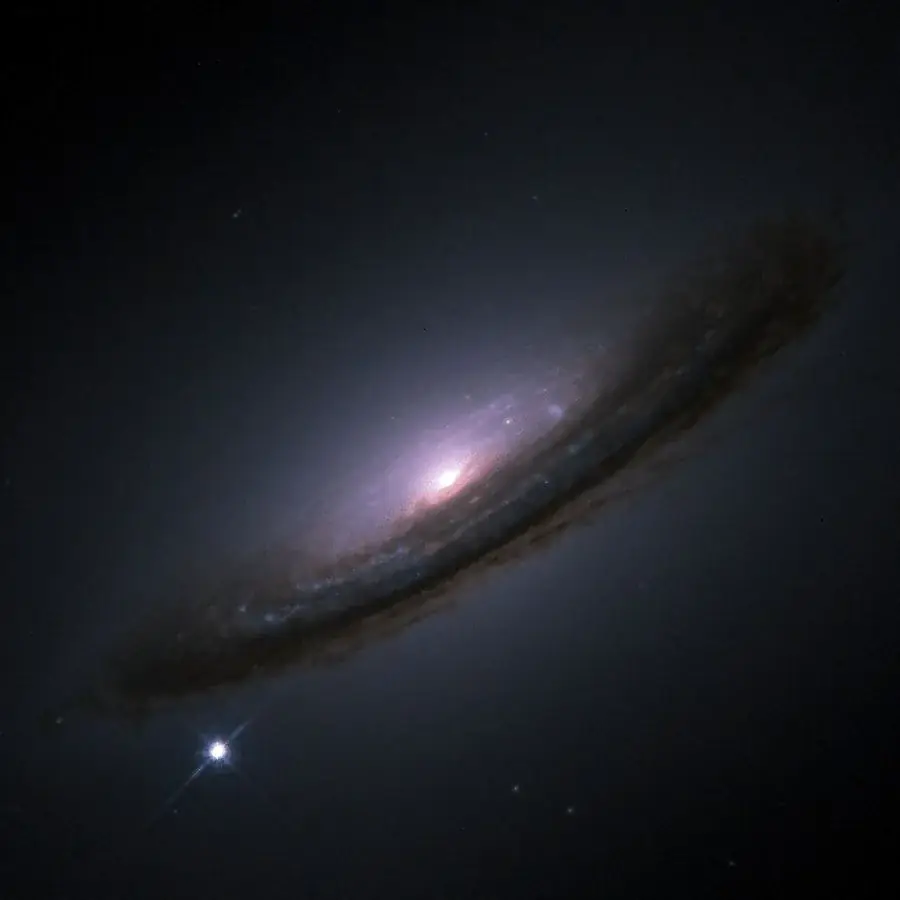
Bereishis and Modern Science
1. The conflicts in Bereishis
Most people who grew up in the yeshiva world have a vague sense that there are questions about Bereishis and science. Most have heard that scientists say the world is billions of years old, and they know about Darwin and the dinosaurs. Some more sophisticated questioners have wondered how kangaroos got to Australia. For each of these questions, people have usually heard a quick answer: Hashem created the world looking old (just as Adam was created as a grown man), the dinosaurs died in the Mabul, the continents used to be connected.
If we had to chart the mind map of the average frum person on these topics, it would look something like this:
But those questions are a single tree in a vast and deep forest. The actual conflicts between Bereishis and modern science come up across almost every topic in the first eleven chapters of Bereishis, from the order in which life appeared to the languages people spoke in Avraham’s lifetime. Across those topics, almost everything the Torah describes contradicts what scientists observe in the world around us.
The past four hundred years—since the Scientific Revolution—have transformed what humanity knows about the physical world. Knowledge is advancing in every field, and just as fast, our sense of how vast the map actually is keeps expanding. Whole disciplines that did not exist fifty years ago now have their own labs, journals, and sub-specialties.
My point in all this is that the more detailed humanity’s knowledge of the universe we inhabit becomes, the clearer it is that we exist in an ancient universe, and that our planet is billions of years old. Chemistry, physics, medicine, geology, genetics, astronomy, linguistics, archaeology, astrophysics, cosmology, nuclear physics, planetary science, geochemistry, geophysics, paleomagnetism, seismology, volcanology, oceanography, sedimentology, stratigraphy, glaciology, paleoclimatology, dendrochronology, paleontology, molecular biology, population genetics, biogeography, primatology, anthropology: wherever we look, the answer is the same. Yet at the same time, there is NO branch of knowledge, no subfield of organic chemistry, no obscure corner of paleobotany that provides one scintilla of evidence pointing to a world that started 5,787 years ago.
There are thousands upon thousands of people who study ocean floors, sedimentary basins, plate boundaries and the rock under our feet, both academically and as part of our capitalist enterprise. Their livelihood depends on their ability to understand rock strata, microfossils and marine sediments well enough to make predictions that yield results in the real world. That is their prime agenda. Yet nothing they see even remotely hints at a global flood 4,100 years ago. In fact, that idea is contradicted by every speck of knowledge we have ever learned in these fields, and it is contradicted so thoroughly that if a global flood really did happen 4,100 years ago, then for all our drills, satellites and supercomputers, humanity has never been more lost than it is right now.
Of course, science is constantly updating itself, and we are always updating our knowledge. But using that to blind yourself to the reality before your eyes is like saying medicine still changes, so maybe blood is really orange juice. As our knowledge stands, to believe the world is 5,787 years old and that a global flood happened 4,100 years ago is to reject everything we know about the world. To believe that humanity descends from Adam HaRishon and Chavah, who lived roughly 180 generations ago, is not garden-variety I-love-homemade-candles-and-essential-oils kookery. It is not Dr.-Fauci-I’m-only-asking-questions skepticism. It is not I-can-make-six-figures-from-my-home-selling-Amway naiveté. It is a rejection of humanity’s ability to learn anything at all.
If humanity is wrong, and if only we would look a little harder through those microscopes we would see that the world is indeed only 5,787 years old, then we don’t actually know the first thing about the physical world. But we do, because science works, in a million different ways. We know how chemistry works, which is why antibiotics kill bacteria and your phone battery doesn’t explode in your pocket. We know how nuclear physics works, which is why power plants run and PET scans catch tumors. We know how orbital mechanics and relativity work, which is why your GPS can track your car from space (unless it is in the quantum distortion field known as the Holland Tunnel). The same physics, chemistry and genetics that keep all of that running are the exact tools that measure the age of the Earth and the history of life.
Over the past two centuries, traditional Jewish thinkers have proposed several ways to answer this:
- Some hold that Hashem created the universe already mature, with starlight in transit and geological age built in (the Lubavitcher Rebbe, Rabbi Dovid Gottlieb).
- Some hold that each yom of Bereishis was a long era, or a stretch of time measured by a relativistic clock, rather than a day of twenty-four hours (Rabbi J. H. Hertz, Gerald Schroeder).
- Some hold that the fossils and the ancient layers of rock come from worlds that existed and were destroyed before ours, before the six days of Creation (the Tiferes Yisrael, Rabbi Aryeh Kaplan).
- Some hold that the laws of nature ran differently during Creation or during the Mabul (Rabbi Shimon Schwab, the Malbim).
- Rabbi Moshe Meiselman holds that the Mabul broke the natural order and that Hashem rebuilt nature afterward, so scientific dating cannot be carried back before 2105 BCE.
- Some read the first chapter of Bereishis as something other than a history of events in order (the Rambam, Rav Kook).
- Some hold that the Mabul covered only one region, not the whole Earth (Rabbi Dovid Tzvi Hoffmann, Rav Gedaliah Nadel).
2. The Six Days of Creation and the traditional cosmology
As anyone who has ever listened to 613 Torah Avenue knows, the order of Creation goes like this. On the first three days, Hashem separates light from darkness, spreads out the rakia to hold back the upper waters, and gathers the lower waters into seas so that dry land appears and the plants come out. On the next three days, He sets the Sun, the Moon and the stars in the rakia (the Fourth Day), fills the seas and the skies with living things (the Fifth Day), and makes the land animals and finally Adam (the Sixth Day).
3. How the Jewish count of years is built
The Jewish count puts Creation 5,787 years ago. It is built by adding up the years that the Torah and Seder Olam give for each generation and each period. The ages of the fathers in Bereishis 5 put the Mabul in the year 1656 from Creation, and those in Bereishis 11 put Avraham’s birth in the year 1948. Authorities differ over a year here and there, but the count itself is accepted across the Jewish world. See my deep dive on Hool’s 165-year book for more details.
4. The two timelines
By the scientists’ dates, the universe is about 2.4 million times older than the 5,787 years of the Jewish count.
On a timeline drawn to scale from the beginning of the universe to today, all 5,787 years would take up about four ten-millionths of the line, too thin to show on any screen. Even the end of the last ice age, about 11,700 years ago, is twice as far back as Creation by the Jewish count.
Scientists date some of the main events in the history of the universe and of people as follows:
| Event | Scientific date |
|---|---|
| The universe begins in a hot, dense state | about 13.8 billion years ago |
| The oldest solids in the Solar System form around the young Sun | about 4.57 billion years ago |
| The earliest clear traces of life | at least 3.5 billion years ago |
| Oxygen builds up in the air, which until then had almost none | about 2.4 billion years ago |
| The Cambrian explosion, when most of the main groups of animals first appear as fossils | about 539 to 515 million years ago |
| The age of the dinosaurs | about 230 to 66 million years ago |
| The earliest fossils of our own species, Homo sapiens | about 315,000 years ago |
| The end of the last ice age | about 11,700 years ago |
| The first farming villages in the Middle East | about 9500 BCE |
| Early writing in Mesopotamia | about 3500 to 3200 BCE |
| The first kings of a united Egypt | about 3100 BCE |
Every entry in the table down to the first farming villages falls before Creation on the Jewish count. The last two entries, early writing and Egypt’s first kings, fall in the centuries between Creation and the Mabul. So by the scientists’ dates, people were farming and writing before the Mabul and kept on doing so through it.
How old the world is and how scientists know
5. How scientists date the past
Scientists have many, many ways of marking the passage of time, because a great many things in nature turn out to hold an internal clock. The clocks fall into families by what makes them tick. Some count layers that nature lays down once a year, and historians count the years of ancient kings. Some measure how much of a radioactive atom has decayed. Some time a process whose speed can be measured, such as a crystal growing or the sea floor spreading, and some measure how much rock a slow process has built up. Some run the motions of the Earth, the Moon, asteroids and stars backward under gravity. Some use the time that light takes to travel, and some use the way stars burn their fuel and cool. Only one of these families depends on radioactive decay. Because the families work in unrelated ways, scientists can check one against another wherever two of them cover the same stretch of time.
The answer most people have heard is that Hashem created the world already looking old, as He created Adam a grown man. That answer does not dispute any measurement. It says that every clock reads a history that was built in at Creation. But many of these clocks record particular events, such as a star exploding, a volcano erupting or an asteroid breaking apart, so on that answer each of those records was made for an event that never happened.
5a Yearly layers
Some things in nature add one distinct layer every year. A tree grows light, wide-celled wood in spring and dark, dense wood in late summer, so each year leaves one ring. The snow that falls on Greenland carries different amounts of dust in summer and in winter, and the difference stays visible even after the snow is pressed into ice. In some lakes, such as Lake Suigetsu in Japan, the mud that settles in summer looks different from the mud that settles in winter. In a sea that is drying up, one mineral can settle out in the cool season and another in the hot season. So a scientist who counts these layers is counting years.
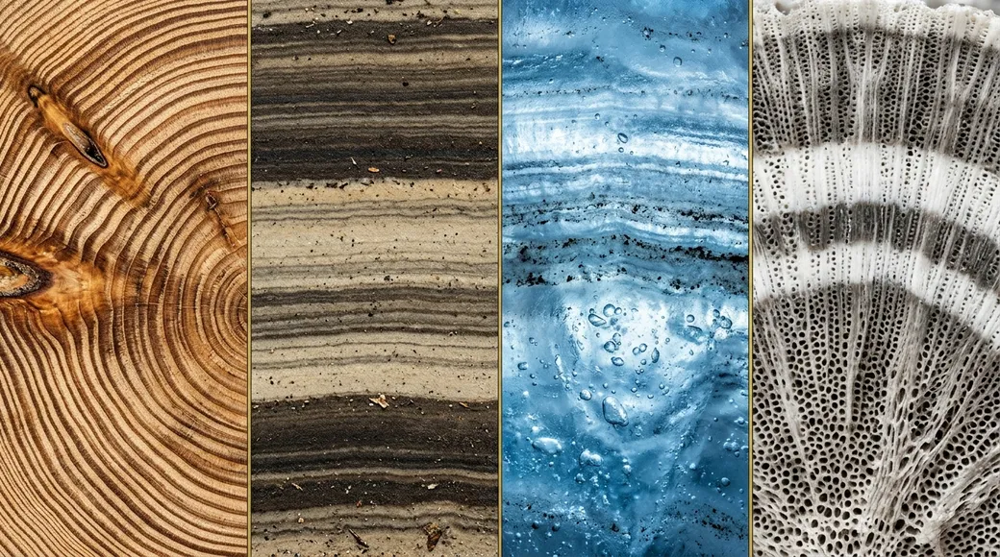
Scientists have watched trees and lakes add one ring, or one pair of mud layers, a year. Counted tree rings reach back more than 12,400 years, the Greenland ice about 60,000 years, the mud of Lake Suigetsu in Japan about 50,000 years, and one deposit of yearly salt layers about 260,000 years. The tree rings and the Greenland ice have a layer for every year through 3760 BCE and 2105 BCE, the dates of Creation and of the Mabul on the Jewish count, with no gap, flood layer or break. Counts made in separate places agree with each other and with written history.
Tree rings. A tree adds one ring of wood in each growing season, and the width of the ring depends on the weather. Wet years produce wide rings and dry years produce narrow ones. So each stretch of years leaves its own pattern of widths, like a barcode.
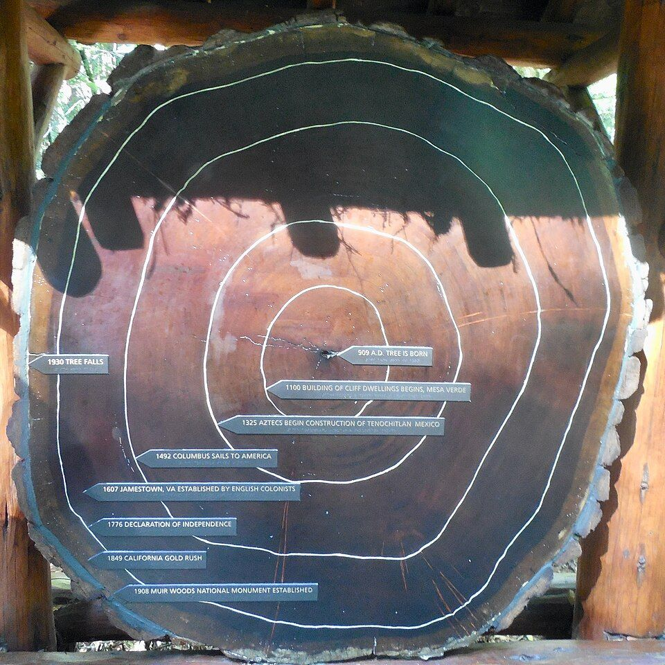
No tree lives ten thousand years, so scientists build long tree-ring counts by matching overlapping pieces of wood. If the outer rings of an old timber beam have the same pattern of widths as the inner rings of a living tree, those rings grew in the same years. The beam’s inner rings then carry the count further back than the living tree reaches. A trunk preserved in a riverbed can carry it further still.
Matching many pieces from many trees also catches mistakes. A single tree can skip a ring in a very dry year, or grow a false ring after a dry spell in midsummer. When scientists line up dozens of trees against each other, a tree with a missing or extra ring stands out from the rest. If nineteen oaks from the same forest all have 150 rings between two distinctive drought years, and one oak has only 149, that one oak skipped a ring.
The same method has built much longer counts. Researchers at the University of Hohenheim in Germany matched thousands of trunks of oak and pine preserved in the river gravels of the Rhine, the Main and the Danube, and built a continuous count of more than 12,400 tree rings. By their count, oaks and pines were growing in Germany, and adding a ring a year, for more than six thousand years before 3760 BCE. Separate counts from Irish bog oaks (oak trunks preserved in peat bogs) and from California bristlecone pines cover many of the same thousands of years. So in three separate regions, overlapping wood carries the count of years back past the end of the last ice age.
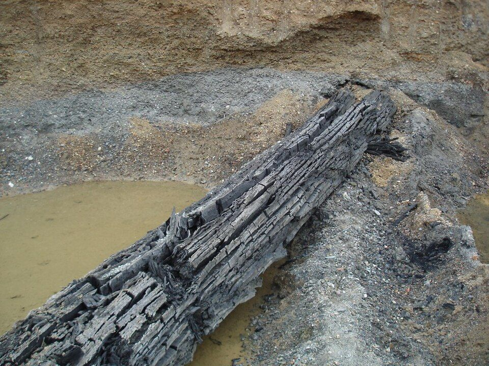
Matching a core of wood to the count
Bristlecone pines from Campito Mountain in California show how the matching works. The tree-ring scientists Donald Graybill and Valmore LaMarche drilled thin cores of wood out of these trunks, and their ring widths are kept in the International Tree-Ring Data Bank. Thirty of the cores have outer rings from 1968 to 1983, and together they form a continuous count back to 1450. One older core has 593 rings, with nothing outside the wood to say which years they belong to. Researchers divide the width of each ring by the average width of the five rings around it, so that the pattern of good and bad years stands out.
Then the researchers slide the 593-ring core along the dated count. At each position they compute a score called the t-value, which rises the more closely the two patterns line up. In tree-ring dating a score above 3.5 marks a genuine match and not chance. The 593-ring core matches strongly at only one position, with its outer ring in 1582. There the t-value is 8.4, and at every other position it is 3.9 or less. (At that position its five-year running average overlaps the dated count by 131 years, 1452 to 1582, and its raw rings by 133 years, back to 1450.) A still older core, of 523 rings, then matches the extended count with its outer ring in 1232. It scores 7.0 there and at most 3.3 anywhere else. These two cores carry the count back to 710 CE, a continuous span of 1,274 years.
Layers of polar ice. Glaciologists study ice sheets by drilling out long columns of ice, called cores. The weight of the snow above presses the deeper yearly layers thinner, but they can still be told apart. In the Greenland core called GISP2, the single meter of ice between 1,837 and 1,838 meters down holds 38 separate yearly layers. When glaciologists counted that core in 1997, they found that this ice was laid down about 16,200 years ago (Meese et al., Journal of Geophysical Research, 1997). Another Greenland core, NGRIP, has been counted back 60,000 years through its top 2,426 meters. This count is called GICC05.
Near the top of the NGRIP core a year’s layer is about 28 centimeters thick. At the depth of the year of Creation on the Jewish count it is about 13 centimeters, and at the bottom of the count it is about one centimeter. Every year back to Creation lies in the top 935 meters, where the count could be off by at most 15 years. At the bottom, 60,000 years back, it could be off by as much as 2,601 years, but even there the layers can be counted one by one.
Layers of lake mud. Lake Suigetsu in Japan lays down a pair of thin layers of mud each year, one in summer and one in winter. In 2006 a team of Japanese, British and German scientists drilled a core of mud more than 73 meters long from the middle of the lake. The mud of the last ten thousand years has no clear yearly layers. Beneath it, microscopic yearly layers reach back to about 50,000 years ago. In 2018 Gordon Schlolaut and his colleagues reported that in only about half of those years did the lake leave layers distinct enough to count one by one. For the gaps, the team estimated the years from the thickness of the layers around them, so the record of Lake Suigetsu is less exact than the counts of tree rings or of ice. Even if all the estimated gaps are set aside, the layers counted one by one come to about 20,000 years.
Checking that a layer is one year
Scientists who have watched oaks grow find that an oak cannot form several rings in one growing season. In dye experiments on English oak, the tree’s new spring vessels (the microscopic tubes that carry water up the trunk) took about 70 days (ten weeks) from the time they began to form until they could carry water (Valdovinos-Ayala et al., American Journal of Botany, 2018). In a three-year field study of sessile oak, a full ring took an average of 212 days to form, from the first enlargement of its cells to their full maturity (Fernández-de-Uña et al., New Phytologist, 2026).
Lake mud has been watched in the same way. In Lake Nautajärvi in Finland, scientists placed sediment traps (containers that collect the mud as it settles) to see what the lake lays down in a year. Even in winters with repeated thaws and freezes, the traps collected winter mud that built up gradually and a weaker, thinner band of spring minerals. They did not collect an extra pair of layers. So each pair of layers in the lake marks a full year (Ojala et al., GFF, 2013; Korkonen et al., Journal of Limnology, 2017).
Other counts of yearly layers
Ice in West Antarctica. Michael Sigl and his colleagues counted the yearly layers of another ice core, from the WAIS Divide, back to 31,200 years ago. They told the years apart by the seasonal changes in the chemistry of the ice, its dust and its electrical conductivity (Climate of the Past, 2016). They compared their count with the carbon-14 in counted tree rings, and over the last eleven thousand years the two counts agreed within half a percent.
Yearly lake layers in the Green River Formation. The rock of the Green River Formation began as mud at the bottom of ancient lakes in what is now Wyoming, Utah and Colorado, in the Eocene age, more than 40 million years ago. The rock is made of very fine pairs of layers, one dark and one light, which average less than a fifth of a millimeter for each pair. In 1929 Wilmot Bradley of the United States Geological Survey studied these pairs and took each pair to be one year’s mud. On Bradley’s reading, one band in Wyoming, about 1.8 meters thick and famous for its whole fossil fish, holds about 4,000 years. That is nearly as many years as have passed since the Mabul.
Geologists estimate that the Green River Formation as a whole spans about six million years. The thickness of its beds also follows the regular cycles of the Earth’s orbit. Ages worked out from those cycles agree closely with ages measured by radioactive decay in layers of volcanic ash inside the formation (Stephen Meyers, Geology, 2008).
Layers of salt from a drying sea. About 255 million years ago, in the Permian period, a deep basin in what is now West Texas and southeastern New Mexico was walled off from the open ocean by a tall reef. The same reef today holds Carlsbad Caverns. Sea water seeped in through the reef and evaporated, and the minerals dissolved in it settled to the bottom (Anderson, Climate of the Past, 2011, supplement). They formed the Castile Formation, a stack of thin pairs of layers. A thin, dark layer of calcite (the mineral of limestone) mixed with the remains of algae formed in a cool season of three or four months. A thicker, light layer of gypsum formed in the hot, dry season of eight or nine months. (Buried deep, the gypsum later turned into anhydrite, the same calcium sulfate without the water.) In some stretches each year’s pair is a layer of rock salt with a thin layer of anhydrite (Anderson, Climate of the Past, 2011; Anderson, Journal of Geophysical Research, 1982).
Roger Anderson, a geologist at the University of New Mexico, and three colleagues measured the thickness of every pair of layers, one by one, in cores drilled from the basin. They counted about 260,000 pairs in 447 meters of rock, in the Castile and in the top of the Bell Canyon Formation beneath it (Geological Society of America Bulletin, 1972). The Castile itself holds about 209,000 pairs, which average 1.8 millimeters thick (Anderson, Climate of the Past, 2011).
Several things support reading each pair as one year. The two layers of a pair are minerals that a drying sea lays down in two different seasons. Single layers can be matched from core to core across the basin, over distances of up to 113 kilometers, so each layer formed across the whole basin at the same time (1972). And when Anderson read the thickness of the layers as a series of years, it rose and fell in cycles of about 20,000 and about 100,000 years (1982). These are close to the lengths that astronomers calculate for slow cycles in the Earth’s orbit and axis (Anderson, 2011). If the pairs were not yearly, those cycles would come out at the wrong lengths. Anderson’s team wrote that no one had conclusively proven that such pairs are yearly, and in 2011 Anderson allowed that his count might be up to 5 percent too high. Even so, the Castile and the layers beneath it hold about 260,000 years.
5b Radiocarbon
Laboratories date the remains of plants, animals and people by radiocarbon, i.e., carbon-14. Cosmic rays (high-energy particles from space) strike the upper atmosphere and make carbon-14. Plants take it in from the air, and animals and people take it in from their food. When a living thing dies it stops taking in carbon, and its carbon-14 decays into nitrogen-14 with a half-life of about 5,730 years, which means that half of it is gone after 5,730 years. The less carbon-14 is left in a sample, the longer ago it died. After 50,000 years only about a quarter of one percent of the original carbon-14 is left, too little to measure reliably, so radiocarbon reaches back about 50,000 years.
A laboratory first gives the carbon-14 left in a sample as an age in “radiocarbon years” (counted back from 1950, by convention). This is the age the sample would have if the air had always held the same amount of carbon-14. The amount in the air has changed over time, so this raw reading has to be turned into calendar years.
Laboratories do this with tree rings, in a process called calibration. Each ring took in carbon from the air in the year it grew, and its calendar year is known by counting. Scientists have measured the carbon-14 in thousands of rings, year by year, and drawn the results as a calibration curve. The laboratory finds the point on the curve with the same amount of carbon-14 left as the sample, and the counted years of those rings are the sample’s date. Every measurement has a small margin of error, so the date is given as a range of years.
The standard calibration curve for the Northern Hemisphere today is IntCal20. It was published in 2020 by a team led by Paula Reimer of Queen’s University Belfast, and over the last twelve thousand years or so it is built from counted tree rings. So over that span a calibrated radiocarbon date is a tree-ring date. When an archaeologist reports that a seed dates to 3800 BCE, the seed has as much carbon-14 left in it as the tree rings counted to about 3800 BCE.
People often hear that the carbon-14 in the air changed in the past, and assume that this undermines the method. But scientists do not assume that it stayed the same. They measure how it changed, year by year, in counted tree rings. For ancient samples, calibration moves the dates further back in time, past 2105 BCE and 3760 BCE (the Torah’s dates for the Mabul and for Creation), not closer to the present. The shift runs from centuries to more than a thousand years:
- Tree rings counted to about 3800 BCE (about 5,750 years before 1950) read only about 5,040 radiocarbon years.
- A raw reading of 4,000 radiocarbon years, give or take 30, calibrates on IntCal20 to 2571–2471 BCE (with 95 percent probability). That is about 470 years older than 4,000 years before 1950.
- A raw reading of 10,000 radiocarbon years calibrates to a date about 1,480 years older.
The further back a sample is, the further calibration moves it back.
Contaminated samples
A tiny amount of modern carbon, from the soil or from the materials museums use to conserve bones, can make an old bone date centuries too young, because an old bone has so little of its own carbon-14 left. Scientists caught such an error at Riparo Tagliente, a rock shelter in northern Italy.
The excavators there had catalogued a loose jawbone and a buried skeleton as two separate people. Yavuz and colleagues (Communications Biology, 2024) later analyzed the DNA of both, from the nucleus of the cell and from the mitochondria, and found that the jawbone and the skeleton came from one person (unless the two were identical twins). The growth of the skeleton and the teeth puts that person’s age at death at 22 to 30.
Radiocarbon dates on three bones of this one person came out centuries apart (Sparacello et al., 2025). The dates are in radiocarbon years “before present” (BP), i.e., before 1950:
- The first molar of the jaw (sample MAMS-27188) dated to 13,790 ± 60 BP.
- The femur (sample MAMS 62622.1.1) dated to 13,491 ± 40 BP, or 299 ± 72 radiocarbon years younger.
- A rib (sample OxA-10672) dated to 13,190 ± 90 BP, or 600 ± 108 radiocarbon years younger.
The three bones took in their carbon at different times of this person’s life: the molar at about age 4, the femur at about 16 and the rib at about 26. So their dates should differ by about twenty years at most. At least two of the three readings had to be wrong.
Yavuz and colleagues traced the younger dates to glue that had been used to restore the bones after they were dug up, and they took the date of the first molar as the reliable one (Yavuz et al., 2024). So before relying on a single bone date, archaeologists look at the museum’s conservation records and compare dates from several tissues with the anatomy and the DNA.
5c King lists and eclipses
Historians date the kings and cities of the ancient world by the years that their scribes recorded. In Egypt and Mesopotamia, scribes dated documents by the year of the reigning king, or by a name given to each year. Later scribes made lists of the kings with the length of each reign, and ordered lists of the year names. Historians add up these counts. The oldest surviving list is the Royal Annals of Egypt.
Counting reigns tells historians how many years passed between two kings, but not in which years of our calendar the kings ruled. A recorded eclipse can tie the count to our calendar. In Assyria each year was named after an official, and scribes kept the year names in order. One list records that in the year named for Bur-Sagale, in the month of Simanu, “an eclipse of the sun took place.”
In 1867 Henry Rawlinson, a British scholar who helped decipher Babylonian and Assyrian writing, identified this as the eclipse of the Sun of 15 June 763 BCE. Astronomers calculate that this eclipse passed over northern Assyria. By counting the named years forward and backward from 763 BCE, historians can give a date on our calendar to every year in the lists from 911 to 631 BCE. For 747 to 631 BCE these dates agree with a separate list of kings, beginning with the kings of Babylon, that the Greek astronomer Ptolemy preserved. So the Assyrian year names, the Babylonian king list and the calculation of the eclipse all agree, and none of them depends on radioactive decay.
Astronomers can also make sure that the historians’ count has not lost or gained days. Scribes and astronomers in Babylon, China, the Arab world and Europe recorded eclipses of the Sun and the Moon. They gave each eclipse its date in their own calendar, and often the time of day or the place. In 2016 the astronomers Richard Stephenson, Leslie Morrison and Catherine Hohenkerk collected these records from 720 BCE to 1600 CE, along with later timings of the Moon passing in front of stars (Proceedings of the Royal Society A, 2016). This gave them more than two thousand years of dated observations of the sky.
They converted the date of each recorded eclipse to our calendar and used the physics of the orbits to calculate whether an eclipse really took place on that day. An eclipse of the Sun can happen only when the Moon passes between the Sun and the Earth, and an eclipse of the Moon only when the Earth passes between the Sun and the Moon. If the historians’ count had lost or gained a day, the older records would describe eclipses on days when the Sun and the Moon were not lined up. The records do match the calculated eclipses, once astronomers allow for the gradual slowing of the Earth’s spin (the slowing of the Earth’s spin). For the oldest records, the slowing adds up to a shift of about five hours and forty minutes.
Back to the eighth century BCE, recorded eclipses fix the dates of royal reigns to the year. In the thousand years before that, which include the centuries around the Mabul and Avraham, the records are harder to use. Instead of clear eclipses of the Sun, historians have to work with sightings of a planet, whose pattern repeats, and compare them with wood from the same cities.
Before 1000 BCE the king lists have gaps and disputed reigns. During the reign of Ammisaduqa, a later king of Hammurabi’s dynasty, scribes recorded when the planet Venus appeared and disappeared over 21 years. The pattern of Venus repeats every few decades, so these records fit several different sets of years. Historians therefore have competing chronologies for these centuries, spaced up to about 150 years apart. A difference of 150 years is far too small to move the dynasties that historians date long before 2105 BCE to after it. One of these chronologies, called the middle chronology, puts Hammurabi’s reign from 1792 to 1750 BCE and the dynasty of Ur from 2112 to 2004 BCE.
Wood from the same cities can decide between the chronologies. In 2016 the archaeologist Sturt Manning and his colleagues measured the carbon-14 in counted tree rings of wooden beams dug up at Kültepe and Acemhöyük, in Turkey. Written documents found with the beams link them to known Assyrian officials. The team’s measurements fit the middle chronology and none of the others (PLOS ONE, 2016). On the middle chronology, the dynasty of Ur was ruling, and keeping its administrative records, through 2105 BCE, the year of the Mabul on the Jewish count.
In Egypt, historians tie the reigns of the kings to the calendar with radiocarbon dating and with ancient records of the yearly rising of the star Sirius, which scribes kept. The competing Egyptian chronologies for the third millennium BCE differ by a few decades, and at most by about a century (see 1.4). The dates of the earliest kings and archives, such as those of Akkad and Ebla, are less exact. Even with these margins, written king lists, tied to the calendar by eclipses and other records of the sky, give historians a way to date the past that is separate from the archaeologists’ methods.
5d Radioactive decay in rock
Rocks that formed long before any tree or ice sheet are dated by the radioactive atoms inside their minerals.
In radioactive decay, unstable atoms change into atoms of another element, each type at its own fixed rate. Physicists measure the rate in the laboratory and give it as a half-life, the time it takes for half of the unstable atoms in a sample to decay. If a mineral begins with 1,000 unstable atoms and none of the atoms they decay into, then after one half-life it holds 500 of the original atoms and 500 of the new ones. After two half-lives it holds 250 of the original atoms and 750 of the new ones. As long as the mineral has kept both the original atoms and the atoms they turned into, a laboratory can measure the ratio between them and work out when the mineral formed.
Each isotope (a form of an element with a different atomic weight) has its own half-life, and the half-life sets how far back it can date. Uranium-238 decays into lead-206 with a half-life of about 4.5 billion years, so it suits rocks billions of years old. Potassium-40 has a half-life of about 1.25 billion years. About one in nine of its atoms that decay becomes argon-40, a gas, and the rest become calcium-40. Long half-lives like these let geologists date ancient rocks, because measurable amounts of the original atoms are still left in them. Carbon-14, with a half-life of about 5,730 years, decays far too fast to date rocks; it is the atom of radiocarbon dating.
Over the 5,787 years of the Jewish count, these three atoms decay by very different amounts. At today’s rates, about half of the carbon-14 in a sample decays in that time. In the same time only about three atoms of potassium-40 in a million decay, and fewer than one atom of uranium-238 in a million. Over the 4.57 billion years since the Earth formed, about half of the Earth’s original uranium-238 has decayed, along with more than nine-tenths of its potassium-40.
A laboratory also has to be sure that a rock a billion years old stayed sealed all that time. The rock might have lost some of the atoms that decay produced, or it might have started out with some of them already in it.
Uranium and lead in zircon crystals. Geologists deal with both problems by dating tiny crystals called zircons. When a zircon crystallizes, it takes in uranium but keeps out almost all lead. So nearly all the lead found inside a zircon came from radioactive decay. A zircon also contains two types of uranium, which decay into two different types of lead at different rates. So every zircon gives two separate dates. If the crystal has lost lead since it formed, the two dates disagree, and the laboratory knows not to trust them. So the laboratory does not have to assume that the rock stayed sealed. Uranium-238 decays into lead-206 with a half-life of 4.47 billion years (rounded to 4.5 billion above), and uranium-235 decays into lead-207 with a half-life of 704 million years. These are the standard values, measured by Arthur Jaffey and his colleagues at Argonne National Laboratory in 1971.
Laboratories also look for lead-204, a type of lead that radioactive decay does not produce. If a laboratory finds lead-204 in a zircon, it knows that some lead was already in the crystal when it formed.
When a zircon has lost lead
Suppose a zircon formed 3.2 billion years ago and lost 60 percent of its lead 1.6 billion years after it formed. Uranium-235 decays more than six times faster than uranium-238, so losing the same share of lead throws the two clocks off by different amounts. The uranium-238 clock would give an age of about 2.29 billion years, and the uranium-235 clock about 2.54 billion. From this difference of 256 million years, geologists know at once that the crystal lost lead.
Sometimes several zircons from the same rock lost different shares of their lead in one event, such as when the rock was heated deep inside the Earth. Even then, geologists can often work out both when the crystals formed and when they lost their lead. They plot each zircon on a graph whose two axes are the two clocks (lead-206 compared with uranium-238, and lead-207 compared with uranium-235). Zircons whose two clocks agree fall on a curve called the concordia. Zircons that lost different amounts of lead in the same event fall on a straight line that crosses the curve at two points. The upper crossing gives the age when the crystals formed, and the lower crossing gives the time when they lost their lead. (Geologists caution that the lower crossing does not always mark a single event.)
Laboratories check the other methods in similar ways. An argon date is checked by heating a grain in steps, which give the same age only if the grain stayed sealed, and an isochron measures how much of the daughter atom a rock started with instead of assuming it.
Potassium and argon
Potassium and argon in volcanic rock. Potassium is common in many minerals, so potassium-40 can date lava and volcanic ash. This clock works because argon is a gas. While rock is molten, its argon escapes. Only when erupted lava or ash cools can argon be trapped in its minerals, so the clock starts at the eruption. In the older potassium-argon method, the laboratory measured the potassium in one portion of a sample and the argon in another, which added some uncertainty to the age (U.S. Geological Survey, 2024).
An argon date can go wrong in two directions. A rock that was heated again later can lose argon, and its date comes out too young. A rock that trapped extra argon when it formed gives a date that is too old. Brent Dalrymple, a geologist with the U.S. Geological Survey, described where extra argon is found: in the glassy rims of lava that erupted on the deep sea floor, and in tiny bubbles of fluid inside chunks of older rock that lava carries up from below. Geologists avoid such material when they date by argon. In ordinary lava flows, two studies found that extra argon is not a serious problem (U.S. Geological Survey Open-File Report 86-110, 1986). Air also contains argon, with about 300 atoms of argon-40 for each atom of argon-36, so laboratories measure the argon-36 in a sample and subtract the matching share of air argon (Pieter Vermeesch, Isotope Geology, University College London).
The newer argon-argon method deals with these problems. The laboratory places the sample in a nuclear research reactor, where neutrons turn a small share of its potassium-39 into argon-39. A mineral of known age goes in with it, so the laboratory knows how much argon-39 a given amount of potassium yields. Now the potassium and the argon-40 are both measured as argon, in the same grain (Vermeesch). The laboratory can then heat the grain in steps, each hotter than the last, and work out an age from the argon released at each step. In a grain that stayed sealed, every step gives the same age, which geologists call a plateau. A grain that lost argon or took in extra argon gives different ages at different steps. Dalrymple wrote that samples with extra argon “nearly always” fail to give a flat plateau.
Isochrons
Many rocks start out with some of the daughter atom (the atom that decay produces) already in them. Rubidium-87, for example, decays into strontium-87 with a half-life of about 49 billion years, but minerals also take in some strontium-87 when they form. The isochron method does not need to know how much. The laboratory measures several minerals that crystallized together from the same melt. They all started with the same ratio of strontium-87 to strontium-86, a form of strontium that decay does not produce. But they took in different amounts of rubidium, so over time the minerals with more rubidium gain more strontium-87.
The laboratory plots each mineral on a graph of strontium-87 against rubidium-87, each compared with strontium-86. The points fall on a straight line, called an isochron. The steeper the line, the older the rock, and the point where the line meets the axis gives the ratio the minerals started with. So the starting amount of strontium-87 is measured, not assumed (Vermeesch). The method also exposes its own failures. If the rock gained or lost rubidium or strontium, or if the minerals did not start with the same strontium, the points do not fall on a straight line (Dalrymple, 1986).
An argon isochron likewise finds what the argon trapped at the start was made of, instead of assuming that it was air. The New Mexico Geochronology Research Laboratory gives an example of a sample whose heating steps gave ages from 4.5 to 6.0 million years, with no plateau. Its isochron revealed trapped argon richer in argon-40 than air, and with that correction the age came out at 4.05 million years (New Mexico Bureau of Geology and Mineral Resources).
These methods give the oldest dates of all. The oldest grains in meteorites date to about 4.567 billion years, which scientists take as the age of the Solar System. The oldest rock on Earth is about four billion years old, the oldest known crystal 4.404 billion, and rocks from the Moon from about 2.0 to 4.46 billion.
Meteorites and the oldest rocks
The age of the Solar System. Rocks from space strike the Earth regularly, and once they land they are called meteorites. Laboratories find when a meteorite crystallized by measuring how much of its uranium has decayed into lead. In 2012 a team at the University of Copenhagen measured the uranium and lead in single grains taken from meteorites, and the oldest grains dated to 4.567 billion years. Scientists hold that these meteorites have drifted through space unchanged since the Sun and the planets formed, so they conclude that the Solar System is at least that old.
The oldest rocks and crystals. The age of any rock gives only a minimum age for the Earth, because older rock may have melted or worn away. In 1999 Samuel Bowring and Ian Williams dated the Acasta gneiss, a rock formation in northwestern Canada, to between 4.00 and 4.03 billion years ago. In 2001 Simon Wilde, John Valley and two colleagues dated a tiny, hard-wearing crystal of zircon from the Jack Hills of Western Australia to 4.404 billion years ago, give or take 8 million years. From the oxygen trapped in the crystal, Wilde and Valley concluded that the molten rock in which it grew had taken in older rock that liquid water at the surface had already altered. So by their finding there were already oceans of liquid water on the Earth 4.4 billion years ago.
The lead of the Earth and of meteorites. Uranium decays into two kinds of lead at different rates, so the mix of lead in any rock changes over time in a predictable way. In 1956 Clair Patterson measured the lead in five meteorites and found that all five gave a single age: 4.55 billion years, give or take 70 million. He then measured the lead in mud from the ocean floor, as a sample of the Earth’s lead as a whole. It fell on the same age line as the meteorites, and Patterson concluded that the Earth is as old as the meteorites.
Five methods on one rock. Uranium-238, uranium-235 and samarium-147 decay by alpha decay, which depends on the strong nuclear force and the electric force. Rubidium-87 and lutetium-176 decay by beta decay, which depends on the weak nuclear force and follows a different mathematical law. In 1991 Brent Dalrymple, a geologist with the United States Geological Survey, gathered twelve studies of the Amitsoq gneiss in western Greenland that had used all five methods on the same rock formation (The Age of the Earth, 1991). The ages range from 3.55 to 3.74 billion years, and within their margins of error all twelve agree on 3.62 to 3.65 billion years. (A change in the laws of nature could not speed up alpha and beta decay, or even two different alpha decays, by the same factor.)
Water sealed in rock. Radioactive decay also dates fluids sealed deep in the Earth’s crust. About 2.4 kilometers underground in the Kidd Creek mine, near Timmins in Ontario, water seeps from cracks in rock whose ore formed about 2.64 billion years ago. In 2013 Greg Holland, Barbara Sherwood Lollar, Chris Ballentine and their colleagues measured the noble gases dissolved in this water. Noble gases, such as helium, neon, argon and xenon, almost never combine chemically with other atoms. As radioactive atoms in the surrounding rock decay, they add these gases to the trapped water: uranium and thorium give off helium, potassium decays into argon, and splitting uranium atoms produce xenon.
The longer the water stays sealed in the rock, the more of these gases it gathers. The team calculated how long the water had been cut off in two ways. The first used the gases added by radioactive decay. The second used the mix of lighter forms of xenon, which follows changes in the Earth’s early atmosphere. By the xenon method, the water had been cut off from the surface for an average of at least 1.5 billion years, and the team concluded that pockets of water can stay sealed in the Earth’s crust for billions of years (Nature, 2013).
A simple check on these ages needs no single date. The Earth’s rocks still hold the radioactive atoms whose half-lives are about 700 million years or longer, but none of the shorter-lived kinds that, as meteorites show, were present when the Solar System formed. An atom needs dozens of half-lives to disappear, so this dividing line puts the age of the Earth in the billions of years. If the world were 5,787 years old, nearly all of the short-lived atoms would still be here.
Radioactive atoms missing from the Earth
The Earth’s rocks still hold the radioactive atoms whose half-lives are about 700 million years or longer, such as uranium-235, potassium-40, uranium-238 and thorium-232. The shorter-lived kinds that nothing on Earth makes today are missing. Plutonium-244 has a half-life of about 81 million years, iodine-129 and curium-247 about 16 million years, and aluminum-26 about 700,000 years (Andrew Davis, Annual Review of Nuclear and Particle Science, 2022). On the Earth they are gone, apart from traces made today and a few atoms that fell from space in the last ten million years.
The shorter-lived atoms were once present in the Solar System. In 1960 the physicist John Reynolds of the University of California, Berkeley, found in meteorites the xenon gas that decaying iodine-129 produces. Meteorites also hold the magnesium that decaying aluminum-26 produces. So these atoms were present when the Solar System formed, and since then they have decayed away completely.
The few atoms that fell from space have been traced. In 2021 Anton Wallner of the Australian National University and his colleagues counted atoms of plutonium-244 and of iron-60 (a radioactive form of iron with a half-life of 2.6 million years) in crust from the floor of the Pacific Ocean. They found that both reached the Earth on two occasions within the last ten million years, from stars that exploded near the Sun (Science, 2021).
Scientists have searched hard for leftover plutonium-244. A team reported a trace of it in 1971 in bastnäsite, a rare mineral. In 2012 Johannes Lachner and his colleagues at the Technical University of Munich searched bastnäsite with a much more sensitive instrument and found none (Physical Review C, 2012). In 2022 a Chinese and Swiss team found none in 450 grams of bastnäsite from Bayan Obo in China. They calculated that after 4.57 billion years, about 56 half-lives, too little should be left to find (Wu et al., Chinese Chemical Letters, 2022). After ten half-lives only a thousandth of the original amount of an atom is left, and after twenty only a millionth. If the world were 5,787 years old, only about one atom of plutonium-244 in twenty thousand would have decayed, and every one of the shorter-lived atoms would still be plentiful. Instead, every kind with a half-life under about 100 million years is gone, while the kinds with half-lives of 700 million years or more are still here in large amounts.
The rocks of the Moon
Between 1969 and 1972 the six Apollo landings brought back 382 kilograms of rock and soil from the Moon.
The plains and the highlands. The dark patches on the Moon are plains of hardened lava, and the pale regions are highlands of older rock. The Apollo astronauts brought back samples from both, and laboratories dated them by radioactive decay. The lava plains that Apollo visited mostly date to between 3.1 and 3.8 billion years ago, and typical highland rocks to between 4.0 and 4.3 billion years. In 2011 Lars Borg of the Lawrence Livermore National Laboratory and his colleagues dated a highland rock from Apollo 16 (sample 60025) by two methods, the decay of uranium into lead and the decay of samarium into neodymium, and got an age of 4.36 billion years.
A rock from Apollo 17, sample 72255, holds an even older mineral. The rock is an impact breccia, a rock formed in an impact. In 2023 Jennika Greer and her colleagues examined a crystal of zircon inside it that dates to about 4.46 billion years (Greer et al., Geochemical Perspectives Letters, 2023). They used atom-probe tomography, a method that maps individual atoms, to see whether lead atoms had gathered in tiny clusters in a way that could throw off the uranium–lead date. They found no such clusters. (The scan does not give a separate age. It only rules out that moving lead distorted the uranium–lead measurement.) The age of 4.46 billion years belongs to the zircon itself. The rock that holds it was formed later, by an impact.
Crater counts. The Moon has no air, wind or liquid water to wear its surface down, so older surfaces gather more craters, and a younger lava flow buries the older craters beneath it. Counting craters therefore puts the surfaces of the Moon in order of age, by plain observation. Turning a count of craters into years is a separate step. Scientists calibrate their models of the rate of impacts against the radioactive ages of the samples brought back, so crater ages are not independent of radioactive dating. Samples from each new landing site let scientists see whether the timeline holds on parts of the Moon that had not been visited.
The samples of Chang’e-5 and Chang’e-6. On December 1, 2020, China’s Chang’e-5 spacecraft landed on a lava plain with few craters in Oceanus Procellarum, and on December 16 it brought back 1,731 grams of rock and soil. Crater counts had already put this plain at less than three billion years old. In 2021 laboratories found that the lava there erupted about two billion years ago. Xiaochao Che and colleagues reported an age from lead isotopes of 1,963 ± 57 million years (Che et al., Science, 2021), and a team led by Li Qiu-Li reported 2.03 billion years. So volcanoes were still erupting on the Moon more than two billion years after it formed.
In 2024 China’s Chang’e-6 mission brought back soil from the far side of the Moon, and a single scoop held rocks from two different volcanic periods. Qian W. L. Zhang and colleagues dated the main lava of the far side to 2,807 ± 3 million years. They also dated one fragment of a different chemical type, a basalt rich in aluminum, to 4,203 ± 4 million years (Zhang et al., Nature, 2024). A separate team led by Zexian Cui dated the younger far-side lava to 2.83 billion years, close to the first team’s figure (Cui et al., Science, 2024). Impacts can throw chunks of older rock into younger soil, so the fragment of 4.203 billion years does not date the whole landing site. From these dates, scientists find that the far side too had lava flows, and impacts that mixed its soil, over billions of years. The timeline built from craters and dated samples now reaches the far side of the Moon.
The order of events on the Moon. The dark plain of Mare Imbrium fills an impact basin about 1,100 kilometers across, ringed by mountains thrown up when a huge rock from space struck the Moon. Laboratories date that impact to about 3.92 billion years ago by the decay of uranium into lead in rock that the collision melted. Later, lava welled up and flooded the floor of the basin, so the lava is younger than the basin that holds it. South of Mare Imbrium, the crater Copernicus, 93 kilometers wide, was punched into these lava plains and sprayed bright streaks of rock across the dark lava. So the crater is younger than the lava.
Scientists date Copernicus to about 800 million years ago, and the crater Tycho, whose bright streaks stretch across much of the near side of the Moon, to about 108 million years ago. Even through ordinary binoculars, anyone can see Copernicus and its bright streaks lying on top of the dark lava. The order of these events needs no laboratory dating at all: first the basin, then the lava that flooded it, and last the craters whose streaks lie across the lava. The surface of the Moon holds a real sequence of events, not a single picture made all at once.
Scientists use the same timeline, calibrated by craters, on Mars. There an ancient river built a broad delta fan inside Jezero crater, and the fan is rich in clays, minerals that form in water. NASA’s Perseverance rover landed in Jezero crater in February 2021 and has since driven across the old lakebed and onto the delta. Mars has no rivers or lakes today, because liquid water cannot last on its cold surface under its thin atmosphere. By crater counts, the river fed the lake about 3.7 billion years ago. This estimate depends on crater counts calibrated with the ages of rocks from the Moon, so it is not a separate clock. But from the clay-rich delta itself, scientists know that liquid water once carved out and filled a lake on Mars for a long time.
Every one of these dates assumes that the atoms decayed in the past at the rates that laboratories measure today, and scientists have tested that assumption directly.
5e Processes with a measured speed
Many slow natural processes run at a speed that scientists can measure. The floor of the Pacific Ocean, for one, moves about seven centimeters a year. Knowing the speed and how far the process has gone, scientists can work out how long it has been running.
Some of these speeds are measured today, some follow from the laws of physics, some are measured in the laboratory, and a few are calibrated against dates from other methods. The main thing that can go wrong is that the speed was different in the past, usually because the temperature was different. Scientists catch this by comparing the answer with a second, unrelated clock. These methods reach from tens of thousands of years back to billions.
The moving sea floor. The Earth’s outer shell is made of rigid slabs, called plates. The Hawaiian islands are a chain of volcanoes built one after another over a single hot spot deep beneath the Pacific plate, where the Big Island is erupting today. The plate carries each volcano northwest, away from the hot spot. Geologists date the lavas by the decay of potassium into argon, and the islands are older the farther they lie from the hot spot. Midway lies 2,432 kilometers away, and its lava dates to 27.7 million years ago, give or take 600,000 years (David Clague and Brent Dalrymple of the United States Geological Survey, USGS Professional Paper 1350, 1987).
To carry Midway 2,432 kilometers in 27.7 million years, the Pacific floor had to move almost nine centimeters a year. Since the 1990s geologists have measured the motion of the plates year by year with receivers on the ground that lock onto satellites. They find that the Pacific plate moves about seven centimeters a year, close to the long-term rate worked out from the lava dates. (The same holds for most plates worldwide; see how scientists know radioactive decay stayed constant.) If the radioactive dates were far too old, the speed worked out from them would be far slower than the speed that the receivers measure. If Midway had reached its place within the 5,787 years of the Jewish count, the plate would have had to move more than 400 meters a year, about six thousand times the measured speed.
Magnetic stripes. The Earth is a magnet, which is why a compass needle points north. Its field has reversed many times, so that a compass needle would have pointed south, and geologists count at least 183 reversals in the last 83 million years. Lava holds grains of iron minerals, and when the lava cools into rock, the grains lock in the direction of the magnetic field at that time.
In the 1950s ships towing magnetic instruments found long stripes in the ocean floor, magnetized in opposite directions by turns. In 1963 the British geologists Frederick Vine and Drummond Matthews (Nature, 1963), and separately the Canadian geologist Lawrence Morley, explained how the stripes form. Lava rises along a ridge in the middle of the ocean, cools, and is carried outward in both directions as the sea floor spreads. Each stripe is the lava that cooled between one reversal and the next, so the stripes on the two sides of the ridge mirror each other.
In the same years, Allan Cox, Richard Doell and Brent Dalrymple of the United States Geological Survey dated lava flows on land by the decay of potassium and measured the magnetic direction of each flow. They found the same sequence of reversals as in the stripes. By 1966 the Survey’s geologists put the most recent reversal at about 700,000 years ago. Later, more exact measurements put it at about 773,000 years ago, give or take 2,000 years (Brad Singer and his colleagues, Science Advances, 2019).
The mud on the floor of the deep sea also holds grains of iron minerals that line up with the magnetic field. Geologists date the reversals in the mud by counting the cycles of the Earth’s orbit in its layers, and this count puts the last reversal at about 780,000 years ago. These dates use no radioactivity. Geologists find the last reversal in the windblown dust of the Loess Plateau in China too (Yusuke Ueno and his colleagues, Scientific Reports, 2019). So one pattern of reversals appears in four places: lava on land dated by potassium, stripes on the ocean floor, deep-sea mud dated by the Earth’s orbit, and windblown dust in China.
When geologists divide a stripe’s distance from the ridge by the age of the reversal at its edge, they get a spreading rate of a few centimeters a year. This matches the satellite measurements. The stripes continue outward to the oldest parts of the ocean floor, which geologists date to about 180 million years ago. At the speeds measured today, the ocean basins needed tens to hundreds of millions of years to spread to their full width.
The cooling ocean floor. Rock that has just come up at a ridge is hot. As the spreading floor carries it away, it cools from above and shrinks, so the ocean floor lies deeper the farther it is from the ridge. In 1977 Barry Parsons and John Sclater compared the depth of the floor in the North Pacific and the North Atlantic with its age as worked out from the magnetic stripes (Journal of Geophysical Research, 1977). Out to about 70 million years, the floor deepens with age as the laws of heat flow predict for a slab of rock cooling from above. The top of a ridge lies about 2,500 meters below sea level, and the floor sinks below that by about 350 meters times the square root of its age in millions of years. So floor that is four times as old has sunk twice as far. If the ocean floor were only a few thousand years old, the hot rock of the ridges would have had no time to lose its heat and sink thousands of meters to the depths that ships measure today.
The Atlantic and the Hawaiian chain
The Hawaiian islands. Past Midway the Hawaiian chain goes on under water as a line of sunken volcanoes, and geologists estimate that the farthest of them are about 80 million years old. Dividing each island’s distance from the hot spot by the age of its rock gives about ten centimeters a year for the islands formed in the last ten million years. Necker, for example, lies 1,058 kilometers from the hot spot, and its rock is 10.3 million years old. The Pacific plate has been sliding over this one hot spot for tens of millions of years.
The floor of the Atlantic. The same movement of the plates opens whole oceans. Along ridges on the ocean floor two plates pull apart, and hot rock rises into the gap and forms new ocean floor. Across the Atlantic, geologists measure the plates moving apart at two to five centimeters a year.
Since 1968, deep-sea drilling, beginning with the ship Glomar Challenger, has found that the floor of the Atlantic is youngest at the ridge in its middle and grows steadily older toward the coasts. Near the coasts it is about 180 million years old, from the period that geologists call the Jurassic, and the mud on the ocean floor grows thicker in the same direction. In 2020 the geophysicists Maria Seton, Dietmar Müller and their colleagues at the University of Sydney combined the drilling and magnetic measurements into a map of the age of the ocean floor all over the world. On both sides of the ridge, the floor of the Atlantic grows steadily older all the way out. The Atlantic opened gradually over about 180 million years, not all at once.
Magnetic stripes across the Atlantic. Along latitude 26° north, in the middle of the North Atlantic, the stripe from the reversal of 83.6 million years ago lies about 1,340 kilometers west of the ridge and 1,280 kilometers east of it. Between the ridge and that stripe lie more than 183 dated reversals (188 including short subchrons). In the periods of history that have been measured, the field never reversed. Andrew Jackson, Art Jonkers and Matthew Walker gathered compass readings from 1590 to 1990 (Philosophical Transactions of the Royal Society A, 2000), and the field did not reverse in those four centuries. Yoav Vaknin, Ron Shaar and their colleagues measured the magnetic field fixed in burnt mud bricks from twenty layers of destruction in Eretz Yisrael, from the tenth to the sixth century BCE (PNAS, 2022). The field did not reverse in those four centuries either. Clay heated in a fire lines its iron minerals up with the Earth’s field and keeps that direction as it cools, as cooling lava does. The twenty layers were left by Egyptian, Aramean, Assyrian and Babylonian campaigns, and where the bricks still lay where they were fired, the team measured both the direction and the strength of the field. The strength changed quickly and at times was more than twice today’s, while the direction moved only a few degrees. To fit 188 reversals into a few thousand years, the field would have had to flip thousands of times faster than anyone has ever seen it do.
How slowly the ocean floor cools. The floor sinks slowly because heat moves out of rock slowly. The depth that the cooling reaches grows only with the square root of the time. At the usual rate at which heat spreads through rock (about 10−6 square meters a second; USGS Open-File Report 86-444), cooling reaches only about 355 meters down in 4,000 years, compared with about 56 kilometers in 100 million years. So an Atlantic floor only a few thousand years old would still be nearly flat, within about 24 meters of the top of the ridge. Instead it drops thousands of meters toward the coasts. Geophysicists still refine their models of cooling over millions of years (Geophysical Research Letters, 2025), but no refinement can close a gap of 158 times in the depth of cooling. The floor of the Atlantic took tens of millions of years to cool and sink to its present depths, not four thousand years.
Pangea. Geologists find that the supercontinent Pangea was itself put together from older continents, so it was not the land as first made on the Third Day. Pangea finished coming together about 299 to 273 million years ago and began to split about 200 million years ago. In 1966 J. Tuzo Wilson, a geophysicist in Toronto, asked in the journal Nature, “Did the Atlantic close and then re-open?” He drew on two facts about Newfoundland. The fossils of trilobites (extinct sea creatures) on the two halves of the island do not match: the American paleontologist Charles Walcott had collected them, and those of eastern Newfoundland match the trilobites of Wales, England, Ireland and Scandinavia, while those of western Newfoundland match Scotland and Greenland, and in Gros Morne National Park a slab of old ocean floor has been lifted up onto land. From these he showed that separate continents had collided across an older ocean to build Pangea in the first place. The modern Atlantic later opened along a different seam and left a piece of the far shore welded to Newfoundland. Pangea was one passing stage in a much longer history of moving plates.
To fit all of this into 5,787 years, the plates would have had to move thousands of times faster than anything ever measured.
Atoms made by cosmic rays. Cosmic rays are tiny particles that move through space at nearly the speed of light. While a piece of rock drifts in space, cosmic rays turn some of its atoms into neon-21, a form of neon that is not radioactive, so the longer the rock drifts, the more neon-21 it holds. Once the rock falls to Earth, the air shields it and no more neon-21 forms. Meteorites from the break-up of one asteroid fell onto a sea floor in Sweden about 470 million years ago, and the higher the bed in which a meteorite lies, the more neon-21 it holds. From these amounts scientists work out that the beds took about 900,000 years to settle (Nature, 2004).
The meteorites of the Thorsberg quarry
The meteorites of the Thorsberg quarry. The limestone at the Thorsberg quarry, at Kinnekulle in southern Sweden, began as mud on the floor of a shallow sea. It is packed with the shells of Orthoceras, an extinct relative of the nautilus. They are so common that geologists call the stone orthoceratite. The first fossil meteorite in Sweden was found in 1952. Since 1993 Birger Schmitz of Lund University has searched the quarry, and by 2017 about 115 fossil meteorites had been recovered, nearly all of them from this one site.
Over hundreds of millions of years, most of the minerals in these meteorites have been replaced by other minerals, and only their outlines remain. But grains of a hard mineral called chromite have survived unchanged. Schmitz and his colleagues found that the four meters of limestone that hold the meteorites also hold far more grains of chromite from meteorites than the beds below them. Geologists trace this shower of meteorites, in the Ordovician period, to the breakup of a large asteroid between Mars and Jupiter. (The meteorites are of a kind called L chondrites. The breakup accounts for this shower of them, not for every L chondrite.) A 2024 study names the Massalia family of asteroids as a possible source (Brož et al., Nature, 2024). A 2025 study of L chondrites that were shocked in collisions finds a long history of collisions, with a major one in the Ordovician (Ciocco et al., Nature Astronomy, 2025). These beds hold a real shower of meteorites that kept falling onto an old sea floor for a long time.
How long the meteorites drifted. In 2004 Philipp Heck, Birger Schmitz, Heinrich Baur, Alex Halliday and Rainer Wieler measured the neon-21 that cosmic rays had made in the chromite grains of nine meteorites from Thorsberg (Heck et al., Nature, 2004, Fig. 2 and Supplementary Table 1). The meteorites in the lower beds had drifted in space for about 100,000 years, and those in the higher beds for up to about a million years. (Working out the time in space from the neon-21 depends on how well the rock was shielded, on how fast cosmic rays make neon, and on separating the neon made by cosmic rays from other gases trapped in the rock. One sample, Glaskarten 001, came out lower than expected. Across the quarry as a whole, the times still rise with the height of the bed.)
If all these meteorites came from the same breakup, they all began to drift at the same time, and a meteorite that landed later had drifted longer. So the 3.4 meters of limestone between the lowest and the highest of the sampled beds took about 900,000 years to build up. This figure does not depend on radioactive decay.
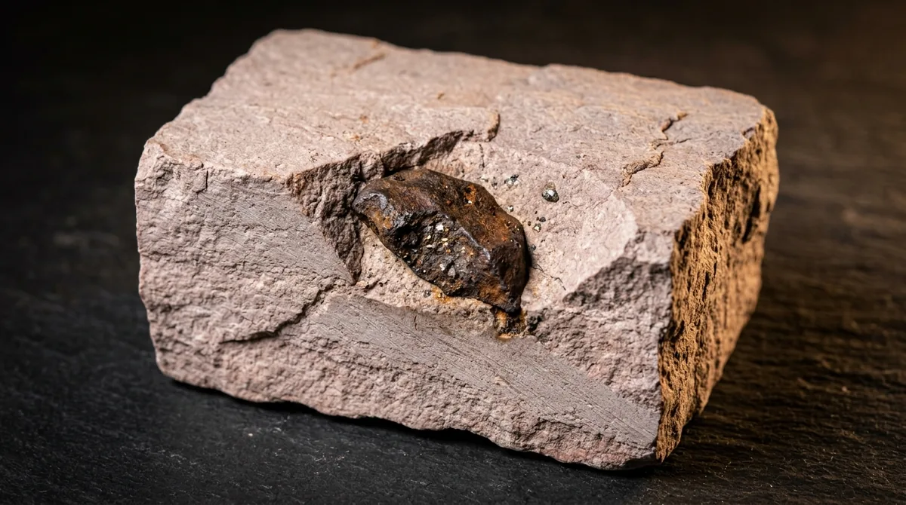
In 2017 Anders Lindskog and his colleagues dated a bed of volcanic ash, the Likhall bed, that lies inside the same limestone (Lindskog et al., Nature Communications, 2017). They measured the uranium–lead decay in nine crystals of zircon from the bed and got an age of 467.50 ± 0.28 million years. This replaced the older estimate of 480 million years used in 2004. Combining the zircon date with the meteorites’ times in space, they put the breakup of the asteroid at about 468.0 ± 0.3 million years ago.
The zircon date by itself does not depend on the meteorites at all, and it gives nearly the same rate at which the limestone built up as the meteorites do. From the meteorites’ times in space, Lindskog’s team calculated that the limestone built up at least 3.3 millimeters every thousand years, with a practical lower limit near 3.8 millimeters every thousand years. (The 3.8 figure matches the 2014 estimate of Matthias Meier and his colleagues in Geochimica et Cosmochimica Acta.) From their uranium–lead dates, the average comes to 3.1 millimeters every thousand years.
Radioactive decay plays no part in the neon-21. However fast decay ran, the pieces of the asteroid still had to travel from the asteroid belt to the Earth, gathering neon-21 on the way, and settle onto the sea floor in order. And if the beds had all been laid down in one year, the neon-21 would have no reason to rise from the lower beds to the higher ones.
The same clock reaches much further back. Grains in the Murchison meteorite that formed around stars which died before the Sun was born drifted in space for up to about three billion years before the Solar System formed (the Earth and the plants before the Sun).
Other natural processes give clocks of their own: crystals of gypsum that grow at a speed measured in the laboratory, the cold of the last ice age still moving through the Greenland ice, nickel atoms that spread through the metal of meteorites as it cooled, nitrogen atoms that gather in diamonds, and amino acids that slowly flip in shells. So does a clock in our own cells: the pieces of Neanderthal DNA that living people carry grow shorter in every generation, and geneticists who have checked this clock against radiocarbon dates of ancient bones put the mixing that brought them in about 47,000 years ago.
Gypsum crystals at Naica
The cave of Naica, in Mexico, holds crystals of gypsum, a mineral that forms from water, up to about eleven meters long. In 2011 Alexander Van Driessche, Juan Manuel García-Ruiz and their colleagues, a team of Spanish and Japanese scientists, built a microscope sensitive enough to measure extremely slow growth. They grew gypsum in the laboratory from the cave’s water and measured how fast it grew at different temperatures. At 55 degrees Celsius, a crystal face grew a little under half a millimeter every thousand years, give or take about 15 percent. This was the slowest growth ever measured for any crystal. At that temperature, a crystal one meter across would need about 990,000 years to grow (Proceedings of the National Academy of Sciences, 2011).
The weak point of this clock is the temperature, because the growth speeds up steeply as the water warms (at 50 degrees nothing grew at all). Radioactive dating gives a second measure. Laura Sanna, Paolo Forti and Stein-Erik Lauritzen dated gypsum from two other caves in the same mine by the decay of uranium into thorium. They found growth of 0.56 to 1.22 millimeters every thousand years, close to the speed measured in the laboratory (Acta Carsologica, 2011). Even at the fastest of these speeds, a crystal face that has grown half a meter outward took about 400,000 years.
Heat in the Greenland ice
The Greenland ice sheet still holds the cold of the last ice age deep inside it, because heat moves slowly through ice. In 1998 Dorthe Dahl-Jensen of the University of Copenhagen and her colleagues used temperatures measured all the way down a hole three kilometers deep, drilled by the Greenland Ice Core Project (GRIP). The temperatures were measured to within less than a tenth of a degree. They combined these temperatures with the physics of heat flow through ice and a model of how the ice moves, and kept the surface histories that would leave the temperatures found in the hole today. From the way the temperature changes with depth, they worked out the temperature at the surface over the last 50,000 years (Science, 1998).
The coldest part of the last ice age, about 25,000 years ago, was 23 degrees Celsius colder than today, give or take 2 degrees. The same calculation finds a warm period around the year 1000 and a cold one between about 1550 and 1850, at the times known from other Arctic records. Heat spreading through the ice smooths out older changes, so short swings of climate are lost, and nothing older than about 50,000 years can be made out. This history of 50,000 years uses neither a count of layers nor radioactive decay.
Nickel in meteorites and nitrogen in diamonds
Iron meteorites are pieces of the metal cores of asteroids, made of iron mixed with nickel. When this metal cools slowly from about 700 to about 450 degrees Celsius, the nickel moves through the solid metal and gathers into plates that cross each other. The plates can be seen when a slice of the meteorite is polished and etched with acid. Scientists measure the nickel point by point across a plate and compare it with the patterns calculated for different cooling rates. This gives a single meteorite’s cooling rate to within about 30 percent (Timothy McCoy and his colleagues, Geochimica et Cosmochimica Acta, 2011).
From how the nickel is spread across the plates, scientists calculate that the metal cooled by about 100 to 10,000 degrees per million years. At those rates the metal took between about 25,000 years and 2.5 million years to cool from 700 to 450 degrees. In 2007 the meteorite researchers Jijin Yang, Joseph Goldstein and Edward Scott measured cooling rates of 100 to 6,000 degrees per million years in one well-studied group of iron meteorites, called the IVA irons (Nature, 2007).
Diamonds hold a similar clock. Most natural diamonds contain small amounts of nitrogen. In synthetic diamonds, made in factories under heat and pressure, the nitrogen sits as single atoms scattered through the crystal. In most natural diamonds the nitrogen atoms have paired up, and many also hold clusters of four nitrogen atoms around a gap in the crystal. The atoms can gather this way only by moving slowly through the solid crystal. How fast they move depends heavily on temperature. Geologists estimate the temperature at which a diamond sat deep in the Earth from tiny minerals trapped inside it. Then they use the share of its nitrogen gathered into pairs and groups of four to set limits on how long the diamond stayed there. In 1990 W. R. Taylor, A. L. Jaques and M. Ridd worked out the speed of this change from heating experiments and from Australian diamonds whose history was known from other methods (American Mineralogist, 1990). This clock is rough: for one group of diamonds, an uncertainty of 30 degrees in the temperature left a time in the Earth anywhere from 50 million to 500 million years.
Amino acids in shells
The proteins of a living creature are built of amino acids, each of which can take a left-handed or a right-handed form, like a pair of gloves. Living things build their proteins from the left-handed form alone. After death, some of these molecules slowly flip into the right-handed form, so the share of right-handed ones in a shell or tooth grows with time. The flip runs faster in warm climates than in cold ones, so scientists need the history of local temperatures, and they usually compare their samples with sites already dated by other methods.
Water can also wash amino acids in and out of a shell. In 2008 Kirsty Penkman of the University of York and her colleagues used bleach to keep only the protein sealed inside the shell’s crystals. When they heated such shell in water at 140 degrees for a day, only one percent of this protein leaked out, against 40 percent from untreated shell (Quaternary Geochronology, 2008). In 2013 Penkman’s team published 480 samples of the small lids that close the shells of water snails, from 75 sites in Britain, matched to the warm periods between ice ages by sites dated in other ways (Quaternary Science Reviews, 2013). The method places a site in one warm period or another rather than giving a date with a narrow margin of error.
In 2025 Jarod Hutson, Olaf Jöris and a team that included Penkman measured these amino acids in snail lids found in the same layer as the wooden spears of Schöningen in Germany. Comparing them with snail lids from other sites across northern Europe, the team placed the spears at about 200,000 years ago (Science Advances, 2025; what people made before Adam).
5f Reefs, salt, buried carbon and craters
Some deposits are too large, or hold too many events one on top of another, to have formed quickly. A reef can grow only as fast as its corals build and the ground beneath it sinks, salt settles only as fast as sea water dries up, and a crater can be buried only after it has been made.
Coral reefs. An atoll is a ring of coral islands on a slowly sinking volcano, where the reef keeps building upward in shallow water. At Enewetak Atoll in the Pacific, drilling in 1952 reached the volcano 1,283 meters down, under limestone whose lowest layers hold corals that grow only in shallow water, from a period that ended about 34 million years ago (USGS Professional Paper 260-Y, 1960). So the volcano has sunk more than a kilometer while the reef built up on top of it. Reefs grow in spurts with long pauses, so the age of the stack is not its height divided by the speed of coral growth.
Enewetak and the Huon Peninsula
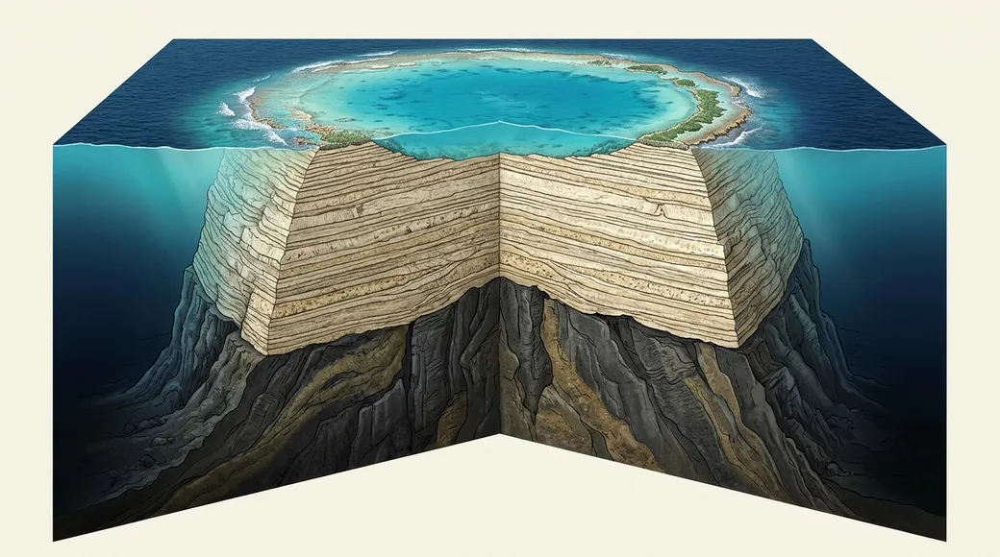
Enewetak Atoll. In 1842 Charles Darwin proposed that atolls sit on top of volcanoes that are slowly sinking. As the volcano sinks, the reef and the sediment around it keep building upward in shallow water, so the top stays near the surface of the sea. In 1952 Harry Ladd, S. O. Schlanger and their colleagues at the United States Geological Survey drilled two deep holes on Enewetak Atoll, in the Pacific (Ladd and Schlanger, USGS Professional Paper 260-Y, 1960). In the hole called E-1, the drill brought up fresh chips of basalt, a volcanic rock, at 4,158 feet, and a solid core of basalt from 4,208 to 4,222 feet. The top of the solid volcanic rock is 1,283 meters below the surface. The other hole, F-1, struck hard rock at 4,610 feet (about 1,405 meters), but the original report has no sample of that rock. More than 1.28 kilometers of limestone and limy sediment built up on top of the sinking volcano.
Ladd and Schlanger found that the stack under Enewetak is not one even pillar of solid coral. Below about 1,400 feet, the rock, the fossils and the cavities in the two holes were quite different, and much of the 1.28 kilometers is soft or only loosely cemented. But the limestone at the very bottom, just above the volcanic rock, holds reef corals that do not flourish deeper than about 150 feet (about 45 meters). The fossils at the bottom are of sea creatures that lived in shallow water in the Eocene, a period that geologists date as ending about 34 million years ago. (Some corals do build reefs in dark water. Lophelia, for one, grows as deep as 650 meters in the Gulf of Mexico and feeds on what it catches. The corals at the bottom of Enewetak are not of that kind.) So the top of the volcano was near the surface of the sea when those corals grew. Since then it has sunk more than a kilometer, over millions of years, while new layers of reef built up on top of it.
Later, cores were drilled into the shallow lagoon of Enewetak. Thomas Cronin and his colleagues studied the tiny fossils in these cores and the breaks between their layers (Cronin et al., USGS, 1991). Some layers formed on a shallow reef open to the ocean, and others in a brackish lagoon. Between them are pauses in which no sediment was laid down. Layers like these, on top of more than a kilometer of limestone that began in shallow water, build up only as the island sinks again and again and the level of the sea shifts, over long stretches of time. One quick burst of sediment does not build them. (These shallow cores sample only parts of the atoll, not every layer of the deep hole. And the age of the stack cannot be worked out by dividing 1,283 meters by the fastest speed at which coral grows, because a single branch of coral, the surface of a reef and the sediment that piles up around it all grow at different speeds.)
The raised reefs of the Huon Peninsula. On the northeastern coast of New Guinea the land is rising, while at Enewetak the sea floor sank. On the Huon Peninsula each coral reef grew at sea level and was then lifted out of the water, so the old reefs climb the slopes like a flight of stairs. Geologists have dated corals from these reefs by the decay of uranium into thorium. In 1974 Arthur Bloom, Wallace Broecker, John Chappell and their colleagues reported more than twenty reefs on the slopes, the oldest well over 250,000 years old. They dated the seven lowest reefs. The lowest grew between about 9,000 and 5,000 years ago. Each of the others grew at a time when the sea stood high, and long stretches when the sea stood lower separate them. Each reef took only a few thousand years to build its crest (Quaternary Research, 1974). The more than twenty reefs stacked up the hillside took many rises and falls of the sea, over hundreds of thousands of years.
In 1988 an international team returned to the Huon Peninsula. From their samples, Mordechai Stein, Gerald Wasserburg and their colleagues dated twelve corals from a reef that geologists label VII, which grew in the last warm period between ice ages. On the simplest reading of their dates, the sea kept rising the whole time that reef grew, from about 134,000 to about 118,000 years ago (Geochimica et Cosmochimica Acta, 1993).
Salt. Gypsum and rock salt settle out of sea water when the water dries away. Under the floor of the Mediterranean geologists find more than a million cubic kilometers of them. In the deep middle of the Mediterranean the rock salt is about 2.5 kilometers thick, and in the Levant Basin, off the coast of Eretz Yisrael and Lebanon, the salt and gypsum are more than a kilometer thick. Geologists count 16 or 17 layers in the lowest gypsum, each of them laid down in one turn of the wobble of the Earth’s axis, and they date the whole episode to between 5.97 and 5.33 million years ago, a span of 640,000 years.
The salt under the Mediterranean
How a drying sea leaves salt. Deep under the floor of the Mediterranean Sea lies a huge deposit of salt. When sea water evaporates, the salts dissolved in it settle out, first gypsum and then rock salt. Geologists hold that a layer of salt this large forms only when a raised barrier on the sea floor limits the flow of water between a sea and the open ocean, so that the sea water that does come in evaporates. About six million years ago, movements of the Earth’s crust narrowed the passages between the Mediterranean and the Atlantic in this way.
The drilling of 1970. In 1970 the research ship Glomar Challenger drilled into the floor of the Mediterranean and brought up thick layers of gypsum and rock salt. In one core, a layer of silt and sand lying between layers of salt had cracked as it dried. In 1973 the geologists Kenneth Hsü, William Ryan and Maria Bianca Cita argued in Nature that about six million years ago the Mediterranean had dried out into a deep, empty basin. On their reading, the mud cracked in the open air, on a dry sea floor, and not under water.
Geologists still disagree about how far the level of the sea fell, but they agree that the salt came from sea water that evaporated. In 2024 the geochemist Giovanni Aloisi and a European team measured the forms of chlorine (isotopes, which differ slightly in weight) in salt from cores drilled into the Mediterranean floor. They found that the sea dried in two stages. First the eastern basin was full of brine, which laid down thick rock salt. Then the level of the water dropped sharply (Nature Communications, 2024). The chlorine, too, came from sea water that evaporated, and not from a deposit left by a flood.
The buried canyon of the Nile. When the level of a sea drops, the rivers that flow into it cut deeper channels down to the new shoreline. While the Mediterranean was low, the Nile cut a deep canyon. Geologists have mapped it from wells drilled in the Nile delta and from seismic surveys, which send sound waves into the ground and record the echoes from buried layers of rock. Near today’s coast the floor of the canyon lies about 3,000 meters under the flat plain of the delta. Farther south, near Cairo, it lies about 1,500 meters down, and the walls of the canyon rise almost to the surface. When the Mediterranean filled again, mud and sand filled the canyon to the top.
In 2022 Zohar Gvirtzman, Daniel Garcia-Castellanos, Yehouda Enzel and their colleagues worked out how deep the canyon was before it filled. They allowed for the way the weight of the later layers pressed the Earth’s crust down. They concluded that the Nile then flowed into a sea about 600 meters below today’s sea level. Earlier geologists, working from the same canyon, had estimated a drop two to four times larger. Even the new figure means that the Mediterranean fell about five times as far as the oceans fell in the ice ages (Communications Earth & Environment, 2022). Geologists date the layers that fill the canyon to the 5.3 million years since the sea came back. The Nile cut its gorge, and the gorge slowly filled in again, millions of years before the Torah’s date for Creation.
The size of the deposit and its age. In 2009 William Ryan estimated the deposit at more than a million cubic kilometers. A 2020 study calculated that to leave this much salt in the deep basins, seven to eight times as much salt water as the Mediterranean holds today had to flow in from the Atlantic and evaporate. In a 2024 review, Wout Krijgsman and his colleagues dated the drying to between 5.97 and 5.33 million years ago. In the lowest beds of gypsum the layers follow the regular wobble of the Earth’s axis (the cycles of the Earth’s orbit), and the gypsum formed in the dry part of each turn of the wobble. So the salt built up over hundreds of thousands of years of these shifts in climate, not in one quick event.
The Mabul could not have left this salt. Salt settles out of sea water that evaporates in a closed basin, and moving flood water dissolves salt instead.
Buried carbon. The rocks of the Earth’s crust hold about 27,000 times as much carbon from once-living things as all the plants, animals and bacteria alive today, and coal alone holds more than six times as much. If all the plants and algae of the world had buried every bit of the carbon they took from the air, every year from the Third Day to the Mabul, it would come to about one percent of the carbon in the rocks.
The carbon in rock
Where the carbon in rock comes from. Plants and algae take carbon from the air to build their bodies. When they die, most of that carbon goes back into the air as they decay. A small part is buried in mud before it can decay, and it stays trapped when the mud hardens into rock. Coal is buried plant matter. But most buried carbon is kerogen, a dark, solid material made from living things and locked inside rock that formed from mud.
How much carbon there is. In 2018 Yinon Bar-On, Rob Phillips and Ron Milo added up the carbon held in every group of living things on Earth. They found a total of about 550 billion tonnes, of which plants hold about 450 billion tonnes (Proceedings of the National Academy of Sciences). Earlier, in 2000, Paul Falkowski and his colleagues gathered the estimates of the carbon buried in the Earth. They found about 15,000,000 billion tonnes (15 quadrillion tonnes) of carbon in kerogen in sedimentary rock, and about 3,510 billion tonnes in coal (Science). That is about 27,000 times as much carbon from once-living things as all the living things on Earth hold today.
How fast living things take in carbon. In 1998 Christopher Field, Michael Behrenfeld, James Randerson and Paul Falkowski calculated how much carbon the plants on land and the algae in the sea take from the air each year, beyond what they use up themselves. They found a total of about 105 billion tonnes a year, a little more than half of it on land (Science).
The usual answer is that coal and oil are the remains of the plants and animals that lived before the Mabul and were buried in it. But plants and algae can take only so much carbon out of the air in a year. Between the Third Day and the Mabul there were 1,656 years. Suppose the plants and algae of those years grew as fast as today’s, and every bit of the carbon they took in was buried without decaying. The total would still be only about 174,000 billion tonnes. That is a little more than one percent of the carbon locked in the Earth’s rocks.
To bury all of that carbon before the Mabul, the plants and algae of the world would have had to grow about 86 times as fast as all the plants and algae on Earth today, with none of it rotting, burning or being eaten. Even over all 5,787 years since the Third Day, the same calculation gives only about four percent of the carbon in the Earth’s rocks. Plants and algae cannot take anything near 15 quadrillion tonnes of carbon out of the air in a few thousand years.
Craters. Chicxulub, a crater about 180 kilometers wide under the Yucatán peninsula in Mexico, was made by an asteroid. Drill cores from inside it hold the same iridium-rich dust from space that lies in a thin layer all over the world at the end of the age of the dinosaurs (Goderis et al., Science Advances, 2021). The glass that the impact melted dates to 66 million years ago, and about a kilometer of rock built up in the sea on top of the crater afterward.
Chicxulub and other craters
From time to time a large asteroid strikes the Earth and blasts out a crater. The Earth Impact Database, kept at the University of New Brunswick in Canada, lists 190 confirmed impact craters. Some of them are more than a hundred kilometers across.
The best-known impact crater, Chicxulub, lies buried under the northern Yucatán peninsula in Mexico. Glen Penfield and Antonio Camargo, two geophysicists working for the Mexican oil company, found it in 1978 while they were searching for oil. The crater is about 180 kilometers across and lies under about a kilometer of younger rock. Scientists estimate that the impact threw enough dust, soot and ash into the air to darken the sky over the whole world for years. It also melted rock into tiny beads of glass and threw them as far as Haiti. Geologists have dated the glass beads by radioactive decay to 66 million years ago.
The impact also spread a thin layer of dust over the whole planet. The layer is rich in iridium and ruthenium, two metals that are rare in the Earth’s crust. (How geologists discovered this layer is told under the missing layer of flood mud.) In 2024 Mario Fischer-Gödde of the University of Cologne and his colleagues measured the different forms of ruthenium in the dust layer at three sites. The mixture of forms is different from the mixture in the Earth’s rocks, and it is the same as in carbonaceous meteorites, a carbon-rich kind of stony meteorite (Science, 2024). So the dust layer holds material from the asteroid itself.
The layer of debris is thick near the crater and thin far from it. In 1999 the Dutch geologist Jan Smit reviewed the places where it had been found (Annual Review of Earth and Planetary Sciences, 1999):
- The closest places on land where it comes to the surface are in northern Belize and southern Yucatán, about 340 kilometers from the center of the crater. There a bed of small round lumps of stone, about a meter thick, lies right on the older rock. Over it lies a jumble of rubble with blocks of dolomite, a stone like limestone, up to ten meters across. Some of these blocks hold the same fossils as the dolomite under the bed. So the dolomite was already solid rock with fossils in it when the impact tore the blocks loose.
- Around the Gulf of Mexico, up to 2,500 kilometers from the crater, the debris forms beds up to nine meters thick. Huge sea waves set off by the impact laid down part of them.
- Between about 2,000 and 4,000 kilometers from the crater, in old coal swamps of western North America, the debris forms a pair of thin bands of clay, half a centimeter to two centimeters thick.
- At 7,000 kilometers and more, from Spain to New Zealand, the debris thins to a reddish layer only two or three millimeters thick. Smit took it to be fine dust that settled out of the air.
(The layer has been pressed and disturbed differently in different places, so Smit cautions that its thickness does not shrink evenly with distance.)
All over the world this layer lies at the top of the rock from the age of the dinosaurs. The rock under the layer, with its fossils, had already formed before the impact, and the rock above it was laid down afterward. Near the crater the kilometer of younger rock lies over the layer. That kilometer of rock built up in the sea on top of the crater after the dinosaurs were gone.
Other craters are buried under younger rock too. Under the mouth of Chesapeake Bay, on the east coast of the United States, lies a crater about 85 kilometers across. C. Wylie Poag of the United States Geological Survey and his colleagues identified it in the 1990s. It lies 300 to 500 meters down, under layers of mud and sand laid down in the sea. Geologists date the crater to about 35.5 million years ago, and they conclude that the layers above it built up over the 35 million years since. Those hundreds of meters of sediment were laid down slowly after the impact, not in the single year of a flood.
5g Gravity and orbits
Some clocks run on gravity, and their rate comes from the laws of physics. If astronomers know where a body is today and how fast it is moving, the law of gravity tells them where it was at any earlier time, the way a film of scattering billiard balls, run backward, brings them back to the point where they collided. Some of these motions also leave marks on the Earth, such as growth lines in corals and layers of mud, which geologists can count and compare with the calculation. The methods reach from a few million years to about four billion.
The Earth’s slowing spin. The Moon’s gravity raises a bulge in the oceans on each side of the Earth. The Earth spins faster than the Moon goes around it, so it carries the bulges slightly ahead of the Moon. The water dragging against the sea floor brakes the Earth’s spin, and the day grows slowly longer. At the same time the nearer bulge pulls the Moon forward, so the Moon slowly moves away. The length of the year does not change, so in the past a year held more days, and each day was shorter. Astronomers measure the slowing from the same records of ancient eclipses that fix the dates of kings. A total eclipse of the Sun can be seen only along a narrow strip of the Earth’s surface. If the Earth had always spun at today’s speed, the calculated paths of the eclipses recorded since 720 BCE would miss the cities where people actually saw them. The paths pass over those cities only if the Earth was spinning slightly faster then. From these shifts Stephenson, Morrison and Hohenkerk found that the day grows longer by about 1.8 thousandths of a second each century. At that rate the day has grown by only about a tenth of a second in 5,787 years.
In 1963 John Wells, a Cornell University professor who studied corals, counted the days in ancient years. A living coral adds one fine growth line to its skeleton each day, grouped in yearly bands. Wells counted about 360 lines a year in a living coral, close to the true 365. In fossil corals from the Devonian, which radioactive dating places about 385 million years ago, he found “usually about 400” days in a year (Nature, 1963; Paleontological Research Institution, 2023). A year of 400 days means a day about two hours shorter than today’s. At the rate measured from eclipses, the day takes about 400 million years to grow two hours longer, so the corals agree with the radioactive age of their rock. A coral that grew at any time in the last 5,787 years, before the Mabul or after it, would have about 365 lines in a year.
Tidal mud gives the same count further back. In sheltered coastal waters the tides lay down thin layers of silt and sand that thicken and thin with the cycles of the tides. George Williams of the University of Adelaide counted such layers in the Elatina Formation of South Australia, laid down about 620 million years ago. He found about 13.1 months and 400 days to the year, a day of about 21.9 hours (Reviews of Geophysics, 2000).
The Moon’s retreat
The Moon’s retreat is measured today. Observatories fire laser pulses at reflectors left on the Moon by the Apollo 11, 14 and 15 astronauts and by two Soviet robot rovers, and time the light’s return, which gives the distance to within a few millimeters. The Moon is moving away by about 3.8 centimeters a year (NASA, 2020). This rate cannot simply be run backward. Williams pointed out that at today’s rate the Moon would have been close to the Earth about 1.5 billion years ago, with tides strong enough to melt the Earth’s mantle, and geologists find no sign of that. The tidal layers give an average retreat over the last 620 million years of about 2.2 centimeters a year (Reviews of Geophysics, 2000). So the braking has changed over time, and the corals and tidal layers matter because they give the length of past days without assuming a steady rate.
The cycles of the Earth’s orbit. The tilt of the Earth’s axis grows and shrinks in a cycle of about 41,000 years. The axis also wobbles like a spinning top, because the Sun and the Moon pull on the bulge at the Earth’s equator. Together with a slow turning of the orbit itself, the wobble moves the seasons around the Earth’s path in about 23,000 years. The pull of Jupiter and Saturn stretches the orbit from nearly round to slightly oval and back in about 100,000 years (NASA, 2020). A longer cycle, of 405,000 years, comes from the pull of Venus and Jupiter. Astronomers calculate these periods from the masses and orbits of the planets for about the last 50 million years. Beyond that the orbits are chaotic, i.e., a tiny change in the starting point leads to a large change later, but the 405,000-year cycle stays steady far longer (Astronomy & Astrophysics, 2011).
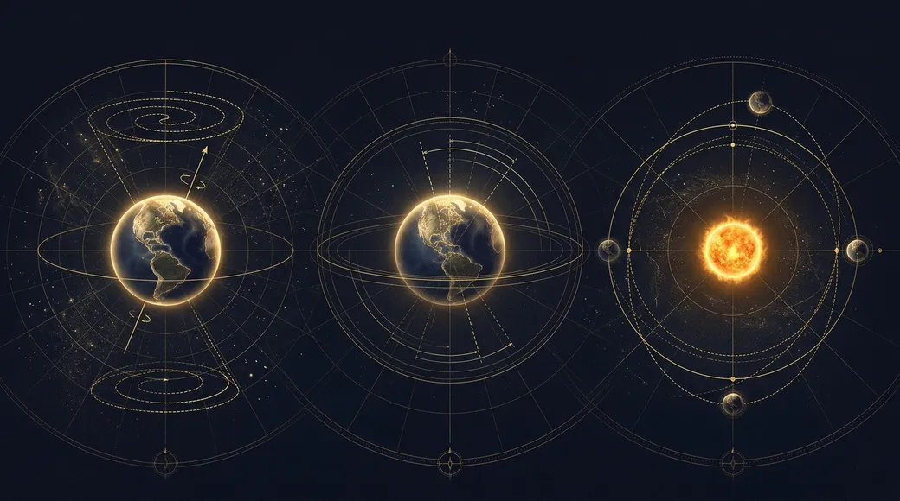
The cycles change how much sunlight reaches each part of the Earth in each season, so they make the ice sheets grow and melt. The shells of tiny sea creatures called foraminifera, which pile up layer by layer on the ocean floor, take up more heavy oxygen when more water is locked in ice. In 1976 James Hays, John Imbrie and Nicholas Shackleton measured this oxygen down two cores of mud from the southern Indian Ocean, covering 450,000 years. It rose and fell in cycles of about 23,000, 42,000 and 100,000 years, the periods astronomers calculate for the Earth’s axis and orbit (Science, 1976). Scientists have since followed the cycles through 5.3 million years of ocean mud, 800,000 years of Antarctic ice and the windblown dust of China.
The orbital cycles in other records
A corrected date. In 1979 Edward Mankinen and Brent Dalrymple of the United States Geological Survey used the decay of potassium in ancient lavas to date the last reversal of the Earth’s magnetic field to 730,000 years ago. In 1990 Nicholas Shackleton and two colleagues counted the Earth’s orbital cycles in a core of sediment from the eastern Pacific and placed the same reversal at 780,000 years ago. In 1992 a team of geologists dated lavas from Maui, in Hawaii, with a more precise method of argon dating and got 783,000 years, give or take 11,000. The newer radioactive date agreed with the count of orbital cycles, which had corrected the older one.
Ocean mud. In 2005 Lorraine Lisiecki and Maureen Raymo combined the oxygen records of 57 cores from ocean floors around the world into a single record of 5.3 million years. They traced the 41,000-year cycle of the tilt across the whole span, more than a hundred full cycles.
Antarctic ice. In 2004 the European Project for Ice Coring in Antarctica (EPICA) reported on a deep ice core drilled at Dome C, high on the East Antarctic ice sheet (Nature, 2004). The share of heavy hydrogen in snow depends on the temperature when the snow fell. By measuring it down the core, the team traced the climate of Antarctica back about 740,000 years. They found eight ice ages, each followed by a warm period, and later measurements carried the record of the same core back to about 800,000 years. These ice ages follow the same cycle of about 100,000 years that Hays, Imbrie and Shackleton found in the mud of the ocean floor.
In January 2025 a follow-up project called Beyond EPICA drilled through 2,800 meters of ice at nearby Little Dome C, down to the rock beneath. From its first measurements in the field, the team reported a record of the climate going back about 1.2 million years. The ice from 800,000 to 1.2 million years ago lies between 2,426 and 2,490 meters down, where radar soundings and models of the flow of the ice had predicted it would be. Near the bottom of that section, up to 13,000 years are pressed into a single meter of ice.
Individual yearly layers cannot be counted in such deep, compressed ice. Glaciologists date it in two ways: by modeling how the ice sheet flows, and by matching changes in the trapped air bubbles to the cycles of sunlight driven by the Earth’s orbit.
The dust of China. The Loess Plateau of northern China is built of loess, a fine dust carried by the wind. In the cold, dry ice ages, winds laid thick blankets of this dust across the plateau. In the warmer, wetter periods between them, plants grew on the surface and turned the top layer into soil, which the dust of the next cold period buried.
In the cliffs across the plateau, pale layers of dust and darker buried soils are stacked one above another. Geologists count more than thirty buried soils, each resting on its own layer of dust, in the deposits of the last 2.6 million years. In 2002 Ding Zhongli, Edward Derbyshire, Liu Tungsheng and their colleagues measured the size of the grains in 18,352 samples from five exposed sites on the plateau.
Ding’s team dated the layers by matching the changes in grain size to the cycles of the Earth’s tilt and wobble. Over the last 1.8 million years, the layers of dust and soil match the oxygen record of the ocean floor almost cycle for cycle (Paleoceanography, 2002).
In 2022 Zhang Junjie, Hao Qingzhen and Li Sheng-Hua dated the layers by a separate method, back to 350,000 years ago, at Luochuan, the best-known exposed site on the plateau. They used luminescence dating, which measures how long ago grains of sand and dust were last exposed to sunlight. They found that dust built up at Luochuan without a break through the last three ice ages and the warm periods between them. Their dates agree with the ages that earlier geologists had worked out from the orbital cycles (Geology, 2022).
The Allan Hills. In a few parts of Antarctica, strong winds strip away the snow on the surface and draw ancient ice up from deep below. In 2025 Sarah Shackleton and her colleagues, including Edward Brook and John Higgins, dated pieces of this ice from the Allan Hills in East Antarctica by measuring the air trapped inside it (Proceedings of the National Academy of Sciences).
The air slowly gains argon, a gas that rocks give off as their radioactive potassium decays, so ancient air holds slightly less argon than the air of today. From the argon in the trapped bubbles, the team dated the oldest piece of ice to about six million years ago. This ice is jumbled out of the order in which the snow fell, so it gives samples of ice and air from scattered periods rather than a continuous record. Even so, the air in these bubbles is millions of years old.
The 405,000-year cycle reaches much further back, in the beds of a lake that covered much of New Jersey between about 230 and 200 million years ago. Geologists had counted these beds against the cycle, but they hold no volcanic ash to date by radioactive decay. In 2018 Dennis Kent, Paul Olsen and their colleagues lined them up, by the flips of the Earth’s magnetic field preserved in both places, with a core from Petrified Forest National Park in Arizona that does hold ash dated by uranium. The uranium dates agreed with the count of cycles, and the team concluded that the cycle has kept its pace for at least 215 million years (PNAS, 2018).
The Earth–Mars cycle
The shape of the Earth’s orbit also changes in a cycle of about 2.4 million years, driven by the pull between the Earth and Mars as their orbits slowly turn. In 2024 Adriana Dutkiewicz, Slah Boulila and Dietmar Müller studied breaks in the mud of 293 cores from the ocean floor, places where mud stopped settling or currents along the bottom swept it away. Over the last 70 million years the breaks come back about every 2.4 million years (Nature Communications, 2024). The breaks are dated by the standard methods, so this cycle gives no date of its own, but the dated breaks fall in step with a cycle driven by gravity (see 3.2). Over longer spans the cycle drifts because of the chaos in the planets’ orbits. In 2019 Olsen, Jacques Laskar and their colleagues found that it lasted about 1.75 million years in the New Jersey lake beds, about 200 million years ago (PNAS, 2019). So geologists count time in old rocks with the steady 405,000-year cycle, and astronomers use the rocks to learn how the planets’ orbits have changed.
Asteroid families. Asteroids are the rocky bodies that circle the Sun, mostly between Mars and Jupiter. When one shatters, its pieces start out on nearly the same orbit. The pull of the planets then turns their orbits at slightly different speeds, so they fan out. In 2002 David Nesvorný and his colleagues at the Southwest Research Institute ran the orbits of thirteen asteroids of the Karin family backward. All thirteen lined up in the same direction 5.8 million years ago, give or take 200,000 years, when an asteroid about 25 kilometers wide broke apart (Nature, 2002). The chance of such a lineup by accident was less than one in a million.
The Yarkovsky effect
Sunlight slowly pushes small asteroids, and astronomers use this push to measure spans of billions of years. As an asteroid turns, the side the Sun has warmed gives off heat into space, and the escaping heat gives the rock a tiny push, called the Yarkovsky effect. The push slowly widens or narrows the orbit, and it moves small asteroids further than large ones. It has been measured on the asteroid Bennu, about half a kilometer wide, whose orbit it shifts by about 284 meters a year (Icarus, 2014). Picture a chart of the pieces of one break-up, with distance from the Sun along the bottom and size up the side (the smallest at the top). The pieces form a V, which grows wider with time. In 2017 Marco Delbo’ of the Côte d’Azur Observatory in Nice, with Kevin Walsh, Bryce Bolin, Chrysa Avdellidou and Alessandro Morbidelli, found the edges of such a V among the dark asteroids of the inner belt, belonging to a family no one had known of. From its slope they calculated that the parent asteroid broke up about four billion years ago. The uncertainty is large, from about 2.9 billion years ago back to the birth of the solar system (Science, 2017).
Stars traced back
Astronomers also run the paths of stars backward through the gravity of the Milky Way. Two bright stars, AE Aurigae and Mu Columbae, are speeding away from Orion in opposite directions. In 2000 Ronnie Hoogerwerf and his colleagues at Leiden Observatory took their positions and motions from the Hipparcos space telescope, measured to about a thousandth of a second of arc (a second of arc is a 3,600th of a degree). They traced the two stars backward together with Iota Orionis, a pair of stars orbiting each other. All three paths met about 2.5 million years ago in the young star cluster of the Orion Nebula, where two pairs of stars had passed close to each other and flung two of the stars outward (Astrophysical Journal Letters, 2000).
The stars that move through space with Beta Pictoris, within about 160 light-years of the Sun, are thought to have formed together. In 2024 Vadim Bobylev and Anisa Bajkova traced about 40 of them backward and found that they were closest together about 13.2 million years ago, give or take 1.4 million. From the rate at which the group is spreading today, they calculated that it began to spread about 20 million years ago, give or take 2 million (Astronomy Letters, 2024). Jinhee Lee and Inseok Song got about 16 million years and found that the answer moves by a few million years depending on how the stars’ measured speeds are corrected (arXiv, 2024). The estimates differ, and all come to millions of years.
The star S5-HVS1, reported by Sergey Koposov and his colleagues in 2019, is about 29,000 light-years away and moves at about 1,755 kilometers per second, faster than the speed needed to escape the Milky Way. Traced backward under the Milky Way’s gravity, its path leads to the giant black hole at the center of the galaxy, which flung it out about 4.8 million years ago. Its path and travel time match the tilt and the age of a disk of young stars that circles the black hole (Monthly Notices of the Royal Astronomical Society, 2020).
In 2022 a team led by Catherine Zucker used positions and motions from the European Space Agency’s Gaia satellite for young stars and gas clouds within about 650 light-years of the Sun. Nearly all the nearby regions where stars are forming lie on the surface of a huge bubble of gas, and the young stars are moving outward from its center. Tracing these motions backward, the team concluded that a series of exploding stars began to push the bubble outward about 14 million years ago (Nature, 2022). This calculation also uses the ages of the young stars, estimated from how far each has gone in burning its fuel.
Galaxies
A spiral in the disk of the Milky Way. In 2018 Teresa Antoja and her colleagues plotted the height of six million stars, measured by Gaia, above the disk of the galaxy against their up-and-down speeds. The plot formed a spiral like a snail shell. A spiral of this kind forms after something shakes the disk: the stars swing up and down at slightly different rates, and the pattern winds tighter with time. From how tightly it has wound, the team calculated that the disk was disturbed between 300 and 900 million years ago. The Sagittarius dwarf galaxy, a small neighbor of the Milky Way, last passed close to the disk within that span (Nature, 2018).
Galaxy collisions fitted with computer models. Some spans of time are estimated by fitting computer models of gravity to what astronomers see. These ages are less firm than the ones above, because they depend on how well a model matches a complicated collision. The Bullet Cluster is two clusters of galaxies that passed through each other. The hot gas of the smaller cluster drives a shock front shaped like the wave in front of a speeding bullet. The shock front moves at about 4,700 kilometers per second, but computer models by Volker Springel and Glennys Farrar put the speed of the smaller cluster itself at only about 2,600 kilometers per second (Monthly Notices of the Royal Astronomical Society, 2007). From the smaller cluster’s speed and shape, the astronomers who studied it with the Chandra X-ray telescope estimated that it passed through the core of the larger cluster about 150 million years ago (Chandra X-ray Center, 2002).
The Cartwheel Galaxy, about 500 million light-years away, has a ring of young stars around its edge. Astronomers explain the ring as a wave that spread outward after a smaller galaxy plunged through its middle. Estimates of the date of that collision have varied. In 1996 the Hubble team put it about 200 million years ago (ESA/Hubble, 1996). In 2022, releasing the Webb telescope’s picture, NASA said that the outer ring has been spreading for about 440 million years (NASA, 2022).
The Milky Way has pulled a long stream of stars out of the Sagittarius dwarf galaxy, and the stream wraps all the way around the Milky Way. In a computer model built by David Law and Steven Majewski, the Milky Way pulled these stars out within the last three billion years (Astrophysical Journal, 2010).
Some other galaxies are ringed by shells of stars, the remains of a smaller galaxy that fell straight in. Ivana Ebrová, Michal Bílek and two colleagues measured the shells around the galaxy NGC 4993 in a Hubble image. They estimated that it swallowed a smaller galaxy at least 200 million years ago, most likely about 400 million (Astronomy & Astrophysics, 2020). NGC 4993 is the galaxy in which two dead stars collided and sent out ripples in space that reached Earth in 2017 (ripples in space).
5h The travel time of light
Light crosses empty space at a fixed speed, about 300,000 kilometers a second. In 1972 a team at the U.S. National Bureau of Standards measured the frequency and the wavelength of a laser beam and cut the uncertainty in the speed of light about a hundredfold (NIST Special Publication 958). In 1983 the international conference that sets the units of measurement fixed the speed of light at exactly 299,792,458 meters a second, and defined the meter by it (General Conference on Weights and Measures, 1983).
Nothing travels faster than light, so a great distance sets a minimum time. (A light-year is the distance that light travels in a year.) When astronomers find that a galaxy is a million light-years away, they know that the light now reaching their telescopes left it a million years ago. So the galaxy, and whatever astronomers see happening there, existed at least that long ago. This clock needs no calibration against other dates: its rate is the speed of light, and the only thing to measure is the distance. It reaches from a few years for the nearest stars to billions of years for the most distant galaxies. (Whether light once traveled faster is taken up below.)
The most trusted distances come from geometry. Astronomers find the true size of something and compare it with the angle that it covers on the sky, as a surveyor does, with no assumption about how bright a star is or about what happened in the past.
Parallax. As the Earth moves around the Sun, a nearby star seems to shift slightly against the more distant stars behind it. The angle of that shift, called the parallax, gives the star’s distance from the known size of the Earth’s orbit. The European Space Agency’s Gaia satellite measured the parallaxes of about 1.46 billion objects in the sky, published in its third catalog in June 2022. For bright stars Gaia measured the parallax to within about 0.02 to 0.03 milliarcseconds, i.e., less than a hundred-millionth of a degree (ESA, 2022). That gives the distance of a bright star 3,300 light-years away to within two or three percent. Other galaxies are too far for parallax and need other kinds of geometry.
Supernova 1987A. In 1987 two astronomers at Las Campanas Observatory in Chile, Ian Shelton and Oscar Duhalde, saw a star explode in the Large Magellanic Cloud, a small galaxy beside the Milky Way. The flash lit up a ring of gas around the star. Light from the far side of the ring had farther to travel to the Earth than light from the near side, so astronomers saw the far side light up later, and that delay, multiplied by the speed of light, gives the ring’s true size. Nino Panagia of the Space Telescope Science Institute compared this size with the ring’s width in Hubble Space Telescope images and got a distance of about 51 kiloparsecs, or 166,000 to 168,000 light-years, give or take about two percent, without using redshift (the stretching of light from galaxies that move away) or assuming how bright any star is (IAU Colloquium 192, 2005). A burst of neutrinos, tiny particles that a star gives off when its core collapses, reached detectors deep underground in Japan, the United States and Russia a few hours before the light.

Geometry also reaches other galaxies. Radio astronomers have measured the distance of the galaxy NGC 4258, about 24.7 million light-years, from water clouds circling its central black hole, and pairs of stars that eclipse each other put the Andromeda galaxy about 2.4 million light-years away.
The speed of light also sets a minimum age for huge structures thrown out by black holes. In 2024 the astronomer Martijn Oei of the California Institute of Technology and his colleagues used LOFAR, a European network of radio telescopes, to find Porphyrion, a pair of jets blasted out in opposite directions from one black hole. From end to end the two jets span about 23 million light-years (Nature, 2024). Since nothing moves faster than light, the far tip of each jet needed at least 11 million years to get where it is. Using the Keck Observatory in Hawaii, the team found that the light from Porphyrion has been traveling for about 7.5 billion years (Caltech, 2024).
Distances to other galaxies
Clouds of water circling a black hole. In the spiral galaxy NGC 4258, a thin disk of gas circles a black hole of about 40 million times the mass of the Sun, a body so dense that not even light can escape its pull. Water molecules in the disk give off narrow beams of microwaves called masers. Over about 25 years astronomers used radio interferometers (radio telescopes linked to work as one) to map these glowing spots on the sky. They measured how fast the spots orbit from the Doppler shift of their microwaves (the change in wavelength caused by motion toward or away from us), and how fast those speeds change, which gives the spots’ acceleration (Herrnstein et al., 1999).
For gas moving in a circle, its speed and its acceleration give the true radius of the circle (the radius is the speed squared divided by the acceleration). Astronomers also adjust for the tilt and the warping of the disk and for the positions of the individual spots. Comparing the true size of the disk with how wide it looks in radio images gives its distance by plain geometry. In 2019 Mark Reid of the Center for Astrophysics at Harvard and the Smithsonian, with Dominic Pesce and Adam Riess, combined these measurements and got a distance of 7.576 megaparsecs, or about 24.7 million light-years, give or take about one and a half percent (Astrophysical Journal Letters, 2019). In 2026 Daniella van der Boom and Doron Kushnir reanalyzed the data with different choices of spots and different assumptions in the model, and got distances from about 6.7 to 8.1 megaparsecs, about 22 to 26 million light-years (van der Boom & Kushnir, Monthly Notices of the Royal Astronomical Society, 2026). Even at the bottom of that range, the light of NGC 4258 has been traveling for tens of millions of years.
Pairs of stars that eclipse each other. Some pairs of stars orbit edge-on as seen from the Earth, so that each passes in front of the other. The timing of the eclipses and the speeds of the stars give each star’s true size. Its color and how bright it looks give the size it appears to be, using a rule linking color to surface brightness that must be calibrated. The true size and the apparent size give the distance. In 2019 Grzegorz Pietrzyński of the Nicolaus Copernicus Astronomical Center in Warsaw and his colleagues calibrated it on 41 nearby giant stars, whose apparent sizes they measured with the Very Large Telescope Interferometer. They then measured 20 eclipsing pairs in the Large Magellanic Cloud and put it about 162,000 light-years away, give or take about one percent (Nature, 2019). This agrees with the ring around Supernova 1987A to within about four percent, although the two methods share no measurements.
The same method reaches the Andromeda galaxy, the nearest large spiral galaxy. Ignasi Ribas, Francesc Vilardell and their colleagues measured two pairs of stars there and put Andromeda about 2.4 million light-years away, give or take about four percent (Astronomy & Astrophysics, 2010).
Each geometric method depends on a model or a calibration, and a model can be wrong. The reanalysis of NGC 4258 shows how much a model’s choices can move a distance. Astronomers catch such errors by measuring the same distance in independent ways, as with the Large Magellanic Cloud. Even an error of twenty percent leaves a distance of millions of light-years.
Gravitational waves
Two black holes. On 14 September 2015 the two gravitational-wave detectors of LIGO (the Laser Interferometer Gravitational-Wave Observatory) in the United States picked up ripples in space itself. The ripples came from two black holes, of about 36 and 29 times the mass of the Sun, spiraling together and merging (Physical Review Letters, 2016). From the frequency of the waves, physicists worked out the masses of the black holes, and from the masses, how strong the ripples were where they started. Comparing that strength with the faint ripple measured on Earth puts the merger roughly 1.4 billion light-years away, with a wide margin of uncertainty (GWTC-1 catalog, 2019). Ripples in space travel at the speed of light, so these had been traveling for more than a billion years. No light came with them.
Two neutron stars. On 17 August 2017 the LIGO and Virgo detectors recorded ripples from two neutron stars (the collapsed cores of dead stars) spiraling into each other about 130 million light-years away (GWTC-1 catalog, 2019). About 1.7 seconds after the ripples, NASA’s Fermi satellite and the European INTEGRAL satellite detected a burst of gamma rays, a form of light, from the same collision. From that delay the LIGO and Virgo teams worked out that ripples in space and light travel at the same speed to within a few parts in a thousand trillion (Astrophysical Journal Letters, 2017). In the weeks that followed, telescopes found the signs of newly made gold and platinum in the glow of the collision.
Gravitational lensing
Supernova Refsdal. A huge cluster of galaxies bends the light of a galaxy behind it, so that the light reaches the Earth along several paths, each making a separate image of the same galaxy. The paths have different lengths. So if a star explodes in that galaxy, astronomers see the explosion in one image first and in the others later, by delays that depend on how the cluster’s mass is spread out. On 10 November 2014 the Hubble Space Telescope photographed four images of one exploding star, about 9.3 billion light-years away, arranged in a cross around a galaxy of the cluster MACS J1149.5+2223 (NASA, 2015). Astronomers named it Supernova Refsdal, after Sjur Refsdal, the Norwegian astronomer who proposed in 1964 to use such delays to measure the expansion of the universe. Several teams had worked out how the mass of the cluster is spread out, and so how strongly its gravity bends light, by measuring how it distorts the images of other distant galaxies behind it. Almost all of their models predicted that light from the same explosion would arrive once more, along a longer path, within about a year, at a spot that the teams could mark in advance. In October 2015 Tommaso Treu and his colleagues published the predictions of seven of these models and wrote, “We will find out soon whether our predictions are correct.” On 11 December 2015 Hubble found it at the predicted spot (NASA, 2015). Patrick Kelly of the University of California, Berkeley, and his colleagues reported it as the first exploding star whose time and place had been predicted in advance (Astrophysical Journal Letters, 2016). In 2023 the team measured the delay: the new image arrived 376 days after the earlier ones, give or take about six days (Science, 2023). The delay agreed with the models that had predicted the brightness and the timing of the new image most closely.
A supernova seen by Webb. In 2023 the James Webb Space Telescope photographed such a background galaxy, billions of light-years away, in which a star had exploded. The explosion appeared in three separate places around the cluster. The three paths had different lengths, so the light along each path arrived at a different time. Justin Pierel and his colleagues measured the delays by following the changing brightness of the three images (Astrophysical Journal, 2024). The first image brightened about 117 days before the last, and the second about 49 days before the last.
Before these measurements were finished, astronomers had built seven separate models of the mass of the cluster. Only afterward did Massimo Pascale and his colleagues compare the measured delays with the delays those models predicted. Combining the delays with the models, they calculated how fast the universe is expanding, and got a figure that agrees with other measurements of the expansion (Astrophysical Journal, 2025).
The oldest light. The oldest light that astronomers detect is a faint glow of heat, in the form of microwaves, that fills the whole sky. Two scientists at Bell Telephone Laboratories in New Jersey, Arno Penzias and Robert Wilson, found it by accident in 1964, as a steady hiss in a radio antenna that they could not get rid of (physicists had predicted the glow in 1948). Satellites have since mapped the glow across the whole sky. Astronomers date this light from how far the glow has cooled and how fast the universe is expanding, not from the distance of any star, and get about 13.8 billion years.
Quasars
A quasar is the very bright center of a distant galaxy, and its brightness flickers from month to month. As light travels to the Earth across expanding space, its waves are stretched. The time between one flicker and the next is stretched in the same way, so events far away seem to run more slowly. In 2023 Geraint Lewis of the University of Sydney and Brendon Brewer of the University of Auckland studied 190 quasars that astronomers had watched for about twenty years. They looked at the most distant ones, whose light set out when the universe was just over a billion years old. These quasars flicker about five times more slowly than nearby quasars, as an expanding universe requires (Nature Astronomy, 2023). The age of 13.8 billion years is based partly on this expansion. Astronomers can see the expansion itself in the slow flickering of distant quasars, and do not have to work it out only from how bright distant objects look.
5i The ages of stars
A star is a ball of hot gas held together by its own gravity. It shines by fusing the hydrogen in its center into helium, and it slowly changes as the helium builds up. When that hydrogen runs out, a star like the Sun leaves a white dwarf that slowly cools. A much heavier star explodes, and its crushed core can become a spinning neutron star that slowly loses speed. The rates of these changes follow from the laws of physics and from nuclear reaction rates measured in laboratories, and astronomers compare the calculations with the Sun. The stellar clocks reach from about a thousand years to more than twelve billion years.
The weak point of these clocks is the computer models of stars. Some processes inside a star, such as how far the gas in its center is stirred, are hard to calculate, and they can shift an age by as much as a third. Astronomers catch such errors by reading two clocks in the same star or cluster that depend on different physics.
How long a star burns. A heavier star has more hydrogen, but it burns it much faster. Astronomers weighed stars that orbit each other in pairs and found that a star ten times heavier than the Sun shines about three thousand times brighter (University of Oregon). The Sun will burn the hydrogen in its center for about ten billion years, and a star forty times heavier uses up its central hydrogen in about a million years (Swinburne University).
Two kinds of measurement show that the Sun works the way the models say. In 2014 the Borexino team, working in an underground laboratory in Italy, caught the neutrinos made by the first step of hydrogen fusion in the Sun’s center. (Neutrinos are tiny particles that escape the Sun’s center without being stopped.) The team found that about 99 percent of the Sun’s power comes from this chain of fusion (Nature, 2014). The Sun’s vibrations let scientists measure the speed of sound throughout its inside. John Bahcall and his colleagues compared these speeds with a standard model of the Sun and found that they agreed to within 0.2 percent through almost the whole Sun (Physical Review Letters, 1997).
Star clusters. A star cluster is a group of stars born together from one cloud of gas, so all of its stars are the same age. Its heaviest stars run out of hydrogen in their centers first. Astronomers find the heaviest stars that are still burning hydrogen, and the time a star of that mass lasts is the age of the cluster.

Lithium in small stars. Young clusters hold a second clock in their smallest stars. A newborn small star is still shrinking under its own gravity, and its center grows hotter as it shrinks. When the center reaches about 2.5 to 3 million degrees, the star starts to destroy its lithium, a light metal it was born with. A small star is churned from center to surface, like a pot of boiling water, so the whole star then loses its lithium quickly. The smaller the star, the longer it takes to reach that temperature (Stauffer, Schultz & Kirkpatrick, Astrophysical Journal Letters, 1998). So in a young cluster the brighter small stars have lost their lithium and the fainter ones still have it, and the older the cluster, the fainter the stars at the boundary. Teams that model these stars agree on the age of a boundary to within about ten percent, because this clock depends only on how fast a small star shrinks (Soderblom and colleagues, 2014).
In 1998 John Stauffer and his colleagues used the Keck II telescope in Hawaii to look for lithium in faint members of the Pleiades, and from the boundary they dated the cluster to 125 million years. In 2015 an astronomer at the Keck Observatory measured the boundary again and revised the age to 112 million years, give or take five million (Astrophysical Journal, 2015). Models of the heaviest stars give the Pleiades about the same age, 80 to 120 million years. The light of the Pleiades takes only about 445 years to reach the Earth, so these are ages of the stars themselves, not of light on its way.
The Hyades and globular clusters
The Hyades. The Hyades is a star cluster in the constellation of the Bull, not far from the Pleiades. In 1998 Michael Perryman and his colleagues used distances measured by the Hipparcos satellite to find the heaviest stars of the Hyades that still burn hydrogen in their centers. They dated the cluster to 625 million years, give or take 50 million (Astronomy & Astrophysics, 1998). Later studies used the same method with models of spinning stars and got 750 million years, give or take 100 million (Timothy Brandt and Chelsea Huang, 2015), and about 680 million years (Seth Gossage and his colleagues, 2018).
In 2018 Eduardo Martín, Nicolas Lodieu and their colleagues used the ten-meter Gran Telescopio Canarias to look for lithium in six very faint members of the Hyades. They found lithium only in the two faintest and coolest, which are brown dwarfs, bodies too small to burn hydrogen as full stars do. From the boundary between the members that had lost their lithium and those that kept it, they dated the cluster to 650 million years, give or take 70 million (Astrophysical Journal, 2018). So the burning of its heaviest stars dates the Hyades to between 625 and 750 million years, and its lithium dates it to 650 million. Neither method uses radioactive decay.
The oldest clusters. Globular clusters are dense groups of up to a million stars that orbit the Milky Way. In 2003 Lawrence Krauss and Brian Chaboyer calculated from the ages of the oldest globular clusters that the universe is at least 11.2 billion years old.
White dwarfs. A burned-out star cools at a rate that physicists can calculate. A white dwarf holds about as much matter as the Sun in a ball the size of the Earth. It burns nothing, so it glows only with its stored heat and slowly grows cooler and dimmer. Sirius, the brightest star in the night sky, has a white dwarf beside it, called Sirius B. In 1844 the German astronomer Friedrich Bessel found that Sirius was slowly shifting its position in the sky, as if an unseen companion were pulling on it, and in 1862 the American telescope maker Alvan Graham Clark saw the companion while he was trying out a new telescope. Sirius is about 8.6 light-years away, so its light reaches us in less than nine years. In 2005 James Liebert and his colleagues at the University of Arizona worked out that Sirius B has been cooling for 124 million years, give or take ten million. From Sirius itself, which still burns hydrogen, they found that the pair is 225 to 250 million years old. The difference is how long Sirius B burned before it burned out, which fits a star of about five times the Sun’s mass (Astrophysical Journal Letters, 2005).
The faintest white dwarfs have been cooling the longest. In 1996 Terry Oswalt and his colleagues made a deep survey of faint white dwarfs in the part of the Milky Way near the Sun. From the faintest of them, they found that the stars in this part of the galaxy are at least 9.5 billion years old. In 2002 Brad Hansen and his colleagues used 123 orbits of the Hubble Space Telescope to find the faintest white dwarfs in M4, an old cluster of stars. They found that these white dwarfs have been cooling for about 12.7 billion years (Astrophysical Journal Letters, 2002). A fuller study by the same group, allowing for errors in the cluster’s distance, gave 12.1 billion years (2004).
Freezing white dwarfs
Physicists predicted that as a white dwarf cools, its core eventually freezes solid and gives off heat as it freezes, which holds up its cooling by about a billion years. In 2019 Pier-Emmanuel Tremblay of the University of Warwick and his colleagues used distances measured by the Gaia satellite to study the white dwarfs within about 330 light-years of the Sun. They found a pile-up of white dwarfs at the colors and brightness where the models place the freezing, because the stars linger there while their cores freeze (Nature, 2019). So the physicists’ calculation of how these stars cool agrees with what astronomers see in the stars near us. Models that left out the freezing made some white dwarfs look up to two billion years younger than they are (ESA, 2019).
Starquakes. A star rings like a bell, and its tones change as it ages. Gas boiling beneath its surface sets off sound waves that travel through the inside of the star and make its surface rise and fall in many rhythms at once. Their study is called asteroseismology. The speed of sound in a gas depends on what the gas is made of, so as the center turns hydrogen into helium, the waves that pass through it ring a little differently. Astronomers find the age at which a model of the star rings with the measured rhythms.
The Sun’s surface rises and falls in cycles of about five minutes. Researchers at the University of Birmingham began recording these vibrations in 1975 at an observatory on Tenerife, and since 1992 they have followed them through a network of six stations around the world, the Birmingham Solar Oscillations Network. In 2015 Alfio Bonanno, of the Astrophysical Observatory of Catania in Italy, and Hans-Erich Fröhlich, of the Leibniz Institute for Astrophysics in Potsdam, analyzed 8,640 days of these measurements. They found an age of 4.587 or 4.569 billion years, depending on which laboratory values for the nuclear reaction rates they used (Astronomy & Astrophysics, 2015). The second figure is within two million years of the age of the oldest grains in meteorites, which laboratories date by radioactive atoms. So astronomers date the Sun to about 4.6 billion years from its inner vibrations, without using radioactive atoms.
The Sun’s brightness
The Sun has grown steadily brighter since it began burning. The Sun’s brightness agrees with the age from its vibrations. As the Sun turns hydrogen into helium, its center slowly shrinks and grows hotter. This speeds up the burning and makes the Sun brighter over time. In 1958 the astronomers Martin Schwarzschild and Fred Hoyle calculated that about 4.5 billion years ago the newborn Sun gave off only about 70 percent of the light it gives off today. In 1981 the astrophysicist Douglas Gough worked out the standard formula for how the brightness of a star of the Sun’s mass rises over the years in which it burns hydrogen.
In 2011 Günter Houdek and Douglas Gough analyzed the sound waves inside the Sun, using the measurements of the Birmingham network. They calculated that the Sun has been burning hydrogen for 4.60 billion years, give or take 0.04 billion (Monthly Notices of the Royal Astronomical Society), which matches its present brightness.
Both the Sun’s vibrations and its brightness depend on how much of the hydrogen in its center has already turned into helium.
Nu Indi
The star Nu Indi (ν Indi), in the southern sky, is bright enough to be seen with the naked eye. NASA’s TESS satellite, which follows the brightness of stars from moment to moment, watched Nu Indi for just over 27 days. Its brightness rises and falls in many rhythms at once, as sound waves ring through its inside, just as they do in the Sun. In 2020 William Chaplin and his colleagues combined these rhythms with measurements of the star’s chemistry, its distance and its motion through the Milky Way. They found that Nu Indi is about 11.0 billion years old, give or take about a billion years (Nature Astronomy, 2020).
From Nu Indi’s chemistry and motion, Chaplin and his colleagues found that the star formed inside the Milky Way itself. In its present orbit they found signs that it had been disturbed when a smaller galaxy, Gaia-Enceladus, collided with the Milky Way, so the collision happened after Nu Indi was born. Using the star’s age, the team calculated that the collision could not have begun earlier than 11.6 billion years ago, or 13.2 billion years ago with a wider margin of error.
Pulsars
A pulsar is a spinning neutron star, the crushed core left after a heavy star explodes. It sends out beams that sweep past the Earth once each turn, like a lighthouse. Its magnetic field acts as a brake, and from how fast a pulsar spins and how fast it is slowing, astronomers estimate its age (Jodrell Bank Observatory).
The Crab pulsar lets astronomers compare this clock with a written record. On the morning of July 4, 1054 CE, Chinese court astronomers saw a “guest star” that could be seen in daylight for 23 days (NASA, 2025). That explosion left the Crab Nebula, with a pulsar at its center that turns about 30 times a second. The time it takes for one turn grows longer by about 36 billionths of a second each day (Jodrell Bank Observatory). The simplest formula from these two numbers gave the Crab pulsar an age of about 1,240 years in 2007. The explosion had been seen 953 years before, so the formula came out about 30 percent too high (Swinburne University).
Astronomers know why. The simple formula assumes that the pulsar was born spinning much faster than now and that its brake follows one particular law. Andrew Lyne and his colleagues at Jodrell Bank studied 45 years of timing of the Crab pulsar and found a slightly different law (Monthly Notices of the Royal Astronomical Society, 2015). Working back from the date of the explosion, astronomers find that the pulsar was born turning about once every 19 thousandths of a second, not much faster than its present 33 (Faucher-Giguère & Kaspi, Astrophysical Journal, 2006). So an age from a pulsar’s slowing is a rough estimate. The Crab is younger than the Jewish count, so it says nothing about 5,787 years. Its value is that it shows how large the error of the pulsar clock is.
6. How the methods check each other
The dating methods work in unrelated ways, so scientists can compare them. Often the comparison goes through a single event that left its mark in two separate records. Ash from one volcanic eruption marks the same year in the layers of a Finnish lake and in the Greenland ice. Argon dating of crystals from Pompeii gives the year of the eruption that the Roman writer Pliny recorded. The orbits of the pieces of a broken asteroid give the same date as the dust from the break-up in the mud of the sea floor.
Historians of science call this kind of agreement consilience. William Whewell coined the word in 1840 for what happens when separate lines of inquiry, built on unrelated physical mechanisms, lead to the same answer. The dating methods are unrelated in just this way. Tree-ring scientists count the growing seasons in wood. Glaciologists count the yearly snowfall in the ice, and the volcanic ash trapped in it. Geologists date zircon crystals by the decay of uranium into lead, which depends on quantum tunneling (the process that lets particles escape from a uranium nucleus at a fixed rate). Geophysicists measure with GPS the few centimeters a year by which the continents drift. Geneticists count the changes in DNA that pass from parent to child. These methods use different equations and different instruments, so a mistake in one of them would not carry over into the others.
Agreement between methods like these is much stronger evidence than any one method alone, because each method can go wrong only in its own way. A tree can skip a ring in a dry year. A storm can leave a layer in the ice that looks like a year. A rock can lose some of the lead that its uranium made. Each of these mistakes affects one method and leaves the others alone. If the age of the Earth depended on a single method, a flaw found in that method would bring the conclusion down. When many unrelated methods agree, a flaw found in one leaves the others standing.
A good example of this is a stalagmite found in a cave in Missouri. A stalagmite is a column of stone that builds up on a cave floor from dripping water, and it holds two clocks that work in unrelated ways. It grows a thin band each year, and its stone also holds uranium, which decays into thorium at a fixed rate. Ioan Lascu and his colleagues cut two parallel slabs from a stalagmite in Crevice Cave, Missouri (Lascu et al., Geology, 2016; open paper). They used one slab to measure the magnetism of the stone. In the other they dated two layers by the decay of uranium into thorium, at about 42,170 and 39,180 years before 1950. That is a span of 2,988 years, give or take about 100. Between the same two layers they counted the yearly bands under a confocal microscope, a laser instrument that makes the faint yearly layers glow clearly, and found 2,975 bands, give or take 20. The two clocks differ by 13 years over a span of about 3,000.
Now suppose that radioactive decay had run ten times faster during those centuries, so that only about 300 years had really passed between the two layers. The uranium in the stone would have made ten times as much thorium each year, and a laboratory, working with today’s rate, would read about 3,000 years. But faster decay does not make a cave lay down more bands. The band count would still be about 300, and the two clocks would disagree by a factor of ten. The same holds the other way round. If the cave had somehow laid down ten bands a year, the band count would read about 3,000 years, but the uranium would have made only 300 years’ worth of thorium. For the two clocks to agree while both were wrong, the uranium would have had to decay ten times faster and the cave would have had to lay down ten bands a year, during the same centuries and by the same factor. Nothing connects the decay of uranium inside the stone with the yearly cycle that lays down its bands. So the agreement means that both clocks are right: about 3,000 years passed between those two layers, and uranium decayed at very nearly its present rate the whole time.
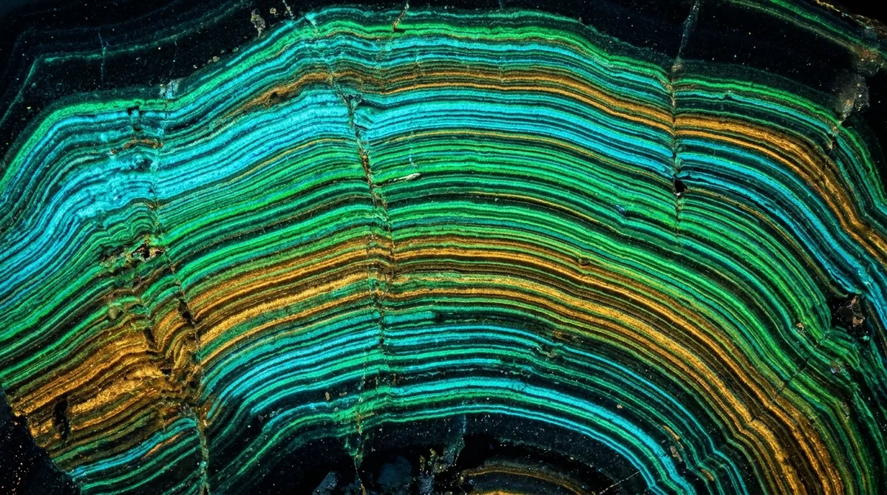
The same holds for every comparison of unrelated clocks. A mistake in radioactive decay would leave the counts of yearly layers, the orbits of asteroids and the cooling of stars untouched, and a mistake in counting layers would leave the decay of atoms untouched. To fit these records into 5,787 years, every one of them would have to be wrong at once, in the same direction and by the same factor, though nothing connects the way they work.
Many of the methods cover the same stretch of time, and where two of them overlap, scientists have compared their results.
6a Checks against written history
Geologists date volcanic rock by the decay of potassium into argon, a method that they mostly use on rocks millions of years old. In 1997 Paul Renne, Warren Sharp and Alan Deino of the Berkeley Geochronology Center and their colleagues tried the method on an eruption whose year historians know. Pliny the Younger watched the eruption of Vesuvius that buried Pompeii in 79 CE and described it in his letters. The team dated crystals of sanidine, a mineral rich in potassium, from that eruption, taken from a recent dig at the Villa of Poppaea in Oplontis, near Pompeii. The argon gave an age of 1,925 years, give or take 94. The eruption had taken place 1,918 years earlier (Science, 1997).
Matching ring widths works well within one region, where neighboring trees live through the same droughts and wet summers. But a German oak count and a California pine count might have drifted apart by a decade or two over thousands of years. To find out, tree-ring scientists look for a sudden event that marked the wood of trees all over the world in the same year.
A burst of particles from the Sun in 774 CE was such an event. In 2012 the Japanese physicist Fusa Miyake and her colleagues found a sudden jump in carbon-14 in the 774–775 CE ring of a Japanese cedar. The burst struck the whole Earth at once, so the same jump should appear in the ring of that year in trees everywhere.
In 2018 Ulf Büntgen and his colleagues examined 44 tree-ring records from five continents, 34 of them for the burst of 774 CE and 10 for a second burst, in 993 CE (Büntgen and colleagues, 2018). In every count built from many trees, the jump fell in the same counted year. So the separate counts agree to the single year.
The burst of 993 CE has also dated a historical event to the year. Two Icelandic sagas, the Saga of the Greenlanders and the Saga of Erik the Red, describe voyages by the Norse (the seafaring Scandinavians who settled Iceland and Greenland) to lands west of Greenland around the year 1000. The sagas were written down in the thirteenth century, more than two hundred years later, so the exact dates of the voyages were uncertain.
At L’Anse aux Meadows, on the northern tip of Newfoundland in Canada, archaeologists have found the remains of a Norse settlement. In 2021 Margot Kuitems, Michael Dee and their colleagues at the University of Groningen in the Netherlands measured the carbon-14 in single rings of three pieces of wood dug up at the site. The three pieces came from three different trees, and each had been cut with a metal blade, which the native peoples of the region did not make. In all three pieces the team found the carbon-14 jump of 993 CE in the ring that grew 28 years before the outermost ring (the last ring a tree forms, just under its bark). Adding 28 years to 993 CE puts the cutting of all three trees in 1021 CE (Nature, 2021).
Once the team had found the ring with the jump of 993 CE, they got the year of cutting by counting rings. The rate at which carbon-14 decays played no part in this date, so the date would stand even if decay rates had once been different. The burst of 5259 BCE tied the timber of a village of early farmers in Greece to the calendar in the same way.
Scientists have also compared the Greenland ice count with written history. Ancient silver was smelted from ores that contain lead, and the smelting released lead into the air. Winds carried some of it as far as Greenland, where it fell with the snow. The empires of the ancient Mediterranean minted silver coins in huge numbers, so the rise and fall of their mining left a dated trail of lead in the Greenland ice.
In 2018 Joseph McConnell of the Desert Research Institute in Nevada and his colleagues measured the lead several times in each yearly layer of the NGRIP core between 1100 BCE and 800 CE. From these measurements they worked out how much lead Europe released each year (Proceedings of the National Academy of Sciences, 2018). On the count of the ice layers:
- Lead began to rise as the Phoenicians, the merchants of Tyre and Sidon, expanded their trade.
- Lead climbed faster as Carthage (a North African city founded by the Phoenicians), and later Rome, expanded silver mining in Spain.
- Lead rose and fell with the wars of the Roman Republic and peaked under the Roman Empire.
- Lead plunged during two major plagues in the second and third centuries CE, which Roman writers describe, and then stayed low for more than five hundred years.
Historians have also measured the silver in Roman coins, and it declined in step with the lead in the ice. If the Greenland snow had laid down two layers in some years, or none in others, the counted dates of these changes would have drifted away from the dates in written history.
A volcanic eruption lets scientists compare the ice count with history to the single year. In 2020 McConnell, Michael Sigl and their colleagues counted the layers of the NGRIP core back from the eruption of the Samalas volcano in Indonesia in 1257 CE, which left a sharp spike of sulfur in the ice. Comparing their count with tree-ring records, they concluded that their count of the ice in ancient times was accurate to within two years. They found a heavy fall of volcanic sulfur in six Arctic ice cores, beginning in the layer counted as early 43 BCE. In the same layer of the GISP2 core they found 35 tiny shards of volcanic glass whose chemistry matched the Okmok II eruption of the Okmok volcano in Alaska (Proceedings of the National Academy of Sciences, 2020). Julius Caesar had been assassinated in Rome the year before, in 44 BCE.
An eruption that large puts a haze of sulfur high into the air, which dims the sunlight and makes summers colder across the hemisphere. Roman and Greek writers, such as Plutarch in his life of Caesar and Appian in his history of Rome’s civil wars, describe a dimmed Sun, cold weather, failed harvests and famine across the Mediterranean in the two years after Caesar’s death. Tree-ring scientists have also found a frost ring (a band of wood damaged by a freeze during the growing season) in the 43 BCE ring of California’s bristlecone pines. McConnell’s team took it to be a freeze in early September. So the Arctic ice, the Roman histories and the California tree rings all put the eruption in the same year.
Bursts of particles from the Sun allow an even closer comparison between ice and tree rings. The particles of a major burst, such as the one in 774 CE, strike the air and make extra beryllium-10 and carbon-14. (Beryllium-10 is a radioactive atom that also forms when cosmic rays, high-energy particles from space, strike the air.) The extra beryllium-10 falls into that year’s layer of ice, and the extra carbon-14 goes into that year’s tree rings.
McConnell’s ice count puts the solar bursts of 774 CE, 993 CE and 661 BCE in the same years as the tree-ring records do. So the Greenland ice count agrees with written history at 43 BCE, and with tree rings to within a year or two back to 661 BCE. Further back, volcanic ash ties the ice count to the yearly mud of lakes in Finland and Germany, back to about twelve thousand years ago, and a solar burst of about 12,350 BCE ties it to the rings of pine trees.
In 2010 Christopher Bronk Ramsey of the University of Oxford and his colleagues used radiocarbon to date 211 samples of seeds, baskets and other plant remains from ancient Egypt. Each sample came from a museum collection and could be tied to the reign of a particular king. The team took the order and the lengths of the reigns from the historians, and let the carbon-14 alone place each kingdom on the calendar. The radiocarbon dates put the kings within a few decades of the dates that the historians had worked out from the Egyptians’ own records (see 1.4).
6b Layer counts from different places
One way to see whether a count of layers is right is to compare it with a count made somewhere else, over the same span of years. Volcanic ash lets scientists do this. A large eruption throws tiny shards of volcanic glass high into the air. The glass from each eruption has its own chemical makeup, so scientists can recognize the ash of one eruption wherever it settled. The ash falls out of the air quickly, so it marks the same moment (give or take a few windy days) in every lake and ice sheet it reached.
In 2025 Alice Carter-Champion and her colleagues reported finding the ash of two eruptions in the yearly layers of mud at the bottom of Lake Nautajärvi in Finland. One was the Hekla 4 eruption in Iceland. The other was the KS2 eruption in Kamchatka, in the far east of Russia. The ash of both eruptions is also found in the Greenland ice cores. So the years between the two eruptions can be counted twice, once in the Finnish mud and once in the Greenland ice.
In Lake Nautajärvi there are 2,682 yearly layers of mud between the two layers of ash. In the NGRIP ice core there are 2,764 yearly layers of ice between them. The two counts agree within about three percent over about 2,700 years. Storms in Finland and storms in Greenland would not come to nearly the same number over so long a span, so the layers in both places must be years.
On the Greenland count, the span between the two eruptions runs from about 5140 BCE to about 2375 BCE.
Comparing the ash layers also turned up an error in the first count of the lake mud. The researchers who first counted the mud of Lake Nautajärvi, back from the present, had placed the Hekla ash about 180 years too recent and the Kamchatka ash about 260 years too recent, compared with the Greenland count. Carter-Champion’s team concluded that the first count had probably missed some layers in the older mud, or lined up the layers wrongly where separate cores were joined together. The first count was too short. Correcting it made the lake’s dates older, further from the 5,787 years of the Jewish count. Comparing two separate records lets researchers catch counting errors like this one and measure how large they are.
If a careful team could miss a couple of hundred years over a few thousand years of mud, one might expect the errors to grow much larger further back. But where older ash layers are found in two records, the counts in the two records still agree closely, even past the end of the last ice age.
About 12,100 years ago the Icelandic volcano Katla spread a layer of ash, known as the Vedde Ash, across the North Atlantic and northern Europe. In Greenland’s NGRIP core, on the GICC05 count, this ash lies in the layer counted as 12,121 years before 1950. Meerfelder Maar is a lake in a volcanic crater in western Germany, with yearly layers of mud. There researchers found the same Vedde Ash in the layer counted as 12,140 years before 1950 (Geology, 2013). After more than twelve thousand years of counting, the Greenland ice and the German lake mud agree within 19 years. The ash lies more than six thousand years before 3760 BCE.
The eruption of Mount Mazama in Oregon left the basin that now holds Crater Lake. Glaciologists found Mazama’s volcanic glass in Greenland’s GISP2 core, in the layer counted as 7,627 years before 1950, give or take 150 years. That is about 5680 BCE (Geology, 1999). In 2015 researchers combined 81 published radiocarbon dates for the eruption and placed it between 7,682 and 7,584 years before 1950 (The Holocene, 2015). This range lies inside the margin of the Greenland count. So radiocarbon dating and the count of ice layers put the eruption in the same century.
A storm on the Sun in 5259 BCE. Bursts of particles from the Sun, like the one of 774 CE, let scientists compare ring counts from different regions much further back. A storm of about the same size as the one of 774 CE struck in 5259 BCE.
In 2022 a team led by Nicolas Brehm of ETH Zurich looked for this storm in larches from the Alps, oaks from Ireland and larches from Siberia, each record counted ring by ring. In all three, the rise in carbon-14 falls in the ring counted as 5259 BCE. The team also found it in bristlecone pines from California, where it may fall a year earlier. Each of these records is an unbroken chain of overlapping trees, counted back from trees whose years are known. So all four records have the same number of rings, within one year, between the storm and today. If any of the counts had missed rings or added extra ones, the four records would not agree on the year of the storm.
A study published in 2026 found matching rises of beryllium-10 and chlorine-36, radioactive atoms that such particles make when they strike the upper air, in the ice of Greenland and Antarctica. The tree rings and the ice layers were each counted separately, from today back through 2105 BCE to 5259 BCE, and they put the storm in the same year.
The storm of 5259 BCE also dates wood that people used. Dispilio was a village of early farmers on the shore of Lake Kastoria in northern Greece, and the waterlogged ground there preserved the timber that its people used. By matching overlapping ring patterns in these timbers, researchers had built a sequence of 303 rings for the village’s juniper wood, but they could not yet tie it to the calendar. In 2024 Andrej Maczkowski, Charlotte Pearson, Albert Hafner and their colleagues measured the carbon-14 in single rings from four pieces of this juniper.
They found the rise from the storm of 5259 BCE in the same ring of all four pieces. With that ring fixed, they could put the village’s whole sequence of juniper rings on the calendar, and it ends in 5140 BCE (Nature Communications, 2024). So the people of Dispilio were cutting juniper trees in the century before 5259 BCE and in the century after it.
A storm on the Sun around 12,350 BCE. A storm marks the ice as well as the wood, so it can tie a count of tree rings to a count of ice layers. In 2023 Edouard Bard of the Collège de France and his colleagues measured the carbon-14 in about 400 samples, mostly single rings, from fifteen ancient pines that had been uncovered in the banks of the Drouzet stream in the French Alps. These pines, preserved in the ground, do not join in an unbroken chain to living trees. So the team placed them on the calendar by matching their pattern of carbon-14, ring by ring, with counted pines from southern Germany. They found a sharp jump in carbon-14 in a single ring at about 14,300 years before 1950, which is about 12,350 BCE.
Bard’s team then looked at the beryllium-10 that had already been measured in the GRIP ice core from Greenland, whose layers glaciologists have counted one year at a time. A sample from the layers counted as 14,301 to 14,292 years before 1950 holds about twice the usual amount of beryllium-10 (Philosophical Transactions of the Royal Society A, 2023). At that depth the count of the ice is uncertain by about 80 to 90 years, so the pine rings and the Greenland ice place the storm within a century of each other. In 2025 Kseniia Golubenko and Ilya Usoskin of the University of Oulu in Finland calculated that this storm was about 18 percent stronger than the storm of 774 CE (Earth and Planetary Science Letters, 2025). So two separate counts, of German pines and of Greenland ice, put the same storm at about 12,350 BCE.
Written history, tree rings, Greenland ice and European lake mud line up with each other across more than fourteen thousand years. For the count to be wrong, the trees in California, the snow in Greenland and the mud in Germany would all have had to gain or lose the same number of layers, and still line up at the same solar bursts and volcanic eruptions.
6c The last ice age
Lake Suigetsu in Japan has yearly layers of mud, and the mud holds fossil leaves of trees going back more than 50,000 years. In 2012 Christopher Bronk Ramsey and his colleagues measured the carbon-14 in leaves from layers laid down between about 11,200 and 52,800 years ago (Science, 2012).
A cave in China gave a completely different clock for the same years. In 2018 Hai Cheng, Lawrence Edwards and their colleagues measured the carbon-14 in two stalagmites from Hulu Cave, back to about 54,000 years ago. They dated the same layers of stone by the decay of uranium into thorium, which has nothing to do with carbon (Science, 2018).
In 2020 Bronk Ramsey’s team linked the two records by matching their levels of carbon-14, which let them compare the count of the lake’s yearly layers with the cave’s uranium dates (Radiocarbon, 2020). The cave dates agreed with most of the lake count. Only two stretches did not line up: about 15,000 to 18,000 years ago, where the two records differ by roughly 300 years, and 29,300 to 32,600 years ago, where they differ by roughly 700 years. The team wrote that the lake record, in which some years had to be estimated across blurred stretches of mud, could not be used on its own for calibration of the highest precision without uranium dates from the cave and from corals. Even so, a count of mud layers and a uranium clock, which work in unrelated ways, agree across most of the 40,000 years they share.
About 41,000 to 42,000 years ago the Earth’s magnetic field weakened for several centuries and briefly reversed direction. Geologists first found this event, the Laschamps excursion, in the 1960s, in lava flows near Clermont-Ferrand in France, at Laschamps and Olby. The grains of iron minerals locked into the cooled rock there point opposite to today’s magnetic field. In 2014 Carlo Laj, Hervé Guillou and Catherine Kissel dated 35 newly analyzed lava flows from that region by the decay of potassium into argon. They placed the event at 41,300 years ago, give or take 600 years, at two standard deviations, which means with 95 percent confidence (Laj, Guillou, and Kissel, Earth and Planetary Science Letters, 2014). A companion conference summary combined 37 flows.
The stalagmite from Crevice Cave in Missouri recorded the same event. In the slab that Lascu’s team used for magnetism, the peak of the magnetic shift, when the magnetic pole swung farthest south, falls at 41,100 years before 1950, give or take 350. This matches the French lava date of 41,300, give or take 600.
The Earth’s magnetic field normally turns away many cosmic rays (high-energy particles from space). While the field was weak, more cosmic rays struck the air and made extra beryllium-10 and carbon-14. In Greenland’s NGRIP ice core, the count of yearly layers puts this spike of beryllium-10 at about 41,250 years before 2000, with a maximum counting error of about 1,600 years (about 800 years at one standard deviation; Svensson et al., Climate of the Past, 2008).
To line up the three records, scientists allow for two small differences. The Greenland count gives years before 2000, not before 1950. And each record marks a slightly different moment of the event: the weakest field, the farthest swing of the pole, or the greatest buildup of beryllium-10. With these allowed for, the French lavas, the Missouri stalagmite and the Greenland ice all agree, within their margins of error, at about 41,000 years ago.
These records use four unrelated clocks: the decay of potassium in the French lava, the decay of uranium in the Missouri stone, the yearly bands in the same stone, and the yearly layers of snow in Greenland.
In 2021 Alan Cooper, Chris Turney and their colleagues measured the carbon-14 in the rings of a kauri tree buried in a swamp at Ngāwhā, New Zealand (Cooper et al., Science, 2021). The tree’s roughly 1,700 counted rings do not connect to living trees through a chain of overlapping wood, so the researchers placed them on the calendar using radiocarbon and the Greenland ice record. In these rings the carbon-14 of the air rises during the time when the magnetic field was weak. (The same paper also claimed that the weak field caused a worldwide environmental crisis. Other researchers challenged that claim, which is separate from the carbon-14 measurements: Picin et al., Science, 2021.)
Devils Hole is a deep crack in the Nevada desert, filled with groundwater. For hundreds of thousands of years the mineral calcite has settled out of that water onto its walls, layer on layer. In 1992 Isaac Winograd of the United States Geological Survey and his colleagues took 21 uranium dates along a 36-centimeter core of this calcite, and measured the oxygen in each layer, which varies with past temperatures. The 500,000-year record they built matched the main features of the temperature record in the Vostok ice of Antarctica and the record of the ice ages in the mud of the sea floor (Science, 1992).
In the original core, the warming at the end of each ice age came about ten thousand years earlier than the cycles of the Earth’s orbit predicted. Geologists argued about this for more than twenty years. In 2016 Gina Moseley, Lawrence Edwards and their colleagues dated a new core from Devils Hole. It closely matched the original record across the last 204,000 years, but it put the end of the next-to-last ice age about 8,000 years later than before, close to the date from the orbital cycles (Science, 2016). Winograd disputed their explanation for the shift (Science, 2016). Either way, the whole dispute concerned about ten thousand years in a record of 500,000 years.
Geneticists can measure how fast DNA changes without using any fossil. They read the DNA of parents and of their children and count the new changes in each child, which neither parent carried. (Hákon Jónsson and his colleagues did this for 1,548 families in Iceland, Nature, 2017.) In 2014 Qiaomei Fu and her colleagues read the DNA of a man who died at Ust’-Ishim, in Siberia. His thigh bone is dated by radiocarbon to about 45,000 years ago. Since he died, the lines of living people have gone on gathering changes, while his DNA stopped. So his DNA lacks some of the changes that living people carry. The team counted the missing changes and divided them by the 45,000 years. They found that DNA changes by about 0.44 to 0.63 letters in every billion each year. That is close to the rate geneticists had counted in living families, about 0.5 in every billion each year (Nature, 2014). So the radiocarbon date of the bone and the count of changes in living families agree. The team noted that both rates are slower than the rates that earlier work had set from the ages of fossils, so they give older dates for the splits between peoples and between people and Neanderthals. (This comparison of rates is separate from the length of the Neanderthal pieces in the Ust’-Ishim man’s DNA, where a reanalysis in 2024 found evidence of more than one episode of mixing; see early humans and section 5.2.)
Geologists also date boulders left behind by glaciers. Once the ice melts away and leaves a boulder in the open, cosmic rays begin to make beryllium-10 in the quartz of the rock, so the amount of beryllium-10 grows with the time the boulder has lain exposed. To turn the amount of beryllium-10 into years, they need to know how fast it forms at that place. In northeastern North America, geologists set a new, lower local rate. With this rate, the ages of the boulders matched the radiocarbon dates for the melting of the ice, while the older worldwide figure had not. In 2013 Nicolás Young and his colleagues measured the rate on boulders around Baffin Bay, in western Greenland and on Baffin Island, that were already dated by radiocarbon.
Young’s team found 3.96 atoms of beryllium-10 per gram of quartz each year, give or take 0.07. Within the margin of error, this is the same as the northeastern rate of 3.91 atoms per gram each year, give or take 0.19 (Journal of Quaternary Science, 2013). Both rates are set against radiocarbon, so this match cannot be used as separate support for radiocarbon. It does establish that beryllium-10 forms at the same pace in places thousands of kilometers apart.
6d Millions and billions of years
On the floor of the deep ocean lie lumps and crusts of iron and manganese. They grow a thin layer at a time, as the metals settle out of the sea water around them. Crusts that draw their metals from sea water alone grow very slowly, at most about ten millimeters in a million years. Scientists usually measure how fast such a crust grows with beryllium-10, the radioactive form of beryllium made by cosmic rays in the air and carried by rain into the sea. A crust takes in beryllium-10 as it grows, and the beryllium-10 in each layer then slowly decays. So the deeper a layer lies in the crust, and the longer ago it grew, the less beryllium-10 is left in it.
In 2011 Hirokuni Oda, Akira Usui, Benjamin Weiss and their colleagues measured the growth of one crust, 50 millimeters thick, from the floor of the northwest Pacific, by a second method as well. With a very sensitive magnetic instrument they found thin stripes in the crust, magnetized in opposite directions, each less than a millimeter wide and parallel to its layers. Each stripe is a layer that grew while the Earth’s magnetic field pointed one way, between one reversal and the next. Geologists date the reversals in two ways, by the decay of potassium in lava and by counting the cycles of the Earth’s orbit in the mud of the sea floor. By matching the edges of the stripes to these dated reversals, the team calculated that the crust grew 5.1 millimeters per million years, give or take 0.2. At that rate the 50-millimeter crust took about ten million years to grow.
Measured by beryllium-10, the same crust grew 6.0 millimeters per million years, give or take 0.2 (Geology, 2011). The two rates differ by about a sixth. (The team noted that the rate from beryllium-10 assumes that beryllium-10 was always made and kept in the crust at the same rate.) Both methods agree that the crust took more than eight million years to grow.
Astronomers and marine geologists have matched the break-up of an asteroid with a shower of space dust on the Earth. In 2003 David Nesvorný and his colleagues at the Southwest Research Institute in Boulder, Colorado, used the law of gravity to trace backward the orbits of the larger asteroids in the Veritas family. The orbits came together 8.3 million years ago, give or take 500,000 years, when an asteroid about 160 kilometers across broke apart. If so, the dust from the break-up should have reached the Earth at about that time and settled into the mud of the sea floor.
Dust from space holds far more helium-3, a rare type of helium, than the Earth’s own rock does. So when more dust from space falls on the Earth, more helium-3 ends up in the mud that settles on the sea floor. Kenneth Farley, a geochemist at the California Institute of Technology, measured the helium-3 in two cores of mud drilled from the ocean floor more than 10,000 kilometers apart, one in the Indian Ocean and one in the Atlantic. In both cores the helium-3 rose suddenly to about four times its usual level in mud dated to 8.2 million years ago, and then fell back over about 1.5 million years (Farley, Nesvorný, William Bottke, and David Vokrouhlický, Nature, 2006).
In the Indian Ocean core the dust lies alongside fossil plankton. Geologists already knew the age of these fossils in two ways: by counting the cycles of the Earth’s orbit in the layers of the mud, and by radioactive dating. Both put the dust at about 8.2 million years ago. The astronomers’ date for the break-up, from the orbits and gravity alone, is 8.3 million years (see 3.2).
Astronomers date the universe to 13.8 billion years from the faint glow that its early heat left in space. They date the oldest stars by three methods that do not use that glow. From the oldest clusters of stars, Lawrence Krauss and Brian Chaboyer worked out that the universe is at least 11.2 billion years old. From the faintest burned-out stars in the cluster M4, Brad Hansen and his colleagues found that those stars have been cooling for about 12.7 billion years. In 2007 Anna Frebel and her colleagues measured uranium and thorium in the light of HE 1523-0901, an old star in the Milky Way. From how much of these radioactive atoms is left in the star, compared with each other and with stable heavy atoms made with them, they put its age at about 13.2 billion years (Astrophysical Journal Letters, 2007). By all three methods the oldest stars come out somewhat younger than the universe, and none of the three gives a star older than the universe.
Predictions made in advance
Scientists have also predicted discoveries before they were made. An account of the past that had only been made up to fit the facts already known could not do that.
- In 1948 Ralph Alpher and Robert Herman worked out that the heat of the early universe should still fill space as a faint glow, the cosmic microwave background. They put its temperature at about 5 degrees above absolute zero, which is the lowest temperature there can be. In 1964 Arno Penzias and Robert Wilson found the glow by accident, at about 3 degrees above absolute zero. Penzias and Wilson shared the Nobel Prize in physics in 1978.
- In 1862 Charles Darwin was given an orchid from Madagascar whose nectar lies at the bottom of a hollow spur more than thirty centimeters long. He wrote that “in Madagascar there must be moths with probosces capable of extension to a length of between ten and eleven inches.” (A proboscis is the long tongue through which a moth sucks nectar.) In 1867 Alfred Russel Wallace predicted that the moth would be a hawkmoth. In 1903 Walter Rothschild and Karl Jordan described a hawkmoth from Madagascar with an especially long tongue, and they named it praedicta, “predicted,” for Wallace’s prediction. In 1997 the German biologist Lutz Wasserthal confirmed that this hawkmoth carries the orchid’s pollen.
- Astronomers predicted in advance when and where in the sky the light of the exploding star Refsdal would appear again. A large cluster of galaxies bends the light of a galaxy behind it, as Einstein’s theory of gravity predicts, so that the light reaches the Earth along several paths of different lengths. Models of the cluster’s mass predicted that the explosion would appear once more, in another image, within about a year. On December 11, 2015, the Hubble Space Telescope found it at the predicted spot.
- Neil Shubin’s team searched for a fossil animal between fish and four-legged land animals in rocks of an age that they had chosen in advance, and found Tiktaalik there. Geneticists placed the whales among the even-toed hoofed animals, which share a double-pulley ankle bone, and the ankle bones of early whale fossils found later had that shape.
- In 1982 Jorge Yunis and Om Prakash compared the patterns of bands that a stain brings out on the chromosomes of people, chimpanzees, gorillas and orangutans (Science, 1982). From the bands they concluded that human chromosome 2 is two chromosomes of the apes joined end to end. If two chromosomes had joined in this way, the middle of chromosome 2 should hold the stretch of DNA that marks the end of every chromosome. It should also hold the remains of a second centromere, the place by which a cell grips a chromosome when it divides. In 1991 a team found the DNA that marks the end of a chromosome in the middle of chromosome 2, and in 1992 another team found the remains of a second centromere there.
- A count of the cycles of the Earth’s orbit in ocean mud corrected a date from radioactive decay, and a more exact measurement of decay then agreed with the count.
- Biochemists can work out from the DNA of living bacteria how a protein was spelled in the bacteria’s ancestors, step by step back along their family tree, and then build that ancient protein in the laboratory. In 2008 Eric Gaucher, Sridhar Govindarajan and Omjoy Ganesh did this for a protein that every cell uses to assemble other proteins. They built more than 25 ancestral forms of it, from branch points of the tree dated between 3.5 and 0.5 billion years ago. The older the ancestor, the more heat its protein could stand before breaking apart. The temperature the proteins could stand fell by about 30 degrees Celsius from the oldest branch points to the youngest. This fall matched the cooling of the oceans over the same span, which geologists had estimated in a separate way, from the ratios of oxygen atoms in ancient chert, a hard rock that formed in the sea (Nature, 2008). (A rebuilt protein that works does not by itself prove every detail of the family tree, because related spellings often work too. Both temperature estimates also depend on assumptions in the models behind them.)
7. Faster decay and faster light
7a Radioactive decay
Radioactive dating rests on one assumption: that each type of radioactive atom decayed in the past at the rate that laboratories measure today. Readers who meet this for the first time are right to ask how anyone can know that. Laboratories have measured these rates for only about a century, and dating a rock means running them back for billions of years.
Measuring a half-life does not mean waiting for half of the atoms to decay. Even a milligram of uranium holds so many atoms that about a dozen of them decay every second, and a counter can count them one by one. In 1971 Arthur Jaffey and his colleagues at Argonne National Laboratory counted the alpha particles given off by thin, carefully prepared layers of uranium. In each milligram of uranium-238 they counted about 746 decays a minute, and from that rate they worked out a half-life of 4.468 billion years (Physical Review C, 1971), the value in standard use today.
Running that rate backward is plain arithmetic, because of the way atoms decay. Each unstable atom has a fixed chance of decaying in any given second. The chance does not grow as the atom ages, and it does not depend on how many other atoms are around it. So the same share of the atoms that remain decays in every year, and the arithmetic of half-lives runs backward as easily as forward. The arithmetic is only as good as its one assumption, that the chance was always what it is today. Scientists have tested that assumption in several separate ways, and every test finds the same rates in the past as now.
- Heat, pressure and chemistry do not change the rate. Ever since radioactivity was discovered, scientists have heated radioactive atoms in laboratories, frozen them, put them under great pressure and placed them in strong magnetic fields. The rate of decay stays the same. The rate depends on the forces inside the nucleus, the tiny center of the atom, and heat, pressure and water do not reach those forces. (For a few special types of atom the rate changes by about a percent or less. Physicists have changed a rate greatly only inside a particle accelerator, by stripping an atom of every one of the electrons that circle its nucleus. Atoms in rock, wood and bone are never in that state.) So the water of the Mabul, however great, could not by any natural means have changed the rate of decay.
- Astronomers can watch decay that happened long ago. The star that astronomers watched explode in 1987 is about 168,000 light-years away, a distance measured by geometry, so the explosion that they watched had happened about 168,000 years before 1987. The explosion made a great deal of radioactive cobalt. In a laboratory today, half of any amount of that cobalt breaks down in 77 days. Astronomers measured the glow of the explosion and found that it faded at that same rate. So cobalt was decaying 168,000 years ago at the rate at which it decays now.
Atoms that decay by different forces give the same age. Radioactive atoms break down in four different ways, and each way depends on different forces inside the atom:
- Alpha decay. A heavy nucleus throws out a tight bundle of two protons and two neutrons. Uranium-238 (which becomes lead-206), uranium-235 (lead-207), thorium-232 (lead-208) and samarium-147 (neodymium-143) decay this way. Two forces set the rate. The strong nuclear force pulls the nucleus together, and the electric force pushes its protons apart. Between them they make a wall of energy around the nucleus. The bundle gets out only by slipping through this wall, a process that physicists call tunneling. The rate depends exponentially on the height and the width of the wall, and each kind of atom has its own wall. So even a tiny change in the strong force or the electric force would not speed up every alpha decay by the same amount. Uranium-238 and uranium-235 sitting in the same zircon crystal would change by amounts that differ from each other many times over.
- Beta decay. A neutron inside the nucleus turns into a proton and gives off an electron. Carbon-14 (which becomes nitrogen-14), rubidium-87 (strontium-87) and lutetium-176 (hafnium-176) decay this way. This change is caused by a separate force of nature, the weak nuclear force. Its rate also depends on the energy that the decay releases, but in a different mathematical way: by a power law, not by the exponential of tunneling.
- Electron capture. A proton in the nucleus captures one of the atom’s own inner electrons and becomes a neutron. Potassium-40 turns into argon-40 this way. The rate depends on the weak force and also on the arrangement of the electrons around the nucleus.
- Spontaneous fission. The whole nucleus splits into two large pieces. When a uranium-238 atom splits inside a crystal of zircon or apatite, it leaves a microscopic scar called a fission track, and geologists date the crystal from these tracks. The rate depends on the balance between the binding that holds the whole nucleus together and the electric repulsion of its protons.
So no single change in the laws of nature could speed up all four kinds of decay by the same factor. Suppose the strong nuclear force had changed enough to make uranium-238 decay a million times faster. Uranium-235 would have sped up by a very different multiple. Rubidium-87 and carbon-14, which decay by the weak force, would have run on a different schedule altogether. (A change in the weak force alone would do the reverse. It would change the beta decay of carbon-14 and rubidium-87 and the electron capture of potassium-40, and it would leave the alpha decay of uranium as it was.) And a change that large in the strong force would have broken ordinary atoms and chemistry long before it could shrink billions of years into thousands.
If any of these forces had been different in the past, the dating methods would disagree today. The same rock would come out one age by uranium-238, another by uranium-235, and others again by rubidium-87 or potassium-40. Geologists find no such disagreement. When they date the same rock by alpha decay, beta decay, electron capture and fission tracks, they get the same age. Twelve studies of the gneiss of Amitsoq in Greenland, for example, dated it by five kinds of atom that decay by both alpha and beta decay, and all twelve agree on 3.62 to 3.65 billion years (the oldest rocks of the Earth).
The electric force inside atoms had its present strength billions of years ago. The electric force is one of the two forces that set the rate of alpha decay. Scientists have measured its strength in two separate ways, and it has not changed.
In 1972 French engineers found that uranium ore from a mine at Oklo, in Gabon, held unusually little of the kind of uranium that nuclear reactors burn. Scientists worked out that about two billion years ago the ore had been rich enough in that uranium to start a chain reaction on its own, with each splitting atom making other atoms split. The deposit ran as a natural nuclear reactor, on and off, for hundreds of thousands of years, and it used up part of its uranium. The surrounding rock holds the same byproduct atoms that a nuclear reactor leaves behind today. If atoms had behaved differently two billion years ago, the reaction would have left different byproducts.

Underground exposure of Natural Nuclear Fission Reactor Zone 15 at the Oklo uranium mine in Gabon, where yellowish uranium-oxide veins mark rock that sustained natural chain reactions about two billion years ago. Photo: U.S. Department of Energy (featured on NASA APOD, Oct. 16, 2002), Public Domain. (Source) The samarium in the ore gives a precise measure of the electric force. When a uranium atom splits, it releases neutrons, tiny particles that strike other uranium atoms and make them split too. Samarium-149 absorbs slow neutrons far more readily than most atoms do, especially neutrons of one particular energy, so the reactor used up most of the samarium-149 in its ore. The energy at which samarium-149 absorbs neutrons depends on the strength of the electric force inside its nucleus. If that force had been even slightly different, the reactor would have used up a different share of the samarium. Physicists express the strength of the electric force by a number called the fine-structure constant. In 1996 the physicists Thibault Damour and Freeman Dyson used the samarium left in the Oklo ore to calculate that this constant was the same when the reactor ran as it is today, to within about one part in ten million. In 2006 C. R. Gould, E. I. Sharapov and S. K. Lamoreaux used more realistic models of the reactors and narrowed the limit to about two parts in a hundred million. (These limits depend on models of how the reactor ran. Oklo measures the electric force, not the beta decay of carbon-14, which runs on the weak force.)
Astronomers have measured the same constant far from the Earth. A quasar is the very bright center of a distant galaxy. As a quasar’s light travels toward the Earth, gas clouds along the way absorb parts of it at a few exact colors. The strength of the electric force inside its atoms sets which colors the gas absorbs, and how far apart they are. In 2022 Michael Murphy and his colleagues measured the light of the quasar HE 0515−4414 with ESPRESSO, a new instrument on the Very Large Telescope in Chile (Astronomy & Astrophysics, 2022). The light they studied passed through the gas about 8.5 billion years ago. They found that the fine-structure constant in that gas was the same as it is today, to within about 1.4 parts in a million. This measurement does not depend on the Earth’s geology at all.
- Dates from decay agree with counted years. A count of yearly layers uses no nuclear physics at all, so if atoms had decayed faster in the past, radioactive dates would come out longer than the counts. They match, from a stalagmite in Missouri and the eruption that buried Pompeii to the weak magnetic field of about 41,000 years ago. Scientists have also measured the carbon-14 in tree rings counted back more than 12,300 years. Single rings wiggle a little, because the carbon-14 in the air changes from year to year, so the rate of decay cannot be read from two neighboring rings. Across the whole sequence, though, the older the ring, the less carbon-14 is left in it, by the amount that today’s rate of decay predicts, and the curve matches independent historical and environmental markers (section 2.2).
Dates from the decay of potassium agree with plate speeds measured by satellite. The plates of the ocean floor move a few centimeters a year. Geologists work out how fast each plate moved over the last three million years from the magnetic stripes on the ocean floor: they divide how far the sea floor has spread since a reversal of the Earth’s magnetic field by the age of that reversal.
The reversals were first dated by the decay of potassium in lava. The standard figures for plate speeds, from 1994, are the ones used in the comparison with satellite measurements. They take the ages of the reversals from a different method, which matches layers of mud on the sea floor to regular changes in the Earth’s orbit. In 1993 Douglas Wilson reported in Nature that the potassium dates agree with this astronomical method across the last 3.3 million years.
Since the 1990s geologists have also measured the motion of the plates from year to year, using receivers on the ground that lock onto satellites. In 2002 Giovanni Sella, Timothy Dixon and Ailin Mao compared these speeds with the long-term geological speeds across the whole planet. For two-thirds of the pairs of plates they studied, the two speeds agreed within the margin of error. For most of the other pairs, they concluded that the plates had changed speed over the past few million years. Arabia and India, which are pushing against Eurasia, now move more slowly than their average over three million years, and so does the Nazca plate, which is pushing against South America. Sella’s team suggested that three other pairs differ because of errors in the older geological figures.
If potassium had decayed faster in the past, the potassium ages of the magnetic reversals would be too old. They would no longer line up with the cycles of the Earth’s orbit, and the past plate speeds would look much slower than the speeds that satellites measure today. The dates of the sea floor match both the orbital cycles and the satellite measurements, so potassium did not decay faster over the past three million years.
- Faster decay would have left heat behind. Radioactive decay gives off heat. Between 1997 and 2005 a group of Christian scientists who hold that the world is young studied radioactive dating in a project that they called RATE. They concluded that hundreds of millions of years’ worth of decay really did take place in the Earth’s crust, and they proposed that it took place quickly, at Creation and during the Flood. They found that so much decay in so short a time would give off enough heat to melt the crust, and that no natural process they knew of could remove that heat. (Some later writers try to avoid this problem by stretching the early time scales, or by proposing smaller changes in the rate of decay, instead of putting billions of years of decay into one ordinary year.)
7b The speed of light
Some writers propose that light once traveled faster, so that starlight could cross these distances within 5,787 years. A star much closer to us lets astronomers see whether that could work. In 2002 the star V838 Mon suddenly brightened. Its direct light reached the Earth first. Light that bounced off dust around the star arrived later, as an expanding ring called a light echo. Light that bounces off the dust at about a right angle is strongly polarized, so astronomers can pick out that part of the echo. For that part, the delay multiplied by the speed of light gives the true radius of the ring, and comparing it with how wide the ring looks in the sky gives the star’s distance. Sparks and colleagues took into account how long the outburst lasted and how the dust was arranged in Hubble Space Telescope images from 2002 and 2005. They measured a distance of 6.1 ± 0.6 kiloparsecs (Sparks et al., Astronomical Journal, 2008).
Radio astronomers measured the distance by a separate geometric method. Spots of silicon monoxide around V838 Mon give off masers. As the Earth goes around the Sun, these spots seem to shift slightly against distant background quasars, and the size of the shift, called the parallax, gives the distance. Ortiz-León and colleagues measured a raw parallax of 0.166 ± 0.060 milliarcseconds. That figure still has a wide margin of error, so they combined it with other distance measurements and got 5.6 ± 0.5 kiloparsecs (Ortiz-León et al., Astronomy & Astrophysics, 2020). Together, these methods put V838 Mon about 18,000 to 20,000 light-years away, more than three times as far as light travels in 5,787 years.

The two measurements together rule out the idea that light once traveled faster everywhere. At 6.1 kiloparsecs, light at today’s speed takes about 3.4 times longer than 5,787 years to reach the Earth, so light would have had to travel about 3.4 times faster. But the distance worked out from the light echo grows in proportion to the speed of light, while the parallax depends only on the Earth’s orbit. With light 3.4 times faster, the echo would put the star at about 21 kiloparsecs, more than three times the 5.6 to 6.1 kiloparsecs given by the parallax. (A model in which light sped up only on the long stretch to the Earth, or in which space and clocks were rescaled together, could still give the delay that was observed. But it would need light to keep one speed on the main path toward the Earth and switch to another on the short detour around the dust.)
Astronomers have confirmed that light echoes work in this way on an explosion whose date is known. Tycho Brahe saw a supernova in 1572. In 2008 Krause and colleagues caught light from that explosion that had bounced off dust and was only now reaching the Earth (Krause et al., Nature, 2008). Its spectrum was that of an ordinary Type Ia supernova, the same explosion whose direct light astronomers had recorded centuries earlier.
8. The Mabul and the dating methods
Many readers will likely jump in at this point with the obvious answer that perhaps the Mabul changed the world. After all, the water was boiling, the fountains of the deep burst open, and the planet was just put through the washing machine. As such, nothing from before the Mabul can be dated. (Rabbi Moshe Meiselman holds a version of this view.) The idea sounds plausible if you do not think too deeply about it, but it is wrong, for four reasons.
- Most of the clocks never depended on anything that a flood could change. Counting yearly layers uses no chemistry and no radioactive decay. A tree adds one ring a year. The Greenland ice sheet adds one layer of snow a year, and the layers can be seen with the naked eye when a slice of the ice is laid on a light table. Glaciologists counted the layers of the GISP2 core (a column of ice drilled out of the Greenland ice sheet) by their visible bands, dust, electrical conductivity and chemistry together. Separate counts agreed within about one percent over the last 11,000 years (Journal of Geophysical Research, 1997). Glaciologists also compare their counts with eruptions whose year is known from history. The Laki volcano in Iceland erupted in 1783, and the ice layer counted as 1783 holds acid and ash from that eruption. The layer counted as 43 BCE holds glass from the eruption of the Okmok volcano in Alaska. The counts of tree rings and of ice layers run through 2105 BCE, the year of the Mabul, with ordinary yearly layers and no break or gap. So whatever happened in 2105 BCE, the trees kept adding one ring a year and Greenland kept adding one layer of snow a year. The motions of the Earth and the planets and the light of distant stars, which give many of the other dates, were never in the water at all.
- Radiocarbon dates are tree-ring dates. Laboratories turn a radiocarbon reading into a calendar date by matching it with counted tree rings. If the Mabul had suddenly raised the carbon-14 in the air, the rings of 2105 BCE and the years after it would hold extra carbon-14. They do not: the carbon-14 in the rings of 2105 BCE is within the ordinary range of the centuries before and after. Even if the Mabul had left such a rise, the dates would still come out right, because laboratories would match their samples against the rings of those years, and the rings would carry the same rise. Faster decay would not move the dates either. Whatever faster decay took from a seed, it also took from the tree ring that grew in the same year, so the seed and the ring would still match. And heat, pressure and water do not change the rate at which atoms decay at all. However hot or thick the water of the Mabul was, soaking in it could not have squeezed thousands of years of decay into one year.
- Radiocarbon dating has been checked against objects whose age is known from history, including finds from Tanach. Willard Libby introduced radiocarbon dating in 1949. Since then laboratories have used it on many objects whose age was already known. These include wood from the tombs of Egyptian kings, dated by written records; the Dead Sea Scrolls, dated separately by their handwriting; and bits of plant in the plaster of Chizkiyahu’s tunnel under Yerushalayim (Melachim II 20:20). Researchers also dated the tunnel by the decay of uranium in a stalactite on its ceiling (Frumkin et al., 2003). For the tunnel, the radiocarbon date, the uranium date and the reign of Chizkiyahu all fall around 700 BCE. Radiocarbon dates of plant remains from Egypt match the reigns of the Egyptian kings, both before 2105 BCE and after it (Bronk Ramsey and his colleagues, 2010; section 1.4).
- Separate records stay in step across 2105 BCE. In 5259 BCE a huge storm of particles from the Sun left a sharp rise of carbon-14 in the tree rings of that year, and matching rises of beryllium-10 and chlorine-36 in the ice of Greenland and Antarctica. Tree rings from the Alps, Ireland and Siberia and the layers of the ice were each counted separately, from today back through 2105 BCE, and they all put the storm in the same year. For the Mabul to throw all of these records off and still leave them in step, it would have had to change the growth of trees, the fall of snow and the decay of atoms, in different parts of the world, by the same amount.
Saying that the Mabul changed the world by a miracle does not help either, because the tree rings, the ice layers and the written records still run through 2105 BCE without a break.
Two proposals describe physical ways in which the Mabul could have happened. One has the Mabul form today’s ocean floors in a single year, and the other brings its water from space. Each would have released enough heat to boil the oceans.
8a Ocean floors formed in one year
Geologists date the ocean floors by their magnetic stripes and by their depth. The oldest ocean floors are about 180 million years old. A model called catastrophic plate tectonics proposes instead that today’s ocean floors spread and formed during the year of the Mabul.
New sea floor forms from molten rock that rises and then cools, so physicists can calculate how much heat forming it gives off. In 2018 the physicists William Worraker and Richard Ward calculated this heat for today’s ocean floors (Proceedings of the Eighth International Conference on Creationism, 2018). (Both are young-earth creationists who work on models of the Flood.) Worraker revisited the calculation in 2023 (Answers Research Journal, 2023). In that paper he notes that John Baumgardner, the geophysicist who developed catastrophic plate tectonics, had first raised the same heat problem in 1986.
In the 2023 paper Worraker put the heat released in forming today’s ocean floors at about 1.4 × 1029 joules. (The joule is the unit in which physicists measure energy, and 1029 is a one followed by twenty-nine zeros.) He wrote that if this heat went into the oceans, it “would be overwhelming, more than 30 times sufficient to boil off all of earth’s ocean water.” He calculated that the oceans could have absorbed at most about 0.04 percent of it.
Worraker concluded that “the heat deposited in the formation of the ocean floors and of LIPs is overwhelmingly large and cannot be removed by known natural processes within a biblically compatible timescale.” (LIPs, or large igneous provinces, are vast floods of lava.) He added that resolving the heat problem “very probably involved supernatural intervention.”
8b Water from space
What would have to happen. Some proposals bring the water of the Mabul from comets or other icy bodies in space. Covering the globe takes about 4.4 × 1021 kilograms of water, or 4.4 billion cubic kilometers. All of that water would have had to fall to the Earth and then mix into the oceans.
The heat of the fall. Every drop of water that falls from space turns the energy of its fall into heat when it lands. Breaking the ice into smaller pieces does not reduce this heat, because the total energy depends on the total mass. Even a short fall releases a great deal of heat. Suppose the 4.4 × 1021 kilograms fell from rest and the combined ocean kept all the heat:
- A fall from 1 kilometer up would release 4.32 × 1025 joules, enough to warm the combined ocean by 1.8 °C.
- A fall from 10 kilometers would release 4.31 × 1026 joules and warm the ocean by 18 °C.
- A fall from 100 kilometers, barely the edge of space, would release 4.25 × 1027 joules and warm the ocean by 178 °C, well above boiling.
- A fall from deep space, with no extra starting speed, would release 2.75 × 1029 joules (NASA Earth Fact Sheet). That is nearly twice the heat that Worraker calculated for forming the ocean floors.
Arriving as cold ice barely reduces this heat. Melting 4.4 × 1021 kilograms of ice at 0 °C absorbs 1.47 × 1027 joules (NOAA/GFDL). That is only 0.534 percent of the energy of a fall from space. Warming the melted water by another 2 °C absorbs only 0.013 percentage points more (or 0.017 percentage points if warming the entire combined ocean), about 0.55 percent in all. Unless something outside the Earth slowed the water down before it fell, more than 99.4 percent of the energy would become heat in the air, steam, rock, radiation or blasted debris. Spread over forty days, the energy of the fall averages about 156 million watts per square meter (1.56 × 108 W/m2) across the whole Earth—more than 110,000 times the solar constant. Even the 0.534 percent absorbed by melting the ice averages 834,000 W/m2, more than six hundred times the power of direct sunlight at midday.
The heavy hydrogen. Water from space also does not always have the same chemical makeup as the water of our oceans. A small share of the hydrogen atoms in water are heavy hydrogen, called deuterium. Geochemists measure the share of deuterium in water, which they call the D/H ratio. Standard ocean water (VSMOW) contains 155.76 parts per million of deuterium (IAEA VSMOW reference). Today’s oceans hold about 1.338 × 1018 cubic meters of seawater (USGS), which is 1.338 billion cubic kilometers.
Covering the globe takes far more water than today’s oceans hold, so the water from space would make up most of the sea afterward. Adding 3.2 billion cubic kilometers of water (covering only today’s ocean basins) makes the added water 70.7 percent of the combined mass of pure water. Adding 4.4 billion cubic kilometers (covering the whole globe) makes it 76.9 percent. So the deuterium in today’s oceans would come mostly from the added water.
Suppose the added water mixed completely into the oceans before the water went down evenly, and nothing afterward separated out the heavy hydrogen or replaced the oceans. Even if the ocean before the Mabul had no deuterium at all, the added water could have held at most 220 parts per million (in the 3.2-billion-cubic-kilometer case) or 203 parts per million (in the 4.4-billion case). With any more, today’s oceans would be above 155.76 parts per million.
The water of comet Hale–Bopp is far above that limit. It measures 330 ± 80 parts per million (Meier et al., 1998). If the added water had Hale–Bopp’s central value of 330 and the ocean before the Mabul had no deuterium, today’s oceans would be at 233 to 254 parts per million. Even at the low end of Hale–Bopp’s range, 250 parts per million, they would be at 177 to 192. Put the other way, with Hale–Bopp’s central value, only 27 percent of the 4.4 billion cubic kilometers could be mixed into an ocean with no deuterium before the ocean reached today’s level. If the ocean before the Mabul started at 90 percent of today’s level, only 2.7 percent could be added.
Comets vary. Comet Hartley 2 measures 161 ± 24 parts per million (Hartogh et al., 2011). Water like that could stay under the limit. In the 4.4-billion-cubic-kilometer case it would match today’s oceans if the ocean before the Mabul held about 138 parts per million. But a comet like Hartley 2 would still release the 2.75 × 1029 joules of a fall from space.
The order of Creation and the history of life
9. The order of the Six Days
Besides the age of the world, Bereishis gives the order in which it was made, day by day. On the First Day Hashem creates the heavens and the earth, the earth still covered by water, and then light. On the Second He makes the firmament. On the Third He gathers the water into seas so that dry land appears, and the land brings forth grass, herbs and fruit trees. On the Fourth He sets the Sun, the Moon and the stars in the firmament. On the Fifth He creates the creatures of the water and the birds, and on the Sixth the land animals and, last of all, man (1:1–31). Chazal add that the Sun and the Moon were created on the First Day and hung in the firmament only on the Fourth (Chagigah 12a, which Rashi brings on 1:14). On either reading, the plants of the Third Day came up before the Sun shone on them.
Scientists work out an order of their own from the ages of meteorites, rocks and fossils, and it differs from the order of the Six Days at several points. The difference does not go away if each of the six days is taken as a long era of billions of years, as some writers take them. Long days change how much time passed, but not the order in which things came. Even with billions of years inside the six days, the Torah and the scientists put the plants and the Sun, the fruit trees and the sea animals, and the birds and the land animals in opposite order.
The order that scientists give
On the scientists’ dates:
- The Sun formed about 4.6 billion years ago.
- Animals filled the seas more than 500 million years ago.
- The first plants grew on land about 470 million years ago.
- Insects and their relatives were living on land by about 400 million years ago.
- The first four-legged animals appear by about 370 million years ago. (Tracks that may go back to about 395 million years ago are disputed.)
- The first birds appear about 150 million years ago.
- Flowering plants, the group that includes every fruit tree and every grass, appear about 125 to 130 million years ago.
- Whales descend from four-legged land animals that lived about 50 million years ago.
- Our own species appears about 315,000 years ago.
Of all the things made from the Third Day to the Sixth, only man has the same place in both orders: he comes last.
9.1The Earth and the plants come before the stars and the Sun in Bereishis. Scientists put the stars first, then the Sun and the Earth together, and the first land plants about four billion years after that.The iron, oxygen and silicon that make up most of the Earth were made inside stars. Stars had to burn and die before there could be an Earth.Grains of dust from stars that died before the Sun formed have been found in meteorites. They drifted through space for millions of years, and some for as long as about three billion, before the Solar System formed.Water needs oxygen, and oxygen is made in stars, so there was no water before the first stars. Bereishis has water from the very beginning (1:2).The Earth formed together with the Sun about 4.6 billion years ago. The first land plants are about 470 million years old.Core
The Earth and the plants before the Sun
The Earth before the Sun and the stars. Rashi gives Chazal’s reading in these words (on 1:14, from Chagigah 12a):
יהי מארת וגו'. מִיֹּום רִאשׁוֹן נִבְרְאוּ וּבָרְבִיעִי צִוָּה עֲלֵיהֶם לְהִתָּלוֹת בָּרָקִיעַ, וְכֵן כָּל תּוֹלְדוֹת שָׁמַיִם וָאָרֶץ נִבְרְאוּ מִיּוֹם רִאשׁוֹן, וְכָל אֶחָד וְאֶחָד נִקְבַּע בַּיוֹם שֶׁנִּגְזַר עָלָיו, הוּא שֶׁכָּתוּב אֵת הַשָּׁמַיִם, לְרַבּוֹת תּוֹלְדוֹתֵיהֶם, וְאֵת הָאָרֶץ, לְרַבּוֹת תּוֹלְדוֹתֶיהָ:
“‘Let there be lights’—they were created on the First Day, and on the Fourth He commanded them to be hung in the firmament. Likewise, all the products of heaven and earth were created on the First Day, and each one was set in place on the day decreed for it. That is why it says ‘es the heavens,’ to include all their products, and ‘es the earth,’ to include all its products.”
Rashi on Bereishis 1:14
On that reading the Earth, the Sun and the stars were all created on the same day. Scientists, too, find that the Sun and the Earth formed together. But they find that the stars came long before the Earth. Earlier generations of stars formed, burned and died billions of years before the elements that make up the Earth existed. Even on Chazal’s reading, the Torah and the scientists disagree about the stars.
In 1957 the astronomers Margaret and Geoffrey Burbidge and Fred Hoyle, with the physicist William Fowler, showed that the heavier elements, such as iron, oxygen, silicon and magnesium, are made inside stars and scattered into space when the stars die. (Fowler shared the 1983 Nobel Prize in Physics for his part in this work.) The Sun and the Earth formed together from one cloud of gas and dust about 4.6 billion years ago, when the universe was already about nine billion years old. The Sun condensed at the center of the cloud, and the Earth and the other planets came together from the flat disk of dust and rock left circling it. That cloud held elements made by stars that had already lived and died.
Stardust older than the Sun. Scientists have tiny grains from stars that died before the Sun formed. Each kind of star makes elements in its own mixture of isotopes (forms of an element that differ slightly in weight), while the Sun and everything that formed with it share one mixture. In 1987 scientists dissolved pieces of meteorites in acid and found tiny grains of diamond and of silicon carbide in what was left. The atoms in these grains come in mixtures unlike those of the Solar System and close to the mixtures that certain dying stars make. The scientists concluded that the grains formed around older stars and drifted through space until they were swept into the cloud from which the Sun and the planets formed. The Murchison meteorite, which fell in Australia in 1969, is especially rich in these grains from before the Sun.
A grain that drifts through space slowly fills with a form of neon that cosmic rays make in it, so the amount of that neon shows how long the grain drifted (the same clock dates the meteorites found in Swedish limestone). In 2020 Philipp Heck of the Field Museum in Chicago and his colleagues measured this neon in 40 large grains from before the Sun, taken from the Murchison meteorite. They worked out how fast cosmic rays make the neon from the physics of the collisions and from the cosmic rays that the Voyager 1 spacecraft measured beyond the Sun’s influence. They found that the grains had drifted for anywhere from about four million to about three billion years before the Solar System formed, most of them for less than 300 million years (Proceedings of the National Academy of Sciences, 2020). On the scientists’ account, the stars that supplied the Earth’s material had died, and their dust had drifted for millions to billions of years, before the Sun or the Earth existed.
Water before the stars. Bereishis 1:2 has water at the very beginning, before the stars of the Fourth Day. Water needs oxygen, and the early universe held only hydrogen, helium and a trace of lithium. Astronomers conclude that there could be no ordinary water until the first massive stars made oxygen and scattered it when they exploded. In 2025 Daniel Whalen of the University of Portsmouth and his colleagues ran computer simulations of those explosions. They calculated that water could first form in the clouds left by early exploded stars (supernova remnants) 100 to 200 million years after the universe began (Whalen et al., Nature Astronomy, 2025). This figure comes from a simulation, not from a telescope that saw the first water. But either way there is no water without oxygen, and the oxygen was made in stars.
Water molecules can be older than the planet they end up on. Astronomers who studied the disk of gas and dust in which planets are forming around the young star V883 Ori found that a new solar system can take in water molecules from older clouds in space (Tobin et al., Nature, 2023). On the Earth itself, the Jack Hills zircon, a tiny, durable crystal 4.404 billion years old, is indirect evidence that liquid water touched the early crust (Wilde et al., Nature, 2001). From the crystal alone, geologists cannot tell how much of the early Earth lay under water, or when dry land first appeared. All of this water came after stars had made its oxygen, so the conflict is with water before the stars.
Plants before the Sun. The plants of the Third Day grew before the Sun of the Fourth Day shone on them. Scientists give the opposite order. The oldest grains in meteorites, which come from the disk that circled the young Sun, are 4.567 billion years old, and the Sun is a little older, about 4.6 billion years. In 2003 a team led by Charles Wellman of the University of Sheffield, in England, described pieces of some of the earliest land plants, with their spores (the tiny cells from which new plants grow) still in them. The pieces come from rocks in Oman dated to about 470 million years ago. The Sun had been shining on the Earth for about four billion years before the first plant grew on land.
9.2Grass and fruit trees come on the Third Day, two days before the first creature of the sea (1:11, 1:20). Scientists put the sea animals hundreds of millions of years before the first fruit tree.Animals filled the seas more than 500 million years ago. Plants came onto the land after that, and the first land plants had no flowers and no fruit.Fruit grows only on flowering plants, and the oldest known flowering plants are about 125 to 130 million years old. By then the fish, the insects and the dinosaurs had long been in the world.Green seaweeds did live in the sea before any animal, but the pasuk names grass and fruit trees, and those are flowering plants.
Fruit trees before sea animals
Fruit grows only on flowering plants, the group whose seeds develop inside a flower. Every fruit tree and every grass belongs to this group. Paleontologists find that the earliest land plants, which appeared after the sea animals, were small and had neither flowers nor fruit. Insects and their relatives were living on land by about 400 million years ago, and the first dinosaurs appeared about 230 million years ago. Both came long before the first flowering plant.
Paleontologists find flowering plants only in much younger rock. One of the oldest known is Montsechia, a small plant that lived in water, found in limestone in the mountains of Spain. David Dilcher of Indiana University and his European colleagues described it in 2015. Montsechia is about 125 to 130 million years old, and grasses came later still. On the scientists’ account the order of the Third and Fifth Days is reversed: the sea creatures came first, and the fruit trees and grasses hundreds of millions of years later.
Seaweeds. Scientists conclude that land plants evolved from green algae, which lived in water long before the first land plants. In 2020 Qing Tang and Shuhai Xiao of Virginia Tech described Proterocladus antiquus, a green seaweed two millimeters long, from rocks near Dalian in northern China dated to about a billion years ago. If the plants of the Third Day include seaweeds, some plants did come before the sea animals. But the Torah names grass and fruit trees on the Third Day (1:11), and those are flowering plants.
9.3All the creatures of the water were made on one day, the Fifth (1:20–23). Paleontologists find the first animals appearing one group after another, over more than forty million years.Chemists have shown that Dickinsonia, one of the oldest large fossils, about 558 million years old, was an animal.A relative of the jellyfish, with a skeleton and tentacles, has been found in England in rocks between 562 and 557 million years old. A small animal with a front end and a back end has been found in rocks of about the same age in Australia.Paleontologists find animals with hard skeletons from about 550 million years ago, the first trilobites from about 521 million years ago, and the first animals with a backbone in rocks no older than 518 million years.
The first animals
On the Fifth Day Hashem said, “Let the waters swarm with swarms of living creatures,” and created “every living creature that moves, with which the waters swarmed” (1:20–21). On the plain meaning of these pesukim, all the creatures of the sea were made on that one day.
The oldest large animal fossils. Rocks dated from about 571 to 541 million years ago hold the fossils of soft-bodied creatures that paleontologists call the Ediacara biota. One of them is Dickinsonia, a flat, oval creature marked with ribs. For decades paleontologists disagreed about whether these creatures were animals, giant single cells or something else. In 2018 Ilya Bobrovskiy, Jochen Brocks and their colleagues took fat molecules out of Dickinsonia fossils that still held traces of their original body matter. The only fats they found were of the cholesterol family, the kind of fat that is typical of animals. This makes Dickinsonia and its relatives the oldest large fossils known to be animals (Science, 2018). Animals made of many cells lived in the sea more than 550 million years ago.

In 2022 Bobrovskiy and his colleagues used the same method on two other Ediacaran fossils about 558 million years old: Kimberella, a creature like a slug, and Calyptrina, which lived in a tube. Both held traces of their last meals, and from these the team concluded that both had guts and fed on green algae and bacteria (Current Biology, 2022). Animals were living and feeding in the sea tens of millions of years before the first fish or trilobites.
The first relative of the jellyfish. In Charnwood Forest in central England, rocks dated to between 562 and 557 million years ago hold a fossil that Frances Dunn and her colleagues named Auroralumina attenboroughii in 2022. It had two branching polyps with tentacles (soft bodies like those of corals and sea anemones) inside a stiff skeleton. The team placed it on the jellyfish branch of the animal family tree. That makes it the oldest known member of the group that includes today’s corals and jellyfish (Nature Ecology & Evolution, 2022), tens of millions of years older than the first trilobites or fish.
An animal with a front and a back. In 2020 Scott Evans, Mary Droser and their colleagues described Ikaria wariootia, from South Australia, a small, simple animal with a distinct front and back. Its size and shape match what biologists had predicted for the maker of a kind of fossil burrow called Helminthoidichnites, which appears in rocks below the other fossils of the Ediacara biota. Evans and Droser placed Ikaria among the oldest known animals whose left and right sides mirror each other, the large group that includes worms, insects, fish and people (Proceedings of the National Academy of Sciences, 2020).
Animals with skeletons and backbones. In a 2025 review Rachel Wood and Mary Droser put the first animals with hard skeletons at about 550 million years ago (Biological Reviews, 2025). Geologists date the start of the Cambrian period to about 538.8 million years ago. Tiny shells and tubes, called the small shelly fossils, appear from the last stages before the Cambrian into the early Cambrian, mostly in rocks older than the first trilobites. Animals with hard shells appeared in waves millions of years apart, not all at once.
The first trilobites, armored sea animals of the same broad group as insects and crabs, appear in rocks about 521 million years old. Soon after, in the Chengjiang shale of southern China, which is no more than 518 million years old, paleontologists have found small fish-shaped creatures that are among the oldest known animals with a backbone. Animals with backbones came more than 50 million years after the first Ediacaran biota (and roughly 40 million years after Dickinsonia).
The creatures of the sea appear in this order over more than forty million years: first soft-bodied animals and small burrowers, then animals with hard skeletons, then trilobites, and only later animals with backbones. On the plain reading all of them were made on one day. (A reading that makes the Fifth Day a long age can fit these forty million years inside it. The conflict here is with the plain reading, on which the Fifth Day was one day.)
9.4Birds and whales come on the Fifth Day, a day before the land animals (1:20–25). Scientists find the land animals first, and trace the birds, the whales and the bats back to animals that lived on land.The oldest fossil bones of four-legged animals are about 365 to 370 million years old, and the first birds about 150 million. (Tracks of four-legged animals that may be about 395 million years old are disputed.)The birds descend from dinosaurs, and the whales from four-legged land mammals that lived about 50 million years ago. Early whales still had legs and the ankle bone of the hoofed mammals.The bat, which the Torah counts among the flying creatures of the Fifth Day (Vayikra 11:19), is a mammal, and descends from mammals that could not fly.
Birds and whales before land animals
Birds before land animals. Paleontologists find animals living on land long before the first birds. Insects and their relatives were living on land by about 400 million years ago, even before the first four-legged animals. The first dinosaurs followed about 230 million years ago, and the earliest birds appear about 150 million years ago.
The best-known early bird is Archaeopteryx, found in 1861 in a limestone quarry near Solnhofen in southern Germany. It had feathers and wings like a bird, but also teeth in its jaws, claws on its fingers and a long bony tail, like the small two-legged dinosaurs found in similar rock. Since 1996 paleontologists have dug up dozens of species of small feathered dinosaurs in northeastern China. From these they conclude that birds descend from small dinosaurs of that type that lived on land.

The whales. On the Fifth Day Hashem created the taninim hagedolim, the great sea creatures, and “every living creature that moves” in the water (1:21). Chazal say that the great taninim are the Leviasan and his mate (Bava Basra 74b):
״וַיִּבְרָא אֱלֹהִים אֶת הַתַּנִּינִם הַגְּדוֹלִים״ – הָכָא תַּרְגִּימוּ: אֻרְזִילֵי דְיַמָּא. רַבִּי יוֹחָנָן אָמַר: זֶה לִוְיָתָן נָחָשׁ בָּרִיחַ וְלִוְיָתָן נָחָשׁ עֲקַלָּתוֹן, שֶׁנֶּאֱמַר: ״בַּיּוֹם הַהוּא יִפְקֹד ה׳ בְּחַרְבּוֹ הַקָּשָׁה וְגוֹ׳״.
“‘And God created the great sea monsters’ (Bereishis 1:21)—here [in Babylonia] they translated this as sea-gazelles. Rabbi Yochanan said: This refers to Leviasan the straight serpent and Leviasan the coiled serpent, as it says, ‘On that day Hashem will punish with His fierce sword…’ (Yeshayahu 27:1).”
Bava Basra 74b
But the whales are among “every living creature that moves” in the water, and they are the largest of them. So on the Torah’s account the whales were made on the Fifth Day with the other sea creatures, a day before the land animals.
Whales are mammals: they breathe air and nurse their young with milk, as land mammals do. Paleontologists have found a series of fossils that leads step by step from today’s whales back to four-legged animals that lived at the water’s edge about 50 million years ago. In 1989 a team from the University of Michigan and the Egyptian Geological Museum, led by Philip Gingerich, dug at Wadi Al-Hitan, “the Valley of Whales,” in the Egyptian desert. They found skeletons of Basilosaurus, an early whale 40 million years old, that still had small hind legs with feet and toes.
For decades, paleontologists who studied fossil teeth thought that whales descended from mesonychians, an extinct group of hoofed meat-eaters. Geneticists who compared living animals reached a different answer. They compared short copied pieces of DNA, called SINEs, that sit at the same places in the DNA of different species, at many sites. From these the geneticists placed whales inside the even-toed hoofed animals (artiodactyls), the group that includes cattle, deer, pigs and hippos (Nikaido, Rooney and Okada, PNAS, 1999). The even-toed hoofed animals all share one distinctive bone, a double-pulley ankle bone called the astragalus. Living whales have no ankles, so the question could be decided only by finding early whales whose fossils still had ankle bones.
In 2001 two teams announced such skeletons from Pakistan. Philip Gingerich’s team described two early whales about 47 million years old from Balochistan (Gingerich et al., Science, 2001). Hans Thewissen’s team described pakicetids, which lived on land (Thewissen et al., Nature, 2001). Both had the double-pulley astragalus of the even-toed hoofed animals. The bones matched what the DNA had predicted, and they ruled out the mesonychians as the ancestors of whales. The fossils and the DNA, studied separately, both place whales among the descendants of hoofed mammals that lived on land.
Two more fossils fill in the change from land to sea. In India paleontologists found Indohyus, an even-toed mammal from the Eocene (56 to 34 million years ago). It had an ear bone like a whale’s, distinctive premolar teeth and dense limb bones. From these, and from the oxygen isotopes in its teeth, Thewissen and his colleagues judge that it spent time in water and was a close relative of whales (Thewissen et al., Nature, 2007). Whether or not it was a direct ancestor, and whatever its exact habits, it ties whales closely to hoofed mammals that lived partly in water. In Peru, rocks laid down in the sea 42.6 million years ago held Peregocetus pacificus (specimen MUSM 3580), a four-legged whale whose legs and feet were built for moving both on land and in water (Lambert et al., Current Biology, 2019). Whatever route the early whales took to reach South America, they had crossed the ocean while they still had working legs.
The bat. On the Fifth Day Hashem creates every winged of, every flying creature (1:21). The Creation account does not name the bat, but elsewhere the Torah counts the bat, the atalef, among the of (Vayikra 11:13, 11:19), and that puts it on the Fifth Day. Biologists count bats as mammals (animals that nurse their young with milk), and they conclude that bats descend from mammals that could not fly. In 2008 Nancy Simmons of the American Museum of Natural History and her colleagues described Onychonycteris, a fossil bat found in Wyoming and dated to about 52 million years ago. It could fly, but it still had claws on all five fingers of each hand, and the proportions of its limbs fall between those of climbing mammals and those of later bats.
On the scientists’ account, then, the birds, the whales and the bats each descend from land animals that lived millions of years before them. The Torah puts all three on the Fifth Day, a day before the land animals.
9.5Every land animal was made on the Sixth Day, the day on which Adam was made and gave names to the animals (1:24–25, 2:19–20). Scientists find that the dinosaurs died out tens of millions of years before there were people.Dinosaurs lived all over the world from about 230 million to 66 million years ago. Then all of them died out except the birds.The oldest bones of our own species are about 315,000 years old. On those dates no person ever saw a living dinosaur.In Colorado the layers below and above the asteroid’s dust hold separate blooms of fungi, thousands of years apart, so they were not laid down by one flood.
The dinosaurs
Bereishis does not mention dinosaurs, but it puts every land animal on the same day as man. Paleontologists have found dinosaur bones all over the world, in rock layers dated between about 230 million and 66 million years ago. The largest dinosaurs grew more than thirty meters long. One of the largest known, Patagotitan, came to light in 2010, when a ranch worker in Patagonia, in Argentina, saw a huge bone sticking out of the ground. The digging that followed uncovered hundreds of bones. Scientists conclude that all the dinosaurs except the birds died out 66 million years ago, at the time of the impact that made the crater in Mexico. That was tens of millions of years before the first people. On the scientists’ dates, the largest animals ever to walk the land lived and died out long before anyone existed to name them.
Fungi before and after the impact. The layers that formed on land just before and after the impact (at the boundary that geologists call K/Pg) did not come from a single flood such as the Mabul. Geologists who study them find that the asteroid struck a landscape that already had a history of its own. In 2004 Vajda and McLoughlin found a strong rise in fungi at the boundary in New Zealand (Vajda and McLoughlin, Science, 2004). In 2026 Baker and Casadevall reported the same rise in fungi at the boundary at Bowring Pit, in the Denver Basin of Colorado, where the layers can be dated closely (Baker and Casadevall, PNAS, 2026).
At Bowring Pit, Baker and Casadevall also found rises in fungi well away from the impact layer. By their estimates of the ages there, an earlier bloom of fungi lasted from about 30,000 to about 10,000 years before the boundary, and a shorter rise came about 10,000 years after it. Two sites in North Dakota also have earlier and later rises in fungi, though these are dated less precisely. At those two sites the sharp rise at the boundary itself is missing, because local conditions in the sediment affected what survived. These layers hold several separate events in the life of the land, thousands of years apart, and not one deposit left by a single flood. (Since fungi bloomed before, at and after the impact, a rise in fungal spores does not by itself mark the boundary. Geologists find the boundary by the physical traces of the impact, so a site without the rise in fungi still has the impact layer. The exact number of years between the blooms depends on the ages estimated for Bowring Pit.)
9.6If every species of the water and the land was made in the Six Days (1:20–25), all of them have lived in the world together since Creation. Geologists find instead that each layer of rock holds its own set of species, and the species alive today only in the youngest layers.In the first years of the nineteenth century William Smith in England, and Georges Cuvier and Alexandre Brongniart in France, found that each layer of rock holds its own fossils, in the same order from place to place.Gérard Deshayes compared the fossil shells of the youngest layers of Europe with living shells. In the oldest of those layers about three and a half percent of the species are still alive, and in the youngest up to ninety-five percent. Charles Lyell reported that the older rocks below those layers held no species of shell that is alive today.Fossil horse teeth from four continents show a change, between about 8 and 6 million years ago, to a diet of the grasses of hot, open grasslands. Flood water can sort bodies by size or weight, but not teeth by the carbon in their enamel.The Ramban says that the species were made to last as long as the world lasts (on Vayikra 19:19). Paleontologists estimate that more than 99 percent of all the species that have ever lived have died out.Core
The species in each layer
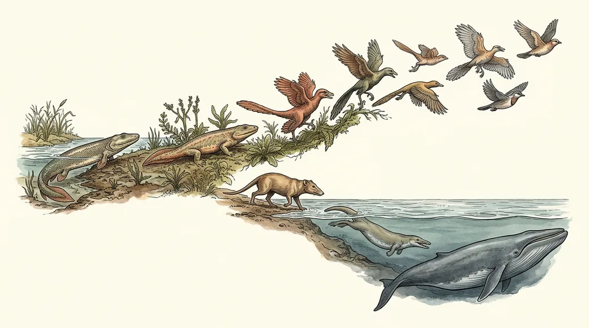
Each layer has its own fossils. William Smith, an English surveyor of coal mines and canals, found that he could recognize a layer of rock along the whole length of England by the fossils in it. In 1815 he used this to publish a map of the rock layers of England and Wales. In Paris the anatomist Georges Cuvier and the mineralogist Alexandre Brongniart found the same fixed order of layers around the city (1808 and 1811). Cuvier worked out this order even though he rejected the idea that species descend from one another. So the order of the fossils is something geologists see in the layers, not something they assume from the theory of evolution.
Living species in the younger layers. The deeper the layer, the smaller the share of its species that are still alive today. Gérard Deshayes, a French expert on shells, compared about 3,000 species of fossil shells from the youngest rock layers of Europe with about 5,000 living species. The British geologist Charles Lyell used Deshayes’s counts to divide these layers into separate ages (Principles of Geology, 1833). In the oldest of these layers only about 3.5 percent of the shell species are still alive. The share rises to about 17 percent in the next layer, 35 to 50 percent in the layer above that, and 90 to 95 percent in the youngest. Lyell reported that the older rocks below these layers held no species of shell that is alive today. The species alive today appear little by little in the younger layers. They did not all exist together from Creation.
Ants in amber. Amber is hardened tree resin. As the sticky resin oozes from the bark, it traps small insects that walk or land on it and keeps them whole. Many of the oldest known fossil ants come from amber in Myanmar, which geologists date to about 99 million years ago. Many younger fossil ants come from Baltic amber, dated to between about 35 and 47 million years ago. This lets paleontologists compare the insects that lived tens of millions of years apart.
In 2017 Phillip Barden of the New Jersey Institute of Technology reviewed the fossil ants found all over the world (Myrmecological News, 2017). Of the ants dated between about 100 and 78 million years ago, only two species can be placed with certainty in groups of ants that are alive today. Most belonged to lines that died out and left no descendants. Every well-preserved fossil ant younger than 66 million years belongs to a living group, and the four groups most common today are also the most common among those younger fossils. The ants, too, changed over time. They have not stayed the same since Creation.
Worms that bore into bone. From the holes that worms bored in fossil bones, paleontologists find that the sea reptiles of the Cretaceous and the whales never lived at the same time. Osedax is a worm of the deep sea that feeds on the skeletons of dead whales on the ocean floor. The females send branching roots into the bone to digest it. The marine biologists Greg Rouse, Shana Goffredi and Robert Vrijenhoek first described the worm in 2004 (Science, 2004). Later researchers found that each species of Osedax bores holes of its own shape.
In 2024 a team led by Sarah Jamison-Todd X-rayed fossil bones of plesiosaurs and mosasaurs, which were sea reptiles, from England, Belgium and the southeastern United States. These reptiles lived in the Cretaceous period, which is dated to between about 145 and 66 million years ago. Inside their bones the team found the same kind of borings (Proceedings of the Royal Society B, 2024). Bone-eating worms were already living in the Cretaceous seas, long before there were whales.
In 2025 Jamison-Todd’s team found borings of different shapes in the bones of sea reptiles from the chalk beds of England. Five of the shapes found in Cretaceous rock also appear in younger rock, and three of those five still appear in the bones of whales today (PLOS ONE, 2025). Apart from the Cretaceous finds, the oldest known borings of these worms are in the bones of an early whale, Zygorhiza, in rocks dated between about 38 and 34 million years ago (Royal Society Open Science, 2025).
The worms bored into the bones of sea reptiles in Cretaceous rock, where no whale has been found, and later into the bones of whales in younger rock, where no plesiosaur or mosasaur has been found. They moved from the reptiles to the whales only after the sea reptiles had disappeared and the whales had evolved.
What fossil horses ate. Most plants take carbon from the air by one chemical process. Many grasses of hot, open grasslands, such as maize and sugarcane, use a second process, which takes in a larger share of carbon-13, a heavier form of carbon. An animal builds the enamel of its teeth from the carbon in its food, so scientists can tell from fossil enamel which type of plant an animal ate. In 1997 Thure Cerling of the University of Utah and his colleagues measured the carbon in the teeth of more than 500 fossil horses and other large grazing mammals from five continents: Asia, Africa, North America, South America and Europe.
- In 226 animals from rocks older than about 8 million years, they found no sign that grasses rich in carbon-13 made up a large part of the diet.
- In teeth dated between about 8 and 6 million years ago from Pakistan, East Africa, southern North America and South America, they found a change to a diet rich in those grasses.
- In western Europe they found no such change at any time.
Cerling’s team concluded that these grasses spread across much of the world between about 8 and 6 million years ago (Nature, 1997).
The usual answers. The usual answer for the dinosaurs is that they died in the Mabul. But animals drowned together in one flood would be buried together. Geologists find instead that the fossils lie in a fixed order of layers, each with its own species. Another answer makes each day of Creation a long age, so that all the species of the sea were made in the course of the Fifth Day. But then the species of the sea that are alive today would have existed from that age on, and the oldest layers laid down in the sea should hold some of them. Lyell found that those older rocks hold none of the shell species alive today.
One might also answer that the water of the Mabul sorted the animals as it buried them, so that each layer came to hold its own species. Sorting cannot explain the horse teeth. Moving water can sort bodies by size, by weight or by where the animals lived, but it cannot sort teeth by the share of carbon-13 in their enamel. Yet on four continents Cerling’s team found teeth low in carbon-13 in older rock and teeth high in carbon-13 in younger rock, and in western Europe they found only teeth low in carbon-13.
Species that died out. The Ramban writes that Hashem gave each species the power to reproduce so that the species would last forever, for as long as He wants the world to exist (on Vayikra 19:19):
כי השם ברא המינים בעולם בכל בעלי הנפשות בצמחים ובבעלי נפש התנועה ונתן בהם כח התולדה שיתקיימו המינים בהם לעד כל זמן שירצה הוא יתברך בקיום העולם וצוה בכחם שיוציאו למיניהם ולא ישתנו לעד לעולם שנאמר בכולם "למינהו"
“For God created the species in the world among all living things, both plants and moving creatures, and gave them the power of reproduction so that the species would endure forever, for as long as He, blessed be He, wills the world to exist; and He commanded their reproductive power to bring forth after their kinds and never change for all eternity, as it is said of all of them, ‘after its kind.’”
Ramban on Vayikra 19:19
In a 1991 book on extinction, David Raup, a paleontologist at the University of Chicago, estimated that 99.9 percent of all the species that have ever lived are now extinct. If the fossils in the layers are the remains of real living things of the past, then nearly every species ever created has already died out, while the world goes on.
9.7Bereishis and Chazal describe what the first animals ate, and how the plants and the rain waited for Adam. Scientists find meat-eaters, plants and rain long before there were people.Every animal was given plants to eat (1:29–30). Animals with teeth made for slicing flesh lie in rock hundreds of millions of years old.The behemah, the domestic animal, is listed among the animals made on the Sixth Day (1:24–25). People bred cattle from a wild ox, the aurochs, about 10,500 years ago.The Gemara says that the plants waited at the surface of the ground and did not grow until Adam prayed for rain (Chullin 60b). Scientists say that plants have covered the land for about 470 million years.Rashi says that no rain fell until Adam prayed for it (on 2:5). Geologists find the marks of raindrops in volcanic ash that they date to about 2.7 billion years ago.Core
The first animals and plants
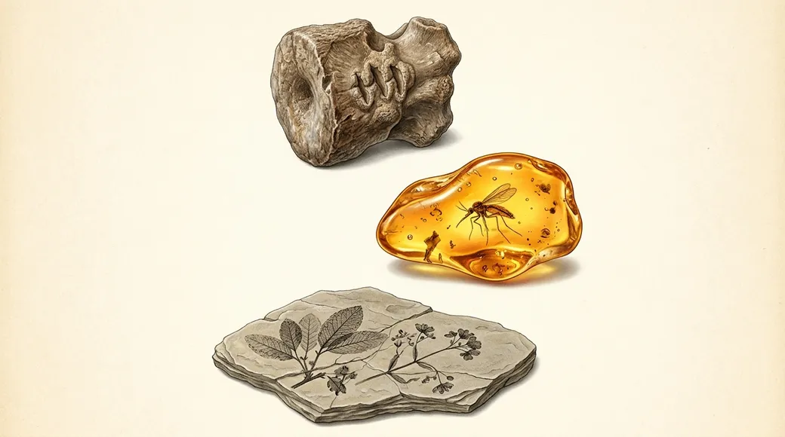
Meat-eaters before man. The Torah gives “every beast of the earth” every green herb for food (1:29–30), and Rashi explains that the animals were to eat green plants as people did:
"לָכֶם יִהְיֶה לְאָכְלָה וּלְכָל חַיַּת הָאָרֶץ" - השוה להם בהמות וחיות למאכל ולא הרשה לאדם ולאשתו להמית בריה ולאכול בשר אך כל ירק עשב יאכלו יחד כלם וכשבאו בני נח התיר להם בשר שנאמר (ט ג) כָּל רֶמֶשׂ אֲשֶׁר הוּא חַי וגו' כְּיֶרֶק עֵשֶׂב שהתרתי לאדם הראשון נָתַתִּי לָכֶם אֶת כֹּל
“‘It shall be yours for food, and to every beast of the earth’—Scripture placed domestic and wild animals on the same footing as humans regarding food. He did not permit Adam and his wife to kill a creature and eat flesh; rather, all of them alike were to eat green herbs. Only when the sons of Noach came did He permit them meat, as it says, ‘Every moving creature that lives shall be yours for food; like the green herb’—which I permitted to Adam—‘I have given you everything’ (Bereishis 9:3).”
Rashi on Bereishis 1:29
Paleontologists find animals built to eat flesh in rock layers going back hundreds of millions of years. The fossils include teeth shaped for slicing meat, bones with bite marks, and hunters preserved with the remains of other animals in their stomachs. In 1971 a Polish-Mongolian expedition in the Gobi Desert found one of the best known: a meat-eating Velociraptor locked in combat with a plant-eating Protoceratops, with the Velociraptor’s hand caught in the Protoceratops’s jaws. Scientists date the pair to between 71 and 75 million years ago. In 2005 Hu Yaoming and his colleagues at the Chinese Academy of Sciences described a mammal the size of a badger, from northeastern China, dated to about 125 million years ago. Its stomach still held the bones of a baby dinosaur. So both dinosaurs and early mammals were hunting and eating meat tens of millions of years before Adam.
One might answer that the pasuk says what the animals were allowed to eat, not what they actually ate. The pasuk ends with the words “and it was so” (1:30), and the Radak explains that each creature desired the food suited to it:
ויהי כן - כל אחד דבק ונכסף למאכל הראוי לו.
“‘And it was so’—each creature clung to and desired the food suited to it.”
Radak on Bereishis 1:30
On the Radak’s reading the animals actually ate what the pasuk describes. Rashi and the Ramban read the pasuk as saying what was permitted (on 1:29):
אֲבָל נָתַן לְאָדָם וּלְאִשְׁתּוֹ "כָּל עֵשֶׂב זֹרֵעַ זֶרַע" וְכָל פְּרִי עֵץ, וּלְחַיַּת הָאָרֶץ וּלְעוֹף הַשָּׁמַיִם נָתַן "כָּל יֶרֶק עֵשֶׂב", לֹא פְּרִי הָעֵץ וְלֹא הַזְּרָעִים, וְאֵין מַאֲכָלָם יַחַד כֻּלָּם בְּשָׁוֶה, אַךְ הַבָּשָׂר לֹא הֻרְשׁוּ בּוֹ עַד בְּנֵי נֹחַ כְּדַעַת רַבּוֹתֵינוּ, וְהוּא פְּשׁוּטוֹ שֶׁל מִקְרָא.
“Rather, He gave Adam and his wife ‘every seed-bearing plant’ and all fruit of the trees, while to the beasts of the earth and the birds of the sky He gave ‘every green herb’—not tree fruit and not seeds—so their food was not all equal. Meat, however, was not permitted to them until the sons of Noach, in accord with our Rabbis, and that is the plain sense of Scripture.”
Ramban on Bereishis 1:29
Even on that reading, Hashem gave the animals of the first days plants for their food. The hunters in the rocks, with their slicing teeth and the bones of prey in their stomachs, were built to eat meat and did eat it, hundreds of millions of years before there were people.
Domestic animals. The Torah lists the behemah beside the wild animals as one of the groups of animals that Hashem made on the Sixth Day (1:24–25). Biologists conclude that domestic cattle come from a wild animal that people tamed and bred: the aurochs, a much larger and fiercer wild ox that once lived across Europe and Asia. The last aurochs died in a Polish forest in 1627. In 2012 a team led by Ruth Bollongino of the University of Mainz in Germany and France’s National Centre for Scientific Research (CNRS) took DNA from the bones of early cattle dug up at farming villages in Iran.
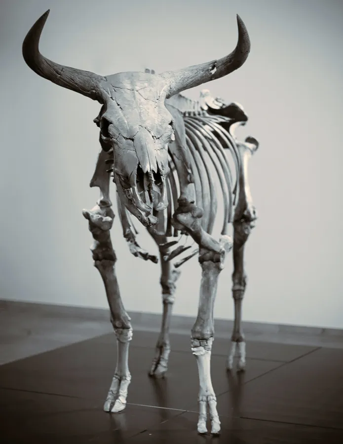
Bollongino’s team compared the DNA of these ancient cattle with the DNA of cattle alive today. They found that the cattle of Europe and the Near East descend, on their mothers’ side, from as few as eighty female aurochs tamed in the Near East about 10,500 years ago. (The humped cattle of India were tamed separately, from the aurochs of South Asia.) On the geneticists’ account, domestic cattle descend from the wild ox and were not created as a separate type of animal beside it.
Plants that waited for Adam. On the Third Day the Torah says that “the earth brought forth grass” (1:12), but on the Sixth Day it says that “no shrub of the field was yet in the earth” (2:5). The Gemara reconciles the two pesukim: the plants sprouted on the Third Day and stood just at the opening of the ground until Adam prayed for rain (Chullin 60b).
רב אסי רמי כתיב (בראשית א, יב) ותוצא הארץ דשא בתלת בשבתא וכתיב (בראשית ב, ה) וכל שיח השדה טרם יהיה בארץ במעלי שבתא מלמד שיצאו דשאים ועמדו על פתח קרקע עד שבא אדם הראשון ובקש עליהם רחמים וירדו גשמים וצמחו ללמדך שהקב"ה מתאוה לתפלתן של צדיקים
“Rav Assi pointed out a contradiction: It is written, ‘And the earth brought forth grass’ (Bereishis 1:12) on the Third Day, yet it is also written, ‘No shrub of the field was yet in the earth’ (Bereishis 2:5) on Friday. This teaches that the plants emerged and stood right at the opening of the ground until Adam came and prayed for mercy for them; then rain fell and they sprouted—teaching you that the Holy One, blessed be He, desires the prayers of the righteous.”
Chullin 60b
Scientists date the earliest land plants to about 470 million years ago. Grasses came much later, but even grasses were growing in the age of the dinosaurs. In 2005 Vandana Prasad and her colleagues in India, working with Caroline Strömberg of the Swedish Museum of Natural History, ground up fossil dinosaur dung from central India. (I am picturing them working late, hunched over their dung-grinding devices, questioning the life choices that brought them to that moment.) In it they found tiny grains of silica of a kind that forms only inside the cells of grasses. Scientists date the dung to about 65 million years ago. So grasses were growing, and dinosaurs were eating them, about 65 million years before Adam prayed for them.
Rain before Adam. On the words “for Hashem Elokim had not caused it to rain upon the earth” (2:5), Rashi brings the Gemara’s explanation that Hashem held back the rain because there was no man to work the ground or to recognize the good of rain:
כי לא המטיר. וּמַ"טַ לֹא הִמְטִיר? לְפִי שֶׁאָדָם אַיִן לַעֲבֹד אֶת הָאֲדָמָה, וְאֵין מַכִּיר בְּטוֹבָתָם שֶׁל גְּשָׁמִים, וּכְשֶׁבָּא אָדָם וְיָדַע שֶׁהֵם צֹרֶךְ לָעוֹלָם, הִתְפַּלֵּל עֲלֵיהֶם וְיָרְדוּ וְצָמְחוּ הָאִילָנוֹת וְהַדְּשָׁאִים:
“‘For He had not caused it to rain’—and why had He not caused it to rain? Because there was no man to work the ground, and no one to recognize the benefit of rain. When Adam arrived and realized that rain was needed for the world, he prayed for it, and it fell, and the trees and grasses grew.”
Rashi on Bereishis 2:5
Geologists find the marks of raindrops preserved in ancient rock. In 2012 Sanjoy Som, David Catling and their colleagues at the University of Washington studied small rimmed craters that rain had pressed into fresh volcanic ash at Omdraaivlei, near Prieska in South Africa. A thin layer of finer ash settled over the marks and preserved them before the ash hardened into rock, which geologists date to about 2.7 billion years ago.
To compare, the team let drops of water of known sizes fall onto fresh volcanic ash at the full speed of falling rain. From the fresh craters and the ancient ones, they calculated that the air through which that early rain fell was less than twice as dense as the air today (Nature, 2012). (The geologist Charles Lyell had already described fossil raindrop marks in rocks of other ages by 1851.) On the scientists’ dates, rain was falling on the earth billions of years before Adam prayed for it.
10. Common ancestry and evolution
In Bereishis each group of living things is made separately: the plants on the Third Day, the creatures of the water and the birds on the Fifth, and the land animals on the Sixth, each “after its kind” (1:11–25). Adam is formed on his, from the dust of the ground (2:7). “After its kind” is usually taken to mean that each species was made as it is and does not change. The Gemara has each species of grass come out separately on the Third Day (Chullin 60a), and the Ramban says that the species were commanded never to change (on Vayikra 19:19). Biologists find instead that all living things descend from common ancestors, and that people and apes share an ancestor.
The usual answer is that Hashem made similar creatures on a similar plan. On this answer, people and apes look alike because they were built on the same design, not because they share an ancestor.
A common design can explain why the working parts of people and apes are alike, since a designer can use one good design in many creatures. It cannot explain why people and apes carry the same broken genes, with the same copying errors, and the remains of the same viruses, at the same places in their DNA. A broken gene does nothing, so a designer would have no reason to put it into either creature. Biologists expect matching damage at the same places when two species inherited one damaged copy from an ancestor they share. (Two students who hand in essays that make the same points may have read the same textbook. If both essays have the same misspellings in the fourth paragraph and the same half-deleted sentence in the middle, they were copied from one source.)
10.1DNA, proteins and fossils join the groups of living things that Bereishis has made separately into one family tree. Every living cell, down to the bacteria, descends from one ancestor, which biologists date to about 4.2 billion years ago.Geneticists compared the complete DNA of 363 species of birds and found that it fits one family tree with one common ancestor. The genes of 144 species of insects fit one family tree too. If the birds or the insects had been made separately, species by species, nothing in their DNA would join them this way.Fossils stand between one group and another. The dinosaurs on the line that leads to the birds had feathers and wishbones long before the first bird.Every living cell builds its proteins in ribosomes, which are made of RNA, a chemical cousin of DNA, and of proteins. In 1977 Carl Woese and George Fox compared the RNA of the ribosomes of many living things and found three lines of descent; the animals, the plants and the fungi all belong to one of them.In 2024 Edmund Moody and his colleagues dated the common ancestor of all living cells to about 4.2 billion years ago.Core
One family tree
The genes. A gene is a stretch of DNA that carries the instructions for one task in the body. In 2014 a team led by Bernhard Misof of the Alexander Koenig Research Museum in Bonn compared 1,478 genes in 144 species of insect. The genes of all 144 species fit a single family tree. On that tree the winged insects form one branch, which grows out of the wingless insects, and the closest relatives of the winged insects are the silverfish. The complete DNA of 363 species of birds likewise fits one family tree with one common ancestor.
The proteins. A protein is one of the working molecules of the body, such as the hemoglobin that carries oxygen in the blood or the collagen in skin and bone. It is a chain of building blocks called amino acids, in an order spelled out by a gene. Family trees built from different proteins agree with one another. Eleven species can be arranged in about 34 million different family trees. In 1982 David Penny and his colleagues took eleven species of mammal and built five family trees for them, each from a different protein. The five trees matched one another far more closely than trees picked at random would (Nature, 1982).
The genetic code. A cell reads its genes in three-letter words, from a copy of the gene made in RNA. (RNA is a chemical cousin of DNA that uses the letter U where DNA uses T.) Each word stands for one amino acid or tells the cell to stop. This table of meanings is called the genetic code, and nearly all living things use the same one.
Mitochondria, the tiny bodies in a cell that produce its energy, have a small store of DNA of their own. In animals the mitochondria read a few words differently. The standard code reads UGA as “stop,” but animal mitochondria read it as the amino acid tryptophan. Some branches of the animal family tree have changed the meanings of more words.
In 2000 Maximilian Telford, Elisabeth Herniou, Robert Russell and Timothy Littlewood studied the mitochondrial genes of ten classes of flatworm in the branch called Rhabditophora, which includes planarians, flukes and tapeworms. In all ten classes two words had changed their meaning from the usual animal mitochondrial code: AAA stood for asparagine instead of lysine, and AUA for isoleucine instead of methionine. Three other classes of flatworm kept the usual meanings, and the team concluded that these three classes lie outside Rhabditophora (Proceedings of the National Academy of Sciences, 2000). The researchers noted that changes in the code are rare and unlikely to happen twice by chance, so a change shared by a group of species marks them as one branch. A plan common to all animals gives no reason for one branch of flatworms to read two words differently from the other animals.
In 2007 Supratim Sengupta, Xiaoguang Yang and Paul Higgs surveyed every living thing whose mitochondrial DNA had been fully read (Journal of Molecular Evolution, 2007). They placed each known change in the code on the family tree and worked out how each change most likely came about.
The gorilla. A species’ complete set of DNA is called its genome. In 2012 Aylwyn Scally of the Wellcome Trust Sanger Institute in England and his colleagues read the first gorilla genome and compared the DNA of humans, chimpanzees and gorillas stretch by stretch. Over most of the genome, humans are closest to chimpanzees. But the team found that “in 30% of the genome, gorilla is closer to human or chimpanzee than the latter are to each other.”
Biologists explain this patchwork by descent. A single ancestral population, whose members carried different versions of many stretches of DNA, split twice within a few million years. Each new line inherited a different share of those versions, so in some stretches humans and gorillas kept the same old version while chimpanzees kept another. A plan reused in creatures made separately gives no reason for one stretch of a human chromosome to match the chimpanzee and the next stretch to match the gorilla.
Blood types. A person’s blood type (A, B, AB or O) is set by a single gene that comes in several versions. Many apes and monkeys also have blood types A and B. In every species whose gene has been read so far, the A and B versions differ by the same two changes in the protein that the gene makes. In 2012 Laure Ségurel, Molly Przeworski and their colleagues compared the DNA around this gene in humans, gibbons (a family of apes) and Old World monkeys, the monkeys of Africa and Asia.
The differences in the surrounding DNA do not fit the idea that the same two mutations arose separately in each species. Ségurel’s team concluded that humans, gibbons and Old World monkeys inherited these versions of the gene from a common ancestor and have kept them for tens of millions of years (Proceedings of the National Academy of Sciences, 2012). The people in the Ark could have carried all three main versions, A, B and O, so this finding does not bear on the Mabul. It bears on Adam’s creation from the dust: biologists explain the matching DNA around the gene in humans, gibbons and monkeys by inheritance from an ancestor they share.
Fossils between the groups. Paleontologists trace the birds back to meat-eating dinosaurs. In 2014 Michael Lee of the South Australian Museum and his colleagues followed body size along the family tree of the meat-eating dinosaurs. They found that the line leading to the birds “undergoes sustained miniaturization across 50 million years and at least 12 consecutive branches.” The animals on this line shrank from about 160 kilograms to the first birds, which weighed under a kilogram.
In another study that year, Mark Puttick, Gavin Thomas and Michael Benton of the University of Bristol found that features that today belong only to birds “evolved before their origin.” They appeared in dinosaurs on the line to the birds before there was any true bird.
The parts of each animal. The body of each animal follows its own branch of the family tree. Whales and dolphins spend their whole lives in the sea, yet they breathe with lungs and come up for air like the land mammals they are related to. No whale or dolphin has gills. A bat’s wing is skin stretched over long finger bones: it is built on a mammal’s hand, not on a bird’s feathers.
Paleontologists find the same branching in fossils, down to single joints: early whales have the double-pulley ankle bone of the even-toed hoofed mammals, such as cattle, pigs and deer, and the DNA of living whales puts them on the same branch.
Sonar. Where two branches have adapted a part to the same job, the DNA still follows each animal’s own branch. Dolphins and echolocating bats both hunt by sonar: they find their prey by the echoes of high-pitched sounds. A protein called prestin, in the hair cells of the inner ear, helps mammals hear high sounds. In 2010 two teams, one led by Ying Li and Jianzhi Zhang and the other by Yang Liu, Stephen Rossiter and Shuyi Zhang, compared prestin in many mammals.
Both teams found that echolocating bats and dolphins had separately evolved many of the same changes in the prestin protein. A family tree drawn from the protein alone puts the dolphins right beside the echolocating bats (Current Biology, 2010). Liu’s team also built a tree from the DNA of the prestin gene, including the silent letters that do not change the protein. On that tree the bats and the dolphins went back to their usual separate branches. Biologists explain the shared changes in the protein by natural selection for the same sonar task, and the rest of the gene by descent.
A designer working from one plan could also take a useful part from one creature and put it in another, such as giving a whale the gills of a fish. Biologists find no such borrowing. Each species has a changed form of the body that its own ancestors had, and never a useful part taken from an unrelated branch.
One ancestor of every living cell
The ribosome. In every living cell, bodies called ribosomes read a copy of a gene and join the amino acids together in the order that it spells out. Each ribosome is made of proteins and of RNA, and bacteria, plants, fungi and animals all build their proteins with ribosomes.
Three branches of life. Since every living cell has ribosomes, biologists can compare the RNA of the ribosome across all of life. In 1977 Carl Woese and George Fox made this comparison and found three deep lines of descent (Proceedings of the National Academy of Sciences, 1977). One is the ordinary bacteria. Another is a separate group of microbes that they called archaebacteria, which includes the microbes that make methane. The third is the line that gave rise to the plants, the fungi and the animals.
In 1990 Woese, Otto Kandler and Mark Wheelis named the three Bacteria, Archaea and Eucarya, with the animals, the plants and the fungi together in Eucarya. They noted that the genetic divide between these three is deeper than the divide between animals and plants (Proceedings of the National Academy of Sciences, 1990).
RNA at the center of the ribosome. In 2000 Poul Nissen, Jeffrey Hansen, Nenad Ban, Peter Moore and Thomas Steitz mapped, atom by atom, the larger of the two parts of the ribosome of Haloarcula marismortui, a microbe from the Dead Sea (Science, 2000). The site where the ribosome joins one amino acid to the next is made entirely of RNA. No protein of the ribosome comes within about 18 angstroms of the bond, which is less than two millionths of a millimeter. In 2003 Steitz and Moore published a paper whose title calls RNA “the first macromolecular catalyst,” that is, the first large molecule to drive the chemistry of life (Trends in Biochemical Sciences, 2003).
The date of the common ancestor. In 2024 Edmund Moody and his colleagues estimated when the common ancestor of all living cells lived. They used genes that had already doubled into two copies before that ancestor’s time, so that its descendants carry both copies. The team timed the split between the two copies by the number of mutations that had built up since. They set the rate of mutation by microbial fossils and chemical traces of life in rock layers that geologists have dated, so their date depends in part on the geologists’ ages for those layers.
Moody’s team put the common ancestor at about 4.2 billion years ago, within a range of 4.09 to 4.33 billion. They estimated that it lived without oxygen and had genes for about 2,600 proteins, about as many as bacteria have today (Nature Ecology & Evolution, 2024). The Solar System is 4.567 billion years old, so this puts the common ancestor of all living cells about 370 million years after the Solar System formed. That is more than four billion years before the Torah’s date for Creation.
So the plants, the creatures of the sea, the birds and the land animals, which the Torah has made separately, are all on one family tree, together with the bacteria.
10.2Modox Alert!The Gemara says that the land animals were created from the dry land and the fish from the water (Chullin 27b). Paleontologists find that the four-legged animals of the land descend from fish. Tiktaalik, a fish with a neck and wrist-like joints, was found in rock of the age that its finders had picked in advance.Paleontologists had found fish with fleshy fins in rock about 385 million years old, and four-legged animals in rock about 365 million years old.In 1998 Neil Shubin, with Edward Daeschler and Farish Jenkins, planned a search for an animal between the two in rock about 375 million years old. They chose Ellesmere Island in the Canadian Arctic, where, according to a geology textbook, streams had laid down rock of that age.In 2004, after several summers of searching, they found Tiktaalik there. It had scales, gills and fins like a fish, and also a neck, a flat head and joints like a wrist in its front fins. Tracks in Poland about 395 million years old may have been made by four-legged animals. If they were, animals with limbs already lived before Tiktaalik, and Tiktaalik was a late survivor of the group in between.A fossil fish from Quebec, Elpistostege watsoni (specimen MHNM 06-2067), was found with its bones still joined in place. It has rows of bones like fingers inside a front fin that still has a fish’s fin rays on the outside.
Tiktaalik
[Modox Alert! If you own The Lonely Man of Faith in hardcover, feel free to skip this obviously post-Cartesian, pre-Lamarckian, quasi-Kookian hermeneutic of aggadic polysemy, and move on to the next item.]
The Gemara ties a halachah of shechitah to what each group was made from:
דָּרַשׁ עוֹבֵר גָּלִילָאָה: בְּהֵמָה שֶׁנִּבְרֵאת מִן הַיַּבָּשָׁה – הֶכְשֵׁרָהּ בִּשְׁנֵי סִימָנִים, דָּגִים שֶׁנִּבְרְאוּ מִן הַמַּיִם – הֶכְשֵׁירָן בִּוְלֹא כְּלוּם, עוֹף שֶׁנִּבְרָא מִן הָרְקָק – הֶכְשֵׁרוֹ בְּסִימָן אֶחָד.
“A traveler from the Galilee expounded: A land animal, which was created from the dry land, is rendered fit by cutting two simanim; fish, which were created from the water, are rendered fit without any slaughter; and a bird, which was created from the mud, is rendered fit by cutting one siman.”
Chullin 27b
Fossils between fish and land animals. Paleontologists trace the four-legged land animals back to ancient fish with fleshy fins (lobe-finned fish), through a series of fossils in between. Eusthenopteron, a fish with fleshy fins from Quebec, is about 385 million years old. Panderichthys, from Latvia, is about 380 million years old and has a flatter head. Acanthostega, about 365 million years old, was found in Greenland in 1987 by Jennifer Clack of Cambridge. It had legs, with eight toes on each front foot, and it still had gills like a fish.
The search for Tiktaalik. Neil Shubin of the University of Chicago, Edward Daeschler of the Academy of Natural Sciences in Philadelphia and Farish Jenkins of Harvard looked at the gap between Panderichthys and Acanthostega. An animal between the two should lie in rock about 375 million years old. They planned a search in rock of that age that streams had laid down, on Ellesmere Island in the Canadian Arctic. They searched there from 1999, and in 2004 they found three skeletons of Tiktaalik (Daeschler, Shubin and Jenkins, Nature, 2006; Shubin, Daeschler and Jenkins, Nature, 2006). It had scales, gills and fins like a fish, and also a flat head, a neck that could move, and joints like a wrist in its front fins. This was the mix of fish and land animal that they had predicted for rock of that age.
In 2010 Polish and Swedish researchers reported trackways in a quarry at Zachełmie in Poland, dated to about 395 million years ago, some twenty million years before Tiktaalik (Niedźwiedzki et al., Nature, 2010). If four-legged animals with toes made those tracks, then such animals already lived before Tiktaalik. In that case Tiktaalik was a late relative that lived on in the water and kept more of the older anatomy, alongside early lines that already had limbs. Either way, the search on Ellesmere Island found the in-between animal in rock of the age that had been predicted.
Bones like fingers inside a fish’s fin. In 2020 Richard Cloutier and his colleagues used high-resolution CT scans to examine a skeleton of Elpistostege watsoni (specimen MHNM 06-2067) found with its bones still joined in place. Elpistostege was a fish of the Late Devonian period from Quebec, and a close relative of Tiktaalik (Cloutier et al., Nature, 2020, Figs. 1–2). Its front fin still has a fish’s fin rays at its edge. Inside the fin the team found small bones in rows, which they take to be fingers or possible fingers. So a single fish has a rayed fin with bones inside it close to the pattern of a hand. This finding does not depend on the tracks in Poland, and it does not require Elpistostege to have walked on land or to be a direct ancestor of the later four-legged animals.
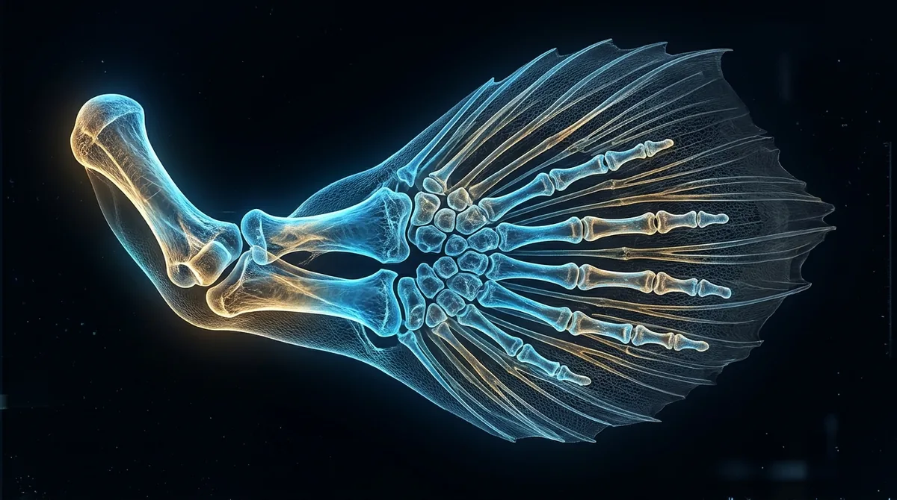
The order of the fossils in the layers. In 1997 Michael Benton and Rachel Hitchin of the University of Bristol compared the ages of the fossils with 384 published family trees, of fishes, of four-legged animals, and of starfish and their relatives. The order in which the branches split on the trees agreed well with the order in which the groups appear in the layers of rock. The trees were built from the anatomy of the animals and the order of the layers comes from geology, so two separate lines of evidence give the same history of branching.
Fish and four-legged animals could have similar bones because they were built on a common plan. But a common plan could put those bones in any layer of rock. It gives no reason for an animal that is part fish and part four-legged animal to lie in rock 375 million years old, between the older fish with fleshy fins and the younger animals with legs, and paleontologists could not have used it to know where to dig.
10.3Two bones that hinge the jaw of reptile-like animals became two of the small bones of the mammal’s ear. Scientists have traced the change in embryos and in fossils.A reptile’s lower jaw is made of several bones, and it hinges on two small bones at the back. A mammal’s lower jaw is a single bone on each side, and it hinges on a different bone of the skull.A mammal’s middle ear has three tiny bones that carry sound from the eardrum. A reptile’s middle ear has one.In a mammal embryo two of the ear bones, the hammer and the anvil, grow from the same arch of the embryo’s throat as the jaws.Fossil animals such as Diarthrognathus and Morganucodon, from about 200 million years ago, had both jaw joints at once, the old one and the new one side by side.
Jaw bones and ear bones
Two kinds of jaw. A reptile’s lower jaw is made of several bones. It hinges on two small bones at the back, the articular and the quadrate, and its middle ear has only one bone to carry sound. A mammal’s lower jaw is a single bone on each side, hinged on a different part of the skull, and its middle ear has three tiny bones.
The embryo. In 1837, more than twenty years before Darwin published his theory of evolution, the German anatomist Karl Reichert studied how the heads of mammals form in the embryo. He found that two of the mammal’s ear bones, the hammer and the anvil, grow from the same parts of the embryo as the reptile’s articular and quadrate. So the parts of the embryo that become the jaw joint in a reptile become two ear bones in a mammal.
The fossils. Paleontologists have found a long series of fossils between reptile-like animals and mammals. Along the series, the tooth-bearing bone of the lower jaw grows larger and the bones behind it shrink. In 1958 Alfred Crompton described a small animal from South Africa, 200 million years old, that had both joints at once, the old reptile joint and the new mammal joint. He named it Diarthrognathus, “two-jointed jaw.” Morganucodon, first described by Walter Kühne in 1949 from a quarry in Wales, had the same double joint.
In 2007 Zhe-Xi Luo and his colleagues described Yanoconodon, a mammal from China about 125 million years old. Its ear bones no longer formed the jaw joint, but a rod of bone still joined them to the lower jaw. In living mammals a rod of cartilage or bone joins the ear bones to the lower jaw only in the embryo. So Yanoconodon was at a stage between a reptile’s jaw joint and a mammal’s middle ear.
In 2024 a team led by Fangyuan Mao of the Institute of Vertebrate Paleontology and Paleoanthropology of the Chinese Academy of Sciences described two more fossils from partway through this change, from rock in China more than 150 million years old. In Dianoconodon, from Yunnan, the old joint between the articular and the quadrate was losing its part in holding up the jaw. In Feredocodon, from Inner Mongolia, the same bones were still attached to the lower jaw, but they were shaped only for hearing (Nature, 2024).
The mammal’s jaw joint also formed more than once. In 2024 James Rawson, Emily Rayfield and their colleagues scanned the jaws of three relatives of the mammals: two from Brazil, and a third, Oligokyphus, from the Natural History Museum in London. In one group, the ictidosaurs, the tooth-bearing bone of the lower jaw already touched the bone of the skull where a mammal’s jaw hinges. This was about 17 million years before that contact appeared on the line that led to the mammals (Nature, 2024). So the same joint formed separately on neighboring branches of the family tree, as closely related lines reshaped the jaw they had inherited.
The opossum. In mice, people and other placental mammals, the change from jaw to ear is finished before birth. Opossums and other marsupials are born tiny and unfinished, before the mammal’s jaw joint has formed, and they finish growing in the mother’s pouch. In 2020 Neal Anthwal, Abigail Tucker and their colleagues found that a newborn marsupial hinges its jaw against its skull with the incus, the anvil bone of the ear, which grows from the same part of the embryo as the reptile’s quadrate (eLife, 2020). In 2017 Daniel Urban, Karen Sears and their colleagues followed young gray short-tailed opossums after birth. While the young grew in the pouch, the rod of cartilage that joins the future ear bones to the lower jaw broke down. This change after birth follows, step by step, the change that paleontologists find in the fossils (Proceedings of the Royal Society B, 2017).
Here the same two bones hinge the jaw in reptiles and carry sound in mammals, two different jobs, so a common plan for parts that do similar work does not cover them. It gives no reason for a mammal’s ear bones to grow in the embryo from the parts that form a reptile’s jaw joint, or to come away from the jaw only after birth in marsupials. It also gives no reason for animals with two jaw joints to lie in the layers of rock between the reptile-like animals and the later mammals. All of this makes sense only if mammals inherited the jaw joint of reptile-like ancestors and turned two of its bones to hearing.
10.4Fossils of species that walked upright like people but had brains the size of an ape’s lie in rock more than three million years old. In younger rock the brains grow larger, step by step.In 1974 Donald Johanson found a partial skeleton at Hadar in Ethiopia, which his team named Lucy. Scientists date it to about 3.2 million years ago.Lucy’s hips and legs were built for walking upright, and her brain was about the size of a chimpanzee’s.At Laetoli in Tanzania, Mary Leakey’s team found the footprints of upright walkers, which scientists date to about 3.6 million years ago.In rock laid down over the three million years after Lucy, scientists find species whose brains grow to about three times the size of hers.
Fossils between apes and people
Walking upright with a small brain. Paleoanthropologists, the scientists who study human origins, use the word “hominin” for any species on the human side of the split from the chimpanzees. In 1974 Donald Johanson’s team found a partial hominin skeleton at Hadar in Ethiopia and nicknamed it Lucy. It is dated to about 3.2 million years ago, and its bones make up about forty percent of one individual. Lucy’s species, Australopithecus afarensis, lived from about 3.85 to 2.95 million years ago. Its hips and legs were built for walking upright, but its brain was usually under 500 cubic centimeters, about a third the size of ours. So walking upright came millions of years before a brain of modern size.
At Laetoli in Tanzania, Mary Leakey’s team found animal tracks in a layer of volcanic ash dated to about 3.6 million years ago. By 1978 they had uncovered trails of footprints left by walkers on two legs. In 2010 David Raichlen and his colleagues studied the shape of these prints and concluded that the walkers of Laetoli carried their weight on straight legs, much as people do today. So creatures that walked upright left their footprints more than three million years before Adam.
The brain grows. In younger layers of rock, paleoanthropologists find species of Homo, the genus to which our own species belongs. The brain of a person today averages about 1,300 cubic centimeters. Homo habilis and other early species of Homo, from about two million years ago, had brains of about 500 to 900 cubic centimeters. Homo erectus, which first appeared about 1.9 million years ago, had the long legs and short arms of people today, and brains from about 550 to more than 1,000 cubic centimeters. Paleoanthropologists see these fossils as a branching bush, not as one straight line of descent. But the younger the layer, the closer the bodies in it are to ours. So the human body took shape gradually over millions of years, and did not appear all at once in 3760 BCE.
A common plan could explain why there were ape-like species and human-like species, but not the order in which they appear. Human features come into the fossils one step at a time over millions of years: walking upright more than three million years ago, and a brain of modern size only in the last few hundred thousand years. The DNA of living people also carries the marks of descent from an ancestor shared with the apes, in human chromosome 2 and in broken genes that people and apes share.
10.5Human chromosome 2 matches two chromosomes of the apes joined end to end, and it still carries the marks of the joint. A man formed from the dust (2:7) would have had no ancestor in whom the two could join.Humans have 23 pairs of chromosomes. Chimpanzees, gorillas and orangutans have 24.Two of the apes’ chromosomes match human chromosome 2 along its whole length. The genes are the same and they come in the same order, as if the two had been joined end to end.Every chromosome ends in a stretch of DNA that marks its end. Human chromosome 2 has this DNA in its middle, at the place where the two would have joined, in two runs that face each other.Every chromosome has one centromere, the place where it is pulled apart when a cell divides. Human chromosome 2 also has the remains of a second one, at the place where the apes have a working one.Core
Human chromosome 2
People have 23 pairs of chromosomes, and chimpanzees, gorillas and orangutans have 24. Two of the apes’ chromosomes match human chromosome 2 along its whole length, with the same genes in the same order, as if the two had been joined end to end in the human line. If two chromosomes did join, chromosome 2 should carry the marks of the joint. The DNA that caps the tip of every chromosome should appear in its middle. And the remains of a second centromere (the point by which a cell grips a chromosome when it divides) should sit where the second ape chromosome has its working one.
Geneticists have found both marks where they were predicted. In 1991 J. W. IJdo and his colleagues studied the joint on human chromosome 2 and found the DNA of chromosome tips there, in two runs that face each other head to head. In 1992 R. Avarello and colleagues in Italy found the remains of a second centromere, no longer working, at the expected place. In 2026 Zikun Yang and his colleagues traced the joint letter by letter in complete ape genomes. Geneticists conclude that human chromosome 2 is two ancestral chromosomes joined into one, which the apes still carry separately.
The fusion happened inside long stretches of duplicated DNA (stretches found in more than one copy) that sit just inside the ends of the two ancestral chromosomes. The tip repeats found at the joint belong to these duplicated stretches, so the very tips of both chromosomes were lost in the fusion. The team also found that the dead centromere is made of the same specialized repeating DNA as a working centromere, a kind of DNA found nowhere else on a chromosome. Its DNA matches the DNA of the working centromere on chimpanzee chromosome 2B. Later in the human line, self-copying pieces of stray DNA landed in the dead centromere and broke it up.
The joint and the second centromere
Modern maps of the genome locate both marks to the letter. Human chromosome 2 is about 242 million letters long. Geneticists name places on a chromosome by the light and dark bands that a chemical stain brings out, and they call the short arm p and the long arm q. The joint lies in band 2q13 (band 13 on the long arm of chromosome 2). In hg38, the standard reference copy of the complete human genome, the joint spans 790 letters, from letter 113,602,681 to letter 113,603,470.
On one side of the joint lie 36 copies of TTAGGG, and on the other side lie 72 copies of CCCTAA. Some of the copies on each side have a single letter changed. DNA has two strands that run in opposite directions, and CCCTAA is how TTAGGG reads on the opposite strand. So the two runs face each other head to head, and they meet at letter 113,602,933. Geneticists take the scattered single-letter changes to be mutations that built up in the repeats later on.
The remains of the second centromere are made of a kind of DNA called alpha satellite, a stretch of about 171 letters copied over and over. Chromosome 2 has its working centromere where the short arm meets the long arm, in the bands from 2p11 to 2q11. Farther along the long arm, in band 2q21, there are four short blocks of alpha satellite, with 33,049 letters in all. They lie between about 132.21 and 132.25 million letters along the chromosome. These blocks are what is left of the second centromere.
Anyone can look at these places in public genome browsers. The University of California, Santa Cruz, publishes alignments of the human genome with the genomes of the chimpanzee, the gorilla and the orangutan. An alignment lines up the same stretch of DNA in two species, letter by letter. In these alignments human chromosome 2 matches, stretch by stretch, chromosomes 2A and 2B in each of the three apes.
A human gene that began as a copy of an older gene. People carry a gene called ARHGAP11B that chimpanzees lack. The Neanderthals and the Denisovans (early human groups whose DNA geneticists have read from ancient bones) carried it too. ARHGAP11B began as a partial copy of another gene, ARHGAP11A, which apes and other animals also have.
Geneticists date the copying to about five million years ago, after the human line split from the chimpanzee line. In 2016 Wieland Huttner, Marta Florio and their colleagues at the Max Planck Institute of Molecular Cell Biology and Genetics in Dresden found that a change in a single letter, probably after the copying, gives the protein a stretch of 47 amino acids found only in humans. This stretch makes the cells that build the outer layer of the brain multiply (Science Advances, 2016).
In 2020 Michael Heide, Huttner and colleagues in Japan put ARHGAP11B, together with the switch that turns it on in people, into unborn marmosets, small monkeys whose brains are normally smooth. The gene increased the number of these brain-building cells and of nerve cells in the upper layers of the cortex, the outer layer of the brain. The cortex grew larger and folded like a human brain (Science, 2020). Biologists conclude that part of the growth of the human brain came from a copy of a gene inherited from the ancestor shared with the apes, followed by a later mutation in that copy.
A designer could use the same layout twice, so a common plan could explain why working chromosomes look alike. It does not explain why human chromosome 2 has the DNA of chromosome tips in its middle, head to head, and a centromere that no longer works. No normal job in the chromosome explains them either. Both are what remains when two chromosomes join end to end, and a man formed from the dust of the ground (2:7) would have had no ancestor in whom they could have joined.
10.6People and apes carry the same broken genes and the same remains of old viruses at the same places in their DNA. People even build the placenta with a gene left by one of those viruses, while mice, cats and cattle use genes left by other viruses, each on its own branch of the family tree.People can’t make vitamin C, because the gene for the last step in making it is broken. Apes and Old World monkeys have the same gene, and it is broken at the same places.Human DNA holds the broken remains of the genes with which birds and reptiles make egg yolk.About eight percent of human DNA is the remains of viruses that once copied themselves into it. Almost all of those remains sit at the same places in the DNA of the chimpanzee.The cells of the human placenta fuse with the help of syncytin-1, the coat protein of a virus whose remains sit on chromosome 7. Apes and the monkeys of Africa and Asia carry the same gene, and the monkeys of the Americas do not. Mice, cats and cattle use the coat genes of other viruses.A gene can break in countless ways, and a virus can land in millions of places. Two species that were made separately would not have the same breaks at the same places.Core
Shared broken genes and old viruses
Vitamin C. People cannot make vitamin C. Sailors on long voyages who went months without fresh food used to fall ill with scurvy, the disease that comes from lacking it. In 1994 M. Nishikimi and his colleagues in Japan found that people still carry the gene for the last step in making vitamin C, but the gene is broken. Whole sections of it are missing, and in the parts that remain, letters of the DNA have been deleted or inserted.
In 2024 Alexander Mansueto and Deborah Good of Virginia Tech compared this broken gene in humans, Neanderthals, chimpanzees, bonobos, gorillas, orangutans and Old World monkeys (the monkeys of Africa and Asia) such as the rhesus macaque. They set it beside the working gene of lemurs and their relatives. All of the broken copies have the same deleted and inserted letters at the same places.
The team concluded that the gene “has accumulated a large number of mutations without selective pressure since it ceased to function.” By “without selective pressure” they meant that nothing weeded out the damage. Damage to a working gene usually harms the animal, so the damaged copies die out with the animals that carry them. Once this gene had stopped working, more damage did no harm, so nothing removed it and it piled up.
The loss also follows the primate family tree beyond the species that Mansueto and Good compared. Lemurs and lorises, on one branch, still make vitamin C. Tarsiers, monkeys, apes and humans, on the other branch, cannot. In 1987 the zoologists J. I. Pollock and R. J. Mullin looked for the enzyme of the last step in the livers of fifteen kinds of lemurs, lorises and Southeast Asian tarsiers (American Journal of Physical Anthropology). Only the tarsier lacked it, as monkeys, apes and humans do. Pollock and Mullin cited this as evidence “for the anthropoid affinity of Tarsius,” that is, that the tarsier is related to the monkeys and apes.
The broken vitamin C gene in each species
In public genome alignments anyone can see the shared damage down to the single letter. The gene for the last step in making vitamin C is called GULO. In the mouse the working gene has twelve exons, the sections of a gene that the cell reads. The human copy keeps only six of the twelve: exons IV, V, VII, IX, X and XII (Nishikimi’s group, 1994; Mansueto and Good, 2024).
The cell reads the message of a gene three letters at a time, and each group of three letters stands for one building block of the protein. In the Ensembl alignment of exon X, the broken genes of humans, chimpanzees, gorillas, orangutans and gibbons all lack the same letter. So do the broken genes of the rhesus macaque, the baboon and the green monkey. A missing letter shifts the reading of everything after it. In all eight species the shifted reading runs into the same stop signal, TGA, at the sixth group of three letters after the missing one. The working genes of the mouse lemur, the dog and the mouse have that letter and read on.
Uric acid. Most mammals make an enzyme called uricase, which breaks down uric acid, a waste product of the body. People cannot make uricase, which is one reason people can get gout, a painful illness in which uric acid forms crystals in the joints.
In 1992 Xiangwei Wu, Thomas Caskey and their colleagues found that in the human uricase gene the 33rd three-letter word had mutated into a “stop,” and they found the same mutation in orangutans (Journal of Molecular Evolution, 1992). The human gene has two more breaks as well. In 2002 Masako Oda, Naoyuki Takahata and their colleagues confirmed that this one stop mutation broke the uricase gene in humans and in all the great apes, the chimpanzees, gorillas and orangutans. The gibbons, the smaller apes, also have a broken uricase gene, but theirs was broken by a different mutation at a different place (Molecular Biology and Evolution, 2002).
So this gene can break in more than one way. Humans and the great apes have the same break at the same place, which is what biologists expect if one ancestor passed the broken copy down to all of them. In 2014 a team led by Eric Gaucher used the DNA of living mammals to work out the uricase genes of their ancestors, step by step back along the family tree, and then made those ancestral enzymes in the laboratory. They found that the enzyme had grown steadily weaker along the line from the earliest mammals to the apes, before the gene finally broke (Proceedings of the National Academy of Sciences, 2014).
Smell. Mammals smell with the help of a large family of genes. In 2003 Y. Niimura and M. Nei counted 388 working smell genes and 414 broken ones in human DNA. In the same year Yoav Gilad and Doron Lancet studied thirteen smell genes that were broken in all fourteen people they sampled. In the two chimpanzees they examined, six of the thirteen genes had the same breaking mutation, and the other seven were broken only in the humans.
A sugar on the surface of cells. Chimpanzees and most other mammals coat their cells with a sugar called Neu5Gc, made by an enzyme whose gene is called CMAH. People cannot make this sugar. In 2001 Toshiyuki Hayakawa, Ajit Varki, Naoyuki Takahata and their colleagues found why. In every other primate they examined, one part of the CMAH gene holds a stretch of 92 letters that the enzyme needs, next to a stray piece of DNA called an Alu. In people a different Alu has replaced that part of the gene, and the 92 letters are gone (Proceedings of the National Academy of Sciences, 2001).
In 2002 the same group, joined by Svante Pääbo, examined two Neanderthal bones and found no Neu5Gc in them either. So the gene was already broken in the common ancestor of people and Neanderthals. From the changes in the DNA that have built up since, the researchers estimated that the gene broke about 2.8 million years ago (Proceedings of the National Academy of Sciences, 2002). Geneticists find that every living person carries the same broken remains of this gene at the same place in the DNA. Living people and the Neanderthals inherited this one break from an ancestor who lived millions of years before Adam.
Egg yolk. In 2008 David Brawand, Walter Wahli and Henrik Kaessmann of the University of Lausanne looked in the DNA of mammals at the places that match where the genes for egg yolk sit in chickens. In both humans and dogs they found the broken remains of yolk genes at those places, between the same neighboring genes as in chickens. The platypus, a mammal that still lays eggs, keeps one working yolk gene.
People feed the unborn child through a placenta, not from a yolk, so a man formed from the dust of the ground (2:7) would have had no use for the broken remains of a yolk gene. Nor would Adam have had an egg-laying ancestor to pass it down to him. Yet the broken gene sits in the same neighborhood of the chromosome where working yolk genes sit in chickens and in the platypus.
Old viruses. A retrovirus copies its own genes into the DNA of the cell it infects. The copy lands more or less at random somewhere among the three billion letters of the DNA. When the infected cell is an egg or a sperm, the child inherits the copy at that place, and so do the child’s descendants. In time the copy is damaged and stops working, but its remains stay where they landed. For a virus to land on its own at the same place in two species would be like two people each dropping a bookmark into a copy of a book three billion letters long and both landing on the same word.
In 2001 the team that first read the whole of human DNA found that about eight percent of it is made of hundreds of thousands of pieces left by these viruses. In 2005 scientists read chimpanzee DNA and compared it with human DNA. Only the youngest family of these viral remains has copies that people have and chimpanzees lack, about a hundred copies in all. Almost all the others sit at the same places in the DNA of both.
The age of each viral copy. When a retrovirus copies itself into a cell’s DNA, it puts the same long stretch of letters at each of its two ends. At the moment it lands, the two ends match letter for letter. From then on each end picks up its own random changes, as all DNA does, and the two ends slowly grow apart. So the more differences there are between the two ends of a viral copy, the longer it has been in the DNA. In 1999 Welkin Johnson and John Coffin used the paired ends of several viral copies to build family trees of the primates. Their trees matched the family tree of the Old World monkeys and apes built from other evidence (Proceedings of the National Academy of Sciences, 1999).
In 2011 Coffin’s team listed the copies in human DNA of one young family of these viruses (Ravi Subramanian, Julia Wildschutte, Crystal Russo and John Coffin, Retrovirology, 2011). The copies found only in humans had the fewest differences between their two ends, so they were the most recent arrivals. The copies with many differences between their ends included many that humans share with most other primates, as expected of viruses that entered the DNA of an older common ancestor.
Placenta genes from viruses
The placenta. An unborn baby is fed through the placenta, an organ that grows from the baby’s side and attaches to the wall of the womb. In people, the layer of the placenta that touches the mother’s blood is one continuous sheet of cells that have fused together, and food and oxygen pass through it to the baby. The cells fuse with the help of two proteins, syncytin-1 and syncytin-2.
Syncytin-1 is a virus’s coat. One of a retrovirus’s genes makes the virus’s outer coat, a protein that lets the virus fuse with the cell it enters. In 2000 Sha Mi and her colleagues found that syncytin-1 is the coat protein of such a virus (Nature, 2000). Its gene sits on human chromosome 7, inside the remains of the whole virus. The stretches of DNA that mark the two ends of a retrovirus are still in place on either side.
Between those two ends lie the virus’s genes for copying itself, broken by changes in their letters. Biologists find syncytin-1 in the apes and in the monkeys of Africa and Asia, but not in the monkeys of the Americas. They estimate that the virus entered the DNA of the common ancestor of the apes and these Old World monkeys more than 25 million years ago. Syncytin-2 comes from the coat gene of a second virus, which the monkeys of the Americas share as well. Biologists estimate that this virus entered the DNA of an ancestor of all these monkeys and apes about 40 million years ago. So the two genes follow the branching of the primate family tree: the older virus is shared by a wider group of primates than the younger one.
Other mammals use the coats of other viruses. Mice and rats fuse the cells of the placenta with two proteins of their own, syncytin-A and syncytin-B, which come from different viruses than the human ones. In 2009 Anne Dupressoir, Thierry Heidmann and their colleagues bred mice whose DNA lacked syncytin-A. Without it the cells of the placenta did not fuse, and the embryos died in the womb between the 11th and 14th days (Proceedings of the National Academy of Sciences, 2009).
In 2012 Guillaume Cornelis, Heidmann and their colleagues found another viral gene of this kind, syncytin-Car1, in all 26 species of meat-eating mammals that they sampled, such as cats and dogs (Proceedings of the National Academy of Sciences, 2012).
They did not find syncytin-Car1 in the pangolins, the closest living relatives of the meat-eaters. From this they concluded that the gene entered the DNA of the meat-eaters’ ancestor between 60 and 85 million years ago. In 2013 the same team found another such gene, syncytin-Rum1, in cattle, sheep and all 16 species of their group that they sampled (Proceedings of the National Academy of Sciences, 2013). That year Christian Lavialle, Heidmann and their colleagues wrote that such genes “have been captured and domesticated on multiple occasions and independently in diverse mammalian species” (Philosophical Transactions of the Royal Society B, 2013).
Each gene belongs to one branch. Each of these genes is found in the species of one branch of the mammals and nowhere else. Biologists explain this by separate infections. A virus infected an ancestor of each branch, and that ancestor’s descendants kept the virus’s coat gene and used it to build the placenta.
The placentas of people, mice and cattle do the same job, feeding the young in the womb, so a common plan could explain why they are alike. It gives no reason for the human gene for that job to sit inside the broken remains of a virus that we share with the apes, while mice, cats and cattle use the coat genes of other viruses, each found only on its own branch of the family tree. A man formed from the dust of the ground (2:7) would have had no ancestor in whom a virus could have left that gene.
10.7Inside the cells of plants, animals and people are small bodies that descend from bacteria that once lived on their own. They still carry DNA of their own, closest to the DNA of particular bacteria.The mitochondria are the small bodies that turn food into energy in every cell of a plant, an animal or a person. Each one has its own DNA, in a closed ring as a bacterium’s is, and its own machines for building proteins, which resemble those of bacteria.The DNA of the mitochondria is closest to the DNA of one group of bacteria. The bacterium that causes typhus belongs to that group.The green bodies in the cells of leaves, which catch the light of the Sun, have their own DNA as well. They are built like the cyanobacteria, a group of bacteria that also make food from sunlight.Some antibiotics kill bacteria by jamming their machines for building proteins. In people with one particular change in the DNA of their mitochondria, these antibiotics cause deafness.
Mitochondria and chloroplasts
Mitochondria. Every cell of a plant, an animal or a person has many mitochondria, tiny bodies that turn food into energy for the cell. Mitochondria have their own small piece of DNA, which passes from mother to child. The DNA in the center of the cell comes in long strands, but the DNA of a mitochondrion is a closed ring, like the DNA of a bacterium. Each mitochondrion is wrapped in two membranes, and the inner one is like the membrane of a bacterium. It also has its own ribosomes, the machines that build proteins, and these too are like the ribosomes of bacteria (OpenStax, Biology, 2nd edition).
The bacteria that mitochondria come from. In 1967 the biologist Lynn Sagan (later known as Lynn Margulis) argued that mitochondria, and the green bodies in the cells of plants, descend from bacteria that came to live inside other cells. In 1998 Siv Andersson, Charles Kurland and their colleagues read the DNA of Rickettsia prowazekii, the bacterium that causes typhus. They found that it makes energy the same way mitochondria do, and that it is more closely related to mitochondria than any other bacterium studied up to then (Nature, 1998).
Chloroplasts. The green bodies in the cells of leaves are called chloroplasts, and they catch sunlight to make food. Each chloroplast has two membranes, a closed ring of DNA, and ribosomes much like those of the cyanobacteria, a group of bacteria that also make food from sunlight. From these features biologists conclude that chloroplasts descend from cyanobacteria. In 2017 the biologist William Martin wrote that the descent of mitochondria and chloroplasts from bacteria “is uncontested textbook knowledge” (Journal of Theoretical Biology).
An antibiotic that causes deafness. Antibiotics of the streptomycin family kill bacteria by attaching to their ribosomes. In 1993 Thomas Prezant and his colleagues studied four families in which some members had gone deaf, some of them after taking these antibiotics. One was a large Arab family in Israel. Since these drugs attack the ribosomes of bacteria, the researchers read the genes for the ribosomes of the mitochondria in these families. All four families had the same mutation, at the place where these antibiotics attach (Nature Genetics, 1993). In these people, a drug made to attack the ribosomes of bacteria also attacks the ribosomes inside their own mitochondria.
Parts of plants, animals and people that do the same work could look alike because they follow a common plan. That does not explain why the energy-making bodies in every cell, and the light-catching bodies in every leaf, carry DNA of their own, apart from the rest of the cell, or why that DNA is closest to the DNA of particular bacteria. Biologists explain this by descent. On their account, the cells of plants, animals and people descend from an ancestral cell that took in bacteria, which stayed inside and were passed down.
10.8The bodies of people and animals have parts that they don’t use. Biologists say that these parts come from the fish and the four-legged land animals that they descend from.In the fifth week of pregnancy a human embryo has a tail with the beginnings of ten to twelve vertebrae in it. The tail is gone by the ninth week.The nerve that works the voice box goes down from the brain into the chest, loops under the great artery of the heart and comes back up the neck. In a fish the same nerve runs straight to the gills. In a giraffe the detour is more than four meters long.A baleen whale has no teeth. Before it is born it grows the buds of teeth and then absorbs them.The embryo of a dolphin begins to grow hind legs and then loses them.Core
Unused parts of the body
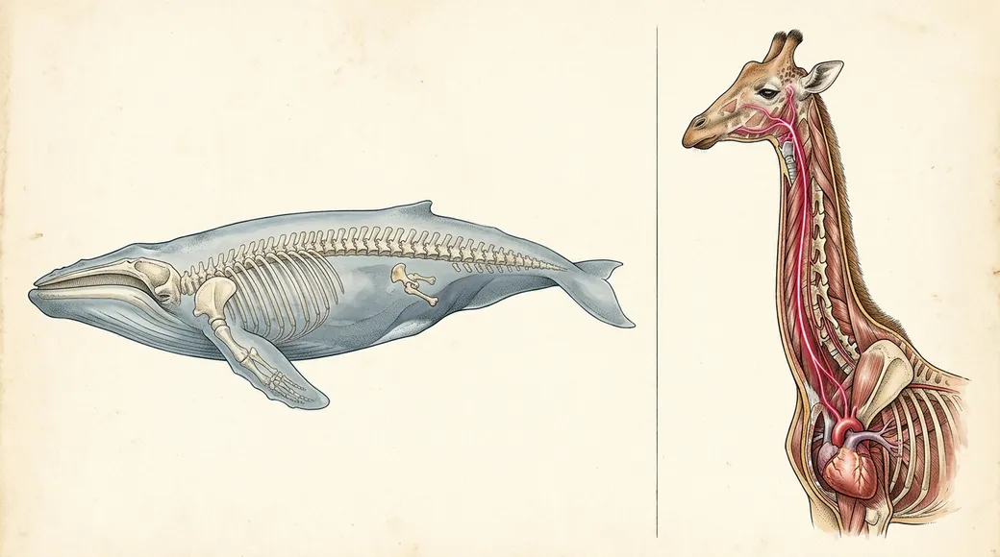
The tail. At the bottom of the human spine is the tailbone, made of three to five small vertebrae, the bones of the spine, fused together. Early in its growth a human embryo has a small tail. At about five weeks it holds the beginnings of ten to twelve vertebrae, more than the tailbone keeps. By the end of the eighth week the tail is gone, leaving the tailbone behind. John Fallon and B. K. Simandl of the University of Wisconsin, who followed the tail through these weeks under the microscope, found that its cells die off and are cleared away (American Journal of Anatomy, 1978).
In 2024 Bo Xia, a graduate student at New York University, and his colleagues reported in Nature that they had found the change in the DNA behind the loss of the tail in the ancestors of apes and humans. A short piece of stray DNA had landed inside TBXT, a gene that helps build the tail. The team changed mice so that they read their own TBXT the way apes and humans read theirs, and the mice were born with short tails or none. Humans and apes carry this stray piece of DNA at the same place inside TBXT. A piece of DNA very rarely lands at the same place by chance in two species, so biologists conclude that people and apes inherited it from one common ancestor.
The stray piece is an Alu element, a stretch of DNA about 300 letters long that makes copies of itself. The copies land in new places in the DNA, more or less at random, and human DNA now holds about a million of them. The Alu in TBXT landed in a part of the gene that the cell cuts out before it reads the gene, next to an older Alu that runs the opposite way. The two Alus pair up with each other. As a result, when the cell reads TBXT, it sometimes skips a whole section of the gene.
The Alu in the tail gene in each species
Anyone can see this shared insertion in public genome alignments. The Ensembl genome database publishes alignments that line up the same stretch of DNA in many species, letter by letter. In its alignment of TBXT, the Alu that Xia’s team found is of the kind called AluY. It sits in intron 6, the sixth of the parts that the cell cuts out of the gene before reading it. The older Alu that runs the opposite way sits in intron 5.
Before the cell reads a gene, it makes a copy of the gene called the gene’s message. The two Alus pair up and fold the message of TBXT, so that some copies of the message leave out exon 6, the section of the gene that lies between the two Alus.
In the human gene the AluY adds 290 letters. Humans, chimpanzees, gorillas, orangutans and gibbons all carry it, between the same letters on either side. Three monkeys of Africa and Asia, the rhesus macaque, the baboon and the green monkey, lack it. So do two monkeys of South America, the squirrel monkey and the night monkey, and the mouse lemur of Madagascar. In each of these species the letters on either side line up with the apes’ letters, with no Alu between them.
A nerve that goes by way of the chest. The nerve that runs from the brain to the voice box does not take the short way down the neck. It goes down into the chest, loops under a large blood vessel near the heart, and comes all the way back up the neck to the throat. In people the detour ends at the voice box a few centimeters from where it began. In 1838 the anatomist Richard Owen traced the same nerve in a giraffe and found that the detour is more than four meters long.
Biologists explain the detour by the older body plan of the fish, on which the bodies of animals with necks, people among them, are built. In a fish the heart lies just behind the gills, so the nerve passes under the blood vessel on a short path to the gills. On the biologists’ account, the nerve stayed hooked under the vessel and was drawn down with it as necks grew longer over many generations and the heart came to lie lower in the chest.
Teeth and legs in whale and dolphin embryos. Baleen whales have no teeth. They strain their food from seawater through plates of baleen that hang from the upper jaw. Yet before it is born a baleen whale grows the buds of teeth and then absorbs them. Neither whales nor dolphins have hind legs. In 2006 Hans Thewissen of the Northeastern Ohio Universities College of Medicine and his colleagues found that dolphin embryos begin to grow buds of hind limbs in their fifth week, and then the buds stop growing and shrink away. Biologists explain these passing buds by the four-legged land animals from which whales and dolphins descend.
Muscles that once turned the ears. Dogs, cats and monkeys turn their ears toward a sound. People have small muscles around the ear but can barely move it. In 2020 Daniel Strauss of Saarland University in Germany and his colleagues recorded the electrical activity of these muscles in people while sounds came from different sides. The muscles on the side of the sound tightened, as if to turn the ear toward it, although the movements were tiny. The team concluded that people have kept the remains of a system for pointing the ears toward sounds.
Muscles in the hands and feet of embryos. In 2019 Rui Diogo, Natalia Siomava and Yorick Gitton stained the hands and feet of human embryos and fetuses from about the seventh to the thirteenth week of pregnancy, so that each muscle could be seen whole (Development, 2019). They found several muscles that form for a time and then disappear, or fuse with other muscles, before birth.
By about the seventh week some 30 muscles have formed in the hand and foot, and about a third of them fuse with others or disappear by the thirteenth week. One set of these lost muscles, the dorsometacarpales on the back of the hand, is found in the adults of many other animals with limbs, lizards among them. The team says that these muscles disappeared from the adult ancestors of mammals more than 250 million years ago. Doctors now and then find some of these muscles in adults, either as a harmless variation or together with a birth defect. So for a few weeks a human embryo still builds muscles that belonged to distant four-legged ancestors, and then takes them apart.
Eyes that do not see. Biologists find that when a species moves into a new home, the organs and genes for senses it no longer uses break down. The caves of northeastern Mexico hold blind fish of the same species as the sighted fish in the waters outside. In 2000 Yoshiyuki Yamamoto and William Jeffery of the University of Maryland reported in Science that these cave fish begin to form eyes as embryos, and then the eyes waste away.
When Yamamoto and Jeffery put the lens of a sighted fish from the surface into the embryo of a blind cave fish, the cave fish grew a large eye with a pupil, a cornea and an iris. In 2008 Richard Borowsky of New York University crossed blind fish from different caves, and in some crosses nearly 40 percent of the young could see. Each cave population had lost its sight through mutations in different genes, so each parent supplied working copies of the genes that the other lacked (Current Biology, 2008).
The blind mole rat lives underground, and its shrunken eyes lie buried under its skin. In 1993 Howard Cooper, Marc Herbin and Eviatar Nevo reported in Nature that the parts of its brain that see shapes and movement are much reduced. Its eyes still sense light, which keeps the animal’s daily rhythm.
Genes for seeing color. The cells of the eye that sense color, called cones, use pigments, and each pigment is made by its own gene. People see red and green with two such genes that sit side by side on the X chromosome. The two genes are nearly identical, letter for letter, so biologists take them to be one gene that was copied in place. In 1986 Jeremy Nathans and his colleagues found that most inherited red-green color blindness comes from an uneven exchange between these two genes when the chromosome is copied for a child (Science, 1986). The two genes match so closely that the copying can slip from one to the other, as a copyist’s eye can skip between two nearly identical paragraphs on the same page.
Old World monkeys and apes carry the same two genes side by side, but most monkeys of the Americas have only one. Armadillos and sloths, which see poorly, carry broken cone genes. In 2015 Christopher Emerling and Mark Springer read these genes in armadillos, sloths, an extinct ground sloth and ten more of their relatives. Armadillos share the same breaks with other armadillos, and sloths share theirs with anteaters. So each set of breaks goes back to the common ancestor of its group (Proceedings of the Royal Society B, 2015).
A fish without red blood. The Antarctic icefish have clear blood, because they are the only fish without hemoglobin, the red substance that carries oxygen. Hemoglobin is built from two kinds of chains, alpha and beta. In 1995 Ennio Cocca, H. William Detrich and their colleagues found that the icefish’s gene for the beta chain is gone, but the icefish still carry the broken remains of the genes for the alpha chain (Proceedings of the National Academy of Sciences, 1995).
The icefish and their relatives keep from freezing in Antarctic waters with an antifreeze protein. In 1997 Liangbiao Chen, Arthur DeVries and Chi-Hing Christina Cheng found that the gene for this antifreeze came from a gene for trypsinogen, a digestive enzyme of the pancreas. Both ends of the antifreeze gene come from the old enzyme gene, and its middle is a stretch of nine letters copied over and over. From the small differences between the two genes, the team dated the change to about 5 to 14 million years ago. Geologists estimate that the Antarctic sea grew cold enough to freeze 10 to 14 million years ago, which overlaps that span (Proceedings of the National Academy of Sciences, 1997).
In each of these cases a body carries parts it does not use, or genes made over for a new use, and biologists trace each of them to earlier ancestors. A body designed from the start for the place where the animal lives would have no reason to carry them.
10.9Now and then an animal is born with a part that its species lacks and that its ancestors had, such as hind legs on a whale or an extra toe on a horse.Birds have beaks and no teeth. In 2006 scientists found that the embryos of a mutant strain of chicken grow teeth shaped like the teeth of a young alligator.Geneticists who read the DNA of 48 species of birds found the same broken genes for making the enamel of teeth in all of them.In 1919 whalers off Vancouver Island caught a humpback whale with two hind legs more than a meter long. The leg that was kept had the bones of a shin and a foot inside it.A horse walks on one toe. Now and then a horse is born with an extra toe at the side of the foot, where the fossil ancestors of the horse had toes.
Throwbacks
Teeth in a chicken. Birds have beaks and no teeth. In 2006 Matthew Harris, John Fallon and their colleagues at the University of Wisconsin reported that the embryos of a mutant strain of chicken called talpid2 grow cone-shaped teeth along the edge of the jaw. The teeth look like those of a young alligator, and the crocodiles and alligators are the closest living relatives of the birds.
In 2014 Robert Meredith, Mark Springer and their colleagues compared the genomes of 48 species of bird. In all of them they found the same disabling mutations in the genes that build the enamel and dentin of teeth. They concluded that the common ancestor of all living birds lost its teeth about 116 million years ago, and that all living birds inherited the broken genes from it.
A snout under the beak. In 2015 Bhart-Anjan Bhullar of Yale University, Arhat Abzhanov of Harvard and their colleagues found a zone in the middle of the face of a growing bird embryo where two genes that shape the face switch on. The embryos of alligators, lizards and turtles have no such zone. When the team blocked the proteins made in that zone in chicken embryos, the embryos grew a snout and palate shaped like those of Archaeopteryx and of small dinosaurs such as Velociraptor, instead of a beak (Evolution, 2015). So the chicken’s DNA can still build a snout like a dinosaur’s when the zone that shapes the beak is blocked.
Legs on a whale. A whale has no hind legs, only a few small bones buried where a land animal has its hips. In July 1919 whalers off the west coast of Vancouver Island caught a female humpback with a leg about four feet long sticking out on each side of the lower body. Roy Chapman Andrews of the American Museum of Natural History studied the bones of one leg. He found a shin bone, a bone of the foot, and cartilage for a thigh bone and an ankle (American Museum Novitates, 1921).
Toes on a horse. The earliest fossil horses, about 52 million years old, had four hoofed toes on each front foot and three on each hind foot. A horse today walks on one toe, with a thin splint bone on each side, which is what remains of a side toe. In 1892 Othniel Marsh of Yale described horses born with an extra toe beside the main one, where the fossil ancestors of the horse had toes.
Biologists explain the teeth in the chicken embryos, the hind legs on the humpback and the extra toes on the horse in the same way. The animal’s DNA still carries instructions for these parts from its ancestors, and a mutation switches them back on. Some call these random birth defects. But random damage spoils the parts an animal already has; it does not build a working part of another group of animals. It cannot explain why a mutation gives a chicken teeth like an alligator’s, or a whale a shin and a foot. A chicken created as a bird with a beak would have no reason to carry unused instructions for teeth, or broken genes for tooth enamel.
11. Adam, Chavah and early humans
Man is the last thing created on the Sixth Day: Hashem forms Adam from the dust of the ground and breathes life into him (2:7). By the Jewish count that was 5,787 years ago, in 3760 BCE. Adam has no parents, and the Torah calls his wife Chavah “the mother of all living” (3:20), so every human being who has ever lived descends from the two of them. Scientists find that people lived long before that. They base this on human bones, on the things people made, and on the DNA of people alive today.
One answer is that the people who lived before Adam were not human in the Torah’s sense, but creatures in human form without the soul that Hashem gave Adam. Some writers identify the earlier human species with the adnei hasadeh, creatures that the Mishnah counts as wild animals (Kilayim 8:5) and that the Rambam describes as looking like people. Others point to the Gemara that describes beings born to Adam and Chavah after the sin and before Shes was born (Eruvin 18b). These writers take such sources as precedent for the idea that earlier human populations, such as the Neanderthals, who died out about 40,000 years ago, had human bodies without human minds.
This answer does not fit what archaeologists and geneticists have found. These earlier populations behaved like human beings. They made beads, painted on cave walls, buried their dead and wore clothes, and scientists date all of these to well before 60,000 years ago. Living people also carry their DNA. So they were not a separate line of animals but part of our own ancestry.
11.1Human bones and tools lie in layers dated hundreds of thousands of years before Adam. The oldest bones of our own species are about 315,000 years old, and the oldest stone tools about 3.3 million.The oldest bones of our own species that have been found come from Jebel Irhoud in Morocco. They lay in the same layer as flint tools that had been heated in a fire, and the burned flints are about 315,000 years old.People in Ethiopia and in India lived through the eruption of the Toba volcano, about 74,000 years ago. Its ash lies in the layers of their camps.Before our species there were earlier human species. Remains of one of them, Homo erectus, are about two million years old in Africa, and handaxes of that age lie at ‘Ubeidiya in the Jordan Valley.The oldest stone tools that have been found are about 3.3 million years old.Core
Human bones and tools
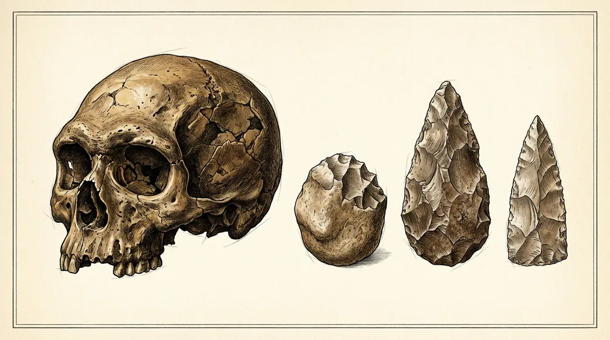
Jebel Irhoud. The oldest bones of our own species that have been found come from Jebel Irhoud, a hill in Morocco. In 1961 miners digging there for minerals came upon a skull in the wall of a cave. From 2004 a team led by Jean-Jacques Hublin of the Max Planck Institute in Leipzig dug at the site again and found the bones of at least five people: three adults, a youth and a child.
The date of the bones comes from flint tools that had been heated in fires at the site. Crystals in flint slowly store up energy from the natural radiation in the ground around them, and the heat of a fire empties that store to zero. By measuring how much energy a burned flint has stored since then, scientists can work out when it was heated. In 2017 Richter and his colleagues used this method on burned flints from the same layer as the bones and dated them to about 315,000 years ago, give or take 34,000 years. That puts people of our own species at Jebel Irhoud more than 300,000 years before the Torah’s date for Adam.
The Toba eruption. Toba is a volcano on the Indonesian island of Sumatra. It erupted about 74,000 years ago, in one of the largest eruptions known to geologists, and its ash spread over much of Asia and beyond. Volcanic ash is made of tiny shards of glass, and the glass of each eruption has its own chemical makeup. So geologists can recognize Toba’s ash wherever it fell. Where they find it in the layers of a human camp, they know that those layers were laid down about 74,000 years ago.
At Shinfa-Metema 1, in the lowlands of northwestern Ethiopia, John Kappelman and his colleagues found glass shards from Toba in the layers of an ancient human camp (Nature, 2024). The team concluded that the people there got through a long dry season mostly by catching fish in the shrinking waterholes of a seasonal river, probably with bows and arrows. People in Ethiopia were hunting and fishing with advanced tools about 68,000 years before Adam.
At Dhaba, in the Son River valley of northern India, Chris Clarkson, Michael Petraglia and their colleagues found the same kind of stone tools in layers from both before and after the eruption. They dated these layers by luminescence, which measures how long ago grains of sand were last exposed to sunlight, to between about 79,600 and 65,200 years ago, a span that brackets the eruption (Nature Communications, 2020). So people were living in northern India both before and after Toba erupted, about 68,000 years before the Torah’s date for Adam.
Denisova Cave. The Denisovans were an earlier human species, related to the Neanderthals. They are named after Denisova Cave in southern Siberia, where their first bone was found. Digging in the cave has turned up only about a dozen bones of human species. In 2021 Elena Zavala, Zenobia Jacobs, Matthias Meyer and their colleagues took 728 samples of soil in a grid across the cave’s layers and searched them for mitochondrial DNA. (Mitochondrial DNA is the small store of DNA inside the mitochondria, the parts of each cell that turn food into energy.) They found the mitochondrial DNA of animals in 685 of the samples. In 175 of them they found the mitochondrial DNA of Denisovans, Neanderthals and modern humans (Nature, 2021). This let them follow all three human groups, layer by layer, through tens of thousands of years.
The oldest human DNA in the cave was Denisovan. It lay with stone tools in layers laid down between about 250,000 and 170,000 years ago. Neanderthal DNA first appears in layers near the end of that period, and the team found that both groups came back to the cave again and again. The DNA of modern humans first appears in layers at least 45,000 years old. People of our own species were living in Denisova Cave at least 39,000 years before the Torah’s date for Adam.
Ancient DNA from France and Spain. In 2026 Pere Gelabert, Ron Pinhasi and their colleagues at the University of Vienna read the DNA of a woman who lived about 30,000 years ago, from a bone found in Isturitz Cave in southwestern France. Most of her ancestry was like that of other western Europeans of her time, and a smaller part came from central and eastern Europe. From her DNA the team worked out that these two groups had mixed between 32,500 and 31,500 years ago. So more than twenty-five thousand years before the Torah’s date for Adam, the people of Europe had already split into separate groups, and these groups were moving across Europe and marrying one another.
The same team also recovered human DNA from the dirt of El Mirón Cave in northern Spain. It came from a layer dated to about 22,000 years ago, in which no human bone or tooth had been found (Science Advances, 2026).
Earlier human species. Scientists date the remains of Homo erectus in Africa to about two million years ago. Soon afterward members of this species spread as far as Georgia (the country in the Caucasus), China and Indonesia. Early humans reached Eretz Yisrael as well. Since 1959 archaeologists have been digging at ‘Ubeidiya, in the Jordan Valley about three kilometers south of the Kinneret. Its layers hold stone handaxes of the kind archaeologists call Acheulean, together with the bones of animals such as the hippopotamus. For many years scholars dated these layers to about 1.2 to 1.6 million years ago, by comparing the animal bones and the tools with those found at other sites.
In 2026 Ari Matmon of the Hebrew University, with Miriam Belmaker, Omry Barzilai and their colleagues, dated the layers of ‘Ubeidiya by three separate methods:
- They measured the direction of the Earth’s magnetic field that is preserved in the layers, and found that the layers formed before the last time the magnetic field reversed.
- They measured how much uranium had decayed into lead in fossil snail shells.
- They measured how many of the rare atoms that cosmic rays produce in quartz grains near the surface had decayed since the grains were buried.
Combining the three, the team dated the layers to at least 1.9 million years ago (Quaternary Science Reviews, 2026). Early humans were shaping stone handaxes in the Jordan Valley nearly two million years before Creation.
At Thomas Quarry I in Casablanca, Morocco, a cave called the Grotte à Hominidés has yielded human-like jaws, teeth and vertebrae. In January 2026 a team led by Jean-Jacques Hublin of the Collège de France and the Max Planck Institute for Evolutionary Anthropology dated these fossils to 773,000 years ago, give or take 4,000 years (Nature, 2026). They got this age by finding the last reversal of the Earth’s magnetic field in the layers around the fossils. From the shapes of the jaws and teeth, the team concluded that these individuals lived near the root of the line that led to our own species. That puts early ancestors of ours in North Africa about 767,000 years before Adam.
Sima de los Huesos. The Sima de los Huesos (“the pit of bones”), a narrow cave shaft thirteen meters deep in the Atapuerca hills of northern Spain, holds thousands of human bones from at least 28 individuals. In 2016 Matthias Meyer of the Max Planck Institute for Evolutionary Anthropology in Leipzig and his colleagues (Nature, 2016) recovered nuclear DNA, the kind inherited from both parents, from two of these bones. The DNA shared more of its distinctive mutations with the Neanderthals than with the Denisovans. From this the team concluded that by the time these 28 people lived, the Neanderthals and the Denisovans had already split into separate branches. The conclusion depends only on which mutations the bones share with each branch. It does not depend on any estimate of how fast mutations build up.
Geologists dated the layers of dirt around the bones separately. Earlier studies dated the layers above and around the bones to about 430,000 years ago (Arnold et al., Journal of Human Evolution, 2014). In 2019 a study dated single grains of quartz from the layer that holds the bones (unit LU-6) by luminescence. It dated the layer to 457,000 ± 41,000 and 460,000 ± 39,000 years ago. Combining all the dated layers gave a narrower age of 448,000 ± 15,000 years (Demuro et al., Journal of Human Evolution, 2019; open-access PDF). The human branches had therefore split apart more than 420,000 years before the Torah’s date for Adam.
In 2026 archaeologists from the Israel Antiquities Authority and the University of Haifa, led by Kobi Vardi, Amit Gabay and Ron Shimelmitz, reported on a cave they were digging at Fureidis, south of Haifa. Inside they found flint handaxes and scrapers, bones of fallow deer, gazelles and horses, and signs that fire had been used. The tools belong to the culture that archaeologists call Acheulo-Yabrudian, so the team dates the cave to between about 400,000 and 250,000 years ago. (The 2026 reports give no measured date for the cave itself.) On that dating, people were making tools and using fire in Eretz Yisrael hundreds of thousands of years before Adam.
The oldest stone tools. In 2011 a team led by Sonia Harmand and Jason Lewis of Stony Brook University found stone tools, struck on purpose, on a slope along the western shore of Lake Turkana in Kenya. Scientists date the layer that holds them to 3.3 million years ago, more than three million years before Creation. (That date is older than the oldest known bones of Homo, the group of species to which ours belongs, so no one knows what creatures made the tools.)
The oldest known remains of fires are much younger than these tools. They lie in a layer about a million years old in Wonderwerk Cave in South Africa. On these dates, human beings were making tools and using fire for a million years or more before Adam.
11.2Chazal tell how the first people came to wear clothes, to bury their dead and to make fire. Archaeologists date each of these long before the Torah’s date for Adam.Adam and Chavah were naked until after the sin, when Hashem made them garments of skin (3:7, 3:21). Scientists who study lice find that the louse that lives only in clothing split off from the head louse at least 83,000 years ago, so people were wearing clothes by then.Chazal say that Adam and Chavah learned to bury the dead from a raven when Hevel died (Pirkei d’Rabbi Eliezer 21). Archaeologists have found people who were buried in caves in the Galil and on the Carmel about 100,000 years ago.The Gemara says that Adam made the first fire when the first Shabbos went out (Pesachim 54a). Archaeologists have found the remains of fires in a cave in South Africa from about a million years ago.Archaeologists also find many other things that people made long before Adam. They have found shell beads in a cave in Morocco that are at least 142,000 years old, and a hand that was painted on a cave wall in Indonesia at least 67,800 years ago.Core
Clothes, burial and fire
Clothes. Adam and Chavah were naked; after they ate from the tree they sewed fig leaves into coverings, and Hashem made them garments of skin (2:25, 3:7, 3:21).
Scientists who study lice have found that people were wearing clothes long before then. People carry two closely related species of louse. The head louse lives in the hair. The clothing louse lives in the seams of clothes and cannot survive on a naked body, so it cannot be older than clothing. In 2011 David Reed of the Florida Museum of Natural History, who studies lice, and his colleagues Melissa Toups, Andrew Kitchen and Jessica Light compared the DNA of the two species. They wanted to find out when the clothing louse split off from the head louse, and so when people began to wear clothes. They found that the split happened at least 83,000 years ago, and possibly as early as 170,000 years ago. On these dates, people were wearing clothes at least 77,000 years before Hashem made the garments of skin.
People were also making cord and thread long before Adam. At the Abri du Maras, a rock shelter in southern France, Bruce Hardy of Kenyon College, Marie-Hélène Moncel and their colleagues found a scrap of cord six millimeters long stuck to a stone tool. Under the microscope it turned out to be three bundles of fibers from the inner bark of a tree. Each bundle had been twisted one way, and then the three had been twisted together the other way. The team dated the layer that held the tool to between about 41,000 and 52,000 years ago. They noted that twisted fiber is the basis of clothing, rope, bags, nets and mats (Scientific Reports, 2020). Neanderthals made this cord tens of thousands of years before Adam.
A spindle is a stick that is turned to twist fibers into thread. A weight fixed to it, called a whorl, keeps it spinning. Nahal Ein Gev II, about two kilometers east of the Kinneret, was a village of the Natufians, hunter-gatherers who built some of the earliest villages in the Levant, along the eastern coast of the Mediterranean. Archaeologists date the village to about 12,000 years ago. The excavators there found 113 small stones with holes bored through them. In 2024 Talia Yashuv and Leore Grosman of the Hebrew University scanned the stones in three dimensions. They found that each hole passed through the stone’s center of mass, as the hole of a whorl must if the spindle is to turn evenly. A craftswoman made copies of the stones from pebbles from the shore of the Kinneret and spun flax with them. The team concluded that the stones could have served as whorls for spinning thread (PLOS ONE, 2024). If so, people were spinning thread beside the Kinneret more than six thousand years before Hashem made garments for Adam and Chavah.
Burial. In the Torah, Hevel is the first person to die. The Midrash says that Adam and Chavah sat weeping over his body and did not know what to do with it, because they had never seen a burial. Then a raven dug into the earth in front of them and buried its dead mate, and Adam did the same with Hevel (Pirkei d’Rabbi Eliezer 21). On this account the first burial took place in Adam’s lifetime, less than 5,787 years ago.
וְהָיוּ אָדָם וְעֶזְרוֹ יוֹשְׁבִים וּבוֹכִים וּמִתְאַבְּלִים עָלָיו, וְלֹא הָיוּ יוֹדְעִים מַה לַּעֲשׂוֹת לְהֶבֶל שֶׁלֹּא הָיוּ נְהוּגִים בִּקְבוּרָה. בָּא עוֹרֵב אֶחָד שֶׁמֵּת לוֹ אֶחָד מֵחֲבֵרָיו, לָקַח אוֹתוֹ וְחָפַר בָּאָרֶץ וְטָמְנוֹ לְעֵינֵיהֶם. אָמַר אָדָם: ״כָּעוֹרֵב אֲנִי עוֹשֶׂה״. מִיָּד לָקַח נִבְלָתוֹ שֶׁל הֶבֶל וְחָפַר בָּאָרֶץ וּטְמָנָהּ.
Adam and his helpmate sat weeping and mourning over him, and they did not know what to do with Hevel, for they were unaccustomed to burial. A raven came whose fellow had died; it took it, dug into the earth, and buried it before their eyes. Adam said, “I will do like the raven.” Immediately he took Hevel’s body, dug into the earth, and buried it.
Archaeologists have found that people were burying their dead about a hundred thousand years before that, and some of the oldest known graves are in Eretz Yisrael. In Qafzeh Cave near Natzeres and Skhul Cave on the Carmel, archaeologists uncovered the skeletons of more than twenty people who had been laid in graves. One of them, a child at Qafzeh, was buried with deer antlers lying across its chest.
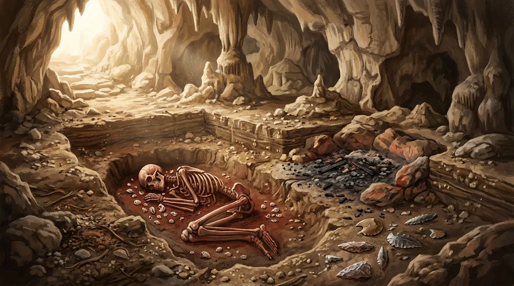
In 1988 Hélène Valladas and her colleagues dated burned flints from the burial layers at Qafzeh to about 92,000 years ago. They measured the energy stored in the flints since they were burned, the same method that was used at Jebel Irhoud. In 1993 Mercier, Valladas and their colleagues used the same method on burned flints from the burial layer at Skhul and dated them to about 119,000 years ago, give or take 18,000 years. The people of Qafzeh and Skhul were burying their dead more than 85,000 years before Hevel died.
At Tinshemet Cave in central Israel, a team led by Yossi Zaidner of the Hebrew University found the remains of five people. Among them were an adult and a child laid on their sides with their legs drawn up tightly. Large lumps of red ochre had been put in the graves. (Ochre is a red or yellow earth that people grind into powder for paint.) The ochre was brought from 60 to 80 kilometers away, and perhaps from more than 100 kilometers away.
Zaidner’s team dated both burned flints and grains of sand from the burial layers. They used the stored-energy method for the flints, and for the sand they used luminescence. Both methods gave an age of about 100,000 years (Nature Human Behaviour, 2025). The people of Tinshemet were burying their dead more than ninety thousand years before Hevel.
In 1908 excavators found the skeleton of an old Neanderthal man in a cave at La Chapelle-aux-Saints in France. In 2013 a team led by William Rendu dug at the site again and showed that he had been laid in a pit that was dug, at least in part, to bury him. Like the dead of Qafzeh and Skhul, this Neanderthal was buried by others, long before Adam.
In Liang Tebo, a cave in eastern Borneo, Tim Maloney, Maxime Aubert and their colleagues found the grave of a young person whose left leg had been cut off below the knee, probably in childhood. The bone had healed cleanly, so the researchers concluded that the person survived the operation, lived another six to nine years and was later buried with care. Surgery and years of care for a patient are human behavior, not animal behavior.
The team dated charcoal from the grave and from the layer just above it by radiocarbon, and dated a tooth by uranium decay and by stored radiation energy. The radiocarbon and uranium measurements put the burial between about 31,200 and 30,700 years ago (Nature, 2022). So hunter-gatherers were performing surgery, and caring for the patient for years afterward, about 25,000 years before the Torah’s date for Adam.
In 1914 a grave was uncovered at Oberkassel, now part of Bonn in Germany. It held the skeletons of a man and a woman, together with the bones of a dog. In 2018 Luc Janssens, a veterinarian studying archaeology at Leiden University, and his colleagues examined the animal bones again and found that they came from two dogs. The younger dog was about 28 weeks old when it died. From lines in its tooth enamel and damage in its mouth, the team concluded that the puppy had fallen gravely ill at about 19 weeks of age, and again at about 21 and 23 weeks. The illness was most likely canine distemper, a disease that often kills dogs.
The team concluded that the puppy would most likely not have survived without intensive care from people, even though a sick puppy was of no use as a working animal (Journal of Archaeological Science, 2018). Radiocarbon dating of the dog’s bones puts the burial between about 12,290 and 12,050 BCE, about 14,200 years ago. At the time of the study it was the oldest known grave of a tame dog, and the oldest known burial of dogs together with people. These people were burying their dead, and nursing a sick animal, more than eight thousand years before Adam.
Cats are not native to Cyprus, an island in the eastern Mediterranean, so archaeologists conclude that people brought the cats whose bones are found there from the mainland. Shillourokambos was an early farming village on Cyprus, lived in between about 8300 and 7000 BCE. There Jean-Denis Vigne of the National Museum of Natural History in Paris and his colleagues uncovered the grave of a person buried with polished stones, tools and ornaments.
Forty centimeters away lay the whole skeleton of a cat that had not been butchered for food. The team concluded that someone had put the cat in a small pit and quickly covered it, and they dated the burial to about 9,500 years ago (Science, 2004). The archaeologists regarded the burial as the oldest known evidence of a close bond between people and cats. People were carrying animals across the sea, and burying a cat beside one of their dead, more than three thousand years before Adam.
Fire. The Gemara says that Hashem thought of creating fire on the first erev Shabbos, and that fire was made only when that Shabbos went out. Then Hashem gave Adam understanding, “and he brought two stones and rubbed them against each other, and fire came out of them” (Pesachim 54a). This account is the reason given for saying the brachah on fire on Motzaei Shabbos.
דְּתַנְיָא, רַבִּי יוֹסֵי אוֹמֵר: שְׁנֵי דְבָרִים עָלוּ בְּמַחְשָׁבָה לִיבָּרְאוֹת בְּעֶרֶב שַׁבָּת, וְלֹא נִבְרְאוּ עַד מוֹצָאֵי שַׁבָּת, וּבְמוֹצָאֵי שַׁבָּת נָתַן הַקָּדוֹשׁ בָּרוּךְ הוּא דֵּיעָה בְּאָדָם הָרִאשׁוֹן מֵעֵין דּוּגְמָא שֶׁל מַעְלָה, וְהֵבִיא שְׁנֵי אֲבָנִים וּטְחָנָן זוֹ בָּזוֹ, וְיָצָא מֵהֶן אוּר.
As it was taught in a baraita, Rabbi Yosei says: Two things arose in thought to be created on erev Shabbos, and were not created until Motzaei Shabbos. On Motzaei Shabbos the Holy One, blessed be He, gave Adam understanding akin to that on high, and he brought two stones and rubbed them against each other, and fire came out of them.
In 2012 archaeologists led by Francesco Berna of Boston University reported that in Wonderwerk Cave in South Africa they had found burned plant ash and burned pieces of bone among stone tools, in a layer about a million years old. That layer lies thirty meters inside the cave, beyond the reach of any brush fire outside. So the people who left the tools there made their fires inside the cave. On these dates, people were burning fires in Wonderwerk Cave about a million years before the first Motzaei Shabbos.
At Gesher Benot Ya’aqov, on the Jordan River north of the Kinneret, Naama Goren-Inbar of the Hebrew University and her colleagues found burned seeds, wood and flint in layers dated to nearly 790,000 years ago. The burned flint lay in distinct clusters, and the team identified these spots as hearths (Science, 2004). In 2022 Irit Zohar and her colleagues studied more than 40,000 fish remains from the same site.
Across eight layers, one on top of another, nearly all of these remains were the throat teeth of two species of large carp, and most of them lay near the clusters of burned flint. Zohar’s team examined the crystals in the teeth with X-rays. The teeth had been heated, but to less than 500 degrees Celsius, which is not hot enough to burn them. From this the team concluded that people had cooked the fish and eaten them there, about 780,000 years ago (Nature Ecology & Evolution, 2022). People were cooking over fires in Eretz Yisrael hundreds of thousands of years before the first Motzaei Shabbos.
Keeping a fire going is not the same as starting one. The people of Wonderwerk Cave could have kept up a fire started by lightning, while the Gemara speaks of the first fire struck from stone. At Barnham in Suffolk, England, a British Museum team led by Rob Davis and Nick Ashton uncovered a hearth area where fires had been lit again and again. Beside it lay flint handaxes cracked by heat, and two pieces of iron pyrite, a mineral that throws sparks when it is struck against flint.
Pyrite is rare in that area, so the team concluded that the people at Barnham brought it there on purpose, to strike fire. They dated the site to about 400,000 years ago (Nature, 2025). The researchers note that the people who made these fires were early Neanderthals or another early human species, and that the striking of pyrite is their inference from all the finds taken together. On these dates, people were striking fire from stone hundreds of thousands of years before Adam did so on the first Motzaei Shabbos.
Other early crafts
Beads and paint. Bizmoune Cave lies about fifteen kilometers inland from Essaouira on Morocco’s Atlantic coast. There a team led by Steven Kuhn of the University of Arizona and Abdeljalil Bouzouggar of Morocco’s national institute of archaeology found 33 beads made from the shells of sea snails, each with a hole for stringing. The team dated the beads to at least 142,000 years ago (2021). People were making ornaments for themselves more than 135,000 years before the Torah’s date for Adam.
In Blombos Cave in South Africa, a team led by Christopher Henshilwood of the University of the Witwatersrand found two kits for making paint, lying where their makers had left them. In each kit the shell of an abalone (a large sea snail) served as a bowl, and with it lay ochre, stones for grinding and pounding, bone and charcoal. The team concluded that the makers ground and crushed the ochre into powder on flat stones.

Then, according to the team, the makers mixed the ochre powder in the abalone shells with heated and crushed bone, charcoal, chips of stone and a liquid. The team dated the sand that buried the two kits by luminescence to about 100,000 years ago (Science, 2011). People were making paint, in several deliberate steps, tens of thousands of years before Adam.
In a cave called Liang Metanduno on Muna Island in Indonesia, someone once pressed a hand against the rock wall and blew paint around it, leaving the outline of the hand. Over time a thin crust of minerals formed over the paint. In 2026 a team of Indonesian and Australian archaeologists, including Adam Brumm and Maxime Aubert of Griffith University, dated the crust by measuring how much of the uranium in it had decayed. The crust is at least 67,800 years old, so the outline of the hand under it is older still. People were making art on cave walls in Indonesia more than 60,000 years before Adam.
Pottery and clay figures. Pottery is never made by accident, because the clay has to be shaped and then fired hot enough to harden. The oldest known pieces of pottery come from Xianrendong Cave in Jiangxi province, in southern China. In 2012 a team led by Wu Xiaohong of Peking University, working with Ofer Bar-Yosef of Harvard, dated the layers around the pieces to about 20,000 years ago by radiocarbon. Many of the pieces are scorched by fire, so the pots were used for cooking. The people who cooked in them lived by hunting and gathering, long before anyone farmed and about 14,000 years before the Torah’s date for Adam.
The Natufians, the villagers of Nahal Ein Gev by the Kinneret, also shaped figures from clay. In 2026 Laurent Davin of the Hebrew University and his colleagues, including Mina Weinstein-Evron, Reuven Yeshurun and Leore Grosman, reported 154 figurines and other shaped clay objects from three Natufian sites in Israel: Eynan-Mallaha in the Hula Valley, el-Wad on the Carmel and Hayonim in the western Galil. Several pieces seem to show birds, other animals and people, and some still carry traces of red or orange pigment. From fingerprints, fingertip marks and palm prints left in the clay, the team determined that both adults and children shaped the objects.
Archaeologists date the Natufian settlement of these sites to between about 15,000 and 11,650 years ago (PLOS One, 2026). The team calls these pieces the oldest known tradition of clay figurines in southwestern Asia. The earliest of them were shaped more than three thousand years before farming began in the region, about 11,500 years ago, and more than nine thousand years before the Torah’s date for Adam.
Fishing. Jerimalai is a rock shelter at the eastern end of East Timor, on the island of Timor north of Australia. In 2011 Sue O’Connor, Rintaro Ono and Chris Clarkson reported that they had found bones of many species of fish there, in layers dated to 42,000 years ago. Among them were fish of the open sea, such as tuna. Catching fish in the open sea takes careful planning and gear for going to sea, so the team concluded that the people of Jerimalai fished in deep water (Science, 2011). People were fishing in deep water there tens of thousands of years before Adam. The excavations also turned up one of the oldest known fishhooks, made of shell, which O’Connor dates to between 23,000 and 16,000 years ago.
In 1931 the trawler Colinda was dragging its net along the seabed, about 37 meters down, near the Leman and Ower Banks off the coast of Norfolk, England. In a block of peat that came up in the net, the skipper, Pilgrim Lockwood, found a point 22 centimeters long, carved from antler, with barbs along its edge. Peat forms in bogs on dry land, so archaeologists conclude that the point first lay on land that the sea now covers.
Archaeologists call this drowned land Doggerland. Hunters lived there at the end of the last ice age and afterward, until the rising sea covered it about 8,000 years ago, and fishing boats have since brought up many more tools of bone, antler and stone from the floor of the North Sea. Oxford’s radiocarbon laboratory dated the antler of the Colinda point, and in 1991 Rupert Housley and his colleagues published a radiocarbon age of 11,740 years, give or take 150. Calibrated against counted tree rings, that age falls between about 12,050 and 11,350 BCE, more than seven thousand years before the Torah’s date for Adam.
Building with wood and stone. Wood usually rots, so very little ancient woodwork survives. At Kalambo Falls in Zambia, wet sediment on a riverbank preserved it. There a team led by Lawrence Barham of the University of Liverpool found two logs lying across one another, locked together by a notch that someone had cut.
The team dated the sand around the logs by luminescence to at least 476,000 years ago. In younger layers at the same site, from 390,000 to 324,000 years ago, they also found four wooden tools, including a wedge and a digging stick (Nature, 2023). People were working wood hundreds of thousands of years before Creation.
Wooden tools. At Marathousa 1, in the Megalopolis valley of Greece, archaeologists found an alder trunk with carving and chopping marks, and a small tool made of willow or poplar. Both lay beside the bones of an elephant that early humans had butchered. Annemieke Milks of the University of Reading, Katerina Harvati of the University of Tübingen and their colleagues described the tools and dated the site to about 430,000 years ago (Proceedings of the National Academy of Sciences, 2026).
At Schöningen in Germany, archaeologists in the 1990s uncovered the most complete ancient wooden hunting spears ever found. Earlier estimates put the spears at about 400,000 years old, and later ones at about 300,000. In 2025 Jarod Hutson, Olaf Jöris and their colleagues dated the layer of the spears again. They measured the slow chemical change in the amino acids of the small lids that close the shells of water snails found in the same layer. Their results put the spears at about 200,000 years ago (Science Advances, 2025), still about 194,000 years before the Torah’s date for Adam.

Deep inside Bruniquel Cave in southwestern France, 336 meters from the entrance, someone broke off stalagmites (the stone columns that rise from a cave floor) and arranged the pieces in rings. Jacques Jaubert, Sophie Verheyden, Dominique Genty and their colleagues found traces of fire on the rings. The builders therefore worked by firelight, in a part of the cave that daylight never reaches.
Since the rings were built, new stone has grown over them and over the broken ends of the stalagmites. The team measured the decay of uranium in this new stone and found that the rings were built 176,500 years ago, give or take 2,100 years (Nature, 2016). Later, rockfalls, layers of stone that grew over the fallen rock, and heaps of rubble sealed the cave. It stayed closed until cavers dug through the collapsed entrance in 1990.
In 2026 Kim Génuite, Sophie Verheyden, Jacques Jaubert and their colleagues mapped the original entrance and dated the layers of stone that had formed inside it, again by the decay of uranium. They found that the cave was already sealed before 142,900 years ago, give or take 1,300 years (Quaternary Science Reviews, 2026). So no one could have entered the cave to build the rings after that time. This team dated stone at the old entrance, not the stone that covers the rings, so their date does not depend on the measurements of the 2016 study. Archaeologists believe that the builders of Bruniquel were early Neanderthals.
Glue. Neanderthals made birch tar (also called birch pitch), the glue made by heating birch bark. The Zandmotor is a stretch of the Dutch coast built from sand dredged off the floor of the North Sea. Along it Marcel Niekus and his colleagues examined a flint flake partly wrapped in a lump of birch tar that served as a grip. Radiocarbon dating put the tar at about 50,000 years ago, about 44,000 years before Adam. From that date and the source of the sand, the team linked the find to Neanderthal tools and bone dredged from the same deposit (Proceedings of the National Academy of Sciences, 2019).
At Campitello Quarry in Tuscany, Italy, archaeologists found birch tar on two flint flakes in a layer dated to about 200,000 years ago. (Archaeologists still debate exactly how Neanderthals made their tar.)
Sea voyages. Obsidian is a black volcanic glass that breaks into very sharp edges, and the obsidian of each volcano has its own chemical makeup. In Franchthi Cave in southern Greece, archaeologists found obsidian from the island of Melos, about 150 kilometers away across the sea. Small amounts of it appear in layers left by the last hunters of the ice age. Larger amounts appear in the layers of the hunters and fishers who came after them, dated to about 8700 to 7500 BCE. Archaeologists take this obsidian as evidence that people sailed to Melos and back thousands of years before the date of Adam.
La Marmotta was an early farming village on the shore of Lake Bracciano, northwest of Rome. The site now lies under eight meters of water and three meters of mud, which preserved its wood. Archaeologists who dug the site between 1992 and 2006 found five canoes, each hollowed out of a single tree trunk. The largest, made of oak, is 10.43 meters long, with four ribs left standing across its floor to strengthen the hull. The others are made of alder, poplar and beech. In 2024 Juan Gibaja and his colleagues dated the canoes by radiocarbon.
Gibaja’s team dated the two oldest canoes to about 5620–5480 BCE and the largest to about 5305–5045 BCE (PLOS ONE, 2024). Some of the obsidian found at La Marmotta came from the islands of Lipari and Palmarola, and the lake connects to the Mediterranean by a river 38 kilometers long. So the team concludes that these canoes went out on the open sea as well as on the lake. A copy of the largest canoe has made such a voyage: in 1998 a team led by Radomír Tichý built one and took it more than 800 kilometers along the coast of the Mediterranean. On Gibaja’s dates, the people of La Marmotta were making these canoes about 13 to 19 centuries before Creation.
Mining. Flint lies in beds inside chalk. At Spiennes, near Mons in Belgium, Stone Age miners dug shafts as deep as 16 meters through the chalk to reach it, and in places they cut galleries outward from the bottom of a shaft. The chips they struck off while shaping the flint lie spread over about a hundred hectares, the remains of organized mining on a large scale.
In 2016 Hélène Collet, Philippe Lavachery and Michel Woodbury of the public service of Wallonia gathered the 33 radiocarbon dates from Spiennes. They concluded that mining began around 4350 BCE (one shaft was dug between about 4450 and 4350 BCE) and ended by about 2800 BCE, or possibly as late as 2300 BCE (Journal of Lithic Studies, 2016). On the archaeologists’ dates, the miners of Spiennes had already been digging for about six hundred years by 3760 BCE, the year of Adam’s creation, and they kept digging for nearly a thousand to fifteen hundred years afterward, through Adam’s whole lifetime.
11.3In 3760 BCE, the year of Adam’s creation, towns of thousands of houses were already standing, and people went on living in them through that year. Geneticists trace farming families through seven generations in France centuries before that year, and through five generations in England within about 160 years after it.At Maidanetske, in Ukraine, about 3,000 houses stood in rings around an open square. Archaeologists date the town by radiocarbon to between about 3960 and 3650 BCE, and its busiest century to between 3800 and 3700 BCE.At Eridu, in the south of Iraq, eighteen buildings of mud brick stand one on top of another. Archaeologists date the lowest to about 5300 BCE and the highest to about 3200 BCE. About 2100 BCE King Ur-Nammu of Ur rebuilt the temple of the god Enki at Eridu.At Hazleton North, in the Cotswolds in England, 27 of the 35 people buried in one stone tomb belong to one five-generation family. Radiocarbon dates place the tomb’s main burial phase at about 3700 to 3600 BCE, 60 to 160 years after Creation by the Jewish count, while the sole fifth-generation individual (SP4m) has no direct date.At Gurgy, in France, most of the more than a hundred people buried in one cemetery belong to two family trees that span seven generations. Archaeologists date the cemetery to about 4850 to 4500 BCE.A woman who chewed a lump of birch pitch in Denmark between about 3908 and 3711 BCE descended from hunter-gatherers who had lived there for more than four thousand years.
Towns in 3760 BCE
Maidanetske. Archaeologists call the farming communities that lived between the Southern Bug and the Dnieper rivers, in what is now Ukraine, the Trypillia culture. Some of their settlements covered hundreds of hectares. Between 1971 and 1991 a team led by Mykhailo Shmaglij studied one of them, Maidanetske, and mapped its buried houses by measuring small differences in the magnetism of the ground. The settlement they mapped covered about 200 hectares. It had about 3,000 rectangular houses, arranged in rings around an open space of about 25 hectares, up to eight rings deep in places.
About 2,300 of the houses were burned on purpose after the people living in them had left (Cheryl Makarewicz, Robert Hofmann, Mykhailo Videiko and Johannes Müller, Antiquity, 2022). From radiocarbon dates on charcoal and animal bones, and from the order of the layers of soil, archaeologists conclude that people lived at Maidanetske in four phases between about 3960 and 3650 BCE. The town was at its height between 3800 and 3700 BCE (Johannes Müller and his colleagues, 2016; René Ohlrau, 2020). That is the century in which the Torah places the creation of Adam. (Archaeologists still debate how many people lived there at one time. Some estimate more than ten thousand. Others argue that fewer of the houses stood at the same time, or that the town filled up only for gatherings at certain seasons.)
Tell Brak. Tell Brak is a large mound in northeastern Syria, near the Khabur River. In 2007 Jason Ur of Harvard University, Philip Karsgaard and Joan Oates surveyed the broken pottery and other remains on the surface of the fields around the mound. They found that clusters of houses had grown up around the central mound by about 4200 BCE (Science, 2007), more than four centuries before Creation by the Jewish count.
The archaeologists who work at Tell Brak date a city wall to between about 4200 and 3900 BCE. In that period, on their dates, the city also spread beyond the mound to about 55 hectares. Between about 3800 and 3600 BCE the city grew to about 130 hectares. Its people built what archaeologists call the Eye Temple, named for the thousands of small alabaster figures with large eyes that were found inside it. People went on living at Tell Brak for thousands of years. The city was lived in without a break from centuries before Adam down to the twenty-third century BCE, when Naram-Sin, king of Akkad, put up a large building there that archaeologists call his palace.
Eridu. Eridu lies in southern Iraq, about 24 kilometers southwest of Ur. Between 1946 and 1949 Fuad Safar and Seton Lloyd, of Iraq’s department of antiquities, dug down through the mound to the clean sand under the first settlement. They found eighteen buildings of mud brick, each built on top of the one before. The lowest was a small room only a few meters across. The buildings grew larger as later builders rebuilt them as temples. Archaeologists date the lowest building to about 5300 BCE and the highest to about 3200 BCE.
Inscriptions found at Eridu say that Ur-Nammu, a king of Ur, later rebuilt the temple of the god Enki there. Amar-Sin, a later king of the same dynasty, began a huge ziggurat over the eighteen earlier buildings and left it unfinished.
Knossos. At Knossos, on Crete, archaeologists date the earliest settlement on the hill of Kephala to about 7000 BCE. It began as a small village of farmers who kept animals. Over the next several thousand years the village grew and left deep layers of remains. Archaeologists follow its pottery, stone tools, figurines and buildings through every stage of the Neolithic, the age of farming before metal. By the end of the Neolithic, Knossos was a sizable community, and it went on growing through the third millennium BCE. About 1900 BCE its people leveled or rearranged the older buildings on the hill and built the first palace of Knossos on that platform. People lived on this hill without a break from more than three thousand years before Adam until after the Mabul.
The towns and the Torah’s count. The first city that the Torah mentions is the one built by Adam’s son Kayin (4:17). On the archaeologists’ dates, thousands of houses already stood at Maidanetske in 3760 BCE, and Tell Brak was already a walled city with a temple. By that year the people of Eridu had been rebuilding one shrine on the same spot for more than fifteen hundred years, and people had lived on one hill at Knossos for more than three thousand years. Uruk had been settled since about 5000 BCE.
The answer that the people before Adam were creatures without human minds would have to apply to people who laid out towns of three thousand houses, built city walls and rebuilt the same temple for fifteen centuries. People who did these things were not animal-like creatures in any ordinary sense of the term.
Families traced by DNA
Family trees from DNA. A child inherits half of his DNA from his mother and half from his father. Brothers and sisters share about half of their DNA with each other, and first cousins share about an eighth. When geneticists read the DNA of people buried in the same place, they can tell who were parents and children, who were brothers and sisters, and who were more distant relatives. From these matches they draw the family tree.
A five-generation family in England. Hazleton North is a long mound of stone in the Cotswolds, in western England, with two burial chambers inside it. In 2021 Chris Fowler of Newcastle University and his colleagues (Nature, 2021) read the DNA of 35 people buried in the tomb. His colleagues included geneticists from the University of the Basque Country, the University of Vienna and Harvard University. They found that 27 of them belonged to a single family of five generations. Most of the 27 descended from one man and four women who had children with him.
Radiocarbon dates put the tomb’s main phase of burials at about 3700 to 3600 BCE, about a century after farming reached Britain. The only person of the fifth generation in the family tree, SP4m, has no direct radiocarbon date, and later burials on the south side may go beyond that main phase (Fowler et al., Supplementary Information §4). One older adult from the tomb, NE1m(2), has a direct date, and it is this person, not the undated fifth generation, who bears on timelines that compress the generations after the Mabul.
A seven-generation family tree in France. At Gurgy in France, archaeologists excavated a farmers’ cemetery dated to about 4850 to 4500 BCE. In 2023 Maïté Rivollat and her colleagues read the DNA of more than a hundred people buried there. Most of them belonged to two family trees. The larger tree links 64 people over seven generations, and the smaller links twelve people over five (Nature, 2023). From the ages of the dead in each generation, the team concluded that the cemetery was used for only a short time. The Max Planck Institute for Evolutionary Anthropology, where several of the geneticists work, puts that time at three or four generations, or about a century.
Where Britain’s first farmers came from. In 2019 Selina Brace and her colleagues read the DNA of 67 people who lived in Britain in its earliest farming period. They found that these farmers descended mainly from farming peoples of the Aegean who had spread west across Europe. Only a small part of their ancestry came from the hunters who had lived in Britain before them (Nature Ecology & Evolution, 2019).
A woman in Denmark around 3760 BCE. Stone Age people chewed lumps of birch pitch, the tar that they made from birch bark and used as glue. At Syltholm, on the Danish island of Lolland, archaeologists found one of these chewed lumps. In 2019 Theis Jensen, Hannes Schroeder and their colleagues at the University of Copenhagen dated the pitch by radiocarbon to between 5,858 and 5,661 years before 1950, which is about 3908 to 3711 BCE. That span includes 3760 BCE, the year of Creation by the Jewish count. From traces left in the pitch, the team read the whole genome of the person who had chewed it, and found that she was a woman. From her DNA, geneticists can see whether a person who lived around 3760 BCE came from a newly created pair or from a much older population.
The woman’s DNA was closer to that of the hunter-gatherers of mainland western Europe than to that of the hunter-gatherers of central Scandinavia. The pitch also held DNA from hazelnuts and from a duck that she had probably eaten shortly before (Nature Communications, 2019). In 2024 Morten Allentoft, Eske Willerslev and their colleagues analyzed the DNA of 100 people who lived in Denmark over a span of 7,300 years. They found that Denmark’s hunter-gatherers were a single population, related to the hunter-gatherers of western Europe, from about 10,500 years ago until farmers arrived about 5,900 years ago (Nature, 2024). On the scientists’ dates, then, the woman of Syltholm lived in Denmark right around the Torah’s date for the creation of Adam, and she descended from hunter-gatherers who had lived there for more than four thousand years before her.
The families and the Torah’s count. By the Torah’s account, every person alive between 3700 and 3600 BCE descended from Adam and Chavah and was born within the 160 years since Creation. Shes, whose line the Torah follows, was born in 3630 BCE, when Adam was 130 (5:3). On the archaeologists’ dates, the man whose descendants were buried in one tomb for five generations was already farming in England in Adam’s first century, and his forebears had farmed in Europe and in the Aegean before him. In France, families whose trees reach back seven generations had buried their dead in one cemetery more than seven hundred years before Adam. (These radiocarbon dates are calibrated against counted tree rings.)
11.4Geneticists find ancestors older than Adam and Chavah in the DNA of living people. The mothers’ lines of everyone alive meet in a woman who lived about 100,000 to 200,000 years ago, and the Neanderthal DNA that people outside Africa carry came in through a mixing about 47,000 years ago.A small piece of DNA passes from mother to child only. Geneticists use it to trace the mothers’ lines of all living people back to the one woman in whom they meet. By their estimates she lived about 100,000 to 200,000 years ago.Geneticists have read the DNA in the bones of the Neanderthals, an earlier human species that died out about 40,000 years ago. They find that people whose ancestors come from outside Africa get about two percent of their DNA from Neanderthals.The DNA that a child inherits is cut and joined anew in every generation, so a stretch of Neanderthal DNA breaks into shorter pieces with each generation. From the length of the pieces, two teams of geneticists dated the mixing in 2024 to about 47,000 years ago.A man who died in Romania 37,000 to 42,000 years ago carried Neanderthal pieces so long that geneticists place his Neanderthal ancestor four to six generations before him.A bone from Siberia, Denisova 11, dated to between 79,300 and 118,100 years ago, comes from a girl whose mother was a Neanderthal and whose father was a Denisovan.
The DNA of living people
The mothers’ lines. The mitochondria, the tiny bodies that produce each cell’s energy, carry a small piece of DNA of their own, which a child inherits only from the mother. A man receives his mother’s mitochondrial DNA but does not pass it on to his children. This DNA therefore passes from mother to daughter, generation after generation, changed only by an occasional copying error. These errors build up at a rate that can be measured. By counting the differences between the mitochondrial DNA of two people, geneticists can therefore estimate how long ago their mothers’ lines met in a single woman.
In 1987 Rebecca Cann, Mark Stoneking and Allan Wilson of the University of California at Berkeley compared the mitochondrial DNA of 147 people from five parts of the world. They found that all of their mothers’ lines met in one woman, who probably lived in Africa about 200,000 years ago. Later estimates, based on far more genomes, have ranged from about 100,000 to 200,000 years ago.
In 2013 Qiaomei Fu and her colleagues at the Max Planck Institute in Leipzig read the mitochondrial DNA of ten ancient skeletons whose dates were known, and used those dates to measure how fast the copying errors build up. They put the meeting point at about 157,000 years ago, most likely between 120,000 and 197,000 years ago. The same year, a team at Stanford University led by David Poznik put it between 99,000 and 148,000 years ago.
Geneticists call this woman “Mitochondrial Eve,” but she was not the only woman alive in her time. Other women of her time also have descendants alive today. Their mitochondrial DNA has not come down to the present, because each of their lines passed at some point through a son, and a son does not pass on his mother’s mitochondrial DNA. On the Torah’s account, the mothers’ lines of all living people should meet in Chavah or in a woman who lived after her. Even the youngest of the genetic estimates puts that woman more than 90,000 years before Chavah.
Neanderthal DNA. The Neanderthals are named for the Neander Valley in Germany, where their bones were first recognized in 1856. Since 2010, scientists at the Max Planck Institute in Leipzig, led by Svante Pääbo, have read the DNA that survives in Neanderthal bones and compared it with the DNA of living people. In 2017 Kay Prüfer and his colleagues read the DNA of a Neanderthal woman from Vindija Cave in Croatia (Science). They estimated that 1.8 to 2.6 percent of the DNA of people whose ancestors came from outside Africa comes from Neanderthals, while people in Africa carry much less. So the Neanderthals, who died out about 40,000 years ago, are among the ancestors of people alive today.
Neanderthal DNA in living people
How the pieces get shorter. Every person carries two copies of each chromosome, one from each parent. Before a parent passes a chromosome on to a child, the parent’s two copies swap stretches of DNA, so the child receives a single chromosome pieced together from both. Geneticists call this shuffling recombination. When a stretch of Neanderthal DNA enters a human family, recombination cuts it into shorter and shorter pieces in each generation. The length of the Neanderthal pieces in a person’s DNA therefore lets geneticists estimate how many generations ago that person’s Neanderthal ancestor lived. This count depends on births and on recombination, not on radioactive decay.
Ancient genomes. In 2015 Qiaomei Fu and her colleagues (Nature, 2015) read the DNA from the jawbone of a man who died 37,000 to 42,000 years ago, found in Peştera cu Oase, a cave in Romania. Six to nine percent of his DNA came from Neanderthals. Three of his Neanderthal stretches were longer than 50 centimorgans, which is tens of millions of DNA letters. Stretches that long had been through only a few rounds of cutting. So he had a Neanderthal ancestor only four to six generations before him, in addition to older Neanderthal ancestry from earlier in the Pleistocene epoch.
A year earlier, in 2014, Fu’s team (Nature, 2014) had read the DNA from a man’s thigh bone found at Ust’-Ishim in Siberia and dated by radiocarbon to about 45,000 years ago. About two percent of his DNA came from Neanderthals, about the same share as in Europeans and East Asians today. But his Neanderthal stretches were much longer than those that people carry today. This means that he lived much closer in time to the mixing than people alive today do.
In 2016 Priya Moorjani and her colleagues dated five ancient skeletons by the length of their Neanderthal pieces. These dates agreed closely with the skeletons’ radiocarbon dates, which run from 12,000 to 45,000 years ago. Comparing the two sets of dates, the team found that a generation has averaged 26 to 30 years. Two methods that do not depend on each other, a count of generations from recombination and a measurement of carbon-14, give the same ages.
In 2024 Leonardo Iasi and his colleagues compared the DNA of 59 ancient people (58 in the segment-length analysis), who lived over the last 45,000 years, with the DNA of 275 living people (Science). They dated the mixing with Neanderthals to about 47,000 years ago. The same year, Arev Sümer and her colleagues (Nature, 2024) used genomes about 45,000 years old from Ranis in Germany and Zlatý kůň in Czechia, and dated the mixing to between 45,000 and 49,000 years ago. That is tens of thousands of years before 3760 BCE.
Sümer’s team could account for the Neanderthal DNA of the Ranis and Zlatý kůň people with a single episode of mixing and no later contact. If the mixing was a single episode, it happened 56 to 98 generations before these people lived. If it went on over a period of time, it happened about 80 generations before them. Dozens of generations of recombination had already passed before these people died, about 45,000 years ago.
Living people. At 26 to 30 years to a generation, the 5,787 years since Adam allow at most about 220 generations. The Neanderthal stretches in living people are far shorter than those in the 45,000-year-old genomes from Ust’-Ishim, Ranis and Zlatý kůň, because living people have gone through more than a thousand generations of recombination since the mixing. The short Neanderthal pieces in living people need far more generations than the 220 that have passed since Adam.
The genome of Ust’-Ishim is harder to read than those of Ranis and Zlatý kůň. Fu’s 2014 model assumed a single period of mixing and put Ust’-Ishim’s Neanderthal ancestry 232 to 430 generations before he lived. In their 2024 paper, Sümer and her colleagues found signs of a second, later Neanderthal contact about 30 to 50 generations before Ust’-Ishim, in addition to his older ancestry. Since his Neanderthal DNA came from more than one episode of mixing, Fu’s 232-generation lower bound cannot be taken as a firm minimum for all of it.
Denisova 11. Denisova 11 is a fragment of bone from Denisova Cave in Siberia, older than any of these genomes. Viviane Slon and her colleagues (Nature, 2018) read its DNA and found that it came from a girl whose mother was a Neanderthal and whose father was a Denisovan. Katerina Douka and her colleagues (Nature, 2019) dated the bone to between 79,300 and 118,100 years ago. Over most of the girl’s genome, one copy of each chromosome is Neanderthal and the other is Denisovan. So two separate human lines were already apart, and having children together, tens of thousands of years before Adam.
In five short stretches, 0.72 to 0.95 million base pairs (DNA letters) long, both of the girl’s copies are Neanderthal. This means that her Denisovan father also had a Neanderthal ancestor further back. Every generation cuts inherited stretches shorter, so it took many generations of recombination before the girl was born to leave five pieces in that narrow range of sizes and none longer. In tentative simulations by Slon’s team, these five stretches go back to an earlier Neanderthal pairing about 300 to 600 generations before Denisova 11 lived (Slon et al., Supplementary Information §§6–7). This is a count of generations of recombination, not of radioactive decay. If radioactive decay had once run faster, the count would not change.
The ten chromosome copies after the Mabul. The same reasoning about recombination applies to the people who came out of the Ark. Take any one position on any chromosome other than the X and the Y. Noach and his wife together carried at most four copies of it, and these were the only copies that their three sons could pass on. Even if the sons’ three wives were wholly unrelated to one another and to Noach’s family, they could add at most six more copies. So all mankind after the Ark would descend from at most ten copies of each chromosome. This sets a hard limit on how varied the genomes of the first generations after the Mabul could be.
Suppose geneticists sample 150 copies of a chromosome from people of those first generations. Spread as evenly as possible over ten founders, that is 15 copies from each. Even then, at least 9.4 percent of all pairs of copies go back to the same founder’s copy at any given position, even if the population split up into separate regions right away. In the first generations after the Mabul, recombination would also have had too little time to break these shared stretches into small pieces. Any two genomes from the early generations after the Mabul should therefore share long, intact blocks of DNA inherited from the same founder. This expectation can be checked against 150 published ancient genomes from 3800 to 3000 BCE (Ringbauer et al., Nature Genetics, 2024).
11.5Adam gave names to every domestic animal, every bird and every wild animal before Chavah was made (2:19–22). There are far too many animals for the time that Chazal give him.The Gemara puts the naming in one hour of the day on which Adam was created (Sanhedrin 38b).Zoologists count about 6,800 species of mammals and about 11,000 species of birds. To name them in one hour Adam had to say about five names every second for the whole hour.Rabbi Elazar says that before Chavah was made, Adam had intercourse with every domestic animal and every wild animal (Yevamos 63a). Read literally, the two Gemaras leave him at most one hour for this as well.Core
Naming the animals
Adam gave names to “every domestic animal, the birds of the heavens and every wild animal of the field” (2:19–20), and Hashem made Chavah only after the naming. The Gemara divides the day on which Adam was created into twelve hours and puts the naming in the sixth of them (Sanhedrin 38b):
אמר רבי יוחנן בר חנינא: שתים עשרה שעות הוי היום. שעה ראשונה הוצבר עפרו, שניה נעשה גולם, שלישית נמתחו אבריו, רביעית נזרקה בו נשמה, חמישית עמד על רגליו, ששית קרא שמות, שביעית נזדווגה לו חוה, שמינית עלו למטה שנים וירדו ארבעה, תשיעית נצטווה שלא לאכול מן האילן, עשירית סרח, אחת עשרה נידון, שתים עשרה נטרד והלך לו, שנאמר (תהלים מט, יג): ״אדם ביקר בל ילין״.
“Rabbi Yochanan bar Chanina said: The day had twelve hours. In the first hour his dust was gathered; in the second he became a shapeless mass; in the third his limbs were stretched out; in the fourth a soul was cast into him; in the fifth he stood on his feet; in the sixth he called out names; in the seventh Chavah was paired with him; in the eighth two went up to bed and four came down; in the ninth he was commanded not to eat from the tree; in the tenth he sinned; in the eleventh he was judged; in the twelfth he was banished and went on his way, as it is said (Tehillim 49:13), ‘Man does not pass the night in splendor.’”
Sanhedrin 38b
The pasuk names three groups: domestic animals, birds and wild animals. Together these take in the birds and the land mammals. Zoologists count about 6,800 species of mammals, most of which live on land, and about 11,000 species of birds. That comes to nearly 17,800 species for Adam to name in one hour. An hour has 3,600 seconds. So Adam had to name about five species every second, which is faster than anyone can speak. This count still leaves out every reptile and every insect.
Personally, I do not find the naming question very compelling, because the naming could be read loosely. What I find more of a problem is Rabbi Elazar’s statement in Yevamos 63a, and the basic physics of the traumatized armadillo, at least if the Gemara is read literally and not as a metaphor. Rabbi Elazar says plainly that before Chavah was created, Adam had intercourse with every species of domestic animal and wild animal. Rashi quotes his words on Bereishis 2:23:
וְאָמַר רַבִּי אֶלְעָזָר, מַאי דִּכְתִיב: ״זֹאת הַפַּעַם עֶצֶם מֵעֲצָמַי וּבָשָׂר מִבְּשָׂרִי״ — מְלַמֵּד שֶׁבָּא אָדָם עַל כׇּל בְּהֵמָה וְחַיָּה, וְלֹא נִתְקָרְרָה דַּעְתּוֹ עַד שֶׁבָּא עַל חַוָּה.
“And Rabbi Elazar said: What is the meaning of what is written, ‘This time it is bone of my bones and flesh of my flesh’ (Bereishis 2:23)? This teaches that Adam had sexual intercourse with every domestic animal and every wild beast, and his mind was not satisfied until he had intercourse with Chavah.”
Yevamos 63a (quoted by Rashi on Bereishis 2:23)
Sanhedrin 38b has Adam stand on his feet in the fifth hour, name the animals in the sixth and be paired with Chavah in the seventh. If both Gemaras are taken literally, Adam had at most one hour, 3,600 seconds, to name thousands of species of animals and to have intercourse with them.
If we count only the mammals, Adam had about half a second, 529 milliseconds, for each species. Half a second is barely enough time for the brain of a large mammal to register a quick touch. It is far too little to say a name and have intercourse, thousands of times over, unless a miracle set aside the ordinary workings of time and biology. If we count every species of animal that zoologists have described, about 1.5 million, Adam had 2.4 milliseconds for each. That is less time than an animal’s nerves need to register a touch, so Adam would be gone before the animal felt him. The animals would also have to stand some distance apart. At two meters apart, getting through 1.5 million species in an hour means moving at 2.4 times the speed of sound (Mach 2.4). For the 7.7 million species of animals that scientists estimate exist, it means Mach 12.5.
In any event, most of this is moot, because at those speeds the animal would likely be turned to paste by the sonic boom.
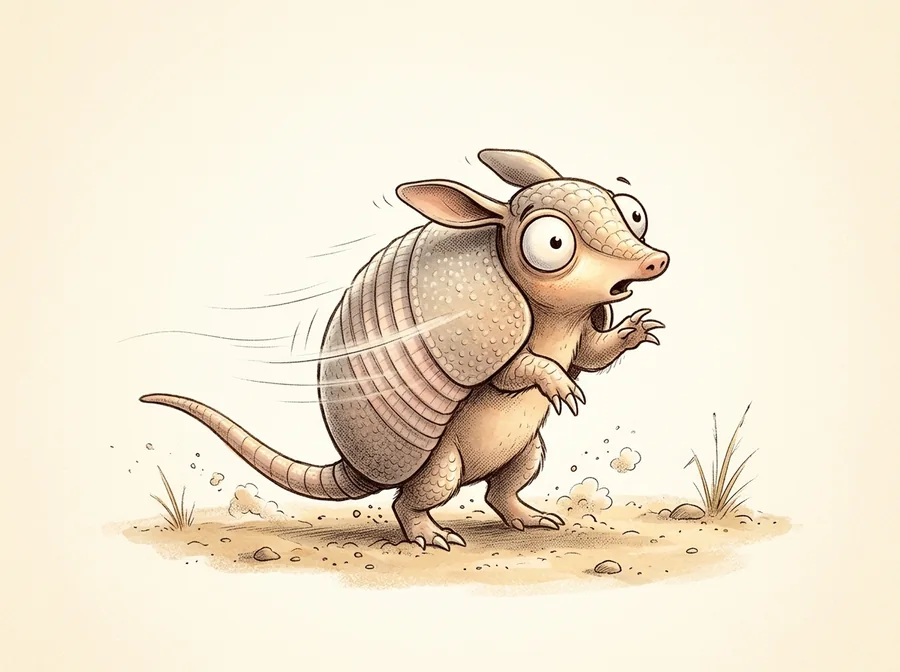
11.6Death came into the world with Adam’s sin (3:19). Animals were dying, some of them of cancer and of parasites, for hundreds of millions of years before there were people.After Adam eats from the tree, Hashem tells him, “dust you are, and to dust you shall return” (3:19). The Midrash says that death came to the animals in the same way, because Chavah fed them the fruit too (Bereishis Rabbah 19:5).The oldest animal fossils are more than 500 million years old. Whole cliffs are made of the shells of sea creatures that, on the geologists’ dates, lived and died long before there were people.A horned dinosaur that lived 76 to 77 million years ago had an aggressive bone cancer, and fossil leaves 48 million years old bear the scars left by ants that a parasitic fungus killed.
Death before Adam’s sin
The Midrash says that Chavah fed the fruit to the domestic animals, the wild animals and the birds. All of them ate except one bird, the chol, and this is why the chol alone does not die (Bereishis Rabbah 19:5). So in the Midrash, death came to the animals as it came to man, through the fruit, on the Sixth Day.
״גם״ — רבוי, האכילה את הבהמה ואת החיה ואת העופות, הכל שמעו לה חוץ מעוף אחד ושמו חול, הדא הוא דכתיב (איוב כט): ״וכחול ארבה ימים״.
“‘Also’ [‘she gave also to her husband,’ Bereishis 3:6] is an inclusion: she fed the domestic animals, the wild animals, and the birds. All of them listened to her except for one bird whose name is chol, as it is written (Iyov 29:18), ‘And like the chol I shall multiply days.’”
Bereishis Rabbah 19:5
Chalk and coal. The ground is full of the remains of creatures that died long before there were people. The white cliffs of Dover, in the south of England, stand up to about 110 meters high. Geologists find that their chalk is made mostly of coccoliths, tiny plates of lime that covered single-celled algae floating near the surface of the sea. The chalk also holds the shells of tiny sea creatures.
Between about 100 and 66 million years ago, as these algae and sea creatures died, their plates and shells sank and built up on the sea floor as a fine white mud, which became the chalk. Lines of flint run through the chalk, and in places it holds the fossils of sea urchins, shellfish and ammonites (extinct sea creatures with coiled shells). Coal is made of the remains of forests that grew and died about 300 million years ago. On the geologists’ dates, animals and plants had been dying in vast numbers for hundreds of millions of years before the first person lived.
Cancer and parasites. In 1989 a deformed bone from the lower leg of Centrosaurus, a horned dinosaur that ate plants, was found in Dinosaur Provincial Park in Alberta, Canada, among the remains of a whole herd. In 2020 Seper Ekhtiari and Mark Crowther of McMaster University and David Evans of the Royal Ontario Museum, working with a team of doctors and paleontologists, examined the bone.
Scientists date the rock that held the bone to 76 to 77 million years ago. The team scanned the bone and examined thin slices of it under a microscope, the way doctors diagnose a tumor in a patient, and compared it with a healthy dinosaur bone and with a human bone that had bone cancer. They diagnosed advanced osteosarcoma, an aggressive bone cancer that also strikes people (Lancet Oncology, 2020). Animals were suffering from cancer tens of millions of years before Chavah.
Parasites also left marks that can be recognized in rock tens of millions of years old. Certain parasitic fungi infect ants today. Shortly before the ant dies, the fungus makes it clamp its jaws onto the vein of a leaf, and this leaves a distinctive scar on the leaf as the fungus sprouts from the ant’s body. In 2011 David Hughes, Torsten Wappler and Conrad Labandeira found these death-grip scars on fossil leaves from the Messel pit in Germany, dated to about 48 million years ago (Biology Letters, 2011). Parasitic fungi were killing insects tens of millions of years before Creation.
In 2025 paleontologists described two similar parasitic fungi growing out of an ant pupa and a fly preserved in amber from Myanmar, dated to about 99 million years ago (Proceedings of the Royal Society B, 2025).
In amber of the same age from Myanmar, Enrique Peñalver, Ricardo Pérez-de la Fuente and their colleagues found a hard tick caught in a dinosaur feather. They also found extinct ticks carrying hairs from the larvae of beetles that lived in dinosaur nests. One tick was swollen with blood, and the team concluded that ticks fed on feathered dinosaurs (Nature Communications, 2017).
Ancient DNA. At Kap København, at the northern tip of Greenland, the ground is now a cold desert. In 2022 Kurt Kjær, Eske Willerslev and their colleagues read scraps of DNA that had stuck to grains of clay and quartz in the layers of mud and sand there (Nature, 2022).
Geologists date these layers to about two million years ago. The DNA came from poplar, birch and thuja trees (thuja is a member of the cypress family), and from hares, reindeer, geese and mastodons (extinct relatives of the elephant). The team also found DNA from horseshoe crabs, which live in the sea. A forest with its animals once stood where no forest grows today. These plants and animals lived and died in Greenland two million years before Creation.
Frozen ground in Siberia has also kept remains from tens of thousands of years before Creation by the Jewish count. One is the skin of a mammoth that died about 52,000 years ago, with its chromosomes still folded as they were in life (Marcela Sandoval-Velasco and colleagues, Cell, 2024). Another is the muscle of the mammoth Yuka, which died about 39,000 years ago. It still holds some of its RNA, the working copies that cells make of their genes (Emilio Mármol-Sánchez and colleagues, Cell, 2025).
The world before the Mabul
12. The ten generations before the Mabul
Bereishis 4 and 5 describe the ten generations from Adam to Noach. In Adam’s own family one son farms and the other keeps flocks. Kayin builds a city, and within a few generations his descendants are working copper and iron and playing instruments. The men of those generations live seven, eight and nine hundred years. On the Jewish count all of this happened between Creation in 3760 BCE and the Mabul in 2105 BCE.
The usual answer to any conflict with archaeology in these centuries is that the world before the Mabul worked differently, in ways we can no longer detect because the Mabul destroyed it. Some writers go further and propose that nature ran at different rates in those generations. On that view people lived about nine hundred years, the days were longer, and radioactive decay ran faster, so the dates that scientists get from radioactive decay for those centuries come out far too old.
This answer works only if every date for those centuries comes from radioactive decay, and many do not. Scientists count the rings of trees and the layers of polar ice from before 2105 BCE one year at a time, and faster decay would not add or remove a single ring or layer. Those counts also run through 2105 BCE without a break.
What the Torah and Chazal say about the years before the Mabul
From Adam to the Mabul the Torah counts 1,656 years (chapters 4 to 6). In those chapters it names the men who began the crafts by which people live, all in the first generations after Adam. Hevel keeps sheep and Kayin works the ground (4:2). Kayin builds a city and names it after his son Chanoch (4:17). Of Kayin’s descendants, Yuval is “the father of all who handle the kinnor and the ugav” (4:21), and Tuval-Kayin forges “every cutting tool of copper and iron” (4:22). Adam lives 930 years and Mesushelach 969 (5:5, 5:27). The Nefilim walk the earth in those days (6:4).
Chazal add more about that world. The Midrash says that the weather before the Mabul was always mild (Bereishis Rabbah 34:11). The Sifrei says that in the days of Enosh the Ocean, which Chazal picture as the great sea surrounding the land, flooded a third of the world (Sifrei Devarim 43). The Gemara says that during the week before the Mabul the Sun rose in the west (Sanhedrin 108b). People who say that the world before the Mabul was different in ways we can no longer detect rely on these sources.
12.1In the first generations after Adam the Torah tells of a shepherd, a worker of the ground, a man who built a city, the father of all who play the kinnor and the ugav, and a man who forged tools of copper and iron. Archaeologists date the oldest herding, farming, building in stone, music and metalwork that they have found. Most of their dates are thousands of years before the Torah’s date for Creation.Hevel kept flocks and Kayin worked the ground (4:2). Archaeologists find that people in the Near East began to sow grain and keep herds about 11,500 years ago.Kayin built a city (4:17). Yericho had a stone wall and a stone tower by about 8000 BCE.Yuval was the father of all who play the kinnor and the ugav (4:21). A flute made from the wing bone of a vulture was found in a cave in Germany, and archaeologists date it to more than 35,000 years ago.Tuval-Kayin forged tools of copper and iron (4:22). People were smelting copper by about 5000 BCE, before Creation by the Jewish count. Iron tools came into common use only about 1200 BCE, about nine hundred years after the Mabul.Core
The first farmer, city, smith and musician
Herding and farming. In the Torah, Hevel is a keeper of sheep and Kayin a worker of the ground (4:2). Archaeologists can tell from animal bones when people began to keep herds. A hunter kills whatever animal he can catch. A herder slaughters most of the young males for meat and keeps the females alive to breed. By the ages and sexes of the animals whose bones they dig up, archaeologists can tell a managed herd from hunted game.
In 2000 Melinda Zeder of the Smithsonian Institution and Brian Hesse of the University of Alabama at Birmingham studied the goat bones from Ganj Dareh, a village in the Zagros Mountains of Iran that was lived in about 10,000 years ago. They found a high proportion of young males, the pattern of a herd that people managed. That puts goat herding in Iran more than four thousand years before Hevel.
In 1989 a drought lowered the Kinneret by several meters and uncovered an ancient camp on its shore, about nine kilometers south of Teveria. At the site, named Ohalo II, archaeologists dug up six oval huts made of brush, open hearths and the grave of a man. From more than forty radiocarbon dates, researchers place the camp between about 23,500 and 22,500 years ago (Tikvah Steiner and her colleagues, PLOS ONE, 2022).
In 2015 Ainit Snir, Ehud Weiss and their colleagues studied about 150,000 plant remains from the site. The people of Ohalo II gathered more than 140 species of plant, and they ground wild wheat and barley. The seeds of thirteen species that grow today as weeds in farmers’ fields were mixed in with the wild emmer wheat, barley and oats. These weeds thrive in soil that has been dug and sown, so the researchers concluded that the people of the camp had made a small, early attempt to grow wild grain. The team called Ohalo II the earliest known evidence of soil disturbed by people, at least eleven thousand years before regular farming began (PLOS ONE, 2015). People beside the Kinneret were harvesting wild grain, and perhaps sowing it, about seventeen thousand years before Adam.
Building. The first city the Torah mentions is the one Kayin built (4:17). By about 8000 BCE Yericho already had a stone wall and a stone tower. Even earlier, people were raising stone monuments on a hilltop in southeastern Turkey called Göbekli Tepe. The German archaeologist Klaus Schmidt began to dig there in 1995. He found round enclosures made of huge T-shaped limestone pillars, carved with foxes, boars, snakes and vultures. The site was in use from about 9500 to 8000 BCE, and the earliest circles were put up around 9000 BCE. More than five thousand years before Creation, people were quarrying and carving stone pillars that weighed several tons. Later digs also found the houses of the people who lived around the enclosures.
Göbekli Tepe is not the only site of its kind. About 46 kilometers to the east, at Karahan Tepe, people carved their own T-shaped pillars out of the bedrock in roughly the same centuries. Both sites belong to a group of about a dozen similar sites in Şanlıurfa province that archaeologists are now digging, known together as Taş Tepeler, the Stone Hills.
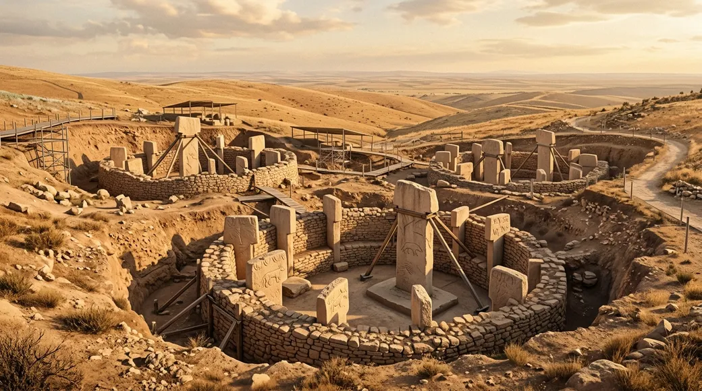
In the Bay of Mecklenburg, off the Baltic coast of Germany, a line of 1,673 stones runs for 971 meters along the sea floor, 21 meters under water. Most of the stones are less than a meter high, and they are set side by side. In 2024 Jacob Geersen and his colleagues mapped the wall with sonar from a ship and with an underwater robot. From the orderly way the stones are laid, they concluded that people, and not the glaciers of the ice age, had put them there. The wall runs along the drowned shore of an old lake or bog. From this the researchers argued that hunters who roamed the region after the ice sheet retreated built the wall to drive reindeer, during or soon after the last cold spell of the ice age (Proceedings of the National Academy of Sciences, 2024).
Geologists date that cold spell to between about 12,900 and 11,700 years ago. The rising sea later covered the site. Geersen’s team counts the wall among the oldest known structures that people built for hunting anywhere, and among the largest Stone Age structures in Europe. On these dates, people in Europe were working together to build large stone traps for hunting thousands of years before Adam.
Between 2015 and 2021 the Israel Antiquities Authority excavated the route of a highway at Motza, about five kilometers west of Yerushalayim, before the highway was built. Under the route lay a town from the Pre-Pottery Neolithic, the period when people farmed but did not yet make pottery. The excavators found more than twenty buildings and over a hundred plaster floors. Archaeologists date the largest phase of building to about 7100–6700 BCE. The excavators, Hamoudi Khalaily and Jacob Vardi, estimated that at least 2,000 to 3,000 people lived there. They raised sheep and goats, stored the seeds of lentils, chickpeas and beans, and traded as far away as Turkey and the Red Sea.
In 2026 Yonah Maor of the Israel Antiquities Authority, working with Khalaily, Vardi and scientists from the Weizmann Institute, reported that some of the floors at Motza were made of plaster burned from dolomite. Dolomite is a rock like limestone but rich in magnesium, and there is plenty of it around Motza. It breaks down at a lower temperature than limestone. The builders burned the two rocks in separate pits, and Maor’s team took this as evidence that they knew the difference. Before this study, the earliest known plaster of burned dolomite was from the Roman period (Journal of Archaeological Science, 2026). On the archaeologists’ dates, then, thousands of people were living in a town outside Yerushalayim, and burning two kinds of stone for their floors, about three thousand years before Adam.
Archaeologists date the Liangzhu culture, in the delta of the Yangtze River in China, to about 5,300 to 4,300 years ago. Its city covered about 300 hectares (three square kilometers), and clay walls with six gates enclosed 290 hectares of it. In the hills north of the city, its people built a large network of dams, levees and ditches to hold back the water of the valleys and lead it where they wanted. In 2017 Liu Bin and his colleagues described these works and radiocarbon-dated them to about 5,100 years ago, roughly 3100 BCE (Proceedings of the National Academy of Sciences, 2017). On the Jewish count Adam lived from 3760 to 2830 BCE. So in 3100 BCE Adam was still alive, and everyone else alive was his descendant, born within 660 years of Creation. Yet on the archaeologists’ dates, people at the far end of Asia were building large waterworks for a big city in that year.
At Watson Brake, near Monroe in northern Louisiana, eleven mounds of earth up to 7.6 meters high are joined by ridges into an oval about 270 meters across. In 1997 Joe Saunders and his colleagues published radiocarbon dates from the site and concluded that the mounds were far older than archaeologists had thought (Science, 1997). In a later study, the team found that people first lived at the site around 4000 BCE, 240 years before Creation by the Jewish count. These people were hunter-gatherers. They began building the mounds around 3500 BCE and kept enlarging them for about 500 years (American Antiquity, 2005). On the Jewish count, 3500 BCE is 260 years after Creation, when Adam’s grandson Enosh was about twenty-five years old (5:3–6). On these dates, people in North America were organizing the work of raising these mounds at a time when, by the Torah’s account, every person alive was within a few generations of Adam.
Copper. Tuval-Kayin, a descendant of Kayin, forged “every cutting tool of copper and iron” (4:22). To get copper out of its ore, a smith has to smelt it. He heats the rock that holds the copper in a very hot fire until the molten metal separates out, leaving behind a glassy waste called slag. In 2010 Miljana Radivojević and Thilo Rehren of University College London reported slag from copper smelting at Belovode in Serbia, dated to about 5000 BCE. That is more than a thousand years before Adam was born.
Even before anyone learned to smelt copper, people hammered native copper (copper found as pure metal in the ground) into beads. In a 2014 study, Yosef Garfinkel, Florian Klimscha, Sariel Shalev and Danny Rosenberg reviewed the early finds of hammered copper from Anatolia (modern Turkey). In 2026 archaeologists reported a workshop at Çayönü in southeastern Turkey, dated to about 6900 to 6800 BCE, where the green copper ore malachite lay beside copper beads and other copper objects. People in Anatolia were working copper about three thousand years before Creation.
At Tel Tsaf in the Jordan Valley, archaeologists found a copper awl in a grave from the late sixth millennium BCE, just before 5000 BCE. Garfinkel and his colleagues found that the awl had been cast, and from its chemistry they concluded that it had probably been brought from the Caucasus (PLOS ONE, 2014). Cast copper tools were reaching the Jordan Valley by trade more than a thousand years before Creation.
A few centuries later, smiths in Eretz Yisrael were casting copper themselves. In 1961 an expedition led by Pesach Bar-Adon found a hoard of 442 objects, 429 of them copper, wrapped in a straw mat in a cave in a cliff at Nahal Mishmar, in the Judean Desert near the Dead Sea. Many of the objects were made by lost-wax casting. In this method the smith shapes the piece in wax, coats it in clay, melts out the wax, and pours molten metal into the hollow that is left. The smiths of Nahal Mishmar mixed copper ores rich in antimony or nickel with ores rich in arsenic. Laboratories have radiocarbon-dated the making of such objects to 4350 to 4250 BCE. From the clay cores left inside them, Garfinkel and his colleagues concluded that they were cast in the region itself (2014). That puts lost-wax casting in Eretz Yisrael about five centuries before Adam.
Around Lake Superior in North America, veins of pure copper lie close to the surface. The native peoples there dug out the metal and hammered it into knives, axes and spear points. Archaeologists call this tradition the Old Copper Complex. In 2021 David Pompeani and his colleagues gathered 53 radiocarbon dates from copper tools and ancient mines, and compared them with the pollution from copper working preserved in the mud of six nearby lakes. Bits of wood and other organic matter stuck in fifteen of the copper tools dated from about 8,500 to 3,600 years ago (Radiocarbon, 2021). The team concluded that these people were among the oldest known metalworkers in the world. People in North America were making heavy copper tools about three thousand years before Creation.
Iron. Iron tools came into common use only around 1200 BCE, about nine hundred years after the Mabul. Smelting iron from ore is far harder than smelting copper. A handful of iron objects are older than 1200 BCE. Scientists can tell whether such an object was smelted or made from the iron of a meteorite, because meteoritic iron holds much more nickel. In 2017 the French scientist Albert Jambon analyzed a series of these early iron objects with a portable X-ray instrument. They included Egyptian beads from about 3200 BCE, a dagger from Turkey from about 2500 BCE, and the dagger buried with the Egyptian king Tutankhamun. Every object he examined was made of meteoritic iron. Iron smelting had not yet begun in the centuries before the Mabul, when Tuval-Kayin lived.
Some answer that people knew how to smelt iron before the Mabul and the craft was lost in it. But every early iron object that Jambon analyzed, the Egyptian beads and the Turkish dagger among them, was hammered from meteoritic iron and not smelted from ore. A smith before the Mabul might have had enough meteoritic iron for beads or ornaments, but not enough to forge “every cutting tool,” as the Torah says Tuval-Kayin did.
Music. The Torah calls Yuval, the half-brother of Tuval-Kayin, “the father of all who handle the kinnor and the ugav” (4:21). The ugav is usually translated as a pipe. In Hohle Fels, a cave in southern Germany, a team led by Nicholas Conard of the University of Tübingen found a flute carved from the wing bone of a griffon vulture. It has five finger holes, and two V-shaped notches are cut into the end where the player blew. In 2009 the team dated the flute to more than 35,000 years ago. In Geissenklösterle, a cave nearby, excavators found pieces of flutes made of bird bone and of mammoth ivory, dated to about 42,000 years ago. People were making and playing flutes tens of thousands of years before Yuval.
Jiahu was an early farming village in Henan province in China, lived in from about 7000 to 5700 BCE. There archaeologists found six whole flutes and pieces of about thirty more. Each whole flute is carved from the wing bone of a red-crowned crane and has five to eight finger holes. A team led by Zhang Juzhong played the best-preserved flute and worked out its musical scale (Nature, 1999). The flutes of Jiahu were made two thousand years or more before Creation by the Jewish count.

The Torah also puts music and metalwork in the same generation. Yuval and Tuval-Kayin were half-brothers, sons of Lemech by his two wives (4:19–22). Archaeologists find people playing pipes tens of thousands of years before Yuval, and more than thirty thousand years before the earliest known copper smelting, at Belovode.
In 1931 archaeologists exploring Marsoulas Cave, a painted cave in the Pyrenees in southern France, found the large shell of a sea snail (Charonia lampas). For decades hardly anyone studied it. In 2021 Carole Fritz, Gilles Tosello and their colleagues found that the people of the cave had made the shell into a wind instrument. When a horn player blew into it, it sounded three notes close to C, C sharp and D (Science Advances, 2021). Charcoal and a piece of bear bone from the same layer were radiocarbon-dated to about 18,000 years ago. The shell came from the ocean, so the team took it as evidence of contact with the Atlantic coast, more than 200 kilometers away. People in Europe were trading shells and playing a shell horn more than twelve thousand years before Creation.
Wine. After the Mabul, “Noach, the man of the soil, began and planted a vineyard,” and drank of its wine (9:20–21). The Radak explains that until then people ate grapes like any other fruit, and that Noach was the first to plant vineyards and make wine. In 2017 Patrick McGovern of the University of Pennsylvania and his colleagues studied large clay jars from two early farming villages in Georgia, in the Caucasus. They found chemical traces of grape wine soaked into the clay. The team dated the jars to about 6000 to 5800 BCE (Proceedings of the National Academy of Sciences, 2017). That is about two thousand years before Creation by the Jewish count, and nearly four thousand years before the Mabul, after which Noach planted his vineyard.
Bread, beer and olive oil. In 2018 Amaia Arranz-Otaegui and her colleagues found charred crumbs of flatbread in two fireplaces at Shubayqa in northeastern Jordan. The bread was made from wild einkorn wheat and the roots of a plant called club-rush. The fireplaces belonged to hunter-gatherers known as the Natufians, and the team dated them to about 14,400 years ago (Proceedings of the National Academy of Sciences, 2018). That is at least four thousand years before farming began, and more than eight and a half thousand years before Adam.
The Natufians buried their dead in Raqefet Cave on Mount Carmel between about 13,700 and 11,700 years ago. In 2018 Li Liu, Dani Nadel and their colleagues studied three stone mortars in the cave and concluded that the Natufians had brewed beer from wheat or barley in them for feasts at burials. David Eitam has argued instead that the mortars were used to grind barley into flour for bread (Journal of Archaeological Science: Reports, 2018 and 2019). Either way, people were processing grain in stone mortars thousands of years before Creation.
At Ein Zippori, in the Lower Galil, Dvory Namdar and her colleagues found chemical traces of olive oil in pottery from the sixth and fifth millennia BCE, all of it before Creation by the Jewish count (Israel Journal of Plant Sciences, 2015). People in Eretz Yisrael were pressing olive oil centuries before Adam.
12.2Adam lived 930 years and Mesushelach 969 (5:5, 5:27), and the Ramban holds that everyone before the Mabul lived about that long. No human body that scientists have studied could last that long.The longest life that has ever been documented is 122 years.Through most of adult life, a person’s chance of dying in a given year doubles about every eight years. That is the rate at which the human body wears out.
Lives of nine hundred years
The Rishonim knew that people in their own day did not live nine hundred years, and the Ramban and the Rambam explain the Torah’s long lives in different ways. The Ramban writes that Adam was made perfect and passed his strength on to his descendants, so that everyone before the Mabul lived about as long as the men named in the Torah. In the Mabul the air was spoiled, and lives grew shorter (on 5:4). The Rambam holds that ordinary people lived ordinary lives, and that only the men named in the Torah lived so long, either because of their diet and way of life or by a miracle (Moreh Nevuchim II:47). The Ramban rejects this, asking why a miracle would have been done for men who were neither prophets nor righteous.
והסבה באריכות ימיהם כי אדם הראשון מעשה ידיו של הקב״ה נעשה בתכלית השלימות בנוי בכח בקומה, וגם אחרי שנקנס עליו שיהיה בן מות היה בטבעו לחיות זמן רב. וכאשר בא המבול על הארץ נתקלקל עליהם האויר והלכו ימותם הלוך וחסור... ולא יכשר בעיני מאמר הרב שכתב במורה הנבוכים (ב מז) כי לא היה אורך השנים רק ביחידים האלה הנזכרים ושאר בני אדם בדורות ההם היו שנות חייהם השנים הטבעיים המורגלים... והנה אלה דברי רוח, ולמה יהיה הנס הזה בהם והם אינם נביאים ולא צדיקים וטובים לעשות להם נס.
“The cause of their longevity was that Adam, the handiwork of the Holy One, blessed be He, was made in ultimate perfection in beauty, strength, and stature; even after mortality was decreed upon him, it remained in his nature to live a long time. When the Mabul came upon the earth, the air became corrupted for them, and their days steadily grew shorter... The statement of the Master [the Rambam] in the Guide for the Perplexed (II:47)—that this length of years belonged only to the specific individuals mentioned, while the rest of humanity in those generations lived ordinary natural lifespans—does not seem right to me... These are words of wind: why would such a miracle be performed for them when they were neither prophets nor righteous and good men deserving of a miracle?”
Ramban on Bereishis 5:4
Physicians in the Ramban’s time held that a person’s inherited health and the quality of the air decided how fast the body aged. The Ramban was explaining the Torah’s lifespans with the medicine of his day.
No one in modern times has come close to nine hundred years. The longest human life that has been documented is that of Jeanne Calment of Arles, France, who lived from 1875 to 1997 and died at the age of 122. In 1825 the English actuary Benjamin Gompertz (an actuary works out insurance risks from records of deaths) noticed that once people are adults, their risk of dying in any given year rises steadily with age. Researchers who study national records of deaths today find that this risk doubles about every eight years through most of adult life. A risk that doubles every eight years grows more than a thousandfold in eighty years. That is why the number of people still alive drops off sharply after a hundred years, instead of stretching on to nine hundred.
Both the Ramban and the Rambam take the Torah’s ages literally. On the Ramban’s view, everyone before the Mabul aged far more slowly than any human body that has ever been studied. On the Rambam’s view, the men named in the Torah lived many times longer than anyone on record, whether through their way of life or by a miracle.
12.3Modox Alert!The Gemara says that until Yaakov no one fell ill (Bava Metzia 87a). Scientists have found people who were ill with infections thousands of years before Yaakov, two of them in the lifetime of Adam by the Jewish count.Pirkei d’Rabbi Eliezer says that from the day the world was created no person was ever ill, and that a person would sneeze and die, until Yaakov asked for illness (chapter 52).Ötzi, the man who died in the Alps between about 3360 and 3105 BCE, carried the bacterium of Lyme disease, and whipworm eggs were found in his gut.A young man who was buried at Riņņukalns in Latvia between about 3350 and 3100 BCE had the bacterium of plague in his blood, and he most likely died of it.Geneticists have read the DNA of the hepatitis B virus in the remains of 137 people who died between about 10,500 and 400 years ago.
Illness before Yaakov
[Modox Alert! If you have ever quoted Rabbi Sacks at a sheva brachos, feel free to skip this obviously Kierkegaardian, quasi-Kafkaesque, neo-Chassidic teleological suspension of the literal, and move on to the next item.]
עַד יַעֲקֹב לָא הֲוָה חוּלְשָׁא. אֲתָא יַעֲקֹב בְּעָא רַחֲמֵי וַהֲוָה חוּלְשָׁא, שֶׁנֶּאֱמַר: ״וַיֹּאמֶר לְיוֹסֵף הִנֵּה אָבִיךָ חֹלֶה״.
“Until Yaakov there was no illness. Yaakov came and asked for mercy, and there was illness, as it says: ‘And one said to Yosef, Behold, your father is ill.’”
Bava Metzia 87a
What Chazal say. The Gemara says that until Avraham no one looked old, and until Yaakov no one fell ill (Bava Metzia 87a). Yaakov prayed and illness came, as the pasuk says, “Behold, your father is ill” (48:1). In the Midrash Yaakov asks for illness so that a dying man can first settle his affairs with his children (Bereishis Rabbah 65:9). Pirkei d’Rabbi Eliezer gives the same account: before Yaakov a person would sneeze and die, and this is why a person must wish life to someone who sneezes (chapter 52). By the Jewish count Adam lived until 2830 BCE, and Yaakov was born in 1653 BCE.
Ötzi. Ötzi is the ancient man whose body froze in the ice of the Alps. His death has been radiocarbon-dated to between about 3360 and 3105 BCE, which is in Adam’s lifetime by the Jewish count. In 2012 Andreas Keller and his colleagues found the DNA of the bacterium that causes Lyme disease in his remains. He is the earliest known human case of that infection. In 2016 Frank Maixner and his colleagues found the bacterium Helicobacter pylori in his stomach, together with proteins that the body makes when the stomach is inflamed. Researchers also found the eggs of whipworms, a parasite, in his gut. Ötzi had these infections and parasites between about 1,450 and 1,700 years before Yaakov was born.

Plague in Latvia. In 2021 Julian Susat and his colleagues studied the DNA in the bones and teeth of a man aged 20 to 30 who was buried at Riņņukalns in Latvia about 5,000 years ago, between about 3350 and 3100 BCE. This too is in Adam’s lifetime. The man’s blood carried a heavy load of the plague bacterium, Yersinia pestis, and Susat’s team thought it a plausible cause of his death. This deadly infection was in Latvia more than fourteen centuries before Yaakov. (From bacterial DNA in a bone, scientists cannot tell what symptoms the man had. The tuberculosis at Atlit-Yam left damage in the bones that comes from a long illness.)
Hepatitis B. In 2021 Arthur Kocher and his colleagues analyzed 137 ancient genomes of the hepatitis B virus, which infects the liver. The oldest came from people who died about 10,500 years ago. The virus was infecting people thousands of years before Creation, and nearly seven thousand years before Yaakov.
Tuberculosis at Atlit-Yam. Off the Carmel coast south of Haifa, the remains of an early farming village called Atlit-Yam lie eight to twelve meters under the sea. The marine archaeologist Ehud Galili discovered the site in 1984, and the University of Haifa began to excavate it in 1987. The excavators found stone houses and a stone well, which the rising sea covered after the last ice age.
In 2008 Israel Hershkovitz of Tel Aviv University, Helen Donoghue of University College London and their colleagues examined the skeletons of a woman and a baby buried together at Atlit-Yam between 9,250 and 8,160 years ago (about 7300 to 6200 BCE). The bones of both had the lesions that tuberculosis makes in bone. The team confirmed the infection in two separate ways. They extracted DNA of the tuberculosis bacterium, and they found fatty compounds made only by tuberculosis bacteria and their close relatives (PLoS ONE, 2008). A chronic, often fatal illness was afflicting a woman and a baby in Eretz Yisrael more than four thousand years before Yaakov.
Tooth decay at Villabruna. Tooth decay is a disease caused by bacteria. Bacteria in the mouth make acid that eats through the enamel of a tooth and leaves a cavity. A man buried at Villabruna in the Italian Alps about 14,000 years ago had a large cavity in a lower molar. In 2015 Gregorio Oxilia, Marco Peresani and their colleagues examined the tooth under an electron microscope. Inside the cavity they found fine scratches with a V-shaped cross-section, and chipped enamel along one wall. In the laboratory they made the same marks on other teeth with pointed flint tools. From this match they concluded that someone had scraped and pried out the decayed part of the tooth while the man was alive. It is the oldest known treatment of tooth decay (Scientific Reports, 2015). The man suffered from tooth decay more than eight thousand years before Creation by the Jewish count, and more than ten thousand years before Yaakov.
Some answer that the Gemara means only the kind of illness that warns a person that he is about to die. The finds do not fit this reading either. Millennia before Yaakov was born in 1653 BCE, the woman and the baby at Atlit-Yam had tuberculosis, a chronic and often fatal disease that takes months or years to scar bone. The man at Riņņukalns carried a heavy load of plague bacteria. And Pirkei d’Rabbi Eliezer says that before Yaakov no one fell ill at all.
12.4Modox Alert!The Midrash says that before the Mabul there was no winter (Bereishis Rabbah 34:11). Trees and ice from those centuries have a mark for every winter, people then marked the shortest day of the year, and the rock beneath the oldest fossils of animals holds the deposits of two ice ages.In the Midrash the weather before the Mabul was always as mild as it is between Pesach and Shavuos, and Hashem’s promise after the Mabul, that “cold and heat, summer and winter” would not cease (8:22), was something new.A tree in a cold country grows one ring a year because it stops growing in winter. The oaks and pines of Germany have a ring for every year of the centuries before 2105 BCE.The Greenland ice has a summer band and a winter band for each of those years.Around 4900 BCE people at Goseck, in Germany, built a round enclosure with two gates facing the sunrise and the sunset of the winter solstice. On an Earth with no summer and no winter there would be no solstice to mark.If the Mabul laid down the layers of rock that hold the fossils, the rock beneath them is from before the Mabul. Under the Ediacara fossils, the oldest large fossils known to be animals, lie the deposits of two ice ages in which glaciers reached the sea in the tropics.Core
Summer and winter before the Mabul
[Modox Alert! If you have ever said Hallel on Yom Ha’atzmaut, feel free to skip this obviously Lévi-Straussian structural binary narrated as an Eliadean sacred-time hermeneutic, and move on to the next item.]
According to the Midrash, the weather before the Mabul was like the mild weeks between Pesach and Shavuos all year round (Bereishis Rabbah 34:11). The Midrash also says that the people before the Mabul had to sow only once in forty years. After the Mabul Hashem promised that “seedtime and harvest, cold and heat, summer and winter” would not cease (8:22). The Midrash reads this promise as a change from the way things had been: from then on people would sow and reap every year.
אמר ר' יצחק: מי גרם להם שמרדו בי? לא על ידי שהיו זורעים ולא קוצרין? דאמר ר' יצחק: אחד למ' שנה היו זורעין... הא כיצד? היה להם אויר יפה כמן הפסח ועד העצרת.
Rabbi Yitzchak said: “What caused them to rebel against Me? Was it not because they sowed and did not have to reap?” For Rabbi Yitzchak said: They sowed only once in forty years... How was that possible? They had pleasant weather all year like that between Pesach and Shavuos.
Tree rings. A tree in a temperate climate grows fast in spring, more slowly later in the year, and stops in winter, so each year leaves one ring. Trees in climates with no winter and no dry season often have no clear rings at all. Tree-ring scientists at the University of Hohenheim in Germany have linked the rings of oaks and pines year by year back 12,460 years. In this count every year in the centuries before the Mabul has its own ring, wide in wet years and narrow in dry ones, just as in every century since. These trees stopped growing every winter before the Mabul, as trees do today.
Ice. Snow that falls on Greenland in summer has a different chemistry from snow that falls in winter, so each year leaves a pair of bands in the ice. A team led from the University of Copenhagen has counted these bands back about 60,000 years. The years before the Mabul have their winter bands like all the others.
The shortest day. People who lived before the Mabul also marked the shortest day of the year. The shortest day has the same cause as the seasons: the tilt of the Earth’s axis. The tilt makes summer days long and winter days short, and over the year it moves the place on the horizon where the Sun rises. In the Northern Hemisphere the Sun rises well north of east in summer and well south of east in winter. The two days when the sunrise stops moving and turns back are the solstices, the longest and the shortest days of the year. On an Earth with no summer and no winter, the Sun would rise due east every day, and there would be no solstice to mark.
In 1991 the aerial archaeologist Otto Braasch was flying over Saxony-Anhalt in Germany, photographing fields for the state archaeology office, when he saw the outline of a large ring near the town of Goseck. Archaeologists from the state office and the University of Halle-Wittenberg excavated the site between 2002 and 2004. They found a round enclosure about 75 meters across, built around 4900 BCE, more than a thousand years before the Torah’s date for Creation. A ditch surrounded two rings of wooden fence, one inside the other, and three gates ran through them. Two of the gates line up with the points on the horizon where the Sun rises and sets on the winter solstice, and the excavators regard this as deliberate. On the archaeologists’ dates, then, people were marking the shortest day of the year nearly three thousand years before the Mabul. The Earth already had its tilt, and with it summer and winter, long before the Mabul.
Ice ages before the first animals
The usual answer to the fossils is that the water of the Mabul laid down the layers of rock that hold them. If so, the rocks beneath the lowest of those layers come from before the Mabul. Under the layers that hold the Ediacara fossils, the oldest large fossils known to be animals, geologists find the deposits of two ice ages, in which glaciers reached the sea in the tropics. Geologists date the first of these ice ages to about 717 to 659 million years ago, and the second to about 645 to 635 million years ago.
What glaciers leave behind. A glacier is a mass of ice that moves slowly over the ground. It drags stones along and scratches both the stones and the bedrock beneath it. When it melts, it drops boulders, gravel, sand and clay in a jumble. Where a glacier reaches the sea, icebergs break off and float away, and they drop the stones frozen inside them, one by one, into the fine mud on the sea floor.
In 2017 the geologist Paul Hoffman of Harvard University and his colleagues reviewed what is found in the rocks from these two ice ages (Science Advances, 2017). They listed boulders carried far from where they came from, bedrock floors scratched by ice, ridges of debris pushed up at the edges of glaciers, scratched and flattened stones, and stones dropped from floating ice. They found deposits of both ice ages on most of the continents.
Glaciers in the tropics. When lava or fine mud hardens, grains of iron minerals in it lock in the direction of the Earth’s magnetic field at that spot. From the angle at which that magnetism dips into the ground, geologists calculate how far from the equator the place lay when the rock formed. Hoffman’s team reports that in both ice ages, glaciers resting on the ground below sea level left deposits in the tropics. One such place is the Yukon in Canada, where the first ice age began about 21 degrees north of the equator.
The dates of the two ice ages. Geologists date zircon crystals by the decay of uranium into lead in volcanic rocks that lie among the glacial layers. They combine these dates with a related method based on the decay of rhenium into osmium in shale. From these measurements they date the first ice age from between 717.5 and 716.3 million years ago to about 659 million years ago, and the second from between about 650 and 639 million years ago to about 635 million years ago. Hoffman’s team also reports that in the first ice age the edges of the ice advanced and retreated more than once. This means that the Earth went through repeated cycles of glaciers hundreds of millions of years before Creation.
The cap carbonates. Above the glacial deposits of each ice age lies a layer of limestone or dolostone, rocks that form from carbonate in sea water. Geologists call it a cap carbonate. Hoffman’s team reports that each ice age has only one such cap, at its end, and that wherever the cap of the first ice age has been dated, its age is about 659 million years. Two separate ice ages had therefore already ended tens of millions of years before the first complex animal fossils appeared.
Geologists follow the cap of the second ice age around the world as a marker. Stratigraphers set the start of the Ediacaran Period, the last period before the Cambrian, at the base of that cap, at Enorama Creek in the Flinders Ranges of South Australia. The Ediacara fossils lie in the layers above it.
12.5Modox Alert!The Sifrei says that in the days of Enosh the Ocean rose and flooded a third of the world. Geologists who study ancient shorelines and reefs find that in those millennia the sea rose by a few meters and flooded some coasts. Nothing near a third of the world was covered.Sifrei Devarim 43 and Rashi on Bereishis 6:4 say that the Ocean flooded a third of the world in the generation of Enosh, who lived from about 3525 to 2620 BCE. Bereishis Rabbah 23:7 and Yerushalmi Shekalim 6:2 give differing traditions about how far it reached, and they name coastal towns such as Acco and Jaffa.Worldwide, the sea rose about three meters between 6,700 and 4,200 years ago, a span that includes Enosh’s centuries. At the Bay of Dor and the Gulf of Aqaba, geologists find changes in sea level of a meter or two, mostly before Enosh’s time, and a tsunami thousands of years before him.A rise of a few meters can drown some coasts. Neither its size nor its dates fit a flood over a third of the Earth’s land.Large settlements such as Uruk in Mesopotamia and the early towns of the Indus Valley carried on through those centuries.
The flood of Enosh
[Modox Alert! If you describe your shul as “a warm, inclusive community” on its website, feel free to skip this obviously Hegelian sublation of the aggadic into the meta-halakhic Rosenzweigian-Buberian I-Thou encounter with the Ancient Near Eastern episteme, and move on to the next item.]
What Chazal say. Sifrei Devarim 43 and Rashi on Bereishis 6:4 say that in the generation of Enosh, when people first began to call idols by the name of Hashem, the Ocean rose and flooded a third of the world. By the pesukim, Enosh lived from the year 235 to the year 1140 after Creation (5:6–11), which is about 3525 to 2620 BCE. (Geologists count years back from 1950, so in their terms this is about 5.5 to 4.6 thousand years ago.)
אֵימָתַי נִקְרְאוּ עַל שְׁמוֹ? בִּימֵי אֱנוֹשׁ בֶּן שֵׁת, שֶׁנֶּאֱמַר (בראשית ד כו): ״אָז הוּחַל לִקְרֹא בְּשֵׁם ה׳״. בְּאוֹתָהּ שָׁעָה עָלָה אוֹקְיָינוֹס וְהֵצִיף שְׁלִישׁוֹ שֶׁל עוֹלָם.
When were [idols] called by His name? In the days of Enosh son of Shes, as it is stated: “Then it was begun to call by the name of Hashem” (Bereishis 4:26). At that hour the Ocean rose and flooded a third of the world.
Bereishis Rabbah 23:7 and Yerushalmi Shekalim 6:2 say that the Ocean came out twice, once in the generation of Enosh and once in the generation of the Dispersion. They give differing traditions about how far it reached, and they name coastal towns such as Acco and Jaffa. None of these sources says how long the water stayed high. Nor do they say that “a third” means a third of all the land on Earth as we know it; that is one way of reading them. The question for geologists is whether they find a flood over a third of the Earth’s land, or only a flood along some coasts or a slow shift of the shoreline.
The level of the sea worldwide. In 2014 Kurt Lambeck and his colleagues at the Australian National University gathered about a thousand markers of past sea level, from ancient shorelines and from dated reef corals far from where the ice sheets had been (Lambeck et al., PNAS, 2014). They estimated that the average level of the sea worldwide rose about three meters between 6,700 and 4,200 years ago, a span that includes the centuries of Enosh. An average over 2,500 years does not follow the path of every coast, and it would miss a brief storm surge. Local shorelines also move with the tides, with land that rises or sinks, and with the crust rising back after the ice age.
The coast of Israel. At the Bay of Dor, on the coast of Israel, archaeologists found layers of wetland mud, the drowned remains of a Neolithic settlement, and coastal sand on top of them. They dated the main advance of the sea there to about 7.6 to 6.5 thousand years ago, centuries before Enosh; across the wider Israeli coast, sea level then rose more slowly until about 4 thousand years ago (Shtienberg et al., Quaternary Research, 2021). At Dor, then, the sea came in gradually, and mostly centuries before Enosh.
In the same layers at Dor, a separate sheet of sea sand lies inside the freshwater wetland mud. It was laid down by a sudden tsunami. Geologists dated it to 9.91 to 9.29 thousand years ago by optically stimulated luminescence, a method that measures when buried grains of sand last saw sunlight (Shtienberg et al., PLOS ONE, 2020). That is several thousand years before Enosh. Farther south, at the Gulf of Aqaba, geologists used fossil corals to find that the sea there stood about one to two meters higher than today from about 6.8 to 5.5 thousand years ago (Weil et al., Quaternary Science Reviews, 2022).
A third of the world. A rise of a few meters can drown some coastal villages. It cannot flood a third of the Earth’s land in Enosh’s lifetime. The curves of sea level could miss a brief storm surge or tsunami. But anyone who proposes a sudden flood in Enosh’s centuries needs to point to a dated layer that the flood left, and to explain how the water got so far inland. The large cities on land also carried on through those centuries. Uruk in Mesopotamia grew into the largest city in the world, with perhaps 40,000 people around 3100 BCE. The early towns of the Indus Valley, in what is now Pakistan, stood from about 3300 to 2600 BCE.
12.6Modox Alert!The Nefilim were on the earth before the Mabul (6:4), and Chazal describe them as giants of enormous size. Scientists who study how bones bear weight find that a body built like a man’s would break its own bones at that size.Rashi explains that the word Nefilim means giants, and that their wives bore them giants like themselves (on 6:4).Rabbi Yochanan says that the marrow of the thigh bone of one of the giants measured eighteen amos, which is between 8.6 and 10.4 meters (Bereishis Rabbah 26:7).A man’s thigh bone is about a quarter of his height, so a man with a thigh bone that long would stand at least 32 meters tall.Galileo showed in 1638 that when a body is made larger without changing its shape, its weight grows faster than the strength of its bones.
Giants before the Mabul
[Modox Alert! If you call the Baalei Tosafos “the medieval commentators”, feel free to skip this obviously Bultmannian demythologization of the antediluvian, after Schechter, and move on to the next item.]
What Chazal say. Rashi says that the Nefilim whom the spies saw were giants descended from angels who fell from heaven in the days of Enosh (on Bamidbar 13:33). Rabbi Yochanan says that Og, king of Bashan, escaped from the generation of the Mabul (Niddah 61a). Chazal speak of the giants’ bones as real bones. Abba Shaul, who buried the dead, said that he once chased a deer into a thigh bone and ran three parsaos inside it, and was later told that the bone was Og’s (Niddah 24b).
The giant’s height. The Midrash gives the size of one giant’s thigh bone:
גבורים — רבי אבא בר כהנא בשם רבי יוחנן אמר: מוח קוליתו של אחד מהם היתה נמדדת י״ח אמה.
“‘The mighty ones’ — Rabbi Abba bar Kahana said in the name of Rabbi Yochanan: The marrow of the thigh bone of one of them measured eighteen cubits.”
Bereishis Rabbah 26:7
Taking an amah as 48 to 58 centimeters (the range used for the size of the Ark), eighteen amos is 8.6 to 10.4 meters. The marrow fills only the inner shaft of the bone, so the whole thigh bone was longer than 8.6 meters. In 1990 Marc Feldesman and his colleagues found that a person’s thigh bone is on average about 26.7 percent of his height. Dividing 8.6 meters by 0.267 gives a height of at least 32 meters. That is about 18 times the height of a man of 1.75 meters, and about as tall as a building of ten stories.
A man that size breaks his bones. When a body grows eighteen times taller and keeps the same proportions, its weight grows about 5,800 times. The cross-section of its bones, which carries that weight, grows only about 324 times. Every square centimeter of bone therefore has to carry eighteen times its normal load. Galileo already noted, in 1638, that nature could not make a giant ten times as tall as a man except by a miracle or by making his bones far thicker.
Human bones begin to fail at a small fraction of 32 meters. Robert Wadlow, the tallest man whose height was reliably measured, stood 2.72 meters and needed iron braces to support his legs.
In 1990 the biologist Andrew Biewener reported that in mammals from 100-gram rodents to 300-kilogram animals, the leg bones in ordinary movement already bear 25 to 50 percent of the stress that would break them. Larger mammals keep this margin of safety mainly by standing more upright, and people already stand upright. A giant 32 meters tall puts eighteen times the load on each square centimeter of bone, so in ordinary movement his leg bones would bear 4.5 to 9 times the stress that breaks bone. He would break his own thigh bones walking across a room. Chazal mention no miracle that held up the giants’ bodies.
Stronger bones. One can always argue that perhaps the giants had bones built like Tony Stark’s armor. Which is fine, I guess, as a suggestion from movie physics. However, one would imagine that bones that durable, practically vibranium, would have survived the 3,300 measly years since the giants were wandering Eretz Yisrael eating their giant grapes and pomegranates. The spies saw the Nefilim there (Bamidbar 13:33), and the fruit they brought back took ten of them to carry:
מִכָּאן אַתָּה מְחַשֵּׁב לָאֶשְׁכּוֹל, שֶׁנֶּאֱמַר: ״וַיִּשָּׂאֻהוּ בַמּוֹט בִּשְׁנָיִם״. מִמַּשְׁמַע שֶׁנֶּאֱמַר ״בַּמּוֹט״, אֵינִי יוֹדֵעַ שֶׁבִּשְׁנַיִם? מָה תַּלְמוּד לוֹמַר ״בִּשְׁנָיִם״ — בִּשְׁנֵי מוֹטוֹת. … שְׁמֹנָה נָשְׂאוּ אֶשְׁכֹּל, אֶחָד נָשָׂא רִימּוֹן, וְאֶחָד נָשָׂא תְּאֵינָה. יְהוֹשֻׁעַ וְכָלֵב לֹא נָשְׂאוּ כְּלוּם.
“From here you can work out the size of the cluster, as it says, ‘They carried it on a pole between two.’ From the words ‘on a pole,’ do I not know that it was between two? Why does it say ‘between two’? On two poles. … Eight carried the cluster, one carried a pomegranate and one carried a fig. Yehoshua and Kalev carried nothing.”
Sotah 34a
Yet no one has ever dug up a thigh bone anywhere near that size.
The Mabul
13. Chazal and the Rishonim on the Mabul as a physical event
Modern defenses of a global Mabul often answer the physical and biological questions about it by saying that the whole year ran outside nature. Chazal and the Rishonim did not approach the Mabul that way. In the Gemara, the Midrash and the classic commentaries, they treat the Mabul and the Ark as physical events. They ask what each animal ate and who fed it, how the Ark was built and how deep it sat in the water, how the fish lived through the hot water, where the bodies of the dead ended up and how long the ground took to dry, and they work out the answers from what they could see in the world around them. Where they need a miracle, they name it, for a particular detail of the year: in the Gemara’s account of the re’em, a miracle cools the boiling water at the sides of the Ark and nowhere else.
The sources
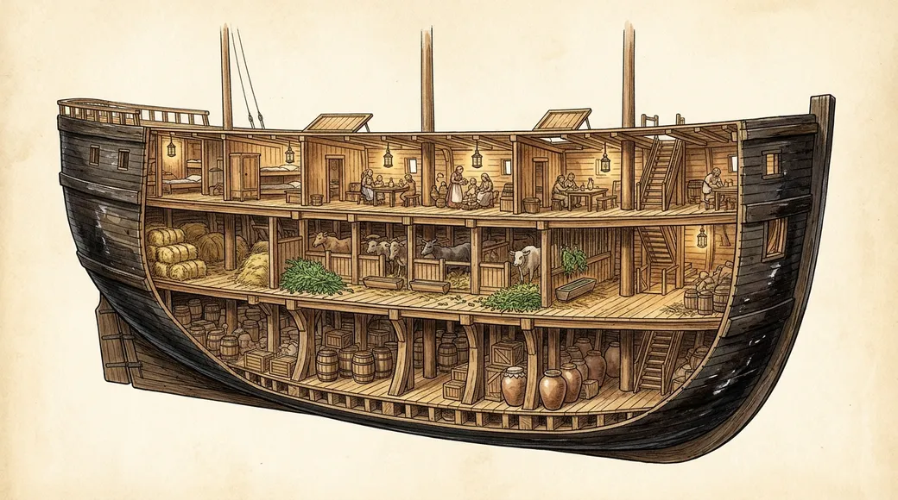
13a Food and cuttings
Chazal did not picture the animals living without food, or living on one miraculous ration. Hashem told Noach to take in “of all food that is eaten” as food “for you and for them” (Bereishis 6:21). On this pasuk Bereishis Rabbah 31:14 brings three views. Rabbi Abba bar Kahana says that Noach brought in pressed figs, and a teaching in the name of Rabbi Nechemyah says that most of what he brought in was pressed figs: a food “for you and for them,” for people and animals alike. Rabbi Abba bar Kahana also lists particular food for particular animals, including glass for the ostriches. People in the ancient world had seen that ostriches swallow stones and other hard bits, which grind up the food in their gizzards (see also Shabbos 128a). Rabbi Levi says that Noach took in cuttings so that he could plant after the water went down:
רַבִּי אַבָּא בַּר כַּהֲנָא אָמַר הִכְנִיס עִמּוֹ דְּבֵלָה, תָּנֵי מִשּׁוּם רַבִּי נְחֶמְיָה רֹב מִכְנָסוֹ דְּבֵלָה. רַבִּי אַבָּא בַּר כַּהֲנָא אָמַר הִכְנִיס עִמּוֹ זְמוֹרוֹת לְפִילִים, חֲצוּבוֹת לִצְבָאִים, זְכוּכִית לְנַעֲמִיּוֹת. רַבִּי לֵוִי אָמַר הִכְנִיס עִמּוֹ זְמוֹרוֹת לִנְטִיעוֹת, יִחוּרִים לִתְאֵנִים, גְּרוֹפִית לְזֵיתִים.
“Rabbi Abba bar Kahana said: He brought pressed figs in with him; it was taught in the name of Rabbi Nechemyah: most of what he brought in was pressed figs. Rabbi Abba bar Kahana said: He brought in with him vine branches for the elephants, squills for the gazelles, and glass for the ostriches. Rabbi Levi said: He brought in with him vine shoots for planting, fig cuttings for figs, and olive saplings for olives.”
Chazal thought carefully about the unusual diets of the animals they knew (although they were spectacularly wrong about the diet of ostriches). They also assumed that the water would drown and uproot the plants outside the Ark, as ordinary water does. That is why Noach needed cuttings to plant afterward.
13b The feeding
Chazal did not picture the animals sleeping through the year by a miracle either. In Sanhedrin 108b, Avraham’s servant Eliezer asks Shem how they managed in the Ark. Shem tells him that they fed each animal at its own time, by day or by night, that Noach found out only by chance what the chameleon (zikisa) ate, and that a fever kept the lion alive without food:
אָמַר רַב חָנָא בַּר בִּיזְנָא: אָמַר לֵיהּ אֱלִיעֶזֶר לְשֵׁם רַבָּא: כְּתִיב ״לְמִשְׁפְּחֹתֵיהֶם יָצְאוּ מִן הַתֵּבָה״, אַתּוּן הֵיכָן הֲוֵיתוּן? אָמַר לֵיהּ: צַעַר גָּדוֹל הָיָה לָנוּ בַּתֵּבָה. בְּרִיָּה שֶׁדַּרְכָּהּ לְהַאֲכִילָהּ בַּיּוֹם הֶאֱכַלְנוּהָ בַּיּוֹם, שֶׁדַּרְכָּהּ לְהַאֲכִילָהּ בַּלַּיְלָה הֶאֱכַלְנוּהָ בַּלַּיְלָה. הַאי זְקִיתָא לָא הֲוָה יָדַע אַבָּא מָה אָכְלָה. יוֹמָא חַד הֲוָה יָתִיב וְקָא פָאלֵי רִמּוֹנָא, נְפַל תּוֹלַעְתָּא מִינַּהּ, אֲכַלַהּ. מִיכָּן וְאֵילָךְ הֲוָה גָּבֵיל לַהּ חִיזְרָא, כִּי מִתְלַע אָכְלָה. אַרְיָא – אֶישָּׁתָא זַנְתֵּיהּ, דְּאָמַר רַב: לָא בְּצִיר מִשִּׁיתָּא וְלָא טְפֵי מִתְּרֵיסַר זָיְנָא אִישָּׁתָא.
“Rav Chana bar Bizna said: Eliezer said to Shem the Great: It is written, ‘By their families they went out of the Ark’ (Bereishis 8:19)—how did you manage? He replied: We had great hardship in the Ark. A creature whose nature is to be fed by day we fed by day; one whose nature is to be fed by night we fed by night. As for this chameleon (zikisa), my father did not know what it ate. One day he was sitting and cutting open a pomegranate; a worm fell out of it and it ate it. From then on he kneaded bran (chizra—which Rashi explains as bran mash, morsan) for it, and when it bred worms, it ate them. As for the lion, a fever sustained it, as Rav said: A fever sustains for no fewer than six [days] and no more than twelve.”
Sanhedrin 108b
(The worms in the chameleon’s bran hatched from eggs that insects laid there. Bran does not turn into worms.)
The Midrash Tanchuma says that for the whole twelve months Noach and his sons did not taste sleep, because they had to feed the animals: some ate in the second hour of the night and others in the third. Rabbi Akiva says there that they carried the branches for the elephants and the glass for the ostriches in their own hands. Once Noach was late with the lion’s meal, and the lion struck him so hard that he came out of the Ark limping. Another view there says that he came out groaning and coughing blood from the cold (Tanchuma, Noach 9). Rashi on Bereishis 7:23 brings the Midrash in this form:
וּמִדְרַשׁ אַגָּדָה: גּוֹנֵחַ וְכוֹהֶה דָם מִטּוֹרַח הַבְּהֵמוֹת וְהַחַיּוֹת. וְיֵשׁ אוֹמְרִים שֶׁאֵיחַר מְזוֹנוֹת לָאֲרִי וְהִכִּישׁוֹ.
“And a Midrash Aggadah explains: He was groaning and coughing blood from the toil of caring for the cattle and wild beasts. And some say that he was late bringing food to the lion, and it struck him.”
Rashi on Bereishis 7:23 (citing Tanchuma Noach 9)
Pirkei d’Rabbi Eliezer adds central storerooms for the food, and channels of water on every deck with openings that could be opened and closed (chapter 23).
13c Single pairs
Chazal also take into account how few animals of each species there were. When Noach sends out the raven, the raven objects. Only one pair of ravens entered the Ark, so if the angel of heat or the angel of cold kills it on the way, the world will lose a whole species (Sanhedrin 108b). Rashi explains that Noach took seven pairs of each clean animal so that he would have animals to offer as sacrifices after he left the Ark (on 7:2). Both passages assume that an animal lost from the Ark would not be replaced by a miracle.
אמר ריש לקיש: תשובה ניצחת השיבו עורב לנח, אמר לו: רבך שונאני ואתה שנאתני. רבך שונאני: מן הטהורין שבעה, מן הטמאים שנים. ואתה שנאתני, שאתה מניח ממין שבעה, ושולח ממין שנים. אם פוגע בי שר חמה או שר צנה, לא נמצא עולם חסר בריה אחת?
Reish Lakish said: The raven gave Noach a winning reply. It said to him: “Your Master hates me and you hate me. Your Master hates me—of the clean animals He took seven, of the unclean only two. And you hate me—you pass over the species of seven and send from the species of two! If the angel of heat or the angel of cold strikes me, won’t the world be left missing an entire creature?”
13d The re’em and the space in the Ark
The re’em is a huge wild animal, which the Gemara describes as towering over ordinary livestock. Chazal asked how it could come in through the door of the Ark. They did not say that the Ark stretched around it by a miracle. Bereishis Rabbah 31:13 gives two practical answers:
רַבִּי יְהוּדָה אוֹמֵר: רְאֵם לֹא נִכְנַס עִמּוֹ, אֲבָל גּוּרָיו נִכְנְסוּ. רַבִּי נְחֶמְיָה אָמַר: לֹא הוּא וְלֹא גּוּרָיו, אֶלָּא קְשָׁרוֹ נֹחַ בַּתֵּבָה.
“Rabbi Yehudah said: The re’em did not enter with him, only its young entered. Rabbi Nechemyah said: Neither it nor its young entered; rather Noach tied it to the Ark [so it swam alongside].”
Bereishis Rabbah 31:13
The Gemara in Zevachim (113b) works through the same problem one step at a time. On Rabbi Yochanan’s view the Mabul did not come down on Eretz Yisrael, so the re’em could have lived through the Mabul there. Reish Lakish holds that the Mabul came down on Eretz Yisrael too, so the Gemara asks how, on his view, the re’em lived through it, since it was far too big for the Ark:
- Rabbi Yannai answers that its young were brought in. The Gemara objects that Rabbah bar bar Chanah saw a re’em one day old that was as big as Har Tavor. (No animal could be that big. As a body grows, its weight outruns the strength of its bones, as with the giants before the Mabul.)
- Rabbi Yochanan then says that only its head came in. The Gemara objects that the head alone took up a parsah and a half.
- The Gemara then says that only the tip of its nose came in, so that it could breathe. It objects that the Ark was moving.
- Reish Lakish answers that they tied the re’em’s horns to the Ark. The Gemara then objects that Rav Chisda says the water was boiling.
Only at this last step does the Gemara bring in a miracle. It points out that the pitch of the Ark, and Og, who was outside the Ark, faced the same boiling water, and it concludes that a miracle was done for them: the water cooled at the sides of the Ark. Rashi explains there that Og and the re’em stood in the water next to the Ark and were so tall that the water did not cover them.
וְהָא קָסָגְיָא תֵּיבָה! אָמַר רֵישׁ לָקִישׁ: קַרְנָיו קָשְׁרוּ בַּתֵּיבָה. וְהָאָמַר רַב חִסְדָּא: אַנְשֵׁי דּוֹר הַמַּבּוּל בְּרוֹתְחִין קִלְקְלוּ וּבְרוֹתְחִין נִידּוֹנוּ! וּלְטַעְמָיךְ, תֵּיבָה הֵיכִי סָגְיָא? וְעוֹד, עוֹג מֶלֶךְ הַבָּשָׁן הֵיכָא קָאֵי? אֶלָּא נֵס נַעֲשָׂה לָהֶם, שֶׁנִּצְטַנְּנוּ בְּצִידֵּי הַתֵּיבָה.
“‘But the Ark was moving!’ Reish Lakish said: ‘They tied its horns to the Ark.’ ‘Yet did not Rav Chisda say that the Flood generation sinned with boiling heat and were judged with boiling heat?’ ‘On your own view, how did the Ark itself stay afloat [without its pitch melting]? And where did Og king of Bashan stand? Rather, a miracle was done for them, that the waters cooled along the sides of the Ark.’”
Every step before the last deals with a physical problem: the animal’s size, its breathing and the motion of the Ark. The Gemara brings in a miracle only for the heat of the water, which nothing natural could solve, and it limits that miracle to one place, the sides of the Ark.
Pirkei d’Rabbi Eliezer (ch. 23, with the Radal’s commentary) and the Netziv (on Bereishis 6:20) take up the wider question of how the Ark could hold all the world’s animals. They work with a small, fixed number of species, such as 365, the number of days in the solar year.
13e The fish and the boiling water
Chazal describe the water of the Mabul as boiling (Rav Chisda in Sanhedrin 108b; Rosh Hashanah 12a). Yet the Gemara holds that the fish lived through it. From the words “all that was on the dry land died” (7:22) it learns, “but not the fish in the sea” (Sanhedrin 108a). Rav Chisda says that no decree was issued against the fish:
כדרב חסדא, דאמר רב חסדא: בדור המבול לא נגזרה גזרה על דגים שבים, שנאמר ״מכל אשר בחרבה מתו״ — ולא דגים שבים.
As Rav Chisda taught, for Rav Chisda said: In the generation of the Flood, no decree was issued against the fish in the sea, as it is stated, “Of all that was on the dry land died” (Bereishis 7:22)—and not the fish in the sea.
That tells us only that the fish were not sentenced to die. It does not say how they lived through boiling water, and the cooling in the Gemara was only at the sides of the Ark. The Ramban on Bereishis 7:23 asks this question and answers it by nature. He brings the two views of Bereishis Rabbah 32:11 and gives a natural way for the fish to survive on each. In the first, the boiling water mixed with the seas and heated only their upper layer, while the fish went down into the depths and lived there. In the second, the fish in the seas near the Ocean, the great sea surrounding the land, fled there when they felt the water boiling. Even if all those fish died, he adds, most fish live in the Ocean, and the Mabul did not fall there, because the Torah says the rain was “on the earth” (7:12). From the Ocean the fish came back after the Mabul.
כי היו המים רותחין כדברי רבותינו (סנהדרין קח), אבל אם כן יהיו הדגים מתים. ואולי היה כמו שאמרו בבראשית רבה (לב יא) מכל אשר בחרבה ולא דגים שבים, ויש אומרים אף הן בכלל נאספין אלא שברחו לאוקינוס, ומכל מקום ניצולו הדגים. ושני הדעות האלו אפשריים, כי יתכן שמימי המבול הרותחים יתערבו בימים ויחממו עליוני הים בלבד והדגים יבאו בעמקי המצולות ויחיו שם, או כדברי יש אומרים שהיו דגי הימים שבתוך הארץ הקרובים מהם לאוקינוס בורחים שם בהרגישם רתיחת המים וניצולין מהם שם. ואפילו אם ימותו כלם הנה מרבית הדגה באוקינוס היא, ושם לא ירד מבול כמו שנאמר (לעיל פסוק יב) ״ויהי הגשם על הארץ״, ומשם יחזרו הדגים אחרי המבול.
“For the waters were boiling, as our Sages say (Sanhedrin 108b) — but if so, the fish would die. Perhaps it was as they said in Bereishis Rabbah (32:11), ‘of all that was on dry land,’ and not the fish in the sea, while some say they too were included in the decree except that they fled to the Ocean; either way, the fish survived.
Both opinions are possible, for it is plausible that the boiling waters of the Mabul mixed with the seas and heated only the upper layers of the sea, while the fish went down into the deep depths and lived there; or, according to the view that they fled, the fish in the inland seas near the Ocean fled there when they felt the water boiling and were saved. Even if all of them died, the majority of fish are in the Ocean, where no Mabul fell, as it is said (7:12), ‘And the rain was upon the earth,’ and from there the fish returned after the Mabul.”
Both of the Ramban’s answers are natural ones.
13f Building the Ark and drying the ground
Chazal and Rashi treat the building of the Ark in the same practical way. The Torah gives the Ark’s size as 300 amos long, 50 wide and 30 high (Bereishis 6:15). The width is one-sixth of the length, and the height is one-tenth. Bereishis Rabbah 31:10 reads these proportions as practical advice for anyone building a ship:
לִימְּדַתְךָ תוֹרָה דֶּרֶךְ אֶרֶץ, שֶׁאִם יַעֲשֶׂה אָדָם סְפִינָה שֶׁתְּהֵא עוֹמֶדֶת בַּלְּמִין, יַעֲשֶׂה רָחְבָּהּ אֶחָד מִשִּׁשָּׁה בְּאָרְכָּהּ וְגָבְהָהּ אֶחָד מֵעֲשָׂרָה בְּאָרְכָּהּ.
“The Torah teaches you practical wisdom: if a person builds a ship that is to stand in a harbor, he should make its width one-sixth of its length and its height one-tenth of its length.”
Bereishis Rabbah 31:10
Rashi on 6:14 explains why Noach coated the Ark with pitch both inside and outside:
בְּתֵיבָתוֹ שֶׁל מֹשֶׁה עַל יְדֵי שֶׁהָיוּ הַמַּיִם תָּשִׁים, דַּיָּהּ בְּחוֹמֶר מִבִּפְנִים וְזֶפֶת מִבַּחוּץ… אֲבָל כָּאן מִפְּנֵי חוֹזֶק הַמַּיִם זִפְּתָהּ מִבַּיִת וּמִחוּץ.
“In Moshe’s basket, because the waters were weak, clay inside and pitch outside sufficed… but here, because of the strength of the waters, he coated it with pitch both inside and outside.”
Rashi on Bereishis 6:14
The Gemara explains that the Ark narrowed to one amah at the top so that it would stay upright and not capsize (Sanhedrin 108b). The Midrash lays out the stalls in rows with aisles between them, 360 stalls on one view and 900 on another, and compares each layout with the narrowing roof. From the door in the Ark’s side it learns Rabbi Yitzchak’s rule for building large rooms. It also explains that Noach shoveled the dung out of the Ark through a hatch (Bereishis Rabbah 31:11).
Seder Olam even works out how deep the loaded Ark sat in the water. At its height the water stood fifteen amos above the tops of the mountains. It dropped those fifteen amos over sixty days, from the first of Sivan to the first of Av, which is one amah every four days. The Ark came to rest on the mountains on the seventeenth of Sivan, sixteen days into the drop. By then the water had fallen only four amos, so the tops of the mountains were still eleven amos under water. Seder Olam concludes that the bottom of the Ark sat eleven amos below the surface (Seder Olam Rabbah 4). Rashi brings this calculation and compares the Ark to “a laden ship” sitting deep in the water (on 7:17 and 8:4).
״בשבעה עשר יום״ — מכאן אתה למד שהיתה התיבה משוקעת במים י״א אמה, שהרי כתיב בעשירי באחד לחדש נראו ראשי ההרים... והם היו גבוהים על ההרים חמש עשרה אמה, וחסרו מיום אחד בסיון עד אחד באב חמש עשרה אמה לששים יום, הרי אמה לד׳ ימים. נמצא שבי״ו בסיון לא חסרו אלא ד׳ אמות ונחה התיבה ליום המחרת, למדת שהיתה משוקעת י״א אמה במים שעל ראשי ההרים.
“On the seventeenth day”—from here you learn that the Ark sat eleven amos deep in the water. For it is written, “In the tenth month, on the first of the month, the tops of the mountains appeared”... The waters stood fifteen amos above the mountains and dropped fifteen amos over sixty days from 1 Sivan to 1 Av—one amah every four days. Thus by 16 Sivan they had dropped only four amos, and the Ark came to rest the next day; you learn that it sat eleven amos deep in the waters above the mountaintops.
Rashi explains the end of the Mabul in the same way. The Torah uses two different words for the drying of the land. On 1 Tishrei the face of the ground was charvu (8:13), and on 27 Cheshvan the earth was yavshah (8:14). Only then did Noach leave the Ark. Rashi on 8:13–14 explains why Noach waited nearly two more months. On 1 Tishrei the ground had only become thick mud with a crust on top (na’aseis ke-tit she-karam paneha shel ma’alah), too wet to walk on or to plant. It became dry and hard enough for farming only on 27 Cheshvan. Rashi’s explanation matches what farmers see in their fields after a heavy rainstorm.
״חרבו״ — נעשה כמין טיט שקרמו פניה של מעלה. ״יבשה״ — נעשה גריד כהלכתה.
“Charvu” [‘the face of the ground was dried’, 8:13]—it became like mud whose upper surface had crusted over. “Yavshah” [‘the earth was dry’, 8:14]—it became properly firm, dry ground.
Seder Olam gives the same picture in more detail. The wind dried the water that had come down from above, and the water that had come up from below was swallowed back into its place. Even then the ground stayed wet, “like porridge,” so Noach’s family waited and did not sow until rain fell. On the twenty-seventh of Marcheshvan the ground was dry and hard (Seder Olam Rabbah 4).
13g The dead of the Mabul
Chazal treat the people killed in the Mabul as ordinary bodies, whose bones could stay in the ground for thousands of years and matter for halachah. The Gemara discusses whether the place where the parah adumah was burned had to be examined for hidden graves. The service of the parah adumah required strict purity, so a human grave hidden under that place would make it unfit. Reish Lakish requires the place to be examined, because in his view the Mabul came down on Eretz Yisrael and left bodies buried there. Rabbi Yochanan holds that the Mabul never came down on Eretz Yisrael, so there are no hidden graves from it to fear (Zevachim 113a). The Gemara brings the Mishnah that the children who drew the water for the parah adumah were raised in courtyards in Yerushalayim built over hollow ground, for fear of a hidden grave below (Parah 3:2). It also tells that in the time of the Beis HaMikdash human bones were found in the chamber where the wood was kept, and the Sages considered declaring all of Yerushalayim impure. Rabbi Yehoshua stood up and protested:
עָמַד רַבִּי יְהוֹשֻׁעַ עַל רַגְלָיו וְאָמַר: לֹא בּוּשָׁה וּכְלִימָּה הִיא לָנוּ, שֶׁנִּגְזוֹר טוּמְאָה עַל עִיר אֲבוֹתֵינוּ?! אַיֵּה מֵתֵי מַבּוּל? אַיֵּה מֵתֵי נְבוּכַדְנֶצַּר?
“Rabbi Yehoshua stood up and said: Is it not a shame and disgrace for us to decree impurity upon the city of our fathers? Where are the dead of the Mabul? Where are the dead of Nevuchadnetzar?”
Zevachim 113a
If those bodies had stayed in the ground, the whole city would already be impure. The Gemara explains that Rabbi Yehoshua did not mean that the bodies were never there, since Nevuchadnetzar’s dead certainly were. He meant that they were later cleared away. The Gemara there also explains two names of Bavel. Reish Lakish says that it is called Metzulah because all the dead of the Mabul sank there, and Rabbi Yochanan says that it is called Shinar because all the dead of the Mabul were shaken out there. The Gemara then asks how any bodies could have stayed in Eretz Yisrael if they all went to Bavel, and answers that some of them must have caught on the way and stayed behind (Zevachim 113a–b). So the Sages decided real questions of purity in the Beis HaMikdash by asking where the bodies of the Mabul would have washed up and stayed buried. They expected a flood over the whole world to leave ordinary remains in the ground thousands of years later.
The Netziv reasons the same way about the fossil bones that were being dug up in his day. He rejects the view that these bones come from earlier worlds, because the Midrash says that Hashem returned the earlier worlds to tohu vavohu and left nothing of them. Instead he writes that the currents of the Mabul buried creatures under heaps of earth, which is why diggers find the bones of creatures that no longer exist. He adds that Hashem arranged for the bones to remain:
“…so that a later generation would come and recognize the hidden things of nature.”
The Netziv, Haamek Davar on Bereishis 7:23
13h Plants and animals after the Mabul
When the dove brings back an olive leaf (8:11), the Midrash asks where she found it, and answers that it came from a place the water never covered (Bereishis Rabbah 33:6). The Ramban explains that the Midrash assumes that the Mabul uprooted and destroyed the trees everywhere it reached. On the plain meaning of the pasuk, he says, the trees were not uprooted, because once the whole world was under water no torrent swept across the land:
וְהִנֵּה עֲלֵה זַיִת טָרָף בְּפִיהָ מִפְּשׁוּטוֹ שֶׁל פָּסוּק זֶה יֵרָאֶה שֶׁלֹּא נֶעֶקְרוּ הָאִילָנוֹת וְלֹא נִמְחוּ בַּמַּבּוּל, כִּי לֹא הָיָה שָׁם נַחַל שׁוֹטֵף בַּעֲבוּר כִּי נִתְמַלֵּא כָּל הָעוֹלָם מַיִם.
“‘And behold, a plucked olive leaf was in its beak’—from the plain meaning of this verse it appears that the trees were neither uprooted nor wiped out in the Mabul, because there was no rushing torrent there, since the entire world filled up with water.”
Ramban on Bereishis 8:11
The Radak adds that olive trees keep their leaves all year (on 8:11). The Abarbanel notes that Noach’s small family did not have the people to fight off wild animals, and had no crops to eat while they waited to sow fields and plant vineyards. He explains that this is why Hashem put the fear of man on the animals and permitted eating meat (on 9:1–3).
13i The world Chazal could see
Each of these answers made complete sense given what anyone could observe at the time, just as anyone looking at the sky with the naked eye would picture a solid blue dome, the rakia, holding back water above it. Chazal and the Rishonim reasoned from the animals, ships and soils of the Mediterranean and the Near East. The land animals known there numbered in the hundreds, so a small fixed number of species, such as 365, was reasonable. For a few hundred familiar animals, twelve months of round-the-clock care by eight people looked hard but manageable. No one then knew how many species of animal exist or how different their diets are.
Biology, geology and oceanography have since found much that bears on these answers:
- Tens of thousands of species of vertebrates and millions of species of insects live across the globe. To fit the tens of thousands of living species of land vertebrates into 365 pairs, new species would have had to form in a burst on every continent within a few centuries after the Mabul. No such burst has been observed.
- Many species on distant continents eat food that could not have been gathered and stored for a year, such as fresh eucalyptus leaves, live ants, or the invertebrates that live deep in caves.
- Reef-building corals depend on algae that live inside them, and these algae die without sunlight. Under miles of murky floodwater the corals would have had no sunlight.
- Fish of fresh-water lakes die when salty ocean water mixes into their lakes. Rain takes centuries to flush sea salt out of the rift lakes of East Africa, and the fish would die long before then.
- Ocean salt soaks into land, and it takes meters of fresh rainwater to wash the salt out before wheat or maize can grow.
- Cemeteries from long before 2105 BCE, such as the graves of Varna in Bulgaria, still hold their dead as they were buried, with no layer of flood mud over them.
- A wooden hull 144 meters long bends unevenly between the crests and the troughs of ocean swells. The bending pries open the seams between the planks faster than pumps can clear the water.
Chazal and the Rishonim compared the text with the animals, ships and mud that they could observe. Comparing a literal six-day Creation and a Mabul in 2105 BCE with modern geology and biology continues their method. It compares the same text with what we have since learned to measure.
14. Sea life, reefs and ice under the Mabul
In the Torah’s account the water of the Mabul stood fifteen amos above the highest mountains and covered the earth for most of a year (Bereishis 7:11–12, 7:19–24, 8:13–14). The Torah presents the Mabul as Hashem’s act, in which “the windows of the heavens were opened” (7:11). It does not say that nature supplied the water, and nothing in nature could have. With roughly today’s mountains and oceans, covering Mount Everest would take more than three times all the water on Earth.
One may ask why any of this matters if the Mabul was a miracle. Chazal and the Rishonim themselves treat the year of the Mabul as running largely by the laws of nature. The Ramban asks how the fish survived the hot water and looks for a natural refuge for them, and the Gemara describes Noach and his sons feeding each animal at its own hour, by day and by night. And even if the water came and went by a miracle, we can still ask what happened to everything under it.
The water of the Mabul
The Mabul began in the six hundredth year of Noach’s life, which was the year 1656 from Creation, about 2105 BCE (7:11). Rain fell for forty days and forty nights (7:12). The water rose until “all the high mountains under all the heavens were covered,” and stood fifteen amos above them (7:19–20). It stayed at that height for a hundred and fifty days (7:24).
When the fountains of the deep and the windows of the heavens were closed, the water began to go down (8:2–3). The Ark came to rest on the mountains of Ararat in the seventh month (8:4). The tops of the mountains were seen only on the first day of the tenth month (8:5). Forty days later Noach sent out a raven, which went back and forth until the water had dried from the earth (8:6–7). Then he sent out the dove. She found no resting place for the sole of her foot and came back to him (8:8–9). Seven days later he sent her out again, and she came back toward evening with an olive leaf in her mouth (8:10–11). After another seven days he sent her out once more, and she did not come back (8:12).
In the Masoretic text, the Mabul begins on the seventeenth day of the second month of Noach’s six hundredth year (Bereishis 7:11), and the ground is dry on the twenty-seventh day of the second month of his six hundred and first year (8:14). People often sum this up as “a year and ten days.” But the commentators and the ancient Jewish texts place the stages in between on different calendars.
Rashi, following Seder Olam Rabbah 4, counts the 150 days in which the water prevailed from the end of the forty days of rain (Rashi on 8:3 and 8:4). On his count the Ark came to rest in Sivan (the seventh month, counting from Kislev), and the mountaintops were seen in Av. On 8:14, Rashi explains the gap between the start and end dates (eleven days, on his inclusive count) as the usual eleven days by which a solar year is longer than a lunar year, so that the Mabul lasted one full solar year. The Ramban on 8:4 instead counts the forty days of rain inside the 150 days. On his count the water began to go down at the 150-day mark, on 17 Nisan, and he treats the Ark’s coming to rest and the slower drop after it separately.
The Dead Sea Scroll commentary 4Q252 (cols. i–ii) also counts the forty days of rain inside the 150 days. It puts the Ark’s coming to rest three days after the 150-day mark (on day 17 of the seventh month, after day 14), and it counts a solar year of 364 days from the start of the Mabul to Noach’s leaving the Ark (Helen R. Jacobus, 2025).
The peak of the water, the Ark’s coming to rest, the first sight of the mountaintops and the drying of the ground came at four different points in the year. How deep the water stood at any place depended on how high that place was. To judge how fish, reefs, forests or caves fared, one has to use the time that each height actually spent under water, and not assume that every place stayed flooded from the first day to the last. Still, high ground lay deep under water for months, and low ground for most of a year.
How much water. With roughly today’s mountains and ocean basins, Mount Everest rises 8.85 kilometers (8,849 meters) above sea level, and fifteen amos add another seven to nine meters. Water spreads until its surface is level, so covering Everest means water at that height everywhere. Today’s oceans cover about 361 million square kilometers (NOAA). Raising the water over the oceans alone by 8.85 kilometers takes about 3.2 billion cubic kilometers of added water. Over the whole Earth, 510 million square kilometers, it takes about 4.5 billion cubic kilometers, or about 4.4 billion after subtracting the land that now stands above sea level. That much water had to appear and then disappear. (Lower mountains or shallower ocean basins before the Mabul would change these numbers. Whoever proposes a flatter Earth before the Mabul has to say what the continents and sea floors looked like, and explain the geology that changed them.)
A miracle can bring water and take it away without any of the limits that follow. These numbers matter for any account in which the water came and went by natural means.
The Earth does not have that much water. All the oceans together hold about 1.338 billion cubic kilometers, and all the water on Earth, counting ice, lakes, rivers and groundwater, comes to about 1.39 billion (USGS). The 3.2 billion cubic kilometers needed over the oceans alone is about 2.4 times the water in all the oceans, and the full amount for the whole globe is more than three times all the water on the planet. Ice sheets and glaciers hold about 24 million cubic kilometers, and groundwater about 23 million. Melting all the ice and pumping up every drop of groundwater would supply only a tiny fraction of what was needed.
Lower mountains. One traditional approach makes the mountains before the Mabul lower. The Netziv holds that the mountains higher than the mountains of Ararat were formed during the Mabul itself, so the water had to cover only Ararat, which was then the highest mountain (Haamek Davar on 7:19). Mount Ararat is 5,137 meters high. Covering the Earth to that height still takes about 2.5 billion cubic kilometers of water, nearly twice all the water on Earth.
כל ההרים הגבהים. אם נפרש ההרים הגבוהים ביותר כהיום. קשה שא״כ לא נתפרש גובה המים כלל. כיון שלא נתפרש גובה ההרים. אלא מיירי בהרי אררט. שמדבר באותה פרשה. והמה היו אז הגבוהים שבעולם. וכמ״ש כי ההרים הגבוהים עתה בארץ מהרי אררט נעשו בימי המבול:
“All the high mountains”: If we explain this as the highest mountains today, there is a difficulty, for then the height of the water would not be specified at all, since the height of those mountains is not given. Rather, it refers to the mountains of Ararat, which are mentioned in this passage, and they were then the highest in the world; as I have written, the mountains on earth today that are higher than the mountains of Ararat were formed during the days of the Mabul.
Raising the sea floor. Suppose someone keeps today’s land as it is and tries to flood the continents only by pushing up the ocean floor. Today’s land stands on average 797 meters above sea level (NOAA ETOPO1 elevation distribution). To bring the surface of the water up to 8,857 meters, the water standing over today’s land alone would use up about 90 percent of all the water in today’s oceans. That leaves an average depth of only 380 meters over today’s ocean basins, so the average ocean floor would have to rise about 12.2 kilometers relative to the land. Even if no peak before the Mabul stood higher than Mount Ararat, at 5,140 meters, the ocean floor would still have to rise about 6.9 kilometers. (A different landscape before the Mabul would change these numbers. Whoever proposes one has to describe it and explain what could lift the sea floor and drop it back down within a year.)
Water higher over the tall mountains than elsewhere. Some proposals have the water rise over the highest peaks only where those peaks stand, and stay lower elsewhere. Water that is connected does not stay piled up this way. A difference of 3.7 kilometers in the height of the water makes about 363 bar of extra water pressure at the same level (leaving aside the slight compression of water). Holding that mound in place with air pressure alone would take a difference of 363 bar in air pressure across the surface. And a basin cannot hold water above its lowest outlet without a solid wall.
In open water, gravity levels out any difference in height by a long wave, which travels faster the deeper the water is (NOAA long-wave propagation). In water 1 kilometer deep, that wave crosses 1,000 kilometers in about 2.8 hours. In water 4 kilometers deep, it crosses 1,000 kilometers in about 1.4 hours and 5,000 kilometers in about 7 hours. Keeping the water higher in some places than in others for months would take a constant miracle. (Each coral reef, ice core or layer of sediment also has to be compared with the depth and the length of time that a model with uneven water gives for that place, and not with one depth for the whole globe.)
The sky and the fountains of the deep. The Torah names two sources: “all the fountains of the great deep burst open, and the windows of the heavens were opened” (Bereishis 7:11). In the Gemara the fountains of the deep are springs that bring water up from under the ground. Rabbi Yochanan says that three of them stayed open afterward, and that the hot springs of Teveria are one of them (Sanhedrin 108a). But neither the sky nor the ground near the surface holds anything close to billions of cubic kilometers of water. At any moment the whole atmosphere holds only about 12,900 cubic kilometers of water, about one part in 250,000 of the 3.2 billion needed. If all of it fell at once, it would cover the Earth about two and a half centimeters deep. Ordinary rain cannot add to the Earth’s water at all, because it only moves water from the sea to the sky and back. The shallow water in soil and in the rock of the crust comes to about half of one percent of what the Mabul needed.
אָמַר רַבִּי יוֹחָנָן: שְׁלֹשָׁה נִשְׁתַּיְּירוּ מֵהֶם – בְּלוּעָה דְּגָדֵר, וְחַמֵּי טְבֶרְיָא, וְעֵינָא רַבָּתִי דְּבֵירָם.
Rabbi Yochanan said: Three of them [the fountains of the great deep] remained open—the gulf of Gader, the hot springs of Teveria, and the great spring of Beiram.
Deep inside the Earth there is more water, but it is bound up in minerals, not a liquid ocean ready to surge up. Between about 520 and 660 kilometers down, in the part of the mantle called the transition zone, minerals such as ringwoodite can lock water inside their crystals. In 2014 a team led by Graham Pearson of the University of Alberta found a tiny grain of ringwoodite with water in it inside a diamond from Juína in Brazil. The same year, Brandon Schmandt and his colleagues (Science, 2014) presented evidence from earthquake waves and from laboratory experiments that rock melts in the mantle as it gives up water held in the minerals of the transition zone.
Water locked inside solid rock hundreds of kilometers down is not a pool of free liquid that anyone has measured. A natural account would have to explain how billions of cubic kilometers of it broke free, rose to the surface within weeks, and went back down into the deep mantle within a year. Seder Olam Rabbah 4 says that the lower waters returned to their source after the Mabul. That tells us where the water went. It does not explain, under ordinary physics, how fast it moved, where it was held, or where the energy came from.
Draining the water into the ground. Draining 4.4 billion cubic kilometers in 175 days takes an average outflow of 2.91 × 1011 cubic meters a second. If the water drained evenly through the whole surface of the planet, it would have to sink into the ground at 3.42 centimeters a minute everywhere. If it drained through only 1 percent of the surface, it would have to drop at 3.42 meters a minute.
Suppose there were an open path 5 kilometers long through rock, from the surface down to an empty reservoir, under the entire globe. Take the ordinary viscosity of water (0.001 Pa·s) and the standard law for water flowing through porous rock (Darcy’s law). To drain 99 percent of the floodwater in 175 days, the rock would need a permeability of 1.55 × 10−10 square meters. Ingebritsen and Manning give 5.8 × 10−17 square meters as the standard permeability of continental crust 5 kilometers down. Their estimate for temporary high flow is 1.83 × 10−14 square meters. The rock would have to let water through about 2.7 million times more easily than normal crust, and 8,500 times more easily than in that temporary high flow. Draining through only 1 percent of the Earth’s surface makes the requirement a hundred times harder. (Open shafts or cracks let water move faster than pores in rock do, but they still need a space underground big enough to hold all the returning water.)
Storing the water underground or in the air. Even if the top 10 kilometers of the whole planet were 10 percent empty, connected pore space, that space would hold only about 12 percent of the added water. That assumption is already far too generous, since real aquifers are full of water already (USGS water inventory). Fitting all 4.4 billion cubic kilometers into the top 10 kilometers of crust would take up 86 percent of the volume of the rock.
Evaporating the water does not work either. At the normal heat needed to turn water into vapor (NIST water thermophysical properties), evaporating that much water in one year takes an average of 620,000 watts on every square meter of the planet. The Earth absorbs only about 240 watts per square meter from the Sun (NASA). A whole year’s sunlight, used for nothing but evaporation, would remove only about 3.35 meters of water from the whole globe. Holding all that vapor in the air would also press on the surface with about 850 bar of extra air pressure. And any vapor that later rained back down would still be on Earth.
How fast the water rose. Supplying the water is one problem for a natural account. The speed at which it came is another. Rashi counts the hundred and fifty days in which the water stood at its height from the day the rain stopped (on 8:3). On that count the water reached its full height by the fortieth day (7:17–20). Reaching Everest’s height in forty days takes an average rise of about 9.2 meters an hour, about 220 meters a day, over the whole Earth. (This average assumes that the water came in at a steady rate. Bereishis 7:11 names both the windows of the heavens and the fountains of the deep, and gives no rate.)
The heaviest rain ever recorded in a single day fell in January 1966 at Foc-Foc, on the island of Réunion in the Indian Ocean, during a tropical cyclone (the kind of storm called a hurricane in the Atlantic). That day brought 1.825 meters of rain. If all of the Mabul’s water came as rain, every place on Earth had to get about 120 times that record every day for forty days. If half of it surged up from the fountains of the deep, the rain still had to reach sixty times the record everywhere for forty days.
Rain on bare hillsides. The Ramban pictures the water of the Mabul as standing still rather than rushing like a torrent (on 8:11). That describes land already deep under water. While the water was rising, rain was pouring onto slopes that were still dry. Picture a bare hillside 100 meters long that drops 1 meter from top to bottom (a slope of 1 percent), and use the standard engineering equations for water running off the ground, with a surface roughness of 0.04 (U.S. Army Corps of Engineers runoff reference; FHWA Manning and boundary shear equations).
If all 220 meters a day fell as rain, the water running off the bottom of that slope would be 0.254 meters deep and would move at 1.00 meter a second, with a drag on the ground of 25 pascals. By the standard Shields threshold of 0.055 (U.S. Army Corps of Engineers Shields threshold), a drag of 25 pascals is enough to roll loose quartz gravel about 28 millimeters across. Much less rain would still move a good deal:
- With a tenth of that rain (22 meters a day), the drag is 6.3 pascals, enough to move gravel 7 millimeters across.
- With a hundredth of it (2.2 meters a day), the drag is 1.6 pascals, enough to move coarse sand 1.8 millimeters across.
A small fraction of that rain would still strip away loose soil, gravel and objects lying on the surface, instead of leaving fragile landscapes as they were. How much ground actually erodes depends on local conditions: how much water the soil soaks up, and whether there are plants, clay, bare bedrock or pools. Timing matters too. At the average rate of rise, each meter of height near the shoreline goes under water in about 6.5 minutes, while runoff takes 100 seconds to cross the slope at full rain and 630 seconds at a hundredth of it. But heavy rain on bare slopes is far more violent than calm water standing over land that is already submerged.
The heat released by the rain. How much heat the rain releases depends on where the water came from. Ocean water that evaporates takes in heat first, and when it rains back down it adds no new water (NOAA). Water that arrived already liquid adds only the heat it carried at its own temperature. But every kilogram of new water vapor that condenses into rain releases about 2.26 million joules (NIST water thermophysical data), enough to bring about six liters of cold water to a boil.
Suppose the 4.4 billion cubic kilometers of added water (4.4 × 1021 kilograms) arrived as new vapor and condensed over forty days. It would release about 1028 joules, about 5.6 million watts on every square meter of the Earth’s surface. An ordinary hurricane releases about 5 × 1019 joules a day in this way (NOAA). The rain of the Mabul would release as much heat as five million hurricanes blowing at once for forty days. If even 0.48 percent of that heat stayed in the ocean and the floodwater, it would warm all of it by 2 °C.
If all of that heat stayed on Earth, it would bring both the floodwater and the oceans to a boil and boil more than half of the water away. The Earth can lose heat to space only by radiating it. To radiate 1028 joules within forty days, the top of the atmosphere would have had to reach close to 3,000 degrees Celsius, nearly twice the melting point of iron. Rain condensed from new water vapor could not have brought the Mabul’s water in forty days without boiling the seas away. The other natural sources proposed for the water, comets and new ocean floors formed within the year, release even more heat.
14.1Modox Alert!Chazal say that the water of the Mabul was hot and that the fish lived through it. Hot water over the whole Earth could not have cooled by nature within a year, and the corals of shallow reefs cannot live for months in the dark under a kilometer or more of water.Rav Chisda says that the water of the Mabul was hot (Sanhedrin 108b). The Gemara names a miracle that cooled the water only beside the Ark (Zevachim 113b), and it holds that the fish lived through the Mabul. The Ramban suggests that the fish went down to cooler water in the depths, or fled to the Ocean (on 7:23).Cooling 3.2 billion cubic kilometers of added water from 100 °C to 20 °C means getting rid of about 1.1 × 1027 joules. Even a perfect radiator at 100 °C covering the whole globe, with no sunlight coming in, would need at least 60 years to send that heat into space. In one year it could cool only about 1.7 percent of that water.No fish is known to tolerate water above 45.6 °C, even for a short time. Fish that went down to the cool depths had more than eight kilometers of water above them, and freshwater fish could not flee to the salty Ocean.A layer of fresh water floating on the sea could keep the water under it salty. But a shallow reef under even one kilometer of water lies far below the sunlit top 200 meters of the sea. Off eastern Hainan, two fossil Porites corals (14FJ4 and 14FJ14) grew through 4219 years before 1950, about 2270 BCE, a date that some give for the Mabul.Core
Darkness, pressure and heat
[Modox Alert! If you keep back issues of Tradition next to your Steinsaltz Shas, feel free to skip this obviously post-Hirschian hermeneutic of hydrological allegoresis, and move on to the next item.]
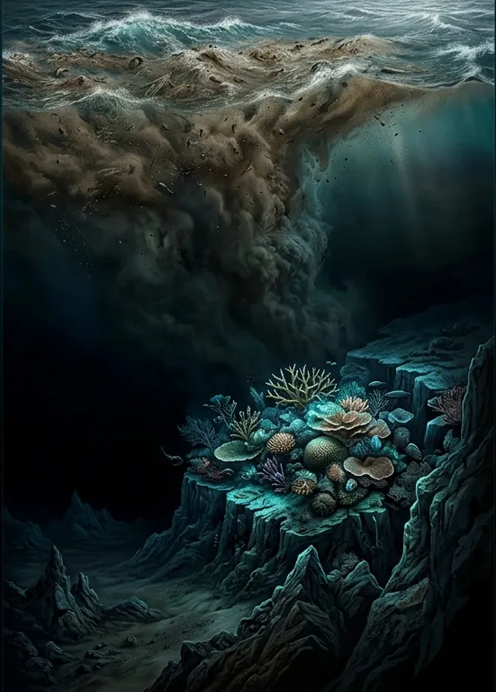
What Chazal say. Rav Chisda says that the water of the Mabul was hot: “With heat they sinned, and with heat they were punished.” He learns this from the word vayashoku, “the waters calmed” (8:1). Megillas Esther uses a word from the same root for the king’s anger cooling, so Rav Chisda infers that the water of the Mabul was hot before it cooled (Sanhedrin 108b and Rosh Hashanah 12a).
אמר רב חסדא: ברותחין קלקלו בעבירה וברותחין נידונו. כתיב הכא (בראשית ח, א): ״וישכו המים״, וכתיב התם (אסתר ז, י): ״וחמת המלך שככה״.
“Rav Chisda said: With boiling heat they corrupted themselves in sin, and with boiling heat they were judged. Here it is written (Bereishis 8:1), ‘And the waters subsided [vayashoku],’ and there it is written (Esther 7:10), ‘And the king’s anger cooled [shachachah].’”
Sanhedrin 108b
The Gemara treats this heat as a physical fact that needs explaining. It asks how the pitch of the Ark, and Og and the re’em outside it, could have lasted in boiling water, and it answers that a miracle cooled the water right beside the Ark (Zevachim 113b). When the Gemara needs a miracle for the heat, it names one, and it limits it to the water at the sides of the Ark.
The Gemara gives no such miracle for the fish. From the words “all that was on the dry land died” (7:22) it learns, “but not the fish in the sea” (Sanhedrin 108a), and Rav Chisda says that no decree was made against the fish (Zevachim 113b). So in the Gemara’s view the fish lived through the Mabul in its hot water.
The Ramban asks how the fish survived, and he gives two natural answers (on 7:23). Either the boiling water heated only the top of the sea while the fish went down into the depths, or the fish of the inland seas fled to the Ocean, the great sea around the land, where he holds that no rain fell. Most fish live in the Ocean in any case, he adds, and from there they came back to the other seas after the Mabul.
Hot water over the whole Earth
Cooling a hot Mabul. Chazal and the Ramban do not say that all the water on Earth stayed at 100 °C and then cooled by ordinary means. But if it did, the Earth could not have cooled it within a year. Take only the smaller figure of 3.2 billion cubic kilometers of added water, about 3.2 × 1021 kilograms (at 1,000 kilograms per cubic meter). Water takes about 4.18 kilojoules per kilogram to change its temperature by one degree (NIST). Cooling that water from 100 °C to 20 °C means getting rid of about 1.1 × 1027 joules.
The Earth can lose that heat only by radiating it into space. To radiate 1.1 × 1027 joules in one year from the Earth’s whole surface (5.1 × 1014 square meters), every square meter would have to give off about 66,000 watts. Suppose a perfect radiator (what physicists call a blackbody) at 100 °C covered the whole globe, with no sunlight coming in (NASA) and no atmosphere to trap heat. By the Stefan–Boltzmann law (NIST), even it would give off at most about 1,100 watts per square meter. At that rate the Earth needs at least 60 years to radiate the extra heat. In one year it could cool only about 1.7 percent of that water from 100 °C to 20 °C. (A model in which only a thin top layer was hot, or the hot water was carried away, or the heat was removed by a miracle, does not face this 60-year minimum. A hot Mabul over the whole Earth that cooled by nature does.)
How hot a fish can live. The most heat-tolerant fish known is a small tilapia that lives in the hot springs of Lake Magadi in Kenya. In 2016 Chris Wood of the University of British Columbia and his colleagues measured how much heat this tilapia can take (Wood et al., 2016). It loses its balance at 45.6 degrees Celsius. That is the highest short-term limit recorded for any fish, and nowhere near the 100 degrees of boiling water.
Mixing the floodwater into the sea. Today’s oceans hold 1.338 billion cubic kilometers of water (USGS water inventory), at an average of about 4 °C (Griffies et al.), with 35 grams of salt in every kilogram. If 4.4 billion cubic kilometers of fresh water were added, the old ocean would make up only about 23 percent of the combined water and 23 percent of its capacity to hold heat. The salt would be diluted to about a quarter of its strength, which threatens both the life of the sea and the life of fresh water.
Suppose the floodwater mixed thoroughly into the old ocean without cooling much on the way:
- Floodwater at 60 °C would raise the average temperature of the ocean to 47.1 °C.
- Floodwater at 100 °C would raise it to 77.9 °C.
- Floodwater at just 58 °C would already bring the mixed ocean to 45.6 °C, the limit of the Magadi tilapia.
Starting the old ocean at 10 °C instead of 4 °C raises these figures by only about 1.4 °C. And the tilapia’s limit is for a short time; living in hot water for a whole year is far harder.
Even if the floodwater was cool, most fish can live only in a narrow range of saltiness. Sea water holds about 35 parts of salt per thousand, and fresh water less than half a part. If the Mabul’s water fell as fresh rain and mixed completely with the oceans, the combined seas would have dropped to about 8 parts per thousand. In 1934 the German zoologist Adolf Remane surveyed the animals on the floor of the Baltic Sea, which grades from salty in the west to nearly fresh in the north. He found the fewest species where the water held 5 to 8 parts per thousand, because that water is too fresh for most sea animals and too salty for most freshwater ones. If instead the added water was salty, every river and lake would have turned salty.
Draining the floodwater afterward makes a second problem if the seas had mixed. Whatever took away the extra water would take the mixed-in salt and heat with it, unless it somehow separated the salt from the fresh water. Bringing the ocean back to its original size would leave it with 8.3 grams of salt per kilogram, so about 76 percent of the ocean’s original salt would have gone off with the floodwater. The ocean that remained would also stay at its mixed temperature (78 °C if the floodwater was 100 °C) until it cooled by itself.
A layer of fresh water over the sea
Fresh water floating on the sea. The strongest natural answer is that the fresh floodwater floated on top of the sea without mixing, and later drained off the surface by itself. Fresh water is lighter than salt water and can form a layer over it, keeping an older salty ocean underneath. Real floods that pour into the sea can also plunge down or mix, depending on their saltiness, temperature and load of mud (Zavala, 2020). Such layering could keep deeper water salty in places, so the dilution would not necessarily kill every sea creature. But only a very little of the floodwater could mix downward. To keep the remaining ocean at 30 grams of salt per kilogram or more, less than 5.2 percent of 100 °C floodwater could mix down. To keep the ocean from warming more than 2 °C on average, less than 0.64 percent could. And even with no mixing at all, heat still passes across the boundary from the warm water above to the cold water below.
This is the Ramban’s first answer: the hot water heated only the top of the sea, and the fish went down into the depths. Warm water does stay near the surface, so we can work out what such a layer would have done. Suppose fresh water at 90 °C lies still for 150 days over sea water at 28 °C with 35 grams of salt per kilogram:
- If heat and salt spread only by the slow movement of molecules (water thermal diffusivity reference), the water 10 to 30 meters below the old sea surface stays at 28.0 °C and 35.0 grams of salt per kilogram. Only the top 3 meters warm a little, to 31.7 °C.
- In a tracer experiment in the North Atlantic, Ledwell, Watson and Law (1993) measured how fast the open ocean actually mixes up and down: 1.1 × 10−5 square meters a second (Met Office summary). At that rate the water 3 meters below the boundary reaches 54.6 °C and 20.0 grams of salt per kilogram, and the water 10 meters below reaches 45.2 °C and 25.3 grams. The water 30 meters below warms only to 30.3 °C and drops slightly to 33.7 grams.
- With stronger mixing, at 10−4 square meters a second, the water 30 meters below reaches 45.2 °C and 25.3 grams, while the water 100 meters below stays cool and salty at 29.5 °C and 34.1 grams.
Under a hot fresh layer, then, sea life near the boundary meets deadly heat and fresh water, while deeper water stays cool and salty.
Real floods along coasts have the same sharp difference with depth. During a river flood over the Keppel Islands of Australia in January 1991, Van Woesik recorded 19 days of fresher water, which killed about 85 percent of the corals on the sheltered, shallow reefs on the lee side of the islands and far fewer at exposed sites. On the Ramban’s first answer, fish in open water a few tens of meters below the boundary could have stayed cool and in salt water. Reefs fixed in shallow water could not move away from the heat, the fresh water and the darkness, and coastal bottom water cut off from the open sea could also run out of oxygen.
Oxygen in water cut off near the coast. Even a cold, salty layer of water at the bottom of the sea, sheltered from the heat and the fresh water above, loses its oxygen once it is cut off from the surface. A sealed bottom layer 10 meters deep, starting at 7 mg/L of oxygen, holds 50 grams of oxygen per square meter before it falls to 2 mg/L. That is NOAA’s 2 mg/L hypoxia threshold, where sea life begins to suffocate. In Chesapeake Bay, the mud of the sea floor used up 0.4 to 4.0 grams of oxygen per square meter a day, with a long-term median of 1.0 (University of Maryland Chesapeake Bay report, §4.1).
At that median rate, a sealed 10-meter layer becomes hypoxic in 50 days (125 days at 0.4, and only 13 days at 4.0). To become hypoxic within 150 days takes only 0.33 grams a day, the oxygen used up in decaying just 19 grams of organic carbon per square meter. A layer 100 meters deep takes 500 days at the median rate (125 days at 4.0). So sea life trapped in the bottom water of sheltered, shallow coasts would run out of oxygen long before the year of the Mabul ended, while deeper water could last.
Rotting plants could not, however, take the oxygen out of the whole ocean. Removing 5 mg/L of oxygen from today’s ocean (USGS ocean volume) by the decay of plants would take about 2,500 gigatonnes of carbon, while all the living plants on Earth hold only about 450 gigatonnes of carbon (Bar-On, Phillips, and Milo). The loss of oxygen is a problem for basins near the coast that were cut off, not for the open sea.
Pressure and mud in the depths
The pressure on the fish below. Every ten meters of water presses down about as hard as the whole atmosphere above us. At the bottom of 8,849 meters of water, close to 900 kilograms press on every square centimeter, about the weight of a small car resting on a fingernail. Every place at today’s sea level lay under that pressure for months. Water spreads until its surface is level, so the floodwater stood just as high over the Ocean as over the land, whether or not rain fell on the Ocean itself. So a fish that went down into the depths of a sea, as in the Ramban’s first answer, or stayed below today’s sea level in the Ocean, as in his second, had more than eight kilometers of water pressing down on it. No fish has ever been seen alive deeper than 8,336 meters. That record was set in 2022 by a snailfish that a team led by Alan Jamieson of the University of Western Australia filmed in the Izu-Ogasawara Trench, south of Japan. Ordinary fish of the surface and the middle depths could not have survived the pressure of the depths under a flood over the whole Earth.
Neither of the Ramban’s answers helps the fish of lakes and rivers. Freshwater fish die in salt water, so they could neither flee to the Ocean nor come back from it. Rivers have no depths to hide in, and most lakes are shallow. Even Lake Tanganyika in East Africa, one of the world’s few deep lakes at about 1,470 meters, has oxygen only down to about 100 meters in the north and about 240 meters in the south, so most of its fish live in that upper layer. The Ramban’s answers also leave out the corals of warm-water reefs, which cannot move and lose their algae in the dark.
Mud in deep water. Deep water is not automatically safe from mud stirred up from above. In the Cariaco Basin off Venezuela, an earthquake on July 9, 1997 set off an underwater flow of mud that moved more than 100,000 tonnes of sediment (Thunell et al., Nature, 1999). Scientists had placed traps in the basin to collect the particles sinking through the water. In the trap at 1,210 meters, the amount collected in the two weeks around the event (July 3–17) jumped to 50.15 times the usual (median) amount: 4,327.43 against 86.29 milligrams per square meter per day. In the trap higher up, at 810 meters, it rose only 2.43 times (Thunell and Tappa, PANGAEA). An account that shelters fish in deep water under warmer floodwater has to deal with mud pouring onto the floor of the basin as well.
Darkness and the reefs
Corals are the small sea animals whose limestone skeletons build up a reef. In warm, shallow seas, microscopic algae live inside each coral’s tissues. They make food from sunlight and supply up to 90 percent of the coral’s energy. NOAA puts the typical sunlit zone of the ocean in the top 200 meters, with much darker water below and almost no light from the surface reaching a depth of a kilometer.

A shallow tropical reef under even one kilometer of water for months would lose the sunlight its algae need, even if the denser water around its polyps stayed salty. (Some corals do live in dimmer light. Mesophotic coral communities (NOAA) tolerate less light, and deep-sea corals such as Lophelia pertusa have no algae and feed on plankton in cold darkness. The point here is about shallow reefs that depend on light and grew where they stand.)
Pure, clear water with no mud in it still blocks sunlight when it is kilometers deep. Pope and Fry (1997) measured how strongly pure water absorbs visible light at the color it absorbs least, a wavelength of 418 nanometers: 0.0044 ± 0.0006 per meter. Take the most favorable value, 0.0038 per meter, let every ray go straight down, and allow no loss at the surface or from mud. Even then:
- At most 47 percent of the surface light reaches 200 meters.
- At most 2.24 percent reaches 1,000 meters. The light falls to 1 percent at 1.21 kilometers and to one millionth at 3.64 kilometers.
- Under 5,140 meters of water (the height of Mount Ararat), at most about 3.3 billionths (3.29 × 10−9) of the light gets through.
- Under 8,857 meters (the height of Everest), only 2.4 × 10−15 of it gets through.
Reefs and land plants kilometers down, even under spotless water, would sit in near-total darkness and could not make food from light.
In 2022 the marine biologists Martinez, Grover and Ferrier-Pagès kept two species of coral in the dark for eight weeks, feeding them three times a week (Frontiers in Marine Science). One species, Turbinaria reniformis, lost half or more of its algae within the first two weeks. The other, Oculina patagonica, kept most of its algae, but both species had less protein in their flesh by the end. In controlled experiments that cut down the light, Bessell-Browne and colleagues (2017) likewise found tissue damage, bleaching and stopped growth, and NOAA’s Coral Reef Watch tracks heat stress on reefs by how long it lasts (NOAA Coral Reef Watch). (From a single pale band in a coral’s skeleton, scientists cannot tell darkness apart from heat, salt stress or disease unless they sample it in steps shorter than a year.) Under kilometers of floodwater, reefs fixed in shallow water got no usable sunlight for months.
Corals that grew through 2270 BCE. Some writers add 165 years to 2105 BCE and place the Mabul around 2270 BCE, about 4219 years before 1950. (These are the 165 years by which historians date the destruction of the first Beis HaMikdash earlier than the traditional count does.) Off eastern Hainan, in China, Chen and colleagues (Geophysical Research Letters, 2023) drilled cores from four fossil Porites corals that grew about two to three meters below high tide. They dated the corals by uranium–thorium dating. Two of the colonies span 4219 years before 1950:
- Colony 14FJ4 grew, by the researchers’ estimate, from 4263 to 4186 years before 1950.
- Colony 14FJ14 grew from 4269 to 4198 years before 1950.
The uranium–thorium dates are uncertain by roughly a decade. If the Mabul came in 2270 BCE, these two corals, growing a few meters below the surface, would have spent months in the dark under kilometers of water. Yet on their dates, two separately dated colonies of shallow-water coral were growing through that year. (A pause of a single year in their growth could be seen only by examining the growth bands themselves. The youngest core, 14FJ15, ends at about 4057 years before 1950, about 2108 BCE. Its uncertainty overlaps 2105 BCE, so it cannot be placed clearly before or after that date.)
14.2Many species of fish live in one lake and nowhere else. For the year of the Mabul every lake was part of one ocean, and afterward each species had to end up back in its own lake.Lake Tanganyika in East Africa has at least 250 species of cichlid fish, and Lake Malawi has at least 700. Nearly all of them live in their own lake and nowhere else in the world.Lake Tanganyika holds about 25 to 32 milligrams of chloride per liter, and seawater about 19,000. The river that drains the lake carries off so little of its water that, even at the highest estimate of its flow, seawater from the Mabul could make up no more than 2.17 percent of the lake today.Lake Baikal in Siberia has its own seal, the nerpa. People hunted nerpas at the lake for thousands of years before 2105 BCE, and nerpas lived there afterward too.Some freshwater mussels spend the first stage of their lives clamped to one particular species of fish. Each of those mussels had to end up in the same river as its fish.Core
Fish and mussels that live in one place only
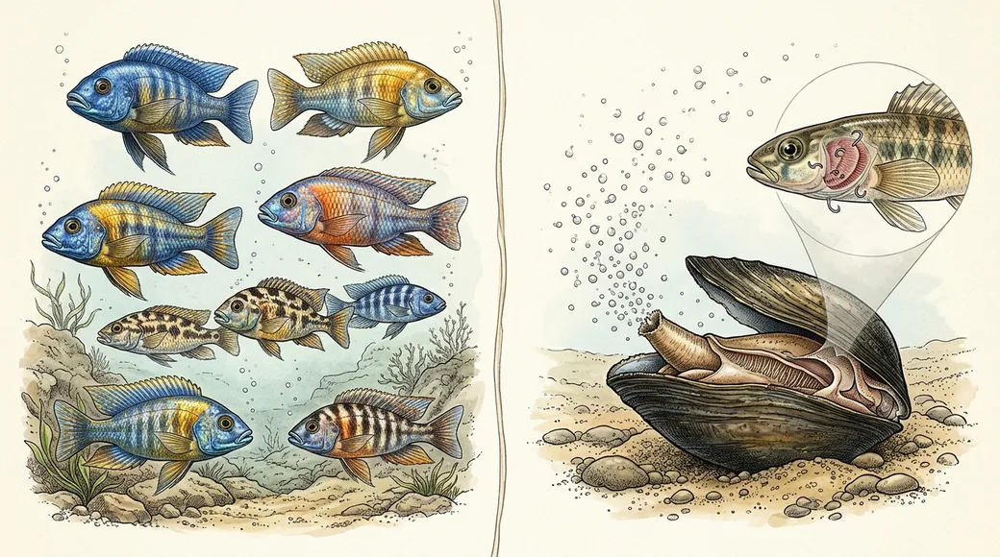
The Gemara learns from the words “all that was on the dry land died” (7:22) that the fish did not die in the Mabul. On this reading, the fish of the lakes and rivers lived through the Mabul in the water. But for that year the water stood kilometers deep over every lake, and all the lakes were part of one ocean.
The cichlids of Tanganyika and Malawi. Cichlids are a family of freshwater fish. Lake Tanganyika, in East Africa, has at least 250 species of them, and Lake Malawi has at least 700. All but a handful of the cichlid species in Lake Malawi live only in that lake and the rivers that join it. Lake Malawi lies only a few hundred kilometers south of Lake Tanganyika, and each lake still has its own species. When the water of the Mabul went down, each Tanganyika species had to end up back in Tanganyika and each Malawi species in Malawi, with none of them mixed into the other lake or left anywhere else.
The history of Lake Malawi. Scientists of the Lake Malawi Drilling Project drilled into the mud at the bottom of the lake and brought up cores. In 2015 Robert Lyons, Christopher Scholz, Andrew Cohen and their colleagues used these cores to describe the lake’s history over 1.3 million years, without a break (Proceedings of the National Academy of Sciences). In the later part of that time they found 24 periods when the level of the lake fell more than 200 meters below where it stands today, and in 15 of them it fell more than 400 meters. This means that Lake Malawi has been an inland lake, cut off from the sea, for more than a million years.
In 2016 Sarah Ivory and her colleagues compared these changes in the lake’s level with the family tree of the cichlids, which biologists have built from the fishes’ DNA (Proceedings of the National Academy of Sciences, 2016). The big rises and falls of the lake came at the same times as the cichlids split into new species. On these findings, the cichlids of Lake Malawi became hundreds of species inside the lake itself, over the last 1.2 million years, and the lake was there the whole time.
Fish mixed by a flood. Biologists in Japan have watched what happens to two species of fish after a flood puts them in the same water. In 2011 the tsunami of the Great East Japan Earthquake, a sea wave more than ten meters high, flooded the center of the town of Otsuchi. Where the town center had stood, the wave left new freshwater ponds fed by springs. The biologists who studied the ponds think that the wave carried in marine sticklebacks, small fish that normally live in the sea, and that the water draining away washed freshwater sticklebacks down into the ponds from the streams above the town.
Takuya Hosoki, Jun Kitano and their colleagues at Japan’s National Institute of Genetics followed the fish in the ponds for nine years. The two species interbred within a year. In 2012, 38 percent of the fish they sampled were hybrids of the marine and the freshwater species. The ponds suited the freshwater species, so natural selection removed the DNA of the marine species in less than ten years, about ten generations for these fish. By 2020 nearly all of it was gone, and the fish in the ponds were again almost all freshwater sticklebacks (Nature Ecology & Evolution, 2026).
So selection can undo a mixture of two species in one pond, by removing one of them. A flood that joined Lake Tanganyika and Lake Malawi would have put hundreds of species from both lakes into the same water, where they could spread and interbreed across both basins. Selection in that one body of water has no way to send 250 species back into Tanganyika and 700 back into Malawi.
Sea salt in the lakes
The salt in Lake Tanganyika. Water that joined two lakes for a year would not necessarily make every species swim across and mix, especially if the deep water of each lake stayed apart. A simpler question is how much sea salt got into Lake Tanganyika and stayed there. To answer it, chemists measure the lake’s chloride, which is part of ordinary salt. When water evaporates from the lake it leaves almost all of its chloride behind, so chloride leaves the lake almost entirely with the water that flows out of it. For this reason Branchu and Bergonzini (2004), in their study of the lake’s water, treat chloride as the most reliable chemical tracer in Lake Tanganyika.
On the Scripps expedition of 1973, Craig measured the chloride in the lake at many depths. He found about 26.6 ppm from 5 to 45 meters down, 27.6 to 28.0 ppm in 14 samples from 120 to 867 meters, and 27.9 ppm at 1,300 meters. (For fresh water, a part per million, ppm, is about the same as a milligram per liter, mg/L.) Branchu and Bergonzini (Table 2) report an average at the surface of 0.707 mmol/L (about 25.1 mg/L), and readings in the north of the lake run near 32 mg/L (Cohen et al., 1997). Take 30 mg/L as a generous upper limit, and suppose that every bit of the lake’s chloride came from the Mabul. Seawater holds about 19,000 mg/L of chloride (USGS seawater constituents, Table A-1). If the water of the Mabul mixed into the sea, the sea it left behind would hold 8.3 grams of salt per kilogram, which is 4,500 mg/L of chloride. Lake Tanganyika holds only a tiny fraction of the chloride that either kind of water would have left in it. (Most of the lake’s natural salt is bicarbonate and carbonate, so its total saltiness cannot be used in place of its chloride.)
The river could not have washed the salt out. Lake Tanganyika holds 18,900 cubic kilometers of water. It loses most of its water to evaporation, which leaves the salt behind, and the rest flows out through the Lukuga River. Published estimates of the Lukuga’s flow range from 2.7 cubic kilometers a year, the figure in standard studies of the lake (a 2024 study of the lake’s nutrients), to 9.7 cubic kilometers a year in Wüest’s water balance of the lake. A hydrology assessment for the World Bank puts the flow between 2.7 and 12.0 cubic kilometers a year (86 to 380 m3/s), and notes periods when the Lukuga stopped flowing altogether.
If the lake is well mixed, the river carries off the same small share of the remaining salt every year. (The share left after a time t is e−Qt/V, where Q is the yearly outflow and V is the volume of the lake.) Over the 4,130 years since the Mabul, this gives these limits:
- At 2.7 cubic kilometers a year, 55.4 percent of any salt added in the Mabul would still be in the lake. That limits seawater to at most 0.285 percent of the lake, or 1.20 percent if it was the diluted sea of 8.3 grams of salt per kilogram.
- At 9.7 cubic kilometers a year, 12.0 percent of the salt would remain. Seawater can have made up at most 1.31 percent of the lake, and the diluted sea at most 5.55 percent.
- At 12.0 cubic kilometers a year, 7.26 percent would remain. Seawater can have made up at most 2.17 percent of the lake, and the diluted sea at most 9.18 percent.
The rate of flow matters far more than the date of the Mabul. Over 5,825 years, the time since 3800 BCE, the limit for seawater rises only from 0.285 to 0.363 percent at 2.7 cubic kilometers a year, and from 2.17 to 6.38 percent at 12 cubic kilometers a year.
To bring a lake full of seawater down to 30 mg/L, the river would have to carry off 6.45 times the lake’s volume, about 122,000 cubic kilometers. That would take an average flow of 29.5 cubic kilometers a year (935 m3/s) for all 4,130 years, or 22.9 cubic kilometers a year for the diluted sea. Cohen and his colleagues dated the old shorelines of the lake over the past 2,800 years. Instead of thousands of years of unusually high flow, they found several dry periods when the lake fell near or below its outlet. So the Lukuga never carried off enough water to wash out a sea that filled Lake Tanganyika in the Mabul.
Layers of water in the lake. Suppose the salt stayed in a layer near the surface. Treat the lake as an upper layer holding 15 percent of its water, which the Lukuga drains, over a deep layer holding the other 85 percent. Add enough chloride to equal 1 percent of the whole lake turning into seawater, and keep all of it in the upper layer, never mixing downward. After 4,130 years of outflow, the upper layer is down to 24.8 mg/L at 2.7 cubic kilometers a year, and below 0.001 mg/L at 9.7, and the deep layer is at 0.0 mg/L. A warm or fresher layer on top that drained off quickly as the water of the Mabul went down could therefore leave little chloride behind.
But salty water is heavier than the lake’s fresh water, and keeping it on top needs an explanation of its own. If the cool salty water sank into the deep basin instead, the lake’s strong natural layering (Edmond et al., 1993) would trap the salt there for even longer. With no mixing between the layers, the same 1 percent of seawater would leave the deep water at 223.5 mg/L after 4,130 years. With 5 cubic kilometers a year of mixing between the layers and 2.7 cubic kilometers a year flowing out, the deep water would still hold 136.2 mg/L and the surface 91.8 mg/L. Craig’s samples from that deep water hold only about 28 ppm. So seawater from the Mabul did not sink into the deep basin either.
The salt in Lake Malawi and Lake Baikal. The three great lakes wash out their salt at very different speeds, so the chloride of Tanganyika and Malawi limits how much seawater they took in, and the chloride of Baikal does not. Lake Baikal replaces its dissolved salts on a 330-year cycle (Falkner et al., 1991). Even if Baikal had been filled completely with seawater, only 0.070 mg/L of that chloride would be left after 4,130 years. That is less than the 0.44 mg/L that Falkner’s team measured across Baikal’s three basins, so Baikal’s chloride cannot rule out seawater 4,130 years ago. The evidence from Baikal is its seal, the camps on its shore and the mud on its floor. Lake Malawi falls in between. By published figures for its volume and outflow (Bootsma and Hecky; World Bank figures for Lake Malawi), Malawi filled with seawater would still hold 31 to 85 mg/L of chloride today. The lake holds about 5 mg/L (Millero, Table II). Of the three lakes, Tanganyika sets the tightest limit on a recent flood of seawater.
Seals and mussels that live in one place
Lake Baikal and its seal. Lake Baikal, in Siberia, is the deepest lake in the world. More than 350 species and subspecies of amphipods, small animals related to shrimp, live in it and nowhere else. Fewer than 65 species of fish are native to the lake and the rivers that run into it, and more than half of them live nowhere else, including three whole families found only in the lake’s basin. One of these families, the golomyankas, is the chief food of the nerpa, Baikal’s own seal. The nerpa also lives nowhere else, and it is one of the very few seals that live only in fresh water.

In the 1990s Russian, American and Japanese teams drilled into the floor of Lake Baikal and brought up cores of its mud. From the layers in the cores, geologists worked out the lake’s climate over the last 6.7 million years. This means that mud has been settling undisturbed on the floor of this freshwater lake for far longer than 5,787 years.
Geneticists have worked out how long the nerpa has been there. In 2023 Aliya Yakupova and her colleagues read the nerpa’s full genome and compared it with the DNA of seals that live in the ocean. They estimated that the nerpa’s ancestors reached Lake Baikal between about three million and 300,000 years ago (Genes, 2023). Even the later of these dates is hundreds of thousands of years before Creation.
The nerpa hunters of Sagan-Zaba. At Sagan-Zaba II, a cove on the shore of Lake Baikal, people camped again and again over about nine thousand years, and the bones of the animals they ate built up in layers. In 2015 the archaeologists Tatiana Nomokonova, Robert Losey and their colleagues studied about 16,000 nerpa bones dug out of those layers (PLOS ONE, 2015). To date the layers, they used radiocarbon from the bones of deer and other hoofed animals, not from the seals. The nerpa takes in old carbon from the lake water, and this makes its radiocarbon dates about 700 years too old.
The oldest camp layer dates to about 9,000 years ago. In the layers dated between about 4800 and 2900 BCE, 94 to 98 percent of the animal bones that could be identified are nerpa bones. Most of the nerpa bones come from young seals taken on the ice in spring. A later layer, which the team dates to between about 2500 and 50 BCE, also holds nerpa bones. (The team notes that this layer mixes the remains of hunters and of later herders, and calls its dating uncertain.) The layers above it, dated between about 20 BCE and 1010 CE, hold nerpa bones too.
So nerpas lived in Lake Baikal, and people hunted them there, for thousands of years before the Torah’s date for the Mabul, and nerpas lived there after it as well. A seal breathes air, so the Gemara’s words “but not the fish in the sea” may not include the nerpa. If the nerpa did live through the Mabul in the water, then, like the cichlids, it had to end up back in Lake Baikal and nowhere else. If it died with the animals of the dry land, today’s nerpas come from a pair that left the Ark in the mountains of Ararat. That pair and its young had to travel thousands of kilometers inland to the one lake in Siberia where nerpas had lived before the Mabul, and leave no nerpas anywhere along the way.
Mussels that need one kind of fish. Newly hatched freshwater mussels, called larvae, clamp onto a fish, usually onto its gills. They feed on the fish as tiny parasites until they drop off as young mussels. Some species of mussel can do this “only on one or two closely related fish species” (United States Fish and Wildlife Service), so they cannot grow up without that fish. By the Gemara’s reading, the host fish lived through the year of the Mabul in the water. So each species of mussel had to survive that year together with its host fish, in water whose saltiness had changed, and afterward the mussel and its fish had to end up together in one river, as they are today.
14.3Water over the highest mountains for months would have covered the ice sheets of Greenland and Antarctica. Their ice has a layer of snow for every year, and the layers run without a break through 2105 BCE. The Greenland ice from that time has no trace of seawater and no crust of melted ice.In the GISP2 core from central Greenland, the observer who logged the core saw every summer layer within five years of 2105 BCE. The same is true around 2270 BCE and 3800 BCE, two other dates given for the Mabul, and two cores from Antarctica also have ordinary yearly layers at all three dates.Seawater is full of chloride. The Greenland ice from these years holds at most 14.2 to 21.8 micrograms of chloride per kilogram. A single millimeter of seawater soaked into three years of snow would add about 26,400.Rav Chisda says that the water of the Mabul was boiling. Just 0.23 meters of rain at 100 °C carries enough heat to melt a whole year’s layer of snow, and melted snow freezes again into a crust that scientists can see in a core. The EastGRIP core from Greenland has the crust from a melt in 1889, but no horizontal melt layer within 25 years of any of the three dates.Core
The ice sheets
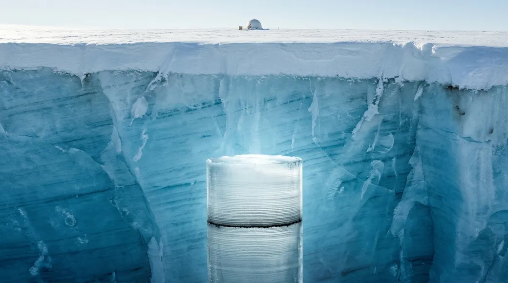
Water that covered all the high mountains under the whole sky and stayed at its height for a hundred and fifty days (7:19–20, 7:24) covered the ice sheets of Greenland and Antarctica, which are three to nearly five kilometers thick, for months. (Water can lift an ice sheet off the ground once it is about nine tenths as deep as the ice is thick, but only if it can work its way underneath. An ice sheet the size of a continent sits on uneven rock, grips it and keeps water from getting under it, so deep water would not necessarily lift the whole sheet and break it up within months.)
The ice has one layer of snow for every year, and glaciologists count these layers in cores drilled through the ice. We can look in the ice from the years around 2105 BCE for three things that months under the water of the Mabul could have left: a break in the yearly layers, salt from the sea, and a crust of melted and refrozen ice. The cores from Greenland have none of the three, and two cores from Antarctica have unbroken yearly layers as well.
The yearly layers through 2105 BCE
Finding the years in the ice. Greenland’s revised timescale, GICC21 (Sinnl et al., Climate of the Past, 2022), reaches back only about 3,800 years, which is not far enough for 2105 BCE or 3800 BCE. Researchers therefore use the longer GICC05 timescale (Rasmussen et al., Earth System Science Data, 2023). It reaches past all three dates that have been given for the Mabul: 2105 BCE, the date in the Jewish count; 2270 BCE, which some get by adding 165 years to that count; and 3800 BCE, where some place the remains of the Mabul on the archaeologists’ calendar.
Calendars have no year zero, so 2105 BCE is 4,054 years before 1950 (written “BP”) and 4,104 years before 2000 (written “b2k”). GICC05 has a published maximum counting error of 7 years near 2105 BCE and 2270 BCE, and 15 years near 3800 BCE. This figure is the uncertainty of the count of years, not a statistical standard error. The depth of a sample identifies exactly which ice was measured, but the calendar year of that ice depends on the timescale.
The yearly layers in Greenland. When the GISP2 core was drilled at Summit in central Greenland, an observer in the field logged every summer layer that could be seen in the ice (NOAA GISP2 visual stratigraphy log; Alley et al., dataset; Alley et al., 1997). The observer gave each layer that was actually seen a positive confidence score, and gave a score of zero where a layer had to be filled in because the core was missing or poor at that point.
On GICC05, 2105 BCE falls 851.92 meters down the GISP2 core. Matched to GICC05, the log has 9 summer layers within five years either side of 2105 BCE, and the observer saw all 9; none was filled in. They include layers at 851.72, 851.86, 852.05, 852.16 and 852.36 meters, each with a confidence of 2.5. Around the other two dates the observer also saw every layer: 13 of 13 around 2270 BCE, and 11 of 11 around 3800 BCE. So the yearly layers of snow are in place through every date given for the Mabul.
In the wider windows, 25 years either side of each date, a few layers had to be filled in:
- Around 2105 BCE the observer saw 50 of the 52 layers. The two filled in lie deeper, at 855.10 and 855.26 meters, and the layers there have a median spacing of 0.16 meters.
- Around 2270 BCE the observer saw 46 of 50 (4 filled in; median spacing 0.16 meters).
- Around 3800 BCE the observer saw 49 of 51 (2 filled in; median spacing 0.13 meters).
These layers come from the same core and take their calendar dates from GICC05, so they are not a separate clock, and a short pause at the surface might leave no mark. But the observer saw the yearly layers through each of these stretches of ice, so the ice sheet did not lose the ice laid down since the end of the last ice age (the Holocene) at any of these dates.
The yearly layers in West Antarctica. The same three years can be found on the other side of the Earth, in the WAIS Divide core (WDC06A) from West Antarctica. Its timescale, WD2014, is a count of yearly layers that runs back 31,200 years before 1950 (Sigl et al., Climate of the Past, 2016; WD2014 table of ice ages and uncertainties). Going by the age of the ice itself, and not of the air bubbles trapped in it, the three dates fall at these depths:
- 2105 BCE is at 944.833 meters, give or take 14.1 years (95 percent uncertainty). In the 50 years around it the yearly layers average 0.207 meters thick, ranging from 0.129 to 0.261 meters.
- 2270 BCE is at 977.845 meters (±15.1 years). The layers there have a median thickness of 0.2045 meters, ranging from 0.128 to 0.276 meters.
- 3800 BCE is at 1258.655 meters (±24.1 years). The layers have a median thickness of 0.163 meters, ranging from 0.117 to 0.237 meters.
So the ice of West Antarctica also has ordinary yearly layers at 2105 BCE and at the other two dates. (Unlike the Greenland log, WD2014 lists the layers as interpreted, without a confidence score for each one, and the chloride in Antarctic ice would need separate chemical data.)
The yearly layers at the South Pole. A second Antarctic core, SPICEcore, was drilled at the South Pole, far from the WAIS Divide (SP19 timescale, Winski et al., 2019). Five researchers each counted the seasonal layers of sodium and magnesium in its top 540 meters on their own. They then tied its calendar ages to the WAIS Divide core through eruptions of volcanoes found in both. The three dates fall at these depths:
- 2105 BCE is at 341.418 meters (±14.8 years; median 7.0 centimeters of ice a year).
- 2270 BCE is at 352.827 meters (±15.1 years).
- 3800 BCE is at 458.226 meters (±25.7 years; 7.6 centimeters a year).
Between 2105 BCE and 3800 BCE lie 116.808 meters of layered ice, with several matched volcanic layers. The yearly nitrate in the ice is ordinary in all three windows (85.4, 82.6 and 97.3 ppb, against medians of about 85.5 to 86.2 ppb for the windows). SPICEcore shares its volcanic tie points with WAIS Divide, so its calendar is not completely separate. But it is a second site in Antarctica with the same ordered layers through every date given for the Mabul.
What ice loss leaves behind. Greenland’s ice has disappeared in the past, and where it did, it left traces under the ice that formed afterward. At Camp Century in northwest Greenland, Andrew Christ and his colleagues (Science, 2023) studied sediment from under the ice that flowing water had laid down while the ground was free of ice. They dated it to 416,000 years ago, give or take 38,000, by luminescence, which measures when buried grains of minerals last saw sunlight. At Summit in central Greenland, Paul Bierman and his colleagues (PNAS, 2024) studied the till (unsorted sediment left by a glacier) under about three kilometers of ice. They found the remains of plants, insects and fungi from a tundra that grew there before the ice came back. Even ice that disappeared from only one area left sediment and the remains of living things under the ice that came later. At 2105 BCE, 2270 BCE and 3800 BCE the cores have ordinary yearly layers of ice instead.
Sea salt in the ice
No seawater in the Greenland ice. Seawater holds about 19,000 milligrams of chloride per kilogram, and seawater that soaked into the snow of Greenland would leave its chloride in the ice. The chemistry of the GISP2 core was measured in thin slices of ice (Mayewski et al., PANGAEA.55537), which were dated on the core’s original scale of depth and age (Meese et al., 1997). That scale counts from a different year from GICC05 and matches depth to age differently, so adding fifty years to the old BP ages does not line the two up.
On the old scale, the chemistry seems to have a gap at 2105 BCE. The nearest younger slice is at 845.52–845.81 meters (4052–4054 BP), and the next older slice starts at 846.83 meters (about 4060 BP), so about a meter has no measurement. The separate high-resolution file (PANGAEA.55533) adds no chloride samples in these windows. But Seierstad and colleagues (2014) moved each GISP2 slice onto GICC05 by its measured top and bottom depth (sheet 6 of their GICC05 transfer workbook). Joined that way, the slices close the gap:
| Date given for the Mabul | Age on GICC05 (years before 2000) | Depth, and the nearest measured slices | Chloride | Sodium |
|---|---|---|---|---|
| 2105 BCE | 4,104 | 851.92 m: two neighboring slices meet here, at 851.55–851.92 m (4102–4104 b2k) and 851.92–852.30 m (4104–4106 b2k) | 9.99 & 11.50 μg/kg | 4.16 & 6.31 μg/kg |
| 2270 BCE | 4,269 | 876.70 m: edge of a 21 cm gap in the chemistry, between 876.43–876.70 m (4267–4269 b2k) and 876.91–877.16 m (4270–4272 b2k) | 8.89 & 12.20 μg/kg | 3.19 & 4.90 μg/kg |
| 3800 BCE | 5,799 | 1100.55 m: inside the slice at 1100.43–1100.66 m (5798–5800 b2k) | 14.30 μg/kg | 5.71 μg/kg |
The 2270 BCE date falls at the edge of a 21-centimeter stretch with no samples. Interpolating in a straight line between the neighboring tie points puts 4,269 b2k at 876.72 meters, inside that stretch, so the samples cannot rule out a pulse of salt that lasted a single year at that date. The same interpolation moves 2105 BCE from 851.92 meters to about 850.64 meters, but the observer saw summer layers in both stretches of ice. (A gap in the chemistry is not a gap in the ice. The core itself is there, and its layers can be read.)
If only the slices measured for both chloride and sodium are counted, and the unmeasured stretches are left as gaps, the slices cover 75 to 83 percent of the 50 years around each date. (A microgram, μg, is a millionth of a gram.)
- Around 2105 BCE, 19 slices cover 75 percent of the window. Their chloride has a median of 9.06 μg/kg and a highest value of 14.2 μg/kg. The highest sodium is 6.93 μg/kg.
- Around 2270 BCE, 21 slices cover 83 percent. Chloride has a median of 12.0 μg/kg and a highest value of 17.4 μg/kg. The highest sodium is 6.97 μg/kg.
- Around 3800 BCE, 20 slices cover 76 percent. Chloride has a median of 15.15 μg/kg and a highest value of 21.8 μg/kg. The highest sodium is 10.1 μg/kg.
These are the amounts found in ordinary fresh snow, not in snow soaked with seawater. In one slice near 2105 BCE the ratio of chloride to sodium is 1.82, close to that of seawater. At such low amounts this does not mean the ice was under the sea, because the snow of central Greenland regularly receives sea salt carried through the air as spray (GISP2 ion series overview; central Greenland sea-salt loadings; USGS Circular 1262, Table A–1). The total amount of chloride sets the tighter limit.
Suppose that as much as 50 μg/kg of chloride came from the Mabul alone. That is more than any reading in all three windows. Snow at GISP2 builds up at 240 kilograms per square meter a year (Cuffey and Clow’s GISP2 accumulation data), about 0.23 to 0.24 meters of ice. At that limit, full seawater (about 19,000 mg/kg of chloride) could have left behind at most 0.0019 mm of water spread across three years of snow, or 0.0316 mm across 50 years. For seawater diluted to about 4,500 mg/kg of chloride, the figures are 0.0080 mm and 0.133 mm.
Put the other way around, a single millimeter of seawater trapped in the snow weighs about 1 kilogram per square meter and carries about 19 grams of chloride. Mixed into three years of snow, it adds 26,400 μg/kg of chloride, about 530 times the generous limit of 50. Spread across fifty years, it would still add 1,580 μg/kg. So the Greenland ice of these years has no trace of even one millimeter of seawater.
A few things could lower the salt left behind: fresh water running off the surface, salt pushed out of seawater as it freezes (NOAA, salt rejection in freezing seawater), meltwater moving near the surface (2025 observations of meltwater storage and runoff in Greenland), or a stretch that was not sampled. These numbers limit how much chloride stayed in the ice at GISP2, not how much water passed over it. Still, anyone who holds that seawater soaked into Greenland’s snow has to explain how more than 99.8 percent of the chloride from a single millimeter of it drained away and left no trace in these layers.
A spike of sulfate in the ice near one of these dates would not be a sign of the Mabul, because eruptions of volcanoes regularly leave sulfate in polar snow. Sigl and Toohey’s catalog of volcanic sulfur, HolVol v1.1 (Sigl et al., 2022), already lists eruptions near these dates. One sent an estimated 3.68 Tg S (million metric tons of sulfur) into the air in 2110 BCE, and another 0.83 Tg S in 2098 BCE. Others are listed in 2268, 2275 and 2278 BCE, and none within ten years of 3800 BCE. Since volcanoes already account for the sulfate spikes near these dates, a search for the Mabul in the ice has to say beforehand what it expects to find in the salt, the sediment and the layers, and not pick out a spike after the fact.
A crust of melted ice
Hot water and hot rain on the ice. Rav Chisda says that the water of the Mabul was boiling. How much ice hot water melts depends on whether it lay still on the ice, moved over it, or fell on it as rain.
Warm water lying still on the ice does not necessarily melt deep cold ice. Take a standard calculation of how heat spreads by conduction (Sheils, two-phase Stefan solution), in which still water rests for 150 days on thick ice that starts at −30 °C, the temperature at Summit in Greenland today (Greenland Summit, NSF Ice Core Facility). In that calculation, the cold ice draws heat inward faster than the still water can bring it. The weight of the water also lowers the melting point a little. A flood 8.85 kilometers high stands about 5.65 kilometers above Summit, which is about 3.2 kilometers high. That adds about 55 MPa of pressure, roughly 540 times the pressure of the air at sea level, and lowers the melting point of pure ice to roughly −4 °C (pressure melting of glacier ice; IAPWS high-pressure melting curve). The results are these:
| How the heat reaches the ice (150 days, ice starting at −30 °C) | Melting point 0 °C | Melting point −4 °C (at 55 MPa) |
|---|---|---|
| Still water at 20 °C (conduction only) | 0.31 m of new ice frozen on | 0.16 m of new ice frozen on |
| Still water at 40 °C / 60 °C / 90 °C (conduction only) | 0.01 m / 0.27 m / 0.58 m melted | 0.14 m / 0.39 m / 0.68 m melted |
| Still water at 100 °C (conduction only) | 0.66 m melted | 0.76 m melted (about 2.9 years of snow) |
| Moving water bringing 10 / 100 / 1,000 W/m² of heat for melting | 0.42 m / 4.23 m / 42.3 m melted (the heat it brings depends on how the water circulates and layers) | |
| Rain at 20 °C / 60 °C / 100 °C, giving up all its heat | 1.14 m / 0.38 m / 0.23 m of rain melts one full year’s layer of snow (95.3 MJ/m²) | |
Against ice at −30 °C, still water has to be warmer than about 39 °C to melt any ice at all (about 13 °C against ice at −10 °C). Still water at 20 °C freezes a thin cap of new ice onto the old ice, and even still water at 100 °C melts only about 2.9 years’ worth of snow. Moving water is different. Once the water circulates and brings 10 to 1,000 watts per square meter of heat to the ice, it melts 0.42 to 42.3 meters in 150 days. The temperature of the water alone does not set the rate of melting. Davis and colleagues (Nature, 2023) observed the water beneath Thwaites Glacier in Antarctica and found that layering in the water and the local currents can sharply slow the flow of heat into the ice.
Hot rain falling on open snow is much harder to fit with the layers. Warming a year’s snow on one square meter, 240 kilograms, from −30 °C to 0 °C and then melting it takes 95.3 MJ/m² (megajoules per square meter). Each meter of rain at 100 °C gives off 418 MJ/m² as it cools to 0 °C. If the rain gives up all its heat, just 0.23 m of 100 °C rain melts a whole year’s layer of snow. That is only 0.0026 percent of a rainfall 8.8 kilometers deep. If the rain that fell on Greenland was as hot as Rav Chisda says the water of the Mabul was, even a tiny part of it would have melted a clear band across the snow that lay on the surface before the Mabul. A model with cool, still water can keep the deep old ice frozen in theory, but it still has to explain the unbroken yearly layers at both poles and the almost complete lack of seawater chloride at GISP2.
What a real melt leaves in the ice. In July 2012, about six days of weather above freezing and two rainstorms melted the surface of 98.6 percent of Greenland. At Summit, field teams dug out a hard crust of refrozen ice. At NEEM they traced refrozen layers running continuously at depths of 5, 20 and 69 cm, and meltwater had soaked down as deep as 1.5 meters (Nghiem et al., 2012; Westhoff et al., 2022). Glaciologists draw two lessons from that week. A short spell of warm rain leaves distinct refrozen layers without wiping out the older layers beneath them. And a single event can leave several layers in snow that fell earlier. A hot Mabul could not have passed over Greenland without leaving a clear refrozen crust.
Scientists who scan the EastGRIP core from Greenland with light easily find crusts of that size (Westhoff et al., feature inventory; dated with Rasmussen & Sinnl, 2025, GICC05-EGRIP-1). Their inventory lists:
- two definite horizontal melt layers from the widespread melt of 1889 CE, 8.5 mm thick together;
- nine layers from a cluster of melts in the Middle Ages near 986 CE, 63.2 mm thick together;
- 11.7 mm from a melt around 675 BCE.
The core has no definite horizontal melt layer within 25 years of each date given for the Mabul (2105 BCE at 491.370 meters, 2270 BCE at 510.675 meters and 3800 BCE at 686.400 meters). The inventory lists only one small local lens of melt, at 491.5257 meters, about 1.4 years older than 2105 BCE on the timescale. Widening the window around 3800 BCE to 50 years either side adds two thin layers, of 2.5 mm and 1.9 mm. That stretch lies in the brittle zone of EastGRIP, between 650 and 950 meters, where the core breaks more often.
Even the lowest estimate for boiling water would leave a crust like the one from 1889. Still water at 100 °C melts 0.66 meters of ice. Allow that only 50 to 90 percent of that thickness survives as the ice thins with depth. Then if just 1.4 to 2.6 percent of the meltwater refroze in horizontal layers, it would equal the whole 8.5-millimeter crust of 1889. No such crust is in the ice at 2105, 2270 or 3800 BCE, so the ice did not melt widely at any of these dates.
15. Records on land through 2105 BCE
Chazal describe the Mabul as far more violent than an ordinary flood. They say that its water wiped away the soil to the depth of a plow, wiped out even the lower millstone, and carried the dead of the whole world to Bavel. Yet a great many things from before 2105 BCE are still where they stood before the Mabul: the mud on lake floors, whole cemeteries, walls of sun-dried mud brick, papyrus rolls, charcoal drawings and living trees. None of them has any sign of a year under the sea.
Some answer that the Mabul was a miracle, so it did not have to leave the marks of a natural flood. No natural cause, they say, can explain the rain, the water rising from the deep, or the water disappearing within a year, so there is no point looking in the ground for signs of it. But Chazal themselves describe lasting physical damage: soil stripped away, millstones wiped out, and bodies carried to Bavel. So the answer that the Mabul left no trace goes against what Chazal themselves say about it.
Others answer that scientists are looking in the wrong century: the radioactive dates are off, and on the archaeologists’ calendar the Mabul falls earlier, around 3800 BCE. This does not solve the problem of the missing layer. Several counts of yearly layers, such as the layers of mud in lakes, run without a break through both 2105 BCE and 3800 BCE, with no layer from a worldwide flood at either date.
What Chazal say the water destroyed
The Mabul began in the year 1656 from Creation, about 2105 BCE, and low ground stayed under water for most of a year (7:11, 8:13–14). Rashi says that the water wiped away even the top three handbreadths of soil, as deep as a plow reaches (on 6:13):
דָּ״אַ אֶת הָאָרֶץ – עִם הָאָרֶץ, שֶׁאַף ג׳ טְפָחִים שֶׁל עֹמֶק הַמַּחֲרֵשָׁה נִמֹּחוּ וְנִטַּשְׁטְשׁוּ:
Another explanation of “with the earth” (es ha’aretz): together with the earth itself—for even three handbreadths, the depth of a plow, were blotted out and dissolved.
Bereishis Rabbah says that it wiped out even the lower millstone, and the luz, the small bone of the spine from which Hashem will rebuild the body at the resurrection (28:3). It also says that the water carried the dead of the whole world to Bavel (37:4).
15.1Water that washes away soil drops it somewhere else, so even a short flood leaves a layer of sand and mud. Scientists have found no such layer at the Torah’s date for the Mabul.About 8,200 years ago a tsunami from an undersea landslide off Norway lasted only hours. It left a sheet of sand and mud that geologists have traced as far as 29 kilometers inland in Scotland.Soil stripped to the depth of a plow from all of today’s land comes to about 4.4 × 1016 kilograms. The coarser grains would settle on the floors of lakes within weeks, and the fine clay would stay in the water for years or centuries.A single asteroid strike 66 million years ago left a thin layer of dust, rich in the rare metal iridium, that geologists find all over the world.On the floor of Elk Lake in Minnesota a light layer and a dark layer of mud settle every year. Geologists have counted these pairs back 10,400 years. The count goes through 2105 BCE, and no layer in it was left by a flood.The floor of the Dead Sea holds about 220,000 years of mud and salt. A core drilled through it holds the lake’s own deposits through the centuries around 2105 BCE, and around 3800 BCE as well. (Rabbi Yochanan holds that the Mabul did not come down on Eretz Yisrael, and Reish Lakish holds that it did. See Zevachim 113a–b.)Core
Flood mud
Rashi says that the water of the Mabul wiped away the soil to the depth of a plow (on 6:13). Water that washes soil away drops it somewhere else, and even a flood that lasts only a few hours leaves a layer of sand and mud that geologists can recognize. About 8,200 years ago a huge undersea landslide off the coast of Norway, called the Storegga Slide, sent a tsunami across the North Sea. Its waves lasted hours, yet they laid down a sheet of sand and mud across the Montrose Basin and the Firth of Forth in Scotland. Geologists have traced that layer as far as 29 kilometers inland, and they date it by the plants buried in it to about 6200 BCE. So even a short flood from the sea leaves a lasting sheet of sediment on land.
Water that covered the whole Earth for most of a year, and washed away soil to the depth of a plow, would have left a flood layer on the floors of lakes all over the world, since lake floors trap sediment. But when geologists drill long cores from lake beds, they find layers laid down steadily, year after year, and no layer from a worldwide flood. (How closely a core can pin down a single year depends on how finely its layers can be told apart and on the limits of its calibration.)
How much soil, and where it would settle. Take Chazal’s three handbreadths literally, as 22.5 centimeters of ordinary soil (at a dry density of 1,300 kg/m3), stripped from all of today’s land. That puts 4.36 × 1016 kilograms of dirt into the water, or half that much if only half the land was stripped. Mixed through all the water, the full amount comes to 7.6 mg/L. If just 1 percent of it settled evenly over today’s ocean floors, it would form a layer 0.93 millimeters thick, and real currents would pile thick deposits in some places and leave none in others. Stripping the soil of the whole world would leave flood silt that can be measured on lake beds and sea floors.
How fast the grains sink depends on their size. Ferguson and Church (2004) give a formula (open paper) for how fast a single grain of quartz sinks in still water at 20 °C. These are the speeds it gives, with the time each grain would take to sink through 8.86 kilometers of water (a micrometer is a thousandth of a millimeter):
- A grain of clay 1 micrometer across sinks 0.078 meters a day. It sinks 12 meters in 150 days and needs 312 years to reach the bottom.
- A grain of 5 micrometers sinks 1.94 meters a day: 291 meters in 150 days, and 12.5 years to the bottom.
- A grain of silt of 10 micrometers sinks 7.72 meters a day: about 1.16 kilometers in 150 days, and 3.1 years to the bottom.
- A grain of 20 micrometers sinks 30.5 meters a day: 4.58 kilometers in 150 days, and 290 days to the bottom.
- A grain of coarse silt or fine sand of 50 micrometers sinks 182 meters a day and reaches the bottom in about 49 days.
So the fine clay and silt stirred into water kilometers deep would stay in the water for years or centuries, and would not settle within the year of the flood. The coarser grains would settle within weeks. (Dirt stirred up near the bottom has less distance to fall, tiny particles can clump together, muddy currents carry sediment sideways, and draining water can sweep fine mud away.) All of these processes should leave layers of sand and silt that geologists would recognize in lakes like Soppensee in Switzerland and Elk Lake in Minnesota. Even if a miracle cleared the mud out of the water when the water went away, it would also have had to clear away the coarser sand and silt that had already settled on the lake beds.
A worldwide layer from one short event. A short catastrophe that reaches the whole world does leave a layer thick enough to find, even tens of millions of years later. Platinum and related metals, such as iridium, are rare in the Earth’s crust but much more common in rocks from space. In 1980 the physicist Luis Alvarez, his son the geologist Walter Alvarez, and the chemists Frank Asaro and Helen Michel measured the iridium in a thin layer of clay at the very top of the rocks from the age of the dinosaurs. They found about 30 times as much iridium as in the rock above and below it in Italy, 160 times as much in Denmark, and 20 times as much in New Zealand (Science, 1980). They concluded that a large rock from space had struck the Earth and spread its dust over the whole world.

Geologists have since traced that layer of dust around the world. In 2021 Steven Goderis and his colleagues found it inside a core drilled into the buried crater in Mexico that the asteroid made (Science Advances, 2021). The layer formed from a single impact 66 million years ago, as the dust settled over the years it took to fall. Geologists find no such worldwide layer at 2105 BCE.
The yearly layers of Elk Lake. In some lakes a light layer and a dark layer of mud settle on the bottom every year, so geologists can count the years one by one. Elk Lake, in Itasca State Park in Minnesota, is one of them. It lies about 450 meters above sea level, so the water of the Mabul would have stood over it even on the Netziv’s view that the water rose only to the top of Ararat. In 1993 geologists of the United States Geological Survey counted the pairs of layers in Elk Lake back 10,400 years. The count runs through 2105 BCE, and the Mabul left no layer in the lake’s mud.
Eretz Yisrael. Rabbi Yochanan holds that the Mabul never came down on Eretz Yisrael, and that the people there died from the Mabul’s heat instead (Zevachim 113a–b). On his view, the caves and lakes of Eretz Yisrael would have no flood layer. Reish Lakish holds that the Mabul did cover Eretz Yisrael. On his view, its caves and lakes should hold a layer from a year under the sea. Geologists find the same steady layering there as elsewhere.
בְּמַאי קָמִיפַּלְגִי? מָר סָבַר: יָרַד מַבּוּל לְאֶרֶץ יִשְׂרָאֵל, וּמָר סָבַר: לֹא יָרַד... אֵיתִיבֵיהּ: ״מִכֹּל אֲשֶׁר בֶּחָרָבָה מֵתוּ״ – בִּשְׁלָמָא לְדִידִי, דְּאָמֵינָא יָרַד מַבּוּל לְאֶרֶץ יִשְׂרָאֵל – מִשּׁוּם הָכִי מֵתוּ. אֶלָּא לְדִידָךְ, אַמַּאי מֵתוּ? מִשּׁוּם הַבְלָא.
Over what do they disagree? One master [Reish Lakish] holds that the Mabul descended upon Eretz Yisrael, and the other [Rabbi Yochanan] holds that it did not descend... [Reish Lakish] objected to him from the verse “all that was on the dry land died”: Granted according to my view that the Mabul descended upon Eretz Yisrael, that is why they died; but according to your view, why did they die? [Rabbi Yochanan answered:] From the heat.
Stalagmites are columns of stone that grow up from the floor of a cave, layer by layer, from dripping water. At Soreq Cave near Beit Shemesh, Avner Ayalon, Miryam Bar-Matthews and their colleagues at the Geological Survey of Israel combined the isotope measurements of its stalagmites into one series for the region, spanning about 185,000 years (Bar-Matthews et al., 2003). In a later, finer study, they followed the region’s swings between wet and dry (Bar-Matthews & Ayalon, The Holocene, 2011). That study covers 7,000 to 4,000 years ago with a sample every 3 to 20 years. These include a dry period from 4200 to 4050 BP, which puts 2105 BCE near its end, and a short wet period from 5760 to 5740 BP (about 3811 to 3791 BCE). The stalagmites kept growing, without a break, through both dates given for the Mabul.
The oxygen isotopes in a stalagmite measure the chemistry of the rain, not whether water flooded the cave. A flood in a cave leaves a different mark: bands of mud trapped in the stalagmite. In Cueva Rosa in Spain, a stalagmite covering 8100–5300 BP holds 26 flood bands of clay and quartz, nine of them 0.1 to 0.3 mm thick (González-Lemos et al., 2015). In the cave KNI-51 in Western Australia, floods left mud bands up to 10 mm thick, and their timing did not closely match the curve of the oxygen isotopes (Denniston et al., 2015). The isotope curve from Soreq follows the rainfall, and to know whether the cave stayed dry, one has to look for bands of flood mud like those in Spain and Australia.
The Dead Sea. The floor of the Dead Sea has a much longer series of seasonal layers. In shallow water near Ein Gedi, the lake lays down a thin light layer of white mineral every summer and a dark layer of mud washed in by the floods of winter. Claudia Migowski and her colleagues counted these layers, together with radiocarbon dates, to work out the earthquakes of the last 10,000 years (2004). In 2010 and 2011 an international team drilled 455 meters into the deepest part of the Dead Sea floor and brought up about 220,000 years of layers of mud and salt. The top 89 meters were laid down over about the last 11,600 years. The Dead Sea’s seasonal layers therefore reach back thousands of years before Creation, and before 2105 BCE.
In 2017 a team of geologists and archaeologists, Yin Lu, Nicolas Waldmann, Dani Nadel and Shmuel Marco, described this upper part of the core as the lake’s own ordinary deposits (Global and Planetary Change, 2017). Thin layers of aragonite, a mineral that settles out of the lake water in the dry season, alternate with thin layers of mud washed in from the slopes by the floods of winter. Here and there, thicker beds of mud, sand and gravel slid into the deep basin and broke the pattern. A radiocarbon team led by Kitagawa dated this part of the core from bits of land plants caught in the mud (Radiocarbon, 2017).
In the centuries around 2105 BCE and 3800 BCE, the radiocarbon dates in the core fall at about 2,300, 4,700 and 6,700 years ago. Scientists estimate the ages of the layers between these points by assuming that the mud built up at a steady rate. Through the centuries around both dates, the Dead Sea laid down the ordinary deposits of a salt lake, as it did before and after. So no worldwide flood of sea water interrupted the basin at either date. (In this stretch the dated points are about two thousand years apart, and on average about a sixth of the core was not recovered in drilling. From this core alone, scientists cannot tell whether a thin layer lies at exactly 2105 BCE.)
Cores from the sea floor. A flood that eroded the whole world should leave a disturbance over a wide area, dated independently, in many basins that trap sediment. Single cores from the sea floor are harder to use for one particular year. Before calling such a core “continuous” through 2105 BCE, one has to know how finely it was sampled and where its measurements have gaps. Two well-studied basins show these limits.
The Cariaco Basin, off Venezuela. Haug and his colleagues measured the titanium and iron that runoff from the land carries into this basin, down a core from Hole 165-1002C (Science, 2001; Ti, Fe, age model; NOAA Ti). This series is widely cited, but it cannot answer the question for 2105 BCE (4054 cal BP). Both metal files jump from 4015.0 to 4118.5 cal BP, a gap of 103.5 years (about 3.80 cm). The gap lies across the physical break between two sections of the core, 1H-1 and 1H-2, at 1.500 m (ODP visual-core inventory). With no measurements across that break, nothing can be learned from the metals about 2105 BCE, either way.
Other cores from Cariaco do cross that window, with ordinary readings. Core PL07-56PC has 41 grayscale measurements across 4017–4116 BP (Hughen et al., NOAA), and core MD03-2625C2 has ordinary bulk iron and titanium in slice AR20, centered near 4029 BP (Riboulleau et al., 2014). (Lining up separate cores year by year is still uncertain.)
Around the other two dates, Haug’s series does have measurements. Near 2270 BCE (10 matched rows within 25 years either side), both metals are below their medians for the 50 years on either side. Near 3800 BCE (9 matched rows within 25 years either side; the nearest at 5748.6 BP), iron (1,193.3 cps) is the highest value within 50 years either side, while titanium (0.28667%) sits near the 21st percentile. Widening the window to 100 years either side drops that iron value to the 66th percentile (the highest is 1,266.3 cps). The share of a metal in the sediment is also not the same as the amount of sediment: adding sediment with the usual local share of titanium doubles the mass laid down without changing the percentage.
A separate gravity core from Cariaco, CAR7-1 (Tedesco and Thunell, 2003), spans 2105 BCE, at an estimated depth of 155.65 cm. It was measured by the oxygen isotopes in the shells of plankton. But its slices are 0.5 cm thick and average about 9.2 years each near 2105 and 2270 BCE (18.1 years near 3800 BCE). A 40-day pulse of warm (30 °C) fresh water at −10‰, making up 10 percent of the water, would shift a 9.2-year sample by only about −0.014‰ (‰, parts per thousand, is the unit for these isotope measurements). The measurements can be repeated only to within ±0.07‰, so a pulse that short would not register.
Sediment pouring into deep water need not leave a thick bed either. The earthquake of 1997 in the Cariaco Basin set off a flow of sediment that raised the mass falling at 1,210 meters 50.15-fold (Thunell et al., 1999; trap table). Yet all of it comes to only about 0.10 mm of even, dry thickness at 600 kg/m³.
Saanich Inlet, British Columbia. This fjord has little oxygen in its deep water. It keeps yearly pairs of layers, of diatoms and silt, along with beds left by debris flows under the water. Two debris-flow beds in the catalog have wide age ranges that overlap both 2105 and 2270 BCE. The older lies between 3989 and 4284 years before 2010 CE (roughly 2275–1980 BCE), and the younger between 3654 and 4569 years before 2010 CE (roughly 2560–1645 BCE) (Blais-Stevens et al., 2011). The sea floor does have unusual beds near these dates. But local slides on the slopes, and earthquakes on Cascadia or Vancouver Island, regularly produce beds like these. (Older sections were left out of the catalog where burrowing animals had spoiled the dating, so the lack of an entry at 3800 BCE does not rule out a bed there.)
Material brought from somewhere else marks a real regional flood here. Around 11,000 cal BP, outburst floods across the Strait of Georgia laid down two gray beds of silty clay in Saanich. The beds carry pollen washed out of the Fraser Lowland and a distinctive illite–muscovite clay (Blais-Stevens et al., 2003).
Two other kinds of data from Saanich cannot pick out a single unusual year. The published 25-year medians of the thickness of the yearly layers near the three dates are 7.55, 7.46 and 6.87 mm (Nederbragt, 2024). But replacing one 7 mm layer in 25 with a 70 mm layer leaves the median at 7.00 mm. The archive of fish remains (Tunnicliffe et al., 2001) pools about 10 years of sediment every 25 years or so. It would overlap a random one-year interruption only 44 percent of the time, and even then the drop would be at most 10 percent. It can pick up a long collapse of the fish, not a brief event lasting one year.
15.2The usual answer to the question of the dinosaurs is that they died in the Mabul, which lasted about a year. But the layers of rock that hold their fossils include dinosaur nesting grounds used again and again, forests rooted one above another, and salt left where sea water dried up.At Auca Mahuevo in Patagonia, Argentina, clutches of sauropod eggs with embryos inside lie on at least four levels through 85 meters of rock. Egg bed 3 alone holds two continuous levels of eggs, separated by centimeters of sediment.At Joggins in Nova Scotia, Canada, geologists found 14 cycles of buried wetland forest in 915.5 meters of the Joggins Formation. In a wider stretch of 1,425 meters of coal-bearing rock, standing trees are rooted into peat at 60 or more levels, one above another.Beds of salt and of gypsum lie under the floor of the Mediterranean Sea, more than a kilometer and a half thick in places. Gypsum is another mineral that comes out of sea water. These minerals settle out of sea water only after four fifths or more of the water has evaporated.Core
Layers of rock that were once dry land
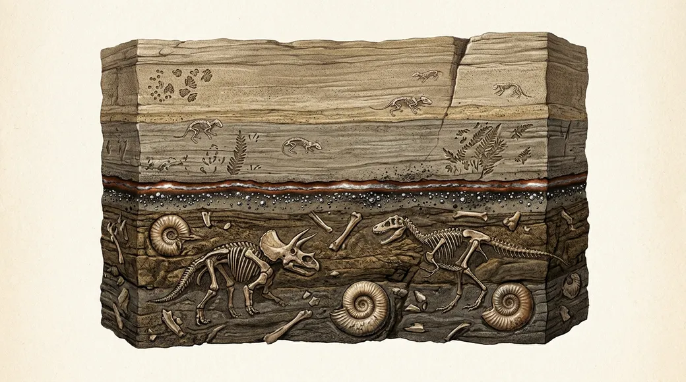
The usual answer to the fossils of the dinosaurs is that the water of the Mabul laid down, within one year, the layers of rock that hold them. On every traditional count the Mabul lasted about a year, and any one height above the sea was under water for less than that. But many of these layers have features that could form only on dry land or in the open air.
Dinosaur nests at Auca Mahuevo. In 1997 Luis Chiappe, Lowell Dingus and Rodolfo Coria found a vast field of dinosaur eggs in Neuquén province, Argentina. Some of the eggs hold the skeletons of embryos and fossil skin, from which they could tell that the mothers were sauropods (Chiappe et al., Nature, 1998). The site has at least four levels with eggs, through about 85 meters of rock (Chiappe et al., site synthesis). A strong flood can bury animals or fresh ground quickly, and changing currents can lay down several beds one after another. Geologists themselves hold that river floods buried the sites at Auca Mahuevo and at Joggins quickly. The problem for a single flood is what happened between one burial and the next.
The strongest case is inside a single level. Chiappe and his colleagues mapped egg bed 3 in detail and traced two continuous levels of eggs in it, separated by several centimeters of sediment. Both levels hold mostly whole eggs, with very little broken shell between the clutches. (It is not known whether every dinosaur dug a proper nest.) So whole clutches lie on two stacked surfaces in bed 3, and clutches lie again at higher levels through 85 meters of rock. After each surface was buried, dinosaurs came back and laid eggs on the open ground above it. The nesting ground was laid bare and used again several times, not buried once in one long flood.
Dinosaur tracks at Cal Orck’o. At Cal Orck’o, a limestone quarry near Sucre in Bolivia, quarrying has exposed a wall of rock that slopes at about 70 degrees and is covered with dinosaur footprints. In 1998 Christian Meyer of the Natural History Museum of Basel and his colleagues began mapping the wall with climbing gear. By 2015 they had mapped 12,092 footprints in 465 trackways, on nine levels stacked one above another. In these layers they also found mounds that mats of microbes build in shallow water, beds that storms laid down, and signs that soil had begun to form at times. From these they concluded that the dinosaurs walked on the shores of lakes, some of which came and went (2001; Journal of South American Earth Sciences, 2021).
Geologists date these layers to the end of the age of the dinosaurs, between about 72 and 66 million years ago. No dinosaur could walk up a 70-degree wall, so each surface was flat when the animals crossed it, and the layers were tilted to their present slope long afterward. So these were lake shores, open to the air at least nine separate times while the layers were being laid down.
Forests rooted one above another at Joggins. Upright fossil trunks alone would not prove much, because floods sometimes carry logs along and bury them standing up. Roots grown into soil are another matter. Along the Bay of Fundy in Nova Scotia, Sarah Davies and her colleagues measured 915.5 meters of the Joggins Formation. They found 14 cycles in which sand carried into coastal wetlands quickly buried living stands of trees.
Across a wider stretch of 1,425 meters of coal-bearing rock in the same cliffs, John Calder and his colleagues found standing lycopsid trees at 60 or more levels. Each tree is anchored by its roots into a layer of peat, one peaty surface above another. Inside the hollow stumps, geologists have also found many skeletons of small land animals. To put these beds in the year of the Mabul, one would have to fit wetlands growing again and again, trees taking root, and burial into the short gaps between surges of water.
Salt under the Mediterranean. The beds of salt and gypsum under the floor of the Mediterranean are more than a kilometer and a half thick in places, and they formed as sea water evaporated. Gypsum, like salt, settles out only when four fifths or more of the water has evaporated. A drilling ship of the Deep Sea Drilling Project, on a voyage led by William Ryan and Kenneth Hsü, brought up the rock salt in 1970. In 2020 Bilal Haq and his colleagues at Sorbonne University in Paris measured the salt layer with sound waves and calculated that forming it took seven to eight times as much sea water as the Mediterranean holds today (Global and Planetary Change). Sea water leaves its salt behind only as it evaporates, and water evaporates only at its surface, into the open air. A worldwide flood could not have laid down this salt.
A fossil reef buried by drying sea water. In the Guadalupe Mountains of western Texas, the cliff of El Capitan, about 300 meters high, is part of a fossil reef. The National Park Service describes the reef as built from the skeletons of algae, sponges and tiny animals called bryozoans, held together by organisms that grew over them as a crust. The reef grew along the rim of an inland sea whose basin was nearly 800 meters deep. Geologists date the reef to about 265 to 260 million years ago and find that it grew for several million years. Then the passage between the inland sea and the open ocean narrowed, and the water evaporated faster than the ocean could refill it. Thin layers of calcite, anhydrite (a mineral like gypsum) and rock salt settled out of the drying water, filled the basin and in the end covered the reef.
In 1972 Roger Anderson, Walter Dean, Douglas Kirkland and Henry Snider measured these layers one by one in cores drilled through them, to find out how long the basin took to dry out and bury the reef. In 447 meters of rock they counted about 260,000 pairs of layers, and they traced single layers across the basin for as far as 113 kilometers (Geological Society of America Bulletin, 1972). They took each pair to be one year’s deposit. They noted that a yearly cycle “has never been conclusively demonstrated,” but that no other explanation had been seriously considered. Even if a pair is not a year, every layer of anhydrite and salt settled out of sea water as it evaporated in the open air, and the reef beneath was built by living things where it stands. So the whole 447 meters were laid down by long evaporation in the open air, not in one turbulent year of flood.
Tilted layers at Siccar Point. At Siccar Point, on the North Sea coast of Scotland, two different sets of rock meet. The lower set is hard sandstone and mudstone that first settled in flat layers on the floor of a deep sea, but those layers now stand nearly upright. Their tops were worn down into a rough land surface, and then layers of red sandstone, laid down by rivers on land, formed across them. Before the upper layers could form, the lower sediment had to harden into rock, tilt on end, rise above the sea, and wear down under the weather. James Hutton, one of the founders of geology, visited Siccar Point by boat in 1788 with John Playfair and Sir James Hall. Playfair later wrote that “the mind seemed to grow giddy by looking so far into the abyss of time.” Geologists today date the lower rocks to about 435 million years ago and place a gap of about 65 million years between the two sets of rock. None of these steps (hardening, tilting, rising and wearing down on dry land) could happen while the whole place lay under a flood that lasted a year.

Desert dunes in the Navajo Sandstone. The Navajo Sandstone of Utah and Arizona is up to 700 meters thick and forms the great cliffs of Zion National Park. Geologists find that it is made of desert dunes heaped up by the wind about 200 to 190 million years ago. The sand lies in long sloping sheets, as it does on the downwind face of a dune today. Between the dunes lie thin beds of limestone from small desert lakes, and dinosaur tracks are pressed into the sand. These beds formed in an open desert swept by wind, not under kilometers of floodwater.
In 2001 the geologists David Loope, Clinton Rowe and R. M. Joeckel of the University of Nebraska studied a stretch of these dunes in which each year of a dune’s advance left a layer that can be counted. In 36 yearly layers they found 24 places where the wet face of a dune had slumped after heavy rain (Nature, 2001). Twenty of the slumps lay in the summer part of the yearly layer and four in the winter part. So the dunes piled up year after year in a desert with summer rains, and these beds could not have formed under water in a single year of flood.
Under water that stood kilometers deep, no dinosaur could lay its eggs on open ground, no forest could grow, no sea water could dry up into salt, no wind could heap sand into dunes, and no rock could be worn into a land surface by rivers and weather. So the layers of rock that hold the fossils were not laid down in the year of the Mabul.
15.3The Troodos Mountains of Cyprus are a slice of ancient ocean floor that was pushed up onto land. Geologists date their ores, which formed around hot springs on the deep sea floor, to about 93 to 88 million years ago.The rocks of the Troodos lie in the same order as the layers of an ocean floor: mantle rock at the bottom; above it the oceanic crust, topped by upright sheets of rock that were once cracks filled with magma; and on top, pillow lavas that erupted under water.In 2026 geologists dated pyrite from four Troodos ore deposits by the decay of rhenium into osmium. They got 93.0 ± 5.9, 93.1 ± 4.2, 92.7 ± 4.0 and 88.2 ± 1.5 million years. These agree with the ages of about 91.8 to 90.1 million years that uranium–lead dating gives for the crust around the ores.In six of the ore deposits, geologists found fossil worm tubes and eight species of gastropods (snails and their relatives) from hot springs on the deep sea floor, in a setting they estimate at 2,500 to 5,000 meters below the surface of the ocean.Even without the dates, forming these rocks took three stages, one after another: the crust formed at a ridge deep in the ocean, sea water circulated through it and laid down ores around living animals, and then the whole slab rose into mountains.
The Troodos Mountains
The Troodos range on Cyprus is a piece of old ocean floor that now stands on land. In 2021 the paleontologists Andrzej Kaim, Crispin Little and their colleagues (Papers in Palaeontology, 2021) described fossils from ancient hot springs on the sea floor (hydrothermal vents) in the Troodos, and summed up the geology of the range. The Troodos formed as oceanic crust at a spreading ridge near a subduction boundary. Then the whole slab was pushed up into a dome on land. At its core lie rocks of the Earth’s mantle, the layer beneath the crust.
Above the mantle rocks lie the rocks of the oceanic crust. On top of them stand countless upright sheets of rock that were once cracks filled with magma and channels through which hot water moved under the sea floor (Kathryn Gillis, Journal of Geology, 2002). At the top lie lavas shaped like pillows, the shape molten rock takes when it erupts under water. Among the pillow lavas are about ninety deposits of metal ore, formed where hot water circulated through the sea floor.
Two clocks for the ores. Earlier summaries relied on dates from zircon crystals in the crust around the ores. In 2026 Su and colleagues (Geochemical Perspectives Letters, 2026) dated the ores themselves. They dated pyrite from four Troodos ore deposits by rhenium–osmium isochrons, a separate radioactive clock in which rhenium-187 decays to osmium-187 (the uncertainties are two standard deviations):
- Agrokipia: 93.0 ± 5.9 million years
- Memi: 93.1 ± 4.2 million years
- Kokkinopezoula: 92.7 ± 4.0 million years
- Apliki: 88.2 ± 1.5 million years
These dates agree with uranium–lead ages of about 91.8 to 90.1 million years for the rocks of the oceanic crust around the ores (plagiogranites). Two different radioactive clocks, in different minerals, both put the building of the crust and the main high-temperature forming of the ores at about 93 to 90 million years ago, with Apliki a little later. (The four dates come from four sites or episodes, with overlapping uncertainties, so they do not mean that a single vent chimney ran for several million years.)
Fossils of vent animals. On the ocean floor today, hot water rises along spreading ridges and lays down metal ores, which are home to specialized animals that live off bacteria feeding on chemicals. Kaim and his colleagues (2021) found worm tubes and eight species of gastropods (snails and their relatives) in six of the Troodos ore deposits, in a sea-floor setting that geologists estimate was 2,500 to 5,000 meters deep. The fossils do not date the rock. At several of the deposits few fossils could be collected or were preserved, so finding each gastropod species at only one deposit reflects the small sample, and does not mean that the species lived nowhere else. Vent minerals today can replace worm tubes and shells in a year or less, so a mineralized fossil does not by itself take millions of years to form. Kaim’s team also notes an ammonite shell at Kambia that probably sank after death from shallower water. Where a fossil was buried is not always where the animal lived.
So the Troodos could not have formed in 5,787 years. Uranium–lead and rhenium–osmium dating put both the crust and the ores at about 93 to 88 million years ago. Even setting the radioactive dates aside, forming these rocks took three stages, one after another. First, the oceanic crust formed at a spreading ridge deep in the ocean. Then sea water circulated through the hot rock and laid down ores around living vent animals. Last, the whole slab of sea floor rose and became a mountain range on Cyprus.
15.4Modox Alert!Chazal say that the water of the Mabul carried the dead of the whole world to Bavel (Bereishis Rabbah 37:4) and wiped out even the lower millstone (28:3). Graves, mud brick, papyrus, drawings in charcoal, figures of unbaked clay and heaps of plants cemented by dried urine, all from before 2105 BCE, are still where they were left.At Varna in Bulgaria there are 294 graves that archaeologists date to about 4570 to 4340 BCE. They still hold their dead as they were buried, with their gold beside them.Sun-dried mud brick turns back into mud when it stays wet. The mud-brick walls that King Khasekhemwy built at Abydos in Egypt about 2700 BCE still stand about twelve meters high.Papyrus rots when it is wet. Rolls of papyrus written about 2560 BCE, while the Great Pyramid was being built, were found at Wadi al-Jarf in Egypt, and the limestone blocks of the pyramid are still where they were set.In Chauvet Cave in southern France, drawings in charcoal that scientists date by radiocarbon to more than 30,000 years ago are still on the walls. In the cave of Tuc d’Audoubert in the Pyrenees, two bison that people modeled in clay more than 14,000 years ago still rest against a rock, with the footprints of children in the clay floor around them.When the sea rose at the end of the ice age, it flooded four fifths of Cosquer Cave, near Marseille. The drawings in the flooded part are gone, while the drawings above the water remain.In desert caves of North America, heaps of plants that packrats cemented with their dried urine have lain since long before 2105 BCE. To free the plants, scientists soak a heap in water for one to two weeks.Air trapped in a cave would not have kept the water off any of these. Under 8 kilometers of water, trapped air shrinks to 0.13 percent of its volume, which leaves a sliver 1.3 centimeters thick at the ceiling of a chamber 10 meters tall.
Graves, mud brick and papyrus
[Modox Alert! If you know Lakewood is “somewhere in South Jersey”, feel free to skip this obviously Bloomian anxiety of influence in the Mesopotamian flood tradition, and move on to the next item.]
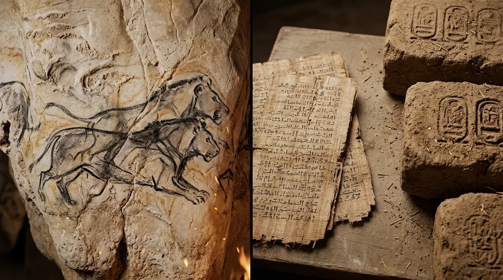
The Midrash says that Bavel is called Shinar “because all the dead of the Mabul were shaken out there” (Bereishis Rabbah 37:4; Zevachim 113b). It reads the name Shinar as coming from the Hebrew word for shaking out. The Gemara adds that some of the dead must have stuck in place and stayed where they were (Zevachim 113b). Either way, the bodies of that time were swept away by the water or buried in the mud it left.
דְּאָמַר רֵישׁ לָקִישׁ: לָמָּה נִקְרָא שְׁמָהּ ״מְצוּלָה״? שֶׁכׇּל מֵתֵי מַבּוּל נִצְטַלְּלוּ שָׁם. וְרַבִּי יוֹחָנָן אָמַר: לָמָּה נִקְרָא שְׁמָהּ ״שִׁנְעָר״? שֶׁכׇּל מֵתֵי מַבּוּל נִנְעֲרוּ שָׁם. אִי אֶפְשָׁר דְּלָא אִידְּבַקוּ.
For Reish Lakish said: Why is Babylonia called Metzulah? Because all the dead of the Mabul sank there. And Rabbi Yochanan said: Why is it called Shinar? Because all the dead of the Mabul were shaken out there. [The Gemara replies:] Still, it is impossible that some did not stick in place.
The Midrash also says that the water of the Mabul wiped out even the lower millstone, the heavy bottom stone of a mill (Bereishis Rabbah 28:3):
״ויאמר ה׳ אמחה את האדם״ — ר׳ לוי בשם ר׳ יוחנן אמר: אפי׳ אסטרובלין של רחיים נמחה.
“‘And Hashem said, I will blot out man’ (Bereishis 6:7) — Rabbi Levi said in the name of Rabbi Yochanan: Even the lower millstone [istrobilin shel rechayim] was blotted out.”
Bereishis Rabbah 28:3
The graves of Varna. Near Varna in Bulgaria, archaeologists have dug up a cemetery of 294 graves holding about three thousand objects of gold, more gold than has been found from that age anywhere else in the world. They have dated the graves by radiocarbon to between about 4570 and 4340 BCE, more than two thousand years before the Mabul. The graves were there through the whole year of the Mabul. Yet no water moved the dead of Varna or buried them in mud. The skeletons lie in their graves as they were buried, with their grave goods beside them and no layer of flood mud over them.
Mud brick. Brick that is dried in the sun and not baked turns back into mud if it stays wet. In southern Egypt, the mud-brick walls that King Khasekhemwy built at Abydos about 2700 BCE enclose a space about 137 meters long, and they still stand about twelve meters high. A year under water would have turned their brick back into mud. So the walls at Abydos have not been under water for a year at any time since about 2700 BCE.
Clay tablets. The scribes of Mesopotamia usually dried their clay tablets only in the sun. In 1976 the University of Pennsylvania Museum held about 25,000 tablets, mostly from Nippur and Ur, the oldest from about 2900 BCE. Writing in the museum’s magazine, Ann Guinan, Gary Oller and Dorothy Ormsby explained that the conservators had to bake these tablets to preserve them, because “even the slightest contact with water causes them to dissolve” (Expedition, 1976). (The authors do not say which of the oldest tablets, if any, were baked when they were written.)
Papyrus. Papyrus, a writing material made from the stems of a reed, rots when it is wet. In 2013 a French team led by Pierre Tallet of the Sorbonne dug up papyrus rolls at Wadi al-Jarf, on the coast of the Red Sea, where they had been buried outside caves once used to store boats. They are the oldest papyrus rolls with writing on them ever found. Among them is the logbook of an official named Merer. He wrote that in the 27th year of King Khufu, his crews carried blocks of white limestone by boat from the quarries of Tura to Giza. The stone was for Akhet-Khufu, “Horizon of Khufu,” the Egyptian name for the Great Pyramid. These rolls, written about 2560 BCE, date from the years when the Great Pyramid was being built.
The Great Pyramid. Khufu built the Great Pyramid at Giza of cut limestone blocks, to a height of 146 meters. On the dates most historians use, he built it between about 2589 and 2566 BCE. In 2010 a team led by Christopher Bronk Ramsey of Oxford used radiocarbon to date plant remains, such as seeds and baskets, from tombs and temples tied to particular kings. From those dates and the order and lengths of the reigns, the team put the start of Khufu’s reign between 2629 and 2558 BCE. Even on the raw Fourth Dynasty radiocarbon measurements alone, which do not depend on the lists of kings, the Great Pyramid is more than four centuries older than 2105 BCE.
In 2105 BCE, then, the pyramid had been standing for more than four hundred years. Chazal say that the water of the Mabul wiped away even the three handbreadths of soil that a plow turns over (Rashi on 6:13), and even the lower millstone. The pyramid’s limestone blocks have no sign of that destruction, and neither do the far more fragile sun-dried mud brick, unbaked clay tablets and papyrus rolls of the same period. None of them was under water for a year.
Drawings and clay figures in caves
Chauvet Cave. In December 1994 three cave explorers, Jean-Marie Chauvet, Éliette Brunel and Christian Hillaire, dug through fallen rocks at the end of a small cave above the Ardèche River in southern France. Behind the rocks they found a large cavern with hundreds of paintings and engravings (French Ministry of Culture). Several thousand animal bones, most of them from cave bears and including 195 skulls, lie on the cave floor beside the footprints of bears pressed into the soft ground (Britannica). In 2001 Hélène Valladas and her colleagues reported radiocarbon dates from the charcoal of the drawings (Nature). In 2016 Anita Quiles and her colleagues combined more than 250 radiocarbon dates and found that people used the cave between 37,000 and 28,000 years ago (PNAS). So the charcoal drawings and the loose bones on the floor have lain untouched since tens of thousands of years before 2105 BCE.
Tuc d’Audoubert. This cave in the French Pyrenees was hollowed out by the Volp River, which still runs through its lowest level. In 1912 the three sons of Count Bégouën found two bison modeled in clay on an upper level. People made them more than 14,000 years ago. They are still leaning against a rock, and around them children’s footprints are pressed into the clay floor. Cracks run across their bodies where the clay dried, and they were never fired. Unbaked clay dissolves at the slightest contact with water, as the conservators of the clay tablets from Nippur and Ur found.
Cosquer Cave. In 1985 the diver Henri Cosquer found the entrance to this cave 37 meters under the sea, in the cliffs of Cap Morgiou on the Mediterranean coast of France, near Marseille. When people drew in it, between about 33,000 and 19,000 years ago, the sea stood far lower and the cave was dry. When the sea rose at the end of the ice age, it flooded four fifths of the cave. The archaeologist Jean Courtin, who studied the cave, wrote that everything under the water was completely gone. The drawings above the water remain. Cosquer Cave lets us see what a long time under water does to drawings in a cave.
Water carves caves in limestone by seeping into cracks and dissolving the rock (United States National Park Service). Water standing kilometers deep over the land for more than half a year would have filled these caves through the same cracks, as the sea filled most of Cosquer Cave. Under water, the clay bison of Tuc d’Audoubert would have dissolved, and water that wiped out even the lower millstone would have reached the drawings and bones of Chauvet Cave. Yet the bison, the drawings and the bones are still in place.
Packrat middens in desert caves
Packrats are rodents of western North America that pile twigs, leaves and seeds inside dry caves and under overhanging rock. When their urine dries, it hardens and cements the heap into a solid block. Scientists call these heaps middens.
Middens from before the Mabul. Near Aysees Peak in southern Nevada, Philip Wells and Clive Jorgensen found twigs and seeds of juniper inside a hardened packrat midden under a rock overhang, although the nearest living juniper grew about 30 kilometers away. A laboratory at the University of California, Los Angeles, dated the twigs by radiocarbon to about 9,300 years ago. In 1964 Wells and Jorgensen reported twelve dates from nine middens, ranging from 7,800 to more than 40,000 years old (Science). So middens, which water dissolves, had been lying undisturbed in desert caves for thousands of years before the Mabul.
Scientists have since collected thousands of middens to learn which plants grew near each cave at different times. In 2024 scientists of the United States Geological Survey and their colleagues listed 3,331 samples from western North America, dated from 48,000 years ago to the present. Some middens are older than radiocarbon can measure, more than about 45,000 years. Rodents in South America and Central Asia leave similar middens, and so do rock hyraxes, small animals that live among rocks in Africa and the Middle East (Scott Elias, Encyclopedia of Quaternary Science, 2007). These fragile heaps have survived untouched on several continents.
Water dissolves the middens. The hardened urine is called amberat. Elias writes, “When protected from direct rainfall and high humidity, amberat is extremely resistant to decomposition.” The United States Geological Survey writes, “If middens are protected from weather, especially moisture, they may persist for tens of thousands of years.” In the laboratory, scientists soak a midden for one to two weeks, which dissolves the amberat and frees the twigs, seeds and droppings (National Oceanic and Atmospheric Administration). A midden cannot survive a long time under water.
What a year under water would have done. Water that stood over the highest mountains for more than half a year (7:19–24, 8:13–14) would have soaked every one of these middens more than ten times as long as the soaking that dissolves one in the laboratory. Every midden older than 2105 BCE would have fallen apart, and its contents would have floated away or settled as loose litter. Yet the middens that scientists date before 2105 BCE are still solid masses in the shelters where the packrats built them. So the water of the Mabul never stood over these caves.
Air trapped in a cave
A pocket of trapped air. A closed chamber whose entrance faces downward does trap a pocket of air when it floods. The question is how much space that air keeps under deep water, and whether it could keep the water off the clay bison or the packrat middens. Most middens lie under open overhangs of rock or in shallow shelters, which cannot trap air at all. In a dead-end chamber with an airtight ceiling, which water can enter only from below, the water rises inside until the squeezed air pushes back as hard as the water outside. This follows Boyle’s law (U.S. Navy Diving Manual, Ch. 2). Under 8 kilometers of water, trapped air at its starting temperature shrinks to 0.13 percent of its original volume. In a chamber 10 meters tall, that leaves a sliver of air just 1.3 centimeters thick against the ceiling, and a sculpture resting on the floor is under water.
If the water squeezed the air so fast that no heat escaped (adiabatic compression), the pocket would still shrink to 0.86 percent of its original volume. Real air under extreme pressure does not follow the ideal-gas formula exactly (NIST high-pressure dry-air thermodynamics), but even three times the constant-temperature estimate leaves only 0.39 percent at 8 kilometers. Air also dissolves into the rising water, which shrinks the pocket further.
An object stays dry only if the squeezed air still fills all the space between it and the ceiling when the water is highest. A high ledge under a tiny dome in the ceiling, or a room sealed off completely from the pressure of the water outside, can stay dry while the passages below flood. This is how a smaller local flood can leave high or sealed pockets dry. At Tuc d’Audoubert, the Volp flows through the lowest of the cave’s three levels, and a surveyed chimney about 12 meters high leads straight up to the upper gallery that holds the clay bison (Pastoors et al., Tuc d’Audoubert survey description and Fig. 13.1). Pastoors and colleagues mapped an open path between the levels and measured the difference in height. Their survey does not measure how much space the ancient ceiling held, or how fast water would have filled it. For the clay bison and the footprints on the floor to stay dry under kilometers of water, the upper gallery would have had to be either sealed off completely from the pressure of the water outside, or small enough to fit inside a fraction of one percent of the cave’s original air.
15.5A tree that sprouted before the Mabul is still alive, and the seeds of wild plants had to last a year in the water.A bristlecone pine called Methuselah grows in the White Mountains of California. By the count of its rings it sprouted between about 2833 and 2580 BCE. In 2105 BCE it would have stood under more than five kilometers of water, in the dark, for more than half a year, and it is still alive.Two plants that grow from a single root, King’s holly in Tasmania and the Pando aspen grove in Utah, are older than the Torah’s date for Creation on every estimate.The Midrash says that Noach took vine branches and shoots of fig and olive into the Ark to plant afterward (Bereishis Rabbah 31:14). But botanists know of about 391,000 species of plants, and the seeds of most of the wild ones had to last the year in the water.Charles Darwin soaked seeds in cold salt water. Only a few species still sprouted after 137 days.
Trees and seeds
Methuselah. Methuselah is a bristlecone pine in the White Mountains of California, growing 2,900 to 3,000 meters above sea level. In 1957 Edmund Schulman and Tom Harlan of the University of Arizona drilled cores from it. Schulman counted 4,789 rings, which puts the tree’s first year in 2833 BCE. A later count by Matthew Salzer, also of the University of Arizona, makes the tree closer to 4,600 years old, from around 2580 BCE. Salzer could not repeat Schulman’s count, because one of Schulman’s original cores is missing (Washington Post, 2022). On either count, the tree sprouted centuries before 2105 BCE and has grown every year since.
When the dove brings Noach “a freshly plucked olive leaf in its mouth” (8:11), the Midrash asks where she found it, if everything had been destroyed. Rabbi Levi says that it came from Har HaZeisim, because Eretz Yisrael was not flooded. Rav Beivai says that the gates of Gan Eden opened for her (Bereishis Rabbah 33:6). Both answers send the dove to a place the water never covered. Both assume that a tree that stood under the water of the Mabul would not have survived with fresh leaves.
מֵהֵיכָן הֵבִיאָה אוֹתוֹ?... רַבִּי לֵוִי אָמַר מֵהַר הַמִּשְׁחָה הֵבִיאָה אוֹתוֹ, דְּלָא טְפָת אַרְעָא דְּיִשְׂרָאֵל בְּמַבּוּלָא, וְהוּא שֶׁהַקָּדוֹשׁ בָּרוּךְ הוּא אוֹמֵר לִיחֶזְקֵאל (יחזקאל כב, כד): אֶרֶץ לֹא מְטֹהָרָה הִיא לֹא גֻשְׁמָהּ בְּיוֹם זָעַם. רַב בֵּיבַי אָמַר נִפְתְּחוּ לָהּ שַׁעֲרֵי גַן עֵדֶן וְהֵבִיאָה אוֹתוֹ.
From where did she bring it? ... Rabbi Levi said: She brought it from the Mount of Olives, for the Land of Israel was not flooded in the Mabul, as the Holy One, blessed be He, says to Yechezkel (22:24): “You are a land not cleansed, not rained upon on the day of indignation.” Rav Beivai said: The gates of Gan Eden opened for her, and she brought it from there.
The Ramban reads the plain meaning of the pasuk differently. He holds that the trees were not uprooted, because when the whole world was full of water, no torrent ran across the land to tear them out (on 8:11). On his reading the olive tree stood under the water for most of a year, in the dark, and then put out a fresh leaf.
Methuselah fits neither view. On the Midrash’s view, the water destroyed everything it covered, so Methuselah could not have survived on its mountain. On the Ramban’s view, the pine spent more than half a year in complete darkness under more than five kilometers of water, where roots starved of oxygen and the lack of any sunlight kill trees that grow on land. If the water was boiling, as Rav Chisda says, the heat would have killed the tree even faster. But Methuselah has grown on that mountain without a break since before the Mabul, so the water never covered it or washed away the soil it grows in.
Plants that have grown from one root since before Creation. Some plants send up new stems from a shared root system, or drop branches that take root on their own. Over time a whole stand grows from one plant, with a single set of genes. King’s holly (Lomatia tasmanica), which grows beside streams in the rainforest of southwest Tasmania, is one such plant. It has three sets of chromosomes instead of the usual two and makes no fruit or seeds, so it can spread only when fallen branches take root. In 1998 Annette Lynch and her colleagues analyzed DNA from the stand and found that every King’s holly plant there is part of one clone (Australian Journal of Botany, 1998). Botanists have also found fossil leaves with the same shape and cell structure 8.5 kilometers away, in beds dated by radiocarbon to at least 43,600 years ago, and they conclude that the fossil leaves came from the same clone. (No DNA has been recovered from the fossil leaves, so this age depends on matching their shape and cell structure to the living stand.) On this evidence, the one plant has lived in Tasmania since tens of thousands of years before Creation.
The Pando aspen grove grows in the mountains of Utah, about 2,700 meters above sea level, where about 47,000 stems grow from a single root system. Its age is debated. A 2022 study of charcoal in the soil under Pando puts the grove at 9,000 years old or more. Estimates from the changes that have built up in its DNA range from about 16,000 years to tens of thousands of years, though these studies have not yet passed peer review. Other researchers argue that Pando cannot be older than about 16,000 years, because glaciers covered the plateau above it in the last ice age. Even the lowest estimate, 9,000 years, puts Pando thousands of years before Creation.
So on every estimate, both plants are older than Creation. On the Midrash’s view, the water of the Mabul destroyed every plant it covered. On the Ramban’s view, King’s holly and Pando, like Methuselah, spent most of a year in darkness under kilometers of water. Yet each of them has lived on from its single root system without a break.
The seeds of wild plants. The Midrash has Noach bring shoots into the Ark to plant afterward, and it names only the vine, the fig and the olive (Bereishis Rabbah 31:14). In 2016 botanists at the Royal Botanic Gardens at Kew, in London, counted about 391,000 species of plants in the world, a count that includes all the wild plants. The seeds of the wild plants had to last the year in the water.
Charles Darwin wanted to know whether seeds could float in the sea to distant islands and still sprout. Starting in 1855 at his home in Kent, he soaked seeds in salt water kept cold in a tank packed with snow, and took samples out from time to time to plant them. Of the 87 species he tried, 64 still sprouted after 28 days, but only a few survived 137 days. He kept none of them under water for a full year.
The wild seeds in the Mabul had to last a full year under kilometers of water, which Rav Chisda says was boiling. Even cold salt water killed nearly all of Darwin’s seeds long before a year was up. So without a miracle to preserve them, the seeds of most of the world’s roughly 391,000 species of plants could not have sprouted again.
15.6Modox Alert!Chazal say that the water of the Mabul wiped away the soil to the depth of a plow (Rashi on 6:13). Scientists who count the pollen in the mud of a lake in Switzerland find the same forest of beech around it before 2105 BCE and after it.Trees shed pollen every year, and some of it sinks into the mud of nearby lakes. Each type of tree has pollen of its own shape, so scientists who count the grains in a layer of mud can tell which trees grew around the lake when that layer settled.After the ice age the trees came back to the land around Soppensee, in central Switzerland, one type at a time. Fir and beech became the main trees only after more than five thousand years.Beech was the commonest tree around Soppensee from about 2750 BCE to about 250 BCE.Land soaked by the sea stays salty. After the Indian Ocean tsunami of 2004, flat fields in Aceh that drained poorly were still salty three years later, after thousands of millimeters of rain.Core
Pollen and salt in the soil
[Modox Alert! If you learned Tanach “at eye level” in Gush, feel free to skip this obviously Foucauldian archaeology of the Tannaitic episteme deconstructing a Heideggerian Being-toward-allegory, and move on to the next item.]
Rashi says that the water of the Mabul wiped away the soil to the depth of a plow (on 6:13). Pollen is the fine powder that a plant’s flowers release so that the plant can make seeds. Every year trees shed pollen, and the grains that land on a lake sink and are buried in its mud. Each kind of tree makes pollen of a different shape. By counting the grains of each shape in a layer of mud, scientists learn which trees grew around the lake when the layer settled.
Soppensee. Soppensee is a small lake on the central plateau of Switzerland, where mud settles on the bottom in distinct yearly layers. In 1999 the paleobotanist André Lotter counted the pollen in its mud from the end of the last ice age to the present. He dated the layers both by radiocarbon and by counting the yearly bands (Vegetation History and Archaeobotany), so the lake’s calendar does not depend on radiocarbon alone. Lotter found that after the ice melted, the forest came back to the bare land one type of tree at a time. Juniper and birch came first. Pine followed, and then hazel, oak and elm. Fir and beech took over more than five thousand years after the first trees.
What the Mabul would have done. If the water had wiped out the forest around Soppensee in 2105 BCE, new trees would have had to come back from wherever plants had survived. Tree pollen would disappear from the layer of mud for 2105 BCE and return slowly over centuries, one type of tree at a time, as it did after the ice age. But Lotter found that once fir and beech had taken hold, the forest around the lake changed very little for thousands of years. Beech was the commonest tree from about 4,700 to 2,200 years before 1950 (about 2750 BCE to 250 BCE). So the forest around Soppensee was not wiped out in 2105 BCE and did not have to grow back from nothing. (On the Ramban’s view, the trees survived the year under water.)
Salty soil after the Mabul. After the Mabul Noach planted a vineyard (Bereishis 9:20). The pasuk gives no date and says nothing about the soil, but land soaked by the sea stays salty for years. After the Indian Ocean tsunami of 2004, McLeod and colleagues measured the soil at 23 sites in Aceh. After eight months, the average saltiness of the top 1.2 meters was 1.6 to 22.6 dS/m (decisiemens per meter, a measure of saltiness by how well the water in the soil conducts electricity). After three years and 3,000 to 7,000 millimeters of rain, flat ground that drained poorly still measured 1.4 to 13.0 dS/m. A study comparing plots in Nagapattinam, India, found that plots that drained better recovered within a year under the monsoon rains.
The FAO gives the saltiness at which crops still yield 90 percent of a full harvest (FAO 90%-yield crop limits, Table 4): 10 dS/m for barley, 7.4 for wheat and 2.5 for maize. Start from Aceh’s severe reading of 22.6 dS/m in a root zone 60 centimeters deep, and flush it with fresh water at 0.5 dS/m (FAO reclamation leaching curve, §C.24). Under steady flooding, the soil needs 0.42 meters of water draining through it for barley, 0.58 meters for wheat and 1.99 meters for maize. Flushing at intervals works better and cuts these to 0.14, 0.19 and 0.66 meters. If 0.20 meters of fresh water drains through each year, steady flooding takes about 2.9 years for wheat and 9.9 years for maize. Salty groundwater can also draw salt back up. So flat, low farmland soaked by the sea would need years of rain before crops like wheat or maize could recover, while hills that drain well and are washed by fresh water recover much faster.
15.7The Midrash says that Noach took shoots of fig into the Ark to plant afterward (Bereishis Rabbah 31:14). A shoot keeps one fig tree alive, but the wild species of fig can make seeds only with the help of their own wasps, and the yucca only with the help of its moth.Each wild species of fig is pollinated by one or a few species of tiny wasp, which crawl inside the fruit to reach its hidden flowers. More than 750 wild species of fig reproduce by seed.For the wild figs to come back after the Mabul, both the trees and their wasps had to survive the year and meet again while the figs were ready to be pollinated.Fossil fig wasps about 34 million years old from the Isle of Wight still carry fig pollen in their pollen pockets (specimen NHM I.9734).The yucca moth breeds only in the flowers of its yucca, and the yucca sets seed only when its moth pollinates it. Both had to survive the Mabul and find each other again.
Plants that depend on one insect
The Midrash speaks of figs in the Ark. Rabbi Nechemya speaks of pressed figs taken as food, and Rabbi Levi says that Noach brought shoots of vines, figs and olives to plant (Bereishis Rabbah 31:14). A cutting keeps a single variety of fig alive without any pollinator. But wild figs make seeds in a different way. Most flowering plants set seed after pollen reaches a flower, while a fig’s tiny flowers grow hidden inside the fruit. Tiny wasps that are specialized for this crawl in through a narrow opening at the tip of the fruit to pollinate them, and each wild species of fig relies on one or a few species of wasp (Herre, Jander and Machado, Annual Review of Ecology, Evolution, and Systematics, 2008).
Cultivated figs vary. Some set edible fruit without being fertilized, though they still need pollination to make seeds that grow (University of Florida IFAS). Others do need the wasp: Smyrna figs need it for their harvest, and San Pedro figs set their early crop without it but need the wasp for their main crop (USDA pollination handbook). The wasps of the common edible fig can last the winter inside caprifigs, so the adult wasps do not have to breed every week of the year.
Figs in the Jordan Valley. At Gilgal I, Mordechai Kislev, Anat Hartmann and Ofer Bar-Yosef (Science, 2006) reported nine carbonized figs and hundreds of fruitlets dated to about 11,400 to 11,200 years ago. They took them to be an early seedless (parthenocarpic) fig, grown by people from cuttings. Simcha Lev-Yadun and colleagues (Science, 2006) answered that wild fig trees can bear both seeded and seedless fruit without anyone planting them. Either way, figs were growing in the Jordan Valley thousands of years before Creation.
Wild figs and their wasps. Saving a few cuttings keeps individual farmed trees alive. It does not keep alive the more than 750 wild species of fig around the world, which reproduce by seed. For those wild figs to come back after a flood over the whole world, both the fig trees and their own species of wasp had to survive, and then meet again while the figs were ready to be pollinated. Without a miracle that kept both the trees and the insects alive, the cuttings in the Ark solve only half the problem.
The partnership is also far older than the Mabul. In 2010 Steve Compton and his colleagues (Biology Letters, 2010) re-examined fossil fig wasps about 34 million years old from the Isle of Wight, among them the Natural History Museum’s specimen NHM I.9734. They found fig pollen preserved inside the wasps’ special pollen pockets. From this specimen paleontologists know, without relying on estimates from DNA, that figs and their wasps were already working together tens of millions of years before 2105 BCE.
The yucca and its moth. Yuccas are desert plants native to the Americas, and they depend on the yucca moth much as figs depend on fig wasps. A female yucca moth gathers pollen from one flower, rolls it into a ball and flies to a second flower. There she lays her eggs and packs the ball of pollen into the flower to fertilize it. When her caterpillars hatch, they eat about half of the seeds and leave the rest. Botanists have known of this one-to-one dependence since 1872, when George Engelmann and Charles Riley, the state entomologist of Missouri, first traced it in the field.
A yucca moth can breed only where its yucca is in bloom, and a yucca can set seed only where its moth is present. For wild yuccas to reproduce after the Mabul, both the plants and their moths had to survive the year of the flood. Afterward neither could take hold again without the other. A moth could live only where its yucca was already growing, and a yucca that sprouted before its moth arrived could make no seeds until the moth found it.
16. Keeping the animals alive in the Ark
In the Torah, Noach brings into the Ark a pair of every species of land animal and bird, with enough food to keep them alive for a year (6:19–21). Every creature on the land outside the Ark dies, and only Noach and those with him in the Ark are left (7:21–23), so every land animal alive today descends from those pairs. Chazal describe the year in the Ark as hard physical work, with Noach and his sons feeding the animals and clearing their dung by hand, day and night, and they treat it, like the rest of the Mabul, as a physical event.
The Ark in the Torah and Chazal
Hashem tells Noach to build the Ark of gopher wood, three hundred amos long, fifty wide and thirty high, with three decks (Bereishis 6:14–16). Rav Chaim Naeh puts the amah at 48 centimeters, and the Chazon Ish puts it at 58. On these measures the Ark was 144 to 174 meters long, 24 to 29 meters wide and 14 to 17 meters high. (Ibn Ezra on 6:16 suggests that the amos of the Ark were measured by the forearm of Noach, who was much larger than people today, so the Ark would have been larger than these figures.)
Noach is commanded to bring in a male and a female of every species of animal, bird and creeping thing, and seven pairs of every clean animal and seven pairs of the birds (6:19–20, 7:2–3). Rashi reads the seven pairs of birds as the clean birds only (on 7:3). Noach is also told to gather “of all food that is eaten” for himself and for the animals (6:21).
The Midrash divides the Ark into stalls: 360 of them according to Rabbi Yehudah, and 900 according to Rabbi Nechemiah (Bereishis Rabbah 31:11). Rabbi Yehudah’s stalls are ten amos by ten, 120 to a deck. They stand in four rows along each deck, with two aisles of four amos between the rows and two amos left over at the sides. (Four rows of ten amos and two aisles of four amos come to 48 amos, and the two amos at the sides bring the width to the Ark’s full fifty.) Rabbi Nechemiah divides the same floor into 900 smaller stalls, six amos by six.
The same Midrash puts the clean animals on one deck with Noach and his sons, and gives the unclean animals a deck of their own (31:11). Pirkei d’Rabbi Eliezer also describes separate storerooms for food (chapter 23).
16.1Two of every species comes to tens of thousands of animals, and Chazal say that eight people fed all of them. That leaves each person a few seconds a day for each animal.The Mishnah counts the wolf and the dog as two different minim (Kilayim 1:6), so a min in the Torah’s sense can be narrower than a species in the zoologists’ sense.Two of each species of land mammal, bird, reptile and amphibian come to about 78,000 animals. Zoologists have described about one million species of insect, more than 350,000 of them beetles. Two of each adds some two million more.The Tanchuma says that for the whole twelve months neither Noach nor his sons slept, because they had to feed the animals (Noach 9).If all eight people in the Ark worked around the clock, each of them had about 9,750 animals to look after. That is less than nine seconds a day for each animal, to bring its food and water and to clear its dung.
The animals and their keepers
הַזְּאֵב וְהַכֶּלֶב, כֶּלֶב הַכֻּפְרִי וְהַשּׁוּעָל, הָעִזִּים וְהַצְּבָאִים, הַיְּעֵלִים וְהָרְחֵלִים, הַסּוּס וְהַפֶּרֶד, הַפֶּרֶד וְהַחֲמוֹר, הַחֲמוֹר וְהֶעָרוֹד, אַף עַל פִּי שֶׁדּוֹמִין זֶה לָזֶה, כִּלְאַיִם זֶה בָזֶה.
“The wolf and the dog, the village dog and the fox, the goats and the deer, the ibexes and the ewes, the horse and the mule, the mule and the donkey, the donkey and the wild donkey: although they look like one another, they are kilayim with one another.”
Mishnah, Kilayim 1:6
What counts as one min. To know how many animals came into the Ark, we first need to know whether a min in the Torah is the same as a species in zoology. Sometimes the Mishnah’s min is narrower. The Mishnah counts the wolf and the dog as two minim, and the donkey and the wild donkey as two minim, “even though they look like one another” (Kilayim 1:6). Zoologists count the dog and the wolf as one species, because the dog is a tamed wolf and the two still interbreed freely.
Sometimes the Mishnah’s min is broader. The Mishnah rules that wheat and zunin are not kilayim with each other (Kilayim 1:1). The Bartenura identifies zunin by its Arabic name, ziwan. That is darnel, a grass of the genus Lolium, while wheat belongs to a different genus altogether. Since the two differences go in both directions, the count below takes one min to be one zoological species. (The Radal on Pirkei d’Rabbi Eliezer holds that only 365 species each of birds, beasts and insects entered the Ark, and that all the other species developed from them afterward.)
הַחִטִּים וְהַזְּוָנִין אֵינָן כִּלְאַיִם זֶה בְזֶה.
“Wheat and darnel [zunin] are not forbidden mixtures [kilayim] with one another.”
The number of animals. Zoologists have described about 6,800 species of mammal, 11,000 of bird, 12,700 of reptile and 9,000 of amphibian. Leaving out the whales, seals and other animals that live in the sea leaves about 39,000 species that live on land, or about 78,000 animals at two of each. That is before adding the extra pairs of the clean animals and birds, which came in seven pairs (for the birds, Rashi limits the seven pairs to the clean ones, on 7:3), and before adding the species that are now extinct.
The insects add far more. Zoologists have described about one million species of insect, more than 350,000 of them beetles. At two of each, that is about two million insects. So the Ark had to hold about 78,000 animals that walk, fly or crawl, plus some two million insects, and keep all of them alive for a year.
The floor space. The Gemara puts the animals on one of the Ark’s three decks (Sanhedrin 108b). On Rabbi Yehudah’s plan, that deck had 120 stalls, each ten amos by ten (Bereishis Rabbah 31:11). At 48 centimeters to the amah, each stall was 4.8 meters on a side. One pair to a stall would fit only 120 species on the whole deck.
Dividing the 78,000 animals evenly among the 120 stalls puts 650 animals in each stall. Each animal then gets a square of floor about 19 centimeters on a side. A person standing up covers about four of these squares, and a cow lying down covers about forty. The mammals alone would come to about 113 animals in every stall. The Midrash also gives a layout with the animals on two decks (the clean animals with Noach and his sons, and the unclean animals on a deck of their own). Even then, each animal gets a square at most 27 centimeters on a side. The floor of the Ark cannot hold them.
The feeding. The Midrash Tanchuma says that Noach and his sons never slept, because some animals ate in the second hour of the night and others in the third (Noach 9). Rashi says that Noach came out of the Ark groaning and coughing blood from the strain of caring for the animals (on 7:23). Chazal describe a demanding daily routine for each species, with special diets at fixed hours and at least one bran mash (morsan) a day (Sanhedrin 108b; Rashi on 6:21).
The time for each animal. A day has 86,400 seconds. Split 78,000 animals evenly among eight people, and each person has 9,750 animals. Working without a break, each person has less than nine seconds a day for each animal, to bring its food and water and to clear away its dung. (A large city zoo employs dozens of full-time keepers to look after a few thousand animals, with running water, forklifts and eight-hour shifts.)
On Rabbi Yehudah’s layout of 120 stalls, each of the eight was responsible for fifteen stalls, which gives ninety-six minutes a day for each stall. At one minute per animal, a keeper would reach 96 of the 650 animals in a stall, and the other 554 would get no food, no water and no cleaning that day. (Animals that eat the same food can be fed together, the way a farmer feeds a herd. But the 650 animals in a stall would still share ninety-six minutes a day of one person’s work for all of their food, water and dung.)
The count can be made much smaller and the problem stays. Take only 16,000 animals, and let all eight people work twenty-four hours a day without sleeping, watering, cleaning or walking between decks. That still leaves 43.2 seconds a day for each animal.
And this leaves out the insects. With the two million insects added, each of the eight would have about a third of a second a day for each creature. Moving from stall to stall that fast raises the same problem as Adam naming every species in a single hour. (For a fun dive into a similar problem, see how fast Quicksilver has to run to carry the students out of the exploding mansion in X-Men: Apocalypse.)
16.2The Gemara knows that some animals in the Ark needed special food. But thousands of species eat food that can’t be stored for a year, and some must be fed every fifteen minutes.The Gemara says that Noach didn’t know what the chameleon ate until a worm fell out of a pomegranate that he was cutting open. After that he bred worms for it (Sanhedrin 108b).A koala lives on fresh eucalyptus leaves, from trees that grow wild only in and around Australia.Thousands of species eat only live prey. A giant anteater eats about 35,000 ants and termites a day, and a hummingbird has to feed about every fifteen minutes, or it starves within hours.The Gemara says that the lion needed no food because a fever sustained it (Sanhedrin 108b). It says this of the lion alone, and the Ark held thousands of species of meat-eaters.Even a modest estimate comes to 1,625 cubic meters of drinking water to be stored for the 325 days after the rain stopped. The water had to stay clean all that time, in tanks divided into compartments, because that much loose water sloshing from side to side would roll the Ark over.Core
Food that can’t be stored
Feeding in the Gemara and the Midrash. In the Gemara, Shem tells Eliezer that they fed each creature at its own time, by day or by night, and that Noach learned what the chameleon ate only when a worm fell out of a pomegranate he was cutting. From then on he left bran mash until it bred worms for the chameleon (Sanhedrin 108b). The Midrash adds that Noach brought in vine branches for the elephants, squills for the gazelles and glass for the ostriches (Bereishis Rabbah 31:14). The miracle that this Midrash names for the food is a narrow one: Noach needed Hashem’s covenant so that the stored produce would not rot or turn moldy (31:12).
Animals that eat one food from one part of the world. Many animals eat only one food, and it grows in only one part of the world. A koala eats up to 400 grams a day of fresh eucalyptus leaves, and eucalyptus grows wild only in Australia and the islands just to its north. A giant panda lives on bamboo. The caterpillar of the monarch butterfly eats only milkweed, and the silkworm lives on the leaves of the mulberry tree.
Pirkei d’Rabbi Eliezer says that angels brought each species’ food to the Ark along with the animals (chapter 23). Even on this Midrash, the feeding itself was left to Noach and his sons, and many animals eat food that cannot be brought in ahead of time and stored.
Animals that eat live food or must eat constantly. Thousands of species eat nothing but live prey. A single giant anteater eats about 35,000 live ants and termites a day. The hummingbird, which lives only in the Americas, has to feed about every fifteen minutes, or it starves within hours. The vampire bat drinks the blood of living animals, and it starves if it goes two nights in a row without a meal (National Geographic, 2015). To keep these creatures alive for a year, Noach and his sons had to give the hummingbirds nectar every fifteen minutes all day and bring living animals to the vampire bats every night, on top of caring for the rest of the 78,000 animals.
The lion and the other meat-eaters. In the same passage, Shem says that a fever sustained the lion, and the Gemara cites Rav on how long a fever sustains (Sanhedrin 108b). Rashi explains that even a mild fever keeps a creature alive without food for six days, and that no fever keeps it alive without food and drink for more than twelve days (Rashi on Sanhedrin 108b). Rashi mentions a reading of six to twelve months and rejects it. The Midrash Tanchuma tells it differently: Noach fed the lion, and once, when he was late with its meal, the lion struck him so hard that he left the Ark limping (Noach 9).
The lion was not the only meat-eater in the Ark. Snakes, wolves, eagles, owls and crocodiles all eat other animals. A lion needs at least five to eight and a half kilograms of meat a day, and a male lion can eat forty kilograms in a single meal. None of the animals in the Ark could be killed to feed the meat-eaters, because the single pairs and the seven pairs of clean animals alike were brought in “to keep seed alive” (7:3). The Gemara’s answer of a fever covers the lion alone, and the Ark held thousands of species that needed meat throughout the year.
Drinking water. The animals also needed fresh water every day. Whatever they drank after the rain stopped had to be stored in the Ark. A modest estimate goes like this:
- Take 100 metric tons of live animals, a middle estimate, each drinking 50 milliliters of water a day for each kilogram of its weight. That is a low figure. Penn State Extension, the farm advisory service of Pennsylvania State University, gives a rule of thumb of about 83 to 167 milliliters per kilogram a day for common livestock.
- These animals drink 5 cubic meters of water a day.
- If the rain supplied their water for the first forty days, then by the fortieth day the Ark had to hold 1,625 cubic meters of drinking water for the other 325 days.
- Take the amah as 45 centimeters. The Ark’s whole interior is then about 41,000 cubic meters. Rashi says that the Ark sat eleven amos deep in the water (on Bereishis 8:4), so about 15,000 cubic meters of the hull was under water.
- The stored water fills 4.0 percent of the interior. It makes up 11 percent of the weight that the hull can float at that depth, and the rest has to cover the hull itself, the animals, the food and the stalls.
There were two ways to get that much fresh water. One was to catch the rain. At a 48-centimeter amah the roof covers 3,456 square meters. If about 70 centimeters of rain fell in the forty days, catching three-quarters of what fell on the roof would give about a year’s supply—roughly 1,800 cubic meters, leaving about 1,625 cubic meters after the forty days. Noach would then have had to keep all 1,625 cubic meters clean for 325 days, in sealed tanks divided into compartments by inner walls. Without those walls, that much water sloshing from side to side would roll the ship over. The other way to get fresh water was to boil seawater and collect the steam. Making 5 cubic meters a day that way would take about 131 kilowatts of heat without a break, before any losses (calculated from the figures for water published by the National Institute of Standards and Technology).
16.3Many insects can’t be kept alive as a pair of adults. To keep them, Noach needed their streams, their living trees and their whole colonies in the Ark for the year.The adult female of one American mayfly lives less than five minutes. Its young live for months or years in the water of streams and lakes.The young of the periodical cicadas spend thirteen or seventeen years underground, drinking sap from the roots of trees.Honeybees and army ants live only as colonies of thousands.Leafcutter ants live on a fungus that they grow in their nest and feed with fresh leaves. One line of these farmed fungi can no longer live without the ants.
Insects
Insects that live for years as young. An insect grows in stages, from egg to young to adult. In many species the young live for a long time in a stream, in the soil or in rotting wood, and the adult lives only briefly. The best known of these is the mayfly. Its young live under water in streams and lakes for months or years. The adults that come out of the water have no working mouths and cannot eat. They mate, lay their eggs in the water and die. The adult female of one American mayfly, Dolania americana, lives less than five minutes. Periodical cicadas spend thirteen or seventeen years as young underground, where they drink sap from the roots of trees. Stag beetle grubs live three to seven years inside rotting wood, and dung beetles raise their young in dung.
Bringing these insects into the Ark as eggs or young would get around the short life of the adults. But then Noach had to bring the places where the young live. For the whole year the Ark would have had to keep running streams for the mayflies, living trees rooted in soil for the cicadas, rotting logs for the stag beetles and fresh dung for the dung beetles. No amount of feeding by hand can take the place of the stream, the trees, the logs or the dung.
Honeybees and army ants. Honeybees and army ants cannot live as a single pair. A new honeybee colony begins when the old queen leaves with about half of her hive’s workers, thousands of them. The workers build the comb, gather the food, raise the queen’s young and keep the hive warm. An army ant queen has no wings, and like a queen bee she never lives alone. A queen and a male by themselves could not have kept going in the Ark, so Noach would have needed a whole colony of each species.
Ants that farm a fungus. Nearly 250 species of ant in the Americas and the Caribbean grow fungus for food. Leafcutter ants carry pieces of fresh leaves back to the nest to feed their fungus, and the fungus grows small swellings, rich in nutrients, that the ants eat. A single leafcutter colony can number in the millions. To keep these ants alive, Noach would have needed a whole colony, its fungus garden, and fresh leaves to feed the garden every day of the year.
The ants and their fungus had depended on each other for millions of years before the Mabul. In 2024, Ted Schultz of the Smithsonian Institution and his colleagues read the DNA of 276 species of ant and 475 species of fungus, and built a dated family tree for each group (Science, 2024). (Family trees like these are dated with fossils whose ages are known from other dating methods.) They found that ants began farming fungus about 66 million years ago, around the time of the asteroid that made the crater under the Yucatán. About 27 million years ago, one line of these fungi became fully domesticated and lost the ability to live without the ants. So on these dates, the ants could not have come through the year of the Mabul without their fungus, nor the fungus without the ants, and Noach had to keep both alive together.
16.4The Gemara gives the bottom deck of the Ark to the dung (Sanhedrin 108b), so a year of dung from tens of thousands of animals stayed inside the hull with the animals and the people. Dung that rots without fresh air gives off methane, which smothers and explodes, and hydrogen sulfide and ammonia, which poison. In a hull closed except for a window, these gases, and the carbon dioxide that the animals and their dung gave off, would have reached deadly levels within days.Methane takes the place of the oxygen in the air, and it can explode once it reaches 5 percent of the air. In 1989 seven people died of methane in two accidents with manure pits on farms in Ohio and Michigan.As far as the Torah says, the hull’s only openings were a door that Hashem shut (7:16) and a window (8:6).On the standard rates at which animals and their dung give off gas, even 16,000 animals would bring the carbon dioxide in the closed hull to a dangerous level in under two days, and the methane to the level at which it explodes in about eight days.The full count of about 78,000 land animals would give off nearly five times as much gas, and the air would turn deadly that much sooner.Core
A deck of dung
Where the dung went. The Gemara divides the Ark’s three decks by use: the bottom deck for the refuse and the dung, the middle deck for the animals, and the top deck for the people (Sanhedrin 108b).
״תחתיים שנים ושלישים תעשה״ — תנא: תחתיים לזבל, אמצעיים לבהמה, עליונים לאדם.
“‘With lower, second, and third decks you shall make it’ (Bereishis 6:16) — A Tanna taught: The lower deck for refuse, the middle deck for the animals, and the upper deck for the people.”
Sanhedrin 108b
The Midrash gives two arrangements. In the first, the bottom deck held the dung, the second deck held Noach, his sons and the clean animals, and the top deck held the unclean animals. Others reverse it and put the unclean animals at the bottom and the dung on the top deck. In that version Noach had a kind of hatch, a katraktin (the meaning given by Maharzu, and by Radak on 6:16), and shoveled the dung out through the side of the Ark (Bereishis Rabbah 31:11).
״תַּחְתִּיִּם שְׁנִיִּם וּשְׁלִשִׁים תַּעֲשֶׂהָ״ — תחתיים לזבלים, שניים לו ולבניו ולטהורים, והעליונים לטמאים. ויש מחליפין: תחתיים לטמאים, שניים לו ולבניו ולטהורים, והעליונים לזבלים. כיצד היה עושה? אלא כמין קטרקטין היה לו, פוססן מן הצד.
“‘With lower, second, and third decks you shall make it’ — The lower deck for refuse, the second for him, his sons, and the clean animals, and the upper for the unclean animals. Others reverse it: the lower for the unclean animals, the second for him, his sons, and the clean animals, and the upper for refuse. How did he manage? He had a kind of trapdoor [katraktin], and he shoveled it out from the side.”
Bereishis Rabbah 31:11
No matter which Midrash you go with, they were literally the worst at Tetris in the universe: a whole floor for their family and a whole floor for dung!
Two other sources arrange it differently. Abarbanel splits the bottom deck between the year’s food and the dung. Pirkei d’Rabbi Eliezer has no deck for dung at all (chapter 23), and the Radal explains that the dung was cleared out through a channel flushed with water.
Why the dung stayed in the Ark. The Levush HaOrah (on Rashi 6:16) explains the Gemara’s arrangement by gravity: dropping the dung down from the animals’ deck saved Noach and his sons from hauling tons of it up to the opening in the roof. Rashi’s measurements give another reason. The Ark was thirty amos high and sat eleven amos deep in the water (on 8:4), so the whole bottom deck, ten amos high, lay below the waterline. A chute cut through the lower hull would have flooded the ship. Nor could the dung go out through the door. Hashem had shut it (7:16), and the Gemara says that the water outside was scalding (Sanhedrin 108b).
The smell and the air. Pirkei d’Rabbi Eliezer has Noach pray to be let out of the Ark, “for my soul is faint from the smell of the lions, the bears and the leopards” (chapter 23). The sources treat the dung and its smell as one of the hardships of the year, and they name no miracle for the air.
רַבִּי צָדוֹק אוֹמֵר: שְׁנֵים עָשָׂר חֹדֶשׁ עָשׂוּ כָל הַבְּרִיּוֹת בַּתֵּבָה, וְהָיָה נֹחַ עוֹמֵד וּמִתְפַּלֵּל לִפְנֵי הַקָּדוֹשׁ בָּרוּךְ הוּא וְאוֹמֵר: ״רִבּוֹן כָּל הָעוֹלָמִים, הוֹצִיאֵנִי מִן הַמַּסְגֵּר הַזֶּה, כִּי עָיְפָה נַפְשִׁי מֵרֵיחַ אֲרָיוֹת וְדֻבִּים וּנְמֵרִים.״
“Rabbi Tzadok says: All the creatures spent twelve months in the Ark, and Noach stood and prayed before the Holy One, blessed be He, saying: ‘Master of all worlds, bring me out of this prison, for my soul is faint from the stench of lions, bears, and leopards.’”
The gases of rotting dung. Farmers who keep manure in pits under their barns know how deadly its gases are. Methane takes the place of the oxygen in the air, so anyone who breathes it suffocates. Hydrogen sulfide is a poison in its own right. In the summer of 1989, seven people died of methane in two accidents with manure pits in Ohio and Michigan, as the Centers for Disease Control reported that year. In the Michigan accident a farmer, his two sons, his grandson and his nephew died one after another, each climbing down to rescue the others. In 1990 the National Institute for Occupational Safety and Health (NIOSH), the U.S. agency for workplace safety, issued a warning about these accidents titled Preventing Deaths of Farm Workers in Manure Pits.
The Ark had even less fresh air than a barn. The Torah mentions only two openings: a door that Hashem shut (7:16) and a window (8:6). With the whole bottom deck serving as a closed manure pit, its gases would have filled the hull where the people and the animals lived.
How fast the gases build up. At 45 centimeters to the amah (or 45.7 cm, an 18-inch cubit), a hull of 300 by 50 by 30 amos holds about 41,000 to 43,000 cubic meters. Once the timber, stalls, food and water are taken out, about 30,000 cubic meters of air are left. Take only 16,000 animals of mixed sizes, a low count. The Intergovernmental Panel on Climate Change (IPCC) and the U.S. Department of Agriculture publish standard rates for the gas that animals give off as they digest their food, and for the gas that manure gives off in a pit without air. At those rates, these 16,000 animals and their dung give off every day:
- about 192 cubic meters of methane (CH4);
- about 720 cubic meters of carbon dioxide (CO2);
- ammonia (NH3) and hydrogen sulfide (H2S), which rise from the dung on the bottom deck.
With the door shut and the opening in the roof closed during the forty days of rain, each gas reaches a dangerous level:
- Carbon dioxide passes 4 percent of the air (40,000 parts per million) in under two days. NIOSH lists that level as immediately dangerous to life or health.
- Ammonia passes its danger level of 300 parts per million, and hydrogen sulfide its danger level of 100 parts per million, within days. (Hydrogen sulfide kills quickly above 500 parts per million.)
- Methane reaches 5 percent of the air (50,000 parts per million) in about eight days. At that level methane can explode, so a single oil lamp or spark would ignite the whole hull. Noach, being a proper yeshivaman, probably vaped rather than smoked.
The full count of 78,000 land animals would give off nearly five times as much gas, so the air would turn deadly that much sooner.
16.5The Ark was a wooden hull three hundred amos long that had to float with its load for a year. No one has ever built a wooden ship that long, and the longest wooden ship that people did build bent and leaked in rough seas and sank.At 48 to 58 centimeters to the amah, the Ark was 144 to 174 meters long. Rashi says that it sat eleven amos deep in the water, like a loaded ship (on 7:17), so it displaced about 18,250 to 32,200 metric tons of fresh water.The largest wooden sailing ship ever built, the six-masted schooner Wyoming, launched in Maine in 1909, had a hull 100.4 meters (329.5 feet) long. It bent in rough seas, its planks buckled and let in water, and its pumps had to run all the time. In 1924 it sank in a storm off Cape Cod, and its whole crew was lost.Rabbi Meiselman cites a 1994 study by Korean naval engineers to argue that the Ark was seaworthy. The engineers used rigid models one-fiftieth of full size, and a computer model that treats the hull as one solid box. So they never examined how the joints of a long wooden hull flex and open in the waves.With 1,625 cubic meters of drinking water in one open tank, the Ark would have capsized. It could stay upright only if the water was held in sealed compartments.Core
The wooden hull
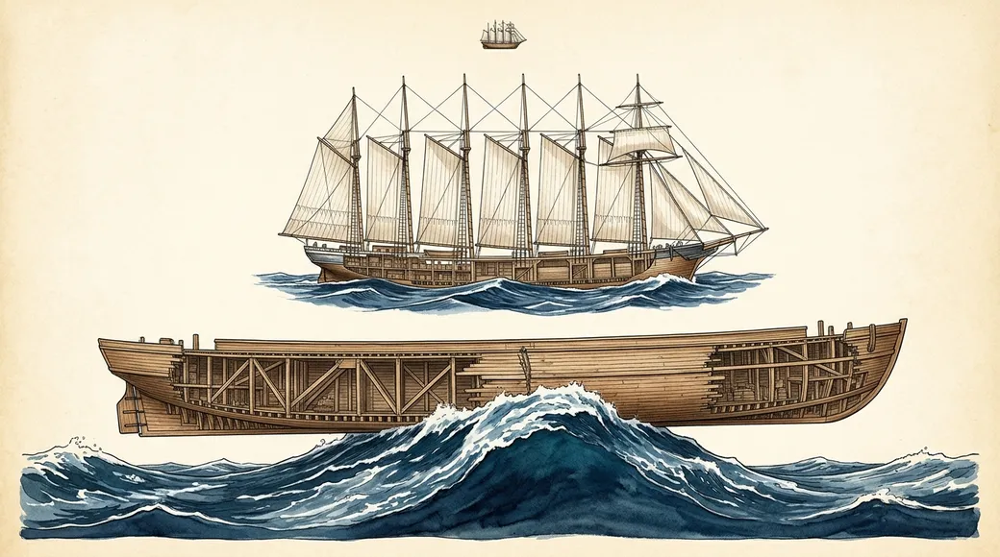
The Ark in the sources. Chazal and Rashi treat the Ark as a real ship that stayed afloat by natural means. Hashem tells Noach to coat the Ark with pitch inside and outside (6:14). Rashi contrasts this with Moshe’s basket, which had clay inside and pitch only on the outside, and explains that the Ark needed pitch on both sides “because of the strength of the water” (on 6:14). The Midrash compares the Ark to a ship riding low in the water of a harbor (Bereishis Rabbah 32:9). The Gemara explains that the Ark was narrowed to one amah at the top so that it would stand firm in the water (Sanhedrin 108b). None of these sources names a miracle that held the hull together.
״ואל אמה תכלנה מלמעלה״ — דבהכי [הוא] דקיימא.
“‘And to a cubit you shall finish it above’ (Bereishis 6:16) — for in this way it stands firm [in the water].”
Sanhedrin 108b
The largest wooden ship ever built. A wooden hull is built of many timbers fastened together. In rough seas the hull flexes, the fastenings work loose and the seams open. The longer the hull, the more it flexes. Guinness World Records lists the six-masted schooner Wyoming, built by the Percy & Small shipyard in Bath, Maine, and launched in 1909, as the largest wooden sailing ship ever built. According to the Maine Maritime Museum, its registered hull length was 329.5 feet (100.4 meters). Its length comes to about 137 meters only if one also counts the bowsprit and the boom, which stuck out past the hull. Its crews reported that it flexed in rough seas, its deck planks buckled, and it took on water, so that its pumps had to run all the time. Repairs never stopped the leaks. On March 11, 1924, the Wyoming sank in a storm in Nantucket Sound, off Cape Cod, and its whole crew was lost.
The Ark would have been 144 to 174 meters long, far longer than the Wyoming, and it carried the world’s animals and a year of food. A box 300 by 50 amos sitting eleven amos deep, as Rashi says it did (on 7:17), has 165,000 cubic amos under water. It displaces about 18,250 to 32,200 metric tons of fresh water, depending on the size of the amah. A wooden hull of that size could not have held together through a year of ocean swells, because the waves bend the timbers and open the seams.
What a ship has to withstand. A seaworthy ship has to do several separate things. It has to float its loaded weight. It has to right itself when it tilts. It must not be rolled over by liquid shifting inside it. And its hull has to resist bending in the waves without its seams opening. A design can meet one of these and still fail another.
The Korean study that Rabbi Meiselman cites. In Torah, Chazal and Science, Rabbi Meiselman cites a 1994 study to argue that the Ark was seaworthy: “Safety Investigation of Noah’s Ark in a Seaway” (Creation Ex Nihilo Technical Journal, 8(1): 26–36, April 1994). Its authors were S. W. Hong and his colleagues at the Korea Research Institute of Ships and Ocean Engineering (KRISO), and the Korea Association of Creation Research (KACR) paid for the work. They compared hulls of different proportions and concluded that the Torah’s proportions of 300 by 50 by 30 balance stability, comfort in the waves and structural safety. They claimed that the Ark could ride out waves more than 30 meters high.
Rabbi Meiselman elsewhere treats the Mabul as a miracle beyond physical inquiry, so it is ironic that he eagerly cites this one engineering study the moment it seems to support him. And the study does not establish what he cites it for, because it never examined how a full-size hull of joined timbers behaves in the waves.
In the wave tank, Hong and his colleagues used rigid models built at one-fiftieth of full size, about three meters long. A rigid model lets engineers measure how the hull as a whole rises and falls, pitches and rolls in the waves. It cannot reproduce what happens inside a wooden hull 144 to 174 meters long: the timber joints flexing, the fastenings slipping, the seams opening and the wood soaking up water. From a solid model the engineers could learn how the outer shape moves, but not whether thousands of wooden joints would work loose as the swells flexed the hull.
For the strength of the hull, the authors used a linear finite-element model, a standard kind of computer model of how a structure bends under load. They assumed planking 30 centimeters thick and framing beams 50 by 50 centimeters, all joined into one solid structure that resists shearing. That treats the Ark as a continuous box girder, as if the hull were cast in one piece, and not as a wooden ship assembled from separate timbers and planks. So the calculation left out the joints, and the joints are where a long wooden hull bends, opens its seams and leaks.
Drinking water in an open tank would have capsized the Ark. Treat the Ark as a box with flat sides at the 48-centimeter amah: 144 meters long, 24 meters wide and 14.4 meters high. At Rashi’s depth of eleven amos, it sits 5.28 meters deep in the water. The part under water displaces 18,248 cubic meters, so the Ark can carry about 18,250 metric tons in fresh water, or about 18,700 metric tons in seawater, counting the hull, the animals, the food and the water together.
Naval architects judge whether a tilted ship will right itself by its metacentric height. This is the height of a point called the metacenter above the ship’s center of gravity. If the metacentric height is positive, the ship rights itself when it tilts, and if it is negative, the ship rolls over. The box Ark, with its center of gravity halfway up the hull (7.2 meters above the keel), starts with a metacentric height of +4.53 meters. (The center of buoyancy is 2.64 meters above the keel, and the metacenter is 9.09 meters above that; U.S. Navy Salvors Handbook, §§2-4.3 and 2-5.2; NTSB naval architecture report.)
Now add the 1,625 cubic meters of drinking water from item 16.2. Spread across the whole floor of 144 by 24 meters, that water forms a layer about 47 centimeters deep. In a tank that is only partly full, the water rushes to the low side whenever the ship tilts. This weakens the ship’s stability in proportion to the cube of the tank’s width (U.S. Navy Salvors Handbook, §§2-5.2–2-5.3). (A wide, shallow pan of water sends all its water to one edge at the slightest tilt, while a tray divided into narrow compartments does not.)
- In one open tank as wide as the ship, the sloshing cuts the metacentric height by 8.87 meters, to −4.34 meters, and the Ark rolls over.
- If the same tank is divided across its width into four sealed bays running along the ship, the loss is one-sixteenth as much, 0.55 meters, and the metacentric height comes back up to +3.98 meters.
So whether the Ark stayed upright depended on sealed, divided tanks, on where the weight sat and on watertight compartments, and not only on its proportions of six to one.
A wave would have bent the hull hard along its length. Place the same hull, 144 by 24 meters, on a single wave 5 meters high and 144 meters long, so that the crest lifts the middle of the ship while the bow and stern hang over the troughs (American Bureau of Shipping, Marine Vessel Rules, Part 3). That uneven support bends the middle of the hull with a moment of 634 meganewton-meters. On a wave 1 meter high the figure is 127, and on a wave 3 meters high it is 380.
To keep the stress in the timber under 10 megapascals under that load, the hull’s cross-section would need a section modulus of 63.4 cubic meters. (The section modulus measures how strongly a cross-section resists bending.) To keep the stress under 5 megapascals, it would need twice that, 126.8 cubic meters. This calculation treats the wave as standing still. It leaves out the pitching of the ship, the slamming of the waves, the uneven loads of animals and cargo, and the slipping of wooden joints, and each of these puts more strain on a hull built of joined timbers.
16.6A single pair of each unclean species (6:19, 7:2) could not have carried the variety that geneticists find in animals’ genes. Horses and dogs that died long before the Mabul’s date already carried several of the family lines that living horses and dogs carry.Every animal carries two copies of each gene. So a pair of animals carries at most four versions of any gene. New versions arise only slowly, by mutation.The cheetah is a species that did shrink to a few animals, and its genes are very uniform. If every species came from one pair, every one of them would have shrunk at the same date. Geneticists date the cheetah’s shrinking to about 12,000 years ago, and they find no date at which every species shrank.Neither the horse nor the dog is a clean animal (Vayikra 11:3, 11:27), so one mare and one female dog came out of the Ark. A mare passes the DNA of her mitochondria to all her foals, so one mare can leave only one mothers’ line.Fourteen horses that lived in northeastern Siberia during the last ice age carried twelve different mothers’ lines, and two of these lines are found in horses alive today. People were already breeding the ancestors of today’s domestic horses before 2105 BCE, and that line never fell below an effective population size of about 500.By about 11,000 years ago dogs had split into at least five separate lines. The dogs of Africa south of the Sahara come from one of these lines, and the singing dogs of New Guinea and the dingoes of Australia come from another.
The DNA of the animals
What one pair can carry. Every animal inherits one copy of each gene from its father and one from its mother. So a single breeding pair can carry at most four versions of any gene between them. Any further versions have to arise later by mutation, which is slow.
The cheetah, a species that did shrink to a few animals. Geneticists know what the DNA of a species looks like after its numbers crash, because they have studied real species that went through such a crash, which they call a bottleneck. The best-known case is the cheetah. Before 1985, a team led by the geneticist Stephen O’Brien had found that cheetahs are almost identical in their genes. In 1985, O’Brien’s team grafted patches of skin between fourteen cheetahs, six in South Africa and eight in Oregon, and twelve of the grafts were between unrelated animals. Normally an animal’s immune system treats skin from an unrelated animal as foreign tissue and rejects it within about two weeks.
None of the fourteen cheetah grafts was rejected that quickly. Three were rejected slowly, between days 39 and 70. (The South African grafts were watched only until about day 23.) As a control, the team also grafted patches of skin from domestic cats onto two cheetahs in Oregon, and those grafts were rejected within ten to fourteen days (Science, 1985). The researchers concluded that cheetahs share unusually similar versions of the immune genes that the body uses to tell its own cells from foreign tissue.
In 2015, Pasha Dobrynin and his colleagues read the cheetah’s entire genome. They found signs of two sharp bottlenecks, one about 100,000 years ago and another about 10,000 to 12,000 years ago (Genome Biology, 2015). So even the cheetah’s well-known crash happened thousands of years before 2105 BCE.
Each species shrank at its own time. Most species are far more varied in their genes than the cheetah. How uniform a species’ genes become after a bottleneck depends on how long its numbers stay small and how fast they recover, so a single pair would not leave every species as uniform as the cheetah. But if every land species came from one pair in the Ark, every species would carry the mark of a bottleneck at the same date, about 4,100 years ago. Where geneticists do find a bottleneck in a species’ DNA, they date it to different times in different species. The northern elephant seal, for example, was hunted down to a few dozen animals in the 1890s, and that is the bottleneck geneticists find in its DNA. They find no bottleneck shared by every species around 2105 BCE.
Horses and dogs from before the Mabul
Mothers’ lines in horses. The Mishnah counts the horse and the mule, the mule and the donkey, and the dog and the wolf as separate species (Kilayim 1:6), and neither the horse nor the dog is a clean animal (Vayikra 11:3, 11:27). So one mare and one female dog came out of the Ark. Mitochondrial DNA passes from a mother to all her offspring, and only her daughters pass it on to the next generation. If every living horse descends from the one mare in the Ark, every horse alive today should carry her mothers’ line, with only about 4,100 years of copying changes added to it.
In 2010, Michael Cieslak and his colleagues at the Leibniz Institute for Zoo and Wildlife Research in Berlin read a stretch of mitochondrial DNA 247 letters long from 207 ancient horses. Fourteen of those horses lived in northeastern Siberia before the last ice age ended, about 11,700 years ago. They carried twelve different mothers’ lines, and two of these lines are still found in living horses.
In a stretch only 247 letters long, the same change can sometimes arise twice, so a longer stretch was needed. In 2012, Alessandro Achilli and his colleagues read the complete mitochondrial DNA of 83 living horses. They found that the mothers’ lines of living horses fall into 18 main branches, which all meet in one mare who lived about 130,000 to 160,000 years ago. So living horses cannot trace their mothers’ lines to a single mare in the Ark 4,100 years ago.
Whole genomes of horses. In 2018, Ludovic Orlando and his colleagues found that the Przewalski’s horses of Mongolia descend from horses kept at Botai, in Kazakhstan, about 5,500 years ago. All other horses alive today carry only about 3 percent of their ancestry from Botai. So two separate horse populations from before the Mabul’s date both have descendants alive today.
In 2024, Pablo Librado, Ludovic Orlando and their colleagues analyzed the complete genomes of 475 ancient horses, 124 of them read for the first time (Nature, 2024). They found that the line leading to today’s domestic horses went through a bottleneck that began no earlier than about 2700 BCE. At its narrowest, the line had an effective population size of about 500 horses. (Effective population size measures how fast a group loses its genetic variety. It is the size of an idealized population, in which every animal breeds equally, that would lose variety at the same rate. It is usually smaller than the number of animals actually alive.)
The early breeders mated closely related animals and bred them young. By about 2200 BCE, about a century before 2105 BCE, people were controlling how these horses bred. From about 2200 BCE on, horses of this line spread across Eurasia and replaced nearly every local population of horses. Librado and Orlando’s team worked out the line’s effective population size from the DNA of 24 of its earliest horses, which lived on average around 1864 BCE, and traced it back across the 200 generations before them, a span that includes 2105 BCE. Through that whole span the effective population size never fell below about 500. So people were already breeding the ancestors of today’s domestic horses before 2105 BCE, and the line did not pass through a single pair in that year.
Dog lines. In 2020, Anders Bergström, Pontus Skoglund and their colleagues read the DNA of 27 ancient dogs and found at least five separate lines that had already split apart 10,900 years ago. The dogs of Africa south of the Sahara descend from dogs related to one that lived in the Levant 7,000 years ago, while the singing dogs of New Guinea and the dingoes of Australia carry a separate line of their own. If every living dog descended from one pair in the Ark, all living dogs would be equally related to every dog that died before the Mabul. Instead, the dogs of each region are closest to particular ancient lines.
16.7Some lice, worms and germs live only on people or inside them, so every one of them alive today came through the year of the Mabul on the eight people in the Ark. Yet geneticists find that their family lines split apart long before the Mabul.Head lice die within two days off a person, and animals don’t carry them. The pinworm, a small worm of the gut, has no host but man. The stomach bacterium Helicobacter pylori is known to live only in the human stomach.Pinworm eggs have been found in dried human dung in two caves in Utah, the oldest of it dated to 7837 BCE.The head lice of people belong to two lines that split apart about 1.18 million years ago.The Helicobacter pylori of the Aboriginal Australians and of the highlanders of New Guinea split from the strains of Asia 31,000 to 37,000 years ago.The hepatitis B virus of the native peoples of the Americas split from the hepatitis B of Europe and Asia between about 20,000 and 12,000 years ago, and geneticists have read it in a person who died in the Andes about 9,000 years ago.Core
Lice and germs that live only on people
Parasites and germs that live only on people. The Centers for Disease Control, the U.S. public health agency, states that head lice “will die within two days if they fall off a person and cannot feed,” and that “animals do not get or spread head lice.” It also states that “humans are considered the only host” of the pinworm, and that pinworm eggs survive only two to three weeks on objects.
A 2001 report in the Bulletin of the World Health Organization calls the human stomach “the only known reservoir” of the stomach bacterium Helicobacter pylori. The hepatitis B virus lives in the human liver. A few strains have been found in apes, and geneticists consider them offshoots of the human virus. So during the year of the Mabul, the eight people in the Ark were the only place where any of these parasites and germs could have lived.
Pinworms in America before Creation. In 1969, Gary Fry and John Moore reported pinworm eggs in dried human dung from Hogup Cave and Danger Cave in western Utah. The oldest sample with eggs in it was dated to 7837 BCE. As Fry and Moore note, the pinworm is a parasite of people alone. So people carrying pinworms were already living in western Utah more than four thousand years before the date of Creation.
Two lines of head lice. In 2004, David Reed and his colleagues compared the DNA of head lice from people around the world and found two separate lines that split apart about 1.18 million years ago. One line is found all over the world. In their samples, the second was found only in the Americas. In a separate study, Karl Reinhard and his colleagues found a louse egg glued to a human hair in northeastern Brazil and dated it to about 10,000 years ago (Parasitology Today, 2000). So people with head lice were living in South America thousands of years before Creation.
The human pubic louse split from the gorilla louse millions of years ago. People also carry the pubic louse, a more distant relative of the head louse. The Centers for Disease Control states that people are its only host, and that an adult louse that falls off a person dies within 24 to 48 hours. So the pubic louse too could have lived through the year of the Mabul only on the people in the Ark.
In 2007, David Reed, Jessica Light and their colleagues compared the DNA of the lice of people, chimpanzees and gorillas (BMC Biology). They found that the human pubic louse is most closely related to the gorilla louse, and that the two lines share a common ancestor three to four million years ago. The human head louse and the chimpanzee louse last shared an ancestor about six million years ago, about when geneticists date the split between the ancestors of people and chimpanzees. So geneticists can trace a history millions of years long in the DNA of human lice alone, apart from human DNA.
Ibn Ezra writes that creatures that are not born of a male and a female did not need to come into the Ark (on 6:19), and Rav Yosef says that lice do not breed (Shabbos 107b). On that view the lice could have formed anew after the Mabul. But lice do lay eggs (nits are lice eggs), and today’s lice belong to lines a million years old, so they did not form anew.
מַתְקִיף לַהּ רַב יוֹסֵף: עַד כָּאן לָא פְּלִיגִי רַבָּנַן עֲלֵיהּ דְּרַבִּי אֱלִיעֶזֶר אֶלָּא בְּכִינָּה, דְּאֵינָהּ פָּרָה וְרָבָה... אֲמַר לֵיהּ אַבָּיֵי: וְכִינָּה אֵין פָּרָה וְרָבָה? וְהָאָמַר מָר: יוֹשֵׁב הַקָּדוֹשׁ בָּרוּךְ הוּא וְזָן מִקַּרְנֵי רֵאמִים וְעַד בֵּיצֵי כִינִּים! מִינָא הוּא דְּמִיקְּרֵי ״בֵּיצֵי כִינִּים״.
“Rav Yosef objected: The Rabbis disagree with Rabbi Eliezer only concerning a louse, which does not procreate... Abaye said to him: And does a louse not procreate? Did not the Master say, ‘The Holy One, blessed be He, sits and sustains everything from the horns of wild oxen to the eggs of lice’? [Rav Yosef replied:] There is a species called ‘lice eggs.’”
Human tapeworms split from the tapeworms of lions and hyenas in Africa. Three species of tapeworm grow into adults only in the human gut. Their larvae grow in cattle or pigs, and people take them in by eating raw or undercooked meat. An adult beef tapeworm can live in a person for up to 25 years. In 2001, Eric Hoberg and his colleagues traced the family tree of these tapeworms (Proceedings of the Royal Society B), including Taenia asiatica, the sister species of the beef tapeworm, which is found in eastern and southeastern Asia.
The closest relative of the beef tapeworm and Taenia asiatica is a tapeworm whose adults live in lions and whose larvae grow in antelopes. The closest relative of the third human species, the pork tapeworm, is a tapeworm of hyenas. Hoberg’s team concluded that people first picked up these parasites in Africa by eating wild game killed by lions and hyenas, long before anyone kept cattle or pigs. By their estimate, the beef tapeworm and Taenia asiatica split from each other between about 780,000 and 1.7 million years ago, long before the date of Creation.
The two human herpes simplex viruses split from the viruses of apes. The herpes simplex viruses cause sores on the skin, such as cold sores on the lips, and people are their only natural host. People are also the only primates known to carry two of them, HSV-1 and HSV-2. In 2014, Joel Wertheim and his colleagues concluded that people inherited HSV-1 from the common ancestor of people and chimpanzees, while HSV-2 jumped from the ancestors of chimpanzees to an earlier human species about 1.6 million years ago (Molecular Biology and Evolution). Both viruses are older than the date of Creation by more than a million years.
On these family trees, the human pubic louse, the tapeworms and the herpes viruses split from the parasites of apes, lions and hyenas hundreds of thousands or millions of years before the date of Creation. To reach the world of today, the pubic louse and both herpes viruses had to live through the year of the Mabul on the eight people in the Ark. The tapeworms, including both sister species, had to live through it either in those eight people or in the cattle and pigs in the Ark.
Human germs branch off along with human peoples. In 2007, Bodo Linz, Mark Achtman and their colleagues studied the DNA of Helicobacter pylori (Nature). They found that its genetic variety falls the farther a people lives from East Africa, just as human genetic variety does. They concluded that people already carried the bacterium when they left Africa, about 58,000 years ago. In 2009, Yoshan Moodley and his colleagues identified a separate strain among the Aboriginal Australians and the highlanders of New Guinea, and dated its split from the strains of Asia to 31,000 to 37,000 years ago (Science). So people carrying this stomach bacterium settled Australia and New Guinea tens of thousands of years before 2105 BCE.
In 2021, Arthur Kocher and his colleagues read the genomes of the hepatitis B virus from 137 people who died over the past 10,500 years. They found that the American and the Eurasian lines of the virus split apart between about 20,000 and 12,000 years ago. The oldest American genome of the virus came from a person buried about 9,000 years ago at Cuncaicha, a rock shelter high in the Andes (Science). So the separate American line of hepatitis B was already in South America thousands of years before Creation.
Each strain is found where it lived before the Mabul. Suppose the eight people in the Ark did carry both lines of head lice, the strain of Helicobacter pylori now found in Australia and New Guinea, and the American line of hepatitis B. That still leaves each strain confined to its own region. Human parasites and stomach bacteria spread with the people who carry them, so one family spreading out from Ararat would have carried these strains wherever its descendants settled. For the strains to be where they are today, Noach’s descendants would have had to carry each one back to the continent where it had already lived for thousands of years before 2105 BCE. The American line of hepatitis B, for instance, was already in the Andes 9,000 years ago.
17. The animals’ way home
In the Torah, the animals leave the Ark on the mountains of Ararat and spread over the earth from there (8:17–19). If so, every land animal alive today descends from animals that walked out of one place in the Near East about 4,100 years ago.
Many animals live only in places cut off from the Near East by thousands of kilometers of open ocean, with no way over land from Ararat. Kangaroos live in Australia, sloths in the Americas and lemurs in Madagascar.
Two answers are often given. One is that Hashem carried each animal to its home by a miracle. The other is that the continents were still joined at the time of the Mabul, so that the animals could reach their homes over land without crossing an ocean.
The animals leaving the Ark in the Torah
The Torah leaves no animals alive anywhere but in the Ark. The Ark came to rest on the mountains of Ararat (8:4), every land animal outside the Ark died (7:21–23), and from Ararat “every beast, every creeping thing and every bird” came out of the Ark, family by family (8:19). From that one range of mountains, the distances to the places where animals live today are very large. In a straight line across the globe, the mountains of Ararat are about:
- 6,500 kilometers from Madagascar;
- 11,400 kilometers from the forests of South America;
- 11,700 kilometers from central Australia;
- 13,000 kilometers from Hawaii;
- 13,700 kilometers from the Galápagos;
- 15,800 kilometers from New Zealand.
Any route an animal could actually travel is longer still. Animals that move slowly or cannot fly, and that live in only one of these places, would have had to cross thousands of kilometers of strange land and open ocean to reach their homes.
17.1The Gemara and Rashi say that the animals came to the Ark on their own (Sanhedrin 108b; Rashi on 6:20 and 7:9). Many of them live across an ocean, thousands of kilometers from Ararat, and some could not have lived through the journey.The animals “came to Noach, to the Ark, two by two” (7:9). Pirkei d’Rabbi Eliezer says instead that angels brought them (chapter 23), but no traditional source tells of a miracle that carried them home.The kangaroo and the koala live in Australia, the sloth in the Americas and the kiwi in New Zealand. Each of them had to make the journey to the Ark and then make it back.The three-toed sloth can live only in the warm forests of the tropics. The way by land from Ararat to Central America runs more than sixteen thousand kilometers, through Siberia and Alaska.Dozens of small animals live only in Movile Cave in Romania, which has been sealed off from the surface for about 2.5 million years and has no natural entrance.
The road to the Ark and the road back
How the animals came to the Ark. The Gemara and Rashi say that the animals came to the Ark on their own. Pirkei d’Rabbi Eliezer says instead that the angels in charge of each species gathered the animals and brought them (chapter 23).
מְנָא יְדַע? אָמַר רַב חִסְדָּא: שֶׁהֶעֱבִירָן לִפְנֵי הַתֵּיבָה, כֹּל שֶׁהַתֵּיבָה קוֹלַטְתּוֹ – בְּיָדוּעַ שֶׁלֹּא נֶעֶבְדָה בָּהֶם עֲבֵירָה, וְכֹל שֶׁאֵין הַתֵּיבָה קוֹלַטְתּוֹ – בְּיָדוּעַ שֶׁנֶּעֶבְדָה בָּהּ עֲבֵירָה. רַבִּי אֲבָהוּ אָמַר: מֵאוֹתָן הַבָּאִין מֵאֵילֵיהֶן.
“How did Noach know [which animals had not been corrupted]? Rav Chisda said: He passed them before the Ark; whichever the Ark admitted was known to be uncorrupted, and whichever the Ark refused was known to be corrupted. Rabbi Abbahu said: He took from those that came on their own.”
Sanhedrin 108b
מֵהָעוֹף לְמִינֵהוּ – אוֹתָן שֶׁדָּבְקוּ בְמִינֵיהֶם וְלֹא הִשְׁחִיתוּ דַּרְכָּם. וּמֵאֲלֵיהֶם בָּאוּ, וְכָל שֶׁהַתֵּיבָה קוֹלַטְתּוֹ הִכְנִיס.
“‘Of the birds after their kind’—those that kept to their own species and did not corrupt their ways. They came on their own, and whichever the Ark admitted, he brought inside.”
Rashi on Bereishis 6:20
Many animals had to cross an ocean to reach the Ark. Kangaroos, koalas and wombats live wild only in and around Australia. Sloths live only in the forests of Central and South America, and they move at only about four meters a minute. The kiwi, a bird that cannot fly, lives only in New Zealand, more than 1,500 kilometers across the sea from Australia, and animals that live only on islands far out in the ocean had the open sea to cross as well. Each of these animals would have had to cross an ocean, then cross thousands of kilometers of land on which it cannot feed, and reach Noach before the rain began.
On Pirkei d’Rabbi Eliezer’s account, angels brought the animals, so the journey to the Ark was a miracle that the Midrash describes. On Rashi’s account the animals came on their own, though one could still take their coming as a miracle. Either way, when the door opened every land animal still had to make the journey back, across open ocean and land without food, and no traditional source tells of a miracle that carried them home.
The three-toed sloth can live only where the air is warm. Three-toed sloths spend their lives eating leaves in the warm treetops of the forests of Central and South America. In northeastern Costa Rica, Jonathan Pauli of the University of Wisconsin–Madison and his colleagues caught ten wild sloths and measured how much energy they burn. They found that three-toed sloths burn less energy than any other mammal that does not hibernate, and that they let their body temperature rise and fall with the temperature of the air, as lizards and snakes do. The route from Ararat to their forests is more than sixteen thousand kilometers even in straight lines, and it crosses the cold lands of Siberia and Alaska. A sloth that cannot keep its own body warm could not survive that journey.
Other animals need places to live that do not exist along the route from Ararat. The olm is a blind white salamander that lives only in cold water (about 8 to 11 degrees Celsius) underground, inside the limestone of the Dinaric mountains, which run from near Trieste in Italy through Slovenia and Croatia to Bosnia. The olm eats, sleeps and breeds entirely in those underground streams, about 2,500 kilometers from Ararat. The koala has a similar problem, because it eats almost nothing but eucalyptus leaves. Eucalyptus grows wild only in Australia and on a few islands to its north, so a koala would find no food along the route from Ararat.
Movile Cave in Romania holds dozens of species found nowhere else, and it has no natural entrance. Movile Cave lies near Mangalia, a few kilometers from the coast of the Black Sea. In 1986, Cristian Lascu found the cave at the bottom of a shaft dug for a geological survey. It is a maze about 240 meters long with no natural way in. Scientists who study the cave estimate that thick layers of clay and loess (a fine dust laid down by the wind) sealed it off from the surface about 2.5 million years ago, so that no water passes through. The air inside holds much less oxygen than the air outside, and both the air and the water contain hydrogen sulfide and ammonia.
The cave is completely dark, and the life in it runs on bacteria that feed on the hydrogen sulfide and the ammonia instead of on sunlight. Researchers have found more than fifty species of small animals without backbones in Movile Cave, including leeches, spiders and water scorpions, and 37 of these species live nowhere else. Some live in the cave’s water, and others live on land inside the cave and breathe its air.
Every creature that crept on the land outside the Ark died in the Mabul (7:21–23). If the land animals of Movile Cave came from the Ark, they had to find their way into a sealed cave with no natural entrance. If they survived the Mabul where they were, the clay above the cave had to keep the water of the Mabul out for the whole year.
17.2If the animals walked out from Ararat, each group went to the one continent where its extinct relatives were already buried.Kangaroos, koalas and wombats live wild only in and around Australia. The bones of their extinct giant relatives have been found there too, and nowhere along the road from Ararat.Sloths and armadillos live only in the Americas. The fossil bones of South America belong to giant ground sloths and to a huge relative of the armadillo.Seven species of beetle that live around Los Angeles today were already living there tens of thousands of years ago.
Living animals and fossils on each continent
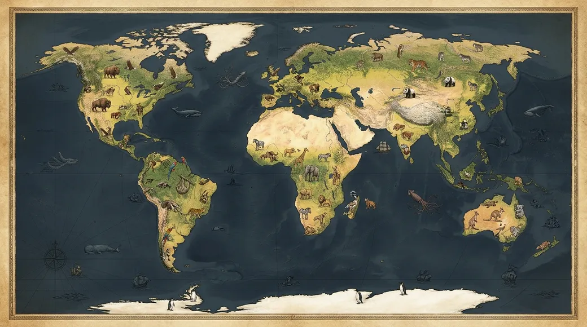
The animals of Australia and their extinct relatives. Kangaroos and koalas live wild only in Australia, apart from a few species of kangaroo on New Guinea, just to the north. The platypus, a furry mammal that lays eggs and has a bill like a duck’s, lives only in eastern Australia.
The fossil bones of extinct relatives of the koala and the wombat also lie in Australia. In 1830, a farmer named George Ranken found large bones in the Wellington Caves of New South Wales, in southeastern Australia. He came back with an expedition led by Major Thomas Mitchell, the colony’s surveyor-general, to dig up more. In 1838, the English naturalist Richard Owen named one of these animals Diprotodon. Diprotodon was a relative of the wombat and the koala, as heavy as a hippopotamus or heavier. Scientists date its extinction to about 40,000 years ago, and its bones have since been found all over Australia. So relatives of Australia’s living pouched animals were living in Australia tens of thousands of years before the Mabul.
The route from Ararat to Australia runs the whole length of Asia, and then across open sea, which geologists say separated the two even when the oceans were at their lowest. Scientists have found no kangaroos, koalas or wombats, and none of their extinct giant relatives, anywhere along that route.
In 2026, Kovacs and colleagues (Molecular Biology and Evolution) measured the rate of mutation in koalas from four parent–offspring trios and applied it to 457 whole genomes. They found that koala populations began a major decline about 100,000 years ago and split into five east-coast genetic populations between about 30,000 and 6,000 years ago—thousands to tens of thousands of years before 2105 BCE, and not a few centuries after one pair walked from Ararat.
The fossils of each continent are close relatives of its living animals. On the voyage of the Beagle in 1832, the naturalist Charles Darwin dug fossil mammals out of the coastal gravel at Punta Alta, in Argentina. Among them were the skulls and bones of giant ground sloths, including Megatherium, an animal the size of an elephant, and the bony shell of a huge creature “very like that of an armadillo.”
Darwin saw that these giant ground sloths were “intimately related” to the living sloths. He found the same thing in Australia, where fossil mammals from caves turned out to be “closely allied to the living marsupials of that continent.” (Marsupials are mammals with pouches, such as kangaroos and koalas.) Darwin called this pattern, in which the extinct animals of a continent are close relatives of its living ones, the law of “the succession of types.” He wrote of “this wonderful relationship in the same continent between the dead and the living.”
Scientists date the extinction of the giant ground sloths of the mainland to about 11,000 years ago, long before the Mabul. If the living sloths and kangaroos spread out from Ararat, the sloths went to South America and the kangaroos to Australia. Each ended up on the one continent where the bones of its own extinct relatives already lay in the ground.
Beetles that live around Los Angeles today lived there tens of thousands of years ago. The Rancho La Brea tar pits in Los Angeles are pools of natural asphalt that seep up from underground, and they have trapped animals for tens of thousands of years. In 2017, Anna Holden of the American Museum of Natural History and her colleagues examined more than 180 fossil insects from the pits. They focused on seven species of ground beetle and darkling beetle that still live in the Los Angeles area today.
Holden’s team dated the beetle fossils by radiocarbon. Their ages fall into three spans: about 50,000 to 28,000 years ago, 16,000 to 7,500 years ago, and about 4,000 years ago (Quaternary Science Reviews, 2017). So the same species of beetle lived in Los Angeles long before the Mabul and still live there today. If these species spread from Ararat after the Mabul, their descendants traveled back to the one area where their species had lived before.
Fossil relatives of the platypus also turn up in South America. Researchers have found extinct relatives of the platypus in Patagonia, at the southern tip of South America, in rocks that geologists date to 62 and 70 million years ago. Patagonia was part of the land that geologists say once joined South America, Antarctica and Australia, on the other side of the world from Ararat. Paleontologists take these fossils as evidence that the three continents were once joined. Even if the continents split apart only after the Mabul, nothing would explain why relatives of the platypus turn up in South America and Australia and nowhere near Ararat.
Joined continents do not explain why each continent’s animals match its fossils. If the continents were still joined at the time of the Mabul, as some writers propose, animals could have walked farther than they can today. But a road over land gives no reason for the kangaroos to go only to Australia, the sloths only to South America and the Los Angeles beetles back to southern California. Nor does it explain why each species settled on the one continent where the fossils of its own extinct relatives already lay, without leaving any of its kind along the way.
17.3Many animals live on one island and nowhere else, and they could not have crossed the sea from Ararat.About a hundred species of lemur live on Madagascar, about 400 kilometers off the coast of Africa, and nowhere else.The kiwi, a bird that can’t fly, lives only in New Zealand. Its nearest relatives are the extinct elephant birds of Madagascar, across the Indian Ocean.Hawaii is a chain of volcanoes that rose from the floor of the Pacific, more than 3,000 kilometers from the nearest mainland. At least 750 species of land snail lived on these islands, and nearly all of them are found nowhere else. Land snails cannot swim [citation needed], so none of them could have crossed that ocean from Ararat on its own.The answer that the continents were once joined doesn’t help with Hawaii, because Hawaii was never joined to a continent.On Hawaii the oldest lines of flies and spiders live on the oldest island, and the younger lines on the younger islands.
Animals on islands
Madagascar and New Zealand have animals that live nowhere else. Lemurs, primates that climb trees, are native only to Madagascar. In New Zealand the kiwi, which cannot fly, lived alongside the moa, a giant bird with no wings that stood up to nine feet tall, until the moa died out about six hundred years ago, soon after the first people reached the islands. If these birds and the lemurs spread out from Ararat, they had to cross hundreds or thousands of kilometers of open ocean.
The closest relatives of the kiwi and the moa do not live along any route from Ararat either. In 2014, Kieren Mitchell, Alan Cooper and their colleagues took DNA from the bones of the extinct elephant birds of Madagascar. They found that the elephant birds are the kiwi’s nearest relatives, although the kiwi lives across the Indian Ocean in New Zealand. Researchers who studied DNA from moa bones found that the moa’s closest relatives are the tinamous of South America, which are birds that fly.
Hawaii and the Galápagos were never joined to a continent. Both chains of islands rose as volcanoes from the floor of the open ocean, so the answer that the continents were once joined does not help with them. On Hawaii, the biologist Robert Cowie of the University of Hawaii and his colleagues count at least 750 native species of land snail. Giant tortoises found nowhere else live on the Galápagos Islands, about 900 kilometers off the coast of Ecuador. The tortoises cannot walk across an ocean and could have reached the Galápagos only by floating on the sea. If the snails and the tortoises came from Ararat, they first had to reach a coast and then make that crossing.
Biologists explain that rare accidental crossings, on floating wood, on the feet of birds or even inside birds’ guts, can bring animals to remote islands over millions of years. In 2011, Shinichiro Wada and his colleagues at Tohoku University fed tiny land snails from the Ogasawara Islands to two species of bird, and about 15 percent of the snails passed through alive (Journal of Biogeography, 2011). Crossings that rare take millions of years to build up hundreds of species on an island, not a few centuries after one landing at Ararat.
The family trees of Hawaii’s flies and spiders follow the order in which the islands rose. Geologists date the rock of Kauai, the oldest of the main islands, to about five and a half million years ago, and the rock of the island of Hawaii, the youngest, to less than 700,000 years ago.
In 1983, the geneticist Hampton Carson studied the 103 species of picture-winged fruit fly on Hawaii’s main islands. All but three of them live on a single island or on a cluster of neighboring islands. Carson compared the patterns of bands (distinctive stripes) on their chromosomes to trace how each species descended from earlier ones. He found that the 26 species on the youngest island, Hawaii, descend from 19 founders, and that 15 of these came from Maui and its neighbors. Most of the species on Kauai, the oldest island, belong to the oldest lines of the group (Genetics, 1983).
In 2003, Gustavo Hormiga, Miquel Arnedo and Rosemary Gillespie mapped the family tree of Orsonwelles, a group of 13 species of spider, each found on a single Hawaiian island. The species of Kauai form the earliest branches at the base of the tree, and the species of the younger islands branch off after them (Systematic Biology, 2003). (The researchers noted that other explanations of their data are possible.)
In 2016, Kerry Shaw and Rosemary Gillespie reviewed similar cases across seven chains of islands that, like Hawaii, formed one after another over volcanic hot spots. Across these chains they found the same pattern, known as the progression rule: the older lines of species live on the older islands, and the younger lines branch out onto the younger islands (Proceedings of the National Academy of Sciences, 2016). If Hawaii’s flies and spiders had arrived from Ararat after the Mabul, their family trees would have no reason to follow the ages of the islands.
17.4On islands far out in the ocean, zoologists find only animals whose ancestors could cross the sea, and many species on one group of islands descend from a single animal that arrived there.Hawaii has no native frogs, salamanders, snakes or lizards, and its only native land mammal is a bat.Frogs that people brought to Hawaii have thrived there. In some places there are as many as 91,000 coqui frogs in a hectare.More than fifty species of honeycreeper, a group of birds found only in Hawaii, lived on the islands. Geneticists find that the honeycreepers descend from one ancestor, whose nearest relatives are the rosefinches of Asia and Europe.The Mishnah counts species that look alike as separate species (Kilayim 1:6). On that measure each species of honeycreeper came out of the Ark as its own min and had to cross more than 3,000 kilometers of ocean by itself.
Island animals that descend from one arrival
Hawaii’s native animals belong to groups that can cross open ocean. According to the United States National Park Service, most of Hawaii’s native animals descend from ancestors that either flew there or were light enough for birds to carry, such as snails, insects and spiders. Hawaii’s only native land mammal is a bat. Fred Kraus and his colleagues at the United States Geological Survey report that Hawaii “lacks native terrestrial reptiles and amphibians” (1999). Charles Darwin noted in 1859 that frogs, toads and newts are missing from remote islands in the ocean because salt water quickly kills both the adults and their spawn (On the Origin of Species, p. 393).
Frogs and toads do well in Hawaii once they get there. People brought in the cane toad in 1932 to control pests of sugarcane, and the coqui, a small frog from Puerto Rico, arrived by accident in the 1980s. Karen Beard of Utah State University and her colleagues report as many as 91,000 coquis in a hectare in some areas. Frogs were missing from Hawaii only because none could cross the sea to get there.
Many species on one chain of islands descend from a single arrival. Hawaii’s honeycreepers are a varied group of native songbirds. In 2011, the geneticists Heather Lerner, Robert Fleischer and their colleagues analyzed the DNA of the honeycreepers. They found that every species descends from a single ancestral bird, probably from Asia, which began branching into new species about 5.7 million years ago. In 2015, a team of geneticists led by Leif Andersson read the DNA of 120 birds covering every species of Darwin’s finch, and found the same pattern on the Galápagos. All of those finches descend from a single ancestor that reached the islands about two million years ago, and not from finches that came separately from Ararat 4,100 years ago.
By the Mishnah’s measure, each species of honeycreeper would have made its own way from Ararat to Hawaii and settled nowhere else. Geneticists find instead that all the honeycreepers descend from a single arrival. The Radal allows many of today’s species to have branched off after the Mabul from fewer pairs in the Ark. Even on his view, Hawaii’s honeycreepers would have had to split into more than fifty species within 4,100 years, while geneticists date that branching to about 5.7 million years ago.
Madagascar’s native land mammals come from just four arrivals from Africa. Madagascar lies about 400 kilometers off the coast of Africa. Apart from bats, all of its native land mammals belong to only four groups: the lemurs; small insect-eaters called tenrecs; a family of meat-eaters, the best known of which is the fossa; and a group of rodents. In 2003, Anne Yoder and her colleagues noted that Madagascar has been surrounded by ocean for at least 88 million years. They found from DNA that all of the island’s native meat-eaters descend from a single ancestor from Africa (Nature, 2003).
In 2005, Céline Poux, Miguel Vences and their colleagues found the same pattern, a single ancestor, for each of the four groups. They dated the arrival of the lemurs to about 50 to 60 million years ago, and the arrivals of the other three groups to between 19 and 42 million years ago (Systematic Biology, 2005). In 2010, Jason Ali and Matthew Huber modeled the ocean currents of that era on a computer and found that they flowed from Africa toward Madagascar, so animals could have drifted across on rafts of plants (Nature, 2010). By the Mishnah’s measure, each of Madagascar’s hundred or so species of lemur would have left the Ark as its own min and crossed the sea by itself. Geneticists find instead that all the lemurs descend from a single arrival tens of millions of years ago.
Islands in the Mediterranean once had their own dwarf elephants. The straight-tusked elephant of mainland Europe stood about four meters tall. Sicily and Malta were home to a dwarf species, Palaeoloxodon falconeri, that stood less than a meter tall when full-grown and lived about 500,000 to 200,000 years ago. Cyprus had its own dwarf elephant, a meter tall, and a dwarf hippopotamus. Paleontologists date the extinction of both to about 12,000 years ago, around the time people first reached the island. So these island dwarfs lived and died out thousands of years before the Torah’s date for Creation.
Paleontologists conclude that these dwarfs descend from mainland elephants that swam to the islands and shrank over many generations. In 2021, Sina Baleka, Michael Hofreiter, Johanna Paijmans and their colleagues analyzed the mitochondrial DNA of a younger, larger Sicilian dwarf elephant (Palaeoloxodon mnaidriensis) found in Puntali Cave in Sicily. Mitochondrial DNA passes from mother to young. The team dated the elephant to between 175,500 and 50,000 years ago. They found that its line branched off from the straight-tusked elephant, one of the largest land mammals that ever lived, and they estimated that this Sicilian dwarf weighed less than a fifth as much as its mainland ancestor (Current Biology, 2021). So the elephants of Sicily had already shrunk to dwarfs tens of thousands of years before 3760 BCE.
On the Radal’s view, these dwarf elephants would have shrunk within a few thousand years after the Mabul. Paleontologists date them to hundreds of thousands of years ago, and date the last of them, on Cyprus, to about six thousand years before the date of Creation.
17.5One herd of mammoths lived on Wrangel Island, in the Arctic, from about 10,000 years ago until about 4,000 years ago. That is before the Mabul’s date and, by the best estimate, a few decades after it.On Wrangel Island, 140 kilometers off Siberia, geneticists have read the DNA of 14 mammoths that lived between about 9,200 and 4,300 years ago (about 2350 BCE). All of them belong to one herd, descended from a few mammoths cut off on the island about 10,000 years ago.By the best estimate the herd died out about 4,000 years ago. That is close to the Torah’s date for the Mabul, and probably a few decades after it.If the estimate is right, there are two possibilities. Either the herd lived through the Mabul, or a pair of mammoths walked from Ararat to the Arctic, crossed 140 kilometers of sea and left descendants that died out within a few decades.On St. Paul Island in the Bering Sea, mammoth DNA and the spores of fungi that grow on dung lie in the lake mud from about 10,850 to 5,600 years ago. So mammoths lived on that island at the Torah’s date for Creation.Geneticists who read the DNA of 281 moa from New Zealand found no drop in the variety of their genes across the date of the Mabul.
The mammoths of Wrangel Island
Wrangel Island lies in the Arctic Ocean, 140 kilometers off the northeastern corner of Siberia. In 1993, the Russian scientist Sergey Vartanyan and two colleagues reported in Nature that mammoth teeth from the island were dated by radiocarbon to about 7,000 to 4,000 years old. That is thousands of years later than the last mammoths of the mainland. Scientists have since added more than a hundred radiocarbon dates from the island.

In 2024, geneticists at the Centre for Palaeogenetics in Stockholm, led by Marianne Dehasque and Love Dalén, analyzed the DNA of 14 mammoths from Wrangel Island (Cell, 2024). They found that when the seas rose at the end of the ice age, about 10,000 years ago, no more than eight mammoths were cut off on the island. That small group grew to a herd of 200 to 300 animals and lived there for about 6,000 years. The team’s samples run from about 9,200 to 4,300 years ago, to within about three hundred years of the herd’s end. Across that whole span they found one herd, descended from the same few founders. So the herd lived on Wrangel Island without a break through the Torah’s date for Creation. By the best estimate of when it died out, about 4,000 years ago, it was still alive a few decades after 2105 BCE.
Mammoths lived on St. Paul Island, in the Bering Sea, at the Torah’s date for Creation. St. Paul Island lies far off the western coast of Alaska. In 2004, R. Dale Guthrie reported a mammoth from the island with a radiocarbon age of about 7,900 years (Nature, 2004). He used the depth of the sea floor and the rate at which the sea rose after the ice age to work out how the rising water had cut off mammoths on the island.
In 2016, Russell Graham and his colleagues dated the end of the herd with five separate lines of evidence from mammoth bones and from the mud of the island’s lake, including mammoth DNA and the spores of fungi that grow on dung, which lie in the lake mud from about 10,850 years ago onward. They found that mammoths lived on St. Paul Island until about 5,600 years ago, give or take a century (Proceedings of the National Academy of Sciences, 2016). The researchers found no sign that people set foot on the island before 1787 CE. They concluded that the herd died out because the rising sea and a changing climate shrank the island and used up its fresh water. By the Jewish count, Creation was 5,787 years ago. So the St. Paul Island herd was already living there in the year of Creation, as it had been for thousands of years, and died out about two centuries later.
New Zealand’s moa kept their genetic variety across the date of the Mabul. Moa were giant birds that could not fly, found only in New Zealand. At Rosslea, on New Zealand’s South Island, the geneticist Morten Allentoft and his colleagues dug up a waterlogged swamp and recovered bones of the South Island giant moa (Dinornis robustus) from thousands of years before 2105 BCE. One thigh bone dates to about 5990–5770 BCE. A bone from the lower leg, from the same deposit and identified by its DNA as the same species, dates to about 2470–2215 BCE (Allentoft et al., 2011, 2014).
In 2014, Morten Allentoft, Michael Bunce and their colleagues analyzed the DNA of 281 moa of four species from five nearby fossil sites on the South Island, and dated 217 of the bones by radiocarbon. Most of the bones come from the last 4,000 years before the moa died out, shortly after people reached New Zealand in the late thirteenth century. In all four species the team found no drop in genetic variety, and the frequencies of the versions of each gene stayed roughly the same over the last 5,800 years (PNAS, 2014).
If the moa had come to New Zealand from the Ark after 2105 BCE, the later bones would carry only the versions of genes that the Ark’s birds brought. The bones from before 2105 BCE would belong to birds that died in the Mabul, so there would be a sharp break in the gene pool at that date. The team found no such break. So the moa of New Zealand went on without a break across 2105 BCE, with no sign that they started again from one pair. (Only 13 of the dated bones are older than 4,000 years, so the team had far fewer samples from before 2105 BCE than from after it.)
17.6When the animals came out of the Ark, the land had been under water for most of a year. There was little for the plant-eaters or the meat-eaters to eat.The animals came out when the low ground had been under water for about ten and a half months (8:14–19). Most trees die when they stand in water for that long, and a tree that grows from seed takes years to bear fruit. The plant-eaters came out onto land without the pastures and forests that they needed.The meat-eaters had to find their meat among animals that had come out as one pair of each species, or seven pairs of the clean ones. Every animal that a lion or a fox caught in those first months was one of the last of its species.A pair of lions eats about 1,080 kilograms of meat in its first ninety days, which is about sixteen grown prey animals. That is more than all fourteen animals of a clean species that came out in seven pairs.
What the animals ate when they came out
Most trees die after standing in water for a long time. The animals left the Ark on the twenty-seventh day of the second month (8:14–19), less than two months after the ground had dried (8:13). By then the low ground had been under water for about ten and a half months. In 1993 the Mississippi River flooded the forests near St. Louis for much of one summer. The trees of a floodplain are adapted to seasonal floods, yet the U.S. Geological Survey reported that almost 40 percent of the grown trees and up to 80 percent of the young ones died.
Grass can come back from seed in a few weeks, but a tree grown from seed takes years to bear fruit, and a forest takes far longer to grow back than a single tree. Every plant-eating animal in the world walked off the Ark at once, onto land where the pastures and forests it lived on were not yet there.
The Torah does mention a fresh olive leaf that the dove brought back to Noach (8:11), which might suggest that some trees survived the Mabul. The Midrash asks where that leaf came from and gives two answers: the dove picked it in Eretz Yisrael, which the Mabul did not cover, or the gates of Gan Eden were opened for the dove (Bereishis Rabbah 33:6). On the Midrash’s reading, the dove found the leaf in a place that the water had not reached.
מֵהֵיכָן הֵבִיאָה אוֹתוֹ, רַבִּי אַבָּא בַּר כַּהֲנָא אָמַר מִשַּׁבְשׁוּשִׁין שֶׁבְּאֶרֶץ יִשְׂרָאֵל הֵבִיאָה אוֹתוֹ. רַבִּי לֵוִי אָמַר מֵהַר הַמִּשְׁחָה הֵבִיאָה אוֹתוֹ, דְּלָא טְפָת אַרְעָא דְּיִשְׂרָאֵל בְּמַבּוּלָא, וְהוּא שֶׁהַקָּדוֹשׁ בָּרוּךְ הוּא אוֹמֵר לִיחֶזְקֵאל (יחזקאל כב, כד): אֶרֶץ לֹא מְטֹהָרָה הִיא לֹא גֻשְׁמָהּ בְּיוֹם זָעַם. רַב בֵּיבַי אָמַר נִפְתְּחוּ לָהּ שַׁעֲרֵי גַן עֵדֶן וְהֵבִיאָה אוֹתוֹ.
“From where did the dove bring it? Rabbi Abba bar Kahana said: It brought it from young shoots in Eretz Yisrael. Rabbi Levi said: It brought it from the Mount of Olives, because Eretz Yisrael was not flooded in the Mabul—as the Holy One, blessed be He, says to Yechezkel, ‘It is a land that was not cleansed, not rained upon on the day of wrath’ (Yechezkel 22:24). Rav Beivai said: The gates of Gan Eden opened for it, and it brought it from there.”
Bereishis Rabbah 33:6
The Ramban explains that the Midrash assumes that the Mabul uprooted and destroyed the trees everywhere it reached. On the plain meaning of the pasuk, the Ramban says, the trees were not uprooted or wiped out, because once the whole world was under water no torrent rushed across it (Ramban on 8:11).
The Ramban’s reasoning makes sense, since still water does not uproot trees [citation needed]. But still water kills trees without uprooting them, as it killed nearly 40 percent of the grown trees near St. Louis in a single summer. The trees of the Mabul stood under water for about ten and a half months. (The 1993 flood lasted one summer, so we cannot work out from it exactly how many trees would survive ten and a half months.)
The meat-eaters came out with only a few animals of each species they hunt. Lions walked out beside a single pair of zebras, owls beside a single pair of each species of mouse, and snakes beside a single pair of each species of frog, since none of these are clean animals. Even the clean animals that meat-eaters hunt, such as deer and wild cattle, came out in seven pairs at most, and fewer after Noach’s offerings (8:20). Zoologists observe that a pride of lions makes a large kill about once a week. Each unclean species of prey came out as a single pair, so the first kill of any of them would have ended the species before it could breed.
Here are the numbers for a single pair of lions:
- The Lion Care Manual of the Association of Zoos and Aquariums (AZA, Table 5) gives a ration based on lions in the wild of 12 kilograms of meat a day for a pair of grown lions, about 5 kilograms for the female and 7 for the male.
- At that rate, one pair needs 1,080 kilograms of meat in its first 90 days out of the Ark, and 4,380 kilograms in a full year.
- A wildlife-management plan for lions (Save Valley management plan, §§2.4.1–2.4.2) counts about 66 kilograms of meat from a grown prey animal of 100 kilograms.
- So one pair of lions eats about 16.4 grown prey animals in its first 90 days, and about 66.4 in its first year.
A clean species of prey came out of the Ark with at most fourteen animals. In its first ninety days, one pair of lions would eat more than all of them, before any of their young had time to grow up. Every additional pair of lions would need as much meat again.
17.7After the Mabul Hashem tells Noach that every animal will fear man (9:2). Animals in places where no people lived had no fear of people.The pasuk reads, “the fear of you and the dread of you shall be upon every beast of the earth and every bird of the heavens” (9:2). The Gemara takes this as a description of how animals behave (Shabbos 151b).When Charles Darwin reached the Galápagos Islands in 1835, he found the birds so tame that he pushed a hawk off a branch with the muzzle of his gun.The dodo of Mauritius had no fear of the Dutch sailors who began landing there in 1598.
The fear of man
The fear of man in the Torah and the Gemara. After the Mabul, Hashem tells Noach that “the fear of you and the dread of you shall be upon every beast of the earth and upon every bird of the heavens” (9:2). The Gemara in Shabbos 151b treats this as a real trait of how animals behave. It says that the fear of a person lasts only while he is alive, so that even Og king of Bashan has to be guarded from weasels and mice once he is dead. Rav Pappa then says that by tradition a lion does not attack two people together. When the Gemara objects that lions are seen attacking two people, it answers that an animal overpowers a person only when he looks to it like an animal.
תַּנְיָא, רַבִּי שִׁמְעוֹן בֶּן אֶלְעָזָר אוֹמֵר: תִּינוֹק בֶּן יוֹמוֹ חַי — אֵין צָרִיךְ לְשׁוֹמְרוֹ מִן הַחוּלְדָּה וּמִן הָעַכְבָּרִים. אֲבָל עוֹג מֶלֶךְ הַבָּשָׁן מֵת — צָרִיךְ לְשׁוֹמְרוֹ מִן הַחוּלְדָּה וּמִן הָעַכְבָּרִים, שֶׁנֶּאֱמַר: ״וּמוֹרַאֲכֶם וְחִתְּכֶם יִהְיֶה״, כׇּל זְמַן שֶׁאָדָם חַי — אֵימָתוֹ מוּטֶּלֶת עַל הַבְּרִיּוֹת, כֵּיוָן שֶׁמֵּת — בָּטְלָה אֵימָתוֹ. אָמַר רַב פָּפָּא, נְקִיטִינַן: אַרְיֵה אַבֵּי תְּרֵי — לָא נָפֵיל. הָא קָא חָזֵינַן דְּנָפֵיל? הָהוּא כִּדְרָמֵי בַּר אַבָּא. דְּאָמַר רָמֵי בַּר אַבָּא: אֵין חַיָּה שׁוֹלֶטֶת בָּאָדָם עַד שֶׁנִּדְמָה לוֹ כִּבְהֵמָה, שֶׁנֶּאֱמַר: ״אָדָם בִּיקָר בַּל יָלִין נִמְשַׁל כַּבְּהֵמוֹת נִדְמוּ״.
“It was taught in a baraisa that Rabbi Shimon ben Elazar says: A living day-old infant does not need to be guarded from weasels or mice, whereas Og king of Bashan, once dead, must be guarded from weasels and mice, as it says, ‘The fear of you and the dread of you shall be upon them’ (Bereishis 9:2)—as long as a person is alive, fear of him rests upon creatures; once he dies, that fear ends. Rav Pappa said: We have a tradition that a lion does not attack two people. Yet we see that it does attack! That is as Rami bar Abba said: A wild beast does not overpower a person unless he appears to it like an animal, as it says, ‘Man does not abide in splendor; he is compared to the beasts that perish’ (Tehillim 49:13).”
Shabbos 151b
Animals on islands where people had never lived had no fear of people. The dodo, a large bird of Mauritius in the Indian Ocean that could not fly and lived on fruit and seeds, had no fear of the Dutch sailors who began landing there in 1598, and it was easy to catch. When Charles Darwin reached the Galápagos Islands on the voyage of the Beagle in 1835, he found the native birds so tame that he could push a hawk off its branch with the muzzle of his gun, and the doves and finches were just as unafraid. Darwin concluded that the wariness of birds toward people is “a particular instinct directed against him,” which becomes hereditary over generations in places where people hunt them.
The exceptions that the Gemara gives are for animals that harm a person who is dead or who looks to them like an animal. The dodo and the birds of the Galápagos attacked no one. They lacked the fear itself in places where people had never lived, and the pasuk places that fear on “every bird of the heavens.”
One could read “every beast of the earth” and “every bird of the heavens” as covering only plant-eaters and animals that eat both plants and meat, and so leave out meat-eaters and birds of prey such as the Galápagos hawk. That reading still includes the dodo, which ate fruit and seeds, and the doves and finches of the Galápagos. Darwin reported that all the land birds of the Galápagos could often be approached closely enough to be killed with a switch. So on that reading too, birds that ate plants had no fear of people on islands where people had never lived.
18. Peoples and family lines through 2105 BCE
In the Torah, everyone outside the Ark dies, and the whole earth is peopled again from Noach’s three sons (7:21–23, 9:19). The Jewish count puts the Mabul in 2105 BCE. If so, the history of every people should break off in that year, and every person alive today should descend from one family in the Near East. A Mabul that covered only part of the earth does not solve this if everyone outside the Ark still died, because people were already living in Africa, Europe, Asia, Australia and the Americas tens of thousands of years before 2105 BCE.
History and family lines that continue through 2105 BCE are the hardest of these conflicts to answer, because neither of the two usual answers works for them. One usual answer is that Hashem created the world looking old, but that cannot explain events sixteen centuries after Creation. The other is that a miracle wiped away the physical traces of the Mabul. That answer does nothing for kingdoms, cities and family lines that went on through 2105 BCE without a break.
The people after the Mabul in the Torah
The Torah says of Noach’s sons, “These three were the sons of Noach, and from these the whole earth spread out” (9:19). Everyone who was not in the Ark had died (7:21–23). By this account, in about 2105 BCE the whole human race was eight people on a mountain, and every person alive today descends from them. The Torah then traces how the earth filled again from those eight. Bereishis 10 lists the nations that came from Noach’s three sons and names the first kingdom after the Mabul, Nimrod’s kingdom in the land of Shinar (10:10). Bereishis 11 gives the line of fathers and sons from Shem down to Avraham (11:10–26).
18.1Historians and archaeologists find kings who reigned through 2105 BCE, and cities that were lived in before that year and after it.On the dates that most historians use, Intef II was king of the south of Egypt in 2105 BCE, and Ur-Nammu was king of Ur in Mesopotamia. Both went on reigning after that year, and their sons reigned after them. The officials of Ur-Nammu’s dynasty left about 120,000 clay tablets, many of them dated by the year.The Torah counts Erech in Nimrod’s kingdom after the Mabul (10:10). Erech is Uruk in Iraq, where archaeologists say that people had lived since about 5000 BCE.The brick cities of the Indus valley were lived in from about 2600 to 1900 BCE. A walled town at Taosi in China was lived in from about 2300 to 1900 BCE.In England people worked on Stonehenge from about 3000 BCE until about 1520 BCE.Core
Kings and cities through 2105 BCE
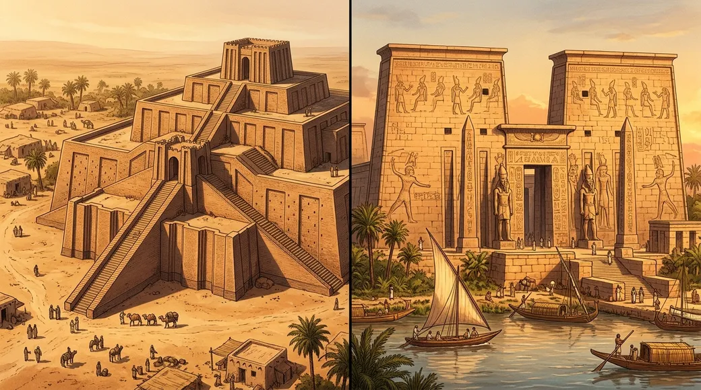
The kings of Egypt and Ur. On the dates that most historians use, Intef II was king of the south of Egypt before 2105 BCE and for four decades after it. He ruled from Thebes from about 2112 to 2063 BCE. A list of Egyptian kings now kept in Turin, Italy, gives him a reign of forty-nine years, and the inscription on a stone that he set up at the entrance of his tomb gives him fifty.
In Mesopotamia, the land of the Tigris and the Euphrates, Ur-Nammu became king of Ur in about 2112 BCE. He began the great ziggurat of Ur, a stepped tower of brick whose lowest stage, built in his reign, still stands. His son Shulgi finished it during a reign of forty-eight years. Together the two reigns ran from about 2112 to about 2046 BCE. So 2105 BCE fell early in Ur-Nammu’s reign, and his son was still ruling Ur nearly sixty years later.
Archaeologists have found about 120,000 clay tablets written by the officials of Ur-Nammu’s dynasty. Most of them are receipts and accounts for sheep, grain and workers. The clerks did not number the years. They named each year after an important event, such as a war or the building of a temple, and they dated many tablets by the name of the year and the month. Most of the tablets come from a stretch of about thirty years near the height of the dynasty, from the last decade of Shulgi’s reign to the first years of Ibbi-Sin, the last king of the dynasty. That stretch runs from about 2056 to 2026 BCE, beginning about fifty years after 2105 BCE. For Ur-Nammu’s own reign, which includes 2105 BCE, historians know the names of seventeen of his eighteen years (though not the exact order in which they came), as well as his inscriptions on buildings and on gifts to temples.
By the Torah’s account, the only people alive in 2105 BCE were the eight in the Ark. On the historians’ dates, Ur in that year had a king, a government that gave each year a name, and clerks whose successors were still filing receipts for sheep and grain decades later.
Writing in Mesopotamia. The oldest clay tablets from Mesopotamia, from about 3500 to 3350 BCE, have only numbers on them. In about 3350 BCE scribes in the south of Mesopotamia began to add signs for particular objects, many of them pictures. Archaeologists have found about 5,000 tablets in this early script, called proto-cuneiform, from about 3350 to 3000 BCE. Most of them are accounts of goods going into and out of storehouses. (Scholars debate whether the signs grew out of clay tokens that were used earlier for counting; Denise Schmandt-Besserat, Before Writing, 1992. They agree that the earliest tablets were accounts.) Over the following centuries the signs became simpler, and scribes pressed them into the clay as wedges. By about 2600 BCE scribes were writing long texts in Sumerian.
Scribes learned the script by copying standard lists of words. One of these lists, which scholars call Lu A, names about 140 professions. It first appears among tablets from Uruk from before 3000 BCE. Scribes went on copying Lu A, with few changes, for more than a thousand years. Copies have been found in Uruk, Ur, Nippur and other cities of Mesopotamia, and also at Susa in Iran and at Ebla in Syria. The latest copies come from the Old Babylonian period, the time of Hammurabi’s dynasty, which ended in about 1600 BCE. So the scribal schools of Mesopotamia were teaching the same list for more than eight centuries before 2105 BCE and went on teaching it for centuries after. If every scribe had died in 2105 BCE, no one would have been left to teach the script or the list.
The Egyptian annals. The Egyptians kept a list of every year of their kings’ reigns, starting from their first kings. The oldest such list that survives is the Royal Annals of the Old Kingdom, carved on a slab of hard black stone. Its largest piece is kept in Palermo, Sicily, and smaller pieces are in Cairo and London. The Annals give each year of each king’s reign a box of its own, from Egypt’s first kings (about 3100 BCE on historians’ dates) to the early Fifth Dynasty (about 2450 BCE). Each box lists the main events of that year, and at the bottom it gives the height of the Nile’s yearly flood in cubits, palms and fingers. Most scholars think that the stone was carved during the Fifth Dynasty, though some argue that it is a later copy, and historians do not agree whether the flood heights are real measurements. On the historians’ dates, the Egyptians had been recording the years of their kings for centuries before 2105 BCE.
Historians add up the reigns of the kings of Egypt and Mesopotamia and tie the total to the calendar through recorded eclipses, and they measure how far their estimates differ. Some historians put the kings of Mesopotamia about sixty years later than the dates given here, and the dates for Egypt vary by a few decades from one scholar to another. On some of these reckonings a different king was on the throne in 2105 BCE. But a shift of this size changes only which king it was. On every reckoning, kings and their clerks were governing both Egypt and Mesopotamia before 2105 BCE and after it.
Erech. The Torah says of Nimrod, Noach’s great-grandson, that “the beginning of his kingdom was Bavel, Erech, Akkad and Kalneh, in the land of Shinar” (10:10). The Torah does not say that Nimrod built Erech, only that it was part of his kingdom. But by the Torah’s account everyone in Shinar had died in the Mabul, so the people of Erech in Nimrod’s day were Noach’s descendants who had come there after the Mabul, whether or not Nimrod built the city.
Erech is the ancient city of Uruk in the south of Iraq, where German archaeologists began to dig in 1912. Archaeologists date the first settlement at Uruk to about 5000 BCE. By about 3100 BCE the city may have held 40,000 people, which would have made it the largest city in the world at the time. A king of Uruk named Utu-hengal reigned from about 2119 to 2112 BCE, a few years before 2105 BCE on the standard dates. He drove out the Gutians, foreign rulers who had controlled Sumer, the south of Mesopotamia. Utu-hengal set up a stone inscription in Uruk about his victory, and its text survives in a later copy. People went on living in Uruk for more than two thousand years after his reign. By 2105 BCE, on the archaeologists’ dates, people had been living in Erech for nearly three thousand years, and they went on living there afterward. The city was not emptied and then settled again by newcomers.
The high priestesses of Ur. In 1927 Leonard Woolley’s team, digging at Ur, found a broken alabaster disk about 26 centimeters across. It lay in the building where the high priestesses of the Moon god Nanna had lived. One face of the disk has a carving of a priestess making an offering. The other face has an inscription, mostly erased, that names her as Enheduanna, wife of Nanna and daughter of Sargon, king of the world. Scholars can read the erased words because a scribe copied the inscription onto a clay tablet in the nineteenth or eighteenth century BCE. The seals of two of Enheduanna’s servants, her hairdresser and the steward of her estate, have also survived.
Sargon, the king of Akkad who conquered the cities of Sumer, reigned from about 2334 to 2279 BCE on the dates most historians use. (These dates are less firm than the dates for the dynasty of Ur, and some historians put the start of Sargon’s reign about twenty years later.) After Enheduanna, the office went to the daughter of Sargon’s grandson Naram-Sin, in the twenty-third century BCE. The dynasty of Ur, which ruled from about 2112 to 2004 BCE, gave the office to several of its kings’ daughters in turn. One of them was Ur-Nammu’s daughter En-nirgalana, who is named as high priestess of Nanna in an inscription dedicated for her father’s life. Ur-Nammu reigned from about 2112 to 2094 BCE, so she held the office within about a decade of 2105 BCE. Royal princesses held the office again in the nineteenth and eighteenth centuries BCE.
Ur lies in Shinar, where by the Torah’s account everyone died in the Mabul. But on the historians’ dates, kings’ daughters served as high priestess of Nanna at Ur about two centuries before 2105 BCE, within a decade of it, through the century after it, and again two and three centuries later.
The Indus valley. In the valley of the Indus River, in what is now Pakistan and the northwest of India, people built large cities of brick. Archaeologists call the height of these cities, from about 2600 to 1900 BCE, the Mature Harappan period, after the city of Harappa. On those dates people were living in the cities of the Indus before 2105 BCE and for about two centuries after it.
China. Chengtoushan, beside the middle Yangtze in Hunan Province, is one of the oldest walled towns in China. In 2004 the environmental archaeologist Yoshinori Yasuda and his team traced its settlement without a break through several stages. The first earthen walls were built in the Daxi culture, about 4450 to 4150 BCE. The ramparts were enlarged about 3850 to 3750 BCE. Buildings of baked brick went up in the Qujialing culture, about 3350 BCE, and the Shijiahe culture began there about 2550 BCE.
Farther north, at Taosi in Xiangfen County in Shanxi Province, archaeologists have dug up a town covering 280 hectares (2.8 square kilometers), surrounded by a wall of rammed earth (soil pounded hard in layers). Inside the wall were a district of large buildings and a cemetery with more than 1,500 graves. In 2003 and 2004 the excavators also found a semicircular platform of rammed earth with slots that archaeologists think lined up with the sunrise at certain times of the year. The excavators date the building of Taosi to about 2300 BCE and find that people lived there until about 1900 BCE. Walled towns in China go back to the fifth millennium BCE, and the people of Taosi lived in theirs from about two centuries before 2105 BCE until about two centuries after it.
Caral in Peru. Caral lies in the Supe Valley in Peru, 23 kilometers from the Pacific coast. It covers 65 hectares with large public buildings, houses and other structures. In 2001 the archaeologists Ruth Shady, Jonathan Haas and Winifred Creamer published radiocarbon dates from Caral that run from about 2627 to 1977 BCE (Science, 2001). They concluded that people in the Americas had large public buildings, towns and irrigated farming by that time. On those dates people were building and living at Caral before 2105 BCE and after it. (The dates for Caral come from radiocarbon, so someone who rejects radiocarbon dates for this period could set Caral aside. That would not help with the kings of Egypt. Historians date their reigns from written lists of kings and from inscriptions dated by the year of the reign, not from radioactive decay.)
Stonehenge. Stonehenge stands on Salisbury Plain in the south of England. Archaeologists date the first monument there, a circular ditch and bank, to about 3000 BCE. The large sandstone blocks in the center, called sarsens, were set up about 2500 BCE, and many of them still stand. In 2012 the archaeologists Timothy Darvill of Bournemouth University and Mike Parker Pearson, with two colleagues, gathered all the radiocarbon dates from Stonehenge to work out again the stages in which it was built. In one stage, which they date to between about 2280 and 2020 BCE, the builders moved the smaller bluestones, which had been brought from Wales, and set them up again in a circle and an oval inside the sarsens. Later still, between about 1630 and 1520 BCE, builders dug two rings of pits around the monument. So people were building Stonehenge for centuries before 2105 BCE, were working on it in the years around 2105 BCE, and were still adding to it about five centuries later.

The Chinchorro mummies. The Chinchorro were fishermen who lived on the coast of the Atacama Desert, in the north of Chile and the south of Peru. Their oldest way of making a mummy is called the black type. They took the body apart, strengthened the skeleton with sticks and cords, packed the body with plants, put the skin back, coated it with clay and painted it. Archaeologists date the oldest body known to have been prepared this way, a child from the Camarones Valley south of Arica, to about 5050 BCE. That is more than a thousand years before Creation by the Jewish count.
Bernardo Arriaza, who has studied Chinchorro mummies since the 1980s, sorts them into black, red, bandaged and mud-coated types, which changed over time and overlapped in date. Archaeologists date the red mummies to about 2570 to 2090 BCE, and they find that the Chinchorro stopped making mummies in about 1800 BCE. In 2012 Pablo Marquet, Arriaza and their colleagues found that the practice began at a time when the coast had more fresh water and more fish, and they concluded that the population on the coast had grown then (Proceedings of the National Academy of Sciences, 2012). On the archaeologists’ dates, the people of this coast had been making mummies for about three thousand years before 2105 BCE and went on making them for about three centuries after it.
18.2Maize can’t sow its own seed and lives on only where people plant it, yet people in the Americas grew it before 2105 BCE and after it.Maize holds its seeds fast on the cob, inside a husk. The seeds don’t fall off and scatter, so people have to sow them every year.Botanists have found maize cobs about 6,250 years old in a cave in Oaxaca, in southern Mexico, and the seeds of those cobs were already held fast.By about 2100 BCE maize was growing in Arizona and New Mexico. On the coast of Peru it was grown from about 4700 BCE to about 1000 BCE.Geneticists find that all maize comes from one taming of a wild grass of Mexico, about 9,000 years ago.
Maize
How maize came to depend on people. Maize comes from teosinte, a wild grass of southern Mexico that scatters its own seeds. People turned teosinte into maize by sowing it year after year and saving the seed of the plants that suited them best. In 2002 the plant geneticists Yoshihiro Matsuoka, John Doebley and their colleagues compared the DNA of 264 maize and teosinte plants. They found that all maize comes from a single domestication in southern Mexico about 9,000 years ago. As the geneticists Sarah Hake and Jeffrey Ross-Ibarra explain, the kernels of domesticated maize stay fixed on the cob and do not scatter, so the crop cannot survive unless people plant it (2015).
The oldest maize. In 2001 the archaeologists Dolores Piperno and Kent Flannery radiocarbon-dated maize cobs from Guilá Naquitz Cave in Oaxaca to about 6,250 years ago. The botanist Bruce Benz examined the same cobs and found that their seeds did not come off by themselves, so people were already sowing them. Grains of maize starch found on grinding stones from the Balsas River valley in Mexico are older still, about 8,700 years old.
In 2016 Jazmín Ramos-Madrigal, Nathan Wales and their colleagues read the DNA of a cob from the Tehuacán Valley in Mexico that had been radiocarbon-dated to 5,310 years ago, or about 3360 BCE (Current Biology, 2016). The cob belonged to the same population of plants that gave rise to modern maize, and its DNA was closer to modern maize than to wild teosinte. But many genes typical of modern maize were still in their wild form, so the researchers concluded that the farmers of the Tehuacán Valley were still in the middle of domesticating the crop. On the scientists’ dates, then, the maize growing in Mexico more than twelve centuries before 2105 BCE was already the same line of plants as the maize grown today.
Maize through 2105 BCE. William Merrill and his colleagues, tracing how maize spread north, report that it reached the southwest of the United States by 2100 BCE, passed from Mexico from one people to the next. On the coast of Peru, Alexander Grobman, Dolores Piperno and their colleagues found cobs, husks and stalks of maize at Paredones and Huaca Prieta that date from about 6,700 to 3,000 years ago. Domesticated maize cannot scatter its own seed and dies out if no one plants it. So the farmers who were growing it in the Americas did not all die in 2105 BCE.
The Midrash lists the plants that Noach brought into the Ark to plant afterward: the vine, the fig and the olive (Bereishis Rabbah 31:14). Maize is not on the list. If every farmer in the Americas had died in 2105 BCE, their maize would have died with them, and the maize grown today would have to come from a second domestication of teosinte after the Mabul. But geneticists find only one domestication. Modern maize belongs to the same line of plants that farmers in Mexico were already growing before 2105 BCE.
Squash before Creation. Wild squashes and gourds in the Americas have bitter fruit that most living mammals will not eat. In a 1982 paper, Daniel Janzen and Paul Martin proposed that large animals now extinct, including relatives of the elephant called gomphotheres, once ate many of the fruits of Central America and spread their seeds (Science, 1982). Scientists have found squash seeds inside mastodon dung 30,000 years old (mastodons are extinct relatives of the elephant).
In 2015 Logan Kistler, George Perry and their colleagues studied 91 samples of ancient, wild and domesticated squashes and gourds (Proceedings of the National Academy of Sciences, 2015). They read the DNA of the plastids, small bodies inside plant cells that carry their own DNA. They found that people domesticated squash separately in several regions, including eastern North America and northeastern Mexico, and they identified old kinds of squash that no longer grow wild. They concluded that when the large animals of the Americas died out, wild squash lost the animals that had eaten its fruit and spread its seeds. Human clearings and gardens then gave it new places to grow, and people spread its seeds instead.
In 1997 the archaeologist Bruce Smith reported seeds, stems and pieces of rind of squash from Guilá Naquitz Cave in Oaxaca, the same cave where Piperno and Flannery dated the oldest maize cobs. From the size of the seeds and stems and the shape and color of the fruit, he concluded that the squash was domesticated. He radiocarbon-dated the remains to between about 10,000 and 8,000 years ago (Science, 1997). On these dates, people in Mexico were growing squash two to four thousand years before Creation by the Jewish count.
18.3Human DNA holds far more variety than the five people of the Ark who passed on their genes could have carried, and it is most varied in Africa, not near Ararat. Men and women who died long before the Mabul already carried family lines that had split apart from one another and that living people still carry.Mankind’s genes came from five people, who were Noach, his wife and the wives of his sons. Five people can carry at most ten versions of any gene. One human immune gene, HLA-DRB1, comes in thirteen deep lines, and at least eleven of them are older than the split between the ancestors of people and chimpanzees.Human genetic variety is greatest among the peoples of Africa south of the Sahara and falls off steadily with distance from there. That is the pattern of a spread that began in Africa, not in the Near East.A man’s Y chromosome comes from his father alone. So every man’s Y chromosome would come from Noach, about 4,100 years ago. When a team at Stanford compared Y chromosomes in 2013, they found that the fathers’ lines of living men meet in one man who lived between 120,000 and 156,000 years ago.Men who died long before the Mabul, in Morocco, in Italy, in Montana and in the Alps, already carried four different branches of the fathers’ family tree, and living men still carry each of them. One man’s Y chromosome can carry the marks of only one of these branches.At most four women in the Ark could pass on a mothers’ line. Skeletons from long before the Mabul carry at least six mothers’ lines that living people still carry.Core
The DNA of people
Five founders. Noach’s three sons got all their genes from Noach and his wife, so the sons add no new copies of their own. The five people from whom all of mankind’s genes would come are Noach, his wife and the wives of Shem, Cham and Yefes. Each of them carried two copies of each gene on the paired chromosomes other than the sex chromosomes. So between them they carried at most ten copies, and at most ten versions, of any such gene.
The deep lines of an immune gene. The HLA genes help the body recognize germs that invade it. The protein made from each HLA gene displays pieces of the germ so that the immune cells can recognize it. These genes are among the most varied genes we carry. Mutation and the reshuffling of pieces between versions keep making new variants, and by now 11,328 variants of one of them, HLA-B, have been catalogued. So geneticists do not count today’s variants to find out how many founders a population had. They count how many deep lines of the gene have survived.
Immunologists group the many versions of an HLA gene into a few deep lines. Versions in the same line differ only slightly. Versions in different lines differ at many points, including the stretches of DNA between the parts that code for the protein. Geneticists use these non-coding stretches to trace each line.
In 1998, the geneticists T. F. Bergström, Ulf Gyllensten and their colleagues compared these non-coding stretches across many versions of the gene HLA-DRB1 (Nature Genetics, 1998). They found that most of its lines had already separated before the ancestors of people and chimpanzees split apart. The smaller differences within each line arose much later, on average about 250,000 years ago. They also found that the reshuffling that changes the part of the protein that holds the germ does not reach the non-coding stretches. So a fast reshuffling after the Mabul cannot account for the many ancient lines of HLA-DRB1 in people today.
In 2014, Yoshiki Yasukochi and Yoko Satta compared the parts of HLA-DRB1 outside the region that holds the germ, in people, chimpanzees and macaques (Journal of Physiological Anthropology, 2014). They sorted the 13 human lines into two groups. All seven lines in the first group had already separated before the ancestors of people and chimpanzees split. Most of the six lines in the second group are older still and have close relatives among the lines of chimpanzees.
Neither paper states the total by itself, but the two together give it. All seven lines of the first group are older than the split between people and chimpanzees, and so are most of the six in the second group, which means at least four. So at least eleven of the thirteen lines are older than that split, which agrees with Bergström’s finding that most of the lines are that old. The five people in the Ark could carry at most ten versions of HLA-DRB1, and so at most ten of these lines. For mankind to have come from them, at least one of these ancient lines would have had to arise a second time after the Mabul, with the same non-coding stretches that mark it today and set it apart from the other lines. (In 1994, Francisco Ayala and his colleagues looked only at the part of the gene that holds the germ and counted 21 lines older than the split between people and chimpanzees. Because that part is reshuffled between lines, counts based on the non-coding stretches are more reliable.)
Variety in African DNA
How variety in DNA falls off with each move. Every person carries two copies of his DNA, one from each parent. Geneticists measure a person’s genetic variety by counting how many places along the DNA differ between the two copies. When a small group of settlers leaves a larger population, it carries only part of that population’s variety. When some of those settlers move on again, they carry away a still smaller part. So the region where human DNA is most varied is the region where the spread of mankind began.
Where the variety is greatest. In 2008 the geneticists Jun Li, Richard Myers and their colleagues compared 650,000 places in the DNA of 938 people from 51 peoples, using a collection of samples called the Human Genome Diversity Panel. They found that genetic variety falls steadily the farther a people lives from Africa. This is the pattern of a spread that began in Africa south of the Sahara.
In 2015 the 1000 Genomes Project, a collaboration of many laboratories, published the whole DNA of 2,504 people. People of African ancestry carried the most variants of all, “as predicted by the out-of-Africa model of human origins.”
If every person alive descended from Noach’s family, all human genetic variety would come from the five people who passed on their genes after the Mabul: Noach, his wife and his sons’ three wives. The peoples who stayed closest to Ararat and Shinar would carry the most variety, and those who moved farthest away would carry the least. Geneticists find the opposite. The most variety is in Africa south of the Sahara, and it falls off with distance from there, not from the Near East.
Fathers’ lines and mothers’ lines from before the Mabul
When the lines meet. A man’s Y chromosome passes only from father to son. If everyone alive descends from Noach’s three sons (9:19), every man’s Y chromosome would trace back to Noach about 4,100 years ago. Mitochondrial DNA passes from a mother to her children, so every person’s mitochondrial DNA would trace back to the women of the Ark at the same date. In 2013, a team at Stanford led by David Poznik and Carlos Bustamante read the Y chromosomes of 69 men from Africa, Asia and the Americas and compared their mitochondrial DNA. They found that the fathers’ lines meet in one man who lived between 120,000 and 156,000 years ago, and that the mothers’ lines meet in one woman who lived between 99,000 and 148,000 years ago.
The same year, a team led by Mendez and Hammer reported a rare fathers’ line called A00, found in an African American man and, very rarely, in central Africa. A00 branches off deeper than every other known fathers’ line, so including it pushed the common ancestor of the fathers’ lines back to about 338,000 years ago (American Journal of Human Genetics, 2013). Elhaik and his colleagues recalculated that figure in 2014 and arrived at about 208,000 years. Even the lowest of these estimates puts the common father and the common mother of mankind tens of thousands of years before 2105 BCE.
How the branches of the fathers’ lines are marked. Now and then a small copying change appears in a father’s Y chromosome. His sons inherit the change and pass it on to all of their own sons, so every man who descends from the first man with that change carries it too. Geneticists sort men’s Y chromosomes into branches by these shared changes, with later generations adding new changes on top of the older ones. They label each branch with a code of letters and numbers, such as E-M78, R1b, Q-L54 or G2a.
Branches found in men from before the Mabul. In 2018 the geneticists Marieke van de Loosdrecht, Johannes Krause and their colleagues read the DNA of seven people buried in the Grotte des Pigeons near Taforalt in Morocco. The burials were radiocarbon-dated to between 15,100 and 13,900 years ago, and every man whose DNA was well preserved carried branch E-M78.
In 2016 Qiaomei Fu, David Reich and their colleagues found an early branch of the broad R1b family in the Villabruna man from Italy, who lived 14,180 to 13,780 years ago. His line is an early offshoot of R1b. It is separate from the Bronze Age branch called M269, which is the most common among the men of western Europe today.
In the Americas, Morten Rasmussen, Eske Willerslev and their colleagues found the Q-L54 branch in 2014 in the Anzick child, a boy buried in Montana with stone tools of the Clovis people. A year earlier, Vincenza Battaglia and her colleagues had found that the Q branch is almost the only Y-chromosome family among the native men of Central and South America, and that both of its main lines carry the mark of Q-L54.
Ötzi, the man found frozen in the ice of the Alps with his clothes still on him, died around 3200 BCE, more than a thousand years before the Mabul. Geneticists have read his DNA. His Y chromosome belongs to a small sub-branch of the branch called G2a. In 2012, the geneticists who read Ötzi’s genome reported that no more than one man in a hundred in mainland Europe carries his sub-branch today, while it is fairly common in northern Sardinia and southern Corsica (Nature Communications, 2012). The mutations that define Ötzi’s sub-branch had already appeared by the time he died, and living men outside the sub-branch do not carry them.
That makes four of today’s branches found in men who died long before the Mabul. These branches could not have begun among Noach’s sons after 2105 BCE.
Why one father’s line cannot hold them all. If every man alive descends from Noach, every man’s Y chromosome is a copy of Noach’s, with at most 4,100 years of new changes added since the Mabul, and the fathers’ lines of living men could not have split apart before 2105 BCE. Suppose Noach carried the R1b changes. Then every man alive today would carry them, but the men of the E-M78 and Q-L54 branches do not. Suppose instead that Noach did not carry them. Then the men of the R1b branch today could carry them only if the same set of changes that the Villabruna man carried had arisen all over again after the Mabul. The same problem comes up for each of the other branches. Ötzi’s sub-branch, for one, had already split from the other lines more than a thousand years before the Mabul, so men inside it and men outside it can both trace their Y chromosomes to Noach only if the same set of mutations arose twice, independently. This argument depends only on the dates of the skeletons and on the changes in their Y chromosomes. It does not depend on any estimate of how fast DNA changes.
Living people carry more mothers’ lines from before the Mabul than there were women in the Ark. Mitochondrial DNA passes from a mother to all her children, but only her daughters pass it on. The only women in the Ark who could have passed down a mothers’ line were the wives of Shem, Cham and Yefes, and Noach’s wife if she had daughters after the Mabul. If everyone alive descends from the people in the Ark, every mothers’ line in the world today must be one of at most four.
Yet geneticists have found at least six separate mothers’ lines, all still carried by living people, in skeletons from Alaska, Montana, Washington State, Russia and Mexico that are much older than the Mabul:
- At Upward Sun River in Alaska, two infants were buried together about 11,500 years ago. In 2015, a team led by Justin Tackney read their mitochondrial DNA and found two separate lines, C1b and B2. Both are common among Native Americans today.
- The Anzick child, a boy who died in Montana about 12,600 years ago, carried a third line, D4h3a. It is still found among Native Americans along the Pacific coast.
- Kennewick Man, whose remains were found along the Columbia River in Washington State, lived about 8,500 years ago and carried a fourth line, X2a. It is still found among Native Americans in North America.
- A young man buried at Kostenki, on the Don River in Russia, about 37,000 years ago carried a fifth line, U2. Its branches survive today in Europe and India.
- A teenage girl died between 13,000 and 12,000 years ago in Hoyo Negro, a deep cave pit in Mexico’s Yucatán that is now under water. She carried a sixth line, D1. It too is found among Native Americans today (James Chatters and his colleagues, Science, 2014).
At most four women in the Ark could have passed down mitochondrial DNA. Living people could carry six separate mothers’ lines from before the Mabul only if people outside the Ark survived and passed those lines down.
18.4If all people descend from Noach’s family, no people could have reached its land, or separated from the others, before about 4,100 years ago. Scientists find peoples who had been cut off for far longer.Geneticists say that the peoples of different parts of Australia separated from one another between 10,000 and 32,000 years ago.People walked to Tasmania about 40,000 years ago, over land that then joined it to Australia. The sea cut the island off about 8,000 years ago. The Tasmanians were living there when the British came in 1803.Human footprints at White Sands in New Mexico were made between about 23,500 and 21,700 years ago.Core
Isolated peoples
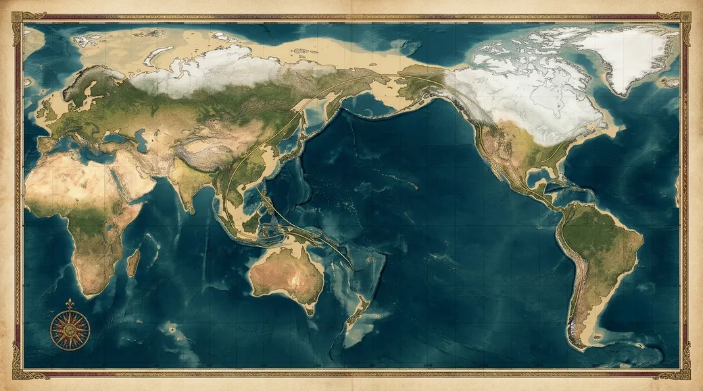
The peoples of Australia. In 2016 a team of geneticists led by Anna-Sapfo Malaspinas read the full DNA of 83 Aboriginal Australians (the native people of Australia) and 25 people from the highlands of New Guinea. They found that all Aboriginal Australians descend from a single founding population, whose ancestors split from the ancestors of the New Guineans between 25,000 and 40,000 years ago. Within Australia, the groups in different regions split from one another between 10,000 and 32,000 years ago. If every people descended from Noach’s family, no two of these groups could have separated more than about 4,100 years ago. On either of the geneticists’ dates, the Aboriginal Australians of today descend from people who were living in Australia before 2105 BCE and after it.
Stories of a drowned coast. As the ice of the last ice age melted, the sea rose over a wide strip of the Australian coast. It reached about its present level some 7,000 years ago. In 2016 the geographer Patrick Nunn and the linguist Nicholas Reid gathered Aboriginal stories from 21 places around the whole coast. The stories describe a time when there was dry land where the sea is today, with islands that people could walk to and bays that were open ground. For each place, Nunn and Reid worked out how far below today’s level the sea had to be for the story to fit the land. They then looked up, on curves of past sea levels, when the sea last stood that low. They concluded that the stories preserve memories from between about 11,100 and 5300 BCE (Australian Geographer, 2016).
Their dates depend on how the stories are read. Later storytellers may have shaped a story around features of the coast that they could see, and the depth of sea that a story needs depends on how its details are interpreted. But if Nunn and Reid are right, the Aboriginal peoples of the coast passed down memories of their land from thousands of years before Creation, through the year of the Mabul, to our own time.
Tasmania. People first reached Tasmania, a large island off the south coast of Australia, about 40,000 years ago. The sea was lower then, and a plain of dry land joined the island to the mainland. As the ice of the last ice age melted, the rising sea flooded that plain and formed Bass Strait. The National Museum of Australia estimates that the strait had become nearly impossible to cross by about 12,000 years ago, and that the last of the land bridge was under water by about 8,000 years ago.
Could the Tasmanians’ ancestors have come by boat after the Mabul? Bass Strait is about 250 kilometers wide. The Tasmanians built canoes of rolled bark or bundled reeds, three to five meters long, and paddled them only to small islands about ten kilometers offshore. Historians and archaeologists know of no one who crossed the strait in either direction after it formed. The dingo, a wild dog, was on the Australian mainland at least 3,500 years ago and spread across all of it. It never reached Tasmania, and no dingo bones have been found there.
When the British settled Tasmania in 1803, the Tasmanians were living there, cut off from everyone else. If all people descend from Noach’s family, the Tasmanians’ ancestors must have reached the island after 2105 BCE. But by then the land route had been under the sea for about four thousand years, and no one is known to have crossed the strait by boat. The Tasmanians whom the British met were the descendants of people who had walked across before the strait closed.
White Sands in New Mexico. At White Sands, human footprints are pressed into the old mud of a lake bed that dried up long ago. In 2021 geologists of the US Geological Survey and their colleagues radiocarbon-dated seeds of ditch grass, a water plant, from the same layers as the footprints. The seeds came out between 21,000 and 23,000 years old. Some archaeologists objected that a water plant can take in old carbon from the lake water and so come out looking older than it is.
In 2023 Jeffrey Pigati and Kathleen Springer of the US Geological Survey answered this objection. They dated pollen from pines and other conifers (trees that bear cones) from the same layers, using about 75,000 grains of pollen for each sample. Conifers take their carbon from the air, not from the water. The team also dated grains of quartz from the same layers by luminescence, a method that measures how long ago the grains were last exposed to sunlight. The pollen dates and the quartz dates both agreed with the dates of the seeds. Old carbon in the water could not explain the age of 21,000 to 23,000 years.
In 2025 Vance Holliday of the University of Arizona, one of the authors of the 2021 study, reported dates from a third material. His team dug new trenches in the old lake bed and sent the lake mud itself to a different laboratory for radiocarbon dating. That laboratory dated the mud to between 20,700 and 22,400 years old (Science Advances, 2025). In October 2026 the team reported footprints in twenty separate layers of the lake bed, made between about 23,500 and 21,700 years ago. So people walked across this part of New Mexico again and again more than fifteen thousand years before Creation.
Cooper’s Ferry in Idaho. Cooper’s Ferry lies beside the lower Salmon River in western Idaho. Loren Davis of Oregon State University and his colleagues dug there from 2009 to 2018. They found a hearth, pits, stone tools and animal bones, including the bones of a species of horse that is now extinct. They dated the oldest layers with signs of people to about 16,000 years ago (Science, 2019). Some archaeologists have argued for a later date, and Davis has rejected their arguments. On his dating, people were living in North America about ten thousand years before Creation.
A lost lineage in Colombia. In 2025 a team of geneticists from Tübingen, in Germany, led by Kim-Louise Krettek and Cosimo Posth, read the DNA of 21 people who lived on the high plain around Bogotá between about 6,000 and 500 years ago. The oldest of them came from Checua, north of Bogotá. They were hunter-gatherers who lived before pottery appeared in the region, at about the Torah’s date for Creation or before it.
In their DNA the team found a human lineage that had not been known before. It had branched off when people first spread across South America. This lineage left no trace in later South Americans, and by 2,000 years ago people whose ancestors came from Central America had replaced it (Science Advances, 2025). The peoples of South America had already split into separate populations long before Creation.
Ochre mines in the caves of the Yucatán. Along the eastern coast of Mexico’s Yucatán Peninsula, long caves under the ground are now full of water. During the ice age the sea stood far lower, and these caves were dry. Stalagmites and flowstone formed inside them, and these form only where water drips and runs through air. In 2020 Brandi MacDonald, James Chatters and their colleagues reported that people had mined red ochre, a pigment, in three of these cave systems for about 2,000 years, between about 12,000 and 10,000 years ago.
Deep in the dark parts of the caves, the miners dug pits for the ochre and used broken stalagmites as digging tools. They piled up the flowstone that they broke, built small heaps of stones to mark their way, and lit fires whose charcoal is still there (Science Advances, 2020). The girl of Hoyo Negro, whose mothers’ line is still found among Native Americans, lay in another of these caves. People were living and working in the Americas thousands of years before Adam, in caves that the rising sea has filled since then.
18.5In region after region, people who died before the Mabul’s date are closer in their DNA to the people who live there today than to anyone else. If everyone alive descended from Noach’s family, the ancient dead of a region would have no reason to be closest to its living people.A farmer who was buried near Stuttgart about 7,000 years ago is closer in his DNA to the people of Sardinia than to any other people alive today.A boy who was buried in Montana about 12,600 years ago is closer to the native peoples of the Americas than to anyone else.People in China today are more closely related to the people who lived along the Yellow River before the Mabul than to the ancient people of the southern coast, and most Egyptians today descend in large part from a people that lived in Egypt centuries before 2105 BCE.Core
Ancient DNA across 2105 BCE
Geneticists compare the DNA of skeletons thousands of years old with the DNA of people living in the same regions today. If everyone alive descends from Noach’s family, a people living today can be related to someone who died before the Mabul only through the five people of the Ark from whom mankind’s genes came. There would be no reason for the people of a region to be closest to the ancient dead of their own region. Yet again and again, geneticists find that they are.
Europe. In 2014 a team led by David Reich of Harvard and Johannes Krause of the University of Tübingen read the DNA of a farmer buried near Stuttgart, Germany, about 7,000 years ago, and of eight hunters who died in Luxembourg and Sweden about 8,000 years ago. Of all living peoples, the Stuttgart farmer’s DNA is closest to that of the people of Sardinia. The team also found that most Europeans today descend from at least three ancient groups: the hunter-gatherers who lived in western Europe after the ice age, early farmers whose ancestors spread from Anatolia starting around 6500 BCE, and herders from the steppe north of the Black Sea.
In 2015 Wolfgang Haak and David Reich read the DNA of 69 ancient Europeans who lived between 8,000 and 3,000 years ago. They traced the third of these groups to herders of the Yamnaya culture, who moved into central Europe beginning about 3000 to 2500 BCE. All three of the main sources of modern Europeans’ ancestry were in place centuries before 2105 BCE.
In 2024 Morten Allentoft, Eske Willerslev and their colleagues at the University of Copenhagen published the DNA of 317 ancient people of western Eurasia (Nature, 2024). They confirmed that the spread of the Yamnaya from the steppe changed the population of much of Europe after about 3000 BCE. But the earlier peoples were not wiped out. Before moving west, the Yamnaya had children with eastern European farmers of the Globular Amphora culture, so people in every region of Europe that was sampled carried both farmer and steppe ancestry. The Yamnaya themselves descended from two older peoples: about 65 percent from hunter-gatherers of the Middle Don about 7,500 years ago, and 35 percent from hunter-gatherers of the Caucasus between 13,000 and 10,000 years ago. Even the newcomers from the steppe descended from peoples who lived thousands of years before 2105 BCE.
In 2023 Ke Wang, Johannes Krause and their colleagues read a high-coverage genome (one read many times over, for accuracy) of Ötzi the Iceman, who died in the Alps between 3360 and 3105 BCE. About 90 percent of his ancestry came from early farmers and about 10 percent from European hunter-gatherers. By then the farmers and the hunter-gatherers of Europe had already mixed, more than a thousand years before 2105 BCE.
Where one people did replace another in a region, the newcomers came from other peoples with long histories of their own, not from a single family. Farmers replaced the foragers of Denmark around 3950 BCE (Allentoft et al., Nature, 2024, a study of 100 ancient skeletons spanning 7,300 years). Newcomers of the Bell Beaker culture arrived in southwestern England after about 2550 BCE (Scientific Reports, 2026, a study of 30 people from 3800 to 1400 BCE).
Eretz Yisrael, southern Africa and Central America. In 2020 Lily Agranat-Tamir, Liran Carmel and David Reich studied the DNA of 73 Canaanites of the Bronze and Iron Ages, from five sites in Eretz Yisrael (about 2500 to 1000 BCE). They found that these Canaanites descended in part from the local farmers of the Neolithic, who had lived there thousands of years before 2105 BCE.
In southern Africa, Joscha Gretzinger and his colleagues read the DNA of nine hunter-gatherers from Oakhurst Rock Shelter who lived between about 10,000 and 1,300 years ago (Nature Ecology & Evolution, 2024). A second team read the DNA of 28 ancient southern Africans, including burials from Matjes River from about 10,200 to 2,330 years ago (Nature, 2026). Both studies found the same local ancestry continuing through 2105 BCE.
In southern Belize, Douglas Kennett and his colleagues read the DNA of ancient skeletons from rock shelters, dated to between about 3650 and 1750 BCE. These people carried the earlier local ancestry of Belize, known from 7650 to 5350 BCE, mixed with ancestry from farther south (Nature Communications, 2022). The family lines of Central America, too, continued through 2105 BCE.
China. A team led by Fu Qiaomei of the Chinese Academy of Sciences read the DNA of 25 people who lived in China between 9,500 and 4,200 years ago, all before the Mabul. People living in both the north and the south of China today are more closely related to the ancient people of the Yellow River than to the ancient people of the southern coast. So people in China today carry the ancestry of people who lived in China before 2105 BCE.
Egypt. In 2025 Adeline Morez Jacobs, Linus Girdland-Flink, Pontus Skoglund and their colleagues read the full DNA of an ancient Egyptian man. He was buried in a large pottery vessel inside a tomb cut into the rock at Nuwayrat, near Beni Hasan, about 265 kilometers south of Cairo. Radiocarbon dating put his bones between 2855 and 2570 BCE, in the first centuries of the kings of united Egypt, roughly four to eight centuries before the Mabul.
About four fifths of his ancestry was closest to the early farmers of North Africa, as known from people buried in Morocco, and about a fifth was closest to the early farmers of Mesopotamia. Egyptians who lived between about 800 BCE and Roman times carried part of their ancestry from people related to him. In the team’s models, most Egyptians today have about a third to three quarters of their ancestry from that same group. (About a fifth of the modern Egyptians in the study did not fit this pattern; Nature, 2025.) So Egyptians today descend in large part from a people that lived in Egypt centuries before 2105 BCE.
The Americas. In 2014 geneticists read the DNA of the Anzick child, a boy buried in Montana about 12,600 years ago, whose mothers’ line is still found among Native Americans. He is more closely related to all the native peoples of the Americas than to any other people in the world.
Could the native peoples of the Americas still descend from the Ark and yet be closest to the Anzick child? That could happen if one of the five people of the Ark had ancestry close to his, and if the native peoples of the Americas inherited far more of their DNA from that one person than other peoples did. But the same thing would have to have happened separately on every continent. In each case, the descendants who inherited most of one Ark ancestor’s DNA would have had to settle in the part of the world where that ancestor’s relatives had lived before the Mabul. This would have to be true of the Sardinians and the Stuttgart farmer, of the Chinese and the ancient people of the Yellow River, of the Egyptians and the man of Nuwayrat, and of the native peoples of the Americas and the Anzick child.
The Anzick child’s Y chromosome raises a separate problem, which uneven inheritance cannot answer. A Y chromosome is not a mix of both parents’ DNA. It passes whole from father to son, so every man alive would carry Noach’s one Y chromosome, not several lines from before the Mabul.
18.6Avraham came down to Egypt about 367 years after the Mabul and found a Pharaoh there with princes (12:15). Eight people could become the population of Egypt in that time only by growing faster than the rate that Thomas Malthus gave for a people that nothing holds back.The geographer Karl Butzer estimated that Egypt alone had about two million people around 1800 BCE.For eight people to become two million in 367 years, their number has to double about every twenty years for the whole of that time.Thomas Malthus took a doubling every twenty-five years as the rate for a people that nothing holds back. At that rate eight people become about 210,000 in 367 years, and that is for the whole world.
Pharaoh’s court
In the Torah’s line from Shem to Avraham, Shem’s son Arpachshad was born two years after the Mabul. After him, each father had his son at the ages of 35, 30, 34, 30, 32, 30, 29 and 70 (11:10–26). Together with the first two years, these ages add up to 292 years from the Mabul to Avraham’s birth. Avraham left Charan for Canaan at the age of seventy-five (12:4), so he arrived 367 years after the Mabul. Soon afterward a famine drove him down to Egypt (12:10), where he found a Pharaoh with a court of princes (12:15). Not long after that, the Torah describes kings of Shinar and Elam making war in Canaan (14:1). So by the Torah’s account there were large, organized kingdoms less than four centuries after the Ark.
The natural rate at which people multiply puts a limit on how many people there could have been 367 years after the Mabul. In 1798 the English economist Thomas Malthus noted that the population of the United States, which had land and food to spare, doubled every twenty-five years. Malthus took that as the rate at which a human population grows when nothing holds it back. If Noach’s family had doubled every twenty-five years, the whole world would have held about 210,000 people 367 years after the Mabul.
The geographer Karl Butzer, who studied farming along the Nile, estimated that Egypt alone had about two million people around 1800 BCE. On the Jewish count, 1800 BCE is about 305 years after the Mabul, when Avraham was about thirteen. The calculation here allows the full 367 years until Avraham came to Egypt, which gives Noach’s descendants more time than Butzer’s date does. Even so, eight people can grow to two million only by doubling about eighteen times. To do that in 367 years, their number has to double about every twenty years, with no pause, from Noach until Avraham. That is faster than Malthus’s rate for a people with land and food to spare, and it would account only for the people of Egypt.
One answer points to Hashem’s blessing to Noach and his sons to be fruitful and fill the earth (9:1, 9:7). The blessing does not say how fast they would multiply. But the Midrash says that the generation that was later scattered from Bavel grew quickly: Rabbi Elai says that the women of that generation bore six children at each birth (Pirkei d’Rabbi Eliezer 24; some texts give the statement in the name of Rabbi Eliezer). Some writers make a similar argument from the word veshartzu, “swarm” (8:17). The same word appears in Shemos 1:7 for Bnei Yisrael in Egypt, where the Midrash says that women bore six children at a time.
In nature, six children at one birth is extremely rare. Demographers found that six babies are born together about once in five and a half billion births. They worked from birth records of the nineteenth century, before there were fertility drugs. A generation in which every birth brought six children, before Bavel or right after the Mabul, would need a miracle. Rabbi Elai’s statement can be read as describing a miracle, and statistics of natural births cannot rule out a miracle. But without a miracle, 367 years are too few for eight people to become the two million people of Egypt.
After the Mabul
19. Languages and kingdoms before Bavel
After the Mabul, the Torah says, “the whole earth was of one language.” All mankind lived together in the plain of Shinar until Hashem confused their language and scattered them over the earth (11:1–9). Seder Olam puts this scattering in the year that Avraham’s ancestor Peleg died, about 1765 BCE. A Mabul that spared the people outside Mesopotamia would not solve this problem. Bereishis 11 still has all mankind living together in Shinar and speaking one language in 1765 BCE. By then people had been writing different languages for centuries, and merchants had been running trading colonies far from home.
Chazal disagree about what “one language” means. The Yerushalmi brings two views (Megillah 1:9). On one view everyone spoke lashon hakodesh. On the other, people were already speaking seventy languages, and on that view languages other than lashon hakodesh before 1765 BCE are no difficulty. But both views still have all mankind living together in Shinar until 1765 BCE, when separate kingdoms and distant cities already existed.
כָּתוּב וַיְהִי כָל הָאָרֶץ שָׂפָה אֶחָת וּדְבָרִים אֲחָדִים. רִבִּי לָעְזָר וְרִבִּי יוֹחָנָן. חַד אָמַר. שֶׁהָיוּ מְדַבְּרִים בְּשִׁבְעִים לָשׁוֹן. וְחוֹרָנָה אָמַר. שֶׁהָיוּ מְדַבְּרִין בִּלְשׁוֹן יְחִידוֹ שֶׁלְעוֹלָם בִּלְשׁוֹן הַקּוֹדֶשׁ.
“It is written, ‘The whole earth was of one language and one speech’ (Bereishis 11:1). Rabbi Elazar and Rabbi Yochanan disagreed: one said they were speaking seventy languages, and the other said they were speaking the language of the Unique One of the world—lashon hakodesh.”
Yerushalmi Megillah 1:9
Bavel in the Torah and Chazal
At the tower of Bavel, Hashem confused mankind’s language so that they could not understand one another, and He scattered them from there over the earth (11:7–9). Rashi says that the one language was lashon hakodesh, as on one of the two views in the Yerushalmi (on 11:1). Seder Olam puts the dispersion 340 years after the Mabul, in the year 1996 from Creation, when Avraham was forty-eight (Seder Olam Rabbah 1). That year is about 1765 BCE.
In the same chapter Rabbi Pinchas describes the building of the tower. There were no stones in the land, so the builders baked bricks. They raised the tower seventy mil high (some texts read seven), with a ramp up the east side and another ramp down the west side. If a man fell and died they paid no attention, but if a brick fell they sat down and wept.
19.1On the view that everyone spoke lashon hakodesh until the dispersion, there was no other language in the world before 1765 BCE. Yet people were writing Egyptian, Sumerian, Akkadian and Eblaite, four different languages, centuries earlier.The oldest Egyptian signs date from about 3200 BCE. Scribes were writing long texts in Sumerian by about 2600 BCE, in Akkadian by about 2500 BCE and in Eblaite before about 2250 BCE.The scribes of Ebla in Syria wrote lists of Sumerian words with the words of their own language beside them. The tablets were baked when the palace burned. Most historians put the fire between about 2300 and 2250 BCE, and a radiocarbon study puts it between about 2367 and 2293 BCE.On the dates that most historians use, Hammurabi was king of Bavel from about 1792 to 1750 BCE, so the dispersion falls in his reign. He wrote his laws in Akkadian, which had been written for about seven centuries by then.A cylinder seal from the time of the Akkadian kings, about 2340 to 2200 BCE, calls its owner an interpreter of the language of Meluhha, which most scholars identify with the cities of the Indus.Core
Languages written before the dispersion
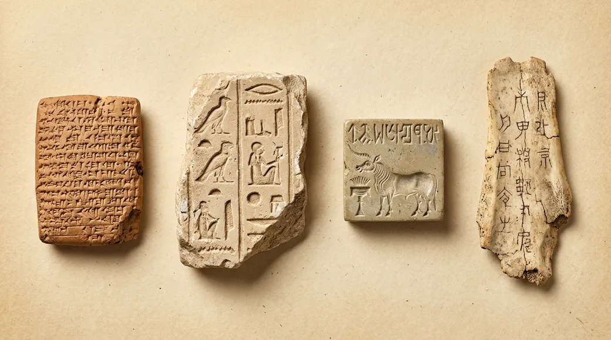
Four written languages. The earliest Egyptian signs are on small labels from a royal tomb at Abydos known as U-j, from about 3200 BCE. The first complete sentence in Egyptian is on a seal of King Peribsen from about 2700 BCE. In Mesopotamia, scribes were writing long texts in Sumerian by about 2600 BCE, and most scholars read the older tablets from Uruk, from before 3000 BCE, as Sumerian too. Scribes were also writing Akkadian, a language of the same family as Hebrew, by about 2500 BCE, and Eblaite, the language of the Syrian city of Ebla, before about 2250 BCE.
Sumerian and Akkadian were written in the same script, but linguists find that their grammar and their basic words are completely different, so they are separate languages. Altogether, people were writing four different languages five to fourteen centuries before Seder Olam’s date for the division of the one original language.
Egyptian from before the dispersion until today. Linguists trace written Egyptian across more than five thousand years. They divide its history into stages: Old Egyptian, Middle Egyptian, Late Egyptian, Demotic and Coptic (Egyptian written in Greek letters). Each stage grew out of the one before it. Coptic churches still use Coptic in their prayers today, so Egyptian has been written for longer than any other language in the world. Middle Egyptian, the classical form of the language, was spoken from about 2000 to about 1350 BCE. So the Egyptian language went on through Seder Olam’s date for the dispersion with no break and no new beginning.
The dictionaries of Ebla. In 1974 and 1975 the Italian archaeologist Paolo Matthiae and his team dug up the archive of the royal palace at Ebla, an ancient city in what is now northern Syria. The archive held about 1,800 complete clay tablets and thousands of pieces, all baked hard when the palace burned down. Among them are lists of words in which the scribes set each Sumerian word beside the word for it in Eblaite, their own language.

The lists have more than a thousand entries in all, and scholars call them the oldest dictionaries in the world. Eblaite belongs to the Semitic family, together with Akkadian and Hebrew, while Sumerian is not related to any known language. The lists pair two languages that linguists cannot trace to any common ancestor.
The Ebla tablets do not give the years in which they were written. Historians date the fire that baked them by the names of neighboring kings in the archive and by the inscriptions of two kings of Akkad, Sargon and his grandson Naram-Sin, each of whom boasted of destroying Ebla. Most historians put the fire between about 2300 and 2250 BCE, though a few put it earlier. In 2013 a team of radiocarbon scientists led by Lucio Calcagnile dated sixteen samples of short-lived plants from the palace and a nearby building. They chose short-lived plants and not timber, because an old wooden beam could have grown centuries before the fire. The team dated the destruction to between about 2367 and 2293 BCE. On any of these dates, the scribes of Ebla were translating between two unrelated languages before 2105 BCE, the Torah’s date for the Mabul, and five to six centuries before the dispersion.
Royal inscriptions in two languages. Scribes in Mesopotamia also copied royal inscriptions in two languages from monuments of the third millennium BCE. The copies set Sumerian and Akkadian side by side in columns. On Louvre tablet AO 5477 (Louvre AO 5477; CDLI P220619), a scribe set a Sumerian version beside an Akkadian version of Rimuš 18, a royal inscription of the Akkadian king Rimuš, who reigned around 2270 BCE. The tablet is a copy from the Old Babylonian period, not an original from Rimuš’s lifetime. On a companion tablet of collected inscriptions in the Penn Museum, CBS 13972 (with joins), the scribe added a colophon (a closing note) saying that he copied the inscriptions from monuments that stood in the Ekur temple at Nippur (“Mesopotamian Bilingual Royal Inscriptions from the Third Millennium BCE,” Table 1). The tablets are later copies, but historians conclude from their parallel columns and their colophons that scribes were regularly working in two unrelated languages centuries before 1765 BCE.
An interpreter of the language of Meluhha. A cylinder seal is a small carved stone that was rolled over wet clay to stamp a design or an inscription. One that belonged to a man named Shu-ilishu is now in the Louvre in Paris (Louvre seal of Shu-ilishu). The museum dates it to the time of the Akkadian kings, between about 2340 and 2200 BCE, and its style places it in the south of Mesopotamia. Its inscription calls Shu-ilishu an interpreter of the language of Meluhha, which most scholars identify with the cities of the Indus. Mesopotamians and the traders of the Indus valley already needed interpreters, four to six centuries before the dispersion.
Sumerian in Hammurabi’s Bavel. Babylon, the city of Hammurabi, is Bavel. On the dates most historians use, Hammurabi ruled Babylon from about 1792 to 1750 BCE, give or take a few decades on which historians disagree, so Seder Olam’s date for the dispersion falls in his reign. He had his laws carved in Akkadian on a stone pillar. Most scholars think that Akkadian replaced Sumerian as the everyday spoken language of Mesopotamia around 2000 BCE, though the date is debated. By Hammurabi’s reign Sumerian was no longer spoken. Scribes kept it for scholarship and prayer, much as Europeans in the Middle Ages kept Latin. So in the city and the century in which Seder Olam puts the first division of languages, the scholars of Babylon were preserving a language that had already died.
Another reading of “one language.” Bereishis 10 already sorts the nations by their own languages and lands (10:5, 20, 31), just before the story of Bavel in Bereishis 11:1–9, where Rashi on 11:1 says that the one language was lashon hakodesh. Many traditional readers take chapter 10 as the map of the nations after the dispersion, and chapter 11 as the story of how the split came about. Another reading, close to the Yerushalmi’s view of seventy languages, takes “one language” to mean a common tongue shared by the builders at Bavel, while other languages already existed elsewhere.
On that reading, bilingual tablets such as the word lists of Ebla and the copies of Rimuš 18 are no difficulty, and an interpreter like Shu-ilishu could have worked in diplomacy or trade. But the reading fits the early tablets only by giving something up. If Bavel was a local event with a local common tongue, it no longer explains how distant peoples and unrelated families of languages spread across the earth. If Bavel was universal, it conflicts with the separate kingdoms and languages that were written down before 1765 BCE.
19.2Modox Alert!Rashi says that the one language before the dispersion was lashon hakodesh (on 11:1). Linguists say that Hebrew is one member of a family of languages, and that the families had divided long before 1765 BCE.Linguists say that Hebrew, Aramaic and Arabic are sister languages that all descend from one older language.They say the same of the family that includes Greek, Latin, Persian and English.Hittite belongs to that second family. Hittite words and names appear in the letters of Assyrian merchants of the twentieth and nineteenth centuries BCE. So that family had already divided into separate languages by then.
Hebrew and the families of languages
[Modox Alert! If you have ever used a Q when spelling out a Hebrew word, feel free to skip this obviously Saussurean rupture of a Derridean-Kabbalistic-Gadamerian trace-fusion in the allegoresis of the absent peshat, and move on to the next item.]
שָׂפָה אֶחָת. לְשׁוֹן הַקֹּדֶשׁ.
“‘One language’: the holy tongue.”
Rashi on Bereishis 11:1
The family of Hebrew. Linguists group Hebrew with the languages of Canaan, and Yeshayahu himself calls it “the language of Canaan” (Yeshayahu 19:18). Its closest sister languages are Phoenician and Moabite. Together with Aramaic, Akkadian and Arabic, these languages of Canaan belong to a larger family, the Semitic languages.
Could Aramaic, Akkadian and Arabic resemble Hebrew because they branched off from Hebrew? Linguists say that they did not, because of regular patterns in the sounds of these languages. Anyone who has learned Gemara has seen some of them. In some words a Hebrew shin stays a shin in Aramaic, as in shalom and shlama, and Arabic has an s, as in salam. In a second group of words, such as shor, a Hebrew shin matches a tav in Aramaic, tora, and Arabic has a th, thawr.
From the Hebrew word alone you cannot tell whether Aramaic will have a shin or a tav. From the Arabic word you can, because Arabic kept apart two sounds that Hebrew merged into one shin. So linguists conclude that the parent language of the Semitic family had both sounds, and that Hebrew is one of its daughters, which lost the difference. Arabic cannot have inherited the difference from Hebrew. Once the two sounds had merged in Hebrew, there was no way to know from a Hebrew word which of the two it once had, so a language descended from Hebrew could not have sorted them back into the right words.
The dates of the oldest inscriptions agree. Archaeologists date the oldest inscriptions in Hebrew, or in a dialect very close to it, to about three thousand years ago. That is more than two thousand years after the oldest writing in Sumerian and in Egyptian. Both lines of evidence lead linguists to the same conclusion: Hebrew is one daughter of an older Semitic language, with sisters of its own, and not the one original language from which all the others divided.
When the Semitic languages began to divide. In 2009 a team of linguists and geneticists, Andrew Kitchen, Christopher Ehret, Shiferaw Assefa and Connie Mulligan, compared the basic words of 25 living and extinct Semitic languages. With statistical methods borrowed from genetics, they built a family tree with dates, which they tied to dated inscriptions in extinct languages such as Akkadian (Proceedings of the Royal Society B, 2009). They placed the parent language in the Levant about 5,750 years ago, around 3750 BCE (within a range of 4,400 to 7,400 years ago). That is nearly two thousand years before 1765 BCE. They also found that Akkadian was the first branch to split off from the parent language.
In 2011 the statisticians Geoff Nicholls and Robin Ryder studied the same words with a different model (Proceedings of the 26th International Workshop on Statistical Modelling, 2011). They placed the split of Akkadian from the rest of the family, which is the root of the tree, between 4,400 and 5,100 years ago, about 3150 to 2450 BCE. Both figures are statistical estimates. But on either one, the parent language of Hebrew, Akkadian and Arabic was already spoken and beginning to divide before the Mabul of 2105 BCE, and long before the dispersion of 1765 BCE.
The Indo-European languages. Another family, the Indo-European languages, had also split into branches by the twentieth century BCE. This family includes Greek, Latin, Persian, Sanskrit (the ancient language of India) and English, which all descend from one parent language. In the twentieth and nineteenth centuries BCE, merchants from the city of Ashur in northern Mesopotamia ran a trading quarter at Kanesh, in what is now central Turkey. Archaeologists have dug up more than 20,000 of their clay tablets there. The merchants wrote their letters in the Assyrian dialect of Akkadian, but the letters include local words and names in Hittite. Linguists identify these as the oldest surviving words of any Indo-European language.
In these letters Hittite is already a separate language, in its own branch of the Indo-European family. The same letters also have names and words from Luwian, a sister language in the same branch, whose speakers probably lived in southern and western Anatolia (modern-day Turkey). Since Hittite and Luwian had already split into two languages by the time of the letters, the Indo-European family must have divided into branches even earlier, well before the dispersion of 1765 BCE. In the same years, people in central Anatolia also spoke Hattic, a language with no known relatives (Petra Goedegebuure of the University of Chicago, 2008). Hittite scribes later copied Hattic texts, sometimes with a Hittite translation beside the original.
Scholars debate when the Indo-European parent language was spoken, but every major estimate puts it centuries or thousands of years before 1765 BCE. In 2023 a team led by Paul Heggarty and Russell Gray of the Max Planck Institute for Evolutionary Anthropology in Leipzig compared the basic words of 161 Indo-European languages, 52 of them ancient, and built a family tree with dates. On their tree the parent language was spoken about 8,100 years ago, and five main branches had split off by about 7,000 years ago.
Other scholars put the parent language later, between about 4500 and 2500 BCE, partly because of the words that its daughters share for the wheel. Even that later date is centuries before 1765 BCE. In 2015 the archaeologist David Anthony and the linguist Don Ringe laid out this argument (Annual Review of Linguistics, 2015). Every branch of the family except Hittite and its sister languages shares inherited words for wheeled transport: two words for wheel, a word for axle, a word for the shaft by which an animal pulls a cart, and a verb for carrying in a cart. In each language these words come from one older root through that language’s regular sound changes, just as related words in Hebrew, Aramaic and Arabic come from one older Semitic form. An axle exists only on a wheeled cart, and archaeologists, using radiocarbon dating, put the earliest wheeled carts after 4000 to 3500 BCE. Anthony and Ringe therefore argue that the parent of these branches was still one language after that time. Hittite and its sisters share only the word for the shaft, which can also be used on a plow or a sledge, so they may have split off before the wheel was invented.
Geneticists who study ancient DNA reach a similar date. In 2025 Iosif Lazaridis, David Reich and their colleagues studied the DNA of 435 people who lived on the steppes north of the Black and Caspian Seas and in the regions around them. The Yamnaya culture appeared on those steppes around 3300 BCE and had spread from Hungary to Kazakhstan by 3000 BCE. The team found that about four fifths of the Yamnaya’s ancestry came from a population living between the Caucasus and the lower Volga, and that the same population gave at least a tenth of the ancestry of the Hittites of Anatolia. They proposed that this population spoke the parent language of both Hittite and the other Indo-European branches between 4400 and 4000 BCE (Nature, 2025). On every one of these dates, the parent of the Indo-European languages was spoken centuries before 1765 BCE, and its branches did not first split apart at Bavel.
19.3On both views in the Yerushalmi, all mankind lived together in Shinar until the dispersion of 1765 BCE. Letters from those very years show kings ruling separate lands from Elam to the Mediterranean, and far from Shinar, peoples had been speaking languages of their own for thousands of years.The royal archive of Mari, a city on the Euphrates, holds thousands of letters to its last king, Zimri-Lim, who reigned from about 1775 BCE until Hammurabi of Babylon conquered the city about 1760 BCE.A letter to Zimri-Lim names the kings of Babylon, Larsa, Eshnunna, Qatna and Aleppo, and it says that ten to twenty lesser kings followed each of them. About 1765 BCE the ruler of Elam invaded Mesopotamia, and Hammurabi named his thirtieth year, 1763 BCE, for his defeat of Elam.The Torah names Elam as a son of Shem, born after the Mabul (10:22). But Elam had its own kings from about 2400 BCE, and Elamite, a language with no known relative, was being written there by about 2250 BCE.Linguists say that the largest family of Aboriginal Australian languages descends from one language that was spoken in northern Australia about 5,700 years ago. Papua New Guinea has about 840 languages of its own, and most of them belong to families that are found nowhere else.
The letters of Mari
The archive of Mari. Letters from the very years of Seder Olam’s date for the dispersion survive from the royal palace of Mari. Mari was a large kingdom on the Euphrates River, in what is now eastern Syria. Its last king, Zimri-Lim, reigned from about 1775 BCE until Hammurabi of Babylon conquered and destroyed the city in about 1760 BCE. The tablets of the palace lay buried in the ruins until French archaeologists led by André Parrot dug up most of the royal archive between 1934 and 1939. They found more than 17,000 tablets and pieces of tablets, including thousands of letters to Zimri-Lim. Hammurabi’s scribes named each year of his reign after an important event, and these names let historians tie the Mari letters to his reign. Seder Olam’s date for the dispersion falls within Hammurabi’s reign and within the years of the Mari letters.
Kingdoms in the letters. One letter to Zimri-Lim reports that no king is strong on his. Ten or fifteen kings follow Hammurabi of Babylon, and as many follow Rim-Sin of Larsa, Ibal-pi-El of Eshnunna and Amut-pi-El of Qatna. Twenty follow Yarim-Lim of Yamhad, the kingdom of Aleppo. Around 1765 BCE Zimri-Lim traveled west through Aleppo and Carchemish to Ugarit on the Mediterranean coast. In the same years the ruler of Elam sacked Eshnunna and marched his army into Syria, until Hammurabi, Zimri-Lim and the king of Aleppo defeated it at Hiritum. Hammurabi named his thirtieth year, 1763 BCE, for his defeat of Elam.
So in the years when, by Seder Olam’s count, all mankind lived together on one plain, the kings of Elam, Mesopotamia and Syria were ruling separate lands, leading their own armies, fighting wars across Mesopotamia and Syria, and sending envoys to one another.
Peoples far from Bavel
Elam. The Torah names Elam as a son of Shem, together with his brothers Ashur, Arpachshad, Lud and Aram (10:22). By the Torah’s account, the nation of Elam descends from a grandson of Noach, born after the Mabul, and lived in Shinar with the rest of mankind until the dispersion.
Elam lay in what is now southwestern Iran, around the city of Susa. Historians find that Elam had its own kings, the dynasty of Awan, from about 2400 BCE. The oldest known text in Elamite is a treaty with Naram-Sin, king of Akkad, from about 2250 BCE. Around 2120 BCE Puzur-Inshushinak, the ruler of Susa and Elam, set up an inscription in two languages, Akkadian and Elamite, each in its own script. Elamite went on being written for more than fifteen hundred years after that, until the time of the Persian kings. Linguists find that Elamite is not related to Akkadian or to Aramaic, the languages of the lands of Elam’s brothers Ashur and Aram. So the people of Elam had their own kings before 2105 BCE, and they were writing a language of their own in their own land before the year of the Mabul, after it, and long before the dispersion.
Australia. Australia has about 400 Aboriginal languages, and more than three quarters of them belong to one family, called Pama-Nyungan. In 2018 Remco Bouckaert, Claire Bowern and Quentin Atkinson compared 306 of these languages. They traced the Pama-Nyungan family back to one parent language spoken about 5,700 years ago, south of the Gulf of Carpentaria in northern Australia. That is about two thousand years before 1765 BCE.
The Austronesian languages. Austronesian languages are spoken from Taiwan and the Philippines across the islands of the Pacific, as far as Hawaii, Easter Island and New Zealand. In 2009 Russell Gray, Alexei Drummond and Simon Greenhill, a team of linguists and evolutionary biologists, compared the basic words of 400 of these languages. Using the same kind of statistical methods, they built a family tree with dates. They tied ten of its branching points to the dates when islands were settled, as known from archaeology, and to early written records such as Old Javanese (Science, 2009). On their tree the Austronesian family began in Taiwan about 5,230 years ago, most likely between 4,750 and 5,800 years ago (roughly 3850 to 2800 BCE). Along the tree they found a series of pauses, each followed by a rapid spread that went with new skills in sailing and farming.
In the same issue of Science, the microbiologists Yoshan Moodley, Mark Achtman and their colleagues traced the same migration in a separate way, through Helicobacter pylori, a bacterium that lives in the human stomach. One strain of the bacterium spread out of Taiwan about 5,000 years ago together with a branch of the Austronesian languages. Both moved through Melanesia (the islands north and east of Australia) and into Polynesia, and the languages and the bacteria went on splitting side by side (Science, 2009). Both dates are estimates. On either one, the Austronesian family had already begun in Taiwan centuries before the Mabul of 2105 BCE, and more than a thousand years before the dispersion of 1765 BCE.
New Guinea and the Americas. The languages of New Guinea and the Americas have no known tie to the languages of the Near East either. Papua New Guinea, on the island of New Guinea, has about 840 languages, and most of them belong to families found only on that island and the islands near it. The Americas had hundreds more languages, in families found nowhere else. Linguists have found no connection between any of these families and any language of the Near East.
All the families of languages. Glottolog, a standard catalog of the world’s languages kept by linguists, sorts human languages into 245 families with no known link to one another, plus 183 languages with no known relatives at all. Linguists find no tie between these families and the languages of Mesopotamia, and several of the families already existed thousands of years before 1765 BCE. These families cannot all go back to one population that spread out from Shinar in 1765 BCE.
19.4Modox Alert!Chazal say that at the dispersion mankind’s speech was divided into seventy languages, one for each of the seventy nations. Linguists count about seven thousand languages in use today.Pirkei d’Rabbi Eliezer says that Hashem and the seventy angels around His throne confused mankind’s speech into seventy nations and seventy languages, and set an angel over each nation (chapter 24).Rabbi Yochanan says that every member of the Sanhedrin had to know the seventy languages, so that the court would never hear a witness through an interpreter (Sanhedrin 17a).Ethnologue, the catalog of the world’s languages that SIL International keeps, counts 7,164 languages in use today.
Seventy languages
[Modox Alert! If you know more about dikduk than the entire Toms River male population, feel free to skip this obviously neo-Kantian, crypto-Spinozan phenomenology of the Midrashic Other, and move on to the next item.]
Seventy languages in Chazal. Chazal treat the seventy languages as all the languages of the world. The number comes from the nations of Bereishis 10, which the Torah lists by their families and languages (10:5, 10:20, 10:31). Pirkei d’Rabbi Eliezer says that at the tower Hashem came down with the seventy angels that surround His throne and confused their speech into seventy nations and seventy languages (chapter 24). The seventy bulls of Sukkos stand for the seventy nations (Sukkah 55b):
אָמַר רַבִּי (אֶלְעָזָר): הָנֵי שִׁבְעִים פָּרִים כְּנֶגֶד מִי — כְּנֶגֶד שִׁבְעִים אוּמּוֹת. פַּר יְחִידִי לָמָּה — כְּנֶגֶד אוּמָּה יְחִידָה.
“Rabbi Elazar said: To what do these seventy bulls [of Sukkos] correspond? They correspond to the seventy nations. And why is there a single bull [on Shemini Atzeres]? Corresponding to the singular nation [Israel].”
Sukkah 55b
The Gemara says that the angel Gavriel taught Yosef all seventy languages, because Pharaoh’s astrologers held that a ruler of Egypt must know them (Sotah 36b).
אָמְרוּ לוֹ: אִם כֵּן, יְהֵא יוֹדֵעַ בְּשִׁבְעִים לָשׁוֹן! בָּא גַּבְרִיאֵל וְלִימְּדוֹ שִׁבְעִים לָשׁוֹן. לָא הֲוָה קָגָמַר. הוֹסִיף לוֹ אוֹת אַחַת מִשְּׁמוֹ שֶׁל הַקָּדוֹשׁ בָּרוּךְ הוּא וְלָמַד, שֶׁנֶּאֱמַר: ״עֵדוּת בִּיהוֹסֵף שָׂמוֹ בְּצֵאתוֹ עַל אֶרֶץ מִצְרַיִם שְׂפַת לֹא יָדַעְתִּי אֶשְׁמָע״. וּלְמָחָר, כֹּל לִישָּׁנָא דְּאִישְׁתַּעִי פַּרְעֹה בַּהֲדֵיהּ, אַהְדַּר לֵיהּ.
“They [Pharaoh’s astrologers] said to him: If so, he ought to know seventy languages! Gavriel came and taught him seventy languages, but he could not retain them. He added one letter from the Name of the Holy One, blessed be He, to Yosef’s name and he learned them, as it says, ‘He set it as a testimony in Yehosef when he went out over the land of Egypt: a speech I did not know I heard’ (Tehillim 81:6). The next day, in whatever language Pharaoh spoke to him, Yosef answered him.”
Sotah 36b
The Mishnah says that after crossing the Yarden, Israel wrote the words of the Torah on the stones of the altar in seventy languages (Sotah 7:5). Rabbi Yochanan says that every word spoken at Sinai divided into seventy languages (Shabbos 88b).
אָמַר רַבִּי יוֹחָנָן: מַאי דִּכְתִיב ״ה׳ יִתֶּן אֹמֶר הַמְבַשְּׂרוֹת צָבָא רָב״ — כׇּל דִּיבּוּר וְדִיבּוּר שֶׁיָּצָא מִפִּי הַגְּבוּרָה נֶחֱלַק לְשִׁבְעִים לְשׁוֹנוֹת.
“Rabbi Yochanan said: What is meant by the verse, ‘Hashem gives the word; the bearers of tidings are a great host’ (Tehillim 68:12)? Every single utterance that went forth from the mouth of the Almighty divided into seventy languages.”
Shabbos 88b
The Gemara also rules that the judges of the Sanhedrin had to know seventy languages, so that they could understand every witness without an interpreter (Sanhedrin 17a). The rule takes seventy to be the complete list of human speech.
אָמַר רַבִּי יוֹחָנָן: אֵין מוֹשִׁיבִין בְּסַנְהֶדְרִי אֶלָּא בַּעֲלֵי קוֹמָה, וּבַעֲלֵי חׇכְמָה, וּבַעֲלֵי מַרְאֶה, וּבַעֲלֵי זִקְנָה, וּבַעֲלֵי כְשָׁפִים, וְיוֹדְעִים בְּשִׁבְעִים לָשׁוֹן – שֶׁלֹּא תְּהֵא סַנְהֶדְרִי שׁוֹמַעַת מִפִּי הַמְתוּרְגְּמָן.
“Rabbi Yochanan said: We seat on the Sanhedrin only men of stature, wisdom, dignified appearance, maturity, knowledge of sorcery, and mastery of seventy languages—so that the Sanhedrin should never have to hear testimony through an interpreter.”
Sanhedrin 17a
About seven thousand languages. Linguists count about a hundred times as many languages. Ethnologue, a catalog of the world’s living languages, lists 7,164 languages spoken today.
Could Chazal’s seventy be the main languages of the world, with the thousands of others counted as their dialects? That answer mixes up languages with families of languages. Linguists already put all the languages that come from one parent, such as Hebrew, Aramaic and Arabic, into one family. Even if each whole family counts as one, together with the languages that have no known relatives, there are still more than four hundred unrelated groups. So the languages of the world cannot be brought down to seventy, even when each family is counted as one.
20. The nations and the four rivers on the map
Bereishis 10 traces every nation on earth to the families of Noach’s three sons, and Bereishis 2 has a river go out of Eden and divide into four rivers. A baraisa in the Gemara gives the sizes of Egypt, of Kush and of the whole world.
The nations and the rivers in the Torah and Chazal
By the Torah’s account, the families of Noach’s sons spread out from Bavel over the earth, each in its own land and with its own language (10:5, 10:20, 10:31). Bereishis 10 lists those families and ends, “These are the families of the sons of Noach… and from these the nations spread out on the earth after the Mabul” (10:32). Chazal identify several of these families with nations they knew: Gomer with Germamya, Madai with Macedonia, and Tiras with Persia (Yoma 10a). Earlier, Bereishis 2 describes the river that flows out of Eden and divides into four rivers, and Rashi identifies each of them.
גּוֹמֶר — זֶה גֶּרְמַמְיָא, מָגוֹג — זוֹ קַנְדִּיָּא, מָדַי — זוֹ מַקֵדוֹנְיָא, יָוָן — כְּמַשְׁמָעוֹ, תּוּבָל — זֶה בֵּית אוּנַיְיקִי, מֶשֶׁךְ — זוֹ מוּסְיָא, תִּירָס, פְּלִיגִי בַּהּ רַבִּי סִימַאי וְרַבָּנַן, וְאָמְרִי לַהּ רַבִּי סִימוֹן וְרַבָּנַן, חַד אָמַר: זוֹ בֵּית תְּרַיְיקִי, וְחַד אָמַר: זוֹ פָּרַס. תָּנֵי רַב יוֹסֵף: תִּירָס — זוֹ פָּרַס.
“Gomer is Germamya; Magog is Kandiya; Madai is Macedonia; Yavan is as it sounds [Greece]; Tuval is Beis Unaiki; Meshech is Musya. As for Tiras, Rabbi Simai and the Rabbis—or Rabbi Simon and the Rabbis—disagreed: one said it is Beis Teraiki, and one said it is Persia. Rav Yosef taught: Tiras is Persia.”
Yoma 10a
20.1Bereishis 10 ends by saying that from these families the nations spread out on the earth after the Mabul (10:32). Yet the families it lists leave out most of the world.The nations in the list that can be identified reach from the Mediterranean to Iran and from the Caucasus to Kush.The list has no nation in China, in Africa south of Kush, in the Americas or in Australia.A large part of mankind already lived in those places. Their people today descend in part from the people who lived there before 2105 BCE.
The nations missing from Bereishis 10
The nations of Bereishis 10 that historians can identify lived around the Mediterranean and as far east as Iran, between the Caucasus mountains in the north and Kush, which is Nubia and Ethiopia, in the south. The list names no nation in China, in Africa south of Kush, in the Americas or in Australia.
One could answer that the list names only the nations that the Torah’s story needs, and that the peoples of the rest of the world came from these families later. But even on that answer, every nation on earth descends only from the families in Bereishis 10, since the Torah ends the list by saying that the nations spread out on the earth from these families after the Mabul. Geneticists find that the peoples of Australia, the Americas and China descend in part from people who already lived in those lands before 2105 BCE. So the ancestors of most of the world’s peoples are not in the Torah’s list.
20.2The four rivers that branch from the river of Eden (2:10–14) have no source in common.Two of the four are the Tigris and the Euphrates. They rise in the mountains of eastern Turkey and flow to the Persian Gulf.A third, the Gichon, goes around the land of Kush, which is Nubia and Ethiopia. The rain of the highlands of Ethiopia runs into the Nile.The highlands of Ethiopia lie three to four and a half thousand kilometers from the springs of the Tigris and the Euphrates, beyond the Red Sea and the deserts of Arabia.
Four rivers from one source
A river goes out of Eden to water the garden, and from there it divides into four rivers: Pishon, Gichon, Chidekel and Pras (2:10–14). The Chidekel is the Tigris and the Pras is the Euphrates. Both rise in the mountains of eastern Turkey and flow southeast to the Persian Gulf. The Gichon goes around the land of Kush, which is Nubia and Ethiopia. Rashi says that the Pishon is the Nile, the river of Egypt, and that it is named for the way its waters rise and water the land (on 2:11). So on Rashi’s reading, one river divided into the Nile, the Tigris and the Euphrates.
פישון. הוּא נִילוּס נְהַר מִצְרַיִם, וְעַל שֵׁם שֶׁמֵּימָיו מִתְבָּרְכִין וְעוֹלִין וּמַשְׁקִין אֶת הָאָרֶץ נִקְרָא פִישׁוֹן כְּמוֹ וּפָשׁוּ פָּרָשָׁיו (חבקוק א')
“‘Pishon’—this is the Nile, the river of Egypt. Because its waters swell, rise, and water the land, it is called Pishon, from the same root as ‘and their horsemen spread out [u-fashu]’ (Chavakuk 1:8).”
Rashi on Bereishis 2:11
But the Nile flows north, to the Mediterranean. Its water comes from the rain that falls on the highlands of Ethiopia and around the great lakes of East Africa. Those headwaters are three to four and a half thousand kilometers from the springs of the Tigris and the Euphrates, and the Red Sea and the deserts of Arabia lie in between. The Nile and the two rivers of Mesopotamia have no source in common.
The usual answer is that the Mabul changed the face of the land, so that the four rivers no longer flow from one source. But a year of water would have had to do far more than move the beds of rivers. It would have had to put the Red Sea and the deserts of Arabia between the sources of rivers that had once flowed from one place, and leave those sources thousands of kilometers apart.
20.3Modox Alert!A baraisa makes Egypt four hundred parsaos on each side, Kush sixty times the size of Egypt, and the world sixty times the size of Kush (Pesachim 94a; Taanis 10a). On those figures the world is many times larger than the Earth that scientists have measured.With a parsah of about four kilometers, Egypt alone would be about 1,600 kilometers on each side.Kush would then cover about 150 million square kilometers. All the dry land of the Earth together covers about 149 million.The world would cover about nine billion square kilometers. The whole surface of the Earth, land and sea together, is about 510 million square kilometers, so the baraisa’s world is about eighteen times as large as the Earth.
The size of the world
[Modox Alert! If you have ever called Modern Orthodoxy “a big tent” at a Shabbos table, feel free to skip this obviously Habermasian discourse ethics of the Tannaitic counterfactual metanarrative, and move on to the next item.]
What the baraisa says. A baraisa in Pesachim 94a says that Egypt measures 400 by 400 parsaos, that Egypt is a sixtieth of the size of Kush, and that Kush is a sixtieth of the world. Rava said that the world is six thousand parsaos across, and the Gemara brings this baraisa to refute him. The Gemara quotes the same baraisa in Taanis 10a, right after Rabbi Yehoshua ben Levi’s teaching that the whole world drinks from the water left over from Gan Eden, which he learns from “a river goes out of Eden to water the garden” (2:10).
תָּא שְׁמַע: מִצְרַיִם הָיָה אַרְבַּע מֵאוֹת פַּרְסָה עַל אַרְבַּע מֵאוֹת פַּרְסָה, וּמִצְרַיִם אֶחָד מִשִּׁשִּׁים בְּכוּשׁ, וְכוּשׁ אֶחָד מִשִּׁשִּׁים בָּעוֹלָם, וְעוֹלָם אֶחָד מִשִּׁשִּׁים בַּגָּן, וְגַן אֶחָד מִשִּׁשִּׁים בְּעֵדֶן, וְעֵדֶן אֶחָד מִשִּׁשִּׁים בְּגֵיהִנָּם, נִמְצָא כׇּל הָעוֹלָם כּוּלּוֹ כְּכִיסּוּי קְדֵירָה לְגֵיהִנָּם. תְּיוּבְתָּא.
“Come and hear [a challenge from a baraisa]: Egypt was four hundred parsaos by four hundred parsaos; Egypt is one-sixtieth of Kush; Kush is one-sixtieth of the world; the world is one-sixtieth of the Garden; the Garden is one-sixtieth of Eden; and Eden is one-sixtieth of Gehinnom—so the whole world is like the lid of a pot compared to Gehinnom. This is a refutation [of Rava].”
Pesachim 94a
The baraisa goes on to say that the world is a sixtieth of the Garden, and the Garden a sixtieth of Eden. Rashi explains each sixtieth as a sixtieth of the area. The water left over from watering a field sown with a kor of seed can water a field sown with a tarkav, which is a sixtieth of its size. In the same way, the world is a sixtieth of the Garden.
תנא מתמצית בית כור - כלי שמשקין במימיו בית כור יכולין להשקות בתמציתו שיעור זריעת תרקב שהוא אחד מששים בבית כור והכי נמי עולם אחד מששים בגן עדן ודי לו בתמצית העננים המשקין את הגן
“It was taught: ‘From the runoff of a beis kor’—a vessel whose water irrigates a beis kor has enough runoff left over to irrigate the area needed to sow a tarkav, which is one-sixtieth of a beis kor. In the same way, the world is one-sixtieth of Gan Eden, and the runoff from the clouds that water the Garden suffices for it.”
Rashi on Taanis 10a
The size of the Earth. People have known the size of the Earth fairly well for more than two thousand years. In the third century BCE the Greek scholar Eratosthenes noticed that at noon on the longest day of the year, an upright stick at Syene in the south of Egypt cast no shadow, while a stick at Alexandria cast a shadow at an angle of 7.2 degrees. Since 7.2 degrees is a fiftieth of a full circle, he multiplied the distance between the two cities, 5,000 stadia, by fifty. That gave 250,000 stadia for the distance around the Earth, close to the modern figure of about 40,000 kilometers. Today we know that the surface of the Earth covers about 510 million square kilometers, of which about 149 million are dry land.
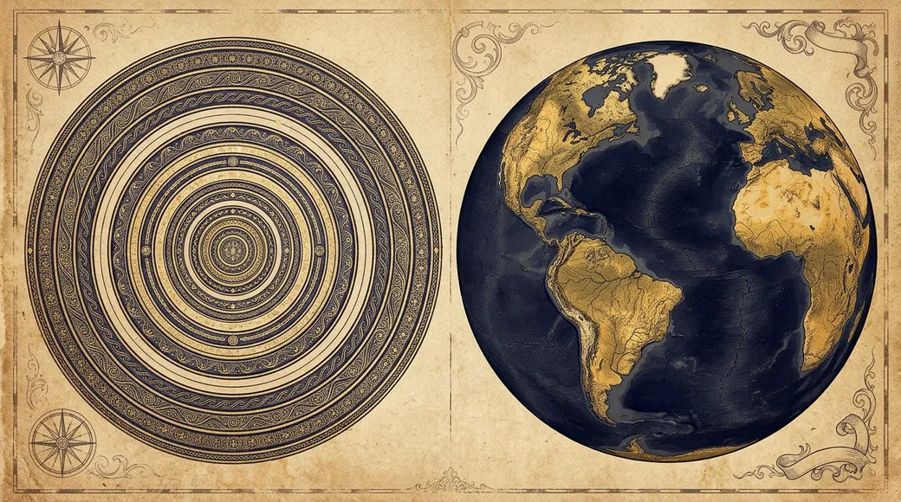
The baraisa’s figures in kilometers. On the baraisa’s figures, Egypt is one thirty-six-hundredth of the world. With a parsah of about four kilometers, Egypt alone would be about 1,600 kilometers on each side. Kush would then cover about 150 million square kilometers, which is more than all the dry land of the Earth together. The world would cover about nine billion square kilometers, about eighteen times the whole surface of the Earth, land and sea together.
Someone may argue that the baraisa is figurative, since it ends by comparing the whole world to the lid of a pot over Gehinnom. But the Gemara uses the baraisa to refute Rava’s figure for the size of the world, so the Gemara takes its numbers as real measurements. Its first figure is the size of Egypt, a real land that people traveled across, measured in the same parsaos that they used for ordinary journeys.
21. The era of the Avos
The conflicts of the era of the Avos are a bonus, beyond the main questions of Creation, the Mabul and Bavel.
The Jewish count puts Avraham, Yitzchak and Yaakov in the nineteenth to the sixteenth centuries BCE. In the Torah, Avraham’s family comes from Ur of the Chaldeans, the Avos own camels, and Philistines live in Gerar in those centuries. The Torah places the battle of the four kings against the five in the valley of Siddim, “which is the Salt Sea.” The Gemara and the Midrash add that Avraham had a coin of his own.
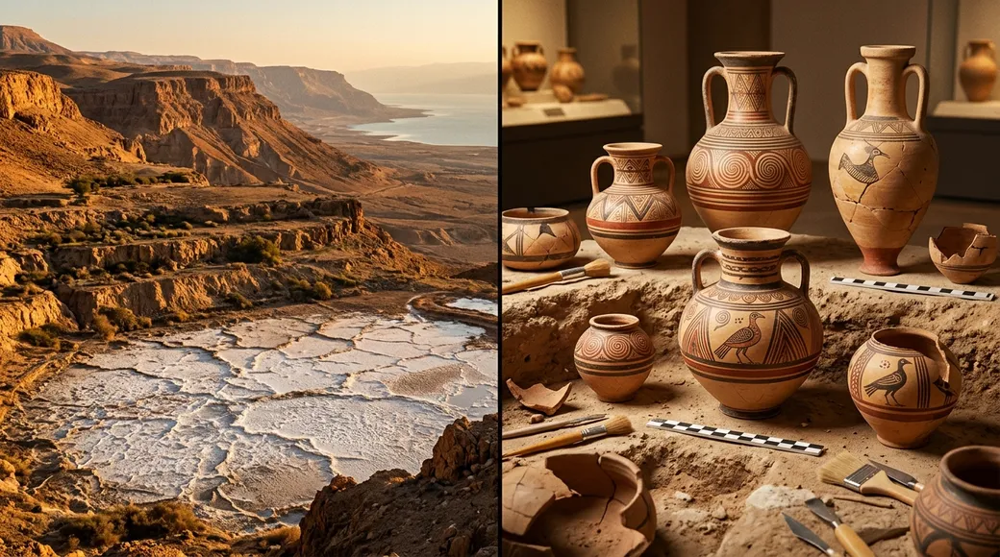
What the Torah and Chazal say about Avraham’s war with the four kings
By the Jewish count, Avraham was born in 1813 BCE. The Torah tells of a war in which four kings from the east, among them Amrafel king of Shinar and Kedorla’omer king of Elam, defeated five kings of the plain of the Yarden. The five had served Kedorla’omer for twelve years. The four kings took captive Avraham’s nephew Lot, who lived in Sedom (14:12). Avraham went after them with 318 men, defeated them and brought Lot back (14:1–16). Rashi cites the Gemara that Amrafel is Nimrod (on 14:1). He also brings the Midrash that after Avraham’s victory, in the valley of Shaveh, all the nations agreed to make Avraham their prince and leader (Rashi on 14:17, from Bereishis Rabbah 43:5).
אמרפל. הוּא נִמְרוֹד, שֶׁאָמַר לְאַבְרָהָם פֹּל לְתוֹךְ כִּבְשַׁן הָאֵשׁ (עירובין נ״ג ע״א):
“‘Amrafel’—he is Nimrod, who said [amar] to Avraham, ‘Fall [pol] into the fiery furnace.’”
Rashi on Bereishis 14:1
וּמִדְרַשׁ אַגָּדָה: עֵמֶק שֶׁהוּשְׁווּ שָׁם כָּל הָאֻמּוֹת וְהִמְלִיכוּ אֶת אַבְרָם עֲלֵיהֶם לִנְשִׂיא אֱלֹהִים וּלְקָצִין
“And a Midrash Aggadah explains: It was the valley where all the nations came to agreement [hushvu] and crowned Avram over themselves as a prince of God and a leader.”
Rashi on Bereishis 14:17 (citing Bereishis Rabbah 43:5)
21.1Avraham’s family came from Ur of the Kasdim, the Chaldeans (11:28, 11:31). Historians first find the Chaldeans in Mesopotamia more than eight hundred years after Avraham’s time.Hashem tells Avraham, “I am Hashem who brought you out of Ur Kasdim” (15:7). Rashi brings the Midrash that Nimrod threw Avraham into a furnace there, and he explains the name as “the fire of the Kasdim” (on 11:28).Avraham left Charan, where his family had settled after Ur, in 1738 BCE by the Jewish count.The Chaldeans are first named in the annals of Ashurnasirpal II, king of Assyria from 883 to 859 BCE. Earlier records call their part of southern Mesopotamia the Sealand.Historians conclude that the Chaldeans came into southern Mesopotamia toward the end of the second millennium BCE.
Ur of the Chaldeans
The city of Ur. Ur was a great city of southern Mesopotamia, in what is now southern Iraq. Leonard Woolley excavated it for the British Museum and the University of Pennsylvania from 1922 to 1934. Among the tablets that his team found is a letter in Akkadian, written about 1750 BCE, in which a man named Nanni complains to Ea-nasir, a merchant of Ur, about poor copper from Dilmun. By the Jewish count, that is about the time when Avraham’s family left Ur. So Ur itself was a real city in Avraham’s day. But the Chaldeans had not yet come there.
When the Chaldeans came. Historians identify the Chaldeans as a people, possibly related to the Arameans, who moved into southern Mesopotamia near the end of the second millennium BCE (Anson Rainey, Encyclopaedia Judaica). They are first mentioned in the annals of the Assyrian king Ashurnasirpal II, from the ninth century BCE (Britannica). Centuries later the Chaldeans came to rule Babylon. When the Babylonians besieged Yerushalayim in the days of Nevuchadnezzar, Tanach calls them the Kasdim, the Hebrew name for the Chaldeans (Melachim II 25:4).
One might answer that the Torah calls Ur by the name that its readers knew. That does not work on the Torah’s own count of years. By the Jewish count, the Torah was given at Sinai in the year 2448 from Creation, which is 1313 BCE. On the historians’ account, the Chaldeans had not yet come to Mesopotamia by then. The Midrash also treats the Kasdim of Avraham’s day as a people. It reads “Ur Kasdim” as “the fire of the Kasdim,” the furnace into which Nimrod threw Avraham and Haran:
וּמִדְרַשׁ אַגָּדָה אוֹמֵר שֶׁעַל יְדֵי אָבִיו מֵת; שֶׁקָּבַל תֶּרַח עַל אַבְרָם בְּנוֹ לִפְנֵי נִמְרוֹד עַל שֶׁכִּתֵּת אֶת צְלָמָיו, וְהִשְׁלִיכוֹ לְכִבְשַׁן הָאֵשׁ, וְהָרָן יוֹשֵׁב וְאוֹמֵר בְּלִבּוֹ אִם אַבְרָם נוֹצֵחַ אֲנִי מִשֶּׁלּוֹ, וְאִם נִמְרוֹד נוֹצֵחַ אֲנִי מִשֶּׁלּוֹ; וּכְשֶׁנִּצַּל אַבְרָם, אָמְרוּ לוֹ לְהָרָן מִשֶּׁל מִי אַתָּה? אָמַר לָהֶם הָרָן מִשֶּׁל אַבְרָם אֲנִי, הִשְׁלִיכוּהוּ לְכִבְשַׁן הָאֵשׁ וְנִשְׂרַף, וְזֶהוּ אוּר כַּשְׂדִים (ב"ר).
“A Midrash Aggadah says he died through his father: Terach denounced his son Avram before Nimrod for smashing his idols, and Nimrod threw him into a fiery furnace. Haran sat thinking to himself, ‘If Avram wins, I am on his side; if Nimrod wins, I am on his side.’ When Avram was saved, they asked Haran, ‘Whose side are you on?’ Haran replied, ‘I am on Avram’s side.’ They threw him into the fiery furnace and he was burned—and that is the meaning of ‘Ur [fire of] Kasdim.’”
Rashi on Bereishis 11:28 (citing Bereishis Rabbah 38:13)
So the Torah, as Chazal read it, places the Chaldeans at Ur in the days of Terach, more than eight hundred years before the first record of them.
21.2Pharaoh gives Avraham camels, and Avraham’s servant takes ten of his master’s camels on the journey to find a wife for Yitzchak. Archaeologists find no tame camels in Canaan until about eight hundred years after Avraham.Pharaoh gave Avraham camels (12:16), and Avraham’s servant took ten of his master’s camels to Aram Naharayim (24:10). These events fall in the eighteenth and seventeenth centuries BCE by the Jewish count.In 2013 Lidar Sapir-Hen and Erez Ben-Yosef of Tel Aviv University dated the arrival of tame camels at the copper mines of the Aravah to between about 930 and 900 BCE.Scholars who answered the study point to two-humped camels in Mesopotamia and Syria in the time of the Avos. But the camel of Egypt is the one-humped kind, and geneticists date its taming to the late second millennium BCE.
Avraham’s camels
Just kidding. I just wrote camels because I know a certain brand of counter-apologist gets a spike in their blood pressure just seeing that word. I know. I know. Maybe camels were there back then. I just put this here as a test to make sure you’re reading. You passed. Give yourself a pat on the shoulder. Don’t you feel a bit more awake than you did a moment ago? You’re welcome.
(Some background for those out of the loop: scholars have called the camels of the Avos an anachronism since William F. Albright in the middle of the twentieth century. In February 2014 the Tel Aviv study described below made world news when the New York Times reported it under the headline “Camels Had No Business in Genesis.” Defenders of the text answered that the study covered one valley and only the one-humped camel, and the argument has gone back and forth ever since.)
The camel bones of the Aravah. The Aravah valley runs south from the Dead Sea to the Red Sea. In ancient times workers mined and smelted copper there and threw away the bones of their animals. In 2013 the archaeologists Lidar Sapir-Hen and Erez Ben-Yosef dated the layers at these smelting sites by radiocarbon. They found bones of tame camels in large numbers only from the last third of the tenth century BCE on, and they concluded that the few older camel bones in the region probably came from wild camels (Tel Aviv, 2013). News reports of the study widely presented it as evidence that the camels in the stories of the Avos were an anachronism by a later writer, since tame camels became common in Canaan about eight centuries after Avraham.
Camels in Mesopotamia and Syria. The 2013 study dated camel bones in Canaan, not in Mesopotamia. Avraham’s family came from Ur and Charan, and the Torah says that Avraham came to Canaan with the property he had gathered in Charan (12:5). Scholars who answered the 2013 study pointed to earlier finds from Mesopotamia and Syria. One of them, the historian Mark Chavalas, cites a text from Nippur of the eighteenth century BCE that mentions the sweet milk of the camel. He takes it as evidence that people there kept and milked camels in the time of the Avos.
Chavalas also points to a seal of the eighteenth century BCE, said to come from Syria, that shows riders on a two-humped camel. And he cites a list of the seventeenth century BCE from Alalakh, near the border of Syria and Turkey, that includes camels among the animals given fodder (Biblical Archaeology Review, 2018). Martin Heide of the University of Marburg concludes that the two-humped camel of Central Asia was well known in Mesopotamia by the end of the third millennium BCE. He argues that at least some of the camels of the Avos were probably of that kind (Ugarit-Forschungen, 2011).
Camel caravans in the time of the Avos. Chavalas agrees with Sapir-Hen and Ben-Yosef (2013) that camels came into wide use in Canaan, as seen in the Aravah valley, only in the last third of the tenth century BCE. He also grants that tame camels may not have been common even in Mesopotamia in Avraham’s day. Archaeologists cannot rule out a single early camel. But the caravan of ten camels in Bereishis is hard to place in the eighteenth and seventeenth centuries BCE.
The camels of Egypt. The early finds in Mesopotamia are of the two-humped camel. The camel of Canaan, Arabia and Egypt is the one-humped dromedary. In 2016 the geneticists Faisal Almathen, Pamela Burger and their colleagues compared the DNA of ancient and modern camels. They concluded that the one-humped camel was first tamed in southeastern Arabia, most likely in the late second millennium BCE (PNAS, 2016). In Egypt itself, archaeologists find only rare signs of camels before the Greek and Roman periods. The Egyptologist Kenneth Kitchen, who defends the history of the Avos, writes that camels were not wholly unknown before 1100 BCE. But he also writes that for a long time the camel was a marginal animal in the Near East, Egypt included.
Yet the Torah has Pharaoh give Avraham camels in Egypt as part of his livestock (12:16), and it has a Yishmaelite caravan carry spices down to Egypt on camels in Yosef’s day (37:25). Both come centuries before the geneticists’ date for the taming of the one-humped camel. A few scattered camels do not account for either of them, and the two-humped camels of Mesopotamia do not account for camels in Egypt.
21.3Modox Alert!The Gemara and the Midrash say that Avraham had a coin of his own that went out into the world. Historians date the first coins anywhere to the seventh century BCE, about a thousand years after Avraham.The Gemara says that Avraham’s coin had an old man and an old woman on one side and a young man and a young woman on the other (Bava Kamma 97b). Rashi says that they were Avraham and Sarah, and Yitzchak and Rivkah.The Midrash explains Hashem’s blessing to Avraham, “I will make your name great” (12:2), to mean that his coin went out into the world (Bereishis Rabbah 39:11).The oldest known coins were struck of electrum, a mixture of gold and silver, in Lydia and Ionia, in what is now western Turkey, in the late seventh century BCE.The Torah itself says that Avraham weighed out four hundred shekels of silver to Efron (23:16). People paid with silver by weight for centuries before there were coins.
Avraham’s coin
[Modox Alert! If you have ever opened a dvar Torah with “The Netziv famously asks”, feel free to skip this obviously Wittgensteinian retrospective on Jungian archetypes in the Rabbinic imaginary, and move on to the next item.]
Avraham’s coin in the Gemara and the Midrash. A coin is a piece of metal of a fixed weight, stamped with a mark that tells everyone who receives it what it is worth. The Gemara describes Avraham’s coin in a halachic sugya about a loan given in one currency and repaid after the coinage changed. Just before that passage, the Gemara describes the coin of Yerushalayim, with David and Shlomo on one side and Yerushalayim on the other (Bava Kamma 97b). The Midrash lists four men whose coins went out into the world (Avraham, Yehoshua, David and Mordechai) and describes the picture on each (Bereishis Rabbah 39:11).
תָּנוּ רַבָּנַן: אֵיזֶהוּ מַטְבֵּעַ שֶׁל יְרוּשָׁלַיִם? דָּוִד וּשְׁלֹמֹה מִצַּד אֶחָד, וִירוּשָׁלַיִם עִיר הַקּוֹדֶשׁ מִצַּד אַחֵר. וְאֵיזֶהוּ מַטְבֵּעַ שֶׁל אַבְרָהָם אָבִינוּ? זָקֵן וּזְקֵינָה מִצַּד אֶחָד, וּבָחוּר וּבְתוּלָה מִצַּד אַחֵר.
“Our Rabbis taught: What was the coin of Yerushalayim? David and Shlomo on one side, and ‘Yerushalayim the Holy City’ on the other side. And what was the coin of Avraham our forefather? An old man and an old woman on one side, and a young man and a young woman on the other side.”
Bava Kamma 97b
אַרְבָּעָה הֵם שֶׁיָּצָא לָהֶם מוֹנִיטִין בָּעוֹלָם, אַבְרָהָם, וְאֶעֶשְׂךָ לְגוֹי גָּדוֹל, יָצָא לוֹ מוֹנִיטִין, וּמַהוּ מוֹנִיטִין שֶׁלּוֹ, זָקֵן וּזְקֵנָה מִכָּאן בָּחוּר וּבְתוּלָה מִכָּאן.
“There are four whose coinage circulated in the world. Avraham—‘I will make you a great nation’—his coinage went out, and what was on his coin? An old man and an old woman on one side, a young man and a young woman on the other.”
Bereishis Rabbah 39:11
The first coins. Historians find no coins anywhere before the seventh century BCE. The oldest coins that can be dated were found in 1904 and 1905 by a British team led by David Hogarth, in the foundation of the temple of Artemis at Ephesus, in western Turkey. Archaeologists date the pottery that lay with them to about 600 BCE, and they date the coins themselves to the last decades of the seventh century BCE. The economist François Velde, in his study of the beginnings of money, finds no coinage anywhere in the Middle East before the coins of Lydia, an ancient kingdom in western Turkey.
Paying by weight. Before there were coins, people paid in silver by weight. Records from Mesopotamia give prices in amounts of silver for centuries, and archaeologists find hoards of silver cut into pieces in Syria and Phoenicia. The Torah describes Avraham paying this way. He “weighed” the silver for the cave of Machpelah, four hundred shekels “current with the merchant” (23:16). So the Torah’s account of how Avraham paid matches what archaeologists find from his time. The coin that the Gemara and the Midrash give him is of a kind that people first made about a thousand years later.
21.4The Torah has Philistines in Gerar in the days of Avraham and Yitzchak. Archaeologists say that the Philistines came to that coast about five hundred years later.Avraham lived “in the land of the Philistines” (21:34), and Yitzchak went to “Avimelech king of the Philistines” in Gerar (26:1). By the Jewish count that was in the 1700s and 1600s BCE.Historians and archaeologists date the Philistines’ arrival on that coast from across the sea to about 1175 BCE. They base the date on an Egyptian record, on the Philistines’ pottery and on the DNA of their dead.
The Philistines of Gerar
Avraham lived “in the land of the Philistines for many days” (21:34), and Yitzchak went to “Avimelech king of the Philistines, to Gerar” (26:1). Yitzchak was born in 1713 BCE by the Jewish count, so Avraham’s stay and Yitzchak’s journey fall in the 1700s and 1600s BCE.
Historians and archaeologists find that the Philistines had not yet come to Canaan in those centuries. From an Egyptian inscription, from pottery and from DNA, they conclude that the Philistines came from across the sea around 1175 BCE, about five hundred years after Avraham and Yitzchak.
The Egyptian inscription. On the walls of his temple at Medinet Habu, Pharaoh Ramesses III of Egypt recorded his battles with several seafaring peoples in the eighth year of his reign, around 1175 BCE. Among them were the Peleset, the Egyptian name for the Philistines. This is the first time that historians find the Philistines named.
The pottery. About the same time, a new style of pottery appears in the Philistine cities of Ashdod, Ashkelon and Ekron. It is modeled on the pottery of the Aegean, the sea between Greece and Turkey.
The DNA. In 2019 Michal Feldman of the Max Planck Institute in Jena and her colleagues read the DNA of ten people buried at Ashkelon. The people buried there in the 1100s BCE carried southern European ancestry that the earlier burials at the site did not have.
One might answer in either of two ways. The Torah may be calling the people of Gerar by the name of the people who held that coast later. Or an earlier people at Gerar may have had the same name as the later Philistines.
The first answer runs into the same problem as Ur of the Chaldeans. By the Jewish count the Torah was given at Sinai in 1313 BCE, more than a century before the Philistines arrived.
As for the second answer, historians and archaeologists can establish only when the people whom the Egyptians called the Peleset arrived, and where they settled. Excavators have not shown who lived at Gerar in the 1700s BCE, or what those people were called.
Rabbi Daniel Rowe’s case for an earlier people at Gerar. In an article on Aish, Rabbi Daniel Rowe argues for the second answer. He follows the scholars Kenneth Kitchen and Yehoshua Grintz, who proposed that the name Philistines was given to more than one wave of people who came from across the sea. Rowe writes that the Torah tells where the Philistines came from, and he reads Bereishis 10 as linking the Philistines to the Kaftorim.
Bereishis 10:14 names the Casluhim, “from whom the Philistines came out,” and then the Kaftorim. Rashi explains that the Philistines descended from both the Pathrusim and the Casluhim:
פתרסים ואת כסלחים אשר יצאו משם פלשתים. מִשְּׁנֵיהֶם יָצְאוּ, שֶׁהָיוּ פַּתְרוּסִים וְכַסְלוּחִים מַחֲלִיפִין מִשְׁכַּב נְשׁוֹתֵיהֶם אֵלּוּ לָאֵלּוּ וְיָצְאוּ מֵהֶם פְּלִשְׁתִּים:
“‘The Pathrusim and the Casluhim, from whom the Philistines came forth’—they descended from both of them, for the Pathrusim and the Casluhim used to exchange their wives’ beds with one another, and the Philistines came forth from them.”
Rashi on Bereishis 10:14
The 1985 translation of the Jewish Publication Society, however, moves the phrase about the Philistines to the end of the pasuk, after the Kaftorim. The Torah says elsewhere that the Kaftorim came out of Kaftor, destroyed the Avvim who lived as far as Gaza, and settled in their place (Devarim 2:23). Amos says that Hashem brought the Philistines up from Kaftor (Amos 9:7). Yirmiyahu calls the Philistines “the remnant of the island of Kaftor” (Yirmiyahu 47:4). Kaftor is usually identified with Crete, and the 1985 JPS translation renders it “Crete” in Devarim 2:23.
Rowe then brings evidence that people from Crete were in Canaan and Syria in the days of the Avos. The letters of Mari, a city on the Euphrates, name Crete as a trading partner in the 1700s BCE. A palace of the 1600s BCE at Tel Kabri, near Nahariya, has wall paintings in the style of Crete. Rowe cites the paintings to argue that contact between the Aegean and Canaan began centuries before 1175 BCE.
The excavator Eliezer Oren found a potsherd in the sacred area of Tel Haror, the mound that most archaeologists identify with Gerar. Archaeologists date the potsherd to about 1600 BCE. Its clay comes from the south coast of Crete, and three signs of a Cretan script were scratched into it before it was fired. A locally made cup for pouring offerings also has features of the style of Crete. From these finds Rowe concludes that people from Crete were at Gerar around the time of Yitzchak, though he notes that historians do not know whether they were traders, residents or rulers.
What archaeologists can learn from the finds at Gerar. From Rowe’s evidence we know that people from Crete traded with Canaan, and that an object from Crete reached the temple at Gerar about 1600 BCE. From a potsherd, archaeologists can tell where its clay came from, and from its script, where the writer learned to write. They cannot tell from it who carried the pot to Gerar, or whether people from Crete lived there or ruled there. A cup of local clay in the style of Crete means only that someone at Gerar knew that style.
To learn who actually lived in the region, geneticists read the DNA of the dead. Three of the ten people of Ashkelon whose DNA Feldman’s team read were buried in the Bronze Age. The team dated two of these skeletons by radiocarbon to between 1746 and 1542 BCE, which overlaps the lifetimes of Avraham and Yitzchak by the Torah’s count. Both descended from the earlier peoples of the Levant, with none of the southern European ancestry found in the burials of the 1100s BCE at Ashkelon. (These people lived at Ashkelon, so a small group from Crete living at Gerar would not necessarily show up in their DNA.)
Rowe’s answer needs more than contact with Crete. It needs a people at Gerar who were already called Philistines in Yitzchak’s day. The earliest record of that name is the Peleset of Ramesses III’s inscriptions, from about 1175 BCE.
21.5The kings of Avraham’s day fought “in the valley of Siddim, which is the Salt Sea” (14:3), so in his day the place of the Salt Sea was a valley. Geologists find that a salt lake has stood there for about 220,000 years.Rashi explains that the valley was once a place of fields, and that the sea later flowed into it (on 14:3).Geologists drilled 455 meters into the floor of the deep northern basin of the Dead Sea. The layers of mud and salt that they brought up span about 220,000 years, so the whole Dead Sea cannot have first formed in Avraham’s time.But the Dead Sea has a deep northern basin and a shallow southern basin, divided by a sill. When the lake falls lower than about 400 meters below sea level, the southern basin dries into a plain while the northern lake stays full (Frumkin & Elitzur, Quaternary Research, 2002).Rashi’s words fit a valley at the dry southern end, beside a lake that was already there. The conflict stands only on the plain reading of the pasuk, which puts the whole Salt Sea where the valley was.
The Dead Sea in the days of Avraham
The war of the four kings against the five falls between Avraham’s arrival in Canaan at age 75 (12:4) and Yishmael’s birth when Avraham was 86 (16:16). By the Jewish count, those years run from 1738 to 1727 BCE. Seder Olam dates the war to the year Avraham came to Canaan, when he was 75 (Seder Olam 1). The kings joined battle “in the valley of Siddim, which is the Salt Sea” (14:3), that is, the Dead Sea. Rashi explains that the valley was called Siddim because it had many fields.
Rashi goes on to say that “after some time the sea flowed into it and it became the Salt Sea.” He also brings the Midrash that the surrounding rocks split open and streams flowed into the valley:
הוא ים המלח. לְאַחַר זְמַן נִמְשַׁךְ הַיָּם לְתוֹכוֹ וְנַעֲשָׂה יָם הַמֶּלַח. וּמִדְרַשׁ אַגָּדָה אוֹמֵר שֶׁנִּתְבַּקְּעוּ הַצּוּרִים סְבִיבוֹתָיו וְנִמְשְׁכוּ יְאוֹרִים לְתוֹכוֹ:
“‘Which is the Salt Sea’—after some time the sea flowed into it and it became the Salt Sea. And a Midrash Aggadah says that the rocks surrounding it split open and streams flowed into it.”
Rashi on Bereishis 14:3
In the Midrash itself, Rabbi Aibu says that there was nothing there but channels of streams, which burst open and became a sea (Bereishis Rabbah 42:5):
הוּא יָם הַמֶּלַח, אָמַר רַבִּי אַיְּבוּ לֹא הָיָה שָׁם אֶלָּא צִנּוֹרוֹת הַיְאוֹרִים, וְנִתְבַּקְּעוּ וְנַעֲשׂוּ יָם, הֲדָא הוּא דִכְתִיב (איוב כח, י): בַּצּוּרוֹת יְאֹרִים בִּקֵּעַ,
“‘Which is the Salt Sea’—Rabbi Aibu said: There was nothing there except channels of streams, and they burst open and became a sea, as it is written, ‘He cuts out channels through the rocks’ (Iyov 28:10).”
Bereishis Rabbah 42:5
The plain reading of the pasuk takes the valley to be the site of the whole Salt Sea. On that reading, and on Rabbi Aibu’s account, there was no sea there in Avraham’s day. The Dead Sea came into being after the war, less than four thousand years ago. Its floor should then hold no more than four thousand years of mud and salt.
Geologists find that the Dead Sea is far older than that. In 2010 and 2011 an international team drilled 455 meters into the deepest floor of the lake and brought up a long core of mud and salt. The Dead Sea, and the larger lakes that filled the same valley before it, laid down those layers one on top of another. The team found that the layers of the core span about 220,000 years. So a salt lake has stood in that valley for hundreds of thousands of years, and the Dead Sea did not first form in Avraham’s time.
One might suggest that the valley of Siddim lay at the shallow southern end of the Dead Sea, which has dried out at times when the lake stood low. On that suggestion the kings fought on dry ground beside a lake that was already old, and the lake later spread into the valley. Rashi’s words fit this, since a sea that flows into a valley must already exist. Rabbi Aibu’s words fit it too, if the place that had only channels of streams was the southern end alone.
The core was drilled in the deep northern basin, so geologists cannot learn from it whether the southern end was dry or under water in the years of the war. The conflict with geology therefore stands only on the plain reading of the pasuk, on which the whole Salt Sea lies where the valley of fields once was.
The sky and the earth
22. What Chazal say about the sky and the earth
Chazal describe a solid firmament standing over the earth, with water above it and the earth resting on pillars below. By day, they say, the Sun travels beneath the firmament, and at night it passes behind it or above it.
Chazal’s statements about the sky also bear on a common answer to all of these conflicts: that the Torah’s accounts of Creation and the Mabul were never meant to describe physical events. This answer is hard to square with Chazal themselves. When they discussed the sky, they treated the Torah’s statements as descriptions of the physical world. They measured the firmament, argued from what they saw of the path of the Sun, and decided halachah by the result.
What the Torah and Chazal say about the firmament, the Sun and the Moon
The Torah puts a rakia, a firmament, between the waters below and the waters above (Bereishis 1:6–8). It sets the Sun, the Moon and the stars in that firmament (1:17). At the Mabul, it says, “the windows of the heavens” were opened (7:11). Chazal describe openings in the dome through which the Sun goes out in the morning and comes back in at night.
Chazal speak of the lights set in the firmament in the same physical terms. The Torah calls the Sun and the Moon “the two great lights” (1:16), and the Gemara says that they were created the same size. When the Moon complained that two kings cannot share one crown, Hashem told it, “Go and make yourself smaller.” The Gemara adds that Hashem calls the goat offered on Rosh Chodesh an atonement “for My having made the Moon smaller” (Chullin 60b, cited by Rashi on 1:16).
רַבִּי שִׁמְעוֹן בֶּן פַּזִּי רָמֵי: כְּתִיב ״וַיַּעַשׂ אֱלֹהִים אֶת שְׁנֵי הַמְּאֹרֹת הַגְּדֹלִים״, וּכְתִיב ״אֶת הַמָּאוֹר הַגָּדוֹל וְאֶת הַמָּאוֹר הַקָּטֹן״. אָמְרָה יָרֵחַ לִפְנֵי הַקָּדוֹשׁ בָּרוּךְ הוּא: רִבּוֹנוֹ שֶׁל עוֹלָם, אֶפְשָׁר לִשְׁנֵי מְלָכִים שֶׁיִּשְׁתַּמְּשׁוּ בְּכֶתֶר אֶחָד? אָמַר לָהּ: לְכִי וּמַעֲטִי אֶת עַצְמֵךְ.
“Rabbi Shimon ben Pazi pointed out a contradiction. It is written, ‘And God made the two great lights,’ and it is written, ‘the greater light and the lesser light.’ The Moon said before the Holy One, blessed be He: Master of the world, can two kings use one crown? He said to it: Go and make yourself smaller.”
Chullin 60b
The firmament in the Gemara, in halachah and in the siddur
Chazal argued about the structure of the sky from measurements and from what they observed. In Pesachim 94a, Rava gives the size of the world and the thickness of the firmament, and the Gemara refutes him from a baraisa of Rabbi Yehudah, which measures the firmament by the time it takes to walk from dawn to sunrise:
אָמַר רָבָא: שִׁיתָּא אַלְפֵי פַּרְסֵי הָוֵי עָלְמָא, וְסוּמְכָא דִרְקִיעָא אַלְפָּא פַּרְסֵי… מֵיתִיבִי, רַבִּי יְהוּדָה אוֹמֵר: עוֹבְיוֹ שֶׁל רָקִיעַ אֶחָד מֵעֲשָׂרָה בַּיּוֹם. תֵּדַע, כַּמָּה מַהֲלַךְ אָדָם בֵּינוֹנִי בַּיּוֹם — עֶשֶׂר פַּרְסָאוֹת, וּמֵעֲלוֹת הַשַּׁחַר עַד הָנֵץ הַחַמָּה אַרְבַּעַת מִילִין, מִשְּׁקִיעַת הַחַמָּה וְעַד צֵאת הַכּוֹכָבִים אַרְבַּעַת מִילִין, נִמְצֵאת עוֹבְיוֹ שֶׁל רָקִיעַ אֶחָד מֵעֲשָׂרָה בַּיּוֹם. תְּיוּבְתָּא דְרָבָא.
“Rava said: The world is six thousand parsaos, and the thickness of the firmament is a thousand parsaos… They raised an objection: Rabbi Yehudah says, the thickness of the firmament is one-tenth of the day. Know that this is so: how far does an average person walk in a day? Ten parsaos. From dawn to sunrise, four mil; from sunset until the stars come out, four mil. So the thickness of the firmament is one-tenth of the day. This is a refutation of Rava.”
Pesachim 94a
On the next page the Sages of Israel and the sages of the nations disagree about where the Sun goes at night, and Rebbi decides the question by the temperature of spring water (Pesachim 94b).
Elsewhere in the Gemara, Rabbi Levi uses the same picture of a solid dome to explain why a voice carries farther at night than by day. By day, he says, “the orb of the Sun saws through the firmament like a carpenter sawing cedars,” and that noise drowns out the voice (Yoma 20b). On Pesachim 94a, Tosafos compare the Gemara’s distances with one another. They set the walk of five hundred years from the earth up to the firmament against the size of the world, and point out where one figure does not fit another (Tosafos on Pesachim 94a).
דא״ר לוי: מפני מה אין קולו של אדם נשמע ביום כדרך שנשמע בלילה? מפני גלגל חמה שמנסר ברקיע כחרש המנסר בארזים.
“As Rabbi Levi said: Why is a person’s voice not heard by day the way it is heard at night? Because of the orb of the Sun, which saws through the firmament like a carpenter sawing cedars.”
The halachah of mayim shelanu comes from this sugya. Rav Yehudah rules that dough for matzah may be kneaded only with water that has stood overnight (Pesachim 42a). Rashi explains the reason from the baraisa in Pesachim 94b. In Nisan it is still the rainy season, when the Sun travels in the low part of the firmament. The world is then cold and the springs are warm, and the water must stand overnight to cool. The Shulchan Aruch rules this way (Orach Chaim 455:1). The Mishnah Berurah gives Rashi’s reason and adds a second one: at night the Sun travels under the ground and warms the springs (455:2). Matzah bakeries still draw mayim shelanu today, under rulings that take the Gemara’s account of the Sun’s path as a physical fact about spring water.
אָמַר רַב יְהוּדָה: אִשָּׁה לֹא תָּלוּשׁ אֶלָּא בְּמַיִם שֶׁלָּנוּ.
“Rav Yehudah said: A woman may knead [matzah dough] only with water that has stood overnight.”
Rabbeinu Tam’s time for nightfall comes from the same sugya. From sunset until the stars come out is the time it takes to walk four mil. Rabbeinu Tam explains that those four mil begin “when the Sun begins to enter the thickness of the firmament,” and that night comes when the Sun has passed through the firmament (Tosafos on Pesachim 94a). The Shulchan Aruch follows this reckoning. It rules that after sunset, when the Sun is no longer seen on the earth, the time it takes to walk three and a quarter mil is still day, and that the last three quarters of a mil before night are bein hashmashos, or twilight (Orach Chaim 261:2).
רבי יהודה אומר משקיעת החמה עד צאת הכוכבים ארבע מילין... וי״ל דהכא קאמר מתחלת שקיעה דהיינו משעה שמתחלת החמה ליכנס בעובי הרקיע עד הלילה הוי ד׳ מילין והתם קאמר מסוף שקיעה.
“‘Rabbi Yehudah says: From sunset until the emergence of the stars is four mil’... One can answer that here he speaks from the beginning of sunset—that is, from the moment the Sun begins to enter the thickness of the firmament until nightfall is four mil—whereas there [in Shabbos 34b] he speaks from the end of sunset.”
The Yerushalmi brings the firmament into the halachos of Shema as well. Discussing when the evening Shema may be said, it calls twilight “the thickness of the firmament” and asks whether that time belongs to the day or to the night. It adds that the Sun “saws its way through the firmament” while a person walks four mil (Yerushalmi Berachos 1:1).
The siddur speaks of the firmament in the same way. Every Shabbos morning, in the first berachah before Shema, we say that Hashem “opens the doors of the gates of the east every day and splits the windows of the firmament, and brings the Sun out of its place.”
Rabbeinu Tam cited these words of the tefillah in discussing the disputes in Pesachim 94b between the Sages of Israel and the sages of the nations. He held that the sages of the nations won only the argument, while the Sages of Israel held the truth, “and that is why we say in the tefillah, ‘and splits the windows of the firmament’” (Shitah Mekubetzes on Kesubos 13b, cited by Rabbi Akiva Eiger on Pesachim 94b). The Rambam took the other side, on another dispute on the same page of Gemara: whether the sphere of the stars stands still while the constellations move.
On that question, the Rambam wrote that the Sages accepted the view of the sages of the nations over their own. They were right to do so, he added, because in matters of speculation each person speaks as his reasoning has led him (Moreh Nevuchim II:8). The Rambam also wrote that one should not expect everything Chazal said about astronomy to agree with the facts, because the mathematics of their time was incomplete. Chazal spoke, he wrote, “not as a tradition from the prophets, but as the scholars of those generations in those subjects” (III:14). Rabbeinu Tam and the Rambam disagree about who was right. But both treat Chazal’s statements about the sky and the path of the Sun as literal claims about the physical world.
ולא תבקש ממני שיסכים כל מה שזכרוהו מענין התכונה למה שהענין נמצא — כי החכמות הלימודיות היו בזמנים ההם חסרות, ולא דברו בהם על דרך קבלה מן הנביאים, אבל מאשר הם חכמי הדורות ההם בענינים ההם או מאשר שמעום מחכמי הדורות ההם.
“Do not ask of me that everything they mentioned concerning astronomy should agree with the way things actually are—for the mathematical sciences were incomplete in those times, and they did not speak of these matters by way of tradition from the prophets, but rather as the scholars of those generations in those subjects, or from what they heard from the scholars of those generations.”
22.1Modox Alert!Chazal describe the firmament as a solid thing over the earth, with the Sun, the Moon and the stars fixed in it. Astronomers have found nothing solid over the earth.The Midrash says that on the Second Day the heavens congealed and hardened (Bereishis Rabbah 4:2), and its Sages dispute how thick the firmament is (4:5).The Gemara says that the firmament is a walk of five hundred years above the earth (Pesachim 94b). It says that the Sun, the Moon and the stars are all fixed in the second of seven firmaments (Chagigah 12b).The air thins out as it rises until it fades into empty space. Thousands of satellites circle the Earth there without meeting anything.The Sun is about 150 million kilometers away, about twenty times the Gemara’s height for the firmament. The stars are at every distance, and the nearest is about four light-years away.
A solid firmament
[Modox Alert! If you have ever said “the Rambam was basically a rationalist”, feel free to skip this obviously Maimonidean-Averroist double-truth theory of the narratival, and move on to the next item.]
What the firmament is made of. The Midrash describes the firmament as water that congealed and hardened. On the First Day the heavens were still moist, and on the Second Day they congealed and hardened (Bereishis Rabbah 4:2, cited by Rashi on 1:6):
״יְהִי רָקִיעַ״ — יתחזק הרקיע, שאע״פ שנבראו שמים ביום הראשון עדיין לחים היו וקרשו בשני מגערת הקב״ה באומרו יהי רקיע, וז״ש (איוב כו, יא): ״עַמּוּדֵי שָׁמַיִם יְרוֹפָפוּ״ כל יום ראשון, ובשני ״וְיִתְמְהוּ מִגַּעֲרָתוֹ״, כאדם שמשתומם ועומד מגערת המאיים עליו.
“‘Let there be a firmament’ — let the firmament harden. Although the heavens were created on the first day, they were still moist, and they congealed on the second day from the rebuke of the Holy One, blessed be He, when He said, ‘Let there be a firmament.’ This is what is written (Iyov 26:11), ‘The pillars of heaven tremble’ throughout the first day, and on the second, ‘and they are astonished at His rebuke,’ like a person who stands frozen at the rebuke of one who threatens him.”
Rashi on Bereishis 1:6 (citing Bereishis Rabbah 4:2)
The Midrash compares this to milk that sets the moment a drop of rennet falls into it (4:7). (Rennet is the substance that cheesemakers add to milk to make it set.) It reads the word rakia as something beaten out flat, like the gold that was beaten into thin sheets for the Mishkan (4:2).
The Sages of the Midrash also dispute how thick the firmament is (4:5). One view makes it as thick as the earth. Rav Acha says in the name of Rabbi Chanina that it is as thick as a plate of metal, and Rabbi Yehoshua bar Rabbi Nechemiah says that it is two or three fingers thick:
כעוביה של ארץ כך עוביה של רקיע, שנאמר (ישעיה מ): ״היושב על חוג הארץ וגו׳״, ״וחוג שמים יתהלך״ — חוג חוג לגזירה שוה. א״ר אחא בשם רבי חנינא: כטס הזה. רבי יהושע בר ר׳ נחמיה אמר: כשתים ושלש אצבעות.
“The thickness of the firmament is like the thickness of the earth, as it is said (Yeshayahu 40:22), ‘He who sits above the vault of the earth,’ and (Iyov 22:14), ‘and He walks on the vault of heaven’ — ‘vault’ and ‘vault’ form a verbal analogy. Rabbi Acha said in the name of Rabbi Chanina: like this metal plate. Rabbi Yehoshua bar Rabbi Nechemiah said: like two or three fingers.”
Bereishis Rabbah 4:5
Pirkei d’Rabbi Eliezer says that the heavens are spread over the earth like a tent, with their edges hooked into the waters of the Ocean and every creature living underneath. Without the firmament, it says, the waters above and below would flood the world (chapters 3 and 4). The book of Iyov calls the skies “strong as a mirror of cast metal” (37:18). A solid dome holding back water overhead was the natural picture to anyone in the ancient Near East who looked up at a blue vault from which rain fell.
Some readers take Chazal’s descriptions of the firmament as a figure of speech. But then there is no reason for the Sages of the Midrash to argue over how thick it is. That argument makes sense only if they took the firmament to be a physical thing.
Scientists have found nothing solid up there. The blue of the sky is sunlight scattered by the air itself. The air gets thinner the higher you go, until it fades into empty space. Thousands of satellites circle the Earth above the air, and none of them has met a dome of congealed water or any other barrier.
The height of the firmament. According to Pesachim 94b, the firmament lies a walk of 500 years above the earth, and it is just as thick. Rashi works out the distance with the Gemara’s usual figure for an ordinary day’s walk: ten parsaos a day (94a). Ten parsaos a day for 500 years comes to about 1.8 million parsaos. At roughly four kilometers to the parsah, that is seven to eight million kilometers.
Rashi’s arithmetic treats the five hundred years as a real distance, measured in parsaos. On the same page, the Sages of Israel hold that by day the Sun travels beneath the firmament. On their view, then, the Sun is no more than seven or eight million kilometers from the earth.
Astronomers measure the distance from the Earth to the Sun at about 150 million kilometers, roughly twenty times the Gemara’s figure. So the Sun cannot be traveling beneath a firmament seven or eight million kilometers high.
The stars in one firmament. In Chagigah 12b, the Gemara lists seven firmaments, one above the other. It says that the Sun, the Moon, the stars and the constellations are all fixed in the second of them, which is called Rakia:
ר״ל אמר שבעה ואלו הן: וילון, רקיע, שחקים, זבול, מעון, מכון, ערבות... רקיע שבו חמה ולבנה כוכבים ומזלות קבועין, שנאמר (בראשית א, יז): ״ויתן אותם אלהים ברקיע השמים״.
“Resh Lakish said there are seven, and these are they: Vilon, Rakia, Shechakim, Zevul, Maon, Machon, Aravos... Rakia is the one in which the Sun, the Moon, the stars, and the constellations are fixed, as it is said (Bereishis 1:17), ‘And God placed them in the firmament of the heavens.’”
Chagigah 12b
Astronomers find that the stars are not all at one height. Every star is a sun, a huge ball of hot gas, and the stars lie at very different distances from the Earth. The first person to measure the distance to a star was the German astronomer Friedrich Bessel, in 1838. As the Earth went around the Sun, Bessel watched a star called 61 Cygni and saw it shift very slightly against the more distant stars behind it. From the size of that shift he worked out that 61 Cygni is about ten light-years away. (A light-year is the distance that light travels in a year.)
Since then astronomers have used parallax to map more than a billion stars in our galaxy, mostly with the European satellite Gaia, from about four light-years away to tens of thousands of light-years away. Other distance methods reach stars in other galaxies millions of light-years away, so the stars are not fixed together in one firmament at one height.
22.2The firmament divides “the waters below the firmament” from “the waters above the firmament” (1:7), but the only water over our heads is the vapor and the clouds in the air.Rabbi Yehoshua says that rain comes from the upper waters, since the ocean is salty and rain is sweet (Taanis 9b).Rain is water that the Sun’s heat lifts from the sea, leaving the salt behind. In the same Gemara, Rabbi Eliezer holds that rain comes from the ocean.The Rambam already wrote that the upper waters, taken in their plain sense, do not exist (Moreh Nevuchim II:30).The Gemara says that Hashem brought the Mabul by taking two stars out of Kimah (Berachos 59a). Kimah is usually identified with the Pleiades, a cluster of suns about 445 light-years away.
Water above the firmament
The upper waters in the Midrash. According to Bereishis Rabbah 4:3 (cited by Rashi on 1:6–7), the upper waters hang by the word of Hashem, as high above the firmament as the firmament is above the earth. The Midrash adds that the fruit of those upper waters is the rain (4:3).
Scientists find no water above the air. Beyond the air is empty space, and the only water over our heads is the vapor and the clouds in the air. The United States Geological Survey, a government agency that studies the Earth’s land and water, estimates that all the water in the air comes to about 12,900 cubic kilometers. If all of it fell as rain at once, it would cover the Earth about two and a half centimeters deep.
The Rambam’s reading. The Rambam already wrote that the upper waters, taken in their plain sense, are “a thing that does not exist at all,” since “there is no water above the air” (Moreh Nevuchim II:30). He did not conclude that the pasuk speaks of nothing. He notes that shamayim means different things at different points in the chapter, and he explains that the upper layer is called water without being ordinary water. For this he cites Rabbi Akiva’s warning about the appearance of water (Chagigah 14b):
תָּנוּ רַבָּנַן: אַרְבָּעָה נִכְנְסוּ בַּפַּרְדֵּס, וְאֵלּוּ הֵן: בֶּן עַזַּאי, וּבֶן זוֹמָא, אַחֵר, וְרַבִּי עֲקִיבָא. אֲמַר לָהֶם רַבִּי עֲקִיבָא: כְּשֶׁאַתֶּם מַגִּיעִין אֵצֶל אַבְנֵי שַׁיִשׁ טָהוֹר, אַל תֹּאמְרוּ ״מַיִם מַיִם״, מִשּׁוּם שֶׁנֶּאֱמַר: ״דּוֹבֵר שְׁקָרִים לֹא יִכּוֹן לְנֶגֶד עֵינָי״.
“Our Rabbis taught: Four entered the orchard [pardes]: Ben Azzai, Ben Zoma, Acher, and Rabbi Akiva. Rabbi Akiva said to them: When you reach the stones of pure marble, do not say, ‘Water, water,’ because it says, ‘He who speaks falsehood shall not stand before My eyes’ (Tehillim 101:7).”
Chagigah 14b
So the Rambam reads the wording of the pasuk in a non-literal way, even though his own astronomy, in Mishneh Torah, Yesodei HaTorah 3, follows the medieval model of heavenly spheres.
A canopy of water vapor. Some young-earth Christian writers read “the waters above the firmament” as a layer of water vapor high above the earth. John Whitcomb and Henry Morris made this idea popular in The Genesis Flood (1961). They proposed that the canopy collapsed and fell as part of the Flood’s rain. In the late twentieth century, other writers in the same movement built computer models to work out how such a canopy would behave.
In 2020 William Worraker, who also holds that the world is young, reviewed those models in Answers Research Journal, which is published by the young-earth organization Answers in Genesis. He found that a canopy holding enough water to add much to the Flood would have made the earth too hot for life. In his words, “these models fail scientifically, mainly because they predict a pre-Flood environment which would have been too hot for life except where the canopy water content was far too small to contribute significantly to the floodwaters.” He also judged that “the biblical arguments are not compelling.”
Where rain comes from. In Taanis 9b, Rabbi Eliezer holds that the whole world drinks from the water of the ocean, which the clouds make sweet. Rabbi Yehoshua rejects this, because the water of the ocean is salty and rain is sweet. He holds that the whole world drinks from the upper waters. The clouds rise to the firmament, “open their mouths like a leather bottle” to receive rain from above, and then let it fall through holes like a sieve.
תניא, ר׳ אליעזר אומר: כל העולם כולו ממימי אוקיינוס הוא שותה, שנאמר (בראשית ב, ו): ״ואד יעלה מן הארץ והשקה את כל פני האדמה״. אמר לו רבי יהושע: והלא מימי אוקיינוס מלוחין הן? אמר לו: ממתקין בעבים. ר׳ יהושע אומר: כל העולם כולו ממים העליונים הוא שותה, שנאמר (דברים יא, יא): ״למטר השמים תשתה מים״. אלא מה אני מקיים ״ואד יעלה מן הארץ״? מלמד שהעננים מתגברים ועולים לרקיע ופותחין פיהן כנוד ומקבלין מי מטר, שנאמר (איוב לו, כז): ״יזקו מטר לאדו״, ומנוקבות הן ככברה ובאות ומחשרות מים על גבי קרקע.
“It was taught in a baraisa: Rabbi Eliezer says, ‘The entire world drinks from the waters of the Ocean, as it is said (Bereishis 2:6), “And a mist went up from the earth and watered the whole face of the ground.”’ Rabbi Yehoshua said to him, ‘Are the waters of the Ocean not salty?’ He replied, ‘They are sweetened in the clouds.’ Rabbi Yehoshua says, ‘The entire world drinks from the upper waters, as it is said (Devarim 11:11), “By the rain of heaven it drinks water.” Then how do I explain “And a mist went up from the earth”?
This teaches that the clouds grow strong and rise to the firmament, open their mouths like a leather bottle and receive rainwater, as it is said (Iyov 36:27), “They distill rain into its mist,” and they are perforated like a sieve and come and strain water onto the ground.’”
Taanis 9b
The Gemara cites a baraisa that supports Rabbi Yehoshua: “The upper waters hang by His word, and their fruit is rainwater” (Taanis 10a). Both Rabbi Eliezer and Rabbi Yehoshua treat the difference between salty sea water and sweet rain as physical evidence of where rain comes from.
Scientists find that rain comes from the sea, as Rabbi Eliezer says. The Sun’s heat lifts water from the oceans and from the land, and it comes down again as rain. NASA scientists estimate that about 86 percent of all the water that evaporates on Earth comes from the oceans. Rain is fresh because evaporation lifts the water and leaves the salt behind in the sea. Sea salt is made the same way, in shallow ponds by the coast, where the Sun dries off the water and leaves the salt on the bottom.
This answers Rabbi Yehoshua’s objection: the sea is salty and the rain is sweet because the salt stays behind when the water evaporates. Rain comes from water that evaporated from the sea and the land, not from a store of water above the sky. So Rabbi Yehoshua’s view conflicts with what scientists find about rain, and so do the baraisa that supports him and the Midrash that calls rain the fruit of the upper waters.
Two stars taken out of Kimah. At the Mabul “the windows of the heavens were opened” (7:11). Explaining this, the Gemara says that Hashem brought the Mabul on the world by taking two stars out of the star group Kimah.
To stop the Mabul, the Gemara adds, Hashem took two stars from another star group, Ayish, and plugged the opening with them (Berachos 59a). Rabbi Yehoshua likewise says that on the day the Mabul began, Hashem made Kimah rise by day and took two stars out of it (Rosh Hashanah 11b–12a). Shmuel describes Kimah as about a hundred stars (Berachos 58b), so Chazal are speaking of a star group that can be seen in the sky. It is usually identified with the Pleiades.
שבשעה שהקב״ה בקש להביא מבול לעולם נטל שני כוכבים מכימה והביא מבול לעולם, וכשבקש לסתמה נטל שני כוכבים מעיש וסתמה.
“For when the Holy One, blessed be He, wished to bring the Flood upon the world, He took two stars from Kimah and brought the Flood upon the world; and when He wished to stop it up, He took two stars from Ayish and plugged it.”
Astronomers find that the stars of the Pleiades are suns like any other star, each a ball of gas far hotter than any fire on Earth. NASA puts the Pleiades about 445 light-years away and counts more than a thousand stars in the cluster. Behind them is open space, with no solid wall and no store of water. Taking two of them away could not open a passage for the water of the Mabul.
22.3Modox Alert!Chazal explain dawn and night by the path that the Sun takes around an earth that stands still. Astronomers explain night by the turning of the Earth.The Gemara explains dawn as the time that the Sun takes to pass through the thickness of the firmament (Pesachim 94a). Dawn is sunlight that the air scatters down to us while the Sun is still below the horizon.The Yerushalmi says that Hashem made 365 windows in the firmament for the Sun (Rosh Hashanah 2:4). The place of sunrise moves along the horizon because the Earth’s axis is tilted.Chazal dispute where the Sun goes at night: above the firmament, behind it or under the earth (Pesachim 94b; Bava Basra 25a–b). Rebbi said that the words of the sages of the nations “appear more correct than ours,” because springs are cold by day and hot at night.Spring water comes up from deep rock at about the same temperature all year. It feels cold against the warm air of day and warm against the cold air of night.Core
The path of the Sun
[Modox Alert! If you think Rav Hershel Schachter is more brilliant than Reb Elya Ber Wachtfogel, feel free to skip this obviously post-Soloveitchikian dialectic of majesty and covenant in the mythopoeic register, and move on to the next item.]
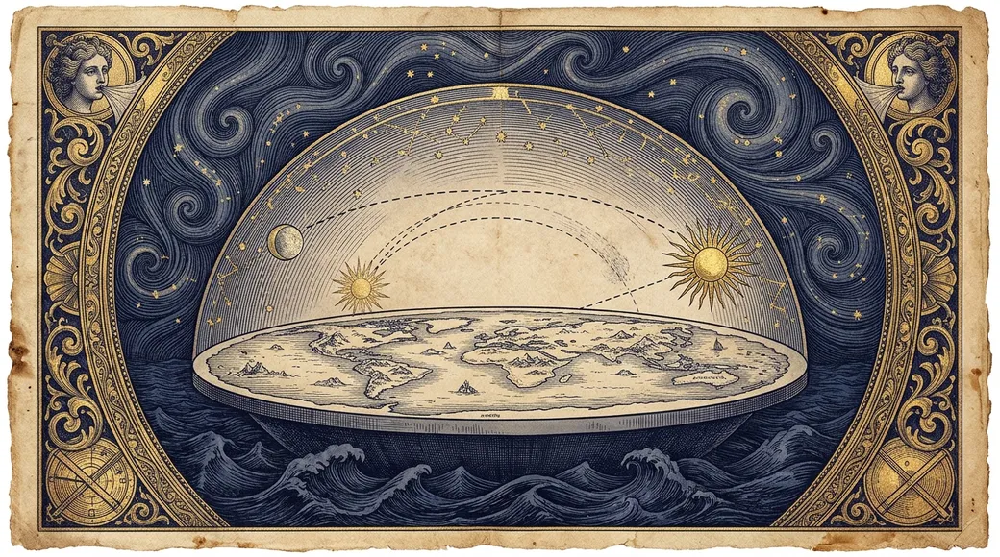
Dawn and the thickness of the firmament. The sky grows light well before the Sun rises. The Gemara explains that in that time the Sun is passing through the thickness of the firmament on its way into the lower sky. This lets the Gemara measure the thickness of the firmament by the length of the dawn. Rava, following Rabbi Yochanan, sets the time from first light to sunrise at the time it takes to walk five mil, which is one-sixth of the time from sunrise to sunset.
The Sun takes a sixth as long to cross the firmament as to cross the sky. From this Rava concludes that the thickness of the firmament is a sixth of the Sun’s daily path, or one thousand parsaos. A baraisa of Rabbi Yehudah puts dawn at four mil and makes the firmament a tenth of the Sun’s daily path, and the Gemara refutes Rava from that baraisa (Pesachim 94a).
Scientists explain the dawn without a firmament. Air scatters sunlight in every direction, which is why the whole sky is bright by day and not only the spot where the Sun is. Before sunrise, while the Sun is still below the horizon, it already shines on the air high above us, and that air scatters some of its light down to the ground. Astronomers find that the glow begins when the Sun is about eighteen degrees below the horizon. In London, around the longest days of the year, the Sun never goes that far below the horizon, so there the glow lasts all night.
The red Sun of morning and evening. The Gemara discusses the color of the Sun in a sugya about wheat that was sold as shechamtis, “sun-colored,” and turned out to be white. The Mishnah sets white against sun-colored, so Rav Pappa infers that the Sun is red. He notes that the Sun looks red in the morning and the evening. We do not see it as red all day, he says, only because our eyes are not strong enough.
The Gemara also explains the red color on the view that the Sun is white. On that view, the Sun looks red in the morning because it passes the roses of Gan Eden, and red in the evening because it passes the gate of Gehinnom, or, according to some opinions, the reverse (Bava Basra 84a).
וּלְמַאי דִּסְלֵיק דַּעְתִּין מֵעִיקָּרָא — הָא קָא סָמְקָא צַפְרָא וּפַנְיָא! בְּצַפְרָא — דְּחָלְפָא אַבֵּי וַורְדֵי דְּגַן עֵדֶן, בְּפַנְיָא — דְּחָלְפָא אַפִּתְחָא דְגֵיהִנָּם. וְאִיכָּא דְּאָמְרִי אִיפְּכָא.
“And according to our initial assumption [that the Sun is white], why does it turn red in the morning and evening? In the morning, because it passes over the roses of Gan Eden; in the evening, because it passes by the gate of Gehinnom. And some say the reverse.”
The Met Office, Britain’s national weather service, explains the red by the amount of air that the Sun’s light crosses to reach us. When the Sun is low, its light passes through far more air than at noon. The same scattering that makes the daytime sky bright takes the blue light out of the beam, and mostly yellow and red light reaches the ground. The red of the Sun in the morning and the evening comes from the air that its light passes through. It does not come from the color of the Sun itself, as Rav Pappa holds, or from Gan Eden and Gehinnom.
Windows for the Sun. Chazal also use the firmament to explain why the place where the Sun rises moves along the horizon through the year. The Yerushalmi says that Hashem made 365 windows for the Sun: 182 in the east, 182 in the west and one in the middle (Rosh Hashanah 2:4). Pirkei d’Rabbi Eliezer counts 366 windows. Each day, it says, the Sun comes out through a window in the east and sets through the matching window opposite it in the west (chapter 6).
Astronomers find no windows in the sky and no wall to hold them. The place of sunrise moves along the horizon because the Earth is tilted. The Earth spins on an axis that runs through the North and South Poles, and that axis leans about 23.4 degrees from upright, compared with the Earth’s path around the Sun.
For part of the year, as the Earth goes around the Sun, the northern half of the Earth leans toward the Sun. In those months people in the north see the Sun rise well north of due east and climb high at noon. Six months later the northern half leans away from the Sun, and the Sun rises well south of due east and stays low in the sky. In between, the place of sunrise moves a little each day.
Where the Sun goes at night. The Sages of Israel say that by day the Sun travels beneath the firmament, and at night it travels above the firmament, which hides it from view (Pesachim 94b). Rabbi Eliezer says that at night the Sun rises above the firmament on the north side of the world (Bava Basra 25a–b). Rabbi Yehoshua compares the world to a tent closed on every side. At night, he says, once the Sun reaches the north-western corner, it goes around behind the dome, outside its northern wall, back to the east (Bava Basra 25b). The sages of the nations say that at night the Sun goes back to the east by traveling under the earth (Pesachim 94b).
תניא, רבי אליעזר אומר: עולם לאכסדרה הוא דומה ורוח צפונית אינה מסובבת, וכיון שהגיעה חמה אצל קרן מערבית צפונית נכפפת ועולה למעלה מן הרקיע. ורבי יהושע אומר: עולם לקובה הוא דומה ורוח צפונית מסובבת, וכיון שחמה מגעת לקרן מערבית צפונית מקפת וחוזרת אחורי כיפה.
“It was taught in a baraisa: Rabbi Eliezer says, the world resembles an exedra [a three-walled porch], and its northern side is not enclosed; when the Sun reaches the northwestern corner, it bends back and rises above the firmament. And Rabbi Yehoshua says, the world resembles a closed tent, and its northern side is enclosed; when the Sun reaches the northwestern corner, it circles around behind the dome.”
All four views have the Sun moving around an earth that stands still. Scientists find instead that night comes because the Earth is a ball that turns once in about twenty-four hours, while the Sun stays where it is, about 150 million kilometers away. At night our side of the Earth faces away from the Sun. In 1851 the French physicist Léon Foucault demonstrated the Earth’s turning in the Panthéon in Paris. He hung a heavy ball on a wire 67 meters long from the dome and set it swinging. Over the hours, the line of its swing slowly turned across the floor, because the floor beneath it was turning with the Earth. So at night the Sun does not go anywhere, whether above the firmament, behind it or under the earth.
Rebbi’s proof from the springs. The sages of the nations taught that the Sun travels under the earth at night. Rebbi said that their words “appear more correct than ours,” because springs are cold by day and hot at night. He reasoned that the Sun must be underground at night, heating the springs from below (Pesachim 94b). Rashi adds that at dawn you can see steam rising from the rivers.
חכמי ישראל אומרים: ביום חמה מהלכת למטה מן הרקיע ובלילה למעלה מן הרקיע. וחכמי אומות העולם אומרים: ביום חמה מהלכת למטה מן הרקיע ובלילה למטה מן הקרקע. א״ר: ונראין דבריהן מדברינו, שביום מעינות צוננין ובלילה רותחין.
“The Sages of Israel say: By day the Sun travels beneath the firmament and by night above the firmament. And the sages of the nations of the world say: By day the Sun travels beneath the firmament and by night beneath the ground. Rebbi said: Their words appear more correct than ours, because by day the springs are cool and by night they are hot.”
Pesachim 94b
A baraisa on the same page explains the seasons in the same way. In summer the Sun travels high in the firmament, so the world is hot and the springs are cold. In winter it travels low, near the ground, so the world is cold and the springs are warm. In the Midrash, Rabbi Yochanan reasons from spring water in the same way: in summer the Sun sets behind the dome and upward, and in winter behind the dome and downward (Bereishis Rabbah 6:8). Rashi gives this baraisa as the reason for the halachah of mayim shelanu, the water left standing overnight before it is used to knead matzah dough.
Rebbi was right that springs feel cold by day and warm at night. A spring feels cool against the hot air of midday and warm against the cold air of night, and on a cold morning it steams, as Rashi says. But scientists find that the Sun is not what warms it. Water that comes up from deep in the ground has been lying in rock whose temperature hardly changes between day and night, or even between summer and winter.
This water comes out at about the average temperature of the whole year in that place. The spring stays nearly the same while the air around it warms and cools, and no Sun under the earth is needed to warm it at night. (A deep basement feels cool in August and mild in January for the same reason, though its own temperature hardly changes all year.)
The four paths of the Sun. According to a baraisa on Pesachim 94b, in Nisan, Iyar and Sivan the Sun travels over the mountains to melt the snows, and in Tammuz, Av and Elul it travels over settled land to ripen the fruit. In Tishrei, Marcheshvan and Kislev it travels over the seas to dry up the rivers, and in Teves, Shevat and Adar it travels over the wilderness so as not to dry up the seeds. Rashi explains that the strength of the Sun follows these paths. The earlier baraisa about summer and winter, taught in the name of Rabbi Nasan on the same page, adds that in summer “the whole world” is hot.
תָּנוּ רַבָּנַן: בְּאַרְבָּעָה שְׁבִילִין חַמָּה מְהַלֶּכֶת. נִיסָן אִיָּיר וְסִיוָן — מְהַלֶּכֶת בֶּהָרִים, כְּדֵי לְפַשֵּׁר אֶת הַשְּׁלָגִין. תַּמּוּז אָב וֶאֱלוּל — מְהַלֶּכֶת בַּיִּשּׁוּב, כְּדֵי לְבַשֵּׁל אֶת הַפֵּירוֹת. תִּשְׁרֵי מְרַחְשְׁוָן וְכִסְלֵיו — מְהַלֶּכֶת בַּיַּמִּים, כְּדֵי לְיַבֵּשׁ אֶת הַנְּהָרוֹת. טֵבֵת שְׁבָט וַאֲדָר — מְהַלֶּכֶת בַּמִּדְבָּר, שֶׁלֹּא לְיַבֵּשׁ אֶת הַזְּרָעִים.
“The Sages taught: The Sun travels along four paths. In Nisan, Iyar, and Sivan it travels over the mountains to melt the snows. In Tammuz, Av, and Elul it travels over settled land to ripen the fruit. In Tishrei, Marcheshvan, and Kislev it travels over the seas to dry up the rivers. In Teves, Shevat, and Adar it travels over the wilderness so as not to dry up the seeds.”
Both baraisos describe the seasons north of the equator, where Chazal lived. In the southern half of the world, in South Africa, Australia and Argentina, the seasons are the other way around. Tammuz, Av and Elul are winter months there, and Teves, Shevat and Adar are summer months. The tilt of the Earth explains this: when the northern half leans toward the Sun, the southern half leans away from it. So in the months when, according to Rabbi Nasan, “the whole world” is hot, it is winter in the southern half of the world.
22.4Modox Alert!Rabbi Yosei says that the earth stands on pillars and that the pillars stand on the waters (Chagigah 12b). The Earth is a ball with empty space on every side.Rabbi Yosei opens by lamenting that people “stand and do not know on what they stand.” The Sages count twelve pillars, others count seven, and Rabbi Elazar ben Shamua counts one, named Tzaddik.The Earth is about 12,700 kilometers across.The Earth has been photographed whole from about 29,000 kilometers away.
The earth on pillars
[Modox Alert! If you call your chavrusa a “study partner”, feel free to skip this obviously Ricoeurian second naïveté toward the post-Gunkelian, sub-Rabbinic mythologem, and move on to the next item.]
In the Gemara’s discussion of what holds up the earth, Rabbi Yosei begins, “Woe to people, who see and do not know what they see, who stand and do not know on what they stand.” Then he tells them that the earth stands on pillars, the pillars stand on the waters, the waters stand on the mountains, the mountains stand on the wind, the wind stands on the storm, and the storm hangs on the arm of Hashem. The Sages count twelve pillars, and others count seven. Rabbi Elazar ben Shamua says that there is one pillar, and its name is Tzaddik (Chagigah 12b).
תניא, ר׳ יוסי אומר: אוי להם לבריות שרואות ואינן יודעות מה רואות, עומדות ואין יודעות על מה הן עומדות. הארץ על מה עומדת? על העמודים, שנאמר (איוב ט, ו): ״המרגיז ארץ ממקומה ועמודיה יתפלצון״. עמודים על המים, שנאמר (תהלים קלו, ו): ״לרוקע הארץ על המים״. מים על ההרים, שנאמר: ״על הרים יעמדו מים״. הרים ברוח, שנאמר (עמוס ד, יג): ״כי הנה יוצר הרים ובורא רוח״. רוח בסערה, שנאמר (תהלים קמח, ח): ״רוח סערה עושה דברו״. סערה תלויה בזרועו של הקב״ה, שנאמר (דברים לג, כז): ״ומתחת זרועות עולם״.
“It was taught in a baraisa: Rabbi Yosei says, ‘Woe to people, who see and do not know what they see, who stand and do not know on what they stand. On what does the earth stand? On the pillars, as it is said (Iyov 9:6), “Who shakes the earth from its place, and its pillars tremble.” The pillars stand on the waters, as it is said (Tehillim 136:6), “Who spreads the earth over the waters.” The waters stand on the mountains, as it is said (Tehillim 104:6), “The waters stood above the mountains.” The mountains stand on the wind, as it is said (Amos 4:13), “For behold, He forms mountains and creates wind.” The wind stands on the storm, as it is said (Tehillim 148:8), “Stormy wind fulfilling His word.” And the storm hangs on the arm of the Holy One, blessed be He, as it is said (Devarim 33:27), “And underneath are the everlasting arms.”’”
Chagigah 12b
Each of the four views takes its number from a pasuk. Rabbi Yosei brings a pasuk for every link in his chain, among them Tehillim 136:6, which says that Hashem “spread the earth over the waters.” The Sages learn twelve pillars from Devarim 32:8, which says that Hashem set the borders of the peoples according to the number of the children of Israel. The view of seven pillars comes from Mishlei 9:1, which speaks of the seven pillars of wisdom’s house. Rabbi Elazar ben Shamua learns his one pillar from Mishlei 10:25, which calls the tzaddik the foundation of the world.
Rabbi Elazar ben Shamua’s one pillar named Tzaddik reads naturally as a teaching about the righteous. One might read Rabbi Yosei’s whole chain as imagery too, since it ends with the arm of Hashem. The fact that each view takes its number from a pasuk does not tell us either way. But Rabbi Yosei opens by lamenting that people stand on the ground without knowing what it stands on, and he gives his chain as the answer to that question: what physically holds up the earth.
Scientists find that the Earth does not stand on anything. It is a ball about 12,700 kilometers across, with empty space on every side, and it goes around the Sun once a year, held by the Sun’s gravity. On December 7, 1972, the crew of Apollo 17, on their way to the Moon, photographed the whole sunlit Earth from about 29,000 kilometers away. That photograph was the first picture of the fully illuminated Earth taken by a human being. Spacecraft have since photographed the Earth from every side. Nothing holds it up from below: there are no pillars and no waters beneath it.

23. The dates on one timeline
Put on one timeline, most of the dates that scientists give for these conflicts fall before Creation, 5,787 years ago. Some fall between Creation and the Mabul: physical records that the Mabul did not erase, and peoples whose building and writing went on through 2105 BCE. Only a handful fall after the Mabul, such as the first record of the Chaldeans, the first tame camels in Canaan, the first coins and the arrival of the Philistines.
These dates do not rest on radioactive dating alone. Many of them come from evidence that has nothing to do with radioactive decay, and it gives the same answers:
- Neon-21, a stable gas made by cosmic rays in rocks floating in space, built up in meteorites that later fell onto the sea floor of the Ordovician period, at the Thorsberg quarry in Sweden.
- Astronomers measured the distance to the star V838 Monocerotis by the echo of its light.
- The yearly bands of the Crevice Cave stalagmite in Missouri match its uranium–thorium age.
- Fossils with in-between body plans have been found, such as the four-legged whale Peregocetus and Elpistostege, a fish whose fins were becoming limbs. A fig wasp is preserved with its fig in a 34-million-year-old fossil from the Isle of Wight, and the chromosomes of Denisova 11 are a mix of Neanderthal and Denisovan.
- The yearly layers of the Greenland and West Antarctic ice run through 2105 BCE without a break, and the clay bison and children’s footprints in the cave of Tuc d’Audoubert in the Pyrenees, about 14,000 years old, survived where a year under kilometers of water would have flooded the cave and destroyed them.
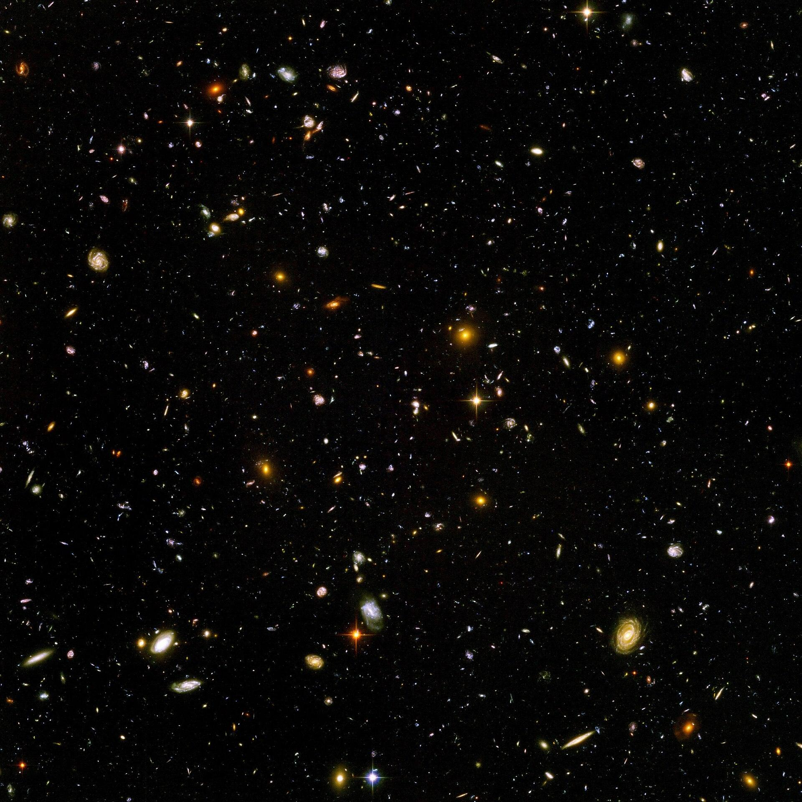
Part Two
Hool’s theory
OK, so now that we have discussed the issues that are on the board, let’s move on to Hool’s resolution. Hool’s proposal breaks down into a number of ideas.
The Torah counts fewer than six thousand years since Creation, while scientists measure 13.8 billion years since the beginning of the universe. Hool keeps both numbers:
- Nature keeps time by two clocks, which he calls “fundamental time” and “general time”.
- The turning of the Earth and the Sun’s day follow “fundamental time”, which can stretch.
- Radioactive decay follows “general time”, which is rigid.
- On the Fifth Day of Creation, “fundamental time” stretched so far that one day by the Sun held 13.8 billion years of radioactive decay.
- So the Torah, which counts days by the Sun, and the scientists, who count years of decay, are both right.
Hool places the history of life inside the long Fifth Day as well. He holds that living things changed from one form into another by programs that the Creator built into them, and that they changed in the same order in which scientists find the fossils in the layers of rock. The Torah puts the land animals on the Sixth Day, which Hool treats as an ordinary day. But scientists date the fossils of dinosaurs and of meat-eating land animals to millions of years ago. So Hool concludes that these animals were made from the water on the Fifth Day.
The long Fifth Day ended before Adam was created, so it does not help with the years between Adam and the Mabul. The Torah’s count puts the Mabul 1,656 years after Creation, in 2105 BCE, but archaeologists date human remains and tools to hundreds of thousands of years before that. To close this gap, Hool applies his two clocks to these centuries too. Before the Mabul, he argues, each day was thirteen times longer and radioactive decay ran thirteen times faster, so every year by the Sun held 169 (13 × 13) years of decay. Whenever scientists date a find to some number of years before the Mabul, Hool divides that number by 169. (He later raises the factor slightly, to 171.)
Hool writes of the years around 2105 BCE that “the archaeological record of this time does not yield any evidence of the Great Flood nor evidence of the almost complete obliteration of mankind” (The Flood, p. 3). He keeps the Torah’s date by arguing that radioactive decay went on running faster for several centuries after the Mabul. That extra decay, he argues, makes the remains of the Mabul look about 1,700 years older than they are, so scientists date them to around 3800 BCE.
To account for the fossils of early humans, Hool divides them into two groups. The older human species were animals, created on the Fifth Day. The earliest members of our own species fall within Adam’s lifetime once their scientific dates are divided by Hool’s factor. Hool identifies these people as children whom Adam fathered before Shes was born.
Finally, Hool places the events of Bereishis on the map of the world. Animals that live on only one continent had to reach the Ark and go home again afterward. To explain how they did so, Hool holds that Hashem pushed the continents together into a single landmass for the Mabul and split them apart again when the nations were scattered from Bavel. Hool places the landing of the Ark at Garni, a village above a volcanic river gorge in Armenia. He places Gan Eden beside Nabro, an active volcano in Eritrea, on the Red Sea coast of the Horn of Africa, and he puts the first descendants of Shes there as well. None of his dates depends on where he puts the Ark and Gan Eden.
Hool has also answered a review of The Flood by Aviyam Franco, published on SeforimChatter. In his reply (9 November 2026), Hool writes that “the central thrust of the book has been missed,” and he names it: the ten dates from before the Mabul that he divides by 169 (The Flood, pp. 42–47), which on his account match the events that the Torah and Chazal record for those years.
1. The two clocks
Hool accepts the scientists’ age for the universe, 13.8 billion years. Before he does, he considers a simpler way out of the conflict with the Torah’s count: perhaps Hashem created a star with half its fuel already burned, or a rock that already held the products of radioactive decay, so that the scientists’ dates come out too old. In his words, “who is to say that that star was not created with a half tank of hydrogen or less?” He sets this answer aside because independent dating methods agree with one another, whether astronomers measure the ages of the oldest stars, white dwarfs, and the microwave background or geologists measure radioactive elements in rocks. Hool takes that agreement as a sign that the scientists are measuring real history, not an appearance of age that was there from Creation: “However, the harmonization of the various scientific approaches does give credence to the elements of conjecture adopted and directs us to investigate the possibility of reconciliation with the Torah” (Six Days 1, pp. 18–21).
Hool also holds that only the traditional number of years has passed since Creation, and that the days of Creation from the Fourth Day on were counted by the Sun. So all 13.8 billion years have to fit inside the days of Creation. Hool puts the whole span inside a single day by the Sun, the Fifth Day, so that one day by the Sun holds 13.8 billion years of radioactive decay.
Putting billions of years of decay into one day creates a problem. Scientists date a rock by measuring how much of its uranium has decayed. Ordinarily, a day that passes for the Sun passes for the uranium in the rock as well, so one day holds one day of decay, not billions of years. Hool’s answer is that the Sun’s day and radioactive decay keep time by two different clocks, and that the two clocks can run at different rates.
1a Time dilation
Hool builds his two clocks on Einstein’s discovery that time does not pass at the same rate for everyone. Before Einstein, everyone assumed that it does. On that view a second on a speeding train is a second at home, and a second on a mountaintop is a second at the bottom of a mine.
Einstein found that two things slow a clock down: speed and gravity. In 1905 he showed that a clock that moves fast runs slower than one that stands still. In 1915 he showed that a clock in stronger gravity runs slower than one higher up. Physicists call both effects time dilation, because each second of the slower clock is stretched out compared with a second of the faster one.
Einstein derived time dilation from one premise: every observer who measures the speed of light gets the same answer, however fast the observer is moving. The speed of light can be the same for everyone only if time passes at different rates for observers who are moving differently.
In relativity time itself slows, so everything that travels with the moving clock slows by the same amount, from the clock’s own gears and atoms to the heartbeat of the person holding it. The traveler notices nothing, because his watch, his pulse and his thoughts all slow together. He finds out only when he comes home and compares his watch with yours. Less time has passed by his watch than by yours.
At everyday speeds time dilation is tiny, but it is real, and scientists measure it every day. The clocks on GPS satellites run at a different rate from clocks on the ground, partly because the satellites move fast and partly because they are high up, where gravity is weaker. The GPS system has to correct for the difference. Without the correction, the position that your phone shows on its map would drift by kilometers a day.
1b Relativity and radioactive decay
Relativity does allow a day as long as the one Hool needs. A traveler moving fast enough, or sitting in strong enough gravity, could live through a single day by his watch while billions of years passed for everyone else. But relativity slows everything that travels with the slow clock. If time had slowed for the Earth during the Fifth Day, it would have slowed for the uranium in the Earth’s rocks too. The uranium would have decayed for only one day, and scientists today would find only one day’s worth of decay. Hool needs the Sun’s day to slow down while radioactive decay keeps its ordinary pace.
Hool therefore goes beyond relativity. He divides time itself into two kinds and puts different processes in nature on different kinds, so that one kind of time can stretch while the other runs on at its ordinary rate.
1c Fundamental time and general time
Hool calls the two kinds “fundamental time”, which can stretch, and “general time”, which is rigid. He introduces them in The Six Days of Creation:
Time itself evidently has two properties: (1) general properties, and (2) fundamental properties. Accordingly, we can refer to any unit of time with respect to its fundamental properties or its general properties. When we say that time is slowing down, what is actually happening is that the fundamental units of time have expanded. This means that any one unit of fundamental time is now stretched out over more general units of time than before. (Six Days 1, pp. 27–28, and Six Days 2, p. 125)
Hool pictures the two kinds of time with an elastic band (Six Days 2, p. 125; The Flood, p. 153). Lay a band ten centimeters long, marked into ten units, along a ruler, and stretch it to twenty centimeters. The band still has ten units marked on it, but now the ten units cover twenty centimeters of the ruler. Hool says that the band’s “fundamental” length is still ten, since it is the same band with the same marks, while its “general” length, measured on the ruler, is twenty.
On Hool’s proposal, time stretches the same way. “Fundamental time” is the band, and “general time” is the ruler that the band is laid along. When “fundamental time” stretches, one unit of “fundamental time” covers many units of “general time”. Hool holds that this stretching is what relativity has been measuring all along: when a traveler’s clock slows down, the fundamental units of the traveler’s time have expanded. Hool calls “fundamental time” “malleable” and “general time” “rigid” (Six Days 2, pp. 145, 152).
The elastic band by itself only restates relativity. If every process in nature followed “fundamental time”, the Earth’s turning and the decay of its uranium would still slow together, and the Fifth Day would still hold only one day of decay. Hool adds a further proposal to separate them: each process in nature follows a particular clock. In his words, time-bound events “can be based on either “fundamental time”, “general time”, or both” (Six Days 1, p. 103). A process that follows “fundamental time” stretches along with it. A process that follows “general time” does not stretch at all.
Hool explains the difference with a cake (Six Days 1, p. 28; Six Days 2, p. 125). Suppose a cake takes half an hour to bake, and “fundamental time” then stretches to twice its length. If baking follows “fundamental time”, the cake now takes an hour, measured on the ruler of “general time”. If baking follows “general time”, the cake still takes half an hour, however far “fundamental time” stretches.
Hool puts the daily cycle of the Sun on “fundamental time”, and radioactive decay on “general time”. That lets the Sun’s day stretch while radioactive decay keeps its pace. If “fundamental time” stretched to twice its length, one day by the Sun would last 48 hours of “general time”, and uranium would decay through all 48 hours.
On the Fifth Day “fundamental time” stretched, and the Sun’s day stretched with it, so that one day by the Sun covered 13.8 billion years of “general time”. The uranium in the Earth’s crust went on decaying by the rigid clock of “general time” through all 13.8 billion years. The Torah counts days by the Sun, and scientists count years of decay. Hool says that both are right, because they count by different clocks.
1d Radioactive decay on general time
Hool’s reason for putting radioactive decay on “general time” is the size of the gap between the two counts. The Torah allows only a few thousand years by the Sun, but scientists measure billions of years of radioactive decay. Decay, Hool reasons, cannot have stretched when the Sun’s time stretched:
We found, for example, that all clocks—which may also include biological clocks—are dependent on fundamental time and thus will take longer to tick under a gravitational field. However, we found that radioactive decay is dependent on general time as tests on ancient material reveal that they have decayed over millions or billions of years. (Six Days 1, p. 103)
“Radioactive decay is evidently dependent on “general time”,” he concludes, “and therefore it would be unaffected by the dilation of fundamental time” (Six Days 2, p. 126).
Hool also finds a source in the tradition for the idea that time can stretch without slowing everything in it. He cites his chavrusa, Rabbi Pesach Bodenheimer, who points to the Tikkunei Zohar as the Leshem explains it: the days before the Mabul were longer than ours. Hool writes:
The Tikkunei Zohar says that the days before the Flood were approximately thirteen times longer than normal. Although this dilation of time caused a slow-down in the daily cycle of the sun, it surely did not mean that everything slowed down, such as that people’s heartbeat or people’s motion went thirteen times slower—otherwise there would be no significance to the dilation—so evidently not all time-bound events are slowed down by time-dilation. (Six Days 2, p. 124)
Hool’s point is that if people’s heartbeats and movements had slowed thirteenfold along with the Sun, no one would have experienced the days as longer.
1e Which clock each process follows
With two clocks in place, Hool assigns each process in nature to its clock. Most of nature goes on “fundamental time”, together with the Sun’s day: “Most time-bound events are dependent on the fundamental properties of time” (Six Days 1, p. 28). “General time” is the exception, and radioactive decay is its main example. Across his three books, Hool places other processes on one clock or the other.
All clocks go on “fundamental time”. Hool needs this because he identifies the slowing of clocks that relativity measures with the stretching of “fundamental time”. When time slows for a traveler, he writes, “all forms of clocks traveling with him—mechanical, atomic, or biological—will, incredibly, slow down” (Six Days 1, p. 24). Of the clocks on GPS satellites he writes, “Incredible as it may sound, what is slowing down the clocks on earth is not something in the clocks but is the dilation of time itself that is causing the clocks to tick slower” (Six Days 2, p. 117).
Light follows both clocks, so its speed never changes. Hool needs a fixed speed of light because he uses it to link the stretching of time to the expansion of space, and that link is how he explains why time stretched on the Fifth Day. In his words, “the cycle of the sun and moon are fixed to “fundamental time”, radioactive decay is fixed to “general time” and the speed of light is fixed according to both” (Six Days 1, p. 59).
Hool suggests that the breakdown of proteins “may well be” governed by “fundamental time” as well. He needs this for the proteins found in dinosaur bones. Scientists have found traces of soft-tissue proteins in dinosaur bones dated to tens of millions of years ago, far longer than proteins are expected to last before they break down. On his account the dinosaurs lived in the last minutes of the Fifth Day, so only a few thousand years of “fundamental time” have passed since then, and the proteins have had only a few thousand years to break down (Six Days 1, p. 103). This lets Hool accept the 68-million-year radiometric age of the bones and still explain why proteins survive in them.
Damage and repair in the human body go on different clocks. People before the Mabul lived for centuries, and in The Flood Hool explains their long lives by putting wear and damage in the body on “fundamental time” and repair on “general time”. “Fundamental time” was stretched before the Mabul, so the damage was slowed while the repair kept its pace, and the repair outran the damage.
1f Gravity and the other forces
Hool also looks for a reason in physics why radioactive decay follows one clock and the Sun’s cycle the other. He finds it in the four basic forces of nature: gravity, electromagnetism, the strong nuclear force and the weak nuclear force. He proposes that gravity follows “fundamental time” and that the other three forces follow “general time”, and he calls the proposal “an exciting offshoot” of his work:
The reconciliation of the scientific evidence with the Torah, which reveals that there are two aspects to time, opens up a new avenue for exploration: gravity works on mass and energy that interact with fundamental time, which is malleable, whereas the other three fundamental forces that are governed by quantum mechanics interact with general time, which is rigid. (Six Days 2, p. 145)
Radioactive decay depends on the three forces that Hool puts on “general time”. The strong nuclear force holds an atom’s nucleus together, the weak nuclear force drives certain kinds of decay, and electromagnetism binds atoms and molecules. If these three forces follow “general time”, radioactive decay keeps its ordinary pace whatever happens to “fundamental time”, even while the Sun’s day stretches.
Hool separates gravity from the other three forces because physicists describe them with two different theories. Einstein’s general relativity describes gravity as the curving of space and time, in which a clock runs slower near a heavy body. Quantum theory, also called quantum mechanics, describes atoms, nuclei and particles, and the other three forces.
Physicists have not yet joined general relativity and quantum mechanics into one theory, partly because the two theories treat time differently. Hool quotes the science writer Natalie Wolchover in Nautilus, who explains that in quantum mechanics “time is universal and absolute,” while in general relativity “time is relative and dynamical” (Six Days 2, pp. 141–142).
Hool matches these two descriptions of time with his two clocks. The malleable time of relativity is “fundamental time”, and the fixed time of quantum theory is “general time”. On that basis he holds that time dilation does not touch the three quantum forces, and his evidence for this is the radioactive decay of the Fifth Day:
We can therefore explore the possibility that gravity is indeed governed by malleable time as dictated by general relativity. However, the other three fundamental forces are still governed at their essence by a fixed flow of time, as indicated by quantum mechanics, since these forces are not affected by time dilation. (Six Days 2, p. 144)
For example, we know that the radioactive decay of the various rocks continued as normal, releasing the equivalent of billions of years of isotopes during the Fifth Day of Creation—meaning that they were not slowed down by the time dilation. This leads to the realization that some time-bound events have a fixed flow of time, whereas others have a malleable flow of time. (Six Days 2, p. 144)
To support keeping gravity apart from the other three forces, Hool cites Jonathan Oppenheim, a physicist at University College London (pp. 143–144). Most physicists expect gravity to fit into quantum theory in the end, like the other three forces. Oppenheim is one of a small group who think that gravity may not need a quantum description at all, and he calls the assumption that it does “just dogma.” If Oppenheim is right, gravity and the other three forces stay under separate theories, which is the split that Hool proposes. Hool’s suggestion is “that both general relativity and quantum mechanics are correct in their respective realms” (p. 144).
Hool’s placements, with what each one solves and where he makes it:
| Process | Clock | What the placement solves | Where Hool says so |
|---|---|---|---|
| The daily and yearly cycle of the Sun; the cycles of the Moon and planets | fundamental | One day of the Sun can last 13.8 billion years of “general time” | all three books; The Flood, p. 153 |
| Radioactive decay | general | The rocks hold billions of years of decay | all three books; Six Days 1, p. 103; Six Days 2, p. 126 |
| The speed of light | both | The speed of light stays fixed while space expands, which ties the stretching of time to the expansion | Six Days 1, pp. 34–35 and chapter 13 |
| “All clocks,” “mechanical, atomic, or biological” | fundamental | The slowing of clocks measured in relativity becomes the stretching of “fundamental time” | Six Days 1, pp. 24, 103; chapters 5–6 |
| Gravity | fundamental (proposed) | General relativity describes gravity as the curving of space and time | Six Days 2, chapter 19 |
| Electromagnetism and the strong and weak nuclear forces | general (proposed) | Radioactive decay, which runs on these forces, kept its normal rate | Six Days 2, chapter 19 and p. 144 |
| The decay of proteins in dinosaur bones | fundamental (“may well be”) | Proteins survive in bones dated to 68 million years and more | Six Days 1, p. 103 |
| Wear and damage in the human body | fundamental | Damage built up slowly before the Mabul | The Flood, Appendix A, pp. 154–155 |
| Repair in the human body | general | Repair kept its pace before the Mabul and outran the damage | The Flood, Appendix A, pp. 154–155 |
| Heartbeats, movement and thought | not affected by the stretching | The longer days before the Mabul had “significance” for the people who lived through them | The Flood, Appendix A; Six Days 2, p. 124 |
| The Sun, the Moon and the planets before the Mabul | fundamental, stretched thirteenfold | Each of the Torah’s years before the Mabul held thirteen years of “general time” | Six Days 2, p. 118; The Flood, p. 40 |
| The orbits of comets | fundamental | Short-period comets have survived since the Fifth Day | Six Days 2, p. 150 |
| The expansion of the universe | fundamental (suggested) | The two measurements of the Hubble tension might agree | Six Days 1, pp. 59–60 |
1g Summary
- Hool holds that time has a fundamental part that can stretch and a general part that is rigid. He holds that the stretching of “fundamental time” is what relativity measures as time dilation.
- On his account, each process in nature follows one of the two kinds of time. The Sun’s day follows “fundamental time”, and radioactive decay follows “general time”. That is how one day of the Sun on the Fifth Day could hold 13.8 billion years of decay.
- Hool puts most other processes, among them all clocks, on “fundamental time”. He finds support for the split in the Tikkunei Zohar, which on his reading says that the days before the Mabul were about thirteen times longer. People’s heartbeats, Hool argues, kept their pace through those long days.
- As “a new avenue for exploration,” Hool proposes that gravity follows “fundamental time”, while electromagnetism and the two nuclear forces, which drive radioactive decay, follow the fixed time of quantum theory and are not affected by time dilation. If the forces divide this way, radioactive decay keeps its pace while the Sun’s day stretches.
2. The Fifth Day
Hool’s two clocks allow one day by the Sun to hold 13.8 billion years of radioactive decay. He still needs something that stretched the Sun’s day, and a reason why the stretching fell on the Fifth Day. He finds the cause in the expansion of the universe. In his system “fundamental time” stretches along with space, so as space expanded on the Fifth Day, the Sun’s day stretched with it, until one day by the Sun held 13.8 billion years of decay of the uranium in the Earth’s rocks.
2a The expansion of the universe
Hool bases his stretched Fifth Day on the expansion of the universe, which astronomers measure in the light of distant galaxies. Light travels in waves, and its color depends on the length of the waves. Red light has the longest waves that the eye can see. In the 1920s the astronomer Edwin Hubble found that the light from distant galaxies is shifted toward the red end of the spectrum, which runs from violet to red. He also found that the farther away a galaxy is, the larger the shift.
Astronomers call this shift redshift, and they explain it by the expansion of space itself. As light crosses expanding space, its waves are stretched along the way, and the light becomes redder. Light from farther away crosses more expanding space, so its waves are stretched more.
If the universe is expanding now, it was smaller in the past. When astronomers run the expansion backward, everything comes together in a hot, dense state about 13.8 billion years ago. That hot, dense beginning is what people mean by the Big Bang.
Hool also draws on a second piece of evidence for the Big Bang, the faint glow left over from the early universe, called the cosmic microwave background. The early universe was so hot that it glowed, but at first its hot gas was opaque, like a thick fog. About 380,000 years after the start, the universe cooled enough for atoms to form. The fog cleared, and light could travel freely. The expansion has since stretched that light into microwaves. It still arrives from every direction, and satellites have mapped it in great detail.
2b The rebuke that ended the expansion
Hool holds that the Gemara and the Midrash describe the expansion of the universe, which astronomers discovered only in the twentieth century. He also needs the expansion to have stopped, so that the days after the Fifth Day were ordinary days. The same sources give him both: they describe the world expanding until Hashem stopped it with a rebuke (Six Days 1, pp. 32–33).
The Gemara in Chagigah 12a says that when Hashem created the world, it kept expanding “like two balls of a warp” (two balls of thread unwinding) until He rebuked it and made it stand still. The Gemara learns the rebuke from Iyov 26:11, “The pillars of heaven tremble and are astonished at His rebuke.” In the same passage Reish Lakish explains the name Shakai as “I am He Who said to the world ‘enough,’” reading שדי as ש, “Who,” and די, “enough.” The Midrash (Bereishis Rabbah 46:3) says that Hashem told the heavens and the earth “enough,” and that without that word they would still be stretching out.
Hool counts the end of the expansion among the things that Chazal knew before the scientists: “Another fact referred to by the same Sages—and as yet still undiscovered by the scientific community—is that the universe is no longer expanding and has stopped doing so for almost 6,000 years” (Six Days 1, Preface).
Astronomers still see redshift in the light of distant galaxies today, and they take it as a sign that the universe is still expanding. Hool answers that this light left the galaxies long ago, so its redshift reflects the expansion at the time the light set out, not the state of the universe today. The light of nearby stars, which left them recently, would not show the expansion either way:
Indeed, the expansion of the universe that we see from the light of the distant stars and galaxies is actually what happened in the ancient past, but we only see it now because of the enormous travel time of the light to us from the distant galaxies. The present situation of the universe can only be afforded to us through light from nearby stars, but they show no indication of expansion of space and would not show it anyway, even if the universe was still expanding, because of the counter effect of the local gravitation of our galaxy. (Six Days 2, p. 121)
“There is no scientific evidence that the universe is still expanding,” he concludes (Six Days 1, pp. 65–66).
2c Time stretched with space
Hool needs a link between the expanding universe and the stretched day. He proposes that as space expanded, “fundamental time” stretched by the same factor, so that the speed of light stayed the same.
He explains the link with the speed of light, which crosses 300,000 kilometers in one second. Suppose that space doubles in size, so that a stretch of space that measured 300,000 kilometers now measures 600,000 kilometers. Its fundamental length is still 300,000 kilometers, just as Hool’s elastic band keeps its ten marks when it is stretched along the ruler.
The speed of light is fixed, so light now needs two seconds of “general time” to cross the 600,000 kilometers. But in Hool’s system light must still cross the 300,000 kilometers of fundamental length in one second of “fundamental time”. Both can be true only if one second of “fundamental time” now covers two seconds of “general time” (Six Days 1, pp. 34–35). “Fundamental time” therefore stretches in the same proportion as space. In Hool’s words, “in the same way fundamental space has expanded many billions of times over, so too “fundamental time” may have expanded many billions of times over” (p. 35). The Sun’s day follows “fundamental time”, and so it stretched as the universe expanded.
2d Dating the expansion to the Fifth Day
Hool places the expansion on the Fifth Day for two reasons: it had to come after the stars existed, and the Zohar Chadash pairs the Fifth Day with the heavens of the Second Day (Six Days 1, p. 36; Six Days 2, p. 124).
Astronomers find that the light of the oldest stars set out about 13 billion years ago. This means that those stars already existed through nearly all of the 13.8 billion years of “general time” that Hool assigns to the expansion. Hool concludes that the expansion “must have taken place sometime after the stars were formed.” The Torah mentions the stars on the Fourth Day, so the expansion “must have taken place on either the Fourth, Fifth, or Sixth Day.” To choose among the three days, Hool turns to the Zohar Chadash:
The Zohar says that the last three days corresponded with the first three days. The natural assumption is therefore that the expansion would have taken place on the Fifth Day, thus completing the formation of the heavens, which were formed on the Second Day. (Six Days 1, p. 36)
2e Two stages of expansion
Placing the expansion on the Fifth Day gives Hool one day to hold 13.8 billion years of “general time”. He also has to fit the history of the universe into that day at the right pace, from the early glow of the Big Bang to the forming of the galaxies. In his system “fundamental time” stretches in proportion to space, so the number of years that fall into any part of the Fifth Day depends on how much space expanded during it. Hool therefore does not use one steady rate of expansion. Following the cosmologists (the scientists who study the history of the universe as a whole), he divides the expansion into an exponential stage and a gradual stage.
For the exponential stage, Hool writes: “Based on the standard model of the formation of the universe, in line with Einstein’s equations of general relativity, scientists understand that before the emission of the CMB, the universe underwent exponential expansion over several hundred thousand years, multiplying its size billions of times over, until it reached the diameter size of about 84 million light-years” (p. 39). (The CMB is the cosmic microwave background, and a light-year is the distance that light travels in a year.)
Hool puts this stage in the opening minutes of the Fifth Day. On his account, those first minutes by the Sun held several hundred thousand years of “general time”:
We can now understand that the “contraction” of the moon took place during the exponential expansion of the universe, which may have taken place in the first few minutes of the Fifth Day. This may have been comprised of an exponential expansion of space, whereby the universe may have expanded 26 billion times over from a size of about 30 billion kilometers to the size of 90 million light-years. This may therefore have taken several hundred thousand years of general time, due to the corresponding expansion of the first few minutes of fundamental time of the Fifth Day, as explained in chapter 7. Accordingly, this would change every hour of the Fifth Day into 3 million years. (Six Days 1, pp. 39–41)
In the gradual stage, through the rest of the Fifth Day, the universe grew about a thousand times larger, from roughly 90 million light-years across to about 90 billion light-years (p. 43). Hool’s sources for these figures are an entry in Oxford Reference and an answer posted on the physics website StackExchange.
2f The exponential stage
Hool also needs a cause for the exponential stage and a reason why it ended. He finds both in a puzzle about the energy of empty space.
For most of the history of the universe, the gravity of matter slowed the expansion down. But in 1998 two teams of astronomers found that for the last several billion years the expansion has been speeding up. Physicists attribute the speeding up to an energy that belongs to empty space itself, often called dark energy, which does not thin out as space grows. In Einstein’s equations this energy appears as a single number, called the cosmological constant, and astronomers have measured it.
Quantum theory also predicts an energy of empty space. Its prediction is 60 to 120 powers of ten larger than the value that astronomers measure, that is, larger by a factor of 1 followed by 60 to 120 zeros. Hool calls the gap, as physicists do, “by far the largest discrepancy between theory and experiment in all of science” (Six Days 1, p. 48).
Hool holds that both numbers are right, each for its own stage. “The universe actually underwent two separate expansions,” he writes, one at the rate that quantum theory predicts and one at the rate that astronomers observe (p. 48). The large predicted energy was real at first and drove the exponential stage at the start of the Fifth Day: “The predicted magnitude of the force may indeed be correct, and this explains the force behind the initial exponential expansion of the universe” (p. 69). The small energy that astronomers measure, he holds, drove the gradual stage (p. 47).
In chapter 8, we saw that in line with relativity and the constant fundamental speed of light, this resulted in a proportional expansion of time, whereby the Fifth Day was dilated from 24 hours to about 13.8 billion years. However, this expansion actually comprised two separate expansions. The observed redshifts of the more distant stars and galaxies, as well as the analysis of the cosmic wave background, indicate that the universe has expanded steadily over the last 13.8 billion years, increasing its size by about a thousand times—from millions of light-years to billions of light-years. (Six Days 1, pp. 43, 48)
The exponential stage ended because Hashem suppressed the large energy. Hool ties the suppression to the rebuke of Chagigah 12a and to the “enough” in the name Shakai:
Indeed, evidently it was this force that caused the initial exponential expansion of the universe, and it was this force that caused the following gradual expansion. The reason why the universe stopped expanding exponentially at the beginning of the Fifth Day of Creation—and altogether at the end of the Fifth Day—is, as the Talmud and Midrash tell us, because the Almighty stopped it with His word. The Midrash explains that the name of the Almighty, Keil Shakai, mentioned in Genesis 17:1, is reference to the Almighty’s suppression of the expanding universe. (Six Days 1, p. 49)
For Keil Shakai, Hool cites Shemos Rabbah 3:6, which explains the name as Hashem holding back punishment from a sinner so that the sinner has time to repent (p. 49).
2g The gradual stage
Hashem’s rebuke ended the exponential stage in the first minutes of the Fifth Day. Hool still needs to account for the redshift that astronomers see, which he describes as what “takes place when the light source is receding from us, causing the waves to stretch out.” If the expansion had stopped altogether after the exponential stage, nothing would have been receding for the rest of the day, and light from that time would have no redshift. So Hool adds a second, gradual expansion through the rest of the day:
The exponential expansion of space at the beginning of the Fifth day of Creation would not have effected a redshift in the rest of the Fifth Day since the universe would no longer have been expanding in that time, and the light source would no longer be receding from us. The fact that a slight redshift of the light has been observed from distant galaxies in all directions means that there must have been another gradual expansion throughout the Fifth Day of Creation, which caused a further expansion of the universe to about a thousand times its size—as calculated by the scientists—from a size of about 90 million light-years to about 90 billion light-years. (Six Days 1, pp. 42–43)
2h One turn of the Earth
On Hool’s account the Earth turned on its axis only once in the whole Fifth Day, since the Sun’s day lasted 13.8 billion years. He holds that “the daily and yearly cycle of the sun are dependent on fundamental time” (The Flood, p. 153), while the ancient rocks “continued to decay throughout the Fifth Day at their normal rate” (Six Days 2, p. 124).
Hool uses this single slow turn to explain why life on land came so late in the day. Scientists find fossils of land life only in the last 500 million years or so, near the end of Hool’s 13.8-billion-year Fifth Day. Hool explains why:
Because of the drastic time dilation that may have caused the daily cycle of the sun on the Fifth Day to take billions of years to complete, this would mean that during the first half of the day, for the duration of billions of years, one part of the world would be in a continuous state of day while the other side of the world would be in a continuous state of night, and vice versa for the second half of the day. This would result in the world either being too hot or too cold for life to flourish. However, just before sunset on the Fifth day, with most of the world being one big land mass, it would have been in a state of just before sunset or just after sunset. With the size of the sun at the time, the conditions then evidently provided the precise criteria for the fruition of life on land. This state would correspond to around 500 million years ago. (Six Days 2, p. 234)
2i Years in each hour
Hool also works out how much “general time” fell into each hour of the Fifth Day. The exponential stage stretched space, and “fundamental time” with it, about 26 billion times. From then on, each hour by the Sun covered about 26 billion hours of “general time”, which is about 3 million years (Six Days 1, pp. 39–43). The gradual stage then stretched space about a thousand times more by the end of the day. Hool writes that the accumulated expansion of each hour “may have increased roughly 1.34 times each hour until it reached, by the 24th hour, about 1,000 times bigger than its original size” (Six Days 1, p. 43, note 8). By the end of the day, he writes, “the last hour had expanded 1,000 times more to several billion years, with the whole day spreading out over 13.8 billion years of general time” (p. 44).
Because each hour held 1.34 times as many years as the hour before, the early hours stay short, and nearly all of the 13.8 billion years fall near the end of the day. On these figures:
- The first twelve hours together cover only about 400 million years.
- The last hour covers about 3.5 billion years, about 580 million of them in the last ten minutes before sunset.
- The first single cells, which Hool dates to 3.5 billion years ago, appear about an hour before sunset.
- The Cambrian animals of 543 million years ago, from the period in which scientists first find most of the major groups of animals, appear about nine minutes before sunset.
- The dinosaurs, from about 245 to 65 million years ago, span from about four minutes to about one minute before sunset.
On this schedule the whole history of life, from the first cells to the dinosaurs, falls in the last hour of the Fifth Day. Hool places the dinosaurs in “the last few minutes of the Fifth Day” (Six Days 1, p. 99), and he writes that fish, reptiles and birds “would have been created just before sunset on the Fifth Day” (Six Days 2, pp. 159–160).
The universe stayed large after the Fifth Day, so Hool also needs to explain why the Sixth Day was not stretched as well. His answer is that each day of Creation began anew. Each day, he writes, “was evidently created with non-stretched fundamental space, but with the dimensions of general space achieved by the expansion of the previous day. Thus, although the size of the universe remained, the following day did not comprise 13.8 billion years” (Six Days 1, p. 36).
2j The Moon and the age of the rocks
The Gemara in Chullin 60b, quoted by Rashi on Bereishis 1:16, says that the Sun and the Moon were created equal in size and that the Moon was then made smaller. Hool holds that the exponential stage of the expansion is what made the Moon smaller. He places the Sun and the Moon in the sky, still equal in size, on the night of the Fourth Day, before the stretched Fifth Day began (Six Days 1, p. 6). In the first minutes of the Fifth Day space grew about 26 billion times over, and on Hool’s account the Sun grew with it. Its own gravity kept it from growing as much as space did, but it still grew far more than the Moon, which, in Hool’s words, “may have been suppressed” (p. 44). The two bodies began equal, and the expansion left the Moon “almost 64 million times smaller than the sun” (pp. 41–42).
Rashi on Bereishis 1:16, citing the Midrash, says that the stars were multiplied to console the Moon after it was made smaller. From this Hool learns that the expansion served to form the stars and galaxies: “Evidently the expansion of the heavens and the earth was instigated to facilitate the formation of the stars and galaxies” (Six Days 1, pp. 40–41).
The Earth also existed before the Fifth Day, so on Hool’s account its material was there through all 13.8 billion years of the expansion. Yet geologists date the Earth’s oldest materials to far less. Hool lists the dates: zircons from the Earth (tiny, durable crystals that lock in uranium when they form) of 4.3 billion years, Moon rocks of 4.4 to 4.5 billion years, and meteorites of 4.53 to 4.58 billion years (Six Days 1, pp. 8–17). These dates make the Earth, in Hool’s words, “about 9.2 billion years younger than the oldest stars and galaxies” (p. 17). By the Torah’s order the Earth should be older than the stars, since the Torah has the earth from the First Day (1:1) and puts the stars on the Fourth Day (1:16).
Hool’s answer is plate tectonics, the slow churning that draws the Earth’s crust down into its interior, melts it and brings up new rock. Scientists date a rock from the last time it hardened from a molten state, so melting resets its radioactive clock. Hool writes:
The fact that the oldest rocks show an age of about 4.6 billion years does not mean that this is the age of the earth. It means it is the age of the rocks. Evidently, they were recycled 4.6 billion years ago and have decayed ever since at a rate dependent on general time. A similar kind of process may have also taken place with the lunar rocks and other meteorites. (Six Days 1, pp. 36–37)
On Hool’s account, then, the material of the Earth is as old as the universe, and 4.6 billion years is only the time since its rocks last melted.
2k Hints in the Torah and Chazal
Hool finds hints of the long Fifth Day, and of fundamental and “general time”, in the Torah and Chazal.
- Hool reads a Midrash on the name eretz as describing both stages of the expansion. Bereishis Rabbah 5:8 says that the earth was called eretz “because it wished to do the will of its Maker,” connecting eretz with ratzon, will. The Midrash goes straight on to the name Shakai, the name of the One Who said “enough.” Hool takes the Midrash to mean that the earth earned its name by stopping when Hashem said “enough.” He asks why only the earth got such a name, when the heavens stopped too. He answers that the heavens stopped only their exponential expansion and went on expanding gradually until the end of the Fifth Day, while the earth stopped altogether (Six Days 1, p. 43).
- Hool takes the microwave background as a confirmation of the Torah’s account of light on the First Day, before the Sun and the stars of the Fourth Day. He writes that the microwave background demonstrates “that light existed before the formation of the stars and galaxies; indeed, this is exactly what the Torah tells us in the beginning of Genesis” (p. 32).
- Hool reads a line in Chagigah 12a as a reference to “fundamental time”. Among the ten things that the Gemara lists as created on the First Day is “the measure of day and the measure of night.” Hool notes that the Gemara speaks of the measures, or dimensions, of day and night, and he takes these dimensions to be the units of “fundamental time”. The Gemara, on his reading, says that “fundamental time” was created on the First Day (pp. 70–71).
- Hool uses the two balls of thread in Chagigah 12a to answer a difficulty in the first pesukim of Bereishis. Bereishis 1:1 has the heavens created on the First Day, but 1:6–8 has the firmament made and called heaven on the Second Day. Hool resolves the difficulty by taking the heavens and earth of the first pasuk to be the two “balls” of Chagigah 12a, which he takes to be two bodies of fundamental space that expanded (pp. 71–72).
- Hool reads Devarim 4:32 as an allusion to the end of the gradual expansion. The pasuk speaks of the days since man was created on the earth, “and from one end of the heavens to the other.” Hool reads the pasuk as tying the full width of the heavens to the day on which man was created. On this reading the heavens reached their full size on the Sixth Day (p. 43).
- Hool finds the expanding luminaries in Bereishis 1:14. In its plain meaning the pasuk says that the luminaries in the heavens will separate the day from the night and will serve for signs, seasons, days and years. Hool translates it so that the luminaries separate night and day “by expanding wondrously and then turning into periods of days and then into years and then into many years” (pp. 72–73).
- Hool finds the number fourteen billion in the name Shakai. In gematria the letters of dai, ד and י, add up to fourteen. Hool writes that this is “possibly hinting to the 14 billion years incorporated into the Six Days of Creation.” He also reads Keil Shakai as Keil shalosh me’os dai, taking the letter ש, whose value is three hundred, as shalosh me’os, “three hundred.” He then rearranges these words to say “3 from the letter aleph appended to 14,” which he takes as fourteen billion (p. 33).
- Hool finds the years of Einstein’s two theories of relativity in the letters of Bereishis 1:14. He rearranges the letters of the first four words of the pasuk, ויאמר אלקים יהי מארת. He reads the rearranged letters as a statement that the Almighty will reveal something in the year תרס”ה, 5665, which he matches to around 1905, “the year special relativity was discovered.” He rearranges the same letters a second way to read תרע”ה, 5675, which he matches to around 1915, “the year general relativity was discovered” (pp. 72–73).
- Hool argues that the Torah and Chazal treated space and time as one before the physicists did. In 1908 Hermann Minkowski, who had taught Einstein mathematics, declared that space and time on their own would fade into shadows and that only their union would remain (Six Days 2, pp. 114–115). Hool brings sources from the Torah and Chazal for the same idea (p. 115). Yosef tells the baker that “the three baskets are three days” (Bereishis 40:18), which on Hool’s reading means that objects in space stand for a stretch of time. Ibn Ezra on Tehillim 66:7 says that olam in Tanach means time, while the Gemara uses the same word for the world. The Maharal writes, in Hool’s quotation, “כי הזמן והמקום ענין אחד כאשר ידוע למבינים,” “time and space are one matter, as is known to those who understand.” In the nineteenth century Rav Yitzchak Isaac Chaver linked the six days of Creation with the six directions of space.
Hool also explains several miracles in the Torah and Chazal as stretchings and shrinkings of fundamental space and time (Six Days 1, pp. 73–76). For miracles of space, he points to all the world’s animals fitting into the Ark, the arm of Pharaoh’s daughter stretching to reach Moshe’s basket (Sotah 12b), and the whole nation fitting in front of the rock (Bamidbar 20:10). He also cites the nation walking between the poles of the Aron while crossing the Yarden (Midrash Tanchuma), the crowds in the Beis HaMikdash standing tightly packed yet bowing with room to spare (Avos 5:5), and Eliezer reaching Charan on the day he set out (Bereishis Rabbah 59:11; pp. 75–76). In Hool’s words, the animals “underwent extreme contraction of their fundamental units of space, allowing them to all fit into the Ark,” and the princess’s arm “underwent expansion of its fundamental units of space” (pp. 73–74).
Hool applies the same mechanism to miracles of time. His examples include the Sun setting early for Yaakov on his way to Charan and rising early on his return (Bereishis Rabbah 68:10). He also includes the Friday of Rebbi’s funeral, which lengthened so that everyone could pay their respects and reach home before Shabbos (Talmud Yerushalmi). On Hool’s account, Yaakov’s early sunset was a contraction of “fundamental time”, which governs the Sun’s cycle.
2l Puzzles in astronomy
Hool also argues that his system explains several things that astronomers find puzzling, and that it matches some of the values they measure.
- Hool reads the Gemara (Berachos 59b) as saying that the Sun and the Moon were set in the sky at the autumn equinox, the day in autumn when day and night are of equal length. Rabbi Eliezer holds that the world was created in Tishrei, so that the Fourth Day of Creation, when the Sun and the Moon were set in the sky, was Wednesday, 28 Elul (Rosh Hashanah 10b). Hool follows Rabbi Eliezer. He reports that the autumn equinox of 3760 BCE fell on that Wednesday (Six Days 1, p. 6).
- Galaxies spin as if they contained far more matter than astronomers can see, and the same is true of the way clusters of galaxies hold together. Astronomers call the unseen matter dark matter. Hool proposes that dark matter is ordinary matter that absorbs light. On his account the light that reaches us from distant galaxies left them during the Six Days of Creation, when light had a special power to pass through all matter. That light passed through the dark matter without being absorbed, and this is why, on his account, astronomers cannot see the dark matter (Six Days 1, pp. 51–53).
- Hool counts the proteins in dinosaur bones among these puzzles, and he explains how they survived by putting their breakdown on “fundamental time” (Six Days 1, p. 103).
- Scientists calculate that a comet with a short orbit lasts for about a thousand trips around the Sun, because it loses some of its ice on every pass. Comets with short orbits therefore cannot have been circling the Sun for billions of years. Hool puts the orbits of comets on “fundamental time”, along with the cycles of the Sun. On his account the stretching of “fundamental time” on the Fifth Day slowed the comets along with the Sun’s cycles, and they have made fewer than 600 orbits, few enough for them to have lasted since Creation (Six Days 2, pp. 128–130).
- Scientists calculate that the young Sun was dimmer than it is today, yet they find that the early Earth had liquid water and was not frozen. Hool cites a Midrash (Bereishis Rabbah 10:4) that the orbits of the planets were much smaller before Adam’s sin. He proposes that the planets orbited closer to the Sun until Adam’s sin, so that the dim young Sun could still keep the Earth warm (Six Days 2, pp. 232–233).
- Hool writes that in the astronomers’ map of the microwave background “the southern hemisphere appears redder and warmer than the northern hemisphere,” which he says they did not expect. The map also has a large cold spot, which some astronomers have suggested might be a “bruise” left by a collision with another expanding universe. Hool finds the two balls of Chagigah 12a in this map. He takes the warmer southern half for the “earth” and the northern half for the “heavens,” which on his account expanded at slightly different rates. He also takes the cold spot for a “bruise” where the two balls collided (Six Days 1, pp. 42–43).
- Astronomers measure how fast the universe is expanding in two ways. One works the rate out from the map of the microwave background. The other measures the distances and speeds of galaxies, and it gives a faster rate. Astronomers call the disagreement the Hubble tension. Hool suggests that if the expansion followed “fundamental time”, the two measurements might agree (Six Days 1, pp. 59–60).
2m Summary
- Hool holds that from the Fourth Day on, the days of Creation were counted by the Sun, and that only the traditional number of years has passed since then. So one of the days of Creation, the Fifth Day, has to hold the 13.8 billion years of the universe, which Hool accepts.
- In Hool’s account the expansion of the universe stretched space, and “fundamental time” stretched with it to keep the speed of light fixed. The Sun’s day follows “fundamental time”, so it stretched too.
- On Hool’s account the expansion began with an exponential stage in the first minutes of the day, driven by the large energy of empty space that quantum theory predicts. A gradual stage, driven by the small energy that astronomers measure, followed through the rest of the day. Hashem’s rebuke, “enough,” stopped the exponential stage at the start of the day and stopped the expansion altogether at its end. Hool therefore holds that the energy that quantum theory predicts and the energy that astronomers measure are both right, each for its own stage.
- Through the whole day the Earth turned once, while radioactive decay kept its normal rate. Each hour of the day held more years than the hour before, so the history of life falls in the last hour. The Earth’s rocks date younger than the universe, Hool explains, because melting reset their radioactive clocks.
- Hool finds hints of all of this in the Torah and Chazal. He also holds that his account explains several puzzles in astronomy, among them dark matter and the survival of comets with short orbits.
3. The designed transitions
The long Fifth Day gives Hool room for almost the whole fossil record, from the first single cells 3.5 billion years ago to the dinosaurs and the flowering plants at the end of the day. He still has to explain how life got from those first cells to the dinosaurs, and how that history fits the words of Bereishis 1.
Hool’s answer is what he calls “transition by design.” On his account, living things did change from one form into another, in the order in which scientists find them in the fossils. But the changes came from programs that the Creator built into them, not from natural selection, the mechanism of Darwin’s theory of evolution. This lets Hool accept the fossil sequence that scientists describe and still keep Adam and several other creatures as separate creations.
3a Darwin’s theory
Darwin’s theory of evolution makes two claims. The first is that all living things descend from common ancestors, which Darwin called “descent with modification.” Different species share ancestors the way cousins share grandparents. So the history of life is a single family tree, in which people and chimpanzees are distant cousins, birds are a branch of the dinosaurs, and every living thing goes back to the same early cells.
The second claim is that natural selection drove the changes from one form to another. No two animals are exactly alike, and some of their differences are inherited. The inherited differences come from random changes in the genes, called mutations. In each generation, the animals whose traits help them survive and raise young leave more offspring, so those traits become more common in the next generation. Over many generations small changes add up to large ones, and one species can split into two. Natural selection has no goal or plan. It keeps whatever works in a given time and place.
Biologists find evidence for the theory in the fossils, which lie in order from simple forms in the oldest layers of rock to complex ones in later layers, with forms in between; in family trees drawn from DNA, which match the ones drawn from the fossils; and in living populations, in which they have watched natural selection at work and even watched new species form.
3b Why Hool rejects natural selection
Hool accepts the scientists’ dates for the fossils and the order in which the fossils lie. He also agrees that living things changed from one form into another over hundreds of millions of years. He does not accept that natural selection made the changes. In his preface he lists what scientists have found: the fossils, the family trees drawn from DNA, the dates in millions of years, and a line running from early primates through the hominins to modern man. He then writes:
All this of course appears to be in dire contradiction with the first verses in Genesis that relate that the Almighty created the different forms of life along with their different species, and in the course of just four days. Plant life was formed on the Third Day of Creation, marine life on the Fifth Day of Creation, and animal life on the Sixth Day of Creation. The father of the human race was Adam, and he did not evolve from ancient apes but was created by the Almighty from the earth on the Sixth Day of Creation. (Six Days 2, p. xvi)
Scientists describe natural selection as unguided, and they place the human line on the primate family tree beside the monkeys and apes. Hool rejects both. So he needs a way for hundreds of millions of years of change in living things to happen without natural selection and without a single family tree for all life. He states his rejection of natural selection in his introduction:
The main conventional academic consensus adopts the theory that the fundamental mechanism behind these processes is small random gene variations that gradually become prevalent in the course of time through a process of natural selection. However, we will find that this theory is in fact negated by the fossil evidence across the whole spectrum of life. (Six Days 2, p. 4)
3c Programs built into living things
In place of natural selection, Hool proposes that the Creator built programs into living things, and that these programs, not random mutations, unfolded them into new forms. He points out that we see programmed change every day:
A seed over time changes from a simple tiny oval structure into an enormous tree with roots, bark, and branches with a multitude of leaves and fruit through the wonders of nature that the Almighty has imbued into that seed. An egg hatches into a chicken through the same wondrous wisdom designed by the Creator. The silkworm goes into hibernation and turns from a simple slug to a complexly structured butterfly through a process called metamorphosis. These are just a few examples of the incredible processes that go on around us every day. (Six Days 2, pp. 60–61)
In each of these examples one form turns into another by a plan that was there from the start. Hool holds that the history of life worked the same way. A fish became a land animal because a program built into it unfolded, not because of a long series of random changes. Hool also finds each stage of the fossil sequence in the wording of Bereishis 1, so for him the sequence confirms the Torah.
3d Gaps in the fossil record
Hool’s main argument against natural selection is the gaps in the fossil record. If new forms arose by small random changes, he argues, scientists should find countless intermediate stages between them in the layers of rock. In Hool’s words, “the myriad transitional stages that natural selection stipulates is still non-existent” (Six Days 2, p. 44).
Hool shows that leading evolutionary scientists have said the same themselves. He quotes Darwin, who called the absence of intermediate forms “the most obvious and gravest objection which can be urged against my theory” (p. 44). He also quotes the Harvard paleontologist Stephen Jay Gould, through an essay by Casey Luskin of the Discovery Institute: “The absence of fossil evidence for intermediary stages between major transitions in organic design, indeed our inability, even in our imagination, to construct functional intermediates in many cases, has been a persistent and nagging problem for gradualistic accounts of evolution” (p. 45).
Hool then lists the gaps that he counts against natural selection:
- The Cambrian explosion is the sudden appearance of many complex animals at the start of the Cambrian period. Hool writes that about 543 million years ago the oceans held microbes and simple animals that mostly stayed in one place. “Less than 12 million years later,” he says, the seas were full of mobile animals with legs, eyes and jaws (Six Days 2, p. 57). Under natural selection, he writes, there should first have been “myriad transitional organisms.” Instead, “these complex and diverse creatures suddenly appeared almost at once in geological time” (p. 47).
- The fish blossom is Hool’s name for the sudden appearance of a great variety of fish. Scientists find only fragments of fish from about 480 million years ago, but a great variety of fish from 420 million years ago. Hool quotes Lauren Sallan, a paleontologist at the University of Pennsylvania: “Where were they hiding? What were their environmental origins?” He adds, “And why just then, and not before or after?” (p. 47).
- Romer’s Gap is a stretch of about 15 million years, from 360 to 345 million years ago, from which scientists have found few fossils of land animals. A 2006 paper by Peter Ward of the University of Washington found that arthropods (insects, spiders and their relatives) and vertebrates (animals with backbones) moved onto land in two phases. The first phase ran from 425 to 360 million years ago, and the second began 345 million years ago. Romer’s Gap lies between them. Hool asks, “Why is there a gap of about 15 million years in the evolution of terrestrialized vertebrates?” (p. 58), that is, of the vertebrates that had moved onto land. He counts the pause as another gap that natural selection can’t explain.
- The Hexapod Gap is a gap in the fossils of the insects, which scientists also call hexapods. According to a report from Stanford University, the oldest confirmed insect fossil is “a wingless, silverfish-like creature” that lived about 385 million years ago, and insect fossils become abundant only about 60 million years later (p. 48). Hool asks how insects could “just suddenly appear” if they formed in stages (p. 49).
- The dinosaurs, Hool argues, appear without the forerunners that natural selection needs. Scientists date the earliest definite dinosaurs, which come from Argentina, to about 230 million years ago. The closest known relatives of the dinosaurs are the silesaurids, long-legged animals that looked like tall lizards. Paul Barrett, who studies the early evolution of the dinosaurs at the Natural History Museum in London, says, “But there is this 10–15-million-year gap that separates the common ancestor of silesaurids and dinosaurs from the first true dinosaurs.” Hool asks, “Where are all the transitional fossils in between?” (p. 51). He writes that the dinosaurs “appeared from nowhere” (p. 58).
- The ancestors of the birds shrank quickly. A study by Michael Benton, a paleontologist at the University of Bristol, found that the dinosaurs on the line to the birds shrank 160 times faster than other lines of dinosaurs were growing. Benton called the shrinking “an event of intense selection going on” (p. 52). Hool asks, “How did one line of dinosaurs shrink 160 times faster than the other was growing?” (p. 93), and he counts the speed against natural selection.
- The ten thousand species of birds arose in a short time after the dinosaurs died out. A 2014 study compared the complete genomes (full sets of genes) of 48 species of birds. From this study Hool concludes that the birds branched into about 10,000 species in only 15 million years. He argues that natural selection could not work that fast, since it would struggle to produce even one new species in that time. He adds that nothing of the kind happened in the 50 million years that followed (pp. 52–53, 58).
- The flowering plants (angiosperms) appear suddenly. Hool quotes a 2005 paper by Stefanie De Bodt, Steven Maere and Yves Van de Peer of Ghent University: “Angiosperms appear rather suddenly in the fossil record…with no obvious ancestors for a period of 80–90 million years before their appearance” (p. 54). From New Scientist he adds that the oldest fossils of flowering plants are 135 million years old, and that the group was already diverse by 130 million years ago. He ends with the botanist William Crepet, who wrote in 2000 that a century of study had not “illuminated the mystery” of their origin (p. 54).
3e Parts with no use
Hool also argues that natural selection should have left living things full of flaws and of vestigial organs, that is, shrunken parts that no longer do the job they did in an ancestor. He explains why:
Evolution by natural selection dictates that each mutation that takes place is not made by design but is purely random, and the best fit combinations that are advantageous are the ones that will prevail over time. Accordingly, there should be countless imperfections and vestigial organs, because random mutations will never fit perfectly together. (Six Days 2, p. 43)
Hool takes up the parts that biologists have called vestigial or badly designed: the appendix, wisdom teeth, the tailbone, the blind spot of the eye, and “junk DNA” (stretches of DNA that do not code for proteins). For the appendix, he quotes the American Museum of Natural History, which describes it as “a remnant of a larger, plant-digesting structure found in our ancestors” (p. 39). Hool answers that each of these parts has turned out to have a use:
- The appendix, Hool writes, is “the storehouse of good bacteria that helps in the digestion of food” (p. 40).
- Wisdom teeth, Hool writes, have become a problem only recently. “Some people even now still get all of their wisdom teeth, and they work perfectly,” and wisdom teeth can be used to produce stem cells (pp. 40–41).
- The tailbone, in a description that Hool quotes, “helps support your weight while you sit” (p. 41).
- The blind spot is the place where the nerve fibers of the eye gather into the optic nerve, so the eye sees nothing at that spot. Hool calls it “a blessing,” because it allows “doctors to have direct sight to the optic-nerve head so that they can monitor and prevent eye disease” (p. 41).
- Most human DNA carries no instructions for making proteins, and some scientists called it “junk DNA.” Hool holds that most of the DNA once called junk has functions. His source is the 2012 report of the ENCODE project, a large survey of what the parts of the human genome do. Hool reports that the project could “assign biochemical functions for 80 percent of the genome” (p. 42).
Hool concludes that “everything has been formed by design” (p. 43), and he sums up the argument:
The theory of evolution by natural selection does not live up to its predictions. Natural selection is based on the fact that random variations can never produce perfection and thus predicts organisms with imperfections and vestigial organs, but no claims of imperfections or vestigial organs have stood up to investigation. The original claim of eighty-six vestigial organs has now become obsolete: the appendix is a storehouse for good bacteria; wisdom teeth are not inherently redundant and can also be used to produce stem cells; the coccyx helps support one’s weight; the blind spot does not affect one’s sight and also allows for direct observation needed to prevent disease; “junk DNA” has been found to provide numerous crucial functions. (Six Days 2, p. 43)
3f The same animals on two continents
Hool also argues from where animals live. The same lines of animals live on continents that oceans separate. Scientists hold that each line arose once, in one place, and then spread, sometimes across open ocean. Hool argues that natural selection leaves scientists no other explanation, because random changes could not produce the same line of animals twice in two different places:
If, for example, one form evolved from another over ten transitional stages, in order to yield the same transition somewhere else, that form will have to undergo the same sequence of random variations. If you throw a die ten times in one place, you would not expect to get the same sequence of numbers if you throw the die ten times somewhere else. And that’s with a die that has just six possibilities for each throw. … We would therefore not expect to find the same animals in different parts of the world unless they colonized those places once already evolved—but we do. (Six Days 2, p. 55)
So, on the scientists’ account, the animals had to cross the oceans. Hool takes his examples of such crossings from a 2021 article in The Conversation by the paleontologist Nicholas Longrich (pp. 55–57). Longrich holds that the animals floated across on rafts of plants and debris:
- Lemurs reached Madagascar across the Mozambique Channel, which is 400 kilometers wide.
- Monkeys reached South America from Africa across an Atlantic that was then about 1,500 kilometers wide.
- Rodents and the relatives of elephants reached Africa, marsupials (pouched animals such as the kangaroo) reached South America, and tenrecs, mongooses and hippos reached Madagascar, all by similar crossings.
Hool adds a group of related flightless birds on the southern continents: the ostriches of Africa, the rheas of South America, the emus and cassowaries of Australia, and the kiwis of New Zealand. Since they cannot fly, he argues, they would have had to walk or swim across oceans to reach those lands. From Jonathan Wells of the Discovery Institute he adds the freshwater crabs, which cannot survive in salt water but live in lakes and rivers on many continents (p. 57).
Hool calls these crossings, in his source’s words, “bizarrely improbable events” (p. 57). His alternative is that the built-in program of each species unfolded in each of its homes. The lemurs did not have to raft to Madagascar, because the program for lemurs unfolded on Madagascar itself:
The ostriches didn’t float across to South America, the emus and cassowaries did not swim to Australia or the kiwis to New Zealand. And the freshwater crabs did not need to zap themselves across the globe. Rather, each species developed simultaneously in their different habitats, through the same processes of transition implanted into their very essence by the Creator. (Six Days 2, p. 82)
3g Change in the tradition
Hool argues that Chazal and later commentators describe living things changing form by processes built into nature, so that transition by design has precedents in the tradition.
He starts with “micro-transitions,” small changes within one type of creature. The Gemara (Shabbos 31a) tells of a man who tried to make Hillel lose his temper. The man asked Hillel why the people of Tarmod have bleary eyes and why Africans have wide feet. Hillel answered that the people of Tarmod live among sands, and the Africans among marshes. Hool reads Hillel as saying that their bodies adapted to their surroundings. He concludes that “micro-transitions were common in the planet’s history, and completely in line with our tradition” (Six Days 2, pp. 60–61).
He then turns to “macro-transitions,” in which one type of creature comes from another:
- The Mishnah in Bechoros, which Hool cites from the Gemara on 6a, gives the halachah for a cow that gave birth to “a donkey of sorts,” kemin chamor.
- The Gemara discusses human miscarriages in the forms of “beasts, birds, fish, rodents, and insects” (he cites Bechoros 46a and 47b; p. 61).
From these passages Hool infers a shared make-up: “If a cow can yield a donkey, it must have in essence a similar make-up to that of a donkey” (p. 61).
Hool adds passages in which a creature turns into another over time, or forms from fire or earth:
- A baraisa in Bava Kamma 16a says that a male hyena becomes a bat after seven years. It says that after further stages of seven years the hyena becomes another species of bat, a thistle, a briar and a demon.
- The Yerushalmi (Shabbos 1:3) has a mountain mouse turning into a wild boar.
- Chagigah 27a calls the salamander “a product of fire.”
- The Mishnah in Chullin (126b) speaks of a mouse that is half flesh and half earth.
- The Zohar speaks of a bird that grows on trees. The Shulchan Aruch forbids “species of birds that grow on a tree and hang from the tree by their beaks” as creeping things (Yoreh De’ah 84:15).
Hool holds that these are programs built into nature, not miracles:
These are not miracles but are complex processes of transition into various life-forms imbued into the essence of nature by the Almighty, in the same way the Almighty implanted into nature the forms of growth and reproduction that we observe from day to day in plants, animals, and humans. In the same vein, the Almighty might have also imbued into nature the process of development from one species to another. (p. 62)
Hool also cites two later commentators who describe later species unfolding from earlier ones on a large scale. The Radal, in his commentary on Pirkei D’Rabbi Eliezer, deduces from the midrash that only a limited number of minim entered the Ark: 365 minim each of birds, land animals and insects, from which all the later minim developed. In Hool’s translation, these were minim “that He knew had embedded in their roots the ability to develop into all the many different kinds that we see today” (p. 63).
The Netziv, in Haamek Davar on Bereishis 1:21, writes that after the first creatures came forth, Hashem “then continued to create from those primary creations, different kinds” (p. 66). As Hool reads them, the Radal and the Netziv both describe later minim developing out of earlier ones, which is what he means by transition by design.
3h Which minim came from others
Hool divides the creatures into primary creations, which did not come from any earlier creature, and secondary creations, which developed from the primary ones by design. He finds the dividing line between the two in the wording of Bereishis 1. On each day of Creation, the Torah first gives Hashem’s command (“Let the waters swarm…”) and then tells what happened (“And G-d created…”). Hool’s rule is that a min named in the command was a primary creation. A min named only in the account of what happened was a secondary creation.
On the Third Day, the command says “according to its kind” of the fruit trees (1:11) but not of the grasses. Only the account of what happened adds “according to their kind” for the grasses (1:12). Hool takes this to mean that the various species of grass were “secondary creations that developed by design from the primary creations of grasses” (Six Days 2, p. 66).
Hool reads Bereishis 2:5 the same way. The pasuk says that “no bush of the field was yet on the earth,” and it uses the verb yihyeh (“was”) for the bush but yitzmach (“grew”) for the grass of the field. Hool takes yihyeh to mean that the bushes “appeared” rather than sprouted from the soil. He concludes that the bushes “were not primary creations that were formed from the ground but rather secondary creations that developed from the primary creations,” that is, from the grasses (p. 64).
The same rule applies to the birds. The command in Bereishis 1:20 says only that “birds will fly over the land,” while the account in 1:21 adds “according to their kind.” Hool concludes:
We can now discern that “the different kinds of birds” is referring to the subsets of the original birds formed. The intention of this verse may be to imply that these subsets were not separate creations, but actually secondary creations that developed from the primary creations of birds. These birds were imbued with the processes of design by the Almighty, which would eventually yield the different birds of each set. (Six Days 2, p. 65)
The pasuk does not say what the birds were made from, but the Gemara (Chullin 27b) derives from 1:20 that they came from the water. Hool explains that “the birds ultimately came from the waters, but not directly,” because they “developed from the primary creatures that were formed directly from the waters” (p. 65).
Hool adds that even the primary creations came about by design, out of earth or water: the plants from the earth, and the sea creatures from the water. Man’s body, too, was formed this way from the earth. The one thing made with no process at all was man’s soul, which Hashem blew into him: “Only man’s living soul was a primary creation” (p. 69).
Hool finds one more sign of change in the wording of the Fifth Day. The phrase vayehi chen closes the acts of creation on other days, and the Ramban asks why it is missing on the Fifth. Hool answers that the creatures of the Fifth Day changed form during that day:
The words “And it was so,” are used when the given creation remained in the same form as it was created, throughout the day. This was the case, for example, with the waters and the creatures created on the Sixth Day. However, on the Fifth Day, the creatures that were created were to undergo transitionary changes by design, implanted into them by the Almighty, and thus the words “And it was so” are not used. (Six Days 2, p. 134)
3i Bereishis 1 and the fossil record
Hool uses the rule of primary and secondary creations to match details of Bereishis 1 to the stages of the fossil record. Most of the matches explain one of the gaps that he counted against natural selection.
- Hool finds the first microbes in Bereishis 1:20, where the waters swarm with sheretz nefesh chayah. “A sheretz is normally translated as a very small animal,” Hool writes, citing Rashi, so “why does the verse emphasize something small?” (p. 71). He holds that the word sheretz hints at the microbes of 3.5 billion years ago.
- Hool explains the Cambrian explosion by the definite article of nefesh hachayah, “the living creature,” in 1:21. He holds that the article marks a set of creatures made from the water itself. He writes, “The verse implies that at one time, all the different forms were created independently, from the waters and all at once” (p. 72), and he calls this event “an instantaneous creation” (p. 83). On this reading the Cambrian animals appear suddenly because they were made all at once, without ancestors.
- Hool explains the fish blossom by the endings of the words l’mineihem and l’mineihu. The sea creatures are created l’mineihem, with a plural ending, and the birds l’mineihu, with a singular ending. Hool takes the plural to name “the different kinds of marine creatures” and the singular to name “the subsets of each kind of bird.” So the pasuk names the subsets of the birds but not the subsets of the sea creatures. Hool holds that the subsets of the sea creatures go unnamed because “they were secondary creations that evolved from the primary creatures.” On his reading the many species of fish developed by design from the primary sea creatures, and this explains “the inexplicable speed of fish blossom” (p. 73).
- Hool explains the two phases on either side of Romer’s Gap by two separate groups of sea creatures. Bereishis 1:20 speaks of nefesh chayah, without the definite article, and 1:21 speaks of nefesh hachayah, with it. Hool holds that the land carnivores developed from the nefesh hachayah and the land omnivores from the nefesh chayah. The two lines were not connected, so each supplied one of the phases, with the gap between them. He gives the earlier phase, from 425 to 360 million years ago, to the carnivores, because “most arthropods (insects and spiders) are carnivorous” (p. 74).
- Hool explains the Hexapod Gap by the winged insects. He takes of to mean anything that flies. So for him the of kanaf of 1:21 include the flying insects, which on his reading developed from creatures of the water. Since the pasuk counts the flying insects with the fliers, Hool separates them from all other insects: “They have nothing to do with each other and are not even ‘related’ to each other” (p. 78). The winged insects therefore had no wingless ancestors, and this explains the gap between the first insect fossil and the abundant insect fossils 60 million years later. He cites a 2018 Stanford study which found that insects stayed rare until wings appeared about 325 million years ago, and then spread almost at once. Hool takes this finding as a sign that the winged insects were a separate line (pp. 75–77).
- Hool explains the gap before the dinosaurs by the definite article of “the great taninim.” He holds that the article attaches the taninim to the creatures “that the waters swarmed,” so the dinosaurs were made from the water itself, not from other creatures. On this reading the gap of 10 to 15 million years that Barrett describes hides no forerunners. He writes that the dinosaurs “did not evolve at all but were created from the waters” (p. 78).
- Hool explains the disagreement over the origin of the birds by two sets of birds. Most scientists hold that birds descend from dinosaurs, as in Benton’s study of the shrinking line to the birds. A 2010 press release from Oregon State University reports that the small feathered animal Microraptor “must have been a ‘glider’ that came down from trees.” The press release argues that flight that began in the trees is hard to reconcile with birds descending from dinosaurs that lived on the ground. It quotes the zoologist John Ruben: “There are just too many inconsistencies with the idea that birds had dinosaur ancestors” (p. 53). Ruben also argues from the position of the thigh, which in birds supports the lung capacity needed for long flights. Hool’s answer is that “both may be true.” One set of birds came from the dinosaurs, and another set came from the nefesh chayah, other creatures of the water (p. 79).
- Hool explains the sudden appearance of the flowering plants by Bereishis 1:12, which has the earth bring forth “grass yielding seed” and then “fruit trees.” Hool identifies the grass yielding seed with the gymnosperms (seed plants without flowers, such as the conifers), and the fruit trees with the flowering plants, whose fossils appear later. Since the command says “according to its kind” of the fruit trees, Hool holds that every species of flowering plant was “formed from the ground by the Almighty, independently and concurrently with all the other angiosperms. As a result, they would appear all at once” (p. 81).
- Hool explains the same animals on different continents by his answer from where animals live: each species developed in its own habitat by the same built-in program, so no animal had to cross an ocean to reach its continent (p. 82).
Hool concludes that the wording of the pesukim “sheds light on each and every one of the different stages of the development of life,” and that “this resolves all the problems” (p. 83).
3j Shared DNA
Most scientists find their strongest evidence for common ancestry in DNA, the molecule that carries genetic information. Hool sets out this evidence himself. All living things use DNA with “the same, or highly similar, genetic codes,” and they build their proteins from the same twenty amino acids, the small molecules that chain together to make every protein (Six Days 2, pp. 34–35). When scientists compare the DNA of living things, they get a family tree that matches the one drawn from the fossils (pp. 34–36). Hool does not dispute these findings. He accepts that many forms developed from earlier ones, and his objection is to natural selection as the cause of the changes.
But Hool’s reading of Bereishis makes several groups separate creations, with no ancestors among the other living things: Adam, the winged insects, the dinosaurs, one set of birds, and every species of flowering plant. These creatures still share DNA with the rest of the living world. So Hool needs a reason for the shared DNA that does not depend on shared ancestry.
His reason is that the Creator used the same building blocks for all living things:
The code used to translate nucleotide sequences into amino acid sequences is essentially the same in all organisms. This unity of composition and function is precisely what would be needed to allow for common descent of the most diverse organisms. Of course, this does not testify to evolution, because the Almighty might very possibly have built each form of life with the same building blocks, but nonetheless it does testify to the possibility of one organism evolving from another. (Six Days 2, p. 34)
3k Plants waiting under the ground
Putting almost the whole fossil record inside the Fifth Day raises a question about the order of creation. The Torah has the plants made on the Third Day, two days before the creatures of the water. But scientists find land plants in the fossil record only after the sea animals, “not more than about 500 million years ago” (Six Days 2, p. 131). Hool’s answer is that the plants were created on the Third Day but stayed under the ground. They came up during the Fifth Day, when the animals that needed them appeared.
Hool finds a precedent in the Gemara (Chullin 60b). Bereishis 2:5 says that no grass had yet sprouted before Adam, and the Gemara explains that the grasses “stood at the opening of the ground” until Adam prayed for rain. Hool limits this wait for Adam to the plants that are useful to man, “like the cotton shrubs and grains.” The other plants, on his account, came up during the Fifth Day (p. 132).
Hool matches each major group of plants to the animals that depended on it. The first land plants appear about 500 million years ago, together with the first animals on land (p. 133). Of the first trees and the gymnosperms (seed plants without flowers, such as the conifers), Hool writes that they came with the first tetrapods (four-legged land vertebrates) and the pelycosaurs (early synapsids, the larger group that includes the mammals):
The appearance of the first trees 390 million years ago seems to have been coordinated with the appearance of the first tetrapods in order to provide them with food. Similarly, the appearance of gymnosperms 319 million years ago seems to have been coordinated with the appearance on land of the plant-eating pelycosaurs, the first major group of synapsid animals that began to dominate the land. (Six Days 2, p. 136)
The flowering plants (angiosperms) appear about 130 million years ago, together with the first birds, and Hool explains what each did for the other:
The angiosperm appeared about 130 million years ago, and this ties in with the appearance of the first birds that descended from the dinosaurs. The angiosperm could now reproduce through the pollination of the birds, and in turn the production of angiosperm could produce an abundance of oxygen in the skies for the birds to breathe. Around 70 million years ago, the first grasses appeared, just as the ancestors of modern primates diverged. The vast grasslands appeared as the mammals diversified. (Six Days 2, p. 133)
Hool also ties the late start of life on land to the single turn of the Earth during the Fifth Day, which on his account left the land too hot or too cold for life until “just before sunset on the Fifth day,” about 500 million years ago (Six Days 2, p. 234).
3l Summary
- Hool accepts that living things changed from one form into another over hundreds of millions of years, in the order in which scientists find the fossils. But he holds that the changes followed programs that the Creator built in, the way a seed becomes a tree, and he denies that natural selection produced them.
- He argues that the gaps in the fossil record count against natural selection, because they lack the intermediate forms that natural selection needs. He also argues that every supposedly useless organ has a use, so natural selection left none of the leftovers it should have left. And he argues that random changes couldn’t produce the same animals on different continents.
- He holds that Chazal and the commentators describe one creature turning into another as a process of nature, so transition by design has precedents in the tradition.
- He holds that the wording of Bereishis 1 records the transitions. On his reading, minim named in Hashem’s command were primary creations, and minim named only in the account of what happened developed from them. This reading makes Adam, the winged insects, the dinosaurs, one set of birds and every species of flowering plant separate creations, and on his account it explains each gap in the fossil record.
- He holds that shared DNA does not prove shared ancestry, because the Creator may have built every form of life from the same building blocks.
- He holds that the plants were made on the Third Day and waited under the ground until the animals that needed them appeared. On his account, this is why scientists find the fossils of land plants only after those of the sea animals.
4. The land animals made from water
On Hool’s account the Fifth Day lasted 13.8 billion years, which gives him room for the fish, the other sea creatures and the birds that were made on that day. The land animals were made on the Sixth Day. Hool places that day in 3760 BCE and holds that it was an ordinary day, since the stretching of time had ended. But scientists date the fossils of many land animals far earlier. Hool lists some of them himself (Six Days 2, pp. 161–163):
- Fossils of lions and tigers are more than a million years old.
- Mammoths, he writes, “originated about 1.6 million years ago.”
- Fossils of bears and camels are several million years old.
- The oldest fossils of the “primates, horses, and pythons” on his list are about 50 million years old.
These species are too old to have been made on an ordinary Sixth Day. So Hool assigns some land animals to the Fifth Day and holds that they were made from water. He divides all the land animals into three groups: those made from water, those made from earth, and those made from both. On his account, the three groups explain which animals eat meat, which fear man, which died in the Mabul, and which entered the Ark without limit.
4a Dinosaurs as the great taninim
Hool begins with the dinosaurs. They were land animals, so a plain reading puts their creation on the Sixth Day, within the last 5,781 years (Six Days 1, p. 96). But scientists date dinosaur fossils to tens and hundreds of millions of years ago. Hool’s answer is that the dinosaurs were made from the water on the Fifth Day, with the birds and the crocodiles, and that they are the great taninim of Bereishis 1:21.
Hool takes his answer from the way scientists classify the dinosaurs. The dinosaurs belong to the archosaurs, or “ruling reptiles,” a group that today includes the birds and the crocodiles. Hool lists features that the archosaurs share:
- The archosaurs have an opening in the skull in front of the eye and another opening in the lower jaw.
- Their teeth are set in sockets.
- They lay eggs.
- Their hearts have four chambers, while the hearts of most reptiles have three.
The Torah has the birds made on the Fifth Day, and the Gemara (Chullin 27b) says that they were made from the water. Hool concludes that the dinosaurs were made the same way:
This is most fascinating, as in Genesis 1:20–23, we are told that birds and crocodiles were not created on the Sixth Day of Creation like the land animals, but on the day before: the Fifth Day of Creation. The Talmud qualifies further that this was not just a difference in time between those created on the Fifth Day and those created on the Sixth Day, but a difference in their root components. Those created on the Fifth Day were made from the waters, whereas those created on the Sixth Day were made from the ground… Dinosaurs are also archosaurs. Indeed, scientists have found that birds share over a hundred distinct anatomical features with theropod dinosaurs [the two-legged dinosaurs, the group that includes Tyrannosaurus]. It therefore follows that dinosaurs, having the basic makeup of birds and crocodiles, were also made from the waters on the Fifth Day of Creation. (Six Days 1, pp. 96–97)
Hool also finds the dinosaurs in the pasuk itself. Bereishis 1:21 says that on the Fifth Day Hashem created “the great taninim, and every living creature that creeps, which the waters swarmed.” The Midrash identifies the taninim with the Leviathan, and Rashi’s plain reading takes them as great sea creatures. Hool notes that tanin usually means a reptile, and he proposes as the plain meaning “those ginormous reptiles called dinosaurs,” with the Leviathan as their “sea counterpart” (p. 98). He bases the pairing on the Gemara (Chullin 127a), which says that every creature on land has a counterpart in the sea. On this reading, the Torah itself names the dinosaurs among the creatures of the Fifth Day.
4b Why the dinosaurs died out
If the dinosaurs were made on the Fifth Day, Hool has to explain why they died out while the other creatures of that day, the fish and the birds, are still here. His answer is that the blessing of the Fifth Day left the dinosaurs out. In Bereishis 1:22 Hashem blesses the creatures of the Fifth Day: “Be fruitful and multiply, and fill the waters in the seas, and let the birds multiply on the earth.” The dinosaurs neither filled the seas nor were birds, so on Hool’s reading the blessing left them out. He concludes, “The dinosaurs were not blessed with proliferation like the fish and the birds, and this is why they evidently did not survive beyond the Fifth Day” (Six Days 1, pp. 98–99).
Hool explains why Hashem left the dinosaurs out of the blessing by comparing them to the Leviathan:
In verse 22, the Almighty blesses the creatures He made on the Fifth Day and tells them “to multiply and fill the seas and the birds should multiply on the land.” This covers the fish and the birds, but the dinosaurs—who did not “fill the seas” and were not “birds” either—were not included in the blessing of multiplication. The reason why the dinosaurs were not blessed with multiplication is evidently because they were not destined to survive the Fifth Day of Creation. … The Talmud says that the male Leviathan was killed by the Almighty because had it been allowed to breed, no one in the world would have been able to stand up to them. So too with the Leviathan’s land counterparts, the dinosaurs. Had the dinosaurs survived into the Sixth Day of Creation, the world would not have been able to stand up against them. (Six Days 1, p. 99)
4c Room in the sources
The shared anatomy of the archosaurs covers only the dinosaurs. Scientists also date the fossils of land animals that are not archosaurs, such as lions, horses and pythons, to millions of years ago. So Hool looks in the Torah and Chazal for signs that other land animals, too, were made from water. He finds them in the wording of Bereishis 1:24 and 1:25, in the Gemara and in Pirkei D’Rabbi Eliezer.
Hool reads the words “let the earth bring forth” the land animals, in Bereishis 1:24, as naming the material they were made from. So on his reading the Sixth Day accounts only for the animals formed from earth, and it leaves room for land animals formed from something else:
With regard to the Sixth Day, in Genesis 1:24, the verse does not talk about the animals to be created on the land, rather the animals to be created from the land. The next verse that describes what actually happened is also referring to the wild animals and movers created from the land. Similarly, the Talmud tells us that the verses in Genesis 1:20–21 regarding the Fifth Day do not refer to the creatures that swarmed in the waters, but the creatures that swarmed from the waters. This allows for the possibility of a set of animals created from the waters on the Fifth Day that might live on the land. (Six Days 2, p. 165)
For the Fifth Day, Hool cites the Gemara (Chullin 27b), which reads “asher shartzu hamayim” in Bereishis 1:21 as creatures that swarmed from the waters and were made from them. (Hool notes that had the pasuk meant “in the waters,” it would have said ba’mayim.) Hool takes the Gemara as allowing creatures that were made from water but live on land.
These two sources only leave room for land animals made from water. To find out which wild animals belong to that group, Hool turns to Pirkei D’Rabbi Eliezer. Chapter 11, which tells of the Sixth Day, says that Hashem brought out of the earth the domestic animals, kosher and non-kosher, and seven kosher wild animals. The chapter then adds that “all the rest of the wild animals of the field are all unclean.” It does not say that these unclean wild animals came from the earth on the Sixth Day. So Hool infers that “some at least must have been included in the animals created on the Fifth Day from the waters” (p. 166).
Hool also cites a rule from Pirkei D’Rabbi Eliezer 9: creatures formed from the water reproduce by laying eggs, and land creatures give birth to live young. Hool sums up the first half as “all creatures created from the waters reproduce by laying eggs” (p. 166). He notes that the Radal’s commentary treats the land rule as absolute, so no creature formed from the earth lays eggs. Most snakes lay eggs, so Hool argues that the snakes were not formed from the earth. They were created from the water, and this puts the pythons on the Fifth Day.
Hool sees another sign in Bereishis 1:25, which says that Hashem made “es chayas ha’aretz” (the wild animals of the land) without the word “kol” (all), although the same pasuk uses “kol” for the creeping things. Hool argues that “kol” is left out because some wild animals had already been created the day before. The pasuk also leaves out “kol” for the domestic animals, and Hool explains that they were “few in number,” so the word would not fit them (p. 167).
The command in 1:24 also names the domestic animals before the wild ones, while the account of what happened, in 1:25, names the wild animals first. Hool takes the switch as a sign that some wild animals already existed (p. 167).
Hool also answers a question from Bereishis 1:22, where Hashem blesses the creatures of the Fifth Day to fill the waters. Read on its surface, the blessing could suggest that every creature of the Fifth Day lived in the water. Hool answers that not every creature of the Fifth Day received the blessing. On his account, neither the taninim (the dinosaurs) nor the land animals made from water were blessed. He adds that even the animals of the Sixth Day, made from earth, were not blessed to fill the earth, because that blessing was “reserved for man” (Six Days 2, p. 165).
4d Meat-eaters and plant-eaters
Hool tells the land animals made from water apart from those made from earth by what they eat. Bereishis 1:30 gives “all the greenery” as food to the wild animals of the land, the birds of the heavens and every creature with a nefesh chayah. But some animals eat only meat. Hool’s answer is that this pasuk speaks only of the animals made with earth in them. So, on his account, an animal’s diet shows what it was made from:
- The meat-eaters were made from the water, on the Fifth Day.
- The plant-eaters were made from the earth alone, on the Sixth Day. Hool writes that they “have not existed for more than 5782 years” (Six Days 2, p. 184).
- The omnivores, which eat both plants and meat, were made from earth and water together.
Hool finds this sorting in the scientists’ dates: “fossils of all carnivores … are all scientifically dated to being millions of years old” (p. 184). On his model, those dates fit the creation of the meat-eaters on the Fifth Day, which lasted billions of years, and not on the Sixth.
By Hool’s rule, any land animal whose fossils are millions of years old belongs to the Fifth Day and must have eaten at least some meat. So he has to account for animals that seem to have eaten only plants but whose fossils are millions of years old (pp. 184–185). His first answer is that such an animal may have been an omnivore of the Fifth Day. He notes that researchers have been surprised to find deer and rabbits, long thought to eat only plants, sometimes eating meat. Deer have been filmed eating the eggs and chicks of birds that nest on the ground, and snowshoe hares in the Yukon have been seen feeding on carcasses.
His second answer is that such a plant-eater may have been made almost wholly from earth, and so lived on plants alone. On his rule, land animals whose fossils are millions of years old are “at least partially” meat-eaters, “unless their composition of water is miniscule” (p. 185). He then sums up the three groups:
Alternatively, if there are indeed ancient herbivores, their composition of water might be very small, and thus being predominantly made from the ground, their sustenance may come solely from the ground. We can now conclude that the three sets of land animals ascertained in the previous chapters are in fact the herbivores, carnivores, and omnivores: the herbivores were made from the earth on the Sixth Day of Creation; the carnivores were made from the waters on the Fifth Day of Creation; the omnivores were made from the earth and the waters (the mud). (Six Days 2, p. 185)
4e Wild animals made from mud
The omnivores, which Hool holds were made from both earth and water, need a source of their own. Hool finds it in Bereishis 2:19. After the Six Days, this pasuk says again that Hashem formed “from the earth every wild animal of the field and every bird of the heavens,” and brought them to Adam to be named.
Hool asks why 2:19 tells of their forming a second time, and why it calls them “chayas hasadeh” (wild animals of the field) where 1:24 said “chayas ha’aretz” (wild animals of the earth) (Six Days 2, p. 175). The Gemara (Chullin 27b) notes that 1:20 has the birds come from the water while 2:19 has them formed from the earth. It resolves the difference by saying that the birds were made from mud, a mixture of water and earth.
Hool argues that the wild animals of the field, named in the same pasuk as the birds, were also formed from mud. These are the omnivores, made of earth and water (p. 176). For Hool, the word “sadeh” sets them apart from the “chayas ha’aretz” of 1:24. On his account, the animals formed from mud were brought to Adam to be named because they contained earth, as Adam did. The fish, formed from water alone, were not brought to him (p. 176).
To fit the animals formed from mud into the dates of the fossils, Hool splits them across both days. The non-kosher wild animals of the field were created on the Fifth Day, and the kosher ones on the Sixth (pp. 177, 184).
Hool also finds a halachic sign that some wild animals share the make-up of the birds. Pirkei D’Rabbi Eliezer 11 says of the seven clean wild animals that “all of them are slaughtered and eaten like birds” (p. 176). A domestic animal requires cutting both simanim, while a bird requires only one. Hool reasons that if these wild animals are slaughtered like birds, with one siman, they “must indeed have been created from the earth and the waters like the birds” (p. 177).
4f Esav’s deer
Hool argues that the deer Esav hunted was created from mud, like a bird, and he uses this to explain Bereishis 27:3. In that pasuk Yitzchak tells Esav, “take your vessels, your telyecha and your bow, and go out to the field and hunt game for me,” without mentioning a knife for shechitah. Rashi explains “telyecha” (the thing that hangs) as the knife, which Hool finds an unusual way to describe a knife (Six Days 2, p. 178). Hool also points out that the pasuk implies that Yitzchak regularly ate from Esav’s hunting, although Esav was a heretic, whose shechitah is invalid.
On Hool’s reading, a deer made from mud like a bird needed only one siman cut. Esav may not have needed to cut any. One opinion in the Gemara holds that the shechitah of a bird is only rabbinic, and Hool argues that the Avos kept only the Torah-level laws of shechitah. If the deer needed no shechitah, Esav’s being a heretic did not make his hunt invalid. Pointing to Chullin 30b, which discusses slaughtering a bird with an arrow, Hool concludes that “Esau might not have needed a slaughtering knife” (p. 178).
Today halachah requires cutting both simanim of a deer. Hool suggests that this requirement was “a Torah institution so as not to allow confusion between the laws of slaughter of the different animals.” It came with the giving of the Torah, so it did not yet bind the Avos (p. 178).
4g The birds
Bereishis 1:30, the pasuk that Hool uses to sort the land animals, also gives the greenery to every bird of the heavens, though some birds eat only meat. Hool divides the birds by diet the same way as the land animals:
In the verse mentioned in the previous chapter, the Almighty says that the vegetation was given to all the birds of the heavens to eat. This also needs qualification, as not all birds eat vegetation. There are birds of prey that only eat meat, such as eagles, vultures, and condors. However, on investigation, we can now detect that there were two sets of birds created. … The term “birds of the heavens” does not appear in the verse referring to the creation of birds. Instead, it says “all the birds of wings.” (Six Days 2, p. 186)
On his account, the birds that eat meat were made from water alone. They are the “kol ohf kanaf” (every winged bird) of 1:21. The birds that eat both plants and meat were made from earth and water. They are the “ohf hashamayim” (birds of the heavens) of 2:19 (p. 187). No birds were made from earth alone, so, Hool argues, “there are no birds that are strictly herbivorous” (p. 187). Even the hoatzin of South America, which lives mainly on leaves that it ferments in its crop the way a cow does, “will occasionally eat insects” (p. 188). On the same basis Hool holds that “the non-kosher birds were made solely from the waters” (p. 189).
What each group of animals was made from, on Hool’s account
From the water, on the Fifth Day
The dinosaurs (the great taninim), the meat-eating land animals and the meat-eating birds.
From mud, water and earth together
The wild animals of the field, and the birds that eat both plants and meat.
From the earth, on the Sixth Day
The plant-eaters, including the domestic animals.
On Hool’s account, the decree of the Mabul fell only on the creatures formed from the earth.
4h The decree of the Mabul
Hool’s land animals made from water lived on dry land, and the Mabul destroyed the creatures of the dry land. So Hool has to explain what happened to them. His answer is that the decree of the Mabul applied only to creatures formed from the earth, and the land animals made from water were outside it.
Hool’s source is Bereishis 6:7, “I will wipe out (emcheh) man.” Rashi explains that man is made of dust, so Hashem brought water to wipe him out, the way water dissolves dust. The same pasuk lists the domestic animals, the creeping things and the birds, and Hool takes all of them to have been formed from the ground (citing 2:19 for the birds). The fish were not formed from the ground, and they survived the Mabul. In the same way, Hool concludes, the land animals made from water were outside the decree (Six Days 2, pp. 170–171).
Hool gives two reasons why the decree fell only on the animals made from earth: one from the animals’ own sin, and one from man’s sin (pp. 171–172). The Gemara (Sanhedrin 108a) says that before the Mabul the animals, too, mated with other species. Rabbi Pesach Bodenheimer, Hool’s chavrusa, suggests that this sin affected only the animals made from earth, because of their “more physical makeup.” The animals made from water were “less physical, and thus more spiritually elevated.”
Hool’s second reason is that man’s sin passed its impurity to every creature made from the earth, because they share man’s earthly origin. Hool compares this link to the way two particles can be “entangled” in quantum physics and stay connected even when they are far apart. He draws on Vayikra 20:22, where the land vomits out those who defile it, and on Vayikra 20:25, which warns against defiling oneself with unclean animals and birds and does not mention fish:
Alternatively, the impurity through sin of man, who was made from the earth, passed on to all the other creatures who were also made of earth and had the same roots. We find a similar idea in Leviticus 20:22, that B’nei Yisrael are warned not to impurify themselves with forbidden marriages lest the land will vomit them out. Since man is made from the earth, any impurity wrought to him spreads to his roots, i.e., the land. Evidently, it is for this very reason that the verse continues to warn about not indulging in eating unclean animals and unclean creatures that fly, but does not mention unclean fish. Fish were made solely from the water, and the sin of eating forbidden fish does not involve contamination of the land. (Six Days 2, p. 172)
4i Water animals in the Ark
Hool puts the land animals made from water outside the decree, but they still lived on dry land and needed the Ark to survive the Mabul. Hool reads the parashah as saying that they entered the Ark on different terms, without the limit of two to a species.
When the animals leave the Ark, Bereishis 8:19 lists both “kol haremes” (every creeping thing) and “kol romes al ha’aretz” (everything that moves on the land). Hool maps the two phrases onto his two groups. On his reading, “remes ha’adamah” (creeping things of the ground) refers to the animals made from the earth on the Sixth Day, and “romes al ha’aretz” (those that move on the land) to the animals made from water on the Fifth Day (Six Days 2, p. 169). He sees the same two groups in the doubled wording “haremes haromes al ha’aretz” of 7:14.
Bereishis 6:20 limits “the movers of the ground” to two of each species, but 7:8 says that “all that move on the ground” came. Hool reads 6:20 as referring to the animals made from earth and 7:8 to the animals made from water. So the limit of two applied only to the animals made from earth, and the animals made from water entered without limit (p. 170). As for 7:15, which says that “two by two of all flesh” came to the Ark, he cites Rashi, who says that the mention of two does not rule out more (p. 179).
If these animals entered without limit, Hool has to explain how they all fit into the Ark. He answers that the Ark was too small for them in any case:
How they all may have fitted into the Ark is not a problem, because anyway due to the given dimensions of the Ark, there was naturally no room to house even two of a kind of all the animals in the world with food for a year, so it was obviously miraculous, as the Ramban says. But the obvious question, then, is why? Why were Sixth-Day land animals mostly destroyed and Fifth-Day land animals spared? (Six Days 2, p. 172)
Hool applies the same rule to the birds, and limits the count only for the birds that have earth in them. In Bereishis 7:3 Hashem tells Noach to take seven pairs “of the birds of the heavens,” which Rashi explains as the kosher birds. Hool asks why the pasuk does not say “kosher,” and why it gives no count for the non-kosher birds. His answer is that all the “birds of the heavens” are kosher. The non-kosher birds, made from water alone, were outside the decree and entered without limit (pp. 189–190).
Hool sees the same division in the Torah’s words for the birds. The pesukim of the decree and of the pairs use “ohf hashamayim” or “ohf,” which he reads as the kosher birds, made from earth and water. The account of the entry in 7:14 adds “kol tzipor kol kanaf” (every bird of every wing), which he reads as the winged birds made from water, entering without limit (pp. 188–189).
That leaves the omnivores, which Hool says were made from earth and water. Hashem’s command in 6:20 lists the birds, the domestic animals and the creeping things, two of each, but the account of the entry in 7:14 opens with “kol hachayah” (all the wild animals). Hool argues that the wild animals are missing from the command because Noach was never told to limit them to pairs. So these wild animals of earth and water entered without limit (p. 179). Like the animals made from water alone, he holds, they were outside the decree of the Mabul (pp. 189–190).
The kosher birds, which entered by pairs, were also made from earth and water. Hool writes that “the kosher birds (made from the earth as well as the waters) were included in the decree of annihilation and thus were granted only limited access into the Ark” (p. 190). To tell these two groups of earth and water apart, Hool treats the mixture as a matter of proportion. A creature of earth and water was either “predominantly made from the earth,” like the kosher birds, or “predominantly made from the waters,” like the wild animals (p. 179). The element that made up most of the creature decided whether it fell under the decree of the Mabul and the limit of two.
4j The pesukim after the Mabul
The animals made from water alone were outside the decree of the Mabul, and Hool reads the pesukim after the Mabul as leaving them out too. On his reading, they had no part in the covenant with Noach, they never received the name nefesh chayah, and they don’t fear man.
After the Mabul Hashem makes a covenant with Noach and the animals with him. Bereishis 9:10 names the birds, the domestic animals and “all the wild animals of the land,” all of which, Hool writes, were made from the ground. The land animals made from water are left out, Hool holds, because they were never under the decree and needed no covenant (Six Days 2, p. 173).
Hool finds the same division in the Torah’s phrase nefesh chayah. Bereishis 2:19 says that Adam named the animals, “and whatever Adam called it, nefesh chayah, that was its name.” Hool reads this as giving the title nefesh chayah only to creatures made wholly or partly from earth, and not to those made from water alone. The fish, he writes, “are nowhere in the Torah referred to as nefesh chayah.” Vayikra 11:46 does call the fish nefesh hachayah, with the definite article. Hool answers that this only describes them as living souls and does not give them the title (p. 181).
So, Hool argues, the covenant of Bereishis 9:15 is made with kol nefesh chayah, because only creatures with earth in them had perished (p. 182). Hool also gives a moral reason why the meat-eaters made from water lack the title: “those whose lives are dependent on the deaths of others are not deemed fit for the title ‘nefesh chayah’” (p. 184).
Hool applies the same exclusion to the promise that animals would fear man. After the Mabul, Hashem tells Noach that the fear of man will fall on “all the wild animals of the land” and “all the birds of the heavens” (Bereishis 9:2). Yet, as Hool notes, wild predators and birds of prey still attack people (p. 188). Hool explains this by limiting the pasuk’s wild animals and birds to the plant-eaters and omnivores: “carnivores were never included in the verse, and so they don’t fear us” (p. 188).
Hool finds the same division in Hoshea 2:20, which speaks of a covenant that Hashem will make for Israel “with the wild animals of the field, the birds of the heavens and the creeping things of the ground.” Hool reads these creatures as the omnivores and plant-eaters. The meat-eaters are left out, he argues, because they could not keep a covenant to live without meat (p. 192). Yeshayahu’s prophecy that the lion will eat straw like the ox, Hool explains, describes a miraculous change in the lion’s nature, not a covenant with the lion.
Hool reads Yechezkel 38:20 the same way. That pasuk says that in the war of Gog four groups of creatures will tremble before Hashem: the fish of the sea, the birds of the heavens, the wild animals of the field, “and all the creeping things that move on the ground.” In Hool’s reading the meat-eaters are left off the list because they live every day with death and killing. The fish were made from water alone, but Hool explains that the pasuk includes them because “they also do not feed on animal carcasses” (p. 193).
4k The genetic variety of the apes
Hool also finds support for his account of the Ark in genetics. If mankind was narrowed down to Noach’s family while some wild animals entered the Ark without limit, their DNA today should show the difference. Hool cites the Encyclopaedia Britannica’s article on Homo sapiens, which says that “the variation in DNA among all the widespread human populations of today is less than what is found in any population of living apes.”
Geneticists explain this low variety in human DNA by a population bottleneck. In a bottleneck a population shrinks to a few individuals and loses most of its genetic variety. Even after it grows back to millions, it carries only the genetic variety of those few survivors. Hool takes the bottleneck to be the Mabul, and explains why the apes have more variety:
This may be true. After all, the Torah itself described this bottleneck: at the time of the Flood, whereby mankind was reduced just to the small family of Noah. As we will see in chapter 27, the apes—being omnivores—were made from the earth and the waters (the mud, on the Fifth Day). Therefore, they were not destroyed in the Flood and were given unlimited access into the Ark. Accordingly, their gene pool would remain far more diverse than humans. (Six Days 2, p. 180)
4l Summary
- Hool holds that land animals whose fossils are millions of years old can’t have been made on the ordinary Sixth Day. So, on his account, some land animals were made from the water on the Fifth Day.
- The dinosaurs share the anatomy of the birds and the crocodiles, so Hool holds that they were made from water with them. He identifies them with the great taninim, and he holds that they died out because the blessing of 1:22 left them out.
- Hool holds that the Torah allows land animals made from water. On his reading, the Sixth Day made the animals “from the land,” and Pirkei D’Rabbi Eliezer leaves the unclean wild animals off the Sixth Day. The creatures of the water lay eggs, and so do the snakes, so he holds that the snakes were made from water.
- On Hool’s account an animal’s diet shows what it was made from. The meat-eaters were made from water and the plant-eaters from earth. The omnivores, which are the wild animals of the field, were made from both, like the birds. This shared origin in mud is why, on his account, the clean wild animals are slaughtered like birds, and why Esav needed no knife.
- He holds that the Mabul’s decree fell only on creatures made from earth or mostly from earth. On his account, the animals made from water entered the Ark without limit, were left out of the covenant, never got the name nefesh chayah and don’t fear man.
- Hool suggests that the bottleneck in human DNA may be the Mabul, and that the apes have more genetic variety than humans because they entered the Ark without limit.
5. The factor of 169
Hool’s long Fifth Day holds the billions of years before Adam. But it ended before Adam was created, so it does nothing for the years from Adam to the Mabul. Hool keeps the Jewish count of those years: Adam was created in 3760 BCE, and the Mabul came in the year 1656 from Creation, which is 2105 BCE. Archaeologists, however, date the first farmers to about twelve thousand years ago, the first cave paintings to tens of thousands of years ago, and the first Homo sapiens to about 300,000 years ago. Hool holds that all of these people lived between Adam and the Mabul. So he has to fit about 300,000 years of the archaeologists’ calendar into the Torah’s 1,656.
Hool’s answer is that each year before the Mabul held 169 years of radioactive decay. When he divides the archaeologists’ figures for the years before the Mabul by 169 (later by 171), they fit into the Torah’s 1,656 years. Every date that Hool gives in The Flood for an event between Adam and the Mabul comes from this factor.
5a Where the dates clash with the Torah
In The Flood Hool sets out “ten independent sources from the Torah and the archaeological record” to challenge the assumption that radioactive decay has always run at today’s rate (The Flood, p. 3). Each of the ten is a place where the archaeologists’ date for something before the Mabul clashes with the Torah’s count of those years:
- The Midrash Tanchuma says that Noach designed the first plow, axe and sickle. Archaeologists date the first farming tools to about 10,000 BCE, thousands of years before Noach on any count.
- The Torah calls Yaval “the father of those who dwell in tents and have cattle” (Bereishis 4:20). The Midrash Rabbah says that Naamah, Yaval’s half-sister, was Noach’s wife, so she lived around 2000 BCE. Hool reasons that Yaval too lived not long before the Mabul. Since Yaval had a parent in common with Naamah, he “could not have been born much before 3000 BCE,” Hool writes, “because people did not live more than a thousand years even in those times” (p. 30). Archaeologists date the first herding of sheep to about 9000 BCE, thousands of years earlier than the Torah’s count allows for Yaval.
- The Torah calls Tuval-Kayin the forger “of every cutting instrument of copper and iron” (4:22). Archaeologists date the first copper tools to about 5500 BCE, which is before 3760 BCE, the Torah’s date for Creation.
- Yaval and Tuval-Kayin were half-brothers. But on the archaeologists’ dates, their two inventions, the herding of sheep and copper tools, came about three thousand years apart, far longer than any human life.
- The Torah calls Yuval “the father of all who handle the kinnor and the ugav” (4:21), so it credits both instruments to one man. Hool takes the kinnor to be a harp and the ugav to be a pipe. Archaeologists date the first harps and the first pipes thousands of years apart.
- A musical bow is a hunting bow played as an instrument with one string (p. 31). On the archaeologists’ dates, people had the hunting bow more than fifty thousand years before anyone seems to have played music on one. Hool finds this hard to believe: “According to carbon dating, we are expected to believe that, at best, it took mankind over fifty thousand years to realize, in 13,000 BCE, that the hunting bow can be used as a musical instrument” (p. 31).
- The Midrash says that in the days of Enosh the ocean flooded a third of the world. Hool calls this the Flood of Enosh. On the scientists’ dates, the last time the rising sea flooded coasts all over the world was after the last ice age, from 18,000 to 5000 BCE. Hool finds that this rise comes “almost two thousand years” too early for Enosh (pp. 31–32).
- Scholars estimate that the world’s population stayed almost level for tens of thousands of years. Hool argues that keeping it that level would have taken billions of deaths, yet archaeologists have found almost no graves from that time.
- Archaeologists date the first signs of intelligent man to about 50,000 BCE, more than forty-five thousand years before Adam on Hool’s count (p. 34).
- Scientists date the earliest fossils of our own species to about 300,000 years ago, hundreds of thousands of years before Adam on the Torah’s count.
From these conflicts Hool concludes that for the years before the Mabul, “the radiocarbon dating must be in gross error” (p. 33). He then divides each of these dates by 169, and the conflicts become matches with the Torah’s history. Those matches are his main evidence for the factor.
5b Thirteen times thirteen
Hool needs a reason why a laboratory would find many more years in a sample from before the Mabul than really passed. He finds two causes, and each of them multiplies the apparent age by thirteen.
The first cause is faster radioactive decay. Hool explains it with carbon-14, a radioactive form of carbon that a living thing takes in until it dies. A radiocarbon laboratory reads an age from how much carbon-14 is left in a sample, on the assumption that carbon-14 has always decayed at today’s rate. Hool holds that before the Mabul decay ran thirteen times faster. If it did, an object that lay in the ground for 100 years before the Mabul lost as much carbon-14 as an object that lies in the ground for 1,300 years at today’s rate. The laboratory, using today’s rate, would count thirteen years for each year that passed.
The second cause is longer days. Hool holds that before the Mabul “fundamental time”, the time that the Sun’s day and year follow, was stretched thirteenfold, as it had been on the Fifth Day, while radioactive decay kept to the rigid clock of “general time”. So each year by the Sun held thirteen years of “general time”, and in each of those thirteen years decay ran thirteen times faster. To a laboratory, each year before the Mabul looks like 13 × 13, or 169, years. In Hool’s words, radioactive decay “was not slowed down by the time dilation during this period and thus accumulated 13 x 13 more isotopes through the extra speed of decay together with the extended time” (p. 47).
Hool applies the factor to every date that comes from radioactive decay, not only to carbon-14. “The basic premise for carbon-14 dating and any other form of radiometric dating,” he writes, “is the assumption that the present rate of decay of a given isotope has been constant throughout history” (The Flood, p. 38). So he divides uranium-thorium dates, which measure how much of the uranium in a mineral has decayed into thorium, by the same factor as carbon-14 dates. Among these are the uranium-thorium dates of ancient corals, which scientists use to follow the rise and fall of the sea (p. 44).
To turn an archaeologist’s date into a year in the Torah’s count, Hool takes the number of years between that date and the Mabul and divides it by 169. His first rule counts back from 2105 BCE, the Torah’s date for the Mabul. For example, archaeologists date the first farming tools to about 10,000 BCE, which is 7,895 years before 2105 BCE. Divided by 169, that comes to 46.7 years before the Mabul. Noach was 600 years old at the Mabul, so 46.7 years earlier falls in his lifetime. This fits the Midrash that credits Noach with the plow (pp. 42–43).
The first rule makes no allowance for the centuries after the Mabul. “For the sake of simplicity,” Hool assumes that decay after the Mabul ran at today’s rate. He writes that the actual rate was higher “for a short period,” but that “the difference is relatively very small and does not have bearing on the synchronizations” (p. 42). Hool later uses this faster decay after the Mabul to place the Mabul’s remains at 3800 BCE on the archaeologists’ calendar.
5c The thirteen for faster decay
Hool sets the speed of decay before the Mabul by the length of people’s lives. Before the Mabul people lived about 900 years. In Bereishis 5, everyone from Adam to Noach except Chanoch lived between 777 and 969 years. After the Mabul lives grew shorter: Shem lived 600 years, Avraham 175 and Moshe 120 (Bereishis 11:10–11, 25:7; Devarim 34:7). Tehillim 90:10 gives seventy years as the ordinary length of a life.
Hool compares the two. Nine hundred divided by seventy is 12.86, and he rounds it to thirteen: “If we set the normal life span as seventy years, as David writes in Psalms, that would mean the stability of life in those days was about thirteen times greater (900/70 = approx. 13)” (The Flood, p. 38).
Next Hool asks which way greater stability would push radioactive decay. He quotes a definition of radioactive decay as the process in which an unstable atomic nucleus breaks into smaller, more stable pieces (p. 38), and he calls decay “a stabilizing process on the subatomic level” (p. 40). So greater stability could work in either direction:
We could surmise that atoms may have been thirteen times more stable like stability of life was thirteen times more stable. This would mean that the rate of decay would have been thirteen times slower. However, alternatively, the stabilizing process of radioactive decay might have been thirteen times greater and this would mean that the rate of decay would have been thirteen times faster. (The Flood, p. 42)
Only the faster rate helps Hool. Slower decay would leave more carbon-14 in a sample, so the sample would look younger than it is. Hool needs things from before the Mabul to look older than they are, because the archaeologists’ dates for those years are too early. He chooses the faster rate because it is the one that removes the conflicts: “Indeed, if we allow the rate of decay to be thirteen times faster, in the same way the stability of life and days were thirteen times longer, or in other words, if we scale down the years before the Flood by a factor of 169 (13 × 13) (bearing in mind the thirteen times longer days and the thirteen times faster rate of decay), we discover that all the discrepancies mentioned in chapter five disappear” (p. 42).
5d What made decay faster
The rate of radioactive decay does not change with ordinary heat, pressure or chemistry. So Hool looks for the cause of faster decay in nature itself, and he finds a sign of it in the long lives before the Mabul. Hool suggests that if the stability of life was different then, when people lived nine hundred years, the stability of matter at the level of the atom may have been different too. And even if the two are not connected, he writes, something in nature was different:
But even if the two are unconnected, longevity involves complex microscopic processes, so there was obviously something very different in nature in the period before the Flood that caused this drastic difference in human longevity. Therefore, without knowing the full nature of this unknown difference, who is to say that it might not have also affected the microscopic processes of radioactive decay as well. (The Flood, p. 39)
Faster decay would also mean more radiation inside the human body, which contains carbon-14 and a radioactive form of potassium, potassium-40. Aviyam Franco raised this point in his review of The Flood, and Hool answered it in his reply. Potassium-40, he wrote, has a half-life of 1.248 billion years (half of any amount of it takes that long to decay), “and therefore a higher rate by 13 would not produce much radiation in the body.” He also called the body’s intake of carbon-14 “miniscule.” And he added: “Even if it can be shown that our bodies might nonetheless be affected, this has no bearing on the resilience of bodies before the Flood.”
5e The thirteen for longer days
Dividing by thirteen once does not shrink the archaeologists’ dates enough. The oldest Homo sapiens, at 300,000 years, would still come to about 23,000 years, and only 1,656 years passed from Creation to the Mabul. So Hool divides by thirteen a second time. He holds that before the Mabul time itself was stretched thirteenfold, so that the days were thirteen times longer. His source for longer days before the Mabul is the Leshem (The Flood, pp. 38–40).
In Derushei Olam HaTohu, the Leshem explains a passage in the Tikkunei Zohar about the generations before the Mabul. Hool translates the Leshem’s words this way:
Only the meaning of what it says that “the days were long” is literal, for until the Flood, the world was in a different situation…and the length of the days and hours were longer than they are now, and in the same way they lived longer, so too, the length of each day was longer, and this is the meaning behind what it says, “that the years were longer and the days were longer,” because the cycles of the sun, moon, and planets took longer. (The Flood, p. 39)
Hool reads the passage through his two kinds of time. On his reading nothing happened to the Sun, the Moon or the planets. Time slowed down, and their cycles slowed with it. As he puts it, “the orbits of the moon and planets were slowed down, but not because something happened to the sun, moon, or planets, but because time itself slowed down!” (Six Days 2, p. 118).
Hool also finds a hint of the longer days in the Torah. For each father from Adam to Noach, Bereishis 5 gives his age when his son was born, the years he lived after that, and then his total years, as in “And all the days of Mesushelach were 969 years.” Hool writes that the totals “would seem superfluous, since that calculation could be made with the information already given” (p. 39). Bereishis 11, which lists the generations after the Mabul, leaves the totals out. Hool suggests that Bereishis 5 gives the totals as a hint that the years before the Mabul were not ordinary years. Their days were longer, so their real length in time could not be found by adding up the numbers (p. 39).
The Leshem does not say how much longer the days were. Hool sets the number at thirteen, the same factor that he took from the length of life, because the Leshem ties the long days to the long lives (pp. 39–40). In Hool’s words:
The Tikkunei Zohar states that the source of the extended longevity was also the source of the longer days. Since the Tikkunei Zohar does not specify how much longer the days were, the straightforward implication is that they were longer by the same factor that the years were longer, i.e., that the daily cycle of the sun was thirteen times longer, just as longevity was extended by a factor of thirteen. This is also indicated by the Leshem, who writes that the days were longer in the same way that the years were longer. It is fascinating to note that the number thirteen is closely related to the source of the difference in nature before the Flood. The Tikkunei Zohar says that before the Flood, the world was being run through Erech Anpin, an elevated level of mercy that is exercised through the thirteen traits, as we find in the piyut we sing at the end of the Haggadah service “Who Knows Thirteen?” (The Flood, p. 40)
Hool’s footnote to “the straightforward implication” cites the rule that Rashi quotes on Bereishis 7:3, lamed sasum min hamefurash, “the unspecified is learned from the specified” (p. 40). For Hool, the specified number is the thirteenfold length of life, and the unspecified one is the length of the days. The Leshem’s “in the same way,” he reads, means “by the same factor.” The thirteen traits are the thirteen middos of mercy, the answer for thirteen in “Who Knows Thirteen?” Hool takes them as a sign that the number thirteen is tied to the way the world was run before the Mabul.
Hool also identifies the Leshem’s longer days with Einstein’s time dilation. He holds that the Leshem reached the idea first. “Just before Einstein revealed to the secular world the concept of time dilation,” Hool writes, the Leshem revealed the same concept to the Torah community “in his first work, D’rush Olam Ha’tohu.” In a footnote he adds that “the Leshem’s next sefer, Hakdamos U’Shearim, was printed in 1908” (Six Days 2, p. 118). In The Flood he writes that Einstein “came up with the same concept of time dilation in his theory of General Relativity” in 1915, “several years after the Leshem published his work” (The Flood, p. 39).
5f Dividing by 171
Multiplying the two thirteens gives Hool his factor of 169. But at 169, the oldest fossils of Homo sapiens come out 106 years before Creation. So Hool raises the factor to 171, and later he also changes the date from which he counts back.
The oldest fossils of Homo sapiens come from Jebel Irhoud in Morocco, and scientists date them to about 300,000 years ago. Hool’s first rule subtracts 2105 BCE, the Torah’s date for the Mabul, from the archaeologists’ date and divides what is left by 169. For Jebel Irhoud this works out as follows:
- 300,000 minus 2,105 leaves 297,895 years.
- 297,895 divided by 169 is 1,762 years before the Mabul.
- The Mabul came 1,656 years after Creation, so the fossils fall 106 years before Creation.
“This number could not be possible,” Hool writes (p. 46). He identifies these fossils with “the subhuman beings referred to in the Talmud and Midrash Rabbah, born from Adam and Eve after the sixth day of Creation until the birth of Seth” (p. 34, citing Eruvin 18b). Adam’s children cannot come before Creation, so neither can these fossils.
Hool makes two changes. He notes that the date of Jebel Irhoud “is actually given as 314,000 years plus or minus 34,000 years,” and he takes the lowest figure in that range, 280,000. And he raises the factor for the stability of life “slightly to 13.1,” explaining that thirteen had been “based on a rough estimate” (p. 47). 13.1 times 13.1 is 171.6.
With both changes, the fossils fall 1,619.6 years before the Mabul, about 37 years after Creation. That is early enough for them to be Adam’s children. Hool adds that the days were then 13.1 times longer, so those 37 years were equal to about 485 of our years. That leaves time for these “subhumans to multiply sizably” before Shes was born (The Flood, pp. 46–47). From here on Hool rounds 171.6 down and divides by 171, and the earliest Homo sapiens fossils fall in Adam’s lifetime instead of before Creation.
Hool’s final rule also changes the date he counts back from. He holds that the Mabul came in 2105 BCE, but that its remains lie at 3800 BCE on the archaeologists’ calendar. So the final rule takes three steps:
- Subtract 3,800 from the archaeologists’ date BCE, to get their years before the Mabul.
- Divide by 171, to get Hool’s years before the Mabul.
- Subtract the result from 1,656, to get the year from Creation.
Under this rule, each of the 1,656 years from Creation to the Mabul equals 171 years on the archaeologists’ calendar, 283,176 years in all. Counting back from 3800 BCE puts Creation at 286,976 BCE on that calendar and the Mabul at 3800 BCE. (On the first rule they were at 281,969 BCE and 2105 BCE.) Whatever archaeologists date before Creation belongs to the Fifth Day, and whatever they date after 3800 BCE comes after the Mabul.
Hool’s first example, the farming tools dated to 10,000 BCE, now falls about 36 years before the Mabul, in the year 1620 from Creation (2141 BCE on the Torah’s count), when Noach was 564 years old.
5g The matches
Hool’s main argument for his factor is that it turns the ten conflicts into matches. Divided by 169, nine of the ten dates fall between Creation and the Mabul, and most of them fall where the Torah or the Midrash puts the matching invention or event (The Flood, pp. 42–49). The one date that does not fit is the earliest Homo sapiens, which led Hool to change the factor to 171.
| What the archaeologists date | Their date | Years before the Mabul, after dividing by 169 | Where that falls in the Torah’s history |
|---|---|---|---|
| Farming tools | 10,000 BCE | 46.7 | In Noach’s lifetime. The Midrash credits Noach with the plow. |
| The herding of sheep | 9000 BCE | 40.8 | With Yaval, in the last decades before the Mabul |
| Copper tools | 5500 BCE | 20 | With Tuval-Kayin, Yaval’s half-brother |
| Panpipes | 5000 BCE | 17.1 | With Yuval, as his ugav |
| Harps | 3000 BCE | 5.3 | With Yuval, as his kinnor |
| The hunting bow | 65,000 BCE | 372.1 | About three hundred years before the musical bow |
| The musical bow | 13,000 BCE | 64.5 | Between the hunting bow and the harp |
| The rise of the sea at the start of the Eemian (the last warm period between ice ages) | 128,000 BCE | 745 | In the lifetime of Enosh |
| A world population of two million | 50,000 BCE | 283 | “About fourteen generations from Adam” |
Several of the matches concern the inventions that Bereishis 4:19–22 credits to Yaval, Yuval and Tuval-Kayin. Yaval began the herding of livestock, Yuval the playing of instruments, and Tuval-Kayin the forging of metal. (Tuval-Kayin was the half-brother of Yaval and Yuval.) On Hool’s factor, the archaeologists’ dates for all three inventions fall within forty years of one another, which is close enough for brothers who lived at the same time. The harp and the pipes fall twelve years apart, so Yuval could have invented both the ugav and the kinnor, which Hool renders “harp.”
Hool also discusses which pipe the ugav was, since he takes it to be a wind instrument. Onkelos renders ugav as abuva, which the Gemara in Arachin 10b calls a flute, and the earliest flutes are dated to before 40,000 BCE. “But even if the ugav was a panpipe,” Hool writes, the earliest panpipes come from 6000 BCE (p. 31). In his calculation he uses a date of 5000 BCE for the panpipe, which puts the instrument near the Mabul.
The two bows are among Hool’s ten dates as well. Divided by 169, the musical bow comes about three hundred years after the hunting bow, instead of more than fifty thousand years after it. That puts the musical bow between the hunting bow and the harp, which Hool calls “a natural transition from hunting bow to musical bow to harp” (p. 48).
Hool applies the same factor to the history of the sea, to find the Flood of Enosh. Enosh was Adam’s grandson, and the Midrash says that in his days the sea rose and flooded a third of the world. Hool first tries the rise of the sea after the last ice age, which began around 18,000 BCE. Divided by 169, the span from 18,000 BCE to 2105 BCE puts that rise 94 years before the Mabul. But Enosh died 516 years before the Mabul (p. 44). So this rise comes more than four centuries too late for Enosh, and Hool sets it aside.
Hool turns instead to the Eemian, the warm period between the last two ice ages, when scientists date a large rise of the sea to about 128,000 BCE. Divided by 169, the span from 128,000 BCE to 2105 BCE puts that rise 745 years before the Mabul, in Enosh’s lifetime. Hool identifies the Eemian rise as the Flood of Enosh. He supports the match with seven sources on coasts that the sea flooded at that time, from the Red Sea to the North Sea (pp. 44–46).
However, there was an earlier sea level rise at the beginning of the Eemian period (also called Marine Isotope Stage 5e), which according to conventional dating crossed modern-day sea-level about 130,000 years ago (128,000 BCE). This sea level rise caused extensive global-scale flooding and is well documented. Once again, the dating is primarily based on tracing radioactive decay such as uranium-thorium or carbon decay on corals that grow close to sea level. (The Flood, p. 44)
When Franco questioned some of these sources, Hool answered in his reply. He called the warm period of about 128,000 years ago by its geological name, MIS 5e: “The Red Sea, Persian Gulf, Sunda Shelf, Bering Strait and Torres Strait and lowlands of English Channel were all inundated during the MIS 5e as is readily evident from the sources, but some of the footnote references are in error.” So Hool keeps the rise of 128,000 BCE as the Flood of Enosh.
Hool’s case for the factor is the matches taken together. “If our assumption was wrong,” he writes, “then we would surely not expect to find such synchronization” (p. 49).
In his reply to Franco, Hool wrote that “the main thrust of the book has been overlooked,” and he pointed to these matches: “The 10 Carbon dates spread across 300 thousand years yield a sequence of events that mirror images proportionately the sequence of events recorded in the Torah and Rabbinic Tradition. Each date is independently coordinated.”
By “independently coordinated” Hool means that each match could have failed. If the Torah had credited the plow to Adam, or to any generation other than Noach’s, the date of the earliest plows would not match. The same is true of the panpipe and the copper tools. The number of generations from Adam to Noach, and the length of each one’s life, also had to come out right for the matches to hold.
Hool concludes: “No serious scholar will believe that this incredible coordinated matching sequence came about by pure chance. The only other alternative is that all carbon dates before the flood are out by a factor of around 170. This is not a tirutz or a shtikel Torah. It is a raw revelation.” In the book, Hool offered the matches as proof of the factor. In his reply, he makes them the foundation of his whole thesis. He ends with an appeal to his readers: “The revolution is under way. I say to the readers. Don’t fight me. Join me.”
5h The flat population
One of Hool’s conflicts concerns the size of the world’s population in prehistoric times. Scholars estimate that it stayed nearly level for tens of thousands of years. Hool argues that this cannot be right. Holding the population level for so long would have taken about five billion deaths, and those deaths left almost no graves. He also argues that the Torah rules out deaths on that scale. On his factor, those estimates fall in the last three centuries before the Mabul, when the population was growing fast, and the conflict disappears.
Hool takes his figures from an article by Toshiko Kaneda and Carl Haub of the Population Reference Bureau, “How Many People Have Ever Lived on Earth?” They estimate about two million people around 50,000 BCE and about five million around 8000 BCE. So in more than forty thousand years on the archaeologists’ calendar, the number of people grew only from two million to five million. “We are being told that for tens of thousands of years, the population remained almost stagnant,” Hool writes. “How can this be?” (The Flood, p. 32).
Hool then works out how many deaths these estimates require (pp. 32–33):
- The average of two million and five million is 3.5 million people.
- With four children to a couple, the population would double every generation of thirty years. To stay level, it would need about 3.5 million deaths in each generation.
- The 42,000 years from 50,000 to 8000 BCE hold 1,400 generations, which gives “about five billion deaths.”
Five billion deaths should have left a great many graves, and Hool finds very few:
In forty-two thousand years, this would amount to about five billion deaths (42,000/30 × 3.5 million = 4.9 billion). So where are all the dead bodies? Scholars struggle to explain why there is a dearth of human remains from this period. For example, in a recent article in The Journal of Archaeological Science, it says: “The examination of the palaeoanthropological record across Eurasia (from the Iberian Peninsula to the Ural Mountains) over a period of 30,000 years from the early UP to the Final UP has yielded an MNI of only 804 burials.” (The Flood, pp. 32–33)
For Hool, 804 burials across Eurasia, from Spain to the Ural Mountains, for the whole Upper Paleolithic (the “UP” of the quotation, the last stage of the Old Stone Age) are far too few for five billion deaths.
Hool also argues from the Torah and Chazal that there were no deaths on that scale before the Mabul:
- Bereishis 5 says that each father “fathered sons and daughters” besides the son that it names. Hool reads this as at least five children in each family, all of whom survived, since otherwise the Torah would not mention them (p. 33).
- The Gemara says that until Yaakov no one fell ill before dying (Bava Metzia 87a).
- The Gemara in Sanhedrin 108a describes the generations before the Mabul as living in plenty.
- Lives of 800 years, Hool adds, rule out regular wars and famines, because these would have cut short some of the lives that Bereishis 5 lists.
On Hool’s factor, the estimate of two million people at 50,000 BCE falls 283 years before the Mabul, which is “about fourteen generations from Adam.” Fourteen generations, Hool holds, would naturally reach two million people. The population then grew by only a few million before 8000 BCE because few years passed: “The reason why by 8000 BCE, the population only rose by a few million is because in actual fact less than 283 years elapsed and only a few generations were born between the two” (p. 46). So no mass deaths were needed to keep the population level. Hool adds that the generations before 50,000 BCE left little trace of intelligent people because there were still few of them (pp. 48–49).
Hool also follows the two million people forward to the eve of the Mabul, 283 of his years later. People before the Mabul first had children at about the age of 100, so 283 years hold three generations. “If we give each couple an average of four children and allow half the population to have not given birth yet 283 years before the Flood,” Hool writes, “then this yields a population just before the Flood of around eight million.” He compares this with “the scholarly estimation of the world population around 4000 BCE of seven million” (pp. 52–53). Hool places the remains of the Mabul at 3800 BCE on the archaeologists’ calendar, so his eight million comes close to the scholars’ seven million. He takes this as confirming his shorter timeline.
5i The long lives
Hool took the thirteen for faster decay from the long lives before the Mabul. He holds that all the microscopic processes of nature ran thirteen times faster then, including those in the human body (p. 47). But damage to the body would have run thirteen times faster too, so faster processes alone cannot explain why people lived longer. Hool explains the long lives with his two kinds of time. He puts damage to the body on “fundamental time” and repair on “general time”, so that repair outran damage.
Hool draws on a 2022 article by Ayao Zanou in the Journal of Biology and Today’s World: “We die because synthesis can no longer keep up with degradation in the body.” In Zanou’s terms, synthesis is repair and degradation is damage. The body is always being worn down and rebuilt, and as we age, repair falls behind and damage builds up.
Hool also holds that the longer days before the Mabul did not slow people’s “heartbeats, motion, and thought processes” (p. 152). So stretching “fundamental time” did not slow every process in the body. Damage and repair both ran thirteen times faster, but they ran on different kinds of time:
We can now posit that all microscopic processes in the epoch before the Flood ran at a rate thirteen times faster than the present nature of these processes. This would include both degradation processes as well as repair synthesis. However, degradation processes are timebound events that are governed by fundamental time, so the increased rate by a factor of thirteen was canceled out by the slowdown of these processes due to the corresponding thirteen-fold time dilation. Repair processes, on the other hand, are governed by general time and were thus unaffected by the time dilation. Accordingly, the accumulation of degradation not synthesized by repair processes was slowed down by a factor of thirteen. (The Flood, pp. 154–155)
So before the Mabul damage built up at its ordinary pace, while repair ran thirteen times faster than it does today.
5j Pulses of the Sun
Dividing by 169 shrinks dates that come from radioactive decay. It cannot shrink a count of tree rings, because a tree adds its rings with the seasons. In ordinary conditions a tree adds one ring each year. By matching the rings of living trees with those of long-dead trees, scientists have counted back more than 12,000 years, ring by ring. That is about twice the time since Creation, and Hool asks how this can be (p. 156). He has to explain how so many rings grew in the 1,656 years before the Mabul. His answer is that before the Mabul the Earth had no seasons, and that trees may have added several rings a year as the Sun gave off extra energy at regular intervals.
For an Earth without seasons, Hool relies on the Seforno, and behind him on the Midrash Rabbah on Bereishis 8:22. The Seforno writes that before the Mabul the Earth’s axis was not tilted toward the Sun. (Our seasons come from that tilt, which is about 23 degrees.) The Midrash says that before the Mabul the air was like perpetual spring. So, Hool writes, the whole world “would have experienced spring and autumn the whole year round with twelve hours day and twelve hours night” (p. 157).
With no seasons, something else had to make the rings, and Hool proposes that the Sun pulsed:
This might have been achieved if the sun at regular intervals pulsated more energy than normal, thus causing warmer climates. Accordingly, although there have been less than six thousand solar years since Creation, there have been more than ten thousand cycles of seasons as can be traced in tree rings, because every solar year in the 1655 solar years before the Flood actually contained many cycles of seasons. (The Flood, p. 158)
Hool also finds a hint of this change in the Torah. After the Mabul, Hashem promises that “seedtime and harvest, cold and heat, summer and winter” will not cease (Bereishis 8:22). Hool reads the pasuk to mean that the seasons would go on, but in a changed pattern: “although they won’t be stopped, they will be changed” (p. 157). Since each year before the Mabul could lay down several rings, the thousands of tree rings counted before 2105 BCE fit into the 1,656 years from Creation to the Mabul.
Tree rings also bear on the faster decay itself. Laboratories turn a carbon-14 reading into a calendar date with the calibration curve, which gives the carbon-14 that scientists measured in tree rings of known age. Franco argued that if decay had run 169 times faster before 2105 BCE, the carbon-14 on the curve would drop sharply at that year, and he pointed out that the curve has no such cliff. Hool replied: “A cliff in the calibration curve of tree-rings is not expected before 2105 BCE, because the difference in carbon intake depends on a number of variables, namely the rate of decay after the flood, the atmospheric conditions before the flood and the rate of seasonal years before the flood.” In Hool’s view these variables could smooth out the change in carbon-14 at the Mabul, so the missing cliff is no evidence against his factor.
5k Lemech’s wives
Hool’s factor puts the Neolithic, when people first farmed and lived in villages, in the last decades before the Mabul. Archaeologists date its start to about 10,000 BCE, which is 6,200 years before 3800 BCE, where Hool places the Mabul on their calendar. On his final rule those 6,200 years shrink to “about thirty-six years before the Flood (6,200/171 = 36.2)” (p. 188). Hool’s matches also put the inventions of Yaval, Yuval and Tuval-Kayin in those decades, and he dates their births to match. He writes that “Tubal-Cain, Naamah’s brother, was born around the same time as the birth of Noah” (p. 186), that is, around the year 1056 from Creation.
Hool ties the late start of farming and village life to Kayin, who according to the Midrash lived until the Mabul. While Kayin was alive, Hool writes, “the whole world followed in a similar kind of lifestyle, mainly hunting and gathering food in a nomadic style” (p. 188). Through his repentance, Kayin became the “ancestral father” of “the major contributors to urban civilization,” in the world that took shape after his death (p. 189). Hool identifies these contributors as the four children of Adah and Tzilah: Yaval, Yuval, Tuval-Kayin and Naamah (p. 188).
These late births raise a question about Lemech’s marriage. Hool reads Bereishis Rabbah 23:4 as placing Lemech’s marriage to Adah and Tzilah by the year 130, before Shes was born. In that Midrash, the wives refused to have children with Lemech. On Hool’s reading they refused because Lemech was the sixth generation from Kayin, so his children would be the seventh, on whom Kayin’s punishment would fall (pp. 182–183). Lemech and his wives brought their quarrel to Adam. The wives pointed out that Adam himself had separated from Chavah, and Adam then returned to Chavah and fathered Shes. So Hool has a marriage by the year 130 and children born some nine hundred years later.
To bridge the nine hundred years, Hool proposes that Adah and Tzilah divorced Lemech, bore their four children to other husbands when they were about nine hundred years old, and remarried Lemech in the year of the Mabul. He introduces the divorce this way: “Piecing things together, we can now surmise that despite Adam’s attempts to persuade them, Lamech’s wives still refused to bear children for him, and he consequently divorced them” (p. 185).
Hool finds support for the other husbands in the wording of Bereishis 4:20–22. These pesukim say that Adah and Tzilah bore the children, but they do not say that Lemech fathered them. For every earlier father in Kayin’s line, the Torah does say that he fathered his son. Hool takes the change in wording to “indicate that these children were actually not fathered by Lamech but by someone else” (p. 185). The wives lived so long and gave birth so late, he writes, “to allow their children to still be alive in the year of the Flood” (p. 188).
Hool ties the remarriage to Kayin’s punishment. Rashi on Bereishis 4:15 explains that Hashem would take vengeance on Kayin after seven generations, through Lemech. Counting Kayin as the first generation, Lemech was the sixth. Kayin could not die until there was a seventh generation, so, Hool holds, Lemech was kept from having children of his own, and this kept Kayin alive. In the year of the Mabul, when the world was about to be destroyed anyway, Adah and Tzilah remarried Lemech (p. 187). As stepfather to their children, Lemech now had a seventh generation, and the vengeance could fall. Kayin died that same year, at the age of 1,656.
Hool dates Kayin’s death by putting two sources together. Bereishis Rabbah 32:5 says that Kayin was held in suspense until the Mabul swept him away. And in the story that Rashi brings on 4:23, Tuval-Kayin was leading Lemech, who was blind, on a hunt when he took Kayin for an animal. Lemech shot Kayin. Then, in his grief, Lemech struck his hands together and killed Tuval-Kayin.
The marriage by the year 130 also changes the ages of Lemech’s forefathers. If Lemech was already married by then, each of Kayin’s four descendants before him (Chanoch, Irad, Mechuyael and Mesushael) must have fathered his son at about the age of thirty. The fathers in Bereishis 5 were between 60 and 190 years old when their sons were born (p. 183).
Hool also works out how long three of these forefathers lived. The Midrash reads the names Irad, Mechuyael and Mesushael as plays on Hebrew words for being wiped out, and Hool takes the wiping out to be the Mabul. They were born before the year 130 and died in the Mabul in the year 1656, so Hool concludes that they lived more than 1,500 years, “far longer than even Methuselah” (p. 184).
To explain such long lives, Hool proposes that all three were children of the Nefilim. He reads the bnei ha’elohim of Bereishis 6:2 as angels who came down from heaven. Bereishis 6:4 calls their children anshei hashem, and Bereishis Rabbah 26:7 connects that phrase with the names Irad, Mechuyael and Mesushael. Hool also points to the wording of Bereishis 4:18, Vayivaled laChanoch es Irad (“to Chanoch was born Irad”). He reads it to mean that Irad was born to Chanoch’s wife but fathered by one of the Nefilim. The usual wording, Hool notes, would have been Vayoled Chanoch es Irad, “Chanoch brought about the birth of Irad” (p. 184). In the next generations the Torah uses yalad where Hool would expect holid, and he takes this too as a sign of their unusual fathers. (Hool also suggests that Kayin named his city after Chanoch to keep alive the memory of a son who, on his account, had no children of his own, since Irad was not really Chanoch’s son.)
5l Summary
- Hool lists places where the archaeologists’ dates for the years before the Mabul are far too long for the Torah’s 1,656 years.
- Before the Mabul, people lived about thirteen times longer than the seventy years of today. Hool takes this to mean that nature was about thirteen times more “stable,” and that radioactive decay, which he calls a stabilizing process, ran thirteen times faster.
- As Hool reads the Leshem and the Tikkunei Zohar, the days were also thirteen times longer. So each year before the Mabul held 169 years of decay. On Hool’s account, dividing the archaeologists’ figures by 169, and later by 171, gives the true dates.
- Divided this way, the conflicting dates land between Creation and the Mabul, and most of them land where the Torah or the Midrash puts the matching invention or event. Hool takes the matches as proof that the factor is right.
- On Hool’s account, the population grew by only a few million between the estimates for 50,000 and 8000 BCE because so few years passed between them. So no mass deaths were needed to keep it level.
- Hool holds that people lived long because repair in the body, which ran on “general time”, outran damage, which ran on “fundamental time”.
- Hool explains the many tree rings by an Earth without seasons and a Sun that pulsed with extra energy many times a year.
- To place the births of Yaval, Yuval, Tuval-Kayin and Naamah in the last decades before the Mabul, Hool proposes that Lemech’s wives bore them to other husbands at about nine hundred years of age, and that Lemech’s forefathers were children of the Nefilim.
6. The date of the Mabul
By the Jewish count, the Mabul came in the year 1656 from Creation, which is about 2105 BCE, and in the Torah’s account everyone outside Noach’s family died in it. So Hool expects the Mabul to have left a break in every part of the world: towns abandoned, cultures ended and a sharp drop in population. Archaeologists find no such break at 2105 BCE. Hool therefore needs to show that the break left by the Mabul lies at a different date on the archaeologists’ calendar.
Hool keeps 2105 BCE as the true year of the Mabul. But he holds that remains from that year look 1,695 years older than they are, so laboratories date them to 3800 BCE. On the archaeologists’ calendar, 3800 BCE is the end of the Ubaid culture, a prehistoric farming culture of southern Mesopotamia, just before the first cities. On Hool’s account, then, the people whom archaeologists date before 3800 BCE all died in the Mabul and left no descendants except through Noach’s family. Hool’s final rule for converting dates counts back from 3800 BCE: whatever archaeologists date before 3800 BCE comes from before the Mabul, and whatever they date after it comes from after the Mabul.
6a Civilizations in 2105 BCE
Hool opens The Flood with a survey of the world in 2105 BCE, the Torah’s year for the Mabul. Wherever he looks, the archaeologists’ dates put a flourishing civilization in that year:
- The Minoans of Crete had their palaces, and Troy had its citadels.
- The Indus Valley had its cities, and China had the Longshan culture.
- In Peru, the people of Caral had their platform mounds.
- The Beaker people arrived in Ireland around 2100 BCE, and Spain was in its Bronze Age. The population of southern Scandinavia boomed between 2150 and 1900 BCE.
Hool concludes that “the archaeological record across the world according to conventional dating appears to negate categorically the mass extermination of mankind in the year 2105 BCE” (The Flood, p. 21).
6b Carbon-14 and the world of 2105 BCE
Hool’s answer is that the archaeologists’ dates for 2105 BCE are wrong. The Mabul falls in one of the “periods before the advent of writing and documentation,” when scholars have no written records and have to date their finds by other methods, chiefly by carbon-14 (p. 24). He writes:
However, conventional dating for the period in question is in fact flawed. It relies solely on the radioactive decay of carbon-14 and assumes that the rate of decay has remained constant throughout history. In the coming chapters, this will be shown to be false. (The Flood, p. 22)
Hool also discusses how laboratories correct radiocarbon dates with tree rings. He quotes Kelly Long, an archaeologist with California State Parks, who explains that radiocarbon dates “need to be calibrated” against long sequences of tree rings, among them a sequence of bristlecone pine rings reaching “from the present to 6700 BC” (pp. 25–28). (Calibration matches the carbon-14 in a sample with the carbon-14 in tree rings whose years have been counted.) Hool’s objection is to the assumption that decay has always run at today’s rate. If decay once ran faster, he argues, the dates would come out too old even after calibration.
Egypt’s king lists give a written count of reigns through this period. In 2010 a team led by Christopher Bronk Ramsey of the University of Oxford published a radiocarbon study of 211 samples from Egypt, and its dates agree with the reigns in the king lists back to about 2650 BCE. In his reply to Franco, Hool answers that the fastest decay came before 3800 BCE on the archaeologists’ calendar, so it does not affect the Egyptian dates, which are later: “Carbon decay of around 170 times faster than present was before the conventional carbon date of 3800 BCE and not before the conventional carbon date of 2105 BCE, and thus the Egyptian dates tie in admirably with the thesis.”
6c Faster decay after the Mabul
The factor of 169 applies only to the years before the Mabul, so it cannot explain why archaeologists find no break at 2105 BCE. For that, Hool argues that the archaeologists’ dates for the first centuries after the Mabul are also too old. He proposes that radioactive decay kept running faster than today for several hundred years after the Mabul.
Hool links the speed of decay to the length of life, as he did for the years before the Mabul. Before the Mabul, on his account, the days were longer and decay ran faster. For the years after the Mabul he finds no source that the days were longer, but people still lived long lives. In the first century after the Mabul people lived about half as long as before. From Peleg, five generations after Noach, lives were halved again, and they kept getting shorter until Moshe lived 120 years and Yehoshua 110. Hool writes:
We find in the period before the Flood that just as the stability of life was greater, the rate of radioactive decay was also proportionally higher. It therefore follows that for several hundred years after the Flood, the rate of radioactive decay may have also been higher than the present rate in the same way the stability of life was higher. What this means is that any archaeological evidence dating to the Flood in 2105 BCE may appear to be hundreds of years earlier according to conventional dating because it does not take into account the higher rate of decay in the period following the Flood. If we would know exactly how many years earlier, we would then know in which conventionally dated period we should expect to find evidence of the Flood. (The Flood, p. 50)
So on Hool’s account the break left by the Mabul does exist, but laboratories date it too early. The faster decay of those centuries took extra carbon-14 out of the remains, and nothing put it back. Even after decay slowed to today’s rate, the remains kept less carbon-14 than their true age calls for, so they still look older than they are.
6d The flood of Enosh and Adam’s death
To find the Mabul’s remains, Hool needs to know how much too early they are dated. He gives no rate for the faster decay after the Mabul, and he says only that it lasted “several hundred years” (p. 50). Instead, he works out the total shift from the Flood of Enosh. His result is that material from 2105 BCE has been “predated by about 1,700 years” (p. 73), that is, dated about 1,700 years too early.
Chazal say that in the days of Enosh the sea flooded a third of the world (Sifrei, Devarim 43; Rashi on Bereishis 6:4). Hool calls this the Flood of Enosh, and he cites Bereishis Rabbah 23:7, which says that the sea flooded the world in Enosh’s days. With his factor he matched this flood with the rise of the sea at the start of the Eemian, the last warm period between ice ages, which scientists date to about 128,000 BCE. That gives him a fixed date on the archaeologists’ calendar. To use it, he needs to know in which year of the Torah’s count the Flood of Enosh came.
The Midrash says that the Flood of Enosh was a punishment for the sins of that generation. Idol worship began soon after Enosh was born, so Hool asks why the Flood of Enosh came only centuries later. He answers by comparing it with the Mabul. Mesushelach lived 969 years and died in 1656, the year of the Mabul. Rashi on Bereishis 7:4, citing Sanhedrin 108b, explains that the seven days before the rain were the days of mourning for Mesushelach, whose merit had held back the Mabul as long as he lived. In the same way, Hool reasons, Adam’s merit held back the Flood of Enosh as long as Adam lived. So the Flood of Enosh came when Adam died, in the year 930 (p. 52).
Mesushelach was also alive in the year 930. Hool explains why his merit did not hold back the Flood of Enosh as well: “The more serious the Flood the less merit needed to prevent it, and thus the merit of Methuselah was evidently not enough to prevent the less severe flood in the days of Enosh” (pp. 50–51).
Now Hool can calculate. He takes the number of the archaeologists’ years between the rise of the sea and the Mabul, divides it by his factor of 171, and counts back from the Mabul (p. 52):
- With the Mabul’s remains at 2105 BCE, the rise of the sea at 128,000 BCE falls 736 years before the Mabul [(128,000 − 2,105)/171 = 736], in the year 920 from Creation. That is ten years before Adam died, which Hool calls “surely not a coincidence” (pp. 51–52).
- To put the rise in the year of Adam’s death, Hool sets “the conventional BCE date for the Flood at around 4000 instead of 2105 BCE due to the unaccounted-for higher rate of radioactive decay in the period after the Flood.” With 3800 BCE he gets: “(128,000 – 3,800)/171 = 726 years before the Flood. 1,656 – 726 = 930 years after Creation.”
Each year before the Mabul holds 171 of the archaeologists’ years. Moving the Mabul’s remains back 1,695 years, from 2105 BCE to 3800 BCE, takes 1,695 of the archaeologists’ years off the distance between the rise of the sea and the Mabul. Divided by 171, that is almost ten years of the Torah’s count, and it moves the Flood of Enosh from the year 920 to the year 930. This is how Hool arrives at 3800 BCE: it is the date that puts the Flood of Enosh in the year Adam died. From here on, he counts back from 3800 BCE.
Moving the Mabul’s remains to 3800 BCE changes one of Hool’s earlier matches. With the Mabul at 2105 BCE, he had matched the harps that archaeologists date to about 3000 BCE with Yuval, 5.3 years before the Mabul. With the Mabul at 3800 BCE, those harps come eight centuries after it. In his reply to Franco, Hool writes:
No one expects to find the harp of Jubal, and the harp they found at the carbon date of 3,000 BCE was separated by the carbon date of 3800 BCE by less than 800 years because of the higher rate of decay after the Flood and ties in admirably if Jubal invented the harp just before the Flood.
On Hool’s account, the harps that were found are not Yuval’s own. They were made less than 800 years after the Mabul, and Yuval had invented the harp just before it.
6e Other changes in the sea
Hool finds more support for 3800 BCE in other changes in the level of the sea. For each one he takes the scientists’ date, subtracts 3800 BCE and divides by 171 (pp. 53–54):
- Scientists date the fall of the sea that began the last ice age to around 118,000 BCE. On Hool’s rule this comes out in the year 988 from Creation, just after Chanoch died in 987. Hool holds that Chanoch’s death, which atoned for his generation, began the retreat of the waters of the Flood of Enosh.
- Scientists date a marked fall of the sea to around 116,000 BCE. On Hool’s rule this comes out 656.1 years before the Mabul, which Hool calls “the 657th year.” The Mabul came in Noach’s six hundredth year, so on Hool’s count Noach was born “precisely fifty-eight years after the waters noticeably subsided.” Noach’s name, נח, means “rest,” and its numerical value is fifty-eight. Hool suggests that Lemech gave his son this name because the waters had begun to rest fifty-eight years before (p. 54).
- Scientists date the peak of the last ice age, when the most water was locked in ice, to about 24,000 BCE. On Hool’s rule this comes out 120 years before the Mabul. From then on, on Hool’s account, the sea began to rise again, as a warning to Noach’s generation (p. 54). The date matches the decree of Bereishis 6:3, “his days shall be 120 years,” which Seder Olam reads as a decree made 120 years before the Mabul.
6f The flood layer at Ur
Hool finds physical support for 3800 BCE in a layer of flood mud at Ur, in southern Iraq. He does not expect the Mabul to have left the mud of an ordinary flood all over the world. The Mabul was a miracle, and Bereishis Rabbah 31:7 says that its water washed away the top three handbreadths of plowed soil. But Bereishis Rabbah 37:4 connects the name Shinar (southern Mesopotamia) with the word for “shaken out,” because the dead of the Mabul were swept there. So if the Mabul left mud anywhere, Hool argues, it would be in Shinar (pp. 72–73).
Leonard Woolley, a British archaeologist, dug at Ur from 1922 to 1934. In 1929 he sank a shaft below the city’s early layers and reached clean mud that water had laid down, with no pottery or ash in it. His workmen dug through eight feet of this mud before they reached flint tools and painted pottery of the Ubaid culture underneath. Hool quotes Woolley’s account of the day his wife looked into the pit and said, “Well, of course, it’s the Flood.” The next season Woolley dug a pit 75 feet by 60 feet and 64 feet deep, and there the clean silt was eleven feet thick (pp. 74–75).
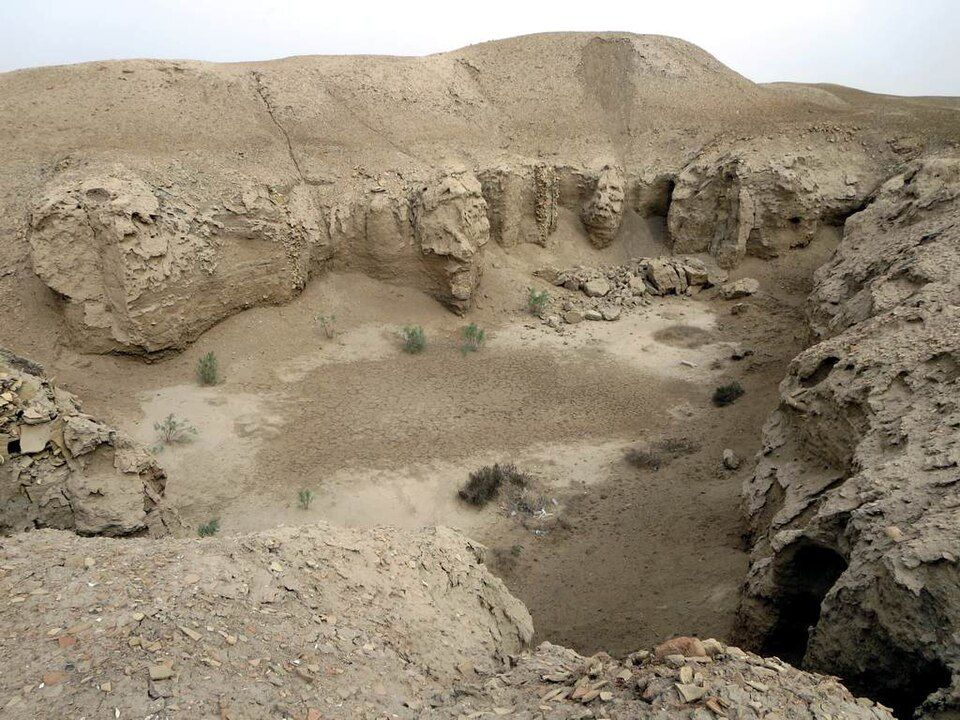
Woolley’s silt lies on top of remains of the Ubaid culture, which archaeologists say ended around 3800 BCE. Hool writes:
We cannot deduce from the laws of nature how the sediments of the Great Flood might look, as the recession of the waters within a few months was clearly also supernatural. However, flood layers do not appear every century, nor even every half a millennium. Thus, a flood layer at the time and place of the Great Flood provides solid corroboration to our Flood date of 3800 BCE, and at the same time suggests that what Woolley discovered may have indeed been the sediments of the last stage of the recession of the Flood waters in Babylon. (p. 75)
6g Rain in the tree rings of 2105 BCE
Hool also looks for the Mabul at 2105 BCE itself, in the tree rings of Europe. On his account, after the Mabul the carbon-14 dates went wrong but the count of tree rings did not. The faster decay pushed the carbon-14 dates of the Mabul’s remains back about 1,700 years, to 3800 BCE. But the trees went on adding one ring a year, so a count of tree rings should find the rain of the Mabul at 2105 BCE.
Hool learns from the Midrash what to look for. The Midrash says that the rain of the Mabul began as a rain of mercy, to give the people one last chance to repent, and that if they had repented it would have become a rain of blessing. Hool writes:
This implies that had they repented, there would still have been relentless rain for forty days and forty nights, only it would have brought blessing. Why would the world need so much rain for blessing? The indication is that the world must have been in a situation of severe drought and thus was in desperate need of such extreme rainfall. (The Flood, p. 11)
If the world was in a drought, the trees of Europe should have grown poorly in the years before 2105 BCE and recovered sharply in that year. Hool finds this in a paper by Mike Baillie, a tree-ring scientist at Queen’s University Belfast, and his colleague Jonny McAneney, which charts six regional tree-ring chronologies of Europe from 2400 to 1800 BCE:
In a scholarly paper on tree chronology in Europe, Mike Baillie and John McAneney show a chart following the mean growth rings of six regional European tree-ring chronologies for the period 2400–1800 BCE. There is a clear downturn in growth around 2200 and a sudden change of pattern and turn to the better around 2105 BCE, continuing with a general trend upward to the end of the graph at 1850 BCE. 2105 BCE is the year of the Flood according to the Torah timeline, and thus the strain of growth on tree rings in the decades leading up to 2105 BCE followed by the sudden change for the better reflects the drought just before the Flood followed by the heavy rainfall that besides bringing destruction indeed brought an end to the drought. (The Flood, pp. 13–14)
So Hool finds the Mabul both in the European tree rings at 2105 BCE and in the carbon-14 dates at 3800 BCE. In his reply to Franco he explains how both dates can hold: “The calculations show that the calibrated carbon dates before the Flood are about 170 times more than they actually are, and thus the 3800 BCE carbon date and the 2105 tree-ring date for the Flood are both right.”
Hool also addresses trees that are still alive and began to grow before 2105 BCE. Methuselah, a living bristlecone pine in California, has rings that scientists count back about 4,700 to 4,800 years, so it began to grow more than five centuries before 2105 BCE. In the same reply Hool writes: “There is no problem with living trees that have tree-rings reaching back several centuries before the Flood since trees were not destroyed in the Flood as indicated in Scripture.”
6h No geological traces
Geologists find no deposits of a worldwide flood at the Torah’s date for the Mabul. Hool answers this in the preface of The Flood:
Academia claims that there are no signs in the geological or palaeoclimatological record of the Great Flood in the time frame stipulated in the Torah. But the claim is doubly flawed. First, the very premise on which scientific dating is based is negated by the Torah itself. … Second, if the Biblical Flood was a natural event, then we would expect to find natural consequences. But it was not. There is no known natural explanation for a sudden downpour of relentless rain for forty days synchronized with a sudden “up-pour” of waters from the depths of the earth, inundating the whole globe, including the mountaintops. There is also no natural explanation for how the waters could disappear completely in the selfsame year that they came. … This was clearly a supernatural event that is described in the Torah where the natural laws of nature were sidestepped. No law of nature can tell us what consequences will take place in a supernatural event, and therefore, the quest for signs of natural consequences of a global flood is futile. (pp. ix–x)
The premise Hool means is that decay has always run at today’s rate.
Hool also explains why scientists find no jump in the level of the sea at the Mabul. Scientists find that the sea, which had been rising since the last ice age, came close to its present level about six thousand years ago. Hool writes that this “takes us precisely up to our Flood date of around 3800 BCE.” Then the Mabul came:
What happened next was indeed a flood like in the days of Enosh, but this time, it was not as a result of further natural melting of ice sheets. Rather, it came as a sudden supernatural flood from non-stop rain as well as a sudden rise of waters from the depths of the earth. This obviously caused a massive jump in the sea level, but in the selfsame year, the Flood waters supernaturally disappeared, leaving the sea level as it was before the Flood. Had the Flood waters stayed for a duration, corals may have begun to grow near the top of sea level, and researchers might have been able to detect the giant leap of sea level at this time. (pp. 54–55)
Scientists trace the past level of the sea by corals, which grow near the surface (p. 44). On Hool’s account, no coral grew at the height of the Mabul’s water, because the water was gone within a year.
The one trace that Hool does expect is the death of everyone outside Noach’s family. He holds that it should appear as “discontinuity and disappearance of civilizations across the globe” (p. x).
6i Cultures ending near 3800 BCE
Hool holds that archaeologists do find cultures ending and settlements abandoned all over the world around 3800 BCE on their calendar. He calls this a “revelation”: “around the carbon date of 3800 BCE, we find evidence of cessation of civilisation across the whole globe.” He calls it a second “revelation” that 3800 BCE is “precisely the period directed by the Torah and Rabbinic Tradition for the Flood date after a scale-down of 170.” In The Flood he goes through the world region by region. In each region he reads the abandoned settlements and the changes in culture as the death of the people who lived there before the Mabul, followed by the arrival of Noach’s descendants:
- In Mesopotamia, archaeologists date the Ubaid culture from about 6500 to 3800 BCE. The Uruk period followed it, in which people built the first cities and, soon after, began to write. Hool quotes the archaeologist Guillermo Algaze, who writes that “the transition between the Uruk and the immediately preceding Ubaid periods was rather abrupt throughout the Mesopotamian alluvium” (pp. 81–82). Hool identifies Uruk with Erech, which Bereishis 10:10 lists among the first cities after the Mabul. He concludes: “The Ubaid culture came to an untimely and abrupt end because of the Great Flood that wiped them out completely, around 3800 BCE” (p. 85).
- In Europe, Hool cites “the sudden cessations of cultures and abandonment of settlements around 4000 BCE” (p. 94). Among them are the end of the Brześć Kujawski culture of Poland, the collapse of the copper-working towns of the Balkans and the end of the Vinča culture of Serbia. (Hool’s sources date the end of Vinča to about 4200 BCE. Hool suggests that the end of Vinča too was “probably a consequence of the Flood at around 3800 BCE but has been dated to several hundred years earlier due to local inaccuracies,” p. 106.) Hool says that the Balkans have no permanent settlements datable between 3800 and 3300 BCE “because there was hardly anyone there” (p. 107). He also writes that “the early hunter-gatherers as well as the early farmers of Europe were all wiped out in the Flood, and therefore, no trace of direct ancestral DNA was passed on to the later populations” (p. 107).
- For the southern Levant, Anatolia and Cyprus, Hool quotes a study as saying that “many sites had been abandoned by ~3900/3800 BCE.” He concludes that the villages of Cyprus, Israel, Lebanon, Jordan and Syria were abandoned “because all their occupants had perished in the Flood” (p. 111).
- For the Sahara, Hool quotes a study as saying that “a major change is suddenly recorded” around 3900 BCE. He attributes the change to “the new population that arose after the Flood” (pp. 112–114).
- In China, Hool writes, five farming cultures “experienced fundamental change or cessation during the early fourth millennium BCE.” He ties this change to “the mass extermination of the people in China at the time of the Flood” (pp. 117–119).
- In India, Hool holds that the Harappan civilization, which built the cities of the Indus Valley, was born of “the new influx of Noahide descendants into India several hundred years after the Flood” (p. 93).
- In Australia, Hool writes, the Maliwawa rock paintings disappear “around 4000 BCE.” He also points to changes in the rock shelters that the repopulation of Australia “would naturally bring about” (p. 127).
- In Korea, Hool writes, the hunter-gatherers “died along with everyone else in the Flood.” He also writes that “the Chulmun Culture were the early descendants of Noah” (p. 123).
- In the Americas, Hool holds that all the earlier Americans, the Clovis people among them, died in the Mabul. He also holds that all living Native Americans descend from a migration across the Bering Strait “shortly after the Flood, around 3000 BCE” (p. 139).
On Hool’s account, then, the people of each region after 3800 BCE descend from Noach’s family and not from the people who lived there before. Geneticists who read ancient DNA can tell whether the later people of a region inherited genes from the earlier ones. Aviyam Franco raised two such studies in his review of The Flood, and Hool answered both.
Franco cited a 2014 study which found that living Europeans descend both from Europe’s hunter-gatherers and from its first farmers. Hool granted that this model of two groups is “compatible with the genetic evidence.” He then pointed to a newer paper: “in the recent 2024 paper, ‘population genomics of post-glacial western Eurasia’, scholars now establish that there was a major population turnover across Europe beginning at around 3000 BCE by the Yamanah related group whose ancestry is unknown.” The group he means is the Yamnaya (“Yamanah” in his spelling), herders of the Bronze Age from the grasslands north of the Black Sea. With this later turnover, Hool keeps his book’s position that the earlier Europeans were replaced.
Franco’s second study concerned the Americas. In The Flood, Hool traces the migration of the ancestors of the Native Americans by a set of stone tools called the Arctic Small Tool tradition. Franco cited a genetic study which found that the makers of those tools, the Paleo-Eskimos, left no descendants among the Native Americans. (The Paleo-Eskimos were an early people of the Arctic, distinct from both the Native Americans and the modern Inuit.) Hool answered: “Archaeological evidence has not established that Arctic Small Tool Tradition was adopted solely by the Paleo-eskimos.” So, on his account, the people who made the tools could still have included the ancestors of the Native Americans.
6j No drop in population
Hool also finds support for his date in estimates of the world’s population. Hool worked out a population of about eight million just before the Mabul. That is close to the scholars’ estimate of seven million around 4000 BCE (pp. 52–53). The demographers’ estimates have no drop at 3800 BCE, and Hool explains why:
Evidently, Noah’s descendants initially multiplied very fast, and thus, the world population after 3800 BCE does not appear to have dropped. We see in Genesis 11 that from Noah onward, new generations occurred every thirty years. Thus, if the early generations had double the number of children, bearing in mind that in those times people lived for hundreds of years and that there was no illness that caused death, the population would have risen once again to close to that of before the Flood in several hundred years. This would not be detected by researchers because population estimates, due to the paucity of information available, are only made with respect to millennium, not centuries. (p. 85)
Hool finds a hint of this growth in the Torah’s wording:
This might be hinted at in the instruction to Noah in Genesis 8:17, “Swarm the land, bear fruit, and multiply,” as opposed to the instruction given to Adam in Genesis 1:28, where it says just “bear fruit and multiply.” This might explain the phenomena of why the Noahides instituted urban civilization. Before the Flood, people dispersed over the whole world, and multiplication was slow both in age of giving birth and number of children born. Therefore, settlements were small and remained small. But right after the Flood, there was evidently a burst in population size, as we see from the fact that by 3000 BCE, estimates of population are given around fourteen million. (The Flood, p. 86)
The same verb, “swarm,” describes Yaakov’s descendants in Egypt (Shemos 1:7), where the Midrash says that the women bore six children at a time (Shemos Rabbah 1:8). Rabbi Pesach Bodenheimer suggested to Hool that the families after the Mabul grew too fast to support themselves alone and had to join together, and Hool takes this as the origin of cities (pp. 86–87).
Hool ties his date to the start of the first cities:
We have now arrived at a date of around 3800 BCE for the time of Flood according to the conventional dating system. This is most fascinating, as this is the very date that the archaeological record stipulates as the birth of urban civilization. Indeed, a careful study of the whole spectrum of the archaeological record reveals that at this time, we find across the globe, large-scale abandonment of settlements, major regions of depopulation and cessation of human activities, and the sudden disappearance of countless cultures and civilizations. And yet, at the same time, we discover evidence of the beginning of a new world of urban civilization. (The Flood, p. 77)
On his account, the people from before the Mabul died out just as the first cities appeared, and the fast growth of Noach’s descendants explains both why the population estimates have no dip and why cities began.
6k The flood stories
Hool also argues that only a real flood explains why so many peoples have flood stories. He draws on a website that counts “over six hundred” flood legends, and he lists stories from Sumer, Babylon, India, China, Greece, Scandinavia, the Americas, Australia and the Pacific. Hool holds that all of them preserve a memory of the Mabul:
No other explanation seems credible to the integration of such an unprecedented and incredibly unlikely cataclysmic event into traditions of so many diverse peoples totally unconnected with each other, other than it being a real event that took place. (p. 8)
6l Summary
- Hool holds that archaeologists find no break at 2105 BCE because their dates for that time depend on carbon-14 alone. He also holds that decay ran faster for centuries after the Mabul, for as long as lives were long. So, on his account, the Mabul’s remains look older than they are.
- On Hool’s count, the Flood of Enosh falls in the year of Adam’s death only if the Mabul’s remains lie at 3800 BCE on the archaeologists’ calendar. With the Mabul at that date, he finds that changes in the level of the sea also fall at Chanoch’s death, fifty-eight years before Noach’s birth (the number of Noach’s name) and 120 years before the Mabul (the years of the decree).
- He takes Woolley’s flood silt at Ur, which lies on the last Ubaid remains, as evidence for the date. He also finds the Mabul’s rain in the tree rings of Europe at 2105 BCE, and he holds that both dates are right.
- Hool finds that around the world, cultures end and settlements are abandoned near 3800 BCE. On his account, the earlier peoples died without passing on their DNA, and Noach’s descendants replaced them.
- He holds that Noach’s descendants multiplied so fast that the population estimates, which are made by the millennium, have no fall.
- He holds that the Mabul was supernatural and left no natural traces except the death of mankind. He also holds that flood stories around the world remember the Mabul.
7. The early humans
Adam was created on the Sixth Day, and on the Jewish calendar his children were born less than six thousand years ago. Scientists date the fossils of human-like species back millions of years, and they date the earliest fossils of our own species, Homo sapiens, to about 300,000 years ago. Even after Hool divides the archaeologists’ dates before the Mabul by his factor of 171, many of these fossils still come before Adam.
So Hool sorts the human-like species into three groups: animals of the Fifth Day, children whom Adam fathered before Shes was born (Adam was 130 at Shes’s birth), and the descendants of Shes. On this sorting, no fully human being lived before Adam.
7a Human-like species
Hool has to find a place for each of the human-like species that scientists have found. Scientists use the word “hominin” for any species on the human side of the split from the chimpanzees. Homo sapiens is the only hominin species alive today. Scientists know the other species from their bones and tools, and they know two of them, the Neanderthals and the Denisovans, from their DNA as well.
- Australopithecus lived in Africa from more than four million years ago to about two million years ago. Its best-known specimen is “Lucy,” a skeleton about 3.2 million years old. Lucy’s species walked upright and had a brain about the size of a chimpanzee’s.
- Homo erectus first appears in Africa about two million years ago. It was the first hominin to spread far beyond Africa, as far as Java and China. It made stone hand-axes and may have used fire. Its best-known skeleton is “Turkana Boy,” which was found in Kenya in 1984 and is about a million and a half years old.
- Homo heidelbergensis, named for a jaw found near Heidelberg in 1907, lived in Africa and Europe a few hundred thousand years ago.
- The Neanderthals are named for the Neander Valley in Germany, where a skeleton was found in 1856. They lived in Europe and western Asia until about 40,000 years ago. They were stocky and strong, with large brains. They made fine stone tools, used fire and buried some of their dead.
- The Denisovans are known mostly from their DNA, which scientists read in 2010 from a tiny finger bone found in Denisova Cave in Siberia.
- Homo naledi was announced in 2015 from hundreds of bones in a deep chamber of the Rising Star cave system in South Africa. It had a small brain and lived about 335,000 to 236,000 years ago.
- Homo floresiensis, known as “the hobbit,” was found on the Indonesian island of Flores in 2003. It stood about a meter tall.
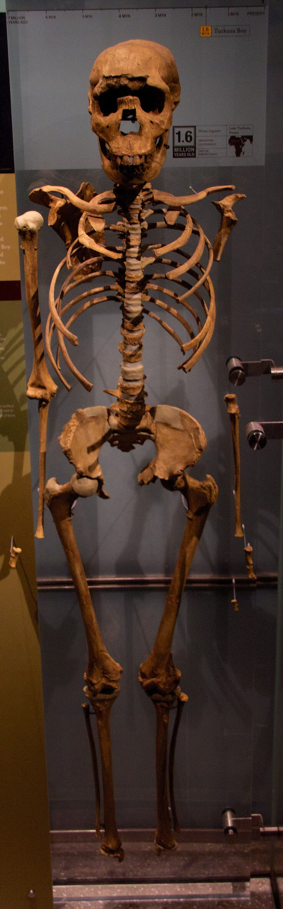
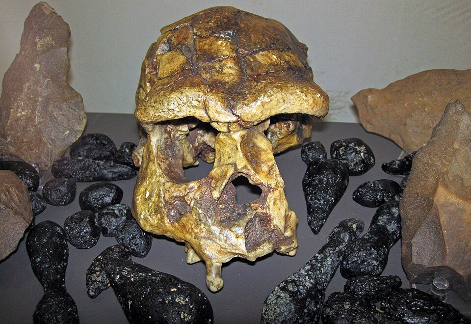
7b Hool’s groups
Hool gives each species a place in the Torah’s history according to its date:
- He holds that the oldest species, from Australopithecus through Homo erectus to Homo heidelbergensis, are animals of the Fifth Day.
- He holds that the species that appear about 300,000 years ago, among them the Neanderthals, are the children whom Adam fathered before the birth of Shes.
- He holds that the descendants of Shes, the beings in Adam’s image, appear about 60,000 years ago.
7c The adnei hasadeh
The oldest human-like species, from Australopithecus to Homo heidelbergensis, are too old to be Adam’s children even after Hool divides their dates. On Hool’s final rule, Creation falls about 289,000 years ago on the archaeologists’ calendar. Homo erectus appears more than a million years before that. So these species lived before Adam, and Hool needs a place for them that is not human.
Hool identifies them with the adnei hasadeh, creatures mentioned in the Mishnah. He writes: “We will discover that hominins can be identified with the adnei ha’sadeh referenced in the Mishnah, which may have indeed formed from primates on the Fifth Day of Creation, and, in line with the previous sections, will therefore naturally appear to be millions of years old” (Six Days 2, p. 201). On Hool’s account the Fifth Day held billions of years, so animals formed on that day can be millions of years old. This lets him accept the scientists’ ages for Australopithecus and Homo erectus without placing human beings before Adam.
Hool needs a creature that resembles a human being but counts in halachah as an animal, and he finds it in the Mishnah, where Rabbi Yose rules that the corpses of the adnei hasadeh convey tumah in a tent “like a human being” (Kilayim 8:5). Hool writes:
The Mishnah in Kilayim 8:5 states that adnei ha’sadeh are a form of animal. Rabbi Yosi says that nonetheless they contract uncleanliness like man. The Rambam, based on the Talmud Yerushalmi, explains that their body appearance was like that of human beings, “Heim chayos domos l’v’nei adam.” He further writes that they had speech similar to humans but that it was incomprehensible. He notes that they were written about extensively in many books of his time. (Six Days 2, p. 209)
The Yerushalmi describes this creature as “a mountain man” that “lives from its navel,” and adds that “if its umbilical cord is cut, it cannot live.” It also speaks of the time “when it grows on the field” (Yerushalmi Kilayim 8:4).
Hool also finds a hint of the adnei hasadeh in Bereishis 1:26. When Hashem proposes to make man, the pasuk says that man will rule over the fish, the birds and the beheimah, “and over all the land” (uvechol ha’aretz), and over the creeping things. Hool asks why “all the land” appears in a list of animals. He notes that the blessing in 1:28, which lists the animals again, does not repeat the phrase. He suggests that “all the land” is short for “masters of the land,” that is, the adnei hasadeh, whose name means “masters of the fields” (p. 209). Hool explains why the pasuk would call them “the land”: the Yerushalmi implies “that at least one species” had its umbilical cord attached to the ground. Alternatively, he suggests, they are called “the land” after a version of the Mishnah that calls them avnei hasadeh, “stones of the field” (p. 210).
7d Tools and fire
Tools and fire look like human traits. So Hool has to explain how animals could make stone tools, as the oldest hominin species did, and how they could use fire, as Homo erectus may have done.
Hool answers that animals make things too. Birds build nests, and chimpanzees, orangutans and capuchin monkeys use stones and sticks to get at food. Hool also notes that stone tools found in East Africa are nearly a million years older than the oldest fossils of anything like a human. Paleontologists think that these tools were made by Australopithecus or Kenyanthropus, which Hool calls “forms of intelligent monkeys” (Six Days 2, p. 210). As for fire, Hool writes that “even if Homo erectus used fire, he was not necessarily human.” His reason is that chimpanzees have shown “the cognitive ability to conceptualize the idea of fire,” and that great apes prefer their food cooked (p. 210).
Since tools and fire do not separate animals from people on his account, Hool draws the line with the three levels of the soul, nefesh, ruach and neshamah, which he takes from the Leshem. Bereishis 7:22 says that the Mabul killed everything that had “the breath of the ruach of life.” The plants survived the Mabul, so Hool reasons that they have no ruach, only a nefesh. Bereishis 2:7 says that Hashem blew a neshamah into Adam, and the Torah never says this of the animals. So Hool infers that animals have only nefesh and ruach, and that the neshamah is what makes a human being. He writes:
Animals who have ruach can not just grow but have the intelligence to form different arrangements of things such as making nests or primitive homes. Tools and control of fire are thus all in the realm of animal life. However, man has neshamah too, and thus he has the intelligence to create new things altogether. (pp. 235–236)
7e Adam’s children before Shes
The species that appear about 300,000 years ago, among them the Neanderthals and the Denisovans, were close to modern humans in body and brain, and the Neanderthals had children with our ancestors. So Hool cannot easily count them as animals. Nor can they be the descendants of Shes. On Hool’s division, the earliest of them arrive about thirty-seven years after Creation, long before Shes was born in the year 130 (The Flood, pp. 46–47). Hool’s answer is that they were children whom Adam fathered before Shes, who were not in Adam’s image.
Bereishis 5:3 says that Adam, at 130, fathered Shes “in his likeness, after his image.” From these words the Gemara infers that in the years before Shes, Adam fathered beings that were not in his image (Eruvin 18b). This gives Hool a category in the tradition for human-like beings who came before Shes.
Hool also cites the Rambam in the Moreh Nevuchim (1:7):
And you already know that anyone who has not achieved this state that we have explained is not a man, but an animal in the shape of a man and his structure. Although he has ability to cause damage and harm unlike any other animals, because the thought processes and intelligence that was destined for him to reach perfection—that was not reached—are then used for purposes of damage and harm as if he were human or the like, and so was the offspring of Adam before Seth. (Six Days 2, p. 220, quoting Moreh Nevuchim 1:7)
Hool also cites the Midrash on Bereishis 3:20, where Adam calls Chavah “the mother of all chai.” The Midrash notes that the pasuk calls her the mother of all living things, not the mother of all people (Bereishis Rabbah 20:11). Hool reads this as including creatures “that were born from her throughout those 120 years after the sin that were not fully human” (p. 221). So on Hool’s reading, the Gemara, the Rambam and the Midrash all speak of children of Adam and Chavah who were not fully human.
Hool writes: “These creatures seem to identify with the various species of Homo sapiens that suddenly appear in the archaeological record” (p. 223). By “these creatures” he means Adam’s children before Shes. By “the various species of Homo sapiens” he means the human-like species that appear about 300,000 years ago: Homo naledi, Homo floresiensis, the Neanderthals and the Denisovans.
Hool finds support for this in the fact that these species appear together, as a family of siblings would. He quotes the open textbook Human Biology, by Sarah Malmquist and Kristina Prescott, which says that many fossil species “represent species of Homo sapiens that died out.” He then remarks that “the appearance of all these different species of Homo sapiens in the fossil record suddenly occurs around 300,000 years ago” (p. 214). On his account, this sudden appearance fits a single burst of children born to Adam before Shes.
7f Neanderthals
Scientists have learned from DNA that the Neanderthals and early modern humans had children together. In 2010 a team in Leipzig led by Svante Pääbo read the Neanderthal genome. They found that people living outside Africa today carry a small share of Neanderthal DNA, now estimated at about two percent. (Many people, especially in Melanesia, the islands of the western Pacific that include New Guinea, also carry some Denisovan DNA.) An animal cannot have children with a person, so Hool needs the Neanderthals to be something other than animals.
Hool takes the identification with Adam’s children to explain this too. He cites Rashi on Sanhedrin 58a, who explains that animals cannot become “one flesh” with man because they cannot have children with people:
The birth of these sub-humans seems to be identified with the sudden emergence of various species of Homo sapiens. This would also explain how they could interbreed with humans. According to Rashi, based on Sanhedrin 58a, animals cannot interbreed with humans… However, these were offspring of Adam and Eve and could therefore interbreed with humans. (Six Days 2, p. 220)
So on Hool’s account these beings were not fully human, because they were not in Adam’s image. But they were Adam’s children, so they could have children with people, which no animal can do.
7g Dividing by 171
The species from about 300,000 years ago are far older than the Torah’s date for Adam. Hool brings them after Creation with his factor, which he refined between the second volume of Six Days and The Flood.
In the second volume of Six Days, Hool uses a factor of 169. He holds that before the Mabul decay ran thirteen times faster and each day lasted thirteen times longer, so the products of decay (isotopes) built up 169 times faster than they do today. Hool writes that “the accumulation of 1800 years would produce the equivalent of about 300,000 years of isotopes,” and he gives the calculation as “(169×1800=304,000)” (Six Days 2, p. 223). The 1800 years are counted from the creation of Adam.
Radiometric dating sets the emergence of the Homo sapiens around 300,000 years ago, whereas the offspring of Adam and Eve were all formed after the Sixth Day of Creation, which took place less than six thousand years ago. However, this problem can be answered, and indeed we are provided with fascinating scientific corroboration to support. … As we saw in chapter 11, radiometric dating traces the radioactive decay of rocks such as uranium that turns into lead at a reliable rate. In order to date ancient rocks by looking at the amount of lead formed, we must assume that the present rate of radioactive decay has been constant throughout history. (Six Days 2, p. 221)
In The Flood, Hool found that at 169 the oldest Homo sapiens fossils, from Jebel Irhoud in Morocco and dated to about 300,000 years ago, still fall 106 years before Creation. So he took the low end of their date range, 280,000 years, and raised his factor to 171.6, which puts them about 37 years after Creation. From then on, he converts every date with his final rule, which counts back from 3800 BCE and divides by 171. On that rule the 1,656 years from Creation to the Mabul equal 283,176 of the archaeologists’ years, so Creation falls at 286,976 BCE, about 289,000 years before the present. Fossils older than that come, on Hool’s account, from before Adam’s creation and belong to the animals of the Fifth Day.
7h Shes’s descendants
On Hool’s account, Shes’s descendants are the beings in Adam’s image, who have a neshamah. To find them among the archaeologists’ finds, Hool looks for the trait that he holds separates humans from animals: the intelligence “to create new things altogether.” He finds it in a burst of new tools, ornaments and art that begins in Africa about 60,000 years ago. So on his account, the first remains that archaeologists can attribute to Shes’s descendants are the remains from that time.
Hool quotes the science writer John Pickrell in New Scientist, who writes that around 50,000 years ago “people began burying their dead ritually, created clothes from animal hides, and developed complex hunting techniques, such as pit-traps.” Hool adds that cave art, jewelry, figurines and the oldest musical instruments appear around the same time, and he calls these “clear signs of cognitive skills of the human race” (Six Days 2, p. 224).
Hool’s main source is the archaeologist Paul Mellars, who wrote in the science journal PNAS in 2006 about sites near the southern tip of Africa. Archaeologists date these sites, Blombos Cave and Klasies River among them, to between about 75,000 and 55,000 years ago. At these sites they found finely made blades, shaped bone tools, and red ochre (a red earth used as paint) engraved with crosshatched designs. Hool takes these as the earliest physical signs of a human neshamah.
The archaeologists also found that people carried high-quality stone for tools, and shell beads, over distances of 20 to 30 kilometers. Among the finds are “large numbers of perforated estuarine shells, evidently used as personal ornaments” (p. 225): small shells with holes bored through them, worn as ornaments. Hool’s summary lists these finds as “the first cognitive signs of the human race” (p. 227).
Hool then fits these 60,000 years into the Torah’s count: “Accordingly, the accumulation of 350 years of isotopes during those times would appear to geologists as the accumulation of about 60,000 years (350×169=60,000).” So the African sites come out about 350 years before the Mabul, which Hool describes as “several hundred years before the Flood” (pp. 226–227). That is around the year 1300 from Creation.
Shes was born in the year 130. Hool explains why his descendants left no trace for so long: the fathers in Bereishis 5 had their sons at around the age of one hundred. So, he writes, “several hundred years would need to elapse before the human race would be sizeable enough to find remnants of their being and lifestyle” (p. 226).
On Hool’s account, these signs appear in Africa because the human race spread out from Gan Eden, where Hashem placed Adam, and the Gemara puts Gan Eden in Africa (Tamid 32b). Hool places Gan Eden in Eritrea.
7i Summary
- The oldest human-like species are older than Adam even after Hool divides their dates. Hool holds that they were animals of the Fifth Day, the adnei hasadeh of the Mishnah. He argues that their tools and fire don’t make them human, since animals make tools too. On his account, only the neshamah makes a man.
- Hool holds that the species that appear about 300,000 years ago, among them the Neanderthals and the Denisovans, were the beings whom Adam fathered before Shes. These beings were not in Adam’s image. Hool finds support in their appearing together, like a family. He also holds that as Adam’s children they could have children with people, which animals can’t do.
- Hool’s factor brings them after Creation, which on his final rule falls about 289,000 years ago on the archaeologists’ calendar.
- On Hool’s account, Shes’s descendants are the makers of the beads, the engraved ochre and the art that appear in Africa about 60,000 years ago. On his scale these finds come about 350 years before the Mabul.
8. The moving continents
Some animals live on only one continent. Kangaroos and koalas live only in Australia, jaguars only in Central and South America, and anacondas only in the basins of the Amazon and the Orinoco in South America. A pair of each had to reach Noach’s Ark, and after the Mabul each pair had to get back home. Hool asks how these animals crossed the oceans to the Ark and back (The Flood, p. 159). His answer is that they did not cross any ocean, because the land moved. He holds that Hashem brought the continents together into one land for the Mabul, and split them apart again into their present places at the dispersion from Bavel.
8a Dry land for the animals
Hool does not have the animals carried across the sea by a miracle, because the Midrash never tells of such a crossing. He writes:
Although we find in the Midrash many miraculous instances of traversing large distances in very short times, such as with Eliezer traveling from Canaan to Haran in one day or the Israelites traveling 120 mil from Ramses to Sukkos in one day, we do not find mention in the Midrash of a miraculous traversing of the ocean with regard to the Flood event. This might be explained by continental displacement. (The Flood, p. 159)
So on Hool’s account the animals that live only on distant continents needed dry land all the way to the Ark and all the way home.
8b Continents that move
For the land to carry the animals, continents have to be able to move. Hool takes this from geology, and he quotes the Encyclopaedia Britannica’s history of the idea. In 1912 Alfred Wegener, a German meteorologist, proposed that the continents had once formed a single landmass, which he called Pangea, and had since drifted apart. Scientists had already noticed that the east coast of South America fits into the west coast of Africa. They had also found the same fossils and the same kinds of rock on continents that are now separated by oceans. Even so, most geologists rejected Wegener’s idea for decades, because no one could explain what force could move a continent.
Geologists found the answer on the ocean floor. A ridge of undersea mountains runs down the middle of the Atlantic from Iceland almost to Antarctica. In the 1950s, scientists who mapped the sea floor in detail found a deep rift valley along the crest of this ridge. In 1962 Harry Hess, an American geologist, proposed that molten rock wells up from below at the ridge and forms new ocean floor. The new floor spreads out on both sides of the ridge and carries the continents apart.
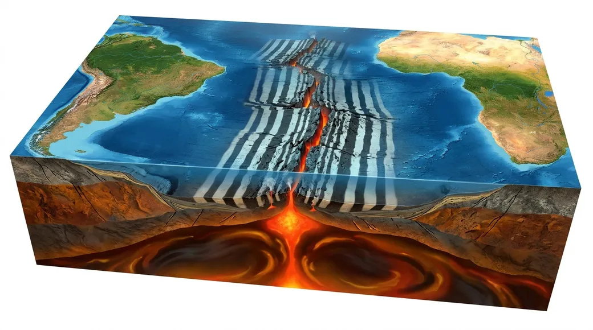
Hool quotes Britannica’s conclusion that “magnetic data from the ocean floor and the relatively young age of oceanic crust supported Hess’s hypothesis of seafloor spreading” (The Flood, p. 161). He also quotes its account of how the moving plates of the Earth’s crust carry the land: “As the plates move away from the flanks of the ridges, they carry the continents with them” (p. 162). Geologists date the breakup of Pangea to about 200 million years ago, when the Americas drifted away from Europe and Africa and the Atlantic Ocean opened. So Hool does not have to propose that continents can move. Geologists already hold that they do.
8c One continent on the Third Day
Hool holds that the dry land began as one continent, and he identifies it with Pangea. On the Third Day the waters gathered “into one place” so that the dry land appeared (Bereishis 1:9). Rabbi Pesach Bodenheimer pointed out to Hool that this wording does not fit continents with oceans between them. If all the water lay in one place, the dry land was one piece. The Torah also calls the dry land eretz, in the singular, and Hool asks why it is not called aratzos, “lands,” if it was already divided as it is today. The water, on the other hand, is called yamim, “seas,” in the plural. Hool explains that the one ocean was destined to break up into many. (The land was also destined to split, but Hool suggests that eretz stayed singular “because the main body of civilization remained,” Six Days 1, p. 107.)
Geologists date the breakup of Pangea to the age of the dinosaurs. Hool puts the dinosaurs near the end of the Fifth Day, which on his account lasted billions of years. So if the land of the Third Day was Pangea, Hool needs it to have split in the last minutes of the Fifth Day, and he finds hints in the Torah that it did.
The Zohar Chadash says that the last three days of Creation complete the first three, as the Sun and the Moon of the Fourth Day complete the light of the First Day. So Hool expects the seas to have been formed on the Fifth Day, completing the division of the waters on the Second Day (The Flood, p. 163). He finds this hinted in the blessing of the Fifth Day, in which the fish are told to fill the waters of the seas (1:22):
Naturally, the waters referenced were the waters of the sea, so why does the Torah need to specify “of the seas”? We can now understand that the verse may mean to hint that at this time, the seas themselves were formed. (The Flood, p. 164)
Hool also ties the breakup to the dinosaurs through fossils. The Britannica passage that he quotes names three fossils that have been found on southern continents now thousands of kilometers apart, and nowhere else (p. 161):
- Cynognathus has been found in Africa and South America.
- Lystrosaurus has been found in Africa, India and Antarctica.
- Glossopteris has been found in South America, Africa, India, Antarctica and Australia.
Geologists take these shared fossils as evidence that the continents were once joined. Hool writes that these fossils “are actually from the family of dinosaurs” (p. 165). So on his account the dinosaurs lived while the land was still one, and the land split after they were created, near the end of the Fifth Day.
8d Joined for the Mabul, split at Bavel
On Hool’s account the land had already split into continents on the Fifth Day, long before Noach. So for the animals to walk to the Ark and home again, the continents had to come together a second time and then split a second time. Hool writes:
With this information that land masses may have been moved during the first Days of Creation, we can go one step further and consider that perhaps at the time of the Flood, the Almighty returned the land to its original state in the form of one big supercontinent. This would enable the animals to get to Noah from all seven continents and return to their natural habitats once again after the Flood. (The Flood, pp. 166–167)
Hool finds the joined land in the account of the Mabul, where the water swelled “on the land,” in the singular, and covered “all the high mountains under all the heavens” (Bereishis 7:19). Hool takes “the land” to be the land where people lived, not the Americas, which on his account no one had yet discovered. But the mountains “under all the heavens” include the mountains of the Americas. Hool asks, “So how did the rain and Flood in Europe and Asia cause the mountains in America to be engulfed?” His answer is that the Americas were then part of the one land (pp. 166–167).
Rabbi Bodenheimer gave Hool a further reason why Hashem joined the land for the Mabul:
The reason the Almighty may have brought the continents back together, as pointed out by Rabbi Pesach Bodenheimer, may not have been solely to enable the animals to get to the Ark, but also because the center of crime was where civilization was, and from there, the punishment was meted out to the whole world. Furthermore, the world might have needed to be returned to its original state to be rebuilt once again. (The Flood, p. 166)
Hool finds the second split in the name of Peleg, “for in his days the earth was divided” (Bereishis 10:25). Seder Olam says that this division was the dispersion from Bavel, at the end of Peleg’s life. Hool reads the pasuk literally: when Hashem scattered the nations, He also split the land. Hool follows Seder Olam for the dispersion and puts it in 1763 BCE (Seder Olam counts 340 years from the Mabul to the dispersion, which from 2105 BCE gives 1765 BCE; Hool rounds the interval to 350), and this is his date for the second split.
Hool reads two more pesukim as describing land that moved. Of the sons of Yavan the Torah says that from them “the islands of the nations separated” (Bereishis 10:5), and Hool reads this to say that the islands themselves drifted away. The Torah also says that the nations “departed in the land” (10:32), and Hool reads this to say that the nations departed with the land under them.
For the split to carry people to the Americas and Australia, people had to be living there before it came. So Hool has Noach’s descendants spread over the whole joined land in the few centuries between the Mabul and Bavel. He finds this in a change in the wording of the blessings. Adam was blessed to “fill the land” (1:28), but Noach was blessed to “swarm in the land” (8:17, 9:7). In Adam’s time, Hool explains, the continents were already apart, so Adam had only to fill the land as it stood. In Noach’s time the land was one continent that was about to split again:
The instruction, therefore, was to swarm the land and spread out over the whole world, including the two Americas and Australia, and to multiply there. In this way, by the time the split came, the whole world was populated, and the continental drift took the people and the animals on the various continents with them. (The Flood, p. 168)
The same split explains, for Hool, how people reached the Americas before Columbus. When Columbus arrived in 1492 he found two million natives there (Six Days 1, p. 121). On Hool’s account their ancestors were living on that part of the land when it split away at Bavel, and “for those living then in North and South America, that meant being cut off from the rest of civilization for thousands of years until Columbus discovered America” (The Flood, p. 167).
8e India
Hool also finds support for the split at Bavel outside the question of the animals. He points to puzzles of history and geography from that time that a sudden movement of the land in 1763 BCE would explain.
One is the land of Kush. The Torah’s Kush, the son of Cham, settled in Africa, south of Egypt, in the region later called Nubia. Hool finds a second land of Kush in India:
With this, we might now be able to explain the existence of two countries of Kush separated by eight thousand kilometers of sea. Kush, the son of Ham, son of Noah, settled in Africa after the Flood. We know from Isaiah 29:10 that Kush was on the border of Egypt, and it is associated with Sudan, called “Kushu” in ancient Persian. Yet, thousands of kilometers away across the ocean, we find another place called Kush in the middle of India! The Encyclopedia Britannica says that “all ancients both poets and historians talk of a double race of Ethiopians; one in India and another in Africa,” and similar traditions can be found in the dress, cuisine, and musical instruments such as the bamboo flute and the tabla [a pair of hand drums] in both places. (The Flood, p. 168)
He adds two more signs of a Kush in India:
- The Hindu Kush mountains bear Kush’s name (Six Days 1, p. 124; The Flood, p. 168).
- Hool writes that the Gemara refers to this Kush in India, in Yoma 26a as Rashi explains it there (Six Days 1, p. 124).
Hool takes from geology that India was once attached to Africa, broke away, and moved north until it struck Asia (The Flood, p. 168). He proposes that India was joined to Africa again between the Mabul and Bavel, so that families of Kush could spread into India in those years. When India broke away at Bavel, it carried part of Kush with it.
Hool also uses India’s breakaway to explain why the Indus civilization faded. He calls it the earliest civilization in the area of the Hindu Kush, and writes that it “flourished up to around 1700 BCE” (the end of the core period that the Encyclopaedia Britannica calls its “nuclear dates”). He then notes that “according to Seder Olam, the Tower of Babel was erected in 1763 BCE” (Six Days 1, pp. 124–125; The Flood, p. 169). Setting the two dates side by side, Hool argues that the Indus cities declined because of the dispersion from Bavel and India’s breakaway from the land of Kush in Africa. He takes their decline around 1700 BCE as historical evidence that the continents split in 1763 BCE.
8f The monsoon and the Egyptian New Year
Hool also uses the split at Bavel to explain why the Egyptian New Year fell in winter in 1692 BCE. The New Year was tied to the flooding of the Nile, and the Nile floods in mid-July because of the monsoon, the season of heavy rains from May to August. Hool suggests that the split changed the monsoon, and with it the time of the Nile’s flood.
The Egyptian civil year had 365 days and no leap day, so it slipped against the seasons by about one day every four years. Its New Year, 1 Thoth, was meant to come with the rising of the star Sirius in mid-July, when the Nile began to flood. (The rising of Sirius is the first morning of the year on which Sirius can be seen just before sunrise.) For this reason the first four months of the year were called the season of inundation, that is, of flooding.
In his earlier book Pharaoh, Hool concluded that in 1692 BCE Sirius rose on the sixteenth day of the eighth month. Sirius rose in mid-July, so 1 Thoth that year fell about seven and a half months earlier, in early December. The season named for the inundation then began in winter, months before the Nile’s flood in mid-July.
The drift of the 365-day calendar would seem to explain this, but Hool holds that the drift is too small. Mitzrayim, the founder of Egypt, was a grandson of Noach, so the Egyptian calendar began after the Mabul. That leaves only about four hundred years between the Mabul and 1692 BCE, and four hundred years of drift moves the calendar by only about a hundred days. So even if the calendar began soon after the Mabul, its 1 Thoth “would not have fallen later than March, several months before the inundation period” (Six Days 1, pp. 125–126). Hool concludes that drift alone cannot explain why a New Year named for the flood fell in December.
Hool notes that “the natural answer” would be a reform of the calendar that moved 1 Thoth several months earlier. But he prefers “a more simple answer”: the breakup of the joined continents changed the monsoon. Monsoon rains come because “in the summer months, the land heats faster than the sea.” The air over the warm land expands and its pressure drops, so moist air from over the sea is drawn inland and brings rain clouds with it.
Fascinating corroboration to the above—that India was attached to Africa at the time of the Flood and broke away to join China at the time of the Tower of Babel—can now be discerned by evidence of a drastic change of the monsoon just around that time. A study of ancient Egyptian astronomical calendar dates indicates that the beginning of the Egyptian year fell at the beginning of December around the year 1800 BCE. This is most strange, as the Egyptian year began with the rising of the Nile, which takes place in mid-July due to the monsoon rains between May and August. December is not the time of the flooding of the Nile. But now we can discern a simple answer. (The Flood, p. 170)
On Hool’s account, the monsoon changed when South America broke away from Africa on one side and India broke away on the other. While the continents were still joined, he suggests, the Nile may have flooded months earlier in the year, and the Egyptians fixed 1 Thoth around December to match it. After the breakup the flood moved to summer, but the fixed 365-day calendar still put 1 Thoth around December in 1692 BCE (Six Days 1, p. 126; The Flood, pp. 169–170). So Hool takes the December New Year of the Egyptian calendar as evidence of the split at Bavel.
8g Summary
- Hool holds that the animals of the Ark needed dry land to come to the Ark from every continent and to go home again, because the Midrash tells of no miraculous crossing of the ocean.
- On his account the land was one continent from the Third Day and broke up at the end of the Fifth Day. Hashem brought it together again for the Mabul and split it again at Bavel, when “the earth was divided.” The split carried people and animals to the Americas and Australia.
- On his account India lay against Africa from the Mabul until the split. This is how Kushites from Africa came to India, and why the Indus cities faded around 1700 BCE.
- He holds that the split changed the monsoon, and that this is why the Egyptian New Year fell in December in 1692 BCE.
9. The Ark at Garni
Hool takes up the question of where the Ark came to rest in an appendix to The Flood. The Yalkut Shimoni says that the Ark survived for thousands of years after the Mabul to testify to what had happened (Beshalach 256), and Hool sets out to find it. The Torah says only that the Ark came to rest on “the mountains of Ararat” (Bereishis 8:4), and does not say which mountains these are. Hool argues that it landed between two mountains at Garni, a village in Armenia, where he sees what may be the Ark’s impression in the walls of a gorge.
9a Mount Tabor and Everest
Hool begins his search on the highest mountain in the world. The water covered “all the high mountains under all the heavens” (Bereishis 7:19), and the Ark came to rest before any mountaintops appeared (8:4–5). So it seems that the Ark rested on the tallest mountain of all. Today that is Mount Everest, in the Himalaya.
But on Hool’s reading the Gemara names a taller one. In Bava Basra 73b, Rabbah gives Mount Tabor as four parsaos, which Hool takes to be its height. Pesachim 94a makes a parsa four mil, and a mil is about a kilometer, so four parsaos come to about sixteen kilometers. That would make Tabor, in Hool’s words, “the highest mountain, at least in the time of the Talmud and very possibly at the time of the Flood.” Hool then has to explain two things: what became of a mountain twice the height of Everest, and why the Mount Tabor in Eretz Yisrael, at the eastern end of the Jezreel Valley, rises only 575 meters above sea level.
Hool answers both questions from Chazal. His sources are Bereishis Rabbah 99:1, on Tabor coming from Beis Eilim to ask that the Torah be given on it, and Megillah 29a, which says that Tabor and Carmel, which came to Sinai only for a moment, were fixed in Eretz Yisrael as a reward. He takes the two together to mean that only a piece of Tabor moved, and he identifies Beis Eilim with the Himalaya:
The Midrash tells us that at the time of Matan Torah, Mount Tabor came from Beis Eilim to request that the Torah be given upon it. The Talmud in Megillah 29a says that as a reward for this request, Mount Tabor was relocated to Eretz Yisrael. What evidently happened was that the mountain in its entirety was not relocated to Eretz Yisrael; rather, just a small section from it was moved, and the rest of the mountain remained in Beis Eilim. It is fascinating to note that the letters Eilim (אלים) can be rearranged to form the word Imalaya (אמלי). Evidently, Mount Tabor from Beis Eilim is none other than Mount Everest from the Himalayas. (The Flood, p. 172)
Hool also sees a hint of Tabor in the Hebrew letters of the name Everest.
That leaves the height. Everest stands about 8.8 kilometers high, and four parsaos, about sixteen kilometers, are nearly twice that. Hool proposes that a parsa measured at sea was shorter than one measured on land, the way a nautical mile today differs from a land mile. Rabbah gives Tabor’s size in his story of the urzila, a day-old animal as large as Mount Tabor, and the stories that follow it in the Gemara open with the words “Once we were traveling in a ship.” So Hool takes Rabbah’s four parsaos as a measure used at sea.
To find the length of a parsa at sea, Hool turns to Chullin 91b, which he reads as giving the sea of Tarshish a span of two thousand parsaos. Following the Malbim, Hool places Tarshish in Spain, at the far western end of the Mediterranean, so the sea of Tarshish is the Mediterranean. The Mediterranean is about four thousand mil long. At four mil to the parsa, two thousand parsaos would be eight thousand mil, twice the length of the Mediterranean. So Hool concludes that a parsa at sea was only two mil. Rabbah’s four parsaos then come to eight mil, which, Hool writes, “is indeed about eight kilometers, just like Everest!” (The Flood, pp. 171–173). On this reading the Gemara’s Tabor is Everest, the tallest mountain at the time of the Mabul, and Everest is the first place to look for the Ark.
9b The dove’s flight
Hool then sets Everest aside because of the dove that Noach sent out: “the dove came to him at evening, and behold, an olive leaf plucked in its mouth” (Bereishis 8:11). Targum Yonasan and the Midrash say that the leaf came from the Mount of Olives. So the dove flew from the Ark to Yerushalayim and back in one day. Hool writes:
There are approximately five thousand kilometers between the Himalayas and Eretz Yisrael. If Ararat was in the Himalayas, the dove would have had to travel ten thousand kilometers in the two-way journey in just one day. Homing pigeons can travel up to 1,000 kilometers at an average speed of approximately 100 km/h, with peak speeds reaching about 160 km/h over short distances. It would therefore not be able to make just the one-way journey even if it flew non-stop at full speed. (The Flood, p. 173)
So the Ark could not have come to rest in the Himalaya.
9c The land of Ararat
To find the land of Ararat, Hool turns to the death of Sennacherib, king of Assyria. Melachim II 19:37 says that Sennacherib’s sons killed him as he bowed to his god, and then fled to “the land of Ararat.” Sanhedrin 96a explains that this god was a plank of Noach’s Ark that Sennacherib had found. Hool writes:
If the Ark was on Mount Ararat in the Himalayas on the border of Tibet with India, how on earth did Sennacherib come across a timber from it and bow down to it in Assyria? Why of all places would his sons flee from Assyria to the Himalayas? Clearly, then, Ararat must be very close to Assyria, yet there are by no means mountains there anywhere like the height of Everest. (The Flood, pp. 173–174)
9d How high the waters rose
Placing the Ark near Assyria leaves Hool with a problem. No mountain near Assyria comes near the height of Everest, yet the Ark came to rest while the highest mountains in the world were still under water. So Hool needs a way for the Ark to rest on a lower mountain.
He finds it in the wording of two pesukim. Bereishis 7:19 says that “all the high mountains” were covered. The next pasuk says that the water rose fifteen amos “and the mountains were covered” (7:20), without the word “all.” Hool reads the two pesukim as speaking of two sets of mountains. The first pasuk speaks of the highest mountains in the world, and the second of the mountains in the area of the Ark. On his reading the water did not stand at the height of Everest all over the world:
…the waters did not rise uniformly across the globe to the height of the tallest mountain; rather, at the point of the tallest mountains, they miraculously rose to engulf them. (The Flood, p. 174)
So the mountaintops that appeared after the Ark came to rest (8:5) were the mountains near the Ark, and the Ark did not need to rest on the highest mountain in the world (pp. 174–175).
Hool adds that this reading also solves a problem with the amount of water. The oceans are about four kilometers deep on average. Covering Everest takes water about eight kilometers deep, and if the water rose that high everywhere, “the volume of Flood waters was more than double the amount of water contained in the entire oceans around the world” (p. 174). On Hool’s reading the water rose that high only around Everest.
9e Cudi, Durupinar and Ararat
Hool then takes up the sites in this region that others have proposed for the Ark, and rejects each one.
Mount Cudi stands just inside Turkey’s border with Iraq. Hool describes the tradition attached to it:
There is an ancient Assyrian tradition that the Ark came to rest on Mount Cudi in Anatolia, just inside the Turkish border separating it from Iraq and west of the river Tigris. At the top of the mountain, there is a man-made stone structure in the form of a ship. The locals call it “the ship of Noah,” believing it to have been built in the place where the wooden ark once stood. In the past, there have been pilgrimages made to the site each year to commemorate the Flood. Although this area is in fact close to Assyria, there are several serious problems with this identification. (The Flood, p. 176)
Hool rejects Cudi for two reasons (p. 175). The province that is still called Ararat today, in Armenia, lies about three hundred kilometers northeast of Cudi. And Cudi is not the highest mountain in its region. The Ark came to rest before the tops of the mountains around it appeared, so Hool reasons that it rested on the highest mountain of its region.
The Durupinar site, in eastern Turkey about fifty kilometers from the present-day province of Ararat, is a boat-shaped rock formation that some have promoted as the remains of the Ark. Hool cites a 1996 paper by Lorence Collins, a geologist, and David Fasold, a nautical engineer who had himself explored the site in 1985 as the possible Ark. Their paper concluded that the formation is natural rock. Hool also notes that the formation is not the size of the Ark. Fasold measured it at 164 meters long. That is about nine meters shorter than three hundred amos on the Chazon Ish’s measure of the amah (173 meters), and twenty meters longer on Rav Avraham Chaim Naeh’s (144 meters). The width does not match either. And “as with Mount Cudi, this site is not the highest in the region” (pp. 175–177).

That leaves Mount Ararat, the great volcano in eastern Turkey, where most searches for the Ark have looked. Hool calls it “clearly the highest mountain in the region” (p. 177), so it meets his rule that the Ark rested on the highest mountain of its region. Hool quotes a review of the search by Anne Habermehl, written for a creationist conference in 2008, which reports that every claimed sighting of the Ark on Mount Ararat has lost its credibility sooner or later. But Hool rejects Mount Ararat because of the wording of the pasuk and the Targum. The pasuk says “mountains,” in the plural, and Targum Yonasan says that one of the two mountains later became a city. As Hool puts it, “The snow-topped ‘Mount Ararat’ is not exactly the place to establish a city” (pp. 180–181).

9f Between two mountains
Hool reads the plural “mountains of Ararat” (8:4) to say that the Ark rested between two mountains:
The verse does not actually say that the Ark rested “on Mount Ararat,” nor does it say that it landed “on one of the mountains of Ararat.” Rather, it says that it came to rest “on the mountains of Ararat.” This implies that it either perched on or became wedged between two mountains or came to rest on a shallow wadi between two peaks that might constitute being part of both mountains. (The Flood, pp. 180–181)
Targum Yonasan names the two mountains, Kardunia and Armenia, and says that the city of Armenia was later built on one of them. The Targum says nothing about what became of the other mountain, so Hool infers that it stayed bare (pp. 180–181).
With the Ark between two mountains, Hool qualifies his reading of the second set of mountains in 7:20. He writes that “we need not look for the tallest mountains in the region of Ararat because the tops of the mountains mentioned later that became revealed after the Ark came to rest may be referring to the very two mountains upon which the Ark landed” (p. 181).
Hool then searches satellite images of the province of Ararat for the place:
In sum, we need to identify a site in Armenia, within the province of Ararat, that features two level peaks close together—one with a built-up area and the other barren. (The Flood, p. 181)
Hool finds the place at Garni, a village east of Yerevan, the capital of Armenia:
However, along the northern border of the province of Ararat, there seems to be a site that fits the glove. A major village called Garni, with a population of almost seven thousand, is situated on a flat mountaintop, and its history goes back 2,800 years to the very beginning of the Armenian state. The Garni Canyon separates Garni from an adjacent barren rocky mountain range. At one point in the canyon, next to a site called “the Symphony of Stones,” the canyon is shallow, and the adjacent peak is very close—less than 150 meters away—and reaches a height slightly further north that seems to be level with the Garni peak. (The Flood, p. 182)
9g The hollows at Garni
Hool finds it “fascinating to note” that the walls of the gorge at Garni have two hollows that may be the impression of the Ark. On the Garni side is a pear-shaped hollow that comes to a point at the bottom and is about 25 meters wide at the top, “a size that fits the width of the Ark.” On the other side is an almost identical hollow, “evincing the shape of a stern and bow of a giant ship” (p. 182). Hool also mentions that a tourist attraction in Garni, next to the history museum and a few hundred meters from the site, is called “Noah’s Garden.”
As for the wooden Ark itself, Hool writes that he “scoured the area but could not see what might appear to be remnants of the Ark.” An earthquake struck the area in 1679, and Hool writes that “this might have buried it, or perhaps it has been dismantled” (p. 182). He also finds a hint that the Ark was gone long ago. The Yalkut Shimoni, after saying that the Ark was left for thousands of years to testify to the Mabul, says that Lot’s wife’s pillar of salt “still remains until this day.” It does not say the same of the Ark. So Hool suggests that the Ark was gone by the time the Midrash was compiled, which would explain why no wooden remains are found at Garni today.
9h Summary
- Hool first looks for the Ark on the highest mountain, because the water covered the highest mountains before the Ark came to rest. On his reading, the Gemara’s Mount Tabor is a piece of Everest. It is four parsaos high, which comes to eight kilometers with the shorter parsa used at sea.
- The dove flew to the Mount of Olives and back in one day, which for Hool rules out Everest. Sennacherib found a plank of the Ark, and his sons fled to Ararat, so Hool holds that Ararat lay near Assyria.
- Hool holds that the water rose to the height of the highest mountains only where those mountains stood, so the Ark could rest on a lower mountain.
- Hool rejects Mount Cudi because it is far from the province still called Ararat and is not the highest mountain in its region. He rejects the Durupinar site because the study he cites found it to be natural rock, and Mount Ararat because it is no place for a city.
- On Hool’s account the Ark rested between two mountains, one of which later became a city while the other stayed bare. Garni and the bare peak across its gorge fit this description, and the walls of the gorge have two hollows, one of them as wide as the Ark.
10. Gan Eden at Nabro
Hool places Gan Eden beside a volcano called Nabro (he spells it Nabru) in Eritrea, a small country on the African coast of the Red Sea, just across from Yemen. The Red Sea runs between Africa and Arabia, from the Sinai Peninsula south to the Bab el-Mandeb, the strait where the Horn of Africa and Yemen nearly touch. Hool also places the first descendants of Shes, whom he finds in Africa about 60,000 years ago, near Gan Eden. Four rivers flowed out of Gan Eden, among them the Tigris and the Euphrates, so to put Gan Eden in Eritrea Hool also has to explain how these rivers could flow out of it.
10a Alexander at the gate of Gan Eden
Hool’s first clue to where Gan Eden lies is a story in Tamid 32a–32b. In the story, Alexander the Great crosses the Mountains of Darkness and reaches Africa. There he finds a spring whose water smells of Gan Eden, follows the spring to the gate of the garden, and asks to be let in. He is refused, and is given a man’s eyeball instead. The Gemara also brings the view that Gehinnom lies beyond the Mountains of Darkness. So Hool concludes that Gan Eden and the gate of Gehinnom are both in Africa (Six Days 1, p. 132).
10b The Torah’s “east”
To find where in Africa Gan Eden lies, Hool turns to pesukim in which the Torah speaks of “the east” without saying east of what. Avraham sent the sons of his concubines “eastward, to the land of the east” (Bereishis 25:6), and Yoktan’s sons settled as far as “the mountain of the east” (10:30). In one place the Torah does say east of what: Kayin was exiled “east of Eden” (4:16). Hool argues that in the other places too, “the east” means east of Gan Eden.
He reaches this through Avraham’s “land of the east”:
A crucial verse in Genesis 25:6 seems to hold the key. The verse says that Abraham sent the sons of the concubines away from Isaac, “eastward to the land of the east.” This appears tautological, as surely if they went eastward they would be going to the land of the east. The verse can’t mean “to the land of the Far East” because one of the sons of the concubines was Midyan, whom we know from our previous study Searching for Sinai, who settled in Saudi Arabia, not too far away from Mount Sinai. Evidently, what the verse means is that Abraham sent them away from Isaac to the land that was east of something else. (Six Days 1, p. 131)
Avraham was already in Eretz Yisrael, so the place cannot be Eretz Yisrael. Hool argues that the only other candidate is Gan Eden, since the Torah places Kayin’s exile “east of Eden.” Following the rule that an unclear pasuk is learned from a clear one (lilmod stama min hamefurash), Hool reads “the mountain of the east” as east of Eden as well.
10c Between Shinar and Yemen
Hool narrows the place further with the builders of the Tower. Bereishis 11:2 says that they traveled “from the east” to Shinar, the plain between the Tigris and the Euphrates where they built the Tower. Rashi explains that they came from “the mountain of the east” of 10:30, and Hool reads “the east” here as east of Eden too. Once the builders reached Shinar they were no longer in the east, so at least part of Shinar lies west of Gan Eden. Putting the pesukim together, Hool concludes that Gan Eden lies east of part of Shinar and west of the mountain of the east (Six Days 1, p. 134). He goes on:
The land of Shinar and ancient Babylon has been known throughout the ages as being situated between the Euphrates and the Tigris. Most of that area is located to the east of Africa. However, there is one small part that indeed lies west of a small section of Africa. This directs us to the small eastern corner of Africa encompassing what is known as the Horn of Africa. However, to the east of the Horn of Africa lies the Indian Ocean and no land—let alone a mountainous region. But just north of the Horn to its east, just across the tip of the Red Sea, lies Yemen (Teiman) at the far south of Saudi Arabia, and indeed, along its western front lies a mountainous region. (Six Days 1, pp. 134–135)
So Hool identifies the mountain of the east with the mountains of western Yemen, and he finds support in the names of places there:
- One of Yoktan’s sons was Hazarmaveth, and the Midrash says that he was named for the place where he lived (Bereishis Rabbah 37:8). Hool identifies Hazarmaveth with the region of Hadramawt in Yemen.
- Hool derives “Sephar,” the mountain of the east in 10:30, from the Aramaic safar, “shore,” because the mountains stand “just off the shore of the Red Sea” (p. 134).
Hool concludes:
Accordingly, we can determine that the Garden of Eden must lie right next to the tip of the Red Sea opposite Yemen. In this way the Garden of Eden will be to the west of Yemen, and also east of part of the land of Shinar. This directs us to the very small section of Africa opposite Yemen, comprising of Eritrea and part of Ethiopia. It is also fascinating to note that on the southwest corner of Yemen lies the city of Aden, possibly named because of its location opposite Eden. (Six Days 1, p. 136)
Hool asked his brother Doniel to search this area on satellite images, and Doniel found that it is volcanic. Hool takes the volcanoes as a reminder of the fires of Gehinnom, whose gate the Gemara places near Gan Eden (p. 135).
10d The navel of the world
Hool also finds that this corner of Africa lies at the navel of the world, which is where the Arizal locates Gan Eden (Eitz Chaim 2:37b). Nabro lies about 13 degrees north of the equator. Hool writes that “the navel of the body lies at roughly 4/7 of the body and, indeed, our location—around 13 degrees above the equator—lies at precisely this ratio between the South and North Pole” (Six Days 1, p. 135). (Measured from the South Pole, 13 degrees north is 103 of the 180 degrees between the poles, or roughly 4/7 of the way.)
Hool adds that the area lies midway, from north to south, across the inhabited land, which stretches from Greenland to the far south of South America. He links this midpoint to the Zohar’s statement that Gan Eden lies south of Yerushalayim at a central point.
10e The Tigris and the Euphrates
The Torah names four rivers that flowed out of Gan Eden (Bereishis 2:10–14). Two of them are well known: the Chidekel is the Tigris, which flows east of Ashur, and Peras is the Euphrates. Both the Tigris and the Euphrates rise in the mountains of Turkey, far from Eritrea. So Hool explains that both rivers flow underground from Gan Eden and come to the surface in Turkey.
Hool finds support for this in Shabbos 65b, where Rav says that when rain falls in Eretz Yisrael, the great witness to it is the Euphrates. Hool reads this to mean that the Euphrates swells in Bavel whenever rain falls in Eretz Yisrael. But the Euphrates flows southeast from Turkey to Bavel and never comes near Eretz Yisrael. Hool explains that the Euphrates runs underground from Gan Eden, passes beneath Eretz Yisrael, and comes up in Turkey. “The rainfall in the Holy Land evidently filters through to the underground flow of Peras and becomes recognizable by the swelled banks of the Euphrates following the onward journey to Babylon” (Six Days 1, pp. 135–136).
Hool also notes that the Torah gives “the name” of three of the rivers, but says only “the fourth river is Peras.” He explains that the other three would later be called by other names, while Peras would always be Peras (p. 138).
10f The Nile and Gichon
That leaves Pishon and Gichon. The Zohar calls Pishon “the river of Egypt,” and Rashi identifies Pishon with the Nile. But Hool takes the Nile to be Gichon (pp. 138–139). Gichon encircles the land of Kush (Bereishis 2:13), which lay on Egypt’s southern border, and the Nile flows through Kush. Hool also writes that Rashi takes the name Gichon from the root “to gnaw,” which fits a long, winding course, and he notes that at about 4,160 miles the Nile is the longest river in the world.
To answer Rashi’s identification of Pishon with the Nile, Hool cites Eleh Masei by Rabbi Dan Schwartz, which says that nil meant “river” in ancient Egyptian. On this reading, when Rashi calls Pishon the Nile, he means only that it was a river. So Pishon can be another river.
10g Pishon and Wadi El-Arish
Hool identifies Pishon with Wadi El-Arish, which runs north across Sinai to the Mediterranean. He starts from the Zohar’s name for Pishon, “the river of Egypt.” The same words mark the border of the land promised to Avraham (Bereishis 15:18). Hool argues that this river cannot be the Nile:
This cannot be referring to the famous River Nile that runs through the center of Egypt, because, if so, it would be the land of eleven nations not a land of the ten nations, since Egypt is not listed as one of the ten. (Six Days 1, pp. 138–139)
So “the river of Egypt,” and with it Pishon, was a river on Egypt’s border.
To find which stretch of Egypt’s border Pishon ran along, Hool turns to Havilah, the land that Pishon encircles (2:11). Bereishis 25:18 says that Yishmael’s sons lived “from Havilah to Shur, which is before Egypt.” Hool reads this to say that the border of Egypt beside Havilah lay opposite Shur, so Pishon lay opposite Shur as well. Targum Yonasan identifies Shur with Chalutzah, in the northern Negev (pp. 139–141). But no river runs there. Hool writes, “There are no rivers in the area—just the desert and arid terrain of the Sinai Peninsula! However, the truth of the matter is, we shouldn’t expect to find a river there.”
Hool explains the missing river from the Torah’s two names for this border. Bereishis 15:18 calls it a nahar, a river. Bamidbar 34:5 calls it nachal Mitzrayim, “the wadi of Egypt,” and a wadi is a streambed that holds water only after rain. So Hool concludes that Pishon was a flowing river in Avraham’s time and had dried up by the end of the forty years in the desert (pp. 139–140). He finds the drying up in the Zohar, which says that the wisdom of Egypt came from the waters of Pishon until it was decreed that Egypt’s wisdom would end, and the waters from Gan Eden were held back.
Hool gives these reasons to identify the wadi of Egypt, and with it Pishon, as Wadi El-Arish:
- Rav Saadia Gaon, the Kaftor VaFerach and the Radvaz identify the wadi of Egypt with Wadi El-Arish.
- Hool cites Rashi on Yehoshua 13:3 as placing the wadi of Egypt beside Azah.
- The ancient site of Chalutzah, which Targum Yonasan identifies with Shur, lies opposite El-Arish.
- Makkos 9b implies that the distance from the southern border of Eretz Yisrael to Chevron equals the distance from Chevron to Shechem. Hool says that the distance from El-Arish to Chevron matches, so El-Arish lies where the Gemara puts the southern border.
10h Pishon under the Red Sea
Wadi El-Arish is only a few hundred kilometers long, four or five times shorter than the Tigris and the Euphrates. Hool finds this odd for the river that the Torah lists first. He answers that the Torah lists the rivers in order of how close to Gan Eden each one comes to the surface:
The Nile flows from south to north and begins close to our location. The Tigris flows from north to south beginning in northern Turkey. The Euphrates does the same but begins further north. Evidently, they all stemmed from the Garden of Eden underground. Following in this pattern, the River Pishon, which is listed first, would have begun to flow over ground quite close to the Garden of Eden. Evidently, the reason we can’t see any signs of the riverbed is because it ran from south to north along what is now the Red Sea until the Wadi El-Arish. (Six Days 1, pp. 141–142)
On that course Pishon would have been about as long as the other rivers.
For Pishon to run along the bed of the Red Sea, the Red Sea cannot have been there at Creation. Hool writes:
Indeed, scientists have ascertained that the Red Sea was not there from Creation but was formed after the movement of underground plates that caused the Horn of Africa to separate from Saudi Arabia, allowing the Indian Ocean to spill into the crack between them. Evidence of this can be seen by taking note of the symmetry between the two sides of the Red Sea. (Six Days 1, pp. 141–142)
Hool connects the late formation of the sea with its name, Yam Suf, “the End Sea”: it may be called this because it was the last sea to be formed, and it may also be the “last sea” of Devarim 11:24 (p. 142). In The Flood he proposes that the Red Sea formed on the Sixth Day, after Adam and Chavah were sent out of Gan Eden (The Flood, p. 166).
10i The splitting of the sea
On Hool’s account the Red Sea formed where two plates of the Earth’s crust pulled apart. In The Flood he suggests that the movement of these plates also split the sea at yetzias Mitzrayim. He finds this in the wording of the Torah, which tells Moshe to split the sea (Shemos 14:16):
Knowledge that along the basin of the Red Sea may lie the ridges of two tectonic plates allows us to ponder if perhaps plate tectonics were employed in the splitting of the Red Sea further north at the time of the Exodus. Indeed, the verse says that Moses was instructed to split the sea, which implies that the actual basin of the sea was split. Although the verse also says later that the waters were split, that might be referring to the breakup of the water molecules on the wet mud mentioned first (cheravah) turning it into dry land (yabashah). (The Flood, p. 166)
10j Havilah
Pishon encircles “the whole land of Havilah, where the gold is” (Bereishis 2:11–12), so Hool looks for Havilah along Wadi El-Arish. Yishmael’s sons lived “from Havilah to Shur,” and Hool has already placed Shur at Chalutzah. Going inland from the coast, Wadi El-Arish winds southeast, and then, opposite Chalutzah, turns southwest. So Hool identifies Havilah as the land inside that bend, encircled by the wadi (Six Days 1, p. 144). He finds support in the Zohar on Bereishis 13:10, which he reads as saying that Egypt was fertile because Pishon lay on its “right.” In Tanach the right side means the south, so on Hool’s reading the Zohar puts Pishon south of Egypt (pp. 144–145).
Tanach never tells of gold brought from Havilah, although Shlomo sent ships as far as Ophir for gold. The Torah singles out the gold of Havilah as good, and the Gemara says that Shlomo refined the gold for the Beis HaMikdash a thousand times (Menachos 29a). Hool suggests that Shlomo left the gold of Havilah where it was, so that it would be ready for the Third Beis HaMikdash (p. 145).
10k Ophir and Sheba
Hool also uses Pishon to explain how Shlomo knew that there was gold in Ophir. Melachim I 9:26–28 says that Shlomo built ships at Etzion Gever, on the Yam Suf near Eilat, and that the sailors of Chiram, the king of Tyre, brought back 420 talents of gold from Ophir. The queen of Sheba brought Shlomo another 120 talents (10:10). Hool puts Ophir and Sheba on the Arabian coast of the Red Sea (p. 147). His reason is that Ophir, Sheba and Havilah are all names of Yoktan’s sons, whose land he has placed along that coast, from Sinai to Yemen. On Hool’s account the Red Sea runs along the old bed of Pishon, and he writes:
King Solomon evidently realized that the proximity of the River Pishon with Havilah, the land of gold, and the goldmines of Sheba was not coincidental. He therefore deduced that Ophir, which also lay on the coast of the Pishon, had gold and precious stones there, too. (Six Days 1, p. 148)
10l The Cherubim
Hool identifies the two Cherubim at the gate of Gan Eden with the angels “Aza and Azael” (whom the Gemara in Yoma 67b calls Uza and Azael), and he places them by the Gulf of Aden, the arm of the sea between Yemen and the Horn of Africa. After Adam was sent out, Hashem stationed the Cherubim and the flaming, turning sword east of Gan Eden (Bereishis 3:24). Rashi explains that these Cherubim were angels of destruction. Hool links them to “the sons of God” of Bereishis 6:2, whom he takes to be angels who came down and married women. Yoma 67b names two of these angels, and Hool writes that Rashi calls them angels of destruction too.
Hool then cites the Zohar, which says that Uza and Azael are chained in “the land of the east,” where Avraham sent the sons of his concubines, and that there they teach sorcery. The Zohar also calls this place “the mountains of the east,” which is where Bilaam came from (Bamidbar 23:7). Hool has already placed the mountain of the east by the Gulf of Aden, just east of Gan Eden, where the Cherubim stood. So he concludes that “the two Cherubim were none other than Aza and Azael.”
Hool cites Rashi that Aza and Azael came down in the days of Tuval-Kayin, long after Adam was sent out of Gan Eden. So Hool explains who kept people out of the garden in the meantime. On his account it was Kayin, who lived “east of Eden”:
Evidently, while Cain was still alive and “lived in the land of wandering to the east of Eden,” he prevented people from entering the Garden of Eden. But when he died and there was no longer anyone to ward off intruders, the Angels of Doom were sent down to stand guard at the entrance, and it is there that they teach the witchcraft of the east. (Six Days 1, pp. 155–157)
10m Satellite images of Nabro
Hool sees the events of Bereishis in the craters of Nabro and the coast around it. His brother Doniel found Nabro, east of Lake Afrera, while searching the area on satellite images. The volcano has a patch of greenery at its center and a larger outer volcano around it. Hool describes these figures in the craters and along the coast (pp. 158–160):
…each one with uncanny and extraordinary reflections of what happened in those early days of Creation—as if the events of the Torah have been etched into the surroundings. The outer volcano takes the shape of the profile of the head of a man looking to the left, with a protrusion coming out of his forehead reminiscent of Cain and the horn placed as a sign on his forehead, as stated in Midrash Rabbah. The ground of the inner volcano just above the greenery appears to take the shape of the profile of the head of a woman, looking to the left, with her hair fashioned in a Victorian-like head bun. (Six Days 1, pp. 158–159)

- In the wall of the inner volcano he sees the head and shoulder of a man lying down, with his face bashed in and one eye. He takes the man for Hevel, whom Kayin killed, and connects the eye with the eyeball that Alexander received at the gate of Gan Eden.
- He takes the man with a horn on his forehead for Kayin, with the sign of Bereishis 4:15 as the Midrash describes it.
- He takes the woman with her hair in a bun for Chavah, whose hair Hashem braided, as the Gemara teaches (Shabbos 95a).
- Beside the woman he sees an animal with its legs cut off and a long tongue, placed as if it is talking to her. He takes it for the serpent.
- The Red Sea divides at the top into two arms, which end at Suez and at Eilat. He sees it as a double-sided sword with the two Cherubim at its top. The volcano lies just west of the sword’s tip.
- Hool writes, “The whole of Saudi Arabia to the east of the Red Sea takes the shape of a giant leg, symbolic of the land of wandering” (p. 160). By the land of wandering he means the land east of Eden to which Kayin was exiled (Bereishis 4:16).
10n Summary
- Alexander found the gate of Gan Eden after reaching Africa. So, for Hool, the garden is in Africa.
- Hool holds that the lands that the Torah calls “the east” lie east of Eden, and he finds these lands in Arabia. So on his account Eden is in the Horn of Africa, at Nabro, which lies at the “navel” of the world.
- For Hool, Gichon is the Nile, and Pishon ran north along what is now the bed of the Red Sea to Wadi El-Arish and dried up after Avraham’s time. He holds that the Tigris and the Euphrates flow underground from Gan Eden and come to the surface in Turkey.
- He holds that the Red Sea formed when the plates of the Earth’s crust pulled apart, and suggests that the plates split the sea again at yetzias Mitzrayim.
- He places Havilah in a bend of Wadi El-Arish, and Ophir and Sheba on the Arabian coast of the Red Sea, along the old bed of Pishon.
- He holds that the Cherubim are the angels Aza and Azael, who were posted near the Gulf of Aden when Kayin died.
- In satellite pictures of the volcano and the coast he sees Hevel, Kayin, Chavah and the serpent, a sword in the shape of the Red Sea and a leg in the shape of Arabia.
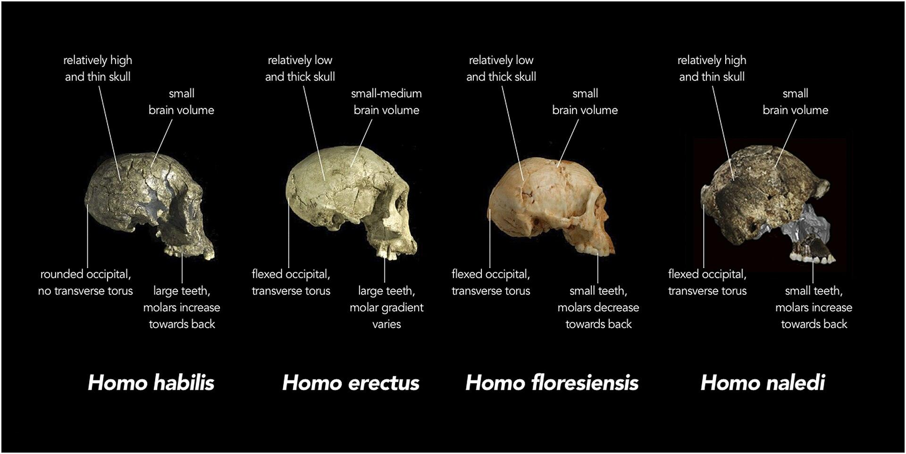
Part Three
The reply
A summary of the problems
Hool’s system rests most heavily on two numbers: the date he gives the remains of the Mabul on the archaeologists’ calendar, 3800 BCE, and the factor of 169 by which he divides their dates for the years before it. More of the evidence bears on these two than on any other part of his system, and Hool calls the ten matches that support the factor “the central thrust of the book” (in his reply to an earlier review of The Flood). If both are wrong, his theory loses the date around which The Flood surveys the ancient world, and it loses the ten matches as well. The reply therefore starts with them and works down to the claims that less of the evidence touches.
Faster decay after the Mabul cannot move the Mabul’s remains to 3800 BCE, and human history and human family lines run on without a break across both 3800 BCE and 2105 BCE.
- A laboratory dates a sample by matching the carbon-14 left in it with counted tree rings, and those rings went through the same decay as the sample, so faster decay cannot move a calibrated date.
- Between 3800 BCE and 2105 BCE scientists count 1,695 tree rings and 1,695 yearly layers of ice.
- In his reply to Franco, Hool keeps both dates, so he puts the Mabul at two tree rings that grew 1,695 years apart.
- The reigns of Egypt’s kings run on from about 3100 BCE through 2105 BCE, and radiocarbon dates on short-lived plants from each kingdom agree with those reigns to within a few decades.
- Geneticists find that the later people of each region descend from people who lived there before 3800 BCE, and Hool’s regional sources describe peoples who lived on past that date.
- Living people carry at least six maternal lines and two paternal lines from before 3800 BCE. The Ark carried at most four women (Noach’s wife and the wives of his three sons) and one paternal (Y-chromosome) line, so more ancient family lines survive than could have passed through the Ark.
Hool’s ten matches between converted dates and events in the Torah would work with a wide range of factors, so they are no evidence for 169, and the tree rings from before his Mabul lost carbon-14 at the ordinary rate.
- Most of the events Hool matches are whole lifetimes, each spanning about a hundred thousand of the archaeologists’ years, and for three of the ten matches (the two bows and the count of two million people) he names no event in the Torah at all.
- Six of his seven matched dates land on their events with any factor from about 90 to 240. The seventh, the first Homo sapiens, falls after Creation only because Hool took a date near the bottom of its measured range.
- In counted tree rings from before Hool’s Mabul, the carbon-14 drops by about one ordinary year of decay from each ring to the next, not by 169 years.
- On Hool’s factor the first villages and towns fall in Kayin’s lifetime, while Hool writes that the whole world wandered as long as Kayin lived.
- Neither the Tikkunei Zohar nor the Leshem says that the days before the Mabul were thirteen times longer, and that thirteen is one of the two that Hool multiplies to get 169. In The Flood Hool writes that “the Tikkunei Zohar does not specify how much longer the days were,” and he takes the thirteen from the length of people’s lives instead (p. 40).
Laboratory measurements rule out Hool’s split between “fundamental time” and “general time”. To fit 13.8 billion years of radioactive decay into the six days, Hool needs decay to keep its own rigid time while the Sun’s day stretches.
- Physicists have measured decaying muons, atomic nuclei and atomic clocks in fast motion and in strong gravity. Muons decay by the weak force, the same force that drives the decay of carbon-14, and atomic clocks run on electromagnetism, which Hool puts on the same clock as radioactive decay. Every one of them slowed down by the amount that relativity predicts, so decay slows along with everything else.
- Clocks run by gravity and clocks run by radioactive decay give the same number of years for periods that fall inside Hool’s Fifth Day, although on his account they should disagree enormously. The cycles of the Earth’s orbit counted in Triassic lake beds in New Jersey agree with uranium dates on volcanic ash of the same age in Arizona, and the pieces of an asteroid that broke up 8.3 million years ago, traced back along their orbits, match the age of the sea-floor mud that holds its dust.
Fossils and the physics of the Sun contradict Hool’s Fifth Day of 13.8 billion years, in which the Earth turned only once.
- A fossil shell from within that span has about 372 daily growth layers for each year, over more than nine years of growth, and older corals have about 400, so the Earth was turning hundreds of times a year during Hool’s Fifth Day.
- Hool puts the Sun in the sky on the Fourth Day, before those 13.8 billion years. Scientists who measure the sound waves that travel through the Sun find that its core has been burning for about 4.6 billion years, so the Sun did not exist for the first nine billion years of Hool’s Fifth Day.
Hool counts the older human species as animals or as children of Adam born before Shes, and his dates and sources do not allow either.
- Even with their dates converted by Hool’s rule, several of the lines he counts as Adam’s children are older than Adam, among them the people of the Sima de los Huesos in Spain and the small people of the island of Flores.
- The maternal and paternal lines of the Neanderthals and the Denisovans join ours before Hool’s date for Adam.
- Shell beads from Bizmoune Cave in Morocco, the kind of sign Hool counts among the first of Shes’s line, date to at least about 350 of his years before that line begins.
- In the Gemara and the Midrash that Hool cites, the beings born to Adam before Shes were spirits.
Hool holds that living things developed by programs the Creator built into them, except Adam, the winged insects, the dinosaurs, one set of birds and every species of flowering plant, which he makes separate creations. Genetics and botany contradict him on Adam and on the flowering plants.
- Geneticists find the same accidental changes at the same places in the DNA of people and of apes, which biologists explain as inherited from a common ancestor.
- Botanists have watched new species of flowering plants form from other flowering plants.
Hool moves the dinosaurs and the meat-eating land animals to the Fifth Day and exempts them from the Mabul, and both the Torah and the fossils contradict this. He needs the move because paleontologists date fossils of land animals to millions of years ago, while he treats the Sixth Day as an ordinary day.
- The Torah says that every animal on dry land died in the Mabul, and that the animals entered the Ark two by two.
- Paleontologists find plants in the stomachs of dinosaurs, which Hool makes of water alone, and kosher animals, which he puts on the Sixth Day, in rocks millions of years old.
Hool joins the continents into one land for the Mabul, so that the animals could walk to the Ark and home again, and splits them at the dispersion from Bavel, within the 350 years he counts between the two. Geology does not allow this, and joined land would not have brought every animal home. (Seder Olam’s count gives 340 years.)
- The floor of the Atlantic has been opening without a break for 180 million years.
- India was already part of Asia when the Indus cities were built, and Hool’s dates for Bavel and for a rising of the star Sirius recorded in Egypt reverse the order in which scientists date the end of the Indus cities and that rising.
- Even on joined continents the koala, which eats only eucalyptus leaves, would have crossed thousands of kilometers where no eucalyptus grows.
- People were translating between languages centuries before the end of the Indus cities, which Hool makes the event of Bavel: the scribes of Ebla kept word lists to translate between Sumerian and their own language, and a man in Mesopotamia held the post of interpreter of the language of Meluhha.
Hool chooses Garni in Armenia for the Ark by ruling out the other candidates, but his figures favor Mount Cudi, which he rejects.
- With Hool’s flight range for a homing pigeon, a dove could reach the Mount of Olives from Mount Cudi but not from Garni, and at his own average speed neither round trip fits between morning and evening.
- Hool rejects Mount Cudi by the border of an Armenian province formed in 1995 and by a rule about height that he later drops.
Hool places Gan Eden beside the Nabro volcano in Eritrea and has the Pishon run along the bed of the Red Sea in Avraham’s time, but the Red Sea was already a sea then, and the river’s route does not work.
- Even with dates converted by Hool’s equations, scientists find creatures of the open sea in the Red Sea from before the Mabul through Avraham’s time, and Egyptian ships sailed from Khufu’s harbor on the Red Sea before Bavel. On Hool’s route the river would also have had to climb more than 1,300 meters from the southern tip of Sinai to the head of Wadi El-Arish.
- By Hool’s two readings of “the east,” Gan Eden would have to lie west of Midyan and east of Bavel, and no place does.
- Rashi identifies the Pishon with the Nile.
Across the separate claims:
- Hool’s answers depend on one another, and each chain of answers ends with a step that the evidence, the Torah or one of his rules contradicts. On the date of the Mabul he brings two factors of thirteen, a second speeding-up of decay, a pulsing Sun and a Mabul split across two tree rings, and human history still runs on without a break at both 2105 BCE and 3800 BCE. On the age of the land animals’ fossils, his account ends with meat-eaters that the Torah says died in the Mabul. On the koala’s journey home, it ends with an Atlantic floor that took 180 million years to open.
- Even if his faster decay is granted in full, methods that do not use radioactive decay give the same long ages: the reshuffling of DNA in 150 ancient genomes from 3800 to 3000 BCE, the genome of Denisova 11, the neon-21 that cosmic rays made in the meteorites of the Thorsberg quarry, the energy of the spin and orbits of the Earth and the Moon, the light echoes of the star V838 Monocerotis, the water masers of the galaxy NGC 4258 and the microlensing survey OGLE. Within radiocarbon itself, his rules require a starting amount of carbon-14 equal to 1,050 times the mass of the Earth.
- Hool’s books contradict one another on several matters. They treat some statements of Chazal and the Rishonim as physical facts and set others aside, with no rule for deciding which describe physical events (Chazal and the Rishonim treat most of the Mabul year as natural), so his citations of these sources cannot independently support his account.
- For the water of the Mabul and the Ark his books fall back on miracle, yet he counts natural traces as evidence for the miraculous Mabul. His preface names one sign of the Mabul that should still be found, the death of everyone outside the Ark, and historians and geneticists find dynasties, settlements and regional family lines running on across both of his dates.
- Hool’s books leave many of the problems in Part Four unanswered, among them the yearly layers in polar ice and lake mud, the heat and saltiness of the Mabul’s water for the fish, the cold along the sloth’s route, the people of Tasmania, the dates of the Philistines and Chazal’s solid rakia.
How each fix creates the next problem
Hool’s answers come in chains. An answer solves one problem but creates a new one, the new problem needs a further answer, and that answer creates another problem. At the end of each chain the problem it started with is still there. Three examples are the chains that start from the date of the Mabul, from the age of the land animals’ fossils, and from the koala’s journey to the Ark and back.
The date of the Mabul
The first chain begins with Hool’s date for the Mabul. Hool counts the Torah’s years back from the destruction of the Second Temple, which he places in 70 CE. That count puts Creation in 3760 BCE and the Mabul, in the year 1656 from Creation, in 2105 BCE (The Flood, pp. 6–7). (He counts the year of Creation as the first year, so 2105 is 3760 minus 1,655.) The Torah says that everyone outside the Ark died in the Mabul. But archaeologists find towns, kingdoms and cultures that went on through 2105 BCE without a break. Hool states the problem. On the archaeologists’ dates, he writes, the human record
…appears to negate categorically the mass extermination of mankind in the year 2105 BCE. (The Flood, p. 21)
Hool also sets out a second problem. Archaeologists date the first farming tools, the first herded sheep and the first people of our own species to thousands and hundreds of thousands of years before 2105 BCE, but the Torah puts Creation only 1,656 years before the Mabul (pp. 29–36). So Hool has to fit hundreds of thousands of the archaeologists’ years into less than seventeen centuries.
Archaeologists date these remains by radioactive decay, for example by measuring how much carbon-14, a radioactive form of carbon, is left in them. Hool’s answer to both problems is that radioactive decay once ran faster than it does today, so the archaeologists’ dates for early times come out too old. He begins with the years before the Mabul. To turn the idea into a calculation, he needs a figure for how much faster decay ran, and he takes it from the long lives before the Mabul. People then lived about 900 years, and today they live about 70, so Hool reasons that life was about thirteen times more stable. He cites a definition of radioactive decay as an unstable atomic nucleus breaking into smaller, more stable pieces (p. 38). He then proposes that this process of becoming stable also ran about thirteen times faster (p. 42).
A factor of thirteen is too small. Archaeologists date the earliest people of our own species to 300,000 years ago. Divided by thirteen, that is still about 23,000 years, and only 1,656 years passed between Creation and the Mabul. So with a factor of thirteen, the earliest people are still more than twenty thousand years older than Creation.
Hool therefore adds a second factor of thirteen, for longer days. The Leshem derives from the Tikkunei Zohar that the days before the Mabul were longer than ours. The Tikkunei Zohar gives no number, so Hool assumes that those days were thirteen times longer, to match the lives that were thirteen times longer. He also notes that according to the Tikkunei Zohar the world before the Mabul was run by the thirteen attributes of mercy, which are counted in the Haggadah’s song “Who knows thirteen?” Days thirteen times longer and decay thirteen times faster give 13 × 13, or 169, years of decay in each year before the Mabul (pp. 40–42).
Even at 169, the oldest fossils of our own species still fall 106 years before Creation. Hool writes that “this number could not be possible” (p. 46). So he changes both the age of the fossils and his factor. He cites the age of the fossils as 314,000 years, give or take 34,000, and takes the bottom of that range, 280,000 years. He also raises each thirteen to 13.1, for both the lives and the days, which brings the combined factor to 171.6. With these changes the fossils fall inside the 1,656 years before the Mabul (p. 47).
The new factor has to fit Hool’s other matches too. Chazal say that in the days of Enosh, Adam’s grandson, the ocean rose and flooded a third of the world (Sifrei Devarim 43, and Rashi on Bereishis 6:4). Hool matches this flood of Enosh to a rise of the sea that scientists date to about 128,000 BCE. With the factor at 171, that rise falls in the year 920 from Creation. Hool wants it to fall at Adam’s death, in the year 930, because he holds that Adam’s merit held the flood back while Adam lived, as Mesushelach’s merit held back the Mabul. So the rounded factor of 171 misses this target by ten years (and 171.6 still lands in 922, eight years early).
To move the flood of Enosh by those ten years, Hool keeps radioactive decay running fast for several centuries after the Mabul. He reasons that people still lived long lives in those centuries, so decay still ran faster (p. 50). Faster decay after the Mabul makes the archaeologists’ date for the Mabul earlier, and that moves the flood of Enosh to Adam’s death. Hool writes that this sets “the conventional BCE date for the Flood at around 4000 instead of 2105 BCE” (pp. 50–52), and he puts the remains of the Mabul at 3800 BCE on the archaeologists’ calendar. So a correction of ten years for the flood of Enosh moves the Mabul by 1,695 years.
Moving the remains of the Mabul to 3800 BCE moves Hool’s other matches with them. The Torah calls Yuval the father of all who play the kinnor (4:21), which Hool renders “harp.” Hool’s source dates the oldest harps, which are known from paintings in Egyptian tombs, to about 3000 BCE, and Hool counts them as Yuval’s work before the Mabul (pp. 30–31, 43). But 3000 BCE is 800 years after 3800 BCE. With the Mabul at 3800 BCE, the harps come 800 years after the Mabul.
When this was pointed out to him, Hool kept the match. He writes that “no one expects to find the harp of Jubal,” and that the 3000 BCE harp was less than 800 years after the 3800 BCE carbon date “because of the higher rate of decay after the Flood.”
Faster decay cannot shorten those 800 years. A calibrated carbon date is the year of the counted tree ring with the same carbon-14 left in it, so the 800 years are 800 tree rings that grew after the Mabul, and on Hool’s account each of those rings is one ordinary year. The Egyptian kings’ recorded reigns give the same span (Egypt’s counted reigns; the harp). So the harps come 800 real years after the Mabul, centuries after Yuval.
The tree rings themselves are the next problem, because scientists count more than twelve thousand yearly rings, one ring to a year. Hool proposes that before the Mabul the Sun “pulsated more energy than normal,” so that each year “actually contained many cycles of seasons” (p. 158), and a tree grew many rings in one year. He gives no number for the pulses.
The pulsing Sun does not fit the carbon-14 in the rings. Across the rings from before Hool’s Mabul, scientists find that the carbon-14 drops by about one ordinary year of decay from each ring to the next. If decay ran about 170 times faster, the trees would have had to grow about 170 rings a year to keep that drop at one ordinary year’s worth per ring. That is a new ring about every two days. (Changes in the air before the Mabul cannot make up the difference, as 1.3 and 2.2 explain.)
Hool needs the pulsing Sun again for a second problem with radiocarbon. Scientists turn a radiocarbon reading into a calendar date with the calibration curve, which sets the carbon-14 left in each counted tree ring against the year of that ring. Suppose that the rings before 2105 BCE grew one a year and that each of those years held 169 years of decay. Then, going back from 2105 BCE, each ring would hold about 2 percent less carbon-14 than the ring after it, against about a hundredth of a percent for an ordinary year. The curve would bend sharply at 2105 BCE and drop steeply before it. The real curve has no such cliff.
Asked why the curve has no cliff at the Mabul, Hool answers that no cliff is expected “before 2105 BCE.” He gives three reasons: the rate of decay after the Mabul, the air before the Mabul, and “the rate of seasonal years before the flood.”
The first two reasons cannot remove the cliff. Faster decay after the Mabul takes the same share of carbon-14 from every ring that grew before the Mabul. That lowers the whole older part of the curve, but the drop between one ring and the next stays as steep as it was. The air before the Mabul cannot explain the missing cliff either, if the trees grew one ring a year. On that assumption the 3800 BCE ring would have had to start out as more than 99.8 percent carbon-14 to have as much left today as scientists measure (see 1.3). That would be air in which almost every carbon atom on Earth was radioactive and almost none was ordinary carbon-12, which is impossible. So Hool’s reply still needs trees that grew many rings a year. His reply also treats the 2105 BCE tree ring as the ring of the Mabul, although he puts the remains of the Mabul at 3800 BCE.
On Egypt, Hool answers that the fast decay had ended by 3800 BCE, so that “the Egyptian dates tie in admirably with the thesis.” But on the Egyptian dates, King Djoser built his pyramid about 550 years before 2105 BCE, and Egypt’s kingdoms went on through 2105 BCE. Historians get those dates by adding up the reigns recorded by Egyptian scribes. Scientists who radiocarbon-dated plant remains from each kingdom against counted tree rings got the same dates within a few decades (see 1.4). For Egyptian history from its first king to fit after a Mabul in 2105 BCE, both of these separate counts would have to be about a thousand years too long.
Hool’s reply also says that the carbon date of 3800 BCE and “the 2105 tree-ring date for the Flood are both right.” But a calibrated carbon date is the calendar year of the matching tree ring (see 1.1). If both dates are right, the Mabul is at two tree rings that grew 1,695 years apart, and the same Mabul of one year happened twice, nearly seventeen centuries apart.
This chain began with the finding that mankind’s history runs on through 2105 BCE. To get around it, Hool added two factors of thirteen (each later raised to 13.1), a second period of faster decay after the Mabul, a Sun that pulsed many times a year, and a Mabul placed at two different tree rings. After all of these, the first problem is still there. Archaeologists, historians and geneticists still find settlements, royal dynasties and the same regional ancestry continuing through both 2105 BCE and 3800 BCE (1.4 to 1.8).
The land animals’ fossils
The second chain begins with the fossils of land animals. The Torah says that Hashem made the land animals on the Sixth Day, which in Hool’s scheme was an ordinary day, 5,787 years ago. By the rule that Hool sets out in The Flood for converting the archaeologists’ dates, nothing made on the Sixth Day can date older than about 287,000 BCE on their calendar (see 7.3). But paleontologists date fossils of land animals to millions of years ago. Even Hool’s faster decay before the Mabul cannot bring those fossils into the Sixth Day.
Hool begins with the dinosaurs. His Fifth Day holds billions of years, so he moves the dinosaurs out of the Sixth Day and has them made from the waters on the Fifth:
Dinosaurs, having the basic makeup of birds and crocodiles, were also made from the waters on the Fifth Day. (Six Days 1, p. 97)
This creates a new problem. If the dinosaurs were made on the Fifth Day with the fish and the birds, why did the fish and the birds survive while the dinosaurs died out? Hool answers that in Bereishis 1:22 the fish and the birds were blessed to be fruitful and multiply, while “the dinosaurs were not blessed with proliferation like the fish and the birds” (p. 99).
Paleontologists also date fossils of lions, horses and snakes, which are not dinosaurs, to millions of years ago. So Hool widens his answer to cover them. Pirkei d’Rabbi Eliezer says that on the Sixth Day Hashem brought clean and unclean domestic animals out of the ground, but it mentions only clean wild animals. From that omission Hool concludes that some land animals “at least must have been included in the animals created on the Fifth Day from the waters” (Six Days 2, p. 166).
Now Hool needs a rule to tell which land animals were made from water and which from earth. He takes it from Bereishis 1:30, where Hashem gives plants as food to the animals of the earth and does not mention meat-eaters. On Hool’s reading, the meat-eaters came from the water, the plant-eaters from the earth, and the animals that eat both from both. By this rule, he writes, plant-eaters “have not existed for more than 5782 years” (p. 184).
But paleontologists date fossils of plant-eaters to tens of millions of years ago, far older than the 287,000 BCE limit of Hool’s conversion rule. For these fossils Hool offers two answers. An ancient plant-eater may have eaten some meat as well, which would make it an omnivore. Or it may have been made partly from water, though its “composition of water might be very small” (p. 185), so that it still ate only plants.
Both answers break Hool’s rule. If eating some meat makes an animal an omnivore, then sheep are omnivores too, because sheep have been seen eating meat, as have the deer that Hool counts as omnivores (see 7.3). A plant-eater made of earth and water goes against Hool’s summary of his categories, in which plant-eaters come from the earth alone, meat-eaters from the waters, and omnivores from both (p. 185). Neither answer helps with the dinosaurs. Hool makes them of water alone, yet his first volume calls the sauropods, the largest dinosaurs, “herbivorous” (Six Days 1, p. 82; see 7.3).
Hool’s account of the Mabul brings the next problem. The Torah says that everything on dry land died (7:22). Hool’s meat-eaters lived on dry land, so this would include them. Hool answers that the decree fell only on the animals made from the earth (pp. 170–172). But even if they were spared the decree, the land animals made from water still had to live through a year of flood. So Hool writes that “those animals were given unlimited access to enter the Ark” (pp. 169–170), and that “not just two of each kind came, but any amount came, or even that all of them came” (p. 170).
To keep lions and wolves out of the rules of the Mabul, Hool then has to read four later passages so that each of them leaves the meat-eaters out. They are the covenant after the Mabul, the fear of man that the Torah puts on the animals, and two prophecies, in Hoshea and in Yechezkel (pp. 173, 184, 188, 192–193).
So to explain the age of the land animals’ fossils, Hool sorts the animals by what they eat, adds plant-eaters that fit none of his own categories, exempts the meat-eaters from the decree of the Mabul, lets them into the Ark without limit, and rereads four later passages. At the end of the chain his account still goes against the Torah, which says that everything on dry land died in the Mabul and that the animals entered the Ark in fixed numbers. It also goes against his rule, which makes plant-eaters of earth alone, while he has to make ancient plant-eating dinosaurs and mammals partly or wholly of water.
The koala
The third chain begins with the animals that live far from Ararat and had to reach the Ark and go home again without a miracle. Koalas and kangaroos live only in Australia, jaguars only in Central and South America, and anacondas only in South America, and Hool has to bring them to the Ark and back (The Flood, p. 159). He rules out a miraculous crossing of the ocean, because the Midrash never mentions one. Instead he joins all the land together for the Mabul:
The Almighty returned the land to its original state in the form of one big supercontinent. (The Flood, p. 166)
The continents are apart today, so in Hool’s scheme the land had to split again. The Torah says that in the days of Peleg the land was divided (10:25), and Seder Olam identifies this division with the dispersion from Bavel. Hool reads the pasuk as a split of the continents, and he puts the split at the dispersion, 350 years after the Mabul (pp. 167–168).
A split at Bavel creates a new problem. The Torah gathers all mankind in one plain at Bavel, but Hool needs people already living in the Americas and Australia before the split cut them off. Hool reads Noach’s blessing to mean that “by the time the split came, the whole world was populated” (p. 168). He holds that the people of the Americas were then “cut off from the rest of civilization for thousands of years until Columbus discovered America” (p. 167). So Hool has to spread mankind over the whole world before the event at which, according to the Torah, they were spread over the world.
The split at Bavel brings other problems as well. The Torah’s Kush is in Africa, south of Egypt, but Hool also finds a second Kush, in India. So Hool adds that “India may have been attached once again to the bottom of Africa” (p. 169) between the Mabul and Bavel, so that Kush’s descendants could walk there. He also says that when India broke away, the cities of the Indus valley disappeared (p. 169).
Keeping the continents joined until Bavel also makes Hool change his account of the Egyptian calendar. The first four months of the Egyptian year were named for the yearly flood of the Nile, which comes in summer with the monsoon rains. In his earlier book Pharaoh, Hool dated an Egyptian scribe’s record of the rising of the star Sirius to 1692 BCE, and concluded from it that the Egyptian new year fell in early December that year (Six Days 1, p. 125). The Egyptian calendar had only 365 days, so its new year moved back through the seasons by one day every four years. Hool counts only about four hundred years between the Mabul and 1692 BCE, which moves the new year by only about a hundred days. So even if the Egyptian calendar began right after the Mabul, its new year “would not have fallen later than March” when it began, months before the summer flood of the Nile (Six Days 1, p. 126). Hool’s answer is that the continents were still joined when the calendar began, which changed the monsoon so that the Nile flooded earlier in the year (Six Days 1, p. 126; The Flood, pp. 169–170). So his split of the continents also makes him rewrite the climate of the ancient world.
To get the animals of Australia and South America to the Ark and back, then, Hool joins the continents and splits them again within 350 years, spreads mankind over every continent before Bavel, attaches India to Africa, and moves the monsoon. But geologists find that the floor of the Atlantic has been opening without a break for 180 million years (see 8.1). So the continents were not joined at the time of the Mabul.
Even on joined continents, the koala could not make the trip. A pair of koalas would have had to walk from Australia to Armenia and back, across thousands of kilometers where nothing that koalas eat grows. Eucalyptus grows wild only in Australia, New Guinea and a few islands of Indonesia and the Philippines (see 8.6). So the koalas would still need a miracle to feed them on the road. Hool joined the continents only to avoid a miracle that the Midrash does not mention. If the koalas need a miracle anyway, joining the continents gains nothing.
Joining the continents also solves only a small part of the problem it was meant for. A road over land lets the animals walk to the Ark and back. It does not explain why each group walked to the one place where it lives now. Kangaroos, koalas and wombats live wild only in and around Australia, and the bones of their extinct giant relatives are found there too, and nowhere along the road from Ararat (item 17.2). Hawaii was never joined to any continent, yet at least 750 species of land snail lived there, nearly all of them found nowhere else, and a snail cannot swim across an ocean (item 17.3). Hawaii has no native frogs, salamanders, snakes or lizards, and its only native land mammal is a bat. Zoologists find the same on other islands far out in the ocean: only animals whose ancestors could cross the sea (item 17.4). A land bridge would have let snails, frogs and kangaroos walk anywhere, so joined continents do not explain why each group lives in one place only.
Measurements that don’t use decay
Even if each of these chains held together, Hool’s main answer is faster radioactive decay, and faster decay affects only unstable atoms. It cannot change the many measurements in Part One and Part Three that do not use radioactive decay at all.
The first of these is human genetics. In every generation the chromosomes recombine. This shuffles the parents’ DNA and cuts the stretches that relatives share into shorter pieces, at a rate set by births, not by the decay of atoms. Geneticists find far more generations in ancient DNA than Hool’s short timeline allows. If decay after the Mabul slowed down steadily, the archaeologists’ 3000 BCE falls at most 157 real years after the Mabul (see 2.6). That leaves time for only about five or six generations between the Ark and Egypt’s First Dynasty. But in 150 ancient genomes dated to 3800–3000 BCE, people share more than ten times less identical DNA than ten chromosomes from the founders in the Ark would leave behind (see 1.5). Farther back, geneticists who studied the genome of an ancient bone known as Denisova 11 found two separate events of interbreeding between Neanderthals and Denisovans in one family tree. That takes more generations than Hool’s span before the Mabul allows (early humans; see 5.2). So inheritance alone, without any radioactive dating, rules out Hool’s short timeline.
Geologists have clocks that do not use decay either. At the Thorsberg quarry in Sweden, geologists measured neon-21 inside meteorites that fell into limestone on an ancient sea floor in the Ordovician period. While a rock travels through space, cosmic rays make neon-21 in it at a steady rate, and neon-21 is stable and does not decay. So the amount of neon-21 in each meteorite gives the time that it spent in space, with no radioactive clock involved. From the difference between meteorites in higher and lower beds, scientists work out that the limestone took about 900,000 years to settle (the meteorites in Swedish limestone).
Hool’s model also needs large changes in the spin and the orbit of the Earth, which his books never explain. The Earth’s spin would have had to speed up from a day before the Mabul that was thirteen times longer than ours to a day of 24 hours. The Earth’s orbit would have had to move outward after the Fifth Day. Both changes need huge amounts of energy of spin, energy of orbit and angular momentum, and Hool does not say where they came from (see 2.5; 4.1; 4.5).
Astronomers measure distances far beyond a universe six thousand years old by plain geometry, without redshift or radioactive decay. They time the light echoes around the star V838 Monocerotis, which are rings of the star’s light reflected off the dust around it, spreading outward (the evidence from light and distance; see 3.2). They also follow beams of radio waves from water molecules (called masers) orbiting the black hole in the galaxy NGC 4258 (see 3.2; 4.5).
Hool’s proposal about dark matter also fails without any use of radioactive decay. For twenty years the OGLE survey has watched for the brief brightening of a background star that happens when an unseen object passes in front of it. These observations rule out dark planets the mass of Jupiter as most of the dark matter of the Milky Way (see 4.5).
Where radiocarbon is involved, Hool’s arithmetic runs into a physical limit that no change in the ancient air can get around. Take one milligram of carbon with the share of carbon-14 that scientists measure in the 9001 BCE tree ring. To have that share after 5,201 years of decay at 169 times today’s rate, it would have had to start with about 1,050 times the mass of the Earth in carbon-14 (see 1.3).
None of these measurements changes when the rate of decay changes. So faster decay, the center of Hool’s theory, leaves all of them where they were, and it leads to impossible amounts of carbon-14 under its own radiocarbon rules.
1. The date of the Mabul
The Torah’s count puts the Mabul in 2105 BCE, and archaeologists find the towns, kingdoms and cultures of that year carrying on through it. Hool accepts both, so he argues that the Mabul’s remains are misdated. In his account, radioactive decay ran faster for several centuries after the Mabul (The Flood, p. 50), so seeds, wood and bone from the year of the Mabul lost more carbon-14 than today’s rate predicts, and laboratories date them about 1,700 years too early, to about 3800 BCE. He did not work out the year 3800 BCE from any rate of decay. He chose it because with it his rule for converting dates puts a rise in the sea of about 128,000 BCE in the year of Adam’s death, which is when he holds that the Flood of Enosh came (pp. 51–52). Near 3800 BCE he finds cultures ending all over the world and reads their end as the death of their people. He also finds the Mabul’s rain in European tree rings at 2105 BCE, and in his reply of 9 November 2026 to Aviyam Franco’s review he wrote that “the 3800 BCE carbon date and the 2105 tree-ring date for the Flood are both right.”
Hool’s full argument is in Part Two ↑
The account fails on these points:
- Faster decay cannot change a calibrated radiocarbon date, because the date is the year of the counted tree ring with the same carbon-14 left, and faster decay would have taken the same share from that ring.
- The 1,695 tree rings and layers of ice between 3800 and 2105 BCE are ordinary years: counts made separately on three continents and in Greenland agree, and Hool gives the trees one ring a year after the Mabul.
- Hool’s answer that both dates are right puts the one year of the Mabul at two tree rings 1,695 rings apart, and each of the two rings costs him something his account needs.
- Egypt’s kings were counting their reigns in writing a thousand years before 2105 BCE, and radiocarbon dates from Egypt agree with those counts.
- Ancient DNA shows that in Europe, the Americas, the Land of Israel, China, Australia and southern Africa, the people who lived after 3800 BCE descend from the earlier people of the same region.
- The archaeologists Hool quotes describe the cultures that end near 3800 BCE as changing over centuries while their people lived on.
- Eight survivors cannot account for the towns of 3700 BCE, for the mothers’ and fathers’ lines from before 3800 BCE that are still alive, or for how little DNA the people of the next centuries share.
- Hool’s other evidence, the flood mud at Ur, a drought in European tree rings and the world’s flood stories, does not point to a worldwide flood at 3800 BCE.
1.1 Faster decay doesn’t move a radiocarbon date
Hool holds that radioactive decay ran faster than it does today for several centuries after the Mabul. He ties the speed of decay to the length of people’s lives. Before the Mabul people lived about 900 years, and today they live about seventy, so he holds that life before the Mabul was about thirteen times more stable (p. 38) and that radioactive decay ran faster in the same proportion. (Combined with days that he holds were thirteen times longer, this gives his factor of 169; p. 42.) People still lived long lives for some centuries after the Mabul, so Hool reasons that decay was still running fast in those centuries too:
We find in the period before the Flood that just as the stability of life was greater, the rate of radioactive decay was also proportionally higher. It therefore follows that for several hundred years after the Flood, the rate of radioactive decay may have also been higher than the present rate in the same way the stability of life was higher. What this means is that any archaeological evidence dating to the Flood in 2105 BCE may appear to be hundreds of years earlier according to conventional dating because it does not take into account the higher rate of decay in the period following the Flood. If we would know exactly how many years earlier, we would then know in which conventionally dated period we should expect to find evidence of the Flood. (The Flood, p. 50)
A seed that grew in 2105 BCE would then have lost more carbon-14 than today’s rate predicts. Finding too little carbon-14 in it, a laboratory would date it about 1,700 years too early, to 3800 BCE.
Faster decay cannot move a calibrated date, because a laboratory does not work out the date from the rate of decay. It looks for the counted tree rings that have the same amount of carbon-14 left in them as the sample, and gives the sample the year in which those rings grew. Whatever faster decay took from the seed, it also took from the tree ring that grew in the same year. So the seed and its ring still match, and the laboratory still dates the seed to 2105 BCE.
1.1a How a sample is dated
A laboratory’s first result, the radiocarbon age, is a standard reading and not a calendar date. Every laboratory computes it with the half-life of 5,568 years that Willard Libby, the chemist who invented radiocarbon dating, measured in the 1940s. The true half-life is closer to 5,730 years, but keeping Libby’s figure puts all readings on the same scale. (A half-life is the time it takes for half of the carbon-14 to decay.) To turn the reading into a year, the laboratory uses the calibration curve, which gives the carbon-14 left today in counted tree rings of every year, and finds the years on the curve that have the same amount of carbon-14 left as the sample (how calibration works). The answer is a range of years. Every measurement has a small margin of error, the range is wider where the curve runs flat, and where the curve wiggles a reading can match two or three separate stretches of years.
The curve that laboratories use today, IntCal20, is built for the last 12,310 years entirely from oaks, pines and other trees whose rings were counted. So for these twelve thousand years, a calibrated radiocarbon date is a tree-ring count. A sample dated to 3800 BCE is a sample with as much carbon-14 left in it as the tree ring that grew in 3800 BCE.
1.1b What Hool thinks the rings do
Hool knows that laboratories use tree rings. He quotes Kelly Long, an archaeologist with California State Parks: “Long tree-ring sequences have been developed throughout the world and can be used to check and calibrate radiocarbon dates” (The Flood, p. 26).
But Hool takes the tree rings to tell the laboratory only how much carbon-14 a sample started with, since the amount in the air has changed over time. The date itself, in his picture, still comes from a fixed rate of decay (pp. 27–28, and again on p. 62). (Ordinary carbon is carbon-12.)
During an organism’s life, it constantly intakes carbon-14 and carbon-12 from the atmosphere, so the ratio remains constant. However, after death, the ratio of carbon-14/carbon-12 drops as the carbon-14 decays at a fixed rate, losing 50 percent of carbon-14 atoms in 5,730 years. By calculating the present ratio in the remains of the organism, researchers can thus ascertain the time of death. Since ratios of carbon-14 and carbon-12 in the atmosphere can change under different conditions, the initial ratio of carbon-14/carbon-12 must be estimated through a process called calibration, by comparing with known historical dates and patterns of decay, such as through tree-ring sequences. (The Flood, p. 62)
That is not how calibration works. The tree ring does not only supply the starting amount of carbon-14. It supplies the date itself: the sample gets the year of the ring that has the same amount of carbon-14 left in it today. Hool’s picture is also why he holds that archaeologists date the world of 2105 BCE by a constant rate of decay alone (p. 22, quoted in 1.4).
1.1c The ring and the seed lose the same share
Imagine a grain seed that grew in the year of the Mabul, next to a tree that was adding a ring of wood the same year. The seed and the ring took their carbon from the same air in the same months, so they started with the same proportion of carbon-14. From that year on, the carbon-14 in the seed and the carbon-14 in the ring decayed side by side.
Now suppose that decay really did run faster for several centuries after the Mabul, as Hool argues. The seed would lose more carbon-14 than today’s rate predicts. But the ring would lose the same extra share, because faster decay would act on every atom of carbon-14 in the world, in the seed and in the wood alike. (Two watches set together at noon that both run fast all afternoon still agree with each other.) Today the seed and the ring would still hold the same amount of carbon-14. When the laboratory measures the seed and looks it up on the calibration curve, it lands on the ring from the year the seed grew, and the seed gets that year: 2105 BCE. Faster decay does not move the date by a single year.
So a calibrated date does not assume that decay always ran at today’s rate. It depends on three things: that the sample and the matching ring took their carbon from the same air, that the sample was not contaminated with carbon from outside, and that the rings were counted correctly. (Charcoal, grain, linen, the bones of land animals and anything else that took its carbon from the air works the same way as the seed. Shells and fish take in some old carbon dissolved in water, so they need a separate correction, which Hool mentions.)
Where Hool moves the remains of the Mabul to 3800 BCE (pp. 50–52), he never mentions calibration or tree rings. His argument there is aimed only at the assumption that decay always ran at a constant rate, and calibrated dates do not make that assumption.
1.1d A seed would need 16 percent less carbon-14
On the IntCal20 curve, wood that grew in 2105 BCE reads 3,674 radiocarbon years (give or take 16), and wood that grew in 3800 BCE reads about 5,040 radiocarbon years. (A higher radiocarbon age means less carbon-14 is left.) For a seed from 2105 BCE to be dated to 3800 BCE, it would have to read about 1,370 radiocarbon years older than the wood that grew beside it.
Radiocarbon years are laboratory units, so these 1,370 radiocarbon years are not the same as the 1,695 calendar years between the two rings. In atoms, the seed would have to hold about 16 percent less carbon-14 than the wood of its own year. Faster decay would have taken the same 16 percent from that wood, and both would read about 5,040.
Laboratories have measured this gap in single rings of oak, not only on the smoothed curve. The measurements are in the IntCal20 archive:
- For 2105 BCE (4054 cal BP, that is, calibrated years before 1950), a single ring from a German oak called Vohberg 19 (
Pta-3135) measures 3,686 ± 20 radiocarbon years. The rings on either side of it in the same tree measure 3,680 ± 14 and 3,705 ± 14, so the reading for 2105 BCE is not a one-off error in the laboratory. - For one year away from 3800 BCE (5748 cal BP), a single ring from an oak called Donau H1 (
GRN-9023) measures 5,047 ± 15 radiocarbon years. Blocks of ten and twenty rings from other oaks in Germany and Ireland give the same result.
The two rings are 1,361 radiocarbon years apart, so the older ring holds about 15.6 percent less carbon-14 than the younger one. For the Mabul’s remains to date to 3800 BCE, something would have had to take carbon-14 out of grain, charcoal and bone while leaving the wood of the same year alone, and Hool proposes no process that could do that.
1.1e No burst of old carbon dioxide in the ice
The air itself could lose carbon-14 without any change in the rate of decay, but only through a huge release of “dead” carbon dioxide, that is, carbon dioxide from old carbon whose carbon-14 has long since decayed away. Before modern industry the air held about 265 to 272 parts per million of carbon dioxide. To lower its share of carbon-14 by 15.6 percent, about 49 to 50 parts per million of dead carbon dioxide would have had to be added, which is about 104 to 107 billion metric tons of carbon.
That much extra carbon dioxide would not disappear quickly. The oceans and plants slowly absorb it, but more than a quarter of it would still be in the air after two hundred years, and nearly a fifth after five hundred years. The air of those centuries is trapped in bubbles in the Antarctic ice. Measurements of the bubbles in the ice cores from Dome C (Monnin et al., 2004) and from Taylor Dome show no jump in carbon dioxide lasting centuries near 2105 BCE, 2270 BCE or 3800 BCE. So the air did not lose its carbon-14 around the Mabul either.
1.2 Ordinary years from 3800 to 2105 BCE
A calibrated radiocarbon date is a count of tree rings (1.1). So the remains of the Mabul can date to 3800 BCE only if the tree ring that grew in the year of the Mabul is the ring that scientists now count as 3800 BCE. That ring is 1,695 rings older than the ring counted as 2105 BCE. If both of Hool’s dates are right, then, the trees have grown 1,695 more rings since the Mabul than there have been years.
This fails for two reasons. Hool says that after the Mabul the trees added one ring a year. And the tree rings of three continents, the yearly layers of the Greenland ice and the yearly bands of a stalagmite in China, each counted separately, agree with one another across those centuries. So the 1,695 rings are 1,695 ordinary years.
1.2a Hool’s trees after the Mabul
Hool does hold that trees once grew more than one ring a year, but only before the Mabul. To explain how the trees can have more than ten thousand rings when the Torah counts fewer than six thousand years since Creation, he relies on the Seforno on Bereishis 8:22, who writes, as Hool reads him, that before the Mabul the earth’s axis was not tilted toward the Sun, and on the Midrash Rabbah on the same pasuk, which describes the weather before the Mabul as a constant spring. The whole world then had mild weather all year round, and pulses of extra energy from the Sun made the trees add many rings each year (pp. 157–158; Part Two, 5j; answered in 2.2). Hool limits all this to the years before the Mabul:
The classic commentator Seforno writes that in the epoch before the Flood, the angular axis of the daily revolution of the earth was not tilted toward the sun at 23.5 degrees. Rather, it was situated perpendicular to the sun in such a way that throughout the solar year, the earth’s axis was oriented sideways relative to the sun. Thus, the whole world would have experienced spring and autumn the whole year round with twelve hours day and twelve hours night. … Accordingly, evidence of seasons before the Flood such as tree rings does not mean that there were as many solar years as tree rings, because before the Flood, the solar year did not cause seasons. (The Flood, p. 157)
So the pulsing Sun cannot supply the 1,695 extra rings between 3800 BCE and 2105 BCE, because those rings would have grown after the Mabul. On Hool’s account the ordinary seasons came back as soon as the Mabul ended, as Bereishis 8:22 says: “seedtime and harvest, cold and heat, summer and winter.” He also writes that a tree adds one ring each year, and he takes the ring counted as 2105 BCE to be the year of the Mabul (pp. 12–13). So Hool’s account has no way to fit 1,695 rings into fewer years after 3800 BCE.
1.2b Tree-ring counts from three continents agree
If the trees had grown 1,695 extra rings after the Mabul, the extra rings would have to be in every long tree-ring record in the world. Each regional record was built separately, by matching the patterns of wide and narrow rings in overlapping pieces of living and dead wood (how the records are built). Three of them are these:
- The German record of oaks and pines dug out of the gravels of German rivers, built at the University of Hohenheim and published by Michael Friedrich and his colleagues in 2004, runs back without a break to 10,461 BCE.
- The Irish record of oaks preserved in peat bogs, built at Queen’s University Belfast, reached back to 5289 BCE when Jonathan Pilcher and his colleagues published it in 1984.
- The record of bristlecone pines from the White Mountains of California, built at the University of Arizona, ran back to 6700 BCE when Charles Wesley Ferguson and Donald Graybill reported on it in 1983.
When scientists compared the Irish and the German oak records, the patterns of wide and narrow rings in the two matched year for year.
Records from different continents, whose weather differs, are compared by bursts of particles from the Sun. A burst makes extra carbon-14 in the air, and every growing tree in the world takes some of it into that year’s ring (how the bursts tie the records together). The burst of 774 CE falls in the ring counted as 774 CE in every record built from many trees, in both hemispheres. (Ulf Büntgen and his colleagues, who checked 34 records for it in 2018, did not vouch for the year of every ring in a single tree measured on its own.) The burst of 5259 BCE, well before both of Hool’s dates, falls in the ring counted as 5259 BCE in larches from the Alps, oaks from Ireland, larches from Siberia and bristlecone pines from California, in the pines perhaps one ring earlier (Nicolas Brehm and his colleagues, 2022).
Each of these four records is counted back without a break from wood whose calendar year is known. So the four records, from three continents, have the same number of rings, give or take one, between 5259 BCE and today, and that span includes the years from 3800 to 2105 BCE. Equal totals could still hide two mistakes that cancel each other, such as a ring missed in one century and a ring counted twice in another. Scientists rule this out by matching the patterns of wide and narrow rings across overlapping trees century by century, and by comparing the recent end of each record with the burst of 774 CE.
So the 1,695 extra rings that Hool needs cannot be a mistake in counting one record. They would have to be real rings, grown at the same time by trees in Europe, Siberia and California. And they would have had to grow after the Mabul, in the centuries for which Hool gives the trees ordinary seasons and one ring a year. Hool’s calendar has no years in which nearly seventeen centuries of extra rings could have grown.
1.2c The Greenland ice agrees with the rings
Scientists have also counted these centuries in the yearly layers of the Greenland ice (how the layers are counted), and that count uses neither trees nor radioactivity. In 2006, Bo Vinther and his colleagues at the University of Copenhagen counted the layers of these centuries in a core from DYE-3, a site in southern Greenland where heavy snowfall makes each year’s layer distinct. They tied that count to the cores drilled farther north, at GRIP and NGRIP, by markers found in all of them, such as layers of ash from the same volcanic eruptions, so that the local weather at one site could not throw off the count.
Where a layer was uncertain, the team counted it as half a year, give or take half a year, and added up all of these uncertainties into a maximum counting error. Across these centuries the maximum counting error is half of one percent. Over the 1,695 years between 3800 and 2105 BCE that comes to about nine years, which leaves no room for an error of 1,695 years.
Changes in the Sun mark the ice and the trees alike, so the two counts can be compared directly. When the Sun is quiet, more cosmic rays from outer space reach the Earth’s atmosphere and make extra beryllium-10 (a radioactive form of beryllium), which falls with the snow, and extra carbon-14, which goes into the wood of trees. In 2016, Florian Adolphi and Raimund Muscheler of Lund University in Sweden lined up the rises and falls of beryllium-10 in the Greenland ice with the rises and falls of carbon-14 in tree rings. The two timelines differ by about 20 years around 1600 BCE and by about 65 years around 8200 BCE, less than one year per century at both dates. So the ice count and the tree-ring count agree across the whole span between Hool’s two dates.
The ice also has no mark of a flood at either date. Had a worldwide flood covered Greenland, glaciologists would find a break in the layers, a jump in sea salt, or a band of ice that had melted and frozen again. In Greenland’s GISP2 core every expected summer layer is there at both dates (at depths of 851.92 m and 1,100.55 m), and the chloride from sea salt is too low for even 0.0019 mm of seawater to have reached the ice. The EastGRIP core from Greenland has no definite melt layer within 25 years of either date, and two cores from Antarctica, WAIS Divide and SPICEcore, have unbroken yearly layers through both (the measurements are set out in item 14.3).
So snow piled up undisturbed at both poles through the nearly seventeen centuries between Hool’s two dates. Counting tree rings or layers of polar ice gives about 5,825 years since 3800 BCE, while the Torah counts about 4,130 years since the Mabul. For the Mabul’s remains to come from the ring counted as 3800 BCE, the trees and the ice would have had to add about 40 extra rings and 40 extra snow layers in every century since the Mabul. Scientists counting one ring and one layer at a time find no such extra rings or layers. In both records, the 1,695 years between 3800 and 2105 BCE are ordinary years.
Bursts from the Sun before 3800 BCE also left their marks in the same years in the ice as in the tree rings. In 2026, the ice-core researcher Chiara Paleari and her colleagues showed in Philosophical Transactions of the Royal Society A that the burst of 5259 BCE left matching jumps of beryllium-10 and chlorine-36 in two Greenland cores (NGRIP and GRIP) and in an Antarctic core (EDML). (Chlorine-36 is another radioactive atom made when particles from the Sun strike the upper atmosphere.) In 2022, Paleari and her colleagues had found a burst of 7176 BCE in polar ice. So the tree-ring count and the ice count agree before 3800 BCE as well.
These two bursts are 1,917 years apart by the count of rings and layers, and both come before 3800 BCE, where Hool divides the archaeologists’ years by 171 (Chapter 2). On that rule, trees, the yearly layers of mud in lakes (called varves) and the ice sheets of both hemispheres would each have had to go through a full cycle of seasons about every 28 of today’s days. (On Hool’s figures a year before the Mabul held about 171 cycles of seasons, and each of its days was about thirteen times as long as ours.) All three would also have had to stay in step, so that both bursts and the layers of volcanic ash fell in matching layers in each of them. Tree rings, varves and snow layers do not depend on radioactive decay at all, so faster decay cannot bring this about, and the counts rule out Hool’s division by 171 as well (2.2).
1.2d A Chinese stalagmite
A stalagmite called HS4, from Heshang Cave in the middle Yangtze valley of China, gives a count that Hool’s faster decay cannot touch. The changing drips of the seasons lay down a pair of bands in it each year, one in summer and one in winter, so its bands can be counted like tree rings. Its layers can also be dated by the decay of uranium into thorium, a radioactive clock entirely separate from carbon-14. (The same two clocks are compared in a stalagmite from Crevice Cave in Missouri.) If decay had run much faster after the Mabul, the uranium–thorium ages would have pulled away from the count of bands.
Between the layers labeled HS4-1 and HS4-10, researchers counted 1,115 yearly pairs of light and dark bands. The uranium–thorium dates of those two layers differ by 1,039 ± 110 years, which is about 0.93 uranium–thorium years for each counted year. Decay several times faster than today’s, or 1,695 extra years of decay hidden in this stretch, cannot fit inside that margin. So radioactive decay ran at its ordinary rate through this stretch of the stalagmite, which Hool places after the Mabul.
Earlier measurements on HS4 reach the layer of 3800 BCE, about 171 centimeters from the top of the stalagmite (Hu et al., 2008, Fig. 3). At that layer, the count of yearly bands (about 5,800 BP) and the uranium–thorium age (about 5749 BP) agree within about 50 years, so no extra years are hidden between the two clocks. For that layer to have formed at a Mabul in 2105 BCE, the stalagmite would have had to lay down about 1,700 extra yearly bands after the Mabul, about 1.4 pairs of seasonal bands for every solar year from the Mabul to today, long after the time when, on Hool’s account, ordinary seasons had returned.
1.3 Hool’s reply puts the Mabul at two rings
In The Flood, Hool puts the Mabul at two different dates on the archaeologists’ calendar. He finds its rain in European tree rings, where after a drought the trees’ growth turns better at 2105 BCE, the year of the Mabul “according to the Torah timeline” (The Flood, p. 13). And he puts its remains at 3800 BCE (p. 52), because he holds that faster decay after the Mabul made them look older than they are (p. 50).
In his review of The Flood, Aviyam Franco raised three objections to these dates:
- The two dates can’t both be right.
- If decay had run 169 times faster before 2105 BCE, the calibration curve would drop off a cliff at that year. Suppose that the rings before 2105 BCE grew one a year, and that each of those years held 169 years’ worth of decay. Then, going back from 2105 BCE, each ring would have about 2 percent less carbon-14 left than the ring after it. One ordinary year of decay takes away only about a hundredth of a percent. So the curve would bend sharply at 2105 BCE and fall steeply before it. The curve has no such cliff.
- A living bristlecone pine has rings that reach back to before 2105 BCE.
Hool answered all three objections on 9 November 2026 (Hool’s reply). To the first, he answered that both dates are right.
1.3a A Mabul at the ring of 3800 BCE
Suppose first that the Mabul came in the year of the ring counted as 3800 BCE, as Hool’s date for its remains requires. Then everything that archaeologists date before 3800 BCE comes from before the Mabul, and everything that they date after 3800 BCE comes from after it.
But trees have grown 5,825 rings since the ring counted as 3800 BCE. Hool counts one ring for each year after the Mabul, so on this choice the Mabul was 5,825 years ago. The Torah counts about 4,130 years since the Mabul. That leaves the Torah’s count 1,695 years short.
Hool cannot accept a Torah count that is 1,695 years short, and he cannot close the gap with extra rings after the Mabul, because the years after the Mabul were ordinary years, with one ring and one layer of ice each, on his account and on every count. Archaeologists date the growth of Uruk into a city, the invention of writing, Egypt’s first kings and the pyramids to the rings between 3800 and 2105 BCE. With the Mabul at 3800 BCE and the Torah’s count kept, all of that history would have to fit into far fewer real years than the tree rings, the ice cores and Egypt’s own records of its kings allow.
This choice also takes away Hool’s evidence from the tree rings of 2105 BCE. If the Mabul came at the ring counted as 3800 BCE, the rings of 2105 BCE grew 1,695 rings after it. Whatever weather helped the trees grow in those rings came long after the Mabul and had nothing to do with it. (The chart that Hool cites has no drought ending in 2105 BCE in any case.)
1.3b A Mabul at the ring of 2105 BCE
Suppose instead that the Mabul came in the year of the ring counted as 2105 BCE. Then the ring counted as 3800 BCE, and everything that archaeologists date between 3800 and 2105 BCE, came before the Mabul. Hool’s answers to Franco’s other two objections, about the living tree and about the calibration curve, both take this choice.
Hool’s reply calls the end of cultures around the world at the carbon date of 3800 BCE a “raw revelation.” But if the Mabul came at the ring counted as 2105 BCE, those cultures ended before the Mabul, about ten years before it if the trees grew about 170 rings a year. Mankind lived on until 2105 BCE, so the end of those cultures was not the death of mankind in the Mabul.
Everything else that archaeologists date between 3800 and 2105 BCE would also come from before the Mabul: the growth of Uruk into a city, the earliest writing, Egypt’s first kings and the pyramids of Giza. All of it would be the work of the generation that drowned. Uruk, the first city of southern Mesopotamia, is a problem of its own for Hool. He identifies it with Erech, one of the cities of Nimrod’s kingdom after the Mabul (Bereishis 10:10), and holds that Noach’s descendants built it. On this choice it was built before the Mabul.
And the Mabul would fall in a year in which Hool’s survey of the world finds no break. Egypt, Sumer in southern Mesopotamia, the cities of the Indus Valley and the Longshan culture of China all go on through 2105 BCE. Hool wrote The Flood because archaeologists find no break at 2105 BCE, the Torah’s year for the Mabul. Putting the Mabul back at 2105 BCE brings back the problem that the book was written to solve.
1.3c The Sweet Track oaks would have grown in two or three years
The Sweet Track, a site in England, bears on both of Hool’s dates, because it was built just seven rings before the ring counted as 3800 BCE. It was a raised wooden walkway that ran for almost two kilometers across a marsh in Somerset, in southwest England. In 1970 Ray Sweet, a peat cutter, found it under layers of peat. When archaeologists dug it up, its planks were still pegged in their row.

Scientists matched the rings in its oak planks with the master tree-ring sequence built from British and Irish oaks. The trees were cut down in the winter of 3807–3806 BCE or early in the spring of 3806 BCE, and people went on repairing the walkway over the following years, up to at least 3800 BCE. These dates come from counting rings. The last ring that the felled trees grew, counted as 3807 BCE, is the 5,832nd ring back from 2026, and its place in the count does not depend on any assumption about radioactive decay.
The people who used the walkway left pottery beside it, where the archaeologists found it. When food is cooked in an unglazed clay pot, fats from the food (ancient kitchen grease, basically) soak into the clay and stay trapped there. In 2020 a team at the University of Bristol, led by the chemists Emmanuelle Casanova and Richard Evershed, extracted these fats from ancient pots and dated them by their carbon-14. To make sure that the method worked, they dated pottery from sites whose dates were already known, among them the Sweet Track.
The Bristol team found that the carbon-14 left in the fat from the Sweet Track’s pots matched the carbon-14 in wood from the years when the walkway was built, within the margins of measurement (Nature, 2020). A radiocarbon date always comes out as a range of years, so the team could date the pots only to a span of years around the building of the walkway, while the ring count dates the planks to the year. At the Sweet Track, then, a count of rings, from the planks, and a reading of carbon-14, from the fat in the pots, agree, and each of Hool’s dates has to account for both.
(If the Mabul came at the ring counted as 3800 BCE, the walkway was built seven rings before the Mabul and was still being repaired in the year of the Mabul itself. That choice leaves the Torah’s count of years since the Mabul 1,695 years short.)
If the Mabul came at the ring counted as 2105 BCE, the walkway was built 1,702 rings before the Mabul. Suppose those rings grew one a year, with 169 years’ worth of decay in each year. Then the fat in the pots and the wood of the planks would both have lost nearly all their carbon-14 before the Mabul came, just as the ring counted as 3800 BCE would have. Both would now read tens of thousands of radiocarbon years old, though the ring count puts the walkway at 3807 BCE. The Bristol team found nothing of the kind: the fat in the pots has as much carbon-14 as wood from the years that the ring count gives.
For the fat and the planks to hold as much carbon-14 as they do, Hool needs his third variable: trees before the Mabul that grew about 170 rings a year. At that rate the oaks felled for the walkway, some of which had up to 400 rings, grew to full size in two or three years.
1.3d German well timbers would have grown 300 rings in two years
On Hool’s account, the Sweet Track’s oaks grew to full size in two or three years only if the Mabul came at the ring counted as 2105 BCE. Oaks from the wells of early farmers in Germany had to grow as fast whichever ring he chooses, because of his rule for converting dates.
In 2012 Willy Tegel and his colleagues at the University of Freiburg published tree-ring dates for four wells that early farmers dug at Altscherbitz, Brodau and Eythra, in eastern Germany (Tegel et al., PLOS ONE, 2012). The builders had lined the shafts of the wells with oak timbers. Tegel’s team matched the rings of 151 timbers with one another and with a long sequence of ancient oaks from the valley of the Main River in Germany, without using radiocarbon. The rings of the timbers span the years 5469 to 5098 BCE. The farmers had felled oaks up to a meter wide, and up to 300 years old by their ring counts. At Altscherbitz, for example, the logs that lined the well came from 13 oaks with trunks 0.8 to 1 meter across, all felled in 5102 BCE.
All of these rings grew before 3800 BCE, so on either of Hool’s dates they grew before the Mabul. Hool holds that calibrated dates from before the Mabul, which laboratories read off counted tree rings, are “about 170 times more than they actually are.” His rule divides the archaeologists’ years before 3800 BCE by 171 (pp. 51–52). On that rule, an oak with 300 rings grew all of them in about 1.75 solar years (300 divided by 171). Forest oaks a meter wide would have reached full size in less than two years.
To fit thousands of tree rings into the 1,656 solar years before the Mabul, Hool argues that pulses of extra energy from the Sun brought many cycles of seasons within each of those years (pp. 157–158). For a well oak to grow from an acorn to a tree a meter wide, with 300 rings, in 1.75 solar years, it went through a full cycle of seasons about every two solar days.
Hool also holds that each day before the Mabul was thirteen times as long as ours (p. 42), and in his refined figures 13.1 of our days. A solar year of 365.2422 such days, divided among about 171 pulses, gives each pulse 27.98 of our days, or about four weeks (2.2c). (On his original figures of 13 and 169, a pulse comes to 28.10 days.) All 300 rings took about 23 of our years. Each solar day had 6.55 of our days of daylight and 6.55 of darkness, so a pulse of 28 days held on average only 2.14 sunrises.
To put 300 rings into about 23 of our years, a trunk a meter wide must add on average 1.67 millimeters of wood to its radius in each pulse, or 21.8 millimeters in each of our years. That is far faster than living oaks build mature wood.
A living oak takes far longer than 28 days to build a ring (the studies that measured it). Before the new vessels of spring can carry water up the trunk, they must grow to full size, build their walls and open at their ends. In living English oaks (Quercus robur) marked with dye, most of the new spring vessels could carry water only about 70 days, or ten weeks, after they began to form (Valdovinos-Ayala et al., American Journal of Botany, 2018). At that rate, vessels that began in one of Hool’s 28-day pulses would still be unfinished when two more pulses had begun. To finish them within one pulse, an oak would have to work 2.5 to 5 times as fast as living oaks do.
In a three-year field study of sessile oak (Quercus petraea), the cells of a ring took on average 143 ± 12 days to grow to full size, which is 5.1 of Hool’s pulses. The whole ring, from the growth of its cells to their maturing, took on average 212 ± 15 days, or 7.6 pulses (Fernández-de-Uña et al., New Phytologist, 2026).
(The dye study did find that some older vessels go on carrying water while new ones form. An oak might then start a new layer of cells before the last one was finished, or mark the edge of a ring by pausing while earlier cells matured. But no one has shown that oaks growing in overlapping 28-day cycles can produce the mature wood seen in the rings of the early farmers’ well oaks.)
Nor are the 300 rings in these oaks extra bands formed within single years. A tree sometimes forms an extra dark band within one growing season, and tree-ring scientists know how to recognize one. Veronica De Micco and colleagues studied strawberry trees on the Italian island of Elba, which form such false bands after a drought followed by a fresh start of growth. They told the false bands apart from true yearly rings by the anatomy of the cells, by the band’s place within the ring, and by matching rings across trees (De Micco et al., New Phytologist, 2010).
Rings matched across trees are not false bands. At the Norse site of L’Anse aux Meadows in Newfoundland, three pieces of wood from three different trees, each with the carbon-14 jump of 993 CE, gave the same year of felling, 1021 CE, when their rings were counted out to the bark (Kuitems and colleagues; Nature). So each ring that they counted was one calendar year.
False bands are rare quirks in the anatomy of a ring. Hool’s rule needs 171 complete rings in every solar year, matched across trees of unrelated species, along with 171 layers a year in the mud of lakes and in the polar ice.
1.3e 1,695 rings and ice layers in one year
Hool’s reply makes the radiocarbon date of 3800 BCE and the tree-ring date of 2105 BCE dates of the same event. If both are right, the ring counted as 3800 BCE and the ring counted as 2105 BCE both grew in the one year of the Mabul. Then all 1,695 rings between them, in every tree alive at the time, formed in that one year, and so did the 1,695 layers of the Greenland ice that cover the same span. Hool holds that the ordinary seasons came back after the Mabul. Unless 1,695 rings and 1,695 layers of ice formed in its one year, he has to give up one of the two dates.
1.4 Egypt’s First Dynasty came a thousand years before 2105 BCE
Hool’s survey of the world in 2105 BCE, the Torah’s year for the Mabul, finds civilizations flourishing everywhere. He sets their dates aside by arguing that archaeologists date this period by carbon-14 alone. The conventional dating, he writes, “relies solely on the radioactive decay of carbon-14 and assumes that the rate of decay has remained constant throughout history” (The Flood, p. 22). He needs this, because faster decay is his reason for moving the dates. He also holds that the Mabul came before people began to write:
For periods before the advent of writing and documentation, such as the period of the Flood in question, scholars are forced to date archaeological finds through other methods. The principal method of dating archaeological material for the period several thousand years before the Common Era is through a technique known as carbon-14 dating. (The Flood, p. 24)
Both claims are wrong. By 2105 BCE, scribes in Egypt and Mesopotamia had been writing, and counting the years of their kings, for a thousand years. Historians date Egypt’s First Dynasty to about 3100 BCE from the Egyptians’ own lists of reigns, not from carbon-14 alone. Radiocarbon measurements made separately agree with those counted reigns to within a few decades. (Egypt lies next to Mesopotamia, in the Near East. Even a flood limited to that part of the world, if it wiped out mankind, would have broken Egypt’s line of kings.)
1.4a Writing a thousand years before 2105 BCE
Archaeologists date the earliest writing to about 3350–3200 BCE in southern Mesopotamia, at Uruk (the first tablets with signs for words), and to about 3200 BCE in Egypt. On their calendar, then, 2105 BCE falls about a thousand years into the age of writing, and Hool is wrong to put the Mabul before writing began.
In Mesopotamia, on the chronology that most historians use, 2105 BCE falls early in the reign of Ur-Nammu, who founded the Third Dynasty of Ur (2112–2004 BCE) and whose name is on one of the oldest known law codes. The officials of his dynasty dated tens of thousands of clay tablets by the names they gave each year of the king’s reign (item 18.1). The dated records of this one dynasty run through 2105 BCE, so no worldwide flood wiped out Mesopotamia in that year.
In Egypt, by 2105 BCE, the kings had been keeping records for about a thousand years. The Egyptians counted years by the reign of each king: year one, year two, and so on. One of the later lists of the kings, written on papyrus around 1250 BCE and now kept in a museum in Turin, Italy, gives the length of each reign in years, months and days. Egypt’s early dates therefore come from the Egyptians’ own records, not from radiocarbon alone.
Historians add up the lengths of the reigns and tie the total to our calendar with later dates fixed by observing the sky. For Egypt, one such observation is the first rising of the star Sirius at dawn, which comes once a year. Egyptian scribes recorded it on particular days of their calendar, in particular years of a king’s reign. Astronomers can calculate in which years BCE Sirius first rose at dawn on that day of the Egyptian calendar. The answer depends on where in Egypt the scribe was watching, so the observation fixes that year of the king’s reign to within a few decades. It does not depend on any rate of radioactive decay.
With the lists of kings tied to the calendar in this way, historians give each king a date BCE. On that chronology Aha, the first king of the First Dynasty, began to reign around 3100 BCE, and Djoser, who built the first pyramid, began to reign around 2650 BCE. These are the dates that Hool says rely “solely” on carbon-14. They come from years that the Egyptians counted themselves, and faster radioactive decay cannot move Egypt’s early dynasties out of the fourth and third millennia BCE.
1.4b Radiocarbon dates from Egypt
Hool argues that radiocarbon dates from the centuries after his Mabul at 3800 BCE make things look older than they are, because decay was still running faster then. In Egypt the radiocarbon dates can be checked against the Egyptians’ counted reigns.
In 2010 Christopher Bronk Ramsey of the University of Oxford and his team published a radiocarbon study of Egypt’s kings in Science. They measured 211 samples from museum collections and set aside 23 that were contaminated, which left 188. The samples were seeds, baskets, plant fibers and stems. These come from plants that lived only a short time, so the age of the plant is the year in which the object was made. Each sample could be tied to a particular reign in the Old, Middle or New Kingdom, and the team built a separate statistical model for each kingdom.
Each model took the historians’ order of the kings and the lengths of their reigns, with a margin of error on each reign. It used none of the dates fixed by observing the sky. The radiocarbon measurements alone placed each kingdom in time. Because the lengths of the reigns were built into the models, the team could not confirm each reign separately. They found where each kingdom as a whole sits on the calendar of counted tree rings. That is the question for Hool, who needs Egypt’s dynasties to have reigned after 2105 BCE.
For Djoser, the model put the start of his reign between 2691 and 2625 BCE, more than five centuries before 2105 BCE. The team found that their results agreed best with The Oxford History of Ancient Egypt (edited by Ian Shaw, 2000), which puts the start of Djoser’s reign at 2667 BCE, inside that range. Another standard reference, Ancient Egyptian Chronology (2006), puts it at 2592 BCE, about thirty years later than the model’s range. Even this, the latest of the scholars’ dates, puts Egypt’s first pyramid nearly five centuries before 2105 BCE.
The 2010 model built in the historians’ lengths of reigns, and for the Old Kingdom it had only 17 measurements. One could object that the historians’ framework pushed the result. Later teams therefore dated the age of the pyramids again, with far more data. In 2025 Pınar Erdil and Michael Dee, radiocarbon specialists at the University of Groningen in the Netherlands, and their colleagues published a much larger study in PLOS ONE. They modeled the Old and Middle Kingdoms with 160 measurements, 48 of them new. The historians’ chronologies for these kingdoms differ by as much as a century, and the Groningen team found that the larger set of radiocarbon dates no longer supports the later chronologies. Their results put the Old Kingdom earlier, which leaves even less room to move Egypt’s early dynasties to after 2105 BCE.
An earlier study had already carried the comparison back to Egypt’s First Dynasty. In 2013 Michael Dee and his colleagues, then at Oxford, used radiocarbon to date more than a hundred new samples of hair, bone and plant material from the earliest royal tombs and the burials around them. They combined these dates with archaeological evidence, including the order of the kings listed on two mud seals from the royal tombs at Abydos. Their model put the start of Aha’s reign between 3111 and 3045 BCE (at 68 percent probability), a range that includes the historians’ date of about 3100 BCE.
So two counts made separately put the First Dynasty a full thousand years before 2105 BCE. The radiocarbon dates come from counted tree rings. The historians’ dates come from Egypt’s counted reigns, tied to the calendar by observations of the sky. The two agree, to within a few decades, on how many years have passed since Djoser and since Aha, so there is no hidden gap of 1,700 years between Egypt’s First Dynasty and today.
Egypt’s records raise the same problem at Hool’s other date for the Mabul, the ring counted as 2105 BCE, because Egypt’s history runs through that year. On the historians’ dates, 2105 BCE falls in the First Intermediate Period. That is the span between the end of the Old Kingdom, when the pyramids were built (about 2160 BCE), and the reuniting of Egypt under Mentuhotep II (about 2055 BCE). Egypt was divided in those years. One line of kings ruled from Herakleopolis in the north, and another from Thebes in the south, where Intef II reigned across 2105 BCE. Fewer records survive from this period than from the Old Kingdom, and not every king can be dated to the year. That does not help Hool, because Egypt had kingdoms both before 2105 BCE and after it. A worldwide flood in 2105 BCE that killed everyone outside the Ark would have ended Egypt’s people, its language and its government, and there would be no northern and southern lines of kings running across those years.
So Egypt leaves Hool no ring for the Mabul. If the Mabul is the ring counted as 2105 BCE, Egypt had kings for a thousand years before it and went on having kings through the year in which, by the Torah’s account, everyone outside the Ark died. If the Mabul is the ring counted as 3800 BCE, the thousand years of reigns that the Egyptians counted before 2105 BCE would have to fit after it.
1.5 Populations continue across 3800 BCE
Hool holds that the Mabul, whose remains he places at 3800 BCE on the archaeologists’ calendar, killed everyone on earth outside Noach’s family. He needs this because the Torah says that everyone outside the Ark died. So on his account, no people who lived before 3800 BCE can have descendants who lived after it, except through Noach’s family. He says the same about the first peoples of the Americas (p. 139), and about Europe he says it outright:
The reason there were no permanent settlements between 3800 to 3300 was because there was hardly anyone there. The new pottery, burial customs, and material culture come from the new population that descended from Noah. The early hunter-gatherers as well as the early farmers of Europe were all wiped out in the Flood, and therefore, no trace of direct ancestral DNA was passed on to the later populations. (The Flood, p. 107)
Geneticists who study ancient DNA find that this did not happen. Since about 2010 they have read the DNA of thousands of ancient bones and teeth from both sides of 3800 BCE, so they can compare the people who lived in a region before that date with the people who lived there after it (the studies, region by region). In Europe, the Americas, the Land of Israel, China and southern Africa, the later people inherited much of their ancestry from the earlier people of the same region. In Australia, the mothers’ lines of living Aboriginal Australians go back, region by region, to the first people of the continent.
The problem for Hool is not just that these people had ancestors who lived before 3800 BCE. Noach’s family had such ancestors too, and their DNA came through the Mabul with them. The problem is that the later people of each region descend from the earlier people of that same region. Eight people walking off the Ark in one place could not have carried the distinct regional ancestry of every continent and then, like meticulous postal workers, returned each lineage to the exact region it came from.
(A version of the Mabul in which the water covered only one region, but everyone outside the Ark still died, has the same problem. Keeping the water in one basin does not explain why the family lines of each region, and several fathers’ lines from before 3800 BCE, continue past that date.)
1.5a Europeans
Geneticists have studied Europe more thoroughly than any other region. For thousands of years after the last ice age, Europe was home to hunter-gatherers. From about 6500 BCE, farmers whose ancestors came from Anatolia (modern Turkey) spread across the continent. Both groups lived long before 3800 BCE, so on Hool’s account neither could have left descendants.
Both did. In 2014 Iosif Lazaridis and David Reich, geneticists at Harvard Medical School, compared the DNA of ancient hunter-gatherers and early farmers with the DNA of 2,345 living people. They found that “most present Europeans derive from at least three highly differentiated populations.” Two of the three were Europe’s own earlier peoples: the western European hunter-gatherers, “who contributed ancestry to all Europeans,” and the early farmers from Anatolia. The third was a group related to ancient Siberians. It reached central Europe with herders of the Yamnaya culture, from the grasslands north of the Black Sea, who moved there about 4,500 years ago and mixed with the farmers living there (Wolfgang Haak and David Reich, 2015, from the DNA of 69 Europeans who lived between 8,000 and 3,000 years ago). The Yamnaya themselves descended in part from hunter-gatherers related to ancient Siberians, so even these later newcomers carried ancestry from Eurasian peoples who lived before 3800 BCE (the three sources of Europeans’ ancestry).
So living Europeans carry the DNA of both of the peoples that, Hool says, left “no trace.”
1.5b The Iceman
The Iceman, also called Ötzi, is the man whose body melted out of a glacier in the Alps in 1991, and Hool includes a picture of him in his chapter on Europe (p. 96). Radiocarbon dating puts the Iceman’s death between about 3360 and 3105 BCE, which is 440 to 695 years after Hool’s date for the Mabul on the archaeologists’ calendar. So on Hool’s account every line of the Iceman’s ancestry goes back to the people of the Ark.
In the high-coverage reading of Ötzi’s whole genome that Ke Wang of Fudan University in Shanghai and Johannes Krause of the Max Planck Institute in Leipzig published in 2023 (item 18.5), about 90 percent of his ancestry came from Europe’s early farmers and the other 10 percent from Europe’s hunter-gatherers. None came from the later herders of the grasslands north of the Black Sea. So a man who died a few centuries after Hool’s Mabul drew all of his ancestry from the two peoples that, on Hool’s account, had already died in it without descendants.
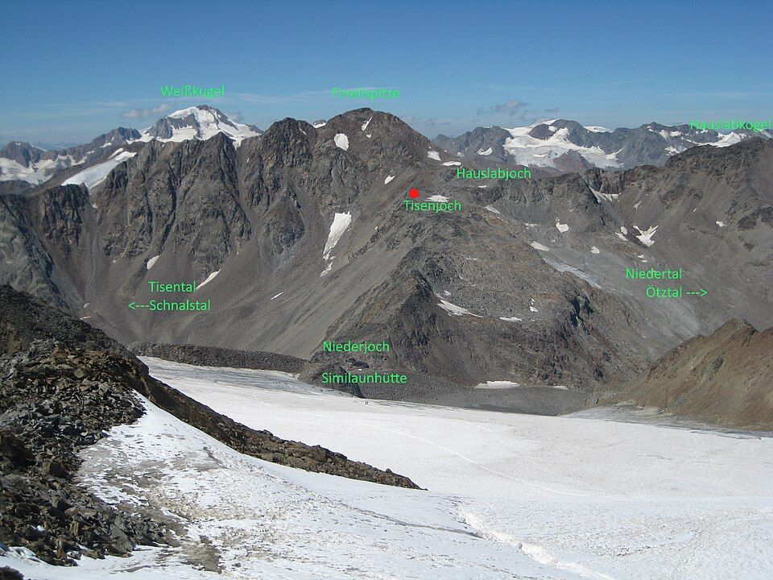
1.5c Hool’s 2024 paper on the Yamnaya
Aviyam Franco cited the 2014 study of Lazaridis and Reich against Hool’s claim about Europe. In his reply, Hool accepts the 2014 finding and points to a newer paper.
Where one people did replace another, geneticists can see that too, and the replacement came from other peoples with long histories, not from one family. Denmark had such a turnover close to Hool’s date. Allentoft and his colleagues, in a companion study published in Nature in 2024, read the DNA of 100 ancient skeletons from Denmark spanning about 7,300 years (Allentoft et al., Nature, 2024). For thousands of years the people of Denmark were hunter-gatherers of the Mesolithic (the time before farming), with stable ancestry. Then, about 5,900 calibrated years before 1950 (roughly 3950 BCE), farmers with mostly Anatolian-related ancestry arrived and replaced most of the earlier foragers, with little mixing. About a thousand years later, a second large wave brought ancestry from the steppe.
The farmers who arrived around 3950 BCE did not come from one family that survived a flood. The same change to farming had come to parts of Central Europe more than a thousand years before it reached Denmark, so their Anatolian-related ancestors already had a long history outside Denmark, and the second wave came from a different outside people altogether. Denmark’s turnover was the arrival of neighboring peoples, not a repeopling by one family, and it gives no support to a worldwide Mabul.
Without DNA, archaeologists cannot always tell whether the same people lived on at a site. In southwestern England, researchers read the DNA of 30 people from 12 sites dated between about 3800 and 1400 BCE (Scientific Reports, 2026). The older burials carried the ancestry of Neolithic farmers, and the burials after about 2550 BCE the ancestry of the British Bell Beaker people, Bronze Age migrants from continental Europe named for their bell-shaped pottery. At Monkton-up-Wimborne the newcomers were buried in the same monument where Neolithic first-degree relatives (parents, children or siblings) had been buried centuries earlier, and only their DNA shows that they were a different people.
1.5d Native Americans
Hool holds that people reached the Americas twice before the Mabul, that both populations died in it, and that all Native Americans descend from a third migration after it. He traces the third migration, across the Bering Strait between Siberia and Alaska, by the spread of a distinctive style of small stone tools called the Arctic Small Tool tradition:
Dating the Flood in 3800 BCE allows for reconciliation. Indeed, the Clovis culture may have entered America during the last Ice Age through the Bering Land Bridge. Another migration took place much earlier by boat from East Eurasia. All descendants of both migrations perished in the Flood. Another migration took place via the Bering Strait shortly after the Flood, around 3000 BCE. Evidence of this third migration is traced by the spread of the Arctic Small Tool Tradition. All Native Americans stem from this colonization. (p. 139)
Geneticists who read the DNA of ancient bones find that the ancestors of living Native Americans were in the Americas thousands of years before 3800 BCE. So the earlier Americans did not die without descendants.
The Clovis people, named after the town in New Mexico where their stone spear points were first found, hunted across North America about 13,000 years ago. The only Clovis burial ever found, uncovered in 1968 on the Anzick family’s ranch in Montana, held a boy about eighteen months old who died about 12,600 years ago, buried with more than a hundred tools of stone and bone. That is nearly seven millennia before Hool’s 3800 BCE date for the Mabul. In 2014 Morten Rasmussen and Eske Willerslev read the boy’s DNA and found that he is “more closely related to all indigenous American populations than to any other group” (item 18.5). They concluded that his people were either the direct ancestors of living Native Americans or close relatives of those ancestors. So the Clovis people, who on Hool’s account died without descendants, are on the family tree of living Native Americans.
Hool knows about the Anzick child. He writes that “the similarities between the DNA of Anzick-1 from the Clovis culture with native Americans now points to the notion that genetics may be influenced by climate, surroundings, or food intake” (p. 136).
This confuses traits that suit a climate or a diet with the markers that geneticists use to trace ancestry. Geneticists do not trace ancestry from a few traits that the surroundings or the diet can shape. They compare millions of neutral variants, scattered across the genome, that have no effect on the body, so natural selection cannot shape them. Climate and food cannot make millions of neutral variants line up between unrelated peoples. The Anzick child’s DNA matches that of living Native Americans because he and they share ancestors who were already in the Americas thousands of years before 3800 BCE.
Hool holds that all living Native Americans descend only from the Arctic Small Tool migration around 3000 BCE, on the archaeologists’ calendar. But an adult buried in southern Belize, in Central America (I13267), already belongs to the cluster of later Native American ancestry. The burial is dated by two radiocarbon measurements of bone collagen, the protein preserved inside bone, to 3630–3379 cal BCE, centuries before the 3000 BCE Arctic Small Tool migration (Kennett et al., Nature Communications, 2022).
Geneticists can also measure whether the later people of Belize inherited more of their DNA from the earlier people of Belize, who lived before 3800 BCE, or from the Arctic newcomers that Hool points to. To do this, they line up hundreds of thousands of positions in the DNA of the Belize burials. Six later Belize genomes were compared with the earlier Belize burials and with the Saqqaq genome from Greenland, which stands in for the Arctic Small Tool people (Rasmussen et al., Nature, 2010). The comparison used 714,225 sites on the autosomes (the 22 chromosomes, other than the sex chromosomes, that are inherited from both parents). It gives a formal f4 score of shared ancestry of +0.01934 (Z = +35.7, far beyond chance). Using only transversions, a kind of DNA difference that the decay of ancient DNA does not create, still gives Z = +26.1. So the later people of Belize share far more ancestry with the earlier people of Belize than with the Arctic migrants. They descend from the people who lived in Central America before Hool’s Mabul, not from migrants who came after it.
Studies elsewhere in Central and South America find the same continuity over thousands of years. In 2018 Cosimo Posth, David Reich and Johannes Krause read the DNA of 49 ancient people from Belize, Brazil, the Andes and southern South America. They found that a turnover of population began at least 9,000 years ago and “was followed by substantial population continuity in multiple regions.” So in several parts of Central and South America, the people who lived after 3800 BCE descend from the people who lived there before it, and the Americas were not repeopled from nothing after the Mabul.
1.5e The Arctic toolmakers
Hool derives all living Native Americans from the people who carried the Arctic Small Tool tradition across the Bering Strait around 3000 BCE. These toolmakers were the Paleo-Eskimos, and scientists have read their ancient DNA. In 2014 Maanasa Raghavan and her colleagues at the University of Copenhagen found that the Paleo-Eskimos came from Siberia in a migration of their own, separate from the migrations of most Native Americans’ ancestors. The Paleo-Eskimos lived in the Arctic for about four thousand years, until the ancestors of the Inuit replaced them about seven hundred years ago. So Hool derives all Native Americans from a people who were not the ancestors of most of them.
1.5f Israel, China, Australia and southern Africa
On Hool’s account, the people who lived in the Land of Israel, China, Australia or southern Africa before 3800 BCE left no descendants except through Noach’s family. In each of these regions, geneticists who have read ancient or regional DNA find that the later people descend from the earlier people of the same region (the studies).
In the Land of Israel, the 73 people of the Canaanite period whose DNA Lily Agranat-Tamir, Liran Carmel and David Reich studied in 2020 lived at five sites in the Bronze and Iron Ages, about 2500 to 1000 BCE, well after Hool’s 3800 BCE. The researchers found that the Canaanites “can be modeled as descending from two sources.” One source was “earlier local Neolithic populations,” the region’s earliest farmers, who lived there thousands of years before 3800 BCE. The other was a people related to Copper Age groups from the Zagros Mountains of Iran or Bronze Age groups from the Caucasus. So the Canaanites, who lived after Hool’s Mabul, still drew a major share of their ancestry from the local farmers who lived before it. (Since Noach’s family lived in the Near East, one could argue that their descendants would naturally resemble the earlier people of the Land of Israel. That argument cannot work for East Asia or Australia, on the other side of the world.)
In China, a team led by Qiaomei Fu of the Chinese Academy of Sciences read in 2020 the genomes of 25 people who lived there between 9,500 and 4,200 years ago, the oldest of them thousands of years before 3800 BCE. Summing up the study, the Academy wrote that modern mainland East Asians “are almost all a mixture of northern and southern ancestry from Neolithic East Asia.” So living East Asians carry the ancestry of people who lived in East Asia long before Hool’s Mabul, which could not be if everyone outside the Ark died at 3800 BCE.
In Australia, geneticists have followed the mothers’ lines, carried in mitochondrial DNA, which children inherit only from their mother. In 2017 Ray Tobler and Alan Cooper of the University of Adelaide reported on the mitochondrial DNA of 111 Aboriginal Australians, taken from hair samples and family histories that anthropological expeditions had gathered in the twentieth century. They found that these mothers’ lines have stayed in their own regions of Australia for about 50,000 years. If every Aboriginal Australian descended from Noach’s family, every one of these mothers’ lines would go back a few thousand years to one of the women in the Ark, and none would go back to the first people of its own region. So the mothers’ lines of Australia, each of them 50,000 years old and each still in its own region, rule out a repeopling of Australia from the Ark.
Southern Africa has two series of ancient DNA that cover both 3800 BCE and 2105 BCE: nine hunter-gatherers buried at Oakhurst Rock Shelter on the southern coast of South Africa between about 10,000 and 1,300 years ago (Joscha Gretzinger of the Max Planck Institute for Evolutionary Anthropology and his colleagues, Nature Ecology & Evolution, 2024), and 28 more ancient southern Africans, including burials from Matjes River from about 10,200 to 2,330 years ago (Nature, 2026). Both teams found the same distinct southern African ancestry continuing without a break through 3800 BCE and through 2105 BCE. The people of southern Africa were not replaced at either date.
1.6 In Hool’s sources the peoples live on
Hool holds that the remains of the Mabul lie at about 3800 BCE on the archaeologists’ calendar. At that date, he argues, archaeologists find the people of the whole world dying out. In his reply to Aviyam Franco he calls this “another raw revelation”:
around the carbon date of 3800 BCE, we find evidence of cessation of civilisation across the whole globe.
— Alexander Hool, reply to Aviyam Franco on SeforimChatter
In the second half of The Flood, Hool goes through the world region by region. He quotes archaeologists on cultures that came to an end and settlements that were abandoned, and he reads each of these changes as the death of the region’s people in the Mabul.
This reading mixes up a culture with a people. To an archaeologist, a “culture” is a group of sites that share a style of pottery, houses, tools and burials. A culture comes to an end when people stop building and making things in that style, whether or not the people themselves died. If the Mabul had come at 3800 BCE and left only Noach’s family alive, archaeologists in every region would find the people dying out at that one date and newcomers arriving afterward. Hool’s sources describe something else. They put the changes at different dates in different regions, and they describe communities that adapted, moved or shrank over centuries. In several of the places Hool cites, towns kept growing across 3800 BCE.
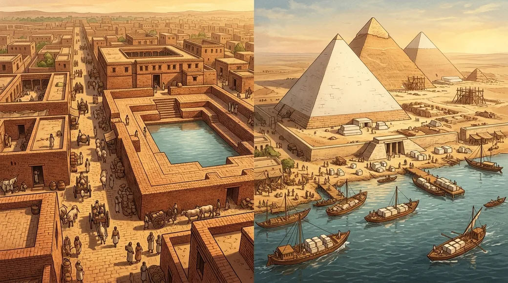
1.6a Ubaid villages and Uruk
In Mesopotamia, archaeologists date the Ubaid culture from about 6500 to 3800 BCE. The Uruk period followed it, and in the Uruk period the first cities appeared. Hool places the Mabul at the end of the Ubaid culture. He quotes Guillermo Algaze, an archaeologist who studies the rise of the first cities in Mesopotamia. Algaze writes that the change from the Ubaid to the Uruk “was rather abrupt throughout the Mesopotamian alluvium,” that is, the river plain of southern Iraq. From this Hool concludes:
Yet suddenly, around 3800 BCE, the archaeological record stops yielding Ubaid artifacts, settlements, or culture. What on earth happened? … We now know. The Ubaid culture came to an untimely and abrupt end because of the Great Flood that wiped them out completely, around 3800 BCE. The Uruk period was the beginning of the new world, filled with Noah and his descendants. (pp. 81–85)
Algaze is describing a change in the way people settled the land. He is not describing the death of the people. In the passage Hool quotes, Algaze goes on to say what the change was. The Uruk period saw “a considerable increase in the total number of sites recorded across the alluvium” and “the growth of multiple individual centers to urban proportions” (p. 82). The writer K. Kris Hirst, whom Hool also quotes, describes the same change. At the end of the Ubaid period, Hirst writes, “a handful of communities began to enlarge” (p. 84). Hirst describes the villages and towns of the Ubaid growing into a network of cities, towns and hamlets, and the Ubaid’s hand-made painted pottery giving way to plain pots thrown on a wheel. The communities that began to grow at the end of the Ubaid period became the cities of the Uruk period.
Others who have written on Uruk say the same. The Metropolitan Museum of Art writes that “there was much continuity between the Ubaid culture and the succeeding Uruk period.” A history of Uruk published by Western Sydney University says that the city “was continuously inhabited from about 5000 BC up to the 5th century AD.” The people of the Ubaid lived on into the Uruk period, and Uruk was never emptied by a flood and filled again by newcomers.
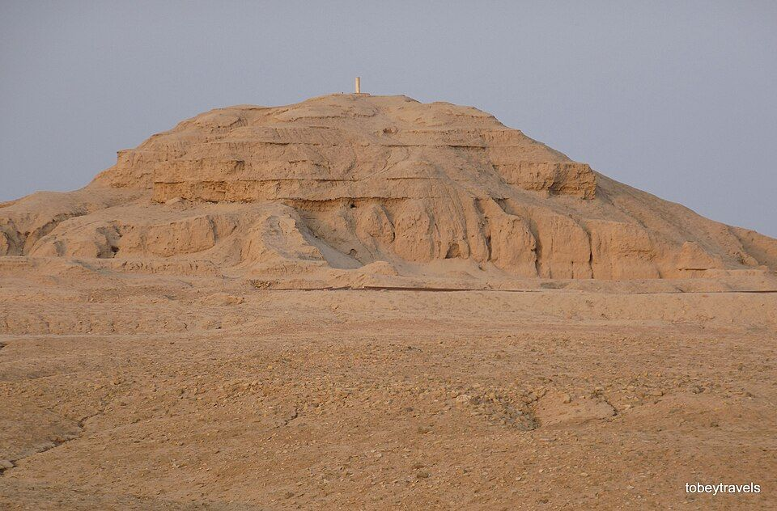
Tell Brak, in northeastern Syria, grew across 3800 BCE as well. (A tell is a mound built up over centuries from the remains of one settlement on top of another.) Jason Ur, an archaeologist at Harvard, mapped the settlements around the central mound of Tell Brak. Between about 4200 and 3800 BCE they covered 55 hectares, about half a square kilometer. Between 3800 and 3400 BCE they joined into a single band of settlement covering 130 hectares. Tell Brak more than doubled in size in the same centuries in which, on Hool’s account, the whole world held only Noach’s family and their first descendants.
1.6b Hool’s European sources
In Europe, Hool counts the end of the Vinča culture of Serbia, known for its large villages along the Danube, as a sign of the Mabul. Hool’s sources date the end of Vinča to about 4200 BCE, four centuries before his date for the Mabul. Hool writes that the end of Vinča
was also probably a consequence of the Flood at around 3800 BCE but has been dated to several hundred years earlier due to local inaccuracies
— Alexander Hool, The Flood, p. 106
Hool gives no reason why the dates of Vinča alone should be four centuries off. Faster decay after the Mabul, which is his explanation for the date of 3800 BCE, would have moved the radiocarbon dates of every region together, not the dates of Vinča alone. And Hool takes the radiocarbon dates of Vinča’s neighbors as they stand. He quotes sources reporting that almost all the key sites in northern Bulgaria and southern Romania “have no evidence of use after the fifth millennium BCE,” that is, after 4000 BCE. He also cites reports that nearly every tell of the Gumelnița culture of the lower Danube “was abandoned after about 4000 BCE,” and that many settlements of the Karanovo IV culture in southern Bulgaria were abandoned too (pp. 99, 105). Hool links these abandonments to the Mabul with no change to their dates. He calls on a local error in dating only for Vinča. On the dates that he accepts for the rest of the region, Vinča ended four centuries before 3800 BCE, so its end cannot be a sign of a Mabul at 3800 BCE.
Farming villages in prehistoric Europe were founded, moved and abandoned all the time, as the soil wore out or trade routes changed. Clusters of abandoned villages can be found near almost any century. A death of all mankind at 3800 BCE would also mean that no settlement in Europe was lived in across that date, yet several well-dated settlements were lived in without a break through it.
Maidanets’ke, in Ukraine, was one of the largest settlements in the world in its time, with thousands of houses laid out in rings. René Ohlrau, an archaeologist who studied the town, found in a 2020 study that people lived there without a break, through several phases, from about 3990 to 3640 BCE. That is from 190 years before Hool’s date for the Mabul to 160 years after it. This town did not empty out at 3800 BCE.
The official catalog of the prehistoric pile dwellings of the Alps, villages built on wooden stilts around lakes and wetlands, is kept at palafittes.org. It lists an early farming village of the Pfyn culture at Thayngen-Weier in Switzerland (site CH-SH-01), and it dates the village’s first phase from 3822 to 3761 BCE. (The catalog gives only the span of the phase, not whether people lived there in every year of it.) The phase begins before Hool’s date for the Mabul and ends after it, so farmers in the Alps were living in their villages on both sides of that date.
Hool also cites a study by the Czech archaeologist Jan Kolář and his colleagues as evidence that the population of central Europe collapsed at the Mabul. Kolář’s team modeled human activity over a long span of time around one medium-sized lake. They fed every known archaeological trace in the area into Monte Carlo simulations, that is, calculations repeated many times with random variations. Kolář reports that the model gave
the lowest level of human activity between 4000 and 3000 BCE
— Jan Kolář et al. (quoted in The Flood, p. 94)
That low point covers a whole thousand years, not one year, and Kolář calls it an “alleged population decline.” He points out that the same millennium brought the plow and the wheel, and that people built large tombs and hillforts in it. He describes these developments as
in contradiction with the image of unstable and declining societies
— Jan Kolář et al. (quoted in The Flood, p. 95)
Kolář also points out that a community can vanish from the archaeological evidence without dying. In the first passage that Hool quotes in his chapter on Europe, Kolář writes that the climate around 4000 BCE “could have various consequences for human communities: extinction, migration out of the region or a change of lifestyle and subsistence strategy. In all possible cases, these communities disappeared from the archaeological evidence” (p. 94). Kolář’s study describes a slow change over a thousand years among communities that were active and building, not the death of the people of central Europe at 3800 BCE.
1.6c The other regions
In the other regions where Hool finds the Mabul, the sources he quotes also describe changes spread over centuries, or the same people living on in the same places.
- For the Near East, the 2016 review that Hool quotes has the changes in Anatolia begin about 4300 BCE, five centuries before his date, and the villages of the southern Levant abandoned over three centuries, from 4000 to 3700 BCE. Its authors explain the changes as communities adapting to a changing climate.
- In China, three of the five cultures that Hool says ended together carry on past 3800 BCE by his dates. They are the Hongshan, the Yangshao and the Hemudu. At Chengtoushan, people were enlarging the walls of their town at the time Hool gives for the Mabul.
- In the rock shelters of Australia, the archaeologists whom Hool cites spread the changes over the last six thousand years.
- In the Indus valley, the villages of the borderlands grew into the Harappan towns. The geneticists who read the first genome from an Indus city traced its people to hunter-gatherers long settled in the region.
- In the Sahara, the same review that Hool quotes for the Near East explains the changes as herders adjusting to the slow drying of the land.
- In Korea, the hunter-gatherers whom Hool has dying in the Mabul were still there after 3800 BCE, and they took up farming.
The other regions in detail
1.6d The Near East
In the Near East, Hool attributes the abandonment of villages across the eastern Mediterranean to the Mabul:
the abandonment of the many archaeological villages across Cyprus, Israel, Lebanon, Jordan, and Syria around 3800 BCE was because all their occupants had perished in the Flood
— Alexander Hool, The Flood, p. 111
Hool’s source is a 2016 review by Joanne Clarke of the University of East Anglia and seventeen co-authors. They studied how changes in climate affected the societies of the region across what they call the “long” fourth millennium BCE, from about 4500 to 3000 BCE. (The ordinary fourth millennium runs from 4000 to 3000 BCE, so theirs starts half a millennium earlier.) Clarke’s team traces how each region adjusted to a drying climate, at different times and over centuries. They describe no sudden death of the population.
The southern Levant is the eastern coast of the Mediterranean, including the Land of Israel. Hool quotes the review’s statement that in the southern Levant “many sites had been abandoned by ~3900/3800 BCE.” The review also says that the settlements of the Copper Age (the Chalcolithic, when people first made tools of copper) around the Dead Sea had disappeared by then, and that on Cyprus “villages were abandoned at ~4000/3800 BCE.” In Eretz Yisrael, the Copper Age was the time of the temple at Ein Gedi and of the Nahal Mishmar hoard, hundreds of elaborate copper objects hidden in a cave near the Dead Sea. That Copper Age did end fairly suddenly, around Hool’s date. But the people of the land lived on: the Canaanites of the Bronze and Iron Ages descended in part from the farmers who had lived there thousands of years earlier.
1.6d.1 Anatolia
Hool also cites Clarke’s review for Anatolia, modern Turkey, as evidence of a Mabul at 3800 BCE. In the review, the change in Anatolia begins “after ~4300 BCE,” five centuries before Hool’s date. The communities of Anatolia then developed into the societies of the Early Bronze Age, which followed the Copper Age. The passage Hool quotes says that these communities
embarked on new trajectories which eventually led to the emergence of the more steeply stratified societies of the Early Bronze Age
— Joanne Clarke et al., 2016 (quoted in The Flood, p. 109)
“More steeply stratified” means with sharper differences of rank. Societies that began to change five centuries before 3800 BCE and grew into the societies of the Early Bronze Age did not die out at 3800 BCE.
1.6d.2 The southern Levant
Hool attributes the abandonment of the villages of the southern Levant at 3800 BCE to the death of their people in the Mabul. Clarke’s review puts these upheavals “around 4000 BCE or slightly later,” and it says that the abandonment of settlements “extended over the period between 4000 BCE and 3700 BCE” (p. 109). It adds that
the speed, scale, and timing of these upheavals was different for different sub-regions and even for different sites.
— Joanne Clarke et al., 2016
The Mabul lasted one year, and it would have emptied every settlement at once. These villages were abandoned over three centuries, from 4000 to 3700 BCE, at different times from one district to the next. A flood that lasted one year cannot have emptied them.
1.6d.3 The 2016 review
Hool reads the changes in Clarke’s review as the death of the population. Clarke’s team reads them as communities adapting to a changing climate. The team studies the archaeology through “concepts of adaptation and resilience.” It identifies two periods of severe drought, around 3700 to 3600 BCE and around 3300 to 3100 BCE, and it stresses “the diversity and context-specificity of human responses to climatic and environmental change.” In Clarke’s account, the people of each district came through these changes in their own way, and they did not die in them. The review that Hool cites as evidence that the people of the Near East died describes them living on.
1.6d.4 Cyprus
Hool holds that the villagers of Cyprus died in the Mabul at 3800 BCE. Clarke’s review says that their villages
were abandoned at ~4000/3800 BCE to be replaced by ephemeral (possibly seasonal) sites established in previously uninhabited areas
— Joanne Clarke et al., 2016
The people set up these short-lived camps between 4000 and 3800 BCE, as they left the older villages. So the camps were already in use at Hool’s date for the Mabul, and they cannot be the work of Noach’s descendants arriving afterward. The camps mark the start of the Copper Age on Cyprus, which archaeologists date from about 4000 to 2500 BCE. Life on the island went on across 3800 BCE.
Excavations at single sites on Cyprus agree. At Kissonerga-Mosphilia, the archaeologist Edgar Peltenburg dug up a settlement with “five periods of occupation … from late neolithic to Early Bronze Age.” That is, people lived at that spot from the New Stone Age of the first farmers, before 3800 BCE, through the Copper Age and into the Bronze Age, many centuries after it. The people of Cyprus were not wiped out at Hool’s date for the Mabul.
1.6e China
In China, Hool lists five early farming cultures: the Hongshan in the northeast, the Yangshao along the Yellow River, the Majiabang and the Hemudu near the mouth of the Yangtze, and the Daxi along the middle Yangtze. He writes that “All of them experienced fundamental change or cessation during the early fourth millennium BCE,” and concludes:
We can now see that the major change in China that unfolded in the fourth millennium BCE in the form of different rituals and constructions of temples and altars and a spread of settlement hierarchies and new cultures that took hold, ties in with the mass extermination of the people in China at the time of the Flood and the birth of a new population in the following centuries
— Alexander Hool, The Flood, pp. 117–119
The people of China did not die out at 3800 BCE. Living East Asians carry the ancestry of the region’s early farmers, and the archaeologists whom Hool cites describe towns and cultures in China growing across his date for the Mabul.
1.6e.1 Chengtoushan
Chengtoushan, in Hunan province on the middle Yangtze, is one of the oldest walled towns in China. It belongs to the Daxi culture, one of the five cultures that Hool says died in the Mabul. Hool cites a 2004 study by the Japanese environmental scholar Yoshinori Yasuda and his team, who traced the history of the town and of the land around it. They followed Chengtoushan from its first walls in the Daxi period, around 4450 to 4150 BCE, to the later Shijiahe culture, which began around 2550 BCE. Yasuda’s team treats all these phases as the continuous growth of one civilization of the middle Yangtze. They describe no society that was wiped out and replaced.
Between 3850 and 3750 BCE, the years in which Hool places the Mabul, Yasuda’s team records a new phase of building, in which
the size of the rampart was increased, and the settlement area expanded
— Yoshinori Yasuda et al., 2004 (quoted in The Flood, p. 118)
Around 3350 BCE the Qujialing culture followed. Its people put up large buildings with basements lined with baked brick, and Yasuda’s team notes that “the population of Chengtoushan had increased” (pp. 118–119). The people of Chengtoushan did not die at 3800 BCE. They were enlarging the earthen walls of their town and spreading their settlement outward.
1.6e.2 Hongshan, Yangshao and Hemudu
Hool ties all five cultures to a wipeout at 3800 BCE, but by his dates three of them carry on past it. For the Hongshan, he quotes the National Palace Museum in Taipei. The museum describes their temples to a painted goddess, their round altars and their carved jade, and says that
five to six thousand years ago, the Hongshan culture reached new heights
— National Palace Museum in Taipei (quoted in The Flood, p. 117)
Five to six thousand years ago is roughly 4000 to 3000 BCE, a span that includes Hool’s date for the Mabul. Hool also writes that the Middle Yangshao period, about 4000 to 3500 BCE, “saw an expansion of the culture and population in all directions” (p. 118). And he dates the Hemudu culture from 5500 to 3300 BCE (p. 117). By Hool’s figures, the Hongshan, the Yangshao and the Hemudu all went on past 3800 BCE, and they did not end together at the Mabul.
1.6f Australia
In Australia, Hool points to the Maliwawa Figures, a style of rock painting from Arnhem Land in northern Australia with large figures of people and animals:
the disappearance of Maliwawa Figures around 4000 BCE and the major changes that followed in human occupation, mobility, diet, and stone tool techniques all synchronize with the destruction of human life in Australia around 3800 BCE followed by the repopulation of Australia by the descendants of Noah that would naturally bring about these major changes that are recorded
— Alexander Hool, The Flood, pp. 125–127
The people of Australia were not replaced: the mothers’ lines of Aboriginal Australians have stayed in their own regions of Australia for about 50,000 years.
1.6f.1 Arnhem Land
The archaeologists whom Hool cites describe no sudden collapse in the rock shelters of Arnhem Land, the shallow caves and overhangs that people used as camps. Daryl Wesley and his colleagues, in a study of the rock art at Wulk Lagoon in Arnhem Land, spread the changes in diet, tools and settlement over “the last 6000 years.” They link the changes to the sea. About six thousand years ago the sea stopped rising and settled at its modern level, and the coasts and river mouths of the region took new shapes. Bruno David and his colleagues, who edited a 2017 volume on the rock art of western Arnhem Land, write that people in the region made rock art from at least 27,000 years ago until the late twentieth century (p. 124). The people of Arnhem Land were painting before 3800 BCE and long after it.
Hool’s date of about 4000 BCE for the end of the Maliwawa Figures comes from the archaeologist Paul Taçon, who described this style of painting and estimated its age. Taçon concludes that the figures are
most likely to date between 6,000 to 9,400 years of age
— Paul Taçon (quoted in The Flood, p. 126)
Six thousand years ago is about 4000 BCE. Hool has taken the younger end of Taçon’s range of ages and read it as the death of the population. But the end of a style of painting marks only the time when people stopped painting in that style. As David’s team reports, the people of Arnhem Land went on making rock art for thousands of years afterward.
1.6g The Harappans
In South Asia, the Harappan civilization built its cities in the Indus valley, in what is now Pakistan and northwestern India. Hool attributes its rise to Noach’s descendants:
The birth of the Harappan civilization can now be attributed to the new influx of Noahide descendants into India several hundred years after the Flood
— Alexander Hool, The Flood, pp. 89–93
Hool takes his outline of this history from Britannica’s history of India. Britannica describes settlements in the borderlands of Iran and Pakistan multiplying from about 5000 BCE, spreading into the Indus valley during the fourth millennium BCE, and growing together into the Harappan civilization. Both the geneticists who have read ancient DNA from the region and Britannica itself trace the Harappans to peoples who had long lived in the region.
1.6g.1 The woman of Rakhigarhi
Hool holds that everyone outside the Ark died in the Mabul. So on his account the Harappans must descend from newcomers who arrived from Shinar centuries later. In 2019, a team led by the archaeologist Vasant Shinde and the Harvard geneticist David Reich read the first genome, the full set of a person’s DNA, ever recovered from an Indus city. It came from a woman buried at Rakhigarhi, in Haryana in northwestern India. The team compared her DNA with that of neighboring ancient groups and concluded that the ancient peoples of the Iranian plateau and the Indus valley
descend from different groups of hunter-gatherers who began farming without being connected by substantial movement of people.
— Vasant Shinde, David Reich, et al., 2019
This means that the people of the Indus cities descend from the hunter-gatherers of their own region, who took up farming where they lived. They are not a new people who came from Shinar after the Mabul.
1.6g.2 Britannica on the Harappan towns
On Hool’s account, the villagers of the borderlands died at 3800 BCE, and the region stood empty for several centuries until newcomers from Shinar built towns that carried on the same traditions. Britannica, Hool’s source, describes no such gap. It traces the villages from about 5000 BCE into the early Harappan towns, and it says that the earliest farming settlements in the Indus valley itself
provide clear links with the cultures along or beyond the western margins of the Indus valley
— Encyclopaedia Britannica (quoted in The Flood, pp. 89–90)
In Britannica’s account the villages and the towns form one line of settlement, with no empty centuries between them.
1.6h The Sahara
In North Africa, Hool reads changes in the culture of the central Sahara as signs of a new population after the Mabul:
the major change observed in central Sahara including different burials, change in settlement organization and pottery, and appearance of exotic tools can also be attributed to the new population that arose after the Flood
— Alexander Hool, The Flood, pp. 112–114
Hool takes these details from the same 2016 review by Clarke’s team. The review describes a “renewed spread of pastoralism through the central Sahara” (pastoralism is the herding of animals), new stone burial monuments, short-lived camps, new styles of pottery, and “a major change … suddenly recorded at around 3900 BCE.” In the review, though, these changes are the work of herders who already lived in the Sahara, adapting as the land slowly dried.
1.6h.1 The new burials
Hool credits the herding, the burials and the camps of the fourth millennium in the Sahara to a new population that came after the Mabul. Clarke’s team calls the herding a “renewed spread” of a way of life that was already present in the Sahara, and it compares the new burials with those of the earlier local herders. In the central Sahara, herders kept using the caves of the Acacus and Messak mountains, now as “specialized stables” (p. 113). What Hool credits to newcomers is, in Clarke’s account, the Sahara’s own herding culture carrying on.
1.6h.2 The eastern Sahara
Hool holds that the people of the Sahara died in the Mabul and were replaced. Clarke’s review reports instead that the people of the eastern Sahara moved to the places where water and pasture could still be found, a move
followed by out-migration (e.g., to the Nile Valley) with the onset of hyper-aridity
— Joanne Clarke et al., 2016 (quoted in The Flood, p. 112)
The people of the eastern Sahara did not die out. When the land became extremely dry, they moved, first to the water that was left and then to the Nile Valley.
1.6h.3 The slow drying
Hool reads “a major change … suddenly recorded at around 3900 BCE” as the arrival of a new population after the Mabul. But the first sentence that Hool quotes from Clarke’s review places all of these changes “against a background of increasing aridity,” and the review warns that the change around 3900 BCE is “difficult to date precisely.” Such a change cannot be pinned to the single year of a Mabul at 3800 BCE.
Climate scientists working separately have found that the drying took thousands of years. From about 11,000 to about 5,000 years ago, the Sahara had grasslands and lakes, with hippos and crocodiles, and people painted herds of cattle on its rock walls. Stefan Kröpelin of the University of Cologne, whose earlier work Clarke’s review cites, led a team that set out to learn how the desert formed. They examined the pollen and the wind-blown dust in thin layers of mud laid down over the last six thousand years in Lake Yoa, in northern Chad. In 2008 they reported in Science that the region dried out gradually. The tropical trees thinned out first and then the grasses, while the dust grew steadily, until the modern desert was in place by about 2,700 years ago. The change that Clarke’s team dates to around 3900 BCE came in the middle of this drying, and the people of the Sahara lived through it. It was the herders of the Sahara adapting to the climate, not a new population after the Mabul.
1.6i Korea
In Korea, Hool holds that the hunter-gatherers died in the Mabul, and that the people of the Chulmun culture of the fourth millennium BCE, who farmed millet, were Noach’s descendants. His source is a 2015 study by the archaeologist Sung-mo Ahn and his colleagues. They gathered the radiocarbon dates of Korea’s sites from the New Stone Age, the Neolithic, to trace how the hunter-gatherers of Korea came to live in settled villages. Ahn’s study asks:
Why did the hunter-gatherers in central western and southern Korea adopt sedentary lifestyles and start cultivating millet during the fourth millennium BCE?
— Sung-mo Ahn et al., 2015 (quoted in The Flood, pp. 121–123)
Hool gives his own answer:
The hunter-gatherers died along with everyone else in the Flood. The Chulmun Culture were the early descendants of Noah who began the new world with agricultural and urban civilization
— Alexander Hool, The Flood, pp. 121–123
But Ahn’s study describes the Chulmun people themselves as hunter-gatherers of the region who settled down.
1.6i.1 Ahn’s study
The passage Hool quotes from Ahn’s study describes a culture of settled hunter-gatherers with cone-bottomed pottery in the early fourth millennium BCE. This culture, “called the Chulmun Culture by archaeologists, appeared in central western Korea,” and it “adopted small-scale millet cultivation through interacting with people in the Liaoning area in China” (p. 121). Ahn notes that the population of central western Korea grew quickly until about 3500 BCE as settlements spread outward, and adds that
hunter-gatherers in southern Korea also adopted sedentary lifeways along with millet cultivation
— Sung-mo Ahn et al., 2015 (quoted in The Flood, pp. 122–123)
On Ahn’s account, the same hunter-gatherers whom Hool has dying in the Mabul were still alive centuries later. They settled in villages and learned to farm millet from their neighbors in China.
1.6i.2 Korea before India
Ahn’s team counted the houses in Korea that have radiocarbon dates, and found that their number rises “sharply after c. 3800 BCE” (p. 122). Hool treats these as the homes of Noach’s descendants. On his account, the carbon date of 3800 BCE is the year of the Mabul. Decay ran faster in the centuries after it, so the carbon dates of those centuries are spread over more years than really passed. On this reckoning, the houses of Korea, at the far eastern edge of Asia, were multiplying very soon after the Mabul. But for India, which is much closer to Shinar, Hool has Noach’s descendants arrive only “several hundred years after the Flood” (p. 93). If everyone spread out from the Near East, they could not have filled distant Korea almost at once and taken centuries to reach nearby India.
1.6i.3 Pit-house villages
Hool writes that Noach’s descendants began “agricultural and urban civilization” in Korea. In Ahn’s study these settlements were small villages of pit-houses, houses dug partly into the ground, and the largest cluster that Hool quotes had fifty-eight houses (p. 122). They were farming villages, not cities.
The sources Hool quotes describe what he calls the “cessation of civilisation across the whole globe” at 3800 BCE as a set of local changes at different dates among people who lived on. (And if the Mabul came at the tree ring counted as 2105 BCE, as Hool also holds, the cultures that end at 3800 BCE ended before the Mabul in any case.)
1.7 Eight survivors are too few
Hool places the remains of the Mabul at 3800 BCE on the archaeologists’ calendar, and he holds that only the eight people in the Ark survived it. Scholars who estimate the population of the ancient world find no drop around 3800 BCE, and Hool explains why:
Noah’s descendants initially multiplied very fast, and thus, the world population after 3800 BCE does not appear to have dropped. (The Flood, p. 85)
Hool takes a new generation every thirty years from Bereishis 11, and he suggests that the couples after the Mabul had twice the usual number of children. He adds that a drop “would not be detected by researchers because population estimates, due to the paucity of information available, are only made with respect to millennium, not centuries” (The Flood, p. 85).
For this to work, the eight people of the Ark would have had to grow within about a century into enough people to build and fill the towns of that time. Hool’s account also requires every mothers’ line alive after the Mabul to come from the women in the Ark, every fathers’ line to come from Noach, and all the DNA of the next centuries to come from the few copies that the Ark carried. (A mothers’ line is DNA passed from mother to daughter, and a fathers’ line is DNA passed from father to son.)
None of these requirements can be met. Hool’s figures give about five hundred people in the whole world a century after his Mabul, when the town of Uruk already covered up to a square kilometer. Geneticists have found at least six mothers’ lines and two fathers’ lines that already existed before 3800 BCE and are still alive today. Living men, and men buried within three centuries of 2105 BCE, carry far more differences in their Y chromosomes than three sons of Noach could have passed on. And people who lived between 3800 and 3000 BCE share far too little DNA with one another to descend from eight survivors.
1.7a Too few people for the towns of 3700 BCE
Hool takes his thirty-year generations from Bereishis 11, where three generations are born in the first hundred years after the Mabul. For the generations before the Mabul his count gives each couple four children (pp. 52–53), and my bochurim doubled that number to eight, as he suggests for Noach’s descendants. The count then runs as follows.
Setting the Flood at the conventional date of 3800 BCE allows for admirable synchronization with the scholarly estimation of the world population at the time. We have already ascertained in the previous chapter that the estimated world population of two million, around 50,000 BCE, corresponds to 283 years before the Flood. Since, in the generations before Noah, people first gave birth around one hundred years of age, then 283 years would encompass roughly three generations. If we give each couple an average of four children and allow half the population to have not given birth yet 283 years before the Flood, then this yields a population just before the Flood of around eight million. (The Flood, pp. 52–53)
- Noach’s three sons and their wives, who make three couples, have 24 children.
- The 24 children make 12 couples, who have 96 grandchildren.
- The 96 grandchildren make 48 couples, who have 384 great-grandchildren.
Together with the eight people of the Ark, those three generations come to about five hundred people in the whole world at the end of the first century. Hool says that at this pace the world’s population would come back close to what it had been before the Mabul only “in several hundred years” (p. 85).
Hool’s source describes large towns at that date. He quotes the writer K. Kris Hirst: “By 3700 Uruk itself was already between 175–250 ac (70–100 ha), and several others, including Eridu and Tell al-Hayyad, covered 100 ac (40 ha) or more” (quoted in The Flood, p. 84). At 100 hectares, Uruk alone covered a square kilometer.
On the archaeologists’ calendar, 3700 BCE is one century after Hool’s date for the Mabul. On Hool’s account even less time had passed, because faster decay after the Mabul would make the radiocarbon dates of those centuries look farther apart than they really were. So these towns stood at most a century after mankind was reduced to eight people.
By 3700 BCE, then, about five hundred people, many of them small children, would have had to build and fill Uruk, Eridu and Tell al-Hayyad. They would also have had to build Tell Brak in Syria, which more than doubled in size between 3800 and 3400 BCE, along with every other town and village on earth that archaeologists date to that time. Five hundred people is about the size of one medium-sized high school. Hool’s figures give a few hundred people a century after the Mabul, and they cannot account for the towns that his own book describes.
1.7b Hool’s regional studies
Hool says that a drop in population after the Mabul went unnoticed because population is estimated only by the millennium. But the regional studies that he cites follow population century by century. Jan Kolář, whom Hool cites for a decline of population in central Europe, estimates the size of a population from the number of radiocarbon dates that it left behind. A larger population leaves more remains that can be dated. Sung-mo Ahn’s team in Korea counted the houses that have radiocarbon dates. They found that the number of houses rises sharply just after 3800 BCE and peaks around 3500 BCE (p. 122).
On Hool’s account the whole world held a few dozen people just after 3800 BCE, and by the count above only a few hundred a century later. A dip that lasted a few years could escape a count of dated houses, because every radiocarbon date has a margin of error and each house stood for years. But a whole century in which the world held a few hundred people would have left almost no houses in Korea to date. Ahn’s team found instead that the houses multiplied right after 3800 BCE. So the drop that Hool’s account requires would not have gone unnoticed, and the study that he cites for Korea finds growth where the drop should be.
1.7c Mothers’ lines
Mitochondrial DNA follows the mothers’ lines. A woman passes it to all her children, but only her daughters pass it on, and each line carries its own set of small mutations that all of its later members inherit (how the mothers’ lines are traced). This comparison does not rely on any date after the Mabul. It needs only skeletons that archaeologists date before 3800 BCE, and on Hool’s account those people lived before the Mabul.
On Hool’s account every person alive after the Mabul descends from the people of the Ark. The only women of the Ark who could have passed on mothers’ lines are the wives of Shem, Cham and Yefes, along with Noach’s wife if she had daughters after the Mabul, which the Torah doesn’t mention. Every mothers’ line in the world after the Mabul would then be one of at most four lines that came out of the Ark.
Geneticists have found at least six separate mothers’ lines, all still carried by living people, in skeletons from long before 3800 BCE (the lines and the peoples who carry them today):
- C1b and B2, in two infants buried together at Upward Sun River in Alaska about 11,500 years ago.
- D4h3a, in the Anzick child of Montana, about 12,600 years ago.
- X2a, in Kennewick Man of Washington State, about 8,500 years ago.
- U2, in a young man buried at Kostenki, by the Don River in Russia, about 37,000 years ago.
- D1, in a girl who died between 13,000 and 12,000 years ago in Hoyo Negro, a cave pit in the Yucatán.
These people need not be anyone’s ancestors, and three of them died as young children. Their DNA is enough to establish that all six lines already existed before 3800 BCE. Each line has its own set of mutations, which its living members still share. For one woman in the Ark to be the ancestor of two of these lines, the whole set of mutations that marks the second line would have had to arise again by chance in her family, mutation for mutation.
Grant Hool every advantage: Noach’s wife bore daughters after the Mabul, and each of the four women in the Ark carried a different mothers’ line. Four women can still pass on at most four lines. Living people carry at least six lines that are found in skeletons from before 3800 BCE, so they cannot all descend from the women of the Ark.
1.7d Fathers’ lines
The Y chromosome passes only from father to son, so it follows the fathers’ lines the way mitochondrial DNA follows the mothers’, and geneticists sort men’s Y chromosomes into branches by the mutations that they share (how the branches are marked). The men who came into the Ark were Noach and his sons Shem, Cham and Yefes (Bereishis 7:13), and the three sons got their Y chromosomes from Noach. On Hool’s account, then, every man alive after the Mabul carries Noach’s Y chromosome, and the Ark brought only one fathers’ line through the Mabul.
At least two separate fathers’ lines that already existed before 3800 BCE are still alive today:
- The Anzick child of Montana carried a Y chromosome of the branch that geneticists call Q-L54, outside its sub-branch M3 (Morten Rasmussen and colleagues, Nature, 2014). In 2013 a team led by Vincenza Battaglia reported in PLOS ONE that this branch is one of the two main fathers’ lines of the native peoples of Central and South America today (item 18.3).
- A man who was buried at Loschbour in Luxembourg, whose bones are dated to between about 6220 and 5990 BCE, carried a Y chromosome of the branch I2a1b, which is part of the larger branch I. The team that read his DNA, led by Iosif Lazaridis, reported in Nature in 2014 that branch I is found today almost only among the men of Europe.
Neither the Anzick child nor the Loschbour man has to be anyone’s ancestor (the Anzick child died as a small child). Their DNA is enough to establish that both branches already existed before 3800 BCE. On Hool’s final rule, which subtracts 3800 BCE from the archaeologists’ date and divides by 171, the Anzick child died about forty years before the Mabul and the Loschbour man about thirteen years before it. So both fathers’ lines were already separate before Noach entered the Ark.
Branch Q and branch I are marked by entirely different sets of mutations, and the men of one branch do not carry the mutations of the other. For Noach to have descendants in both branches, the whole set of mutations that marks one branch would have had to arise again by chance in his family, mutation for mutation. Chance does not repeat a whole set of mutations, so living men cannot all descend from Noach.
The Loschbour man comes from the 2014 study that Aviyam Franco cited against Hool. In his reply, Hool pointed to a later turnover of Europe’s population, the spread of the Yamnaya from about 3000 BCE. But branch I is still carried by men in Europe today, so this fathers’ line came through both 3800 BCE and the spread of the Yamnaya.
Hool’s suggestion that climate, surroundings or diet made the Anzick child’s DNA resemble that of Native Americans (The Flood, p. 136) does not help him here either. The surroundings cannot produce the markers that geneticists use to trace ancestry, and they cannot build up a whole set of changes on a Y chromosome.
1.7e Y chromosomes and Noach’s three sons
Counting the differences between fathers’ lines uses no radiocarbon date to measure the time since the Mabul, so Hool’s faster decay cannot affect it. It applies to any account that puts the Mabul in 2105 BCE, and Hool’s account does. Grant even that a miracle gave each of Noach’s three sons, Shem, Cham and Yefes, a completely different Y chromosome in 2105 BCE. Any six fathers’ lines alive today must still include at least two that go back to the same son. The differences between those two lines must then have arisen in the roughly 4,130 years since 2105 BCE.
Living men carry far more differences than that. In the reference set of Y chromosomes from 2,014 men published by Martiniano et al. (2022) (Zenodo GRCh37 VCF), six broad fathers’ lines alive today (A00, B, C, D, E and R) differ from one another at 1,083 to 4,005 single letters of DNA. The closest pair, D and E, differ at 1,083 letters. Since at least two of these six lines must descend from the same son, at least 1,083 changes would have had to build up along those two lines in about 4,130 years.
Geneticists have measured how fast the Y chromosome changes by counting the changes between fathers and sons. In 2015 Helgason et al. counted them across 1,365 recorded passings from father to son in 274 Icelandic families. They found a rate of 0.871 × 10−9 changes per letter per year, that is, less than one change in a billion letters each year. This rate comes from counting generations, with no radiocarbon date.
At that rate, two men who descend from the same son should differ at about 74 letters, with each line running 4,130 years from 2105 BCE to today. More than doubling the rate, to 2 × 10−9, across all 10.3 million sites on the Y chromosome, gives only 170. To reach 1,083, the changes would have had to come nearly fifteen times faster than the rate measured from fathers to sons.
Suppose instead that the Y chromosome changed much faster just after the Mabul and slowed down later. The Y chromosomes of men buried in the first three centuries after 2105 BCE show whether that happened, without relying on four thousand years of later history.
A search of the Allen Ancient DNA Resource (v62.0) for men whose own remains were radiocarbon-dated wholly between 2105 BCE and 1763 BCE (Hool’s date for Bavel) finds six deep fathers’ lines, none of them a branch of another. Each line is marked by its own set of old changes:
Ein Turkmenistan (I2085, 2020–1882 BCE);GandIin the same cemetery in Romania (I10561andI10480, 2035–1884 BCE);Jin Crete (HGC009, 2035–1909 BCE);Lin Turkey (ALA084, 2012–1775 BCE);Rin Northern Ireland (rath1, 2031–1830 BCE).
So at least two of these six men had to descend from the same son of Noach within three centuries of the Mabul.
The closest pair of these six ancient lines, L and R, are separated by 143 basal changes that define their branches. The two lines had at most 605 years between them to build up these changes (the years along both lines from 2105 BCE to the two burials, added together). Even the generous rate of 2 × 10−9 per letter per year predicts only 12.5. So the closest pair already carried more than eleven times the changes that three centuries after the Mabul could produce, and even a burst of changes after the Mabul cannot derive these Bronze Age men from a single line in the Ark.
Comparing the raw letters of DNA, without relying on the named branches of the family tree, gives the same result. Five well-covered burials from the same three centuries (I, J, N in Mongolia, R, and T in Turkey) differ at 78 to 311 single letters (SNPs) in each pair. Of those differences, 31 to 99 in each pair match the fixed states of living reference groups (the letters that the living men of the corresponding branches all carry). Three sons who came out of the Ark and passed on their Y chromosomes in the ordinary way could not produce six deeply separated fathers’ lines in three centuries, or even in four thousand years.
1.7f Shared DNA between 3800 and 3000 BCE
If everyone after 3800 BCE descended from the eight people in the Ark, the skeletons from the centuries just after that date should share long stretches of identical DNA with one another, because their DNA came from very few copies. At every point along the chromosomes other than the sex chromosomes, every person born after the Mabul would have inherited one of at most ten founding copies: the four that Noach’s sons had from Noach and his wife, and two from each of the three wives, even if none of the wives was related to the others or to Noach’s family (the five founders).
Take one copy of a chromosome from each of 150 people and look at one spot on it. The 150 copies make 11,175 possible pairs. Even if the copies were spread among the ten founders as evenly as possible, fifteen from each founder, at least 1,050 of the pairs would go back to the same founder at that spot. That is 9.4 percent of the pairs, and this minimum holds however quickly the descendants spread out to different continents.
The length of the shared stretches depends on how many generations have passed, because each generation cuts the inherited chromosomes into shorter pieces (a process called recombination). Hool’s calendar leaves very few generations. On any rate of decay that slows down after the Mabul, a sample that laboratories date to 3000 BCE comes from at most 157 real years after the Mabul. That allows at most about ten steps from parent to child in each line, and even that assumes generations of under sixteen years. Ten generations are too few for recombination to cut the ten founding copies into short pieces.
Geneticists measure stretches of DNA in centimorgans (cM), the standard unit for the length of a stretch of DNA. The 22 chromosomes other than the sex chromosomes come to 3,400 cM in all. Take one random copy from each of two people ten generations after the founders. On average, the two copies should share:
- 172.79 cM in stretches at least 8 cM long;
- 99.12 cM in stretches at least 12 cM long;
- 53.62 cM in stretches at least 16 cM long.
Even if only the minimum 9.4 percent of pairs shared a founder at each spot, the model still gives 162 cM in stretches of 8 cM or longer.
The real ancient genomes share about 36 times less. Among 150 ancient people who lived between 3800 and 3000 BCE, two people share on average only 4.731 cM in stretches of 8 cM or longer, against the 172.79 cM that descent from eight survivors would give them. Only 1,326 of the 11,175 pairs (11.9 percent) share any detected stretch at all. Between people from different countries, the average is 0.929 cM (0.205 cM in stretches of 12 cM or longer, and 0.065 cM in stretches of 16 cM or longer). Even within the same country, close relatives included, it is only 33.244 cM. People who lived a few centuries after Hool’s Mabul were nearly strangers to one another in their DNA, so they could not all descend from eight people a few generations before them.
| Comparison | Pairs | Mean ≥8 cM | Mean ≥12 cM | Mean ≥16 cM |
|---|---|---|---|---|
| 10-founder model (10 transmissions, 1 random haploid [single-parent] copy) | — | 172.79 cM | 99.12 cM | 53.62 cM |
| All 150 ancient genomes (3800–3000 BCE) | 11,175 | 4.731 cM | 3.368 cM | 3.003 cM |
| Within the same AADR country label | 1,315 | 33.244 cM | 27.086 cM | 25.031 cM |
| Across AADR country labels | 9,860 | 0.929 cM | 0.205 cM | 0.065 cM |
The 150 people were not picked to suit the argument. They come from the study by Ringbauer and his colleagues of the DNA shared among 4,248 ancient people (Ringbauer et al., Nature Genetics, 2024; supplemental workbook; deposited identical-by-descent, or IBD, segment calls). The sample takes every person who passed the study’s quality filter (PASS) and whose whole archived range of dates (mean ± two standard deviations; AADR v54.1.p1 annotations) falls between 3800 and 3000 BCE. These 150 people make the 11,175 pairs. As a cross-reference, the pairs agree with the 356 pairs that the study’s Supplementary Table 2 lists as sharing at least 12 cM, which together share 40,742.075 cM in stretches of 8 cM or longer.
Gaps in the coverage of ancient DNA and uneven sampling of regions can shift the exact ratio. Neither saves Hool’s eight survivors. Spreading the descendants quickly into separate regions cannot remove the 9.4 percent minimum of pairs that share a founder at each spot. Breaking the long shared stretches into short ones would take far more generations, or a far faster rate of recombination, and Hool’s account gives no evidence of either.
1.7g Family trees from DNA
Geneticists can rebuild family trees of several generations from ancient DNA, because parents, children and siblings share known fractions of their DNA. When some members of such a family have their own radiocarbon dates, and their ages at death are known from their skeletons, they show whether Hool’s calendar leaves enough years for each generation to grow up and have children. Two such families lived on either side of 3800 BCE.
Gurgy, France. Gurgy is a cemetery of early farmers in Burgundy, dated to about 4850 to 4500 BCE. Maïté Rivollat and colleagues (Nature, 2023) read the DNA of the people buried there and rebuilt a family tree of seven generations that links 64 people. The team also estimated how long the cemetery was used: 84 to 112 years for three to four generations. That estimate already assumes 28 years to a generation, so it cannot be used to measure the generations (see Rivollat et al., Supplementary Notes 2 and 13). Two members of the family have radiocarbon dates from their own bones, and four steps from parent to child connect them. Comparing them assumes no length of a generation.
- GLN237A is an adult man who died between the ages of 20 and 49. His bone reads 5915 ± 45 BP (laboratory number Lyon-5879/SacA-14827), which calibrates to 4929–4691 BCE.
- GLN223, his great-great-granddaughter, is a child who died between the ages of 4 and 7. Her bone reads 5795 ± 45 BP (Lyon-5875/SacA-14823), which calibrates to 4781–4537 BCE (Supplementary Table 1).
Rivollat’s team traced the four steps between them from their DNA. GLN237A was the grandfather of GLN317. GLN317 and GLN315 were the grandparents of GLN223 on her father’s side, and GLN223’s grave lies over GLN317’s. Both GLN237A and GLN223 lived well before 3800 BCE, so on Hool’s account both lived before the Mabul.
Before the Mabul, Hool’s final rule makes 171 years on the archaeologists’ calendar equal to one year of the Torah’s count. Hool holds that each of those years, with its longer days, lasted about 13.1 of our years (pp. 46–47). Now take the two calibrated ranges as far apart as they go, with GLN237A at 4929 BCE and GLN223 at 4537 BCE. That is 392 years on the archaeologists’ calendar. On Hool’s rule it shrinks to 30.03 of our years between the two bone samples.
Grant that GLN237A lived to 49, the top of his estimated age, and that the carbon in GLN223’s bone was laid down at her birth. Then at most 79.03 of our years passed from his birth to hers. That is four generations in 79 years, or 19.76 years to a generation, so on average each generation had its child before the age of twenty. (If the radiocarbon dates are taken as dates of death, with GLN223 dying at 4, the most is 75.03 years, or 18.76 years to a generation.)
The laboratories’ raw readings, before calibration, leave even less room. The two bones read 120 radiocarbon years apart, give or take 64 (taking the two laboratory errors as independent). At the top of that margin, at 97.5 percent confidence, the gap is 245 radiocarbon years. Hool’s decay, 13.1 times faster than today’s, adds about 12.73 radiocarbon years for each of our years. (The figure is a little below 13.1 because laboratories compute radiocarbon years with Libby’s half-life rather than the true one; Reimer et al., 2020.) At that pace, 245 radiocarbon years is only 19.2 of our years between the two samples. Adding GLN237A’s 49 years leaves at most 68.2 of our years for all four generations, or 17.1 years to a generation.
An average of 20 years to a generation within one family is biologically possible (Fenner, 2005). But it is well below the ordinary human average of 25 to 30 years. And it is far from Hool’s schedule for the generations before Noach, in which “people first gave birth around one hundred years of age” (The Flood, pp. 52–53). An average of 25 to 28 years to a generation across these four steps would need 51 to 63 of our years between the two bone samples. That is 1.70 to 2.10 times what Hool’s clock allows on the calibrated dates.
On the raw readings, four generations of 25 to 28 years could fit only if GLN237A’s body had taken in extra carbon-14 while he was alive, so that his bone reads younger than it is. Measured against ordinary carbon, he would have had to start with 6.8 to 8.9 percent more carbon-14 than his great-great-granddaughter (or 5.2 to 7.2 percent at the top of the laboratory margin). Nothing in Hool’s account would give him that extra carbon-14.
Hazleton North, England. Chris Fowler, Iñigo Olalde and their colleagues (Nature, 2021) read the DNA of the people buried in a long stone tomb at Hazleton North and found a family of five generations among 27 of the 35 people buried there. This family lived after 3800 BCE, so on Hool’s account it lived after the Mabul, when he holds that decay was still running fast and slowing down.
Archaeologists cannot take 3620 BCE as a firm date for the family’s fifth generation and count five generations back from it. The only member of that generation, SP4m, has no radiocarbon date of his own. And the date of 3620 BCE comes from an earlier model of the main phase of burials, which the later burials on the south side of the tomb may postdate (Meadows, Barclay, and Bayliss, 2007; Fowler et al., Supplementary Information §4).
A single member of the family can be used instead. NE1m(2) is an adult man who joined the family through his mother (he was a half-brother of NE2m). Judging from his skeleton, he was 45 or older when he died, and his death is dated by the model to between 3655 and 3630 BCE, less than two centuries after Hool’s date for the Mabul. If Hool’s fast decay after the Mabul squeezes the years between 3800 BCE and his death too tightly, his birth falls before the Mabul.
Hool’s dates limit how slowly his decay after the Mabul can have run down (2.6f). Bavel came 342 years after the Mabul on Hool’s BCE dates (2105 to 1763 BCE; Seder Olam’s count from AM 1656 to 1996 gives 340). On Hool’s account decay ran fast after the Mabul and slowed down as lives grew shorter; suppose only that it never sped up again. Of all the ways it could slow down, a constant rate leaves the most time before any date in between. On the central IntCal20 curve, a death between 3655 and 3630 BCE comes at most 249.8 radiocarbon years after Hool’s mark of 3800 BCE. The whole drop from the Mabul to Bavel is 1,471.8 radiocarbon years if Bavel falls at 1900 BCE on the archaeologists’ calendar, or 1,606.8 if it falls at 1700 BCE. (Hool puts Bavel at about 1700 BCE on that calendar; 1900 BCE is the more generous choice for him.) At a constant rate, then, NE1m(2) died at most 58.0 years after the Mabul (with Bavel at 1900 BCE) or 53.2 years after it (with Bavel at 1700 BCE). Since he was at least 45, he was born no later than 13.0 or 8.2 years after the Mabul, and earlier if he lived past 45. That leaves almost no time for his ancestors to travel from the Ark to Britain before he was born.
Any faster slowing gives him even less time. Suppose the extra speed of decay died away exponentially, falling to about 37 percent of its starting value every 120 years (an exponential curve with τ = 120 years that reaches Bavel in year 342). Then NE1m(2) died at most 24.8 or 22.2 years after the Mabul, and he was born 20 to 23 years before the Mabul. A man buried in England would then have been born before the Mabul and survived it outside the Ark. An exponential curve keeps his birth after the Mabul only if it slows down far more gradually, with τ of at least 432 years (Bavel at 1900 BCE) or 687 years (Bavel at 1700 BCE). Even then he must have been born in the first decade or so after the Mabul. (Shifting the radiocarbon ages by 50 years either way moves the constant-rate limit with Bavel at 1900 BCE to between 46.4 and 69.7 years.) If no one born before the Mabul survived it outside the Ark, NE1m(2)’s date of death and his age leave no room for decay that slowed down quickly after the Mabul.
So on both sides of Hool’s Mabul, a family read from ancient DNA needs more years than his calendar gives it. Before the Mabul, the four generations at Gurgy would have had to have their children before the age of twenty on average. After it, the man at Hazleton North would have had to be born no more than about a decade after the Mabul, which leaves his family almost no time to come from the Ark to Britain.
1.8 Hool’s other evidence doesn’t point to 3800 BCE
Besides the cultures that he finds ending near 3800 BCE, Hool brings three more pieces of evidence for the Mabul. The first is a layer of flood mud at Ur, in southern Iraq, which he dates to 3800 BCE. The second is a drought in the tree rings of Europe, which he finds ending in 2105 BCE. The third is the flood stories told around the world.
None of the three points to a worldwide flood at 3800 BCE:
- People of the Ubaid culture went on living at Ur after the flood that laid the mud there and buried their dead in that mud, so that flood did not end the Ubaid culture. And since Hool holds that no law of nature fixes what traces the Mabul left, an ordinary layer of river mud cannot be identified as one of them.
- The Midrash that Hool cites says nothing about a drought, and the authors of the tree-ring chart he cites describe poor growth in Irish oaks from 2206 BCE to about 1890 BCE, a period that runs through 2105 BCE. Hool’s reading of the chart would also put the Mabul at the tree ring of 2105 BCE, while the rest of his book puts it at 3800 BCE.
- The flood stories carry no date, so they cannot place the Mabul at 3800 BCE or at any other year.
1.8a The flood layer at Ur
Hool looks for traces of the Mabul in Mesopotamia because the Midrash says that the dead of the Mabul were swept into Shinar, the land of Bavel (Bereishis Rabbah 37:4). “At least there,” he writes, “we might find remnants of the Flood” (p. 73). He finds them at Ur, where the British archaeologist Leonard Woolley dug through a thick layer of clean mud laid down by water. The mud lay on remains of the Ubaid culture, the culture that came before the first cities of Mesopotamia. Hool’s source dates the end of the Ubaid culture to about 3800 BCE, so Hool dates the mud to about 3800 BCE as well (pp. 74–75). He gives no date measured on the mud itself. He writes:
We cannot deduce from the laws of nature how the sediments of the Great Flood might look, as the recession of the waters within a few months was clearly also supernatural. However, flood layers do not appear every century, nor even every half a millennium. Thus, a flood layer at the time and place of the Great Flood provides solid corroboration to our Flood date of 3800 BCE, and at the same time suggests that what Woolley discovered may have indeed been the sediments of the last stage of the recession of the Flood waters in Babylon. (p. 75)
This does not work, because the flood that laid this mud did not end the Ubaid culture. Woolley’s own excavation found Ubaid people buried in it.
Woolley first reached the mud in 1929, in a shaft below the oldest layers of Ur, where it was eight feet thick and lay on Ubaid pottery. In a larger pit dug in 1929–1930 it was eleven feet thick. Woolley at first took it for the Flood of the Torah, but later excavations found that it was the deposit of a local river flood.

In the same excavation, Woolley’s team found 48 graves of the Ubaid period nearly fifty feet underground, and several of them were dug into the flood silt itself. The Penn Museum in Philadelphia holds a skeleton from one of these graves (burial PFG/Z, 1929–1930), and describes the man as one who “had lived after the flood and was buried in its silt deposits.” (From the graves alone, archaeologists cannot tell whether these were the same families who lived there before the flood or Ubaid neighbors who came back.) Either way, Ubaid people lived and were buried at Ur after this flood, so it cannot be the Mabul that, on Hool’s account, ended the Ubaid culture by killing its people.
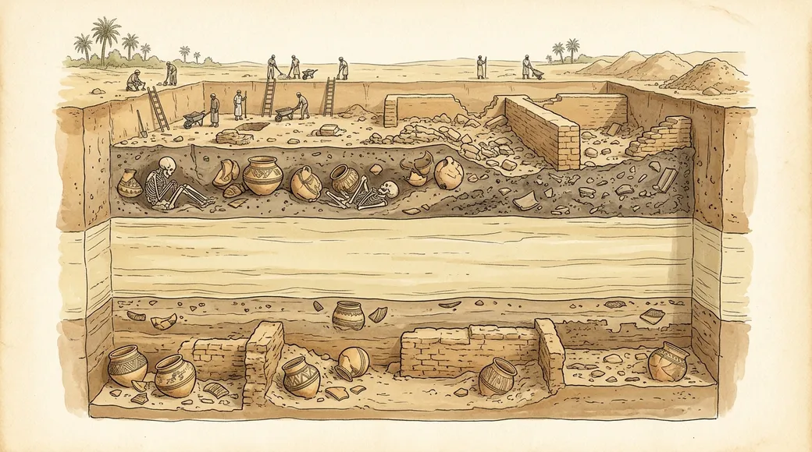
And the flood at Ur came centuries before Hool’s date. The archaeologist Reed Goodman found surviving jars of Woolley’s 1929 flood silt in museum storage. In a study for the British Institute for the Study of Iraq, he re-examined the stratigraphy, that is, the order of the layers of soil and pottery. Goodman places the flood layer between earlier phases of Ubaid pottery, at roughly 5300 to 4100 BCE, and his preferred range is 4500 to 4100 BCE. That is 300 to 700 years before 3800 BCE, too early for the mud to be a trace of a Mabul in 3800 BCE.
Laboratories that measured the radiocarbon in separate fractions of the mud got older dates still. The youngest fraction dates to about 8236 to 7026 BCE. The reason is that river silt carries old carbon washed down from soils upstream, so its radiocarbon age is the age of that eroded soil, not the year of the flood. The date of the flood comes from the pottery in the layers above and below the mud, and that date is still centuries before 3800 BCE.
The Midrash that brought Hool to Mesopotamia is about the dead of the Mabul, and Woolley found no dead in the mud. Woolley writes that his workman dug through eight feet of the flood mud, “again turning up nothing but clean soil that yielded no sign of human activity” (quoted by Hool, p. 74). The same silt preserved the skeletons of the people later buried in it, so it would also have preserved the bones of drowned people, had any been swept there. The layer that Hool takes for the Mabul’s mud has none of the bodies that the Midrash describes.
The excavators of Eridu, the nearest major city to Ur and one of the oldest cities of Mesopotamia, reported no such layer of mud. Eridu lies about twenty-four kilometers (fifteen miles) from Ur. A flood need not leave silt everywhere it reaches, but the one layer that Hool offers as the mud of a worldwide flood is missing even from the nearest city.
Floods that left mud behind were common in Mesopotamia, a flat plain between two great rivers. Hool’s source for Woolley’s excavation is an article by Samuel Noah Kramer, a scholar of ancient Sumer, in southern Mesopotamia. In that article Kramer reports flood layers at Kish and at Shuruppak lying on remains from about 3200 to 3000 BCE, and he dates the layer at Ur to 3500 BCE or earlier. Flood layers at different cities on different dates are what a series of local river floods leaves behind. Kramer’s own conclusion is that the flood behind the Mesopotamian traditions was “an actual catastrophic but by no means universal disaster.”
1.8b Unpredictable traces
Geologists find no layer left by a worldwide flood at 2105 BCE or at 3800 BCE. Hool explains this by holding that the Mabul was a miracle:
No law of nature can tell us what consequences will take place in a supernatural event, and therefore, the quest for signs of natural consequences of a global flood is futile. Nonetheless, there are signs expected to be found in the archaeological record resulting from consequences of the Flood that we know for sure did take place, namely, the sudden death of the whole world population besides for Noah and his family. (preface, p. x)
He adds that the waters “supernaturally disappeared, leaving the sea level as it was before” (p. 55). A miracle need not leave the traces of an ordinary flood, so on Hool’s account the missing traces are no problem.
But if no law of nature decides what traces the Mabul left, then no layer of silt can be identified as the Mabul’s. Ordinary river floods leave the same kind of mud, and Mesopotamia had many of them. On the same page where he calls the mud at Ur “solid corroboration,” Hool writes that “we cannot deduce from the laws of nature how the sediments of the Great Flood might look” (p. 75). He cannot explain the missing worldwide traces by a miracle and then count one layer of mud in one city as a trace of the same flood.
The miracle that Hool names, the disappearance of the water, would not have removed the Mabul’s sediment either. Sand and coarse silt sink to the bottom while the water is still standing, not only when it goes away. By the settling formula of Ferguson and Church (2004), a quartz grain 50 micrometers across sinks 8.86 kilometers in about 49 days, and a grain of silt 10 micrometers across sinks 1.16 kilometers in 150 days (item 15.1). Even if a miracle took away the water at the end of the year, and the fine clay still floating in it, the coarser grains would already lie on the ground unless the miracle erased them too.
Hool also suggests that the water stood at different heights in different regions. Even so, a layer of silt at Ur could be counted as the Mabul’s only if its date and its minerals set it apart from the mud of Mesopotamia’s ordinary river floods. The silt at Ur dates centuries before 3800 BCE, and Ubaid graves are dug into it. Nothing about it ties it to a Mabul in 3800 BCE.
Hool does name one trace that must appear: the death of everyone outside the Ark. He expects it to appear in the archaeological record as “discontinuity and disappearance of civilizations across the globe” (p. x).
Archaeologists find no such break at 3800 BCE. The peoples whom Hool has dying without descendants, such as Europe’s early hunters and farmers and the first peoples of the Americas (The Flood, pp. 107, 139), have descendants among living people, and the cultures that he cites changed slowly, and at different dates.
The nearest thing in Mesopotamia to the mass death that Hool predicts is a group of mass graves at Tell Majnuna, at the edge of Tell Brak in northeastern Syria. The archaeologists Augusta McMahon, Arkadiusz Sołtysiak and Jill Weber excavated several mass graves there (McMahon, Sołtysiak & Weber 2011; Tell Brak Expedition). Several of the deposits held many bodies, mostly of sub-adults (people not yet fully grown) and young adults, and they lie in the right region and near Hool’s date. But the graves date to a phase of about 3800–3600 BCE, within a wider period that archaeologists call Late Chalcolithic 2–3. The year 3800 BCE is only one end of that two-century phase, so the dating cannot put these deaths in 3800 BCE.
The excavators found signs of local fighting and of organized burial, not of a flood. They recorded separate deposits in the mound, together with clay sealings from containers and pottery typical of the period, and they connect the deaths with episodes of violence while the settlement was expanding. One mass grave lay under a layer of broken ceramic plates and animal bones left by a feast held afterward, which is not something a flood leaves. The soil has no sign that water carried the bodies there, and the evidence of organized burial accounts for the mound. The dead of Tell Majnuna were victims of local violence, not of the Mabul.
Archaeologists working across Mesopotamia find that the change from the Ubaid culture to the Uruk culture did not happen everywhere at once. In a 2026 review of the region, the archaeologist Şakir Can separates local changes that were already under way, centuries of growing trade, and scattered episodes of new settlement, destruction or abandonment (Can 2026; Tell Brak Late Chalcolithic levels). Tell Brak grew into an early city before clear southern Mesopotamian artifacts showed up there, while towns in the Upper Tigris and in the Zagros foothills kept much stronger ties to their earlier traditions. Neighboring sites changed in different ways and at different times, so this change cannot mark the single year of a flood.
1.8c The drought of 2105 BCE
Hool’s second piece of evidence is a drought in the tree rings of Europe. The Midrash says that the rain of the Mabul fell gently at first, so that it could become a rain of blessing if the generation repented (Rashi on Bereishis 7:12). Hool reasons that forty days of rain would be a blessing only to a world in a severe drought, so the world before the Mabul must have been very dry (p. 11).
Hool then looks for the drought in a chart of European tree growth published by Mike Baillie, a tree-ring scientist at Queen’s University Belfast, and his colleague Jonny McAneney. The chart follows how well trees grew over time, by the width of their yearly rings. Hool sees in it “a clear downturn in growth around 2200 and a sudden change of pattern and turn to the better around 2105 BCE” (p. 13). He takes the rain that ended the drought to be the Mabul.
The pattern of growth of tree rings in the decades leading up to the year 2105 BCE show strain, followed by a marked change for the better in 2105 BCE. This ties in precisely with the Torah timeline of the Flood in 2105 BCE, together with the Midrash that the world was in desperate need for heavy rainfall at the time of the Flood. (The Flood, p. 14)
This does not work, because neither source has the drought that Hool needs.
The drought is Hool’s addition to the Midrash. The Midrash explains only why the rain began gently, and it says nothing about the weather before the Mabul. Yet Hool goes on to cite “the Midrash that the world was in desperate need for heavy rainfall” (p. 14), as though the Midrash said so.
Hool also misreads the chart (The Flood, pp. 12–14). Baillie and McAneney never mention 2105 BCE. Their paper is about a disturbance in the climate around 2200 BCE, known as the 4.2-kiloyear event. The chart that Hool cites, their Figure 5, is a smoothed average of six European tree-ring series, in which each year is blended with the years around it. Averaging of this kind spreads any turn in growth across several rings, so no single year on the smoothed curve marks an event. (Blurring a photograph spreads a sharp edge in the same way.) Hool’s turn in 2105 BCE comes from reading a smoothed curve more finely than it can be read.
On that figure the authors point out the years 2354–2345 BCE, and a period of poor growth in Irish oaks that began suddenly in 2206 BCE and lasted until about 1890 BCE. The poor growth that they describe runs through 2105 BCE and goes on for more than two centuries after it. Baillie and McAneney do mention, as a speculation, a possible link with a flood near 2350 BCE. If the authors themselves can match one smoothed curve to a flood near 2350 BCE, and Hool can match it to a flood in 2105 BCE, then the curve cannot date a flood to either year.
Even if the chart did have a drought ending in 2105 BCE, Hool’s reading would put the Mabul at the tree ring counted as 2105 BCE. But the rest of his book puts the Mabul at 3800 BCE on the archaeologists’ calendar, which is a different point in the same count of tree rings.
Hool’s drought has to have struck “the world” (p. 11). In 2024 the climate scientist Nicholas McKay of Northern Arizona University and eleven colleagues looked for a worldwide change in climate about 4,200 years ago, that is, roughly 2250 BCE, close to the downturn around 2200 BCE that Hool reads in the tree rings. They gathered 1,142 records of past climate from every continent and ocean. They found significant changes in temperature or rainfall at many single sites around that time, as in other periods, but these local changes did not line up into broad regional or worldwide patterns. Writing in Nature Communications, they concluded that the 4.2-kiloyear event, like most other periods since the last ice age, “is not a globally significant climate excursion.” (They still allow for droughts in particular regions, and their records cannot tell single years apart.) Hool’s reading of the Midrash needs a drought across the whole world before the Mabul, and McKay’s team found no change in the climate of the whole world at that time.
Climate scientists who reconstructed the rainfall of central China found ordinary swings of the regional monsoon around 2105 BCE, not one worldwide catastrophe. In 2026 Jin Liao of the China University of Geosciences in Wuhan, Christopher Day of Oxford and their colleagues analyzed the calcium isotopes in the stalagmite HS4 from Heshang Cave, in the middle Yangtze valley (Liao et al., 2026; PANGAEA dataset). In drier years, rainwater spends longer seeping through the limestone above the cave. This shifts the ratio of calcium isotopes in the mineral that the drips leave behind, so the stalagmite lets scientists reconstruct the rainfall of the valley from 4595 to 3531 BP (years before 1950).
Near 2105 BCE, Liao and Day report one wet sample standing alone: 1,005 ± 166 mm of rain a year at 4047 ± 88 BP, nominally 2098 BCE. The samples on either side of it are drier, at 751 and 769 mm a year. That is an ordinary swing of the monsoon, not a worldwide flood.
The flood deposits that the middle Yangtze left when it overflowed its banks have been dated separately. Their dates fall in wide windows (4200–4000 BP and 4070–3420 BP) that include 2105 BCE, but windows that wide cannot place a flood in that year. Heshang’s strongest long wet phase began about a century later on their chronology (around 3950 BP, give or take 74 years at 95% confidence) and lasted about 140 years, counted by the stalagmite’s yearly growth bands. So the main period of floods in the region came well after 2105 BCE and lasted more than a century, not one year. It probably drove the people of the Shijiahe culture to higher ground.
Researchers who studied other caves in China found that the wet and dry spells at Heshang were local, because nearby records of the monsoon do not keep step with Heshang’s. Remi Cave, about one degree south, was wet at 4250–4120 BP, while Heshang was dry near 2270 BCE. In the lower Yangtze, the unusually wet interval linked with the abandonment of Liangzhu came at 4345–4324 BP, about four centuries before Heshang’s wet phase (Zhang et al., 2021). Even within one river basin, the wet periods did not fall in a single year of a flood.
Even a downturn in tree growth that did happen everywhere at once would not tell us its cause without physical evidence of that cause in the same layer. Baillie and McAneney’s own work gives an example. For decades researchers linked a sharp downturn in Irish oaks that began in 1628 BCE, and a frost ring in a bristlecone pine in 1627 BCE, to the famous eruption of Thera in the Aegean. (A frost ring is a band of crushed wood cells left by a sudden freeze in the growing season.) In 2019 Jonny McAneney and Mike Baillie revisited the dating of the Greenland ice cores and concluded that the volcanic signal in the ice that matched these rings probably came from the Aniakchak II eruption in Alaska instead (McAneney & Baillie 2019). In 2022 Charlotte Pearson and her colleagues took microscopic shards of volcanic glass from 641.12–641.16 meters down in Greenland’s NGRIP ice core and from 774.53–774.78 meters down in the GISP2 core, and matched them to Aniakchak II (Pearson et al. 2022).
A frost ring points to one kind of event, a sudden freeze. A smoothed average of ring widths responds to rainfall, temperature and local stresses alike. If a sharp frost ring could not identify its own eruption until glass from that eruption was found in the ice, a smoothed growth curve cannot identify the Mabul. To link a downturn in tree growth to the Mabul, Hool would need physical evidence of flooding or of mass death in the same layer.
Speeding up the cave’s radioactive clock does not bring its wet phase to 2105 BCE either. Suppose Hool applies his faster decay after the Mabul to uranium–thorium as well as to carbon-14, and moves the layer dated 5749 BP (the layer of 3800 BCE) to 2105 BCE. Heshang’s wet phase of 3950 BP still falls centuries after the Mabul: at roughly 1834 BCE if the faster decay lasted 300 years, and at roughly 1437 BCE if it lasted 1,000 years. Faster decay cannot line up the cave’s wettest phase with 2105 BCE.
1.8d The flood stories
Hool’s third piece of evidence is folklore. He lists flood stories from Sumer, Babylon, India, China, Greece, the Norse lands, the Americas, Australia and the Pacific, and writes:
No other explanation seems credible to the integration of such an unprecedented and incredibly unlikely cataclysmic event into traditions of so many diverse peoples totally unconnected with each other, other than it being a real event that took place. (The Flood, p. 8)
None of the stories on Hool’s list carries a date, so they cannot place the Mabul at 2105 BCE, at 3800 BCE or at any other year. And several entries are not the memories of “totally unconnected” peoples that Hool needs. His list counts one Mesopotamian story twice, misreads Plato on the Greek floods, and counts stories about the making of the world as memories of the Mabul.
More on the flood stories
1.8d.1 One Mesopotamian story counted twice
Hool lists the Sumerian flood story and the Babylonian one as separate entries, as though each were the memory of a separate people. But the two belong to one Mesopotamian tradition.
In 1872 George Smith, a young assistant at the British Museum, was reading clay tablets from the library of the Assyrian king Ashurbanipal at Nineveh when he found a flood story in the Epic of Gilgamesh, an ancient Mesopotamian poem. Its hero, Utanapishtim, is warned by a god to build a boat. He saves his family and the animals, and sends out birds to find dry land. Archaeologists later dug up a Sumerian tablet at Nippur, an ancient Sumerian city, that tells of a flood hero named Ziusudra. The tablet dates to the early second millennium BCE (the second millennium BCE is the span from 2000 to 1000 BCE).
Samuel Noah Kramer, the scholar of Sumer whose article Hool cites for the mud at Ur, calls Ziusudra “the Sumerian counterpart of the Babylonian Utanapishtim,” and he calls the god who warns him “none other than the Ea of the Babylonian version.” So the Sumerian and the Babylonian stories are two versions of one story, not two separate witnesses to a worldwide flood.
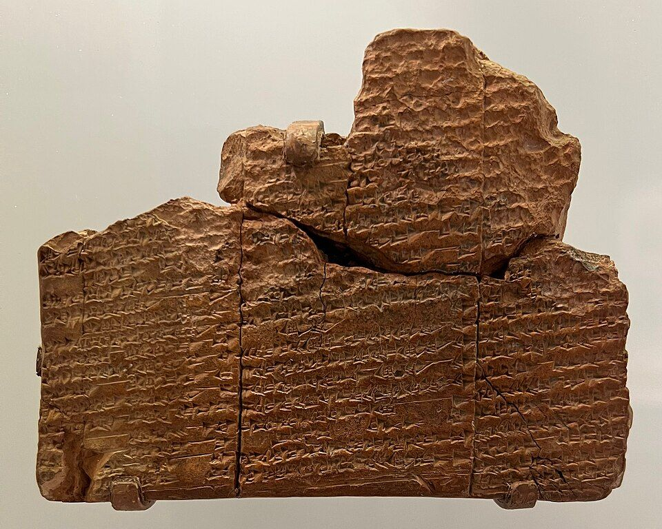
1.8d.2 The Greek floods
Hool has three Greek entries on his list: a flood in the days of a mythical king of Attica, the flood of Deucalion, and a similar story about Dardanus (p. 9). He counts all three as witnesses to the one worldwide flood.
But the Greeks themselves spoke of many floods. In Book III of his dialogue Laws, which Hool cites, Plato writes of “the many destructions of mankind which have been occasioned by deluges and pestilences,” survived by “hill shepherds,–small sparks of the human race preserved on the tops of mountains.”
Hool writes that Plato puts the flood of the king of Attica ten thousand years before Plato’s own time. Plato gives no date for any flood in that dialogue. He says only that the arts were unknown “during ten thousand times ten thousand years.” Since the Greeks told of many separate floods, their stories cannot be counted as three witnesses to one worldwide flood.
1.8d.3 Stories of the making of the world
Hool counts every story on his list as a memory of the Mabul. But several of them tell how the world or its present people were made:
- The Prose Edda of Iceland, which is attributed to Snorri Sturluson (1178–1241), tells how the sons of Bor kill the giant Ymir, whose blood drowns the whole race of frost giants except Bergelmir and his wife. The gods then make the earth out of Ymir’s body, and the first man and woman out of two trees. Hool’s entry places this flood “at the dawn of time” (p. 9).
- Deucalion’s flood, one of Hool’s three Greek entries, is the best-known Greek flood story. Deucalion and his wife Pyrrha ride out the flood and land on Mount Parnassus. The world is then filled again with people made from stones that the two of them throw over their shoulders. In Britannica’s words, “Those stones thrown by Deucalion became men, while those thrown by Pyrrha became women.”
- Hool writes that the Mapuche of Chile hold that “the world was created after a great flood.”
- Hool also writes that the Menominee hero Manabus “created the world as we know it today.”
- Hool’s entry for the Maya has four men and four women who “repopulated the world after a flood.” But the Popol Vuh, the book of the K’iche’ Maya, was written down between 1554 and 1558, and in it the flood destroys an earlier race of people made of wood. The four first men are made afterward, out of maize, and then four wives are made for them. The Maya’s eight are the first people of a new creation, and none of them came through the flood.
A story about how the world or mankind first came to be cannot be a memory of the Mabul. The Torah’s Mabul came 1,656 years after Creation, and everyone after it descends from Noach’s family.
1.8d.4 Floods are common
Hool says that only a real worldwide flood can explain why so many peoples tell flood stories.
But floods are common wherever people settle beside rivers and coasts, which is where most people have always lived. Many peoples would have stories of terrible floods even without one worldwide flood. Several of Hool’s examples are local floods. In the Tahitian story he cites, a single island sinks under the water and one couple survives on the top of Mount Pitohiti (p. 10).
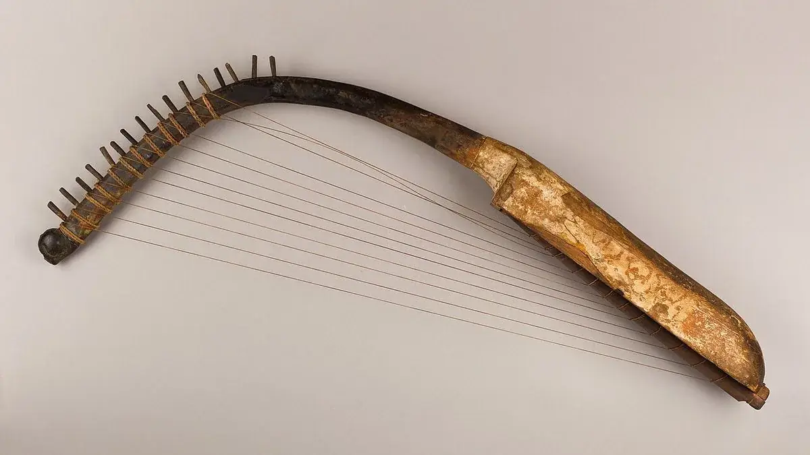
2. The factor of 169
What Hool says.
- The archaeologists’ dates for the years before the Mabul run back hundreds of thousands of years, far more than the 1,656 years that the Torah counts from Creation to the Mabul. Hool holds that each solar year before the Mabul held 169 years of radioactive decay, so those dates have to be divided by 169, and later by 171.
- He gets 169 as thirteen times thirteen. People before the Mabul lived about thirteen times the seventy years of Tehillim 90:10, so he holds that nature was thirteen times more “stable,” and that decay, “a stabilizing process on the subatomic level” (p. 40), ran thirteen times faster. He takes from the Leshem, on the Tikkunei Zohar, that the days before the Mabul were longer than ours, and sets them at thirteen times longer.
- His proof is that ten dates, divided this way, land where the Torah and the Midrash put the inventions and events that they date. He holds that agreement of this kind can’t be chance.
- He adds that the Stone Age population only looks level because so few real years passed, that repair in the body outran damage, and that a Sun that pulsed many times a year laid down the extra tree rings.
Hool’s full argument is in Part Two ↑
What is wrong with it.
- The matches can’t pick out 169. Six of the seven dates that have a target hold at any factor from about 90 to 240, and for the one narrow target, the first Homo sapiens, Hool chose both the date and the factor.
- The carbon-14 in the tree rings counted from before his Mabul falls by about one ordinary year of decay for each ring. His faster decay therefore needs trees that grew about 171 rings a year under a Sun that pulsed 171 times a year, which the yearly layers of a Finnish lake, the Greenland ice and his dates for a solstice monument and an ice age rule out.
- His own conversion puts the first farming villages, the tower of Yericho and Çatalhöyük in the last decades of Kayin’s life, when he holds the whole world wandered, and his dates for Lemech’s children give Kayin’s family lives of more than 1,500 years.
- The article on aging that he quotes traces the damage to mistakes in copying DNA and building proteins, building work that his rule puts with repair on “general time”. Faster decay would also have given the body thirteen times the radiation from its potassium-40.
- None of his sources says that the days were thirteen times longer. The Leshem has the heavens moving more slowly and gives no number, the Tikkunei Zohar ends the long years at Avraham, and more “stable” atoms would decay more slowly, not faster.
- The population table he relies on stays level only because its authors assumed that most children died young, and no single family size in his figures gives both of the population totals that he matches.
- Several matches date the wrong thing. The date for Noach’s plow is the start of farming, the earliest harps and panpipes are known only from pictures, the musical bow from one cave painting because bows rot, and the Eemian sea flooded less than a sixth of the world’s land, not a third.
2.1 The matches don’t pick out 169
Hool argues that every year before the Mabul held 169 years of radioactive decay, so that the archaeologists’ dates for those years must be divided by 169. His proof is that when he divides ten dates from before the Mabul by 169, they land where the Torah or the Midrash puts the matching inventions and events (The Flood, pp. 42–47). “If our assumption was wrong,” he writes, “then we would surely not expect to find such synchronization” (p. 49). In his reply to Aviyam Franco, Hool makes these matches the foundation of his whole theory:
The 10 Carbon dates spread across 300 thousand years yield a sequence of events that mirror images proportionately the sequence of events recorded in the Torah and Rabbinic Tradition. Each date is independently coordinated. … No serious scholar will believe that this incredible coordinated matching sequence came about by pure chance. The only other alternative is that all carbon dates before the flood are out by a factor of around 170. (Hool’s reply to Aviyam Franco)
The reply adds two claims to the argument of the book. One is that the dates keep the proportions of the Torah’s history. The other is that “each date is independently coordinated” with the Torah, so that the matches would fail if the Torah had put an invention in a different generation.
A match is evidence for a particular factor only if chance would be unlikely to produce it. That needs two things. The target has to be narrow, so that most dates would miss it. And the factor has to matter, so that a different number would spoil the match. Hool’s matches have neither. Most of his targets are whole lifetimes, which on his rule take in a hundred thousand years or more of the archaeologists’ calendar. Six of the seven dates that he pairs with a person or an event land on target at any factor from about 90 to 240. So the choice is not between pure chance and a factor of about 170, as Hool’s reply puts it, because almost any factor in that range gives the same matches. The one date with a narrow target is the one for which Hool chose both the date and the factor.
2.1a Targets a hundred thousand years wide
Hool’s first rule for converting a date subtracts 2105 BCE, the Torah’s date for the Mabul, and divides what is left by 169. The result is the number of years before the Mabul, and Hool then looks in the Torah for a person or an event at that point. Farming tools dated to 10,000 BCE, for example, are 7,895 years before 2105 BCE, and 7,895 ÷ 169 = 46.7 years before the Mabul. (Hool later replaces this rule with a final rule that counts back from 3800 BCE and divides by 171.)
The table lists Hool’s ten dates, his arithmetic, and the target that each date has to hit (The Flood, pp. 42–47). Hool’s reply calls all ten “Carbon dates,” but archaeologists got them by several methods: thermoluminescence (which measures radiation trapped in heated stone) for the first Homo sapiens, the decay of uranium in corals for the rise of the sea (as Hool notes on pp. 43–44), and a demographic estimate for the two million people. Hool holds that every kind of radioactive decay ran faster before the Mabul (p. 38), so the different radiometric and luminescence methods don’t change his arithmetic (even though the population figure itself is a demographic estimate rather than a decay date).
| Hool’s date | What it dates | Years before the Mabul | What it has to match |
|---|---|---|---|
| 10,000 BCE | farming tools | 46.7 | Noach, who invented the plow (Midrash Tanchuma). Noach lived 600 years before the Mabul. |
| 9000 BCE | herding of sheep | 40.8 | Yaval. The Torah gives no year for him. |
| 5500 BCE | copper tools | 20 | Tuval-Kayin. No year. |
| 5000 BCE | panpipes | 17.1 | Yuval. No year. |
| 3000 BCE | harps | 5.3 | Yuval. No year. |
| 65,000 BCE | the hunting bow | 372.1 | No event named. |
| 13,000 BCE | the musical bow | 64.5 | No event named. |
| 128,000 BCE | the rise of the sea | 745 | The Flood of Enosh. Enosh lived 905 years. |
| 50,000 BCE | two million people | 283.4 | “About fourteen generations from Adam.” No event named. |
| 300,000 BCE | the first Homo sapiens | 1,762 | Adam’s children before Shes, a window of 130 years. This date misses, because it falls 106 years before Creation. |
To match Noach’s plow, a date only has to land somewhere in the 600 years that Noach lived before the Mabul. To match the Flood of Enosh, the flooding by the sea that the Midrash puts in the days of Enosh, a date only has to land somewhere in Enosh’s 905 years. For Yaval, Yuval and Tuval-Kayin, the sons of Lemech, the Torah gives no years at all. (This Lemech is Kayin’s descendant, not Noach’s father, who was a different Lemech.) Hool puts the three brothers in Noach’s generation because the Midrash says that their sister Naamah was Noach’s wife (Bereishis Rabbah 23:3). That gives their inventions the same 600-year window as Noach’s plow.
ואחות תובל קין נעמה, אמר רבי אבא בר כהנא: נעמה אשתו של נח היתה, למה היו קורין אותה נעמה? שהיו מעשיה נעימים.
“‘And the sister of Tuval-Kayin was Naamah.’ Rabbi Abba bar Kahana said: Naamah was Noach’s wife. Why was she called Naamah [pleasant]? Because her deeds were pleasant.”
Bereishis Rabbah 23:3
For the two bows and the two million people, Hool names no event in the Torah at all. He uses the 50,000 BCE date a second time, under the heading “Intelligent Man,” for the first traces of mankind, and says only that the earlier generations were smaller and left fewer traces (pp. 46–47). That ties the date to no event either. Only the first Homo sapiens have a narrow target: the 130 years from Creation to the birth of Shes, in which, Hool says, Adam fathered beings who were not fully human.
In the archaeologists’ years these targets are very wide. Noach’s 600 years before the Mabul, multiplied by 169, come to 101,400 of the archaeologists’ years. Counting back from 2105 BCE, that reaches to about 103,500 BCE. So on Hool’s first rule, any invention that archaeologists date between 103,500 and 2105 BCE falls in Noach’s lifetime. Hool’s five inventions are dated between 10,000 and 3000 BCE, so they could have been ten times older and still counted as matches. The other targets are just as wide:
- Enosh’s lifetime takes in every date from about 89,000 to 242,000 BCE.
- The 1,656 years from Creation to the Mabul take in every date from 2105 back to about 282,000 BCE.
- Only Adam’s children before Shes have a narrow stretch, from about 260,000 to 282,000 BCE.
Hool’s final rule, which counts back from 3800 BCE and divides by 171, does not narrow these windows. On that rule Noach’s lifetime takes in every date from 3800 back to about 106,400 BCE, and Enosh’s lifetime takes in every date from about 92,000 to 247,000 BCE. Almost any date from the last part of the Old Stone Age or from the first farming villages lands in one of these windows.
A good example is the farming tools of 10,000 BCE. Hool matches them to Noach, who, the Midrash Tanchuma says, made the first plows, sickles and axes (p. 43):
וְלֹא עוֹד אֶלָּא עַד שֶׁלֹּא נוֹלַד נֹחַ עוֹשִׂין מְלָאכָה בִּידֵיהֶם לְכָךְ כְּתִיב וּמֵעִצְּבוֹן יָדֵינוּ. נוֹלָד נֹחַ הִתְקִין לָהֶם מַחֲרֵשׁוֹת וּמַגָּלוֹת וְקַרְדֻּמּוֹת וְכָל כְּלֵי מְלָאכָה.
“Moreover, before Noach was born, people did their labor by hand, which is why it is written, ‘and from the toil of our hands.’ Once Noach was born, he fashioned for them plows, sickles, axes, and all kinds of work tools.”
Midrash Tanchuma, Bereishis 11
Hool writes that sickles first appear with the first farming, around 10,000 BCE (p. 29). But in 2016 Iris Groman-Yaroslavski, Ehud Weiss and Dani Nadel reported in PLOS ONE that five flint blades from Ohalo II, the camp on the shore of the Kinneret dated to about 23,000 years ago, were worn from cutting wild cereals, and that some had been set in handles like sickles. These sickles are about 11,000 years older than Hool’s date. Yet on Hool’s first rule they still fall in Noach’s lifetime: 23,000 years ago is about 21,000 BCE, and (21,000 − 2,105) ÷ 169 is about 112 years before the Mabul.
So of Hool’s ten dates, six have targets a hundred thousand years wide or more, three have no target, and only the first Homo sapiens have a narrow one. A date will almost always land somewhere in a window a hundred thousand years wide, and a date with no target can’t hit or miss anything. Neither kind of match is evidence for the factor.
2.1b Factors from 90 to 240 fit
If the matches were evidence that the factor is 169, other factors should spoil them. My bochurim tried other factors to see whether they do. They took Hool’s ten dates and his first rule, with the Mabul at 2105 BCE, ran every factor from 100 to 250 in steps of 0.5, and counted how many dates landed on target at each step. They scored only the seven dates that Hool ties to a person or an event. They left out the two bows and the two million people, which have no target to hit or miss.
At 169, six of the seven dates land on target, and the first Homo sapiens miss. The score is the same at 120 or 230, and better at 185. It stays at six of seven at every factor from 100 to 179.5 and from 195.5 to 243.5. Below 100 it stays at six down to a factor of 89, where the rise of the sea drops out of Enosh’s lifetime. All seven dates hit their targets only at factors from 180 to 195, because only in that range do the first Homo sapiens fall in the 130 years between Creation and the birth of Shes.
The factor makes so little difference because all five inventions are dated between 10,000 and 3000 BCE. Subtract 2105 BCE and divide by any large number, and all five land in the last few decades before the Mabul, in Noach’s lifetime. The plow lands in Noach’s lifetime at any factor above about 13, and so do the other four inventions. The rise of the sea lands in Enosh’s lifetime at any factor from about 89 to 244. So these six dates land in the right lifetimes because the lifetimes are wide, not because the factor is 169.
Hool also counts it as a match that the brothers’ inventions fall close together. On the archaeologists’ dates Yaval’s herding and Tuval-Kayin’s copper tools are three thousand years apart, which Hool raises as a problem (p. 30). After dividing by 169, he writes that the factor “allows naturally for Tubal-Cain and Jabal to be stepbrothers” (pp. 42–43). But dividing by a large number shrinks the gaps between the dates along with the dates themselves. At every factor from 100 to 240, Yaval’s herding of sheep, Tuval-Kayin’s copper tools and Yuval’s panpipes fall within forty years of one another, and Yuval’s harps fall within sixty. On Hool’s account all three brothers were still alive in the year of the Mabul (p. 188), so inventions forty or sixty years apart fit them at any of these factors.
The factor matters just as little on Hool’s final rule. When Hool moves the Mabul to 3800 BCE on the archaeologists’ calendar and divides by 171 (pp. 52–54), he does not go back and recompute his ten matches. My bochurim recomputed them. At every factor from 100 to 178.5 and from 194.5 to 240.5, the same five of the seven dates with a target land on target: Noach’s farming tools, Yaval’s herding, Tuval-Kayin’s copper tools, Yuval’s panpipes, and the rise of the sea in Enosh’s lifetime.
On the final rule, the harps of 3000 BCE miss at every factor. The year 3000 BCE is later than 3800 BCE, so the harps come after the Mabul, when Yuval was dead. The first Homo sapiens, at 300,000 BCE, land in their window only at factors from 179 to 194, where the score rises to six. So at Hool’s factor of 171, the date of 300,000 BCE misses the one narrow target on the list. (Hool gets a hit only by lowering the date to 280,000.)
In his reply to Franco, Hool deals with the harps by saying that the harps of 3000 BCE were made after the Mabul, by someone other than Yuval. Harps that are not Yuval’s can’t date Yuval, at this factor or any other.
That leaves one date among the ten that could tell one factor from another: the first Homo sapiens, with a window 130 years wide. That is the date Hool used to set the factor when he raised it from 169 to 171.6, so it can’t also confirm the factor.
2.1c The one narrow target
The fossils that Hool takes for the first Homo sapiens come from a cave at Jebel Irhoud in Morocco. In 2017 Daniel Richter of the Max Planck Institute for Evolutionary Anthropology in Leipzig and his colleagues dated the fossils by thermoluminescence: they measured the energy that flints dropped into the cave’s fires have stored up from natural radiation since the fire emptied it, and found an age of 315,000 years, give or take 34,000. A tooth from one of the jaws, dated by a separate method, came out at 286,000 years, give or take 32,000.
At the factor of 169, the first Homo sapiens miss their target. Hool’s first rule turns 300,000 BCE into 1,762 years before the Mabul. The Mabul came 1,656 years after Creation, so that is 106 years before Creation, and Hool wrote that “this number could not be possible” (p. 46). So he changed both the date and the factor:
However, the date of 300,000 BCE is not an exact date. It is actually given as 314,000 years plus or minus 34,000 years. Furthermore, this calculation is based on a rough estimate that the stability of life was thirteen times greater than at present. If we take the lowest figure, 280,000, and further refine the stability of life factor slightly to 13.1 times the present state, and accordingly scale down by a factor of 171.6 (13.1 x 13.1 = 171.6) then this yields a result of 1,619.6 years before the Flood (297,895/171.6 = 1619.6), which now synchronizes with the offspring of Adam and Eve before the birth of Seth referred to in the Talmud and Midrash. (The Flood, pp. 46–47)
The two changes put the fossils 37 years after Creation, among Adam’s children before Shes. Hool says that the date of the first Homo sapiens “allows a more precise number for the rate of decay and time dilation before the Flood” (pp. 46–47). He adds that 37 years were enough for these beings to multiply, because with days 13.1 times longer, the 37 years were “effectively the equivalent of 484.7 years (13.1 x 37 = 484.7), which could very possibly have enabled this form of subhumans to multiply sizably” (p. 47).
So Hool hit the one narrow target on his list by choosing both the date and the factor, and the match can’t confirm the factor. To begin with, the lower date alone was enough. On the first rule, with the factor of 169, 280,000 BCE lands about 12 years after Creation. In fact 280,000 BCE lands in Adam’s 130 years at any factor from about 168 to 182, so the match does not pick out either 169 or 171.6.
The measurement is also far too rough to pick out a factor. The age of the flints has a margin of error of 34,000 years either way. Divided by 171, that is about two hundred of Hool’s years, wider than the whole 130-year window. Within the range measured on the flints, any factor from about 166 to 225 puts some date in Adam’s 130 years. Within the tooth’s range, any factor from about 150 to 205 does the same. So even on this one date, the evidence can’t tell 169 from 200.
And the match holds only if the true age lies in the lower part of the measured range. On Hool’s final rule, the central date of the flints, 315,000 years ago, falls about 150 years before Creation. Hool’s chosen figure of 280,000 lands 41 years after Creation, and the tooth’s central date 17 years after it.
Working from the radiation that the flints absorbed, instead of dividing their published age, puts the center of the flints before Creation too. A heated flint stores energy from two sources: radioactive minerals in the flint and in the soil around it, and cosmic rays from space. Daniel Richter and colleagues (Nature, 2017, Table 1 and Extended Data Table 2D) report that in layer 7, which holds the main fossils, the minerals supply 1.025 to 1.391 gray per thousand years across the seven flint samples. (A gray is a unit of radiation energy absorbed per kilogram.) The cosmic rays supply 0.070 gray per thousand years, which is 4.8 to 6.4 percent of the yearly dose (Richter et al., Nature, 2017; see Prescott and Hutton, 1994, on the dose from cosmic rays underground). So almost all of the dose came from the minerals.
The difference matters because Hool’s faster decay applies to radioactive minerals, not to cosmic rays that come from outside the Earth. Dividing the whole age by 171 treats the cosmic rays as if they too had sped up 13.1-fold before the Mabul. We can instead add up the dose the way Hool’s model requires. On Hool’s timeline, the 1,656 solar years from Creation to the Mabul, stretched by 13.1, become 21,693.6 physical years, followed by 4,130 physical years from the Mabul in 2105 BCE to today. The minerals’ dose runs 13.1 times faster in the years before the Mabul and at today’s rate after it, and the cosmic dose runs at today’s rate throughout.
(In symbols: let r be a flint’s mineral dose rate today, c its cosmic dose rate under the ground, k and h the speedups of the minerals and of the cosmic rays before the Mabul, t the physical time before the Mabul in thousands of years, and B the mineral dose after the Mabul in thousands of today’s years. The total dose is then D = r(kt + B) + c(ht + 4.130).)
Even with assumptions slanted in Hool’s favor, the dose puts the flints of layer 7 before Creation. Give Hool his full 13.1-fold mineral decay before the Mabul, today’s cosmic dose, and a generous 8,000 years’ worth of mineral dose after the Mabul, nearly double the 4,130 ordinary years since then. The weighted center of the layer-7 flints still lands 25,020 physical years before the Mabul, which is 254 of Hool’s years before Creation. The people who heated those flints would have lived before Adam.
| Mineral dose after the Mabul | Cosmic dose before the Mabul, as a multiple of today’s | Weighted center of layer 7, before the Mabul | Where that falls against Hool’s Creation |
|---|---|---|---|
| 4,130 equivalent years | 1× | 25,310 physical years | 276 Hool years before Creation |
| 8,000 equivalent years | 1× | 25,020 physical years | 254 Hool years before Creation |
| 8,000 equivalent years | 6× | 24,450 physical years | 210 Hool years before Creation |
| 8,000 equivalent years | 13.1× | 23,680 physical years | 152 Hool years before Creation |
Raising the cosmic dose does not move the center after Creation. At six times today’s cosmic dose it lands 210 of Hool’s years before Creation, and at the full 13.1 times it lands 152 years before. (Faster production of radioactive atoms high in the air would not in any case multiply the cosmic dose that reaches flints under several meters of cave roof and earth.) The published age carries a margin of 34,000 years, so some younger flints sit closer to Adam’s 130 years, but the center of layer 7 lands well before Creation. Hool’s match depends on taking the young end of the measured range.
Hool’s printed arithmetic for Jebel Irhoud also has an error. He writes “297,895/171.6 = 1619.6,” but 297,895 (300,000 minus 2,105) divided by 171.6 is 1,735.98. To get 1,619.43, the number divided has to be 277,895, which comes from his lowered date of 280,000. The equation he printed uses the old date, and its result uses the new one.
2.1d Dividing keeps the proportions
Hool also offers the order of the dates as evidence. In his reply he writes that the dates “mirror images proportionately the sequence of events recorded in the Torah.” He means that the order of the archaeologists’ dates, and the proportions of the gaps between them, match the Torah’s history, and he holds that this can only be because the factor is right.
But dividing a list of dates by one number can’t change their order or their proportions. Whatever came first before the division still comes first after it. A date twice as far from the Mabul as another date is still twice as far after the division, whatever the factor. (The same happens when a list of distances is converted from miles into kilometers, or when every figure in a spreadsheet is divided by ten.) The division does shrink every gap, which is why the brothers’ inventions bunch together near the Mabul under any large factor.
So if the archaeologists’ dates match the Torah’s order and proportions, they match them at any factor, and with no division at all. The factor decides only where the dates land against fixed points in the Torah, such as Noach’s lifetime, and nearly every factor from 100 to 240 puts them in the same places. The order and the proportions are no evidence that the factor is 169.
For most of these events the Torah gives no order anyway. Yaval, Yuval and Tuval-Kayin were brothers, and the Torah doesn’t say which of them made his invention first, or how long before the Mabul he made it.
2.1e Adam’s sons and the first farmers
In his reply to Franco, Hool explains what he means by calling the dates “independently coordinated.” The matches, he says, would fail if the Torah had put an invention in an earlier generation:
For example, if the Torah recorded that Adam created the plough or any one of the generations before the Flood, the dates would not match. (Hool’s reply to Aviyam Franco)
By this standard, Hool’s matches for farming and herding fail. The Torah puts both of them in Adam’s own household, more than fifteen hundred years before Hool’s dates: “Hevel became a keeper of sheep, and Kayin became a tiller of the soil” (Bereishis 4:2).
Archaeologists date the first farming to about 10,000 BCE and the first herding of sheep to about 9000 BCE. Hool converts these to 46.7 and 40.8 years before the Mabul (p. 43). He matches the farming to Noach, who, the Midrash Tanchuma says, made the plow, the sickle and the axe. He matches the sheep to Yaval, whom he calls, following Rashi, the founder of shepherding. So on Hool’s dates, farming and herding both began more than fifteen centuries after Kayin and Hevel.
Even the oldest known trace of planting comes far too late for Kayin. In 2015 Ainit Snir and colleagues found weed seeds at Ohalo II, the camp on the Kinneret where the old sickles were found, that point to a small early attempt at planting wild cereals. On Hool’s first rule those seeds fall only 112 years before the Mabul, some fifteen centuries after Kayin tilled the soil.
For the sheep, Hool could point out that Rashi distinguishes Yaval from Hevel. Since Bereishis 4:2 already calls Hevel a keeper of sheep, Rashi on Bereishis 4:20 describes Yaval more narrowly, as the first to graze herds in open pastures and to live in tents, “a month here and a month there,” moving on whenever the grass ran out:
אבי יושב אהל ומקנה – הוא היה הראשון לרועי בהמות במדברות ויושב אהלים חדש כאן וחדש כאן בשביל מרעה צאנו וכשכלה המרעה במקום זה הולך ותוקע אהלו במקום אחר.
“‘The father of those who dwell in tents and keep herds’—he was the first to graze livestock in open pastures, living in tents a month here and a month there to pasture his flocks; when the grass ran out in one place, he moved on and pitched his tent somewhere else.”
Rashi on Bereishis 4:20
But the site that Hool dates was not a place of herders living in tents. Hool’s source describes people at Aşıklı Höyük, a permanent village in central Turkey, who “had penned wild sheep in about 9000 to 8200 BCE” (p. 30). Mary Stiner and her colleagues, who excavated Aşıklı Höyük, describe a slow change inside the village. Its people went from hunting many kinds of wild game and catching young sheep and goats to keeping animals in dung-filled spaces between the buildings, breeding them there, and managing larger herds (Stiner et al. 2014; Stiner et al. 2022). In a separate study, Jordan Abell and colleagues measured the salts from urine and the nitrogen in the layers of dung and refuse across the village. These rose over time. Read together with the rest of the excavation, the rise fits more and more animals being penned inside the village (Abell et al. 2019). So Aşıklı Höyük shows sheep penned and bred in a settled village, not the herders in tents of Rashi’s description, and its date can’t be the date of Yaval’s invention.
The DNA of ancient sheep separates these stages too. Two studies separate the early keeping of sheep in villages, and the loss of genetic variety that followed, from much later movements of flocks that were already being kept, such as an influx into Europe from the steppe in the Bronze Age. One is a 2024 study of the mitochondrial DNA of sheep from Aşıklı Höyük (Aşıklı sheep mitogenomes 2024). The other is a 2025 study by Kevin Daly and his colleagues of the genomes of 118 ancient sheep from across Europe and Asia (Daly et al. 2025). Neither study finds when people first took their flocks to live in tents, so the DNA of the sheep gives no date for Yaval either.
Hool could answer that Kayin’s farming and Hevel’s sheep left no trace, as he answers about the harps. But then the oldest surviving trace of an invention can come fifteen centuries after the invention, and the date of that trace says nothing about when the invention was made. The matches would then stop being evidence for the factor.
2.1f The dates for the sea
Hool offers four more matches, tied to the rise and fall of the sea, and each of them lands within a year or two of a particular year in the Torah (pp. 52–54):
- The rise of the sea at the start of the Eemian, the last warm period between ice ages, about 128,000 BCE, lands in the year 930 from Creation, the year Adam died. Hool takes this rise to be the Flood of Enosh.
- The sea began to fall at the end of the Eemian, about 118,000 BCE. That date lands in the year 988, a year after Chanoch was taken in 987. Hool reasons that the death of a righteous man atones for his generation, so that the atonement of Chanoch’s death made the waters begin to go down (p. 53).
- A “marked and steady decline” of the sea at 116,000 BCE lands, by Hool’s count, 58 years before Noach was born. Fifty-eight is the numerical value of the letters of נח (nun is 50 and ches is 8). The name Noach means “rest,” and Hool suggests that Lemech saw that Noach was born in the fifty-eighth year after the waters began to go down and named him for it (p. 54).
- Hool takes the peak of the last ice age, around 24,000 BCE, as the time when the ice began to melt and the sea began to rise again. That date lands 120 years before the Mabul, and Hool matches it with the 120 years of Bereishis 6:3, which Seder Olam counts from the decree of the Mabul to the Mabul. Hool holds that the rising waters were a warning to Noach’s generation to repent (p. 54).
The match with the 120 years depends on when the ice began to melt. Hool writes that the water locked in the ice grew “until the amount of water trapped in glacial ice reached a maximum at around 24,000 BCE,” and that “from then on, the world ocean entered a warm phase, the ice began to melt.” He sets the date at 24,300 BCE: “(24,300 – 3,800)/171 = 120 years before the Flood” (p. 54).
The paper in Hool’s footnote says otherwise. The link in the footnote leads to a 2009 paper in Science by Peter Clark of Oregon State University and his colleagues, who brought together thousands of dates for the edges of the ice sheets and glaciers of the last ice age. They found that the ice sheets grew to their greatest size between 33,000 and 26,500 years ago and then stayed at that size “from 26.5 ka to 19 to 20 ka,” that is, until 19,000 or 20,000 years ago. Only then did the ice sheets begin to melt. Hool’s 24,300 BCE, about 26,300 years ago, falls when the ice sheets were at their greatest size. The melting began some seven thousand years later, which on Hool’s rule falls about 80 years before the Mabul. The 120-year match works only because Hool took the time when the ice was at its greatest size for the time when it began to melt.
Hool’s rule also squeezes the melting of the ice into impossibly short times. Near the end of the last ice age, melting ice sheets raised the sea in a fast surge that geologists call Meltwater Pulse 1A. In 2012 a team of geologists led by Pierre Deschamps drilled fossil coral reefs off Tahiti, and reported in Nature that the sea rose 14 to 18 meters between about 14,650 and 14,310 years ago. On Hool’s rule those 340 years become 1.99 solar years (340 ÷ 171). So shortly before the Mabul, the oceans of the whole world would have had to rise 7 to 9 meters a year. (The reef geologists Paul Blanchon and Patrick Chutcharavan reassessed the surge in 2023 and gave a rise of 13.8 meters, give or take 1.3, over a longer span. That still needs a rise of meters every year on Hool’s rule.) Melting an ice sheet takes heat, and faster radioactive decay supplies neither the heat nor the rate of melting needed to collapse the ice sheets of a continent in two years.
The matches with Chanoch and Noach need dates far more precise than anyone has. Hool’s dates, 118,000 and 116,000 BCE, are round numbers. A thousand of the archaeologists’ years is about six of Hool’s years (1,000 ÷ 171), so rounding to the nearest thousand already blurs each match by three years either way. And scientists can’t date the end of the Eemian even to the nearest thousand years. In 2015 Aline Govin and twenty-three colleagues compared the ways that records of that period have been dated, from ice cores (long columns of ice drilled out of an ice sheet) to the mud of the sea floor, and worked out how uncertain each date is. In the Antarctic ice, on the timescale now used for those cores, the warm period ends about 116,300 years ago, give or take about 1,800 years. Divided by 171, 1,800 years is about ten of Hool’s years. Hool’s two dates are two thousand years apart, about the size of that uncertainty, so they can’t be tied to two different years in the Torah, let alone each to within a year or two of Chanoch’s death and Noach’s birth.
For the fall of the sea at 116,000 BCE, Hool’s division gives 656.1 years before the Mabul, and he ties the gap before Noach’s birth to the numerical value of Noach’s name:
This takes us to the 657th year before the Flood. Since the Flood took place in the six hundredth year of Noah’s life, then Noah was born precisely fifty-eight years after the waters noticeably subsided. (The Flood, p. 54)
Counted Hool’s way, from the 657th year before the Mabul to the 600th, the gap is 58 years. Subtracting 600 from 656.1 gives 56. Either way, the Torah records nothing in the year fifty-eight years before Noach was born. The year is marked only by the value of the letters of Noach’s name (נח = 58), which Hool brings in after his division has given him the number.
The match with Adam’s death is the one that Hool chose his final rule to produce. He first divided 128,000 BCE by his refined factor of 171, with the Mabul at 2105 BCE, and got the year 920 from Creation. This, he wrote, was “just ten years before the death of Adam… This is surely not a coincidence” (p. 52). He holds that the Flood of Enosh was held back in Adam’s merit until Adam died. So he moved the Mabul to 3800 BCE on the archaeologists’ calendar, which puts the rise of the sea in the year 930: “(128,000 – 3,800)/171 = 726 years before the Flood. 1,656 – 726 = 930 years after Creation” (p. 52). Hool’s other three matches with the sea all use this same rule.
Evidently, during the lifetime of Adam, through his merit, the world was prevented from devastation, just like the Flood of Noah was prevented during the lifetime of Methuselah. What this means is that the Flood of Enosh took place ten years later, upon the death of Adam. This can be synchronized if we set the conventional date for the Flood at around 4000 BCE instead of 2105 BCE due to the unaccounted-for higher rate of radioactive decay in the period after the Flood, as can be seen below: (128,000 – 3,800)/171 = 726 years before the Flood. 1,656 – 726 = 930 years after Creation. (The Flood, p. 52)
Even if the Eemian rise were the Flood of Enosh, it flooded at most 16.2 percent of the land (about 20 percent on a higher estimate of the shallow sea floor), about half of the third that the Midrash describes.
2.2 Carbon-14 keeps pace with the ring count
The archaeologists’ dates for the years before the Mabul take up far more time than the 1,656 years that the Torah counts from Creation to the Mabul. To fit them in, Hool proposes that radioactive decay ran much faster before the Mabul, so that each solar year held about 171 years of decay. (He starts with 169 and later raises it to 171.) Hool does not say what made decay faster. He argues only that the long lives before the Mabul mean that something in nature was different then, and that the same unknown difference may have changed radioactive decay too:
But even if the two are unconnected, longevity involves complex microscopic processes, so there was obviously something very different in nature in the period before the Flood that caused this drastic difference in human longevity. Therefore, without knowing the full nature of this unknown difference, who is to say that it might not have also affected the microscopic processes of radioactive decay as well. (The Flood, p. 39)
We do not need to know the cause to find out whether decay really ran faster, because faster decay would have left a mark in the tree rings, and the rings show none. Hool can keep his factor only if the trees grew about 171 rings a year.
2.2a Two dates for one ring
Scientists have built long, continuous counts of tree rings by matching the patterns of wide and narrow rings in overlapping pieces of living and dead wood. Hool quotes a description of this method from the University Corporation for Atmospheric Research (pp. 156–157). Each ring in such a count can be dated in two separate ways: by its place in the count, and by the carbon-14 left in its wood.
If decay ran at today’s rate, the two dates agree. If decay had run faster in some stretch of years, the rings of that stretch would have lost more carbon-14 than their count of years allows. Their carbon-14 dates would then come out older than their counted dates.
2.2b One year per ring
Hool’s final rule puts the Mabul at 3800 BCE on the archaeologists’ calendar and divides the archaeologists’ years before that date by 171. My bochurim compared the counted dates and the carbon-14 dates of the rings that grew before the ring counted as 3800 BCE. They used IntCal20, the calibration curve that laboratories around the world use to turn a carbon-14 measurement into a calendar date. For these millennia the curve is built from tree rings whose ages are known by counting.
Between the ring counted as 10,000 BCE and the ring counted as 3800 BCE there are 6,200 rings. Across those rings the carbon-14 age falls from about 10,280 radiocarbon years to about 5,040. That is a fall of about 5,240 radiocarbon years, or about 0.85 of a radiocarbon year for each ring.
Radiocarbon years are a laboratory unit, not calendar years. If the trees grew one ring a year, decay ran at today’s rate and the air always held the same share of carbon-14, the carbon-14 age would fall by about 6,020 radiocarbon years across the 6,200 rings. The difference between 6,020 and 5,240 comes from changes in how much carbon-14 the air held. So across the whole stretch, each ring holds about one ordinary year of decay. Hool’s factor, by contrast, puts 171 years of decay into each solar year before the Mabul.
A steady fall of about one year of decay for each ring leaves only two possibilities. Either each ring took about a year to grow and decay ran at today’s rate, or the trees grew many rings each year and each year held as many years of decay as it held rings. Extra carbon-14 in the air cannot rescue a third possibility, one ring a year with 169 or 171 years of decay in each. For the ring counted as 9001 BCE, one ring a year under 169-fold decay means that one milligram of that ring’s carbon, to have the carbon-14 that laboratories measure in it today, would have needed about 1,050 Earth masses of carbon-14 to begin with. So Hool’s faster decay requires the trees to have grown many rings every year.
2.2c pulses of the Sun a year
Hool’s explanation starts from the Seforno and the Midrash Rabbah on Bereishis 8:22, from which he takes it that before the Mabul the Earth’s axis had no tilt and the world had no seasons. The extra rings, he proposes, “might have been achieved if the sun at regular intervals pulsated more energy than normal,” so that “every solar year in the 1655 solar years before the Flood actually contained many cycles of seasons” (pp. 157–158).
Hool does not say how many times a year the Sun pulsed, but his numbers require 171. His final rule turns every 171 years on the archaeologists’ calendar before 3800 BCE into one solar year. For those millennia the archaeologists’ calendar is a count of tree rings, one ring for each year. So every solar year before the Mabul held 171 rings, and the Sun had to pulse 171 times a year to make them. Hool does this arithmetic for the Neolithic, the period when people began to farm. Archaeologists date its start to 10,000 BCE, 6,200 rings before the ring counted as 3800 BCE, and Hool puts it “about thirty-six years before the Flood (6,200/171 = 36.2)” (p. 188). So 6,200 rings grew in about 36 years, which is about 171 rings a year.
The number of pulses comes out the same as the factor for decay because one division produces both. On Hool’s figures each of the Sun’s days lasted 13.1 of our days, so a solar year of 365.24 days lasted about 4,785 of our days. Shared among 171 pulses, that is about 28 of our days for each ring, or about two of the Sun’s long days.
Hool’s reply to Aviyam Franco of 9 November 2026 gives these pulses a second job. Franco had argued that decay 169 times faster before the Mabul would make the calibration curve drop off a cliff at the Mabul. One of the reasons Hool gives for expecting no cliff is “the rate of seasonal years before the flood.” In the book, the pulses only had to make enough rings. In the reply, they also have to keep the carbon-14 in the rings falling smoothly, and the carbon-14 falls smoothly only if each ring holds about one ordinary year of decay. So the reply makes the pulses depend on the decay: there has to be one pulse for every year’s worth of decay, which is the same 171 a year. This is a new difficulty, because the pulses come from the Sun and the decay from the atom, and nothing in Hool’s account links the two.
At one ring every 28 days, the trees could not have kept up. Living oaks take about 70 days just to open the water vessels of their spring wood, and about 212 days to finish a ring. Hool’s model needs oaks to finish a whole season’s growth roughly seven times faster than oaks can.
2.2d Carbon-14 in the air before the Mabul
Even if the trees could grow 171 rings a year, Hool’s faster decay creates another problem, in the air from which the trees took their carbon. Hool’s factor joins two claims. Decay ran thirteen times faster, and each day was thirteen times longer, so that each day held 13 × 13, or 169, of today’s days of decay (The Flood, p. 42). On Hool’s account the longer day was a stretching of time. The Sun’s day, Hool writes, “took 13 × 24 hours to complete,” while people’s “heartbeats, motion, and thought processes” kept their ordinary pace (pp. 152–153). Decay was not slowed by the long day either. It ran by the ordinary hour, and in each hour it ran thirteen times faster than it does now.
Faster decay would have acted on the carbon-14 in the air as well as in the wood. Carbon-14, Hool writes, “is produced in the upper atmosphere after nitrogen-14 isotopes have been impacted by cosmic radiation” (p. 25). Cosmic rays are particles from outer space. The carbon-14 they make mixes into the carbon dioxide of the air and from there into plants and the sea, while the carbon-14 already there decays. The share of carbon-14 in the air settles at the level where as much of it decays in a year as the cosmic rays make in a year. Scientists call such a level an equilibrium. (A bath with the tap running and the plug out settles in the same way, at the level where as much water runs out as runs in. With a wider drain, it settles lower.)
The longer days alone would not have lowered the air’s share of carbon-14. In a day thirteen times longer, the cosmic rays made thirteen times as much carbon-14, and thirteen times as much of it decayed. The faster decay within each hour lowers the share. Cosmic rays are particles in motion, and they make carbon-14 through a nuclear reaction. Hool keeps motion at its ordinary pace (p. 152), and he puts the nuclear forces on “general time,” the rigid clock that decay also follows (Six Days 2, p. 145). So in each hour before the Mabul, the cosmic rays made as much carbon-14 as they do today, while thirteen times as much of it decayed.
If the carbon-14 had stayed spread among the air, the plants and the sea as it is today, its share in the air would have fallen to a thirteenth. The deep ocean softens that fall. More than nine-tenths of the carbon that passes back and forth between the air, the plants and the sea is in the deep ocean, whose water takes about a thousand years to come back to the surface (Martin Aitken, Science-based Dating in Archaeology, 1990). Most of the carbon-14 made today decays in that deep water. With faster decay, less of it would have lasted long enough to reach the deep sea, and a larger share would have stayed in the air.
A calculation that follows the carbon through the air, the plants and the upper and deep ocean, using the standard sizes of these stores of carbon and the standard times for mixing between them, puts the air’s share of carbon-14 at a fifth to a seventh of today’s. Starting from today’s level at Creation, the air would have fallen to a third of that level within eighty solar years, and close to its final level within two hundred. That is earlier than every one of Hool’s matches except the first Homo sapiens.
A plant that grew in air with so little carbon-14 would measure about 13,000 to 15,000 radiocarbon years older today than a plant of the same age that started with today’s share. The tree rings from before 3800 BCE have no such offset. The ring counted as 3800 BCE measures about 5,040 radiocarbon years. On either of Hool’s choices for the ring of the Mabul, at least 4,130 years have passed since the Mabul, and they account for about 4,010 of those radiocarbon years. So by Hool’s rates, that ring must have started with at least seven-eighths of today’s share of carbon-14. Had it grown in air with a fifth to a seventh of today’s share, it would now measure about 16,500 to 19,500 radiocarbon years or more. Its measured age of about 5,040 radiocarbon years rules out the loss of carbon-14 from the air that Hool’s faster decay would have caused.
In his reply to Franco, Hool lists “the atmospheric conditions before the flood” among the reasons that the calibration curve has no cliff, without saying what those conditions were. This adds a new step to his account: something about the air before the Mabul kept its carbon-14 up. To keep the air’s carbon-14 near today’s level against faster decay, cosmic rays would have had to strike five to seven times as often, in every hour from Creation to the Mabul, and then drop back to today’s rate. The new step brings a new difficulty. A surge of cosmic rays lasting all the centuries before 3800 BCE would have left its mark in records that have nothing to do with carbon-14, and scientists have measured one of those records in the Greenland ice.
2.2d.1 No beryllium-10 jump in the ice
Cosmic rays also strike nitrogen and oxygen in the air and make beryllium-10, a radioactive form of beryllium. Unlike carbon-14, beryllium-10 does not linger in the deep ocean. Rain and snow wash it to the ground within weeks, or within a year or two if it formed high in the atmosphere (Ilya Usoskin, Living Reviews in Solar Physics, 2013). Its half-life is about 1.39 million years, so Hool’s faster decay would have destroyed almost none of it. Each yearly layer of ice therefore keeps the beryllium-10 that the cosmic rays made while that layer formed. By measuring the beryllium-10 in the ice, scientists can tell how strong the cosmic rays were without relying on carbon-14.
Hool’s rule packs about 171 layers of ice into each solar year before the Mabul, just as it packs 171 tree rings. That leaves each layer only about 28 of our days to gather its beryllium-10. In those four weeks, cosmic rays five to seven times as strong as today’s would make only a third to a half as much beryllium-10 as a whole year makes today. So the beryllium-10 in each layer would jump two- or threefold just after 3800 BCE, when each layer of ice went back to being a whole year. For each layer before the Mabul to get a full year’s beryllium-10, the cosmic rays would have had to be thirteen times today’s strength. But keeping the air’s carbon-14 at today’s level takes five to seven times today’s strength, not thirteen.
Cosmic rays thirteen times today’s strength would have raised the air’s carbon-14 to at least twice today’s level. The tree rings from before the Mabul would then date 5,000 to 8,000 radiocarbon years younger than they do. The deep ocean takes up carbon-14 but not beryllium-10, so no single strength of cosmic rays fits both the tree rings and the ice. The only way around this would be for the ocean currents also to have run thirteen times faster in each hour. Hool rules this out: he speeds up only “microscopic processes” (pp. 154–155), and he holds that motion kept its ordinary pace.
Scientists have measured the beryllium-10 in Greenland’s GRIP ice core back to about 7400 BCE. In 2018, Chi Ju Wu of the Max Planck Institute for Solar System Research, Ilya Usoskin of the University of Oulu and their colleagues compared these measurements with the rate at which carbon-14 was made, as calculated from tree rings (Astronomy and Astrophysics, 2018). They found that the ratio between the two stayed “relatively stable” from 6760 to 3000 BCE, and fell by about 12 percent between 3000 BCE and 1000 CE. Across 3800 BCE the ratio stays nearly level, with none of the twofold or threefold jump in the beryllium-10 of each layer that Hool’s model requires. So the cosmic rays were not five to seven times stronger before Hool’s Mabul, and they did not keep the air’s carbon-14 at today’s level. (Someone could propose a different division of carbon between the air and the sea to explain these long-term levels. That would not help with the sudden bursts of carbon-14 described next, which depend on how fast the air carries new carbon-14 down to the trees.)
2.2e The storm from the Sun
Sometimes the Sun throws out a sudden storm of particles that makes a burst of carbon-14 in the air. Scientists call these Miyake events. In 2022, Brehm and colleagues measured the carbon-14 in tree rings around two such bursts, in 7176 BCE and 5259 BCE (Brehm et al., Nature Communications, 2022). At both dates the carbon-14 jumped by nearly two percent (about 19.5 and 19.1 parts per thousand) within two tree rings, that is, within two ordinary years. In 2026, Paleari and colleagues found matching signals of beryllium-10 from the 5259 BCE burst in ice cores from both Greenland and Antarctica, and their measurements put it at about the same size as the burst of 7176 BCE (Paleari et al., Philosophical Transactions A, 2026).
Both bursts came before 3800 BCE, where Hool’s rule gives each ring about 28 of our days. Two rings then take only 56 days. So on Hool’s schedule, the whole burst had to mix down through the air and into growing wood in less than two months.
That leaves far too little time. Most carbon-14 forms high up, in the stratosphere, and takes seasons to mix down into the air near the ground. Scientists measured this delay after the nuclear explosions of the twentieth century (Hua et al., Radiocarbon, 2022). Brehm’s team used a standard split: 30 percent of the new carbon-14 enters the lower air right away, and the rest mixes down over one year. On that split, 90.5 percent of a sudden burst reaches the lower air within two ordinary years, but only 39.9 percent within 56 days. So in 56 days the air could not have delivered the sharp jump that scientists find within two rings, unless the air also mixed much faster.
The gap stays wide at other speeds of mixing. If the rest mixes down over half a year, 48.5 percent of the burst arrives within 56 days, against 98.7 percent within two years. If it mixes down over two years, the figures are 35.2 and 74.2 percent. For 90 percent to reach the trees by day 56, either at least 88.3 percent of the carbon-14 would have to form in the lower air in the first place (with mixing over one year), or the mixing would have to take 29 days or less (with 30 percent entering the lower air right away). The ordinary mixing of the upper air is far too slow to bring a burst into tree rings that took 28 days each.
Faster decay does not help. Even Hool’s 13.1-fold faster decay destroys only 0.024 percent of the new carbon-14 in 56 days, so it barely changes the shape of the jump. The jump would fit Hool’s schedule only if the mixing of the air had sped up along with his shortened seasons. If both were shortened by the same factor, the ratio between them would stay the same, and so would the shape of the jump in the rings. Telling the two cases apart in the tree rings and the ice cores takes separate evidence about how high the carbon-14 formed or how fast the air mixed (Zhang et al., Proceedings of the Royal Society A, 2022). On Hool’s account the air did not mix faster. The winds that mix it are motion, and he holds that motion kept its ordinary pace before the Mabul (p. 152).
2.2f A solstice enclosure
Hool’s pulsing Sun needs an Earth whose axis had no tilt, and such an Earth has no solstices: the solstices come from the tilt, and with no tilt the Sun would rise due east every morning, however brightly it pulsed. Yet the round enclosure at Goseck in Germany, built around 4900 BCE, has two gates that, its excavators hold, deliberately face the sunrise and sunset of the winter solstice.
Goseck lies at about 51 degrees north. In 1986 the French astronomer Jacques Laskar calculated how the tilt of the Earth’s axis has changed over time, and he found a tilt of about 24.2 degrees in 4900 BCE. With that tilt, the Sun at Goseck rose about 41 degrees north of east at the summer solstice. At the winter solstice it rose about 41 degrees south of east and set about 41 degrees south of west.
Hool’s conversion rule, (4,900 − 3,800) ÷ 171, puts Goseck about six years before the Mabul. So by Hool’s dates, people built gates facing the sunrise and sunset of the winter solstice six years before the Mabul, on an Earth that he holds had no solstices. They could line their gates up with the winter solstice only because the Earth’s axis was already tilted.
2.2g Winter and summer in Finnish lake mud
Trees are not the only things that add one layer a year. So does the mud on the floor of some lakes. In 2005 two Finnish researchers, Antti Ojala and Teija Alenius, published a count of the yearly layers of mud on the floor of Lake Nautajärvi, in southern Finland, going back about 9,850 years (Palaeogeography, Palaeoclimatology, Palaeoecology, 2005). Ojala describes each yearly layer as having two parts. The pale part is mineral mud that was washed into the lake when the snow melted in spring. The dark part is organic matter that settled in summer. So each pair of pale and dark bands comes from one winter’s snow, followed by a spring thaw and a summer growing season.
The lake’s count agrees with the count of yearly layers in the Greenland ice. Alice Carter-Champion and her colleagues found volcanic glass from two eruptions, Hekla 4 in Iceland and KS2 in Kamchatka, both in the lake’s mud and in Greenland’s NGRIP ice core, and between the two layers of ash they counted 2,682 yearly layers in the lake and 2,764 in the ice (Journal of Quaternary Science, 2025).
On the Greenland count, KS2 erupted around 5139 BCE and Hekla 4 around 2375 BCE, on either side of 3800 BCE. Hool’s conversion rule, (5,139 − 3,800) ÷ 171, puts KS2 about eight years before the Mabul. Since 3800 BCE falls roughly halfway between the two eruptions, about half of the lake’s layers between them had to form in those eight years. That is about 171 layers a year, the same as for the layers of the Greenland ice.
So each pulse of Hool’s Sun had to bring winter snow around the lake, a spring thaw that washed mud into it, and a summer growing season, about 171 times a year. Yet Hool holds that before the Mabul the whole world had “spring and autumn the whole year round” (p. 157). In every layer, researchers find the same order of spring snowmelt followed by summer growth. The lake’s mud contradicts Hool’s picture of a world before the Mabul that was always spring and had no seasons.
Short swings between freezing and thawing do not make extra pairs of layers. Traps for sediment set in the lake today follow how unusual winters lay down mud (Ojala et al., GFF, 2013; Korkonen et al., Journal of Limnology, 2017; Ojala 2024 dataset; Carter-Champion et al., Journal of Quaternary Science, 2025). They found that a long autumn, or a winter that froze and thawed again and again, laid down mud gradually through the winter and left a weaker, thinner layer of spring mineral mud. It did not make extra complete pairs of mineral and organic layers. Diatoms and chrysophytes, tiny algae whose shells settle into the mud, follow the longer mixing of the lake’s water in spring and autumn, not short bursts of runoff, and the dark organic layer comes from the summer’s growth in the water (modern Nautajärvi layer monitoring). So Hool cannot fit thousands of the lake’s layers into a few decades before the Mabul by appealing to repeated freezing and thawing.
A pulse of the Sun also could not have given the far north its summers. With no tilt, the Sun stays over the equator all year, and the sunlight weakens steeply toward the poles. (With no tilt, the average sunlight reaching the top of the atmosphere at latitude φ is S cos(φ) / π, where S, the Sun’s output, is 1,361 watts per square meter, or W/m²; see daily-mean insolation geometry, Paleoceanography; NASA solar irradiance measurements.) With no tilt and today’s Sun, central Greenland at the GRIP ice-core site (72.58° N; NOAA GRIP coordinates) gets 130 W/m², only about 30 percent of the equator’s 433 W/m². At today’s June solstice, with the axis tilted 23.44 degrees, GRIP gets 517 W/m², about 130 percent of the equator’s 397 W/m². To give GRIP its June sunlight with no tilt, the Sun would have to pulse 3.98 times brighter than normal.
That pulse would strike the whole Earth at once. The equator would get 1,725 W/m², 4.34 times its June average today of 397 W/m². Lake Nautajärvi (61.81° N; Nautajärvi coordinates) would get 815 W/m² instead of the 492 W/m² it gets at today’s June solstice. (The lake alone would need a pulse of 2.40 times, while the equator would need 0.92 times.) The pulse would also light 72.58° S as brightly as 72.58° N, at 517 W/m², instead of leaving it in the 0 W/m² darkness of its winter. Clouds, the reflection of sunlight from the ground and the ocean currents do not change this. No single brightening of the whole Sun can give the far north its summer sunlight without striking the equator and both hemispheres at the same time.
A season of 28 days would also be too short to warm the ground and the lakes. The depth to which a swing in temperature reaches into the ground depends on the square root of the length of the cycle. In ordinary soil, with a typical thermal diffusivity of 0.5 × 10−6 m²/s, that depth is 2.24 meters for an ordinary year and 0.62 meters for a 28-day cycle, 28 percent as deep (Oklahoma State University, Rain or Shine, §13.4). Two meters down, a yearly cycle still brings 41.0 percent of the swing at the surface, while a 28-day cycle brings only 4.0 percent. To warm and cool the ground two meters down as much as an ordinary year does, a 28-day cycle would need a swing at the surface 10.3 times larger (1.79 times larger at half a meter, and 3.21 times larger at one meter). Warming and cooling cave rock and tree roots as an ordinary year does would take extreme, unlivable swings of temperature at the surface. In 28 days, neither frozen ground nor the deep water of a lake could go through a full winter freeze, a spring runoff of melted snow and a summer bloom of algae.
Water resists swings in temperature even more than soil does. To push a cycle of ±2.5 °C through well-mixed fresh water every 28 days takes a peak flow of heat of 27 W/m² for a layer 1 meter deep, 136 W/m² for a layer 5 meters deep, and 272 W/m² for a layer 10 meters deep. That is more than thirteen times the 2.1, 10.4 and 20.8 W/m² needed over an ordinary year (NASA, NEWS Integrated Analysis). A 28-day pulse could not heat and cool the deep water of a lake fast enough to give it seasons.
A thin snow on the ground can melt quickly: melting 100 millimeters of snow, measured as water, in seven days takes about 55 W/m². But a layer in the lake needs more than melted snow. It needs a winter’s snowpack, a heavy runoff in spring and a full layer of algae and silt, and these cannot all come every 28 days.
2.2h Pulses and decay out of step
In Hool’s model, the pulses of the Sun and the faster decay have separate causes. On his account, decay ran faster because nature was more “stable” before the Mabul, and because decay kept its own pace while the days stretched. The pulses came from the Sun, and nothing in his account ties them to radioactive decay. Yet his chronology needs the two to keep step, ring after ring for six thousand rings, so that each pulse came with one ordinary year’s worth of decay. It also needs every tree in the world to grow one ring for each pulse, and every lake and ice sheet with yearly layers, such as Lake Nautajärvi and the Greenland ice, to lay down one layer for each pulse. On the ordinary explanation no such coincidence is needed, because one calendar year governs both the growth of the wood and the decay of its carbon.
In a stalagmite from Crevice Cave, Missouri, the yearly growth bands keep step with the decay of uranium, with no carbon-14 or weather at the surface involved. Ioan Lascu and his colleagues counted 2,975 growth bands, give or take 20, between two layers that the decay of uranium into thorium puts 2,988 years apart, give or take about 100 (Lascu et al. 2016; open text). So the stalagmite grew one band in each ordinary year.
Hool divides uranium–thorium dates by his factor as well. Dividing 2,988 years by 171 leaves about 17.5 of Hool’s solar years, or about 229 of our years, at 13.1 of our years to each of his. To lay down 2,975 bands in 229 years, the stalagmite would have had to finish a band about every 28 of our days on average. Its bands and its uranium decay would also have had to keep step with the independent counts of the Greenland ice and of the kauri trees of New Zealand.
2.2i Extra rings after the Mabul
The pulsing Sun cannot supply the extra rings that Hool’s final rule needs after the Mabul. Under that rule, the remains of the Mabul date to the ring counted as 3800 BCE, so they hold as much carbon-14 as the wood of that ring. (Faster decay after the Mabul would not change this, because it would take carbon-14 from the remains and the rings alike.) The Torah puts the Mabul in 2105 BCE. So all the rings counted from 3800 BCE to today must have grown between 2105 BCE and today, which gives 1,695 more rings than there were years. Those extra rings grew after the Mabul. Hool holds that the ordinary seasons came back after the Mabul (Bereishis 8:22), so by then his Sun had stopped pulsing, and nothing in his account produces the extra rings.
2.2j An ice age in perpetual spring
Hool puts the last ice age before the Mabul. “The last Ice Age began around 118,000 BCE,” he writes, and the ice grew “until the amount of water trapped in glacial ice reached a maximum at around 24,000 BCE” (pp. 53–54). His final rule puts the start of the ice age about 668 years before the Mabul, which he matches with the year Chanoch was taken, and the melting that followed 120 years before the Mabul, which he takes as a warning to Noach’s generation.
So on Hool’s dates, ice sheets two and three kilometers thick grew over northern Europe and North America through the lifetimes of Mesushelach, Lemech and Noach. In those same centuries, Hool has “the whole world” living with “spring and autumn the whole year round with twelve hours day and twelve hours night” (p. 157).
Ice sheets kilometers thick do not grow in a world of perpetual spring. So either the ice age did not happen in those centuries, or the world had winters then. If the ice age did not happen in those centuries, Hool’s conversion of dates is wrong, and so are the matches that depend on it: the year Chanoch was taken, the birth of Noach and the 120 years. If the world did have winters, then the Earth had ordinary seasons before the Mabul, and Hool’s pulsing Sun loses the seasonless Earth that it needs.
The timing of the ice ages raises a second problem. The ice ages follow a slow wobble of the Earth’s axis, called precession, which the pull of the Sun’s and the Moon’s gravity drives. Together with a slow turning of the Earth’s orbit, the wobble brings the northern summers nearer to the Sun and then farther away, in a cycle of about 21,000 to 23,000 years. Geochemists follow how the wobble shifted rainfall in the chemistry of stalagmites, which grow layer by layer from dripping rainwater. In 2016, Hai Cheng, R. Lawrence Edwards and their colleagues used uranium-dated stalagmites and other layered cave deposits from China to trace the rains of the Asian monsoon back 640,000 years (Nature, 2016). They found that the ends of the last seven ice ages came four or five precession cycles apart, roughly 80,000 to 100,000 years.
Hool places the start of the Eemian, the warm period that ended the ice age before the last one, 726 years before the Mabul. He places the turn of the last ice age toward melting 120 years before the Mabul (pp. 52–54). He puts the Sun’s daily and yearly cycles on “fundamental time” (p. 153), and he puts gravity, which drives precession, on the same clock (Six Days 2, p. 145). So in the six or seven hundred solar years that his rule leaves between these two events, the Earth’s axis would have turned through only about a thirtieth of a precession cycle. The uranium dates on the stalagmites put the same two events four or five full cycles apart. Hool’s model gives no reason why ice ages dated by radioactive decay should keep step with an orbital cycle that runs on the Sun’s clock.
There is also a problem with the wobble itself. On Hool’s reading of the Seforno, the Earth’s axis had no tilt before the Mabul (p. 157). An axis with no tilt has no lean to swing toward or away from the Sun, so its wobble could not have changed the seasons at all.
2.3 The first towns in Kayin’s lifetime
In the appendices at the end of The Flood, Hool builds a history of Kayin’s family on his converted dates. In this history the whole world wandered while Kayin was alive, and settled life began only after he died in the year of the Mabul. Hool’s dates put farming villages and towns inside Kayin’s lifetime. And to place Lemech’s children in the last decades before the Mabul, he has to give Kayin’s family lives far longer than the limit he sets earlier in the book.
2.3a Villages before Kayin’s death
Hool makes Kayin’s death the turning point between a world of wanderers and a world of towns. Following the Midrash, he holds that Kayin lived until the year of the Mabul, so that Kayin died at the age of 1,656 (p. 186). After Kayin killed Hevel he lived as a wanderer in exile. Hool writes that while Kayin was alive, “the whole world followed in a similar kind of lifestyle, mainly hunting and gathering food in a nomadic style.” Hool identifies this period as the Paleolithic, the Old Stone Age. Farming and permanent settlements came, Hool writes, only in the next period, the Neolithic (p. 188). His conclusion:
It now appears that throughout the life of Cain, the whole world lived in nomadic style. The world that Cain walked evidently was not a world fit for urban civilization. Nonetheless, Cain, through his repentance, merited attribution of the new world that began to mold after his demise by becoming the “father”—not the blood father, but ancestral father nonetheless—of the major contributors to urban civilization. (The Flood, p. 189)
Hool’s arithmetic puts settled life inside Kayin’s lifetime. Archaeologists date the start of the Neolithic to around 10,000 BCE. Hool converts this date with his final rule: he subtracts 3800 BCE, where he places the Mabul on the archaeologists’ calendar, and divides the remaining 6,200 years by 171. He gets “about thirty-six years before the Flood (6,200/171 = 36.2)” (p. 188). Kayin died in the year of the Mabul. On Hool’s numbers, people began to farm and to settle in villages when Kayin was about 1,620 years old. That is thirty-six years before the end of a life during which, Hool writes, the whole world wandered.
The same rule puts the first towns of the Near East inside Kayin’s lifetime. Around 8000 BCE the people of Yericho built a stone wall and a stone tower about eight and a half meters high, with a staircase inside it. It is one of the oldest stone buildings in the world. Hool’s rule puts the tower about 25 years before the Mabul, when Kayin was about 1,631. A town with a wall and a stone tower is a permanent settlement, in the years when Hool says there were none.
Çatalhöyük, in central Turkey, was a town that people lived in from about 7100 to 6000 BCE. Its mud-brick houses stood wall to wall with no streets between them, so the people climbed down into their houses through openings in the roofs. Hool’s rule puts Çatalhöyük between 19 and 13 years before the Mabul, when Kayin was about 1,637 to 1,643. On Hool’s dates, people lived in this crowded permanent town for years before Kayin died.
The Torah also has Kayin himself building a town. Bereishis 4:17 says that Kayin “was building a city” and named it after his son Chanoch. Hool accepts this. In a footnote he even suggests a reason why “Cain named a city that he built after his son Enoch” (p. 184). So Hool has Kayin building a city in a world that, he says, wandered through all of Kayin’s life.
Hool’s chronology therefore has no turning point at Kayin’s death. On his dates, the first farming villages, the tower of Yericho, Çatalhöyük and the city that Kayin built all stood while Kayin was alive.
2.3b Kayin’s family would need 1,500-year lives
Hool’s dates for Lemech’s children create a second problem, inside Kayin’s own family. The Torah names three sons of Lemech, the descendant of Kayin (not Lemech the father of Noach). Yaval was the father of those who live in tents with herds, Yuval the father of those who play the kinnor and the ugav, and Tuval-Kayin a maker of tools of copper and iron. Hool’s factor puts their inventions in the last forty years before the Mabul, and Hool dates the sons’ births by these inventions, to about the time of Noach’s birth in the year 1056 from Creation:
The Midrash Rabbah says that Naamah was the wife of Noah. But how could this be? Noah was born over nine hundred years later, in the year 1057 from Creation. Assuming that Noah married someone of similar age, that would mean Zillah gave birth to Naamah at the age of over nine hundred. Furthermore, we also saw from the archaeological evidence that Tubal-Cain, Naamah’s brother, was born around the same time as the birth of Noah, as were the children of Adah, Jabal, and Jubal. Why did these two women give birth at such remarkable ages? (The Flood, p. 186)
The dates that Hool divides are dates of inventions, and the date of an invention says nothing about when the inventor was born. On his first rule the herding of sheep comes 40.8 years before the Mabul, the copper tools 20 years before it and the panpipes 17.1 years before it (pp. 42–43). The Mabul came in Noach’s six hundredth year, so Noach was then about 559, 580 and 583 years old. If the brothers were born around the time Noach was born, each of them made his invention in the sixth century of his life. Hool’s evidence gives years for the inventions and none for the births. So it can’t show when Lemech’s sons were born, or whether they were born in Noach’s generation.
Hool keeps the births near Noach’s all the same, and that puts them far from Lemech’s marriage. The Midrash that Hool follows has Lemech married to Adah and Tzilah by the year 130. In that Midrash the wives refused to bear Lemech’s children, because he descended from Kayin, whose line was destined to be destroyed. Lemech and his wives went to Adam to settle the matter, and Adam told the wives to do their duty. They answered that Adam himself had kept apart from Chavah for 130 years. Adam then returned to Chavah, and Shes was born (Bereishis Rabbah 23:4).
אמר להן: איתא, ניזיל גבי אדם. אזלון לגבי אדם. אמר לו: עשו אתם שלכם והקדוש ברוך הוא עושה את שלו. ואמרין ליה: אסיא! אסי חיגרתך! כלום פרשת מחוה הרי ק״ל שנה, אלא כדי שלא תעמיד ממנה בן, אתמהא?! כיון ששמע כן, נזקק להעמיד תולדות.
“He said to them: ‘Come, let us go to Adam.’ They went to Adam. He told them: ‘Do your part, and the Holy One, blessed be He, will do His.’ They answered him: ‘Physician, heal your own limp! Have you not kept apart from Chavah for 130 years solely so that you would not father a child from her?’ When Adam heard that, he returned to fathering children.”
Bereishis Rabbah 23:4
So Hool’s dates leave about nine hundred years between Lemech’s marriage and the birth of his children. To bridge them, Hool gives Kayin’s family lives longer than any in the Torah. In his account Adah and Tzilah live from before the year 130 until the Mabul, which is more than 1,500 years, and bear their children at about nine hundred. Kayin lives 1,656 years.
Lemech was the sixth generation from Kayin, and he was old enough to marry by the year 130. Hool calculates from this that each of the four men between Kayin and Lemech (Chanoch, Irad, Mechuyael and Mesushael) fathered his son at about thirty (p. 183). Hool also has Irad, Mechuyael and Mesushael live until the Mabul, “far longer than even Methuselah” (pp. 183–188).
Lives of more than 1,500 years break a limit that Hool sets himself earlier in the book. There he argues that Yaval “could not have been born much before 3000 BCE, because people did not live more than a thousand years even in those times” (p. 30). His reasoning is that Yaval shared a parent with Naamah, who was Noach’s wife and so, on Hool’s account, lived around 2000 BCE. With that thousand-year limit, Hool counts the archaeologists’ date for the first herding of sheep as one of his conflicts. To keep the dates that his factor gives Lemech’s children, he then needs lives of more than 1,500 years, half again as long as Mesushelach’s 969, the longest in Bereishis 5. So Hool uses a thousand-year limit to build one of the conflicts that his factor is meant to solve, and then breaks that limit to keep the factor’s results.
2.3b.1 Lemech’s wives
Hool also needs Lemech’s wives to have borne their children to other men. He proposes that Adah and Tzilah divorced Lemech, bore their children to second husbands, and remarried Lemech in the year of the Mabul. Just for the sake of perfect clarity: no Midrash says this. This is all a figment of Hool’s abundant imagination. His reason begins with a decree that he takes from a Midrash on Bereishis 4:15: Hevel’s death would be avenged on Kayin’s line after seven generations. Lemech was the sixth generation from Kayin, so his own children would have been the seventh. In Hool’s account, that is why the wives would not bear his children. When they remarried Lemech in the year of the Mabul, he became the stepfather of their children. Hool counts this as the seventh generation from Kayin, so that Kayin could die that year (pp. 183, 186–187).
Hool brings a pasuk and a Midrash for the divorce and the second husbands. Neither text mentions a divorce or a second husband.
The pasuk is Bereishis 4:20–22, which says that Adah and Tzilah bore the children and does not say that Lemech fathered them. Hool takes this to “indicate that these children were actually not fathered by Lamech but by someone else” (p. 185). But the Torah often names only the mother at a birth. “Leah conceived and bore a son” (29:32) does not name Yaakov, and no one, to my knowledge, reads it as a sign of another father. And the pasuk just before the ones Hool cites, 4:19, says that Lemech took Adah and Tzilah as his wives.
In fact, the verse does not state that he fathered children at all but merely lists the names of those born to his wife. This would seem to indicate that these children were actually not fathered by Lamech but by someone else. Piecing things together, we can now surmise that despite Adam’s attempts to persuade them, Lamech’s wives still refused to bear children for him, and he consequently divorced them. … They then went and got married to other men and had children from their second marriage, and these are the children that the verse relates in Genesis 4:20–22. (The Flood, p. 185)
The Midrash says that the wives refused Lemech and kept apart from him. It does not say that they married other men, or that they remarried Lemech in the year of the Mabul. Hool adds those steps, as what “we can now surmise” (p. 185).
The Rashi that Hool uses to date Kayin’s death treats Tuval-Kayin as Lemech’s own son. In Rashi on Bereishis 4:23, Lemech was blind, and Tuval-Kayin, “his son,” led him on the hunt in which Lemech shot Kayin. In his grief Lemech then killed Tuval-Kayin. Rashi twice calls Tuval-Kayin Lemech’s son, and he calls Lemech Tuval-Kayin’s father. Nothing in Rashi suggests a stepson born to another man.
שֶׁהָיוּ פּוֹרְשׁוֹת מִמֶּנּוּ מִתַּשְׁמִישׁ, לְפִי שֶׁהָרַג אֶת קַיִן וְאֶת תּוּבַל קַיִן בְּנוֹ, שֶׁהָיָה לֶמֶךְ סוּמָא וְתוּבַל קַיִן מוֹשְׁכוֹ, וְרָאָה אֶת קַיִן וְנִדְמָה לוֹ כְּחַיָּה וְאָמַר לְאָבִיו לִמְשֹׁךְ בַּקֶּשֶׁת וַהֲרָגוֹ, וְכֵיוָן שֶׁיָּדַע שֶׁהוּא קַיִן זְקֵנוֹ הִכָּה כַּף אֶל כַּף וְסָפַק אֶת בְּנוֹ בֵינֵיהֶם וַהֲרָגוֹ, וְהָיוּ נָשָׁיו פּוֹרְשׁוֹת מִמֶּנּוּ וְהוּא מְפַיְּסָן.
“His wives were keeping apart from him because he had killed Kayin and Tuval-Kayin, his son. Lemech was blind and Tuval-Kayin used to lead him. Seeing Kayin and mistaking him for a wild beast, Tuval-Kayin told his father to draw the bow, and Lemech killed him. Once he learned that it was his forefather Kayin, he clapped his hands together in grief, struck his son between them, and killed him too; so his wives kept apart from him, and he sought to appease them.”
Rashi on Bereishis 4:23
2.3b.2 The wording of Bereishis 4:18
To explain how Irad, Mechuyael and Mesushael could live from before the year 130 until the Mabul, Hool makes them sons of the Nefilim, the bnei ha’elohim of Bereishis 6:2, whom he takes to be angels. Part of his support is the Midrash Rabbah that identifies the anshei shem, the men of renown of Bereishis 6:4, as Irad, Mechuyael and Mesushael (p. 184):
רבי לוי בשם ר׳ שמואל בר נחמן אמר: אנשים שנתפרשו שמותן למעלן. דאמר ר׳ יהושע בן לוי: כל השמות הללו לשון מרדות הן, עירד, עורדן אני מן העולם. מחויאל, מוחן אני מן העולם. מתושאל, מתישן אני מן העולם.
“Rabbi Levi said in the name of Rabbi Shmuel bar Nachman: These are the men whose names were listed above, as Rabbi Yehoshua ben Levi said: All these names denote rebellion—Irad, ‘I will banish them from the world’; Mechuyael, ‘I will wipe them out from the world’; Mesushael, ‘I will uproot them from the world.’”
Bereishis Rabbah 26:7
The rest of Hool’s support comes from the grammar of Bereishis 4:18. Hool reads vayivaled laChanoch es Irad (“to Chanoch was born Irad”) to mean that Chanoch did not father Irad, and that Irad was only born to Chanoch’s wife. For Irad, Mechuyael and Mesushael the pasuk then uses the verb yalad, where Hool expects the usual holid. Hool reads yalad as stressing “the part of the father because these were unusual human beings due to their paternal side, which stemmed from the Nefilim” (pp. 183–184).
The Torah uses both of these forms for ordinary fathers. Vayivaled l’Yosef, “to Yosef were born,” is said of Menasheh and Efraim, “whom Asenath bore to him” (46:20). A related passive form is used for Enosh, the son of Shes (4:26), and for the sons of Shem (10:21). The genealogies of Bereishis 10 use yalad: “Kush yalad Nimrod” (10:8), and “Arpachshad yalad Shelach, and Shelach yalad Ever” (10:24). None of these fathers was an angel, so the wording of 4:18 gives no hint of the Nefilim.
Rashi on 4:18 explains the difference between yalad and holid as a plain matter of language. Said of a man, yalad means that he fathered the child, and holid means that he caused his wife to give birth. So the verb that Hool reads as a sign of an angel father is, for Rashi, the ordinary word for a man fathering a child.
ועירד ילד – יש מקום שהוא אומר בזכר הוליד ויש מקום שהוא אומר ילד שהלידה משמשת שתי לשונות לידת האשה נישטר״א בלע״ז וזריעת תולדות האיש אינזינד״ר בלע״ז כשהוא אומר הוליד בלשון הפעיל מדבר בלידת האשה פלוני הוליד את אשתו בן או בת וכשהוא אומר ילד מדבר בזריעת האיש.
“‘And Irad fathered (yalad)’—in some places Scripture uses holid for a man and in other places yalad, because the root carries two senses: a woman giving birth and a man begetting offspring. When it uses the causative holid, it refers to the woman giving birth—so-and-so caused his wife to bear a son or daughter; when it uses yalad, it refers to the man begetting.”
Rashi on Bereishis 4:18
2.4 Hool’s source puts aging on general time
Hool explains the long lives before the Mabul with his two kinds of time. Before the Mabul, he holds, all microscopic processes in the body ran thirteen times faster, damage as well as repair, while the days stretched thirteenfold. “Degradation processes,” he writes, “are timebound events that are governed by fundamental time,” so the stretching cancelled their speed-up. “Repair processes, on the other hand, are governed by general time and were thus unaffected by the time dilation,” so they kept their speed-up and outran the damage (The Flood, pp. 154–155).
This does not work, because the article on aging that Hool quotes traces the damage to the body’s building work. Hool’s source is a 2022 article by Ayao Zanou, “Why Does the Physical Body Die?”, in the Journal of Biology and Today’s World. Hool quotes it this way:
“The body dies because synthesis can no longer cope with degradation in the body. As we age, the loss of information and error during DNA replication increase, causing faulty gene expressions and inefficient protein synthesis.”
Ayao Zanou, “Why Does the Physical Body Die?”, Journal of Biology and Today’s World (2022), quoted by Hool (The Flood, p. 154)
Each time a cell divides, it copies its DNA, and now and then it makes a mistake in the copy. Cells read their DNA to build proteins, so a mistake in the DNA produces faulty proteins. This is the damage Zanou describes. It comes from copying DNA and building proteins, and these are not “degradation processes.” They are building work, the same kind of work as the “repair synthesis” that Hool puts on “general time”. On Hool’s rule, then, they kept their thirteenfold speed-up.
So on Hool’s rule, cells before the Mabul copied their DNA thirteen times faster than cells do today. Unless each copy was made with fewer mistakes, the mistakes piled up thirteen times faster too, because the copying itself makes them. The damage that Zanou describes would have sped up as much as the repair did. On the account of aging that Hool quotes, repair gains nothing over damage, and his two kinds of time do not explain why people lived nine hundred years.
Even if repair alone had sped up, Hool gives no reason why thirteen times faster repair would make people live thirteen times longer. That would depend on how much of its damage the body already repairs today, and on whether repair can keep pace as damage builds up. Hool works out neither.
Hool’s rule for the forces also puts damage and repair on the same clock, because both are chemistry driven by electromagnetism.
2.4a Thirteen times the radiation
Faster decay before the Mabul would also have raised the radiation inside the human body, which holds radioactive potassium-40. In a reply that he published, Hool points to the long half-life of potassium-40, 1.248 billion years (Jefferson Lab isotope data), to argue that decay thirteen times faster before the Mabul would still have produced very little radiation inside a human body. This mixes up how fast a sample gives off radiation with how fast it runs out. A sample’s rate of radiation is its decay constant (the chance that any one atom decays in a given second) times the number of its radioactive atoms (A = λN). The long half-life is already part of the radiation measured in living bodies today. With the same amount of potassium-40 in the body, decay thirteen times faster gives thirteen times as much radiation, however long the half-life is.
Today a typical adult body holds about 4,000 becquerels of potassium-40 (a becquerel is one decay per second). The body absorbs about 0.17 millisieverts a year of radiation from it; the millisievert is a unit of radiation dose to the body (UNSCEAR 2024 Report, Vol. II, Annex B; UNSCEAR 2008, Vol. I, Annex B). With decay thirteen times faster, that becomes 52,000 becquerels and 2.21 millisieverts in a year of today’s length. Each of Hool’s solar years before the Mabul was thirteen of today’s years long, so each of them would bring 28.7 millisieverts.
The potassium-40 running out does not make up for the extra radiation, because its half-life is so long. Even over 900 of Hool’s thirteen-year solar years, with no new potassium from food, decay thirteen times faster uses up only about 84 parts per million (0.0084 percent) of the potassium-40 in a closed sample. To keep the radiation at today’s level, the body would need thirteen times fewer atoms of potassium-40. That would mean less potassium-40 in nature, less potassium in the body, or a different clock for potassium-40. (This assumes that Hool’s faster decay before the Mabul applied to potassium-40; if it applied only to carbon-14, potassium-40 was not affected. This dose would not have killed anyone. But a half-life of a billion years cannot cancel thirteen times more radiation when the number of atoms stays the same, so the reason Hool gives does not work.)
2.5 The sources don’t give days thirteen times longer
Hool’s factor of 169 is thirteen times thirteen. One thirteen is for radioactive decay, which he holds ran thirteen times faster before the Mabul. The other is for the days, which he holds were thirteen times longer. He needs the second thirteen because one is not enough. With a factor of 13 instead of 169, every date older than about 23,600 BCE would fall before Creation. Four of the ten dates that Hool matches to the Torah are that old: the hunting bow, the rise of the sea, the two million people, and the earliest Homo sapiens fossils, from Jebel Irhoud in Morocco.
Hool takes the longer days from four sources (The Flood, pp. 38–40):
- The Leshem’s explanation, in Drushei Olam HaTohu, of a passage in the Tikkunei Zohar about the “length of days” of the early generations.
- The totals of years that Bereishis 5 gives for each man from Adam to Noach, which Hool reads as a hint that the days were stretched.
- The rule that Rashi cites, that an unspecified detail is learned from a specified one. Hool uses it to carry the factor of thirteen over from the length of life to the length of the day.
- The thirteen middos of mercy, which Hool links to the number thirteen.
None of these sources says that the days were thirteen times longer, and none of them describes time itself slowing down.
2.5a The Leshem
In Drushei Olam HaTohu (Part 2, Drush 3, Anaf 22, daf 74b–76a), the Leshem describes how the worlds came down, step by step, from a higher spiritual state. Through all Six Days of Creation the world stood on a higher plane. The highest point came on the Sixth Day, on Friday afternoon from noon until Adam’s sin. During those hours the worlds went through a “second elevation,” and each day came close to 1,000 of our years (83 years and 4 months to the hour). At Adam’s sin the days and hours suddenly became shorter, because the celestial spheres moved from a short, slow path to a long, fast one. They became shorter again after the Mabul, and again after Avraham. At every step, what changes in the Leshem’s account is the motion of the sun, the moon and the constellations. (Hool’s order is different: he puts his longest stretch, 13.8 billion years, on the Fifth Day, through the expansion of space, and has time return to normal on the Sixth.)
The passage that Hool quotes (Six Days 2, pp. 118, 222; The Flood, p. 39) is on daf 75b. There the Leshem is explaining the end of Tikkun 70 in the Tikkunei Zohar, which says that the early generations had “length of days.” He first rules out reading the phrase as meaning only that they lived in peace and tranquility, since Sodom had peace and tranquility after the Mabul. Then he writes as follows.
אלא הכוונה מ״ש אריכו דיומין הוא בפשטות כי עד המבול היה כל מצב העולם כולו ג״כ ע״ד אחר. ע׳ ב״ר פ׳ ל״ד סימן י״א וריש פ׳ ל״ו ושם פ׳ כ״ח סוף סימן ו׳. והיה להם גם שיעור הימים והשעות ארוכים הרבה משל עתה וכמו שחיו שנים רבות כן היה זמן של כל יום ג״כ יותר ארוך וזהו שאמר ריבוי שנין ואריכו דיומין כי היה הילוך החמה והלבנה וכל המזלות יותר במתינות. ע׳ ב״ר פ״י סימן ד׳ בפי׳ רש״י שם ד״ה מ׳ והרבה. והגם שלא היה כמו באדם הראשון קודם החטא אך עכ״ז הנה היה הימים שלהם יותר ארוכים הרבה משל עכשיו.
“Rather, what it says, ‘length of days’ (arichu d’yomin), is meant in its plain sense: until the Mabul the whole state of the entire world was also of a different kind (see Bereishis Rabbah 34:11, 36:1 and 28:6). They also had days and hours much longer than now: just as they lived many years, so too the time of each day was also longer. This is what it means by ‘multitude of years and length of days,’ because the motion (hiluch) of the sun, the moon and all the constellations was slower (yoser bi-mesinus) (see Bereishis Rabbah 10:4, in Rashi’s commentary there, beginning me’at veharbeh). And although it was not as it was with Adam HaRishon before the sin, even so their days were much longer than ours are now.”
Hool reads this passage as Einstein’s time dilation, in which time itself slows down, and he gives it a number:
“The Leshem brings from the Tikkunei Zohar that the years and the days of the generations of the Flood were longer than our years and days, and explains that the days were longer because, then, the daily cycle of the sun did not take 24 hours but took much longer. Similarly, the orbits of the moon and planets were slowed down, but not because something happened to the sun, moon, or planets, but because time itself slowed down!” (Six Days 2, p. 118; see also The Flood, p. 152)
“According to the Leshem and derived from Tikkunei Zohar, the days were thirteen times longer due to time dilation.” (Six Days 2, p. 223)
Hool’s claims about the Leshem
The Leshem gives the opposite cause. In the passage itself, the days were longer “because the motion of the sun, the moon and all the constellations was slower.” Hool’s translation, “because the cycles of the sun, moon, and planets took longer,” leaves out the motion, so that the cycles could have taken longer because time slowed down. And he states outright that nothing happened to the sun, the moon or the planets. The Leshem says otherwise throughout Anaf 22. Before Adam’s sin the spheres followed the state of the future, when “the spheres will attain their rest” (75a). “The movement of the constellations changed through the sin” (75b). And before the Mabul the working of the spheres was very different from what it is now (75b–76a).
Hool’s quotation stops just before the source that the Leshem gives for this. The Leshem cites Rashi on Bereishis Rabbah 10:4, who explains that before the sin Hashem gave the constellations a short path, so that they traveled at ease, and afterward gave them a long path and commanded them to travel quickly. In the Leshem’s source, too, the days were longer because the heavenly bodies moved differently, which is the one cause that Hool rules out. (Hool cites Bereishis Rabbah 10:4 in another place, to say that before Adam’s sin the orbits of the planets were much smaller than they are today; Six Days 2, Appendix A, p. 233.)
עד שלא חטא אדם הראשון היו המזלות מהלכין דרך קצרה ובמהירות, משחטא סיבבן דרך ארוכה ובמתינות.
Before Adam HaRishon sinned, the constellations traveled a short path and swiftly; once he sinned, He sent them around a long path and slowly.
The Leshem also gives no number. On daf 75b he says, in Hool’s translation, only that “in the same way they lived longer, so too, the length of each day was longer.” On daf 76a he writes that the length of their days was lefi erech (“in keeping with”) the length of their years. Hool takes this, in a super-mathy, hyper-literalist, Amelia Bedelia sort of way, to mean that the days were longer by the exact same factor as the years (The Flood, p. 40). But this is silly. The Leshem uses the same phrase on daf 75a to say that the days grew shorter lefi erech Adam’s spiritual fall. In his usage, lefi erech means “in keeping with the spiritual level,” not a numerical factor. And the passage on daf 75b ends by saying that the days before the Mabul were not like Adam’s before the sin, though they were still much longer than ours. The Leshem compares spiritual levels and gives no ratio, so he cannot be the source of Hool’s thirteen.
Right after “a different state of the entire world,” the Leshem gives three references, and Hool’s quotation replaces them with an ellipsis. They are three Midrashim (Bereishis Rabbah 34:11, 36:1 and 28:6), and they say what that different state was. Before the Mabul people sowed once every forty years, uprooted cedars as they walked, and told the birds they caught to go fatten themselves up and come back. Women gave birth in one to three days, to babies who at once walked and talked with the demon Shamdon. Hool’s ellipsis, for some reason, leaves this part out. The Leshem is describing a miraculous state of the world, not ordinary physics. Hool also leaves out the word ג״כ (“also”) from the first sentence, which he prints as אלא הכוונה מש״כ אריכו דיומין הוא בפשטות כי עד המבול היה כל מצב העולם כולו על דרך אחר. With that word, the Leshem says that the world before the Mabul was also in a different state, which ties those days back to the state of Adam before the sin.
…דְּאָמַר רַבִּי יִצְחָק אַחַת לְאַרְבָּעִים שָׁנָה הָיוּ זוֹרְעִים וּמְהַלְּכִין מִסּוֹף הָעוֹלָם וְעַד סוֹפוֹ לְשָׁעָה קַלָּה וּמַתְּלִישִׁין אַרְזֵי לְבָנוֹן בַּהֲלִיכָתָן, וְהָיוּ אֲרָיוֹת וּנְמֵרִים חֲשׁוּבִים בְּעֵינֵיהֶם כְּנִימָה בִּבְשָׂרוֹ…
“…for Rabbi Yitzchak said: Once in forty years they would sow, and they would walk from one end of the world to the other in a short while, uprooting the cedars of Lebanon as they went, and lions and leopards were in their eyes like a louse on one’s flesh…”
Bereishis Rabbah 34:11
רַבִּי לֵוִי אָמַר לִשְׁלשָׁה יָמִים הָיְתָה אִשְׁתּוֹ מְעֻבֶּרֶת… וְרַבָּנָן אָמְרִין לְיוֹם אֶחָד הָיְתָה אִשְׁתּוֹ מְעֻבֶּרֶת וְיוֹלֶדֶת… כְּשֶׁהָיְתָה אַחַת מֵהֶן יוֹלֶדֶת בַּיּוֹם, הָיְתָה אוֹמֶרֶת לִבְנָהּ צֵא וְהָבֵא לִי צֹר לַחְתֹּךְ טִבּוּרָא, בַּלַּיְלָה הָיְתָה אוֹמֶרֶת לִבְנָהּ צֵא הַדְלֵק לִי נֵר לַחְתֹּךְ טִבּוּרָא דִילָךְ.
“Rabbi Levi said: For three days a man’s wife would be pregnant… and the Rabbis say: for one day his wife would be pregnant and give birth… When one of them gave birth by day, she would say to her son, ‘Go and bring me a flint to cut the cord.’ At night she would say to her son, ‘Go and light me a lamp to cut your cord.’”
Bereishis Rabbah 36:1 (the Midrash continues with the newborn who met the demon Shamdon)
Hool presents the Leshem as having revealed time dilation “to the Torah community … in his first work, D’rush Olam Ha’tohu,” just before Einstein revealed it to the secular world (Six Days 2, p. 118). The dates run the other way. Einstein described time dilation for moving clocks in 1905 and for gravity in 1907, and he calculated its effect on sunlight in 1911. The Leshem’s first printed book was Hakdamos U’Shearim, in 5669 (1909), though Hool’s footnote dates it “printed in 1908” and calls it the Leshem’s “next sefer” (Six Days 2, p. 118). Sefer HaDe’ah (Drushei Olam HaTohu) was printed afterward, in 5672 (1912), seven years after Einstein’s paper of 1905. In The Flood, Hool dates Einstein to 1915, “several years after the Leshem published his work,” and leaves out the papers of 1905, 1907 and 1911.
2.5b The Tikkunei Zohar
Hool also cites the Tikkunei Zohar passage on its own (end of Tikkun 70, daf 138b), and his books describe it in three different ways:
“Furthermore, the Tikkunei Zohar says that the daily cycle of the sun was also drastically longer.” (The Flood, p. 41)
“The Tikkunei Zohar says that the days before the Flood were approximately thirteen times longer than normal.” (Six Days 2, p. 124)
“Since the Tikkunei Zohar does not specify how much longer the days were, the straightforward implication is that they were longer by the same factor that the years were longer.” (The Flood, p. 40)
Hool’s conflicting statements on Tikkunei Zohar 138b
The second and third statements contradict each other. In Six Days 2 the Tikkunei Zohar says that the days were “approximately thirteen times longer.” In The Flood it “does not specify how much longer the days were.” The statement in The Flood is the correct one. The whole passage is four lines long:
אָמַר רַבִּי אֶלְעָזָר: אַמַּאי הֲווֹ קַדְמָאִין חַיִּין יוֹמִין סַגִּיאִין, כְּגוֹן אָדָם דְּאִתְּמַר בֵּיהּ ״וַיְחִי אָדָם תְּשַׁע מֵאוֹת שָׁנָה וּשְׁלֹשִׁים שָׁנָה״, וְנֹחַ ״תְּשַׁע מֵאוֹת וַחֲמִשִּׁים שָׁנָה״, וְכֵן כֻּלְּהוּ דָרִין עַד נֹחַ הֲווֹ חַיִּין שְׁנִין סַגִּיאִין, וּמֵאַבְרָהָם [נ״א: וּמִנֹּחַ] וְאֵילֵךְ הֲווֹ מִתְמַעֲטִין בִּשְׁנִין? אָמַר לֵיהּ: בְּרִי, רִבּוּי שְׁנִין וַאֲרִיכוּ דְיוֹמִין אִינוּן מֵאֲרִיךְ אַנְפִּין, וּמִעוּטָא דְיוֹמִין וּשְׁנִין מִזְּעִיר אַנְפִּין, וּבְגִין דָּא בְּאַבְרָהָם אִתְּמַר ״אֵלֶּה תוֹלְדוֹת הַשָּׁמַיִם וְהָאָרֶץ בְּהִבָּרְאָם״ בְּה׳ זְעִירָא.
“Rabbi Elazar said: Why did the early generations live many days (yomin sagi’in), such as Adam, of whom it is said, ‘And Adam lived nine hundred and thirty years,’ and Noach, ‘nine hundred and fifty years,’ and likewise all the generations until Noach lived many years (shnin sagi’in), whereas from Avraham [variant: from Noach] onward they diminished in years? He [Rabbi Shimon bar Yochai] said to him: My son, multitude of years and length of days (ribui shnin va’arichu d’yomin) are from Arich Anpin, and fewness of days and years (mi’uta d’yomin u’shnin) are from Ze’ir Anpin. Therefore, regarding Avraham it is written, ‘These are the generations of heaven and earth when they were created (behibar’am [read as be-Avraham]),’ with a small hei.”
Complete verbatim passage, Tikkunei Zohar, end of Tikkun 70 (daf 138b)
The passage never mentions the sun, a day of twenty-four hours, time dilation or the number thirteen. Rabbi Elazar asks why the early generations lived so long, and he uses “many days” (yomin sagi’in) and “many years” (shnin sagi’in) for the same thing, the length of their lives. The answer is that long years and long days come from Arich Anpin, and few days and years from Ze’ir Anpin. These are higher and lower channels of the divine flow, not clocks: Arich Anpin sustains long life, and Ze’ir Anpin brings measured limits. (Tikkun 70 itself deals with gilgulim and long life, not with physics.) The Ramchal (Adir BaMarom, 11a) reads “length of days” here as long life under Arich Anpin. The Leshem reads it as days that were really longer, because the heavens moved more slowly. On either reading the passage gives no factor, and nothing in it describes time slowing down.
Most damningly of all (and indicative of the loosey-goosey way Hool treats his sources in general), the Tikkunei Zohar puts the end of the long years at Avraham (!!!), not at the Mabul. Rabbi Elazar asks why all the generations “until Noach” lived many years, “whereas from Avraham onward they diminished in years” (one variant reads “from Noach”). The passage ends by reading behibar’am, “when they were created,” as be-Avraham, because of its small hei, so the text itself ties the change to Avraham. It even counts Noach’s 950 years, 350 of which came after the Mabul, among the long years of Arich Anpin. Neither version of the text mentions the Mabul.
…וְכֵן כֻּלְּהוּ דָרִין עַד נֹחַ הֲווֹ חַיִּין שְׁנִין סַגִּיאִין, וּמֵאַבְרָהָם [נ״א: וּמִנֹּחַ] וְאֵילֵךְ הֲווֹ מִתְמַעֲטִין בִּשְׁנִין? … וּבְגִין דָּא בְּאַבְרָהָם אִתְּמַר ״אֵלֶּה תוֹלְדוֹת הַשָּׁמַיִם וְהָאָרֶץ בְּהִבָּרְאָם״ בְּה׳ זְעִירָא.
“…and likewise all the generations until Noach lived many years, whereas from Avraham [variant: from Noach] onward they diminished in years? … Therefore, regarding Avraham it is written, ‘These are the generations of heaven and earth when they were created (behibar’am),’ with a small hei.”
To put it mildly, this is a problem for Hool’s factor, which stretches the days only until the Mabul. Hool writes that “we do not find any indication from Scripture or Rabbinic tradition that the days after the Flood were longer than at present” (The Flood, p. 50). But if “length of days” meant longer days, as Hool reads it, then the passage he cites keeps the days long after the Mabul, until Avraham. Hool’s source for the longer days does not end them where his factor ends them.
It also changes Hool’s numbers. Hool gets his first thirteen by dividing the length of life before the Mabul, about 900 years, by the length of life today, about 70 (p. 38). If the long years ran until Avraham, as the Tikkunei Zohar says, the same method has to take in all the generations from Adam to Terach:
| Long years end at | Generations | Average life | ÷ 70 | Squared (Hool’s method) |
|---|---|---|---|---|
| The Mabul (Hool) | Adam to Noach | about 900 years | about 13 | 169 |
| Avraham (Tikkunei Zohar) | Adam to Terach | about 609 years | about 8.7 | about 76 |
So on Hool’s source, the factor before the Mabul would be about 76, not 169, and the long days would run on for another 292 years after the Mabul, until Avraham was born in the year 1948. Hool’s matches, his date for the Mabul’s remains and his reading of the tree rings would all have to be worked out again.
The Tikkunei Zohar also does not mention the thirteen middos of mercy. It names Arich Anpin and Ze’ir Anpin, and nothing more. Hool writes that the Tikkunei Zohar says the world before the Mabul was run through Arich Anpin, “an elevated level of mercy that is exercised through the thirteen traits,” and he cites Echad Mi Yodea (“Who Knows Thirteen?”) at the end of the Haggadah, where thirteen stands for the thirteen middos (The Flood, p. 40). The thirteen middos are Hool’s addition, and they are the only link between this passage and the number thirteen. The number itself comes from Hool’s division of the length of life before the Mabul by the length of life today, 900 ÷ 70, rounded to about 13 (p. 38). So the Tikkunei Zohar cannot fix Hool’s factor at thirteen, and Hool later changed the factor to 13.1 (which, I guess, means that there are 13.1 middos of mercy?).
Hool draws his two kinds of time from the Tikkunei Zohar as well. He argues that during the longer days people’s heartbeats, motion and thoughts surely did not slow down, so time dilation must slow some processes and not others (Six Days 2, p. 124; The Flood, p. 152). On this basis he divides time into a “fundamental” time that can stretch, which the Sun’s day follows, and a rigid “general” time, which the body follows. The Tikkunei Zohar says nothing about clocks or about which processes slowed. The question comes up only because Hool first read the Leshem’s slower heavens into the Tikkunei Zohar and then took them for Einstein’s time dilation. Real time dilation would have slowed the heartbeat along with the Sun’s day, so Hool split time in two.
2.5c A slower Earth sped up at the Mabul
The Leshem describes the heavens moving more slowly, not time slowing down. Read as ordinary physics, days thirteen times longer would mean an Earth that turned about thirteen times more slowly before the Mabul, and something would have had to speed it up to a 24-hour day at the Mabul. (This is a different picture from Hool’s two kinds of time, in which the Sun’s day stretched while nothing happened to the planets.) Nothing could have done this.
Assume that the year stayed close to its present length, that the Earth kept its present mass, spread in the same way, and that the Moon stayed in a circular orbit going around in the same direction that the Earth turns (NASA Earth Fact Sheet; NASA Moon Fact Sheet). Then:
- A solar day (noon to noon) of 13 present days needs the Earth to turn once every 12.55 present days, measured against the distant stars.
- Turning that slowly, the Earth has only about 8 percent of the spin (angular momentum) that it has today.
- Speeding it up to a 24-hour day at the Mabul takes about 5.4 × 1033 kg·m2/s of angular momentum and about 2.1 × 1029 joules of energy.
The only nearby body that trades spin with the Earth is the Moon, and the Moon cannot supply this. To have held the Earth’s missing spin, the Moon would have had to orbit about 1.41 times farther away than it does now, going around once in about 46 days. Bringing the Moon in from there to where it is now releases only about 1.1 × 1028 joules, far less than the 2.1 × 1029 joules the Earth’s spin needs. The tides also work in the wrong direction. An Earth turning once in 12.55 days still turns faster than a Moon that goes around once in 46 days, so the tides would slow the Earth and push the Moon outward, as they do today (NASA lunar tides; NASA Apollo laser ranging). Shortening the day needs the opposite: an Earth that speeds up and a Moon that is pulled inward.
If instead the year also stretched thirteenfold, Kepler’s third law puts the Earth about 5.5 times as far from the Sun as it is now (5.5 astronomical units, near the orbit of Jupiter). There it would get about one-thirtieth of today’s sunlight, if the Sun shone as brightly as it does now.
2.5d The totals of Bereishis 5
Hool’s next source is a difference in wording between Bereishis 5 and Bereishis 11. For each man from Adam to Noach, Bereishis 5 gives his age when his son was born, the years he lived afterward, and then the total: “And all the days of Adam were 930 years.” Bereishis 11, from Shem to Terach, leaves out the totals. Hool takes the extra totals as a hint that the days before the Mabul were stretched:
“Indeed, to mention the sum total of each one’s years would seem superfluous, since that calculation could be made with the information already given. That is, evidently, why it is omitted in the generations from Noah to Avraham. However, with the generations between Adam to Noah, the days underwent time dilation. Therefore, the Torah repeats the total of their years to hint that the number given is only in one respect, i.e., in the number of years of days, but in terms of actual time, it was not a matter of simply adding the two totals as some of the days were much longer than the others.”
Hool on the Bereishis 5 totals (The Flood, note 6, pp. 39–40)
Even as a hint, the totals give no factor of thirteen. And Hool’s explanation does not fit the text. On his own model every day before the Mabul was stretched by the same factor. Adam’s 130 years and 800 years then add up to 930 whether they are counted in ordinary days or in stretched ones, and the same is true of every man whose total Bereishis 5 gives, since all of them lived and died before the Mabul. Only a man who lived on both sides of the Mabul lived through days of two different lengths. There were two: Noach, whose total comes later, in 9:29, and Shem. Shem was a hundred years old two years after the Mabul (11:10), so he lived 98 years before it, yet Bereishis 11 gives him no total. So the totals in Bereishis 5 cannot be a sign of stretched days.
2.5e Rashi’s rule
Neither the Tikkunei Zohar nor the Leshem says how much longer the days were. Hool therefore borrows the factor of thirteen from the length of life, by the rule that Rashi cites, “the unspecified is learned from the specified” (lamed sasum min hamefurash; The Flood, p. 40). Rashi cites the rule on Bereishis 7:2–3. Hashem commands Noach to take seven pairs of every kosher animal (7:2), and then seven pairs of the birds (7:3), without repeating “kosher.” Rashi learns from the pasuk before, in the same command, that the birds too must be kosher.
The rule does not reach Hool’s case. Rashi carries a stated detail from one clause of a command to the next clause of the same command. The length of life and the length of the day are separate subjects, and no source links them by an equal factor.
Nor is thirteen a number that any source gives. Hool divides “about nine hundred years” by the seventy years of Tehillim 90:10 (900 ÷ 70 = 12.86) and rounds to “approx. 13” (p. 38). The same pasuk’s “and if with strength, eighty years” gives about 11. The average of the ten pre-Mabul lifespans from Adam through Noach (Bereishis 5 and 9:29), including Chanoch’s, is 857.5 years, which gives about 12. Hool calls thirteen “a rough estimate” (p. 47), and he raises it to 13.1 so that the Jebel Irhoud fossils fall after Creation (13.12 = 171.6, which gives the 171 he uses from then on). A rounded estimate that Hool later changed to 13.1 is not a fixed number for Rashi’s rule to carry over, and 13.1 is no longer the thirteen of the thirteen middos (p. 40).
2.5f Stable atoms
The other thirteen in Hool’s 169, for faster decay, has a different problem. From the long lives before the Mabul, Hool infers that life was about thirteen times more “stable” than it is now, and he weighs two directions for radioactive decay:
“We could surmise that atoms may have been thirteen times more stable like stability of life was thirteen times more stable. This would mean that the rate of decay would have been thirteen times slower. However, alternatively, the stabilizing process of radioactive decay might have been thirteen times greater and this would mean that the rate of decay would have been thirteen times faster.”
Hool choosing the direction of decay (The Flood, p. 42)
Hool grants that more stable atoms would decay more slowly. Then he calls decay itself a “stabilizing process” and makes it run thirteen times faster.
This gets nuclear stability backwards. The nucleus of an atom is either stable, and never changes, or unstable (radioactive), and sooner or later breaks down into a more stable form. The more stable a nucleus is, the more slowly it decays. Very unstable nuclei decay in fractions of a second, while a nearly stable nucleus such as uranium-238 has a half-life (the time it takes for half of its atoms to decay) of four and a half billion years. Physicists measure how stable a nucleus is by how slowly it decays. So if nature before the Mabul was thirteen times more stable, decay ran thirteen times slower, not faster.
Slower decay would push every ancient date farther back. Carbon-14 has a half-life of about 5,730 years. A sample with 23 percent of its carbon-14 left is about 12,000 years old at today’s rate, which is the age of the earliest farming tools, dated around 10,000 BCE. If decay ran thirteen times faster, the sample would get down to 23 percent in about 920 years. If decay ran thirteen times slower, it would take about 156,000 years. Slower decay would make every one of Hool’s conflicts worse. Hool chooses faster decay because, as he writes, with it “all the discrepancies mentioned in chapter five disappear” (p. 42). The direction comes from the dates he wants, not from his premise about stability.
So neither thirteen in Hool’s 169 comes from his sources. The thirteen for the days comes from texts that give no number, and the thirteen for decay runs opposite to the stability that Hool infers from the long lives. That leaves Hool’s ten matches as the only support for the factor, and the matches cannot fix it.
2.6 Hool’s population table assumes many infant deaths
Hool’s argument about the population starts from a table by Toshiko Kaneda and Carl Haub of the Population Reference Bureau, a research group in Washington, called “How Many People Have Ever Lived on Earth?” It has about two million people around 50,000 BCE and about five million around 8000 BCE, so the number of people barely grew in 42,000 years. Hool calculates that to keep the population that level, about five billion people would have had to die, and he asks, “So where are all the dead bodies?” (pp. 32–33). More than half of all infants would also have had to die before they grew up, and Hool holds that the human remains that have been found do not reflect this. He adds that the Torah and the Gemara rule out deaths on that scale, and that wars, famines or natural disasters every fifty years or so would have cut short some of the lives in Bereishis 5 (p. 33). His first rule puts 50,000 BCE only 283 years before the Mabul, so on his short timeline the population was growing fast and never had to stay level.
For this answer to work, the flat population has to be something that Kaneda and Haub found, not something they assumed. If they assumed it, there is nothing for Hool’s factor to explain. Hool’s figures for the growth of families also have to produce the populations that he matches. The table’s flat population was an assumption of its authors, and Hool’s figures do not produce the populations he matches.
2.6a Why the table stays level
Kaneda and Haub say themselves that their table is only an estimate. “No demographic data exist for more than 99% of the span of human existence,” they write, and they call their figures “very rough.” To build the table they had to assume a birth rate, and they set it at eighty births a year for every thousand people. They also had to assume how long people lived: “Life expectancy at birth probably averaged only about 10 years for most of human history.”
A life expectancy of ten years at birth does not mean that adults died at ten. It is the average age at death of everyone born, and it is that low because so many babies and young children died. When most children die before they grow up, the population stays nearly the same from one generation to the next. That is why Kaneda and Haub’s table stays nearly level for forty thousand years.
So Hool made his puzzle by changing the table. He keeps Kaneda and Haub’s totals, drops the deaths of children that keep those totals level, and puts four surviving children per couple in their place. With four surviving children per couple the population could not have stayed level. But no one found the population to be level: the level line in the table comes from its authors’ assumption about the deaths of children, so there is no real flat population for Hool’s factor to explain.
2.6b Kaneda and Haub’s birth rate
Hool gets his five billion deaths from assumptions of his own. He takes an average population of 3.5 million, gives each couple four surviving children, and has the population double every thirty years. To stay level, the population would then have to lose 3.5 million people in each generation, for 1,400 generations (pp. 32–33).
Kaneda and Haub’s own figures give even more deaths than Hool’s. Their table sets the birth rate for this period at 80 births a year for every thousand people. A population that grows from two million to five million over 42,000 years at that birth rate has about eleven billion births. The number of living people went up by only three million in those years, so nearly all of the eleven billion died. The billions of deaths, then, are not a mystery that the table uncovered. They are part of the model on which the table is built: a world in which most children died young, which is how a population can have many births and still stay nearly level. (For this period the table prints 1,137,789,769 births. That number does not fit the table’s own totals and birth rate. It was carried over from the 2011 edition of the table, which began the count with just two people at 50,000 BCE.)
The 804 individuals in the bone study
To show that the billions of dead are missing, Hool quotes a study of human remains from the Upper Paleolithic, the last stage of the Old Stone Age:
The examination of the palaeoanthropological record across Eurasia (from the Iberian Peninsula to the Ural Mountains) over a period of 30,000 years from the early UP to the Final UP has yielded an MNI of only 804 burials. (Quoted in The Flood, p. 33)
The study is by a team of paleoanthropologists led by Sergio Arenas del Amo. In 2024 they gathered the published human bones of the Upper Paleolithic in Europe, from about 45,000 years ago to the end of the ice age, into a single database. MNI stands for “minimum number of individuals,” the smallest number of people that a set of bones could have come from. Two left thigh bones mean at least two people, even if the rest of both skeletons is missing.
Hool’s quotation stops before the end of the sentence. The sentence goes on: “176 of which correspond to inhumations,” that is, to deliberate burials. The rest of the 804 are loose bones. The authors write that the early part of the period “is dominated by isolated and disarticulated remains,” which is to say a tooth here and a bone there. They add that most of the remains were found in caves, which offer “good preservation conditions compared to open-air sites.”
Animals eat a body left in the open and scatter its bones, and sun, rain and frost wear the bones away until nothing is left. Bones survive mostly where they were sheltered and covered quickly, as in caves. So the count of 804 depends on where bones happened to survive and where archaeologists have dug. It is a count of excavated remains, not of the people who died, and for the same reason it cannot measure how many of them died as children.
2.6c The Gemara and Tosafos on early deaths
Hool also holds that “the Torah and the Talmud negate the possibility of mass loss of life in early times” (p. 33). One of his sources is the Gemara in Bava Metzia, which, he writes, “says that there were no illnesses that led to death before the times of Jacob!”
Furthermore, the Torah and the Talmud negate the possibility of mass loss of life in early times. The Torah lists every generation from Adam to Noah and specifies that each generation fathered “boys and girls” beside for the son listed. This means that each family had at least five children, and evidently, they did not perish in infancy, otherwise why would they be mentioned? Further, Tractate Bava Metzia says that there were no illnesses that led to death before the times of Jacob! That just leaves the possibility of constant famine, wars, or natural disasters. (The Flood, p. 33)
The Gemara says that until Yaakov there was no illness, and that illness came into the world when Yaakov prayed for it (Bava Metzia 87a). Rashi explains that Yaakov asked for illness so that a person would fall ill before he died and could give his last instructions to his household. Until then a person died without falling ill first. So the Gemara is about how people died, not about how old they were when they died.
עד יעקב לא הוה חולשא אתא יעקב בעא רחמי והוה חולשא שנאמר ויאמר ליוסף הנה אביך חולה.
“Until Yaakov there was no illness; Yaakov came and prayed for mercy, and illness came into existence, as it is written, ‘And someone told Yosef, Behold, your father is ill’ (Bereishis 48:1).”
Bava Metzia 87a
בעא רחמי והוה חולשא – שיחלה אדם לפני מותו ויצוה לביתו.
“‘He prayed for mercy and there was illness’—so that a person would fall ill before dying and be able to leave instructions for his household.”
Rashi on Bava Metzia 87a
Hool’s footnote cites this Gemara as “qualified by Tosafos, Baba Basra 16b” (p. 33, note 22; p. 85, note 6). The Gemara in Bava Basra brings, in the name of Rabbi Shimon bar Yochai, that a precious stone hung around Avraham’s neck, and that any sick person who looked at it was healed at once. Tosafos asks how there were sick people in Avraham’s time, if there was no illness until Yaakov. One answer is that they were sick from wounds. The other, in the name of Rabbeinu Tam and the Ri, is that choli shel misah, an illness that a person dies of, began with Yaakov, so that before Yaakov people fell ill and recovered. Hool’s words “no illnesses that led to death” follow this second answer.
רבי שמעון בן יוחי אומר אבן טובה היתה תלויה בצוארו של אברהם אבינו שכל חולה הרואה אותו מיד מתרפא.
“Rabbi Shimon ben Yochai says: A precious stone hung around the neck of our forefather Avraham, and any sick person who looked at it was immediately healed.”
Bava Basra 16b
שכל חולה שרואה אותה מיד מתרפא. וא״ת והא בימי אברהם אכתי לא היה חולי בעולם כדאמרי׳ בהשוכר את הפועלים (ב״מ דף פז.) דעד יעקב לא הוה חולשא ועד אלישע לא הוה דאיחלש ואיתפח ומצינן למימר דהכא בחולה של מכה איירי ור״ת ור״י מפרשים דעד יעקב לא הוה דאיחלש היינו חולי של מיתה מכאן ואילך הוה דאיחלש חולי של מיתה ולא הוה דאיתפח עד אלישע.
“‘Any sick person who looked at it was immediately healed.’ If you ask: in Avraham’s days there was not yet illness in the world, as we say in Bava Metzia 87a that until Yaakov there was no illness and until Elisha no one fell ill and recovered—we can answer that this refers to someone ill from a wound. Rabbeinu Tam and the Ri explain that ‘until Yaakov no one fell ill’ means a fatal illness (choli shel misah); from Yaakov onward people fell ill with fatal illness, and no one recovered from it until Elisha.”
Tosafos on Bava Basra 16b
Neither the Gemara nor Tosafos says anything about how many children died young. On Rabbeinu Tam’s reading, no one died of an illness before Yaakov. On Rashi’s, no one fell ill before he died. On both readings people still died before Yaakov, and neither source says at what age.
Hool’s other sources say nothing about the deaths of children either. Bereishis 5 says of each father that he “fathered sons and daughters.” Hool reads this to mean that every family had at least five children who survived infancy: “otherwise why would they be mentioned?” But the pasuk says only that sons and daughters were born. It does not say how many were born in all, or how many of them died young.
Sanhedrin 108a describes the plenty that the generation of the Mabul enjoyed, which made them arrogant. It speaks of that one generation and gives no count of births or deaths.
ת״ר דור המבול לא נתגאו אלא בשביל טובה שהשפיע להם הקב״ה ומה כתיב בהם בתיהם שלום מפחד ולא שבט אלוה עליהם... אמרו כלום צריכין אנו לו אלא לטיפה של גשמים יש לנו נהרות ומעינות שאנו מסתפקין מהן.
“The Sages taught: The generation of the Flood grew arrogant only because of the bounty that the Holy One, blessed be He, showered upon them, as it is written of them, ‘Their houses are safe from fear, and no rod of God is upon them’ (Iyov 21:9)... They said, ‘Do we need Him for anything except a drop of rain? We have rivers and springs to supply ourselves.’”
Sanhedrin 108a
Hool’s argument from the long lives in Bereishis 5 is about wars, famines and natural disasters, which would have cut some of those lives short. It says nothing about the deaths of children. So none of Hool’s sources rules out the deaths of children that keep Kaneda and Haub’s table level.
2.6d No one family size fits
Hool’s arithmetic also fails to produce the populations that he matches. On his first rule, the two million people of 50,000 BCE lived 283.4 years before the Mabul. Hool writes that “283 years before the Flood would be about fourteen generations from Adam and would naturally have reached a population of around two million” (p. 46). For this match to hold, one realistic size of family has to produce both the two million of 50,000 BCE and the seven million that Hool’s list of estimates gives for 4000 BCE.
Hool matches the seven million by working out the next three generations. Starting from the two million people of 50,000 BCE, he gives each couple an average of four children, born when the parents were about a hundred years old, and arrives at about eight million just before the Mabul (pp. 52–53). Elsewhere, from the words “sons and daughters” in Bereishis 5, he assumes at least five children in every family, all of whom grew up (p. 33).
My bochurim worked out both family sizes, starting from Adam and Chavah and letting nobody die.
- With four children to a couple, the number of people doubles in each generation. The fourteenth generation has 32,768 people, and all the generations together 65,534.
- With five children to a couple, the number grows two and a half times in each generation. The fourteenth generation has about 745,000 people, and all the generations together about 1.24 million.
How fast Adam and Chavah’s family grows, with nobody dying
Drag to move through the generations. The bars use a scale where each step to the right is ten times more people.
Neither family size gives both of Hool’s totals. To reach two million people by the fourteenth generation, even with every generation still alive, each couple would need more than five surviving children who all marry. With families that large, Hool’s calculation for the three generations after 50,000 BCE gives seventeen million people or more just before the Mabul, more than twice the seven million for 4000 BCE. Hool gets his eight million only by using four children per couple, and four children per couple give fewer than seventy thousand people in all by the fourteenth generation.
2.6e Generations since the Neanderthal mixing
Hool holds that the Neanderthals were children of Adam and Chavah, born before Shes, and that this is why they could have children with other people (Six Days 2, pp. 221, 223; Hool’s account of the early humans). So on his account, every child born to a Neanderthal and another human was born after Adam was created.
Geneticists can count the generations since two peoples mixed, and their count does not depend on radioactive decay at all. The pieces of Neanderthal DNA that people inherit are cut shorter once in every generation as DNA is shuffled, so their length shows how many generations separate a person from the mixing, however fast carbon-14 decays.
In December 2024 a team at the Max Planck Institute for Evolutionary Anthropology in Leipzig, led by Arev Pelin Sümer and Johannes Krause, published a study in Nature. They studied the DNA of people who lived about 45,000 years ago at Ranis in Germany and at Zlatý kůň in the Czech Republic. A bone from Ranis was dated by radiocarbon to between 46,580 and 43,400 years ago. The team found that the ancestors of these people had mixed with Neanderthals about 80 generations before them. That figure assumes that the mixing went on over several generations. If it happened in a single generation, their methods give a range of 56 to 98 generations. All people today whose ancestors lived outside Africa carry traces of this same mixing.
So on Hool’s account, those 56 to 98 generations all lived after Adam and before the people of Ranis. On the archaeologists’ calendar, 45,000 years ago is about 43,000 BCE. Hool’s final rule, (43,000 − 3,800) / 171, puts that date about 229 years before the Mabul, which is about the year 1427 from Creation. That leaves at most 1,427 years for all the generations from Adam to the people of Ranis.
Even if the mixing happened in the first years after Adam, 80 generations in 1,427 years leave only about 18 years to a generation. The lowest count, 56 generations, leaves about 25 years to a generation.
Hool uses longer generations. He gives about a hundred years to each of the ten generations from Adam to Noach (p. 52). He writes that this pace held “only for ten generations from Adam,” and when he works out the deaths needed to keep the population level, he uses thirty years to a generation (p. 33 and note 17). At thirty years a generation, only about 47 generations fit into 1,427 years, fewer than the lowest of the geneticists’ counts. Even at that lowest count, the people who carried Neanderthal DNA down to Ranis would have had their children at an average age of about 25 or younger, which is younger than the thirty-year generations that Hool uses. (The geneticists’ count is an estimate from a model of how fast DNA is shuffled. Faster radioactive decay could not change it, because it comes from the lengths of pieces of DNA, which have nothing to do with radioactivity.)
2.6f Fourteen million people by 3000 BCE
Hool’s population figures also run into trouble after the Mabul. Hool counts about eight million people just before the Mabul and matches them with “the scholarly estimation of the world population around 4000 BCE of seven million” (pp. 52–53). The list of estimates that Hool prints goes on to fourteen million people at 3000 BCE and twenty-seven million at 2000 BCE (p. 32). On Hool’s chronology both of these dates come less than 350 years after the Mabul. He puts the remains of the Mabul at 3800 BCE on the archaeologists’ calendar, and the dispersion from Bavel, which came 342 years after the Mabul on Hool’s BCE dates (340 in Seder Olam), at about 1700 BCE. So on his timeline, the eight people who came out of the Ark had to grow into twenty-seven million people in less than 350 years.
Before the Mabul, Hool’s count gives each couple four children (pp. 52–53). At that rate, with a new generation every thirty years as in Bereishis 11 and Noach’s three sons’ couples reproducing, the eight people of the Ark would become only about 25,000 people in 330 years (or about 33,000 if Noach and his wife also had four more children), even if nobody died and every generation stayed alive.
Hool does not use that rate after the Mabul. He writes that “if the early generations had double the number of children,” in a time when people lived for hundreds of years and no illness caused death, the population “would have risen once again to close to that of before the Flood in several hundred years” (p. 85). He does not say which number he doubles. Doubling the four children of his count gives eight, the figure used here and in the count of the people of 3700 BCE. (Doubling the “at least five children” of p. 33 gives ten.)
My bochurim worked out the count with eight children per couple, a new generation every thirty years, and no deaths at all. On those assumptions the eight people who left the Ark grow to about 33 million people 330 years after the Mabul. So Hool’s figures can reach the twenty-seven million of 2000 BCE by the time of Bavel, but only if every couple in eleven generations raises eight children who all survive and marry.
In the earlier years Hool’s figures leave the world nearly empty. On the same assumptions the world holds only about five hundred people a century after the Mabul (about 940 with ten children per couple), about 33,000 after 180 years, and about two million after 270 years. Five hundred people could not have built the towns that archaeologists date to a century after 3800 BCE.
How many real years after the Mabul did the people live whose remains archaeologists date to 3000 BCE? (From here on, 3000 BCE and the other dates are dates on the archaeologists’ calendar, and “years after the Mabul” are real years.) Hool gives no formula for turning an archaeological date after 3800 BCE into a year after the Mabul. But he does say that decay ran fastest right after the Mabul and slowed down as lives grew shorter, so that remains from the year of the Mabul look 1,695 years older than they are, and remains from later years look older by less. That much of his account is enough to limit how many years can lie between the Mabul and 3000 BCE.
A seed that grew some years after the Mabul missed all the decay of the years before it grew. So its radiocarbon age is lower than that of a seed from the year of the Mabul by the amount of decay that took place in between. If decay was fastest at the start and never sped up again, the early years did more than their share of the decay. So a seed whose radiocarbon age has come down half of the way from the Mabul’s to Bavel’s grew no later than half of the way through the 342 years from the Mabul to Bavel. (In symbols, t ≤ 342 × P(t) / P(342), where t is the number of years after the Mabul and P(t) is how far the radiocarbon age has dropped since 3800 BCE. This assumes that seeds of every year started with the same share of carbon-14.)
The radiocarbon ages come from IntCal20, the standard calibration curve (IntCal20 numeric table). Remains that read 3800 BCE, which on Hool’s account come from the year of the Mabul, have a radiocarbon age of 5,039.8 years BP (“before present,” that is, before 1950). Remains that read 3000 BCE have a radiocarbon age of 4,364.0 BP. Bavel came 342 years after the Mabul, from 2105 BCE to 1763 BCE. Hool puts its remains at about 1700 BCE on the archaeologists’ calendar. To give him as many years as possible, we place them at 1900 BCE instead.
On these figures, 3000 BCE comes at most 157.0 years after the Mabul. With Bavel at Hool’s 1700 BCE, the limit is 143.8 years. Moving all three radiocarbon ages by 50 years in Hool’s favor raises the 157 years only to about 180. A curve on which decay really does slow down brings 3000 BCE even sooner. Take a smooth curve on which the extra speed of decay dies away exponentially, with a time scale of 120 years, fitted to both ends. On that curve decay starts at 11.37 times today’s rate, falls to 1.60 times by Bavel, and 3000 BCE comes just 81.6 years after the Mabul. So on any curve that never speeds up, 3000 BCE comes less than two centuries after the Mabul. That is too little time for Egypt’s early dynasties and its tradition of tomb painting to arise after the Mabul.
Nor can Hool’s figures reach the fourteen million people that the estimates give for 3000 BCE (U.S. Census Bureau historical world population comparison). A span of 157 years is only about five generations of thirty years. Suppose that all four couples of the Ark had their first children in year zero, that no one died, that everyone married, and that every generation stayed alive.
- With eight surviving children per couple and a new generation every thirty years, the world holds at most 43,688 people by year 157.
- With ten children per couple and a new generation every thirty years, the world holds at most 156,248 people by year 157.
- With eight children per couple and a new generation every twenty years, the world holds at most 699,048 people by year 157.
All three are far short of fourteen million. With eight children per couple every thirty years, Hool’s figures reach fourteen million only after 300 years. For 3000 BCE to come 300 years after the Mabul, decay would have to speed up again near the end. The Mabul and Bavel are only 342 years apart, so the last 42 years would have to bring the radiocarbon age the rest of the way down to Bavel’s, another 796 radiocarbon years (with Bavel at 1900 BCE). In those 42 years decay would have to run, on average, 19.5 times faster than today. That is faster than the thirteenfold rate that Hool gives for the years before the Mabul, and it contradicts his claim that decay slowed steadily after the Mabul.
The only other way to put 3000 BCE 300 years after the Mabul, without decay speeding up again, is for the remains of 3000 BCE to have started with at least 7.4 percent less carbon-14 than remains from the Mabul and from Bavel (615 radiocarbon years less). That would need a drop in the carbon-14 of the air in those years, and Hool proposes nothing that would cause one.
All of this grants Hool his slowing decay after the Mabul. In fact faster decay cannot move a calibrated radiocarbon date at all, before 3800 BCE or after it.
2.7 Some matches date the wrong thing
Hool offers his matches together as the proof of his factor (The Flood, p. 49). Each match pairs a find that archaeologists have dated with an invention or event in the Torah. Hool converts the find’s date with his factor, and the result lands where the Torah or the Midrash puts the invention or event. A match of this kind counts only if the find really dates the thing it is paired with. In the sources that Hool cites, several of the finds do not.
2.7a Noach’s plow
Hool matches the farming tools of 10,000 BCE with Noach, who, the Midrash Tanchuma says, made the first plows, sickles and axes. But the year 10,000 BCE is the archaeologists’ date for the start of farming, which Hool treats as the time when “plows, hoes, and sickles begin to appear” (p. 29). The start of farming and the invention of the plow are different things. Domesticating wheat took thousands of years, and it was not the invention of a tool by one man in one generation. In 2026 Yael Lev-Mirom, Sariel Hübner and their colleagues reported in Nature Plants on the DNA of wheat grains 3,000 to 6,000 years old from the southern Levant. They concluded that domesticated wheat arose in several stages, through crosses between wild wheats from different regions, in “a prolonged, dynamic and regionally interconnected process.”
Archaeologists date the plow itself much later than the start of farming. The oldest plow marks known in Europe were found at Sion in Switzerland. In 2024 the archaeologist Samuel van Willigen and his colleagues reported in Humanities and Social Sciences Communications that these furrows were cut by an ard, a simple plow that was probably pulled by animals, between 5100 and 4700 BCE. On Hool’s first rule the furrows still fall in Noach’s lifetime, about 15 to 18 years before the Mabul, so the match itself holds. But the date that Hool divided for Noach’s plow is the start of farming, nearly five thousand years before the first plow furrows known in Europe.
2.7b The earliest harps
The Torah calls Yuval the father of all who play the kinnor and the ugav (Bereishis 4:21). Hool renders kinnor as “harp,” and he writes that “the earliest evidence of the use of harps comes from ancient Egypt,” dated “conventionally to around 3000 BCE” (pp. 30–31). On his first rule, which divides by 169, 3000 BCE becomes 5.3 years before the Mabul, in Yuval’s lifetime (p. 43).
No harp from 3000 BCE has been dug up or dated by radiocarbon. Hool’s source is a reference article called “Harp,” by Jack Lasky, published by EBSCO. Lasky writes that “the earliest known examples of crude harps are those found in the wall paintings of ancient Egyptian tombs,” dating “as far back as 3000 BCE.” From a painting, historians can learn only that harps existed by the time it was painted, not when the harp was invented. From a sixteenth-century portrait of someone wearing spectacles, a historian learns that eyeglasses existed by the 1500s, not that they were invented in that decade.
Hool’s final rule puts the remains of the Mabul at 3800 BCE on the archaeologists’ calendar. On that rule the paintings of 3000 BCE come eight centuries after the Mabul, long after Yuval was dead. The other four inventions still come before the Mabul on that rule: the farming tools about 36 years before it, the herding of sheep about 30, the copper tools about 10 and the panpipes about 7. So when Hool moves the Mabul to 3800 BCE, he loses his own match of the harp with Yuval.
Hool’s reply to Aviyam Franco takes up this problem and adds a new step (Hool’s published reply on the harp). “No one expects to find the harp of Jubal,” he writes. He argues that because radioactive decay ran faster after the Mabul, fewer than eight hundred real years passed between the Mabul and “the harp they found at the carbon date of 3,000 BCE,” and that this fits if Yuval invented the harp just before the Mabul. So in the reply, the harps of 3000 BCE are no longer Yuval’s own harps. They are later harps, made by someone else after the Mabul.
That step takes away the match itself. If the harps of 3000 BCE were made after the Mabul by someone other than Yuval, historians cannot work out from them when Yuval invented the harp, even if he did invent it just before the Mabul. Yet Hool still counts the harp among his ten matches, placing it 5.3 years before the Mabul under his first rule (p. 43). The reply also calls the date of the paintings “the carbon date of 3,000 BCE.”
The faster decay that the step relies on also cannot do what Hool needs. Hool gives no rate for it, and writes only that it lasted for “several hundred years” after the Mabul (p. 50). But faster decay cannot bring a calibrated radiocarbon date any closer to the Mabul.
Even if we grant Hool a decay that ran fast after the Mabul and then slowed down, his reply runs into his population figures. On any decay curve that slows down, remains that archaeologists date to 3000 BCE come at most 157 years after the Mabul, so the harp paintings can’t be put hundreds of years after it, as “less than 800 years” would allow, unless decay sped up again. In 157 years, Hool’s doubled family size of eight children per couple gives the whole world at most 43,688 people, even if no one died, far from the fourteen million that the estimates he uses give for 3000 BCE.
2.7b.1 Yuval’s kinnor
Hool’s match for Yuval’s kinnor uses the date of the first harps. That match fails if the kinnor was a different instrument, and specialists in ancient instruments identify the kinnor as a lyre. A harp is a frame with a neck and a sound box, and its strings run from the neck straight down to the box. A lyre has two arms rising from its sound box, joined at the top by a crossbar, and its strings run from the crossbar down across the box.
Bo Lawergren, a physicist at Hunter College in New York, has written widely on ancient harps and lyres. In a 1998 article in the Bulletin of the American Schools of Oriental Research, he identified both the biblical kinnor and the earlier Canaanite instrument of the same name as a lyre. The Septuagint, the ancient Greek translation of the Torah, also translates kinnor as a lyre. Writing in the Palestine Exploration Quarterly in 1992, T. C. Mitchell, formerly of the British Museum, concluded that there is “a fair possibility” that the Septuagint “preserves a correct tradition.” If these specialists are right, the date of the earliest harps has nothing to do with Yuval’s kinnor, because paintings of a harp cannot date when a differently built instrument, the lyre, first appeared.
2.7b.2 Panpipes
Hool matches the ugav, Yuval’s other instrument, with the earliest panpipes. In his list of conflicts he writes that the earliest panpipes “come from Anatolia dated to 6000 BCE” (p. 31), while the date that he divides in his match is 5000 BCE (p. 43). His source is a 2017 blog post of Oxford University Press, “Ten Facts about Panpipes,” by Vivian Yan. Yan writes that “the earliest known images of panpipes appear in drawings of animal dances” from Çatalhöyük, a town in central Turkey, “dating from the 6th millennium BCE.” So, as with the harp, the date belongs to pictures of the instrument. From pictures, historians learn only that panpipes existed by then, not when Yuval invented the instrument.
The panpipe is not even Hool’s main reading of the ugav. Hool notes that Targum Onkelos translates ugav as abuva, that the Gemara in Arachin 10b identifies an abuv as a flute, and that “the earliest flutes date to before 40,000 BCE” (p. 31). He brings in the panpipe only as a fallback, writing “even if the ugav was a panpipe.”
פתח בחליל ומסיים באבוב א״ר פפא היינו חליל היינו אבוב ואמאי קרי ליה חליל דחלי קליה.
“The Mishnah opens with a chalil [flute] and concludes with an abuv [reed pipe]. Rav Pappa said: A chalil and an abuv are the same instrument; why is it called a chalil? Because its tone is sweet (chali).”
Arachin 10b
A flute from 40,000 BCE would also have given Hool a match. On his first rule, 40,000 BCE lands about 224 years before the Mabul, which is still within Noach’s lifetime and so within the generation to which Hool assigns Yuval. The match works whether the ugav is a panpipe from 5000 BCE or a flute from 40,000 BCE, eight times older. Since either date gives a match, Hool cannot use the match to work out when Yuval made his instrument.
Dating bows
Hool’s next match turns from Yuval’s instruments to the hunting bow and the musical bow. Hool argues that the long gaps between the archaeologists’ dates for these instruments make no sense:
We are expected to believe that, at best, it took mankind over fifty thousand years to realize, in 13,000 BCE, that the hunting bow can be used as a musical instrument, even though other musical instruments were already circulating around forty-five thousand years ago by their measure! And then it took another ten thousand years or so for someone to come up with the idea of adding a few more strings and turning it into a harp! Does that make sense? (The Flood, p. 31)
Divided by 169, the hunting bow, which archaeologists date to before 65,000 BCE, becomes 372.1 years before the Mabul, and the musical bow of 13,000 BCE becomes 64.5 years before it. Hool says that this allows “a natural transition from hunting bow to musical bow to harp” (p. 48).
A bow is made of wood and gut, and both rot away. Stone does not, so archaeologists date the first hunting bows by the small stone points that tipped their arrows, not by the bows themselves. A musical bow is the same object played differently, and it has no stone part at all. A musician who plucked a bowstring left nothing in the ground that could last, so the earliest evidence of a musical bow is a picture. The earliest flutes survived because they were carved from bird bones and mammoth ivory, which do last. So the two dates are the dates of the oldest stone arrowheads and of the oldest picture of a bow being played. People could have plucked a bowstring as soon as they had bows, and the fifty thousand years between the two dates say nothing about how long they waited. There is no long delay for Hool’s factor to explain.
That picture is a single painting in the cave of Trois-Frères in France. Hool’s source for the date is the website of a music shop, Shar Music, which dates the first musical bow to about 13,000 BCE because the painting “seems to show” a hunting bow used as a one-stringed instrument. Hool adds that “this interpretation is still debated” (p. 31). So even the date of 13,000 BCE that he converts is uncertain.
Hool’s two kinds of time still leave a long wait between the two bows. On his first rule the hunting bow and the musical bow are about 308 years apart. But on Hool’s account each day in those years was thirteen times longer than ours, and the longer days did not slow people’s “heartbeats, motion, and thought processes” (p. 152). So in those 308 years people lived and thought through about four thousand years of ordinary human experience before anyone plucked a bowstring. Hool finds the gap hard to believe, and his factor shrinks it from fifty thousand years to about four thousand years of lived time, which is still a wait of millennia. And the series he describes ends with the harp, which on his final rule comes after the Mabul.
2.7c The Eemian and the flood of Enosh
The largest event on Hool’s list of matches is a flood of the sea. Chazal say that in the days of Enosh, when people began calling idols by Hashem’s name, the Ocean rose and flooded a third of the world (Sifrei Devarim 43; Rashi on Bereishis 6:4).
באותה שעה עלה אוקיינוס והציף שלישו של עולם, אמר להם הקב״ה: אתם עשיתם מעשה חדש וקראתם על שמי – אף אני אעשה מעשה חדש ואקרא על שמי, שנא׳ הקורא למי הים וישפכם ה׳ צבאות שמו.
“At that hour the Ocean rose and flooded a third of the world. The Holy One, blessed be He, said to them: ‘You did a new thing and called it by My name; I too will do a new thing and call it by My name,’ as it is written, ‘He who calls to the waters of the sea and pours them out upon the face of the earth—Hashem of Hosts is His name’ (Amos 5:8).”
Sifrei Devarim 43
וְגַם אַחֲרֵי כֵן – אַף עַל פִּי שֶׁרָאוּ בְאָבְדָן שֶׁל דּוֹר אֱנוֹשׁ, שֶׁעָלָה אוֹקְיָנוּס וְהֵצִיף שְׁלִישׁ הָעוֹלָם לֹא נִכְנַע דּוֹר הַמַּבּוּל לִלְמֹד מֵהֶם.
“‘And also after that’—even though they saw the destruction of the generation of Enosh, when the Ocean rose and flooded a third of the world, the generation of the Flood did not humble itself to learn from them.”
Rashi on Bereishis 6:4
Hool identifies that flood with the rise of the sea at the start of the Eemian, the last warm period between ice ages, around 128,000 BCE. On his first rule, that rise falls 745 years before the Mabul, in Enosh’s lifetime. Hool supports the match with seven sources that describe lowlands drowned by the sea, from the Red Sea to the North Sea (pp. 44–46).
Hool relies heavily on this match. He moved the Mabul to 3800 BCE on the archaeologists’ calendar so that the Eemian rise would land in the year of Adam’s death, and that move gives him his final rule. If the Eemian rise was not the Flood of Enosh, that reason for 3800 BCE is gone, and the date rests on the population figure for 4000 BCE and on the apparent end of several cultures around 3800 BCE.
2.7c.1 A sixth of the land, not a third
The Eemian rise that Hool matches with the Midrash was very different from a flood over a third of the land. During an ice age, so much water is locked up in ice sheets that the level of the sea drops, by more than a hundred meters at the coldest times. Around the edges of the continents lie the continental shelves, which are shallow plains under the sea. When the sea falls, the shelves become dry land, and when the ice melts, the sea floods back over them. At the start of the Eemian the rising sea covered the shelves again and climbed a few meters higher than it stands today.
- Jan Harff, Geoffrey Bailey and Friedrich Lüth edited a 2016 volume of the Geological Society of London on the drowned landscapes of the continental shelf. They write that when the sea of the last ice age stood at its lowest, 130 meters below today’s, the shelves added “some 20 million km² of additional territory.” That is about 13 percent of today’s land, and about 12 percent of the land that was dry at the time.
- The ice age before the Eemian was probably much the same. Violet Patterson and her colleagues modeled both ice ages in a study of 2024. They put the sea at both lowest points at about 120 to 130 meters below today’s, though the older low point is less certain.
- At its highest, the Eemian sea stood above today’s. In 2009 Robert Kopp of Princeton University and his colleagues worked out from ancient shorelines and coral reefs around the world that the Eemian sea stood at least 6.6 meters higher than today, and probably not more than about 9.4.
- In 2007 Gordon McGranahan and his colleagues found that land less than ten meters above today’s sea makes up about two percent of the world’s land.
So the shelves that the Eemian sea drowned came to about 12 or 13 percent of the world’s land, and the coastal strip that it flooded beyond today’s shore added at most another two percent. In all, the Eemian rise covered less than a sixth of the world’s land, far short of the third of the world in the Midrash.
Even if we count every square kilometer of shallow sea floor in the world, the area comes nowhere near a third. The IPCC’s Sixth Assessment Report puts the sea of the last warm period about 5 to 10 meters above today’s (IPCC AR6 WGI, Table 9.6). Maps of the depth of the ocean floor put all of today’s sea floor shallower than 200 meters at 25.3 million km² (GEBCO shallow-water analysis, 2020). The low coastal strip comes to about 3 million km², two percent of today’s 149 million km² of land (McGranahan, Balk, and Anderson, 2007). Together, the shallow shelves and the low coasts come to about 28 million km².
Suppose that every square kilometer of ocean shallower than 200 meters had been dry just before the Eemian. Flooding all of it, together with the low coastal strip, would cover 28.3 million km² out of 174.3 million km² of land, or 16.2 percent. An older and higher estimate of the shallow sea floor, from the ETOPO1 maps (32 million km² of shelf and 4 million km² of low coastal land), raises this only to about 20 percent (ETOPO1 bathymetry, 2010).
This limit depends on how high the sea rose and on the shape of the continents, not on dates, so changing the calendar cannot remove it. To keep the Eemian match, Hool would have to read “a third of the world” as a figure of speech or as one inhabited region, and then show that the Eemian flooded a third of that.
2.7c.2 Hool’s Eemian papers
Hool lists the places that the Eemian sea drowned:
Gulf of Suez and Red Sea: “The Red Sea sea-level record shows a rapid transition from isolated, hypersaline conditions to open marine conditions coincident with the MIS 5e highstand.”
Persian Gulf: “The floor of the Gulf, exposed during glacial lowstands, was completely inundated only when sea level reached near-present values at the onset of the last interglacial (~130 ka).” “The Persian Gulf transitioned from a subaerial basin to a shallow epicontinental sea as sea level stabilized close [to] modern values during MIS 5e.”
Sunda Shelf (Southeast Asia): “During lowstands, the Sunda Shelf formed a vast exposed landscape; it was last completely inundated when sea level approached modern elevations in the last interglacial highstand (~130 ka).”
Bering Strait: The Bering land bridge persisted until global sea level neared present-day levels during MIS 5e, resulting in the marine flooding of the Bering Strait region.
Torres Strait and Sahul Shelf (Australia–New Guinea): “Separation of Australia and New Guinea via flooding of the Torres Strait occurred during the final stages of deglacial sea level rise and completion of the MIS 5e highstand.”
European Shelf Seas (North Sea and English Channel): The lowlands of the English Channel and southern North Sea, exposed at glacial lowstand, were inundated as sea level reached modern values at the beginning of MIS 5e.
The Flood, pp. 44–45
The quoted sentences all sound alike. Almost every one ends on the same point, the sea reaching modern levels at the start of MIS 5e, about 130,000 years ago, often in nearly the same words. The papers they are credited to tell a different story. Frankly, the list reads like the made-up quotations an AI chatbot produces when asked for sources: real papers, with sentences attached that say what the asker wanted to hear.
Of the seven sources Hool cites for lowlands drowned in the Eemian, four are not about the Eemian at all. They study a rise of the sea more than a hundred thousand years later. Their titles say that they are about the lowest sea of the last ice age (the Last Glacial Maximum) or the rise that followed it, between about 22,000 and 8,000 years ago.
- Kurt Lambeck’s paper of 1996 is called “Shoreline Reconstructions for the Persian Gulf Since the Last Glacial Maximum.”
- Till Hanebuth’s paper of 2000 is called “Rapid Flooding of the Sunda Shelf: A Late-Glacial Sea-Level Record.”
- Yusuke Yokoyama’s paper of 2000 is called “Timing of the Last Glacial Maximum from Observed Sea-Level Minima.”
- The title of Pir Hoebe’s paper of 2024 begins “Early Holocene Inundation of Doggerland.” Doggerland is the land that once joined Britain to the continent, and the early Holocene is the time just after the last ice age ended.
Hool calls that later rise “the last time there was global flooding by sea level rise.” He rules it out as the Flood of Enosh, because divided by 169 it falls only 94 years before the Mabul (p. 44). So most of the papers Hool cites for the Eemian rise are about the very rise that he rules out as the Flood of Enosh.
According to conventional dating, the last time there was global flooding by sea level rise was in the period known as the Holocene postglacial rise between 18,000 BCE and 5000 BCE. This period does not fit with the Biblical data, even if we scale down the conventional dates. For example, let us take the beginning of the Holocene postglacial rise. Years before the Flood: 18,000 – 2105 = 15,895 years. Scaling down by a factor of 169: 15,895/169 = 94 years before the Flood. This does not fit in with the sea level rise in the times of Enosh, since according to the Biblical data, Enosh died 516 years before the Flood. However, there was an earlier sea level rise at the beginning of the Eemian period (also called Marine Isotope Stage 5e), which according to conventional dating crossed modern-day sea-level about 130,000 years ago (128,000 BCE). (The Flood, p. 44)
Hool’s chronology also puts that later rise before the Mabul, so that the same lowlands were flooded twice before it. Hool describes the melting at the end of the last ice age, when the sea rose “to close to modern-day levels around six thousand years ago.” He dates the start of that rise to 120 years before the Mabul and treats it as a warning to Noach’s generation: “the waters began to slowly rise once again, just like in the days of Enosh” (p. 54). Chazal do speak of a second flood of the sea, but they put it after the Mabul, in the generation of the dispersion (Yerushalmi Shekalim 6:2). Hool’s timeline puts a rise of the sea as large as Enosh’s flood within Noach’s lifetime, where neither the Torah nor Chazal mention one.
אל הימה המוצאים – זה הים הגדול. ולמה נקרא שמו מוצאים? כנגד שני פעמים שיצא – אחד בדור אנוש וא׳ בדור הפלגה.
“‘Into the sea, the waters brought forth’ (Yechezkel 47:8)—this is the Great Sea. And why is it called ‘brought forth’ (motza’im, plural)? Corresponding to the two times it broke its bounds: once in the generation of Enosh, and once in the generation of the Dispersion.”
Yerushalmi Shekalim 6:2
2.7c.3 The lowlands in Hool’s reply to Franco
The four papers about the later rise also do not contain the sentences that Hool quotes from them. In his reply to Aviyam Franco, Hool grants that some of his footnotes are wrong, but holds that the same lowlands were flooded in the Eemian, which geologists also call MIS 5e:
The new step in the reply is to set the papers aside and rest the match on the list of places. But every place on the list is under the sea today as well. The Sunda Shelf is the sea floor between Malaysia and Borneo. The Bering Strait and the Torres Strait are sea passages. The lowlands of the English Channel are now the floor of the Channel. (The reply says that this flooding “is readily evident from the sources,” but four of the seven sources are the papers about the later rise.)
These places were dry land during the ice ages, when the sea stood more than a hundred meters lower. They were flooded in the Eemian, dry again in the last ice age, and flooded again when that ice age ended, which is why they are sea today. So the flooding of these places was not a special event of the Eemian. It happens every time the ice melts. To say that they were flooded in the Eemian is only to say that the coast of the Eemian looked much like ours, and beyond today’s coast the Eemian sea covered at most about two percent of the world’s land.
The Red Sea, the first place on Hool’s list, was a sea even when the ocean stood far lower. Hool’s quotation for it describes a change at the start of the Eemian “from isolated, hypersaline conditions to open marine conditions” (p. 45). These words are about a body of water, cut off from the ocean and saltier than seawater, that opened back up to the ocean. They are not about dry land being flooded.
Deep-water corals grow only under living seawater, so by dating them scientists can find out whether the Red Sea ever dried out. In 2025 Morgan Chakraborty of the University of Miami and colleagues reported in the Proceedings of the National Academy of Sciences the uranium-thorium dates of deep-water corals from 26 sites in the northern Red Sea. (Uranium-thorium dating measures how much of the trace uranium in a coral’s skeleton has decayed into thorium since the coral grew.) Seven of the corals, from 400 to 720 meters down, grew during the last ice age, when the sea stood at least 110 meters lower than today. The oldest of them grew about 17,800 years ago. The team concluded that the Red Sea stayed a living sea throughout that time of low sea level. (These corals come from the last ice age, not from the ice age before the Eemian.) So by Hool’s quotation, the rising ocean at the start of the Eemian changed how salty the Red Sea’s water was and how freely it mixed with the open ocean. This gives no evidence of dry land drowned in Enosh’s flood.
3. The two clocks
What Hool says.
- Hool holds that time has a fundamental part that can stretch and a general part that is rigid, and that the stretching of “fundamental time” is what relativity measures as time dilation.
- Each process in nature follows one of the two. The Sun’s day follows “fundamental time” and radioactive decay follows “general time”, so one day of the Sun on the Fifth Day could hold 13.8 billion years of decay.
- As “a new avenue for exploration,” Hool proposes that gravity follows “fundamental time”, while electromagnetism and the two nuclear forces, which radioactive decay runs on, follow the fixed time of quantum theory and are not affected by time dilation.
Hool’s full argument is in Part Two ↑
What is wrong with it.
- Processes run by each of the three forces that Hool puts on “general time” slow down under time dilation by the amount relativity predicts: the decay of fast muons, the vibration of iron nuclei lower in gravity and the ticking of atomic clocks. By his rule, radioactive decay would have slowed with the Sun’s day on the Fifth Day.
- Motions driven by gravity keep pace with radioactive decay. The 405,000-year cycle of the Earth’s orbit kept time with the decay of uranium in Triassic lake mud that Hool places in the last minutes of the Fifth Day, and asteroid orbits, sea-floor mud and orbits seen in light that left during his Fifth Day agree in the same way.
- Hool’s books put atomic clocks, the breakdown of proteins and damage in the body on “fundamental time”, although all three run on electromagnetism, and they put heartbeats on both clocks, so he has no rule fixed in advance for which clock a process follows.
- The quantum theories of the three forces that Hool cites are built on special relativity and predict the slowing that physicists measure, and the puzzle about time that he quotes concerns gravity alone.
3.1 Time dilation slows all three forces
Hool needs radioactive decay to keep its normal pace on the Fifth Day while the Sun’s day stretched to hold 13.8 billion years. He holds that the stretching of “fundamental time” is what physicists call time dilation. In Einstein’s theory of relativity, a clock that moves fast runs more slowly than a clock that stands still, and a clock lower down in the Earth’s gravity runs more slowly than one higher up. So Hool has to explain why radioactive decay did not slow down along with the Sun’s day.
His answer comes from the forces of nature. Radioactive decay runs on three of the four basic forces: electromagnetism, the strong nuclear force and the weak nuclear force. Hool proposes that gravity follows “fundamental time”, “which is malleable,” while these three, which quantum mechanics describes, follow “general time”, “which is rigid” (Six Days 2, p. 145). They “are still governed at their essence by a fixed flow of time, as indicated by quantum mechanics, since these forces are not affected by time dilation” (p. 144). On this proposal any process run by these three forces escapes time dilation, and so radioactive decay could keep its normal pace through the Fifth Day.
This does not work, because physicists can measure whether these forces escape time dilation. They can produce time dilation in the laboratory whenever they want. They take a steady process that keeps time, make it move fast or put it lower in gravity, and compare its pace with an identical copy that stays still or sits higher up. If Hool is right, a process run by the three forces follows the rigid clock of “general time”, so it should keep its normal pace however fast it moves and however low it sits. If relativity is right, it should slow down by the amount that relativity’s equations predict in advance. Physicists have timed processes run by each of the three forces, and every one of them slowed down by the amount that relativity predicts.
3.1a Muons
Hool puts the weak nuclear force on “general time”. The weak force drives beta decay, one of the main kinds of radioactive decay. Carbon-14 and potassium-40, two radioactive atoms that scientists use all the time for dating, both decay this way. The weak force also drives the decay of a particle called the muon, and physicists can time muons while they move very fast.
A muon is an unstable particle like an electron, only much heavier. At rest, a muon lasts on average about 2.2 millionths of a second. Then it decays into an electron and two neutrinos (tiny particles with almost no mass). A muon has no nucleus, and its decay is a different reaction from the decay of carbon-14, but both run on the weak force. (In carbon-14, the weak force turns a neutron in the nucleus into a proton and sends out an electron and a neutrino. In a muon, it turns the muon into a neutrino and sends out an electron and a second neutrino.)
In 1977 a team led by John Bailey at CERN, the European laboratory for particle physics near Geneva, timed muons moving at almost the speed of light. The team steered muons into a storage ring, a circular magnetic track 14 meters across, where they circled at 99.94 percent of the speed of light. At that speed relativity predicts that a muon should last 29.33 times longer than a muon at rest, as measured by the clocks of the laboratory. A muon at rest lasts 2.197 millionths of a second, so the prediction for the muons in the ring was 64.44 millionths of a second.
Bailey’s team timed how fast the circling muons decayed, both the positively charged ones and the negatively charged ones. The positive muons lasted 64.42 millionths of a second and the negative muons 64.37 millionths, about 29 times longer than muons at rest. Both lifetimes were within two parts in a thousand of the prediction (Nature).
The same slowing lets muons made high in the atmosphere reach the ground. Cosmic rays, which are particles from space, strike the upper atmosphere all the time, and their collisions with the air make muons about fifteen kilometers up. Even at nearly the speed of light, a muon that lasted its normal 2.2 millionths of a second would travel only about 660 meters before it decayed, and almost none would reach the ground. Yet about one muon crosses each square centimeter of the ground every minute, and several pass through your body every second. They survive the trip because their speed slows their decay.
Muon decay runs on the weak force, and at high speed it slows down by the amount that relativity predicts. Hool puts every process that slows under time dilation on “fundamental time”, so by his rule the weak force follows “fundamental time”. The beta decay of carbon-14 and potassium-40 runs on the same weak force, so on his rule these radioactive clocks follow “fundamental time” as well.
3.1b Iron nuclei
The weak force runs only part of radioactive decay. Scientists get the oldest dates for rock from uranium-238, which decays in a different way. Its nucleus throws out an alpha particle, a tight bundle of two protons and two neutrons. This alpha decay is controlled by the strong nuclear force, which holds the nucleus together, and by electromagnetism, which pushes the protons apart. Hool puts both of these forces on “general time”. A muon has no nucleus, so physicists cannot use muons to find out whether these two forces slow down. For that they need a clock that runs inside a nucleus.
In 1960 Robert Pound and his student Glen Rebka, at Harvard, used the nuclei of iron as clocks to find out whether gravity slows them down. They put samples of iron-57 at the bottom and at the top of a tower at Harvard 22.5 meters high, about seven stories, and sent gamma rays from one to the other.
Iron-57 is a form of iron whose nuclei give off gamma rays. Gamma rays are light of very high energy, and like all light they vibrate at a definite rate. The gamma rays of iron-57 vibrate about 3.5 billion billion times a second. That rate is set inside the nucleus by the strong force and electromagnetism working together. So each iron-57 nucleus is a tiny clock, and the vibrations are its ticks.
Relativity predicts that a clock lower down in the Earth’s gravity ticks more slowly than a clock higher up. So the iron nuclei at the bottom of the tower should vibrate a little more slowly than the iron nuclei at the top. A gamma ray sent up from the bottom keeps the rhythm of the nucleus that sent it. When it reaches the top, it should be vibrating a little more slowly than the nuclei waiting there. For a tower 22.5 meters high, relativity predicts a difference of 2.45 parts in a quadrillion, that is, in a million billion. (The fraction is the pull of the Earth’s gravity, 9.8 meters per second squared, times the height of the climb, divided by the square of the speed of light.)
To measure so small a difference, Pound and Rebka used the fact that iron-57 absorbs a gamma ray only if the ray vibrates at the iron’s own natural rate. They mounted the source of the gamma rays on a driver like the coil of a loudspeaker, which moved it slightly back and forth. When the source moved toward the receiving iron, its rays arrived vibrating slightly faster. When it moved away, they arrived slightly slower, by an amount set by the speed. By counting how many rays the receiving iron absorbed at each speed, Pound and Rebka found how much the rays’ rate had shifted on the way.
There was one more difficulty. The iron that sent the rays and the iron that received them already differed slightly in their natural rates, and this built-in gap was several times larger than the effect of gravity. Pound and Rebka got around it by swapping the source and the receiver between the top and the bottom of the tower and comparing the rays sent up with the rays sent down. Gravity makes a ray sent down vibrate faster by as much as it makes a ray sent up vibrate slower, while the built-in gap between the two samples is the same in both directions.
The rays sent up from the bottom arrived at the top vibrating slightly more slowly than the nuclei waiting there. Pound and Rebka measured a shift of 1.05 times the amount that relativity predicts, give or take 0.10, so the measurement matched the prediction to within about ten percent (Physical Review Letters). In 1964 Pound and Joseph Snider repeated the experiment and brought the agreement to within one percent.
Pound and Rebka timed the vibration of the iron nucleus, not its radioactive decay. But that vibration is set by the strong force and electromagnetism, the same two forces that run the alpha decay of uranium, and it slowed down lower in gravity by the amount relativity predicts. So a process inside the nucleus, run by the two forces that Hool puts on “general time”, did not keep a separate clock. By Hool’s rule, then, the strong force and electromagnetism follow “fundamental time”.
3.1c Atomic clocks
Physicists can also time electromagnetism on its own, with atomic clocks. Hool brings up the atomic clocks on the GPS satellites. He writes that the clocks on Earth tick more slowly than the clocks in orbit, and he explains the slowing as the stretching of time itself (Six Days 2, p. 117). But atomic clocks run on electromagnetism, the third force that Hool puts on “general time”.
An atomic clock runs on electromagnetism because of the way electrons behave in an atom. An electron can sit only at certain levels of energy. To jump from one level to another, it must absorb light or microwaves of one exact frequency (rate of vibration). An atomic clock locks onto that frequency and counts the vibrations. Older clocks use atoms of cesium, which absorb microwaves that vibrate about 9.2 billion times a second. Some of the newest clocks use atoms of strontium, whose light vibrates about 429 trillion times a second. In both kinds, electromagnetism sets the rate of ticking, because electromagnetism is the force that binds the electrons to the nucleus.
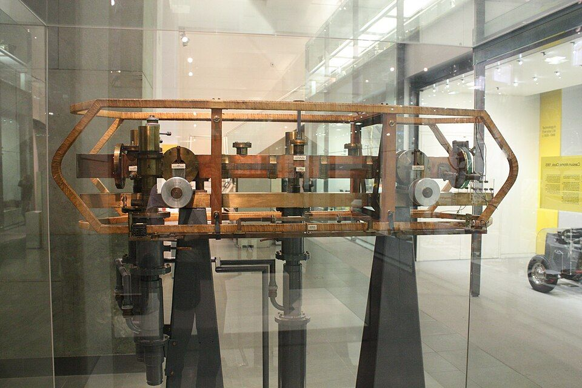
The atomic clocks on the GPS satellites gain about 38 millionths of a second a day on identical clocks on the ground. Relativity predicts two effects that work against each other:
- The satellites move at about 14,000 kilometers an hour. Their speed slows their clocks by about 7.2 millionths of a second a day.
- The satellites orbit about 20,000 kilometers up, where the Earth’s gravity is weaker. (Measured from the center of the Earth, their orbits have a radius of 26,562 kilometers.) The weaker gravity speeds their clocks up by about 45.8 millionths of a second a day.
Together the two effects come to a net gain of about 38.6 millionths of a second a day. Measured in orbit, both effects match relativity’s predictions. (A satellite that orbits lower than about 3,200 kilometers is deeper in the Earth’s gravity and has to move faster to stay in orbit. Its speed then slows its clock more than the weaker gravity speeds it up, and its clock runs slow.)
Engineers set each satellite’s clock to run slightly slow before launch, so that it cancels both effects. A GPS clock is built to count 10.23 million vibrations a second, so engineers tune it to 10.22999999543 million before launch, and once in orbit it ticks in step with the clocks on the ground. Without that adjustment, GPS positions would drift by about ten kilometers a day. The physicist Neil Ashby gives these figures in his 2003 survey of relativity in GPS, in Living Reviews in Relativity.
The GPS satellites are not a special case. Physicists and astronomers have timed clocks that run on electromagnetism over heights from one millimeter in a laboratory to the orbit of a star around a black hole.
In 2022 a team at JILA, a physics institute in Boulder, Colorado, measured the slowing of clocks in lower gravity over the smallest height yet. Earlier experiments had compared atomic clocks set at least 30 centimeters apart. Tobias Bothwell and his colleagues in Jun Ye’s laboratory held a cloud of about 100,000 strontium atoms, about a millimeter tall, in a grid of laser light. Over ten days they compared the ticking of the atoms layer by layer, at different heights within the cloud. The atoms at the bottom of the cloud ticked more slowly than the atoms at the top. Relativity predicts that atoms one millimeter higher tick faster by 1.09 parts in ten billion billion. (At that rate a clock one millimeter higher would gain one second in about 290 billion years.) The team measured 0.98 parts in ten billion billion for each millimeter, give or take 0.23 (Nature).
In 2014 Benjamin Botermann and his colleagues in Darmstadt, Germany, timed atoms moving fast. They sent lithium ions (lithium atoms stripped of an electron) around a storage ring at 33.8 percent of the speed of light. They aimed two lasers at the beam, one pointing the way the ions traveled and one against them, to measure the frequencies that the moving ions absorbed. The ions ticked more slowly by the amount relativity predicts for that speed, to within 2.3 parts in a billion (Physical Review Letters).
Astronomers have timed atoms far from the Earth, where gravity is far stronger than in any laboratory. The star S2 orbits the giant black hole at the center of our galaxy once every 16 years, on a long oval path. At its closest approach, in May 2018, S2 passed at about 120 times the distance from the Earth to the Sun, moving at about 7,650 kilometers a second. The GRAVITY collaboration, which combines the light of the four large telescopes of the European Southern Observatory in Chile, measured the light from S2’s atoms during that pass. Atoms that are slowed vibrate at a lower frequency and give off light of a longer wavelength, which is redder. The light from S2 arrived redder than its motion toward or away from us could explain. The team placed the slowing on a scale where 0 means no slowing and 1 means the full slowing that relativity predicts for a star moving that fast so deep in a black hole’s gravity. They measured 0.90, give or take 0.09 from measurement error and 0.15 from uncertainty in the method (Astronomy & Astrophysics, 2018).
In 2020 the same team reported that S2’s orbit turns slightly with each pass, by 12 minutes of arc (a fifth of a degree), as general relativity predicts for the black hole’s gravity. On the same scale they measured 1.10, give or take 0.19. So in this one star, both the ticking of its atoms, which electromagnetism sets, and its orbit, which gravity drives, follow relativity.
Every one of these clocks runs on electromagnetism, and every one slowed by the amount that relativity predicts. By Hool’s rule, then, electromagnetism follows “fundamental time”, not “general time”.
3.1d Decay on the Fifth Day
The muons, the iron nuclei and the atomic clocks each run on one or two of the three forces that Hool puts on “general time”, and each slowed under time dilation by the amount that relativity predicts. The same three forces run the radioactive clocks by which geologists date rock. Uranium decays through the strong force and electromagnetism, and carbon-14 and potassium-40 decay through the weak force. So if “fundamental time” had stretched on the Fifth Day, radioactive decay would have slowed along with the Sun’s day. While one day passed for the Sun, the rock would have gathered one day’s worth of decay. Hool’s account needs some process run by these forces that keeps its pace under time dilation, and physicists have never found one.
No one has yet timed radioactive decay itself lower in gravity. Over any height that a laboratory can reach, the slowing is far too small to see in a count of decays. That gap does not help Hool. Physicists have timed decay at high speed, in muons, and they have timed the ticking of nuclei and atoms lower in gravity, in iron nuclei and atomic clocks. Hool treats the slowing from speed and the slowing from gravity as one and the same stretching of “fundamental time”. He writes that a traveler’s clocks, “mechanical, atomic, or biological,” slow down with speed (Six Days 1, p. 24), and that all clocks “will take longer to tick under a gravitational field” because they depend on “fundamental time” (p. 103). On his account, then, decay that slows with speed would also slow lower in gravity, and the measurements of fast muons, iron nuclei and atomic clocks are enough to put radioactive decay on “fundamental time”.
3.1e Gravity and the energy of the forces
Hool draws his line between the forces by what gravity acts on. He writes that “gravity works on mass and energy that interact with fundamental time” (Six Days 2, p. 145), while the other three forces interact with “general time”. But most of the mass of an atom is the energy of the strong force. The three quarks inside a proton make up only about 1 percent of the proton’s mass. The rest is the energy of the strong force that binds them.
Electromagnetism adds a second, smaller share of an atom’s mass, and that share differs a good deal from one element to another. A nucleus of platinum holds 78 protons that push one another apart, and a nucleus of titanium holds 22. If gravity pulled on the energy of these forces any differently from the way it pulls on other mass, a piece of platinum and a piece of titanium would fall at slightly different rates.
Physicists have measured this with the MICROSCOPE satellite of the French space agency. For two and a half years the satellite carried a mass of titanium alloy and a mass of platinum alloy in free fall around the Earth and measured the tiny forces needed to keep the two together. In 2022 Pierre Touboul and his colleagues reported the final result in Physical Review Letters: the two masses fell at the same rate to within about 3 parts in 1015 (a million billion). So gravity pulls on the energy of the strong force and of electromagnetism just as it pulls on any other mass. Hool’s line between the forces cannot hold. He has gravity acting on what follows “fundamental time”, yet most of the mass and energy that gravity acts on is the energy of the two forces he puts on “general time”.
Physicists also connect the way a body falls with the rate at which a clock ticks. The physicist Clifford Will explains the connection in his 2014 survey of the experimental evidence for relativity, in the journal Living Reviews in Relativity. “The same mathematical formalism that produces equations describing the free fall of a hydrogen atom,” he writes, “must also produce equations that determine the energy levels of hydrogen in a gravitational field, and thereby the ticking rate of a hydrogen maser clock.” The idea that any consistent theory of gravity must tie the two together is called Schiff’s conjecture, and Will notes that it can’t be proved in general. So the falling masses support the clock measurements above; they do not replace them.
3.1f A stretching no laboratory measures
Hool could reply that time dilation in the laboratory slows every force, but that the stretching on the Fifth Day was different. That reply would take away his reason for “fundamental time” in the first place. Hool built “fundamental time” to explain the time dilation measured on the clocks of the GPS satellites:
Incredible as it may sound, what is slowing down the clocks on earth is not something in the clocks but is the dilation of time itself that is causing the clocks to tick slower. (Six Days 2, p. 117)
He explains every slowed clock in the same way: “When we say that time is slowing down, what is actually happening is that the fundamental units of time have expanded” (p. 125). He then applies the same stretching of “fundamental time”, backed by relativity, to the Fifth Day. So on Hool’s account, the stretching of “fundamental time” that physicists measure in the laboratory holds for the Fifth Day as well.
If Hool gives that up and proposes a stretching on the Fifth Day that relativity does not predict and no laboratory has detected, his two kinds of time lose their basis in physics. All that would be left is a stretching of time that nothing in physics predicts and that no instrument can detect, which is to say a nes that left no trace. And if it is a nes, the two kinds of time add nothing. Hool could just as well have said from the start that by a miracle the Fifth Day held 13.8 billion years of decay, and spared us the physics.
3.2 Gravity keeps pace with decay
Hool needs gravity and radioactive decay to have kept time by two different clocks on the Fifth Day. He puts the Sun’s day and gravity on “fundamental time”, which stretched on the Fifth Day until one day held 13.8 billion years, and radioactive decay on “general time”, which does not stretch, so that decay went on at its normal pace through all 13.8 billion years. His reason for putting decay on “general time” is that “tests on ancient material reveal that they have decayed over millions or billions of years” (Six Days 1, p. 103).
This reason does not hold up, because the amount of decay in old rock is the same on both accounts. If the geologists are right, the rock is billions of years old, so it holds billions of years of decay. If Hool is right, the rock went through one stretched day while decay ran on its own clock, so it also holds billions of years of decay. Measuring how much decay the rock holds cannot decide between the two accounts.
To decide between them, we need something from inside Hool’s Fifth Day that kept time by two processes at once: one that Hool puts on “fundamental time” and one that he puts on “general time”. On Hool’s account, the process on “fundamental time” should have barely moved while the process on “general time” ran on for millions of years. If the geologists are right, the two should keep pace with each other. Geologists and astronomers have found several records of this kind. The first comes from ancient lake mud in New Jersey, which geologists have compared with uranium-dated rock of the same age in Arizona.
3.2a The 405,000-year cycle
The Earth’s orbit around the Sun is nearly a circle, but slightly oval. The pull of the other planets, mostly Venus and Jupiter, slowly changes the shape of the oval. Over a cycle of 405,000 years the orbit stretches into a longer oval and then relaxes back. Astronomers calculate that this cycle has kept nearly the same length over the last few hundred million years, including the Triassic period. (In a 2024 paper in The Astronomical Journal, Richard Zeebe and Margriet Lantink found that further back in time the cycle can weaken or vanish for millions of years at a stretch. This happened in about 40 percent of their simulations of the Solar System’s past.) Gravity drives the cycle, so on Hool’s account it runs on “fundamental time”.
The shape of the orbit changes how much sunlight reaches the Earth in each season, and so it changes the climate. Between about 230 and 200 million years ago, in the late Triassic and early Jurassic periods, a chain of lakes filled long valleys in what is now New Jersey and Connecticut. In wet times the lakes grew deep and laid down dark mud on their floors. In dry times they shrank and left lighter mud that cracked in the sun. The lakes rose and fell many times, and geologists find that the size of these swings grew and shrank in step with the 405,000-year cycle of the orbit.
Geologists have drilled thousands of meters of this mud in the Newark basin in New Jersey and the Hartford basin in Connecticut. They count the 405,000-year cycles stacked one above another, the way one counts tree rings. So the mud holds millions of years of the Earth’s orbit, counted cycle by cycle.
3.2b What Hool’s clocks predict for the Triassic mud
Hool places the Triassic period, when the New Jersey lake mud was laid down, inside the Fifth Day. He writes that life on land began around 500 million years ago, which “would have occurred in the equivalent of the last minutes of the Fifth Day of Creation” (Six Days 2, p. 234). The Triassic came later still. Hool also puts the Earth’s trip around the Sun on “fundamental time”: “The daily and yearly cycle of the sun are dependent on fundamental time” (The Flood, p. 153). The whole Fifth Day lasted one day of “fundamental time”, so in the whole of that day the Earth went less than 1/365 of the way around the Sun.
Hool describes how slowly the Earth turned on its axis that day. In the first half of the Fifth Day, he writes, “for the duration of billions of years, one part of the world would be in a continuous state of day while the other side of the world would be in a continuous state of night” (Six Days 2, p. 234). On his account the Earth’s trip around the Sun was just as slow, measured against the decay of uranium.
The 405,000-year cycle comes from the pull of Venus and Jupiter, and Hool puts gravity on “fundamental time” as well (Six Days 2, p. 145). So on his account all the planets slowed down together. One turn of the cycle takes 405,000 trips of the Earth around the Sun, and in the whole Fifth Day the Earth did not finish even one trip.
Hool’s figures give the length of one trip around the Sun near the end of the Fifth Day, from his schedule for the hours of that day:
- Hool suggests that the stretching “may have increased roughly 1.34 times each hour,” so that each hour of the Fifth Day was about 1.34 times as long as the hour before (Six Days 1, p. 43, note 8).
- If the 24 hours of that schedule add up to 13.8 billion years, the last hour holds about 3.5 billion years of “general time”.
- A year has 8,766 hours. So at the pace of the last hour, one trip of the Earth around the Sun took about 30 trillion years of uranium decay.
- At 30 trillion years a trip, the 405,000 trips in one turn of the cycle come to about 12 billion billion years.
Hool offers the schedule in his footnote only as a rough estimate, so these numbers give the scale of the gap, not an exact figure. In his main text he says only that the last hour “may have taken several billion years of general time” (Six Days 1, p. 99). Any last hour of two billion years or more makes one trip around the Sun take at least 17 trillion years of uranium decay, and one turn of the cycle at least 7 billion billion years.
On Hool’s account the uranium clock kept its normal pace the whole time. Measured by that clock, one turn of the cycle should have taken far longer than the age of the universe. The Triassic lake mud was laid down in the last minutes of the Fifth Day, so on Hool’s account it should hold no trace of the cycle.
3.2c The Triassic cycles and uranium
The geologists Paul Olsen and Dennis Kent spent decades mapping the orbital cycles and the magnetic history of the New Jersey lake beds. In 2018 they compared their count of the cycles with uranium dates. Their count gives an age to every layer of mud. It is tied to a uranium date at only one point, the young end of the series, 201.6 million years ago. Every older layer is counted back from there, on the assumption that each long cycle lasted the 405,000 years that astronomers calculate. If the Earth’s orbit and radioactive decay had kept different time, the counted ages would drift away from uranium dates the further back the count went.
So Olsen and Kent needed rock of the same age that could be dated by uranium at several levels, with no help from the cycle count or the length of the cycle. Their team drilled a core, a long cylinder of rock, called PFNP-1A in Petrified Forest National Park in Arizona. The core cut through the Chinle Formation, layers of rock that were laid down while the New Jersey lakes were rising and falling.
While these layers were forming, volcanoes were erupting near Arizona, and their ash washed into the mud that became the Chinle Formation. The ash brought tiny crystals called zircons. A zircon holds uranium that has been turning into lead since the crystal formed, and scientists date the crystal by how much of its uranium has turned into lead. (A crystal can be older than the mud it settled in, but not younger, so each zircon date gives the oldest age its layer can have.)
To match the Arizona core with the New Jersey mud layer by layer, the team used reversals of the Earth’s magnetic field. Many times in the past the field has flipped, so that north became south. Tiny magnetic grains in mud line up with the field as the mud settles, so geologists can find the same series of flips in Arizona and in New Jersey. The team then compared the zircon date at each level of the Arizona core with the age that the count of cycles gives to the same magnetic flip in New Jersey. The New Jersey layers count trips of the Earth around the Sun, which Hool puts on “fundamental time”. The Arizona zircons count the decay of uranium, which he puts on “general time”. If the two had run millions of times out of step during the Fifth Day, the two ages would be far apart.
The team dated zircons from three levels of the core:
- Zircons from 56 meters down came out 210.08 million years old.
- Zircons from 172 meters down came out 213.55 million years old.
- Zircons from 195 meters down came out 214.08 million years old.
These uranium dates agreed with the ages from the count of cycles all the way back to 215 million years ago. By the zircon dates, the rock of the core piled up at 34.3 meters every million years. By the New Jersey count of cycles, it piled up at 34.8 meters every million years. The two clocks agree to within two percent.
The layer 56 meters down in the Arizona core is called the Black Forest Bed. It lies inside a magnetic band that geologists call E16r. In New Jersey, this band falls slightly fewer than 21 cycles before the magnetic flip dated to 201.6 million years ago. Counting those cycles back gives the band an age of 209.95 to 210.25 million years, 8.50 million years before the flip. The zircons from the Black Forest Bed are 210.08 million years old, give or take 0.22 million. That puts the bed 8.48 million years before the flip, give or take 0.3 million. So across these cycles the Earth’s orbit and the decay of uranium kept the same pace, within the uncertainty of the dates, which is about 3.5 percent. (The two counts share one point, the uranium date of 201.6 million years for the flip at the young end. That does not make them agree, because each clock measures its own number of years back from there.)
Dividing the 8.48 million years by the slightly fewer than 21 cycles gives a cycle of close to 404,000 years (Proceedings of the National Academy of Sciences). The authors note that this is within a quarter of a percent of 405,000, though dates uncertain by 3.5 percent cannot measure the cycle more finely than that.
This is the opposite of what Hool’s two clocks predict. On his account the Earth’s orbit should have stood almost still through the Triassic while the uranium in the zircons went on decaying for millions of years. At about 30 trillion years of decay for each trip around the Sun, the 4 million years between the oldest and the youngest dated zircons in the Arizona core would have moved the Earth only about one eight-millionth of the way around the Sun. For the Earth’s orbit to go through 21 turns of the cycle, Hool’s clocks need about 260 billion billion years of uranium decay. Geologists find nearly 21 turns of the cycle, about 8.5 million trips around the Sun, in 8.48 million years of uranium decay. So the Earth’s orbit, which Hool puts on “fundamental time”, kept pace with the decay of uranium, which he puts on “general time”, in years that he places in the last minutes of the Fifth Day.
The ice ages of the last 640,000 years make the same point. They follow the slow wobble of the Earth’s axis, which the pull of the Sun and the Moon drives, so Hool’s account puts the wobble on the clock of the Sun’s day as well.
3.2d Hool’s rule for gravity
Hool’s rule puts every motion that gravity drives on “fundamental time”, not only the Earth’s orbit (Six Days 2, p. 145), and he applies it to the planets and the comets. Explaining the Leshem’s longer days before the Mabul, he writes that the orbits of the moon and planets slowed down “because time itself slowed down!” (Six Days 2, p. 118). On the Fifth Day, he writes, the stretching of time “resulted in a drastic slow-down of the cycles of the sun, moon, planet, and comets too,” so that through the billions of years of that day the comets “did not manage to pass around the sun, even once” (Six Days 2, p. 129).
Hool says nothing about the motions of the stars, but gravity drives them too, so his rule puts them on “fundamental time” as well. Light is different. It is governed by electromagnetism, and Hool holds that the speed of light is “fixed according to both” of his clocks (Six Days 1, p. 59). He measures the travel of light across space in years of “general time” (pp. 52–53).
On this rule, every motion that gravity drives has run for less than six thousand years on its own clock since the Fourth Day: one day for the Fifth Day, one for the Sixth, and the years since. So whenever scientists time a motion driven by gravity against a clock that Hool puts on “general time”, his account needs the motion to fall behind by a factor of millions. Scientists have made this comparison in several other places besides the lake mud.
3.2e The Veritas asteroids and their dust
Scientists can also compare gravity with radioactive decay by tracing the orbits of the pieces of a broken asteroid back to the collision, and then finding the dust that the collision dropped on the sea floor. The pieces of a shattered asteroid drift apart under the pull of the planets, mostly Jupiter, and the time at which their orbits, run backward by the laws of gravity, line up again is the date of the collision. The calculation follows the drift that gravity causes, so on Hool’s account the time it measures is “fundamental time”, the clock he gives to gravity.
In 2003 David Nesvorný and his colleagues traced back the orbits of the larger members of the Veritas family of asteroids (The Astrophysical Journal). The orbits come together 8.3 million years ago, give or take 0.5 million years, when a body about 160 kilometers across broke apart. Nesvorný has called it the largest asteroid collision of the last 100 million years. So the pieces have been drifting apart under gravity for millions of years, not for less than six thousand.
A breakup that large fills the inner Solar System with dust, and dust from space is rich in helium-3, a rare form of helium. Kenneth Farley, a geochemist at the California Institute of Technology, found that helium-3 jumped suddenly in sea-floor mud dated to 8.2 million years ago, in two cores drilled more than 10,000 kilometers apart in the Indian Ocean and the Atlantic, and then fell off slowly over the next 1.5 million years. That matches the date of the breakup from the orbits, within the margin of error.
In 2006 Farley, Nesvorný, William Bottke and David Vokrouhlický connected the Veritas asteroids with the sea-floor mud in Nature, with a model of how dust from the breakup would spread and drift in toward the Sun that gave both the sudden spike at the Earth and its slow decline. In 2017 Alessandro Montanari, Farley and their colleagues found a fivefold rise in helium-3 in old sea-floor rock that now forms a cliff near Ancona, in Italy. Orbital cycles counted in those layers put the start of the rise at about 8.5 million years ago (Geological Society of America Bulletin). So geologists have found the dust of this breakup at three sites, in layers about 8 million years old.
Geologists dated this mud in a way that ties its age to radioactive decay, the process that Hool puts on “general time”. The Indian Ocean core was dated by its fossils: the rise in helium-3 begins where the remains of a tiny plankton species, Discoaster quinqueramus, first appear. Geologists had dated that first appearance to 8.2 million years ago by counting cycles of the Earth’s orbit in layered mud on the floor of the Atlantic. That orbital time scale has itself been compared with radioactive decay. In 2008 Klaudia Kuiper, Paul Renne and their colleagues used radioactive argon to date layers of volcanic ash in sediments in Morocco from the same period, the late Miocene, where orbital cycles had already been counted. Their work brought orbital cycles, argon dating and uranium-lead dating into agreement (Science). So the 8.2 million years of the mud are years of radioactive decay as well.
(The orbital cycles and the argon dates are not wholly separate. In Kuiper’s 2008 study, the standard mineral used to calibrate argon dating, the Fish Canyon sanidine, was itself compared with the Moroccan layers dated by orbital cycles. In 2026 the age of that standard was revised slightly, from 28.201 to about 28.17 million years. So the age of the Veritas mud does not come from three wholly independent clocks. But Hool needs a gap of millions of times between gravity and decay, and a small shared tie of this kind cannot produce one.)
On Hool’s account this agreement should not exist. On the schedule in his footnote, mud dated to 8.2 million years ago was laid down about eight seconds before the end of the Fifth Day. Since then gravity has had less than six thousand years on its own clock to pull the Veritas pieces apart. So when astronomers trace the orbits backward, the pieces should come together less than six thousand years ago. Instead their orbits come together 8.3 million years ago, and the dust of the collision lies in mud dated to 8.2 million years ago. The orbits of the asteroids kept the same time as radioactive decay, so gravity and radioactive decay did not run on separate clocks at the end of the Fifth Day.
Hool cannot answer that the pieces were created in orbits that only look as if they had drifted apart for 8.3 million years. If they were, the spike of space dust in mud of the same age on both sides of the world would have to come from some other event, which happened by coincidence at the very time that astronomers calculate from the orbits.
3.2f The Earth–Mars cycle in deep-sea mud
The shape of the Earth’s orbit also changes in a cycle of about 2.4 million years, which comes from the pull between the Earth and Mars as their orbits slowly turn. In 2024 Adriana Dutkiewicz, Slah Boulila and Dietmar Müller, of the University of Sydney and the Sorbonne in Paris, listed 370 breaks in 293 cores drilled into the ocean floor (Nature Communications). A break is a place where mud stopped piling up for a time or where currents scoured it away, and the team dated each one by the fossils and the magnetic reversals in its core. Over the last 70 million years the breaks come back about every 2.4 million years. The team links them to stronger currents in the deep sea at the times when the Earth’s orbit was most oval. Large changes in the oceans and in the positions of the continents sometimes interrupt the rhythm, and in its steadiest stretches the cycle runs from 2.3 to 3.2 million years.
On the schedule in Hool’s footnote, all 70 million years fall in the last 72 seconds of the Fifth Day. In 72 seconds of “fundamental time”, a cycle of the orbits that takes 2.4 million years could not have gone through even one turn. Yet the breaks keep coming back through all 70 million years. So the orbits of the Earth and Mars kept pace with the ages that geologists give these layers, and the pull between the planets did not slow down on a clock of its own.
A faster cycle, driven by the wobble of the Earth’s axis, appears in the mud of the eastern Mediterranean. The mud there holds dark layers rich in organic matter, called sapropels. Each one formed when the African monsoon grew stronger and the Nile poured fresh water into the sea. The monsoon grows stronger about every 21,000 years, when the slow wobble of the Earth’s axis brings the northern summer closest to the Sun. Cores drilled south of Cyprus by the Ocean Drilling Program, at Site 967, hold a continuous series of sapropels covering the last 3.2 million years (Dick Kroon and his colleagues, 1998). That is more than 150 turns of the wobble, nearly 140 of them in a span of time that Hool puts into a single day.
Geologists date that long series by matching its layers to the calculated cycle of the wobble, so they cannot use it by itself to see whether the two clocks agree. A team of earth scientists led by Katharine Grant compared four of the youngest sapropels with a time scale built on radioactive dates (Quaternary Science Reviews, 2016). The sapropels fell at the peaks of northern summer sunlight that the wobble produces, with delays that varied and were longest after an ice age ended. So in young Mediterranean mud as well, the radioactive dates keep pace with the wobble of the Earth’s axis. These four sapropels fall in the years that Hool converts with his factor in The Flood.
3.2g Distant orbits
Astronomers can also watch orbits far out in space. Light from far away left its source long ago, and Hool uses this to work out which light comes from the Six Days of Creation:
Any light emanating after the Six Days of Creation from a source more than 5,881 light-years away from Earth will not yet have arrived to us. Therefore, any light that does come to us from those sources must have emanated from the period of the Six Days of Creation. (Six Days 1, pp. 52–53)
Of the six days, only the Fifth was stretched. At its end, Hool writes, “time would have reverted back to its natural state” (Six Days 2, pp. 154–155). So on Hool’s account, light that left its source many thousands of years of “general time” before the end of the Six Days left during the Fifth Day. (Hool uses the same rule for dark matter.)
The star S2 orbits the black hole at the center of our galaxy once every 16 years. It is more than 26,000 light-years away. By Hool’s rule, the light that reaches us from S2 today left it during the Fifth Day, about 20,000 years of “general time” before that day ended. Astronomers have followed S2 in that light since 1992. They have watched it go around the black hole at the speeds that gravity predicts, making its closest pass in 2002 and again in 2018, sixteen years later.
On the schedule in Hool’s footnote, the 26 years of light that astronomers watched from 1992 to 2018 left S2 within about 27 millionths of a second of the Fifth Day. (Even if the last hour of the Fifth Day held only two billion years, all of that light left within 50 millionths of a second.) If S2’s orbit had followed “fundamental time”, the clock of the Sun’s day, the star would have moved less than a millionth of a millionth of the way around the black hole in that time. Instead, astronomers watching that light see S2 orbit at the pace of “general time”, the same clock by which the light itself travels. So in light that left during the Fifth Day, gravity ran at the full pace of “general time”.
The same holds for orbits farther away. In the Large Magellanic Cloud, a small galaxy about 160,000 light-years away, twenty pairs of stars that orbit each other eclipse each other again and again as seen from the Earth, and Grzegorz Pietrzyński and his colleagues used them to measure the distance to the galaxy to within about one percent (Nature, 2019). By Hool’s rule, light from 160,000 light-years away left during the Fifth Day. Yet astronomers watch these orbits and eclipses repeat at the ordinary pace of “general time”. They do not stand still, as they would on “fundamental time”.
Gravitational waves let astronomers watch distant orbits without light. In 2015 the two LIGO detectors in the United States picked up ripples in space from two black holes about 1.4 billion light-years away spiraling together and merging. These ripples travel at the speed of light. In the last fifth of a second before the merger, the waves went through about eight cycles and rose from 35 to 150 cycles a second (reaching 250 cycles a second through the final merger and ringdown). That is the pace that general relativity predicts for two such black holes as they spiral together (the LIGO and Virgo collaborations, Physical Review Letters, 2016). By Hool’s rule, waves from 1.4 billion light-years away left their source during the Fifth Day, and in them the two black holes spiral together at the pace of “general time”.
In 2023 the NANOGrav collaboration reported a steady background of slower gravitational waves of the same kind. The team found it by timing pulsars, dead stars that spin rapidly and send out steady radio pulses, over fifteen years. It attributes the signal to pairs of giant black holes orbiting each other in distant galaxies, far beyond Hool’s limit of 5,881 light-years. These waves too left their sources during the Fifth Day by Hool’s rule, and the orbits that sent them out ran at the pace of “general time”.
Astronomers can also measure distances beyond 5,881 light-years by geometry alone, without the redshift of distant galaxies that Hool explains by the expansion of the Fifth Day. In the spiral galaxy NGC 4258, a thin disk of gas orbits the black hole at the center, and water molecules in the gas give off narrow beams of microwaves. From the Doppler shift of the microwaves radio astronomers measure the speed of the gas in its orbit, and from the change in those speeds over the years its acceleration toward the black hole. The geometry of the disk puts the galaxy 7.576 megaparsecs away, about 24.7 million light-years (Reid, Pesce & Riess 2019), and even the lowest figure of a 2026 reanalysis puts it about 22 million light-years away (van der Boom & Kushnir 2026), thousands of times beyond Hool’s limit of 5,881 light-years. So by Hool’s rule this light too left during the Fifth Day, and in it astronomers watch the gas of the disk speed around its black hole year after year.
3.2h Asteroids and stars traced back
Astronomers can also take the present paths of asteroids and stars and run them backward by the laws of gravity to particular events millions of years ago. On Hool’s account gravity has had less than six thousand years on its own clock since the Fourth Day, so none of these journeys could have taken place.
The Karin family of asteroids, the pieces of a single body, trace back to a collision 5.8 million years ago, give or take 0.2 million (Nesvorný and his colleagues, Nature, 2002). The star S5-HVS1, about 29,000 light-years from the Sun and moving at about 1,755 kilometers a second, traces back to the black hole at the center of our galaxy, which threw it out about 4.8 million years ago (Sergey Koposov and his colleagues, Monthly Notices of the Royal Astronomical Society, 2020). The two fast stars AE Aurigae and Mu Columbae, flying apart, trace back to one place in the constellation Orion about 2.5 million years ago, beside the pair of stars Iota Orionis, where two pairs of stars met and threw them out (Ronnie Hoogerwerf and his colleagues, Astronomy & Astrophysics, 2001).
Each of these paths needs millions of years on gravity’s clock. Hool could say only that these bodies were created already moving along their present paths. But then none of the events at the start of the paths happened. The Karin asteroids were created scattered like the debris of a collision that never took place. S5-HVS1 was created moving as if the black hole had thrown it out. AE Aurigae and Mu Columbae were created moving as if they had been flung apart from one point in Orion.
(Steady motions are different. A steady speed, orbit or drift carries no date for when it began, so Hool could say that it was set going at Creation. Such motions include the Sun’s orbit around the Milky Way, the time that galaxies take to cross the Coma cluster, and the slowing of the bar at the center of the Milky Way. They also include drifts in the Solar System, such as the outward drift of Saturn’s moon Titan (measured by the Cassini spacecraft) and the inward spiral of Neptune’s moon Triton. And they include orbits locked in step, such as Mercury’s three turns on its axis for every two orbits, Pluto’s two orbits for every three of Neptune’s, and the 1:2:4 rhythm of Jupiter’s moons Io, Europa and Ganymede. A path that leads back to a collision or an ejection does carry a date.)
Many other studies trace paths back to particular events or piece together longer histories under gravity:
- Astronomers have traced pairs of asteroids back to the moment they split, the young stars of the Beta Pictoris group back to a single birthplace, and fast-moving stars back to the Large Magellanic Cloud. In a 2022 study in Nature, the astronomer Catherine Zucker and her colleagues traced the motions of young stars near the Sun back to supernova explosions that began to carve out the Local Bubble, the cavity of thin hot gas around our Solar System, about 14 million years ago.
- Astronomers reconstruct longer histories under gravity with computer simulations. These include the streams of stars torn from small galaxies and star clusters (such as the Sagittarius stream, GD-1 and the giant stream around the Andromeda galaxy), the Magellanic Stream of gas, the bridges of gas between the galaxies M81 and M82, the colliding clusters of galaxies in the Bullet Cluster, the ring of the Cartwheel galaxy and the slow wobble of the warped disk of the Milky Way. Near the Sun, some stars orbit backward against the turning of the galaxy. In 2018 the astronomer Amina Helmi and her colleagues reported in Nature that these stars are the remains of a smaller galaxy that the Milky Way swallowed.
- Other studies pair a slow process driven by gravity with an age that astronomers measure from how long stars have been burning. Stars burn by nuclear reactions, which run on the forces that Hool puts on “general time”, so on his account these gravitational processes should lag far behind the ages of the stars. One example is the long tails of stars escaping from the Hyades cluster, traced by the astronomer Tereza Jerabkova and her colleagues in 2021. Another is the settling of the heaviest stars toward the centers of old star clusters. In older clusters, the two stars of a pair have pulled on each other until their oval orbits became circles, as the astronomers Søren Meibom and Robert Mathieu documented in 2005. In 2020 the astrophysicist William Chaplin and his colleagues reported in Nature Astronomy that they had used faint vibrations inside the star nu Indi to date it to 11 billion years, and that its orbit in the galaxy was disturbed by the same swallowed galaxy.
3.3 Some processes are on the wrong clock
Hool’s second volume puts electromagnetism and the two nuclear forces on “general time” (Six Days 2, p. 145). He needs this to explain how radioactive decay, which runs on these forces, kept its normal pace while the Sun’s day stretched on the Fifth Day. For that argument to work, every process in nature has to follow the clock of the force that drives it.
Hool’s books do not keep to this rule. Most everyday physics and chemistry runs on electromagnetism, from the ticking of an atomic clock to the breakdown of a protein. Yet in several places Hool puts a process that runs on electromagnetism on “fundamental time”, because his account needs that process to slow down there.
3.3a Atomic clocks and electromagnetism
In his first volume Hool puts all clocks on “fundamental time”. When time slows for a fast traveler, he writes, “all forms of clocks traveling with him—mechanical, atomic, or biological—will, incredibly, slow down” (Six Days 1, p. 24). He explains the atomic clocks of the GPS satellites by the same rule: the clocks on the ground tick more slowly than the ones in orbit because of “the dilation of time itself” (Six Days 2, p. 117).
An atomic clock counts the vibrations of the light or microwaves that its atoms absorb, and electromagnetism sets the rate of those vibrations. But Hool’s second volume puts electromagnetism on “general time”. So his books put the atomic clock on “fundamental time” and the force that runs it on “general time”.
Hool cannot move either one without breaking another part of his account. If atomic clocks followed “general time”, they would not slow down, and Hool would have no explanation for the measured difference between the clocks on the ground and the clocks on the GPS satellites. If electromagnetism followed “fundamental time”, the radioactive decay that depends on it would have slowed along with the Sun’s day on the Fifth Day, and the rock would hold only one day’s worth of decay.
3.3b Proteins and their bonds
The same clash comes up in Hool’s explanation of the proteins in dinosaur bones. Scientists have reported traces of protein in dinosaur bones dated to 68 million years ago and older. To explain how these proteins lasted, Hool writes that “protein decay may well be dependent on fundamental time in the same way that all forms of clocks, including biological clocks, are dependent on fundamental time,” so that only a few thousand years of “fundamental time” have passed since the dinosaurs of the Fifth Day (Six Days 1, p. 103).
This breaks Hool’s rule for the forces. A protein is a long chain of atoms joined by chemical bonds, and a chemical bond is the electromagnetic pull between the electrons and the nuclei of neighboring atoms. When a protein breaks down, these bonds break. Hool’s second volume puts electromagnetism on “general time”, so by that rule the breakdown of a protein follows “general time” too. On that rule, the proteins in dinosaur bones went through tens of millions of years of chemical decay, and Hool’s explanation of how they survived no longer works.
(Hool’s explanation also fails on its own terms. On “fundamental time” every fossil from the Fifth Day would have had the same few thousand years to decay, yet the older a fossil is in years, the more its proteins have broken down.)
3.3c Damage and repair
A third clash comes up in Hool’s account of the long lives before the Mabul. The Flood puts damage in the body on “fundamental time” and repair on “general time”, so that repair kept the thirteenfold speed-up that Hool gives all microscopic processes before the Mabul, while the stretched days cancelled the speed-up of damage (The Flood, p. 155).
Hool’s rule for the forces does not let damage and repair run on different clocks, because both are electromagnetic chemistry. Both consist of breaking and forming electromagnetic bonds between atoms. Damage comes from oxidation (oxygen attacking the body’s molecules), from radiation and from errors in copying DNA. Repair is done by enzymes that cut out damaged pieces and replace them. Both run on electromagnetism, so the rule in Hool’s second volume puts both on “general time”. Damage would then have sped up thirteenfold just as repair did. Repair would gain nothing on damage, and the long lives before the Mabul would be left without an explanation.
3.3d Heartbeats
Hool’s first volume puts biological clocks, the heartbeat among them, on “fundamental time”. His second volume and The Flood put the heartbeat on “general time”. In the first volume Hool writes that the clocks that depend on “fundamental time” “may also include biological clocks” (Six Days 1, p. 103), and the clocks that slow down for his fast traveler include biological ones (p. 24). Here Hool follows relativity, in which a fast traveler’s heartbeat slows along with his watch. In Hool’s terms, then, a heartbeat follows “fundamental time”.
But in his account of the years before the Mabul, Hool takes the heartbeat off “fundamental time”. Discussing the Leshem’s teaching from the Tikkunei Zohar that the days before the Mabul were longer than ours, he writes that the dilation “surely did not mean that everything slowed down, such as that people’s heartbeat or people’s motion went thirteen times slower—otherwise there would be no significance to the dilation” (Six Days 2, p. 124; see also The Flood, p. 152).
Hool thus puts the heartbeat on “fundamental time” when he explains relativity, and on “general time” before the Mabul, so that people would feel the days as longer. The two statements contradict each other.
Hool cannot avoid this problem by giving up the two clocks and saying that before the Mabul the Earth physically turned thirteen times more slowly in ordinary time, because nothing could then have sped the Earth back up to a 24-hour day at the Mabul. And if Hool keeps the two clocks, he still needs a rule for which clock each process follows.
3.3e No rule fixed in advance
Hool could answer that a process does not have to follow the clock of the force that drives it. But then he loses his explanation of why radioactive decay kept its normal pace on the Fifth Day. Hool put electromagnetism and the two nuclear forces on “general time” in order to explain why radioactive decay follows “general time”. If a process can follow a different clock from the force that drives it, then knowing the clock of the forces tells us nothing about the clock of radioactive decay.
Without a rule fixed in advance, Hool puts each process on whichever clock his account needs at that point. Atomic clocks go on “fundamental time” for the GPS satellites, the breakdown of proteins for the dinosaur bones, and damage in the body for the long lives before the Mabul, while heartbeats come off “fundamental time” to give the long days before the Mabul their significance.
Each of these placements solves a problem somewhere else in Hool’s account, so he cannot correct one without losing another. If the forces really set the clock of each process, the GPS satellites, the dinosaur proteins and the long lives before the Mabul all lose the explanations that Hool built for them. If the forces do not set the clock, putting the three forces on “general time” cannot explain why radioactive decay kept its normal pace on the Fifth Day.
3.4 Hool’s physics has all clocks slow together
Unfortunately for Hool, his attempt to harness the power of hafoch bah vehafoch bah dekula bah to solve the deepest mysteries of physics, armed with a few minutes of bein hasedarim and some Khan Academy articles, has failed. Hool has profoundly misunderstood the question he is trying to answer with his awesome “general time” / “fundamental time” split.
Hool exempts electromagnetism and the strong and weak nuclear forces from time dilation, so that radioactive decay can keep its normal pace while the Sun’s day stretches on the Fifth Day. To give this exemption a basis in physics, he points to a well-known difficulty: physicists have not been able to unify general relativity (Einstein’s theory of gravity, in which matter bends space and time) with quantum mechanics (the physics of atoms and the particles inside them). He quotes the science writer Natalie Wolchover in Nautilus:
Theoretical physicists striving to unify quantum mechanics and general relativity into an all-encompassing theory of quantum gravity face what’s called “the problem of time.” In quantum mechanics, time is universal and absolute; its steady ticks dictate the evolving entanglements between particles. But in general relativity, time is relative and dynamical, a dimension that’s inextricably interwoven with directions x, y and z into a four-dimensional “space-time” fabric. The fabric warps under the weight of matter, causing nearby stuff to fall toward it (this is gravity), and slowing the passage of time relative to clocks far away. (Wolchover, quoted in Six Days 2, pp. 141–142)
From this contrast Hool proposes that the three forces other than gravity follow the “fixed flow of time” of quantum mechanics, “since these forces are not affected by time dilation” (Six Days 2, p. 144).
This reading does not hold up. In everyday English, “absolute” time sounds like time that nothing can slow down. For Wolchover’s contrast to exempt the three forces, the word would have to mean just that: the processes these forces run could not be slowed by time dilation. But physicists use the word in a narrower, technical sense.
3.4a Absolute time in quantum theory
When physicists say that quantum mechanics treats time as absolute, they mean that time is a fixed background, a stage on which things happen. In general relativity, by contrast, matter bends space and time themselves. A fixed stage does not mean that everything on it ticks at one rate. For electromagnetism and the two nuclear forces, the stage is the space and time of special relativity, Einstein’s 1905 theory of motion, in which moving clocks run slow. Hool says this, in a passage adapted from an article by Charles Choi in Scientific American:
But to understand how things work in the real world, quantum mechanics must be combined with other elements of physics—principally, Albert Einstein’s special theory of relativity, which explains what happens when things move very fast—to create what are known as quantum field theories. Three different quantum field theories deal with three of the four fundamental forces by which matter interacts: electromagnetism, which explains how atoms hold together; the strong nuclear force, which explains the stability of the nucleus at the heart of the atom; and the weak nuclear force, which explains why some atoms undergo radioactive decay. (Six Days 2, p. 138)
These three quantum field theories are built on special relativity from the start, so they predict time dilation. Physicists use the quantum theory of the weak force to calculate how long a muon at rest survives, and the theory predicts that a muon moving at 99.94 percent of the speed of light should last 29 times longer, as timed in the laboratory. The muons that John Bailey’s team timed at CERN did last 29 times longer. So the quantum field theories that Hool cites predict that processes run by these three forces slow down under time dilation, and the measurements agree.
3.4b Wolchover’s problem of time
The passage Hool quotes is about a narrower puzzle. Wolchover calls it “the problem of time,” and it faces physicists who are looking for “an all-encompassing theory of quantum gravity.” Ordinary quantum mechanics measures change against a fixed background clock. The puzzle comes up only when physicists try to make gravity a quantum theory, treating space and time themselves as fluctuating quantum fields instead of a fixed stage. Without that fixed stage, a theory of quantum gravity has no background clock left against which to measure change. Electromagnetism and the two nuclear forces do not have this problem. They already have working quantum field theories, built on special relativity, and time dilation is part of them.
Hool also cites Jonathan Oppenheim, a physicist at University College London, who doubts that gravity has to be quantized (described in discrete packets of energy) and calls that assumption “just dogma” (pp. 143–144). Hool uses Oppenheim’s view to argue that general relativity and quantum mechanics may each govern a separate part of nature. But Oppenheim’s proposal is about gravity alone, the one force that Hool already lets time dilation affect. It gives no reason why electromagnetism or the nuclear forces would escape time dilation.
Indeed, although most theorists believe that gravity is quantized, i.e., that it comes in the form of small packets of energy that can behave like a particle and a wave, as Jonathan Oppenheim, a physicist at University College London, points out, “this is just dogma. Since all the other fields in nature are quantized, there’s a sense that there’s nothing special about gravity—it’s just a field like any other—and therefore we should quantize it.” We are now in a position to suggest a new line of investigation, i.e., that both general relativity and quantum mechanics are correct in their respective realms. (Six Days 2, pp. 143–144)
3.4c Hool’s only evidence
Neither the quantum field theories nor the search for quantum gravity supports Hool’s exemption. That leaves the evidence Hool gives from the Fifth Day itself:
For example, we know that the radioactive decay of the various rocks continued as normal, releasing the equivalent of billions of years of isotopes during the Fifth Day of Creation—meaning that they were not slowed down by the time dilation. (Six Days 2, p. 144)
This argument is circular. Hool brings in the exemption so that radioactive decay can run at its normal pace through the Fifth Day, and then he takes that decay as evidence that the exemption is real. Outside the Fifth Day, physicists have timed processes run by these forces under time dilation, in muons, iron nuclei and atomic clocks. In every case the process slowed down by the amount that relativity predicts. So Hool’s evidence from the Fifth Day assumes the exemption it is meant to prove, and every measurement that does not assume the exemption goes against it.
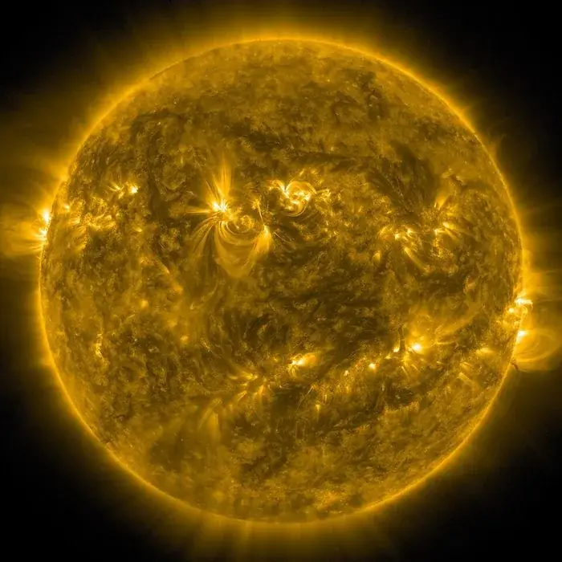
4. The Fifth Day
Hool holds that the days of Creation were counted by the Sun from the Fourth Day on, and that only the traditional number of years has passed since then, so one day, the Fifth, has to hold the 13.8 billion years of the universe. He finds the cause in the expansion of the universe. As space expanded on the Fifth Day, his “fundamental time” stretched with it to keep the speed of light fixed, and the Sun’s day, which follows “fundamental time”, stretched from 24 hours to 13.8 billion years of “general time”, while radioactive decay kept its ordinary pace. In his account an exponential stage in the first minutes of the day, driven by the energy of empty space that quantum theory predicts, gave way to a gradual stage that lasted until sunset, when Hashem’s rebuke, “enough” (Chagigah 12a), stopped the expansion. So the Earth turned only once in the whole day. He finds hints of this in the Torah and Chazal, and he holds that it solves several puzzles of astronomy.
Hool’s full argument is in Part Two ↑
The account fails on these points:
- Shells, dinosaur teeth and bones, fish and tidal mud from the end of Hool’s Fifth Day grew or settled through thousands of ordinary days, months and years, in what his schedule makes about a minute of a single turn of the Earth.
- The Sun has burned for only about 4.6 billion years, and the first solids of the Solar System formed in its disk 4,567 million years ago, so it was not shining when Hool’s 13.8-billion-year Fifth Day began.
- In the physics Hool cites, expanding space does not stretch the time of clocks near us, his exponential stage lasts far longer than that physics allows, and nothing in Einstein’s theory stops the expansion at the end of the Fifth Day.
- The Midrash and Rashi put the rebuke of Iyov 26:11 on the Second Day, the Zohar Chadash that Hool uses for the Fifth Day mentions no rebuke or expansion, and none of his sources says that time can stretch.
- Each puzzle that Hool says his Fifth Day solves, from dark matter to the comets with short orbits, conflicts with a measurement, with one of his rules or with the source he cites.
4.1 Fossils record ordinary days in the Fifth Day
On Hool’s account the Earth turned only once in the whole Fifth Day, while radioactive decay ran through 13.8 billion years (his account of that single turn). He places the whole age of the dinosaurs in its last few minutes:
This allows us to reconcile with the Torah the scientific evidence that indicates that the dinosaur era spanned 180 million years and ended about 65 million years ago. In section 1, we saw that the last hour of the Fifth Day may have taken several billion years of general time; this would therefore set the era of the dinosaurs at the last few minutes of the Fifth Day. The dinosaurs were not blessed with proliferation like the fish and the birds, and this is why they evidently did not survive beyond the Fifth Day. (Six Days 1, p. 99)
If Hool is right, the Sun barely moved during the last part of the Fifth Day, and nothing that grew or settled then should carry any trace of a sunrise, a sunset, a month of the Moon or a change of seasons. Scientists find all of these in shells, teeth, bones and tidal mud from that time. Some sea creatures add a layer to their shells every day, and the layers thicken and thin with the seasons, so a single shell holds days within years. Growing teeth add a line a day, growing bones add a ring a year, and the tides lay down layers of mud that thicken and thin with the phases of the Moon. In every one of these records from late in Hool’s Fifth Day, scientists count days, months and years passing at the pace we know today.
4.1a A shell from 70 million years ago
Hool places the time 70 million years ago in the last few minutes of the Fifth Day, when on his account the Sun hung near the horizon and had nearly finished its single crossing of the sky. So no creature from that time should have lived through repeated sunrises and sunsets.
Yet a shell from that time has more than three thousand days of growth in it. The shell belonged to Torreites sanchezi, an extinct relative of today’s clams, which lived about 70 million years ago in a shallow tropical sea where the mountains of Oman stand today. It grew in daily layers about forty thousandths of a millimeter thick.
In 2020 Niels de Winter, a geochemist at the Free University of Brussels, and his colleagues set out to read one of these shells day by day. With a laser they burned a row of tiny holes along the shell, each about a hundredth of a millimeter across. They made four or five holes for every day of growth, one every 8 thousandths of a millimeter along a track 132 millimeters long. At each hole they measured the ratio of strontium to calcium. How much strontium a clam builds into its calcium-carbonate shell depends on the temperature and on how fast the clam is growing, so the ratio changes from day to day and from season to season.
The ratio rose and fell once a day, and the size of these daily swings changed with the seasons. By counting both cycles, the researchers found that the animal lived more than nine years and added about 372 daily layers a year (371.9 on average, give or take 8.4, in their published data). The daily swings were larger than the seasonal ones, and the shell grew faster in daylight. From these patterns the team concluded that the clam carried microscopic algae that lived on sunlight, as reef corals do today. So its daily layers followed the rising and setting of the Sun, not a rhythm of the clam’s own (Paleoceanography and Paleoclimatology; de Winter et al. 2020).
Hool cannot fit this shell into his Fifth Day on either of his two clocks.
Suppose first that the clam’s life ran on “general time”, the rigid clock of radioactive decay. Then its nine years took up almost none of the Sun’s day. If the 13.8 billion years were spread evenly over 24 hours, each second of the day would hold about 160,000 years (13.8 billion divided by the 86,400 seconds in a day), and nine years would pass in about one twenty-thousandth of a second.
Hool’s hours are not even, though. They grow longer as the day goes on, until “the last hour of the Fifth Day may have taken several billion years” (Six Days 1, p. 99). In a footnote Hool suggests a rough schedule in which each hour is about 1.34 times as long as the hour before (p. 43, note 8). If the 24 hours add up to 13.8 billion years, the last hour on this schedule holds about 3.5 billion years. Dividing 3.5 billion years by 3,600 seconds gives about 970,000 years, nearly a million, for each second of that last hour. At that pace the clam’s nine-year life took about 9.2 millionths of a second. (If the last hour held only two billion years, nine years would still take less than 20 millionths of a second.)
The Sun crosses 15 degrees of sky an hour (360 degrees divided by 24 hours), so in 9.2 millionths of a second it moved about 0.00000004 degrees. Through the clam’s whole life the Sun stood still in the sky. There was no sunrise, sunset, summer or winter for the shell’s growth to follow.
Now suppose instead that the clam’s life ran on “fundamental time”, the stretchable clock of the Sun’s day. That is Hool’s rule for living things:
We found, for example, that all clocks—which may also include biological clocks—are dependent on fundamental time and thus will take longer to tick under a gravitational field. However, we found that radioactive decay is dependent on general time as tests on ancient material reveal that they have decayed over millions or billions of years. (Six Days 1, p. 103)
On “fundamental time”, the clam’s nine years were nine years of the Sun, or about 3,350 turns of the Earth (nine years of 372 days). All 3,350 turns would have had to fit into the last few minutes of a day in which the Earth turned only once.
On either clock, a Fifth Day with a single turn of the Earth has no room for this shell. For the shell to grow as it did, the Earth had to be turning once a day, as it does now, during the time that Hool puts in the last minutes of the Fifth Day.
4.1b Dinosaur teeth and bones
The dinosaurs raise the same problem. Hool places the whole age of the dinosaurs in the last few minutes of the Fifth Day, and he puts biological clocks on “fundamental time”, the clock of the Sun’s day (Six Days 1, pp. 24, 103). So no dinosaur could have lived through even one full day.
Yet scientists count days in dinosaur teeth. A growing dinosaur tooth adds one fine line a day, as crocodile and human teeth do. In 2017 Gregory Erickson, a paleontologist at Florida State University, and colleagues in Canada and New York cut thin slices from the teeth of fossil dinosaur embryos and counted these daily lines. They found that the eggs of Protoceratops, a small horned dinosaur, took about 83 days to hatch, and the eggs of the duck-billed Hypacrosaurus about 171 days. On Hool’s rule for biological clocks, these were 83 and 171 days of the Sun, far more than the last few minutes of the Fifth Day can hold.
Scientists also count years in dinosaur bones. Growing bone adds a ring each year, much as a tree does, with a thin line between one ring and the next where growth paused in the harsh season. In 2004 Erickson and his colleagues counted these yearly lines in the bones of Tyrannosaurus and its relatives. They found that Tyrannosaurus reached full size in about twenty years and lived as long as 28 years. The lines mark winters, and winters come from the Sun’s yearly cycle, which Hool puts on “fundamental time”. So whichever clock Tyrannosaurus followed, its bones carry the marks of 28 winters from a stretch of the Fifth Day that, on Hool’s account, had no winter at all.
4.1c Fish killed by the asteroid
The Tanis fish come from the very end of the age of the dinosaurs. Hool accepts the standard dates for the dinosaurs, from about 245 to 66 million years ago (Six Days 1, p. 92), and he describes the asteroid that struck the coast of the Yucatán Peninsula and ended their age. He puts 245 million years ago “a couple of minutes before the end of the day” (p. 98). Since 66 million years is about a quarter of 245 million, Hool’s figures put the impact less than a minute before sunset. So on his account a fish killed by the impact lived its last years within the last minute of the Fifth Day.
Yet fish buried in the layer left by the impact had grown through several years of seasons. At a site in North Dakota that paleontologists call Tanis, Robert DePalma and his colleagues described a deposit left by a sudden surge of water at the time of the Chicxulub impact. It buried fish while tiny glass beads, made from rock melted by the impact, rained down (DePalma et al. 2019). Hool mentions Tanis and its glass beads.

In 2022 Melanie During of Uppsala University and her colleagues examined six fish from Tanis, three paddlefish and three sturgeon (During et al. 2022, in Nature). They studied thin slices of the bones and scanned them with synchrotron X-rays, very intense beams that map the tiny layers in bone in three dimensions. Glass beads from the impact were lodged in the fishes’ gill rakers, the comb-like filters that strain particles from the water, and nowhere else in their bodies. So the fish were alive, taking in water and particles through their gills, when the beads fell, and they were buried soon after. The growth bands in their bones come from the years just before the impact.
The bones of all six fish have repeated yearly growth cycles from the last years of the Cretaceous, and all six end at a similar stage of growth. The team also measured carbon isotopes in one paddlefish. The isotope ratios shift with the seasonal blooms of the plankton that the fish ate. By comparing the growth and the chemistry with those of living fish, the team concluded that the fish died in spring.
On Hool’s account the Sun’s yearly cycle runs on “fundamental time”. So the Tanis fish would have grown through several years of seasons within about a minute of the Fifth Day’s sunset: less than a minute by his statement about 245 million years ago, and 68 seconds on his hour-by-hour schedule (see 4.1d). In one minute of the Sun’s day the Earth hardly moves along its orbit. One minute cannot hold even one season, let alone several years of growth.
Two parts of the work at Tanis are disputed. The first is what set off the surge of water. DePalma’s team proposed that the shaking of the ground from the impact did it. In 2024 Randall LeVeque and his colleagues modeled the waves and found that the usual models of seismic shaking do not easily produce surges that large, so what set off the wave is uncertain (LeVeque et al. 2024). Either way, the fish were buried at the level of the Chicxulub impact.
The second is a set of isotope measurements by a different team, Roy Wogelius, Phillip Manning and Robert DePalma. In 2026 they published a dataset on PANGAEA with new isotope measurements, analyzed in 2024, along with data on the size of the fish, on leaf-mining and on imaging (Wogelius, Manning & DePalma 2026). In August 2025 the University of Manchester reported that the isotope experiment had been repeated and that the journal was considering a correction. Even if the spring date or the cause of the wave is revised, the fish bones still have several years of growth cycles, and Hool’s schedule still gives them about a minute.
4.1d A minute before the end of the Fifth Day
On Hool’s schedule (Six Days 1, p. 43, note 8), each minute of the last hour held about 58 million years, which is 3.5 billion divided by 60, or about 970,000 years to the second. That puts the shell, the dinosaurs and the Tanis fish in the last minutes of the Fifth Day:
- The start of the age of the dinosaurs, 245 million years ago, falls about 4 minutes 12 seconds before the end of the day.
- The Torreites shell, 70 million years ago, falls 1 minute 12 seconds before the end, since 70 million years at about 970,000 years to the second come to 72 seconds.
- Tyrannosaurus, about 68 million years ago, falls 1 minute 10 seconds before the end.
- The Tanis fish, 66 million years ago, fall 1 minute 8 seconds before the end.
Hool’s statement that 245 million years ago was “a couple of minutes” before the end puts every one of these fossils even closer to sunset.
The Sun moves across the sky at a quarter of a degree a minute. Its disk is about half a degree wide, so it takes about two minutes to move its own width. On Hool’s figures, then, the whole age of the dinosaurs passed while the Sun moved about its own width across the sky.
From the Torreites shell to the Tanis fish is 4 million years. On Hool’s schedule the Sun moved about 0.017 degrees in those 4 million years, about a thirtieth of its own width. (These angles assume, as Hool’s schedule does, that the stretching grew evenly within the last hour.) However Hool spreads the stretching across the day, the Earth turned only once in the whole Fifth Day, while the shell alone grew through more than three thousand turns.
4.1e Tidal mud from 620 million years ago
Tidal mud from South Australia comes from much earlier in the Fifth Day, and its layers follow the Moon as well as the Sun. Hool puts the Moon on the same clock as the Sun: “the cycle of the sun and moon are fixed to fundamental time” (Six Days 1, p. 59). So on his account the Moon went through only a small part of one month in the whole Fifth Day.
Tidal mud also closes a way out that the shells and teeth leave open. A shell or a tooth grows by a biological clock, so Hool could try to move biological clocks to “general time”, against his rule. Mud has no biological clock. Currents and storms change the thickness of single layers, but the rhythms that repeat through the stack come from the seasons and from the tides, which the Moon and the Sun raise.
Tides are strongest twice a month, at new moon and full moon, when the Sun and the Moon line up and pull together. Between those times the tides are weaker. Where a tidal current carries silt into a quiet bay, each tide lays down a thin layer, thicker at strong tides and thinner at weak ones, so the layers thicken and thin in a two-week cycle. A long enough stack also has a yearly rhythm. Sea level rises and falls a little with the seasons, and the strongest tides come twice a year, near the equinoxes, when the Sun is over the equator. So the two-week bundles of layers thicken and thin over a year of about 26 bundles, and over half a year as well. A stack of tidal mud is a calendar of lunar months and solar years laid down by the water alone.
Geologists have found such a stack from deep inside Hool’s Fifth Day. In the hills north and south of Adelaide in South Australia, the Elatina and Reynella formations hold tidal layers laid down about 620 million years ago. George Williams, a geologist at the University of Adelaide, studied these layers from the late 1980s on, both in outcrops at the surface and in cores of rock drilled out of the ground. One unit of the Elatina beds, ten meters thick, holds more than sixty years of tides in a row, without a break.
In these layers Williams identified the daily tides, the two-week cycle of strong and weak tides, and the yearly rhythm. He also used the laws of the Moon’s orbit to confirm that his counts agreed with one another. His counts came to about 13.1 lunar months a year (from one new moon to the next) and about 400 days a year, which gives a day of about 21.9 hours (Williams, Reviews of Geophysics, 2000). So 620 million years ago the Earth was turning a little faster than it does now, not once in billions of years.
Geologists count more than 700 lunar months of tides in layers that Hool’s schedule squeezes into less than a thousandth of a second of “fundamental time”. In less than a thousandth of a second the Moon could not go from new to full even once, so there could be no two-week rhythm at all. For these beds to form, the Moon had to go around the Earth month after month at nearly today’s pace, during a stretch that Hool puts within a small part of one day.
4.1f Twenty-six minutes
The number of days in a year gives Hool a second problem. The Torreites shell has about 372 days to the year, where today there are 365. If the year was as long then as it is now, each of the clam’s days lasted about 23 hours and 34 minutes, 26 minutes short of ours. The Moon’s tides drag against the sea floor and slowly lengthen the day, so going back in time the days were shorter and a year held more of them (the evidence from days per year). In fossil corals from the middle Devonian, about 385 million years ago, John Wells counted “usually about 400” daily lines a year, “ranging between extremes of 385 and 410,” and every coral had more than 365 (1963). That is a day of about 21.9 hours, and tidal braking predicts about that many days in a year 385 million years ago. So the fine lines are real days, and the Earth was already turning about 400 times a year in the middle of Hool’s Fifth Day. (The shell’s count of days changes by several days from year to year, so its 26 minutes is only approximate. Wells’s corals give the firmer figure.)
On Hool’s account the Earth’s turning follows “fundamental time”, so the Earth turned only once in the whole Fifth Day. Since the shell and the corals grew, then, the Earth has turned only through the rest of the Fifth Day, the Sixth Day and the roughly 5,800 years since. If the Earth’s orbit was the size it is now, the tides would have had to lengthen the day by 26 minutes since the shell grew, and by two hours since the corals grew, all in about 5,800 years.
From records of eclipses going back to 720 BCE, Richard Stephenson, Leslie Morrison and Catherine Hohenkerk found in 2016 that the day grows longer by about 1.8 thousandths of a second per century (how eclipses give the rate). The tides alone would lengthen it by 2.3 thousandths of a second per century. Other changes in the Earth make up part of the difference. One is the land in the north that is still rising since the ice sheets of the last ice age melted off it: as it rises, mass moves closer to the Earth’s axis, and the Earth turns slightly faster.
At the measured rate of 1.78 thousandths of a second per century, 58 centuries lengthen the day by only about a tenth of a second, and the year still has 365.24 days. But with the Earth’s orbit at its present size, the Torreites day was about 26 minutes (about 1,570 seconds) shorter than ours, and Wells’s corals have a day about two hours shorter. So 5,800 years at the measured rate fall short of what the shell needs by a factor of about 15,000, and of what the corals need by a factor of about 70,000.
On the scientists’ timeline the numbers fit. Adding 26 minutes to the day over the 70 million years since the shell grew takes an average of about 2.2 thousandths of a second per century. That is close to the 1.8 measured from eclipses and the 2.3 expected from the tides alone. Adding two hours over the 385 million years since Wells’s corals grew takes about 2 thousandths of a second per century.
Geologists can also measure the length of the day in the distant past without assuming that the tides always braked the Earth at today’s rate. The wobble of the Earth’s axis and the rocking of its tilt run faster when the Earth spins faster and the Moon is closer. The swings in climate that they cause leave rhythms of mud-rich and carbonate-rich layers in sea-floor sediment, alongside the cycles in the shape of the Earth’s orbit (the evidence from the orbit cycles; see 3.2). From the lengths of these rhythms in a rock, geologists work out the length of the day and the distance of the Moon when the rock formed, using gravity alone and no shell or coral.
In 2024 Yujing Wu, Alberto Malinverno, Stephen Meyers and Linda Hinnov reported in Science Advances on 34 such sequences of rock from the last 650 million years. The day grew longer throughout that time, faster in some periods than in others, with the strongest braking between about 300 and 200 million years ago, and their history of the day’s length agrees broadly with separate calculations from models of the tides. Another 2024 study, in the Proceedings of the National Academy of Sciences, looked at eight sequences from 650 to 240 million years ago. Between 650 and 280 million years ago the day grew about 2.2 hours longer, in two spurts, from 650 to 500 million years ago and from 350 to 280 million years ago, with almost no lengthening in between. The authors traced the pause to the way the continents and oceans were then arranged. Tidal braking is strongest when the ocean basins let the tides slosh hard against broad, shallow shelves, and it drops when the continents are laid out in a way that damps the sloshing. So the day did not jump from a Fifth Day billions of years long to 24 hours. It grew longer a little at a time over hundreds of millions of years, at a pace that rose and fell with the shape of the oceans.
Hool could try to shorten the year instead of the day. Turning days per year into hours assumes that the year was as long then as now, and the length of the year depends on the size of the Earth’s orbit. Hool proposes that the Earth orbited closer to the Sun during the Fifth Day and moved outward later (see 4.5e), and under ordinary gravity a smaller orbit means a shorter year (NASA, Kepler’s third law). A shorter year makes the clam’s days shorter still. To get today’s sunlight from an early Sun at 70 percent of its present brightness, the Earth would have to orbit at about 0.837 astronomical units, because sunlight weakens with the square of the distance (leaving aside greenhouse warming and other effects of climate). At that distance Kepler’s third law, with the Sun’s mass unchanged, gives a year of about 0.765 of ours, and 372 days in that shorter year make a day of about 18 hours.
Hool gives no orbital radius for the Late Cretaceous, and the 70 percent figure belongs to the early Sun, long before the shell grew, so his book does not predict an 18-hour day for the clam. But the size of the orbit does not change the count itself. The shell still has about 372 daily cycles inside each of nine yearly cycles, and the tidal mud fixes the ratios of day, month and year on its own. Hool would still have to fit all of those cycles into the minute or so that he gives the shell.
4.1g A narrow strip at sunset
Hool explains why land life came so late by the single slow turn of the Earth. In the passage of Six Days 2 that Part Two quotes, he writes that for billions of years one side of the world had continuous day and the other continuous night. From about 500 million years ago, “with most of the world being one big land mass,” the world was “in a state of just before sunset or just after sunset” (Six Days 2, p. 234).
On a globe, though, the Sun is near the horizon at any moment only along a narrow band beside the line between day and night. A thousand kilometers from that line on the day side, the Sun already stands about nine degrees above the horizon, and a quarter of the way around the globe it stands overhead. The band where the Sun is within five degrees above or below the horizon covers less than a tenth of the Earth’s surface. At the moment when one coast has the mild light of sunset, the middle of the lit half of the Earth has the Sun overhead at noon, and the far side has midnight.
Hool places land life in “the last minutes of the Fifth Day” (p. 234). In ten minutes of an ordinary day the Sun moves only two and a half degrees across the sky. (On Hool’s schedule the Sun moved about two degrees between 500 million years ago and sunset.) So through the whole age of land life the Sun stayed at nearly the same height over every region of the Earth. Only a narrow strip along the line between day and night was ever “just before sunset or just after sunset.” The rest of the globe stayed in the steady day or steady night that Hool calls too hot or too cold for life, and no part of it had ordinary days, nights or seasons.
Hool’s single land mass does not get around the narrow strip. Geologists date Pangaea, the supercontinent that joined most of the Earth’s land, from about 335 to about 175 million years ago, so for most of the last 500 million years the land lay in separate continents. After Pangaea broke apart its pieces spread across the globe, and paleontologists have found dinosaur fossils on every continent, including Antarctica. Hool puts the dinosaurs in the last few minutes of the Fifth Day, when only a narrow strip had the Sun near the horizon. But the dinosaurs lived on lands spread across the globe, not along one narrow strip.
Hool’s schedule in his first volume also contradicts his account in the second. On the first volume’s schedule of 1.34 times an hour, the first twelve hours of the Fifth Day held only about 400 million years, not the “billions of years” of the second volume. Everything from the Earth’s oldest known crystals, 4.4 billion years ago, to sunset fell within the last hour and twenty minutes of the day, in which the Sun moved only about twenty degrees across the sky. So on either volume’s account, most of the Earth’s surface stayed outside the narrow band of sunset through the whole history of land life.
4.2 The Sun is 4.6 billion years old
Hool places the Sun in the sky on the night of the Fourth Day, just before his stretched Fifth Day begins (Six Days 1, p. 6). He needs the Sun there for two reasons: the Torah puts the Sun and the Moon in the sky on the Fourth Day, and his Fifth Day is measured by the Sun. The Sun shines by nuclear fusion, the joining of small atomic nuclei into larger ones, and fusion runs on the nuclear forces. In his second volume Hool puts the nuclear forces on “general time” (Six Days 2, p. 145). So on Hool’s premises the Sun burned at its normal rate through the whole Fifth Day, and by now it should have been burning for about 13.8 billion years.
Astronomers find instead that the Sun was born about 4.6 billion years ago.
4.2a Less than halfway through its life
A star with the Sun’s mass burns through the hydrogen in its core in about ten billion years. When the hydrogen runs out, it swells into a red giant and finally collapses into a white dwarf (how astronomers date a star). So a star like the Sun cannot burn normally for 13.8 billion years. As a star burns hydrogen, helium builds up in its core and the star slowly grows brighter, and by comparing the Sun with models of how stars age, and with other stars of the same mass at different stages, astronomers find that the Sun is about 4.6 billion years old. As NASA puts it, “scientists predict the Sun is a little less than halfway through its lifetime” and “will last another 5 billion years or so before it becomes a white dwarf.”
Hool describes this method (Six Days 1, p. 8). He reports how astronomers date the oldest stars by how much of their hydrogen they have burned, and writes that in this way astronomers “can retro-calculate the time when the star was formed and began burning its hydrogen.” By that method, a Sun that had burned at its normal rate for 13.8 billion years would be past the end of its life. It would have used up the hydrogen in its core billions of years ago and swelled into a red giant, and by now it would be a white dwarf.
In this way, they can retro-calculate the time when the star was formed and began burning its hydrogen. The results of the calculations show that the oldest stars measured are at least 11 billion years old. Other stars have been aged through radiometric methods by measuring the ratio of uranium and thorium. In 2007, Anna Frebel calculated the oldest known star in the Milky Way, HE 1523-0901, at an age of about 13.2 billion years. The oldest star calculated is HD 140283, known as the Methuselah star, and is about 200 light-years away from Earth. (Six Days 1, p. 8)
Elsewhere Hool argues that each scientific dating method rests partly on conjecture, and he raises this objection against the ages of stars:
To understand how such multiple, scholarly, detailed and analytical approaches could result in such drastically wrong conclusions, one must consider the fact that in each line of approach, an element of conjecture has been adopted. … It may well be that the scientific calculations of extrapolating back the time it would take for a given star to burn up a full tank of hydrogen are solid, but who is to say that that star was not created with a half tank of hydrogen or less? (Six Days 1, pp. 19–20)
For the Fifth Day, this objection points the wrong way. A star created with less fuel burns out sooner. It does not last 13.8 billion years. If you are trying to explain how a car ran for 13.8 billion miles on a ten-billion-mile tank, suggesting that it left the dealership half empty only makes the math worse.
In the same passage Hool grants that “it does seem rather odd how the different scientific approaches all appear to harmonize with one another” (really, you don’t say), and he turns to relativity for “a full reconciliation of all the discrepancies” (Six Days 1, pp. 19–20). His long Fifth Day is that reconciliation, but it leaves the Sun’s age where it was. By the calculation from the Sun’s fuel, which Hool grants “may well be” solid, the Sun has been burning for about 4.6 billion years, not 13.8 billion.
The sound waves that ring through the Sun give the same age as the Sun’s fuel. The deepest of them pass through the core, where the helium that the burning has added changes the speed of sound, while others travel only through the outer layers and give the helium that the Sun started with. From the two together Günter Houdek and Douglas Gough found in 2011 that the Sun has been burning hydrogen for 4.60 billion years, give or take 0.04 billion (the evidence from the Sun’s vibrations). Their method uses no rocks, no meteorites and no radioactive decay, so Hool’s explanation for the young ages of the Earth’s rocks, that melting reset their radioactive clocks (4.2c), has nothing to work on here. On Hool’s division of the forces, the Sun’s core has burned at its normal rate since before the Fifth Day began, for more than 13.8 billion years, where the sound waves give 4.6 billion.
Hool’s half tank does not bring the age from the sound waves down either. Burning adds helium to the core and never takes it away, so a Sun created half burned would have started with extra helium in its core, and the sound waves would give it an age older than its real one, not younger.
4.2b The faint early Sun
Hool discusses a puzzle that depends on the Sun’s being young 4.5 billion years ago. Astrophysicists call it the faint young Sun paradox. Hool quotes Jonathan O’Callaghan’s account in Quanta Magazine: in 1958 the astronomers Martin Schwarzschild and Fred Hoyle concluded that “around 4.5 billion years ago, our sun would have had only about 70 percent of the luminosity it has now” (Six Days 2, p. 232). (A star’s luminosity is the total amount of light it gives off.) A Sun that dim should have left the early Earth frozen, yet geologists find clear signs that the early Earth had liquid water.
O’Callaghan also explains why the young Sun was fainter: “As the amount of hydrogen decreases, the core shrinks, which in turn boosts the fusion rate. The star gets brighter over time.” On the standard formula for how the Sun’s brightness rises as it burns its hydrogen, which Douglas Gough worked out in 1981 (the Sun’s brightness), the newborn Sun gave off about 70 percent of its present light and grew steadily brighter from then on. So a Sun at 70 percent of today’s brightness had used very little of its hydrogen.
The puzzle exists only because the Sun was newly born 4.6 billion years ago. On Hool’s chronology the Sun was already in the sky when the 13.8 billion years of the Fifth Day began. So 4.5 billion years ago his Sun had been shining for about nine billion years, nearly the whole time that a star of the Sun’s mass burns hydrogen in its core. Such a Sun would have been near the end of its fuel and brighter than it is today, not faint. The faint Sun that Hool sets out to explain is a star that had only just begun to burn, as the astronomers’ timeline has it.
Hool answers the puzzle with a Midrash about the paths of the planets (Bereishis Rabbah 10:4): before Adam’s sin the Earth orbited closer to the Sun, which made up for the fainter sunlight (Six Days 2, p. 233). On his chronology there was no faint Sun for the closer orbits to make up for.
4.2c The first solids
On Hool’s account the Earth and the nearby planets are as old as the rest of the universe, so their rocks should hold 13.8 billion years of radioactive decay. Hool explains why they date to only 4.6 billion years by the recycling of rock:
The earth and nearby planets are also the same age but cannot be scientifically aged earlier than 4.6 billion years ago because the rocks were then recycled by tectonic plating. (Six Days 1, p. 38)
Plate tectonics is the slow churning of the Earth that pulls its crust down into the hot interior and brings up fresh rock. On Hool’s account, plate tectonics melted the oldest rocks 4.6 billion years ago and so reset their radioactive clocks (pp. 36–37). He adds that “a similar kind of process may have also taken place with the lunar rocks and other meteorites” (p. 37). The oldest surviving pieces of the Earth itself are tiny zircon crystals from the Jack Hills of Western Australia, which John Valley and his colleagues dated to about 4.4 billion years old (Nature Geoscience, 2014). The figure of 4.6 billion years comes from the oldest material in the Solar System, and Hool treats that date as a reset caused by melting, not as the birth of the Solar System.
Hool’s melting explanation mixes up the recycling of a planet’s rock with the forming of the Solar System’s first solids. Some meteorites hold material that was never part of any planet. It condensed while the Sun was newborn.
That material dates the Sun’s birth, because a star keeps its planet-forming disk for only a few million years after it is born. A star forms when a cloud of gas and dust collapses under its own gravity. The material that does not fall into the star flattens into a spinning disk around it, and the planets form in this disk. Astronomers see such disks today around young stars a few million years old, and in most cases the disk is gone by the time the star is about ten million years old. By then the young star’s light and its stellar wind (the stream of particles flowing out from the star) have blown away the gas, and the dust has clumped into planets. The ALMA radio telescope array in Chile has photographed one such disk, around the young star HL Tauri.
In 2001 the astronomers Karl Haisch, Elizabeth Lada and Charles Lada measured how many stars still had disks in six young star clusters (groups of stars born together) whose ages are known. The older the cluster, the fewer of its stars had disks:
- In the youngest cluster, NGC 2024, about 300,000 years old, 85 percent of the stars had disks.
- In the Trapezium cluster, 1.5 million years old, 80 percent did.
- In IC 348, 2.3 million years old, 65 percent did.
- In NGC 2264, 3.2 million years old, 52 percent did.
- In NGC 2362, 5 million years old, 12 percent did.
- In NGC 1960, 30 million years old, 3 percent did.
To date when the Sun had its disk, scientists need material that formed inside that disk and never melted inside a planet. Some primitive meteorites have stayed nearly unchanged since then. They contain small white lumps, a few millimeters across, that condensed out of the hot gas of the disk. Scientists call these lumps calcium-aluminum-rich inclusions. In a sliced meteorite such as Allende, a well-studied stony meteorite, they appear as white patches against the dark stone. The same meteorites also contain tiny round droplets that melted in the disk and then cooled. These lumps and droplets were never part of any planet’s crust, so plate tectonics never touched them.
In 2012 James Connelly and his colleagues at the University of Copenhagen dated single lumps and droplets from these meteorites by the decay of uranium into lead. This clock has two branches, so scientists can compare two ages from the same sample. The white lumps all formed within a short interval, 4,567.30 million years ago, give or take 0.16 million. The droplets began forming at the same time and went on forming for about three million years. The team wrote that this span “is similar to disk lifetimes inferred from astronomical observations.” So these solids condensed when the Sun itself was born, about 4.57 billion years ago. NASA puts the comets in the same disk “about 4.6 billion years ago,” in a passage that Hool quotes (Six Days 2, p. 127).
On Hool’s chronology the Sun was already in the sky when the Fifth Day began, so 4,567 million years ago falls in the last third of the Fifth Day’s 13.8 billion years, after his Sun had been shining for about nine billion years. But the kind of disk in which the white lumps formed surrounds a star only early in its life: a few million years in most stars, and at most a few tens of millions of years in rare cases. A Sun nine billion years old would have lost its disk almost nine billion years earlier.
Melting does not help Hool here. It can make an old rock look young, but it cannot supply a planet-forming disk for the white lumps to condense in. Since the lumps formed in the disk of a newborn star, the Sun itself was born shortly before 4,567 million years ago, roughly nine billion years after Hool puts it in the sky.
A defender of Hool could still say that uranium-lead dating gives only the time when a lump last cooled, so a late melting during the Fifth Day might have reset it. The lumps also hold a second radioactive clock that rules this out. Aluminum-26 is a radioactive form of aluminum that decays into magnesium-26, with a half-life of about 720,000 years. Inside the white lumps scientists find extra magnesium-26 in proportion to the amount of aluminum in each mineral. If the magnesium-26 had been mixed in beforehand, it would follow the total amount of magnesium, not the amount of aluminum. Because it follows the aluminum, the lumps held live aluminum-26 when they formed, and it decayed after the crystals hardened. In 2019 a team of cosmochemists led by Ming-Chang Liu reported in Science Advances that when the smallest of these lumps formed, there was about one atom of aluminum-26 for every 20,000 atoms of ordinary aluminum.
On Hool’s chronology, the atoms of the Solar System had existed since before the Fifth Day began, 9.2 billion years before the white lumps formed. That is nearly 13,000 half-lives of aluminum-26, so not a single atom of it would have been left. Melting can drive the products of decay out of a rock, but it cannot bring back an isotope that has already decayed away. The aluminum-26 in the lumps must have been made no more than a few million years before they condensed. So the Sun, whose disk they condensed in, began to shine about 4.6 billion years ago and cannot have been in the sky through the whole 13.8 billion years of Hool’s Fifth Day.
4.2d The Sun’s balance on two clocks
Apart from the Sun’s age, Hool’s two clocks create a contradiction inside the Sun itself. A star keeps its size because two forces balance. Its own gravity pulls all of its gas inward. The pressure of the hot gas pushes outward, and the burning in the core keeps the gas hot. Astronomers call this balance hydrostatic equilibrium, and it is the first of the equations from which they work out a star’s size and brightness.
In Hool’s division, gravity followed “fundamental time” through the Fifth Day (Six Days 2, p. 145). The burning in the Sun’s core runs on the nuclear forces, so it followed “general time”. So did the outward pressure of the gas, which comes from atoms colliding. Collisions run on electromagnetism, which Hool also puts on “general time”. So Hool’s account puts the inward pull and the outward push that hold the Sun together on two clocks running at very different rates. By the last hour of the Fifth Day, on Hool’s schedule, each second on gravity’s clock spanned about a million years on the clock of nuclear burning, a ratio of about thirty trillion to one.
In a star in balance, any small squeeze or swelling of the core quickly changes its temperature, pressure and rate of fusion, so that gravity and gas pressure keep adjusting to each other. Hool’s two clocks require a Sun that kept its balance, its size and its brightness while the outward push of gas pressure and fusion ran thirty trillion times faster than gravity could respond. Hool’s books do not mention this problem.
4.3 Expanding space doesn’t stretch the day
On Hool’s account the expansion of the universe on the Fifth Day stretched “fundamental time”, and the Sun’s day with it, while radioactive decay went on in “general time” at its ordinary pace (see 2c). He divides the expansion into an exponential stage in the first minutes of the day and a gradual stage through the rest of it, until Hashem stopped it at sunset (see 2e), and he holds that the expansion made the Moon smaller than the Sun. For each of these steps he relies on Einstein’s theory and on modern cosmology, and that physics does not bear them out.
4.3a Clocks near us
Hool’s reason for the stretching is the speed of light. When space doubles, he argues, light has twice as far to go, so for light to keep its speed each second of “fundamental time” has to stretch to two seconds of “general time” (Six Days 1, pp. 34–35). Relativity keeps the speed of light fixed without changing the pace of any clock, the one stretching of time that astronomers do see from the expansion slows radioactive decay as well, and Hool holds that gravity kept the space near the Earth from expanding.
4.3a.1 Relativity and the speed of light
In relativity, the speed of light is the same for anyone who measures it with a ruler and a clock where they are. When space expands, those rulers and clocks do not have to change for the speed of light to stay the same. Light crossing the growing gap between two galaxies takes longer to arrive, and on the way its waves are stretched toward the red, lower-energy end of the spectrum. Astronomers call this stretching redshift. No clock along the path changes its pace. (A runner jogging steadily on a track that is being stretched ahead of him takes longer to finish, because there is more track to cover, but his watch still ticks one second per second.) So the theory Hool cites gives time no reason to stretch along with space, and it gives the Sun’s day no reason to stretch either.
4.3a.2 Distant supernovae
There is one way in which the expansion of the universe does stretch time, and astronomers have seen it in exploding stars whose glow comes from radioactive decay. These exploding stars are called type Ia supernovae. The explosion makes a large amount of radioactive nickel. The nickel decays into cobalt, and the cobalt decays into iron. The heat of this decay keeps the cloud of the explosion glowing. A type Ia supernova brightens over about three weeks and then fades over a few months. How fast its light rises and fades depends on the pace of the decay, and also on how long the light takes to work its way out through the cloud.
When a type Ia supernova explodes in a very distant galaxy, astronomers see it in slow motion: its light brightens and fades more slowly than the light of a nearby one. This happens because space kept stretching while the light traveled toward the Earth. Light from the end of the explosion had farther to travel than light from the beginning, so the whole event reaches us spread out over a longer time. At the distant galaxy itself the explosion ran at its normal pace. Someone standing next to it would have seen its light rise and fade as quickly as in a nearby supernova.
Since the glow of these explosions comes from radioactive decay, they let astronomers see whether the expansion leaves radioactive decay alone. In 2024 Ryan White and Tamara Davis of the University of Queensland, with their colleagues, measured the slow motion in 1,504 supernovae. Their supernovae came from the Dark Energy Survey, which watched the sky for six years from a telescope in Chile. The farther away a supernova was, the more slowly its light brightened and faded. The slowing matched what the expansion predicts to within about one percent.
White and Davis’s team timed the rise and fall of each supernova’s light as a whole. They did not time the decay of the nickel and cobalt apart from the time the light took to get out of the cloud, so from this measurement alone they could not tell how much of the slowing was in the decay itself. But an event powered by radioactive decay reached the Earth slowed by the full amount that the expansion predicts. In relativity this slowing applies to everything we see in a distant galaxy, radioactive decay included, and the team’s result fits that prediction.
So the one stretching of time that astronomers see cannot do what Hool needs. It draws out radioactive decay along with everything else, while Hool needs the Sun’s day to stretch and decay to keep its normal pace. It also happens only to light that crosses the expanding space between the galaxies. Sunlight reaches the Earth in about eight minutes through space near us that does not expand, so between the Sun and the Earth this stretching does not happen at all.
4.3a.3 Hool on the space near us
In Hool’s model, time stretches because space stretches, so time can stretch only where space does. But Hool also holds that gravity held back the expansion near us. He writes that the Sun, “due [to] its gravitational pull, would not have expanded as much as space” (Six Days 1, p. 41). He also writes that the gravity of our galaxy works against the expansion near us (Six Days 2, p. 121).
In the physics Hool cites, gravity does more than hold the expansion back. Anything held together by its own gravity does not expand with the universe at all. Galaxies, stars, planets and the Solar System are all held together this way, so the space between the Earth and the Sun does not expand. The Earth turned on its axis and went around the Sun in space that never expanded. On Hool’s rule, then, nothing near the Earth stretched the Earth’s day.
4.3b The exponential stage
Hool puts the first, exponential stage of the expansion in the opening minutes of the Fifth Day. In those minutes, he says, the universe grew 26 billion times, from about 30 billion kilometers across to about 84 million light-years (Six Days 1, pp. 39–41, where he also gives 90 million). He attributes this stage to the standard model of cosmology, in which, he writes, “before the emission of the CMB [the cosmic microwave background], the universe underwent exponential expansion over several hundred thousand years” (p. 39; the full passage).
In Hool’s model time stretches as much as space does, so this stage turned the opening minutes of the Fifth Day into several hundred thousand years of “general time”. After it, space stayed 26 billion times larger, so every later hour of the day was stretched 26 billion times as well, and each hour held about three million years (p. 41). Hool suggests that the energy of empty space, at the level that quantum theory predicts, drove this stage.
365 × 24 × 3 million = 26.3 billion. Although the exponential expansion stopped, the units of fundamental time that had expanded due to the expansion of space remained that way until the end of the day; thus, the whole day was expanded 26.3 billion times. (Six Days 1, p. 41, note 4)
Even if expanding space could stretch the Earth’s day, these figures do not fit the physics Hool cites. In standard cosmology the exponential growth lasted a tiny fraction of a second. And the energy that Hool names would have finished his first stage in about a hundred-billionth of a second.
4.3b.1 A fraction of a second
The standard model has no exponential growth lasting several hundred thousand years. Most cosmologists hold that the universe began with inflation, a burst of exponential growth that ended within a tiny fraction of a second. In March 2006 NASA released the results of its WMAP satellite, which mapped the microwave background, and described inflation as a moment in which the universe “expanded many trillion times its size in less than a trillionth of a second.”
The microwave background was released much later, when the universe was about 380,000 years old and had cooled enough for atoms to form. Through those 380,000 years the universe kept expanding, but the gravity of its matter was slowing the expansion down. So Hool’s first stage takes the exponential growth of inflation, which lasted less than a trillionth of a second, and spreads it over the 380,000 years that came after it, when the expansion was not exponential at all.
4.3b.2 The energy Hool names
Quantum theory predicts far more energy in empty space than astronomers measure. Hool gives the gap as “between 60-120 orders more than the observed result” (Six Days 1, p. 48). That is, the predicted energy is 1060 to 10120 times the measured energy. Hool holds that both figures are right, and he gives one to each of his two stages (see 2f). He writes that the force behind the expansion “may well be” this huge predicted energy (pp. 48–49), and he has it drive his exponential stage, which he spreads over several hundred thousand years. My bochurim calculated how long an energy that large would take to finish that stage.
In Einstein’s equation for the expansion, the rate at which space grows goes by the square root of the energy in each cubic meter. Ordinary matter thins out as space expands. The energy of empty space does not, because every new cubic meter of space comes with the same amount of energy. When empty space supplies the energy, then, the energy in each cubic meter never drops, and the rate of growth stays the same. A steady rate of growth makes the expansion exponential: the universe doubles in size, then doubles again in the same length of time, and so on.
To grow 26 billion times, the universe has to double about 35 times (34.6, to be exact), since 2 multiplied by itself 35 times is about 34 billion.
By the 2018 results of the Planck satellite, which mapped the microwave background, the energy of empty space that astronomers measure makes the universe double in size about every 12 billion years. At that rate, 35 doublings take about 420 billion years. That is more than thirty times the 13.8 billion years that Hool gives the whole Fifth Day.
The energy that Hool names is at least 1060 times the measured energy. The rate of growth goes by the square root of the energy, and the square root of 1060 is 1030, so even at the low end of the prediction space grows 1030 times faster than with the measured energy. Dividing 420 billion years (about 13 billion billion seconds) by 1030 gives about 13 trillionths of a second. At the low end, then, the universe grows 26 billion times in about a hundred-billionth of a second, and each of the 35 doublings takes less than half a trillionth of a second.
At the high end of the prediction, the energy is 10120 times the measured energy, so space grows 1060 times faster. The same growth then takes about 10−41 of a second.
Hool’s “several hundred thousand years” can be taken as 300,000 years, which is about 9.5 trillion seconds. That is about 7 × 1023 times as long as the stage would last at the low end of the predicted energy, and more than 1053 times as long as at the high end. Hool’s schedule is off by roughly 23 to 53 orders of magnitude (a factor of 1 followed by 23 to 53 zeros). The energy he names would have finished his first stage within a tiny fraction of a second. It cannot be what drove a stage that lasted hundreds of thousands of years.
4.3c The gradual stage
In Hool’s second, gradual stage, the universe grew about a thousand times over 13.8 billion years (see 2g). For this stage Hool needs a different driver. He credits it to the small energy of empty space that astronomers measure, which appears in Einstein’s equation as the cosmological constant. In this way, Hool writes, the predicted energy and the measured energy are both right, because the universe went through two separate expansions, “one by the rate of quantum mechanics, and one by the rate of the observed cosmological constant” (Six Days 1, p. 48).
But the measured energy of empty space speeds the expansion up, and through most of the thousandfold growth since the microwave background was released, the expansion was slowing down. The measured energy became the main driver only in the last part of that growth.
4.3c.1 Empty space and the thousandfold growth
Matter and the energy of empty space push the expansion in opposite directions. (The speed of the expansion here means how fast any two distant galaxies move apart.) The gravity of matter pulls everything inward and acts as a brake. The energy of empty space pushes outward and speeds the expansion up. As space grows, matter thins out, because the same mass fills a larger volume. The energy of empty space does not thin out (see 4.3b.2). While the universe was small and dense, the brake of gravity was stronger and the expansion slowed down. The push of empty space overtook it only after matter had thinned out enough, and then the expansion began to speed up.
By the Planck satellite’s 2018 measurements, the expansion stopped slowing down and began to speed up about 6 billion years ago. From those measurements cosmologists calculate that matter makes up 31.5 percent of the energy of the universe today, and the energy of empty space the other 68.5 percent. In the past matter was packed much more tightly. When the universe was half its present size across, the same matter filled an eighth of today’s volume (one half cubed). It was eight times as dense, and its inward pull was far stronger than it is today.
The energy of empty space, on the other hand, was as dense then as it is now. In Einstein’s equation, the push of empty space beats the brake of gravity once empty space holds more than half as much energy as matter. Running the Planck measurements backward puts that turning point when the universe was about 61 percent of its present size, when empty space made up a third of the total energy. (Empty space came to hold more energy than matter only later, about 3.5 billion years ago.)
By the time the expansion began to speed up, most of the thousandfold growth was over. When the microwave background was released, the universe was a thousandth of its present size. When the speeding up began, it was 61 percent of its present size. Between these two points the universe grew 610 times, all of it while the gravity of matter was slowing the expansion down. In the 6 billion years since then it has grown only another 1.6 times, which completes the thousandfold growth (610 × 1.6 ≈ 1,000). (These figures leave out radiation, which mattered only near the very start of this period.)
The energy of empty space was there the whole time. Einstein’s equation sets the rate of expansion by all the energy in space, so empty space always added its share. But during the 610-fold growth its share was small. When the universe was a tenth of its present size, empty space held only about a fifth of one percent of the total energy, and even when the speeding up began it held only a third. At those levels it was too weak to keep gravity from slowing the expansion down, so it cannot be what drove that growth. It became the main driver only in the last 1.6-fold stretch of Hool’s gradual stage.
4.3d No stop at the end of the Fifth Day
Hool needs the expansion of the universe to stop at the end of the Fifth Day. On his account the expansion is what stretched the Sun’s day, and every day after the Fifth was an ordinary day. He draws the stop from the Gemara’s statement that the world kept expanding until Hashem rebuked it and made it stand still (see 2b):
ואמר רב יהודה אמר רב בשעה שברא הקב״ה את העולם היה מרחיב והולך כשתי פקעיות של שתי עד שגער בו הקב״ה והעמידו שנאמר עמודי שמים ירופפו ויתמהו מגערתו והיינו דאמר ר״ל מאי דכתיב אני אל שדי אני הוא שאמרתי לעולם די.
“Rav Yehudah said in the name of Rav: When the Holy One, blessed be He, created the world, it kept expanding like two balls of warp thread until the Holy One, blessed be He, rebuked it and brought it to a halt, as it is written, ‘The pillars of heaven tremble and are astonished at His rebuke’ (Iyov 26:11). And this is what Reish Lakish meant when he said: What is the meaning of ‘I am El Shakai’ (Bereishis 35:11)? ‘I am the One who said to the world: Enough (dai).’”
Hool presents the stop as a fact “as yet still undiscovered by the scientific community” (Six Days 1, preface and pp. 31–32), and he adds that “there is no scientific evidence that the universe is still expanding” (pp. 65–66). His reason is that telescopes could not see it: the expansion seen in the light of distant galaxies “is actually what happened in the ancient past,” and the light of nearby stars “would not show it anyway, even if the universe was still expanding, because of the counter effect of the local gravitation of our galaxy” (Six Days 2, p. 121).
Hool’s argument proves only that telescopes cannot see whether the expansion stopped about 6,000 years ago. Hool says as much: “we cannot know from the scientific evidence what the present and recent situation of the universe is” (Six Days 1, p. 31). The galaxies that astronomers use to measure the expansion are millions of light-years away, as Hool notes on the same page, so their light left them long before 5,787 years ago. Near us, the gravity of our galaxy holds space together, so astronomers cannot see the expansion in nearby stars either. But a limit on what telescopes can see is not evidence that the expansion stopped.
What astronomers do see is an expansion that has been speeding up for the last 6 billion years. And in Einstein’s theory, which Hool uses for the rest of the Fifth Day, an expansion driven by a steady energy of empty space does not stop.
4.3d.1 Empty space doesn’t stop
Hool recounts how astronomers discovered in 1998 that the expansion has been speeding up. Most astronomers put the speeding up down to the energy of empty space, which does not thin out as space grows and so never loses its outward push. In Einstein’s equation, an expansion driven by a steady energy of empty space speeds up forever, and nothing in the theory brings it to a halt. The future could be different only if that energy grew weaker or stronger over time.
By the Planck satellite’s 2018 measurements, the expansion rate today is 67.4 kilometers per second for every megaparsec of distance (a megaparsec is about 3.26 million light-years). This means that a galaxy one megaparsec farther away than another moves away 67.4 kilometers per second faster. When cosmologists put Planck’s expansion rate and its shares of energy into Einstein’s equation, they find that the expansion slowed down until about 6 billion years ago. At that point any two distant galaxies were moving apart at about 0.88 times the speed at which they move apart today, and since then their speed apart has grown. (In the units of today’s 67.4 kilometers per second per megaparsec, the rate 6 billion years ago was higher, about 97. The galaxies were closer together then, so each megaparsec between them stood for a larger share of their motion.) In everything astronomers can see of the last 6 billion years, the expansion was speeding up, not slowing down toward a halt at the end of the Fifth Day.
Astronomers call this energy of empty space dark energy. If dark energy had grown weaker over time, the expansion could have slowed toward a stop, and cosmologists look for such a change by mapping large numbers of galaxies. In 2025 the DESI galaxy-mapping survey reported that its data, combined with certain other data, fit a changing dark energy slightly better than a constant one. The DESI team has not claimed a confirmed discovery, and its data point at most to a mild gradual weakening over billions of years, not an expansion headed toward a halt.
For the stop, then, Hool turns to a force not yet discovered or to a miracle:
The Almighty may have suppressed the expansions through another force of nature He has created, in which case, this counterforce may one day be discovered. … However, a counterforce may well never be found as, very possibly, the Almighty suppressed the expansions through His word alone! (Six Days 1, p. 49)
Indeed, very possibly. No telescope can rule out a miracle 6,000 years ago. But for the rest of the Fifth Day Hool relies on Einstein’s theory, and for the stop he has to go outside it, to a force not yet discovered or to a miracle.
4.3e The size of the Moon
Hool also uses the exponential stage of the expansion to explain a teaching of the Gemara about the Sun and the Moon. The Gemara says that the two were created equal, until the Moon objected and was told to make itself smaller:
רבי שמעון בן פזי רמי כתיב ויעש אלהים את שני המאורות הגדולים וכתיב את המאור הגדול ואת המאור הקטן אמרה ירח לפני הקב״ה רבש״ע אפשר לשני מלכים שישתמשו בכתר אחד אמר לה לכי ומעטי את עצמך.
“Rabbi Shimon ben Pazi pointed out a contradiction: It is written, ‘And God made the two great luminaries,’ and then it is written, ‘the greater luminary… and the lesser luminary’ (Bereishis 1:16). The Moon said before the Holy One, blessed be He: ‘Master of the Universe, is it possible for two kings to share a single crown?’ He said to it: ‘Go and make yourself smaller.’”
Chullin 60b
Hool looks for a natural cause for the Moon’s becoming smaller, and he finds it in the expansion (see 2j). He grants that the Sun’s gravity kept it from expanding as much as space. But he holds that the Sun still “may have expanded more than the moon, resulting in the moon now being almost 64 million times smaller than the sun” (Six Days 1, pp. 41–42).
This does not work, and again it reflects a very bein-hasedarim, I-read-science-books-in-the-bathroom-because-that-is-when-there-is-no-problem-of-bittul-Torah understanding of the subject. A body held together by its own gravity does not grow at all when space expands (see 4.3a.3). The space between the galaxies stretches, but a star or a moon keeps the size that its own mass and heat give it. So the expansion enlarged neither the Sun nor the Moon.
The Sun is far larger than the Moon for other reasons. It has about 27 million times as much matter as the Moon, and its great heat makes it swell. (With 27 million times the Moon’s mass in about 64 million times the Moon’s volume, the Sun is less than half as dense as the Moon.)
Even if the expansion had stretched the Sun and the Moon partly, the Sun’s gravity, which is stronger than the Moon’s, would have held back its growth more than the Moon’s, not less.
4.4 The sources don’t put the expansion on the Fifth Day
Nothing in the physics that Hool cites puts the expansion of the universe on the Fifth Day rather than on the Fourth or the Sixth. For the Fifth Day Hool relies on the Torah and Chazal, and he also finds in them hints of his two kinds of time. Read in context, these sources say something else, and several of Hool’s readings conflict with his chronology.
4.4a The rebuke and the Second Day
Hool puts the expansion of the universe, and the rebuke that ended it (Chagigah 12a), on the Fifth Day because of the Zohar Chadash, which pairs the last three days of Creation with the first three (see 2d):
The Zohar says that the last three days corresponded with the first three days. The natural assumption is therefore that the expansion would have taken place on the Fifth Day, thus completing the formation of the heavens, which were formed on the Second Day.
Six Days 1, p. 36; see also Six Days 2, p. 124
The Gemara in Chagigah 12a does not say on which day the rebuke came. It brings the rebuke from Iyov 26:11, “The pillars of heaven tremble, and are astonished at His rebuke.” Bereishis Rabbah (4:2, 4:7) and Rashi read that pasuk as describing the first two days of Creation. The heavens created on the First Day were still soft, and they hardened on the Second Day at Hashem’s rebuke, like milk that quivers in a bowl until a drop of rennet sets it:
יְהִי רָקִיעַ – יתחזק הרקיע שאע״פ שנבראו שמים ביום הראשון עדיין לחים היו וקרשו בשני מגערת הקב״ה באומרו יהי רקיע וז״ש עַמּוּדֵי שָׁמַיִם יְרוֹפָפוּ כל יום ראשון ובשני וְיִתְמְהוּ מִגַּעֲרָתוֹ כאדם שמשתומם ועומד מגערת המאיים עליו.
“‘Let there be a firmament’—let the firmament harden. Although the heavens were created on the first day, they were still soft and moist, and they solidified on the second day at the rebuke of the Holy One, blessed be He, when He said, ‘Let there be a firmament.’ This is what is written, ‘The pillars of heaven tremble’ (Iyov 26:11) all through the first day, and on the second ‘they are astonished at His rebuke’—like someone who freezes in place at the rebuke of one who warns him.”
Rashi on Bereishis 1:6
משל לחלב שהיה נתון בקערה עד שלא תרד לתוכו טיפה אחת של מסו הוא מרפף כיון שירד לתוכו טיפה אחת של מסו מיד הוא קופא ועומד כך עמודי שמים ירופפו עמדו שמים ניתן בהם את המסו ויהי ערב ויהי בקר יום שני אתיא כדאמר רב לחים היו בראשון ובשני קרשו.
“This is like milk sitting in a bowl: before a single drop of rennet falls into it, it quivers; as soon as one drop of rennet falls into it, it immediately curdles and sets. So too, ‘The pillars of heaven tremble’—then the heavens stood firm when the rennet was placed in them, ‘and there was evening and there was morning, a second day.’ This agrees with Rav, who said: They were soft on the first day, and on the second day they hardened.”
Bereishis Rabbah 4:7
The only sources that tie Iyov 26:11 to a particular day, the Midrash and Rashi, put it on the Second Day. (This holds even if the rebuke in the Gemara and the rebuke in Rashi are two different events.) The Zohar Chadash that Hool uses for the Fifth Day mentions neither a rebuke nor an expansion. So nothing Hool cites puts the expansion on the Fifth Day.
4.4b The microwave glow
Hool identifies the cosmic microwave background, the glow left over from the hot early universe, with the light of the First Day. He writes that it demonstrates “that light existed before the formation of the stars and galaxies; indeed, this is exactly what the Torah tells us in the beginning of Genesis” (Six Days 1, p. 32).
The microwave background was released when the universe was about 380,000 years old. Until then the universe was so hot that it was filled with plasma, gas whose electrons had been knocked loose from their atoms. Light could not travel freely through it, because it kept scattering off the free electrons, so the universe was opaque. Then the universe cooled enough for atoms to form, and the light was set free. This moment is called recombination.
Hool puts this whole early period inside his exponential stage, which ends with the release of the microwave background (see his words quoted in 4.3b). He puts the exponential stage in the opening minutes of the Fifth Day. The microwave background was therefore released on the Fifth Day, after the Sun and the Moon were set in the sky on the night of the Fourth Day (Six Days 1, p. 6). So on Hool’s schedule, the glow that he identifies with the light of the First Day first shone freely after the luminaries of the Fourth Day, not before them.
Holding the glow back until the Fifth Day also creates a problem for the Third Day. Until recombination, all of space was filled with glowing gas at about 2,700 degrees Celsius, as hot as the surface of a cool star, and before that it was hotter still. On Hool’s chronology the dry land, the seas and the plants were made on the Third Day. If the glow stayed trapped until the Fifth Day, the land, seas and plants of the Third Day sat inside gas at 2,700 degrees for hundreds of thousands of years of “general time”. Heat like that boils away water and melts rock.
4.4c The Midrash about eretz
Hool uses a Midrash about the name eretz to support his two stages of expansion. On the Third Day the Torah says that Hashem called the dry land eretz, earth, and Bereishis Rabbah 5:8 connects the word with ratzon, will: the earth was called eretz “because it wished to do the will of its Maker.” Hool asks why only the earth got this name, when the heavens stopped expanding too:
The Midrash indicates that it is referring to following the instruction to stop expanding, described in the next section of the Midrash, but this is puzzling, as the Heavens also stopped expanding—so why did only the earth receive this name? In light of the above, this can be now understood because although the heavens stopped expanding exponentially, they did not stop altogether; they continued expanding gradually until the end of the Fifth Day. (Six Days 1, p. 43)
The next line of the Midrash, the one Hool refers to, does not separate the heavens from the earth. A single “enough” stops both:
ויקרא אלהים ליבשה ארץ למה נקרא שמה ארץ שרצתה לעשות רצון קונה רבי נתן בשם ר׳ אחא ור׳ ברכיה בשם רבי יצחק אמר אני אל שדי אני שאמרתי לשמים וארץ די שאלמלא כן היו מותחים והולכין עד עכשיו.
“‘And God called the dry land earth (eretz)’—why was it called eretz? Because it wanted (ratztah) to do the will (ratzon) of its Maker. Rabbi Nasan in the name of Rabbi Acha and Rabbi Berechyah in the name of Rabbi Yitzchak said: ‘I am El Shakai—I am the One who said to the heavens and the earth, Enough (dai); had it not been so, they would have gone on stretching until now.’”
Bereishis Rabbah 5:8
Hashem says “enough” to the heavens and the earth together, and the Midrash adds that without it both would have gone on stretching until now. Hool’s reading needs the heavens to go on stretching for 13.8 billion years after that “enough,” while only the earth stopped.
Just for the sake of beating a dead horse: Hool’s model does not keep the heavens and the earth apart either. He makes the “earth” of the Gemara’s two balls of thread the southern half of the microwave sky (p. 42), but in a footnote he counts the southern half among “the heavens” through the gradual expansion (p. 44; see 4.5f). So his “earth” went on growing with the rest, and it has no claim to the name eretz that the heavens lack.
4.4d Time that stretches
Hool argues that the Torah and Chazal joined space and time before the physicists did. In 1908 Hermann Minkowski, who had taught Einstein mathematics, declared that space by itself and time by itself would fade into shadows and that only their union would remain. “The interconnection between space and time is indeed a Torah perspective,” Hool writes, and he brings four sources (Six Days 2, pp. 114–115): Yosef’s words to the baker, “the three baskets are three days” (Bereishis 40:18); Ibn Ezra’s remark that in Scripture olam means time; the Maharal’s statement that “time and space are one matter, as is known to those that understand”; and Rav Yitzchak Isaac Chaver’s linking of the six days of Creation with the six directions of space.
מושל – אין עולם בכל זמן בכל המקרא רק זמן ונצח. והטעם: שהשם מושל לעולם כמו מושל נצח ברוב גבורתו.
“‘He rules’—throughout all of Scripture, olam means only time and eternity. The sense is that God rules forever, like an eternal ruler, in the greatness of His might.”
Ibn Ezra on Tehillim 66:7
Hool’s Fifth Day needs more than a connection between space and time. It needs time to stretch physically, so that the Sun’s day slows down while radioactive decay keeps its pace. In relativity the union of space and time is a physical law, and scientists have measured its effects with atomic clocks flown on airplanes and carried on satellites. Hool’s four sources connect space and time only as ideas. Yosef’s baskets are a symbol in a dream. Ibn Ezra is explaining how a Hebrew word is used. The Maharal and Rav Chaver draw parallels between time and place. None of them says that time stretches, or that it runs on two clocks.
4.4e Hool’s other hints
Hool also brings several shorter hints in the sources for the expansion and for his two clocks. The Gemara and Rashi explain each of these passages without any expansion or stretching of time, and the numbers that Hool finds in the letters come from him, not from Chazal.
4.4e.1 The “measure of day”
Chagigah 12a lists “the measure of day and the measure of night” among the ten things created on the First Day. Hool takes these to be “the fundamental dimensions of day and night,” that is, his “fundamental time” (Six Days 1, pp. 70–71). The Gemara derives the phrase from “And there was evening and there was morning, one day” (Bereishis 1:5), and Rashi explains it as “twenty-four hours between the two of them”:
ואמר רב יהודה אמר רב עשרה דברים נבראו ביום ראשון ואלו הן שמים וארץ תהו ובהו אור וחשך רוח ומים מדת יום ומדת לילה... מדת יום ומדת לילה דכתיב ויהי ערב ויהי בקר יום אחד.
“Rav Yehudah said in the name of Rav: Ten things were created on the first day, and they are: heaven and earth, tohu and vohu, light and darkness, wind and water, the measure of day and the measure of night... The measure of day and the measure of night, as it is written, ‘And there was evening and there was morning, one day’ (Bereishis 1:5).”
Chagigah 12a
מדת יום ומדת לילה – כ״ד שעות בין שניהם.
“‘The measure of day and the measure of night’—twenty-four hours between the two of them.”
Rashi on Chagigah 12a
For Rashi, the measure of day and night is the length of the first day, twenty-four hours. Neither the Gemara nor Rashi says anything about a time that can stretch.
4.4e.2 The two heavens
Bereishis 1:1 has the heavens created on the First Day, but in 1:6–8 the firmament is made and called heaven on the Second Day. Hool answers the difficulty by taking the heavens and the earth of the first pasuk to be the Gemara’s two expanding balls of thread (Chagigah 12a; pp. 71–72). Rashi answers the same question without any expansion: the heavens created on the First Day were still moist, and they hardened on the Second Day (Rashi on Bereishis 1:6, quoted in 4.4a).
4.4e.3 Devarim 4:32
Hool reads the words “from one end of the heavens to the other” in Devarim 4:32 as a statement about the size of the heavens. The pasuk, he writes, “can now be understood as saying that the diameter of the Heavens was also completed on the Sixth day of Creation” (p. 43). In context the pasuk is not measuring the heavens. It tells Israel to ask through all of history and across the whole world, “has anything as great as this ever happened, or has its like ever been heard?” Rashi gives two readings. By the plain meaning, Israel should “also ask all the creatures from one end to the other.” By the midrashic reading, from Sanhedrin 38b, the words teach that Adam’s height reached from the earth to the heavens. Neither reading is about the size of the heavens on a particular day.
ולמקצה השמים – וגם שאל לכל הברואים אשר מקצה אל קצה זהו פשוטו ומדרשו מלמד על קומתו של אדם שהיתה מן הארץ עד השמים והוא השיעור עצמו אשר מקצה אל קצה.
“‘And from one end of the heavens’—and ask also all created beings from one end to the other; that is its plain meaning. Its midrashic sense teaches about Adam’s stature, which stretched from the earth to the heavens, the very same span as from one end of the heavens to the other.”
Rashi on Devarim 4:32
4.4e.4 Bereishis 1:14
Hool translates Bereishis 1:14 so that the luminaries separate night and day “by expanding wondrously and then turning into periods of days and then into years and then into many years” (pp. 72–73). Rashi explains each word of the pasuk:
וְהָיוּ לְאֹתֹת – כשהמאורות לוקין סימן רע הוא לעולם שנאמר מֵאֹתוֹת הַשָּׁמַיִם אַל תֵּחָתּוּ וגו׳ בעשותכם רצון הקב״ה אין אתם צריכין לדאוג מן הפורענות. וּלְמוֹעֲדִים – על שם העתיד שעתידים ישראל להצטוות על המועדות והם נמנים למולד הלבנה. וּלְיָמִים – שמוש החמה חצי יום ושמוש הלבנה חציו הרי יום שלם. וְשָׁנִים – לסוף שס״ה ימים יגמרו מהלכן בי״ב מזלות המשרתים אותם והוא שנה וחוזרים ומתחילים פעם שניה לסבב בגלגל כמהלכן הראשון.
“‘And they shall be for signs’—when the luminaries are eclipsed, it is a bad omen for the world, as it says, ‘Do not be dismayed at the signs of the heavens’ (Yirmeyahu 10:2): when you do the will of the Holy One, blessed be He, you need not fear calamity. ‘And for seasons’—looking ahead to the future, when Israel will be commanded regarding the festivals, which are counted by the birth of the new moon. ‘And for days’—the Sun serves for half a day and the Moon for the other half, making one full day. ‘And years’—at the end of 365 days they complete their course through the twelve constellations that attend them, which makes a year, and then they begin a second time to revolve around the sphere along their original circuit.”
Rashi on Bereishis 1:14
Each of Rashi’s explanations is about how the luminaries serve the world, and none of them has the luminaries expanding.
4.4e.5 Numbers in the letters
Hool adds up the letters of dai, “enough” (ד and י), in the name Shakai and gets fourteen, which he links to the 14 billion years of the universe (Six Days 1, p. 33). He also rearranges the letters of the first four words of Bereishis 1:14 (ויאמר אלקים יהי מארת). One arrangement gives תרס”ה, 5665, which he matches to 1905, “the year special relativity was discovered.” Another gives תרע”ה, 5675, which he matches to 1915, “the year general relativity was discovered” (pp. 72–73). These numbers are Hool’s own. Neither Chagigah 12a nor Bereishis Rabbah 5:8 draws any number from Shakai.
Hool’s date for general relativity is also a year early. The Jewish year 5675 ran from September 1914 to September 1915. Einstein presented the final equations of general relativity to the Prussian Academy of Sciences on 25 November 1915, which was 18 Kislev 5676.
4.5 Hool’s solutions conflict with observations
Hool argues that his long Fifth Day solves several puzzles that scientists have not solved: what dark matter is, how proteins survived in dinosaur bones, why comets with short orbits still exist, how the early Earth stayed warm under a faint young Sun, why the two halves of the microwave sky differ, and why two ways of measuring the expansion of the universe disagree. He also finds that the autumn equinox of 3760 BCE fell on the date he gives for the Fourth Day. He offers these answers as evidence for the long Fifth Day. Each one is contradicted by a measurement, by one of Hool’s rules, or by the source he cites for it.
4.5a Dark matter
The stars at the outer edges of galaxies orbit so fast that they ought to fly off into space. Galaxies, and clusters of galaxies, hold together as if they contained far more matter than astronomers can see. Astronomers call the unseen mass dark matter, and no one yet knows what it is. Hool reviews the main proposals (Six Days 1, pp. 51–52). Some physicists think that dark matter is a new kind of particle, which detectors have not yet found. Others have proposed large dark bodies made of ordinary matter. A few think that Einstein’s theory of gravity needs to be changed instead.
Hool proposes that dark matter is “nothing more than ordinary matter that does not reflect light. In fact, it absorbs light” (p. 52). His summary calls these bodies nonreflective planets. Matter that absorbs light should block the light of the stars behind it, so Hool needs a reason why astronomers cannot see it. He finds the reason in the Gemara’s statement that with the light created on the first day a person could see from one end of the world to the other:
דא״ר אלעזר אור שברא הקב״ה ביום ראשון אדם צופה בו מסוף העולם ועד סופו כיון שנסתכל הקב״ה בדור המבול ובדור הפלגה וראה שמעשיהם מקולקלים עמד וגנזו מהן שנאמר וימנע מרשעים אורם ולמי גנזו לצדיקים לעתיד לבא.
“As Rabbi Elazar said: With the light that the Holy One, blessed be He, created on the first day, a person could see from one end of the world to the other. When the Holy One, blessed be He, looked ahead to the generation of the Flood and the generation of the Dispersion and saw that their deeds were corrupt, He arose and hid it away from them, as it is written, ‘And from the wicked their light is withheld’ (Iyov 38:15). And for whom did He hide it? For the righteous in the world to come.”
Chagigah 12a
Hool reads this to mean that “nothing in the universe could stand in the way of the light; everything either reflected it or transmitted it.” He counts 5,881 years since the Six Days, so light that left a source after the Six Days can have reached us only from less than 5,881 light-years away. Light from anything farther away left during the Six Days and passed through whatever matter lay in its way:
Any light emanating after the Six Days of Creation from a source more than 5,881 light-years away from Earth will not yet have arrived to us. Therefore, any light that does come to us from those sources must have emanated from the period of the Six Days of Creation. … Accordingly, it would seem very reasonable to assume that the light from the constellations also possessed this unique quality of not being absorbed by any matter, but that following the week of Creation, their light was relegated to the state we have it in today. All dark matter that has been identified exists beyond the distance of 5,881 light-years. This means that the light that comes to us, which passed through it, actually passed through it during the Days of Creation. At that time, the light still had the unique property of passing through all matter; thus, despite being ordinary matter that absorbs ordinary light, the light from all the stars just passed straight through it. (Six Days 1, pp. 52–53)
(Hool writes 5,781 years elsewhere, as on p. 103. The hundred years make no difference here, since the dark matter that astronomers have found near the Sun lies within a few hundred light-years.)
So Hool needs the dark matter to be ordinary matter, to lie farther away than 5,881 light-years, and to have let light through during the Six Days. The universe holds far too little ordinary matter to be the dark matter. Astronomers have found dark matter close to the Sun. And ordinary gas absorbed light during Hool’s Fifth Day.
4.5a.1 Too little ordinary matter
Scientists have measured how much ordinary matter there is in the universe in two independent ways, and both give far less than the dark matter requires.
The first way uses the light elements made in the first minutes of the universe. In those minutes, protons and neutrons of ordinary matter fused into the nuclei of the lightest elements, among them deuterium, a heavy form of hydrogen. Most of the deuterium then fused further into helium. The denser the ordinary matter was, the more often the particles collided, and the more deuterium was burned into helium before the universe cooled. So by measuring the deuterium left over, scientists can work out how much ordinary matter the universe contains.
In 2018 Ryan Cooke of Durham University, working with Max Pettini and Charles Steidel, measured the deuterium in a distant cloud of gas, seen as it was about 11 billion years ago, before stars had changed its makeup much. Combining this with their earlier measurements, they found the amount of deuterium left from the first minutes to within about 1 percent. So cosmologists know the total amount of ordinary matter in the universe closely.
The second way uses the microwave background, the faint glow left over from the early universe. The Planck satellite mapped the ripples in this glow. In the early universe, sound waves ran through the hot gas, and ordinary matter weighed those waves down and set the height of each ripple. So the pattern of ripples also gives the amount of ordinary matter, and it comes out nearly the same as the amount from deuterium. By both measurements, ordinary matter is only about a sixth of all the matter needed to explain how the galaxies move.
If Hool’s dark planets were the dark matter, all of that matter would be ordinary matter. The universe would then hold about six times as much ordinary matter as both measurements allow.
4.5a.2 Dark matter near the Sun
Astronomers can weigh the matter near the Sun by watching how the nearby stars move. The Sun and its neighbors bob up and down through the flat disk of our galaxy. Each time a star moves away from the disk, the gravity of the matter in the disk pulls it back, and the more matter there is, the stronger the pull. Astronomers work out the pull from the stars’ motions and compare it with the pull of everything they can see: stars, gas and dust.
In 2019 three physicists, Jatan Buch, Shing Chau Leung and JiJi Fan, made this measurement for stars within a few hundred light-years of the Sun, using data from the European Gaia satellite. In 2020 the astronomer Rui Guo and his colleagues made it again for more than 90,000 stars observed by China’s LAMOST telescope and by Gaia. Both teams found more pull than the visible matter can supply. Guo’s team put the unseen matter at about a hundredth of the Sun’s mass in every cube of space three light-years on a side.
The unseen matter that both teams found is close to the Sun, far inside Hool’s limit of 5,881 light-years. Light from that close left its source long after the Six Days. So the special light of the Six Days cannot be what hides this dark matter, and Hool’s statement that all the dark matter identified lies beyond 5,881 light-years is wrong.
Astronomers can also look for dark planets one by one, by the way their gravity bends light. This works whether or not the planets absorb light. (Such a planet is hard to see: it blocks starlight only when a bright star lies right behind it, and whether its faint heat can be detected depends on the telescope.) The method is called gravitational microlensing. When a compact object passes close to the line between us and a background star, its gravity bends the star’s light and makes the star look brighter for a short time. This happens whether the object gives off light, reflects it or absorbs it.
In 2024 Przemek Mróz and his colleagues reported the results of the OGLE survey, which watched nearly 80 million stars in the Large Magellanic Cloud, a small galaxy near our own, for about twenty years (Mróz et al. 2024). Dark planets in the halo, the vast cloud of dark matter around our galaxy, would brighten some of those stars as they passed in front of them, and the team looked for such brightenings. In the models of the halo that they used, bodies between 0.00018 and 6.3 times the mass of the Sun make up less than 1 percent of its dark matter. A planet with the mass of Jupiter, about 0.00095 times the mass of the Sun, falls in this range. Bodies between 0.000013 and 860 times the mass of the Sun (the lower figure is about four times the mass of the Earth) make up less than 10 percent. So dark bodies the size of planets cannot be the dark matter of our galaxy.
(These limits apply to the masses and the models of the halo that the OGLE team studied, not to bodies much smaller than the Earth. Earlier observations by the EROS-2 survey set limits for lower masses. Searches for very short brightenings toward the Andromeda galaxy are still debated: a 2026 preprint reported possible short events, and a 2026 reanalysis questioned them.)
Hool’s rule about the light of the Six Days cannot hide dark planets from microlensing. Even if that light passed through matter without being absorbed, the planets’ gravity would still bend it. To escape this, Hool would need a second rule, that gravity did not bend light during the Fifth Day. But astronomers see light from distant galaxies bent by gravity, and Hool describes a case. The star Icarus, whose light traveled 9 billion light-years, was “momentarily magnified 2,000 times its normal brightness by gravitational lensing” as a star in a galaxy 5 billion light-years away passed in front of it (Six Days 1, p. 10). On Hool’s rule, that light passed the lensing star during the Six Days, and gravity bent it.
4.5a.3 Gas during the Fifth Day
Hool’s account also needs ordinary matter to have let light through during the Six Days, when on his account the light of the stars had “this unique quality of not being absorbed by any matter” (pp. 52–53). Cooke’s team measured the deuterium in their cloud by watching ordinary gas absorb light during Hool’s Fifth Day.
The cloud that Cooke’s team studied lies in front of a quasar, the brilliant center of a distant galaxy. In the quasar’s light the team found eight dark lines at the wavelengths that deuterium absorbs. (Deuterium’s heavier nucleus moves these lines slightly away from those of ordinary hydrogen.) The deuterium in the cloud took that light out as the light passed through it, about 11 billion years ago. On Hool’s chronology, 11 billion years ago falls in the Fifth Day, when on his account no matter could absorb light. Gas clouds leave dark lines like these, mostly from hydrogen, in the light of every distant quasar. So ordinary matter did absorb light during the Six Days, and Hool’s reason why astronomers cannot see his dark planets does not hold.
4.5b Proteins in dinosaur bones
Hool also takes up the soft tissue found in dinosaur bones (Six Days 1, pp. 101–104). Mary Schweitzer, a paleontologist at North Carolina State University, pioneered the study of this tissue. In 1991 she found what looked like red blood cells in a thin slice of a Tyrannosaurus bone dated to 68 million years ago. In January 2004 her technician, Jennifer Wittmeyer, dissolved the mineral out of a piece of another Tyrannosaurus bone and found flexible tissue with a network of vessels in it. Hool quotes the scientists’ expectation that “proteins that make up soft tissue should degrade in less than 1 million years in the best of conditions.” He adds that similar tissue has since been found in bones dated to more than 145 million years ago.
Hool explains how the proteins survived by putting their breakdown on “fundamental time”, the clock that on his account stretched on the Fifth Day (see 1c), and not on “general time”:
Protein decay may well be dependent on fundamental time in the same way that all forms of clocks, including biological clocks, are dependent on fundamental time. The soft tissue has therefore remained in the dinosaur bones as only 5,781 years of fundamental time has elapsed since the era of the dinosaurs that took place on the Fifth Day of Creation. (Six Days 1, p. 103)
If proteins broke down on “fundamental time”, every fossil from the Fifth Day would have had the same few thousand years to decay, and the proteins in all of them would be about equally well kept. Scientists find the opposite: the older the fossil, the more its proteins have broken down. (Scientists still argue about whether the soft tissue found in some dinosaur bones is the animal’s own protein at all. Either way, ordinary chemistry explains it.) Hool’s books also disagree about which clock the breakdown of proteins follows. The first volume of Six Days (p. 103) and The Flood (p. 155) put it on “fundamental time”, but the second volume puts electromagnetism, the force that holds the atoms of a protein together, on “general time” (Six Days 2, p. 145), and by that rule the proteins in dinosaur bones broke down at their ordinary pace through millions of years (see 3.3b).
4.5b.1 Older fossils, fewer proteins
Hool’s final rule for converting dates puts Adam’s creation at about 287,000 BCE on the archaeologists’ calendar. So on Hool’s account every fossil older than 287,000 BCE comes from the Fifth Day, and the proteins in all of these fossils have been breaking down for the same time: about 5,800 years of “fundamental time” since the Fifth Day ended.
On Hool’s figures the last hour of the Fifth Day held several billion years (see 2i), so the fossils of the last few hundred million years all fall in its last few minutes. A tooth 21 million years old and a tooth 400,000 years old would be at most a minute or two apart on that day. Both teeth have had the same 5,800 years of “fundamental time” since then. So Hool’s clock predicts that their proteins should be about equally well kept.
Scientists who compare teeth of these ages find that the older tooth has lost far more of its protein. In 2025 a team led by Ryan Paterson and Enrico Cappellini of the University of Copenhagen read pieces of enamel proteins from a rhinoceros tooth found at Haughton Crater in the Canadian Arctic and dated to 21 to 24 million years ago. (No one has yet read proteins from an older tooth well enough to place the animal on the family tree.) The team compared the Arctic tooth with the enamel of a medieval sheep or goat and of two younger rhinoceroses: one from Dmanisi in Georgia, dated to 1.77 million years ago, and one from Fontana Ranuccio in Italy, dated to about 400,000 years ago. The older the tooth, the less of each protein the team could recover, and the shorter the surviving pieces were. The Arctic tooth gave the fewest pieces and had the most chemical damage.
As the team notes, protein in enamel breaks down faster in heat, so its breakdown depends on both time and temperature. Scientists combine the two in a measure called “thermal age”: the number of years at a steady 10 degrees Celsius that would cause the same amount of breakdown. The Arctic tooth comes from 75 degrees north, from ground that is frozen today. The team put its thermal age at about 2.5 million years, roughly a ninth of its actual age (with a wide margin, because Arctic seasons swing sharply). The cold had slowed the decay in this tooth, and it was still the most damaged of the three rhinoceros teeth.
On Hool’s clock, all three teeth have had about the same 5,800 years to decay, and through all those years the Arctic tooth lay in the coldest ground. So Hool’s clock gives no reason for the damage to grow with the teeth’s age in years. On his clock, the Arctic tooth should be the best kept of the three, not the worst.
These three teeth come from very different places, and differences in the ground they lay in could muddy the comparison. A comparison of teeth of different ages from a single hot region avoids that problem. Also in 2025, a team led by Daniel Green (Harvard and Columbia Universities) and Timothy Cleland (Smithsonian Institution) published a study in Nature of the proteins in fossil teeth from the Turkana Basin of northern Kenya, which has remained one of the warmest regions on Earth. They sampled teeth of large plant-eating animals from sites dated between 1.5 million and 29 million years ago. From a rhinoceros and several relatives of the elephant dated to 16 to 18 million years ago, they recovered pieces of four tooth proteins, among them enamelin and ameloblastin (proteins that guide how enamel grows).
The team compared the pieces with blank runs and with the proteins of microbes, to rule out contamination, and found the chemical changes that mark the pieces as ancient. On average, the older the site, the fewer pieces of protein the team recovered from each milligram of enamel. All of these teeth are far older than 287,000 BCE, so Hool’s account puts all of them on the Fifth Day. On his clock they have all spent the same 5,800 years of “fundamental time” in the same hot basin, and the older teeth have no reason to hold less protein than the younger ones.
A larger study used hundreds of fossils of one species from dozens of sites in one country, so that differences between species and odd local conditions matter little. The fossils are the shell lids (opercula) of the freshwater snail Bithynia. This snail seals its shell with a small lid of calcite, which traps some of its proteins inside the mineral crystals, out of reach of the soil around them. In 2011 Kirsty Penkman of the University of York and her colleagues published a study in Nature of 470 of these lids from 74 sites in Britain, spanning roughly the last two and a half million years (Penkman et al., Nature, 2011). Penkman’s team measured how far the trapped amino acids had broken down and how far they had turned from the left-handed form that living cells make into the mirror-image form, a change that goes on steadily after death (how amino acids give an age).
All the lids come from one species and one region, so differences in shell material and climate are small. (The result is an order of ages for Britain, not a clock for the whole world.) When the team ranked the lids by how far their amino acids had changed, the order matched both the order of the layers in which the lids were found and the dates of the sites worked out by other methods. The chemistry also cleanly separated four warm periods since the Anglian ice age ended, about 424,000 years ago. So the amino acids in the lids kept changing, step by step, over hundreds of thousands of years.
The two oldest of these warm periods ran from about 424,000 to 374,000 years ago and from about 337,000 to 300,000 years ago. Both are older than 287,000 BCE, Hool’s date for Adam on the archaeologists’ calendar. (On Hool’s formula, 300,000 years ago, about 298,000 BCE, comes to about 1,720 years before the Mabul, and Adam was created 1,656 years before the Mabul.) So both warm periods fall on Hool’s Fifth Day, and on his clock the snail lids from both have spent the same few thousand years of “fundamental time” in British soil. They should have changed by the same amount. Penkman’s team found that the lids from the older period had changed more. Warmth speeds up chemical change, so the only way to save Hool’s clock would be the temperature of burial: the 74 sites would have had to lie at temperatures that happen to rank them in the same order as their layers.
4.5b.2 Ordinary chemistry
That leaves the tissue in the dinosaur bones themselves. If proteins break down over time, how did flexible vessels or pieces of collagen last inside a bone 68 million years old?
Schweitzer herself looks to chemistry for the answer, not to a second clock. Discover magazine described her in 2006 as an evangelical Christian, and she accepts the geologists’ dates. Her Tyrannosaurus came from the Hell Creek Formation in Montana, which the Smithsonian article that Hool cites dates to 68 million years ago. In a 2014 interview with BioLogos she objected that “young earth creationists take my research and use it for their own message.” So the scientist who found the tissue does not take it as a sign that the bones are young or that proteins follow another clock.
Specialists still argue over what the tissue is. Schweitzer and her colleagues reported pieces of collagen, the main protein in bone, from the Tyrannosaurus in 2007 and from a Brachylophosaurus about 78 million years old in 2009. In 2017, using newer methods on the same Brachylophosaurus bone, they extracted eight pieces of collagen, two of which matched their 2009 findings (Journal of Proteome Research). Other specialists doubt that these pieces came from the dinosaurs, because the same laboratory had also analyzed modern bone.
In 2017 Michael Buckley and his colleagues compared the reported dinosaur collagen with collagen taken from three modern ostriches. They reported in Proceedings of the Royal Society B that the ostrich collagen matched every piece reported for both dinosaurs, and concluded that contamination from modern bone can’t be ruled out.
Stronger evidence that some dinosaur collagen is real came in 2025 from Evan Tuinstra, an analytical chemist, and a team at the University of Liverpool, writing in Analytical Chemistry. They used mass spectrometry, which identifies molecules by their weight, on an unusually well-preserved hip bone of a duck-billed dinosaur (Edmontosaurus) from the Hell Creek Formation of South Dakota. They found pieces of collagen and hydroxyproline, an amino acid typical of collagen. Even so, the survival of collagen in one unusual bone does not mean that the bone is young. That would follow only if we knew how long protein can last in that rock.
A dig under sterile conditions found none of the dinosaur’s own protein. In 2019 Evan Saitta of the Field Museum in Chicago and his colleagues took fresh bones of a horned dinosaur, Centrosaurus, out of the ground in Alberta under sterile conditions, to find out whether the organic matter in such bones is contamination (eLife). They found no sign of the dinosaur’s own proteins. The bones held more organic matter than the rock around them, but most of it was recent, and the bones held a community of microbes that the rock did not.
Where the traces are ancient and not contamination, ordinary chemistry explains how they lasted. Hool mentions that in 2013 Schweitzer and her colleagues proposed that iron from the dinosaur’s blood may have preserved the tissue, and he calls the question “still hotly debated” (p. 103). Schweitzer’s team tried this in the laboratory, and it worked. Iron released from blood forms tiny particles that bind proteins together and protect them from decay, much as formaldehyde preserves a specimen in a laboratory jar. The team kept blood vessels from ostriches (birds, which are living relatives of the dinosaurs) at room temperature. In a solution made from red blood cells the vessels stayed intact for more than two years. In plain water they lasted about three days.
A second process depends on oxygen in the rock around the bone. In 2018 Jasmina Wiemann, then a doctoral student at Yale University, and her colleagues described it. Over millions of years, reactions with oxygen link bone proteins with sugars and fats into tough, polymer-like compounds that resist water and microbes and keep the shape of the original tissue. The team found this tissue in bones buried where oxygen could reach them, and none in bones buried where there was little oxygen. So whether the tissue survives depends on the chemistry of the burial. Hool’s clock gives every dinosaur bone the same few thousand years wherever it was buried, so it cannot explain why the tissue survives in one kind of rock and not in another.
The limit of one million years that Hool quotes applies to proteins that lie exposed in bone or in water. Proteins sealed inside a mineral break down far more slowly. Tooth enamel, the hard outer coat of a tooth, is almost pure mineral (about 96 percent in human teeth). As enamel grows, it traps tiny pieces of protein inside its dense mineral, out of reach of the ground. The Copenhagen team counts enamel among the “closed systems,” in which the breakdown of protein depends on time and temperature together. Sealed in enamel, pieces of protein have lasted 18 million years in the heat of northern Kenya and more than 21 million years in the Arctic, by the scientists’ dates. So the limit for proteins “in the best of conditions” that Hool quotes does not apply to proteins sealed in a mineral.
In a 2026 study, Gatti and his colleagues measured how much of the amino acids could still be recovered from the enamel of fossil mammal teeth with ages of up to about 48 million years (Gatti et al., Communications Biology, 2026). The amount fell steeply at first, and a small amount stayed on in the older teeth. (The team did not report intact collagen from the Eocene, the period of the oldest teeth, and did not date the oldest tooth independently.) So traces of protein can last without a second clock: most of the amino acids break down early, and a small amount sealed inside the mineral lasts.
The same is true of dinosaur skin: what survives has been changed by chemistry, and it is not fresh tissue that needs a young clock. In 2016 Jakob Vinther of the University of Bristol and his colleagues worked out the color pattern of a Psittacosaurus, an early relative of Triceratops from China, from the melanin (the dark pigment of skin) preserved in its skin. The pattern was a forest camouflage (Current Biology). A year earlier a team that included Vinther had found in the laboratory that heat and pressure change melanin chemically in the way seen in fossils (Proceedings of the National Academy of Sciences, 2015). So the chemistry of burial explains how the melanin was kept, with no need for a clock of 5,800 years.
Neither side of the specialists’ argument needs a different clock. If the tissue holds the dinosaur’s own protein, iron from its blood or the shelter of a mineral explains how the protein lasted, as Schweitzer’s team found in the laboratory and as the studies of tooth enamel found. If what survives is protein turned into new compounds, as Wiemann’s team found, or matter left by microbes that live in the bone today, as Saitta’s team found, then no unchanged protein has survived for Hool’s clock to explain.
4.5c Comets
Hool also explains why comets with short orbits still exist. A comet is a lump of ice and dust. Each time it passes close to the Sun, some of its ice boils off and forms its glowing tail. Hool cites NASA’s figures for how fast comets wear away: a comet the size of Halley’s loses 1 to 3 meters of its surface on each orbit, and an average comet with a short orbit lasts about a thousand trips around the Sun (Six Days 2, p. 129). So the comets with short orbits that astronomers see today cannot have been in those orbits for billions of years. Astronomers explain where they come from: there are huge reservoirs of icy bodies far beyond the planets, and the gravity of the planets now and then nudges one of these bodies inward.
Hool finds this explanation hard to believe:
What we are being told is that at least short-period comets have been spinning for over 4 billion years around the Kuiper Belt. Suddenly through gravity, they have been flung into drastically different elliptical orbits close to the sun and begin to dissolve and break up altogether after a thousand rounds. This is most strange. What suddenly changed that sent these multitude of comets into orbit close to the sun? (Six Days 2, p. 129)
Hool’s answer is that the comets were put into their orbits at the beginning. On his account the stretching of time on the Fifth Day slowed the comets along with the Sun and the Moon, so that in the billions of years of that day they did not go around the Sun even once. Since the Fifth Day, he writes, “they still have not orbited the sun even 600 times” (p. 150).
Astronomers have found the reservoir that Hool doubts, along with icy bodies at every stage of the way in from it. And comets with the shortest orbits would have gone around the Sun far more than 600 times since the Fifth Day.
4.5c.1 The reservoir beyond Neptune
Hool calls the reservoir of icy bodies far beyond the planets “the peculiar scenario of many comets orbiting the Kuiper belt or Oort cloud for billions of years” (p. 150), but astronomers have found it. In 1992, after five years of searching with a telescope on Mauna Kea, David Jewitt of the University of Hawaii and his former student Jane Luu found the first icy body beyond Neptune other than Pluto and its moon Charon. Astronomers now know of thousands more. This belt of icy bodies beyond Neptune is the Kuiper belt that Hool mentions. It supplies the most common kind of comet with a short orbit, which astronomers call Jupiter-family comets. So the reservoir is a part of the Solar System that astronomers have observed, not a guess.
4.5c.2 Comets on their way in
Hool asks what “suddenly changed” to send so many comets close to the Sun. Nothing had to change, because the gravity of the planets feeds icy bodies inward all the time, along a route that astronomers have mapped. In 2019 Gal Sarid and other planetary scientists used computer models to follow large numbers of icy bodies from beyond Neptune as the giant planets pulled them inward. They describe the Jupiter-family comets as “the evolutionary products of trans-Neptunian objects that evolve through the giant planet region as Centaurs and into the inner solar system.” (Trans-Neptunian objects are the icy bodies beyond Neptune. Centaurs are icy bodies that orbit among the giant planets.) The team found that most of these comets pass through a staging area just outside the orbit of Jupiter, where they stay only a short time. They named it the Gateway.
One comet, 29P/Schwassmann–Wachmann 1, has been in the Gateway since it passed close to Jupiter in 1975. The team calculates that another close pass, in 2038, will stretch its orbit outward, and that later passes will probably carry it out of the Gateway. It may then become one of the largest Jupiter-family comets on record. No one has watched a single body make the whole journey. Astronomers know the route from computer models and from the objects they find today at every stage of it: beyond Neptune, among the giant planets, in the Gateway, and in short orbits. Comets keep arriving along this route, so nothing had to change suddenly to supply them.
4.5c.3 More than 600 orbits
A comet that goes around the Sun in less than about nine and a half years would have made more than 600 trips in the 5,800 years since Hool’s Fifth Day, if it stayed in its present orbit all that time. Many comets go around that fast. Comet Encke goes around the Sun every 3.3 years. At that pace it would have made about 1,750 trips in 5,800 years. (No one has traced Encke’s actual orbit back that far.)
So either Encke has gone around the Sun far more than 600 times since the Fifth Day, which contradicts Hool, or it came into its present orbit long after the Fifth Day, which is what astronomers say about comets with short orbits. The second is far more likely. By the NASA figure that Hool cites, an average comet with a short orbit lasts about a thousand trips, and Encke would have had to last about 1,750.
4.5d The equinox of Creation
Hool also finds what he calls an “astronomical synchronization” between his year of Creation and the sky. It concerns the autumn equinox, the moment each autumn when the Sun crosses the equator and day and night are about equal. Hool follows Rabbi Eliezer, who holds that the world was created in Tishrei (Rosh Hashanah 10b), and on that view he puts the first day of Creation on 25 Elul:
…fascinating astronomical synchronization can be gleaned [yeshivish word alert!] from the Talmud in Berachos 59b, which tells us that the sun and moon were set in the skies on the night of the Fourth Day of Creation at the autumn equinox. Following the view of the Tanna Rabbi Eliezer that the world was created on the 25th of the lunar month Elul, the Fourth Day of Creation took place on the night of the 28th. Indeed, modern-day sophisticated computer programs now show that for the year 3760 BCE, the autumn equinox indeed fell on Wednesday the 28th of Elul. (Six Days 1, p. 6)
The calculation was run for Hool by Reb Yisroel Marelus (p. 6). Hool presents the match as one more sign that 3760 BCE is the year of Creation.
To get the 28th of Elul, Hool had to decide where the month begins and how to correct for the slowing of the Earth’s spin. He starts the month at the conjunction, the moment the Moon passes between the Earth and the Sun, and not at the first sighting of the new moon. People fix the month when they see the new moon, he explains, but the first month was fixed by Hashem, who knew the moment of the conjunction itself (p. 6, note 6).
The tides that the Moon raises slowly lengthen the day (see 4.1f), and astronomers who work out the time of an ancient event in the sky correct for this slowing with a figure called Delta-T. Delta-T is the amount by which the time kept by the turning Earth has fallen behind a steady clock, and over thousands of years it adds up to many hours.
Hool applies Delta-T to the conjunction, which depends on the Moon. He leaves it out for the equinox, which depends on the Sun, because the Sun stood still for Yehoshua and for Moshe:
With consideration of Delta T, the modern-day calculated regression of the earth’s rotation, the calculations would give a result of about 1.5 days earlier. However, bearing in mind the standing of the sun for 24 hours at the time of Joshua (Joshua 10:13), and for a few hours in the times of Moses during the battle against Amalek (Midrash Tanchuma, Beshalach 28) and Sichon (Avodah Zarah 25a), the results more or less stay the same. With regard to the conjunction, we use Delta-T as evidently the path of the moon was also slowed down accordingly at the time of Joshua, so as not to allow an early sighting of the new moon at the end of the month. (Six Days 1, p. 6)
The Gemara that Hool cites for Moshe reads:
תנא כשם שעמדה לו חמה ליהושע כך עמדה לו חמה למשה ולנקדימון בן גוריון... למשה מנלן אתיא אחל אחל כתיב הכא אחל תת פחדך וכתיב התם ביהושע אחל גדלך.
“A baraisa taught: Just as the Sun stood still for Yehoshua, so the Sun stood still for Moshe and for Nakdimon ben Gurion... How do we know it stood still for Moshe? Through a verbal parallel of ‘I will begin’ (achel): here [before the battle with Sichon] it is written, ‘I will begin to place dread of you’ (Devarim 2:25), and there regarding Yehoshua it is written, ‘I will begin to exalt you’ (Yehoshua 3:7).”
Avodah Zarah 25a
Delta-T cannot be applied to the Moon and left off the Sun, and the Gemara that Hool cites speaks of the spring equinox, not the autumn equinox.
4.5d.1 Delta-T
Delta-T does not correct the path of the Sun or the path of the Moon. It corrects the clock: it measures how far the turning Earth has fallen behind a steady clock, so it moves the time of day of every event in the sky by the same amount, the conjunction and the equinox alike. Nor does the miracle that Hool cites separate them. The pasuk says, “the sun stood still, and the moon halted” (Yehoshua 10:13), and Hool writes that “the path of the moon was also slowed down accordingly.”
Astronomers work out Delta-T from ancient records of eclipses going back to 720 BCE, which Stephenson, Morrison and Hohenkerk analyzed in 2016 (how eclipses give the rate). Where the narrow path of a total eclipse falls depends on how far the Earth had turned at that moment, so each record links the Sun, the Moon and the turning of the Earth, and the Delta-T worked out from these records is one correction for the Sun and the Moon together. For dates before 720 BCE, such as 3760 BCE, astronomers carry Delta-T back at the same measured rate of slowing.
The Horizons system of NASA’s Jet Propulsion Laboratory, the system used to plan the paths of spacecraft, computes the positions of the Sun and the Moon for any date. By Horizons, the autumn equinox of 3760 BCE came 25 days and 13½ hours after the conjunction before it, on the 26th day of the month. Without Delta-T, that day was a Wednesday. With Delta-T, the equinox moves back to Tuesday, but the conjunction moves back by the same amount. The time between the two does not change, and the equinox still falls on the 26th day.
Hool gets both Wednesday and the 28th day only by moving the conjunction back about a day and a half and leaving the equinox where it was. That stretches the time between them from about 25½ days to about 27. With one clock for the Sun and the Moon, the equinox of 3760 BCE does not fall on Wednesday the 28th of Elul.
4.5d.2 The Gemara on the equinox
Berachos 59b, the Gemara that Hool cites, speaks of the spring equinox in Nisan, not the autumn equinox. This Gemara is the source of Birkas HaChamah, which is said every twenty-eight years, when the cycle comes back around and “the tekufah of Nisan,” the spring equinox, falls at the start of the night going into Wednesday. Rashi explains that this is the hour when the luminaries were hung in the sky. This fits Rabbi Yehoshua’s view that the world was created in Nisan (Rosh Hashanah 11a).
תנו רבנן הרואה חמה בתקופתה לבנה בגבורתה וכוכבים במסילותם ומזלות כסדרן אומר ברוך עושה בראשית ואימת הוי אמר אביי כל כ״ח שנין והדר מחזור ונפלה תקופת ניסן בשבתאי באורתא דתלת נגהי ארבע.
“The Sages taught: One who sees the Sun at its turning point (tekufah), the Moon in its strength, the stars in their paths, and the constellations in their order says, ‘Blessed is He who makes the work of Creation.’ When does this occur? Abaye said: Every twenty-eight years, when the cycle returns and the spring equinox (tekufas Nisan) falls in the hour of Saturn on Tuesday evening going into Wednesday.”
Berachos 59b
בתקופתה – מקום שהיא חוזרת שם לתחלת היקפה היא שעת תליית המאורות ומאז התחילה להקיף ולשמש. כל כ״ח שנים – של תקופת ניסן שבסוף כ״ח כשחוזר מחזור גדול של חמה להיות תקופה נופלת בשעת תליית המאורות בשבתאי היא שעה תחלת ליל ד׳.
“‘At its turning point’—the point where it returns to the start of its orbit, which is the hour the luminaries were hung in the sky and from which it began its circuit and service. ‘Every twenty-eight years’—of the spring equinox (tekufas Nisan), for at the end of twenty-eight years the great solar cycle resets so that the equinox falls at the hour the luminaries were hung, in the hour of Saturn, the first hour of Tuesday night going into Wednesday.”
Rashi on Berachos 59b
תניא רבי אליעזר אומר בתשרי נברא העולם... ר׳ יהושע אומר בניסן נברא העולם.
“It was taught in a baraisa: Rabbi Eliezer says, ‘In Tishrei the world was created’... Rabbi Yehoshua says, ‘In Nisan the world was created.’”
Rosh Hashanah 10b–11a
Hool needs an equinox in the autumn because he follows Rabbi Eliezer. He takes it from a Gemara that speaks of Nisan, in line with Rabbi Yehoshua, and moves it to Tishrei. Berachos 59b mentions only the spring equinox, so it gives no support to an autumn equinox on the Fourth Day.
Hool’s equinox of 3760 BCE also conflicts with what he writes in The Flood. There Hool holds, citing the Seforno, that before the Mabul the Earth’s axis was not tilted, so that the Sun stood over the equator all year round (The Flood, pp. 157–158). With no tilt, the Sun never crosses from the northern half of the sky to the southern half, and there is no autumn equinox at all. The year 3760 BCE comes before the Mabul, so on Hool’s account in The Flood there was no equinox that year for a computer program to find. To keep both claims, Hool would need the Earth to have had its tilt on the Fourth Day and to have lost it some time before the Mabul. His books say nothing of such a change.
4.5e The faint young Sun
About 4.5 billion years ago the Sun gave off only about 70 percent of its present light, which should have left the Earth frozen, yet the Earth had liquid water then (the faint young Sun). Mars is farther from the Sun, and yet it “appears to have had rivers and lakes on its surface at least 3.7 billion years ago,” as Jonathan O’Callaghan writes in the Quanta Magazine article that Hool quotes.
Hool’s answer is that the planets orbited closer to the Sun until Adam sinned. He reads a Midrash (Bereishis Rabbah 10:4) as teaching that before Adam’s sin “the orbits of the planets were much smaller than they are today,” and he concludes:
This means that throughout the Fifth Day of Creation, the sun was much closer to Mars and Earth. This could compensate for the fainter sun during that period, and thus would allow both Mars and Earth to be hot enough for water to flow and for life to flourish. (Six Days 2, p. 233)
כך עד שלא חטא אדם הראשון היו המזלות מהלכין דרך קצרה ובמהירות, משחטא סיבבן דרך ארוכה ובמתינות.
“So too, before the first man sinned, the constellations traveled a short path and swiftly; once he sinned, He sent them around a long path and slowly.”
Bereishis Rabbah 10:4
To show that orbits can change, Hool cites planet migration: the gravity of the disk of gas and dust around a young star can pull a planet inward or push it outward (p. 233).
Hool’s answer fails for three reasons. On Hool’s chronology the Sun was not young 4.5 billion years ago, so it was not faint. Planet migration needs the disk around a newborn star, and the Sun’s disk was gone billions of years before Adam sinned. And on Hool’s account of the Fifth Day, a closer Sun would have warmed only the half of the Earth that faced it.
4.5e.1 No faint Sun on Hool’s dates
The Sun was faint 4.5 billion years ago because it had only just begun to burn. On Hool’s chronology it had already been shining for about nine billion years by then, nearly the whole life of a star like the Sun, so it would have been brighter than it is today, not fainter (4.2b). The sound waves that ring through the Sun give it 4.6 billion years of burning, where Hool’s division of the forces gives it more than 13.8 billion (4.2a).
4.5e.2 Planet migration
Planet migration, as Hool describes it, works through the gravity of the disk of gas and dust around a young star. Such a disk lasts only a few million years (4.2c). The Sun’s disk was there when the first solids of the Solar System formed, 4,567 million years ago. On Hool’s account the planets moved outward when Adam sinned, after the 13.8 billion years of the Fifth Day had passed. By then the Sun’s disk had been gone for more than four and a half billion years, so the planet migration that Hool cites could not have moved the planets.
Without a disk, something else would have to supply the energy and the angular momentum (the amount of turning motion around the Sun) needed to move the Earth and Mars to wider orbits, and the amounts are enormous. Distances in the Solar System are measured in astronomical units, the Earth’s present distance from the Sun. Under a Sun with 70 percent of its present light, the Earth would get today’s sunlight at 0.837 astronomical units, where its year would last 0.765 of a present year. Moving the Earth from a circular orbit at 0.837 units out to 1 unit, with the Sun’s mass unchanged, takes about 5.2 × 1032 joules of energy and 2.3 × 1039 kg·m2/s of angular momentum (NASA Kepler’s laws; JPL astronomical constants). (Hool gives no starting distance, so these figures only give a sense of the size of the move.)
A single sudden push at 0.837 units cannot leave the Earth on a circular orbit at 1 unit, because the new orbit still passes through the point where the push was given. And if several planets moved outward together, the angular momentum they gained had to come from somewhere: some other body, spin or orbit must have lost it. Hool does not say what.
The orbits would also widen if the Sun lost mass, but that would do away with the faint Sun that Hool is trying to explain. When the Sun loses mass slowly and evenly, a planet’s distance from it grows in inverse proportion to the Sun’s mass. To move the Earth from 0.837 to 1 unit this way, the early Sun would have needed about 1.195 times its present mass, and it would then have had to lose the extra 0.195. A heavier Sun shines much more brightly, so the early Sun would no longer have given 70 percent of today’s light. And its loss of mass would have pushed the orbits of all the other planets outward at the same time.
Astronomers have ruled out a loss of mass that large. In 2007 David Minton and Renu Malhotra compared far smaller amounts of extra mass in the early Sun with the observations that limit them (Minton and Malhotra, ApJ, 2007). If the Sun had lost 0.195 of its mass suddenly instead of slowly, the Earth’s circular orbit would have stretched into an oval with an eccentricity of about 0.20. (Eccentricity measures how far an orbit is stretched from a circle.) The Earth’s orbit today is nearly a circle, with an eccentricity of 0.017. On the stretched orbit, the Earth’s distance from the Sun would swing by about 40 percent every year, and something else would then be needed to make the orbit round again. If instead Hool moves the planets with no source of energy and no loss of mass, the papers on planet migration that he cites no longer support him.
4.5e.3 One side of the Earth
Hool also explains why life on land appeared so late on the Fifth Day. On his account the Sun’s day lasted billions of years, so for billions of years one half of the Earth stayed in daylight and the other half in darkness. Hool writes that this “would result in the world either being too hot or too cold for life to flourish” (Six Days 2, p. 234). On Hool’s schedule the Sun moved only about twenty degrees across the sky from the time of the Earth’s oldest known crystals, 4.4 billion years ago, to sunset (4.1g). So through the whole time of the faint Sun, nearly the same half of the Earth lay in darkness.
Bringing the Earth closer to the Sun adds sunlight only on the side that faces the Sun. On a planet with a permanent day side and night side, winds and ocean currents can carry a good deal of heat around to the dark side, as Timothy Merlis and Tapio Schneider, climate physicists at Caltech, found in 2010. But Hool rules this out for his Fifth Day, since he holds that the day side was too hot and the night side too cold for life on land. Without that flow of heat, a closer orbit would only make the day side hotter and would leave the night side frozen.
The closer orbit also conflicts with Hool’s explanation of dark matter (4.5a). There he holds that during the Six Days all matter either reflected light or let it through, and none absorbed it (Six Days 1, pp. 52–53). Matter that absorbs no sunlight is not warmed by it. If the ground, the water and the air absorbed no sunlight, a closer Sun could not warm them, and plants could not use sunlight to grow.
Yet plants were growing by sunlight deep inside Hool’s Fifth Day. In an abandoned sandstone quarry in Cairo, New York, the paleobotanist William Stein and his colleagues found the fossil roots of the oldest forest known, 385 million years old, and reported the find in Current Biology in 2019. On Hool’s chronology, 385 million years ago falls in the last minutes of the Fifth Day. A forest grows only if its leaves absorb sunlight. To keep both the forest and his explanation of dark matter, Hool would need sunlight to obey different laws from starlight through the whole Fifth Day, and his books propose no such exception.
4.5f The two balls of thread
Hool also holds that the expansion on his Fifth Day explains two oddities in the microwave background, the faint glow left over from the early universe. In 2013 the European Space Agency reported two features in the map of this glow made by its Planck satellite: “an asymmetry in the average temperatures on opposite hemispheres of the sky,” and “a cold spot” that “extends over a patch of sky that is much larger than expected.”
The Planck team described the first feature more precisely in its technical paper (Astronomy & Astrophysics, 2014). The microwave sky is a patchwork of slightly warmer and slightly cooler spots. The team divided the sky into a northern and a southern half along the plane of the Earth’s orbit around the Sun. In the southern half, the spots differ from the average about as much as the standard model of cosmology predicts. In the northern half they differ less than it predicts. So the two halves differ in how strongly their temperatures vary, not in their average temperature. The standard model predicts a sky that looks broadly the same in every direction, so both features are unexpected, and cosmologists still debate them.
Hool finds in this map the Gemara’s image of the heavens and the earth expanding like two balls of thread (Chagigah 12a; Part Two, 2b). He takes the southern half of the sky for the “earth” and the northern half for the “heavens”:
Analysis of the CMB reveals that the southern hemisphere appears redder and warmer than the northern hemisphere. In line with the standard model of the formation of the universe from a single point, this is unexpected. However, according to the Talmud and Midrash, the expansion came from two different entities. If the southern hemisphere, in this context, was referred to as “earth,” the difference in temperature might be a result of a slightly different rate of expansion between “the heavens” and “the earth.” Scientists have also noted an unaccounted-for cold spot on the edge of the southern hemisphere, which they have suggested might be the expected result of a “bruise” caused by colliding expanding universes. This gives food for thought to explore the possibility that it came about from a “bruise” caused by the collision of the expanding “heavens” with the expanding “earth.” (Six Days 1, p. 42)
Hool reads the asymmetry as a difference in average warmth, which is not what the Planck team found. But even on his reading, his two balls do not give the slight difference he needs. His main text makes one half of the sky about a thousand times warmer than the other, and his footnote makes the two halves the same.
4.5f.1 Eretz and the two balls
Hool explains the name eretz by holding that the earth stopped expanding after the exponential stage, while the heavens went on to grow about a thousand times larger (p. 43; see 4.4c). If the southern half of the sky is his “earth,” it stopped growing while the northern half grew a thousandfold. That is the largest difference his model allows. Yet his explanation of the map needs only a “slightly different rate of expansion,” to match what he calls the “very slight fluctuations” of the microwave background (p. 11).
A thousandfold difference in growth means a thousandfold difference in temperature. As space expands, it stretches the waves of the light crossing it, and the light cools in proportion to how much space has grown. When the universe was half its present size, the microwave background was twice as warm as it is now. Astronomers have measured this rule at work by taking the temperature of the microwave background in distant galaxies, as it was billions of years ago.
In 2025 Tatsuya Kotani, Tomoharu Oka and their colleagues at Keio University in Japan measured the background in a galaxy whose light left it when the universe was about 53 percent of its present size. The galaxy lies in front of a distant quasar, PKS1830-211, and molecules of hydrogen cyanide in the galaxy absorb part of the quasar’s light. How these molecules absorb light depends on the temperature of the radiation around them. From the light recorded with the ALMA telescope in Chile, the team found the background in that galaxy to be 5.13 degrees above absolute zero, give or take 0.06. The expansion of space since the light left predicts 5.14 degrees (The Astrophysical Journal, 2025).
In 2022 the astronomer Dominik Riechers and his colleagues made a similar measurement with water molecules in a galaxy whose light left it 12.8 billion years ago. They found the background there to be between 16.4 and 30.2 degrees above absolute zero, where the expansion of space predicts about 20 degrees (Nature, 2022). So the microwave background has cooled in step with the growth of space.
By this rule, the background in Hool’s “earth,” the half of the sky that stopped growing after the exponential stage, would now be about a thousand times warmer than the background in his “heavens,” which grew a thousandfold after it. The European Space Agency reports that the background has a temperature of 2.73 degrees above absolute zero across the whole sky, with differences of only about one part in 100,000.
In a footnote Hool counts the southern half of the sky among “the heavens” during the gradual stage, because the scientific evidence indicates “a uniform expansion in all directions” (p. 44). That removes the thousandfold difference, but it removes the asymmetry with it. With both halves growing together, there is no “earth” that stopped, and nothing in Hool’s model makes the two halves differ at all.
4.5g The Hubble tension
Hool’s last puzzle from cosmology is the Hubble tension, a disagreement over how fast the universe is expanding today. Astronomers give the rate of expansion as the speed, in kilometers per second, at which galaxies move away from us for each megaparsec of distance. (A megaparsec is about 3.26 million light-years.) The rate worked out from the microwave background differs from the rate measured from nearby stars and galaxies.
Hool gives the figures from a Quanta Magazine article. The method based on the early universe gives 67.4. Methods based on nearby stars and galaxies give values from 73.3 to 76.5. Wendy Freedman’s team, using old red giant stars, found 69.8 (Six Days 1, pp. 55–58). Hool proposes that the expansion of the universe followed “fundamental time”:
The CMB calculations are based on an expansion according to general time. If the expansion was fixed to fundamental time, this effectively means that the early universe expanded much faster than at present, which would lead to a higher Hubble constant for later times, as indicated by Cyr-Racine and Randal[l]. (Six Days 1, p. 59)
Hool is citing a 2019 proposal by Francis-Yan Cyr-Racine of the University of New Mexico, Lisa Randall of Harvard and two other physicists. He illustrates his idea by dividing the Fifth Day into four phases, with the universe growing about 5.5 times in each. On his model time stretched in proportion to space, so the later phases lasted far longer in “general time”. The first phase took about one two-hundredth of the 13.8 billion years, and the last took about five-sixths (p. 59). Hool calls this “an avenue of investigation that might resolve the discrepancy” (p. 60).
The physicists’ proposal does not support these phases.
4.5g.1 A short change in the expansion
The paper Hool refers to, by Prateek Agrawal, Cyr-Racine, David Pinner and Randall, adds a short-lived field of repulsive energy “around recombination in a narrow redshift window.” Astronomers mark times in the early universe by redshift, so a narrow window of redshift is a short span of time. Recombination came about 380,000 years after the beginning, when atoms formed and the light of the microwave background was set free. Hool’s first phase begins at that point. So the physicists’ field acts only for a short time at the very start of the span that Hool divides into phases. The authors say nothing about how the expansion was spread over the billions of years that followed, so their paper gives no support to Hool’s four phases.
The debate over the measurements from nearby galaxies does not help Hool either. Astronomers still argue about how precisely they know the distances of the galaxies on which those measurements depend. One of them is NGC 4258, whose distance is measured by geometry alone (see 3.2). Reid, Pesce & Riess put it at 7.576 megaparsecs, and Kushnir’s 2026 reanalysis gives 6.7 to 8.1 megaparsecs. That debate affects how precisely the local rate of expansion is known. It does not bring NGC 4258 anywhere near Hool’s limit of 5,881 light-years, and it says nothing about his four phases.
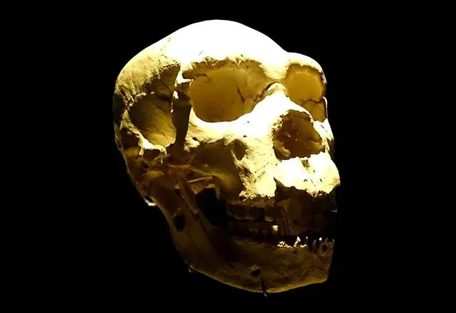
5. The early humans
Hool sorts the human-like species by their dates. Even after he divides their dates by his factor, the oldest of them, from Australopithecus to Homo heidelbergensis, are older than Adam, so he makes them animals of the Fifth Day, the adnei hasadeh of the Mishnah; their tools and fire do not make them human, since on his account only the neshamah does. The species that appear about 300,000 years ago, among them the Neanderthals, the Denisovans and Homo floresiensis, fall after Creation on his final rule, which puts Creation about 289,000 years ago on the archaeologists’ calendar. He makes them children whom Adam and Chavah had before Shes, not in Adam’s image, and as Adam’s children, he holds, they could have children with our ancestors, which no animal can do. Shes’s descendants, on his account, made the beads, the engraved ochre and the art that appear in Africa about 60,000 years ago, which on his scale is about 350 years before the Mabul.
Hool’s full argument is in Part Two ↑
The account fails on these points:
- On Hool’s rule for converting dates, several lines that he counts as Adam’s children are older than Adam. The Neanderthal line had split from the Denisovan line by about 430,000 years ago, about 825 of his years before Creation, and the line of Homo floresiensis was on Flores 700,000 years ago.
- The mother-lines and father-lines of the Neanderthals and the Denisovans meet ours before Hool’s date for Adam, between about 326,000 and 973,000 years ago, and separate species such as polar bears and grizzly bears also have fertile young together.
- The signs that Hool takes for the start of Shes’s line are far older than 60,000 years. The shell beads of Bizmoune Cave in Morocco come nearly 500 of his years before his date for that line, and pigment and stone carried from far away appear in Kenya about 300,000 years ago, before his date for Creation.
- In the Gemara and the Midrash that Hool cites, the beings born in the 130 years before Shes were spirits, and the Rambam’s “animal in the shape of a man” is any person who lacks perfection of mind.
- Hool’s outside sources don’t say what he takes from them. Where the textbook he quotes reads “hominin,” his quotation reads “Homo sapiens,” and the chimpanzees known for understanding fire only watch it and keep out of its way.
5.1 Several lines are older than Hool’s Adam
Hool holds that the Neanderthals, the Denisovans and Homo floresiensis (the tiny people of the Indonesian island of Flores) were children of Adam and Chavah, born in the 130 years before Shes, and that the first finely made tools were their work (Part Two, 7e). He brings the earliest of them after Creation with his factor. In The Flood he takes the young end of the dates for the first Homo sapiens, from Jebel Irhoud in Morocco, 280,000 years, and divides by 171.6, which puts them 37 of his years after Creation (The Flood, pp. 46–47; Part Two, 7g). (On p. 49 Hool writes that the date is “scaled down by a factor of 13.1,” but the result he gives, 1,619.6 years before the Mabul, comes from dividing by 171.6.)
Adam’s children can’t be older than Adam [citation needed]. Hool’s final rule subtracts 3,800 from a date BCE, divides by 171, and counts the result back from the Mabul in the year 1656. Running it backward, my bochurim found that Creation falls at 286,976 BCE (171 × 1,656 = 283,176 years before 3800 BCE), about 289,000 years before the present, since an age in years before the present is about 2,000 years more than its date BCE. So on Hool’s rule, anything that scientists date to more than about 289,000 years ago comes from before Creation and cannot be the remains or the work of Adam’s children.
The line of the Neanderthals, the line of Homo floresiensis and a people near the root of our own species’ line all began more than 289,000 years ago, and the first finely made tools that Hool credits to Adam’s children are older than that too. Even the fossils of Jebel Irhoud, which Hool used to set his factor, come before Creation at the center of their measured range. The burned flints found with them date to 315,000 years ago, give or take 34,000 (Richter et al., Nature, 2017), which on Hool’s final rule is about 150 of his years before Creation, or about 254 when the radiation in their layer is added up as Hool’s model requires (see 2.1c). Hool’s match works only if the true age lies near the young end of the range.
A tooth from the same site does not help Hool either. Richter’s team dated it to 286,000 years ago, give or take 32,000 (Richter et al., Methods and Extended Data Table 3), so dividing its age by 171 would put it just after Creation. But its age comes from uranium-series dating, which tracks how much uranium entered the tooth, and electron spin resonance (ESR) dating, which measures the radiation damage trapped in its enamel, and both use the same measurements of the radiation in the soil of layer 7 as the flints. On Hool’s model the tooth’s age would have to be worked out again from the radiation, with the faster decay and the uptake of uranium adjusted together, and not by dividing 286,000 by 171.
5.1a The Neanderthal–Denisovan split
Hool makes the Neanderthals and the Denisovans children of the same parents, Adam and Chavah, born in the 130 years before Shes. On his account the two lines began as brothers and sisters, so they cannot have separated before Creation. They had already separated by about 430,000 years ago.
The evidence comes from the Sima de los Huesos, “the pit of bones,” a thirteen-meter shaft in the Atapuerca hills of northern Spain that holds the bones of at least 28 people (the evidence from human bones and tools). In 2016 Matthias Meyer and his colleagues recovered nuclear DNA, the kind inherited from both parents, from two of the bones, and it shared more of its mutations with the Neanderthals than with the Denisovans (Nature, 2016). So the people of the pit belonged to the Neanderthal line, and the two lines had already split by the time they lived. The conclusion depends only on which mutations the bones share with each group and uses no mutation rate, so it holds however fast mutations happen.
Geologists dated the pit separately from the DNA. Earlier work dated the layers above and around the fossils to about 430,000 years ago (Arnold et al., Journal of Human Evolution, 2014). In 2019 Martina Demuro and her colleagues dated the fossil layer itself, unit LU-6, by luminescence, which measures the radiation that buried grains have absorbed since they last saw sunlight (Demuro et al., Journal of Human Evolution, 2019; open-access PDF). Their two samples came out at 457,000 years ago, give or take 41,000, and 460,000 years ago, give or take 39,000, and together the dates give the layer an age of 448,000 years, give or take 15,000.
On Hool’s final rule, the Neanderthals of the pit lived about 825 of his years before Creation. Take the lower age, 430,000 years, which is about 428,000 BCE. Subtracting 3,800 leaves 424,200 of the archaeologists’ years before the Mabul. Dividing by 171 gives 2,481 of Hool’s years before the Mabul. Creation came only 1,656 years before the Mabul (1,656 − 2,481 = −825), so the people in the pit lived about 825 of Hool’s years before Creation. Two lines that Hool treats as brothers and sisters had already been apart for more than eight centuries before Adam and Chavah existed.
Hool cannot avoid this date by counting the people of the pit among the animals of the Fifth Day, as he does with the older hominins (Six Days 2, p. 201). Their DNA already carried mutations found only on the Neanderthal side of the split, and the later Neanderthals carry the same mutations. The later Neanderthals inherited those mutations from ancestors who lived before Adam, and children of Adam and Chavah could not inherit mutations from a line that Adam and Chavah did not descend from. So whether the people of the pit were animals or not, the Neanderthal line began before Adam.
The radiation stored in the sand of the pit puts the bones before Creation even when it is added up the way Hool’s model requires, without dividing any date by 171. Once a grain of quartz is buried, radiation from the radioactive minerals around it, and a little from cosmic rays, builds up energy in the grain. Geologists measure the total dose the grain has stored and the dose it receives each year, and from the two they work out how long it has been buried. (Absorbed radiation is measured in grays, or Gy, and the yearly dose in grays per thousand years, or Gy/ka.)
In their 2019 study of the fossil layer, Martina Demuro and her colleagues measured single grains of quartz from two samples around the fossils, by a method called thermally transferred optically stimulated luminescence, or TT-OSL (Demuro et al., 2019, Tables 1 and 4):
- Sample SH13-3 has a stored dose of 1,224 Gy, give or take 60. Its minerals supply 2.67 Gy per thousand years and cosmic rays 0.01. This gives an age of 457,000 years, give or take 41,000.
- Sample SH13-5 has a stored dose of 842 Gy, give or take 38. Its minerals supply 1.82 Gy per thousand years and cosmic rays 0.01. This gives an age of 460,000 years, give or take 39,000.
Hool’s model cannot supply those doses. Give Hool the same generous terms used for the flints of Jebel Irhoud in 2.1c. Before the Mabul he gets his full 21,693.6 physical years (his 1,656 years from Creation to the Mabul, each 13.1 times as long as ours), with the minerals decaying 13.1 times faster than today. After the Mabul he gets 8,000 years’ worth of decay at today’s rate, and cosmic rays run at today’s rate throughout. All of that gives sample SH13-3 only 780 Gy, which is 36.2 percent less than its measured dose, and sample SH13-5 only 532 Gy, which is 36.8 percent less. The grains hold more radiation than all of Hool’s time since Creation could have given them, so they were buried before Creation.
Speeding up the cosmic rays does not change this. The rock over the shaft is so thick that cosmic rays supply only 0.37 to 0.55 percent of the yearly dose at the Sima. Making them 13.1 times stronger before the Mabul adds only about 2.6 Gy to each sample.
| What would give the Sima quartz its measured dose | SH13-3 (1,224 ± 60 Gy) | SH13-5 (842 ± 38 Gy) |
|---|---|---|
| Most dose that Hool’s model supplies (minerals 13.1 times faster before the Mabul, plus 8,000 years at today’s rate after it) | 780 Gy (36.2% short) | 532 Gy (36.8% short) |
| Speedup of the minerals’ decay before the Mabul needed, at the reported dose rates | 20.76× | 20.95× |
| Speedup needed with the measured dose one margin of error (1σ) lower and the mineral dose rate 1σ higher | 18.32× | 18.63× |
| Speedup needed if the sediment was completely dry throughout its history | 15.32× | 15.86× |
| Speedup of the cosmic dose under the ground needed if the minerals stay at 13.1× | 2,046× | 1,430× |
| Extra years’ worth of mineral decay after the Mabul needed, beyond the 8,000 already given | 166,000 equivalent years | 170,000 equivalent years |
None of the usual corrections to a radiation date closes the gap at Hool’s rate of 13.1. Water in the sediment absorbs some of the radiation, and geologists correct for it. But even if the sediment had been completely dry for its whole history, the quartz would still come out 14 to 17 percent short at 13.1 times. Completely dry sediment would still need the minerals to decay 15.32 to 15.86 times faster. This figure uses Demuro’s measured levels of radioactive minerals and moisture, and the standard correction factors for water of 1.25 for beta radiation and 1.14 for gamma radiation (Durcan et al., 2015). (Beta and gamma are the two main kinds of radiation that the surrounding minerals give off.)
Nor can Hool point to a smaller group of younger-looking grains. Sample SH13-3 does contain a small group of grains at 532 Gy, give or take 74, beside the main group at 1,224 Gy, which makes up about four-fifths of its usable grains. Taking the small group as the true burial dose would save SH13-3 by itself. But Demuro’s measurements on sample SH13-5, from the same fossil layer, rule that out: in SH13-5 she found only one group of grains, at 842 Gy, give or take 38. Any other reading would also have to explain the dates of the layers just below and just above the fossil layer (Arnold et al., 2014), and modern uranium- and thorium-series measurements that are near secular equilibrium (the steady balance between parent and daughter isotopes, which takes hundreds of thousands of years to reach). With all of these dates agreeing, no single group of grains can move the Sima de los Huesos into the years after Creation.
Hool also cannot save both caves at once by turning up his speed of decay, because the two caves need different speeds. Hool counts both the early Homo sapiens of Jebel Irhoud and the early Neanderthals of the Sima de los Huesos as Adam’s children, and he places Jebel Irhoud within the 130 years between Creation and Shes. By their central radiation dates the Sima is older than Jebel Irhoud. So both caves would have to fall within those first 130 years, which on Hool’s model run from 21,693.6 to 19,990.6 physical years before the Mabul.
We can work out how much faster the minerals must decay before the Mabul for each cave to land in that window, again with 8,000 years’ worth of decay after the Mabul and cosmic rays at today’s rate:
- Jebel Irhoud needs the minerals to decay 15.12 to 16.41 times faster than today (Richter et al., 2017).
- The Sima needs 20.76 to 22.53 times faster for sample SH13-3, and 20.95 to 22.74 times faster for sample SH13-5 (Demuro et al., 2019).
The two ranges do not overlap, even with both Sima samples taken together (20.76 to 22.74), so no single speed of decay fits both caves.
Making the cosmic rays stronger before the Mabul only widens the gap. Cosmic rays supply a much larger share of the yearly dose at Jebel Irhoud (4.8 to 6.4 percent) than at the Sima (0.37 to 0.55 percent). Stronger cosmic rays therefore lower the speed of mineral decay that Jebel Irhoud needs, while barely changing what the Sima needs:
- At six times today’s cosmic dose, Jebel Irhoud needs 14.81 to 16.10 times faster decay, while the Sima still needs 20.74 to 22.71 (20.74 to 22.51 for SH13-3, and 20.92 to 22.71 for SH13-5).
- At 13.1 times today’s cosmic dose, Jebel Irhoud needs 14.37 to 15.67, while the Sima still needs 20.71 to 22.67 (20.71 to 22.48 for SH13-3, and 20.88 to 22.67 for SH13-5).
If the sediment at the Sima had stayed nearly dry for its whole history, its range would overlap part of Jebel Irhoud’s, but only if Hool also raised his speed of mineral decay everywhere above 13.1. Hool could instead give up a steady speed of decay before the Mabul, for example by proposing a short early burst of decay, or different speeds of decay in the two caves. Each of these would be a new assumption made only for these two caves, and it would still have to agree with every other dating method that Hool relies on.
5.1b Homo floresiensis
Hool counts Homo floresiensis among Adam’s children. These were the small human-like people of the Indonesian island of Flores, whose skeletons were found in 2003 in a cave called Liang Bua. The archaeologist Thomas Sutikna and his colleagues date the skeletons to between about 100,000 and 60,000 years ago (Nature, 2016). On Hool’s final rule, that is between about the year 1,105 and the year 1,340 from Creation. If the line of these people had begun at Liang Bua, it would fit within Hool’s years before the Mabul.
But the line was on Flores long before Liang Bua. About seventy kilometers away, at a site called Mata Menge, a team of Japanese, Indonesian and Australian scientists had been digging in much older river deposits. In 2024 a team led by Yousuke Kaifu of the University of Tokyo described a small piece of an adult’s upper arm bone from Mata Menge and dated it to about 700,000 years ago. That is more than 400,000 of the archaeologists’ years before Hool’s date for Creation.
The arm bone belongs to an even smaller ancestor of the same island line. The arm was 9 to 16 percent shorter and thinner than the arm of the Homo floresiensis skeleton from Liang Bua, and smaller than any adult arm of the human family found anywhere. The team had earlier found teeth and a jaw in the same deposits. From the arm bone, the teeth and the jaw together, the team concludes that a line of tiny people had lived on Flores since at least 700,000 years ago and led to Homo floresiensis. On Hool’s final rule, 700,000 years ago is about 2,400 of his years before Creation.
Hool could answer that the people of Mata Menge were animals of the Fifth Day, and that only the later people of Liang Bua were Adam’s children. But the researchers conclude that the people of Mata Menge already belonged to the line of Homo floresiensis, which lived on Flores with small bodies from at least 700,000 years ago down to the time of the Liang Bua skeletons. They also conclude that this line most likely descended from early Asian Homo erectus, which Hool counts among the animals (Part Two, 7c; see also 5.5). Children of Adam and Chavah cannot belong to a line that was already living on Flores about 2,400 of Hool’s years before Adam was created.
Flores is a strong case because the bones themselves connect Mata Menge to Homo floresiensis. On Luzon in the Philippines, by contrast, excavators found no skeleton with the ancient stone tools of Kalinga, so those tools cannot yet be joined into one line with the much younger fossils of Homo luzonensis from Callao Cave. Those fossils have a uranium-series minimum age of about 67,000 years for the foot bone CCH1 (Détroit et al., Nature, 2019), and their earliest appearance in the cave is dated to 134,000 years ago, give or take 14,000 (Lambard et al., Quaternary Geochronology, 2024).
5.1c Morocco, 773,000 years ago
Hool makes the Neanderthals, the Denisovans and the first Homo sapiens children of the same two parents. On his account the lines of all three peoples begin with Adam and Chavah, so the point where those lines parted cannot be older than Adam.
Scientists have found a people living close to that point far earlier. At Thomas Quarry I in Casablanca, Morocco, a cave has yielded human-like jaws, teeth and vertebrae, which a team led by Jean-Jacques Hublin described in Nature in January 2026 (the evidence from human bones and tools). The layers around the fossils hold the last reversal of the Earth’s magnetic field, which dates them to 773,000 years ago, give or take 4,000. The reversal happened all over the world at once, so this date does not depend on radiocarbon or on anything peculiar to this one cave.
The jaws and teeth combine features of Homo erectus with traits seen in early Homo sapiens and in the Neanderthals. The team concludes that this population lived near the base of the branch that led to Homo sapiens, close to the time when that branch parted from the line of the Neanderthals and the Denisovans. The authors note that even if these people were not themselves the common ancestors of all three groups, they were closely related to them.
On Hool’s final rule, 773,000 years ago (about 771,000 BCE) comes about 4,487 of his years before the Mabul: (771,000 − 3,800) ÷ 171 ≈ 4,487. Creation came 1,656 years before the Mabul, so the fossils come about 2,830 of Hool’s years before Creation. So a people living near the point where the lines of the Neanderthals, the Denisovans and Homo sapiens parted lived more than two thousand of Hool’s years before Adam. (The team placed these fossils by the shape of the jaws and teeth, not by DNA, so this link is less firm than the genetic link between the Sima de los Huesos bones and the Neanderthals.)
5.1d The tools of Kenya
Hool also counts the first finely made tools among the remains of Adam’s children. In The Flood he places “the first appearance in the archaeological record of anatomically modern man as well as the discovery of finely crafted tools” in the years when Adam and Chavah had children before Shes, and he dates both to about 300,000 BCE (p. 46). In Six Days he points to one site in particular:
In southern Kenya, further evidence of ancient humans has been discovered in the form of finely crafted tools with flaked points that could be attached to handles and spear shafts and used for hunting, dated between 298–320,000 years old. (Six Days 2, p. 213)
The earliest of these tools come before Hool’s date for Creation. They were found in the Olorgesailie basin in southern Kenya, where teams from the Smithsonian Institution and the National Museums of Kenya, led by Richard Potts, have been digging since the 1980s. In 2018 the archaeologist Alison Brooks and her colleagues described the tools. In a companion study the geochronologist Alan Deino dated the volcanic layers that hold them, using the decay of potassium into argon in volcanic ash and the decay of uranium. Neither method uses carbon-14.
Hool’s factor applies to these methods as much as to radiocarbon. He holds that all radioactive decay ran faster before the Mabul, and the example he gives is the decay of uranium into lead (Six Days 2, p. 221, quoted in Part Two). On Deino’s dates the finely made tools begin by about 320,000 years ago, which on Hool’s final rule is about 180 of his years before Creation. Even the youngest date that Hool prints, 298,000 years ago, falls about 50 of his years before Creation.
Hool could count the toolmakers as animals of the Fifth Day, since he holds that animals make tools. But then the tools could no longer mark the appearance of Adam’s children, which is what Hool cites them for. Of the two signs that Hool gives in The Flood for the years before Shes, only the earliest fossils of Homo sapiens would be left, and at the central date of the flints found with them, those fossils too come before Creation.
5.1e The timbers of Kalambo Falls
Hool treats finely made stone tools as a sign that separates Adam’s children from the animals before them. Long before those tools, someone at Kalambo Falls in Zambia joined two logs by a notch cut on purpose, which the waterlogged ground beside the river preserved (the evidence from what people made before Adam). Lawrence Barham and his colleagues dated the sand around the logs by luminescence to at least 476,000 years ago, give or take 23,000 (Nature, 2023). That is nearly 200,000 of the archaeologists’ years before Hool’s date for Creation.
In younger layers at the same site, the team also found four wooden tools, among them a wedge and a digging stick. The excavators suggest that the joined logs may have been part of a raised platform, a walkway or the base of a dwelling on the wet ground beside the river. No one knows who made them.
On Hool’s final rule, 476,000 years ago (about 474,000 BCE) comes about 2,750 of his years before the Mabul: (474,000 − 3,800) ÷ 171 ≈ 2,750. That is about 1,094 of his years before Creation (1,656 − 2,750 = −1,094). Even the young end of the measured range, 453,000 years ago, falls about 960 of his years before Creation. So whoever notched and fitted these timbers was doing deliberate carpentry long before Adam, whatever the margin of error.
Hool has a possible answer. He writes that animals have “the intelligence to form different arrangements of things such as making nests or primitive homes” (Six Days 2, p. 236). On that principle he could count the Kalambo timbers as the work of animals of the Fifth Day.
But then Hool has no consistent way to tell the work of Adam’s children from the work of animals. He cites “finely crafted tools with flaked points that could be attached to handles and spear shafts” as evidence of ancient humans (p. 213), and in The Flood he dates “the discovery of finely crafted tools,” together with the first Homo sapiens fossils, to the years before Shes (p. 46). Nothing in Hool’s books explains why a stone point shaped to fit a handle is the work of Adam’s children, while two logs notched to fit each other (carpentry, basically) are the work of animals.
The making of fire at East Farm, Barnham, in Suffolk, raises the same problem. There excavators found repeated burning in one spot, together with scarce iron pyrite, dated to about 400,000 years ago, which is more than 600 of Hool’s years before Adam (see 5.5c).
5.1f Every factor Hool uses
| Find | Study | Age | On Hool’s final rule |
|---|---|---|---|
| Sima de los Huesos, Spain: the Neanderthal line, already apart from the Denisovan line | Meyer and colleagues, 2016 | about 430,000 years | about 825 years before Creation |
| Mata Menge, Flores: the line of Homo floresiensis | Kaifu and colleagues, 2024 | about 700,000 years | about 2,400 years before Creation |
| Thomas Quarry I, Morocco: a people near the root of the line of Homo sapiens | Hublin and colleagues, 2026 | about 773,000 years | about 2,830 years before Creation |
| Southern Kenya: finely crafted tools with flaked points | Hool’s chapter on Homo sapiens, p. 213 | 298,000 to 320,000 years | about 53 to 181 years before Creation |
On the archaeologists’ calendar, the Sima bones are about 140,000 years older than Hool’s date for Creation, the Mata Menge bone about 410,000 years older, and the Thomas Quarry fossils about 484,000 years older. The margin of error in each of these dates is far smaller than these gaps.
The finds come before Creation whichever factor Hool uses. He divides by 169 in Six Days, by 171.6 for the Jebel Irhoud fossils in The Flood (p. 47), and by 171 in his final rule. With 169, Creation falls about 285,700 years ago, and with 171.6, about 290,000 years ago. On either factor, every one of these finds still comes before Creation.
A find comes after Creation only if the factor is large enough to stretch Hool’s 1,656 years from Creation to the Mabul back past the find’s date. The smallest such factor is the find’s date BCE minus 3,800, divided by 1,656. Hool’s factors run from 169 to 171.6. These finds need much larger ones:
- The Kenyan tools need a factor of at least 177 for their youngest date and 190 for their oldest date.
- The Sima bones need a factor of at least 257.
- The Mata Menge bone needs a factor of at least 420.
- The fossils of Thomas Quarry need a factor of at least 464.
So on every factor that Hool uses, the line of the Neanderthals and the line of Homo floresiensis began before Adam was created, and neither people can be among the children Adam and Chavah had before Shes.
5.2 Neanderthal and Denisovan DNA splits before Adam
Hool identifies the Neanderthals and the Denisovans as children of Adam and Chavah, born in the years before Shes (Six Days 2, pp. 221, 223; Part Two, 7e), and he holds that this is how they could have children with our ancestors, since animals cannot (Part Two, 7f). If he is right, every Neanderthal, every Denisovan and every person alive today descends from the same two people, so all of their lines of descent meet in Adam and Chavah, whom Hool’s final rule puts about 289,000 years ago on the archaeologists’ calendar (see 5.1). Geneticists follow the line of mothers through mitochondrial DNA and the line of fathers through the Y chromosome, and in both they find the Neanderthal and Denisovan lines branching off from ours long before that.
5.2a Mitochondrial DNA
A child inherits mitochondrial DNA, the small piece of DNA carried by the energy-producing bodies of the cell, from the mother alone and without the shuffling that the rest of our DNA goes through, so it changes only by rare copying mistakes, called mutations. The mitochondrial DNA of two people therefore differs only by the mutations along their two lines of mothers, back to the woman from whom both lines descend, and the more differences there are, the further back she lived (the evidence from the mothers’ lines).
Hool describes this, quoting the American Museum of Natural History (Six Days 2, pp. 216–217):
Mitochondrial DNA passes from a mother to her children, but only the daughters pass it to the next generation. Experts can trace female ancestry by studying patterns of mutations in mitochondrial DNA. Some of the mutations happened in the ancient past, others more recently.
The museum adds that the Y chromosome “passes only from father to son.” But Hool stops there. He never says where these lines meet, and he never asks whether the points where they meet fit Adam and Chavah.
Geneticists have answered that question from the bones. In 1997 Matthias Krings, in Svante Pääbo’s laboratory at the University of Munich, read a stretch of mitochondrial DNA from the arm of the first Neanderthal skeleton ever recognized, found by quarrymen in the Neander Valley near Düsseldorf in 1856. It fell outside the range of the mitochondrial DNA of every living person, so the Neanderthals belonged to a separate branch of mothers. (Pääbo went on to lead the reading of the complete Neanderthal genome, and in 2022 he received the Nobel Prize “for his discoveries concerning the genomes of extinct hominins and human evolution.”) In 2010 Johannes Krause and his colleagues in Pääbo’s group, by then at the Max Planck Institute in Leipzig, read the complete mitochondrial DNA of the tip of a child’s finger bone that Russian archaeologists had found in 2008 in Denisova Cave, in the Altai Mountains of southern Siberia. It matched neither the Neanderthals nor any living person, and the group it came from is now called the Denisovans.
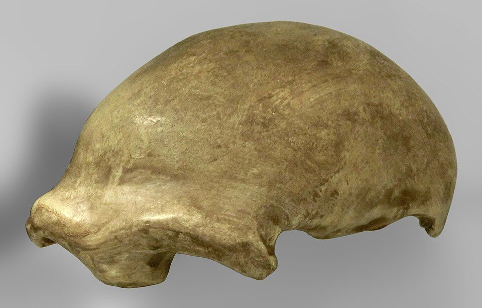
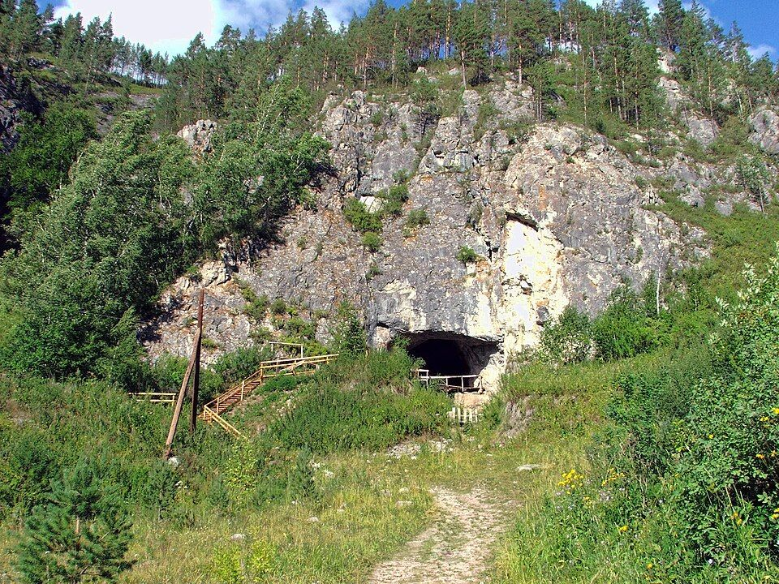
5.2b The mother-lines
Geneticists can turn the mutation counts into years. In 2013 Qiaomei Fu and her colleagues measured how fast mitochondrial DNA changes, using ten ancient skeletons of modern humans, up to 40,000 years old, each dated by radiocarbon (the evidence from the mothers’ lines). Because the skeletons were dated by radiocarbon, Fu’s clock counts in the same years as the archaeologists’ calendar, which is the calendar that Hool’s final rule converts. So the dates of the branch points can be put into Hool’s rule as they are, with no separate argument about how radiocarbon dates are calibrated.
On that clock, the mother-lines of all living people meet in one woman, whom geneticists call “Mitochondrial Eve,” about 157,000 years ago, somewhere between 120,000 and 197,000 years ago. On Hool’s final rule, 157,000 years ago falls around the year 770 from Creation, after Chavah, as Hool’s account requires. So Hool’s rule has no trouble placing the mothers of living people after Creation. It breaks down only when the Neanderthals and the Denisovans are added. On the same clock, the Neanderthal mother-line meets ours between 326,000 and 482,000 years ago, and the Denisovan mother-line meets the line shared by the Neanderthals and us between 657,000 and 973,000 years ago. (The point where two lines meet is called their branch point.)
On Hool’s rule, then, both branch points come before Chavah existed. Even the youngest date for the Neanderthal branch point, 326,000 years ago, lands about 216 of Hool’s years before Creation. The youngest date for the Denisovan branch point, 657,000 years ago, lands more than 2,100 of his years before Creation. On Hool’s account no two human mother-lines can meet before Chavah, because all of them begin with her.
5.2c The Denisovan mother-line
If Hool is right, the first Neanderthal and the first Denisovan were children of one mother, Chavah, born in the 130 years before Shes. Both carried Chavah’s mitochondrial DNA, and so did every later Neanderthal and Denisovan, through their lines of mothers. Every person alive today also carries Chavah’s mitochondrial DNA, through the women of the Ark and their mothers.
On that account all three lines of mothers parted at Chavah. Every difference between a Neanderthal’s mitochondrial DNA and ours would be a mutation along one of the two lines since Chavah, and so would every difference between a Denisovan’s mitochondrial DNA and ours. The Neanderthal bones and the Denisovan bone are of similar age, all tens of thousands of years old by the archaeologists’ dates. So a Neanderthal and a Denisovan should each differ from us by about the same number of mutations. If three lines started from one woman at the same time, none of them should end up twice as far from us as another. This comparison needs no mutation rate and no radiocarbon date.
Krause’s team counted the differences. The mitochondrial DNA of the Neanderthals differs from that of living people at 202 places on average, and the Denisovan’s differs at 385 places, almost twice as many. So the Denisovan mother-line branched off from ours about twice as far back as the Neanderthal mother-line did.
Even on Hool’s premise, then, the three lines did not all part at Chavah. The Neanderthal line of mothers and ours must have stayed one line long after the Denisovan line branched off, through roughly half of the mutations that built up between Chavah and these Neanderthals. They parted only at some later woman from whom both the Neanderthals’ mothers and ours descend.
The two-to-one ratio does not depend on how fast mutations happened, before the Mabul or after, as long as at any given time they happened at the same rate in all the lines. Still, the counts alone do not rule out Hool’s account. It could hold if a woman who lived after Chavah was the last common mother of the Neanderthals and of modern humans, for example if daughters from one line later joined the other.
That is why the dates of the branch points carry more weight: no two mother-lines can meet before the woman who founded all of them.
5.2d The father-lines
Geneticists find the same split before Creation in the lines of fathers. The Y chromosome is a piece of nuclear DNA that only men carry. It passes from father to son, the way mitochondrial DNA passes from mother to child, so it follows the line of fathers. In 2020 Martin Petr and his colleagues at the Max Planck Institute in Leipzig read the Y chromosomes of three Neanderthal men and two Denisovan men. They found that the Denisovan father-line meets the line shared by the Neanderthals and modern humans about 700,000 years ago, while the father-line of these Neanderthals meets ours about 370,000 years ago, roughly half as far back.
The Y chromosome is a separate piece of DNA from the mitochondrial DNA, so this is a second, independent count down the fathers’ side. It gives the same two-to-one pattern and the same dates before Creation, so the pattern in the mother-lines is not a fluke of one piece of DNA.
The father-lines follow the mother-lines in another way too. The three men in Petr’s study were late Neanderthals, and the researchers concluded that their father-line, like their mother-line, had come into the Neanderthal population from early modern humans and replaced an older Neanderthal father-line. So 370,000 years ago is when that later Neanderthal father-line meets ours, and the Neanderthals and our ancestors had separated even earlier.
On Hool’s account all of these father-lines begin with Adam, about 289,000 years ago on the archaeologists’ calendar. On his final rule, 370,000 years ago falls about 470 of his years before Creation, and 700,000 years ago about 2,400 of his years before Creation. So neither father-line can have begun with Adam.
5.2e Interbreeding
Hool presents his account as the explanation of how the Neanderthals and the Denisovans could have children with our ancestors. He cites Rashi on Bereishis 2:24, which draws on Sanhedrin 58a. Rashi explains that husband and wife become “one flesh,” and that this leaves out animals, since animals cannot have children with people. Hool concludes:
However, these were offspring of Adam and Eve and could therefore interbreed with humans. (Six Days 2, p. 221)
לְבָשָׂר אֶחָד. הַוָּלָד נוֹצָר עַל יְדֵי שְׁנֵיהֶם וְשָׁם נַעֲשֶׂה בְשָׂרָם אֶחָד.
“‘Into one flesh’—the child is formed by both of them, and there their flesh becomes one.”
Rashi on Bereishis 2:24 (citing Sanhedrin 58a)
This argument mixes up two things: being able to have children together, and descending from one recent pair of parents. Separate species have fertile young together in nature today. Polar bears and grizzly bears are distinct species. Polar bears are white and hunt seals on the sea ice, and grizzlies are brown and live on land. As grizzlies moved north into the Canadian Arctic, the two species interbred. In 2017 the wildlife geneticist Jodie Pongracz and her colleagues analyzed the DNA of eight hybrid bears in the Canadian Arctic and traced them to one female polar bear and two male grizzlies. Four of the eight were her own cubs. The other four were second-generation cubs, born to her hybrid offspring and grizzlies, so the hybrids were fertile.
The Neanderthal DNA in living people is the same kind of case. About two percent of the DNA of people whose ancestors lived outside Africa comes from Neanderthals, passed down from the times when our ancestors had children with them. As with the bears, the mixing means only that the two populations were close enough to have fertile children together. It does not make the Neanderthals children of Adam and Chavah.
On Hool’s timeline, the rule he takes from Rashi also works against him. The Neanderthal line was already separate 430,000 years ago, in the bones of the Sima de los Huesos (5.1a), and both the Neanderthal mother-line and father-line meet ours before Hool’s date for Creation (5.2b and 5.2d). So the Neanderthals had ancestors who lived before Adam and Chavah, while Hool’s account needs their ancestry to begin with Adam and Chavah. Hool counts anything older than Adam as an animal of the Fifth Day, so on his timeline the Neanderthals descend from animals of the Fifth Day. By his reading of Rashi, they then could not have had children with people, yet the Neanderthal DNA in living people shows that they did.
5.2f Generations since the mixing
On Hool’s account the Neanderthals were Adam’s children, so the mixing came after Creation, and every generation from the mixing onward has to fit into his years. For the people who lived about 45,000 years ago at Ranis in Germany and at Zlatý kůň in the Czech Republic, Arev Pelin Sümer and her colleagues counted about 80 generations since the mixing, with a full range of 56 to 98 (Sümer et al., Nature, 2024). Hool’s final rule squeezes them into the first 1,427 years after Creation, about 18 years to a generation, or 25 even at the low end (worked out in 2.6e). Hool’s account of the years before the Mabul makes it worse. He writes that during the first thousand years the fathers had their children at around the age of a hundred (Six Days 2, p. 226), and at a hundred years to a generation, 56 to 98 generations would need 5,600 to 9,800 years.
The count from Ranis and Zlatý kůň is the one most favorable to Hool. Fu and her colleagues’ 2014 estimate of 232 to 430 generations between the mixing and the Ust’-Ishim man of Siberia, who lived about 45,000 years ago (Fu et al., Nature, 2014), would leave Hool’s 1,427 years only 3 to 6 years to a generation. But Ust’-Ishim’s Neanderthal DNA came from two rounds of mixing, one of them only 30 to 50 generations before him, and lumping two rounds into one can throw off a count of generations (the evidence from Neanderthal DNA). The people of Ranis and Zlatý kůň have no sign of a second, recent round.
An older bone from Siberia, Denisova 11, leaves Hool even fewer generations. It came from a girl whose mother was a Neanderthal and whose father was a Denisovan. In five well-supported stretches of her DNA, 0.72 to 0.95 megabases long (a megabase is a million DNA letters), plus six less certain regions, both of her copies of the chromosome are Neanderthal-like, so her Denisovan father already had a Neanderthal ancestor further back in his own family (Slon et al., Nature, 2018; Supplementary Information §§5–7; the evidence from Neanderthal DNA).
By modeling those five stretches, Slon and her colleagues estimated that the older mixing happened 300 to 600 generations before Denisova 11. The researchers call the estimate rough, because the ancient genome was read at only 2.6× coverage (each DNA letter was read 2.6 times on average) and was modeled with simplified maps. But four of the five regions are shuffled more slowly than average in modern humans. Slower shuffling takes more generations to cut a stretch down to the size that was found, so the 300 to 600 generations, if anything, understate the count.
The bone’s age leaves far too few of Hool’s years for that many generations. Douka and her colleagues dated Denisova 11 to between 79,300 and 118,100 years ago (Douka et al., Nature, 2019; open text). On Hool’s final rule, even the youngest date, 79,300 years ago, leaves only 1,226 solar years between Creation and the girl, and the oldest date, 118,100 years ago, leaves 999. (For an age A in years before 1950, the rule gives the year from Creation as 1,656 − (A − 5,749) ÷ 171.)
At thirty years to a generation, 1,226 years hold only 40.9 generations, and 999 years only 33.3. Fitting 300 to 600 generations into 1,226 years would mean generations of only 4.09 to 2.04 years. Even if we set the bone’s date aside and place Denisova 11 at the Mabul itself, 1,656 years after Creation, there is room for only 55.2 thirty-year generations, which means 5.52 to 2.76 years for each of the 300 to 600 generations.
Keeping thirty-year generations would instead require DNA to be shuffled 7.3 to 14.7 times faster than normal at 79,300 years ago, or 5.4 to 10.9 times faster even at the Mabul. In people today, the rates of shuffling in women and in men across the genome differ by only about 1.6 times (Bhérer et al., Nature Communications, 2017). The speedup that Hool’s timeline needs is far outside anything seen in human biology.
Chance cannot explain the five short Neanderthal stretches either. Every generation cuts inherited Neanderthal DNA into smaller pieces. A standard statistical model, with an even rate of shuffling of 1.3 centimorgans per megabase across 2,762 megabases of readable genome, gives these average lengths for the pieces:
- After 41 generations, 1.88 megabases.
- After 55 generations, 1.40 megabases.
- After 300 generations, 0.26 megabases.
- After 600 generations, 0.13 megabases.
With only 41 or 55 generations, enough Neanderthal ancestry to leave five pieces between 0.72 and 0.95 megabases almost always leaves longer pieces as well. Across shares of Neanderthal ancestry from 0.1 to 5 percent, the best chance of seeing exactly five pieces in that range and none longer is 3.6 × 10−6 at 41 generations and 1.4 × 10−5 at 55 generations. Under a standard model of a single mixing (Liang and Nielsen, Genetics, 2014), the chance is 0.0128 at 300 generations and 0.0616 at 600 generations. So Hool’s 41 to 55 generations are roughly a thousand to tens of thousands of times less likely to produce the chromosomes of Denisova 11 than the 300 to 600 generations of the standard timeline.
5.2g A people Hool counts as animals
On Hool’s account every human-like creature belongs to one of two groups. Adam’s descendants all have Adam and Chavah as their ancestors, and every other human-like creature is an animal of the Fifth Day (Six Days 2, p. 210). Hool counts Homo erectus among these animals. Following his sources, he describes it as the first human-like species to spread out of Africa (p. 206). Hool holds that the Neanderthals could have children with our ancestors because they were Adam’s children and not animals (p. 221).
Geneticists find that the ancestors of the Neanderthals and the Denisovans had children with a much older group, one that had been separate from every other human line for a very long time. In 2020 Alan Rogers of the University of Utah and his colleagues compared the genomes of Neanderthals, Denisovans and modern humans (Science Advances). They found that the common ancestors of the Neanderthals and the Denisovans had children with a population that the team calls “superarchaic.”
By the team’s reckoning, the superarchaic group split off about 2 million years ago from the line that led to the Neanderthals, the Denisovans and modern humans. The interbreeding happened about 700,000 years ago, soon after the shared ancestors of the Neanderthals and the Denisovans moved out of Africa into Europe and Asia. The researchers suggest that the superarchaics descended from the earliest human-like populations to spread into Asia, whose remains have been found at Dmanisi in Georgia. Rogers and his colleagues also confirmed earlier findings that the Denisovans had children with superarchaics again after they parted from the Neanderthals. So the interbreeding with the superarchaics happened more than once.
Geneticists have also found a trace of the superarchaic group in actual fossils, of a species that Hool already counts as an animal. In 2026 Qiaomei Fu of the Institute of Vertebrate Paleontology and Paleoanthropology in Beijing and her colleagues analyzed proteins from the tooth enamel of six Homo erectus individuals, five men and a woman, who lived about 400,000 years ago at three sites in China (Nature). The sites include Zhoukoudian near Beijing, where the bones of “Peking Man” were found. All six share two variants of a protein involved in the growth of teeth. One variant has been found in no other human group. The other was known before from the Denisovans (and from some modern humans who likely inherited it from them). The team concluded that this second variant may have entered the Denisovan line from a population related to these Homo erectus. So the stretches of Denisovan DNA that geneticists trace to a superarchaic group most likely came from Homo erectus.
The problem for Hool does not depend on the researchers’ dates. The order in which the lines branched is enough. On Hool’s account the lines of the Neanderthals, the Denisovans and modern humans all begin with Adam and Chavah. A group that branched off from all three lines before they parted from one another cannot descend from Adam and Chavah. On Hool’s division, that group must be counted among the animals of the Fifth Day, together with Homo erectus, the species to which the 2026 study links it.
Hool is then left with Neanderthals and Denisovans, whom he counts as Adam’s children, carrying DNA that came from animals. Either the Neanderthals and the Denisovans descend from beings older than Adam, which contradicts Hool’s account of where they came from, or Adam’s children had children with animals, which contradicts the rule that Hool takes from Rashi.
Hool’s line between Adam’s children and the animals of the Fifth Day also has nothing to do with brain size. Hool lists Homo naledi of South Africa, along with Homo floresiensis, among the species that “suddenly” appear about 300,000 years ago (pp. 214–215), and he identifies these species with the children Adam and Chavah had before Shes (p. 221). Yet Hool’s source gives Homo erectus, which he counts as an animal, a brain of 775 to 1,100 cubic centimeters (p. 206). The paleoanthropologist Lee Berger and his colleagues, who first described Homo naledi, estimated its brain at about 465 to 560 cubic centimeters (eLife, 2015), roughly half the size. In 2013 the anthropologist Daisuke Kubo and his colleagues used CT scans to measure the brain case of the Homo floresiensis skeleton from Liang Bua at 426 cubic centimeters (Proceedings of the Royal Society B).
So on Hool’s account, the creatures with the smaller brains were Adam’s children and the creatures with the larger brains were animals. Hool separates the two groups only by their dates. He names no feature of the body that tells them apart.
5.2h Neanderthal children and winter
Hool holds that before the Mabul the Earth had no summer and no winter. Following the Seforno, he writes that the Earth’s axis was not yet tilted toward the Sun:
Thus, the whole world would have experienced spring and autumn the whole year round with twelve hours day and twelve hours night. Indeed, the source for this is the Midrash Rabbah. On the verse after the Flood that says “the seasons and day and night will no longer be stopped,” the Midrash says that the air before the Flood was like perpetual springtime. (The Flood, p. 157)
In place of seasons, Hool proposes short cycles of warmer weather, driven by regular pulses from the Sun (pp. 157–158; see 1.2a). But scientists have found sharp yearly swings from winter to summer in the teeth of Neanderthal children who, on Hool’s calendar, lived before the Mabul. The swings are sharper than in the tooth of a person who lived after the Mabul at the same site.
Tooth enamel keeps, week by week, the chemistry of the water a child drank, and that chemistry changes with the seasons. Rain and snow carry different proportions of heavy and light oxygen depending on the temperature of the air, so the oxygen in drinking water shifts between summer and winter. A growing child’s body locks those proportions into each daily layer of enamel. In 2018 the dental anthropologist Tanya Smith and her colleagues examined the teeth of two Neanderthal children, about 250,000 years old, from Payre in southeastern France (Science Advances). Because enamel grows in daily layers, the team could tell how old the child was when each band of enamel formed, and they sampled the oxygen at points about a week apart. So the team could see, week by week, whether these children lived through winters.
In both teeth the team found a clear yearly cycle of summer and winter over about three years. One child was born in spring and weaned about two and a half years later, in autumn. Both children went through stress in winter, and both took in lead at least twice, in deep winter or early spring. The seasonal swings in the Neanderthal teeth were sharper than in the tooth of a modern human from the same site who lived about 5,400 years ago. So these Neanderthal children grew up through real winters.
On Hool’s final rule, 250,000 years ago is about 248,000 BCE. Subtracting 3,800 leaves 244,200 years, and dividing by 171 places these children about 1,428 of Hool’s years before the Mabul, around the year 228 from Creation. On Hool’s account, then, they lived about fourteen centuries before the Mabul, in a world without winter, and the cycles in their teeth would have to be his short cycles of warmer weather.
The person who lived about 5,400 years ago comes after 3800 BCE, which is where Hool puts the Mabul on the archaeologists’ calendar. On Hool’s account that person lived with the ordinary summers and winters that returned after the Mabul. Yet the Neanderthal children, fourteen centuries before the Mabul, went through sharper swings between winter and summer than this person did. So the world without winter that Hool’s account needs before the Mabul did not exist.
5.3 The signs of Shes’s line are much older
Hool holds that only Shes and his descendants were in Adam’s image. The children Adam had before Shes were not: Hool calls them “subhuman beings” (Six Days 2, p. 223), and in The Flood he writes:
These species did not have the intelligence of modern man and can be attributed to the subhuman beings referred to in the Talmud and Midrash Rabbah, born from Adam and Eve after the sixth day of Creation until the birth of Seth, as explained in detail in The Six Days of Creation 2 (Mosaica Press, 2025). However, according to the Biblical timeline, the sixth day of Creation took place in 3760 BCE. (The Flood, p. 34)
To tell the two groups apart among the remains that archaeologists find, Hool needs a point at which Shes’s descendants first appear. He finds it in a burst of new behavior that the archaeologist Paul Mellars described at Blombos Cave, Klasies River and other sites near the southern tip of Africa, dated to between about 75,000 and 55,000 years ago (Part Two, 7h). From Mellars he quotes “large numbers of perforated estuarine shells, evidently used as personal ornaments” (small river-mouth shells, each with a hole for a string), “large quantities of imported red ochre” (iron-rich earth ground into red pigment), some of it engraved, and good stone for tools, and shell beads, carried or traded “over distances of at least 20–30 km” (Six Days 2, p. 225). His summary calls these finds “the first cognitive signs of the human race” (p. 227).
Shes was born in the year 130 from Creation, so Hool has to explain why his line left no trace for a long time afterward. He explains the delay, and turns Mellars’s date into his years, in this passage:
According to the Biblical timeline, Adam was created in 3760 BCE, and for the first thousand years, the generations fathered children at around the age of one hundred years. Accordingly, we would expect that several hundred years would need to elapse before the human race would be sizeable enough to find remnants of their being and lifestyle. We saw in the previous chapter that the rate of radioactive decay was evidently 169 times more during the generations between Adam to Noah. Accordingly, the accumulation of 350 years of isotopes during those times would appear to geologists as the accumulation of about 60,000 years (350×169=60,000). Thus, the evidence of modern man can now be traced to the descendants of Seth about several hundred years before the Flood. (Six Days 2, pp. 226–227)
Archaeologists have found each of the signs on Hool’s list far earlier than 60,000 years ago, between about 300,000 and 140,000 years ago, and the oldest of them before his date for Creation.
5.3a The beads of Bizmoune Cave
The oldest shell beads yet found come from Bizmoune Cave, near Essaouira on the Atlantic coast of Morocco (the evidence from what people made before Adam). In 2021 a team led by El Mehdi Sehasseh and Steven Kuhn reported in Science Advances on 33 shell beads from the cave. They are small sea-snail shells of two species, Tritia gibbosula and Columbella rustica, each pierced with a hole. Some still carry traces of red ochre and wear marks where a string rubbed against them. Before this find, no shell beads older than about 130,000 years were known (University of Arizona, 2021).
Of the 33 beads, 31 lay beneath a hard sheet of cave rock called a flowstone. The team dated the flowstone by the decay of uranium in it, to about 142,000 years ago. The beads were in place before the rock formed over them, so these 31 beads are at least as old as the flowstone. The team’s date for the flowstone is 142,290 years, with an uncertainty running from 22,060 years younger to 29,300 years older. Even at the young end of that range, the beads are at least about 120,000 years old. The researchers count beads like these “among the earliest signs of symbolic behavior,” and they credit them to early Homo sapiens.
Hool’s conversion puts these beads long before the first trace of Shes’s line. In Six Days, Hool turns 60,000 years ago into his years by dividing by 169, which gives 355 years before the Mabul (he rounds it to about 350). Dividing the flowstone’s 142,290 years by 169 in the same way gives 842. So the beads come about 840 of Hool’s years before the Mabul. That is 487 of his years (about 82,000 of the archaeologists’ years) before the date he gives for the first trace of Shes’s line.
The uncertainty in the date does not close this gap. At the young end of the flowstone’s range, about 120,000 years ago, the beads still come about 710 of Hool’s years before the Mabul, roughly 350 of his years before the burst at Blombos.
Hool’s final rule, which divides by 171 and counts back from 3800 BCE (see 5.1), gives nearly the same gap. On that rule the beads come about 800 of his years before the Mabul and the burst about 320. The two are still about 480 of his years apart.
The dates of the layers in Bizmoune Cave
The team dated six levels of the deposits in Bizmoune Cave by uranium series, a method that measures the decay of uranium in the cave rock. Measured down from the top of the deposits, the levels have these dates:
- The level at about 50 centimeters is about 61,820 years old, give or take 14,990.
- The level at about 119 centimeters is about 93,850 years old, with an uncertainty from 13,450 years younger to 17,440 years older.
- The level at about 131 centimeters is about 102,980 years old, give or take 9,620.
- The level at about 189 centimeters is about 110,690 years old, with an uncertainty from 17,250 years younger to 22,310 years older.
- The flowstone, at about 205 centimeters, is 142,290 years old, with an uncertainty from 22,060 years younger to 29,300 years older.
- The level at about 254 centimeters is about 149,150 years old, with an uncertainty from 36,690 years younger to 63,840 years older.
So the flowstone’s date is not a lone reading. It sits in a series of dates that grow older with depth. All 33 beads lie in the layer that the team calls 4c, between about 183 and 263 centimeters down, and only two of them lie above the flowstone.
5.3b Who made the beads
Hool sorts the human-like species by their dates. Those older than Creation are animals of the Fifth Day, and those after Creation are Adam’s children, either from before Shes or from Shes’s line (Part Two, 7b). On Hool’s calendar the Bizmoune beads come after Creation, several centuries after Shes was born. So on his account they were made either by Shes’s descendants or by the children Adam had before Shes. Each answer creates a problem for him.
If Shes’s descendants made the beads, his line left its mark nearly 500 of Hool’s years before the burst of 60,000 years ago that Hool treats as its first appearance. Hool explains the wait before that burst by saying that the human race first had to become “sizeable enough to find remnants of their being and lifestyle” (Six Days 2, p. 226). But if Shes’s line made the Bizmoune beads, it was already large enough to leave its ornaments in a cave in Morocco. The burst of 60,000 years ago could then mark at most a later growth in numbers, and the Bizmoune beads would be the first known sign of Shes’s line.
Nor can Hool say that Shes’s line was still too small to leave beads at Bizmoune. In The Flood, Hool has Adam’s earlier children “multiply sizably” within 37 years of Creation. Each day before the Mabul, he explains, was 13.1 times longer than a day now, so those 37 years were “effectively the equivalent of 484.7 years” (p. 47). At that pace Shes’s line would have been large enough long before the Bizmoune beads. For Shes’s line Hool uses a slower pace, because the fathers had their sons at about the age of one hundred (Six Days 2, p. 226), and at that pace he asks for “several hundred years.” (He never says how old Adam’s earlier children were when they had theirs.) The Bizmoune beads come several centuries after Shes was born, so even Hool’s slower pace does not rule out Shes’s descendants as their makers.
If instead Adam’s earlier children made the beads, Hool’s rule for telling man from animal breaks. Hool puts the difference in the neshamah: animals, which have ruach, have “the intelligence to form different arrangements of things such as making nests or primitive homes,” and “tools and control of fire are thus all in the realm of animal life,” but man “has neshamah too, and thus he has the intelligence to create new things altogether” (Six Days 2, pp. 235–236; Part Two, 7d).
A shell bead is a new thing in this sense. It is not a tool or a weapon, and it neither feeds anyone nor keeps anyone warm. Steven Kuhn, one of the leaders of the dig, said that the beads “were probably part of the way people expressed their identity with their clothing,” though he added, “We don’t know what they meant” (University of Arizona, 2021). The Bizmoune beads are also the same kind of object as the Blombos beads that Hool counts as a sign of Shes’s line: small sea-snail shells pierced for stringing. So if Adam’s earlier children made them, then beings that Hool describes as lacking the intelligence of modern man made one of the objects he counts among “the first cognitive signs of the human race.”
Either way, the beads of Blombos cannot mark the point where Shes’s line begins.
5.3c Bruniquel Cave
Hool counts the Neanderthals among the “subhuman beings” whom Adam and Chavah had before Shes, who “did not have the intelligence of modern man” (The Flood, p. 34), and his rule grants animals no more than “making nests or primitive homes” (5.3b).
In Bruniquel Cave, in southwestern France, someone carried fire 336 meters in from the entrance, far beyond the reach of daylight, broke off heavy stalagmites (the stone columns that grow upward from a cave floor) and arranged the pieces in rings (the evidence from what people made before Adam). Jacques Jaubert, Sophie Verheyden, Dominique Genty and their colleagues, reporting in Nature in 2016, concluded from the rings’ regular shape, the deliberate placing of the pieces and the many traces of fire that people built them. Dating by uranium the new stone that has grown over the rings, and burnt bone, they found that the rings were built 176,500 years ago, give or take 2,100 years. Archaeologists take the builders to have been early Neanderthals. No one knows what the rings were for, but they are hard to call a nest.
Hool’s final rule puts the rings centuries before the first trace of Shes’s line. On that rule, 176,500 years ago is about 174,500 BCE. Subtracting 3,800 leaves 170,700, and dividing by 171 gives about 998 of Hool’s years before the Mabul. That is roughly the year 658 from Creation, more than 500 years after Shes was born. It is also about 680 of Hool’s years before the burst of 60,000 years ago that Hool treats as the first sign of Shes’s line.
So on Hool’s account, beings without the intelligence of modern man carried fire deep into a dark cave and built rings of broken stone there. Nothing in Hool’s books explains why these rings belong with the “primitive homes” he grants to animals, while the beads and engraved ochre of Blombos count among the first signs of the human race.
5.3d The engraved shell
The signs at Blombos that Hool quotes from Mellars include two pieces of red ochre “with carefully incised and relatively complex geometrical designs on their surfaces” (Six Days 2, p. 225). Hool counts these designs among the first signs of the human race (p. 227). He counts Homo erectus among the animals of the Fifth Day (p. 210; see 5.5).
A far older shell carries a geometric design, and the scientists who studied it credit the design to Homo erectus. Homo erectus was first named from fossils that the Dutch anatomist Eugène Dubois dug up in the nineteenth century at Trinil, on the Indonesian island of Java. The freshwater mussel shells he collected there have been kept ever since in the Dubois collection at the Naturalis Biodiversity Center. In 2014 the archaeologist Josephine Joordens of Leiden University and her colleagues reported in Nature that one of these shells carries a zigzag pattern engraved on purpose. They dated sediment inside the shells by two methods, to between about 430,000 and 540,000 years ago, and they concluded that Homo erectus made the engraving.
On Hool’s final rule the engraved shell comes 825 to 1,470 of his years before Creation. At 430,000 years it comes about 825 of his years before Creation, the same as the Sima de los Huesos bones (see 5.1a). At 540,000 years (roughly 538,000 BCE), subtracting 3,800 and dividing by 171 gives about 3,124 of his years before the Mabul, or about 1,470 before Creation.
So Hool has to credit a geometric engraving on a shell to an animal of the Fifth Day, while he counts the geometric engravings on the ochre of Blombos as a sign of the human race. His books give no rule that makes the first the work of an animal and the second a sign of Shes’s line.
Two limits apply to the Trinil shell. No one knows what the zigzag meant, and it appears on only one shell. Also, in 2023 Sander Hilgen and his colleagues restudied the geology of Trinil (Quaternary Science Reviews). They found that Dubois’s fossils came from at least three layers of different ages, so not every shell in the collection is necessarily as old as the dated sediment. The date of the engraved shell is therefore less certain than the date of the Bizmoune beads, which lie sealed under the flowstone.
5.3e Modern behavior over 200,000 years
Two more signs on Mellars’s list are older than Hool’s date for Creation. At Olorgesailie in southern Kenya, where the first finely made tools were found (see 5.1d), the archaeologist Alison Brooks and her colleagues found layers 300,000 years old that hold lumps of iron-rich rock crushed to make red pigment. The same layers hold toolmaking stone carried from 25 to 50 kilometers away (Brooks and colleagues, 2018). At Blombos, Hool points to these same two signs, imported red ochre and stone carried “at least 20–30 km,” as early signs of the human race. At Olorgesailie they appear before his date for Creation.
In order of age, archaeologists find these signs as follows:
- At Olorgesailie, about 300,000 years ago, people were making red pigment and carrying stone from far away. On Hool’s final rule, this comes before Creation.
- At Bizmoune, about 142,000 years ago or earlier, people were wearing shell beads.
- At Blombos, about 75,000 years ago, people engraved ochre and wore shell beads.
Hool needs a sharp starting point, a time when these signs appear suddenly with nothing like them before, so that he can say that Shes’s line arrived then. Archaeologists find no such point. Imported pigment, stone carried from far away, shell beads and geometric engravings begin around Hool’s date for Creation (or far earlier, if the Trinil shell is counted) and build up gradually over more than 200,000 years. They do not all appear at once 60,000 years ago. So there is no place in the finds where Hool can put the arrival of Shes’s line.
5.4 The children before Shes were spirits
Hool identifies the Neanderthals, the Denisovans and the other species of about 300,000 years ago with children whom Adam and Chavah had before Shes (Part Two, 7e). For this he needs sources in the tradition that describe physical children, born to Adam and Chavah together, who could leave skeletons in caves and have children with people. He cites three: the Gemara in Eruvin 18b, the Midrash on Chavah’s name, “the mother of all chai” (Bereishis 3:20), and the Rambam (Six Days 2, pp. 220–221). He sums up:
As we have seen, the Talmud and Midrash Rabbah reveal that following the sin of Adam and Eve, for the following 120 years before the birth of Seth, subhuman beings were born from both Adam and Eve. These creatures seem to identify with the various species of Homo sapiens that suddenly appear in the archaeological record. This would also explain how they could interbreed with humans.
— Alexander Hool, Six Days 2, p. 223
Read in full, none of these sources describes what Hool needs.
5.4a The Gemara
Bereishis 5:3 says that Adam lived 130 years and then fathered Shes “in his likeness, after his image.” From these words the Gemara in Eruvin 18b learns that in the years before Shes, Adam fathered children who were not in his image, and Hool builds on this. (Hool writes 120 years throughout, though both the pasuk and the Gemara say 130.)
The Gemara also says what those children were and how they came to be. Rabbi Yirmeya ben Elazar learns from Bereishis 5:3 that during those 130 years, while Adam was under a ban after his sin, he fathered “ruchin, shedin v’lilin” (spirits, demons and female demons). The Gemara then asks how Adam could have fathered anything in those years, since Rabbi Meir teaches that Adam stayed apart from Chavah for all 130 years. It answers that the spirits came from seed that left Adam unintentionally.
וְאָמַר רַבִּי יִרְמְיָה בֶּן אֶלְעָזָר: כָּל אוֹתָן הַשָּׁנִים שֶׁהָיָה אָדָם הָרִאשׁוֹן בְּנִידּוּי, הוֹלִיד רוּחִין וְשֵׁידִין וְלִילִין, שֶׁנֶּאֱמַר: ״וַיְחִי אָדָם שְׁלֹשִׁים וּמְאַת שָׁנָה וַיּוֹלֶד בִּדְמוּתוֹ כְּצַלְמוֹ״, מִכְּלָל דְּעַד הָאִידָּנָא לָאו כְּצַלְמוֹ אוֹלֵיד. מֵיתִיבִי, הָיָה רַבִּי מֵאִיר אוֹמֵר: אָדָם הָרִאשׁוֹן חָסִיד גָּדוֹל הָיָה, כֵּיוָן שֶׁרָאָה שֶׁנִּקְנְסָה מִיתָה עַל יָדוֹ, יָשַׁב בְּתַעֲנִית מֵאָה שְׁלֹשִׁים שָׁנָה, וּפֵירַשׁ מִן הָאִשָּׁה מֵאָה שְׁלֹשִׁים שָׁנָה, וְהֶעֱלָה זִרְזֵי תְּאֵנִים עַל בְּשָׂרוֹ מֵאָה שְׁלֹשִׁים שָׁנָה. כִּי קָאָמְרִינַן הָהוּא, בְּשִׁכְבַת זֶרַע דַּחֲזָא לְאוּנְסֵיהּ.
“And Rabbi Yirmeya ben Elazar said: All those years that Adam the first man was under a ban, he fathered spirits, demons, and female spirits (ruchin, shedin, v’lilin), as it says, ‘And Adam lived 130 years and fathered [a son] in his likeness, after his image’ (Bereishis 5:3)—which implies that until then he did not father in his image. They raised an objection: Rabbi Meir used to say that Adam the first man was deeply pious; once he saw that death had been decreed through him, he fasted for 130 years, stayed apart from his wife for 130 years, and wore fig-branch belts on his skin for 130 years. [The Gemara answers:] What we said refers to seed that he emitted unintentionally.”
Eruvin 18b
Hool keeps the Gemara’s inference and leaves out the two details that rule out his reading. The children were spirits, not physical people. And Chavah was not their mother, since Adam stayed apart from her for all those years. Spirits leave no bones in caves and no DNA in living people [citation needed]. Hool’s explanation of how the Neanderthals could have children with people depends on their being, in his words, “offspring of Adam and Eve” (p. 221). The Gemara gives Adam no children with Chavah in those years.
5.4b The Midrash
Bereishis 3:20 says that Adam named his wife Chavah because she was “the mother of all chai,” of all living things. Hool notes that the Midrash reads this as the mother of all life, not the mother of all mankind. He argues that the Midrash says this to include creatures:
that were born from her throughout those 120 years after the sin that were not fully human
— Alexander Hool, Six Days 2, p. 221
The Midrash Hool cites, Bereishis Rabbah 20:11, says who those creatures were. Rabbi Simon explains “the mother of all chai” as the mother of all living beings, because throughout the 130 years that Chavah was apart from Adam, male spirits fathered children with her, and female spirits bore children to Adam. So in the Midrash, as in the Gemara, Adam and Chavah lived apart during those years, and the children each of them had came from spirits.
רבי סימון אמר: אם כל חי אמן של כל החיים, דאמר רבי סימון כל מאה ושלשים שנה שפירשה חוה מאדם, היו רוחות הזכרים מתחממין ממנה והיא יולדת מהם, ורוחות נקבות מתחממות מאדם ומולידות ממנו.
“Rabbi Simon said: ‘The mother of all chai’ means the mother of all living beings. For Rabbi Simon said: Throughout all 130 years that Chavah was separated from Adam, male spirits became aroused by her and she bore offspring from them, and female spirits became aroused by Adam and bore offspring from him.”
Bereishis Rabbah 20:11
Hool adds that the Yefeh Toar “explains this Midrash like the Rambam” (p. 221). On Rabbi Simon’s words about the 130 years, the Yefeh Toar refers to the chapter of the Moreh Nevuchim that Hool quotes (1:7) and offers two readings. Either Adam fathered human beings whose thoughts and schemes harmed others, or the “children” are not people at all but deeply corrupt thoughts, called children as a figure of speech. He adds that the rest of the Midrash can also be read along the Rambam’s lines.
Neither reading helps Hool. On the first, the children are ordinary people in a corrupt moral state, not a separate species. On the second, there are no physical children at all. And neither reading removes Rabbi Simon’s statement that Chavah lived apart from Adam for those 130 years.
5.4c The Rambam
In Moreh Nevuchim 1:7 the Rambam explains the senses of the verb yalad. A teacher can be called the father of the student he forms, as the students of the prophets are called “sons of the prophets.” In this sense, the Rambam writes, Adam “begat in his likeness, after his image” (Bereishis 5:3): he taught Shes and brought him to human perfection, which is the perfection of the mind.
מי שלמד איש עניין אחר והועילהו דעת, כאלו הוליד האיש ההוא, באשר הוא בעל הדעת ההוא. ובזה העניין נקראו תלמידי הנביאים, בני נביאים… אמנם שת כאשר למדהו והבינהו, ונמצא שלם השלימות האנושי, אמר בו ״ויולד בדמותו כצלמו״.
One who teaches another person some matter and imparts knowledge to him is as though he fathered that person, insofar as he is the possessor of that knowledge. In this sense the disciples of the prophets are called “sons of the prophets.”… As for Shes, once Adam taught him and gave him understanding, and he attained human perfection, Scripture says of him: “and he begat in his likeness, after his image” (Bereishis 5:3).
Hool quotes the Rambam’s next remark, that someone who has not reached this human form “is not a man, but an animal in the shape of a man,” and that “so was the offspring of Adam before Seth” (Six Days 2, p. 220). Hool takes this to mean that these children “had bodies like humans but did not have fully developed minds like humans” (p. 220), and he identifies them with the Neanderthals and the other species of about 300,000 years ago. The whole passage reads:
וכבר ידעת כי כל מי שלא הגיע לו זאת הצורה אשר ביארנו עניינה, הוא אינו איש אבל בהמה על צורת איש ותבניתו, אבל יש לו יכולת על מיני ההיזק וחדוש הרעות, מה שאין כן לשאר בעלי חיים, כי השכל והמחשבה שהיו מוכנים לו להגעת השלמות אשר לא הגיע, ישתמש בהם במיני התחבולות המביאות לרע, והוליד הנזקים כאילו הוא דבר ידמה לאדם או יזיקהו. וכן היו בני אדם הקודמים לשת. ואמרו במדרש: ״כל אותן ק״ל שנה שהיה אדם נזוף בהם היה מוליד רוחות״, ר״ל שדים, וכאשר רצהו השם, הוליד בדמותו כצלמו.
“You already know that anyone who has not attained this [intellectual] form whose meaning we explained is not truly a man, but an animal in a man’s shape and frame—yet one capable of causing various harms and devising evils unlike other animals, because he puts the intellect and thought meant for achieving perfection (which he never reached) to use in schemes that bring evil and produce harm, as though he were something that merely resembles a man or harms him. Such were the sons of Adam who came before Shes. And they said in the Midrash: ‘During all those 130 years that Adam was under rebuke, he fathered spirits’—meaning demons—and when Hashem was pleased with him, he fathered in his likeness, after his image.”
Rambam, Moreh Nevuchim 1:7 (Ibn Tibbon Hebrew)
The Rambam is describing a condition of mind and character that any ordinary person can be in. In Hool’s translation, the rule applies to “anyone who has not achieved this state.” It describes a person who uses his intelligence to do harm, and it gives him “the shape of a man and his structure.” The sons of Adam before Shes are the Rambam’s example of this condition. Michael Friedländer’s English translation of 1903 puts it plainly:
Such was the condition of those sons of Adam who preceded Seth
— Rambam, Moreh Nevuchim 1:7 (trans. Michael Friedländer, 1903)
The Rambam is speaking here in the Aristotelian terms he uses throughout the Moreh. In its opening chapter he explains that the tzelem in which man was created is man’s natural form, the intellect, by which a man is a man (Moreh Nevuchim 1:1). A person who never brings his intellect to perfection has the body of a man without its form, and so the Rambam calls him an animal in the shape of a man. That describes an ordinary human being who has not developed his mind. It is not a different species.
אמנם צלם הוא נופל על הצורה הטבעית, ר״ל על העניין אשר בו נתעצם הדבר והיה מה שהוא, והוא אמתתו מאשר הוא הנמצא ההוא, אשר העניין ההוא באדם הוא אשר בעבורו תהיה ההשגה האנושית. ומפני ההשגה הזאת השכלית, נאמר בו: ״בְּצֶלֶם אֱלֹהִים בָּרָא אֹתוֹ״.
The term tzelem, however, applies to the natural form—that is, the essence by which a thing is constituted and becomes what it is, its true reality as that existent; in man, this is the faculty through which human apprehension takes place. Because of this intellectual apprehension, Scripture says of him: “in the image of God He created him” (Bereishis 1:27).
The Rambam says nothing about a different body, a separate species, or skeletons unlike ours. One sentence after Hool’s quotation ends, the Rambam brings the Midrash that during the 130 years that Adam was under rebuke “he fathered spirits,” and he explains these as demons. So the Rambam links the sons before Shes to the spirits of the Midrash, not to a separate kind of man who left skeletons in caves.
5.4d The adnei hasadeh
Hool counts the oldest human-like species, among them Homo erectus, as animals of the Fifth Day, because even after he divides their dates they are older than Adam. He identifies them with the adnei hasadeh, which he translates as “masters of the fields” (Part Two, 7c). The Mishnah (Kilayim 8:5) counts the adnei hasadeh as wild animals, and Rabbi Yose rules there that their carcass makes a tent tamei the way a human corpse does. To explain what these creatures were, Hool quotes the Rambam’s commentary on the Mishnah, which he says is based on the Yerushalmi (Six Days 2, p. 209). The Rambam writes there that the adnei hasadeh are animals that resemble human beings. He reports that the creature speaks many words that cannot be understood, in speech like a man’s, and that books tell many stories about it.
ואדני השדה – הם חיות הדומות לבני אדם. ואומרים המספרים חידושי העולם, שהוא מדבר דברים רבים שאינם מובנים, ודבורו דומה לדבור אדם. ושמו ״אלנאנאס״ בלשון ערב, ומגידים מענייניו בספרים דברים רבים.
“And the adnei hasadeh are wild animals that resemble human beings. Those who recount the wonders of the world say that it speaks many unintelligible words, that its speech sounds like human speech, that its Arabic name is al-nasnas, and that books relate many accounts about it.”
Rambam, Perush HaMishnayos on Kilayim 8:5
The Rambam says nothing there about where or how the creature lives. Hool needs adnei hasadeh that ranged over the world, since Homo erectus spread from Africa across Asia as far as China and Java. But the one account in Chazal of how the adnei hasadeh live describes a creature fixed in one place. On that Mishnah, the Yerushalmi (Kilayim 8:4) calls it “a man of the mountain” that lives through its navel and dies if the cord is cut. The Yerushalmi bases Rabbi Yose’s ruling on the pasuk “whoever touches, on the face of the field” (Bamidbar 19:16), because the creature grows on the face of the field.
ייַסִי עַרְקִי: בַּר נַשׁ דְּטוּר הוּא, וְהוּא חַיי מִן טִיבוּרֵייהּ, אִיפְסַק טִיבוּרֵייהּ לָא חַיי. רִבִּי חָמָא בַּר עוּקְבָּא בְּשֵׁם רִבִּי יוֹסֵי בֶן חֲנִינָה: טַעֲמָא דְּרִבִּי יוֹסֵי ״וְכָל־אֲשֶׁר יִגַּע עַל פְּנֵי הַשָּׂדֶה״ – בְּגָדֵל עַל פְּנֵי הַשָּׂדֶה.
“Yasi of Arka said: It is a man of the mountain, and it lives through its navel; if its navel-cord is severed, it cannot live. Rabbi Chama bar Ukva said in the name of Rabbi Yose ben Chanina: Rabbi Yose’s scriptural basis is ‘and whoever touches, on the face of the field’ (Bamidbar 19:16)—referring to something that grows on the face of the field.”
Yerushalmi Kilayim 8:4
The commentators on the Mishnah give the same description. The Rash, quoting Rabbi Meir ben Kalonymus of Speyer, describes a creature with the face, body, hands and feet of a man, joined at its navel to a long cord that grows out of a root in the ground. It kills anything within the cord’s reach and grazes around it, and it dies at once if people pull the cord until it snaps. The Bartenura gives the same account and adds that hunters shoot arrows at the cord until it breaks, and the creature cries out bitterly and dies. Every source in the tradition that says how the creature lives ties it to the ground by this cord. Hool takes the creature’s human shape and speech and leaves out the cord.
Hool writes:
The emphasis of “the land” might be explained with Talmud Yerushalmi, which implies that at least one species has its umbilical cord attached to the ground. Alternatively, they are called “the land” in line with the alternative version of the Mishnah that calls them “avnei ha’sadeh,” which literally means “stones of the field.” These adnei/avnei ha’sadeh (masters/stones of the field) could naturally be included in the unclean “wild animals of the field” that we have discovered in chapter 25 were formed from the earth and the waters on the Fifth Day of Creation, and therefore their fossils could understandably appear to be many hundreds of thousands of years old, because of the time dilation that may have occurred on that Day. (Six Days 2, p. 210)
On his reading, the Yerushalmi speaks of only one species, which leaves room for other species of adnei hasadeh that moved about freely. But the Yerushalmi does not speak of several species. It describes the one creature that the Mishnah rules on, and it explains Rabbi Yose’s ruling by the fact that this creature grows on the face of the field. Neither the Mishnah nor the Yerushalmi mentions adnei hasadeh that walked away from where they grew. So Hool has no source in the tradition for a roaming, toolmaking people of adnei hasadeh.
5.5 Hool’s outside sources don’t say what he takes
Hool quotes an open textbook to argue that many species of Homo sapiens appeared together, and an article on the discovery of fire to argue that apes understand fire.
5.5a “Homo sapiens” for “hominin”
Hool holds that the human-like species that appear about 300,000 years ago, among them the Neanderthals, were the children Adam had before Shes (Part Two, 7e). For support he quotes the open textbook Human Biology, by Sarah Malmquist and Kristina Prescott. The textbook surveys the fossils of the whole human family over millions of years, from the early hominins that walked upright to modern humans, and it notes that several hominin species often lived at the same time. As Hool quotes the passage:
in years past, when relatively few hominin fossils had been discovered, some scientists believed that considering them in order, from oldest to youngest, would demonstrate the course of evolution from early Homo sapiens to modern humans. In the past several years, however, many new fossils have been found, and it is clear that there was often more than one species alive at any one time and that many of the fossils found (and species named) represent species of Homo sapiens that died out and are not believed to be ancestral to modern humans. (Six Days 2, p. 214)
In Hool’s quotation the passage speaks twice of Homo sapiens: “the course of evolution from early Homo sapiens to modern humans,” and fossils that “represent species of Homo sapiens that died out.” In the textbook itself both places read “hominin.” The same passage appears in the OpenStax open textbook Biology, and there too both places read “hominin.” The textbook says “the course of evolution from early hominins to modern humans” and fossils that “represent hominin species that died out.”
Putting “Homo sapiens” in place of “hominin” changes what the passage says. A hominin is any species on the human side of the split from chimpanzees, from Australopithecus, which walked upright more than four million years ago, to ourselves. Homo sapiens, our own species, is one hominin species among many, and its oldest fossils, from Jebel Irhoud in Morocco, are only about 300,000 years old. In its actual wording, Malmquist and Prescott’s passage is about many hominin species spread over millions of years. It says nothing about species of Homo sapiens, so it gives Hool no support for treating those species as Homo sapiens or as children of Adam.
5.5b When each species began
Hool also takes the passage as evidence that these species appeared at the same time. Right after quoting it, he writes:
Most intriguing is that the appearance of all these different species of Homo sapiens in the fossil record suddenly occurs around 300,000 years ago
— Alexander Hool, Six Days 2, p. 214
This mixes up living at the same time with beginning at the same time. The textbook says only that several hominin species often lived at the same time. Species that live at the same time can have begun hundreds of thousands of years apart, just as a grandfather and his grandson are both alive in the same year. The lines Hool names began at very different times: the Neanderthal line was already separate from the Denisovan line 430,000 years ago, the line of Homo floresiensis was on Flores 700,000 years ago, and a people near the root of the line of Homo sapiens lived in Morocco 773,000 years ago (see 5.1). So the textbook’s remark that the species overlapped gives no evidence that they all appeared suddenly around 300,000 years ago.
5.5c Chimpanzees and fire
Hool’s second outside source is about apes and fire. Homo erectus is a human-like species that first appears nearly two million years ago and spread from Africa as far as China and Java. Hool counts it among the animals of the Fifth Day, yet he also writes that “artifacts found with it suggest that it manipulated fire” (Six Days 2, p. 208). Fire looks like a mark of humans, so Hool has to explain how an animal could use it. He writes, citing an article on the discovery of fire by the archaeology writer K. Kris Hirst:
Even if Homo erectus used fire, he was not necessarily human. The cognitive ability to conceptualize the idea of fire has also been recognized in chimpanzees, and great apes have been known to prefer their foods cooked.
— Alexander Hool, Six Days 2, p. 210
Hool concludes:
The time dilation that would naturally have occurred on that day would account for their fossils appearing to be hundreds of thousands of years old. These creatures may well have made tools and even manipulated fire as we find by intelligent monkeys and the like. (Six Days 2, p. 211)
None of the apes in the research behind Hirst’s statement uses fire. Since 2001 Jill Pruetz, a primatologist at Iowa State University, has studied wild chimpanzees living on the dry savanna at Fongoli, in southeastern Senegal, where grass fires burn regularly. In 2010 Pruetz and Thomas LaDuke published what these chimpanzees do when a wildfire sweeps through. They reported that the chimpanzees:
calmly monitor wildfires and change their behavior in anticipation of the fire’s movement.
— Jill Pruetz & Thomas LaDuke, 2010
The chimpanzees watch the flames and move out of the fire’s path before it reaches them. They do not light fires, carry them or keep them going. The authors suggest that chimpanzees and the human line may share this ability to foresee where a wildfire will go. Hool needs an animal that used fire, and foreseeing where a fire will go is far less than that. Pruetz and LaDuke’s paper itself opens by calling “the use and control of fire” “uniquely human traits.”
The research on cooked food involves no use of fire by apes either. In 2008 Victoria Wobber, the Harvard anthropologist Richard Wrangham and their colleagues published experiments in the Journal of Human Evolution on captive chimpanzees, bonobos, gorillas and orangutans in Georgia, Leipzig and the Republic of Congo. The researchers baked or boiled the food beforehand and offered the apes a choice between cooked and raw pieces. With some exceptions, several groups tended to prefer the cooked pieces. The apes never cooked anything themselves.
Only one ape has ever been filmed lighting a fire, and he does not help Hool. Kanzi was a bonobo born in captivity in 1980 (he died in 2025). He grew up among scientists at a language research center at Georgia State University and later lived at a research center in Des Moines, Iowa. In a film for the BBC series Monkey Planet (2014), Kanzi builds a fire, lights it with matches made by people, and toasts marshmallows over it. No wild ape has ever been seen lighting a fire or keeping one going. Hool’s account of Homo erectus needs an animal that used fire on its own, without matches or human teachers. Neither the apes in his sources nor Kanzi is such an animal.
Archaeologists have also found signs of fire made on purpose long before Hool’s date for Adam. At Barnham in Suffolk, a British Museum team found a hearth used again and again, flint cracked by heat and pieces of iron pyrite carried in to strike sparks, and they date it to roughly 400,000 years ago (fire before Adam; Davis et al., Nature, 2025). On Hool’s final rule, which divides by 171, 400,000 years ago is about 2,300 of his years before the Mabul, and since Creation came 1,656 years before the Mabul, that is more than 600 years before Adam. No skeleton was found with the hearth, so no one knows which species made the fire.
So on Hool’s calendar, creatures that lived more than six centuries before Adam were striking fire from stone. The apes in Hool’s sources, which only keep out of a fire’s way, give no precedent for that. And the Gemara says, in the words of Rabbi Yose, that Adam was the first to bring fire out of stone, on the first Motzaei Shabbos (Pesachim 54a).
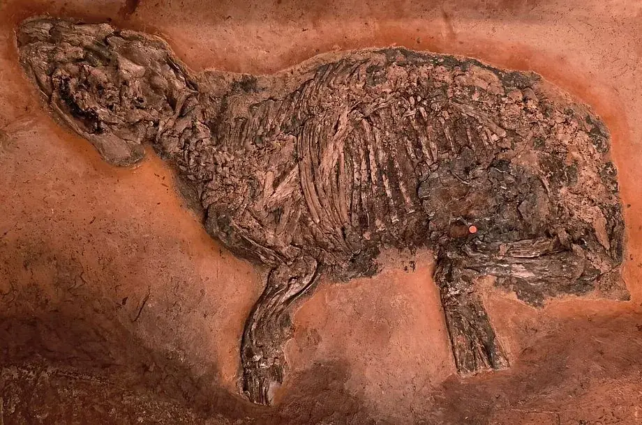
6. The designed transitions
Hool accepts that living things changed from one form into another over hundreds of millions of years, in the order in which they appear in the fossils; the evidence for “descent with modification,” he writes, is “substantial.” But he denies that natural selection drove the changes. (Natural selection is Darwin’s explanation: random changes in the genes appear in every generation, and those that help an animal survive and raise young become more common over many generations.) On Hool’s account the changes followed programs that the Creator built into living things, the way a seed becomes a tree. He counts the gaps in the fossils and the organs once called vestigial against natural selection, and he holds that random change could not produce the same animals on two continents. From the wording of Bereishis 1 he makes Adam, the winged insects, the dinosaurs, one set of birds and every species of flowering plant separate creations, and he holds that the plants of the Third Day waited under the ground until the animals that needed them appeared.
Hool’s full argument is in Part Two ↑
- Human DNA carries the same inherited accidents as the DNA of the apes, each group Hool sets apart sits on one family tree with the creatures he separates it from, and animals reached distant continents by crossing the sea.
- Botanists have watched new species of flowering plants form from two older species, and the flowering plants arose over tens of millions of years.
- Green seaweeds grew long before any animal, the land plants did not appear with the animals Hool pairs them with, and the Gemara he cites has the plants wait for Adam.
- Paleontologists have filled or explained each fossil gap Hool lists, and the organs he finds uses for are still the reduced remains of larger ones.
- Hool reverses his rule about the wording of Bereishis 1 within a single pasuk, and the Gemara explains the wording he builds on without any transition.
- His sources in Chazal describe a misshapen calf, creatures no one has seen form and minim branching within one group, never one group turning into another.
6.1 Genetics and fossils join Hool’s groups
Hool accepts that living things descend from earlier forms. In his preface he writes that “the evidence of descent with modification in nature is substantial.” (Descent with modification is Darwin’s phrase for the view that living things descend from common ancestors and change over the generations.) On Hool’s account fish turned into land animals, and dinosaurs into birds, through programs that the Creator built into them. But he also reads the wording of Bereishis 1 as a record of which creatures were made directly and which developed from earlier ones, and on this reading several groups were made separately:
- Adam was formed from the earth and has no ancestors among the animals.
- The winged insects are not related to the wingless insects.
- The dinosaurs were made from the water and had no ancestors.
- Living birds have two separate origins. One set of birds came from the dinosaurs, and another set came from creatures of the water (p. 79).
- The four-legged land animals form two unrelated lines, one before and one after Romer’s Gap, a stretch of time from which paleontologists long found few fossils of land animals.
- Every species of flowering plant was formed from the ground (p. 81). Botanists have watched new species of flowering plants form from older ones.
These separate creations let Hool explain gaps in the fossils, such as the gap before the first winged insects, the gap before the first dinosaurs and Romer’s Gap itself, and they keep Adam apart from the animals. Hool also holds that the same species on different continents developed separately in each place.
A group made with no ancestors among earlier creatures would carry no marks of descent from them, in its DNA or in its fossils. In every group that Hool sets apart, geneticists and paleontologists find those marks, the same marks of common ancestry that Hool accepts for the rest of life. Animals that developed separately on each continent would likewise have no relatives elsewhere and would leave no trail of how they arrived. Scientists have traced in fossils and in DNA the sea crossings by which these animals reached their continents, and they have watched at least one such crossing happen.
6.1a Shared accidents in DNA
All living things keep their hereditary instructions in DNA, a long molecule that spells them out in chemical letters. Almost all of them read it with the same genetic code, the key by which a cell turns the letters of DNA into proteins (the rest use close variants of that code), and all of them build their proteins from the same twenty amino acids. The groups that Hool holds were made separately are no exception. Hool’s answer is that a shared chemistry does not prove shared ancestors:
Of course, this does not testify to evolution, because the Almighty might very possibly have built each form of life with the same building blocks, but nonetheless it does testify to the possibility of one organism evolving from another. (Six Days 2, p. 35)
This answer covers shared materials. It does not cover shared accidents, which geneticists call mutations. A mutation is a random change that happens when a cell miscopies its DNA, or when a stray piece of DNA lands in a new place. It can damage a gene (a stretch of DNA that carries the instructions for one protein), insert a stray stretch of DNA, or join or break whole chromosomes (the long bundles in which a cell keeps its DNA). A mutation in an egg or a sperm cell passes to the offspring and on to their descendants, and the same accident very rarely happens twice by chance at the same place in the DNA. So when geneticists find the same mutation at the same place in two species, they conclude that both inherited it from one ancestor in whom the accident happened.
Two books printed in the same alphabet need not be related at all. But two copies with the same misprint on the same line of the same page were printed from the same plates, and a printing that carries all the misprints of an earlier one and adds some of its own came after it. The alphabet is like the shared materials that Hool’s answer covers, and the misprints are like the mutations. Geneticists use the mutations that species share the way a printer would use the misprints, to sort the species into a family tree.
6.1b Adam and the apes
Hool sets mankind apart from the animals. The Torah has Hashem form Adam from the earth, and Hool writes:
The father of the human race was Adam, and he did not evolve from ancient apes but was created by the Almighty from the earth on the Sixth Day of Creation. (Six Days 2, preface)
If Adam had no ancestors among the animals, human DNA would carry no inherited accidents shared with the apes. Geneticists find many such accidents, including a joint where two chromosomes fused, a stray piece of DNA inside a gene that builds the tail, and the same damage, letter for letter, in a broken gene for vitamin C.
6.1b.1 Chromosome 2
Humans carry 23 pairs of chromosomes, and chimpanzees, gorillas and orangutans carry 24. Two ape chromosomes, called 2A and 2B, match human chromosome 2 gene for gene and in the same order, as if they had been laid end to end. (In a few stretches the DNA lies in reverse order in one of the species, where a piece of a chromosome broke out, turned around and was put back.) Human chromosome 2 also carries both marks that such a fusion leaves. At the place where the two ape chromosomes would meet, it has two runs of TTAGGG, the six letters repeated thousands of times in the cap at the tip of every chromosome, facing each other head to head as two joined tips would (J. W. IJdo and colleagues at Yale, 1991). Farther along its long arm, at the place where chromosome 2B has its centromere (the pinched point by which a cell grips a chromosome when it divides), it has the remains of a second centromere that no longer works (R. Avarello and colleagues, 1992). A chromosome with two working centromeres is torn apart when the cell divides, so after a fusion one of the two has to stop working.
In January 2026 Zikun Yang and his colleagues, from the laboratories of Yafei Mao at Shanghai Jiao Tong University and Evan Eichler at the University of Washington, mapped the joint letter by letter in the complete genomes of the great apes and confirmed that two chromosomes had fused into one (Cell Genomics). They also removed the joint from human cells grown in the laboratory, and the activity of nearby genes changed, so the joint may now help control when those genes turn on and off. Hool argues that organs once called vestigial are no leftovers, because they have uses, and he could say the same of the joint. But a use today does not explain why the joint is made of DNA that sits near the ends of two separate chromosomes in the apes, or why a dead centromere lies farther along the same chromosome, at the place where the apes’ chromosome 2B has a working one. Both are marks that two chromosomes leave when they fuse. An Adam formed from the earth, with no animal ancestors, would not carry them.
6.1b.2 The tail gene
Most monkeys have tails (the Barbary macaque is one of a few exceptions), and apes and humans have none. In 2024 Bo Xia, then a graduate student at New York University, and his colleagues traced the loss of the tail to an Alu that landed in TBXT, a gene that helps build the tail, in “the genome of the hominoid ancestor,” the common ancestor of apes and humans (Nature). An Alu is a stretch of DNA about 300 letters long that makes copies of itself, which land in new places in the DNA more or less at random; human DNA holds about a million of them. This one makes the cell sometimes skip a section of TBXT when it reads the gene, and mice engineered to read their own gene the same way were born with short tails or none. The authors concluded that the insertion “may have contributed to tail-loss evolution.”
Humans carry this Alu at the same place in the same gene as the apes, and the monkeys don’t have it. An Alu copy can land at any of millions of places, so two separate insertions at the same spot by chance are practically impossible. Apes and humans inherited this Alu from a common ancestor in whom it landed, and Hool’s Adam, formed from the earth, had no such ancestor.
6.1b.3 Vitamin C
Most mammals make their own vitamin C, and humans can’t, which is why sailors who went for months without fresh food used to get scurvy. In 1994 M. Nishikimi and his colleagues in Japan found that humans still carry the gene for the last step in making vitamin C, but broken: whole sections are missing, and the sections that remain have letters dropped and added. Two species could each lose the ability if each broke the gene in its own way, so the question is whether the primates that can’t make vitamin C share the same damage. In 2024 Alexander Mansueto and Deborah Good of Virginia Tech compared the broken gene of humans, Neanderthals, chimpanzees, bonobos, gorillas, orangutans and Old World monkeys (the monkeys of Africa and Asia, such as the rhesus macaque) with the working gene of lemurs and their relatives. The broken copies share the same dropped and added letters at the same places, and many of the same changed letters. A gene can be broken in countless ways, and the natural explanation for the same breaks in these monkeys, apes and humans is that all of them inherited the gene from one ancestor in whom it was already broken.
The loss also follows the primate family tree. Lemurs and lorises, on one branch, still make vitamin C; tarsiers, monkeys, apes and humans, on the other branch, cannot (J. I. Pollock and R. J. Mullin, 1987). So humans received the broken gene from an ancestor they share with the monkeys and the apes, in whom the gene had already stopped working. Hool’s Adam, formed from the earth, had no ancestor from whom to receive it.
6.1b.4 Closer to the gorilla
Someone could still say that the Creator built Adam on the apes’ plan, misprints included, the way an architect reuses an old drawing. Humans would then share accidents with the apes because they share a plan, not because they share an ancestor. A pattern in the DNA of humans, chimpanzees and gorillas does not fit this answer. In 2012 Aylwyn Scally of the Wellcome Trust Sanger Institute in England and his colleagues read the first gorilla genome and found that “in 30% of the genome, gorilla is closer to human or chimpanzee than the latter are to each other.” In 2025 DongAhn Yoo, Kateryna Makova, Evan Eichler and their colleagues, who published the complete genomes of the apes in Nature, found the same pattern.
Geneticists explain this patchwork by inheritance from one varied ancestral population of many thousands of individuals. The gorilla line split off from it about ten million years ago, and the human and chimpanzee lines split from each other four to five million years later. Each line carried away only part of the ancestral variety, so at some places in the DNA humans and gorillas kept the same version while chimpanzees kept another, and at other places chimpanzees and gorillas kept the same version while humans kept another. A plan reused for each species gives no reason for one stretch of a human chromosome to resemble the chimpanzee and the next stretch to resemble the gorilla. On Hool’s account Adam was formed from the earth, so his DNA would have had to be made with every mark of an ancestry that he never had.
6.1c Winged and wingless insects
Hool holds that the winged insects were made separately from all other insects. He starts from a gap in the fossils of the insects, which scientists call the Hexapod Gap. (Hexapod means “six-legged.”) Paleontologists date the oldest insect fossil, a wingless insect that looks like a silverfish, to about 385 million years ago. They find insect fossils in large numbers only from about 325 million years ago, when the first winged insects appear. If insects had formed in stages, Hool asks, “how on earth did they just suddenly appear?” (p. 49).
Hool’s answer comes from Bereishis 1:21, which lists the of kanaf, the winged fliers, among the creatures of the Fifth Day. Of can mean anything that flies, so Hool counts the flying insects among these fliers, which on his reading developed from creatures of the water. Hool concludes that the two groups of insects are unrelated, since on this reading the pasuk puts the flying insects with the fliers and not with the other insects:
The fact that the flying insects are categorized together with the fliers and not with other insects implies that the creation of the flying insects was not connected to the creation of non-flying insects. It is therefore no wonder that in the fossil record we find non-flying insects long before the flying insects. They have nothing to do with each other and are not even “related” to each other. (Six Days 2, p. 78)
Geneticists find that the winged insects are one branch of the insect family tree, and that this branch grows out of the wingless insects. That is the tree that Bernhard Misof’s team built in 2014 from 1,478 genes in 144 species of insect. On it the closest living relatives of the winged insects are the silverfish, which have no wings but share with them a jaw hinged at two points. The team dated the origin of the insects to about 479 million years ago and the origin of flight to about 406 million years ago. So the winged insects branched off from the wingless insects, which Hool says have nothing to do with them.
The gap in the fossils fits both accounts. The paleobiologist Sandra Schachat, the first author of the 2018 study described in the Stanford University news report that Hool quotes (pp. 75–77), wrote that the gap “requires no special explanation if insects were neither diverse nor abundant prior to the evolution of wings.” Schachat and Hool agree that insects multiplied once they had wings. The family tree built from their genes answers where the winged insects came from.
6.1d The dinosaurs’ line before the dinosaurs
Hool holds that the dinosaurs were made from the water with no ancestors. Paleontologists date the first definite dinosaurs to about 230 million years ago. The closest known relatives of the dinosaurs are the silesaurids, long-legged animals that looked like tall lizards. Hool quotes the paleontologist Paul Barrett of the Natural History Museum in London, who says that “there is this 10–15-million-year gap that separates the common ancestor of silesaurids and dinosaurs from the first true dinosaurs.” Hool then asks, “Where are all the transitional fossils in between?” (p. 51).
Hool explains Barrett’s gap by reading “the great taninim” in Bereishis 1:21 as the dinosaurs, made from the water:
We can now answer the question of “the gap” between the appearance of the first dinosaurs and their “closest relation,” the silesaurids. The answer is simply that there is no gap in dinosaur evolution because they did not evolve from a common ancestor of the silesaurids. In fact, they did not evolve at all but were created from the waters. (Six Days 2, p. 78)
Hool’s answer needs the ten to fifteen million years before the first dinosaurs to be empty of the dinosaurs’ own line. Paleontologists have found members of that line inside the gap. In 2010 the paleontologist Sterling Nesbitt and his colleagues described in Nature a silesaurid, Asilisaurus kongwe, from early Middle Triassic rock in Tanzania. The rock is more than ten million years older than the first definite dinosaurs. When the paper appeared, Asilisaurus was the oldest known animal on the dinosaur side of the reptile family tree. Nesbitt and his colleagues wrote that Asilisaurus “demonstrates the antiquity of both Ornithodira and the dinosaurian lineage.” (Ornithodira is the branch of the reptile family tree that leads to the flying pterosaurs, the dinosaurs and the birds.)
Paleontologists disagree about where the silesaurids belong on the family tree, but on either view the dinosaurs’ own line was alive during Barrett’s gap. Nesbitt’s team placed the silesaurids just outside the dinosaurs, as their nearest relatives. In 2020 the paleontologists Rodrigo Müller and Maurício Garcia of the Federal University of Santa Maria in Brazil argued instead that the silesaurids were early members of the ornithischians, the branch of the dinosaurs that later included Triceratops and the duck-billed dinosaurs. On that view the silesaurids were themselves dinosaurs.
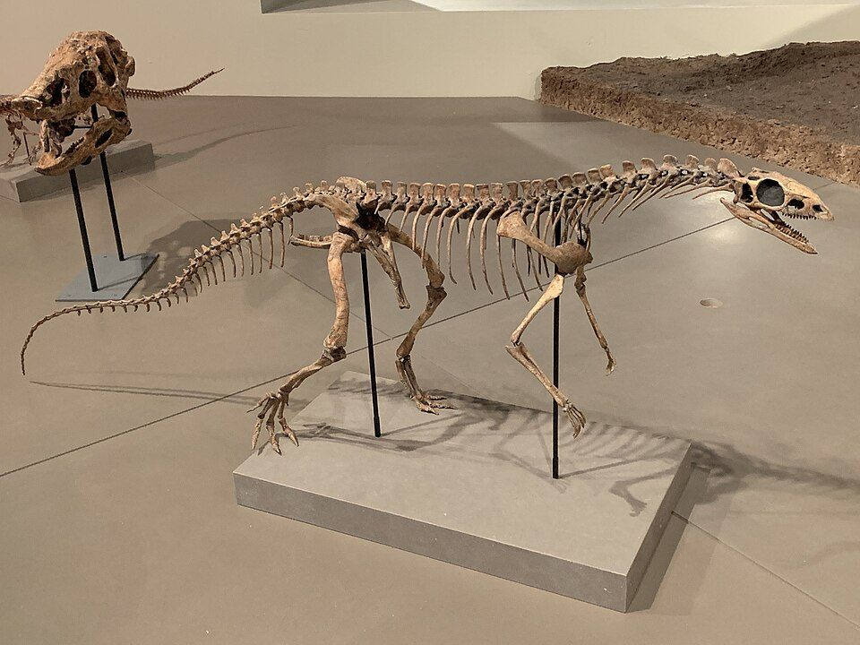
Paleontologists join the silesaurids to the dinosaurs by features of the hips, legs and ankles that they share, in fossils that follow one another in time. Hool accepts this kind of fossil evidence for the birds. He writes that the descent of the birds from the dinosaurs “synthesizes with the fossil and molecular evidence” (p. 79). By the same standard, the dinosaurs had ancestors and were not made from the water without any.
6.1e The birds
Paleontologists have long debated whether the birds came from dinosaurs that lived on the ground or from gliders that lived in trees. Hool answers that “both may be true”:
This now explains both the speed of the diversity of bird evolution and the conflicting evidence whether the birds evolved from ground-living dinosaurs or tree-living gliders. Both may be true, as there were two lines of transition into birds: One set came from the dinosaurs. The other set came from the nefesh chayah. (Six Days 2, p. 79)
The nefesh chayah are the “living creatures” that swarmed in the waters in Bereishis 1:20, which Hool treats as creatures of the water distinct from the dinosaurs. He also divides the two sets of birds by diet. The meat-eating birds are the of kanaf, the winged fliers of 1:21, which he holds were made from water alone. The omnivorous birds, the kosher birds among them, are the “birds of the heavens,” which he holds were made from earth and water together (p. 190).
If Hool were right, living birds would trace back to two separate ancestors. Geneticists who have compared the genomes of living birds find that all of them descend from one common ancestor. In 2014 the Avian Phylogenomics Consortium, co-led by the neurobiologist Erich Jarvis of Duke University, compared the complete genomes of 48 species of birds, chosen to represent every major order of birds. In 2024 a team led by the evolutionary biologist Josefin Stiller of the University of Copenhagen compared the genomes of 363 species from 218 families, 92 percent of all the families of birds. Both studies placed every living bird on a single family tree with one common ancestor. The deepest split in that tree separates the ostriches and their relatives from all other birds.
The family tree also cuts across Hool’s division by diet. The next split after the ostriches separates the chickens and ducks from the rest of the birds. The meat-eating birds do not form a branch of their own: falcons, for instance, are more closely related to parrots than to hawks and eagles. If the meat-eating birds had been made from water alone and the omnivorous birds from earth and water, the birds of prey would form a branch apart from the parrots and the chickens. Instead the chickens, the parrots, the falcons and the eagles all sit on one tree and share one ancestor.
Hool’s evidence for a second line of birds, one that did not come from dinosaurs, is a press release that Oregon State University put out in 2010. It describes a study of Microraptor, a small feathered animal found in China, and reports that the researchers concluded it “must have been a ‘glider’ that came down from trees” (p. 53). But Microraptor was itself a dinosaur. The biomechanist David Alexander of the University of Kansas and his colleagues titled their paper “Model tests of gliding with different hindwing configurations in the four-winged dromaeosaurid Microraptor gui.” The dromaeosaurids are a family of feathered meat-eating dinosaurs that includes Velociraptor. The team built light models from the animal’s skeleton, gave them feathered wings on all four limbs, and launched them to see how it glided. So the glider in Hool’s source is a dinosaur that glided from trees. It is not the start of a line of birds unrelated to the dinosaurs.
The same press release quotes John Ruben, a zoologist at Oregon State University, who argued against the descent of birds from dinosaurs. According to the release, Ruben’s group reported in 2009 that “the position of the thigh bone and muscles in birds is critical to their ability to have adequate lung capacity” for long flights, and that “Theropod dinosaurs did not share this feature” (pp. 53–54). (The theropods are the two-legged meat-eating dinosaurs from which paleontologists trace the birds.)
Ruben’s argument is about how much air a bird’s lungs can hold. Biologists have traced another feature of the way birds breathe to animals that lived before there were birds. Air flows in one direction through a bird’s lungs, which lets the bird take more oxygen from it. Biologists long assumed that this one-way flow depended on the bird’s air sacs (bags of air connected to the lungs) and arose to support long flights. In 2010 the biologists Colleen Farmer and Kent Sanders of the University of Utah found that air also flows one way through the lungs of the American alligator, which has no air sacs. They concluded that one-way flow “dates back to the basal archosaurs of the Triassic” and “may have been present” in the dinosaurs as well. (The basal archosaurs are the early common ancestors of the crocodiles, the dinosaurs and the birds, from the period in which the first dinosaurs appear.) Since one-way breathing is older than the birds, it gives no reason to separate the birds from the dinosaurs.
The authors of the 2009 study did not conclude that the birds have no reptile ancestors. The study, by Devon Quick and John Ruben, appeared in the Journal of Morphology. In their university’s news release Quick said, “We aren’t suggesting that dinosaurs and birds may not have had a common ancestor somewhere in the distant past.” Ruben added that the finding “probably means that birds evolved on a parallel path alongside dinosaurs.” Quick and Ruben were debating which reptiles gave rise to the birds. On their account the birds still descend from earlier reptiles and share an ancestor with the dinosaurs, and that is the tie that Hool’s second line of birds does not have.
6.1f Romer’s Gap
Romer’s Gap, named after the Harvard paleontologist Alfred Romer, runs from about 360 to 345 million years ago, a stretch from which paleontologists long found very few fossils of land animals. (Land animals lived before it as well. One of the oldest known land animals that breathed air is the millipede Pneumodesmus newmani, whose fossil bed in Scotland geologists dated in 2017 to about 414 million years ago.) Hool asks, “Why is there a gap of about 15 million years in the evolution of terrestrialized vertebrates?” (p. 58), meaning the animals with backbones that came to live on land. He answers with a 2006 study by the paleontologist Peter Ward of the University of Washington and his colleagues, which describes animals moving from the water onto land in two phases with Romer’s Gap between them (pp. 47–48). The first phase ran from 425 to 360 million years ago: small arthropods (animals with jointed legs, such as insects, spiders and millipedes) moved onto land, and toward its end larger animals with backbones followed. The second phase began 345 million years ago.
Hool gives the first phase to the meat-eaters, which he holds were made from water alone. Most of the animals that moved onto land in that phase were arthropods, and he notes that “most arthropods (insects and spiders) are carnivorous” (Six Days 2, p. 74). He gives the second phase to the omnivores, which he holds were made from earth and water. These, he writes, came “from an entirely different line” and “would naturally not be connected” to the earlier meat-eaters, which explains the gap between the two phases (p. 75). On his account the gap is a real break between two creations, and the four-legged animals that lived after it are unrelated to those that lived before it.
Paleontologists have since found fossils inside the gap, and the animals in them join the animals on both sides into one family:
- In 2012 a team led by Timothy Smithson of the University Museum of Zoology in Cambridge, which included Jennifer Clack, the leading expert on early four-legged animals, and Stan Wood, a Scottish fossil collector, announced a series of sites rich in fossils in the Scottish Borders, in rocks from inside the gap. The sites yielded “a wealth of new tetrapod and arthropod fossils” (four-legged animals and animals with jointed legs), “both terrestrial and aquatic forms.” The team concluded that “the gap in the fossil record has been an artifact of collection failure.” The fossils had been there all along, in rocks that paleontologists had not yet searched.
- In 2016 Clack and her colleagues described five new species of four-legged animals from these rocks. They placed three of them on the family tree that runs from the Devonian period into the Carboniferous, the periods just before and just after the gap, and the other two as early members of the line that leads to the amphibians of today.
- In 2025 John Long, Per Ahlberg and their colleagues described footprints of clawed feet from the Snowy Plains Formation in Victoria, Australia, in rocks dated to between about 359 and 354 million years ago, inside the gap (Nature). They identified the maker as an amniote, a member of the group that includes the reptiles, the birds and the mammals, most likely an early member of the line of the reptiles. Until then the oldest known amniotes had been some 35 to 40 million years younger. The team concluded that the main lines of four-legged animals had already branched before Romer’s Gap and lived on through it.
So the four-legged animals before and after the gap belong to one continuous family, and Hool’s separate line of omnivores after the gap (pp. 74–75) has no place on the tree.
The explanation of the gap in Hool’s source has also been given up. Ward and his colleagues titled their 2006 paper “Confirmation of Romer’s Gap as a Low Oxygen Interval,” and they blamed the gap on low oxygen in the air. In 2018 Sandra Schachat and her colleagues worked out the oxygen levels of that period again, with newer measurements, and wrote that their reconstruction “contradicts the low oxygen hypothesis.” Hool’s two separate lines of land animals were meant to explain a break that paleontologists no longer find.
Hool’s division of the land animals by diet does not fit the fossils of the early plant-eaters either. A meat-eater, on his account, was made from the water alone, while an ancient animal that ate plants was either an omnivore of earth and water or made mostly from the earth (pp. 184–185); either way it had earth in it. So a group of plant-eaters that descended from a meat-eating ancestor would break Hool’s division.
Paleontologists have found such groups. In 2014 the paleontologists Robert Reisz of the University of Toronto and Jörg Fröbisch described Eocasea martini, “a small carnivorous caseid” from Kansas, about 300 million years old. The caseids were plant-eaters, and they became the largest land animals of their time. Reisz and Fröbisch showed that the “large caseid herbivores evolved from small, non-herbivorous caseids.” They found the same pattern in three other groups of early land animals and called it “multiple, independent, but temporally staggered origins of herbivory.” Each time, plant-eating arose in a line whose ancestors ate meat or insects. Whether the large caseids ate only plants or ate meat as well, they descended from a small meat-eater. On Hool’s account that meat-eating line was made from water alone and could not have given rise to any animal made partly from the earth.
6.1g Crossing the sea
Closely related animals often live on continents separated by wide oceans. Hool argues that random change could not produce the same animals twice in two places: “If you throw a die ten times in one place, you would not expect to get the same sequence of numbers if you throw the die ten times somewhere else” (Six Days 2, p. 55). So, Hool reasons, if change were driven by chance, related animals on two continents would have to have arisen once and then traveled from one continent to the other.
Hool finds these ocean crossings hard to believe. He draws on an article by the paleontologist Nicholas Longrich that describes how lemurs are thought to have rafted to Madagascar across the 400-kilometer Mozambique Channel, and monkeys to South America across the Atlantic. (Rafting means drifting across the sea on a mat of uprooted plants and trees.) Hool borrows Longrich’s phrase “bizarrely improbable events” for these crossings (p. 57). In their place he proposes that each species developed separately in each place where it lives:
Each species developed simultaneously in their different habitats, through the same processes of transition implanted into their very essence by the Creator. (Six Days 2, p. 82)
If Madagascar’s lemurs and South America’s monkeys had developed where they live, they would have no ancestors on other continents and would leave no trail of how they arrived. Scientists have traced the crossings in fossils and in DNA. They have watched iguanas reach a Caribbean island on a raft. And they find that remote islands hold only animals that can cross the sea.
6.1g.1 Traced crossings
Hool holds that the monkeys of South America developed there and did not cross the Atlantic from Africa. Paleontologists working in Peru have found a fossil of a primate that did cross. In 2020 the paleontologist Erik Seiffert of the University of Southern California and his colleagues described Ucayalipithecus, a fossil monkey from Santa Rosa in the Peruvian Amazon. Ucayalipithecus belongs to the parapithecids, a family otherwise known only from fossils in Africa and Arabia. Seiffert’s team concluded that the ancestors of Ucayalipithecus rafted across the Atlantic between about 35 and 32 million years ago, when the ocean was about 1,500 to 2,000 kilometers wide.
The parapithecids were the third group of mammals known to have come to South America from Africa. The first two were the ancestors of the South American monkeys and the ancestors of the rodents that include the guinea pig. So at least one group of primates that lived in South America had its relatives in Africa, and paleontologists have found the fossils of its crossing. A species that had developed separately in South America would have no family in Africa.
Hool makes the same claim about the marsupials, the pouched mammals: they did not travel between continents, because each species developed where it lives (p. 82). Longrich, whom Hool quotes, describes the marsupials spreading from South America through Antarctica to Australia (pp. 56–57). If they did, marsupials once lived in Antarctica. In 1982 the paleontologists Michael Woodburne of the University of California, Riverside, and William Zinsmeister of Ohio State University reported in Science the first fossil land mammal ever found in Antarctica. It came from Seymour Island, at the northern tip of the Antarctic Peninsula. It was a marsupial about 40 million years old, very like the marsupials of South America. Woodburne and Zinsmeister wrote that the find supported “theories that predicted their former presence in Antarctica.” It also strengthened the proposal that Australia’s marsupials “perhaps originated from South American species” that spread across Antarctica while Australia was still joined to it. So marsupials did live in Antarctica, on the route between South America and Australia.
Hool also counts the flightless birds among the animals that would have had to float or swim across the sea to their continents (pp. 57, 82). These birds are the ostriches of Africa, the rheas of South America, the emus and cassowaries of Australia and the kiwis of New Zealand. Geneticists find that their ancestors could fly. In 2014 Kieren Mitchell, Alan Cooper and their colleagues at the University of Adelaide read DNA from the extinct elephant birds of Madagascar, flightless giants that stood up to three meters tall, and found that their closest relatives are the small kiwis of New Zealand, on the other side of the globe, while the ostriches of nearby Africa are only distant relatives. Mitchell’s team wrote that this finding “strongly contradicts” the older idea that these birds were carried apart as the continents broke up, and that the DNA “supports flighted dispersal in all major ratite lineages.” (The ratites are this group of flightless birds.) Their ancestors flew to their continents and lost the ability to fly after they arrived, so these birds never had to swim or drift across open water.
Hool also cites freshwater crabs as animals that could not have crossed the oceans. His source is a 2009 article, “Why Darwinism is False,” by Jonathan Wells of the Discovery Institute, an advocate of intelligent design (p. 57, n. 18). Wells argues that freshwater crabs cannot survive long in salt water, and that “fossil and molecular evidence indicates that these animals originated long after the continents separated” (p. 57). Hool asks, “How could these freshwater crabs raft across the ocean given their inability to tolerate salt water?” (p. 57).
Geneticists find that the freshwater crabs are not one family that crossed a wide ocean. In 2014 the marine biologists Ling Ming Tsang of National Taiwan Ocean University, Ka Hou Chu and their colleagues compared the genes of more than 140 species of crab (Molecular Biology and Evolution). They found that the freshwater crabs “have at least two independent origins,” each from crabs of the sea. One line is a family of South America. The other includes the freshwater crabs of Africa, Europe and Asia, along with a second American family. The team dated the split between the freshwater crabs and their closest relatives in the sea to about 135 million years ago.
Tsang’s team concluded that “a Gondwanan origin of these freshwater representatives is untenable.” (Gondwana was the southern half of the ancient supercontinent Pangaea. It joined South America, Africa, Arabia, Madagascar, India, Australia and Antarctica.) Had the freshwater crabs lived on Gondwana before it broke up, the drifting continents could have carried them apart with no crossing at all, but a split 135 million years ago is too recent for that. To explain how the larger freshwater line came to live on both sides of the Atlantic, the team proposed a single crossing of “the relatively narrow marine barrier between continents during the early stage of breakup of Gondwana.” They noted that the proposal “requires further testing.” So on Tsang’s account freshwater crabs arose from sea crabs at least twice, and the larger line crossed a narrow sea early in the breakup of the continents, not a wide ocean. (How the crabs survived that narrow crossing is still an open question.)
6.1g.2 Arrivals by sea
Hool calls ocean crossings “bizarrely improbable events,” but biologists have watched one happen. In September 1995 Hurricanes Luis and Marilyn struck the eastern Caribbean. A few weeks later at least fifteen green iguanas washed ashore on Anguilla, an island that had no green iguanas before, on a mat of logs and uprooted trees. In 1998 the biologist Ellen Censky and her colleagues reported in Nature that the iguanas had most likely drifted from Guadeloupe and had settled on Anguilla.
Geneticists have traced far longer crossings by iguanas in the DNA of living populations. In 2025 the herpetologist and paleontologist Simon Scarpetta and his colleagues reported in the journal PNAS that the closest living relative of the iguanas of Fiji is the desert iguana of North America. They concluded that the ancestors of Fiji’s iguanas rafted more than 8,000 kilometers across the Pacific, a fifth of the way around the world. So rafts of plants do carry animals across the sea, over a short distance in our own time and over a very long one in the past.
A crossing of this kind almost never brings live animals to a distant shore within one person’s lifetime. But over thirty million years of great storms, even a rare landing happens again and again, and one successful landing is enough to start a new population.
6.1g.3 Remote islands
If each species developed where it lives, as Hool holds, there would be no reason for the animals of an island far out at sea to differ from the animals of a continent. If animals reached islands by crossing the sea, an island far from any continent would have only the animals that can fly there, swim there or ride a raft there. The Hawaiian Islands, more than 3,000 kilometers from the nearest continent, have only such animals: at least 750 species of land snails and hundreds of species of fruit flies that live nowhere else, many birds, and a single native land mammal (the only one that got there without people), the Hawaiian hoary bat, whose ancestors could fly there.
The islands suit large land mammals well: pigs and goats, which came only with people, have run wild there ever since they arrived. No land mammal that cannot fly could reach the islands by itself, and none is native there. On Hool’s account, islands where pigs and goats thrive should have produced land mammals of their own, yet Hawaii has none.
6.2 New flowering plants have formed in our time
Hool holds that every species of flowering plant was created separately from the ground, and that this is why the flowering plants appear in the fossils all at once. (Botanists call the flowering plants angiosperms.)
Hool starts from what scientists themselves write about the fossils of the flowering plants. He quotes a 2005 paper by Stefanie De Bodt, Steven Maere and Yves Van de Peer of Ghent University: “Angiosperms appear rather suddenly in the fossil record…with no obvious ancestors for a period of 80–90 million years before their appearance” (p. 54). From an article in New Scientist he adds that the oldest fossils of flowering plants “are 135 million years old,” and that the group “already became diverse by 130 million years ago.” He asks, “How did so much variety arrive so quickly?” (p. 54). Hool takes this burst of five million years as too fast for natural selection.
Hool’s explanation comes from his reading of Bereishis 1. On each day the Torah first gives Hashem’s command and then tells what happened. Hool holds that a min (the Torah’s word for a type of living thing) named in the command was created separately, and that a min named only in the account of what happened developed from an earlier one. On the Third Day the command says “according to its kind” of the fruit trees (1:11), and Hool identifies the fruit trees with the flowering plants. He writes:
As we saw in chapter 8, this implies that the different species of angiosperm were not secondary creations that were formed by the Almighty through transition processes from the primary angiosperm but were themselves primary creations formed from the ground by the Almighty, independently and concurrently with all the other angiosperms. As a result, they would appear all at once. (Six Days 2, p. 81)
Botanists have watched new species of flowering plants form from two parent species within the last two centuries. Paleontologists and geneticists also find that the flowering plants branched out over tens of millions of years, and that the group began before its oldest known fossils.
6.2a New species from known parents
Hool holds that every species of flowering plant was formed from the ground (p. 81). Botanists have watched new species of flowering plants form from two older species several times in the last two centuries. In each case two species crossed and gave a hybrid that was sterile, like a mule, because each of its chromosomes needs a matching partner to make pollen and seeds, and the other parent’s set cannot supply one. Then the hybrid doubled its whole set of chromosomes. Every chromosome had a partner again, and the new plant could breed with plants like itself but not with either parent, whose chromosomes no longer matched its own. A plant that cannot breed with either of its parents is a new species:
- The cordgrass Spartina anglica formed in England. A cordgrass brought from America crossed with the native cordgrass of southern England, and their sterile hybrid doubled its chromosomes “in ∼1870,” according to Rocky Payet, Ben Miller and their colleagues, who sequenced the genome of the new species (Journal of Experimental Botany, 2026). It spread so fast along the coasts that in 2000 the Invasive Species Specialist Group of the IUCN (the World Conservation Union) put it on its list of “100 of the World’s Worst Invasive Alien Species,” species brought from elsewhere that push out the local plants and animals.
- The monkeyflower Mimulus peregrinus formed in Scotland from two monkeyflowers brought to Britain, one from North America and one from Chile. In 2015 Mario Vallejo-Marín of the University of Stirling and his colleagues confirmed its parents from its DNA and found that it had arisen within the previous 140 years, at least twice: once on the mainland and once in the Orkney Islands.
- Two goatsbeards of the American Northwest, Tragopogon mirus and T. miscellus, formed from European goatsbeards brought to the region. In a 2010 study in the journal Evolution, Virginia Symonds, Pamela Soltis and Douglas Soltis found that each of the two has “formed repeatedly in the last approximately 80 years from known diploid progenitors,” that is, from ordinary parent species with the standard two sets of chromosomes.
Hool’s reading of the pasuk makes every species of flowering plant a primary creation, formed from the ground at the same time as all the others, but each of these species formed within the last two centuries from two existing species of flowering plant.
Hool allows small “micro-transitions” within one type of creature (pp. 60–61), and he might count these new plants as micro-transitions. But that would still grant that new species of flowering plant form from other species, which is what his reading of the pasuk denies.
The parents and chromosomes of the new species
Botanists have counted the chromosomes of each new species, of its parents and of their hybrid.
- Cordgrass. The two parent cordgrasses, Spartina maritima and S. alterniflora, have 60 and 62 chromosomes. Their hybrid has 62, and the new species, S. anglica, has 120 to 124 (Marchant, 1963).
- Monkeyflower. The parent from North America is Mimulus guttatus, which has 28 chromosomes, and the parent from Chile is M. luteus, which has 60 to 62. Their sterile hybrid, M. × robertsii, has 44 or 45, and the new species, M. peregrinus, has 92 (Vallejo-Marín, 2012).
- Goatsbeard. The three European parents are Tragopogon dubius, T. pratensis and T. porrifolius. A cross of T. dubius with T. pratensis gave a sterile hybrid, which doubled to form T. miscellus. A cross of T. dubius with T. porrifolius gave another sterile hybrid, which doubled to form T. mirus. Each of the three parents and each of the two hybrids has 12 chromosomes, and T. miscellus and T. mirus each have 24 (Ownbey, 1950).
In each case the new species has about twice as many chromosomes as its hybrid, because it formed when the hybrid doubled its chromosomes.
6.2b Tens of millions of years
Hool’s dates do not fit his claim that the flowering plants “would appear all at once” (p. 81). Later in the book he puts the first flowering plants at about 130 million years ago and the first grasses at about 70 million years ago (p. 134). The grasses are flowering plants too. By Hool’s dates, then, sixty million years passed between the first flowering plants and the first grasses. They did not appear all at once, whether Hool means every species or only the main groups.
Hool ends his case on the flowering plants with the botanist William Crepet, who wrote in 2000 that more than a century of study had not “illuminated the mystery” of where the flowering plants came from (p. 54). Darwin was the first to call it a mystery. In a letter to the botanist Joseph Hooker on 22 July 1879, he wrote that “the rapid development, as far as we can judge, of all the higher plants within recent geological times is an abominable mystery.”
In 2021 the botanist Richard Buggs looked at how the botanists of Darwin’s day classified plants (American Journal of Botany). He concluded that by “the higher plants” Darwin meant only the dicotyledons, one of the two main groups of flowering plants, because botanists then thought that the other group, the monocotyledons, had much older fossils. So Darwin’s “abominable mystery” was how quickly the dicotyledons seemed to spread and branch out, on the scale of geological time. It was not a puzzle about plants with no ancestors.
Botanists have since measured that pace, from fossils and from DNA. In 2021 the evolutionary biologist Daniele Silvestro of the University of Fribourg in Switzerland and his colleagues analyzed about 15,000 fossil finds from 198 families of flowering plants. They found that new lines of flowering plants kept appearing over some fifty million years, in their words “a marked increase in lineage accumulation from 125 to 72 million years ago.”
In 2024 a team led by the botanist Alexandre Zuntini of the Royal Botanic Gardens, Kew, compared 353 genes across almost 8,000 genera, about 60 percent of all the genera of flowering plants. (A genus, plural genera, is a group of closely related species.) The team used 200 fossils to put dates on the family tree. They found an early burst that produced most of the main branches, followed by a “steady diversification” through the rest of the age of the dinosaurs. In the last 66 million years the rate rose again.
The variety of the flowering plants built up over more than a hundred million years. That is rapid on the scale of geological time, but it is not “all at once.” If every species had been formed from the ground at the same time, as Hool holds, the families would appear in the fossils together. Instead, new branches kept appearing for tens of millions of years.
6.2c Older than their first fossils
Hool’s second argument from the fossils is the gap before the first flowering plants. De Bodt and her colleagues wrote that the flowering plants had “no obvious ancestors” for 80 to 90 million years before their first fossils (p. 54). Hool takes these 80 to 90 million years as a time when the flowering plants had no ancestors at all. The gymnosperms, such as pines and cedars, are an older group of seed plants whose seeds are not enclosed in a fruit. Hool writes that the flowering plants appear after a gap following the gymnosperms “because the angiosperm did not evolve from the gymnosperms, but, as the verse says, were created from the ground” (p. 81).
This confuses an absence of fossils with an absence of plants. A group of plants can live for a long time before it leaves fossils that anyone finds, especially if it starts out small and rare. Because early plants that are small and soft rarely become fossils at all, botanists do not take the oldest fossil of a group as the date the group began. They combine family trees drawn from DNA with statistical methods that allow for the gaps in the fossils, and these methods place the origin of the flowering plants before their first fossils. The New Scientist article that Hool cites for the date of the first fossils says so in its title. Ibrahim Sawal wrote it in February 2021 under the title “Flowering Plants May Be 100 Million Years Older than We Thought” (p. 54, n. 15).
In the same study of 15,000 fossil finds, Silvestro’s team allowed for the gaps in each plant family’s fossils. They concluded that “several families originated in the Jurassic, strongly rejecting a Cretaceous origin for the group.” The International Commission on Stratigraphy keeps the official list of geological periods, and on its current chart the Jurassic period ended about 143 million years ago. The earliest known fossils of flowering plants come from the Cretaceous, the period right after it. If several families began in the Jurassic, the flowering plants were alive before their first known fossils. Their sudden appearance in Cretaceous rock comes from gaps in what was preserved, not from a creation all at once.
In June 2026 the paleobiologists Ruolin Wu, Philip Donoghue and their colleagues estimated how far back this history before the fossils reaches (Wu et al., Nature Plants, 2026). They built a family tree of 644 species of flowering plants from 83 genes, and they used more than 25,000 fossil finds to fix the ages of 110 branch points on the tree. Their main estimate dates the last common ancestor of all the living flowering plants. It does not date earlier relatives that may have had only some of the traits of a flower.
The team dated this ancestor in four ways. Three of them use a molecular clock, which dates the branch points of a family tree drawn from DNA, with fossils fixing the ages of some of the branch points. The fourth uses the fossils alone. The four results differ widely:
| Wu et al. (2026) analysis | Estimated origin of the living flowering plants |
|---|---|
| Molecular clock, calibration strategy 1 | 261.26–212.30 million years ago |
| Molecular clock, calibration strategy 2 | 172.53–158.45 million years ago |
| Molecular clock, calibration strategy 3 (headline inference) | 152.99–151.46 million years ago |
| Fossils only (all finds pooled, without a separate sampling rate for each group) | 150–133 million years ago (average 141 million years ago) |
Each range in the table follows from the assumptions in its row. Under strategy 3, which the team prefers, the living flowering plants began in the latest Jurassic, shortly before their first fossils. The other strategies allow a much longer time before the first fossils.
Other teams have also found that the age depends on the assumptions. Zuntini’s team dated its family tree twice, once with a younger and once with an older upper limit on the age of the living flowering plants (Zuntini et al., Nature, 2024). In 2025 a team compared two statistical methods, called fossilized birth–death and node dating, that date the branch points of a DNA family tree from the ages of fossils. With its younger upper limit, the team placed the origin of the living flowering plants at 147.2 to 140.9 million years ago (Nature Communications, 2025).
The estimates of how long the flowering plants lived before their first fossils grow or shrink with the assumptions and the fossil data that each team uses. Hool cannot infer from the gap before the oldest known fossils that the flowering plants had no ancestors, or that they were created all at once.
(Some much older fossils have parts that look like those of a flower. In 2026 Xin Wang and colleagues described Permocarpelloides shuozhouensis, a fossil from the Permian period, which came before the Triassic and the Jurassic. It has structures like a carpel, the chamber in a flower that holds the seeds (Wang et al., 2026). To place a fossil among the living flowering plants, botanists need traits from which they can tell that it descends from the same ancestor. A likeness in shape is not enough. Without such traits, this fossil does not change these dates for the origin of the living flowering plants.)
6.2d Pines and wheat
Hool matches the two groups of seed plants to the words of the Third Day. In his translation of 1:12, the land brought forth “grasses that produce seeds” and “fruit trees.” He writes: “The ‘grasses that produce seeds’ identify with the gymnosperms, and the ‘fruit trees’ identify with the angiosperm” (p. 81).
The Encyclopedia Britannica article that Hool quotes on the page before describes the two groups in a way that does not fit this. Melissa Petruzzello writes there that gymnosperms “are largely woody trees and shrubs,” while flowering plants range “from flowers to annual herbs to climbing vines to massive trees” (p. 80). The gymnosperms include the pines and cedars. The grasses, wheat and barley among them, are flowering plants. On Hool’s reading, then, the pines and cedars are the pasuk’s “grasses that produce seeds,” and wheat and barley are among its “fruit trees.” This reverses the plain meaning of the pasuk, since a pine is not a grass and wheat is not a fruit tree.
6.2e Hool’s authors on the missing ancestors
Hool quotes the 2005 paper by De Bodt, Maere and Van de Peer for the missing ancestors of the flowering plants (p. 54). The authors raised the sudden appearance of the flowering plants in order to propose a natural cause for it. Their paper is titled “Genome Duplication and the Origin of Angiosperms.” They note that early in their history the flowering plants twice doubled their entire set of genes. They argue that “these ancient polyploidy events might have also had an important role in the origin and diversification of the angiosperms.” (Polyploidy means carrying extra sets of chromosomes after such a doubling.) This is the same kind of doubling that produced the new cordgrass, monkeyflower and goatsbeards that botanists have watched form in our own time.
6.3 The plants didn’t wait for the animals
The Torah puts the creation of the plants on the Third Day, two days before the creatures of the water. Scientists find land plants only in rocks younger than the first animals of the sea, “not more than about 500 million years ago,” as Hool puts it (Six Days 2, p. 131). So in the fossils the plants come after the animals, the reverse of the Torah’s order. Hool’s answer is that the plants were made on the Third Day but stayed under the ground. They came up during the Fifth Day in stages, and each stage came up just when the creatures that needed it appeared (pp. 131–136).
This account fits neither the fossils nor the Gemara that Hool cites for it. Green plants grew in the sea for hundreds of millions of years before there were any animals. The land plants also did not appear together with the animals that Hool pairs them with: the first trees and the first gymnosperms came long before the animals that ate them, and the first birds came before the first flowers. And the Gemara has the plants wait for Adam’s prayer on the Sixth Day, not for the animals.
6.3a Green seaweeds
Hool dates the first animals with many cells to about 700 million years ago and the first plant life to about 500 million years ago (pp. 3, 131). On his account the plants stayed under the ground until the animals needed them, so no group of plants should appear before the animals that depended on it.
Hool’s order, with the animals at 700 million years and the plants at 500 million, holds only for the plants on land. Green plants with many cells were already growing in the sea about a billion years ago. That is 300 million years before Hool’s date for the first animals, and 500 million years before his date for the first plants.
In 2020, Qing Tang and Shuhai Xiao, paleobiologists at Virginia Tech, and their colleagues described a tiny fossil seaweed from northern China in the journal Nature Ecology & Evolution. They named it Proterocladus antiquus. The fossils are branched, made of many cells and two millimeters in size, and they come from rocks about a billion years old. They match living green seaweeds so closely in shape and size that Tang and Xiao identified them as green algae.
Tang and Xiao classified Proterocladus as a chlorophyte. Green plants have two main branches. One branch, the chlorophytes, includes most of the living green seaweeds. The other branch includes the land plants. Since a chlorophyte was alive a billion years ago, the green plants had already split into the two branches by then, and the branch that leads to the land plants was growing too.
Hool’s account has the plants wait until the animals needed them, but the green plants grew in the sea for some 300 million years before there were any animals to need them.
6.3b Land plants and their animals
Hool sees design in the timing of the land plants. He pairs each stage of plant life with the animals that, on his account, needed it. Of the first trees and the first gymnosperms (seed plants without flowers, such as the conifers), he writes:
The appearance of the first trees 390 million years ago seems to have been coordinated with the appearance of the first tetrapods in order to provide them with food. Similarly, the appearance of gymnosperms 319 million years ago seems to have been coordinated with the appearance on land of the plant-eating pelycosaurs, the first major group of synapsid animals that began to dominate the land. (Six Days 2, p. 136)
Hool also pairs the flowering plants (angiosperms), which appeared about 130 million years ago, with the first birds. On his account the flowering plants appeared then so that they could “reproduce through the pollination of the birds, and in turn the production of angiosperm could produce an abundance of oxygen in the skies for the birds to breathe” (p. 134). None of these pairings fits the dates at which paleontologists find the plants and the animals.
6.3b.1 The first trees
Hool pairs the first trees, which appeared about 390 million years ago, with the first four-legged animals. He holds that the trees appeared then “in order to provide them with food.” But the first four-legged animals did not eat plants.
The earliest four-legged animals known from whole skeletons are Acanthostega and Ichthyostega, found in Greenland and dated to about 365 million years ago. Both lived mostly in water, and both had sharp teeth made for catching fish and small prey, not for eating plants. Four-legged animals that ate plants first appear in the fossils near the end of the Carboniferous period, a little more than 300 million years ago. Plant-eating arose then in several separate lines of animals, each descended from ancestors that ate meat or insects.
So the first trees stood for more than 80 million years before any four-legged animal could eat them. They could not have come up to feed the first four-legged animals, which ate fish and small prey.
6.3b.2 Pelycosaurs
Hool pairs the first gymnosperms, which appeared about 319 million years ago, with the plant-eating pelycosaurs. The pelycosaurs were early synapsids. The synapsids are the group of animals on the mammal side of the family tree. They include the pelycosaurs and, later, the mammals. But there were no pelycosaurs 319 million years ago.
Robert Reisz and Jörg Fröbisch, in their 2014 study of the small synapsid Eocasea, place the split between the line of the reptiles and the line of the synapsids at about 315 million years ago. That is after Hool’s date for the first gymnosperms. The early synapsids, such as Eocasea, ate meat or insects, and the plant-eaters came later.
This means that when the first gymnosperms appeared, the line of the synapsids had not yet split from the line of the reptiles, and the plant-eating pelycosaurs did not arrive for more than ten million years. The gymnosperms could not have come up for animals that did not yet exist.
6.3b.3 Oxygen
One of Hool’s reasons for pairing the flowering plants with the first birds is that the flowering plants would “produce an abundance of oxygen in the skies for the birds to breathe” (p. 134). But the air held plenty of oxygen long before the first flower.
The first oxygen in the air came from cyanobacteria, microbes in the sea that make food from sunlight and give off oxygen as plants do. Timothy Lyons, a geochemist at the University of California, Riverside, and his colleagues have traced when oxygen built up in the air. They date the first buildup to about 2.3 billion years ago, in what geologists call the Great Oxidation Event. Even today, about half of the Earth’s oxygen comes from plankton, the tiny living things that drift in the ocean, according to the US National Oceanic and Atmospheric Administration. So the oxygen that animals breathe has never depended on the flowering plants.
Fish, insects, amphibians, reptiles and dinosaurs breathed this oxygen for hundreds of millions of years before the first flower. So did the first birds. Archaeopteryx, one of the earliest known birds, lived about 150 million years ago, twenty million years before Hool’s date of 130 million years for the flowering plants. The birds had air to breathe without flowering plants, whatever the flowering plants later added to the oxygen in it.
6.3b.4 Birds that visit flowers
Hool’s other reason for pairing the flowering plants with the birds is pollination, the carrying of pollen from flower to flower so that a plant can make seeds. On his account, the flowering plants appeared together with the birds so that the birds could pollinate them. But most flowering plants are pollinated by insects and by the wind, and the oldest direct fossil evidence of a bird feeding at flowers is far younger than the first flowering plants.
That fossil comes from Messel, a former oil-shale quarry near Darmstadt in Germany, where fossils sometimes keep an animal’s last meal in its stomach. In 2014 Gerald Mayr and Volker Wilde, paleontologists at the Senckenberg Research Institute in Frankfurt, described a small bird from Messel that they named Pumiliornis. It is about 47 million years old, and it has the pollen of a flowering plant in its stomach. The pollen is inside the gut, not on the rock around the bird, so the bird had been feeding at flowers and was not just buried near one. Mayr and Wilde called it “the earliest and first direct fossil evidence of flower-visiting by birds,” and gave 47 million years as “a minimum age” for birds visiting flowers.
Pumiliornis lived more than 80 million years after Hool’s date for the first flowering plants. Birds may have visited flowers before that, since 47 million years is only a minimum age. But paleontologists have found no fossil evidence of birds at the first flowers, so nothing supports Hool’s claim that the flowering plants appeared so that the birds could pollinate them.
6.3c The Gemara’s waiting plants
Hool takes the idea that the plants waited under the ground from the Gemara in Chullin 60b. There Rav Asi points out a contradiction between two pesukim. Bereishis 1:12 says that on the Third Day “the earth brought forth grass.” Bereishis 2:5 says that on the eve of the first Shabbos “no shrub of the field was yet in the earth.” Rav Asi answers that the grasses came out on the Third Day and stood just below the surface of the ground. They sprouted only after Adam prayed for them and rain fell. Rashi on 2:5 explains the pasuk the same way.
רַב אַסִּי רָמֵי, כְּתִיב: ״וַתּוֹצֵא הָאָרֶץ דֶּשֶׁא״ בִּתְלָתָא בְּשַׁבָּא, וּכְתִיב: ״וְכׇל שִׂיחַ הַשָּׂדֶה טֶרֶם יִהְיֶה בָאָרֶץ״ בְּמַעֲלֵי שַׁבְּתָא, מְלַמֵּד שֶׁיָּצְאוּ דְּשָׁאִים וְעָמְדוּ עַל פֶּתַח קַרְקַע, עַד שֶׁבָּא אָדָם הָרִאשׁוֹן וּבִקֵּשׁ עֲלֵיהֶם רַחֲמִים, וְיָרְדוּ גְּשָׁמִים וְצָמְחוּ, לְלַמֶּדְךָ שֶׁהַקָּדוֹשׁ בָּרוּךְ הוּא מִתְאַוֶּה לִתְפִלָּתָן שֶׁל צַדִּיקִים.
“Rav Asi pointed out a contradiction: It is written, ‘And the earth brought forth grass’ (Bereishis 1:12) on the third day of the week, yet it is written, ‘And no shrub of the field was yet in the earth’ (Bereishis 2:5) on the eve of Shabbos! This teaches that the grasses came out and stopped at the opening of the ground until Adam the first man came and prayed for mercy for them; then rain fell and they sprouted—teaching you that the Holy One, blessed be He, longs for the prayers of the righteous.”
If every plant had waited under the ground until Adam prayed on the Sixth Day, Hool would have no way to account for fossils of land plants that are hundreds of millions of years old. To avoid this, Hool limits the wait to “the shrubs and grasses beneficial just to man (like the cotton shrubs and grains),” a limit he reads into the words “of the field.” The other plants, he holds, came up during the Fifth Day (p. 132).
This limit goes against the Gemara that Hool cites. Rav Asi sets Bereishis 2:5 against 1:12, and 1:12 speaks of all the grass of the Third Day. Rav Asi’s answer therefore covers all of the grasses, not only the crops that people use.
Even with Hool’s limit, the Gemara says nothing about plants coming up in stages during the Fifth Day. Rav Asi speaks only of plants that sprouted after Adam prayed on the Sixth Day. The Gemara has the plants wait for Adam’s prayer, and it gives no source for plants coming up one stage at a time on the Fifth Day as the animals needed them.
6.4 Hool’s fossil gaps are filled or explained
Hool accepts that living things changed from one form into another. “Indeed,” he writes, “intermediary stages have been found, as well as modification by descent” (Six Days 2, p. 44). He denies that natural selection drove the changes. Natural selection works through small random changes, so Hool argues that it needs “myriad” intermediate stages, and that 150 years after Darwin paleontologists still have not found them:
Although many transitional fossils depicting intermediaries between one form and another have been found, the myriad transitional stages that natural selection stipulates is still non-existent. (Six Days 2, p. 44)
Hool supports this in three ways. He lists gaps in the fossils, such as the Cambrian explosion and Romer’s Gap. He points to changes that he holds were too fast for natural selection, such as the shrinking of the dinosaurs on the line to the birds. And he argues that every organ once called vestigial, that is, a reduced leftover of a larger organ, has turned out to have a use.
For each gap Hool raises, paleontologists have either found fossils inside it or explained why fossils from that time are rare, often in the very articles Hool quotes. The groups of animals that Hool has created all at once at the start of the Cambrian had earlier members, and they appear in the rocks one after another. For the changes Hool calls too fast, paleontologists have found the stages in between, and biologists have watched a new species of bird form in three generations. And the organs for which Hool finds a use are still reduced versions of larger organs in related animals.
Very few living things become fossils. When an animal dies, it is usually eaten, or it rots, or its bones are scattered. To become a fossil it has to be buried quickly, usually in mud or sand under water, and even then its soft parts rarely survive. The rock then has to last for hundreds of millions of years without being crushed, heated or worn away. Even when a fossil survives, someone has to find it. Only a small part of the world’s rock lies at the surface, and only part of that has been searched. So the fossils that have been collected are a small and patchy sample of the animals that once lived. A stage may be missing because it was never kept in the rock, or because no one has found it yet.
Missing fossils are therefore what one should expect, and they are not by themselves evidence of a separate creation. A gap counts against natural selection only if scientists have searched rocks from that time, the rocks are of a kind that could keep such animals, and still no fossils of the missing stages have turned up.
6.4a Darwin and Gould
Hool calls on Charles Darwin and Stephen Jay Gould, the Harvard paleontologist, as witnesses that the missing stages count against natural selection. From Darwin he quotes the admission that the missing intermediate forms are “the most obvious and gravest objection which can be urged against my theory” (p. 44).
Hool stops one sentence before Darwin’s answer. Darwin’s next sentence reads: “The explanation lies, as I believe, in the extreme imperfection of the geological record.” By “the geological record” Darwin meant the layers of rock and the fossils in them. He gave a whole chapter of the Origin of Species, “On the Imperfection of the Geological Record,” to explaining why so few living things are kept as fossils and found. There he compared the rocks to “a history of the world imperfectly kept”: we have only the last volume, of that volume “only here and there a short chapter,” and of each page “only here and there a few lines.” So Darwin raised the objection and answered it at once: the rocks have kept only scraps of the past. Since the Origin of Species appeared in 1859, paleontologists have found many of the missing stages, from animals that lived before the Cambrian to the four-legged animals of Romer’s Gap.
Hool’s second witness is Gould. Hool takes the quotation from a 2015 essay by Casey Luskin, “The Top Ten Scientific Problems with Biological and Chemical Evolution” (p. 45, n. 1). Luskin wrote the essay for the Discovery Institute, a think tank that argues for intelligent design, the view that some features of living things are best explained by an intelligent cause. The quotation is Gould’s criticism of “gradualistic” accounts of evolution, in which change is slow and steady:
The absence of fossil evidence for intermediary stages between major transitions in organic design, indeed our inability, even in our imagination, to construct functional intermediates in many cases, has been a persistent and nagging problem for gradualistic accounts of evolution. (Stephen Jay Gould, quoted in Six Days 2, p. 45)
Gould was arguing against slow, even rates of change, not against evolution. His own explanation for the gaps was punctuated equilibrium, which he and Niles Eldredge proposed in 1972. On this view most species stay much the same for millions of years. They change in short bursts, in small populations that have split off from the rest. “Short” here means some tens of thousands of years, which is quick for a geologist. Because the change is quick and takes place in a small population, the stages in between are rarely found as fossils.
Gould argued with other evolutionary biologists about how fast the changes came, but he never doubted that they happened. In his 1981 essay “Evolution as Fact and Theory,” he wrote that “it is infuriating to be quoted again and again by creationists” as admitting that the fossils lack transitional forms. In the same essay he wrote that “transitional forms are generally lacking at the species level, but they are abundant between larger groups.” Hool uses Gould’s sentence in the way that Gould complained about.
Gould’s sentence also speaks of “our inability, even in our imagination, to construct functional intermediates in many cases.” For two of the best-known cases, paleontologists have since found working intermediates:
- Every grown flatfish, such as the sole and the halibut, has both of its eyes on one side of its head. A young flatfish hatches with an eye on each side, like other fish, and one eye moves across the head as it grows. Until 2008 no fossil had been found that linked the flatfish with fish that have an eye on each side. In that year the paleontologist Matt Friedman described two extinct fish, Amphistium and the newly named Heteronectes, from the early Eocene of Monte Bolca, in Italy, about 50 million years old (Nature). In grown fish of both, one eye had moved up toward the top of the head, while the two eyes still stood on opposite sides of it. Friedman wrote that “the supposed inviability of such intermediates” had given the flatfish “a prominent role in evolutionary debates, leading to attacks on natural selection.” He concluded that the change in the flatfish’s skull came about gradually.
- In reptiles the lower jaw is hinged to the skull at a joint between two small bones, the articular and the quadrate. In mammals it is hinged at a joint between two other bones, the dentary and the squamosal, and the bones that match the articular and the quadrate are two of the small bones of the middle ear, the hammer and the anvil. Opponents of evolution, among them the creationist Duane Gish, held that a change from one hinge to the other was impossible. Morganucodon, an early relative of the mammals that first appeared about 205 million years ago, had both joints side by side. In 2024 Fangyuan Mao, Jin Meng and their colleagues described two more animals of this group from the Jurassic in which the old joint had begun to carry less of the load, and traced how it gradually turned into a part of the ear (Nature).
So for both the flatfish’s skull and the mammal’s jaw, paleontologists have found the kind of working intermediate that Gould, in the sentence Hool quotes, said often could not be constructed even in imagination.
6.4b The Cambrian explosion
The largest gap Hool lists is the Cambrian explosion, the appearance of many of the main groups of animals at the start of the Cambrian period, which Hool dates to 543 million years ago. Before it, he writes, the seas held microbes and simple animals that mostly stayed in one place. “Less than 12 million years” later the seas were full of animals that moved about, with legs, eyes and jaws (p. 57). These animals, Hool writes, “suddenly appeared almost at once in geological time” (p. 47). He takes this as proof that the main body plans of animals appeared without earlier ancestors.
Hool reads Bereishis 1:21 as describing this event. The pasuk speaks of nefesh hachayah with the definite article, and Hool reads it as a single creation of the Cambrian groups from the water:
The verse implies that at one time, all the different forms were created independently, from the waters and all at once. (Six Days 2, p. 72)
Hool allows that simpler life before the Cambrian developed in stages, which he reads in the previous pasuk, 1:20 (pp. 45, 72). But a single creation of the Cambrian groups means that none of these groups had members before the Cambrian, and that all of them should appear together, in the same layer of rock. Paleontologists find neither. Members of several Cambrian groups lived before the Cambrian began, and the groups appear in the rocks one after another.
6.4b.1 Before the Cambrian
Animals already lived before the Cambrian, in the Ediacaran period, which is named after the Ediacara Hills of South Australia. Hool quotes a 2016 article in Nature by Douglas Fox that describes them: their “bodies resembled thin, quilted pillows,” and “most were stationary, but a few meandered blindly over the slime, grazing on the microbes” (p. 45).
Members of two of the main groups of the Cambrian seas have been found in these Ediacaran rocks:
- The deuterostomes are the broad group of animals that includes the starfish and all the animals with backbones. In April 2026 the paleontologist Gaorong Li, then at Yunnan University, and his colleagues reported in Science on the Jiangchuan fossils from Yunnan, in southwest China. The site keeps a community of animals from the end of the Ediacaran period, dated to 554 to 539 million years ago. Among them are the oldest known deuterostomes, including early relatives of the starfish and of the acorn worms. Ross Anderson of the Oxford University Museum of Natural History, one of the authors, explained why such animals had not turned up at other Ediacaran sites: their absence elsewhere “may reflect differences in preservation rather than true biological absence.”
- The jellyfish and the corals belong to another group of the Cambrian seas, the cnidarians. Auroralumina attenboroughii, from rocks 557 to 562 million years old in Charnwood Forest, England, had two branching polyps inside a stiff case and sits on the line that leads to the jellyfish, which makes it the oldest known member of the group. F. S. Dunn and the colleagues who described it in 2022 wrote of “the fixation of its body plan tens of millions of years before the Cambrian diversification of animal life” (Nature Ecology & Evolution).
On Hool’s reading of 1:21, the Cambrian groups were made “from the waters and all at once,” so none of them could have had members before the Cambrian, yet the deuterostomes and the cnidarians did.
The body plan that most Cambrian groups share is older than the Cambrian too. These animals have a front end, a back end, and matching left and right sides; zoologists call them bilaterians, and they include the arthropods, the worms and the animals with backbones. One of the oldest known bilaterians is Ikaria wariootia from South Australia, an animal about the size of a grain of rice, more than 555 million years old by the report of the University of California, Riverside. Scott Evans, Mary Droser and their colleagues identified it in 2020 as the maker of small burrows found in rocks below the classic Ediacaran fossils (Proceedings of the National Academy of Sciences). An animal that burrows through mud needs a front and a back end and muscles that drive it in one direction, which a flat, quilted creature lying on the sea floor does not have. Similar burrows continue up into the Cambrian, and the researchers wrote that they provide “a critical link between Ediacaran and Cambrian animals.” (Ikaria itself does not belong to any of the Cambrian groups, and Hool allows creatures to develop before the Cambrian. But it puts the body plan of most Cambrian groups before the Cambrian began.)
6.4b.2 One group after another
Hool’s single act of creation has the Cambrian groups appear together, at one time. In the rocks they appear one after another: the oldest Cambrian rocks hold mostly burrows and the small shelly fossils (shells, tubes and plates, many of them a few millimeters long), and trilobites, the best-known animals of the Cambrian, appear only about 521 million years ago, some twenty million years after the period began. So the main Cambrian groups arrived in stages, not together in one layer of rock.
The problem for Hool is the order in which the groups appear, not the length of time. On Hool’s clock the hours of the Fifth Day grew longer as the day went on, until “the last hour of the Fifth Day may have taken several billion years” (Six Days 1, p. 99). In that last hour each second of the Fifth Day held roughly a million of the scientists’ years. The Britannica passage that Hool quotes dates the explosion “between 541 million and approximately 530 million years ago” (p. 46), a span Hool calls “less than 12 million years.” On his clock, those eleven million years take less than half a minute of the Fifth Day. But however short the time on Hool’s clock, a single act of creation would put all the groups in the same layer of rock, and they are not in the same layer.
6.4b.3 The first hard shells
Hool takes the sudden appearance of the Cambrian animals in the rocks as a sign that they were created all at once. But part of the suddenness comes from the way fossils form. The Britannica entry that Hool quotes says so itself: the Cambrian “is marked by the evolution of hard body parts such as calcium carbonate shells. These body parts fossilize more easily than soft tissues, and thus the fossil record becomes much more complete after their appearance” (p. 46). Animals with soft bodies rarely leave a trace, while animals with shells leave plenty. So in ordinary rock the first hard shells make the sea look as if it filled with animals overnight. The first appearance of shells is not the first appearance of the animals.
Paleontologists can see how many soft-bodied animals were living without leaving shells when they find one of the rare beds of rock fine enough to keep soft parts:
- In 1909 Charles Walcott, the head of the Smithsonian Institution, found the Burgess Shale, which is 508 million years old, in British Columbia. It keeps soft-bodied animals whole, down to their legs and gills. Among them is the many-legged arthropod Marrella.
- In 2026 Han Zeng, Maoyan Zhu and their colleagues at the Nanjing Institute of Geology and Palaeontology described the Huayuan biota of Hunan, in southern China (Nature). The bed is about 512 million years old. It formed in deep water at the outer edge of a continental shelf, where fine mud kept delicate soft-bodied animals of the kind that ordinary rock destroys. From a single quarry the team classified 153 species of animals in 16 major groups. Almost all of them had soft bodies, some were kept down to their cells, and 59 percent had never been found before.
Many Cambrian animals, then, left no trace in ordinary rock. (From beds like these paleontologists learn how much ordinary rock misses, not when each group first appeared.) Part of what looks like the sudden appearance of animals in the Cambrian is the sudden appearance of hard parts that fossilize easily. Shells turning up suddenly in the rocks are no evidence that the animals were created all at once.
6.4c The first fish
Hool counts the “fish blossom” as another gap. Fish are found only as fragments from about 480 million years ago, but by 420 million years ago there is a wide variety of fish. Hool quotes the paleontologist Lauren Sallan, then of the University of Pennsylvania: “Where were they hiding? What were their environmental origins?” He adds, “And why just then, and not before or after?” (p. 47), and presents the question as an unsolved mystery that favors separate creation.
The article Hool quotes gives the answer in its title: “Tracing the evolutionary origins of fish to shallow ocean water.” It reports a 2018 study in Science by Sallan, Matt Friedman, Robert Sansom and their colleagues, who gathered the places and habitats of early fish from 480 to 360 million years ago. They found that the early groups of fish “originated in restricted, shallow intertidal-subtidal environments.” That is the strip of shore between the tides, which the waves beat on, and the shallow water just below it. These habitats near the shore, they wrote, “may have influenced the structure of their early fossil record.” Katherine Unger Baillie, who wrote the university article that Hool quotes, explained how: “the wave action of the shallow ocean area likely blasted them into tiny fragments.”
So the early fish are found as fragments because they lived where the surf broke up their skeletons before they could become whole fossils, and the fragments of those first sixty million years are no evidence that the fish were created separately.
6.4d From water to land
Hool holds that the land animals developed from animals of the water by design, not by natural selection. His evidence is “the lack of the myriad transitional stages natural selection stipulates” (p. 74).
Paleontologists have found stages of this change. The best known is Tiktaalik roseae, a fish 375 million years old from Ellesmere Island in the Canadian Arctic. It had scales and fins with fin rays, like a fish, and a shortened skull roof, a neck that could move and a working wrist joint inside its fin, like the four-legged land animals. The neck let it lift its head above shallow water, and the wrist let the fin bear weight against the ground. Its discoverers, Edward Daeschler, Neil Shubin and Farish Jenkins, called it “an intermediate between fish with fins and tetrapods with limbs” (Nature, 2006), tetrapods being the four-legged animals with backbones and their descendants. It is the kind of stage between water and land that Hool says is missing: a fish with a neck and a wrist.
(Footprints of four-legged animals at Zachełmie in Poland, described in 2010 by Grzegorz Niedźwiedzki, Per Ahlberg and their colleagues, are about 18 million years older than the oldest known bones of four-legged animals and 10 million years older than the oldest fish of Tiktaalik’s group. So this Tiktaalik was not the ancestor of the animals that made the tracks, but a late member of the group of fish from which they branched. Its fin, with a wrist inside it, is still a stage between a fin and a leg.)
6.4e The line to the birds
Hool asks how the line of dinosaurs that led to the birds could shrink “160 times faster than the other was growing” (p. 93), that is, faster than other lines of dinosaurs were growing larger in the same period (p. 52). He counts the speed against natural selection. But Hool’s figure comes from a study by Michael Benton of the University of Bristol, and Benton called the shrinking “an event of intense selection going on” (p. 52). Hool’s source describes the shrinking as natural selection at work.
Paleontologists have also found the stages of the shrinking. Michael Lee and his colleagues found in 2014 that the line leading to the birds “undergoes sustained miniaturization across 50 million years and at least 12 consecutive branches,” from animals of about 160 kilograms to the first birds, such as Archaeopteryx, which weighed under a kilogram and lived about 150 million years ago. So the shrinking that Hool calls too fast took 50 million years, over at least twelve branches in a row, each smaller than the one before.
The “160 times faster” figure itself comes from a 2014 study by Mark Puttick, Gavin Thomas and Benton. They found that the high rates of change along the line to the birds “arose primarily from a reduction in body size,” and that the features now found only in birds “evolved before their origin”: dinosaurs on the line to the birds grew feathers, developed wishbones and shrank long before there was any true bird. The figure compares two rates, how fast this line shrank and how fast other lines grew. If the other lines barely changed in size over millions of years, a line shrinking at an ordinary pace under natural selection would still be many times faster than they were. So the comparison says nothing about whether either rate was beyond what natural selection can do.
6.4f Birds after their early burst
Hool also cites a 2014 study that compared the complete genomes of 48 species of birds. He reads it to mean that the birds branched into about 10,000 species within 15 million years after the extinction, 66 million years ago, that ended all the dinosaurs except the birds. He writes:
For natural selection to produce one new species in 15 million years is surely perplexing—we see that in the following 50 million years, this didn’t happen—so how on earth did natural selection manage to produce in that time, not only one, but close to 10,000 new species? (Six Days 2, p. 53)
This argument fails for three reasons. The authors of the study dated only the main branches of the birds to those 15 million years, not the 10,000 species. Birds went on forming new species after the early burst, at a rate that rose toward the present. And even Hool’s reading of the study needs new species only at a slow pace, while biologists have watched a new species of bird form in three generations.
6.4f.1 The 2014 study
Hool reads the 2014 study as putting the formation of all 10,000 species of birds into the 15 million years after the extinction. But the biologists who did the study, Guojie Zhang, Erich Jarvis, Thomas Gilbert and their colleagues, chose their 48 species to stand for the main orders of birds, the large groups into which the birds divide. They found that these main branches, among them the lines leading to the parrots, the owls and the songbirds, split from one another soon after the extinction 66 million years ago. A few dozen orders splitting apart is very different from 10,000 species forming at once, since each order went on to form hundreds of species later. The press release Hool quotes says that the survivors “gave rise to the more than 10,000 Neoaves (new birds) species” alive today, and it puts the “big bang” of bird evolution in those first 15 million years (p. 52). The early branches went on to produce the 10,000 species over the whole 66 million years up to today.
Josefin Stiller’s study of 2024, which compared the genomes of 363 species of birds (Nature), also found that the main lines of birds branched quickly “at or near” the end of the age of the dinosaurs. So those 15 million years produced the main orders of birds, not the 10,000 living species. Hool’s calculation takes the branching of the ancestral orders for the origin of every species of bird alive today.
6.4f.2 A rising rate
Hool says that nothing like the early burst happened in the 50 million years that followed. In 2012 Walter Jetz, an ecologist at Yale University, and his colleagues built a dated family tree of all 9,993 living species of birds. They found “a strong increase in diversification rate from about 50 million years ago to the near present.” (The diversification rate is how fast the number of species grows.) The increase came from recent bursts among the songbirds, the waterfowl, the gulls and the woodpeckers. So in the 50 million years after the early burst, birds kept forming new species, at a rate that rose toward the present, which is the opposite of what Hool says.
6.4f.3 A species per million years
Hool holds that 10,000 species in 15 million years is too fast for natural selection. My bochurim worked out how fast new species would have to form even on Hool’s reading of the study. Suppose that every line of birds splits in two, and each of the new lines splits in two, and so on. Ten rounds of splitting give 1,024 species, and fourteen rounds give 16,384. Fourteen rounds spread over 15 million years leave each line about a million years between one split and the next. So if each line forms a new species once in about a million years, the birds reach Hool’s 10,000 species in 15 million years with room to spare, well within the rates at which new species ordinarily form. (Real birds don’t split on a schedule, and some of their lines die out. The calculation measures only the pace.)
Biologists have watched a new species of bird form far faster than that. On Daphne Major, a tiny volcanic island in the Galápagos, Peter and Rosemary Grant of Princeton University and their students caught, measured and banded almost every finch for about forty years from 1973, and followed each bird and its young through good years and bad. In 1981 a male finch of another species arrived on the island. He was larger than the local birds and sang a different song. From his DNA the researchers later found that he had flown in from the island of Española, more than 100 kilometers away. He bred with a local female.
Finches learn their song from their fathers, so his descendants sang his unfamiliar song, and the local birds would not mate with them. From the second generation on, his descendants bred only among themselves. In 2018 the geneticist Sangeet Lamichhaney, the Grants and their colleagues reported this in Science as “a directly documented example” of a new species forming, “from its origin to reproductive isolation,” that is, to the point where the new group no longer breeds with the old. They noted that “reproductive isolation, which typically develops over hundreds of generations, can be established in only three.”
So a new species of bird formed on Daphne Major in three generations, while even Hool’s reading of the genome study needs a new species only once in about a million years in each line.
6.4g Organs with a use
Hool’s last argument against natural selection is about vestigial organs. He argues that natural selection should leave many reduced leftovers of organs that served an ancestor, and that every organ once called vestigial has turned out to have a use (p. 38). He concludes that “no claims of imperfections or vestigial organs have stood up to investigation” (p. 43), and he explains why this points to design:
Evolution by natural selection dictates that each mutation that takes place is not made by design but is purely random, and the best fit combinations that are advantageous are the ones that will prevail over time. Accordingly, there should be countless imperfections and vestigial organs, because random mutations will never fit perfectly together. But the severe lack of them, and the persistent discovery of the wisdom and purpose of even the parts of the anatomy that are seemingly useless, all point to the conclusion that, in fact, everything has been formed by design. (Six Days 2, p. 43)
Hool’s argument uses the wrong definition of a vestigial organ. Biologists call an organ vestigial when it is a reduced version of an organ that related animals have in full, whether or not the reduced organ still has a use. Darwin wrote in the Origin of Species: “An organ serving for two purposes, may become rudimentary or utterly aborted for one, even the more important purpose, and remain perfectly efficient for the other.” Finding a use for a reduced organ does not explain why it exists in a reduced form. (A fireplace that was bricked up to hold a small radiator still heats the room, but its chimney and hearth are those of a fireplace.)
6.4g.1 The tailbone
For the tailbone, or coccyx, Hool cites the point that it “helps support your weight while you sit” (p. 41). That is a use, but it does not explain how the bone forms. The coccyx is three to five small vertebrae fused together at the bottom of the spine, and it is what is left of a real tail with ten to twelve vertebrae that a human embryo grows in the fifth week of pregnancy and loses by the eighth or ninth. Humans also carry the same stray piece of DNA in the tail gene TBXT as the apes, and mice given the same change were born with short tails or none. A use in sitting explains what the bone does today. It does not explain why a human embryo grows a tail and then loses it, or why humans carry the same mark in the tail gene as the apes.
6.4g.2 The octopus eye
For the blind spot of the eye, Hool argues that it lets doctors look at the optic nerve: “what a blessing it is to have the blind spot in the center of the eye, allowing doctors to have direct sight to the optic-nerve head so that they can monitor and prevent eye disease” (p. 41).
The blind spot comes from the way the retina, the layer of light-sensitive cells at the back of the eye, is wired. In the human eye the nerve fibers of the retina run across its front, between the light-sensitive cells and the incoming light. They gather at one spot to leave the eye, and since that spot has no light-sensitive cells, the eye sees nothing there. Octopuses and squids have the same kind of camera eye, with a lens and a retina, but their nerve fibers run behind the retina, so they have no blind spot. The Britannica article that Hool quotes says the same: “squids and octopuses do not have this defect” (p. 39). So a camera eye works without a blind spot. A benefit to doctors explains neither why the human eye has one nor why the octopus’s eye does not.
6.4g.3 ENCODE’s 80 percent
Hool also argues that the DNA once called “junk DNA,” the parts of the genome that do not carry instructions for making proteins, has uses. He relies on Luskin’s essay (pp. 41–43), which draws on the 2012 report of the ENCODE project, a large survey of what the different parts of the human genome do. The report said that the project could “assign biochemical functions for 80 percent of the genome” (p. 42). Hool takes this as evidence that almost the whole human genome was designed for a purpose and is not left over from evolution.
But ENCODE’s “function” is much looser than the function Hool needs. The ENCODE scientists counted any stretch of DNA where they detected chemical activity: a protein binding to it counted, and so did a cell copying that stretch now and then in some type of cell. Proteins can bind to DNA, and cells can copy stretches of it, without those stretches doing anything useful for the body.
ENCODE’s own scientists soon said how little of the 80 percent is known to work. In 2014 Manolis Kellis, a computational biologist at MIT, and 29 colleagues, among them Ewan Birney, the ENCODE scientist whom Hool quotes, reviewed the figure. They wrote that “the biochemically active regions cover a much larger fraction of the genome than do evolutionarily conserved regions.” Conserved regions are stretches of DNA that stay nearly the same across related species. They stay the same because changes in them do harm and are weeded out, which is a sign that they do something. DNA that changes freely without harming the animal is far less likely to have a use. The gap between the active regions and the conserved regions, Kellis and his colleagues wrote, raises “the question of whether nonconserved but biochemically active regions are truly functional.”
That same year Chris Rands, Chris Ponting, Gerton Lunter and their colleagues at Oxford measured how much of human DNA is conserved in this way. They put it at 8.2 percent (between 7.1 and 9.2 percent), about a tenth of ENCODE’s 80 percent. So for most of the DNA in Hool’s 80 percent, geneticists find no sign that it does anything for the body, and ENCODE’s figure is no evidence that most human DNA has a use.
Hool’s source also counts repeated DNA among the sequences found to have uses (pp. 41–42). But repeated DNA can pile up without doing anything for the animal. In 2024 the evolutionary biologists Manfred Schartl, Axel Meyer and their colleagues read the whole genome of the South American lungfish (Nature). It is about 91 billion letters long. That is roughly thirty times the size of the human genome, and more than twice the size of the genomes of its close relatives, the African and Australian lungfish. About 90 percent of it is repeated DNA, much of it transposable elements, which are stretches of DNA that copy themselves into new places in the genome. Some of these elements are still active. Over the last 100 million years they have added the equivalent of a whole human genome to the lungfish’s DNA every 10 million years.
Schartl, Meyer and their colleagues concluded that the copies piled up because the elements copy themselves, not because they help the fish (some copies may happen to have a use). The lungfish’s close relatives manage with less than half as much DNA. So self-copying DNA can swell a genome far beyond what the animal needs. Neither ENCODE’s 80 percent nor the repeated DNA is evidence for Hool’s claim that every stretch of DNA that does not code for proteins has a designed use.
6.5 The Gemara needs no designed transitions
Hool needs a basis in the wording of Bereishis 1 for his designed transitions. He finds it by dividing each day of Creation into Hashem’s command (“Let the waters swarm…”) and the account of what happened (“And G-d created…”). A min named in the command was a primary creation, and a min named only in the account was a secondary creation, which developed by design from a primary one (Six Days 2, pp. 64–66). With this rule and other details of the wording, Hool matches the pesukim to stages of the fossil record, such as the Cambrian explosion and the sudden spread of fish that he calls the “fish blossom.”
Hool applies the rule to the birds of 1:21 and reverses it for the sea creatures of the same pasuk. And the Gemara explains the wording of the grasses and of the bush of the field, two of the passages on which Hool builds the rule, without any plant developing from another.
6.5a Minim of sea creatures
In his eighth chapter Hool applies the rule to the birds. Hashem’s command in 1:20 says only that “birds will fly over the land,” without naming their minim. The account in 1:21 adds “according to their kind,” l’mineihu. Hool concludes that the minim of birds “were not separate creations, but actually secondary creations that developed from the primary creations of birds” (p. 65).
Note further that when relating that the birds will be created, the Almighty said, “And birds will fly over the land,” without specifying “according to their kind.” Only later, in describing what happened, the verse says, “And the Almighty created… and the birds of wings according to their kind.” … We can now discern that “the different kinds of birds” is referring to the subsets of the original birds formed. The intention of this verse may be to imply that these subsets were not separate creations, but actually secondary creations that developed from the primary creations of birds. (Six Days 2, p. 65)
The two pesukim say the same of the sea creatures. The command in 1:20 names no minim of sea creatures either, and the account in 1:21 adds “according to their kind” for them too, in the plural form l’mineihem. By Hool’s rule, then, the minim of the sea creatures were also secondary creations. The Netziv, whom Hool quotes in the same chapter as making “an identical deduction,” says this of the sea creatures and the birds together:
…although initially there were primary creations in the water and among the birds made by the Almighty, He then continued to create from those primary creations, different kinds. (Netziv, Haamek Davar, in Hool’s translation, Six Days 2, p. 66)
In his ninth chapter Hool reads the same word the other way, to explain the fish blossom. He contrasts the plural ending of l’mineihem with the singular ending of l’mineihu:
By the marine creatures, the term “l’mineihem” is used, whereas with the birds, the term “l’mineihu” is used. It would seem that the term used by the marine creatures is more general, and therefore refers to the different kinds of marine creatures, whereas the term used by the birds is more specific, referring to the subsets of each kind of bird. If this is true, this would mean that the subsets of the marine creatures are not referenced. The reason for that, we can suggest now, is because they were secondary creations that evolved from the primary creatures, and therefore were effectively included when primary creatures were mentioned. Accordingly, we can now explain the inexplicable speed of fish blossom from the primary fish, following the Cambrian explosion, that cannot be accommodated by natural selection. (Six Days 2, p. 73)
Here l’mineihem names the primary minim of sea creatures, and the secondary ones are left unnamed. The birds stay secondary, because l’mineihu has the singular ending. So the same word in the same pasuk names secondary minim in Hool’s eighth chapter and primary minim in his ninth.
Hool’s match with the fish blossom needs the reading of the ninth chapter, in which the pasuk names only the primary minim of sea creatures and leaves their subsets unnamed. His own rule, and the Netziv he cites for it, give the reading of the eighth chapter. On that reading l’mineihem names secondary minim, just as l’mineihu does for the birds. The pasuk then treats the sea creatures and the birds alike, and the unnamed subsets on which Hool builds his explanation of the fish blossom are gone.
6.5b Every min of grass
Hool applies the same rule to the Third Day. Hashem’s command in 1:11 says “according to its kind” only of the fruit trees, and the account in 1:12 adds “according to their kind” for the grasses. Hool concludes that the minim of grass were “secondary creations that developed by design from the primary creations of grasses” (p. 66).
The Gemara in Chullin 60a explains this wording the other way. Rabbi Chanina bar Pappa teaches that when Hashem said “after its kind” of the trees, the grasses reasoned by a kal vachomer that they too should come out each after its kind:
אִם רְצוֹנוֹ שֶׁל הַקָּדוֹשׁ בָּרוּךְ הוּא בְּעִרְבּוּבְיָא, לָמָּה אָמַר ״לְמִינֵהוּ״ בָּאִילָנוֹת? וְעוֹד קַל וָחוֹמֶר: וּמָה אִילָנוֹת שֶׁאֵין דַּרְכָּן לָצֵאת בְּעִרְבּוּבְיָא, אָמַר הַקָּדוֹשׁ בָּרוּךְ הוּא ״לְמִינֵהוּ״ – אָנוּ עַל אַחַת כַּמָּה וְכַמָּה! מִיָּד כׇּל אֶחָד וְאֶחָד יָצָא לְמִינוֹ, פָּתַח שַׂר הָעוֹלָם וְאָמַר: ״יְהִי כְבוֹד ה׳ לְעוֹלָם יִשְׂמַח ה׳ בְּמַעֲשָׂיו״.
“If the Holy One, blessed be He, wanted mixing, why did He say ‘after its kind’ regarding the trees? And furthermore, by an a fortiori argument: if even for trees, which do not naturally grow tangled together, the Holy One, blessed be He, said ‘after its kind,’ how much more so for us! Immediately, each and every one emerged after its kind, and the angel appointed over the world opened and declared: ‘May the glory of Hashem endure forever; let Hashem rejoice in His works’ (Tehillim 104:31).”
Chullin 60a
For the Gemara, “according to their kind” in 1:12 records that every min of grass came out separately on the Third Day, all at once. The Gemara also explains why the account says this of the grasses when the command did not: the grasses applied to themselves what Hashem had said of the trees. The difference in wording that Hool reads as a sign of minim developing later is, in the Gemara, the reason that each min of grass came out by itself from the start.
6.5c The bush of the field
Bereishis 2:5 says that “no bush of the field was yet on the earth,” and that the grass of the field had not yet grown. Hool asks why the bushes are mentioned only here, and why the pasuk says that the bushes “appeared” while the grasses “grew.” His answer is that the bushes developed from the grasses:
We can suggest that the first verse refers only to the primary creations—grasses. Bushes were not primary creations that were formed from the ground but rather secondary creations that developed from the primary creations. This would explain why they are not mentioned earlier, and that is why they are not referred to as growing from the ground. (Six Days 2, p. 64)
The Gemara answers the same question without any plant developing from another. In Chullin 60b, Rav Asi sets 1:12, where the earth brought forth grass on the Third Day, against 2:5, where no bush was yet on the earth on the eve of the first Shabbos. He answers that the plants came out on the Third Day and waited at the opening of the ground until Adam prayed for rain. On this reading the bush of 2:5 came out of the ground on the Third Day with the rest of the plants, and it “appeared” only later, when it came up.
Hool follows Rav Asi’s reading when he discusses the plants in a later chapter:
The Talmud addresses this problem and takes note that the earlier verse does not use the word “appear” or “grow” but instead the word “come out,” and explains that the earlier verse is referring to the actual formation of the greenery from the ground, which took place on the Third Day. However, it remained buried under the ground, and only after man was created did the shrubs appear and the grasses grow. (Six Days 2, p. 132)
On page 132, then, the shrubs (Hool’s word here for the bushes of 2:5) are part of the greenery that was formed from the ground on the Third Day. On page 64 Hool says that the bushes “were not primary creations that were formed from the ground.” The Gemara that Hool follows on page 132 explains both of the passages about plants on which he builds his rule, the grasses of 1:12 and the bush of 2:5. In neither of them does one plant develop from another.
6.6 Hool’s traditional sources don’t support him
Hool argues that designed transitions from one type of creature to another have precedents in Chazal and the commentators. He needs them to show that transitions by design are, in his words, “not alien to the Torah or our mesorah” (Six Days 2, p. 60). He holds that these transitions are processes built into nature, like a seed growing into a tree (pp. 60, 62). Of the passages in which one creature turns into another, he writes:
These are not miracles but are complex processes of transition into various life-forms imbued into the essence of nature by the Almighty, in the same way the Almighty implanted into nature the forms of growth and reproduction that we observe from day to day in plants, animals, and humans. In the same vein, the Almighty might have also imbued into nature the process of development from one species to another. (Six Days 2, p. 62)
None of these sources gives Hool that precedent. The unusual births in the Mishnah are a calf with an unusual form and a human miscarriage, and the creatures said to form from other things have never been seen to form. The Radal and the Netziv describe many minim coming from a few within one group. Hool’s readings of the Gemara on lice and of Rashi on sheretz do not fit the passages. And his comparison with a seed does not fit what geneticists have found about how new genes arise.
6.6a “A donkey of sorts”
Hool cites the Gemara in Bechoros on two types of unusual birth (6a, 46a, 47b). The Mishnah there rules on a cow that gives birth to “a donkey of sorts,” kemin chamor (Bechoros 1:2), and on a human miscarriage that looks like an animal or a bird (Bechoros 8:1). Hool reads both rulings as signs of a make-up that different species share:
If a cow can yield a donkey, it must have in essence a similar make-up to that of a donkey. If a human being can give birth to what looks like a bird or an insect, it too must have an underlying common composition at its physical essence. (Six Days 2, p. 61)
The Mishnah on the cow reads:
פָּרָה שֶׁיָּלְדָה כְּמִין חֲמוֹר, וַחֲמוֹר שֶׁיָּלְדָה כְּמִין סוּס, פָּטוּר מִן הַבְּכוֹרָה, שֶׁנֶּאֱמַר ״פֶּטֶר חֲמוֹר... פֶּטֶר חֲמוֹר״, שְׁנֵי פְּעָמִים; עַד שֶׁיְּהֵא הַיּוֹלֵד חֲמוֹר וְהַנּוֹלָד חֲמוֹר. וּמָה הֵם בַּאֲכִילָה? בְּהֵמָה טְהוֹרָה שֶׁיָּלְדָה כְּמִין בְּהֵמָה טְמֵאָה, מֻתָּר בַּאֲכִילָה, וּטְמֵאָה שֶׁיָּלְדָה כְּמִין בְּהֵמָה טְהוֹרָה, אָסוּר בַּאֲכִילָה; שֶׁהַיּוֹצֵא מֵהַטָּמֵא, טָמֵא, וְהַיּוֹצֵא מִן הַטָּהוֹר, טָהוֹר.
“A cow that gave birth to a donkey-like creature, or a donkey that gave birth to a horse-like creature, is exempt from the law of the firstborn, for it says ‘firstborn of a donkey’ twice—meaning both the mother and the offspring must be donkeys. And what is their status for eating? If a kosher animal gives birth to a non-kosher-like animal, it is permitted to eat; if a non-kosher animal gives birth to a kosher-like animal, it is forbidden to eat—for what comes from the non-kosher is non-kosher, and what comes from the kosher is kosher.”
Mishnah Bechoros 1:2
The Mishnah decides the status of the cow’s offspring by its parents, not by its looks. The offspring is not a firstborn donkey, because the Torah requires both the mother and the offspring to be donkeys. And a kosher animal’s offspring that looks like a non-kosher animal may be eaten, because “what comes from the kosher is kosher.” The Mishnah on miscarriages (Bechoros 8:1) counts a miscarriage as a birth only when it has human form. Biologically, every cell of a misshapen calf carries only the DNA of the cow and the bull. Neither Mishnah describes one species turning into another.
6.6b Creatures formed from other things
Hool also cites passages from the Gemara, the Yerushalmi and the Zohar in which creatures form from other creatures or from things that are not alive, and he holds that these are processes of nature (p. 62). Among them:
- A baraisa in Bava Kamma 16a says that a hyena becomes a bat after seven years.
- The Yerushalmi says that a mountain mouse becomes a wild boar (Yerushalmi Shabbos 1:3).
- The Gemara in Chagigah 27a speaks of a salamander that comes out of fire.
- The Mishnah in Chullin 126b speaks of a mouse that is half flesh and half earth.
- The Zohar speaks of a bird that grows on trees.
A process of nature is something that people can watch happen. No one has ever watched a hyena turn into a bat, or a mouse grow from earth. Beliefs of this kind were common in the ancient and medieval world. Aristotle wrote that eels formed from mud. The seventeenth-century Flemish chemist Jan Baptist van Helmont gave a recipe for producing mice from a dirty shirt and wheat left in a jar for three weeks. Medieval Europeans thought that the barnacle goose grew on trees by the coast, because the birds appeared only in winter and no one ever saw their nests in the Arctic. The barnacle goose is usually identified with the bird that grows on trees in the Zohar and the Shulchan Aruch (Yoreh De’ah 84:15).
Experiments disproved the belief that living things form from lifeless matter. In 1668 the Italian physician Francesco Redi put meat in open jars and in covered jars, and he found maggots only where flies could reach the meat. Two centuries later Louis Pasteur put sterile broth in flasks with long curved necks. Air could still flow in, but dust was trapped in the bend of the neck, and the broth stayed free of microbes.
Rabbi Avraham ben HaRambam held that statements like these need not be defended as science. He wrote, in his essay on the aggados of Chazal, that the Sages’ greatness in Torah does not oblige us
…to defend them and uphold their views in all of their sayings in medicine, in science and in astronomy. (Rabbi Avraham ben HaRambam, essay on the aggados of Chazal)
Hool instead takes these passages as descriptions of real processes of nature. So he builds his precedent for designed transitions on changes that do not happen in nature.
6.6c The Radal and the Netziv
Hool’s main precedents for his designed transitions are two Acharonim, the Radal on Pirkei D’Rabbi Eliezer and the Netziv in Haamek Davar. The Radal writes that only 365 essential minim of each group, the birds, the animals and the insects, entered the Ark, and that Hashem chose the ones that could branch into later varieties:
It is straightforward to say about the animals that the different species were essentially 365 in number, and it was this number that entered the Ark. Although at the time of the Flood they had developed into many more, nonetheless the Ruler of the world, who knows about His creations, instructed Noah to take the essential number of species that He knew had embedded in their roots the ability to develop into all the many different kinds that we see today. (Radal on Pirkei D’Rabbi Eliezer, in Hool’s translation, Six Days 2, p. 63)
Hool pairs the Radal with the Netziv on Bereishis 1:21. The Netziv writes that after the first creatures came out at Hashem’s word, Hashem “then continued to create from those primary creations, different kinds” (p. 66).
In both commentaries the new minim stay within the group they came from. The Netziv’s next words, which Hool leaves out, explain his meaning by the example of the first chicken created at Hashem’s word:
…several minim with the same character of a chicken, and all are one min for the laws of crossbreeding. (Netziv, Haamek Davar on Bereishis 1:21)
The Netziv’s “different kinds” are breeds of chicken, like a bantam and a Leghorn, that still count as a single min for kilayim, the laws against crossbreeding. In the Radal, too, the birds, the animals and the insects each branch out within their own group, both before the Mabul and after it. Hool’s transitions turn fish into four-legged animals, sea creatures into insects, and dinosaurs into birds. Neither the Radal nor the Netziv describes a change of that kind.
ויברא וגו׳ למינהם. הודיע הכתוב דאע״ג דבשעת מאמר הקב״ה יצאו כמה מיני בריות במים ובעוף, מ״מ גם אח״כ הוסיף הקב״ה לברוא מאלו אשר יצאו כבר במאמר כמה מינים, כגון תרנגול שיצא במאמר ברא בו ה׳ כמה מינים באותו תכונה של תרנגול וכולם מין א׳ לענין הרכבה כידוע.
“And He created… according to their minim”—Scripture informs us that although at the time of Hashem’s utterance several minim of creatures emerged in the water and among the birds, Hashem also afterward continued to create from those that had already emerged by His utterance several minim—for instance, from the chicken that emerged by His utterance, Hashem created several minim with the same nature of a chicken, and all of them count as a single min for the laws of crossbreeding, as is known.
6.6d Lice
In an appendix Hool takes up the Gemara’s statement that lice do not procreate (Shabbos 107b). The melachah of killing on Shabbos is learned from the rams whose skins covered the Mishkan, and the Rabbis hold that killing a louse does not violate it. Rav Yosef explains that lice are different from rams because they “do not procreate.” Abaye objects from Chazal’s statement that Hashem feeds every creature “from the horns of wild oxen to the eggs of lice.” Rav Yosef answers that “lice eggs” is the name of a separate species of insect, not eggs that lice lay.
מתקיף לה רב יוסף: עד כאן לא פליגי רבנן עליה דרבי אליעזר אלא בכינה דאינה פרה ורבה, אבל שאר שקצים ורמשים דפרין ורבין לא פליגי, ושניהם לא למדוה אלא מאילים: רבי אליעזר סבר כאילים, מה אילים שיש בהן נטילת נשמה אף כל שיש בו נטילת נשמה; ורבנן סברי כאילים, מה אילים דפרין ורבין אף כל דפרה ורבה. אמר ליה אביי: וכינה אין פרה ורבה? והאמר מר: יושב הקב״ה וזן מקרני ראמים ועד ביצי כינים! מינא הוא דמיקרי ביצי כינים.
“Rav Yosef objected: The Rabbis disagree with Rabbi Eliezer only about a louse, which does not procreate, whereas for other crawling creatures that do procreate they do not disagree—and both derived it only from rams: Rabbi Eliezer holds that just as rams involve taking a life, so anything that involves taking a life [creates liability]; the Rabbis hold that just as rams procreate, so only what procreates [creates liability]. Abaye said to him: Does a louse not procreate? Did the Master not say that the Holy One, blessed be He, sits and feeds every creature from the horns of wild oxen to the eggs of lice? [Rav Yosef answered:] There is a species called ‘lice eggs.’”
Shabbos 107b
Nits are in fact the eggs of lice, and under a microscope one can see a young louse inside a nit.
Hool grants that lice reproduce, and that the Gemara “assumes that the difference must lie in the fact that lice do not reproduce at all” (p. 247). He then offers two other explanations. The first comes from the Yerushalmi, which, Hool argues, holds that killing a fish is also different from killing a ram, because fish lay eggs. Hool extends this difference to lice, which also lay eggs (pp. 247–248). The second he offers as “food for thought.” A 2018 study by the group of the evolutionary biologist Laura Ross at the University of Edinburgh found that male head lice and body lice pass on only the chromosomes they received from their mothers. Hool writes:
Accordingly, the offspring is not a combination of the father and mother but a combination of the mother and the father’s mother. We can now ponder if the Talmud might consider that lice do not reproduce like rams by the fact that they do not produce a replica of the match of the father and mother. (Six Days 2, p. 248)
The comparison with fish goes against Shabbos 107b, where the Bavli treats laying eggs as procreating. Abaye’s whole objection assumes that if lice laid eggs they would be procreating, and Rav Yosef answers only by denying that lice lay eggs. On the same page, Shmuel holds that a person who takes a fish out of the sea is liable once a patch of its skin the size of a sela coin has dried, which is when the fish counts as dead. A fish lays eggs, and Shmuel still makes killing it a violation, as killing a ram is. Hool notes that there is “somewhat an indication” that Shmuel holds the Yerushalmi’s view (p. 247, note 3). But Shmuel’s ruling that the person is liable goes against Hool’s reading.
אָמַר שְׁמוּאֵל: הַשּׁוֹלֶה דָּג מִן הַיָּם, כֵּיוָן שֶׁיָּבֵשׁ בּוֹ כְּסֶלַע — חַיָּיב. אָמַר רַבִּי יוֹסֵי בַּר אָבִין: וּבֵין סְנַפִּירָיו. אָמַר רַב אָשֵׁי: לָא תֵּימָא יָבֵשׁ מַמָּשׁ, אֶלָּא אֲפִילּוּ דְּעָבֵד רִירֵי.
Shmuel said: One who pulls a fish out of the sea is liable once a patch the size of a sela coin has dried on it. Rabbi Yosei bar Avin said: Specifically between its fins. Rav Ashi said: Do not say it must actually dry completely; rather, even once it forms a sticky film.
The inheritance that Ross’s team found is not special to lice. In bees, ants and wasps the males also pass on only the chromosomes they received from their mothers, because the males hatch from unfertilized eggs. The Gemara sets lice apart from all other crawling things, which it says do procreate. If this kind of inheritance made an insect a creature that does not procreate, bees, ants and wasps would be exempt along with lice. The Gemara would not set lice apart from them.
Lice also still reproduce sexually. Ross’s team found that female lice pass on the chromosomes of both their parents in the normal way, and that there is “occasional transmission of paternal chromosomes through males” as well. Every louse still comes from a mother and a father. So the Edinburgh study cannot explain why the Gemara exempts lice alone.
6.6e Rashi’s sheretz
Hool also reads the microbes of the fossil record into Bereishis 1:20. The pasuk has the waters swarm with sheretz nefesh chayah, and Hool holds that the word sheretz hints at the microbes of 3.5 billion years ago, the primary creations of the sea (p. 72). He bases this on the meaning of sheretz, for which he cites Rashi:
A sheretz is normally translated as a very small animal. But we know that all of marine life was created on the Fifth Day of Creation, not just small creations, so why does the verse emphasize something small? (Six Days 2, p. 71)
Rashi on Bereishis 1:20 says nothing about size. He defines a sheretz as a creature that is not high off the ground, and he applies the word to flies, ants, beetles, worms, weasels, mice, lizards and every fish, whatever its size:
שֶׁרֶץ. כָּל דָּבָר חַי שֶׁאֵינוֹ גָבוֹהַּ מִן הָאָרֶץ קָרוּי שֶׁרֶץ: בָּעוֹף, כְּגוֹן זְבוּבִים, בַּשְּׁקָצִים, כְּגוֹן נְמָלִים וְחִפּוּשִׁים וְתוֹלָעִים, בַּבְּרִיּוֹת, כְּגוֹן חֹלֶד וְעַכְבָּר וְחֹמֶט וְכַיּוֹצֵא בָהֶם, וְכָל הַדָּגִים.
“Sheretz: Any living creature that is not high off the ground is called sheretz—among winged creatures, such as flies; among creeping things, such as ants, beetles, and worms; among larger creatures, such as the weasel, mouse, lizard, and the like; and all the fish.”
Rashi on Bereishis 1:20
The Ramban, following Onkelos, defines sheretz by constant movement, not by size:
ודעת אונקלוס שענין שריצה כטעם תנועה, אמר בשרץ וברמש ריחשא דרחיש, ויפה פירש, ויקראו השרצים כן בעבור שתנועתם תמידית, ויתכן שהוא לשון מורכב יקרא שרץ ״שהוא רץ״ ורמש שהוא רומש הארץ לא ישקוט ולא ינוח.
“Onkelos’s view is that sheritzah means movement—he renders both sheretz and remes as ‘creeping things that move’—and he explained it well: sheratzim are called this because their movement is continuous. It may even be a compound word: sheretz from ‘that runs’ (shehu ratz), and remes for what moves across the earth without resting or keeping still.”
Ramban on Bereishis 1:20
Neither Rashi nor the Ramban takes sheretz to mean something tiny. So the pasuk does not stress smallness, and the question that Hool answers with the microbes does not arise.
6.6f New genes in fish
Hool compares one species developing into another to a seed growing into a tree (p. 62). Of the seed he writes:
A seed over time changes from a simple tiny oval structure into an enormous tree with roots, bark, and branches with a multitude of leaves and fruit through the wonders of nature that the Almighty has imbued into that seed. (Six Days 2, p. 60)
He applies the same picture to the fish blossom, which he attributes to processes “designed and buried deep into the heart of the very essence of the different nefesh ha’chayah fish by the Almighty” (p. 74).
The comparison does not fit what geneticists find. An acorn already carries every gene of the oak. As it grows, it uses instructions that were in it from the start. When geneticists trace how new genes arose in animals, they find that the ancestors did not carry those genes at all. Two genes for antifreeze proteins, which keep the blood of fish in icy seas from freezing, are examples:
- In 1997 L. Chen, A. L. DeVries and C. H. Cheng found that the antifreeze gene of the notothenioid fish of the Antarctic was built from the gene for trypsinogen, a digestive enzyme of the pancreas, 5 to 14 million years ago, a span that overlaps the freezing of the Southern Ocean 10 to 14 million years ago (Proceedings of the National Academy of Sciences). They called it “the first clear example of how an old protein gene spawned a new gene for an entirely new protein with a new function.”
- In 2019 X. Zhuang, C. C. Cheng and their colleagues traced, in the same journal, an antifreeze-protein gene of the northern cod that arose separately. They found that every part of it came from DNA that had not coded for anything.
In both fish the new gene was put together later, from an unrelated gene or from DNA that coded for nothing. It was not waiting, ready-made, inside an ancestor, as the genes of the oak wait in the acorn.
Unused instructions would also not have lasted. Mutations that break a gene that is not in use do the animal no harm, so they are not weeded out, and over millions of years they pile up. Of the broken gene for vitamin C that people share with the apes, M. Nishikimi and his colleagues wrote that it “has accumulated a large number of mutations without selective pressure since it ceased to function” (1994). An oak’s genes stay intact because every generation of oaks uses them. Instructions for a future species, left unused for tens of millions of years, would have been broken by mutations long before they were needed.
7. The land animals made from water
On Hool’s account the Fifth Day lasted billions of years and the Sixth Day was an ordinary day in 3760 BCE, so land animals whose fossils are millions of years old cannot belong to the Sixth Day. He therefore has some land animals made from the water on the Fifth Day. The dinosaurs, which he identifies with the great taninim of 1:21, were made from water, and they died out because the blessing of 1:22 left them out. For the other land animals he takes diet as the sign of what an animal was made from: the meat-eaters were made from water, the plant-eaters from earth, and the omnivores, among them the wild animals of the field and the apes, from both. Since on his reading the decree of the Mabul fell only on creatures with earth in them, the animals made from water entered the Ark without limit and are left out of the later passages about the animals, and the apes kept more genetic variety than people, whose bottleneck he takes to be the Mabul.
Hool’s full argument is in Part Two ↑
- The Torah counts “all flesh that moves on the land” among the dead of the Mabul and brings the animals into the Ark two by two, and the Gemara spares only the fish and gives the unclean birds one pair.
- In halachah a wild animal is slaughtered with both simanim, like a domestic animal, and in Rashi Yitzchak tells Esav to sharpen his knife.
- Dinosaurs, ravens and fruit bats, which Hool makes of water alone, eat plants, kosher animals of his Sixth Day have fossils millions of years old, and the whales are close relatives of the cattle.
- The Radal and Pirkei D’Rabbi Eliezer, the sources Hool cites, put the snakes and the wild animals on the Sixth Day.
- Read with Rashi, the passages on the fear of man, the covenant after the Mabul, Hoshea and Yechezkel include the meat-eaters, and meat-eaters do fear people.
- Animals that Hool leaves out of the Fifth-Day blessing are alive today, and the impact that ended the dinosaurs killed sea creatures and birds that the blessing names.
- By Hool’s rule for converting dates, the genetic bottleneck came while Adam was alive, and geneticists trace the spread of mankind to Africa.
7.1 The water animals were under the decree
The animals that Hool makes from water, such as the lions, the wolves and the snakes, lived on dry land, so he has to explain how they survived the Mabul. His answer is that the decree of the Mabul fell only on the creatures that were formed from the earth. So the animals made from water, he holds, could come into the Ark in any number:
With regard to those that move on the ground, not just two of each kind came, but any amount came, or even that all of them came. (Six Days 2, p. 170)
Hool gives the same unlimited entry to the unclean birds, which he makes of water alone, and to the wild animals of the field, which he makes of earth and water (pp. 179, 189–190).
The Torah and the Gemara decide which creatures died in the Mabul by where they lived, on dry land or in the sea, and not by what they were made of. That puts Hool’s lions, wolves and snakes under the decree. The Torah also says that the animals came into the Ark as Hashem had commanded, two of each min, and the Gemara gives the unclean birds a single pair.
7.1a Everything on dry land
Hool takes the limits of the decree from Bereishis 6:7: “I will wipe out (emcheh) man … from man to domestic animal, to creeping thing, to the bird of the heavens.” Rashi explains why the pasuk uses the word emcheh. Man is dust, Rashi says, so Hashem would bring water on him and wipe him out. Hool reasons from this that the decree fell on every creature that was formed from the ground, as man was. The domestic animals and the creeping things were formed from the ground (1:24), and so were the birds (2:19). The fish were formed from water, and they survived the Mabul. So Hool concludes that the land animals made from water were outside the decree as well (pp. 170–171).
Hool also reads the pasuk about the animals leaving the Ark (8:19) to mean that “the movers on the ground that were in the Ark were actually all the movers on the ground” (p. 170). On his reading, none of the creatures that move on the land died in the Mabul.
This might also explain why the verse earlier says with regard to the exit, “kol romes al ha’aretz,” without using the definite article as it does with birds and the remes, because it means to say all movers on the ground, as opposed to saying all the movers on the ground that were in the Ark, because the movers on the ground that were in the Ark were actually all the movers on the ground, and not just two of a kind like the birds and remes. (Six Days 2, p. 170)
But the Torah also states the decree in broader terms, which take in everything on the land. When Hashem tells Noach what the Mabul will do, He says:
וַאֲנִי הִנְנִי מֵבִיא אֶת־הַמַּבּוּל מַיִם עַל־הָאָרֶץ לְשַׁחֵת כׇּל־בָּשָׂר אֲשֶׁר־בּוֹ רוּחַ חַיִּים מִתַּחַת הַשָּׁמָיִם כֹּל אֲשֶׁר־בָּאָרֶץ יִגְוָע
And I am bringing the Mabul, water upon the land, to destroy all flesh in which there is the breath of life from under the heavens. Everything that is on the land shall perish. (Bereishis 6:17)
The Torah’s account of the Mabul then says that every land animal died. Hool uses the phrase haromes al ha’aretz, “that moves on the land,” as the name of his group of land animals made from water (p. 169). The Torah’s list of the creatures that died in the Mabul opens with these words:
וַיִּגְוַע כׇּל־בָּשָׂר הָרֹמֵשׂ עַל־הָאָרֶץ בָּעוֹף וּבַבְּהֵמָה וּבַחַיָּה וּבְכׇל־הַשֶּׁרֶץ הַשֹּׁרֵץ עַל־הָאָרֶץ וְכֹל הָאָדָם
And all flesh that moves on the land perished, among the birds, the domestic animals, the wild animals and all the swarming things that swarm on the land, and all mankind. (Bereishis 7:21)
The next pasuk adds that “of all that was on the dry land, died,” and the pasuk after it says that “only Noach remained, and those that were with him in the Ark” (7:22–23). So the Torah counts the creatures that move on the land among the dead, together with “the wild animals” (chayah), and it makes no exception for lions or wolves. Hool reads 8:19 as saying that none of the creatures that move on the land died, but the pasuk that lists the dead of the Mabul names those very creatures first.
The Gemara draws the line between the dead and the living in the same place. It cites 7:22, “of all that was on the dry land, died,” and adds, “but not the fish in the sea” (Sanhedrin 108a). The fish survived because they lived in the sea. The lions, wolves and snakes that Hool makes from water lived on dry land, so by the Gemara’s rule they died with every other land animal.
On the same page the Gemara asks why the animals died at all, if it was man who sinned. It answers with a parable of a man who built a wedding canopy for his son. The son died before the wedding, and the father took the canopy down. In the same way Hashem said, “Did I create the domestic animal and the wild animal for any reason but man? Now that man sins, what do I need the domestic animal and the wild animal for?” (Sanhedrin 108a).
״וַיִּמַח אֶת כׇּל הַיְקוּם אֲשֶׁר עַל פְּנֵי הָאֲדָמָה״. אִם אָדָם חָטָא, בְּהֵמָה מָה חָטְאָה? תָּנָא מִשּׁוּם רַבִּי יְהוֹשֻׁעַ בֶּן קׇרְחָה: מָשָׁל לְאָדָם שֶׁעָשָׂה חוּפָּה לִבְנוֹ, וְהִתְקִין מִכׇּל מִינֵי סְעוּדָה. לְיָמִים מֵת בְּנוֹ. עָמַד וּבִלְבֵּל אֶת חוּפָּתוֹ. אָמַר: כְּלוּם עָשִׂיתִי אֶלָּא בִּשְׁבִיל בְּנִי? עַכְשָׁיו שֶׁמֵּת, חוּפָּה לָמָּה לִי? אַף הַקָּדוֹשׁ בָּרוּךְ הוּא אָמַר: כְּלוּם בָּרָאתִי בְּהֵמָה וְחַיָּה אֶלָּא בִּשְׁבִיל אָדָם? עַכְשָׁיו שֶׁאָדָם חוֹטֵא, בְּהֵמָה וְחַיָּה לָמָּה לִי? ״מִכֹּל אֲשֶׁר בֶּחָרָבָה מֵתוּ״, וְלֹא דָּגִים שֶׁבַּיָּם.
“‘And He wiped out every living thing on the face of the earth’ (Bereishis 7:23): If man sinned, what sin did the animals commit? It was taught in the name of Rabbi Yehoshua ben Korchah: This is like a man who built a wedding canopy for his son and prepared every kind of feast; in time his son died, so he rose and tore down the canopy, saying, ‘Did I build it for anyone but my son? Now that he is dead, what do I need a canopy for?’ So too the Holy One, blessed be He, said: ‘Did I create domestic and wild animals for anyone but man? Now that man sins, what need do I have for domestic and wild animals?’ ‘Of all that was on the dry land, died’ (7:22)—but not the fish in the sea.”
Rashi on 6:7 gives the same reason and one more, right after the comment about dust that Hool quotes. The animals died, Rashi says, because “they too had corrupted their way,” or because “everything was created for the sake of man, and once he is gone, what need is there for these?”
אמחה את האדם – הוא עפר ואביא עליו מים ואמחה אותו, לכך נאמר לשון מחוי. מאדם עד בהמה – אף הם השחיתו דרכם (ב״ר). ד״א הכל נברא בשביל האדם, וכיון שהוא כלה מה צורך באלו.
“‘I will wipe out man’—he is dust, and I will bring water upon him and dissolve him; that is why the verb of wiping out is used. ‘From man to domestic animal’—they too corrupted their way (Bereishis Rabbah). Another explanation: Everything was created for man’s sake, and once he is gone, what need is there for these?”
Rashi on Bereishis 6:7
Hool exempts the animals made from water because, on his reading, the decree followed the material that a creature was made of. The reasons that the Gemara and Rashi give cover every domestic and wild animal, and neither of them depends on what an animal was made of.
7.1b Two by two
In 6:20 Hashem commands Noach to bring two of each min of three groups: the birds, the domestic animals and “the movers of the ground.” When the Torah describes the animals coming into the Ark (7:8), it puts the word “of” before the clean domestic animals, the unclean domestic animals and the birds. Before the last group it leaves out “of” and says “and all that move on the ground.” Hool takes “of” to mean part of a group, and its absence to mean the whole group. So he reads the pasuk to mean that the movers on the ground came in any number, and he limits the rule of two to the animals made from the earth (p. 170).
But the Torah goes straight on to say how they came, and it ties their coming to Hashem’s command. The next pasuk reads, “Two by two they came to Noach into the Ark, male and female, as Elokim had commanded Noach” (7:9). The Torah says it again for all the creatures together: “They came to Noach into the Ark, two by two of all flesh in which there is the breath of life. And those that came, male and female of all flesh, came as Elokim had commanded him” (7:15–16).
Hool answers, citing Rashi, that two of each “does not negate that with some kinds more than two may have entered as well.” His example is the seven pairs of the clean animals (p. 179).
The seven pairs do not help him. They are the only larger number the Torah mentions, and the Torah gives them in Hashem’s command, for the clean domestic animals and the birds of the heavens (7:2–3). Twice the pesukim say that the animals came as Hashem had commanded, and the command sets only two numbers, seven pairs and two. Letting other animals come in with no limit at all adds a third rule, which is found neither in the command nor in the account of the animals coming in.
7.1c The unclean birds
In 7:3 Hashem tells Noach to take seven pairs “of the birds of the heavens,” which Rashi explains as the clean birds. The pasuk gives no number for the unclean birds. Hool holds that “the non-kosher birds were made solely from the waters” (p. 189), and he explains the missing number this way:
The reason why the verse does not mention taking one pair of the non-kosher birds is because the non-kosher birds were made from the waters and therefore not included in the decree of destruction. … Similarly, the non-kosher birds would not have been under the decree, and accordingly, there was no stipulation as to how many of them could come into the Ark. (Six Days 2, pp. 189–190)
Rashi answers Hool’s question in the next words of the comment that Hool cites, and the Gemara says outright that the unclean birds came into the Ark in pairs. Rashi’s full comment on 7:3 reads, “The pasuk speaks of the clean ones, and one learns what is left unstated from what is stated.” The pasuk before it, 7:2, states both numbers for the domestic animals: seven pairs of the clean ones and, of those that are not clean, “two, a male and its mate.” On Rashi’s reading the birds follow the same rule, so the unclean birds came in two of each min.
גַּם מֵעוֹף הַשָּׁמַיִם – בִּטְהוֹרִים הַכָּתוּב מְדַבֵּר, וְלָמַד סָתוּם מִן הַמְּפוֹרָשׁ.
“‘Also of the birds of the heavens’—Scripture is speaking of the clean ones, and what is left unstated is learned from what is explicitly stated [in the previous verse].”
Rashi on Bereishis 7:3
The Gemara says the same in the story of the raven. When Noach sends the raven out, the raven protests, “Your Master hates me, and you hate me.” Hashem hates it, the raven says, because He commanded “of the clean, seven, and of the unclean, two.” Noach hates it because he held back the species that had seven birds and sent out one bird from a species that had only two. If the raven died of heat or cold, the world would lose a whole species (Sanhedrin 108b).
״וַיְשַׁלַּח אֶת הָעֹרֵב״. אמר ריש לקיש: תשובה ניצחת השיבו עורב לנח, אמר לו: רבך שונאני ואתה שנאתני. רבך שונאני: מן הטהורין שבעה, מן הטמאים שנים. ואתה שנאתני, שאתה מניח ממין שבעה, ושולח ממין שנים. אם פוגע בי שר חמה או שר צנה, לא נמצא עולם חסר בריה אחת?
“‘And he sent out the raven’ (Bereishis 8:7). Reish Lakish said: The raven gave Noach a winning retort, saying to him: Your Master hates me, and you hate me. Your Master hates me—of the clean ones He took seven, of the unclean ones only two. And you hate me—you leave aside the species with seven and send out one from a species with two! If the angel of heat or the angel of cold strikes me, won’t the world end up missing a creature?”
Sanhedrin 108b
The raven is an unclean bird (Vayikra 11:15), so in the Gemara the unclean birds came into the Ark in pairs. The raven’s complaint makes sense only if the command “of the unclean, two” set the number of ravens in the Ark. On Hool’s reading no such limit ever applied to the unclean birds, and the raven would have had nothing to complain about.
For the unclean birds to be free of the limit of two, the command to bring the birds in pairs must leave them out. So Hool reads the word ohf in 6:20 and 7:8, the pesukim that bring the birds in pairs, as meaning only the birds made partly from earth (pp. 188–189).
But the Torah uses the word ohf for the forbidden birds too. “These you shall hold abominable among the ohf, they shall not be eaten,” the Torah says before listing them, starting with the nesher and the peres (Vayikra 11:13). So nothing in the word ohf leaves the unclean birds out of the pairs in 6:20 and 7:8. The Torah also uses this word in the list of the dead of the Mabul, which counts the dead “among the birds,” ba’ohf (7:21). In the plain meaning of the word, the unclean birds, the nesher among them, died in the Mabul too.
7.1d The wild animals of the field
Hool makes a similar argument to free the wild animals of the field from the limit of two. Hashem’s command in 6:20 names the birds, the domestic animals and the creeping things, while the account of the animals coming into the Ark (7:14) begins with “all the wild animals.” Hool takes this to mean that Noach was not told to bring the wild animals in pairs.
This forces Hool to split his own group of creatures made of earth and water. He holds that the wild animals of the field, which he makes of earth and water, came into the Ark without limit (p. 179). The clean birds, which he also makes of earth and water, came in pairs. To explain the difference, Hool divides the creatures of earth and water in two: those “predominantly made from the earth,” like the clean birds, and those “predominantly made from the waters,” like the wild animals (p. 179, and p. 190, note 11).
But the Torah commands pairs of the wild animals too. The pasuk just before the list in 6:20 says, “Of all that lives, of all flesh, two of each you shall bring into the Ark” (6:19). The wild animals are flesh, so the command to bring two of each takes them in.
Hool’s reason for putting the birds under the decree puts the wild animals of the field there too. He puts the birds under the decree because 2:19 says that Hashem formed them “from the ground” (p. 171). That pasuk says it of the wild animals of the field in the same words: “And Hashem Elokim formed from the ground every wild animal of the field and every bird of the heavens.”
Hool’s definition of nefesh chayah also puts them under the decree. He gives this name to the creatures formed from the earth “either wholly (or partly, i.e., from the earth and water together),” and he writes of them that “they were the ones destroyed in the Flood” (p. 182). The wild animals of the field are formed partly from earth, so by Hool’s rule they are nefesh chayah, and on his account they were destroyed in the Mabul. With the apes Hool breaks this rule. He makes them of earth and water, and yet he writes that “they were not destroyed in the Flood” (p. 180).
Nothing in the text supports Hool’s line between wild animals “predominantly made from the waters” and birds made mostly from the earth, since 2:19 gives neither group more water than the other. To keep the wild animals of the field out of the decree, Hool has to set aside both the wording of the pasuk and the rule that he draws from it.
7.2 A wild animal isn’t slaughtered like a bird
Hool holds that the wild animals of the field were made from mud, that is, earth mixed with water, as the birds were. He needs the water in them to fit the ages of their fossils. On his account the Fifth Day, when the creatures of the water were made, lasted billions of years. An animal with water in it can belong to that day, so Hool puts the unclean wild animals of the field on the Fifth Day, and the clean ones on the Sixth (Six Days 2, pp. 177, 184).
Hool starts from a passage in the Gemara that ties the shechitah of each type of creature to what it was made from:
דָּרַשׁ עוֹבֵר גָּלִילָאָה: בְּהֵמָה שֶׁנִּבְרֵאת מִן הַיַּבָּשָׁה – הֶכְשֵׁרָהּ בִּשְׁנֵי סִימָנִים, דָּגִים שֶׁנִּבְרְאוּ מִן הַמַּיִם – הֶכְשֵׁירָן בִּוְלֹא כְּלוּם, עוֹף שֶׁנִּבְרָא מִן הָרְקָק – הֶכְשֵׁרוֹ בְּסִימָן אֶחָד.
“Oveir the Galilean expounded: A domestic animal, which was created from dry land, is rendered fit by [cutting] two simanim; fish, which were created from water, are rendered fit with none; a bird, which was created from mud (rekak), is rendered fit by one siman.”
Chullin 27b
Hool argues from Bereishis 2:19, which says that Hashem formed from the ground “every wild animal of the field and every bird of the heavens.” The Gemara says that the birds were made from mud, so Hool holds that the wild animals named with them in this pasuk were made from mud as well.
Hool also brings a proof from halachah. Pirkei D’Rabbi Eliezer 11 says of the seven clean wild animals that “all of them are slaughtered and eaten like birds” (Six Days 2, p. 176). A bird is slaughtered by cutting one of its two simanim, the windpipe and the gullet, and Oveir the Galilean ties this rule to the bird’s being made from mud. So Hool concludes that the clean wild animals “must indeed have been created from the earth and the waters like the birds” (p. 177). He then applies this to the deer that Esav hunted for Yitzchak: if the deer was made from mud, Esav may not have needed a knife to slaughter it (p. 178).
The Talmud in Chullin 27b says that the animals created from the earth need to be properly slaughtered, which comprises severing both the food pipe and windpipe, whereas the fish created from the water do not need slaughtering at all, and the birds that were created from both the water and earth just need severing of one of the two pipes (according to one opinion, even the severing of one is Rabbinic in origin). The Beraisa that tells us that the wild animals of the fields need slaughtering like birds, i.e., the severing of one of the pipes, indicates that they must indeed have been created from the earth and the waters like the birds. (Six Days 2, p. 176)
Hool’s proof from halachah does not work, because in halachah a wild animal is slaughtered like a domestic animal, with both simanim, and not like a bird. The Radal reads the line in Pirkei D’Rabbi Eliezer in a way that fits this halachah. Hool’s reading of Esav’s hunt fails as well, because in Rashi, Yitzchak tells Esav to sharpen his knife.
7.2a Both simanim
Hool’s proof from Pirkei D’Rabbi Eliezer needs a wild animal to be slaughtered like a bird, by cutting one siman. The halachah is that a wild animal needs both. The Shulchan Aruch rules that shechitah is valid only when the shochet cuts “a majority of one of them in a bird, and a majority of both in a domestic animal and in a wild animal” (Yoreh De’ah 21:1).
The Gemara learns from a pasuk that a deer needs shechitah by Torah law. Rabbi Elazar HaKappar reads Devarim 12:22, “as the tzvi and the ayal are eaten,” as comparing the gazelle and the deer to consecrated animals that became unfit for the altar. Those animals may be eaten only after shechitah, so the gazelle and the deer may be eaten only after shechitah too (Chullin 28a). (In the baraisa’s words, the pasuk “came to teach and ended up being taught”: the comparison works in both directions.) Rabbi Elazar HaKappar also holds that a bird needs shechitah only by rabbinic law. So even on the view that a bird needs no shechitah by Torah law, a deer does.
דתניא רבי אלעזר הקפר ברבי אומר: מה תלמוד לומר ״אך כאשר יאכל את הצבי וגו׳״? וכי מה למדנו מצבי ואיל מעתה? הרי זה בא ללמד ונמצא למד: מקיש צבי ואיל לפסולי המוקדשין – מה פסולי המוקדשין בשחיטה, אף צבי ואיל בשחיטה; ועוף אין לו שחיטה מדברי תורה אלא מדברי סופרים.
“As it was taught in a baraisa, Rabbi Elazar HaKappar Berabbi says: Why does Scripture say, ‘Just as the gazelle [and the deer] are eaten’ (Devarim 12:22)? What do we learn from the gazelle and the deer? Rather, it came to teach and ended up being taught: it compares the gazelle and deer to disqualified consecrated animals—just as disqualified consecrated animals require shechitah, so too the gazelle and deer require shechitah; whereas a bird has no shechitah by Torah law, only by rabbinic enactment.”
Chullin 28a
Hool knows this baraisa. He answers it in a footnote by suggesting that the rule of two simanim for a deer came only with the giving of the Torah, so it did not bind the Avos:
Even according to the Beraisa in Chullin 28a, which derives from a verse in Deuteronomy that the slaughter of a deer actually does require the severing of both pipes as with the other animals, this may be a Torah institution so as not to allow confusion between the laws of slaughter of the different animals. Thus, before the Torah was given, this might not have been applicable and thus not adopted by the forefathers. (Six Days 2, p. 178, note 13)
This suggestion cannot save the proof from Pirkei D’Rabbi Eliezer, because that passage describes the halachah as it stands after the Torah was given. The line about the wild animals comes in a list of laws. Just before it, in its passage on the domestic animals, Pirkei D’Rabbi Eliezer gives the two signs that make them clean, names the three species chosen for the burnt offering, and names three forbidden parts: the fat, the blood and the gid hanasheh. The line about the seven clean wild animals comes next in the same list. So “their slaughter and their eating” in that line are laws given at Sinai, like the rest of the list. Hool’s footnote grants that after Sinai a deer is slaughtered with both simanim. So whatever the line means by “like a bird’s,” it cannot mean that a deer is slaughtered with one siman.
בששי הוציא מן הארץ שבעה חיות טהורות, שחיטתן ואכילתן כעוף. ואלו הן: איל וצבי ויחמור וכו׳, וכללן שחיטתן ואכילתן כעוף. ושאר כל החיות שבשדה כלן טמאין.
“On the sixth day He brought forth from the earth seven clean wild animals, whose slaughter and eating are like a bird’s—these are the deer, gazelle, roebuck, and so on—and all of them have their slaughter and eating like a bird’s. All the rest of the wild animals of the field are unclean.”
Pirkei DeRabbi Eliezer 11
The Radal, in his commentary on Pirkei D’Rabbi Eliezer, raises the same difficulty. “The wording is problematic,” he writes, “for their slaughter itself is not like a bird’s.” A bird is slaughtered with one siman, he explains, while “a chayah’s law is like a beheimah’s, two simanim, and so the poskim wrote.” In its slaughter, the Radal says, a wild animal is like a bird in one law only, the covering of its blood. (The Torah requires the blood of a slaughtered wild animal or bird to be covered with earth, but not the blood of a domestic animal.)
The Radal also explains the words “their eating.” A wild animal is eaten like a bird with respect to its fat (cheilev). Pirkei D’Rabbi Eliezer has just listed the fat of domestic animals among the parts that are forbidden. The fat of wild animals and birds is permitted.
The Radal also brings a version of the line attributed to the Vilna Gaon: “all of them, their simanim are like a beheimah’s and their eating like a bird’s.” In this version, the simanim are the outward signs that make an animal kosher, and the clean wild animals share these signs with the clean domestic animals (Chullin 71a; Beur HaRadal on Pirkei D’Rabbi Eliezer 11, notes 7–8).
חיה בכלל בהמה מנלן? דכתיב: ״זאת הבהמה אשר תאכלו שור שה כשבים וגו׳ איל וצבי ויחמור״ וגו׳ — הא כיצד? חיה בכלל בהמה.
From where do we know that a wild animal (chayah) is included in the category of domestic animal (beheimah)? As it is written: “These are the domestic animals (beheimah) that you may eat: the ox, the sheep… the deer, the gazelle, and the roebuck” (Devarim 14:4–5). How can that be? It teaches that a wild animal is included in the category of domestic animal.
So on the Radal’s reading, Pirkei D’Rabbi Eliezer compares the wild animals to the birds in two laws only: their blood must be covered and their fat is permitted. On the Gaon’s version, the line puts the wild animals with the domestic animals in their simanim and with the birds only in their eating. Neither reading gives a wild animal the shechitah of a bird, and so the passage gives Hool no evidence that the wild animals were made from mud like the birds.
7.2b Esav’s knife
Hool applies his reading to Bereishis 27:3, where Yitzchak tells Esav, “Take now your vessels, your telyecha and your bow, and go out to the field and hunt game for me.” Hool asks why the pasuk mentions no knife for the shechitah. He reports that Rashi reads telyecha, “the thing that hangs,” as the knife, and he calls this an unusual way to describe a knife. He also asks how Yitzchak could eat from Esav’s shechitah, since Esav was a heretic and the shechitah of a heretic is invalid (Six Days 2, p. 178).
Hool answers both questions with the deer made from mud, which needs only the shechitah of a bird. One view in the Gemara holds that a bird needs shechitah only by rabbinic law. On that view, Hool argues, a deer needed no shechitah by Torah law, and the Avos may have kept only the laws of shechitah that are from the Torah:
Accordingly, Esau might not have needed a slaughtering knife to kill the deer, as the forefathers may have only adhered to the essential laws of slaughter, and therefore not required slaughtering the deer. (Six Days 2, p. 178)
On the other view, that a bird’s shechitah is from the Torah, Hool suggests that Esav could have slaughtered the deer with an arrow from his bow, since Chullin 30b discusses slaughtering a bird by shooting an arrow (p. 178).
Hool misreports Rashi. Rashi does not read telyecha as the slaughtering knife. He explains it as “your sword, which one usually hangs.” Rashi finds the knife in the first words of the pasuk, sa na, which he reads as a command to sharpen: “Sharpen your knife and slaughter properly, so that you do not feed me neveilah” (Rashi on 27:3, from Bereishis Rabbah 65:13). So on Rashi’s reading the pasuk does mention the knife, in its first two words, and there is no missing knife for Hool to explain.
שָׂא נָא. לְשׁוֹן הַשְׁחָזָה, כְּאוֹתָהּ שֶׁשָּׁנִינוּ אֵין מַשְׁחִיזִין אֶת הַסַּכִּין, אֲבָל מַשִּׂיאָהּ עַל גַּבֵּי חֲבֶרְתָּהּ (ביצה כ״ח), חַדֵּד סַכִּינְךָ וּשְׁחֹט יָפֶה, שֶׁלֹּא תַאֲכִילֵנִי נְבֵלָה (בראשית רבה). תֶּלְיְךָ. חַרְבְּךָ שֶׁדֶּרֶךְ לִתְלוֹתָהּ.
“‘Sa na’—an expression of sharpening, as we learned in the Mishnah: one may not whet a knife [on Yom Tov], but one may hone it (masi’ah) against another knife (Beitzah 28a). Sharpen your knife and slaughter properly, so that you do not feed me neveilah (Bereishis Rabbah). ‘Telyecha’—your sword, which one usually hangs at one’s side.”
Rashi on Bereishis 27:3 (citing Bereishis Rabbah 65:13)
In the Midrash that Rashi cites, Yitzchak tells Esav to slaughter the deer properly with a sharpened knife, because a deer killed any other way would be neveilah. This was long before the Torah was given. So the Midrash holds that Esav needed a proper shechitah for a deer, while Hool suggests that the Avos needed no shechitah for a deer at all.
The Midrash does not say how many simanim Esav had to cut, so it does not decide Hool’s other suggestion, that the rule of two simanim for a deer came only at Sinai. (That suggestion does not help his proof from Pirkei D’Rabbi Eliezer, which describes the halachah after Sinai.)
7.3 Hool’s water animals eat plants
Scientists date the fossils of many land animals to millions of years ago. In Hool’s timeline those millions of years belong to the Fifth Day, but the Torah puts the creation of the land animals on the Sixth. To account for the old fossils, Hool sorts the land animals by what they eat, and he takes an animal’s diet as a sign of what it was made from.
Hool bases the sorting on Bereishis 1:30, which gives “all the greenery” as food to the wild animals of the land, to the birds of the heavens and to every creature with a nefesh chayah. He reads this pasuk as speaking only of creatures that have earth in them, and he explains why the meat-eaters are not mentioned: “The verse did not talk about providing carnivores with vegetation to eat because they don’t eat it” (Six Days 2, pp. 183–184). On this basis he sorts the land animals into three groups:
- The meat-eaters, which the pasuk does not give plants to eat, were made from water alone on the Fifth Day. This is why their fossils can be millions of years old.
- The plant-eaters were made from earth alone on the Sixth Day, so they “have not existed for more than 5782 years.” (The Jewish calendar counts its years from Creation, and its year 5782 ran from September 2021 to September 2022.)
- The omnivores, which eat both plants and meat, were made from earth and water together, on the Fifth Day and on the Sixth (p. 185).
In his later book, The Flood, Hool stretches the years before the Mabul much further. His final rule counts each year from Creation to the Mabul as 171 years on the archaeologists’ calendar, counting back from 3800 BCE, where he places the remains of the Mabul. The Sixth Day came 1,656 years before the Mabul, so on this rule the oldest date that archaeologists could find for an animal made on the Sixth Day is about 287,000 BCE. That limit gives Hool far more room than the 5,782 years he allows in Six Days, so a plant-eater of the Sixth Day with fossils older than about 287,000 BCE contradicts his account by the dates of either book.
Some plant-eaters, though, have fossils that are millions of years old. For such an animal Hool allows two possibilities (pp. 184–185):
- It may have eaten some meat as well, as researchers have found that deer and rabbits do. Then it was an omnivore, made of earth and water on the Fifth Day.
- Or “their composition of water might be very small,” so that the animal lived on plants alone.
What do we do with any seemingly herbivore fossil found to be millions of years old? We can attribute it to those created on the Fifth Day of Creation, and therefore were not true herbivores, but omnivores who included meat in their diet as well. Indeed, researchers have recently been shocked to find species that were thought to be completely herbivorous actually eat meat as well, such as deer, as well as meat-eating rabbits, whose fossil record extends back 40 million years. … Alternatively, if there are indeed ancient herbivores, their composition of water might be very small, and thus being predominantly made from the ground, their sustenance may come solely from the ground. (Six Days 2, pp. 184–185)
Both exceptions apply only to animals with some earth in them. An omnivore is made of earth and water, and an animal with a tiny share of water is made mostly of earth. So Hool’s rule holds only if no animal made of water alone eats plants, and only if one can always tell from an animal’s diet what it was made from.
Animals that Hool makes of water alone eat plants, and each of his exceptions either fails to cover the old plant-eaters or breaks his three groups. Kosher animals, which he puts on the Sixth Day, have fossils millions of years old. And by their DNA the whales, which he makes from water, are close relatives of the cattle and the deer.
7.3a A dinosaur full of ferns
Hool makes every dinosaur of water alone. He describes the great taninim of Bereishis 1:21, which he takes to be the dinosaurs, as “formed directly from the waters themselves” (Six Days 2, p. 78), and he counts the dinosaurs among the creatures “made solely from the waters” (p. 181). In his first volume he writes:
Dinosaurs, having the basic makeup of birds and crocodiles, were also made from the waters on the Fifth Day of Creation. (Six Days 1, pp. 96–97)
Hool reads Bereishis 1:30 as giving plants only to creatures with earth in them. Neither of his exceptions can cover a creature with no earth in it, so his rule requires every dinosaur to have eaten only meat.
Paleontologists have found dinosaurs with plants in their stomachs. One of them was found by chance in 2011, when a heavy-equipment operator digging at Suncor’s Millennium Mine, in the oil sands of northern Alberta, struck its fossil. It is an armored dinosaur, the best-preserved armored dinosaur ever found, with its armor still lying in place over its body. Scientists named it Borealopelta and date it to about 110 million years ago, which on Hool’s account falls in the Fifth Day.
In its belly was a mass of plant matter about 36 centimeters across. In 2020 a team led by Caleb Brown, a curator of dinosaurs at the Royal Tyrrell Museum in Alberta, studied this mass under the microscope (Royal Society Open Science). They gave fourteen separate reasons for concluding that it was the contents of the animal’s stomach, among them where the mass lay in the body and the stones swallowed with it. This is what they found in it:
- The mass was mostly leaves, and most of the leaves were ferns. Of the plant fragments that the team counted, 88 percent were leaf tissue, and 85 percent of the leaf tissue came from ferns. So about three quarters of the meal was fern leaves.
- Under the microscope the team found fern spore cases with their spores still inside, leaves cut across and twigs with growth rings.
- With the plants were some charcoal from burned plants and the stones that the animal had swallowed to grind its food.
So Borealopelta ate ferns. On Hool’s account it was made of water alone, and his reading of Bereishis 1:30 does not allow a creature of water alone to eat plants.
Paleontologists have also found plants in the gut of a sauropod. In 2025 Stephen Poropat and his colleagues studied the gut contents of a sauropod from Australia nicknamed “Judy” (specimen AODF 0888), a Diamantinasaurus about 95 million years old. They identified conifers, seed ferns and flowering plants in it (Poropat et al., Current Biology, 2025). The sauropods were the largest of the dinosaurs, and Hool, in his first volume, describes them as “a collection of four-legged herbivorous species that possessed long necks and tails” (Six Days 1, p. 82). Calling them herbivorous (plant-eating) contradicts the rule of his second volume, under which the dinosaurs were made of water alone and ate only meat.
Plant-eaters were common among the dinosaurs, not rare. In 2024 the paleontologists Martin Qvarnström, Grzegorz Niedźwiedzki and their colleagues at Uppsala University and in Poland studied more than five hundred bromalites, that is, fossilized droppings, vomit and gut contents, from the Polish Basin. The bromalites came from rocks that run from the late Triassic into the early Jurassic, the time when the dinosaurs became the main animals on land. The team matched each type of bromalite to the animal most likely to have produced it, by its shape, size and contents and by the bones and tracks found in the same layers of rock. With bromalites matched in this way, paleontologists can see what the early dinosaurs ate, and need not rely on their teeth alone.
The large bromalites of the meat-eating dinosaurs contain bones, among them the skull and leg bones of an early relative of the crocodiles. The bromalites of the plant-eating dinosaurs (the sauropodomorphs, which were early relatives of the sauropods, and the ornithischians) contain well-preserved remains of seed ferns, cycads, ginkgos and other plants. From these finds the team traced the rise of the dinosaurs in stages over about 30 million years (Nature). Matching each bromalite to a particular kind of dinosaur takes some inference, but the plants inside them are preserved and can be seen. So plant-eating dinosaurs were widespread in these rocks. On Hool’s account every one of these dinosaurs, the plant-eaters as well as the meat-eaters, was made of water alone and could not have eaten plants.
Many other dinosaurs ate plants as well. The horned Triceratops and the duck-billed dinosaurs had rows of teeth built for cutting and grinding plants.
Paleontologists also find dinosaurs that ate meat, and some that mixed their food. François Therrien and his colleagues reported a young tyrannosaur, Gorgosaurus specimen TMP 2009.12.14, with the remains of two small Citipes dinosaurs inside its abdomen (Therrien et al., Science Advances, 2023). Karen Chin and her colleagues found coprolites (fossilized dung) in Utah’s Kaiparowits Formation with both decayed conifer wood and crustacean shells in them, probably eaten by a large plant-eating dinosaur (Chin et al., Scientific Reports, 2017). So the preserved meals of the dinosaurs include meat-eaters, strict plant-eaters and occasional mixed feeders, not a diet of meat for every dinosaur.
From a single preserved meal, paleontologists learn what an animal ate on its last day, not whether it ever ate anything else. But Hool’s rule does not allow a creature of water alone to eat plants at all, so the ferns in Borealopelta and the conifers and flowering plants in Judy are enough to contradict it. Judged by their main diet, and by their teeth, the wear on their teeth and the rest of their anatomy, the sauropods and the armored dinosaurs were plant-eaters. (If a stray crustacean shell, or a trace of water that no one can detect, could move an animal from one of Hool’s groups to another, no one could learn from an animal’s diet on which day it was made.)
Nor can these dinosaurs be moved to the Sixth Day as creatures of earth. Borealopelta is about 110 million years old and Judy about 95 million, and by Hool’s rule for converting dates nothing made on the Sixth Day can be older than about 287,000 BCE.
7.3b Unclean fliers
Hool divides the birds by diet in the same way as the land animals. He holds that the birds made of earth and water, which eat both plants and meat, are the kosher birds, and that every non-kosher bird was made of water alone:
We can now suggest that “the birds of the heavens” and “the kosher birds” referred later in the sacrifices of Noah are one and the same, as all “the birds of the heavens” made from the waters and the earth are actually kosher. This means that the non-kosher birds were made solely from the waters. (Six Days 2, p. 189)
Hool identifies the non-kosher birds with the meat-eaters, and he notes that the Rambam counts every bird of prey as non-kosher (p. 189). On his reading of Bereishis 1:30, a bird made of water alone eats only meat.
Two of the fliers that the Torah forbids eat plants:
- The Torah forbids “every raven after its kind” (Vayikra 11:15). The raven eats almost anything. The US National Park Service describes the common raven as an omnivore that eats carrion (the flesh of dead animals) and live prey, and also “arthropods, grains, and fruit.”
- The same list ends with the atalef, the bat (11:19). The Egyptian fruit bat lives in Eretz Yisrael. In a study of its diet published in 1999, Carmi Korine, Ido Izhaki and Zeev Arad found that it “feeds mainly on fruits but leaves and pollen are also eaten.”
The raven eats plants and meat, so by Hool’s rule it should be a kosher bird made of earth and water. But the Torah forbids it, so by Hool’s rule it was made of water alone and should eat only meat. It eats grain and fruit all the same. The fruit bat, which lives mainly on fruit, raises the same problem, and Hool does not mention the bat.
Hool does give some unclean fliers a share of earth, but only the flying insects, which the Torah lists separately from the birds (p. 172, note 12; Vayikra 11:20–23). He gives the forbidden birds no earth at all, so neither of his exceptions can cover the raven or the bat.
7.3c Deer and sheep
Hool’s first exception for an old plant-eater is that it may have eaten some meat, which would make it an omnivore of earth and water. This exception depends on a strict standard: an animal that eats any meat at all is not a true plant-eater. Hool points to researchers’ surprise at finding that deer and rabbits, long thought to eat only plants, sometimes eat meat (p. 184). He applies the same standard to birds. The hoatzin of South America lives mainly on leaves, but because it “will occasionally eat insects,” Hool does not count even the hoatzin as a true plant-eater, and he concludes that no bird eats plants alone (p. 188). The only true plant-eaters, on his account, are “the domestic animals and the wild animals of the land,” formed from earth alone (p. 184).
By this standard some domestic animals, which Hool makes of earth alone, are omnivores too, because they also eat meat. The sheep of Foula are an example.
Foula is a small, remote island in the Shetlands, north of Scotland. Its sheep live nearly wild and graze on the heath beside a colony of Arctic terns, which are seabirds. Between 1973 and 1980 the sheep of Foula ate parts of at least 680 live tern chicks. A sheep would push a chick over, bite off one or both legs or wings (or sometimes the head), swallow them, and go back to grazing. R. W. Furness, a seabird biologist, described this in Bird Study in 1988. He suggested that the sheep were making up for a shortage in their diet, probably of calcium. Furness also noted that red deer on Rum, another Scottish island, do much the same: they eat the chicks of another seabird, the shearwater.
The sheep of Foula eat meat as the deer do, and Hool counts the deer as omnivores. So by the standard that Hool applies to the deer, the sheep are omnivores, made of earth and water. But the sheep is a domestic animal, which by his rule was made of earth alone.
Hool’s claim that no bird lives on plants alone fails as well. The kākāpō of New Zealand is a flightless forest parrot that feeds at night, and it is the heaviest parrot in the world. The conservation biologists Ian Atkinson and Don Merton followed its diet through every season of the year and found that it eats only plants (2006). By Hool’s rule a bird that eats only plants would be made of earth alone, and Hool holds that no bird was made of earth alone: all the birds were made on the Fifth Day, either from water or from mud (p. 188).
7.3d Horses and mammoths
If any meat at all makes an animal an omnivore, the sheep are omnivores. If instead only an animal’s main diet counts, and an occasional bite of meat does not, then the sheep are plant-eaters. But then so are the deer and the rabbits, and so are the old animals that lived on plants millions of years ago. Hool’s exception was meant to turn those old plant-eaters into omnivores, but by their main diet they remain plant-eaters.
Paleontologists have found such old plant-eaters with their food still inside them. The Messel Pit, an old oil-shale quarry near Darmstadt in Germany, holds fossils that scientists date to about 47 million years ago. Among them are early horses whose last meals are preserved in their stomachs: mostly leaves, with some fruit and grape seeds. One of these horses is Eurohippus messelensis. The Natural History Museum in Vienna reports, from its stomach contents, that it lived mainly on leaves and fruit. At 47 million years, these horses are far older than 287,000 BCE, the oldest date that Hool’s conversion rule allows for a plant-eater of the Sixth Day.
Hool’s source gives the early horses the same diet. The Britannica article that he quotes calls the dawn horse “a hoofed, browsing mammal” (p. 162). A browsing animal feeds on leaves and shoots, so the early horses were plant-eaters, not meat-eaters made from water on the Fifth Day.
The same holds for plant-eaters on Hool’s list that lived much closer to our time. Camelops, an extinct American camel, first appears in the fossil record roughly 3 to 4 million years ago (p. 162), and Hool’s source, the US National Park Service, calls it “a large herbivore.”
The mammoths ate plants too. In 2014 Eske Willerslev, an evolutionary geneticist at the University of Copenhagen, and a large international team studied the DNA of ancient Arctic plants and found that the grazing animals of the ice age, the mammoths among them, ate grasses and flowering herbs called forbs. In his own list of land animals with old fossils, Hool writes that the mammoths “originated about 1.6 million years ago” and that the last of them “became extinct about 10,000 years ago” (pp. 161–163). That puts the first mammoths more than a million years before the oldest date his rule allows for the Sixth Day.
So if only the main diet counts, the Messel horses, Camelops and the mammoths are plant-eaters whose fossils are far older than about 287,000 BCE, which Hool’s rule does not allow for a plant-eater made of earth on the Sixth Day. That leaves Hool’s second exception, a small share of water.
7.3e A plant-eater with a share of water
Hool’s second exception is that an old plant-eater’s “composition of water might be very small,” so that it was made mostly of earth and lived on plants alone (Six Days 2, p. 185).
This exception breaks Hool’s three groups. He sums them up this way: the plant-eaters were made from earth on the Sixth Day, the meat-eaters from water on the Fifth Day, and the omnivores from earth and water together (mud) on both days (p. 185). An old plant-eater with a small share of water would be a creature of earth and water that eats no meat, and it fits none of the three. By their main diet the Messel horses, Camelops and the mammoths belong with the plant-eaters on the Sixth Day. By their age they belong on the Fifth Day, and Hool’s scheme has no plant-eaters on the Fifth Day.
7.3f Kosher animals
Hool puts every kosher animal, domestic or wild, on the Sixth Day. Here he follows Pirkei D’Rabbi Eliezer, which says that on the Sixth Day Hashem brought the domestic animals, “clean and unclean,” and the seven clean wild animals out of the earth (Six Days 2, p. 165). Hool puts the clean wild animals of the field on the Sixth Day and the unclean ones on the Fifth (p. 177). The clean wild animals are those listed in Devarim 14:5, beginning with the ayal and the tzvi, usually translated “deer” and “gazelle.” So by Hool’s conversion rule none of the kosher animals can have fossils older than about 287,000 BCE.
Paleontologists find animals of these families in rocks millions of years old:
- Gazelles of the genus Gazella, the genus of many of the gazelles alive today, first appear in Africa about 14 million years ago.
- Deer first appear in rocks of the Early Miocene, the first part of the period that geologists call the Miocene, more than 16 million years ago.
- Eotragus, one of the earliest members of the family of the cattle, sheep, goats and gazelles, lived in Europe, Asia and Africa about 20 to 18 million years ago.
These animals belong to the families that carry the two signs the Torah gives for a kosher animal. A fossil keeps the split hoof, though not the chewing of the cud. Paleontologists count these extinct species as ruminants (animals that chew the cud) because they belong to the same families as the living cattle, sheep, goats, deer, gazelles and antelopes.
Hool’s exceptions cannot help here. The first makes an old plant-eater an omnivore of the Fifth Day, and the second gives it a small share of water, which also puts it on the Fifth Day. But Hool puts every clean animal, domestic or wild, on the Sixth Day. That leaves no room for gazelles, deer and members of the cattle family that are 14 to 20 million years old.
7.3g Whales and cattle
Hool makes the whales, like the other creatures of the sea, from the water on the Fifth Day. He takes the great taninim of 1:21 to be the dinosaurs, and he also brings Rashi, who explains the taninim as great creatures of the sea, which Hool renders “the great whales.” He suggests that the whales may have been the counterparts in the sea of the great dinosaurs (The Flood, p. 165).
The cattle, sheep and goats, by contrast, were brought out of the earth on the Sixth Day, and the deer and the gazelles out of the mud on the same day (Six Days 2, pp. 165, 177). On Hool’s account, creatures made from water on one day and creatures brought out of the earth on the next have no common ancestor. Whales spend their whole lives in the sea and look nothing like cattle or deer, so on his account they should sit on a completely separate branch from them.
Geneticists and paleontologists find the opposite: the whales descend from four-legged land mammals of the same group as the cattle and the deer, and their closest living relatives are the hippopotamuses. Nikaido, Rooney and Okada of the Tokyo Institute of Technology had already found copies of SINEs, self-copying stretches of DNA, shared only by whales, hippopotamuses and ruminants (the group that includes cattle and deer), and in 1999 they found further copies shared only by whales and hippopotamuses. Two species that carry the same copy at the same spot inherited it from a common ancestor, and looking at many such spots at once keeps a rare loss or a chance insertion at any one spot from misleading them. The team concluded that the whales are “deeply nested” within the even-toed hoofed mammals, the artiodactyls (Nikaido, Rooney, and Okada, PNAS, 1999). This family tree comes from which species share which insertions, and it gives no dates, so it does not depend on radiometric dating.
The bones of the early four-legged whales of Pakistan give the same tree: their ankles have the double-pulley astragalus of the even-toed hoofed mammals, a bone shaped like two grooved spools that lets the ankle swing only forward and back, a hinge built for running on land that modern whales no longer have (Thewissen et al., Nature, 2001; Gingerich et al., Science, 2001). Indohyus, an even-toed mammal from India of the Eocene (about 56 to 33.9 million years ago) with an ear built like a whale’s, which spent time in water (Thewissen et al., Nature, 2007), and Peregocetus pacificus (specimen MUSM 3580), a four-legged whale from marine rocks in Peru 42.6 million years old whose legs and feet were built for land and water (Lambert et al., Current Biology, 2019), fill in stages of the change.
So a single family line crosses Hool’s boundary between the creatures made from water on the Fifth Day and the mammals made from earth on the Sixth. (The common ancestor of whales and cattle was not a modern cow, deer or hippopotamus, so this kinship does not mean that the modern kosher species were alive when the first whales appeared.) If Hool accepts that the line was crossed, he gives up his division between animals of water and animals of earth. If he holds that the whales and the even-toed land mammals were made separately on different days, he has to explain why paleontologists comparing ankle bones and geneticists comparing insertions in DNA arrive at the same family tree.
7.4 Hool’s sources put the land animals on the Sixth Day
Hool needs the Torah to leave room for land animals made from water on the Fifth Day, because the fossils of lions, horses and pythons are millions of years old. He brings four points from the text:
- Bereishis 1:24 (“let the earth bring forth”) speaks only of animals made “from the land,” which leaves room for other land animals made from water (Six Days 2, p. 165).
- Pirkei D’Rabbi Eliezer 9, as Hool reads the Radal’s commentary on it, gives a rule about laying eggs that puts the snakes among the creatures of the water (p. 166).
- Pirkei D’Rabbi Eliezer 11 lists the domestic animals, “clean and unclean,” on the Sixth Day, but it names only seven clean wild animals. From this Hool infers that unclean wild animals were made on the Fifth Day (p. 166).
- Bereishis 1:25 leaves out the word “kol” (all) before the wild animals, and it reverses the order in which 1:24 names the animals. Hool takes both as hints that some wild animals were made a day earlier (p. 167).
The first point gives Hool only a possibility. He writes that Bereishis 1:24 “allows for the possibility of a set of animals created from the waters on the Fifth Day that might live on the land” (p. 165), and the pasuk mentions no land animals of the Fifth Day. So his case rests on the other three points, and none of them holds up. Read in full, the Radal and Pirkei D’Rabbi Eliezer put the snakes and the wild animals on the Sixth Day, and nothing in the wording of the pesukim implies that any wild animals were made earlier.
7.4a The Radal on snakes
Hool argues that the snakes, which lay eggs, were made from water. He relies on a rule about laying eggs in Pirkei D’Rabbi Eliezer 9 and on the Radal’s commentary there (Beur HaRadal, note 43):
Furthermore, in chapter 9 of Pirkei D’Rabi Eliezer, it says that all creatures created from the waters reproduce by laying eggs, whereas creatures formed from the earth do not. Radal proves that the rule regarding earth animals has no exceptions. But this is difficult, as we know that most snakes lay eggs. This can now be explained, as evidently these creatures were made from the waters. (Six Days 2, p. 166)
Hool stops partway through the Radal’s comment. The Radal goes on to reach the opposite conclusion. He comments on the words “and those that swarmed from the water multiply by eggs,” and he first notes that “it is already known that most of the creatures of the sea multiply by live young” (he cites the dolphins of Bechoros 8a). He then suggests that the rule for the creatures of the land might hold without exception, and in the next line he takes this back:
מיהו גם זה לכאורה אינו כללא דהא יש נחש וצב והלטאה ושרצים אחרים שמטילין ביצים כדאי׳ פ״ג דחולין (סד.) ע״ש בפרש״י, ונבראו מן הארץ
However, this too is apparently not a rule, for there are the snake, the tzav, the leta’ah and other creeping things that lay eggs, as is brought in the third chapter of Chullin (64a), see Rashi there, and they were created from the earth.
The Radal then cites an emendation by the Vilna Gaon, which changes “and those that were created from the earth multiply by live young” to “and those that were created from the water multiply by live young.” On the Gaon’s reading, the Midrash is distinguishing between two groups of creatures of the water. The fish lay eggs and “swarmed” from the water, as in Bereishis 1:20. The sea creatures that bear live young, such as the great taninim and the dolphins, were “created” from the water, as in 1:21. On this reading the Midrash says nothing about the creatures of the land at all.
On either reading, laying eggs does not make the snakes creatures of the water. The Radal states that the snake lays eggs and was created from the earth, which is the opposite of what Hool takes from him.
7.4b Pirkei D’Rabbi Eliezer
Pirkei D’Rabbi Eliezer 11 says that on the Sixth Day Hashem brought the domestic animals, “clean and unclean,” and seven clean wild animals out of the earth, and then adds that “all the rest of the wild animals of the field are all unclean.” This last sentence does not repeat that the unclean wild animals came from the earth on the Sixth Day. From this Hool infers that “some at least must have been included in the animals created on the Fifth Day from the waters” (p. 166). Later he says that the unclean wild animals were made from mud on the Fifth Day, and the clean ones, such as the deer, from mud on the Sixth (pp. 177, 184).
But Pirkei D’Rabbi Eliezer lists the creatures of the Fifth Day in chapter 9: the birds, the fish, the locusts, the Leviathan and “all the great taninim that are in the sea.” No wild land animal is on the list. In chapter 11 the unclean wild animals come in the account of the Sixth Day, between the clean wild animals and the unclean creeping things (shekatzim and remasim), and the Midrash says outright that the creeping things came from the earth:
והוציא מן הארץ מן שקצים ורמשים כלם טמאים. ואלו שנבראו מן הארץ נפשם וגופם מן הארץ, וכשהם חוזרין ומגיעים לעפרם למקום שנבראו.
“And He brought forth from the earth creeping and swarming creatures (shekatzim and remasim), all of them unclean. And those that were created from the earth have both their soul and their body from the earth, and when they return they go back to their dust, to the place from which they were created.”
Pirkei DeRabbi Eliezer 11
Rashi on Bereishis 1:22 counts the snake among the wild animals of the Sixth Day. He explains why Hashem blessed the creatures of the Fifth Day but did not bless the wild animals of the Sixth Day:
וַיְבָרֶךְ אֹתָם. לְפִי שֶׁמְּחַסְּרִים אוֹתָם וְצָדִין מֵהֶם וְאוֹכְלִין אוֹתָם, הֻצְרְכוּ לִבְרָכָה, וְאַף הַחַיּוֹת הֻצְרְכוּ לִבְרָכָה, אֶלָּא מִפְּנֵי הַנָּחָשׁ שֶׁעָתִיד לִקְלָלָה, לְכָךְ לֹא בֵרְכָן, שֶׁלֹּא יְהֵא הוּא בִכְלָל.
“‘And He blessed them’—because people diminish them, hunting and eating them, they needed a blessing. Wild land animals also needed a blessing, but because of the snake, which was destined to be cursed, He did not bless them, so that it would not be included in the blessing.”
Rashi on Bereishis 1:22
Holding back the blessing from the wild animals of the Sixth Day could keep the snake out of it only if the snake was one of them, made on the Sixth Day.
7.4c The missing “kol”
Hool’s next argument turns on a word missing from Bereishis 1:25. The pasuk says that Hashem made “es chayas ha’aretz” (the wild animals of the land) without the word “kol” (all), though the same pasuk says “kol remes ha’adamah” (all the creeping things of the ground). Hool argues that “kol” is left out “because not all the wild animals were created on that day” (p. 167).
Note that in describing what happened, it does not say “kol chayos ha’aretz—all the wild animals of the land,” like it says, “v’es kol remes ha’adamah—all the movers of the ground,” but instead “es chayas ha’aretz—the wild animals of the land.” This is because not all the wild animals were created on that day. (Six Days 2, p. 166)
But elsewhere Hool defines the chayas ha’aretz of 1:25 as the plant-eaters made from earth alone on the Sixth Day. He cites 1:25 for this both when he explains “kol chayas ha’aretz” in 1:30 (p. 183) and when he explains Bereishis 9:2 (p. 188). On his own definition, every creature in the chayas ha’aretz of 1:25 was made on the Sixth Day. So the missing “kol” cannot mean that some of them were made a day earlier.
7.4d The order of the animals
Bereishis 1:24 names the domestic animals before the wild animals, and 1:25 names the wild animals first. Hool says that this “may be a hint” that some wild animals were made the day before (p. 167). But the Torah also changes the order of the animals from one pasuk to the next in the account of the Mabul, where the days of Creation play no part:
- Hashem’s command in 6:20 names the birds, then the domestic animals, then the creeping things.
- The entry into the Ark in 7:8 names the domestic animals first and the birds after them.
- The parallel account in 7:14 begins with the wild animals.
So the Torah changes the order of its lists of animals for reasons that have nothing to do with when each group was made, and the change between 1:24 and 1:25 is no sign that some wild animals were made on the Fifth Day.
7.5 Hool’s pesukim include the meat-eaters
Hool holds that the meat-eaters were made from water alone on the Fifth Day. To support this, he reads four passages in Tanach as leaving the meat-eaters out:
- After the Mabul, Hashem puts the fear of man on the animals (Bereishis 9:2). Hool holds that this leaves out the meat-eaters.
- When Adam names the animals, the Torah calls them nefesh chayah (2:19). Hool holds that creatures made of water alone are never called by this name.
- After the Mabul, Hashem makes a covenant with Noach and the animals (9:10). Hool leaves the land animals made from water out of this covenant.
- Hoshea speaks of a covenant with the animals, and Yechezkel lists the creatures that will tremble before Hashem. Hool leaves the meat-eaters out of both.
7.5a The fear of man
After the Mabul, Hashem tells Noach that the fear of man will fall on “all the wild animals of the land” and “all the birds of the heavens” (Bereishis 9:2; Hool cites it as 9:1). Predators still attack people, so Hool reads “wild animals of the land” as the plant-eaters only and “birds of the heavens” as the omnivores only:
Carnivores were never included in the verse, and so they don’t fear us. (Six Days 2, p. 188)
This reading does not work, for two reasons. First, the pasuk does not leave out creatures that attack people. The same sentence ends with “all the fish of the sea,” and the fish include sharks, which attack people:
וּמוֹרַאֲכֶם וְחִתְּכֶם יִהְיֶה עַל כׇּל־חַיַּת הָאָרֶץ וְעַל כׇּל־עוֹף הַשָּׁמָיִם בְּכֹל אֲשֶׁר תִּרְמֹשׂ הָאֲדָמָה וּבְכׇל־דְּגֵי הַיָּם בְּיֶדְכֶם נִתָּנוּ
The fear and dread of you shall be on every wild animal of the land and on every bird of the heavens, on all that moves on the ground, and on all the fish of the sea. Into your hand they are given. (Bereishis 9:2)
Second, meat-eaters do fear man. Large predators do sometimes attack hikers, and that can make them seem fearless. But rare attacks are a poor guide to how predators behave around people day to day. Biologists who have studied that behavior find that the meat-eaters fear people.
In 2017, Justine Smith of the University of California, Santa Cruz, and her colleagues studied how mountain lions (pumas) in the Santa Cruz Mountains react to people. They hid speakers and cameras beside animals the pumas had killed. When a puma came back to feed, the speakers played either people talking or the calls of tree frogs. In 29 trials with 17 pumas, the pumas fled from the human voices 83 percent of the time, and fled from the frog calls once. After hearing people, they took longer to come back and spent about half as long feeding. Pumas eat only meat, and they fear people, though Hool left the meat-eaters out of Bereishis 9:2 on the ground that they do not fear us.
Animals on islands where no people lived, on the other hand, had no fear of people: the dodo of Mauritius, which ate fruit and seeds, and the doves and finches that Darwin saw on the Galápagos Islands in 1835. All of them fall inside the pasuk on Hool’s reading. The pumas of Santa Cruz eat only meat, so they fall outside the pasuk on Hool’s reading, and they run from the sound of a human voice. So animals fear people where people hunt them, whatever they eat. Fear of man does not divide the animals the way Hool divides them, between the meat-eaters and the rest.
7.5b Nefesh chayah
Bereishis 2:19 says that “whatever Adam called it, nefesh chayah, that was its name.” Hool argues that only creatures made wholly or partly from earth got the name nefesh chayah. He writes that fish “are nowhere in the Torah referred to as nefesh chayah.” Vayikra 11:46 does call fish “nefesh hachayah,” and Hool answers that the prefix ha- (“the”) turns the name into a mere description (p. 181). Rashi and Bereishis 9 contradict both claims.
Putting the two together means that all the creatures that were called “nefesh chayah” were created from the earth. Indeed, fish that were formed from the waters are nowhere in the Torah referred to as nefesh chayah. The nefesh chayah referenced on the Fifth Day of Creation in Genesis 1:20 are evidently referring to animals made from the earth (together with the waters). The nefesh ha’chayah also referred to on the Fifth Day refers to the fish and land animals made solely from the waters. (Six Days 2, p. 181)
7.5b.1 Rashi on the fish
The Torah first uses the words nefesh chayah on the Fifth Day, in Bereishis 1:20. Hool holds that the words there “are evidently referring to animals made from the earth (together with the waters)” (p. 181). But the pasuk uses them for the swarming creatures (sheretz) of the water:
וַיֹּאמֶר אֱלֹהִים יִשְׁרְצוּ הַמַּיִם שֶׁרֶץ נֶפֶשׁ חַיָּה…
And Elokim said, “Let the waters swarm with swarms of nefesh chayah…” (Bereishis 1:20)
Rashi on this pasuk defines sheretz as “every living thing that is not high off the ground.” He lists flies, ants, beetles, worms, the weasel, the mouse and the lizard, and he ends with “all the fish,” vechol hadagim. So on Rashi’s reading, the first creatures the Torah calls nefesh chayah include all the fish, which were made of water alone.
7.5b.2 Both forms of the name
The prefix ha- does not mark a different group of creatures either. In Bereishis 9:10, Hashem makes the covenant after the Mabul with “kol nefesh hachayah,” with ha-. The creatures named there are the birds, the domestic animals and the wild animals, which Hool says were made from the ground (p. 173). Two pesukim later, in 9:12, Hashem gives the sign of the same covenant to “kol nefesh chayah,” without ha-. The Torah uses both forms for the same animals, so the prefix does not change what the name means.
7.5c Creeping things and harmful animals
Hool argues that the covenant of Bereishis 9:10 leaves out the land animals made from water, because they were not under the decree of the Mabul (p. 173). He points out that the pasuk says “from all that went out of the Ark” and not “with all,” and he concludes that “the covenant was not made with all those that entered the Ark” (p. 173, note 15).
Rashi reads these same words the other way, as adding to the covenant the very animals that Hool leaves out. On “from all that went out of the Ark,” Rashi writes “to include the shekatzim and the remasim” (abominable creatures and creeping things, such as snakes). On the closing words, “every wild animal of the land,” Rashi writes “to include the mazikin” (harmful animals such as lions and wolves). Rashi explains that the mazikin were not included earlier, in “the wild animals that are with you,” because they do not live among people:
חית הארץ אתכם – הם המתהלכים עם הבריות. מכל יוצאי התבה – להביא שקצים ורמשים. לכל חית הארץ – להביא המזיקין שאינן בכלל החיה אשר אתכם, שאין הילוכן עם הבריות.
“‘The wild animals of the earth with you’—those that go about among people. ‘From all that went out of the Ark’—to include creeping and swarming things (shekatzim and remasim). ‘To every wild animal of the earth’—to include harmful beasts (mazikin), which were not included under ‘the wild animals with you’ because they do not live alongside people.”
Rashi on Bereishis 9:10
So on Rashi’s reading, the covenant after the Mabul was made with the creeping things and the harmful animals as well, which are the animals Hool says it leaves out.
7.5d Hoshea and Yechezkel
Hool also leaves the meat-eaters out of two passages in the Nevi’im. Hoshea 2:20 speaks of a covenant “with the wild animals of the field, the birds of the heavens and the creeping things of the ground.” Hool argues that this covenant does not include the meat-eaters, because they could not keep a covenant to live without meat (p. 192). Yechezkel lists the creatures that will tremble before Hashem in the war of Gog (38:20, which Hool cites as 38:19). Hool argues that this list leaves out the meat-eaters because they live with killing every day, and that it includes the fish because “they also do not feed on animal carcasses” (p. 193). Rashi reads both pesukim differently, and neither one sorts the animals by what they eat.
7.5d.1 Hoshea’s covenant
Rashi does not read Hoshea’s covenant as a promise by the plant-eaters to keep away from meat. He reads it as Hashem’s promise to Israel to remove the animals that harm people. On “with the wild animals of the field,” Rashi writes “that I will eliminate the mazikin from the world,” and he cites Yeshayahu 11:9, “they shall not hurt nor destroy”:
עם חית השדה – שאשבית מזיקין מן העולם, וכן הוא אומר: ״לא ירעו ולא ישחיתו וגו׳״.
“‘With the wild animals of the field’—that I will eliminate harmful creatures (mazikin) from the world, as it says, ‘They shall not hurt nor destroy’ (Yeshayahu 11:9).”
Rashi on Hoshea 2:20
The pasuk in Hoshea goes on: “and bow and sword and war I will break from the land, and I will make them lie down in safety.” Yechezkel 34:25 gives the same promise and calls it a covenant:
I will make with them a covenant of peace, and I will remove the evil beast from the land, and they shall dwell securely in the wilderness. (Yechezkel 34:25)
So Hoshea’s covenant is about the meat-eaters, the animals Hool says it leaves out.
7.5d.2 Yechezkel’s double wording
Hool’s reading of a Hebrew phrase puts the land animals made from water on Yechezkel’s list. In Bereishis 7:14 the Torah uses a double phrase, “haremes haromes al ha’aretz.” Hool reads it as naming two groups: “remes” for the animals made from earth and “romes” for the animals made from water (p. 169, note 2). Yechezkel 38:20 uses the same double phrase, “kol haremes haromes al ha’adamah.” So by Hool’s reading, the land animals made from water are on Yechezkel’s list.
7.5d.3 Fish and carcasses
Hool explains that the fish are on Yechezkel’s list because “they also do not feed on animal carcasses” (p. 193). This is false. Predatory fish such as sharks, tuna, barracuda, perch and salmon live by killing other animals of the water. Fish also eat the dead. When a dead whale sinks to the deep sea floor (this is called a whale fall), hagfish burrow through its flesh in hordes, and sleeper sharks tear off bites. Most of the soft flesh is gone within about two years, and the bones feed other creatures for decades. Yechezkel still includes all “the fish of the sea.” So killing other animals and eating carcasses cannot be the reason that a creature would be left off his list.
7.6 The missing blessing doesn’t explain extinction
Hool identifies the dinosaurs as the great taninim of Bereishis 1:21, which were created from water on the Fifth Day along with the birds and the crocodiles (Six Days 1, pp. 96–98). So he needs to explain why the dinosaurs died out while the fish and the birds made on the same day survived. In the next pasuk, Hashem blesses the creatures of the Fifth Day: “Be fruitful and multiply, and fill the waters in the seas, and let the birds multiply on the earth” (1:22). The dinosaurs “did not ‘fill the seas’ and were not ‘birds’ either,” so Hool argues that the blessing left them out:
The dinosaurs were not blessed with proliferation like the fish and the birds, and this is why they evidently did not survive beyond the Fifth Day. (Six Days 1, pp. 98–99)
But which animals died out does not follow which animals were blessed. On Hool’s reading, many animals that the blessing leaves out are alive today. And the asteroid that ended the age of the dinosaurs also wiped out whole groups of sea creatures and fliers, which the blessing names.
7.6a Unblessed animals that survived
Hool reads Bereishis 1:22 as blessing only the birds and the creatures of the sea. But on Hool’s account, some land animals were also made on the Fifth Day. These include meat-eaters made from water, such as lions, wolves and pythons, and omnivores made from earth and water, such as apes (Six Days 2, pp. 166, 180, 184). None of these animals fills the seas, and none is a bird, so on Hool’s reading the blessing left them out too. Yet lions, wolves, pythons and apes are alive today.
The land animals of the Sixth Day got no blessing either, and they survived as well. Hool writes that the land animals of the Sixth Day “were not blessed to multiply and fill the land, although they definitely included land dwellers,” because that blessing was kept for man (Six Days 2, p. 165). Rashi on 1:22 says the same about the wild animals. He explains that they too needed a blessing, “but because of the snake, which was destined to be cursed, He did not bless them, so that it would not be included.”
The domestic and wild animals of the Sixth Day were not blessed, and they survived and filled the land. Being left out of the blessing did not make those animals die out, so it cannot explain why the dinosaurs died out.
7.6b The impact
About 66 million years ago, an asteroid struck what is now the Yucatán Peninsula in Mexico and ended the age of the dinosaurs. If the blessing of Bereishis 1:22 decided which creatures of the Fifth Day would survive, the impact should have killed the dinosaurs and spared the birds and the creatures of the sea. Instead, it killed many creatures of the sea and many fliers along with the dinosaurs, and it spared land animals that Hool’s reading leaves out of the blessing.
In 2022 the paleontologist Melanie During and her colleagues, who studied paddlefish and sturgeons killed by the impact at Tanis, in North Dakota, summed up the extinction this way: it “eliminated about 76% of species, including all non-avian dinosaurs, pterosaurs, ammonites, rudists and most marine reptiles.”
Scientists count the birds as dinosaurs, because the birds descend from them, so the “non-avian dinosaurs” are all the dinosaurs except the birds. (Hool too writes that the birds were formed from the dinosaurs or from the nefesh ha’chayah, Six Days 2, pp. 78–79.) The other creatures on During’s list were fliers or creatures of the sea:
- The pterosaurs were the great flying reptiles. Hool reads the Torah’s word for the birds, ohf, as meaning all “fliers” (Six Days 2, p. 77), and that puts the pterosaurs among the birds of the blessing.
- The ammonites were relatives of the squid with coiled shells. They had filled the seas for hundreds of millions of years.
- The rudists were clams that built reefs. (Torreites, the clam in whose shell scientists counted the days of its years, was a rudist.)
- The marine reptiles were reptiles that lived in the sea.
All four groups died out along with the dinosaurs, though they are the fliers and the creatures of the sea that the blessing names.
Many groups of birds died out with them too. In 2011, the paleontologist Nicholas Longrich and his colleagues (Tokaryk and Field) described seventeen species of bird from rock layers in western North America that were laid down in the last 300,000 years before the impact. Seven of these species belonged to ancient groups of birds, among them the Hesperornithes (toothed diving birds of the sea) and the Enantiornithes. None of these groups is found in any rock layer from after the impact. The authors concluded that the ancient lines of birds died out in a mass extinction along with the dinosaurs (PNAS). So birds, which the blessing names, died out in the same event as the dinosaurs.
Lizards, snakes and mammals survived the impact, though they are land animals that Hool’s reading leaves out of the blessing. So the line between the creatures that the impact killed and the creatures that it spared does not follow the blessing of the Fifth Day.
7.6c The Leviathan
Hool explains why Hashem left the dinosaurs out of the blessing by comparing them to the Gemara’s Leviathan. He writes that “had the dinosaurs survived into the Sixth Day of Creation, the world would not have been able to stand up against them”:
The Talmud says that the male Leviathan was killed by the Almighty because had it been allowed to breed, no one in the world would have been able to stand up to them. (Six Days 1, p. 99)
The comparison fails for two reasons. First, Hool has the Gemara backwards. The Gemara does not say that Hashem killed the male. It says that He castrated the male and killed the female. Second, in the Gemara the danger of the Leviathan was its breeding, so Hashem stopped it before it ever bred, while on Hool’s account the dinosaurs “multiplied abundantly through egg-laying” for 180 million years before they died out (Six Days 1, p. 99), and their fossils have been found on every continent.
The Gemara says this of the Leviathan and also of the behemos “on a thousand hills” (Tehillim 50:10), the great creature of the land. So in the Gemara the creatures that the world could not withstand were one pair of Leviathan in the sea and one pair of behemos on land, and Hashem kept both pairs from ever breeding and set them aside for the righteous:
אמר רב יהודה אמר רב: כל מה שברא הקב״ה בעולמו זכר ונקבה בראם. אף לויתן נחש בריח ולויתן נחש עקלתון זכר ונקבה בראם, ואלמלי נזקקין זה לזה מחריבין כל העולם כולו. מה עשה הקב״ה? סירס את הזכר והרג הנקבה ומלחה לצדיקים לעתיד לבא, שנאמר: ״והרג את התנין אשר בים״. ואף בהמות בהררי אלף זכר ונקבה בראם, ואלמלי נזקקין זה לזה מחריבין כל העולם כולו. מה עשה הקב״ה? סירס הזכר וצינן הנקבה ושמרה לצדיקים לעתיד לבא.
“Rav Yehudah said in the name of Rav: Everything the Holy One, blessed be He, created in His world He created male and female. The Leviathan—the bar-like serpent and the coiled serpent—He also created male and female, and had they mated with each other they would have destroyed the entire world. What did the Holy One, blessed be He, do?
He castrated the male, killed the female, and salted her for the righteous in the time to come, as it says, ‘And He will slay the sea monster that is in the sea’ (Yeshayahu 27:1). So too with the behemos on a thousand hills: He created them male and female, and had they mated with each other they would have destroyed the entire world. What did the Holy One, blessed be He, do? He castrated the male, cooled the female, and preserved her for the righteous in the time to come.”
Bava Basra 74b
So the Gemara’s account of a single pair kept from breeding does not explain why the dinosaurs, which bred and spread over the earth, died out.
7.6d Chazal’s taninim
Hool cites the Midrash that identifies the great taninim as the Leviathan, and Rashi’s explanation of them as great creatures of the sea, which Hool renders “the great whales.” He proposes that the plain meaning of “the great taninim” is “those ginormous reptiles called dinosaurs.” He keeps the Leviathan as their “sea counterpart,” since the Gemara says that every creature on land has a counterpart in the sea (Six Days 1, p. 98; Chullin 127a). So on his reading, the great taninim of 1:21 are creatures of the land, and the Leviathan is their counterpart in the sea.
This reading fails for two reasons. In Chazal and in Rashi, the great taninim themselves are creatures of the sea. And the great reptiles that lived in the sea in the age of the dinosaurs were not dinosaurs.
The Gemara in Bava Basra 74b reports that in Bavel they translated the great taninim as “the sea oryxes.” (An oryx is a large antelope, so “sea oryxes” are still creatures of the water.) Rabbi Yochanan there identifies the great taninim as the Leviathan:
״ויברא אלהים את התנינים הגדולים״ – הכא תרגימו ארזילי דימא, רבי יוחנן אמר: זה לויתן נחש בריח ולויתן נחש עקלתון.
“‘And Elokim created the great taninim’ (Bereishis 1:21)—here [in Bavel] they translated this as ‘the sea oryxes’; Rabbi Yochanan said: this is the Leviathan, the bar-like serpent and the coiled serpent.”
Bava Basra 74b
Pirkei D’Rabbi Eliezer 9 calls “all the great taninim that are in the sea” the Leviathan’s food, so there are many taninim in the sea besides the Leviathan itself:
בחמישי השריץ מן המים לויתן נחש בריח, מדורו במים התחתונים ובין שני סנפיריו הבריח התיכון של ארץ עומד, וכל התנינים הגדולים שבים מזונו של לויתן.
“On the fifth day He brought forth from the waters the Leviathan, the bar-like serpent; its dwelling is in the lowest waters, the middle bar of the earth rests between its two fins, and all the great taninim in the sea are the Leviathan’s food.”
Pirkei DeRabbi Eliezer 9
Rashi on Bereishis 1:21 explains the taninim as “great fish that are in the sea”:
הַתַּנִּינִם. דָּגִים גְּדוֹלִים שֶׁבַּיָּם, וּבְדִבְרֵי אַגָּדָה הוּא לִוְיָתָן וּבֶן זוּגוֹ שֶׁבְּרָאָם זָכָר וּנְקֵבָה וְהָרַג אֶת הַנְּקֵבָה וּמְלָחָהּ לַצַּדִּיקִים לֶעָתִיד לָבֹא, שֶׁאִם יִפְרוּ וְיִרְבּוּ לֹא יִתְקַיֵּם הָעוֹלָם בִּפְנֵיהֶם.
“‘The taninim’—great fish that are in the sea. And in the words of Aggadah, this is the Leviathan and its mate, whom He created male and female; He killed the female and salted her for the righteous in the time to come, for if they were to multiply, the world could not endure before them.”
Rashi on Bereishis 1:21
None of these sources puts a great tanin of 1:21 on land.
Paleontologists, for their part, set the dinosaurs apart from the start as animals of the land. The British anatomist Richard Owen named the dinosaurs in 1842. His first reason for setting them apart from other reptiles was that “they were large yet obviously terrestrial, unlike the aquatic ichthyosaurs and plesiosaurs that were already known” (quoted in Six Days 1, p. 81).
Paleontologists today define the dinosaurs by descent, as all the descendants of the last common ancestor of Triceratops and today’s birds. By that definition birds are dinosaurs, and some birds of the dinosaur era (the Mesozoic) lived at sea. One was Hesperornis, whose fossils are found in the rock layers of an ancient sea that covered central North America. But the giant reptiles of the sea in that era (ichthyosaurs, plesiosaurs and mosasaurs) belong to separate lines of reptiles and are not dinosaurs. So the giant sea reptiles that might fit Chazal’s taninim were not the dinosaurs Hool has in mind.
7.7 The bottleneck falls before the Mabul
Hool looks for support for his account of the Ark in the genetics of people and apes. He cites the Encyclopaedia Britannica article on Homo sapiens by the anthropologist Ian Tattersall. Tattersall writes that “the variation in DNA among all the widespread human populations of today is less than what is found in any population of living apes.” He explains this by a genetic bottleneck, that is, a period when the human population shrank to a small number and lost most of its genetic variety. Hool identifies this bottleneck with the Mabul:
This may be true. After all, the Torah itself described this bottleneck: at the time of the Flood, whereby mankind was reduced just to the small family of Noah. (Six Days 2, p. 180)
Hool adds that the apes, as omnivores made of earth and water, “were not destroyed in the Flood and were given unlimited access into the Ark,” so their genes are far more varied than ours (p. 180). Here Hool combines two separate rules for the Ark. He cites the Radal on Pirkei DeRabbi Eliezer 23 to limit the founding types of animal to 365 in each group. And he allows an unlimited number of individuals of the types made of water or mud, which were not under the decree, to explain why the apes have so much genetic variety.
Leave aside which species were not under the decree and how their descendants got back to distant lands. For the human bottleneck to be the Mabul, two things must be true. The bottleneck must fall at the time of the Mabul, and geneticists must find that mankind spread out from the region of Ararat. On Hool’s conversion the bottleneck falls while Adam was alive, and geneticists trace the spread of mankind back to Africa.
7.7a Hool’s conversion
In The Flood, Hool puts the remains of the Mabul at 3800 BCE on the archaeologists’ calendar, because he holds that radioactive decay ran faster after the Mabul. To turn an earlier scientific date into years before the Mabul, he subtracts 3800 and divides the rest by 171. He uses this rule to tie Adam’s death to a rise in the sea level dated to about 128,000 BCE: “(128,000 – 3,800)/171 = 726 years before the Flood. 1,656 – 726 = 930 years after Creation” (The Flood, p. 52).
The Britannica article that Hool quotes dates the bottleneck to “perhaps approximately 150 kya,” that is, about 150,000 years ago, or about 148,000 BCE. My bochurim ran the numbers by Hool’s rule:
- From 148,000 BCE to 3800 BCE is about 144,200 years.
- Divided by 171, this comes to about 843 years before the Mabul.
- The Mabul came in the year 1656 from Creation, so the bottleneck falls in about the year 813.
Adam lived until the year 930. So on Hool’s rule, the bottleneck came while Adam was alive, more than a century before he died and about 840 years before the Mabul. (Using the round figure of 150,000 BCE moves the result by only a dozen years, to about the year 801. Even on the scientists’ own dates, the bottleneck comes twenty thousand years before the rise in the sea level that Hool ties to Adam’s death.) This result comes from Hool’s arithmetic, not from some outside way of dating. So the bottleneck that Tattersall describes cannot be the Mabul.
7.7b Out of Africa
On Hool’s account, every person alive today descends from Noach’s family, who left the Ark in the region of Ararat and spread out from there. If so, geneticists who compare the genes of living people should find that mankind spread out from the region of Ararat. This would hold even if Hool changed his rule for converting dates to put 150,000 years ago at the Mabul. A population that started again from one family in Armenia would still have spread outward from Ararat.
Geneticists find that mankind spread out from East Africa. In 2005, a team led by the geneticist Sohini Ramachandran, then a graduate student at Stanford, compared 783 sites in the DNA of 1,027 people from 53 populations around the world. They measured the distance between populations along routes that people could walk over land, through points such as Cairo and Istanbul, and not in straight lines across oceans. They found that the farther a population lives from East Africa along these routes, the less genetic variety it has.
This is what happens when small groups move outward in stages. Each group that moves on carries only part of the genetic variety of the group it left behind. Ramachandran’s team found that the pattern is “best explained by an expansion originating in Africa,” and that “no geographic origin outside of Africa accounts as well for the observed patterns of genetic diversity.” If mankind had spread out from Armenia after the Mabul, the people living nearest Ararat would have the most genetic variety. Geneticists find the most variety in East Africa, and less and less the farther a population lives from there.
8. The moving continents
Hool needs the animals that live on only one continent, such as the koala of Australia and the jaguar of South America, to walk to the Ark and home again, because the Midrash tells of miraculous journeys over land but of no miraculous crossing of the ocean. So he holds that:
- Hashem pushed the continents together for the Mabul and split them apart at the dispersion from Bavel, which Hool dates to 1763 BCE and finds in the words “in his days the earth was divided” (Bereishis 10:25), and the moving continents carried the people and animals who had spread over the joined land to the Americas and Australia.
- India lay against Africa until the split, so that the descendants of Kush spread onto it, and India’s breaking away ended the cities of the Indus Valley.
- The split changed the monsoon, which is why the Egyptian New Year once fell in December.
Hool’s full argument is in Part Two ↑
Geology, history and the Torah itself go against each of these claims:
- The floor of the Atlantic grows steadily older from its central ridge to about 180 million years at the coasts, and corals grew on the deep Atlantic floor in the very years when Hool has the ocean closed.
- Before Pangea the land was divided into separate continents for hundreds of millions of years, and the fossils that Hool takes for dinosaurs are not dinosaurs.
- India had been joined to Asia for 40 to 50 million years when the Indus cities were built, and the Egyptian calendar’s own drift brought its New Year to December with no change in the monsoon.
- The Torah keeps all mankind in Shinar until the dispersion, so at Hool’s split there was no one on the other continents for the land to carry away.
- Nothing Hool cites, from the Hindu Kush to the Greek writers, shows Kushites from Africa settling in India.
- Even on joined continents the koala would have had nothing to eat on the road, and the Galápagos Islands were never joined to any continent.
- A Mesopotamian official was interpreter of Meluhha while the Indus cities flourished, so people needed interpreters before Hool’s date for Bavel.
8.1 The Atlantic Ocean never closed for the Mabul
On Hool’s account the Atlantic Ocean first opened long before Noach, when the supercontinent Pangea broke apart. But the animals of the Americas still had to reach the Ark and get home again. So Hool holds that Hashem pushed the Americas back against Europe and Africa for the Mabul and separated them again at Bavel. In his words, for the people then living in the Americas, the split “meant being cut off from the rest of civilization for thousands of years until Columbus discovered America” (The Flood, p. 167).
We can now suggest that what happened was that the Almighty brought the continents back together to form one supercontinent again, and this enabled the animals to get to Noah from all seven continents and return to their natural habitats once again after the Flood. After the Flood, the nations spread out to all the continents before the land split up once again. (Six Days 1, p. 121)
Hool explains the movement of the continents by plate tectonics. The plates of the Earth’s crust pull apart at the ridge that runs down the middle of the Atlantic, and new ocean floor forms in the gap and spreads out in both directions, so the floor along the coasts is the oldest. Hool quotes the Encyclopaedia Britannica on what happens next: “As the plates move away from the flanks of the ridges, they carry the continents with them” (The Flood, p. 162).
For the Americas to be pressed back against Europe and Africa for the Mabul, the thousands of kilometers of ocean floor between them would first have had to sink into the Earth or be destroyed. When the continents parted again at Bavel, new floor would have formed at the ridge as they moved apart. So the whole floor of the Atlantic today would have to be new floor, made since Bavel.
Geologists find instead that the floor of the Atlantic is old, and that the ocean opened gradually over about 180 million years, from the coasts to the ridge, with no break and no sign that it closed and opened again four thousand years ago.
The speed. Across the middle of the North Atlantic, at latitude 26° north, the ocean is about 6,100 kilometers wide, measured in the direction in which its floor spreads. Only 3,800 years separate Hool’s Bavel from today. To open that wide since Bavel, the Atlantic would have had to widen by about 1.6 kilometers a year, or about 4 meters a day. Geologists measure it widening today by two to five centimeters a year. At 2.5 centimeters a year, 3,800 years make about 95 meters of new floor, and even at five centimeters a year they make less than 200 meters. So the floor would have had to spread tens of thousands of times faster than it does now.
Hool could answer that a miracle made the floor spread that fast after Bavel. But the age of the floor does not depend on how fast it spread. Geologists can measure the age from the floor’s depth, its heat, its magnetism and its rock, and from each of these they find a floor millions of years old.
The depth of the floor. Ocean floor formed at the ridge sinks as it cools, by about 350 meters below the crest of the ridge after one million years and by an amount that grows with the square root of its age. (For the North Atlantic the fitted figure is 342 ± 65 meters instead of 350; Parsons and Sclater, Journal of Geophysical Research, 1977.) So floor 25 million years old lies about 1,750 meters below the crest, while floor only 3,800 years old would lie only about 21.5 meters below it. If the whole Atlantic floor had formed since Bavel, it would be almost flat, close to the height of the ridge. Instead it drops thousands of meters toward the coasts, because heat leaves rock so slowly that floor formed at Bavel could not yet have cooled and sunk into the deep basins that ships measure along the Atlantic coasts.
The heat coming out of the floor. Rock formed at Bavel would still be hot today, and its heat would be escaping up through the seabed. Scientists measure that heat. The 2024 Global Heat Flow Database gives a median of about 49–50 milliwatts per square meter of heat escaping from the crust into the ocean on both sides of the ridge in the central North Atlantic, between 23° and 29° north, where the water is deeper than 3,000 meters. Bare crust 3,800 years old would still be giving off sixty to one hundred eighty times as much.
One could suppose that the new rock was buried at once under a thick blanket of old, cold mud that somehow survived the closing of the ocean. That would not hide its heat. Heat moves up through rock and sediment, so scientists can find out by lowering thermometers into drill holes. At Deep Sea Drilling Project Hole 534A, in the western Atlantic, the drill passed through 1.64 kilometers of sediment before it reached pillow basalt (Henderson and Davis, DSDP Leg 76). Suppose that this whole cover of cold sediment had been laid down intact on hot basalt formed after Bavel. In 3,788 years the heat rising from the basalt would have raised the temperature at a depth of 1,325 meters by 225 to 243°C. The drill measured about 57–60°C there, after correcting for the effect of drilling.
Just 12 meters above the basalt, at 1,623.76 meters, the sediment still holds immature organic carbon, which has never been heated enough to turn into oil (it has not reached the “oil window”; Herbin et al., DSDP 76). Hot basalt from after Bavel would have heated that sediment by an extra 483 to 593°C. The basalt under the sediment is cold because it cooled millions of years ago.
The magnetic stripes. The Earth’s magnetic field reverses from time to time, usually hundreds of thousands of years apart, and rock that cools at the ridge keeps the direction of the field at that moment. So the spreading floor carries stripes of rock magnetized in opposite directions, mirrored on the two sides of the ridge. The field last reversed about 780,000 years ago. So an Atlantic floor formed since Bavel would have no stripes at all. Instead, geologists find stripes from the ridge almost to the coasts, with a long series of reversals matched on the two sides.
To fit those stripes into the years since Bavel, the field would have had to reverse about once every twenty years. Along latitude 26° north, the stripe from the reversal of 83.6 million years ago lies about 1,340 kilometers west of the ridge and about 1,280 kilometers east of it, and dozens of earlier stripes lie farther out toward the coasts. The standard catalog of reversals, the geomagnetic polarity time scale of 2012, lists 188 reversal boundaries in the last 83.64 million years. (This is a worldwide catalog, not a count of the stripes crossed on any one ship’s track.) Spread evenly over 3,788 years, 188 reversals come once every 20 years on average, with a median gap of about 10 years. Crowded into the centuries between Bavel (1763 BCE) and 1000 BCE, before the earliest of the measurements described next, they would come about once every 4 years.
Geophysicists have measured the field across parts of those 3,800 years and found no reversal: in compass records from 1590 to 1990 (Jackson, Jonkers and Walker, 2000), and in burnt mud bricks from twenty layers of destruction in Eretz Yisrael, from the tenth to the sixth century BCE (Vaknin, Shaar and colleagues, 2022). Across those twenty layers the direction of the field moved by only a few degrees. A field reversing every 20 years would have reversed about twenty times in each of these two records. Neither record has a single reversal. So the stripes on the Atlantic floor were not laid down after Bavel.
The rock and the sediment. Deep-sea drilling since 1968 has found the Atlantic floor youngest at the ridge and steadily older toward the coasts, where it formed in the Jurassic period, about 180 million years ago, under sediment that grows thicker in the same direction. Laboratories have also dated the drilled rock by radioactive decay. In Holes 417A and 418A, in the western Atlantic, minerals that filled cracks in the basalt after it cooled date to about 108 million years by the decay of rubidium into strontium (Richardson et al., 1980). Recent spot measurements of uranium and lead in carbonate from the same crust give 121 to 124 million years (Kendrick et al., 2026). Near the middle of the ocean the rock is far younger. At Hole U1309D, only 15 kilometers from the axis of the Mid-Atlantic Ridge, geologists dated zircon crystals, which formed when the crust itself solidified, to 1.20 ± 0.03 million years (Grimes et al., 2008).
The map of the age of the ocean floor that Maria Seton, Dietmar Müller and their colleagues built in 2020 from the magnetic stripes and the drilling data shows the Atlantic floor growing steadily older on both sides of the ridge, with no break, all the way to the coasts.
Keeping the old floor. To escape the problem of the heat, one could suppose that the old, cold floor of the Atlantic was kept somewhere while the continents were together and put back when they parted. But then there was no deep Atlantic for the 342 years between the Mabul in 2105 BCE and Bavel in 1763 BCE (4054 to 3712 calibrated years before 1950, or cal BP). In those years no coral could grow on the floor of the Atlantic and no mud of the open ocean could settle onto it. Scientists have found both corals and deep-sea mud from those very years. (Hool holds that the archaeologists’ dates for these centuries come out too early. On his conversion, the same 342 years run from 3800 to 1700 BCE on the archaeologists’ calendar, and every date below falls inside that span as well.)
On the Norwegian shelf at Trænadjupet, a cold-water coral (TRD-359-495) grew in the middle of those years. Its uranium–thorium age is 3,910 ± 42 yr BP (3868–3952 BP), a date that does not depend on any assumption about radiocarbon in sea water. The radiocarbon age of the same skeleton is 3,920 ± 35 BP (López Correa et al., 2012). So deep Atlantic sea water covered the Norwegian shelf at the time Hool has the ocean closed. Cold-water corals on the Rockall margin, 742 meters deep (Bonneau et al., 2018), and on the Mingulay reef complex also grew during those centuries.
Mud from the deep floor of the open North Atlantic comes from the same years. At the Gardar Drift, 2,620 meters deep, sediment cores hold 23 measurements of fine silt grains sorted by currents along the deep floor. At Orphan Knoll in the Labrador Sea, 3,448 meters deep, the cores hold the shells of benthic foraminifera, tiny creatures that live on the sea floor. In both places the researchers found ordinary deep-ocean currents and sea life continuing without a break through the whole interval (Hoogakker et al., 2011). The open North Atlantic did not disappear between the Mabul and Bavel.
The water of the Atlantic. Closing the Atlantic also leaves its water with nowhere to go. The Atlantic holds about 310 million cubic kilometers of water, and water can hardly be compressed. Squeezing the basin shut would push its water onto the rest of the planet unless a basin just as large opened somewhere else. Letting the sea rise by even 10 meters all over the world would make room for less than 1.2 percent of it.
The sea in those years was close to its present level. In the central Pacific, on Maupiti and Bora Bora, fossil Porites microatolls grew within 0.76 to 0.80 meters of today’s sea level. These flat-topped corals grow up only as far as the water at low tide, so their tops mark the level of the sea. Uranium–thorium dating puts them at 3.94, 3.90 and 3.83 thousand years ago, inside Hool’s years of the closed Atlantic (Hallmann et al., 2018). The Pacific was not standing hundreds of meters higher to hold the water of a closed Atlantic, and there was nowhere else for that water to go.
A land bridge. Instead of closing the whole ocean, one could suppose that only a narrow land bridge joined the continents. That does no better. NOAA’s ETOPO 2022 map of the Earth’s surface and seafloor has a point every 30 arc-seconds. On that map the shallowest continuous path from Labrador through Greenland, Iceland and the Faroes to Scotland still goes down to 831–833 meters below sea level at its deepest gap, the Faroe Bank Channel. For that path to be dry land, the sea would have had to stand about 830 meters lower than it does today.
Geologists who dated coastal basins in northwest Iceland and southern Greenland found the sea near its present level in those years. These basins were once lakes cut off from the sea, and the height at which each was cut off can be measured. In northwest Iceland the sea stood 5.15 meters above its present level relative to the land around 3829–4071 BP (Brader et al., 2017). So even along the shallowest path the seabed lay more than 800 meters under water in Hool’s years of the closed Atlantic, and no dry land joined Europe and North America. A solid causeway across those ridges would also have blocked the cold deep water that normally spills over them into the North Atlantic.
The Bering shelf between Siberia and Alaska is far shallower, about 45 meters, and it was dry land during the last Ice Age. But a route over the Bering shelf does nothing for the marsupials of Australia or for Hool’s account of India breaking away from Africa.
The first people of the Americas. Hool also needs the first people of the Americas to have reached them over the joined land after the Mabul, because on his account everyone alive after the Mabul descends from Noach’s family. Then any burial in the Americas from before the Mabul should belong to a line that died out. But the Anzick child, a boy buried in Montana about 12,600 years ago, came from the people who were the ancestors of living Native Americans, or from close relatives of theirs, and on Hool’s conversion of dates he was buried about forty years before the Mabul.
In his chapter on how people reached the Americas, Hool has two earlier migrations, one over a land bridge and one by boat, die out in the Flood. He then writes that “another migration took place via the Bering Strait shortly after the Flood, around 3000 BCE” (The Flood, p. 139). That date is on the archaeologists’ calendar, after the 3800 BCE at which he places the Mabul’s remains. He does not say whether these people walked or came by boat. They could not have walked. Jakobsson and colleagues studied cores of sediment and mapped the floor of Herald Canyon, a channel under the sea just north of the Bering Strait. They found that open sea had returned across the strait by about 11,000 calibrated years before 1950 (Jakobsson et al., Climate of the Past, 2017). So in 3000 BCE there was no dry land bridge at the Bering Strait.
If Hool means a dry crossing somewhere else, he needs to name the route and the people who used it. If he means a crossing by boat, people related to living Native Americans were already living farther south in the Americas long before 3000 BCE, so living Native Americans do not all descend from a migration after the Mabul. (Hool links this migration to a tradition of Arctic stone tools, and the makers of those tools were not the ancestors of most Native Americans.)
Hool also writes that after the split at Bavel the peoples of the Americas were cut off “until Columbus discovered America.” They were not. The Norse built a settlement at L’Anse aux Meadows in Newfoundland, where scientists have dated three trees felled with metal blades to the year 1021. Europeans crossed the Atlantic nearly five centuries before Columbus.
So the Atlantic stayed open through the Mabul and through Bavel. Without a closed Atlantic, Hool has no route over land for the animals of the Americas to reach the Ark, and no split at Bavel to carry people across the ocean.
8.2 Separate continents before Pangea
Hool reads the Torah as saying that the dry land began as one continent. On the Third Day the waters gathered “into one place” (Bereishis 1:9), and the dry land is called eretz, in the singular (Six Days 1, p. 107). Following his chavrusa, Rabbi Pesach Bodenheimer, Hool reasons that if all the water lay in one place, the land must have been one piece, and he takes the plural yamim, “seas,” in the next pasuk to look ahead to a later breakup. He identifies this one continent with Pangea. He writes that Alfred Wegener, the German meteorologist who proposed in 1912 that the continents drift, “postulated that throughout most of geologic time there was only one continent, which he called Pangea” (pp. 108–109).
As pointed out by Rabbi Pesach Bodenheimer, in the current state of the different continents, with the different oceans between them, one would not expect them to be described as being revealed after the waters “separated into one place.” However, if the dry land was originally one big supercontinent, this fits the description of the Torah perfectly. Furthermore, verse 10 says that the dry land was called “eretz.” If the world was formed initially as we see it today, why was the name in the singular form and not in the plural form “aratzos”? Once again, the indication is that at the time the name was given, the dry land was indeed just one big supercontinent. (Six Days 1, p. 107)
On Hool’s reading the land stayed one continent from the Third Day until Pangea broke apart in the age of the dinosaurs, late on the Fifth Day (Hool’s reading of the Third Day). His Fifth Day holds the whole 13.8-billion-year history of the universe. So his reading needs the continents to have stayed joined through all of the Earth’s history until Pangea broke up.
But geologists find that Pangea was put together from continents that had been separate for hundreds of millions of years, and the pasuk does not say that the land was one piece.
The continents before Pangea. For hundreds of millions of years before Pangea existed, the land was divided into separate continents with open oceans between them. Those continents later collided to form Pangea, and Pangea later split apart. So Pangea was not the Earth’s land as it was first made. It was a temporary joining of continents partway through the Earth’s history.
Geologists know this because they find seams where older coastlines were welded together. In Newfoundland, for example, the fossils of the two halves of the island come from opposite shores of an older ocean, and a slab of that ocean’s floor was pushed up onto land when it closed (J. Tuzo Wilson’s explanation of 1966). Newfoundland is one piece of a larger assembly. The Encyclopaedia Britannica describes how Pangea was put together from continents that had been separate:
- Laurentia, the old core of North America, joined with Baltica, the core of northern Europe, and with several smaller pieces of land.
- Gondwana, which held the southern continents together with India and Arabia, then collided with them.
- Siberia was added last.
Where the continents collided, their edges crumpled into mountain ranges. Pangea finished coming together in the early Permian period, about 299 to 273 million years ago, and began to break apart about 200 million years ago.
Geologists have also worked out where the continents lay before they joined. In 2021 the geologist Andrew Merdith and his colleagues published a plate-tectonics model. In it, Laurentia, Baltica, Siberia and Gondwana (the cores of today’s North America, northern Europe, Asia and the southern continents) lay apart, with oceans between them, 500 million years ago. For the times before Pangea, geologists are less sure of each continent’s east–west position (its longitude) than of its north–south position (its latitude). But from the latitudes and the remains of the old oceans they can still tell that the continents were separate hundreds of millions of years before Pangea came together.
This is a problem for Hool on his timeline, because his Fifth Day holds all of this history. So on his account the land was divided into separate continents for much of the Fifth Day before it came together as Pangea. Pangea was not one continent left over from the gathering of the waters “into one place” on the Third Day.
The pasuk. The words of Bereishis 1:9–10 do not require one continent either. One connected body of water can surround many separate pieces of land. Put two islands in one sea. A boat can sail around both without touching land, but a person on foot cannot get from one island to the other without going into the water. Today the Pacific, Atlantic, Indian, Arctic and Southern Oceans are named parts of one connected ocean (NOAA, How many oceans are there?), and the land between them is several continents. To get one continent out of one gathering of the waters, Hool has to add something about the shape of the land that the pasuk does not say.
Rashi reads these pesukim with no breakup in them. On 1:9 (Rashi on Bereishis 1:9) he says that the one place where the waters gathered is Okeanos, the great ocean that encircles the land. On 1:10 (Rashi on Bereishis 1:10), following Bereishis Rabbah, he explains why the Torah calls that one sea “seas”: the sea is not the same everywhere, so that a fish caught at Akko does not taste like a fish caught at Aspamia.
יִקָּווּ הַמַּיִם – שֶׁהָיוּ שְׁטוּחִין עַל פְּנֵי כָּל הָאָרֶץ, וְהִקְוָם בָּאוֹקְיָנוֹס, הוּא הַיָּם הַגָּדוֹל שֶׁבְּכָל הַיַּמִּים.
“‘Let the waters be gathered’—for they were spread across the entire earth, and He gathered them into Okeanos, which is the largest sea of all the seas.”
Rashi on Bereishis 1:9
קרא ימים. וַהֲלֹא יָם אֶחָד הוּא? אֶלָּא אֵינוֹ דוֹמֶה טַעַם דָּג הָעוֹלֶה מִן הַיָּם בְּעַכּוֹ לְטַעַם דָּג הָעוֹלֶה מִן הַיָּם בְּאַסְפַּמְיָא:
“‘He called seas’—is it not a single sea? Rather, the taste of a fish caught from the sea at Akko is not like the taste of a fish caught from the sea at Aspamia.”
Rashi on Bereishis 1:10 (citing Bereishis Rabbah 5:8)
For Rashi the one gathering of the waters and the many “seas” are true at the same moment, and nothing in his reading points to a later breakup. In the same way, the singular eretz can name the dry land as a whole without counting how many pieces it has. Hool’s reading is one possible way to take the words, but the words do not require it. Geology has to decide whether the land was ever one continent, and when, and geologists find separate continents long before Pangea.
The fossils. Hool also uses fossils to put the breakup of Pangea in the age of the dinosaurs. He cites Cynognathus and Lystrosaurus, animals whose fossils lie on southern continents that are now thousands of kilometers apart, together with the plant Glossopteris (The Flood, p. 161). He writes that these animals “are actually from the family of dinosaurs,” and concludes that the dinosaurs were created before the land split (p. 165).
Neither animal was a dinosaur. Paleontologists classify both Cynognathus and Lystrosaurus as therapsids, the line of animals from which the mammals came. Lystrosaurus lived at the boundary between the Permian and Triassic periods, and Cynognathus lived in the Middle Triassic, about 247 to 237 million years ago. The oldest known dinosaurs date to about 233 million years ago, so both animals lived before there were any dinosaurs. Glossopteris is a fern-like plant, not an animal.
From these fossils geologists conclude that the southern continents were still joined when these species lived. On the geologists’ dates the dinosaurs did appear before Pangea began to break up, around 200 million years ago. But that does not help Hool’s argument, which rests on these particular fossils being dinosaurs, and they are not.
8.3 India was in Asia for the Indus cities
Hool holds that between the Mabul and Bavel, India lay against Africa, so the Kushites of Africa could spread onto India. When India broke away at Bavel, it carried part of Kush with it. The cities of the Indus Valley, in what is now Pakistan and northwest India, flourished until about 1700 BCE. Hool takes their end to be the upheaval of India’s breaking away from Africa at Bavel:
According to Seder Olam, the Tower of Babel was erected in 1763 BCE, and thus the cause of the disappearance of the Indus civilization can now be put down to the dispersion of the nations and the breakaway of India from the central land of Kush in Africa. (Six Days 1, pp. 124–125, and The Flood, p. 169)
So Hool’s account needs India to have been apart from Asia, and joined to Africa, while the Indus cities flourished.
But India had been part of Asia for 40 to 50 million years before the Indus cities were built. The US Geological Survey reports that India was moving north across the ocean at about nine meters a century when it struck Asia, 40 to 50 million years ago. The collision cut India’s speed north by about half and pushed up the Himalaya. India is still pressing north today, and the Himalaya are still rising by more than a centimeter a year. (Geologists disagree about when the two first touched and when they were fully joined, which is why the estimate runs from 40 to 50 million years ago.) On any of these estimates, India was joined to Asia tens of millions of years before the Indus cities were built. It was not lying against Africa, waiting to break away at Bavel.
The order of events gives the same answer without any dates at all. The Indus cities stood on rivers that come down from the Himalaya, and those rivers could not exist until India had struck Asia and raised the mountains.
Between about 2600 and 1900 BCE on the archaeologists’ calendar, the Indus Valley held some of the largest cities in the world, among them Harappa and Mohenjo-daro, along with towns further south such as Lothal and Dholavira in modern Gujarat. The Indus River rises in Tibet, north of the Himalaya, and cuts through the mountains to the plains where these cities stood. Its floods ruined Mohenjo-daro more than once. A river that flows down from Tibet could not reach cities on land lying off the coast of Africa. So India was joined to Asia while people lived in Harappa and Mohenjo-daro, in the very centuries when Hool puts India against Africa.
Geologists have also found Himalayan sand under the plain where the Harappan towns stood. In a study published in 2017, the geologist Ajit Singh and a team of Indian and British scientists drilled cores of sediment beneath the dry bed of the Ghaggar–Hakra river, beside ancient Harappan towns (Nature Communications, 2017). They matched single grains of zircon and young mica in the cores to the Sutlej River, which comes down from the Himalaya. These grains wear off Himalayan rock. The team also used luminescence dating, which measures when buried grains of sand last saw sunlight. They found that the river moved away shortly after 8,000 years ago, before the Harappan towns were built along its empty course. So Himalayan rivers were already running across this plain before the Indus cities were built.
The sand goes back to the collision itself. In the Sangdanlin rock section, high in southern Tibet, the geologist Peter DeCelles and his colleagues (2014) traced sand that came from Asia and poured onto the edge of India tens of millions of years earlier. Huang and colleagues confirmed this in PNAS (2024). From these layers geologists date the collision of India and Asia long before any human history. And the Himalayan rivers were still flowing across the Harappan plain before the cities were built, even if all of these dates were shrunk, as long as the events kept their order. Those rivers could reach the plain only after India had struck Asia, so India could not still have been joined to Africa when the cities stood.
Archaeologists also find the Indus cities tied to Asia by trade. Indus merchants ran a trading post at Shortughai, on the Amu Darya river in northern Afghanistan, near the mines of lapis lazuli (a blue gemstone) in Badakhshan. They also traded by sea with Mesopotamia, and carved stone seals in the Indus style have been found at Ur. (Merchants could reach far-off markets partly by sea, so trade alone would not prove that India was joined to Asia. The physical proof of that is the Indus River, flowing down from Tibet.)
The people of the Indus cities were Asian too. The first complete genome from an Indus city, published in 2019 by the archaeologist Vasant Shinde of Deccan College in Pune, the geneticist David Reich of Harvard Medical School and their colleagues, came from a woman buried around 2500 BCE at Rakhigarhi, one of the largest cities of the civilization. She had no ancestry from any recent population of Africa. So she carried no trace of the Kushites who, on Hool’s account, spread onto India between the Mabul and Bavel. The geneticists accounted for all of her ancestry with two groups that had lived in Asia for many thousands of years. One was related to the ancient people of Iran (a branch that split from the other peoples of the Middle East before farming began). The other was an ancient people native to South Asia. Eleven people buried at trading towns in Iran and Central Asia, who seem to have come from the Indus world, carry the same mixture. So the people of the Indus cities came from old Asian lines, not from a recent migration out of Africa.
Hool’s link between the Indus cities and Bavel also fails on his system of dating. He ties the end of the cities to Bavel because the archaeologists’ date for their end, 1700 BCE, is close to Seder Olam’s date for Bavel, 1763 BCE. Hool takes 1700 BCE from the Encyclopaedia Britannica, which gives the main period of the Indus civilization as about 2500 to 1700 BCE. That is an ordinary archaeological date. But Hool argues that faster decay after the Mabul makes ordinary archaeological dates come out too early:
…any archaeological evidence dating to the Flood in 2105 BCE may appear to be hundreds of years earlier according to conventional dating. (The Flood, p. 50)
By Hool’s reasoning, then, an archaeological date of 1700 BCE means that the Indus cities really ended some time after 1700 BCE. He does not say how much later. But they could not have ended in 1763 BCE, which is sixty-three years earlier.
Hool’s two dates for the Mabul show which way his correction runs. On his account the archaeologists’ 3800 BCE is the true year 2105 BCE, so ordinary dates near the Mabul come out 1,695 years too early. As decay slowed to today’s rate, this gap would shrink, but it could never turn around, because faster decay makes things look older, never younger. Hool’s match between 1700 BCE and 1763 BCE needs the gap to run the other way, with the archaeological date 63 years later than the true date. (The two numbers come from different calendars, and Hool gives no rule for converting between them, so subtracting one from the other does not measure 63 years on either calendar.)
So through the whole time that the Indus cities stood, India was joined to Asia and its people were Asian. No breaking away at Bavel ended the cities or carried part of Kush to India.
8.3a The Egyptian calendar’s drift
Hool also uses the split at Bavel to explain why the Egyptian New Year once fell in December. The Egyptian New Year, the first day of the month of Thoth, was originally tied to mid-July, when the star Sirius rose just before dawn and the Nile began to flood. In his book Pharaoh, Hool concluded that in 1692 BCE Sirius rose on the sixteenth day of the eighth month of the Egyptian calendar. That puts the New Year of that year in early December (Six Days 1, p. 125). In The Flood, he puts the December New Year “around the year 1800 BCE” (p. 169). Hool takes the winter New Year as evidence that the season of the Nile’s flood changed suddenly when the continents split.
Hool knows that the Egyptian calendar drifted against the seasons:
It is true that the Egyptian calendar year was only 365 days, as opposed to the seasonal year of 365 and a quarter days, which resulted in the first of Thoth falling back in the seasonal year one day every four years. However, this does not explain the first of Thoth/December enigma. (Six Days 1, p. 125)
Hool sets the drift aside because his chronology leaves it only about four hundred years. Mitzrayim, the ancestor of Egypt, was Noach’s grandson, so Hool holds that the Egyptian calendar began after the Mabul, which he dates in this passage to 2104 BCE (p. 125). From then to 1692 BCE is about four hundred years, and in four hundred years the New Year drifts only about a hundred days. Counting back from December, Hool writes that when the calendar began, its New Year “would not have fallen later than March” (pp. 125–126). Four hundred years of drift, counted forward from a New Year in mid-July, would bring it back only to April. So Hool rejects ordinary drift only because his short timeline after the Mabul leaves it too few centuries to reach December.
Instead, Hool explains the December New Year by the split of the continents. He argues that when South America and India broke away from Africa, the monsoon changed and pushed the Nile’s flood to July (Six Days 1, pp. 125–126). For this to work, the monsoon would have had to come in a different season while the continents were still joined, so that the Nile flooded at a different time of year.
Hool does not need the continents to explain the December New Year, because the calendar’s own drift brings it there with no change in the climate. The drift only needs more time than Hool allows. The Egyptian civil year had 365 days: twelve months of thirty days, plus five extra days. With no leap day, it was a quarter of a day shorter than the solar year, so its New Year fell back against the seasons by one day every four years.
A December New Year takes about 900 years of drift, more than twice the 400 years that Hool’s chronology allows. The sixteenth day of the eighth month, when Hool puts the rising of Sirius in 1692 BCE, is the 226th day of the Egyptian year (seven months of thirty days, plus sixteen days). If the New Year was first set at the rising of Sirius, then for Sirius to rise on day 226 the calendar must have drifted 225 days. At one day every four years, 225 days of drift take about 900 years, and they move the New Year from mid-July back to early December. (Over about 1,460 years, the New Year passes through all the seasons and comes back to where it started.) So a December New Year around 1800 BCE is what one would expect of an Egyptian calendar that was already about 900 years old. That calendar would be older than Hool’s Mabul.
Egyptologists give the calendar far more time than Hool’s four hundred years. A papyrus from the town of Illahun records a rising of Sirius on the sixteenth day of the eighth month, in the seventh year of King Senusret III of the Twelfth Dynasty. This is the rising that Hool dates to 1692 BCE, using lunar observations from the Twelfth Dynasty (Six Days 1, p. 125). Egyptologists count back through the reigns of the kings and date the seventh year of Senusret III to either 1872 or 1830 BCE. Both dates come from the same record. They differ over where in Egypt the scribe watched Sirius rise. On either date, the rising came more than a century before Hool’s 1692 BCE.
In 2025, radiocarbon specialists (Erdil, Dee and colleagues) combined radiocarbon dates from Illahun papyri, two of them from the Sirius papyrus itself, with new tree-ring dates from beams in Senusret III’s fortress at Uronarti in Sudan and with the recorded lengths of the reigns. They concluded that the evidence no longer supports the later date of 1830 BCE (PLOS ONE). This puts the reign of Senusret III even further from Hool’s 1692 BCE.
Egyptologists find the 365-day calendar already in use by the twenty-fifth century BCE, and probably earlier, so it had many centuries to drift before the Illahun papyrus was written. The Egyptians’ own king lists put about twelve hundred years between the first king of united Egypt, around 3100 BCE, and the seventh year of Senusret III. That is more than enough time for the calendar to drift to December. Hool’s chronology leaves Egypt only about four hundred years between its founding by a grandson of Noach and the rising he dates to 1692 BCE. On the Egyptologists’ timeline, the calendar’s own drift accounts for the December New Year, and no change in the monsoon is needed.
Hool’s account of the monsoon also puts its rains in the summer. He explains that monsoon rains fall because “in the summer months, the land heats faster than the sea,” so the warm air over the land rises and draws in moist air from the ocean (p. 126). The Nile’s yearly flood comes from these rains. Every summer the monsoon soaks the highlands of Ethiopia, and the water reaches Egypt from July on. Summer and winter are set by the tilt of the Earth’s axis, and moving the continents does not change the tilt.
The tilt is not the only thing that decides when a river peaks. Different sources of rain, and the time the water takes to travel, can move a flood season. In 1989, John Kutzbach and Robert Gallimore, climate scientists at the University of Wisconsin, modeled the climate of Pangea and found “hot summers, cold winters, and large-scale summer and winter monsoon circulations.” So a different map could change which rains fed a river. But then Hool would need evidence of the season itself, showing that the Nile flooded in spring and not in summer before Bavel.
The mud of the Nile delta does not give that evidence. The rocks upstream differ in their ratios of strontium and neodymium isotopes (heavier and lighter forms of these elements), so each branch of the Nile today carries mud with its own chemical makeup (Garzanti et al., 2011). Geologists use this to learn which branches supplied the delta’s mud, not in which month the river flooded. In the Mediterranean sediment core POS362-2_33, Cécile Blanchet and colleagues found that around 8.7 thousand years before 1950, the Nile’s mud changed from a larger share of volcanic sediment from the Ethiopian Highlands to more material from the White Nile and the Sahara. They also found more windblown dust arriving around 3,000 to 4,000 years ago (Blanchet et al., PLOS ONE, 2014; PANGAEA core dataset). The change in the mud comes before either proposed date for the Mabul on the ordinary calendar. And it concerns where the mud came from, not whether Egypt’s flood peaked in March or July.
Evidence of the season of the flood would have to come from records of the river’s yearly level. Joseph Manning and colleagues worked with records of that kind. They compared the heights of the summer flood recorded at Egypt’s Islamic Nilometer (a stone gauge that measured the Nile’s yearly peak) from 622 to 1902 CE with volcanic eruptions found in ice cores and with written records from Ptolemaic times. They found that eruptions led to lower summer floods (Manning et al., Nature Communications, 2017). A claim that the Nile’s peak jumped from March to July at Bavel needs evidence of that kind, and Hool’s calendar calculation does not supply it.
8.3b Sirius and the Indus cities
Hool’s dates put the rising of Sirius and the end of the Indus cities in the opposite order from the scientists’ dates:
- On the scientists’ dates, the rising of Sirius in the Illahun papyrus came in 1872 or 1830 BCE, and the Indus cities ended about 1700 BCE. The rising came first.
- In Hool’s true years, the Indus cities ended at Bavel in 1763 BCE, and the rising of Sirius came in 1692 BCE. The end of the cities came first.
Faster decay after the Mabul could make radiocarbon dates come out earlier, but it could never reverse the order of two events. Both of these events have been dated by radiocarbon. Hool calls the 1700 BCE date for the Indus cities one of “the nuclear dates” (Six Days 1, p. 124), and the Illahun papyri and the fortress of Senusret III have been dated by radiocarbon too. On Hool’s account, samples from the centuries after the Mabul look older than they are because decay ran faster then. A sample from closer to the Mabul went through more of the faster decay than a later sample, so it looks older still. The earlier event always stays earlier. (A clock that runs fast in the morning and slows to the right speed by noon shows the wrong hour, but 9:00 on that clock still comes before 10:00.) So faster decay cannot explain how the reign of Senusret III, which scientists date before the end of the Indus cities, comes after it in Hool’s dates.
8.4 Mankind was still in Shinar
Hool holds that Hashem split the joined continents at Bavel. For the split to carry people to the Americas and Australia, Noach’s descendants had to be living all over the joined land before Bavel. Hool finds this in the command to Noach and his sons to “swarm in the land” (Bereishis 9:7):
The instruction, therefore, was to swarm the land and spread out over the whole world, including the two Americas and Australia, and to multiply there. In this way, by the time the split came, the whole world was populated, and the continental drift took the people and the animals on the various continents with them. (The Flood, p. 168)
This does not fit the Torah, which has all of mankind living in one place before Bavel and has Hashem scatter them from there. “The whole earth was of one language,” and the people found a plain in Shinar “and settled there” (11:1–2). They built the tower “lest we be scattered over the face of all the earth” (11:4), and Hashem scattered them “from there over the face of all the earth” (11:8–9). So at the time of Hool’s split, all of mankind was in Shinar. If the continents had split apart then, everyone would have stayed on the one piece of land that held Shinar, and no one would have been carried to the Americas or Australia.
Hool’s reading of “swarm in the land” does not help him either. He contrasts it with Adam’s blessing to “fill the land” (1:28). Hool argues that in Adam’s time the continents were already apart, while Noach’s one continent had to be covered quickly, before it split (Six Days 1, p. 122). But the Torah also tells Noach to “fill the land” (9:1), in the same words it used for Adam, at a time when Hool’s continents were still joined. So the wording does not mark any difference between Adam’s world and Noach’s. Rashi explains why the command is given twice, with nothing about geography: the first time it is a blessing, and the second time it is a command.
וְאַתֶּם פְּרוּ וּרְבוּ – לְפִי פְשׁוּטוֹ: הָרִאשׁוֹנָה לִבְרָכָה, וְכַאן לְצִוּוּי.
“‘And you, be fruitful and multiply’—according to its plain sense, the first statement (9:1) was a blessing, while here it is a command.”
Rashi on Bereishis 9:7
Hool’s last proof from the text is Bereishis 10:25, which says of Peleg that “in his days the earth was divided.” Hool reads this as the breakup of the continents. Rashi, following Seder Olam, says that this happened in the year Peleg died, and he reads the division as the scattering of the peoples from Shinar:
נפלגה. נִתְבַּלְבְּלוּ הַלְּשׁוֹנוֹת וְנָפוֹצוּ מִן הַבִּקְעָה וְנִתְפַּלְּגוּ בְכָל הָעוֹלָם.
“‘Was divided’—the languages became confused, and they were scattered from the valley and divided across the whole world.”
Rashi on Bereishis 10:25
In Rashi’s reading, the pasuk Hool cites is about people leaving one valley, so it keeps all of mankind in Shinar until Peleg’s time.
Hool’s dates add a second problem. On his equations, the 342 years between the Mabul and Bavel correspond to the historians’ dates from 3800 BCE to 1700 BCE. Those centuries include the pyramids of Egypt, the empire of Sargon of Akkad (about 2334 to 2279 BCE, or twenty years later on some estimates) and the cities of the Indus Valley. Most historians date King Khufu’s Great Pyramid to about 2589–2566 BCE. Specialists who combined the lengths of the kings’ reigns with radiocarbon dates on plant remains placed the start of Khufu’s reign between 2629 and 2558 BCE.
All of these dates fall before 1700 BCE, Hool’s date for Bavel. So on Hool’s equations, Egypt built its pyramids, Sargon ruled Akkad and the Indus cities flourished while “the whole earth was of one language” and mankind was living together in the plain of Shinar. Yet Egypt and the Indus Valley are far from Shinar.
One could try to avoid this by reading Bavel more narrowly. The Table of Nations in Bereishis 10 already lists the nations by their separate languages and lands (pesukim 5, 20 and 31), before the story of the tower in Bereishis 11:1–9. So one could read Bavel as breaking up the common language of the tower’s builders, not every language on earth. That reading eases the problem of the languages, but it takes away Hool’s dispersal from Bavel. If peoples far away already lived outside Shinar, the scattering at Bavel is not how people reached the other continents. If instead everyone was gathered in Shinar, the civilizations that flourished far from Shinar before 1700 BCE contradict the Torah’s account again, and so do the interpreters and word lists from before Hool’s Bavel.
8.5 Nothing shows Kushites settling India
Hool argues that descendants of Kush walked from Africa onto India between the Mabul and Bavel, while India was still attached to Africa. (Kush was the son of Cham, and his descendants settled south of Egypt.) When India broke away at Bavel, it carried these Kushites with it.
Nothing Hool cites shows African Kushites settling in India. Geneticists who read the DNA of a woman buried at the Indus city of Rakhigarhi, and of eleven people from the Indus world buried at trading towns in Iran and Central Asia, found no African ancestry in them. The place names, the Gemara and the Greek writers that Hool brings do not show such a migration either.
Hool’s first clue is the Hindu Kush. In one book he places it in southern India:
However, there is another place called Kush, 8,000 kilometers away from Africa in south India and the area is still called today the Hindu Kush mountains. (Six Days 1, p. 124)
In the next book he places it in central India: “Yet, thousands of kilometers away across the ocean, we find another place called Kush in the middle of India!” (The Flood, p. 168). But the Hindu Kush is a mountain range in Afghanistan and northern Pakistan, far from southern or central India. So its name is not evidence of a Kush in India.
Hool also cites Yoma 26a “as qualified by Rashi there” (p. 124, note 7). Yoma 26a is about the lotteries in the Beis HaMikdash and mentions neither Kush nor India. The passage that fits Hool’s note is Rashi on Yoma 34b. The Gemara there says that the Kohen Gadol’s garments for the afternoon of Yom Kippur were of hinduin linen. Rashi explains the word by citing Targum Yonasan ben Uziel on Yirmiyahu 13:23, which renders “Can a Kushi change his skin?” with Hindu’a, an Indian:
הנדוין - שהיו מפשתן של ארץ הינדוין והיא ארץ כוש כדמתרגם יונתן בן עוזיאל (ירמיהו י״ג:כ״ג) היהפוך כושי עורו הינדוואה
Rashi says that hinduin means “from the linen of the land of Hinduin, and it is the land of Kush.” The Gemara in Megillah 11a discusses Achashveirosh’s empire “from Hodu to Kush” (Hodu is India). Rav and Shmuel disagree about whether Hodu and Kush lay at opposite ends of the world or next to each other.
Neither source says anything about people moving from the African Kush to India. Rashi calls India “Kush,” and one opinion in Megillah puts the two lands side by side. Ancient writers used “Kush” as a broad name for lands along the southern edge of the known world, much as the Greeks used “Ethiopians.” The name was a label for a region, not a report that anyone moved between Africa and India.
Hool’s last clue is that the Greeks used “Ethiopians” for peoples in both Africa and India. He writes, quoting the Encyclopedia Britannica:
“all ancients both poets and historians talk of a double race of Ethiopians; one in India and another in Africa,” and similar traditions can be found in the dress, cuisine, and musical instruments such as the bamboo flute and the tabla in both places (Six Days 1, p. 124)
The Greeks called the dark-skinned peoples at both ends of their known world “Ethiopians.” That does not mean the two came from one people. Homer describes the Ethiopians as “sundered in twain, the farthermost of men, some where Hyperion sets and some where he rises” (Hyperion is the sun). Herodotus, describing the two kinds of Ethiopians in the army of the Persian king Xerxes, separates the eastern group from the group from Africa, which the Greeks called Libya:
…were not different in appearance from the others, only in speech and hair: the Ethiopians from the east are straight-haired, but the ones from Libya have the woolliest hair of all men. (Herodotus)
So the Greek writers describe two peoples with different languages and different hair, not one people split in two.
The musical instruments Hool names have the wrong dates. Music historians find the tabla (a pair of hand drums) in India only from the late eighteenth century, thousands of years after Bavel. So it cannot be something Kushites brought from Africa before India broke away. Flutes have the opposite problem. Archaeologists have dated flutes of bird bone and mammoth ivory from southern Germany to about 42,000 years ago, which is before the Mabul even after Hool’s conversion of dates, and people all over the world have made flutes ever since. An instrument that old and that common cannot link India to Africa.
8.6 Joined continents don’t bring every animal
Some animals live today on only one continent. If the Mabul covered the whole world, each of these animals had to reach the Ark, which Hool places in Armenia, and then go home again afterward. Hool raises the koala and the kangaroo, which live only in Australia, and asks how they could have traveled to the Ark and back (The Flood, p. 159).
Hool’s answer is that Hashem joined the continents for the Mabul, so that animals from every region could walk to the Ark and back home. He prefers a route over land because the Midrash tells of miraculous journeys over land but never of a miraculous crossing of the sea. “We do not find mention in the Midrash of a miraculous traversing of the ocean with regard to the Flood event,” he writes (The Flood, p. 159). The miracle over land that he has in mind is kefitzas haderech, the miraculous shortening of a journey:
Although we find throughout the Torah and Rabbinic tradition the concept of kefitzas ha’derech, whereby great distances have been miraculously traversed in record time, we have never come across instances whereby man or animal has flown through the air across vast expanses of ocean. (Six Days 1, p. 121, note 1)
So Hool needs the joined land to bring every animal to the Ark without any miracle that the Midrash does not record.
Joining the continents does not do this. It takes the ocean out of the animals’ path, but many species would still have needed a miracle to survive the walk. Animals that live on islands that were never part of any continent could not have walked at all. And moving the continents is itself a miracle that no Midrash records, and a far larger one than carrying a few animals across the sea.
The koala, for example, eats the leaves of certain kinds of eucalyptus and almost nothing else. Eucalyptus grows wild only in Australia, New Guinea and a few islands of Indonesia and the Philippines. Even on joined continents, a pair of koalas would have had to walk from Australia to Armenia and back, thousands of kilometers each way, through lands where nothing they can eat grows. They would have starved on the way unless Hashem fed them along the road or shortened the journey by kefitzas haderech. The Midrash does not record kefitzas haderech for the animals of the Mabul, any more than it records a crossing of the sea. So joining the continents does not spare Hool a miracle the Midrash leaves out.
Some animals could not have walked to the Ark even on joined continents, because they live on islands that were never part of a continent. The Galápagos Islands, about 900 kilometers west of Ecuador, are volcanoes built up from the floor of the Pacific over a hot spot, a place where molten rock rises through the earth’s crust. The Pacific floor drifts slowly east-southeast toward South America and carries the volcanoes away from the hot spot, so the farther east an island lies, the older it is. The oldest of the islands are three to four million years old.
The giant tortoises of the Galápagos, the marine iguanas (which feed in the sea) and nearly all the other reptiles of the islands live nowhere else. Hool could answer that the islands moved along with the continents, since he writes that when the land split at Bavel, “the islands themselves moved” (The Flood, p. 167). But the Pacific floor carries the Galápagos the wrong way for Hool. To touch South America at the Mabul and lie a thousand kilometers out at sea after Bavel, the islands would have had to move west, away from the continent. Instead the ocean floor carries them east-southeast, toward it. So no joining of the continents could have given the Galápagos tortoises a path over dry land from Armenia. One way or another, they had to cross about 900 kilometers of open sea.
Hool’s reason for moving the continents also gets the precedents backward. He avoids a crossing of the sea because the Midrash does not mention one for the Mabul. But Tanach does record miraculous crossings of water. When the sea split, Klal Yisroel crossed on dry land, with “the waters a wall for them on their right and on their left” (Shemos 14:22), and the Jordan stood still for Yehoshua (Yehoshua 3). A crossing of the sea for the animals would follow a kind of miracle that Tanach already records.
No Midrash records the moving of the continents. For that, Hool looks for hints in the pesukim. Because the Torah calls the land that the Mabul covered “the land,” in the singular, he reads it as one joined landmass. He also reads the pasuk about Peleg, “in his days the earth was divided,” as the continents splitting apart at Bavel (The Flood, pp. 166–167). Rashi reads the division in Peleg’s days as the scattering of the peoples from the plain of Shinar. Moving the continents would also have left marks on the floor of the Atlantic, and geologists find none there.
The speed is a second problem. Hool writes that at Bavel, which he dates to 1763 BCE, India “crashed into the Himalayas eight thousand kilometers away” (The Flood, p. 169). He ties the pattern of the monsoon after the breakup to about 1700 BCE on the archaeologists’ calendar (p. 170). So on Hool’s account a whole subcontinent crossed an ocean within recorded history. (The two dates come from different calendars, and a change in the monsoon does not mark when India’s 8,000 kilometers of travel ended. So subtracting 1700 from 1763 does not give a reliable travel time of sixty years.) Whatever the exact time, crossing thousands of kilometers of ocean since Bavel means moving many thousands of times faster than India’s pre-collision motion of about nine meters a century (and today’s measured motion of about five meters a century; India’s collision with Asia).
Moving continents that fast also releases enormous heat, as old ocean crust sinks into the mantle. John Baumgardner, a geophysicist who built a computer model of fast-moving plates for a young-earth Flood, proposed that jets of steam carried the heat out of the lithosphere (the earth’s hard outer shell of crust and upper mantle) into space. By his own calculation, those jets would have used up 1,000 to 1,500 meters of ocean water (Proceedings of the Fifth International Conference on Creationism, 2003). Hool has India crossing thousands of kilometers within recorded history, so his model would release heat on the same scale.
Even if the koalas had found food on the walk, geneticists find that today’s koalas did not descend from a pair that came back from the Ark. Every generation of animals picks up a small number of new copying errors in its DNA, at a rate that scientists can measure. By comparing koalas from different parts of Australia, geneticists can work out how long their populations have been growing apart. If all living koalas descended from one pair that came back after the Mabul, their DNA would be young and closely alike everywhere.
In 2026, a team led by Lee sequenced the DNA of four koala families (mother, father and joey) and counted the new copying errors in a single generation. They measured an average of 6.12 × 10−9 mutations per DNA base per generation (95% confidence interval: 5.03–7.45 × 10−9). They then applied that rate to the full DNA of 457 koalas from across the species’ range. They found five genetic groups living today, which split from one another between about 6,000 and 30,000 years ago (Lee et al., Molecular Biology and Evolution 43, msag108, 2026). Populations that live farther apart also differ more in their DNA. That is what happens when animals spread out and grow apart where they live over thousands of years. So koala populations were already growing apart across Australia long before the Mabul.
The rate of mutation was measured in living families. The dates of the splits also depend on assumptions about the populations, including a generation of seven years (the middle of an estimate of six to eight years). The youngest splits, about 6,000 years ago, fall close to Hool’s 3800 BCE date for the Mabul on the archaeologists’ calendar. But the older splits do not fit even that date. An age of 30,000 years is about seven times the time from 2105 BCE, the Torah’s date for the Mabul, to today. It is about five times the time since 3800 BCE, and a return trip after the Mabul leaves even less time than that. To fit these splits into Hool’s calendar, the mutation rate per year would have had to run several times faster than the rate the team measured. Each way of bringing koalas back from the Ark would still leave something unexplained:
| How the koalas might have come back | What that account would still have to explain |
|---|---|
| One breeding pair starts the Australian population again | A single pair can carry variants that already existed. But the account would still have to show how the pair’s descendants produced the regional groups, the patterns of linked genes and the split dates that geneticists find, at the mutation rate measured in living families. |
| Many koalas, already different from one another, board the Ark and return | More of the old variety could then pass through the Mabul. But the account would need a reason why koalas were exempt from the rule of one pair, and a way for them to return to their separate regions after all of them stopped together at the Ark. |
| Koalas develop after the Mabul from other Australian animals that survived or arose there | The account would have to say whether this is an exception to the rule that every land animal survived only in the Ark. It would also have to show that the DNA of today’s koalas fits descent from that source. |
Lee’s team studied the DNA of living koalas, not ancient DNA from before and after the Mabul. Their work measures how fast mutations build up and how the populations are spread out today. For bones from before and after the Mabul, scientists have dated fossils in New Zealand with radiocarbon.
Two bones of the giant moa of New Zealand, a bird that could not fly, from the same deposit at Rosslea, fall on either side of Hool’s 3800 BCE date for the Mabul on the standard radiocarbon calendar: a thighbone (Canterbury Museum CM AV41188, sample R1/MA228) at 7938–7722 cal BP, about 5990–5770 BCE, and a lower leg bone (R8/MA235, its species confirmed from its ancient mitochondrial DNA) at 4416–4164 cal BP, about 2470–2215 BCE (Allentoft et al., Journal of the Royal Society of New Zealand, 2011). Either a pair of flightless birds made it back from Armenia to New Zealand, an island, before about 2470–2215 BCE on the radiocarbon calendar, or the moas never left. And in 281 moas of four species from the same region, Allentoft and his colleagues found no crash in their numbers during the last four thousand years before the Polynesians arrived (Allentoft et al., PNAS, 2014), as there would have been if they had started again from one pair after the Mabul. So the dated moa bones and the measured koala mutation rate both go against a quick return from the Ark and against a recent start from a single pair.
8.7 People needed interpreters before Bavel
Hool dates Bavel to 1763 BCE. He makes Bavel the event that ended the cities of the Indus Valley, because on his account India broke away from Africa at Bavel. On his conversion of dates, Bavel falls at 1700 BCE on the archaeologists’ calendar, which is their date for the end of the Indus cities.
The Torah says that until Bavel “the whole earth was of one language” (Bereishis 11:1). At Bavel Hashem confused the language of the people, “that they may not understand one another’s speech” (11:7), and then scattered them. Rashi explains that the one language was lashon hakodesh. In the Yerushalmi, Rabbi Elazar and Rabbi Yochanan disagree: one says that mankind spoke lashon hakodesh, and the other says that they spoke seventy languages (Yerushalmi Megillah 1:9). Both of them are explaining the same pasuk, which makes Bavel the point at which people stopped understanding one another’s speech. So on either view, before Bavel the people of the world understood one another.
So Hool’s date needs a world in which people understood one another until the Indus cities ended. Archaeologists find the opposite. In Syria and Mesopotamia they have found word lists in two languages and the records of professional interpreters, from centuries before the Indus cities ended. Nobody spends years compiling word-for-word lists for translating, or gives an official the job of translating for foreign merchants, if everyone already understands one another. So people were already separated by language well before Hool’s date for Bavel.
A good example is an interpreter for the people of the Indus. A cylinder seal in the Louvre names its owner in Akkadian as “Shu-ilishu, interpreter of Meluhha,” and the museum dates it to the time of the kings of Akkad, between 2340 and 2200 BCE (the seal of Shu-ilishu; Louvre). Meluhha was a land with which Mesopotamia traded by sea. Its exact location is still debated, but most scholars identify it with the Indus civilization. (Scholars also disagree about what language its people spoke.)
So a Mesopotamian official held the post of interpreter of Meluhha while the Indus cities (2600–1900 BCE) were flourishing. On Hool’s account the Indus cities flourished before Bavel, so Mesopotamian and Indus traders needed an interpreter before Bavel. This does not depend on converting any dates. Bavel could come before the interpreter only if it happened while the Indus cities were still at their height, and then Bavel could not be the event that ended them.
At Ebla, the city that stood on the mound of Tell Mardikh in northern Syria, scribes kept word lists that pair each Sumerian word with its Eblaite equivalent, to translate between Sumerian, which is related to no other known language, and their own language, which belongs to the same family as Hebrew. The tablets were baked when the palace burned, which most historians date to between about 2300 and 2250 BCE and a radiocarbon study (Calcagnile and colleagues, 2013) to between about 2367 and 2293 BCE. So the scribes of Ebla were using their dictionaries about six centuries before 1700 BCE, Hool’s date for Bavel on the archaeologists’ calendar.
Scribes of the same period also wrote royal inscriptions in two languages, Sumerian and Akkadian. The clay copies that survive were made later than the reigns of the kings they honor. One of them, Louvre AO 5477 (CDLI P220619; Louvre AO 5477), copies Rimuš 18, an inscription of Rimuš, king of Akkad, from around 2270 BCE. The colophon of a related collection at the Penn Museum (CBS 13972 and the pieces joined to it) says that the scribes copied these inscriptions from monuments standing in the Ekur temple at Nippur (Mesopotamian Bilingual Royal Inscriptions, 2024). So the kings of Akkad were putting up monuments in two languages centuries before Hool’s date for Bavel.
The royal inscriptions in two languages are a problem for Hool on only some readings of Bavel. They fit the view in the Yerushalmi that people spoke seventy languages before Bavel. They also fit a reading of Bereishis 10 (pesukim 5, 20 and 31) and Bereishis 11:1–9 in which the builders at Bavel shared a common language alongside other local languages. On those readings, a tablet like AO 5477 does not conflict with Hool’s date. An interpreter like Shu-ilishu still does, because his job existed only because people could not understand one another.
Rashi’s view is that everyone before Bavel spoke lashon hakodesh. On that view, every other language written before Bavel contradicts Hool’s date by itself. Archaeologists date long texts in several separate languages to the centuries before 1763 BCE:
- Sumerian was being written in long literary texts in southern Mesopotamia, the Torah’s Shinar, by about 2600 BCE. The oldest of these texts is a hymn to the temple of the city of Kesh, which has been found on tablets at a site called Abu Salabikh.
- Akkadian, a language of the same family as Hebrew, was the language of the inscriptions of Sargon of Akkad in the twenty-fourth century BCE.
- Long religious texts in Egyptian were carved inside the pyramid of King Unas, who reigned in the twenty-fourth century BCE.
- The kings of the Third Dynasty of Ur ruled southern Mesopotamia from Ur from 2112 to 2004 BCE. They and their officials and scholars used Sumerian for their records and their literature. Historians estimate that about 120,000 of the officials’ tablets have been dug up.
Linguists also estimate when whole families of languages began to split, and their estimates, though wide, fall before Hool’s date for Bavel. Andrew Kitchen and his colleagues put the parent language of the Semitic family, to which Hebrew, Aramaic and Akkadian belong, about 3750 BCE, within a range of about 5400 to 2400 BCE, with Akkadian the first branch to split off (Proceedings of the Royal Society B, 2009). Russell Gray, Alexei Drummond and Simon Greenhill traced the Austronesian family, the languages of Taiwan and of the islands of the Pacific, back to Taiwan about 3200 BCE, most likely between about 3850 and 2800 BCE (Science, 2009).
Both teams used the archaeologists’ calendar, the same calendar on which Hool puts Bavel at 1700 BCE. The whole range of each estimate lies before 1700 BCE. So on Hool’s conversion of dates, the Semitic family had already begun to divide, and the Austronesian languages had already begun to spread from Taiwan, before Bavel. On Rashi’s view, no family of languages could have begun to divide before Bavel.
Reading Bavel more narrowly, as the breakup of one shared language among the builders, does not help Hool either, because it takes away the scattering of mankind from Shinar that his split of the continents depends on.
Hool’s faster decay cannot remove the conflict either. On his account, the archaeologists’ dates for the centuries after the Mabul come out too early, because radioactive decay was still running faster then. He writes that “any archaeological evidence dating to the Flood in 2105 BCE may appear to be hundreds of years earlier according to conventional dating” (The Flood, p. 50). A correction of that kind moves dates later but keeps events in the same order. So whatever years Hool gives the Ebla tablets and the seal of Shu-ilishu, both still come before the end of the Indus cities, which he equates with Bavel. (Hool’s equations do reverse the order of two events, the rising of Sirius and the end of the Indus cities.)
Moving the Torah’s dates does not help either. If Hool’s dates from the Torah’s count were moved back 165 years to account for the missing years of the Persian period, the Mabul would fall at about 2270 BCE and Bavel at about 1928 BCE. That changes which finds come before Bavel. But the main contradiction in Hool’s dates remains. Hool’s dates put 342 years between the Mabul and Bavel (Seder Olam’s count gives 340), while his markers on the archaeologists’ calendar, 3800 and 1700 BCE, are about 2,100 years apart. Moving the Torah’s dates still leaves nearly two thousand years unaccounted for.
Records of people settled far from Shinar raise a similar problem for Hool’s date of Bavel. At Kültepe, ancient Kaneš in central Anatolia, archaeologists found a sealed loan tablet of an Assyrian merchant (Kt z/t 17) under the floor of a later building, the Waršama Palace. Sturt Manning, a dendrochronologist at Cornell University, and his colleagues dated the burnt cedar beams of the palace roof by wiggle-matching, which combines the count of a beam’s rings with several radiocarbon dates along it. They dated the beams to about 1855–1839 BCE (PLOS ONE, 2016), so the loan tablet under the floor is at least that old. That puts an organized colony of Assyrian merchants hundreds of miles from Shinar well before 1700 BCE, Hool’s date for Bavel on the archaeologists’ calendar. Merchants were trading over long distances outside Mesopotamia while, on Hool’s dates, all of mankind was still in Shinar.
In his books Hool quotes archaeologists on the Sumerians and on the beginnings of writing in China, in Crete and in the Indus Valley. But he never explains how languages that were written, and translated, before 1763 BCE fit the Torah’s account that the whole earth was of one language until Bavel.
9. The Ark at Garni
The Torah says only that the Ark came to rest on “the mountains of Ararat” (Bereishis 8:4). Hool rules out Mount Everest, because Noach’s dove could not have flown from there to the Mount of Olives and back in a day, and because Sennacherib found a plank of the Ark, which puts Ararat near Assyria. He rules out Mount Cudi, the traditional site near Assyria, because it lies about three hundred kilometers from the province now called Ararat and is not the highest mountain in its region (The Flood, p. 175). From the plural “mountains” and from Targum Yonasan he looks for two peaks, one later built on and one left bare. He finds them at Garni in Armenia, where he suggests that two hollows in the walls of the gorge may be the impression of the Ark.
Hool’s full argument is in Part Two ↑
Hool reaches Garni by ruling out the other sites, so his case stands only if his reasons against them do not count against Garni too. They count against Garni at least as much, and the hollows at Garni are ordinary features of the rock:
- By Hool’s range for a homing pigeon, the dove could have reached the Mount of Olives from Mount Cudi, about 910 kilometers away, but not from Garni, about 1,260 kilometers away.
- Hool rules out Mount Cudi by the border of a province drawn in 1995, which leaves out Garni as well, and by a rule about height that he later drops, while the Targumim put the mountains of Ararat in Kardu, where Cudi stands.
- The Gemara’s four parsaos are not called a height, a parallel Gemara has forty, and the Gemara knows no shorter parsa at sea, so Mount Tabor gives no measurement of Everest.
- The hollows at Garni form by themselves as columns of cooled volcanic rock crack and fall away, and the one Hool describes comes to a point at the bottom, while the Torah’s Ark was a box.
9.1 The dove’s flight favors Mount Cudi
Hool rules out Mount Everest as the Ark’s landing place partly because of Noach’s dove. The Torah says that the dove came back to Noach “at evening” with an olive leaf in its mouth (Bereishis 8:11), and Targum Yonasan and the Midrash say that the leaf came from the Mount of Olives in Yerushalayim. Hool takes this to mean that the dove flew from the Ark to Yerushalayim and “returned on the same day” (p. 173). The Himalaya lie about five thousand kilometers from Eretz Yisrael, and Hool compares the dove to a homing pigeon:
Homing pigeons can travel up to 1,000 kilometers at an average speed of approximately 100 km/h, with peak speeds reaching about 160 km/h over short distances. It would therefore not be able to make just the one-way journey even if it flew non-stop at full speed. (The Flood, p. 173)
By these figures Everest is far out of reach. It is about 4,950 kilometers from the Mount of Olives, so the round trip is about 9,900 kilometers. At Hool’s average speed of 100 kilometers an hour, that is about 99 hours of flying, or more than four days without a stop. (Hool’s second reason for leaving the Himalaya is that the Gemara has Sennacherib, king of Assyria, find a plank of the Ark, from which Hool concludes that Ararat lay near Assyria; pp. 173–174.)
But the same rule works against Garni, the site Hool chooses, because Garni is farther from the Mount of Olives than Mount Cudi, the traditional site in southeastern Turkey that he rejects. My bochurim measured the straight-line distance along the globe from the temple at Garni to the Mount of Olives at about 1,260 kilometers. Mount Cudi is about 910 kilometers from the Mount of Olives.

The dove came back “at evening,” but the Torah doesn’t say when it left. Suppose that it left in the morning and came back the same evening. The length of that day depends on the time of year. Rashi puts the day on which the Ark came to rest on the seventeenth of Sivan, and the Ramban puts it on the seventeenth of Nisan. The dove was sent out some time after that (8:6–12).
״בחדש השביעי״ – סיון, והוא שביעי לכסליו שבו פסקו הגשמים.
“‘In the seventh month’—Sivan, which is the seventh month from Kislev, when the rains stopped.”
Rashi on Bereishis 8:4
(Rashi goes on to work out from this date how deep the Ark sat in the water.)
והנראה בדרך הפשט כי חמשים ומאת יום האמורים בתגברות המים יכללו ארבעים יום של ירידת הגשם, כי בהם עיקר הרבוי והתגברות, והנה החלו לחסור בשבעה עשר בניסן… והנכון בעיני כי חמשים ומאת יום היו משבעה עשר יום לחדש השני הוא חדש מרחשון עד שבעה עשר יום לחדש השביעי הוא חדש ניסן, והוא יום מנוח התיבה.
“What appears right on the plain sense is that the 150 days during which the waters prevailed include the forty days of rain, since those were the main period of rising and surging; thus the waters began receding on the seventeenth of Nisan… And what seems most accurate to me is that the 150 days ran from the seventeenth of the second month, Marcheshvan, until the seventeenth of the seventh month, Nisan—which was the day the Ark came to rest.”
Ramban on Bereishis 8:4
Whichever date is right, the most daylight the dove could have had is the longest day of the year. That day lasts about fifteen hours at Garni, fourteen at Yerushalayim, and less than fifteen at Cudi.
On each of Hool’s figures for a homing pigeon, Cudi does better than Garni:
- Range. Hool says that a homing pigeon can fly up to 1,000 kilometers. Mount Cudi, at about 910 kilometers, is within that range. Garni, at about 1,260 kilometers, is beyond it even one way.
- Average speed. At Hool’s average of 100 kilometers an hour, the round trip from Garni (about 2,520 kilometers) takes about 25 hours of flying without a stop. The round trip from Cudi (about 1,820 kilometers) takes about 18 hours. Neither fits into the longest day of the year.
- Top speed. Hool allows a pigeon about 160 kilometers an hour, but only over short distances. If the dove held that speed the whole way, the round trip from Garni would still take nearly sixteen hours, which is longer than the longest day at Garni or at Yerushalayim. The round trip from Cudi would take about 11 hours, which fits between morning and evening.
Rashi on 8:22 brings a view that day and night did not function at all during the year of the Mabul. On that view there was no ordinary morning and evening to limit the dove’s flight. The only one of Hool’s limits left is the range of a homing pigeon, which Cudi meets and Garni does not.
וְיוֹם וָלַיְלָה לֹא יִשְׁבֹּתוּ – מִכְּלָל שֶׁשָּׁבְתוּ כָל יְמוֹת הַמַּבּוּל, שֶׁלֹּא שִׁמְּשׁוּ הַמַּזָּלוֹת, וְלֹא נִכַּר בֵּין יוֹם וּבֵין לָיְלָה.
“‘And day and night shall not cease’—implying that they did cease throughout the days of the Mabul, when the heavenly bodies did not function and day could not be told from night.”
Rashi on Bereishis 8:22 (citing Bereishis Rabbah 34:11)
Hool’s average speed is also well above what trained racing pigeons manage over long distances. In the 2022 Barcelona international pigeon race, one of Europe’s major long-distance races, the birds were released near Barcelona on Friday, July 8. The winner reached its loft in Belgium, 1,015 kilometers away, at 7:10 the next morning. The organizers recorded its speed as 998 meters a minute, or about 60 kilometers an hour (reported by the Belgian pigeon-racing site Herbots in 2022). At that speed the round trip from Garni would take about 42 hours.
So the dove gives Hool no reason to choose Garni over Mount Cudi. If anything, on Hool’s figures it favors Cudi.
9.2 Hool’s case against Cudi rests on a 1995 border
Mount Cudi (also called Judi) stands just inside Turkey’s border with Iraq, near the land of ancient Assyria, and an old tradition holds that the Ark came to rest there. Hool concludes from Sennacherib’s plank that Ararat lay near Assyria, so he has to deal with Cudi before he can settle on Garni in Armenia. He rejects Cudi for two reasons:
There is a province still called Ararat today, which is indeed close to ancient Assyria, but it is located about three hundred kilometers northeast of Mount Cudi. Furthermore, Mount Cudi is not the highest mountain in the region, and therefore, when only the tops of those mountains would have been revealed, the Ark would still not have rested on it, yet the verse says the Ark came to rest even before the tops were revealed. (The Flood, p. 175)
The first reason is that today’s Ararat Province lies about three hundred kilometers from Cudi. Hool takes this to mean that Cudi lies outside the land of Ararat. The second reason comes from the order of the pesukim. The Torah says that the Ark came to rest (8:4) before the mountaintops were seen (8:5). Hool reasons that if the Ark had come down on a lower peak, the higher peaks nearby would already have been out of the water. So, he holds, the Ark rested on the highest mountain of its region, and Cudi is not that mountain.
Neither reason holds up. The province Hool measures from was drawn in 1995, and the height rule is one that Hool drops before he settles on Garni.
Armenia formed Ararat Province in 1995 by merging three districts from the Soviet period, and named it after Mount Ararat, across the border in Turkey. The Torah’s land of Ararat was an ancient kingdom beside Assyria: when Sennacherib’s sons killed him, they “escaped to the land of Ararat” (Melachim II 19:37). The Assyrians called that kingdom Urartu. It was centered on Lake Van, in what is now eastern Turkey, and its capital, Tushpa, stood on the shore of the lake. Historians date the kingdom from the middle of the ninth century BCE to 590 BCE. Mount Cudi stands about 120 kilometers south of Lake Van, right beside ancient Urartu. So a provincial border drawn in 1995 cannot show that Cudi lay outside the Torah’s land of Ararat.
Garni does not meet Hool’s border rule either. It is not in Ararat Province at all, but in Kotayk Province. Hool searched for “a site in Armenia, within the province of Ararat” (p. 181), and he describes Garni as lying “along the northern border of the province of Ararat” (p. 182). But the village that he takes for the built-on mountain is outside the province. (The nearest edge of Ararat Province is about 328 kilometers from Cudi, close to Hool’s figure.)
The Targumim put the mountains of Ararat in the region where Cudi stands. Onkelos translates “the mountains of Ararat” as turei Kardu, “the mountains of Kardu.” Kardu is the region south of Lake Van that Greek and Roman writers called Gordyene, and Mount Cudi is in it. The Syriac translation of the Torah (Syriac is a dialect of Aramaic) also gives the name of the mountain where the Ark rested as Qardu.
Targum Yonasan, the source Hool uses for his two mountains, names Kardu too, in the same sentence that Hool cites: “the name of the one mountain is Kardunia, and the name of the other mountain Armenia, and there the city of Armenia was built.” Hool uses the second half of the sentence to look for a mountain that later became a city. He leaves out the first half, which names the other mountain after Kardu. An Ark 300 amos long could rest only across two neighboring peaks, so if one of the two was in Kardu, the other was right next to it. Garni lies about 360 kilometers northeast of Cudi, well outside Kardu. So Garni cannot be one of the pair of mountains that Targum Yonasan describes.
Hool’s second reason, that Cudi is not the highest mountain in its region, is a rule that he later drops. Once he decides that the mountaintops seen after the Ark came to rest were “the very two mountains upon which the Ark landed,” he writes that “we need not look for the tallest mountains in the region of Ararat” (p. 181).
We can now discern that the verse may not be referring to the mountains “in the area of the Ark,” but to the very mountains that the verse describes later upon which the Ark came to rest. Accordingly, we need not look for the tallest mountains in the region of Ararat because the tops of the mountains mentioned later that became revealed after the Ark came to rest may be referring to the very two mountains upon which the Ark landed. (The Flood, p. 181)
Dropping the rule should have sent Hool back to Mount Cudi, since he had rejected Cudi partly for not being the highest mountain. He never goes back to it. He doesn’t go back to the Durupinar site either, a boat-shaped rock formation in eastern Turkey that some have taken for the Ark. He had also set that site aside partly because “this site is not the highest in the region” (p. 177). And Garni isn’t the highest mountain in its region: Hool calls Mount Ararat “clearly the highest mountain in the region” (p. 177).
Even by the height rule that Hool dropped, Cudi does better than Garni. Cudi’s summit is 2,089 meters high, and nothing within about 25 kilometers of it is higher; higher ground begins only about 27 kilometers to the northeast. Garni sits at about 1,380 meters, on a plateau above a gorge. The ground rises higher than Garni within two kilometers, and Mount Ararat, 5,137 meters high, stands 58 kilometers to the southwest. So Cudi stands above everything around it, while Garni is surrounded by higher ground. (The heights of the two summits are surveyed figures. The heights of the ground around them come from terrain data sampled about every 120 meters.)
So both of Hool’s reasons for rejecting Mount Cudi count against Garni at least as much as against Cudi.
9.3 The four parsaos are Mount Tabor, not Everest
Before he settles on Garni, Hool considers Mount Everest, and he links it to the Gemara through Mount Tabor. In Bava Basra 73b, Rabbah describes a day-old animal “as large as Mount Tabor,” and the Gemara puts Tabor at four parsaos. A parsa is four mil, about four kilometers, so if four parsaos is Tabor’s height, Tabor is sixteen kilometers high. The real Mount Tabor, in the Jezreel Valley, is 575 meters high. Hool bridges the gap in two steps. First, he argues that only a piece of Tabor reached Eretz Yisrael, and that the rest of it is Everest. Second, he argues that Rabbah was speaking of a sea voyage and used a parsa of half the usual length for the sea, which brings four parsaos down to eight kilometers, the height of Everest (The Flood, pp. 171–173).
Hool’s reading does not fit the Gemara at any step.
Bava Basra 73b does not say that four parsaos is Tabor’s height. The other measurements in the story are lengths of an animal lying on the ground: the length of its neck and the space where its head rests.
אָמַר רַבָּה: לְדִידִי חֲזֵי לִי אוּרְזִילָא בַּר יוֹמֵיהּ, דַּהֲוָה כְּהַר תָּבוֹר. וְהַר תָּבוֹר כַּמָּה הָוֵי? אַרְבַּע פַּרְסֵי. וּמְשָׁאכָא דְצַוְּארֵיהּ תְּלָתָא פַּרְסֵי, וּבֵי מַרְבַּעְתָּא דְרֵישֵׁיהּ פַּרְסָא וּפַלְגָא. רְמָא כּוּפְתָּא, וּסְכַר לֵיהּ לְיַרְדְּנָא.
“Rabbah said: I myself saw a day-old urzila that was as large as Mount Tabor. And how large is Mount Tabor? Four parsaos. The length of its neck was three parsaos, and the resting space of its head was a parsa and a half. It dropped dung and dammed up the Jordan.”
Bava Basra 73b
Nothing in the text marks four parsaos as Tabor’s height rather than its length or the distance around it.
A parallel passage gives Tabor ten times that size. In Zevachim 113b, the Gemara asks how the re’em survived the Mabul and brings a version of the story in the name of Rabbah bar bar Chana, with Mount Tabor “forty parsaos.” The Maharsha, on Bava Basra 73b, writes that forty is the correct reading there too, “as in Zevachim.” Even with Hool’s parsa of two mil, forty parsaos come to about eighty kilometers, far taller than Everest.
וְהָאָמַר רַבָּה בַּר בַּר חָנָה: לְדִידִי חֲזֵי לִי אוּרְזִילָא דְּרֵימָא בַּר יוֹמֵא, וְהָוֵי כְּהַר תָּבוֹר. וְהַר תָּבוֹר כַּמָּה הָוֵיא – אַרְבְּעִין פַּרְסֵי; מְשָׁכָא דְּצַוְּארֵיהּ – תְּלָתָא פַּרְסֵי, מַרְבַּעְתָּא דְּרֵישָׁא – פַּרְסָא וּפַלְגָא, רְמָא כַּבָּא וּסְכַר יַרְדְּנָא.
“Did not Rabbah bar bar Chana say: I myself saw a day-old re’em calf, and it was as large as Mount Tabor? And how large is Mount Tabor? Forty parsaos; the length of its neck was three parsaos, the resting space of its head was a parsa and a half, and it dropped dung and dammed the Jordan.”
Zevachim 113b
To use a measure for the sea, Hool sets Rabbah’s story at sea:
The context of the Talmud recording the height of Mount Tabor is describing what Rabbah saw at sea. (The Flood, p. 173)
But the story is not set at sea. The tales just before it, in Bava Basra 73a, are reports from sailors (“The seafarers told me”). Rabbah tells the Tabor story in the first person (“I myself saw”), and it takes place on land, where the animal’s dung “dammed up the Jordan.” The stories told in the first person from a ship (“Once we were traveling in a ship”) come later, in the name of Rabbah bar bar Chana. A measure for the sea, even if there were one, would not apply on the Jordan.
And the Gemara has no shorter parsa for the sea. Hool takes his from Chullin 91b (which he cites as 91a). There the Gemara works out that Yaakov’s ladder was 8,000 parsaos wide, from Daniel 10:6 (“his body was like tarshish”) and from a tradition that Tarshish is 2,000 parsaos.
תנא כמה רחבו של סולם שמונת אלפים פרסאות… וכתיב ביה במלאך (דניאל י, ו) וגויתו כתרשיש וגמירי דתרשיש תרי אלפי פרסי הוו.
“It was taught: How wide was the ladder? Eight thousand parsaos… And it is written of an angel, ‘his body was like Tarshish’ (Daniel 10:6), and we have a tradition that Tarshish is two thousand parsaos.”
Chullin 91b
Rashi there explains that Tarshish is a sea:
גויתו כתרשיש – דיחזקאל; תרשיש ים ששמו תרשיש כדמתרגמינן (יחזקאל א) תרשיש כרום ימא מראה הים, וכתיב (יונה א) אניה באה תרשיש.
“‘His body was like Tarshish’—Tarshish is a sea named Tarshish, as we render in Targum ‘tarshish’ as ‘like the color of the sea,’ and as it is written, ‘a ship going to Tarshish’ (Yonah 1:3).”
Rashi on Chullin 91b
Following the Malbim, Hool places Tarshish in Spain, at the far end of the Mediterranean, and so takes the sea of Tarshish to be the Mediterranean. He puts its length at 4,000 mil. At four mil to the parsa, 2,000 parsaos would be 8,000 mil, twice that length. From this Hool concludes that at sea a parsa was only two mil, “in a similar way that we measure nautical miles at sea as being different from land miles” (p. 173).
This does not work, for two reasons. Chullin 91b says nothing about the length of the Mediterranean or about a parsa of two mil; the two mil come only from Hool’s figure for the length of the Mediterranean. And Hool’s comparison runs the wrong way. A nautical mile (about 1,852 meters) is longer than a land mile (about 1,609 meters), while Hool’s parsa for the sea is shorter than the one for land.
The Maharsha also reads the whole story as an allegory about Yehoshua. The re’em stands for Yehoshua, of the tribe of Yosef (“his horns are the horns of a re’em,” Devarim 33:17). Mount Tabor, which can be seen from far away, stands for the Sun standing still for Yehoshua. The dammed Jordan stands for the river stopping at the feet of the kohanim (Yehoshua 3:13). So neither the plain sense of the Gemara nor the Maharsha’s reading turns Mount Tabor into Everest.
9.4 The hollows at Garni are cooled basalt
Hool holds that the Ark came to rest on two mountains at Garni, one on each side of the gorge of the Azat River. He takes the two mountains from the plural “mountains” in the pasuk:
This implies that it either perched on or became wedged between two mountains or came to rest on a shallow wadi between two peaks that might constitute being part of both mountains. (The Flood, p. 180)
At one point, next to the rock columns known as the Symphony of Stones, the gorge is shallow, and the bare peak on the other side is “less than 150 meters away” (p. 182). There Hool points to two hollows, one in each wall of the gorge, as a possible impression left by the Ark. The hollow on the Garni side is pear-shaped. It is about 25 meters wide at the top, “a size that fits the width of the Ark,” and it comes to a point at the bottom. On the opposite wall he sees an almost identical hollow, “evincing the shape of a stern and bow of a giant ship” (p. 182).
However, it is fascinating to note that on the Garni side of the canyon, there appears to be a pear-shaped indentation on the side of the mountain that comes to a point at the bottom and measures a width of about twenty-five meters at the top—a size that fits the width of the Ark. On the other side of the canyon, there appears to be an almost identical impression, albeit less shallow, evincing the shape of a stern and bow of a giant ship. (The Flood, p. 183)
These hollows are not the Ark’s impression. The cliffs of the Azat gorge make hollows like these by themselves, as columns of volcanic rock crack and fall away. And the hollow Hool describes does not have the shape of the Torah’s Ark, which was a box.
The walls of the gorge are cut from a single flow of lava, a dark volcanic rock like basalt. The flow is about 30 kilometers long and 60 meters thick on average. Geologists date it to about 127,000 years ago by argon dating, which measures the argon gas that the decay of potassium leaves trapped in volcanic rock. As the thick sheet of lava cooled, it shrank, and the strain split it into tall six-sided columns packed together like a honeycomb. These columns are the “Symphony of Stones” that visitors come to see. The Azat River later cut its gorge down through the flow. So the straight, regular faces of the cliffs at Garni are the ordinary cracks of cooled volcanic rock.
Cliffs made of columns like these break apart by themselves. Blocks of columns crack along the upright joints between them and fall, and they leave hollows in the face of the cliff. Right beside the Symphony of Stones there is a natural cave formed in the same columns, which Armenia lists as a natural monument. The hollows in these walls need no ship to explain them.

Suppose instead that the Ark knocked loose columns that were already cracked. The hollows would then have to match the Ark. For two hollows to be the Ark’s impression:
- The two hollows would lie at the same height, since the Ark rested at one level of the water.
- They would face each other across the gorge, about the length of the Ark apart.
- Each hollow would have the shape of one end of the Ark.
Hool gives no heights for either hollow and no measurements at all for the second, so there is no way to know whether the first two conditions hold. The one shape that he does describe does not meet the third.
The Torah calls the Ark a teivah, a box, and gives it a single width of fifty amos (Bereishis 6:15). The end of a box is as wide at the bottom as it is higher up. Rashi adds that the roof sloped up from both sides to a ridge one amah wide, so that rain would run off (on 6:16).
ואל אמה תכלנה מלמעלה. כִּסּוּיָהּ מְשֻׁפָּע וְעוֹלֶה עַד שֶׁהוּא קָצָר מִלְמַעְלָה וְעוֹמֵד עַל אַמָּה כְּדֵי שֶׁיָּזוּבוּ הַמַּיִם לְמַטָּה מִכָּאן וּמִכָּאן:
“‘And finish it to an amah at the top’—its roof sloped upward until it narrowed at the top to a ridge one amah wide, so that the water would run down on both sides.”
Rashi on Bereishis 6:16
So Hool’s hollow is upside down compared with the Torah’s Ark. Each end of the Ark was wide at the bottom and narrowed only at the top. Hool’s hollow is widest at the top and comes to a point at the bottom. That is the outline of an ordinary ship whose hull narrows to a keel, which is the image Hool uses for the second hollow, “a stern and bow of a giant ship.” Neither the Torah nor Rashi describes an Ark with a pointed bottom.
10. Gan Eden at Nabro
Hool places Gan Eden beside Nabro, an active volcano in Eritrea near the coast of the Red Sea, across the narrow strait from Yemen. His case has these parts:
- He takes the place from a story in the Gemara about Alexander the Great, from his reading of “the east” in three pesukim as east of Eden, and from the Arizal’s statement that Gan Eden lies at the navel of the world, which he puts at Nabro’s latitude.
- He makes Gichon the Nile and Pishon the river at Wadi El-Arish, which on his account rose near Eden and ran north along the dry bed of the Red Sea until after Avraham’s time, and he has the Euphrates and the Tigris flow from Eden under the ground.
- He identifies the Cherubim at the gate with the angels Aza and Azael, posted there when Kayin died.
- He sees the events of Bereishis in satellite pictures of the volcano and the coast, and he suggests that the sea split at yetzias Mitzrayim by a movement of the plates of the Earth’s crust.
Hool’s full argument is in Part Two ↑
None of these parts holds:
- Corals, the shells of open-sea creatures and Egyptian harbors show that the Red Sea was a sea before and during Avraham’s lifetime, even on Hool’s conversion of dates, so Pishon had no dry bed to run along.
- Hool’s two readings of “the east” need Gan Eden to lie west of Midyan and east of Bavel, and Nabro lies east of Midyan and west of Bavel.
- The Torah stations the Cherubim at the gate when Adam was sent out, 1,656 years before Kayin died on Hool’s count, and the pasuk Hool cites puts “the mountains of the east” in Aram.
- Rashi identifies Pishon, and the wadi of Egypt, with the Nile.
- The Gemara does not say where Alexander found the spring, no Gemara brings the Euphrates from Africa, the Midrash puts the navel of the world in Eretz Yisrael, and water from Nabro could not rise to the sources of the Euphrates, more than 1,000 meters above the top of the volcano.
- Hool gives no rule for which shapes count as pictures, and the coasts and craters he reads took their present shape after the last ice age and in an eruption in 2011.
10.1 The Red Sea was a sea in Avraham’s time
Pishon is the first of the four rivers that flowed out of Gan Eden. Hool identifies it with Wadi El-Arish, a seasonal desert streambed in northern Sinai that drains into the Mediterranean. (Rashi identifies Pishon with the Nile.) Wadi El-Arish is far from Nabro, the volcano in Eritrea where Hool places the garden, and it is much shorter than the other rivers of Gan Eden. So Hool proposes that Pishon once ran much farther: it rose near Nabro and flowed north along what is now the floor of the Red Sea until it reached Wadi El-Arish. That course gives Pishon about the same length as the other rivers. It also explains, for Hool, why the Torah lists Pishon first, since he reads the list in order of how close to Eden each river came above ground (Six Days 1, p. 141).
Hool holds that Pishon was still a flowing river in Avraham’s time, because Bereishis 15:18 calls the border of the promised land “the river of Egypt,” nahar Mitzrayim. Hashem made that promise at the covenant between the pieces, which Seder Olam places in Avraham’s seventieth year, the year 2018 from Creation. By the end of the forty years in the desert, Hool says, the river had dried up: Bamidbar 34:5 calls the same border nachal Mitzrayim, the wadi of Egypt, and a wadi holds water only after rain (Six Days 1, pp. 139–140).
Hool explains why no such riverbed can be seen today:
Evidently, the reason we can’t see any signs of the riverbed is because it ran from south to north along what is now the Red Sea until the Wadi El-Arish. Indeed, scientists have ascertained that the Red Sea was not there from Creation but was formed after the movement of underground plates that caused the Horn of Africa to separate from Saudi Arabia, allowing the Indian Ocean to spill into the crack between them. (Six Days 1, pp. 141–142)
So Hool needs the bed of the Red Sea to have been dry land, with Pishon running along it, until at least Avraham’s covenant. But sea creatures lived in the Red Sea, and Egyptian ships sailed on it, through those centuries, even when the dates are converted by Hool’s rule. Geologists also find that the sea has been opening for millions of years. And the route Hool gives Pishon would have had to climb more than 1,300 meters onto the plateau of Sinai.
Marine geologists learn the history of the Red Sea by drilling cores of mud from its floor and by dating old coral reefs along its shores. Corals and open-sea creatures live only in sea water, so wherever their remains are found, the basin held a sea when they lived. Three studies date such remains in the Red Sea:
- In 2025 Morgan Chakraborty of the University of Miami and colleagues dated deep-water corals from the northern Red Sea. The corals grew 400 to 720 meters down during the last ice age, when the ocean stood far lower than it does today. The oldest of them is about 17,800 years old. By Hool’s final rule for converting the archaeologists’ dates, 17,800 years ago falls about seventy years before the Mabul.
- In 2009 Yael Edelman-Furstenberg and her colleagues studied three cores of mud from the floor of the central Red Sea, off Port Sudan (The Holocene). In those cores they counted the shells of tiny open-sea creatures: two kinds of foraminifera, which have chalky shells (one kind lives near the surface and the other deeper down), and a small swimming snail that lives at middle depths. From the changing numbers of these shells, the team traced how the sea above the cores changed through the last six thousand years, in five stages. The stage with the driest climate, from about 4,200 to 3,400 years ago, has the most shells of the deeper-living foraminifera and of the snail. (Earlier, Ahuva Almogi-Labin and her colleagues had traced the waters of the central Red Sea from the same kinds of shells in two other cores, through the last 13,000 years; Paleoceanography, 1991.)
- In 2005 Yonathan Shaked and his colleagues drilled into an old reef that lies buried under the living reef at Eilat, at the head of the Gulf of Aqaba (Coral Reefs). They dated its corals, by radiocarbon and by uranium and thorium, to between about 5,600 and 2,400 years ago.
Now convert these dates by Hool’s rules. Hool equates the archaeologists’ 3800 BCE with the Mabul and their 1700 BCE with Bavel. Six thousand years ago is about 4000 BCE, shortly before Hool’s Mabul. So the cores off Port Sudan cover the whole time from shortly before the Mabul, through Bavel and the days of Avraham, down to today. Their driest stage, from about 2250 to 1450 BCE, takes in Hool’s date for Bavel. The buried reef at Eilat grew from shortly after the Mabul through Avraham’s lifetime and beyond. So through the very centuries when Hool needs the bed of the Red Sea to be dry, it held a sea of salt water. The three studies come from three parts of the sea (the northern basin, the central basin and the Gulf of Aqaba), and the cores off Port Sudan lie right on the route that Hool’s Pishon would have taken.
Egyptian ships also sailed the Red Sea in the centuries between Hool’s Mabul and Bavel:
- In the reign of King Khufu, who built the Great Pyramid, the Egyptians built a harbor at Wadi al-Jarf, on the Egyptian shore of the Gulf of Suez. Pierre Tallet and Gregory Marouard, the archaeologists who dug it, found a jetty of stones about 150 meters long and more than a hundred stone anchors, 25 of them under the water and 99 in a storehouse, together with pieces of boats, oars and rope. Ships sailed from the harbor across the gulf to the mines of southern Sinai. Historians date Khufu’s reign to about 2589 to 2566 BCE. The Gulf of Suez opens into the main basin of the Red Sea at the southern tip of Sinai, which is where, on Hool’s account, Pishon left the bed of the Red Sea for Sinai.
- On the Palermo Stone, a slab listing the years of the early kings of Egypt, scribes recorded an expedition that King Sahure of the Fifth Dynasty sent to Punt in the twenty-fifth century BCE. It came back with myrrh, malachite and electrum. Punt is the land to which the ships of the Twelfth Dynasty later sailed from Mersa Gawasis. Historians take Sahure’s expeditions to Punt and to Byblos as evidence that Egypt by then had ships that sailed the open sea.
On Hool’s conversion of dates, both of these Old Kingdom voyages fall between the Mabul and Bavel, when his Pishon was still flowing along a dry bed where the Red Sea is now.
Later, the kings of Egypt’s Twelfth Dynasty sent ships to Punt, far to the south, from a harbor at Mersa Gawasis (also called Wadi Gawasis) on Egypt’s Red Sea coast. The port was in use from the reign of Senusret I through that of Amenemhat IV. It was excavated by Kathryn Bard of Boston University and Rodolfo Fattovich of the University of Naples, who describe it as a seasonal base for expeditions to Punt. In galleries cut into the rock above the old shore, the excavators found cedar ship timbers (including planks and tenons), stone anchors, steering gear, coils of rope and records of the expeditions. In Cave 6 they found steering gear lying beneath a hull plank (catalogued as T34) from the end of a strake, that is, a continuous line of hull planking. Beside it lay a pile of cargo boxes painted with the name of King Amenemhat IV (Ward, Zazzaro, and Abd El-Maguid, International Journal of Nautical Archaeology, 2010). The named boxes date the port to the Middle Kingdom, and so does a stela (a carved stone slab) recording expeditions to Punt under Amenemhat III.
Many of the timbers are riddled with tunnels chewed by shipworms, which are sea clams that bore into wood under water and live only in salt water (Borojevic et al., Journal of Archaeological Science, 2010; Ward and Zazzaro, International Journal of Nautical Archaeology, 2010). (The tunnels alone do not tell how far a ship sailed, since shipworms can bore into a ship while it sits in a harbor of salt water, or into a plank on an earlier voyage before the plank was reused. The hull timbers, the steering gear, the layout of the harbor and the royal inscriptions, taken together, show archaeologists that ships sailed from this port.)
These voyages fall in Avraham’s lifetime, even on Hool’s chronology. Egyptologists date the Twelfth Dynasty to about 1990–1800 BCE, and by the Jewish count Avraham was born in the year 1948 from Creation, or 1813 BCE. Hool places the Twelfth Dynasty even later. A papyrus from that time records a day when the star Sirius rose before dawn, and Hool dates that day to 1692 BCE, when Avraham was 121 years old. So on Hool’s dates, Egyptian ships were sailing down the Red Sea to Punt while Avraham was alive, when Hool has Pishon flowing along a dry bed.
Hool could answer that Pishon dried up after the covenant, since he allows it to have dried up at any time between the covenant between the pieces and the end of the forty years in the desert. (Seder Olam puts the covenant in Avraham’s seventieth year; other readings put it after he came to Canaan, at seventy-five.) The voyages of the Twelfth Dynasty could fall after the covenant. But the corals, the cores and Khufu’s harbor all come before Bavel on Hool’s conversion of dates, and so long before the covenant. So the Red Sea was already a sea of salt water carrying ships well before Avraham’s day.
Geologists date the opening of the Red Sea much earlier still. Africa and Arabia are pulling apart along a rift down the middle of the sea, where new ocean floor forms, as it does in the Atlantic. In 2021 a team led by Nico Augustin of GEOMAR, the ocean research center in Kiel, Germany, put together surveys of the depth of the sea floor, records of earthquakes and measurements of gravity along the whole sea. (The gravity measurements pick up the dense basalt of ocean floor beneath the thick salt and mud on the bottom.) The team concluded that “the Red Sea is a mature ocean basin in which spreading began along its entire length 13 Ma ago,” that is, 13 million years ago. Even on Hool’s conversion of geological ages, 13 million years ago is long before the creation of Adam.
The spreading has left trails on the sea floor. Eleven dated trails left by breaks in the central rift show Africa and Arabia moving apart by 8.1 to 12.9 millimeters a year. At 20.4 degrees north (trail XI) the new ocean floor is 174 kilometers wide, and even at the fastest rate it takes about 13.5 million years to form that much. So the Red Sea did not crack open in the few centuries after Avraham’s covenant.
Hool’s final rule for converting dates puts the creation of Adam at about 287,000 BCE on the standard calendar. At today’s rates of spreading, Africa and Arabia have moved apart only about 3.7 kilometers since then, and about 50 meters since Avraham’s time. (Hool has the continents move far faster at Bavel than plates move today, so he would not accept today’s rates for that period. The corals and the cores, though, do not depend on any rate of spreading. Faster movement of the plates cannot remove the sea creatures that lived in the Red Sea before Avraham.)
Hool’s later book also puts the Red Sea in place long before Avraham. In The Flood he suggests that the Red Sea may have formed on the Sixth Day of Creation, after Adam and Chavah were sent out of Gan Eden (p. 166). If it did, the Red Sea was full of water two thousand years before Avraham, and Pishon had no dry bed to follow (one of several places where his books contradict each other).
Finally, the height of the land in Sinai blocks Hool’s route. Hool describes Pishon as the river “which once extended until the bottom of the Sinai Peninsula and along what is now the seabed of the Red Sea until the Gulf of Aden” (Six Days 1, p. 144). On his account the river ran north up the dry bed of the Red Sea to the southern tip of Sinai, and from there it crossed Sinai to run down Wadi El-Arish into the Mediterranean. But Wadi El-Arish begins high on the central plateau of Sinai, 1,354 meters above sea level, and carries its seasonal floods north across the plateau to the Mediterranean. The mountains of southern Sinai rise between the southern tip of Sinai, a headland on the coast, and the central plateau, and they reach more than 2,600 meters at Mount Catherine, the highest peak in Egypt. So Hool’s Pishon would have had to flow more than 1,300 meters uphill from the coast to reach the head of Wadi El-Arish, and water does not flow uphill. (Moving the plates apart to open the Red Sea would leave the mountains of Sinai where they are, and Hool proposes nothing that would flatten them.)
10.2 Hool’s “east” rules out Nabro
Hool places Gan Eden beside Nabro, a volcano in Eritrea. He gets there by reading the pesukim that speak of “the east,” without saying east of what, as meaning east of Gan Eden.
Avraham sent the sons of his concubines “eastward, to the land of the east” (Bereishis 25:6). Hool argues that this cannot mean east of Avraham, because the pasuk would then say the same thing twice. Nor can it mean the Far East, because one of those sons was Midyan, who settled in Saudi Arabia, not far from Har Sinai. Kayin was exiled “east of Eden” (4:16), so Hool concludes that the land of the east is east of Eden (Six Days 1, p. 133). On his reading, the land of Midyan lies east of Eden.
The builders of Bavel traveled to the land of Shinar “from the east” (11:2). Hool reads this “east” as east of Eden too. Once the builders reached Shinar they had left the east, so at least part of Shinar must lie west of Eden (p. 134). Hool writes about Shinar:
Most of that area is located to the east of Africa. However, there is one small part that indeed lies west of a small section of Africa. (Six Days 1, p. 134)
The small section of Africa that Hool means is the Horn of Africa, and he places Gan Eden at its edge, at Nabro (pp. 134–135).
A map reverses both of Hool’s directions. His reading needs the land of Midyan to lie east of Nabro and the plain of Shinar to lie west of it. In fact Midyan lies west of Nabro, and the plain where the builders settled lies east of it.
We can see this from the longitude of each place, that is, how many degrees east of Greenwich, England, it lies. Nabro stands at about 41.7 degrees east. The land of Midyan lay on the eastern shore of the Gulf of Aqaba, at about 35 degrees east, where scholars often identify the town of Al-Bad’ with the city of Midyan. So Midyan lies about 650 kilometers farther west than Nabro, and far to the north of it. If the land of Midyan is east of Eden, Eden cannot be at Nabro.
The Torah says of the builders that “they found a plain in the land of Shinar and settled there” (11:2), and there they built Bavel (11:9). Bavel lies at about 44.4 degrees east. Erech, another city of Shinar (10:10), lies at about 45.6 degrees east. So the plain where the builders settled lies east of Nabro, not west of it.
The only land between the Tigris and the Euphrates that lies west of Nabro is far upstream, mostly in what is now Syria and Turkey. Tanach calls that region Aram Naharayim, not Shinar. (Charan, where Avraham’s family settled on the way to Canaan, lies there, at about 39 degrees east.) Hool’s “one small part” west of the Horn of Africa can only be this upstream land. But by Hool’s reading of “from the east,” the builders left the east when they reached the plain where they settled. So Gan Eden would have to lie east of that plain, which means east of Bavel. Nabro lies almost three degrees west of Bavel.
Put together, Hool’s two readings of “the east” require Gan Eden to lie west of Midyan, at about 35 degrees east, and east of Bavel, at about 44.4 degrees east. No place on earth is both. Nabro, at about 41.7 degrees east, fails both requirements: it lies east of Midyan and west of Bavel. Even the upstream land does not help, because Midyan lies west of every part of the land between the Tigris and the Euphrates. No part of that land can lie west of Eden while Midyan lies east of it.
Hool also uses the mountain of the east, where the Torah says that Yoktan’s sons settled (10:30). He places this mountain in western Yemen, across the strait from Nabro. He identifies Hazarmaveth, one of Yoktan’s sons, with the region of Hadramawt, suggests that the city of Aden was named for lying opposite Eden, and reads “the mountain of Sephar” as a mountain on the coast (Six Days 1, p. 134). Hool follows Rashi, who explains that the builders of Bavel came to Shinar “from the east” because they had been living at the mountain of the east (Rashi on 11:2; Hool, p. 133). So Hool places Gan Eden between the two regions, west of the mountain of the east and east of part of Shinar.
בנסעם מקדם. שֶׁהָיוּ יוֹשְׁבִים שָׁם, כְּדִכְתִיב לְמַעְלָה וַיְהִי מוֹשָׁבָם וְגו׳ הַר הַקֶּדֶם וְנָסְעוּ מִשָּׁם לָתוּר לָהֶם מָקוֹם לְהַחֲזִיק אֶת כֻּלָּם וְלֹא מָצְאוּ אֶלָּא שִׁנְעָר:
“‘As they journeyed from the east’—for they had been living there, as it says above, ‘and their dwelling was… the mountain of the east’ (Bereishis 10:30), and they traveled from there to look for a place large enough to hold all of them, finding none except Shinar.”
Rashi on Bereishis 11:2
Placing Yoktan’s sons in Yemen does not point to Eritrea. Hadramawt and Aden do lie east of Nabro, across the strait. But they also lie east of almost all of Africa and of western Arabia, Midyan included. So the mountain of the east does not narrow the search to the Horn of Africa. The only step in Hool’s argument that singles out the Horn is his claim about Shinar, and the plain where the builders settled lies east of Nabro, not west of it.
10.3 The Cherubim before Kayin died
Hool identifies the Cherubim at the gate of Gan Eden as the angels Aza and Azael. The Gemara names these two (Yoma 67b, where Aza is spelled Uza) among the “sons of God” of Bereishis 6:2. Rashi there calls them angels of destruction who came down to earth in the days of Naamah, the sister of Tuval-Kayin:
עוזא ועזאל – מלאכי חבלה שירדו לארץ בימי נעמה אחות תובל קין, ועליהם נאמר ויראו בני האלהים את בנות האדם (בראשית ו׳:ב׳).
“‘Uza and Azael’—angels of destruction who came down to earth in the days of Naamah, the sister of Tuval-Kayin, and of whom it is said, ‘and the sons of God saw the daughters of man’ (Bereishis 6:2).”
Rashi on Yoma 67b
Hool cites the Zohar that these two angels were chained in “the land of the east,” where Avraham later sent the sons of his concubines (25:6). He connects “the land of the east” with “the mountains of the east,” from which Bilaam came (Bamidbar 23:7). Hool puts those mountains in Yemen, by the Gulf of Aden, across the strait from his Gan Eden. On his account the angels came to the gate only when Kayin died. As long as Kayin lived “east of Eden,” he kept people away from the garden, and when he died the angels were sent down to stand guard at the gate (Six Days 1, pp. 155–157).
The Zohar says that Aza and Azael were chained down by the Almighty by “the land of the east” referred to in Genesis 25:6—the place where Abraham sent the sons of the concubines—and it is there that they teach mankind all forms of black and white magic. It is also called “the mountains of the east,” which Balaam refers to in Numbers 23:7, and it is there that Balaam learned his sorcery. … By consolidating all the above, we can now discern that the two Cherubim were none other than Aza and Azael. (Six Days 1, p. 156)
Both halves of this identification go against the pesukim. The Torah puts the Cherubim at the gate as soon as Adam was sent out, long before Kayin died. And the pasuk Hool uses to place the angels near Nabro puts “the mountains of the east” in Aram.
The Torah says that after Adam was sent out, Hashem “stationed the Cherubim east of Gan Eden, and the flaming, turning sword, to guard the way to the tree of life” (Bereishis 3:24). Adam was sent out on the Sixth Day, after Kayin was born. The Gemara counts the hours of the Sixth Day: Kayin was born in the eighth hour (along with his twin, or on another view Hevel), and Adam was sent out in the twelfth (Sanhedrin 38b). Rashi on 4:1 also says that Kayin was conceived and born before Adam sinned and was sent out of the garden.
אָמַר רַבִּי יוֹחָנָן בַּר חֲנִינָא: שְׁתֵּים עֶשְׂרֵה שָׁעוֹת הָוֵי הַיּוֹם… שְׁמִינִית – עָלוּ לַמִּטָּה שְׁנַיִם וְיָרְדוּ אַרְבָּעָה, תְּשִׁיעִית – נִצְטַוָּוה שֶׁלֹּא לֶאֱכוֹל מִן הָאִילָן, עֲשִׂירִית – סָרַח, אַחַת עֶשְׂרֵה – נִידּוֹן, שְׁתֵּים עֶשְׂרֵה – נִטְרַד וְהָלַךְ לוֹ, שֶׁנֶּאֱמַר: ״אָדָם בִּיקָר בַּל יָלִין״.
“Rabbi Yochanan bar Chanina said: The day had twelve hours… In the eighth, two went up to bed and four came down [Kayin and his twin, or Kayin and Hevel]; in the ninth, he was commanded not to eat from the tree; in the tenth, he sinned; in the eleventh, he was judged; in the twelfth, he was banished and left, as it says, ‘Man does not stay overnight in splendor’ (Tehillim 49:13).”
Sanhedrin 38b
וְהָאָדָם יָדַע – כְּבָר קוֹדֶם הָעִנְיָן שֶׁל מַעְלָה, קוֹדֶם שֶׁחָטָא וְנִטְרַד מִגַּן עֵדֶן, וְכֵן הַהֵרָיוֹן וְהַלֵּידָה. שֶׁאִם כָּתַב: ״וַיֵּדַע אָדָם״ – נִשְׁמָע שֶׁלְּאַחַר שֶׁנִּטְרַד הָיוּ לוֹ בָּנִים.
“‘And the man had known’—already before the preceding episode, before he sinned and was driven out of Gan Eden, and likewise the conception and birth; for had it written ‘and Adam knew,’ it would imply that he had children only after being driven out.”
Rashi on Bereishis 4:1
So the Cherubim stood guard for the whole of Kayin’s life. In The Flood, Hool follows the Midrash that Kayin died in the year of the Mabul, 1656 from Creation (pp. 186–187). On Hool’s dates, then, his Cherubim arrive at the gate 1,656 years after the pasuk puts the Cherubim there.
Hool’s proof also puts the angels in the wrong part of the world. The pasuk he cites for “the mountains of the east” places them in Aram. Bilaam opens his first parable: “From Aram has Balak brought me, the king of Moav from the mountains of the east” (Bamidbar 23:7). The two halves of the pasuk say the same thing in parallel words, so the mountains of the east are in Aram.
The Torah gives Bilaam’s home as Pethor “of Aram Naharayim” (Devarim 23:5), “which is by the River” (Bamidbar 22:5), that is, the Euphrates. Scholars usually place Pethor near Carchemish on the upper Euphrates, though its exact site is unknown. The upper Euphrates is more than 2,500 kilometers from the Gulf of Aden. So the pasuk Hool brings puts the two angels in Aram, far from the gate he places beside Nabro.
10.4 Rashi’s Pishon is the Nile
Hool identifies Gichon with the Nile and Pishon with Wadi El-Arish in northern Sinai. He argues that Pishon once ran north from Nabro along the bed of the Red Sea, which he holds was dry at the time. Hool’s identification of nachal Mitzrayim with Wadi El-Arish follows Rav Saadia Gaon, the Kaftor VaFerach and the Radvaz (Six Days 1, p. 140).
Rashi identifies Pishon with the Nile. If Pishon is the Nile, there is no river running up the Red Sea from Nabro, and the Nile is no longer available to be Hool’s Gichon. Hool tries to set aside Rashi on Pishon while citing Rashi on Gichon and on the wadi of Egypt. But Rashi’s own words go against Hool on all three:
- Rashi describes Pishon in words that fit only the Nile.
- Rashi explains the name Gichon without saying anything about the river’s length.
- Rashi identifies the wadi of Egypt with the Nile, in his comment on Yehoshua 13:3.
To keep Rashi’s Pishon from being the Nile, Hool argues that Rashi’s word “Nilus” just means any river:
Although Rashi tells us that Pishon was the River Nile, he is not referring to the Nile River as we know it. The word “Nile” is not actually a name but is taken from the word “nil” which means river in ancient Egyptian. (Six Days 1, p. 139)
But in the same comment Rashi describes the river. He says that its waters rise to water the land, and he connects the name Pishon with pishtan, flax, citing what Yeshayahu says about the flax workers of Egypt (19:9):
פישון. הוּא נִילוּס נְהַר מִצְרַיִם, וְעַל שֵׁם שֶׁמֵּימָיו מִתְבָּרְכִין וְעוֹלִין וּמַשְׁקִין אֶת הָאָרֶץ נִקְרָא פִישׁוֹן כְּמוֹ וּפָשׁוּ פָּרָשָׁיו (חבקוק א׳) דָּ״אַ פִּישׁוֹן, שֶׁהוּא מְגַדֵּל פִּשְׁתָּן, שֶׁנֶּאֱמַר עַל מִצְרַיִם (ישעיהו י״ט) וּבֹשׁוּ עֹבְדֵי פִשְׁתִּים:
“‘Pishon’—this is the Nilus, the river of Egypt. Because its waters swell, rise, and irrigate the land, it is called Pishon, like ‘and their horsemen spread out (ufashu)’ (Chavakuk 1:8). Another explanation: Pishon, because it grows flax (pishtan), as it says of Egypt, ‘and the workers of flax shall be ashamed’ (Yeshayahu 19:9).”
Rashi on Bereishis 2:11
Whatever the word “Nilus” first meant, a river of Egypt whose waters rise to water the land and grow its flax is the Nile.
Hool also cites Rashi to tie Gichon to the Nile, which he gives as “about 4,160 miles” long. He writes that Rashi “says that the name Gichon is taken from the Hebrew root word ‘to gnaw’ and symbolizes its long and meandering path, like the path of a gnawing ox” (p. 138). Rashi on Bereishis 2:13 says something else. He explains the name Gichon by the river’s roar, and compares it to ki yigach, an ox that gores (Shemos 21:28). He says nothing about the river’s length or a winding course:
גיחון. שֶׁהָיָה הוֹלֵךְ וְהוֹמֶה, וְהֶמְיָתוֹ גְדוֹלָה מְאֹד, כְּמוֹ כִי יִגַּח (שמות כ״א), שֶׁמְּנַגֵּחַ וְהוֹלֵךְ וְהוֹמֶה:
“‘Gichon’—because it surges along with a roar, and its roaring is very loud, like ‘if an ox gores (ki yigach)’ (Shemos 21:28), which charges forward goring and bellowing.”
Rashi on Bereishis 2:13
For the wadi of Egypt, Hool writes that “Rashi also says in Joshua 13:3 that ‘the wadi of Egypt’ is next to Azah” (p. 141). He uses this to place nachal Mitzrayim at Wadi El-Arish, opposite Azah (p. 140). But in the same comment, Rashi says outright that nachal Mitzrayim is the Nile:
״מן השיחור״ – הוא נילוס, הוא נחל מצרים, הוא סמוך לתחום מקצוע דרומית מערבית של ארץ ישראל כמו שאמר באלה מסעי (במדבר לד ה). ולמדנו כאן שלא כבש יהושוע בחייו כל מצר הדרומי אלא ממדבר צין הוא ההר החלק העולה שעירה עד הנילוס, הוא תחום עזה האמור למעלה מקדש ברנע עד עזה.
“‘From the Shichor’—this is the Nilus; this is nachal Mitzrayim, adjoining the southwestern corner of Eretz Yisrael’s border, as stated in Eileh Masei (Bamidbar 34:5). We learn here that Yehoshua did not conquer the entire southern boundary in his lifetime, only from Midbar Tzin—the bare mountain rising toward Se’ir—up to the Nilus, which is the border of Azah mentioned earlier, from Kadesh Barnea to Azah.”
Rashi on Yehoshua 13:3
Hool cites Rashi for the location near Azah and leaves out that Rashi, in the same sentence, identifies the Shichor and nachal Mitzrayim as the Nilus.
Hool also cites the Zohar on Pishon. He reads the Zohar’s “right” as south, and so places Pishon south of Egypt:
The Zohar explains that the reason why Egypt was so fertile was because it benefited from the River Pishon, which came out from Eden and was situated to its right, as the verse says that the Pishon encompassed the land of Havilah. “Right” in Scripture refers to the south, so evidently the Zohar means that the Pishon was situated to the south of Egypt. (Six Days 1, pp. 144–145)
A river south of Egypt that makes Egypt fertile is the Nile, which flows into Egypt from the south. Wadi El-Arish lies east of Egypt, in northern Sinai, and does not water Egypt at all. Hool can follow Rav Saadia Gaon, the Kaftor VaFerach and the Radvaz on the wadi of Egypt. But neither Rashi nor Hool’s reading of the Zohar supports placing Pishon at Wadi El-Arish.
10.5 The sources don’t support Nabro
Hool also brings sources from the Gemara, the Midrash and the Arizal for placing Gan Eden at Nabro. None of them supports it:
- The Gemara about Alexander does not say where he found the spring that came from Gan Eden (10.5a).
- No Gemara brings the Euphrates from Africa, and water from Nabro could not rise high enough to feed it (10.5b).
- The Midrash says that the navel of the world is Eretz Yisrael (10.5c).
- The Mekhilta reads the words that Hool uses for moving plates of the earth’s crust as the splitting of all the waters in the world (10.5d).
10.5a Alexander’s spring
Hool’s first source is the story of Alexander the Great in Tamid:
The first clue to the location of the Garden of Eden is found in the Talmud, which relates in Tamid 32b that Alexander the Great passed over the Mountains of Darkness in Africa after taking advice from the Sages how to do so. He then came across a distinct aroma, which led him to the Garden of Eden. (Six Days 1, pp. 132–133)
Hool’s summary joins two separate stories in the Gemara. In Tamid 32a, Alexander asks the elders of the Negev how to cross the Mountains of Darkness to Africa. He reaches an African city ruled by women, and that story ends when he writes an inscription on the city’s gate as he leaves. Tamid 32b then begins a separate story, in which his salted fish take on a fragrance from a spring. In one version, he follows the spring to the gate of Gan Eden. The Gemara does not say where this second story took place:
כִּי שָׁקֵיל וְאָתֵי, יָתֵיב אַהָהוּא מַעְיָינָא, קָא אָכֵיל נַהֲמָא. הֲווֹ בִּידֵיהּ גִּלְדָּנֵי דְּמִלְחָא, בַּהֲדֵי דִּמְחַוְּורִי לְהוּ – נְפַל בְּהוּ רֵיחָא. אֲמַר: שְׁמַע מִינַּהּ הַאי עֵינָא מִגַּן עֵדֶן אָתֵי.
“As he set out on his way, he sat by a certain spring eating bread. He had salted fish with him, and while rinsing them, a fragrance fell upon them. He said: This shows that this spring comes from Gan Eden.”
Tamid 32b
The Gemara does not say how far Alexander had traveled after leaving Africa when he sat by the spring. So the location of the gate in Africa comes from Hool, not from the Gemara.
10.5b The Euphrates
The Torah says that the Euphrates flows out of Gan Eden, but the Euphrates rises in eastern Turkey, far from Eritrea. So Hool runs it underground from Nabro, beneath Eretz Yisrael, to Turkey (Six Days 1, pp. 135–136). He cites Shabbos 65b, where Rav says that when rain falls in Eretz Yisrael, “the great witness is the Euphrates.” Hool reasons that the rain of Eretz Yisrael can reach the Euphrates only if the river flows beneath the land.
However, we are told in Genesis that Peras is one of the four rivers emanating from Eden, and with our location of the Garden of Eden we can now understand what the Talmud means. The Garden of Eden is situated on the tip of the Red Sea opposite Yemen. The River Peras evidently flows underground from there until it arrives at north Turkey and rises to the surface. If we look at the map, this means that the River Peras would pass by, underground, the Holy Land before reaching its starting point above ground in Turkey. The rainfall in the Holy Land evidently filters through to the underground flow of Peras and becomes recognizable by the swelled banks of the Euphrates following the onward journey to Babylon. (Six Days 1, p. 136)
Rashi explains Rav’s statement without bringing the Euphrates from Africa. On his reading, the Euphrates flows down from Eretz Yisrael to Bavel and rises with the rainwater:
סהדא רבה פרת – פרת מעיד בדבר, שהוא יורד מארץ ישראל לבבל וגדל ממי הגשמים, ויודעין בני בבל שירדו גשמים בהרי ארץ ישראל.
“‘The great witness is the Euphrates’—the Euphrates testifies to it, because it flows down from Eretz Yisrael to Bavel and swells with rainwater, so the people of Bavel know that rain has fallen in the mountains of Eretz Yisrael.”
Rashi on Shabbos 65b
The Gemara does speak of water flowing under the ground from the Euphrates. In Bechoros 55a–b, Rav says that all rivers draw from the Euphrates. In the same passage, Rav Mesharshiya calls high mountain springs “ladders of the Euphrates,” and Rashi explains that “they flow under the ground and rise in the mountains like a ladder.” Even there, the Gemara does not bring the Euphrates from Africa or under Eretz Yisrael.
עינתא דמדליין — עינות המים הנובעות בהרים רמים והנהו הוו גבוהים מפרת והיכי אתו מפרת. סולמי דפרת — מקלחין תחת הקרקע ועולין בהרים כמו סולם.
“Elevated springs”—springs of water that well up in high mountains, which are higher than the Euphrates, so how could they come from the Euphrates? “Ladders of the Euphrates”—they flow beneath the ground and ascend within the mountains like a ladder.
Rashi on Bechoros 55b, s.v. einta d’midalyen and sulmei d’Pras
Hool’s underground river also cannot work because of height. The two rivers that form the Euphrates rise in eastern Turkey at 3,290 and 3,520 meters above sea level. (They run highest in April and May, from the rain and melting snow of their own mountains.) The top of Nabro is only 2,218 meters above sea level. Water flowing underground, even under pressure as in an artesian well, cannot rise higher than its source. So water from Nabro cannot come up at the sources of the Euphrates, which lie more than 1,000 meters higher than the top of the volcano.
10.5c The navel of the world
The Arizal says that Gan Eden lies at the navel of the world, and Hool finds the navel at Nabro’s latitude. He also cites the Zohar, which places Gan Eden south of Yerushalayim at a central point, and he notes that Nabro lies midway between Greenland and the far south of South America (Six Days 1, pp. 134–135). He writes:
The navel of the body lies at roughly 4/7 of the body and, indeed, our location—around 13 degrees above the equator—lies at precisely this ratio between the South and North Pole. (Six Days 1, p. 135)
The ratio of 4/7 and the midpoint between north and south both depend only on latitude. They fit every place on the globe at 13 degrees north, including southern India, Thailand and Central America. So they do not point to Nabro.
The Midrash also says where the navel of the world is. Midrash Tanchuma identifies it with Eretz Yisrael, citing Yechezkel 38:12, “who dwell on the navel of the earth”:
כְּשֵׁם שֶׁהַטַּבּוּר הַזֶּה נָתוּן בְּאֶמְצַע הָאִישׁ, כָּךְ אֶרֶץ יִשְׂרָאֵל נְתוּנָה בְּאֶמְצַע הָעוֹלָם, שֶׁנֶּאֱמַר: יוֹשְׁבֵי עַל טַבּוּר הָאָרֶץ (יחזקאל לח, יב).
“Just as the navel sits at the center of a person, so the Land of Israel sits at the center of the world, as it says, ‘those who dwell on the navel of the earth’ (Yechezkel 38:12).”
Midrash Tanchuma, Kedoshim 10
Eretz Yisrael lies at about 32 degrees north, about two-thirds of the way from the South Pole to the North Pole. The Midrash takes the navel of the world to be Eretz Yisrael, not a point four-sevenths of the way between the poles. So the Arizal’s phrase does not place Gan Eden at Nabro.
10.5d All the waters split
Hool reads the splitting of the Yam Suf in a similar way. In The Flood he suggests that moving plates of the earth’s crust split the sea floor at yetzias Mitzrayim. He reads “split the sea” as the splitting of the basin of the sea, and “the waters were split” as wet mud drying out:
Indeed, the verse says that Moses was instructed to split the sea, which implies that the actual basin of the sea was split. Although the verse also says later that the waters were split, that might be referring to the breakup of the water molecules on the wet mud mentioned first (cheravah) turning it into dry land (yabashah). (The Flood, p. 166)
The Mekhilta reads Shemos 14:21 (“made the sea into dry land, and the waters were split”) differently. It asks why the pasuk adds “the waters were split,” and answers that all the waters in the world split, even those in pits, caves, pitchers and cups. Rashi brings this explanation:
וַיִּבָּקְעוּ הַמָּיִם – כָּל מַיִם שֶׁבָּעוֹלָם.
“‘And the waters were split’—all the waters in the world.”
Rashi on Shemos 14:21 (citing Mekhilta)
The Torah gives the cause of the splitting as “a strong east wind all that night” (14:21), and it describes “the waters were a wall for them on their right and on their left” (14:22). Neither pasuk speaks of the sea floor splitting. Hool’s reading of “the waters were split” also fails as physics: wet mud dries when its water drains away or evaporates, and the water molecules do not break apart.
10.6 No rule for reading the satellite images
Hool also finds support for placing Gan Eden at Nabro in satellite images of the volcano and the coast around it. He writes that they look “as if the events of the Torah have been etched into the surroundings” (Six Days 1, p. 158). In the walls and floors of the craters he sees Hevel with his face struck in, Kayin with a horn on his forehead, the serpent, and Chavah with her hair in a bun. Of the sea and the land beside it, he writes:
One can’t help but notice that the whole of the Red Sea resembles the shape of a gigantic double-sided sword with two Cherubim at the top (the two arms of the Red Sea), and the volcano is situated just to the west of the “tip of the sword.” … The whole of Saudi Arabia to the east of the Red Sea takes the shape of a giant leg, symbolic of the land of wandering, where one is constantly on the move. (Six Days 1, pp. 159–160)
For these shapes to be evidence that Gan Eden lay at Nabro, Hool needs a rule, one that anyone can apply, for deciding which outlines count as pictures. And if the shapes were left by the events, as his phrase “etched into the surroundings” suggests, the land would have to have kept those shapes ever since. In The Flood, Hool ties the sword-like outline of the Red Sea to Gan Eden and suggests that the Red Sea formed after Adam and Chavah were sent out (pp. 165–166).
Hool’s argument fails on both counts. He gives no rule for deciding which outlines count as pictures. And the coasts and craters he points to have changed shape, both within his timeline and in our own time.
Without such a rule, people see faces in clouds, rocks and satellite pictures all the time. In 1976 the American spacecraft Viking 1 photographed a hill in the region of Mars called Cydonia that looked like a human face. Some people took it for a monument carved by an ancient civilization. In 1998 and 2001, the planetary scientist Michael Malin and his team photographed the same hill from Mars Global Surveyor with a far sharper camera. In those pictures it is an ordinary flat-topped hill, like the others around it.
Hool does not say which outlines count as pictures of events in the Torah, at what scale, or from what angle. Without that, a viewer can find familiar shapes in almost any coastline or crater. Any peninsula shaped roughly like a leg, such as Italy, could be read the same way as Arabia. So the shapes Hool sees near Nabro give no more reason to place Gan Eden there than anywhere else.
The coastlines that make Hool’s sword and leg have also changed shape since Noach’s time. The two arms of the Red Sea, which Hool sees as the two Cherubim at the top of the sword, are the Gulf of Suez and the Gulf of Aqaba. The Gulf of Suez is shallow, about 70 meters at its deepest.
During the last ice age, the sea stood more than 120 meters lower than it does today. In 2018, Yusuke Yokoyama of the University of Tokyo and his colleagues put the lowest point about 20,500 years ago, when the oceans stood 125 to 130 meters lower than today. At that time the floor of the Gulf of Suez was dry land, so the Red Sea had only one arm. The floor of the Persian Gulf, which gives Arabia’s “leg” its outline on the east, was dry land too. So neither of the coastal shapes Hool cites existed when the sea was at its lowest.
On Hool’s conversion of archaeological dates, that low point of the sea falls about 86 years before the Mabul, when Noach was more than five hundred years old. So on Hool’s timeline, the Red Sea “sword” had only one arm during Noach’s lifetime, and the Arabian “leg” had a different outline. Both coastlines took their present shape only after the sea rose again. They could not have been etched into the earth in the time of Adam and Kayin.
Nabro’s craters changed much more recently. Hool’s photographs of Hevel, Chavah and the serpent come from Google Earth in 2019 (pp. 158–159). The craters in them had been reshaped by an eruption just eight years earlier. Nabro’s first recorded eruption began on June 12, 2011. Volcanologists led by Berhe Goitom and Clive Oppenheimer followed its course from satellite images, earthquake records and a visit to the volcano that October (Bulletin of Volcanology, 2015).
Before the eruption, the raised center of Nabro’s great crater, which is 8 kilometers wide, held two smaller craters. One was about 2 kilometers across and 400 meters deep. The second, set into its edge, was up to 1.4 kilometers across and more than 200 meters deep. Within six days of the start of the eruption, a cone of ash and cinders had largely filled the smaller crater. Lava flowed south, east and north, pooled inside the neighboring crater, and sent its main stream 17.5 kilometers out past the southwest rim.
So the “inner volcano” in which Hool sees pictures of events in Bereishis is the shape the 2011 eruption left, and the next eruption may change it again. The features he reads as ancient pictures are lava and ash that were less than ten years old when he photographed them.
Part Four
Where this leaves the three books
Hool set out to show that the Torah’s count of years and the scientists’ measurements are both right. Earlier writers who faced this conflict each gave something up. Some gave up a literal reading of the six days of Creation, some gave up a worldwide Mabul in the year that the Torah gives, and others gave up the scientists’ measurements. Hool tries to keep all of them at once. His main idea for doing this is that time comes in two kinds: the turning of the Earth follows one, which he calls “fundamental time,” and radioactive decay follows the other, which he calls “general time.”
His three books fall short of that goal in three ways, and they leave much of the problem untouched besides.
First, each of Hool’s answers to one conflict creates another conflict, which needs an answer of its own. Each chain of answers ends with the conflict it started from still in place.
Second, even if one of his large answers is granted, it reaches only a small part of the problem it was built for. Faster radioactive decay can change only dates that come from unstable atoms, and much of the evidence in Part One does not come from unstable atoms at all. Scientists count the yearly layers of ice and lake mud one by one, Egypt’s scribes added up the reigns of their kings, and the shuffling of DNA in each generation runs at the pace of births. Joining the continents gives the animals a road to the Ark and back, but the ocean is only a small part of the problem of the animals. A road over land does not explain why the kangaroos went only to Australia and the sloths only to South America, each to the continent where the fossils of its own extinct relatives already lay, why islands far out in the ocean hold only animals whose ancestors could cross the sea, or what the koala ate on the way.
Third, where Hool falls back on a miracle, the natural answer that he gives for the same event no longer does anything. He writes that no natural cause could have brought two of every species into the Ark and kept them alive there (The Flood, pp. ix–x). Yet he moves whole continents so that the animals could walk to the Ark, and he explains the room inside the Ark by a shrinking of space. If the journey and the room were miracles, the moving continents and the shrinking space add nothing, and each of them brings new problems of its own.
Besides all this, many of the conflicts in Part One get no answer in his books at all. His books also say opposite things about the same matters, and they read Chazal and the Rishonim literally where the words fit his account and set them aside where they do not.
1. Problems the books leave unanswered
Hool offers four natural causes to explain the age of the world and the date of the Mabul:
- The Fifth Day held 13.8 billion years of radioactive decay.
- Radioactive decay ran faster before the Mabul.
- Decay also ran faster for some centuries after the Mabul, so archaeologists date the Mabul’s remains to 3800 BCE.
- The continents stayed joined from the Mabul until Bavel.
For the water of the Mabul and for the Ark, Hool relies on miracles (The Flood, pp. ix–x).
None of these causes or miracles reaches the following conflicts from Part One, and Hool’s books say little or nothing about them:
- Scientists count the yearly layers of the polar ice and of lake mud one layer to a year, in the same way as tree rings. Hool explains the tree rings from before the Mabul by a Sun that pulsed and gave the trees extra seasons, and he never applies that explanation to the ice or to the mud.
- Hool explains why the fish were not under the decree of the Mabul: on his reading the decree fell on the creatures formed from the ground, and the fish were made from the water (Six Days 2, pp. 170–171). He says nothing about the heat of their water, which Rav Chisda says was boiling, or about how salty it was, although most fish can live only in water of the right saltiness.
- Hool joins the continents so that no sea lies on the animals’ road home from the Ark. He says nothing about what the koala ate on that road, although the koala lives on the leaves of eucalyptus. He also says nothing about the cold of Siberia and Alaska on the sloth’s road, although the sloth can live only in warm forests.
- The rising sea cut Tasmania off from Australia thousands of years before the Torah’s date for the Mabul, so people descended from Noach could not have walked there. Hool says nothing about the Tasmanians.
- Hool quotes archaeologists on the Sumerians and on the beginnings of writing, and he dates the dispersion from Bavel to 1763 BCE. People were writing their own languages, and translating from one language to another, before that date. Hool never asks how this fits the Torah’s account that the whole world spoke one language until the dispersion.
- The Torah has Philistines in Gerar in the days of Avraham and Yitzchak, and archaeologists say that the Philistines came there about five hundred years later. Hool writes that in Avraham’s time the river of Egypt was “close to the south of Canaan and the land of the Philistines” (Six Days 1, p. 140). He says nothing about the archaeologists’ date for the coming of the Philistines.
- Chazal describe the rakia, the firmament, as a solid thing over the earth, and astronomers find nothing solid there. Hool mentions the rakia once, in passing, and the word “firmament” does not appear in his three books.
None of these problems depends on the rate of radioactive decay or on the length of a day. So even if Hool’s faster decay and longer days were granted in full, every one of these problems would remain.
2. Natural traces of a miraculous Mabul
For the water of the Mabul and for the Ark, Hool relies on miracles. He notes that there is “no known natural explanation” for forty days of rain, for the rising of the deep, for the water disappearing “completely in the selfsame year,” or for two of every species entering the Ark and surviving inside it (The Flood, pp. ix–x). From this he concludes that “the quest for signs of natural consequences of a global flood is futile” (preface, p. x).
Hool is entitled to rely on a miracle. The difficulty is that his books treat the natural evidence for the Mabul in two opposite ways, and that they also give natural mechanisms for the very events that they call miracles.
2a Traces found and traces missing
When a trace is found, Hool counts it as evidence for his date of the Mabul. He argues that a layer of river silt at the ancient city of Ur “provides solid corroboration to our Flood date of 3800 BCE” (p. 75), and that the rise of the sea to near its present height “takes us precisely up to our Flood date of around 3800 BCE” (pp. 54–55). But where the traces that one would expect over the whole world are missing, he writes:
Any other natural consequence of a global flood has not been detected because evidently, the Flood did not follow the laws of nature. (The Flood, pp. 54–55)
Hool cannot have it both ways. If a miraculous flood follows no law of nature, then a layer of river silt at one city cannot support his date of 3800 BCE, and the silt at Ur is in any case centuries older than 3800 BCE and has Ubaid graves dug into it. Geologists recognize a single event that covered the whole world by a distinct layer that they can follow from one continent to another, such as the dust rich in iridium that an asteroid spread over the whole world at the end of the age of the dinosaurs. Nothing of this kind sets the silt at Ur apart from the mud of an ordinary river flood.
If natural traces do count as evidence, then the traces that are missing count too, and they rule out a flood over the whole world at either of Hool’s dates. Geologists find no layer that a worldwide flood left. Water much deeper than the thickness of the ice sheet of Greenland would have floated the ice off the rock beneath it and broken it up, yet glaciologists count the yearly layers of the Greenland ice sheet without a break through both 2105 BCE and 3800 BCE.
Hool names one sign of the Mabul that must be found, the death of everyone outside the Ark, which should appear as a “discontinuity and disappearance of civilizations across the globe” (p. x). That sign is missing too. Historians record kingdoms that went on without a break through 2105 BCE, and geneticists find that the people of each region after 3800 BCE descend from the people who lived there before it (the kingdoms; the family lines).
2b Natural mechanisms for miracles
Hool writes that there is no natural way that two of every species in the world “could or would enter an Ark” (pp. ix–x). So on his account the animals’ journey to the Ark was a miracle already. Yet he joins the continents so that kangaroos and sloths could walk there. The joined land removes the ocean, but the walk still needs miracles that no source mentions, such as food for the koalas across thousands of kilometers with no eucalyptus. And it costs Hool an Atlantic floor formed in about four thousand years, where geologists measure 180 million years. If a miracle brought the animals, the moving continents add nothing.
Hool also explains how all the animals fit inside the Ark. He writes that they fit “with the concept of space contraction,” in that “the animals underwent extreme contraction of their fundamental units of space” (Six Days 1, pp. 73–74). He groups this with other cases in the Torah and Chazal of space shrinking or stretching, such as the arm of Pharaoh’s daughter stretching to reach Moshe’s basket (Sotah 12b). Elsewhere he calls the fit “obviously miraculous” (Six Days 2, p. 172) and places it beyond nature (The Flood, pp. ix–x). So Hool calls the room in the Ark a miracle, and he also gives a physical mechanism for it.
A miracle with no mechanism cannot be judged by physics. But once Hool explains the fit by relativity and by the expansion of space, the rules of those theories apply to his explanation, and neither theory makes room in the Ark.
Hool’s space contraction is not how contraction works in relativity. In the physics that he cites (Six Days 1, p. 25), length contraction happens only to an object moving at high speed. It happens only along the direction in which the object moves, and only as measured by an outside observer whom the object passes. The Ark and everything in it would contract together. So to Noach and the animals nothing inside would be any smaller, and there would be no extra room.
Hool instead explains the contraction by his model of fundamental space, whose units, he argues, stretched when space expanded on the Fifth Day (pp. 73–74). But in the cosmology that he cites for that expansion, the expansion of space does not change the size of objects held together by their own forces, such as a planet, or the distance between a planet and its sun. So the expansion of space cannot have changed the room inside the Ark either.
Where Hool calls an event a miracle, the mechanism that he adds for it does no work. Where he offers a mechanism that physics can test, as with the moving continents and the shrinking of space, it fails the test.
3. Contradictions between the books
In several places Hool’s books make two claims about the same matter that cannot both be true.
- In the third chapter of The Flood, Hool finds the Mabul in the tree rings of 2105 BCE. At that point a chart of the growth of European trees turns better after a run of poor years, and Hool reads the poor years as the drought before the Mabul (p. 13). In the ninth chapter he puts the Mabul’s remains at a calibrated carbon date of 3800 BCE (p. 52). A calibrated date is read off a counted tree ring, here the ring counted as 3800 BCE. In his reply to Franco, Hool says that both dates are right. But the two rings are 1,695 rings apart, so the Mabul cannot be at both of them.
- In the first volume of Six Days, Hool puts the body’s own clocks, such as the heartbeat, on “fundamental time”, so that they slow down along with the Sun’s day (Six Days 1, pp. 24, 103). But when he describes the long days before the Mabul, he writes that the longer days “surely did not mean that everything slowed down, such as that people’s heartbeat or people’s motion went thirteen times slower” (Six Days 2, p. 124; The Flood, p. 152, says the same). If the heartbeat slowed along with the Sun’s day, as the first volume says, it would have beaten thirteen times slower in those long days.
- In the second volume Hool writes that “The Tikkunei Zohar says that the days before the Flood were approximately thirteen times longer than normal” (Six Days 2, p. 124). In The Flood he writes that “the Tikkunei Zohar does not specify how much longer the days were,” and he works out the thirteen from the length of people’s lives instead (p. 40).
- Hool argues that Yaval “could not have been born much before 3000 BCE, because people did not live more than a thousand years even in those times” (The Flood, p. 30). But later in the same book he gives Kayin, Irad, Mechuyael, Mesushael, and Lemech’s wives Adah and Tzilah lives of more than 1,500 years (pp. 183–188).
- Hool writes that “throughout the life of Cain, the whole world lived in nomadic style” (The Flood, p. 189). But a few pages earlier he converts the archaeologists’ date for the start of the Neolithic, when people began to farm and settle, to “about thirty-six years before the Flood” (p. 186). On his account Kayin lived until the year of the Mabul (p. 188). So by Hool’s dates, people were already farming and settling in the last thirty-six years of Kayin’s life.
- Hool writes that the last ice age began “around 118,000 BCE” and grew “until the amount of water trapped in glacial ice reached a maximum at around 24,000 BCE” (The Flood, pp. 53–54). By his conversion, the whole ice age falls in the centuries before the Mabul. Later in the same book he says that in those centuries the whole world had “spring and autumn the whole year round with twelve hours day and twelve hours night” (p. 157). A world with spring and autumn all year round had no ice age.
- Hool has the Earth move closer to the Sun during the Fifth Day so that it would be “hot enough for water to flow and for life to flourish” (Six Days 2, p. 233). On the next page he adds that during that day one side of the world had continuous day and the other continuous night, which “would result in the world either being too hot or too cold for life to flourish” (p. 234). A closer orbit warms only the side that faces the Sun, and that is the side he calls too hot.
- Hool reads the minim of the sea creatures in 1:21 as secondary creations that developed from primary ones, the same way he reads the minim of the birds in that pasuk, and he cites the Netziv for this reading (Six Days 2, pp. 65–66). Elsewhere he reads the same word as naming “the different kinds of marine creatures,” and on that reading the sea creatures were primary creations (p. 73).
- In his eighth chapter Hool writes that the bushes of 2:5 “were not primary creations that were formed from the ground but rather secondary creations that developed from the primary creations” (Six Days 2, p. 64). In his chapter on the plants he has the greenery formed from the ground on the Third Day, where it “remained buried under the ground, and only after man was created did the shrubs appear and the grasses grow” (p. 132). So in one chapter the shrubs were not formed from the ground, and in the other they were.
- In the first volume Hool has the Pishon run along what is now the bed of the Red Sea in Avraham’s time. For that, the bed of the Red Sea had to be dry land then (Six Days 1, p. 141). In The Flood he suggests that the Red Sea formed on the Sixth Day, after Adam and Chavah were sent out of Gan Eden (p. 166). If it formed then, it was already a sea in Avraham’s time.
- Hool matches the end of the Indus cities, which archaeologists date to about 1700 BCE, to Bavel in 1763 BCE (Six Days 1, pp. 124–125). A papyrus from Egypt’s Twelfth Dynasty records a rising of Sirius, which scientists date to 1872 or 1830 BCE. Hool puts that rising in 1692 BCE (p. 125). So on the scientists’ dates the rising of Sirius came before the end of the Indus cities, and on Hool’s dates it came after. On Hool’s account, faster decay after the Mabul made both events look older than they are. That could move both dates, but it could not reverse their order.
- Hool puts electromagnetism and the two nuclear forces on “general time” (Six Days 2, p. 145). But he puts three processes that run on electromagnetism on “fundamental time”: atomic clocks (Six Days 1, pp. 24, 103), the breakdown of proteins (p. 103), and damage in the body (The Flood, pp. 154–155; his sorting of processes).
4. Chazal and the Rishonim on the Mabul year
Hool holds that the water of the Mabul and the Ark were entirely beyond nature, so that no law of nature can tell us what traces the Mabul left, and “the quest for signs of natural consequences of a global flood is futile” (The Flood, preface, p. x).
Chazal and the Rishonim do not reason this way. They name particular miracles in the year of the Mabul and explain the rest of the year by ordinary nature. Their sources work out what each animal ate and who fed it by day and by night, and they assume that no miracle would replace a raven lost from the Ark. They lay out the stalls, the storerooms and the channels of water, and they work out how deep the loaded Ark sat in the water and how the ground dried afterward. They explain how the fish lived through the boiling water and why the olive tree still had the leaf that the dove brought back. They decided questions of purity in the Beis HaMikdash by asking where the bodies of the dead of the Mabul would have been carried and buried.
Where they do bring in a miracle, they bring it in for one detail and stop there. In the Gemara’s long discussion of how the re’em survived the Mabul, every step deals with a physical problem: the animal’s size, its breathing and the motion of the Ark. A miracle comes in only for the boiling water, which nothing natural could solve, and the Gemara limits it to one place: the water cooled at the sides of the Ark (Zevachim 113b). It did not cool the sea, so the Ramban still has to explain by nature how the fish lived through the heat.
4a The miracles Chazal name
Besides the cooling at the sides of the Ark, Chazal and the Rishonim name other miracles in the year of the Mabul, some of them very large. Each of them is for a particular detail:
- In Pirkei d’Rabbi Eliezer, Noach asks whether he has the strength to gather the animals. The angels in charge of each species then gather the animals, and their food with them, and bring them to the Ark, and Hashem shuts the door with His own hand (chapter 23).
- Noach needed Hashem’s covenant so that the food he stored would not rot, go moldy or spoil, and so that the giants of that generation could not force their way into the Ark with him (Bereishis Rabbah 31:12).
- Rashi says that Hashem surrounded the Ark with bears and lions, which killed some of the people who came to break it open (on 7:16).
- The Midrash says that the Ark helped to build itself (Bereishis Rabbah 31:11).
- The Gemara says that Noach passed each animal in front of the Ark and took in only the ones that the Ark accepted (Sanhedrin 108b).
- Some of the miracles reach the whole world. By one of the Gemara’s explanations, the Sun rose in the west in the week before the rain (Sanhedrin 108b). During the Mabul the heavenly bodies did not serve, so that day and night could not be told apart (Rashi on 8:22, from Bereishis Rabbah).
The Rambam states this approach as a general rule in his essay on the resurrection of the dead (Maamar Techiyas HaMeisim). He writes that the masses run away from natural explanations, whether of things told about the past, seen in the present or foretold for the future. We, he writes, explain things “according to a natural order wherever possible,” and treat an event as a miracle only when it is made clear that it is a miracle and cannot be explained any other way.
שהמון אנשי התורה, הנאהב שבדברים להם והערב לסכלותם, שישימו התורה והשכל שני קצוות סותרים, ויוציאו כל דבר נבדל מופרש מן המושכל, ויאמרו שהוא מופת, ויברחו מהיות דבר על מנהג הטבע, לא במה שיסופר ממה שעבר, ולא במה שיראה מזמן העומד, ולא במה שיאמר שיארע לעתיד. ואנחנו נשתדל לקבץ בין התורה והמושכל, וננהיג הדברים על סדר טבעי אפשר בכל זה, אלא מה שהתבאר בו שהוא מופת, ולא יתכן לפרש כלל, אז נצטרך לומר שהוא מופת.
For what the multitude of Torah folk love most—and what is sweetest to their folly—is to set Torah and reason as two opposite extremes, to make every matter depart from what is intelligible and declare it a miracle, and to flee from anything following the course of nature, whether in what is told of the past, seen in the present, or foretold for the future. We, however, strive to bring Torah and reason together and explain matters according to a possible natural order in all of this, except where it is made clear that something is a miracle and cannot be interpreted otherwise—only then are we compelled to say it is a miracle.
So for Chazal and the Rishonim, a miracle in one detail of the Mabul is no reason to treat the rest of the year as beyond nature. They reason openly about the physical traces that the Mabul left, from bodies buried in Eretz Yisrael (on Reish Lakish’s view) to the fossil bones that the Netziv discusses. Hool’s rule, that looking for natural traces of the Mabul is futile, goes the other way.
4b Reading sources selectively
Hool’s rule about the traces of the Mabul is part of a wider pattern in how he uses the traditional sources. Anyone who reads Bereishis has to decide which statements of Chazal describe physical events. The Rambam states his rule openly. Hool states no rule at all. Instead, he takes a source literally whenever he can tie it to a number, a date or a place in his account. He treats the Gemara’s account of the expansion of the world (Chagigah 12a) as a physical fact that scientists later confirmed. The same Sages say that the expansion stopped, and Hool treats that too as a physical fact, “as yet still undiscovered by the scientific community” (Six Days 1, preface). He does the same in other places:
- Hool takes the longer days of the Tikkunei Zohar to be thirteen times longer (Hool’s sources on the longer days).
- Hool takes the flood of the ocean in the days of Enosh to be a rise of the sea that scientists date to about 128,000 BCE (the rise of the Eemian).
- Hool takes the Midrash that the dead of the Mabul were swept into Shinar as his reason to look for the Mabul’s traces in the mud of Ur (the mud at Ur).
But when a statement of Chazal or the Rishonim puts an event or a detail where his account cannot have it, Hool reinterprets the statement or sets it aside:
- Rashi identifies the Pishon with the Nile, and Hool mentions this (Six Days 1, p. 139). But Hool runs the Pishon along the bed of the Red Sea (Rashi on the Pishon).
- Onkelos puts the mountains of Ararat in Kardu, where Mount Cudi stands. Hool takes from Targum Yonasan only the half of its sentence that names Armenia (Kardu and Mount Cudi).
- The Radal counts the snakes among the creatures of the earth. Hool counts them among the creatures of the water (the snakes).
- The Gemara says that in the years before Shes was born, Adam fathered spirits. Hool makes them beings of flesh whose bones archaeologists find (Adam’s children before Shes).
A source that is read literally where it agrees with an account, and reinterpreted where it does not, will always seem to agree with it. So without a rule for deciding when Chazal and the Rishonim describe physical facts, the sources Hool cites cannot serve as independent support for his account.
Part Five
Other traditional approaches
Traditional Jewish writers have been answering the geologists and the historians since before Darwin published On the Origin of Species in 1859. Hool borrows heavily from them, while trying to avoid the compromises they accepted. Some of these writers hold that Hashem created the world already looking old. Others stretch the six days of Creation across billions of years, or put the billions of years in worlds that came before ours. Others hold that nature ran differently during Creation or the Mabul, and Rabbi Moshe Meiselman holds that Hashem rebuilt nature after the Mabul. Still others read the first chapter of Bereishis as something other than history told in order, or hold that the Mabul covered only one region.
The conflict with scientific dating comes up in three areas: the age of the world, the order of the six days of Creation, and the Mabul together with the centuries after it. Most of the earlier writers deal with the age of the world. Fewer deal with the order of the six days, and only a handful deal with the Mabul, even though most of the conflicts with history come from the Mabul and the centuries around it. Each approach answers part of the problem and leaves the rest open, and each asks its defenders to give something up.
Approach 1: Hashem created the world already looking old (the Lubavitcher Rebbe, Rabbi Dovid Gottlieb)
1a The position
This approach holds that Hashem brought the world into being fully grown. The layers of rock, the fossils and the starlight look ancient, but the world is less than six thousand years old.
Its source in Chazal is the Gemara on Bereishis 1:11. The Gemara asks how, if the world was created in Nisan, the pasuk can speak of a “fruit tree” already laden with fruit. It answers with Rabbi Yehoshua ben Levi’s teaching that everything was created full grown:
וְאִידַּךְ נָמֵי, הָא כְּתִיב: ״עֵץ עוֹשֶׂה פְּרִי״! הָהוּא לִבְרָכָה לְדוֹרוֹת הוּא דִּכְתִיב. וְאִידַּךְ נָמֵי, הָא כְּתִיב: ״עֵץ פְּרִי״? הָהוּא כִּדְרַבִּי יְהוֹשֻׁעַ בֶּן לֵוִי. דְּאָמַר רַבִּי יְהוֹשֻׁעַ בֶּן לֵוִי: כׇּל מַעֲשֵׂה בְרֵאשִׁית לְקוֹמָתָן נִבְרְאוּ, לְדַעְתָּן נִבְרְאוּ, לְצִבְיוֹנָן נִבְרְאוּ, שֶׁנֶּאֱמַר: ״וַיְכֻלּוּ הַשָּׁמַיִם וְהָאָרֶץ וְכׇל צְבָאָם״, אַל תִּקְרֵי ״צְבָאָם״, אֶלָּא ״צִבְיוֹנָם״.
“And according to the other Tanna [Rabbi Eliezer, who says the world was created in Tishrei], is it not written ‘a tree making fruit’ [which suggests Nisan, when fruit begins to form]? That was written as a blessing for future generations. And according to the other Tanna [Rabbi Yehoshua, who says the world was created in Nisan], is it not written ‘fruit tree’ [already laden with fruit]? That follows Rabbi Yehoshua ben Levi. For Rabbi Yehoshua ben Levi said: All the works of Creation were created at their full stature, with their full intellect, and in their full form, as the verse says, ‘And the heavens and the earth and all their host [tzeva’am] were completed’ (Bereishis 2:1); do not read it as tzeva’am, but as tzivyonam [their full form].”
Talmud Bavli, Rosh Hashanah 11a
The Midrash also says that Adam and Chavah were created with the bodies of people about twenty years old (Bereishis Rabbah 14:7). A tree created bearing fruit looks as if it grew for years, and a twenty-year-old body looks as if it had a childhood. Those who hold this approach say the same of the earth itself.
עולם על מליאתו נברא, אמר רבי אלעזר בר שמעון אף חוה על מליאתה נבראת, אמר רבי יוחנן אדם וחוה כבני עשרים שנה נבראו.
The world was created in its full maturity. Rabbi Elazar bar Shimon said: Chavah too was created in her full maturity. Rabbi Yochanan said: Adam and Chavah were created like twenty-year-olds.
Philip Gosse, an English naturalist, made this idea his answer to the geologists in 1857, two years before Darwin’s book appeared. He called his book Omphalos, Greek for “navel.” Adam had a navel even though he was never born. In the same way, Gosse argued, the earth’s rocks and fossils were created as part of a history that never happened.
The Lubavitcher Rebbe and Rabbi Dovid Gottlieb both state this view outright. The Rebbe wrote in a letter of 18 Teves 5722 (December 25, 1961):
“We can still readily accept the possibility that G-d created ready fossils, bones or skeletons (for reasons best known to Him).”
Rabbi Gottlieb wrote in an essay in 5755 (1994–95):
“The real age of the universe is 5755 years, but it has misleading evidence of greater age.”
In the same essay Rabbi Gottlieb names what the misleading evidence includes: the bones, the artifacts, the partly decayed radium, potassium and uranium, and the reddened light from distant space. He adds that the trees of Gan Eden presumably had tree rings for years they never lived. He argues that this does not make Hashem a deceiver, because Hashem told us the truth in the Torah, and the purpose of the world is to conceal Him.
This approach answers both the age of the world and the order of the six days. On this view every measurement of starlight, of uranium decay or of tree rings reads a history that was built in at Creation, so no measurement can disprove it.
1b Problems with this approach
- The world holds the marks of particular events, and on this approach each of them is the trace of an event that never took place. A tree created bearing fruit, or Adam created at twenty, only looks mature. But much of what scientists find are the marks of particular events at particular times, the way a scar comes from a particular wound. It is like waking up with a surgical scar, a hospital bill on the nightstand and a friend who remembers driving you home from the clinic, and being told that the world began five minutes ago with all three already in place. Nothing in the room can disprove the claim, but accepting it means treating every trace of the past as fiction. These are some of the events the world would have been created remembering:
- In 1987 astronomers watched a star explode 168,000 light-years away (the evidence). On this approach the star never exploded, and its light and the burst of neutrinos that came with it were created already on their way to us.
- In 2017 ripples in space-time from a collision of two neutron stars 130 million light-years away reached the earth, and the flash of light from the same collision arrived two seconds later (the evidence). On this approach both were created in transit, timed to each other.
- Atoms of iron-60 and plutonium-244 thrown out by exploding stars lie in the crust of the Pacific seafloor, laid down at two separate times within the last ten million years (the evidence). These are atoms of matter on earth, not light in flight, so they would have had to be created in the seafloor as if they had arrived at two different times.
- A woman and a baby buried together at Atlit-Yam, off the Carmel coast, between about 7300 and 6200 BCE, carry the bone damage and the DNA of tuberculosis (the evidence). On this approach they never lived, and their bones were created with the marks of an illness that no one ever had.
- On the Moon, the lava plain of Mare Imbrium flooded a basin dug out by an earlier impact, and a later impact dug the crater Copernicus into the lava and scattered bright rock across it; on Mars, a river left a delta in the crater Jezero (the evidence). On this approach the Moon was created with the marks of an impact, a lava flood and a second impact, none of which happened, and Mars with the delta of a river that never flowed.
The same holds for the rest of the evidence for the age of the world. On this approach each of these, too, was created as the trace of something that never happened:
- Sirius B, the burned-out companion of the brightest star in the sky, has been cooling for about 124 million years, though its light reaches us in less than nine years (the evidence).
- The stars of Kimah, the Pleiades, are about 100 million years old, and their light takes about 445 years to reach us (the evidence).
- The center of the Sun holds the helium of 4.6 billion years of burning (the evidence).
- An exploding star seen through a lens of galaxies appears as separate images months apart, as the bent paths of its light require (the evidence).
- Old corals and tidal mud record the days and tides of years when the earth turned faster (the evidence).
- Ocean shells, polar ice and the buried soils of China were laid down in step with the slow cycles of the earth’s orbit (the evidence).
- Under the floor of the Mediterranean lie thick salt, a buried canyon cut by the Nile, and mud that cracked as it dried, from a time when the sea dried out (the evidence).
- The buried crater of Chicxulub in Mexico, the layer of iridium- and ruthenium-rich dust that the impact spread over the world, and the beads of glass it threw as far as Haiti all record one collision (the evidence).
- The meteorites in the limestone of a Swedish quarry hold neon-21, made by cosmic rays while they drifted in space, in amounts that rise from one bed to the next (the evidence).
- Nothing in the Torah’s sources says that Hashem made the world look billions of years old, and leading Torah thinkers reject the idea. In his 1979 lecture Rabbi Aryeh Kaplan called it “an irrefutable argument,” but rejected it, warning that “it touches almost on intellectual dishonesty and sophism” (sophism is clever reasoning meant to mislead):
“It seems to make all of Judaism depend on a glib argument.”
Rabbi Aryeh Kaplan, lecture of February 18, 1979, printed in Immortality, Resurrection, and the Age of the Universe (1993)
Rabbi Kaplan’s deeper objection came from the sources. He pointed out that nowhere in Torah literature does it say that Hashem made the universe so that it would look billions of years old, and that no one would have drawn that idea from the Torah’s sources without modern science, so that the approach amounts to apologetics. Rabbi Moshe Meiselman also rejects it in Torah, Chazal and Science, writing that Hashem “does not do things just to fool us or for appearances only” (p. 553).
- The approach covers only Creation week, and most of the conflict with scientific dating comes from the years after it. Creation week ends with Adam, and from then on the Torah describes ordinary people living ordinary lives on earth. By the Jewish count the Mabul came in the year 1656 from Creation; converted to years BCE, Creation was in 3760 BCE and the Mabul in 2105 BCE. Scientists and historians date many human and natural remains to the centuries between those two dates, and an appearance of age built in at Creation cannot explain them, because they came about after Creation, most of them through what people did:
- Ötzi, a man whose body was found in the ice of the Alps, died there between about 3360 and 3105 BCE, four to six and a half centuries after Creation by that count (the evidence).
- About 2560 BCE an Egyptian inspector named Merer kept a logbook of the trips his workers made hauling stone for King Khufu’s pyramid (the evidence).
- The bristlecone pine called Methuselah sprouted centuries before the Mabul and is still growing (the evidence).
- These remains also came through the Mabul, which Chazal describe as wiping away even the soil. Chazal say that the Mabul washed away the top three handbreadths of soil and even the lower millstone, the heavy stone at the base of a mill (Rashi on 6:13; Bereishis Rabbah 28:3). An appearance of age made during the six days cannot explain how a body in the ice, a papyrus logbook and a living tree came through that year.
- An appearance of age made during the six days cannot account for the Ark, for the animals’ journey home from the Ark, or for the peoples who lived before 2105 BCE and whose descendants are alive today.
Approach 2: The six days held billions of years (Rabbi J. H. Hertz, Gerald Schroeder)
2a The position
This approach keeps the first chapter of Bereishis as an account of what happened, in order, and fits the billions of years inside the six days. It comes in two versions.
Each day was a long age. Rabbi J. H. Hertz takes this reading in his Chumash commentary (1929–1936). On “one day” (1:5) he writes that the day was “not an ordinary day but a Day of God, an age.” He cites the pasuk in Tehillim that measures time in Hashem’s eyes:
כִּי אֶלֶף שָׁנִים בְּעֵינֶיךָ כְּיוֹם אֶתְמוֹל כִּי יַעֲבֹר וְאַשְׁמוּרָה בַלָּיְלָה׃
“For a thousand years in Your eyes are like yesterday that has passed, and like a watch in the night.”
Tehillim 90:4
Each day was twenty-four hours long, measured from the beginning of the universe. Later writers turned to Einstein’s theory of relativity to keep the days at twenty-four hours each and still fit in billions of years. The best-known version is by Gerald Schroeder, a physicist trained at MIT, in Genesis and the Big Bang (1990) and The Science of God (1997). Schroeder argues that the Torah counts the six days from the point of view of the beginning of the universe. Space has expanded enormously since then, and he argues that this expansion stretches the six days, seen from the beginning, into about fifteen billion years as we measure them from earth. In an essay on aish.com he names the moment from which, he holds, the Torah’s clock runs:
“The Bible views time looking forward into the expanding space of the universe from the moment of the formation of protons.”
That moment came about a hundred-thousandth of a second (10−5 seconds) after the Big Bang, when the universe had cooled to about a trillion degrees kelvin and free quarks bound into protons and neutrons (physicists call this quark confinement). The universe has cooled as it expanded, and in Schroeder’s scheme the stretch between the Torah’s clock and ours equals the ratio between the temperature at the starting moment and today’s background temperature of 2.73 kelvin. A temperature of 1012 kelvin divided by 2.73 gives a ratio of the order of a trillion to one (z ≈ 1012), and fifteen billion years divided by a trillion comes to about five and a half days. Schroeder supports his starting point from the Ramban, who writes that time “takes hold” of the world once something exists (Ramban on 1:4).
In The Science of God the six days correspond, in order, to 8, 4, 2, 1, 0.5 and 0.25 billion years. On this schedule the Fifth Day runs from about 750 million to 250 million years ago, and the Sixth Day from 250 million years ago to the creation of Adam. Schroeder keeps the Torah’s order, so he has to place each dated event in the history of the universe and of life on a particular day. He puts the first amphibians and reptiles, which he dates to about 360 million years ago, on the Fifth Day. He identifies the flying creatures of the Fifth Day as winged insects, and the animals of the Sixth Day as mammals.
Both versions explain the age of the universe while keeping the six days as an account of what happened, in order. Schroeder’s version also keeps the days at twenty-four hours.
2b Problems with this approach
- However long each day was, the Torah’s order of Creation still differs from the order that scientists find. Rabbi Aryeh Kaplan made this point in his 1979 lecture: in the Torah plant life was created before the Sun, Moon and stars, and he noted that no accepted scientific account of the universe allows for that. The evidence is laid out in the section on the order of the six days:
- The Torah has the plants of the Third Day grow before the Sun of the Fourth Day. Scientists find that the Sun shone on the earth for four billion years before the first plant grew on land.
- The Torah has the fruit trees made on the Third Day, two days before the creatures of the sea, which were made on the Fifth Day. Fruit trees are flowering plants, and scientists find that fish, insects and dinosaurs lived long before the first flowering plant.
- The Torah puts the birds on the Fifth Day, before the land animals of the Sixth Day. Scientists find that birds descend from dinosaurs, which walked on land.
- Both versions end with the creation of Adam, and the Mabul came 1,656 ordinary years later, so measuring Creation week differently does nothing about the conflict over the Mabul and the centuries around it. After Adam, Schroeder’s years go back to ordinary calendar years, which puts the Mabul in 2105 BCE. The history, the tree rings, the ice layers and the genetics that continue past 2105 BCE without a break are untouched by either version.
- The Rishonim read the days of Creation as ordinary days, so the day-age reading has no support in the classical commentators. The Ramban insists on the plain meaning of the pasuk:
וַיְהִי אוֹר לֹא אָמַר ״וַיְהִי־כֵן״, כָּאָמוּר בִּשְׁאָר הַיָּמִים, לְפִי שֶׁלֹּא עָמַד הָאוֹר בַּתְּכוּנָה הַזֹּאת כָּל הַיָּמִים כִּשְׁאָר מַעֲשֵׂה בְּרֵאשִׁית. וְיֵשׁ לְרַבּוֹתֵינוּ בָּזֶה מִדְרָשׁ בְּסוֹד נֶעֱלָם. וְדַע, כִּי הַיָּמִים הַנִּזְכָּרִים בְּמַעֲשֵׂה בְּרֵאשִׁית הָיוּ בִּבְרִיאַת הַשָּׁמַיִם וְהָאָרֶץ יָמִים מַמָּשׁ, מְחֻבָּרִים מִשָּׁעוֹת וּרְגָעִים, וְהָיוּ שִׁשָּׁה כְּשֵׁשֶׁת יְמֵי הַמַּעֲשֶׂה, כִּפְשׁוּטוֹ שֶׁל מִקְרָא. וּבִפְנִימִיּוּת הָעִנְיָן יִקָּרְאוּ ״יָמִים״ הַסְּפִירוֹת הָאֲצוּלוֹת מֵעֶלְיוֹן, כִּי כָל מַאֲמָר פּוֹעֵל הֲוָיָה תִּקָּרֵא ״יוֹם״.
“‘And there was light’: Scripture does not say ‘and it was so,’ as it does on the other days, because this light did not remain in its original state permanently like the rest of Creation, and our Sages have a teaching on this containing a hidden secret. Know that the days mentioned in the account of Creation were, in the creation of heaven and earth, literal days made up of hours and moments, six days like the six days of the workweek, according to the plain sense of Scripture. On the deeper mystical level, the emanations issuing from above are called ‘days,’ because every divine utterance that brings an existence into being is called a ‘day.’”
Ramban on Bereishis 1:3Rabbi Kaplan also noted in his 1979 lecture that classic Torah literature gives no support to days longer than twenty-four hours. He added that Rabbeinu Bachya mentions the idea of long days only to refute it, holding that the world was created in six days of twelve hours each, and that we keep Shabbos because each day of Creation was like one of ours. (This objection applies to Rabbi Hertz’s version. Schroeder keeps the days at twenty-four hours.)
- Even on his reading of what each day made, Schroeder’s timetable puts dated events on the wrong days.
- Schroeder places the formation of the Sun and the earth on the Second Day. He reads the Fourth Day as the day the air cleared so that the Sun and Moon could be seen from earth, in line with Rashi on Bereishis 1:14. His Third Day, which made the first oceans and dry land, runs from 3.75 to 1.75 billion years ago (or 3.37 to 1.57 billion on his revised table). But geologists studying tiny, durable crystals of zircon from the Jack Hills of Australia find signs of liquid water on the surface and of continental crust as early as 4.4 billion years ago (Wilde et al., 2001; the evidence). Oceans and continents were there well before his Third Day began.
- Schroeder ties the clearing of the air on the Fourth Day to oxygen from photosynthesis, starting 1.75 (or 1.57) billion years ago. But the Great Oxidation Event, when microbes that live by photosynthesis first filled the air with lasting oxygen, had already happened by 2.33 billion years ago (Luo et al., 2016). The air filled with oxygen hundreds of millions of years before his Fourth Day.
- Winged insects (about 325 million years ago) fit his Fifth Day. But true birds (about 150 million years ago) fall in his Sixth Day, and so do flowering fruit trees (about 130 million years ago), which the Torah puts on the Third Day. Whales (about 50 million years ago) appear long after his Fifth Day ended.
- Schroeder’s own equation does not give the measured age of the universe. In his formula (The Science of God, pp. 68–70), the factor by which earth time outruns Genesis-day time halves with every Genesis day. He starts it from a temperature of 10.9 trillion K, the temperature that corresponds to the rest energy of a proton. Worked out against today’s background temperature of 2.725 K, the formula gives 15.55 billion years for six days (and 15.45 billion for five and a half days). The Planck space telescope measured the age of the universe at 13.79 billion years, so Schroeder’s figure is nearly two billion years too high.
And 10.9 trillion K is not the temperature at which quarks bind into protons and neutrons (the change from quark-gluon plasma to ordinary particles). Supercomputer calculations of the strong nuclear force, called lattice QCD, put that change at 156.5 MeV, i.e., 1.82 trillion K (Bazavov et al., 2019). With that temperature, Schroeder’s equation gives 2.59 billion years for the six days, more than eleven billion years too few.
The halving rule also contradicts Schroeder’s own expansion ratio. The stretch factor halves each time the universe doubles in size. If it halves every Genesis day, the universe can grow only 25.5 = 45.25 times by Adam (or 64 times across six full days). But his temperature ratio requires the universe to grow about 4 trillion times, which is nearly 42 doublings. His halving rule and his temperature ratio disagree by ten orders of magnitude. (The five and a half days at which his website stops for Adam also has no exact source in the Gemara. Sanhedrin 38b places Adam’s soul in the fourth hour of the day, which is about 5.63 to 5.67 days from the start of Creation week.)
- Schroeder starts his clock at the moment protons formed, and nothing in physics or in the Ramban makes that the moment when the Torah’s days begin. His whole result depends on that choice, because the starting temperature sets the stretch factor, and the stretch factor turns fifteen billion years into six days.
Physics does not single out quark confinement as a beginning. Free quarks already existed earlier in the first microsecond, and the universe kept changing for a long time afterward: neutral atoms did not form until 380,000 years later. Each starting point gives a different answer. The earlier the start, the hotter the universe and the larger the ratio, so the less time cosmic history takes on the Torah’s clock; starting at the end of inflation squeezes all of it into a fraction of a second. Starting later makes the ratio smaller; starting when the first atoms formed stretches cosmic history on the Torah’s clock to millions of years. Only a start near quark confinement turns about fifteen billion years into six days. The physicists Mark Perakh (in Unintelligent Design) and Victor Stenger point out that the moment was chosen to give that answer.
Nor does the Ramban point to that moment. He speaks of the instant when the heavens and the earth came out of nothing into existence, in the first verse of the Torah, not of a moment after the universe had cooled enough for protons. And he holds that from that instant the heavens and the earth stood for the length of a night before the light was created:
The Ramban on when time began (Bereishis 1:4)
וְעוֹד יִתָּכֵן שֶׁנֹּאמַר, כִּי מִשֶּׁיָּצְאוּ הַשָּׁמַיִם וְהָאָרֶץ מִן הָאֶפֶס אֶל הַיֵּשׁ הַנִּזְכָּר בַּפָּסוּק הָרִאשׁוֹן, נִהְיָה זְמַן. כִּי אַף עַל פִּי שֶׁזְּמַנֵּינוּ בִּרְגָעִים וְשָׁעוֹת, שֶׁהֵם בָּאוֹר וּבַחֹשֶׁךְ, מִשֶּׁיִּהְיֶה יֵשׁ – יִתָּפֵשׂ בּוֹ זְמַן. וְאִם כֵּן, נִבְרְאוּ שָׁמַיִם וָאָרֶץ, וְעָמְדוּ כֵן כְּמִדַּת לַיְלָה מִבְּלִי אוֹר, וְאָמַר ״יְהִי אוֹר״, וַיְהִי אוֹר, וְגָזַר עָלָיו שֶׁיַּעֲמֹד כְּמִדַּת הָרִאשׁוֹן, וְאַחַר כָּךְ יֵעָדֵר מִן הַיְּסוֹדוֹת; ״וַיְהִי עֶרֶב וַיְהִי בֹקֶר״.
“It is also possible to say that once the heavens and the earth came out of nothing into existence, as mentioned in the first verse, time came into being. For although our time is measured in moments and hours, which are in light and darkness, once there is something that exists, time takes hold of it. If so, the heavens and the earth were created and stood that way for the length of a night without light. Then He said, ‘Let there be light,’ and there was light, and He decreed that it last for the same length as the first period, and afterward be absent from the elements: ‘and there was evening and there was morning.’”
- Schroeder’s analogy from relativity does not carry over to an expanding universe. Schroeder introduces relativity through time dilation, where two nearby clocks tick at different rates because one of them is in stronger gravity or moving faster. He then drops local clocks altogether and counts from a single point of view tied to the cosmic microwave background, the faint afterglow of the early universe. That switch breaks his analogy. As space expands, light traveling from a distant source to a later receiver is stretched to longer wavelengths (this is called cosmological redshift). If you draw a wave on a rubber band and pull the ends apart, the wave stretches, but no watch on the band runs slower. Redshift does not put an observer “at the Big Bang” who counts off six twenty-four-hour days while the rest of the universe ages billions of years.
Approach 3: The billions of years belong to worlds that came before ours (the Tiferes Yisrael, Rabbi Aryeh Kaplan)
3a The position
This approach accepts that the earth and its fossils are very old, but puts those ages in earlier worlds that existed and were destroyed before the six days of Bereishis. It draws on a Midrash about earlier worlds and on a Kabbalistic teaching that the world passes through cycles of seven thousand years. The best-known writers who hold it are the Tiferes Yisrael in the nineteenth century and Rabbi Aryeh Kaplan in the twentieth.
The Midrash. Rabbi Abahu teaches that Hashem created worlds and destroyed them before He created ours (Bereishis Rabbah 3:7; the same teaching appears in Bereishis Rabbah 9:2 and Koheles Rabbah 3:11):
אָמַר רַבִּי יְהוּדָה בַּר סִימוֹן: ״יְהִי עֶרֶב״ אֵין כְּתִיב כָּאן, אֶלָּא ״וַיְהִי עֶרֶב״, מִכָּאן שֶׁהָיָה סֵדֶר זְמַנִּים קֹדֶם לָכֵן. אָמַר רַבִּי אַבָּהוּ: מְלַמֵּד שֶׁהָיָה בּוֹרֵא עוֹלָמוֹת וּמַחֲרִיבָן, עַד שֶׁבָּרָא אֶת אֵלּוּ, אָמַר: דֵּין הַנְיָן לִי, יַתְהוֹן לָא הַנְיָן לִי. אָמַר רַבִּי פִּנְחָס: טַעְמֵיהּ דְּרַבִּי אַבָּהוּ: ״וַיַּרְא אֱלֹהִים אֶת כׇּל אֲשֶׁר עָשָׂה וְהִנֵּה טוֹב מְאֹד״ — דֵּין הַנְיָין לִי, יַתְהוֹן לָא הַנְיָין לִי.
“Rabbi Yehudah bar Simon said: It does not say ‘let there be evening,’ but ‘and there was evening,’ which indicates that an order of time existed beforehand. Rabbi Abahu said: This teaches that He kept creating worlds and destroying them until He created these, and said, ‘These please Me; those did not please Me.’ Rabbi Pinchas said: Rabbi Abahu’s scriptural source is the verse, ‘And God saw all that He had made, and behold it was very good’ (Bereishis 1:31)—meaning, ‘These please Me; those did not please Me.’”
Bereishis Rabbah 3:7
The cosmic cycles. The Gemara teaches that the world lasts six thousand years and then lies desolate for a thousand, just as the land rests in the seventh year (Sanhedrin 97a). The Kabbalists of the thirteenth century, above all Sefer HaTemunah, a work attributed to Rabbi Nechunya ben HaKanah, read this as one cycle of seven. Just as seven shemittos (cycles of seven years) make up a Yovel, the world passes through seven cosmic shemittos of 7,000 years each, 49,000 years in all, with a new Torah for the people of each cycle. Rabbeinu Bachya, the Ramban and Maareches HaElokus allude to the same count.
The sources on the cosmic cycles
The Gemara gives the world six thousand years, followed by a thousand (or, for Abaye, two thousand) in which it lies desolate, and compares this to the shemittah year:
אָמַר רַב קַטִּינָא: שֵׁית אַלְפֵי שְׁנֵי הָוֵי עָלְמָא, וְחַד חָרוּב, שֶׁנֶּאֱמַר: ״וְנִשְׂגַּב ה׳ לְבַדּוֹ בַּיּוֹם הַהוּא״. אַבָּיֵי אָמַר: תְּרֵי חָרוּב, שֶׁנֶּאֱמַר: ״יְחַיֵּינוּ מִיֹּמָיִם בַּיּוֹם הַשְּׁלִישִׁי יְקִמֵנוּ וְנִחְיֶה לְפָנָיו״. תַּנְיָא כְּוָתֵיהּ דְּרַב קַטִּינָא: כְּשֵׁם שֶׁהַשְּׁבִיעִית מְשַׁמֶּטֶת שָׁנָה אַחַת לְשֶׁבַע שָׁנִים, כָּךְ הָעוֹלָם מְשַׁמֵּט אֶלֶף שָׁנִים לְשִׁבְעַת אֲלָפִים שָׁנָה, שֶׁנֶּאֱמַר: ״וְנִשְׂגַּב ה׳ לְבַדּוֹ בַּיּוֹם הַהוּא״, וְאוֹמֵר: ״מִזְמוֹר שִׁיר לְיוֹם הַשַּׁבָּת״ – יוֹם שֶׁכּוּלּוֹ שַׁבָּת. וְאוֹמֵר: ״כִּי אֶלֶף שָׁנִים בְּעֵינֶיךָ כְּיוֹם אֶתְמוֹל כִּי יַעֲבֹר״.
“Rav Katina said: The world exists for six thousand years, and for one [thousand] it lies desolate, as it is said, ‘And Hashem alone shall be exalted on that day’ (Yeshayahu 2:11). Abaye said: It lies desolate for two [thousand], as it is said, ‘After two days He will revive us; on the third day He will raise us up, and we shall live before Him’ (Hoshea 6:2). A baraisa was taught in agreement with Rav Katina: Just as the seventh year releases one year in seven, so the world releases a thousand years in seven thousand, as it is said, ‘And Hashem alone shall be exalted on that day,’ and it says, ‘A psalm, a song for the Shabbos day’ (Tehillim 92:1), a day that is entirely Shabbos, and it says, ‘For a thousand years in Your eyes are like yesterday when it has passed’ (Tehillim 90:4).”
Sefer HaTemunah opens its account of the cycles with the pasuk about seven complete Shabbosos, and gives each cycle a Torah of its own, written for the people who live in it:
גל עיני ואביטה נפלאות מתורתך. אמר דוד המלך ע״ה נפלאות אותיות התורה העליונה אשר ממנה תורת ה׳ תמימה כענין שבע שבתות תמימות תהיינה אשר תם כל שבת בפני עצמו אחר היקפו ואם הוא לשון מתאימות ומתייחדות למקום אצילותן, ובכל אחד מהן יש תורה חדשה תמימה לשם הנכבד כי על ידה ינתן לכתוב לבני אדם הנמצאים בכל שמטה, והכל נאצל מן התורה הנוראה העילאה הנקראת חכמת אלהים.
“‘Open my eyes, that I may behold wonders out of Your Torah’ (Tehillim 119:18). King David spoke of the wonders of the letters of the supernal Torah, from which comes ‘the Torah of Hashem is complete’ (Tehillim 19:8), as in ‘seven complete Shabbosos shall there be’ (Vayikra 23:15): each Shabbos is complete in itself after its cycle (or the word means that they are matched and joined to the place from which they emanate). In each one of them there is a new, complete Torah for the glorious Name, through which it is given in writing to the human beings who exist in each shemittah. All of it emanates from the awesome supernal Torah called the wisdom of God.”
Rabbeinu Bachya reads the count of the Yovel as a hint to the length of the whole world, forty-nine thousand years, and takes the “thousand generations” of Tehillim 105:8 as generations of fifty years each:
והמספר השני רמז ליובל הגדול שהוא סוף כל ימי העולם אשר הויתו ארבעים ותשעה כי מספר מ״ט בימים ובשנים ובאלפים ובשערי הבינה שנמסרו למשה הכל ענין אחד, ירמוז לזמן עמידת העולם וקיומו... ומקרא מלא הוא (תהלים קה) דבר צוה לאלף דור, כי דור כמו עולם וזהו חמשים שנה.
“The second count hints at the Great Yovel, which is the end of all the days of the world, whose existence is forty-nine [thousand years]. For the number forty-nine, in days, in years, in thousands of years and in the gates of understanding handed to Moshe, is all one matter, hinting at the time that the world will stand and endure… And it is an explicit verse: ‘The word He commanded for a thousand generations’ (Tehillim 105:8), for a generation is like a world, and that is fifty years.”
The Ramban reads the six days of Creation as a sign of the six thousand years of the world:
וְדַע כִּי נִכְלַל עוֹד בְּמִלַּת ״לַעֲשׂוֹת״ כִּי שֵׁשֶׁת יְמֵי בְּרֵאשִׁית הֵם כָּל יְמוֹת עוֹלָם, כִּי קִיּוּמוֹ יִהְיֶה שֵׁשֶׁת אֲלָפִים שָׁנָה (ר״ה לא), שֶׁלְּכָךְ אָמְרוּ (ב״ר יט ח) יוֹמוֹ שֶׁל הקב״ה אֶלֶף שָׁנִים.
“Know further that the word ‘to make’ (Bereishis 2:3) includes this: the six days of Creation are all the days of the world, for it will exist for six thousand years (Rosh Hashanah 31a), which is why the Sages said that the day of the Holy One, blessed be He, is a thousand years (Bereishis Rabbah 19:8).”
Maareches HaElokus, a Kabbalistic work of the late thirteenth or early fourteenth century, spells out the seven cycles:
ויש לנו לדעת כי הימים שבפרש׳ רומזי׳ לענין הזה. כי כל יום רמז לאלף שנים ויום השבת רמז לאלף השביעי שהוא העולם הבא והוא השב׳ הגדול שזכרנו. וזה שארז״ל שיומו של הב״ה אלף שנים כמו שנאמר כי אלף שנים וכו׳ (תלים צ) והנה ימי בראשית רומזים לעולם והוא הנקרא היקף אחד. אמנם דע כי העולם יקיף ז׳ פעמים וזהו ז׳ עולמו׳ שיקיפו כנגד ז׳ העליוני׳ שכל ספירה מהם נקרא עולם והם מ״ט שני׳ שהם מ״ט אלף עד התחלת אלף החמשים והוא כנגד יובל הגדול.
“We must know that the days of the account [of Creation] hint at this. Each day hints at a thousand years, and the day of Shabbos hints at the seventh thousand, which is the World to Come, the great Shabbos that we mentioned. This is what our Sages said, that the day of the Holy One, blessed be He, is a thousand years, as it says, ‘For a thousand years…’ (Tehillim 90). So the days of Creation hint at the world, and that is called one cycle. But know that the world will go around seven times. These are seven worlds that will cycle, corresponding to the seven supernal [sefiros], each of which is called a world. They are forty-nine years, which are forty-nine thousand, up to the start of the fiftieth thousand, corresponding to the Great Yovel.”
The Tiferes Yisrael. Rabbi Yisrael Lipschitz, the author of the Tiferes Yisrael commentary on the Mishnah, gave a derashah on Shabbos Chol HaMoed Pesach 5602 (1842) on the survival of the soul and the resurrection of the dead, and printed it as Derush Or HaChaim at the end of his commentary on Seder Nezikin, years before Darwin’s book. To show that the world is destroyed and renewed, he joined the Midrash and the Kabbalists’ cycles to the geology of his day. He cites Rabbeinu Bachya for the tradition that the world is built and destroyed seven times, and reports that the Kabbalists hold that we are now in the fourth cycle. He then describes what the geologists had found: four orders of rock stacked one on another, each with creatures turned to stone between them, larger in the deeper layers and finer in the upper ones; a mammoth found frozen in the ice of Siberia in 1807; the bones of a giant animal near Baltimore; and the first dinosaurs that scientists had named, the Iguanodon and the Megalosaurus. He cites the French naturalist Georges Cuvier that of 78 species of animals found deep in the earth, 48 no longer exist. In his reading, one physical earth lasted through a series of violent upheavals, and the second pasuk of the Torah, “and the earth was tohu vavohu,” describes the earth laid waste again before our world was built on it. (Later Kabbalistic models wipe the physical slate clean between worlds.) He identifies the people of the earlier world, the “pre-Adamites,” with the 974 generations that the Gemara says were to be created before the world.
The Tiferes Yisrael’s Derush Or HaChaim in his own words
וכדי למסור לנו הבטה והשקפה עגולית על כל הענין, גלה לנו רבינו בחיי סוד נעלם בשם המקובלים בפרשת בהר, בפסוק ושבתה הארץ שבת לה׳ וגו׳, דזה ירמז על סוד נפלא, שיהיה העולם נבנה ונחרב ז׳ פעמים, כנגד ז׳ שמיטות שביובל, שהם יחד מ״ט אלפים שנה... וסוד ה׳ ליראיו, שנמסר להם שאנחנו כעת בהקפה הד׳.
“To give us a rounded view of the whole matter, Rabbeinu Bachya revealed to us a hidden secret in the name of the Kabbalists, in Parshas Behar, on the pasuk ‘and the land shall rest a Shabbos to Hashem’ (Vayikra 25:2): that it hints at a wondrous secret, that the world will be built and destroyed seven times, corresponding to the seven shemittos in the Yovel, which together are forty-nine thousand years… And ‘the secret of Hashem is with those who fear Him’ (Tehillim 25:14): it was handed down to them that we are now in the fourth cycle.”
עוד לא הסתפקו בזה כ״א גם חתרו במעמקי ארץ ובקרביה איזה מאות קלאפטר עמוק תחת פני העליון של הארץ חפשו בבערגווערק, ומצאו תוך עובי האדמה ד׳ סדרים וכל אחת למעלה מחבירתה כל א׳ מין אדמה אחרת, ובין סדר לסדר מונחים ברואים שנתקשו ונתהוו בתוארם לאבן אשר משם הוכיחו שהארץ נתהפכה ונחלפה פניה כבר ד׳ פעמים... וכן מצאו בשנת אלף ותת״ז למספרם, במדינת זיביריען בקצה צפון של העולם תחת הקרח הנורא אשר שם תמיד, פיל א׳ גדול מאד בכמו ג׳ או ד׳ פעמים מאשר מצאנו עתה, ושופי עצמותיו עתה עומדים בצאלאנישען מוזעאום בפעטערסבורג... וחכם אחד חוקר טבעי קופיער שמו, כתב שמכל ע״ח מיני חיות שמצאו בתחתיות הארץ יש מהן מ״ח מינין שאינם נמצאים כלל בעולם העתיי... מכל האמור נראה ברור שכל מה שמסרו לנו המקובלים זה כמו מאות שנים, שכבר היה עולם פ״א ושוב נחרב וחזר ונתקומם זה ארבע פעמים, ושבכל פעם העולם התגלה בשלימות יתירה יותר מבתחלה, הכל התברר עכשיו בזמנינו באמת וצדק.
“Not content with this, they also dug into the depths of the earth, several hundred fathoms below its upper surface, searching in mines, and found within the thickness of the earth four orders, one above the other, each a different kind of earth. Between one order and the next lie creatures that hardened and turned to stone in their shape, from which they proved that the earth had already been overturned and its face changed four times… In the year 1807 by their count, in the land of Siberia, at the northern end of the world, under the terrible ice that is always there, they found an elephant, very large, about three or four times the size of those we find now, and its bones now stand in the Zoological Museum in Petersburg… And a naturalist named Cuvier wrote that of all 78 species of animals found in the lowest parts of the earth, 48 are not found at all in the present world… From all that has been said it is clear that everything the Kabbalists handed down to us these several hundred years, that there was once a world, and it was destroyed and rebuilt, four times now, and that each time the world appeared in greater perfection than before, has now been made clear in our time in truth and righteousness.”
אבל סיפרה לנו והארץ היתה תהו ובוהו וגו׳, ר״ל חזרה ונתהווה חריבה ושוממה, וכמ״ש בתרגום יב״ע, וארעא הוות צדיא ורקניא מבני אנשא, שכוונתו שלא נחרבה ונתבלה ממציאות לגמרי, רק שע״י רצון עליון יחשו״י, קבלה דחיפה ברוח סועה וסערה עושה דברו, ונתבלבלו סדרי הטבע הקדום באש ובמים, ונתהווה חושך ע״פ תהום.
“But the Torah told us, ‘and the earth was tohu vavohu,’ meaning that it became desolate and waste again, as Targum Yonasan ben Uziel renders it, ‘and the earth was empty and void of human beings.’ He means that it was not destroyed and worn out of existence entirely. Rather, by the Supreme Will, it received a push by a stormy wind that does His word, and the order of the ancient nature was thrown into confusion by fire and water, and darkness came to be on the face of the deep.”
ונמסר לנו מהמקובלים שהד׳ תגין מרמזין שכבר ישנו העולם פה הפעם הד׳ (רביעית) על כל צבאיה והב׳ הגדולה תודיענו שהגדול שביצירה, הוא נפש האדם השכלי כבר ישנו פה פעם ב׳. ולפעד״נ שאותן הבני אדם שהיו בעולם הקדום שנקראים פראאעמיטען בל״א, ר״ל הבני אדם שהיו בעולם קודם בריאת אדם הראשון העכשויי הן הן התתקע״ד דורות שנזכרו בשבת [דפ״ח] וחגיגה [די״ד], שהיו נבראים קודם בריאת העולם העתיי.
“It was handed down to us from the Kabbalists that the four crowns [tagin] on the large beis [of Bereishis] hint that the world is here now for the fourth time with all its hosts, and the large beis tells us that the greatest thing in creation, the rational human soul, is here for the second time. And in my humble opinion, the people of the ancient world, called Präadamiten in German, meaning the people who were in the world before the creation of the present Adam, are the very 974 generations mentioned in Shabbos 88b and Chagigah 14a, which were to be created before the creation of the present world.”
He goes on to count seven years to a generation, so that the thousand generations of the earlier world are its seven thousand years, and he dates the destruction of that world, after 974 generations, to the year 6818 of its existence.
Rabbi Aryeh Kaplan. Rabbi Kaplan built a much more detailed Kabbalistic timeline in a lecture to the Association of Orthodox Jewish Scientists on February 18, 1979 (printed in Immortality, Resurrection, and the Age of the Universe: A Kabbalistic View, 1993). He refused to stretch the six days into long ages, and offered two other ways to place billions of years before Adam. One was a gap of unknown length between Bereishis 1:1 and 1:2, drawing on Maareches HaElokus: the Torah tells of the first creation, then says only that “the earth was tohu vavohu,” the earth that had already existed, and leaves the years in between untold. He compared this to the forty years that pass silently in Parshas Chukas between the parah adumah and the death of Miriam, as the Ibn Ezra points out. The other way was to read the six days as a creation in thought at the start of the first cycle, when Hashem set the properties and laws of matter and force, followed by the creation of Adam in deed less than six thousand years ago. For the idea of a creation in thought he cited Kesubos 8a (it arose in thought to create two, and in the end one was created) and Tosafos on Rosh Hashanah 27a (the world arose in thought in Tishrei and was created in Nisan).
The Gemara and Tosafos on a creation in thought
כִּי הָא דְּרַב יְהוּדָה רָמֵי, כְּתִיב: ״וַיִּבְרָא אֱלֹהִים אֶת הָאָדָם בְּצַלְמוֹ״, וּכְתִיב: ״זָכָר וּנְקֵבָה בְּרָאָם״, הָא כֵּיצַד? בַּתְּחִלָּה עָלָה בְּמַחְשָׁבָה לִבְראוֹת שְׁנַיִם, וּלְבַסּוֹף נִבְרָא אֶחָד.
“As Rav Yehudah pointed out a contradiction: It is written, ‘And God created man in His image’ (Bereishis 1:27), and it is written, ‘male and female He created them’ (Bereishis 5:2). How so? At first it arose in [Hashem’s] thought to create two, and in the end one was created.”
ומה שיסד ר״א הקליר בגשם דשמיני עצרת כר״א דאמר בתשרי נברא העולם ובשל פסח יסד כר׳ יהושע אומר ר״ת דאלו ואלו דברי אלהים חיים ואיכא למימר דבתשרי עלה במחשבה לבראות ולא נברא עד ניסן ודכוותה אשכחן בפרק עושין פסין (עירובין דף יח.) גבי אדם שעלה במחשבה לבראות שנים ולבסוף לא נברא אלא אחד.
“As for Rabbi Elazar HaKalir, who composed the prayer for rain on Shemini Atzeres following Rabbi Eliezer, who says that the world was created in Tishrei, and the prayer of Pesach following Rabbi Yehoshua [who says it was created in Nisan]: Rabbeinu Tam says that both are the words of the living God. One can say that in Tishrei it arose in [Hashem’s] thought to create [the world], and it was not created until Nisan. We find the same in the chapter Osin Pasin (Eruvin 18a) about man: it arose in thought to create two, and in the end only one was created.”
To count the years before Adam, Rabbi Kaplan combined three sources. Sefer HaTemunah teaches the seven cycles of 7,000 years. Livnas HaSapir, a Kabbalistic commentary attributed to Rabbi David ben Yehudah HeChasid, argues that ours is the last of the seven cycles, so that six cycles, or 42,000 years, came before Adam. And Rabbi Yitzchak of Akko, a student-colleague of the Ramban, teaches in his Otzar HaChaim that the years of these cycles are years of Hashem. One of Hashem’s days is a thousand years (Tehillim 90:4), so one of His years, at 365¼ days, is 365,250 human years. (Otzar HaChaim survived only in manuscript, chiefly one now in Moscow, until it was printed in recent years.) Multiplying 42,000 by 365,250 gives about fifteen billion years (15.34 billion), which matched the age of the universe that astronomers estimated in 1979 (today the figure is 13.8 billion).
Otzar HaChaim and Livnas HaSapir
Rabbi Yitzchak of Akko on the years of Hashem:
א׳ה׳י׳ד׳ע׳ [אמר הרב יצחק דמן עכו], ראיתי לכתוב סוד גדול אלוקי שראוי הוא להעלימו מאוד... דע כי יומו של הקב״ה אלף שנה, שנאמר כי אלף שנים בעיניך כיום. ושנתנו שס״ה ימים ורביע יום. אם כן השנה שלמעלה הם ג׳ מאות אלפי שנה וחמישה ושישים אלפים שנה ור״נ שנה שלנו. ושנתיים שלמעלה הם ז׳ מאות אלפי שנה וכ״ה [צ״ל: ל׳] אלפי שנה ות״ק שנים שלנו. מעתה צא וכפול צא וכפול וצא וכפול עד מ״ט אלפי שנה [של שבע שמיטות], שכל שנה ג׳ מאות וס״ה יום ורביע יום, וכל יום של מעלה הוא אלף שנה שלנו, כמו שכתוב ונשגב ה׳ לבדו ביום ההוא, מי ימלל גבורות ה׳, בשכמל״ו... עינינו רואות שקיום העולם ארוך מאוד, להוציא מליבם של האומרים שאין קיומו בלתי מ״ט אלפי שנה שהם ז׳ שמיטות.
“Said Yitzchak of Akko: I have seen fit to write a great, divine secret that ought to be kept well hidden… Know that the day of the Holy One, blessed be He, is a thousand years, as it is said, ‘For a thousand years in Your eyes are as a day’ (Tehillim 90:4). And our year is 365 days and a quarter of a day. So the year above is 365,250 of our years, and two years above are 725,500 [read: 730,500] of our years. From here go and multiply, multiply and multiply, up to 49,000 years [of the seven shemittos], each year of 365¼ days and each day above a thousand of our years, as it is written, ‘And Hashem alone shall be exalted on that day’ (Yeshayahu 2:11). ‘Who can tell the mighty acts of Hashem?’ (Tehillim 106:2). Blessed be the name of His glorious kingdom forever and ever… So we see that the world lasts a very long time, and this removes the idea of those who say that it lasts no more than 49,000 years, which are seven shemittos.”
Otzar HaChaim, fols. 83a–84a, as transcribed from the manuscript in the annotated Emunah Tehorah on Hebrew Wikisource, note 58 (the ellipses and the bracketed words are the transcriber’s)
Livnas HaSapir on which cycle is ours:
עוד ראי׳ דהאי שמטה בתריתא פועלת מדכתי׳, דבר צוה לאלף דור. והם חמשים אלף שנה. ולפי סדר השמטות הוו להו תת״ף דורות לששה שמטות, נשארו לשמטה שביעית ק״ך דורות.
“A further proof that this last shemittah is the one now in operation: it is written, ‘The word He commanded to a thousand generations’ (Tehillim 105:8), and these are fifty thousand years. By the order of the shemittos, six shemittos come to 880 generations, leaving 120 generations for the seventh shemittah.”
Livnas HaSapir, Parshas Bereishis (Jerusalem, 1913), fol. 1a, as quoted by Rabbi Moshe Meiselman, “The Question of Time”
מאן דאמר שיתא אלפי שנין הוי עלמא ותרין חרוב דכתיב יחיינו מיומיים... האי דילן בתראה, ובתר שמיטה יובלא, וסדר זמנים קודם לכן... ומאן דאמר חד חרוב – שרייאן ממטה למעלה, והאי קדמאה.
“On the view that the world exists six thousand years and lies desolate two [thousand], as it is written, ‘He will revive us after two days’ (Hoshea 6:2)… ours is the last, and after the shemittah comes the Yovel, and there was an order of time before this… And on the view that it lies desolate one [thousand], they begin from below and go upward, and this one is the first.”
Livnas HaSapir, Parshas Bereishis (Jerusalem, 1913), fol. 1b, as quoted in the annotated Emunah Tehorah on Hebrew Wikisource, note 56
Rabbi Kaplan also placed the 974 generations of Chagigah 13b–14a in the cycle before Adam, citing Maareches HaElokus. He reported the Tiferes Yisrael’s view that the upheavals of tohu vavohu between cycles raised mountain ranges such as the Himalaya. He knew that the Ramak and the Arizal had rejected Sefer HaTemunah’s cycles, and he offered his synthesis as a permitted possibility (“It is possible to say…”), not as binding:
“This involves a question of hashkafah, and no p’sak is possible. Therefore, one has every right to make use of this shitah.”
Rabbi Aryeh Kaplan, lecture of February 18, 1979
The earlier-worlds approach accounts for the age of the universe and for the fossils without stretching the six days.
3b Problems with this approach
- Scientists find no break where an earlier world would have ended and ours begun. The Tiferes Yisrael, and Sefer HaTemunah as Rabbi Meiselman reads it, both picture an earlier world ending and ours being built anew on top of it. On this approach that happened just before Adam, in 3760 BCE. If it had, geologists would find a boundary all over the world between the old world and the new at that date. They find none:
- The Tiferes Yisrael’s proposal depended on a nineteenth-century geology that later fieldwork replaced. Geologists today find neither Cuvier’s four ranked orders nor any worldwide catastrophe in 3760 BCE, and the layers of rock and the order of the fossils continue across that date without interruption.
- The ring counts of European oaks and of bristlecone pines, the yearly layers of the Greenland ice and the yearly layers of mud in Japanese lakes all run across 3760 BCE without a missing year (how scientists count them; the counts).
- Towns were standing and lived in across 3760 BCE, among them Eridu in southern Iraq, Tell Brak in Syria, Knossos on Crete, and the settlement of about 2,900 houses at Maidanetske in Ukraine (the evidence).
- Putting the people who lived before Adam into the sixth cycle does not help. At 365,250 human years to a year of Hashem, the last year of the sixth cycle alone covers the 365,250 years before Adam. That one year holds the Homo sapiens fossils of Jebel Irhoud in Morocco (about 300,000 years old; the evidence), the burials at Qafzeh Cave in Israel (about 100,000 years old; the evidence), and the great stone enclosures of Göbekli Tepe in southern Turkey (about 9600 BCE; the evidence). If the sixth cycle ended in tohu vavohu right before Adam, the world was wiped clean soon after these sites were built, and no human settlement could have lasted into Adam’s time. But the towns described above went on through those years.
- Geneticists trace the maternal lines of all living people back more than a hundred thousand years, and find about two percent Neanderthal ancestry in populations outside Africa (the evidence; the Neanderthal evidence). If the people before Adam belonged to the sixth cycle, then the survival of their descendants past 3760 BCE means that the sixth cycle never ended. This also conflicts with Bereishis 3:20, which calls Chavah “the mother of all living.”
- Rabbi Kaplan’s cycles do not line up with the history of the earth. On his arithmetic each cycle of 7,000 years lasts about 2.557 billion years. The earth is 4.54 billion years old, so it did not exist during the first four cycles. It formed early in the fifth cycle, which runs from about 5.11 to 2.56 billion years ago, and the earliest traces of single-celled life are at least 3.5 billion years old. The earth and its living things both continue across the boundary between the fifth and sixth cycles, with no destruction and no new start.
- Rabbi Kaplan’s figure no longer matches the age of the universe. In 1979 astronomers could only say that the universe was between 10 and 20 billion years old, so 15 billion fell near the middle of their range. Today, using measurements from the Planck satellite, astronomers put the age at 13.787 billion years, give or take 20 million. That is more than 1.55 billion years less than Rabbi Kaplan’s 15.34 billion, far outside the 20-million-year margin of error.
- Rabbi Kaplan’s dates for life and for modern humans are too late. In his commentary on Sefer Yetzirah (ch. 4, pp. 185–189) he places the beginning of life about 2.5 billion years ago. But microbial reefs at Strelley Pool in Australia date to about 3.43 billion years ago (Allwood et al., 2006), nearly a billion years earlier. He places the arrival of modern human physical and mental abilities about 25,000 years ago. But an abstract ochre drawing at Blombos Cave (73,000 years ago; Henshilwood et al., 2018) and prepared plant bedding at Sibudu (about 77,000 years ago; Wadley et al., 2011), both clear signs of modern human thinking, date about fifty thousand years earlier. He also predicts that the universe will collapse again after about 125 billion years, which current cosmology does not support.
- The Midrash and the Kabbalists do not describe billions of physical years. Rabbi Meiselman rejects the earlier-worlds approach on both physical and textual grounds (Torah, Chazal and Science, ch. 48), and the sources themselves do not read the cycles as Rabbi Kaplan does:
- What Sefer HaTemunah says about the cycles describes moral and spiritual orders, each with its own Torah, not the history of the universe. On Rabbi Kaplan’s count, the second cycle ended more than ten billion years ago. Yet Sefer HaTemunah describes the cycles in terms of Torah, mitzvos, sin and exile. The first cycle was built with chesed, kindness. The second, which Sefer HaTemunah takes to be ours, is the cycle of harsh judgment, in which Hashem created the evil inclination, idolatry, strange languages and long exiles. Rabbi Meiselman asks:
“Do these quotes sound even remotely like a description of the evolution of the galaxies in the distant past?”
Rabbi Moshe Meiselman, Torah, Chazal and Science, pp. 532–533
The cycle of chesed had no evil inclination and no death. That cannot be the 2.557 billion years of Rabbi Kaplan’s sixth cycle. Those years saw the air fill with oxygen (about 2.4 billion years ago) and the Cambrian explosion, when most of the major animal body plans first appear among the fossils. They saw meat-eating dinosaurs, disease, predators and five mass extinctions, and on this approach they ended in destruction in 3760 BCE.
Sefer HaTemunah on the first two cycles
והיא בנתה פלטין אלה ונתן ועשה וציוה וקידש כל מה שבשמטה ראשונה דרכיה ופעולותיה חוקותיה ותורותיה בחסד אשר נבנה הפלטין והלך כל הקיפה ותם שבתה ושבה בשלום עד בא זמנה לשוב אל מקומה כנעוריה עם כל פעולותיה וכחותיה ותורתה אל האלהים אשר נתנה: ועוד אמר לבנות פלטין אחר ומלכותה כבראשונה לעשות ולקדש וליתן ולצוות מה שבשמטה השניה הקשה והחזקה מאוד ודרכיה חזקים וקשים ורעים ועזים והיה בונה ומחריבן עד שהוכרח לבנות עם תנאים... ובה נבראו כל דבר עז וקשה כגון שדים וכוחות טמאים ורוחות רעות ויצר הרע ורוב ממזרים ועזי פנים ולשונות משונות ועבודות זרות וכוחות מוגבלים לארצותם בגוייהם וגזירות קשות וחטאים ועוונות וגלוי עריות וגלות ארוכות... וחיות ובהמות טמאות נחשים השרפים ונגעים וכל מיני טומאה... כי יצר לב האדם רע מנעוריו.
“She built this palace, and He gave and made and commanded and sanctified everything in the first shemittah, its ways and its workings, its statutes and its teachings, with chesed, by which the palace was built. It went its whole cycle, completed its Shabbos and returned in peace, until its time came to return to its place as in its youth, with all its workings, its powers and its Torah, to God who gave it. Then He said to build another palace, with a kingdom like the first, to make and to sanctify and to give and to command what belongs to the second shemittah, which is harsh and very strong, whose ways are strong, hard, evil and fierce. He kept building and destroying until He was compelled to build with conditions… In it was created every fierce and hard thing: demons, impure forces, evil spirits and the evil inclination; many mamzerim and brazen people; strange languages and idolatries; powers confined to their lands among their nations; harsh decrees, sins and iniquities; sexual immorality and long exiles… impure beasts and animals, fiery serpents and plagues, and every kind of impurity… ‘for the inclination of man’s heart is evil from his youth’ (Bereishis 8:21).”
והנה ספר בראשית כלול בשני ספרים ובו רמוז ענין השמטה שהיתה בראשונה בפרשה ראשונה, והנה השמטה שאנו בה...
“The book of Bereishis is made up of two books. In its first parashah it hints at the shemittah that came first, and [after it] at the shemittah that we are in…”
- A physical clock cannot run across worlds that are each made anew from nothing, and a world made anew from nothing would leave no fossils behind. In Sefer HaTemunah each cycle is “a world unto itself,” and the Ramak writes that each cycle is created anew yeish meayin, from nothing. Rabbi Meiselman argues that a clock “based on physical phenomena” cannot run on from one such world to the next, and that the lengths of the worlds cannot be added together. Rabbi Meiselman understands the Ramban to count the spiritual era after the world’s destruction by a clock that is not physical. If Rabbi Yitzchak of Akko was also counting by such a clock, his count cannot be joined to modern physics:
“His opinion is of no use at all in reconciling the Torah with theories that measure time according to physical criteria in the billions of years.”
Rabbi Moshe Meiselman, Torah, Chazal and Science, pp. 530–531
A world replaced from nothing would leave nothing physical behind: no fossils, no light from distant stars, and no cosmic microwave background (the faint radiation left over from the early universe). Rabbi Meiselman asks:
“If the bones of the dinosaurs are from a previous Sabbatical cycle, why do we find them in our world?”
Rabbi Moshe Meiselman, Torah, Chazal and Science, pp. 531–532
The Netziv made the same objection to the Tiferes Yisrael a century earlier (Haamek Davar on Bereishis 7:23). The Midrash says that Hashem returned those earlier worlds to tohu vavohu, the formless void of Bereishis 1:2, so the Netziv argued that nothing from them could have survived. He held instead that fossils are creatures that the Mabul buried under the earth it heaped over them.
The Netziv and the Midrash he relies on
וימח את כל היקום. נמחו הגופות ודייק הכתוב אשר על פני האדמה דוקא אלו שהיו מונחים על פני האדמה. אבל נשתיירו כמה גופות שנפל עליהם עפר הרבה ע״י שטף המים ונשארו הגופות קיימין. והן הנה עצמות שמוצאין חופרי ארץ ומוצאין עצמות מבריות שלא נמצא עתה בעולם. ומזה שפטו הרבה שהי׳ לפני בריאה זו עולם אחר ואז היו בריות אחרות. ובאמת יש בב״ר כ״פ על המקרא והנה טוב מאד מלמד שברא הקב״ה עולמות ומחריבן ואמר דין הניין לו ודין לא הניין לו. וכ״ה בזוה״ק ויקרא עה״כ ואם זבח שלמים קרבנו מ״מ קשה לדעתי לומר כן שהרי מבואר בשמ״ר פ׳ ל׳ אלה תולדות השמים והארץ מה פסל שהי׳ בורא עולמות והי׳ מסתכל בהן ולא היו ערבים עליו ומחזירן לתהו ובהו. וא״כ לא נשתיירו מהם שריד ופליט. אלא נראה שהעצמות האלה המה מלפני ימי המבול. ואע״ג שנמצאים באקלים שאינם חיים שם זה נעשה ע״פ ששינו את דרכם על הארץ לפני המבול והלכו למקום אחר. ומה שמוצאין בריות משונות הוא ממה שהרכיבו שני מינים שונים ונולד ע״י זה בריות משונות... והי׳ ההשגחה שישתיירו עצמות אלו כדי שיבא דור אחרון ויכיר סתרי הטבע.
“‘And He blotted out every living thing’: the bodies were blotted out. The verse is precise: ‘that was on the face of the ground,’ only those that lay on the face of the ground. But a number of bodies remained, on which much earth fell through the current of the water, and those bodies survived. These are the bones that diggers in the earth find, bones of creatures that are not found in the world now. From this many have concluded that before this creation there was another world, with other creatures in it. And it is true that Bereishis Rabbah says on the verse ‘and behold, it was very good’ that the Holy One, blessed be He, created worlds and destroyed them and said, ‘This pleases Me and that does not please Me,’ and the holy Zohar says the same (Vayikra, on ‘if his offering is a peace-offering’). Nevertheless, in my view it is difficult to say so, for Shemos Rabbah 30, on ‘These are the generations of the heavens and the earth,’ explains what the word ‘these’ excludes: that He was creating worlds and looking at them, and they were not pleasing to Him, and He returned them to tohu vavohu. If so, not a remnant or a survivor of them remained. Rather, it seems that these bones are from before the days of the Mabul. Although they are found in climates where such animals do not live, that is because before the Mabul they changed their ways on the earth and went elsewhere. And the strange creatures that are found come from people crossbreeding two different species, from which strange creatures were born… And it was Providence that these bones should remain, so that a later generation would come and recognize the secrets of nature.”
אָמַר רַבִּי אַבָּהוּ בְּכָל מָקוֹם שֶׁכָּתוּב וְאֵלֶּה מוֹסִיף עַל הָרִאשׁוֹנִים, וּבְכָל מָקוֹם שֶׁכָּתוּב אֵלֶּה פּוֹסֵל אֶת הָרִאשׁוֹנִים, כֵּיצַד (בראשית ב, ד): אֵלֶּה תוֹלְדוֹת הַשָּׁמַיִם וְהָאָרֶץ בְּהִבָּרְאָם, וּמַה פָּסַל שֶׁהָיָה בּוֹרֵא שָׁמַיִם וָאָרֶץ וְהָיָה מִסְתַּכֵּל בָּהֶם וְלֹא הָיוּ עֲרֵבִים עָלָיו וְהָיָה מַחֲזִירָן לְתֹהוּ וָבֹהוּ, כֵּיוָן שֶׁרָאָה שָׁמַיִם וָאָרֶץ אֵלּוּ עָרְבוּ לְפָנָיו, אָמַר אֵלּוּ תוֹלְדוֹת, לְפִיכָךְ אֵלֶּה תוֹלְדוֹת הַשָּׁמַיִם וְהָאָרֶץ, אֲבָל הָרִאשׁוֹנִים לֹא הָיוּ תוֹלְדוֹת.
“Rabbi Abahu said: Wherever it is written ‘and these,’ it adds to what came before, and wherever it is written ‘these,’ it excludes what came before. How so? ‘These are the generations of the heavens and the earth when they were created’ (Bereishis 2:4). What did it exclude? He was creating heavens and earth and looking at them, and they were not pleasing to Him, and He would return them to tohu vavohu. When He saw these heavens and earth, they pleased Him, and He said, ‘These are generations.’ Therefore: ‘These are the generations of the heavens and the earth’; but the earlier ones were not generations.”
- The Rishonim who comment on “there was an order of time before this” do not read it as earlier physical worlds. The Rambam rejects any reading of the Midrash that puts time before Creation, and calls Rabbi Abahu’s statement, taken that way, “still worse” than Rabbi Yehudah bar Simon’s (Moreh Nevuchim II:30). Maareches HaElokus, which Rabbi Kaplan cites for the cycles, raises this Midrash as a hint that ours is not the first cycle, and then warns that its inner meaning concerns the emanation of the sefiros, and that one may not prove from it that earlier worlds have already passed. The Steipler, in a letter that Rabbi Meiselman quotes, reads the Midrash the same way: whatever earlier worlds it speaks of, they were not this world.
וע״ד שנמצאו מאחז״ל שמשמעותן לכאורה כמו שעולה ע״ד הריקים, באמת ח״ו חלילה וחלילה, אין משם שום זכר לזה כלל וכלל וכו׳. וכן מה שאחז״ל במדרש רבה (בראשית ג ז) יהי לא נאמר אלא ויהי, מכאן שהיה סדר זמנים קודם לכן. א״ר אבוה מלמד שהיה הקב״ה בונה עולמות ומחריבן עד שברא את אלו. ע״כ לשון המדרש. ולא נתבאר כלל שהעולם הזה הלז היתה מלפני ששת ימי בראשית ח״ו, חלילה וחלילה. אלא שהיה סדר זמנים ובריאת עולמות אחרים, אם באופן רוחני כענין שדים וכיו״ב, או באופן גשמי. ובכל אופן אינו קאי על עולם הזה. היעלה על הדעת שח״ו חז״ל יכחישו חלילה פרשת מעשה בראשית?
“As for statements of Chazal whose meaning at first glance seems to be what occurs to the minds of the empty-headed: in truth, Heaven forbid, there is no trace of that in them at all, etc. So too what Chazal said in Midrash Rabbah (Bereishis 3:7): it does not say ‘let there be’ but ‘and there was,’ from which we learn that there was an order of time before this; Rabbi Abahu said, this teaches that the Holy One, blessed be He, was building worlds and destroying them until He created these. Thus far the words of the Midrash. It does not say at all that this world existed before the six days of Creation, Heaven forbid. Rather, there was an order of time and a creation of other worlds, whether in a spiritual way, like the matter of demons and the like, or in a physical way. In any case it does not refer to this world. Could it enter one’s mind that Chazal, Heaven forbid, would contradict the account of Creation?”
The Steipler (Rabbi Yaakov Yisrael Kanievsky), Karyana d’Igarta 1:46, as quoted by Rabbi Moshe Meiselman, “The Question of Time”; also cited in Torah, Chazal and Science, p. 533, note 99The Rambam and Maareches HaElokus on the “order of time” before Creation
אבל מה שתמצאהו כתוב לקצת החכמים מהעמיד זמן נמצא קודם בריאת העולם - מסופק מאד - כי זהו דעת אריסטו אשר בארתי לך אשר יראה שהזמן לא יצויר לו תחילה - וזה מגונה. ואשר הביא האומרים אל זה המאמר הוא מצאם ״יום אחד״ ו״יום שני״ - והבין אומר זה המאמר את הענין על פשוטו וחשב שאחר שלא היה שם גלגל סובב ולא שמש באי זה דבר שוער ׳יום ראשון׳? ואמרו בזה הלשון ״׳יום אחד אמר רבי יהודה ב״ר סימון מכאן שהיה סדר זמנים קודם לכן; אמר רבי אבהו מכאן שהיה הקב״ה בורא עולמות ומחריבן״. וזה - יותר מגונה מן הראשון. ואתה תתבונן מה שהוקשה עליהם והוא מציאות זמן קודם מציאות זה השמש. והנה יתבאר לך התרת זה אשר סופק על אלו השנים בקרוב - האלוקים אם לא רצו אלו השנים לומר שאי אפשר מבלתי ׳סדר זמנים׳ קודם לכן - וזהו אמונת הקדמות וכל בעל תורה יברח מזה!
“We find that some of our Sages are reported to have held the opinion that time existed before the Creation. But this report is very doubtful, because the theory that time cannot be imagined with a beginning has been taught by Aristotle, as I showed you, and is objectionable. Those who have made this assertion have been led to it by a saying of one of our Sages in reference to the terms ‘one day,’ ‘a second day.’ Taking these terms literally, the author of that saying asked, What determined ‘the first day,’ since there was no rotating sphere, and no sun? and continues as follows: Scripture uses the term ‘one day’; R. Jehudah, son of R. Simon, said: ‘Hence we learn that the divisions of time have existed previously.’ R. Abahu said, ‘Hence we learn that God built worlds and again destroyed them.’ This latter exposition is still worse than the former. Consider the difficulty which these two Rabbis found in the statement that time existed before the creation of the sun. We shall undoubtedly soon remove this difficulty, unless these two Rabbis intended to infer from the Scriptural text that the divisions of time must have existed before the Creation, and thus adopted the theory of the Eternity of the Universe. But every religious man rejects this.”
Rambam, Moreh Nevuchim II:30 (Ibn Tibbon’s Hebrew; English translation by M. Friedländer, 1903)ודע כי אנחנו לא נדע באי זה הקף אנחנו אם בראשון אם באחרון אם באמצעי ולפי דברי רז״ל ולפי הפשט נראה שאין אנחנו בראשון כי אמר על הפסוק ויהי אור מלמד שהיה בונה עולמות ומחריבן ויש מי שאומר מלמד שהיו סדר זמנים קדם לכן. ואמר בבהיר והארץ היתה תהו ובהו שכבר היתה. ועוד שם ויהי אור שכבר היה: אמנם פנימיות של דבריהם תתפשט כוונתם באצילות הימים הראשונים הנקראים עולמות... הימים הם סדר זמני׳ שהזכירו כי הזמנים מסודרים בהם. אבל אין להביא מדבריהם ז״ל שכבר עברו עולמות כי דבריהם כסלת נקייה ותדקדק בהם כי לא אמר שבנה עולמות והחריבן. וכן לא אמר שהיו הזמנים קדם לכן. אבל אמר שהיה סדר זמנים והעמק ותמצא הדברים כמו שבארתי.
“Know that we do not know which cycle we are in, whether the first, the last or one in the middle. From the words of our Sages and from the plain sense it seems that we are not in the first, for they said on the verse ‘and there was light’ that this teaches that He was building worlds and destroying them, and some say it teaches that there was an order of times before this. And the Bahir says on ‘and the earth was tohu vavohu,’ that it already was, and there too on ‘and there was light,’ that it already was. However, the inner meaning of their words extends to the emanation of the first days, which are called worlds… The days are the ‘order of times’ that they mentioned, for the times are ordered in them. But one may not bring proof from their words that worlds have already passed, for their words are like fine flour. Read them closely: they did not say that He built worlds and destroyed them, nor that the times existed before this, but that there was an order of times. Look deeply and you will find the matter as I have explained it.”
- The greatest later Kabbalists rejected physical cycles, as Rabbi Kaplan noted. The Ramak (at the end of Shiur Komah) dismissed the doctrine of the shemittos and questioned whether Sefer HaTemunah is as old as it is said to be. The Arizal (in Likutey Torah on Parshas Behar) rejected the book’s physical cycles as mistaken, and explained the Midrash’s “creating worlds and destroying them” as spiritual realms, not earlier physical universes. Most later Kabbalists followed the Arizal; Rabbi Kaplan quotes the introduction to VaYakhel Moshe, which praises the Arizal for overturning a view that all the earlier Kabbalists had held. Rabbi Meiselman adds that the Tiferes Yisrael’s proposal “was utterly rejected by his contemporaries and successors,” who held that each world was created from absolute nothingness. He also notes that most commentators read Chazal’s statements about earlier worlds as esoteric teachings, not as physical history (pp. 531–532, note 92).
- The Gemara that Rabbi Kaplan cites for people before Adam says that those generations were never created. Rabbi Kaplan places the 974 generations of Chagigah 13b–14a in the cycle before Adam. The Gemara says that Hashem held them back from being created before the world, and planted them in every later generation instead, so they were never a physical world wiped out in tohu vavohu:
וְרַב אַחָא בַּר יַעֲקֹב אָמַר: עַל אֲשֶׁר קוּמְּטוּ, שֶׁנֶּאֱמַר: ״אֲשֶׁר קוּמְּטוּ וְלֹא עֵת נָהָר יוּצַק יְסוֹדָם״. תַּנְיָא, אָמַר רַבִּי שִׁמְעוֹן הֶחָסִיד: אֵלּוּ תְּשַׁע מֵאוֹת וְשִׁבְעִים וְאַרְבַּע דּוֹרוֹת שֶׁקּוּמְּטוּ לְהִיבָּרְאוֹת קוֹדֶם שֶׁנִּבְרָא הָעוֹלָם, וְלֹא נִבְרְאוּ. עָמַד הַקָּדוֹשׁ בָּרוּךְ הוּא וּשְׁתָלָן בְּכׇל דּוֹר וָדוֹר, וְהֵן הֵן עַזֵּי פָנִים שֶׁבַּדּוֹר.
“Rav Acha bar Yaakov said [the fiery River Dinur pours] upon those who were withheld, as the verse says, ‘Who were snatched away before their time, whose foundation was poured out like a river’ (Iyov 22:16). It was taught in a baraisa: Rabbi Shimon HeChasid said: These are the 974 generations that were slated to be created before the world was created, and were not created. The Holy One, blessed be He, stood up and planted them across every generation, and they are the brazen people in each generation.”
Talmud Bavli, Chagigah 13b–14aThe number comes from Tehillim 105:8, “the word He commanded for a thousand generations”: the Torah was given in the twenty-sixth generation from Adam, so 974 of the thousand generations are missing, as Rabbi Kaplan also explains. The Gemara in Shabbos 88b speaks of the Torah as a treasure hidden away for 974 generations before the world was created. Maareches HaElokus, which Rabbi Kaplan cites here, does not place these generations in an earlier physical cycle either. It suggests that they arose in Hashem’s thought together with the worlds of chesed and pachad that “He was building and destroying,” and that they did not endure because a world built on those attributes alone could not endure (Maareches HaElokus 8:19–20).
- Rabbi Kaplan’s arithmetic joins two sources that do not agree. Livnas HaSapir argues that ours is the seventh shemittah (Jerusalem 1913, fol. 1a), and on the next page it makes the question depend on the dispute in Sanhedrin 97a: on Abaye’s view ours is the last cycle, and on Rav Katina’s view, which the Gemara supports with a baraisa, ours is the first (fol. 1b; both passages are quoted above). It never speaks of years of Hashem. Rabbi Yitzchak of Akko speaks of years of Hashem (Rabbi Kaplan cites him from Otzar HaChaim, Moscow Guenzburg 775 / 1062, fol. 86b ff.), but he counts them across all 49,000 years of the seven cycles and does not say which cycle we are in. Combining the two into 15.34 billion years is Rabbi Kaplan’s own synthesis. Rabbi Meiselman writes that Rabbi Kaplan reaches fifteen billion years by “synthesizing a new position not mentioned in any source” (p. 534), and that Rabbi Yitzchak’s thousand-year days “seem to be an entirely unique view” (p. 535).
- The authorities who accepted cosmic shemittos disagree about which cycle we are in. Sefer HaTemunah itself, the Radvaz (in Magen David) and the Vilna Gaon are read as placing us in the second cycle. (The Vilna Gaon is quoted by the Leshem, whom Hool cites for longer days before the Mabul.) That leaves only one earlier cycle, not six (p. 534, note 103). Maareches HaElokus says that we do not know which cycle we are in. The Tiferes Yisrael placed us in the fourth. Rabbi Meiselman also notes that in the lecture itself Rabbi Kaplan called our cycle the sixth, even though 42,000 years before Adam make six completed cycles of 7,000 years, which makes ours the seventh (p. 530, notes 86 and 88).
- What Sefer HaTemunah says about the cycles describes moral and spiritual orders, each with its own Torah, not the history of the universe. On Rabbi Kaplan’s count, the second cycle ended more than ten billion years ago. Yet Sefer HaTemunah describes the cycles in terms of Torah, mitzvos, sin and exile. The first cycle was built with chesed, kindness. The second, which Sefer HaTemunah takes to be ours, is the cycle of harsh judgment, in which Hashem created the evil inclination, idolatry, strange languages and long exiles. Rabbi Meiselman asks:
- The approach stops at the creation of Adam in 3760 BCE, and from there on the dates are ordinary years. Even if every Kabbalistic step held for the age of the universe, the ten generations of 900-year lives are still unexplained. So are the Tower of Bavel (1765 BCE in Seder Olam; 1763 BCE in Hool’s calculation) and Chazal’s statements on astronomy and biology. So is the worldwide Mabul in 2105 BCE, with its problems of the floodwater, the ice sheets, the Ark, the spread of the animals, the Egyptian dynasties and human DNA.
- Rabbi Kaplan’s reported answer for the lifespans gives up descent from Noach’s family alone. Two secondary accounts report that Rabbi Kaplan explained the drop in lifespans after the Mabul by Noach’s descendants marrying into other tribes in Mesopotamia (Isaac Zlochower, 2000, citing p. 22 of Rabbi Kaplan’s posthumous 1993 collection, and a review in Derech HaTevah). If that is his view, it avoids having all of mankind descend from eight people only by giving up the claim that everyone after the Mabul descends from Noach’s family in the Ark. The universal wording of Bereishis 7–9 is still unexplained.
Approach 4: Nature once ran at different rates (Rabbi Shimon Schwab, the Malbim)
4a The position
This approach accepts that the earth’s layers of rock and its fossils look ancient, but holds that the laws of nature ran at very different rates during Creation or during the Mabul. If so, rates measured today cannot be carried back into those times.
During Creation. Rabbi Shimon Schwab applied this idea to Creation week in a 1976 essay in Challenge. In his view the six days were ordinary days, measured by the rising and setting of the primordial light. Every other natural process ran far faster within those days, so that billions of years of physical change took place without harm.
During the Mabul. Other writers place the change at the Mabul. The Malbim writes that the bodies of the drowned were swept into the depths, and that the earth opened its mouth in earthquakes and turned the lower layers up and the upper layers down, so that the order of the layers on which the geologists base their ages was thrown into confusion:
The Malbim on the fossils and the geologists (Bereishis 7:23)
וימח. אחר שמתו כולם כמ״ש ויגוע. נמחו גם גופותיהם שלא ימצא למו שארית על פני האדמה... ומבאר וימחו מן הארץ, שהגם שהרבה נשארו עצמותיהם החזקים כמטילי ברזל ולא נמוחו, בכ״ז נמחו מן הארץ כי ע״י שטף המים הובלו הפגרים לתוך העמקים ורובם נבלעו בעמקי תהום, אשר האדמה פצתה את פיה מעומק תהום רבה וירדו כמה אלפים אמה לעמקי שאול, עד שבצאת נח מן התיבה לא מצא שום רושם מפגרי בע״ח ועצמות הענקים ובע״ח הגדולים שהיו קודם המבול. ועדות ה׳ נאמנה מחכימת פתי להשיב דבר לחכמי הגעאלאגיא, שחופרים בעמקי האדמה ומוצאים עצמות גדולות מענקים ובע״ח גדולים שנאבדו מן הארץ ואינם עוד מימי המבול ואילך, והם מוכיחים מזה קדמות העולם כי יחשבו את האדמה שעשויה מינים מינים, שבכל עומק ידוע יש מין אדמה אחרת, ויחשבו לפי איכות האדמה שימצאו העצמות שם, ולפי חשבון כמה היה צריך עד שיולדו שטחי האדמה שהעולם קדמון מרבוא שנים, ושכבר היו בע״ח מימי קדם קודם לזמן היצירה שלנו. וכ״ז הבל וריק, כי בעת המבול פתחה האדמה את לועה ע״י הרעשים שבאו מעומק שאול ותהום רבה והפכה תחתונים למעלה ועליונים למטה והורידה פגרי הבע״ח עמוק עמוק, ונבקה חכמת הדורשים והחופרים לדעת איכות המהפכה הזאת אשר עשתה נפלאות במשך ק״ן יום של עמידת המים, עד שכל הסדרים שסדרו למו החוקרים מאיכות האדמה בכל שטח וכל חשבונותיהם בזה נתבלבלו אז וכל השערותיהם ודמיונותיהם ישא רוח יקח הבל.
“‘And He blotted out’: after they had all died, as it says, ‘and [all flesh] perished,’ their bodies too were blotted out, so that no remnant of them would be found on the face of the ground… It explains, ‘and they were blotted out from the earth’: although many of their strong bones, like bars of iron, remained and were not blotted out, they were nevertheless blotted out from the earth, because the current of the water carried the carcasses into the valleys, and most of them were swallowed into the depths of the abyss, where the earth opened its mouth from the depth of the great deep, and they went down several thousand amos into the depths of the netherworld, so that when Noach left the Ark he found no trace of the carcasses of the animals or of the bones of the giants and the great beasts that had lived before the Mabul. And ‘the testimony of Hashem is trustworthy, making the simple wise’ (Tehillim 19:8), to answer the geologists, who dig in the depths of the earth and find great bones of giants and of great animals that vanished from the earth and have not existed since the days of the Mabul. They prove from this that the world is ancient, for they think that the earth is made of kinds upon kinds [of layers], with a different kind of earth at each known depth. They reckon by the kind of earth in which they find the bones, and by a calculation of how long it took for the layers of the earth to form, that the world is more than ten thousand years old, and that there were animals in ancient times, before the time of our Creation. All this is vanity and emptiness. For at the time of the Mabul the earth opened its jaws through earthquakes that came from the depth of the netherworld and the great deep, and turned the lower things up and the upper things down, and brought the carcasses of the animals down deep, deep. The wisdom of those who search and dig to learn the nature of this upheaval, which did wonders during the 150 days that the water stood, is emptied out, so that all the orders that the researchers arranged for themselves from the kinds of earth in each layer, and all their calculations about it, were thrown into confusion then, and all their hypotheses and imaginings the wind will carry off.”
In a letter of 18 Teves 5722 (1961), the Lubavitcher Rebbe suggested that conditions of “temperature, atmospheric pressure, radioactivity” were once totally different, and could have formed fossils within a few years during upheavals. Rabbi Avigdor Miller taught that the Mabul laid down the layers of rock, saying in a 1975 lecture that scientists “have no way of measuring time in millions of years.”
Modern versions. Two physicists offer modern versions. Alexander Poltorak proposes that the universe of the 13.8 billion years before Adam existed only as an uncollapsed quantum wave function. When Adam, the first conscious observer with free will, observed it, the whole of it collapsed into a definite state (Poltorak, 2016). Nathan Aviezer argues from research on how cells age that human lifespans approaching 900 years are biologically possible (B’Or Ha’Torah 14).
This approach explains the age of the earth and the layers of rock and fossils as the work of faster processes or of the upheaval of the Mabul. Rabbi Moshe Meiselman gives the fullest version of it, holding that Hashem rebuilt nature after the Mabul.
4b Problems with this approach
- None of these writers says how much any process changed, or why dating methods that have nothing to do with each other still give the same dates. Scientists date the past by counting tree rings and by measuring several different kinds of radioactive decay, and historians date it from written lists of kings. These methods give the same dates (see how independent dating methods agree with one another), and radioactive decay has kept the same pace through the ages that scientists can check (the evidence). A change in the laws of nature would have had to move every one of them by the same amount, and none of these writers explains how.
- The writers who place the change at the Mabul do not explain why every yearly count runs across 2105 BCE without a break. Whatever the Mabul did to the layers of rock, scientists count tree rings and layers of polar ice, and historians follow the reigns of kings, across 2105 BCE without a break. The Malbim’s upheaval, which turns the layers of earth over, cannot explain why all of these agree across that year, so the conflict over the Mabul itself stays open.
- Rabbi Schwab’s steady 24-hour light could not keep time with an earth whose turning slows and wobbles. Rabbi Schwab holds that the whole of nature sped up together, while the primordial light kept an exact 24-hour rhythm that matched each turn of the earth. But the earth’s turning does not keep steady time. In 2024 alone, the U.S. Naval Observatory measured the length of the day varying by 2.93 milliseconds between March and July (USNO finals2000A). From layers laid down by ancient tides in South Australia, geologists worked out that a day lasted 21.9 ± 0.4 hours about 620 million years ago (Williams, 2000). And if every process in the universe sped up in the same proportion, nothing inside the universe could tell six fast days from billions of ordinary years. That leaves two possibilities. Either the earth kept turning slowly while nuclear and chemical processes sped up, and then nature did not speed up as a whole. Or the earth turned millions of times during the six days, and “six days” is only a label that a clock outside the world puts on billions of years of physical time.
- Rabbi Schwab’s view keeps the Torah’s order of Creation, so plants still come before the Sun, and it covers only the six days of Creation, not the Mabul.
- Poltorak’s proposal misunderstands what makes a quantum state collapse in standard physics. Collapse does not wait for a conscious human observer. Collisions with particles of light (photons), air and dust cause decoherence: ordinary physical interactions force the quantum possibilities into definite states long before any person is there (Zurek, 2003). The no-signaling theorem also rules out communication faster than light, so an observation on earth cannot instantly change the observable state of distant galaxies. Quantum physics cannot turn a universe of 13.8 billion years into an unobserved wave function waiting for Adam.
- Aviezer shows only that very long lives are not ruled out in principle. He brings no historical or skeletal evidence that people before the Mabul actually lived nine centuries, and he does not explain the sudden drop from 464 to 239 years at Peleg in Bereishis 11.
Approach 5: Hashem rebuilt nature after the Mabul (Rabbi Moshe Meiselman)
5a The position
Rabbi Moshe Meiselman gives the fullest version of the view that nature once ran differently, in Torah, Chazal and Science (2013). He holds that the independent dating methods agree with each other because Hashem remade all of them together when He restored the world after the Mabul.
Two periods when nature ran differently. Rabbi Meiselman starts from how clocks work. Every clock, from the Sun to the cesium atom, assumes that natural processes keep a steady relationship to one another. He argues that our tradition rules out that assumption for two periods:
“According to our Mesorah, there were at least two periods in which the processes of nature were indeed very different from what they are today. The first was during the week of Creation, while the second was throughout the year of the Mabul.”
Rabbi Moshe Meiselman, Torah, Chazal and Science, pp. 498–499
For the week of Creation he cites the Rambam, who writes that a stable natural order had not yet been formed (Moreh Nevuchim II:30). For the year of the Mabul he cites Rabbi Yochanan’s statement that the heavenly bodies did not serve (Bereishis Rabbah 25:2); the Gemara’s statements that the floodwaters were boiling and thick, and that the Sun rose in the west before the rain (Sanhedrin 108b); and the Netziv’s view that the Mabul formed new mountains (pp. 499, 547–549). He adds that we do not know how nature changed in those two periods: “their exact extent and nature are completely unknown to us” (p. 499).
The Midrash and the Gemara on the year of the Mabul
אָמַר רַבִּי יוֹחָנָן לֹא שִׁמְשׁוּ מַזָּלוֹת כָּל שְׁנֵים עָשָׂר חֹדֶשׁ, אָמַר לוֹ רַבִּי יוֹנָתָן, שִׁמְשׁוּ, אֶלָּא שֶׁלֹא הָיָה רִשּׁוּמָן נִכָּר. רַבִּי אֱלִיעֶזֶר וְרַבִּי יְהוֹשֻׁעַ, רַבִּי אֱלִיעֶזֶר אוֹמֵר לֹא יִשְׁבֹּתוּ, לֹא שָׁבָתוּ. רַבִּי יְהוֹשֻׁעַ אוֹמֵר לֹא יִשְׁבֹּתוּ, מִכְּלַל שֶׁשָּׁבָתוּ.
“Rabbi Yochanan said: The heavenly bodies did not serve for all twelve months [of the Mabul]. Rabbi Yonasan said to him: They served, but their effect could not be seen. Rabbi Eliezer and Rabbi Yehoshua disagree. Rabbi Eliezer says: ‘[Day and night] shall not cease’ (Bereishis 8:22) means that they did not cease [even during the Mabul]. Rabbi Yehoshua says: ‘shall not cease’ implies that they had ceased.”
Bereishis Rabbah 34:11 (the same exchange appears in 25:2)
אָמַר רַב חִסְדָּא: בְּרוֹתְחִין קִלְקְלוּ בַּעֲבֵירָה, וּבְרוֹתְחִין נִידּוֹנוּ. כְּתִיב הָכָא: ״וַיָּשֹׁכּוּ הַמָּיִם״, וּכְתִיב הָתָם: ״וַחֲמַת הַמֶּלֶךְ שָׁכָכָה״. ״וַיְהִי לְשִׁבְעַת הַיָּמִים וּמֵי הַמַּבּוּל הָיוּ עַל הָאָרֶץ״, מָה טִיבָם שֶׁל שִׁבְעַת הַיָּמִים? אָמַר רַב: אֵלּוּ יְמֵי אֲבֵילוּת שֶׁל מְתוּשֶׁלַח, לְלַמֶּדְךָ שֶׁהֶסְפֵּדָן שֶׁל צַדִּיקִים מְעַכְּבִין אֶת הַפּוּרְעָנוּת לָבֹא. דָּבָר אַחֵר: לְשִׁבְעַת [הַיָּמִים] שֶׁשִּׁינָּה עֲלֵיהֶם הַקָּדוֹשׁ בָּרוּךְ הוּא סֵדֶר בְּרֵאשִׁית, שֶׁהָיְתָה חַמָּה יוֹצֵאת מִמַּעֲרָב וְשׁוֹקַעַת בַּמִּזְרָח.
“Rav Chisda said: With heat they sinned, and with heat [boiling water] they were judged. It is written here, ‘and the waters subsided [vayashoku]’ (Bereishis 8:1), and it is written there, ‘and the king’s fury subsided [shachachah]’ (Esther 7:10). ‘And it was after the seven days that the waters of the Mabul were upon the earth’ (Bereishis 7:10): what were these seven days? Rav said: These were the days of mourning for Mesushelach, to teach you that the eulogy of the righteous holds back punishment from coming. Another explanation: the seven days in which the Holy One, blessed be He, changed the order of Creation for them, so that the sun rose in the west and set in the east.”
Why the scientists’ dates do not count before the Mabul. Scientists assume that today’s laws of nature also held in the past. Rabbi Meiselman calls this approach “a highly reasonable one to adopt in the absence of a Mesorah”. But he holds that using it to reason about Creation or the Mabul “is completely unreliable and leads to mistaken conclusions” (p. 499). His example is a tree that tree rings or carbon dating put at five thousand years old. He accepts that reasoning backward from today “is valid back to that point,” i.e., back to the Mabul, and no further. No one knows what the Mabul did to the tree: “we cannot know, for example, whether annual rings were added in a similar manner to what is observed today.” So he concludes:
“From the standpoint of our Mesorah the date assigned to the tree is utterly meaningless.”
Rabbi Moshe Meiselman, Torah, Chazal and Science, p. 501
Scientists answer that they have a great deal of evidence that the laws of nature stayed the same over long ages. Rabbi Meiselman replies that this answer assumes what it sets out to prove, “namely that the rules were the same” (p. 502).
The six days were real days. Rabbi Meiselman argues that the Rambam took “day” “absolutely literally” (p. 508), and that the Ramban is “absolutely clear” that the days were made up of hours and minutes (p. 514). He holds that those days were measured by a clock outside the physical world, which runs alongside the physical clocks whenever nature runs normally: “Hence it is this clock that gives continuity and meaning to the Torah’s chronology” (p. 519).
The restoration. For the time after the Mabul, Rabbi Meiselman holds that Hashem rebuilt the world:
“God ripped the cosmos apart and put it together again in an orderly manner.”
Rabbi Moshe Meiselman, Torah, Chazal and Science, p. 551
He writes that “what we observe today is the result of God’s purposeful restoration” (p. 551). So, he argues, the ice cores that glaciologists drill in Antarctica refute only the Christian writers who treat the Flood as “nothing more than an unusual amount of precipitation,” not the Mabul of the Torah (pp. 550–551). Rabbi Meiselman does not hold that the world was made to look old. He holds that the features of the restored world were given their present forms “for the sake of functions known only to their Maker” (p. 553).
The Ark. For the Ark, Rabbi Meiselman writes that Hashem took care of whatever was beyond human ability. Feeding the animals was “beyond normal human capacities” (p. 563). Questions about how kangaroos, koalas and the other Australian marsupials came to the Ark and went home again “miss the point,” and “within such a context, one does not bother counting the miracles” (p. 560):
“Noach did not have to worry about conveying the animals from their natural habitats to the site of the Teivah or returning them there at the Mabul’s end.”
Rabbi Moshe Meiselman, Torah, Chazal and Science, p. 560
If these premises are granted, the restoration answers almost every difficulty that the earlier approaches leave open. Every date older than 2105 BCE falls before his cutoff, so none of those dates counts. Hashem takes care of the animals in the Ark. And the model needs neither a world created looking old nor days of Creation stretched over billions of years.
In the end, Rabbi Meiselman’s answer to the evidence is a miracle: Hashem took the world apart and put it back together. Hool’s answer also ends in miracles, and even Hool grants that much of the Mabul year could not have worked naturally (see Hool counts natural traces as evidence for a miraculous Mabul). The difference between the two is how much each one twists the science before he turns to a miracle. Hool twists it a great deal, with two kinds of time and a Mabul that he dates to 3800 BCE. Rabbi Meiselman turns to the miracle almost at once. He accepts the scientific dates back to 2105 BCE and puts everything before that year down to the restoration.
5b Problems with this approach
- Objects dated before 2105 BCE, by counts that Rabbi Meiselman himself accepts, still exist, so either they came through the year of the Mabul or the restoration made records of a history that never happened. Rabbi Meiselman accepts that dating works normally from the end of the Mabul in 2105 BCE onward: reasoning backward “is valid back to that point” (p. 501). So anything that existed before 2105 BCE and still exists today had to come through the year of the Mabul. These objects are in that group:
- The bristlecone pine Methuselah sprouted centuries before the Mabul and is still alive (the evidence).
- The graves of Varna in Bulgaria, from about 4500 BCE, hold their dead as they were buried, with their gold (the evidence).
- Ötzi lay in the ice of the Alps from his death, between about 3360 and 3105 BCE, until two hikers found him in 1991 (the evidence).
- The mud-brick wall that King Khasekhemwy of Egypt built around his enclosure at Abydos about 2700 BCE still stands about twelve meters high (the evidence).
- Merer, an inspector, wrote his logbook on papyrus (the Egyptians’ paper, made from reeds), and it survived from about 2560 BCE (the evidence).
- People made charcoal drawings on the walls of Chauvet Cave, above the Ardèche River in France, between about 37,000 and 28,000 years ago, and the drawings are still on the walls (the evidence).
Rabbi Meiselman cannot call these dates meaningless, because each comes from a count that his rule accepts back to the Mabul. Methuselah’s rings are counted back from today, one ring a year, and the tree has hundreds of rings inside the ring it grew in 2105 BCE. Varna, Ötzi and the charcoal of Chauvet are dated by radiocarbon, which laboratories turn into calendar years by matching each sample to the counted tree ring with the same amount of carbon-14 (how this works), and these samples match rings counted many centuries and thousands of years before 2105 BCE. Khasekhemwy’s wall and Merer’s logbook are dated by the reigns that the Egyptians recorded for their kings, and radiocarbon dates of short-lived plants from Egypt’s early kingdoms, matched to counted tree rings, came within a few decades of the historians’ dates, centuries before 2105 BCE (the Egyptian radiocarbon study).
If the objects came through the Mabul, the water did not do the destruction that Chazal describe. Chazal say that the Mabul wiped away even the top three handbreadths of soil and the lower millstone, the heavy stone at the base of a mill (Rashi on 6:13; Bereishis Rabbah 28:3):
״את הארץ״ — ד״א את הארץ עם הארץ, שאף ג׳ טפחים של עומק המחרישה נמוחו ונטשטשו.
“Et ha-aretz” [‘with the earth’]—another explanation: together with the earth itself, for even three handbreadths of the plow’s depth were dissolved and washed away.
A year under water turns mud brick back into mud, rots papyrus, and washes charcoal off a cave wall. Each of these objects would have needed its own miracle to survive, and the Mesorah mentions none of them. And objects that survived would still be readable records of the years before 2105 BCE, against Rabbi Meiselman’s claim that nothing can be read back into or past the year of the Mabul. Rabbi Meiselman takes this path for the tree in his own example. He writes that the upheaval of the Mabul may have radically altered the tree’s physiology, or suspended the natural processes that would otherwise have affected it (p. 501). On that view the tree stood in its place and lived through the year of the Mabul. Then its rings run across 2105 BCE without a break, and scientists match them ring for ring with other trees that grew before and after it, so the tree’s rings can be counted back across the year of the Mabul, against his claim that no physical clock reaches past 2105 BCE.
If the restoration made the objects, it made false records. Rabbi Meiselman holds that the restored world was given its present form “for the sake of functions known only to their Maker,” and not to make the world look old (p. 553). One can imagine a function for a mountain range or a bed of salt in the world after the Mabul. But no function in that world needs any of these:
- mud-brick walls at Abydos stamped with a king’s name;
- a papyrus logbook recording daily deliveries of limestone by barge to Khufu’s pyramid, trips that on this view never took place;
- a burial at Atlit-Yam with tuberculosis DNA in it (the evidence);
- a spike of beryllium-10 and chlorine-36 in a Greenland ice core, in the yearly layer that matches the European oak rings of 5259 BCE, left by a massive solar storm (the evidence);
- microscopic volcanic glass from the Hekla 4 eruption in Iceland, at matching counts of years in both Finnish lake mud and Greenland ice (the evidence).
Whatever its function, a logbook of trips that were never made is a record of a history that did not happen. And the solar storm and the eruption left matching traces in separate places, so they were real events before 2105 BCE. Rabbi Meiselman rejects a world created looking old. A world restored with records like these is that same world, with the false records placed before the Mabul instead of before Creation.
- Historians and geneticists find people who lived through 2105 BCE, and who descends from whom does not depend on how fast any natural process ran.
- In Mesopotamia, the land around Bavel, the clerks of the kings of Ur dated their receipts by the years of the king’s reign through 2105 BCE, and in Egypt kings went on reigning through that year (the evidence; Egypt’s reigns).
- Geneticists find that the mothers’ lines of the Aboriginal Australians of today have stayed in their own regions of Australia for about 50,000 years (the evidence).
- Geneticists who study the DNA of skeletons in Europe and China find that the people who live there now descend in large part from the people who lived there before 2105 BCE (the evidence).
If everyone outside Noach’s family had died in the Mabul, the people of every region after 2105 BCE would descend from that one family as it spread out from one place, and not from the earlier people of their own region. Geneticists find instead that the people of each region continue from its earlier inhabitants across both 2105 BCE and 3800 BCE (ancient DNA across Hool’s date). Rabbi Meiselman does not discuss these records. He describes archaeology as “suffused with subjectivity” and open to many interpretations, and sets it aside as beyond the scope of his book (p. 541). So he never addresses the Egyptian kings, the papyrus or the DNA. He does address the polar ice cores, his five-thousand-year-old tree and the layers of the earth, and explains all three by the restoration.
- Eight people leaving the Ark into an ordinary world could not have produced, within a few centuries, the kingdoms, the languages and the fathers’ lines found after 2105 BCE. Rabbi Meiselman accepts that from 2105 BCE on, nature ran normally (p. 501). If people after 2105 BCE were born and moved about in the ordinary way, eight people leaving the Ark could not, within a few generations, have produced Middle Kingdom Egypt, the Third Dynasty of Ur in Mesopotamia, the planned cities of the Indus Valley, and the archives of Assyrian merchants at Kültepe in central Turkey. One family could not have produced thousands of unrelated languages across five continents in that time. And every living man’s Y chromosome would have to come from Noach’s single Y chromosome.
Geneticists find otherwise. Skeletons dated before 2105 BCE in Europe, East Asia, Australia and the Americas already match the people who lived in the same places after 2105 BCE. They carry deeply separated paternal branches (such as I, Q and E-M78) that still exist today (the evidence). To keep the restoration, Hashem would have had to make skeletons from before the Mabul that carry these regional branches, and to rewrite the DNA of Noach’s descendants to match them.
Giving Noach’s three sons three completely different Y chromosomes does not help. Of the six major paternal branches alive today, at least three would still have had to split off after the Mabul. Even the closest two of the six differ by at least 1,083 single-letter DNA mutations (the fathers’ lines of living men). At the father-to-son mutation rate that geneticists have measured, only about 74 mutations build up from 2105 BCE until today, a figure that involves no radiocarbon at all. That is short by more than a factor of ten. And five or six deeply separated paternal branches already lie in Bronze Age graves dated between 2105 and 1763 BCE. If the restoration has to keep adding new paternal lines after the Ark is opened, the world after the Mabul is no longer ordinary, and Rabbi Meiselman has said that it was.
- Moving the living animals home does not explain why the fossils of their extinct relatives lie only where those animals live today. Rabbi Meiselman has Hashem bring the animals to the Ark and home again (p. 560). Even if Hashem carried living kangaroos to Australia and living sloths to South America after the Mabul in 2105 BCE, the living animals are only half of what scientists find. Paleontologists dig up millions of years of fossil kangaroos and giant marsupial ancestors only in Australia, and fossil ground sloths and armadillo ancestors mostly in South America and along its known migration route into North America (the evidence; more evidence). These fossils lie in ordered layers beneath those continents, and fossil marsupials are found as far south as Antarctica. There are no fossil marsupials or ground sloths anywhere along a route from Ararat.
- The restoration would also have had to make the remains of extinct human relatives, the viral DNA shared with chimpanzees, and the light of distant stars.
- Paleontologists have dug up hundreds of skeletons of extinct human relatives, such as Homo erectus, Neanderthals and Denisovans, in layered caves together with stone tools, hearths and burials, dated tens to hundreds of thousands of years before 2105 BCE, and pieces of Neanderthal and Denisovan DNA survive in people living today (the evidence). Under a restoration after the Mabul, Hashem would have had to plant the bones and tools in the caves, and also put matching pieces of Neanderthal and Denisovan DNA into Noach’s descendants.
- Human and chimpanzee DNA share tens of thousands of disabled viral insertions, called endogenous retroviruses (ERVs), at the same places on the chromosomes (the evidence). No function in the restored world needs broken viral sequences copied into matching places in the chromosomes of different primates.
- Moving the reset from Creation to the Mabul does nothing about distant starlight. The light and neutrinos of the star that exploded in 1987, 168,000 light-years away, and the gravitational waves and light of the neutron-star collision seen in 2017, 130 million light-years away, come from events far earlier than 2105 BCE (the evidence).
- Chazal and the Rishonim name particular miracles in the year of the Mabul, and none of them is about tree rings, ice layers, bones, genes or cities. They explain much of the rest of that year by ordinary nature (the sources):
- In Chazal’s account Noach feeds the animals by day and by night, and he learns what the chameleon eats by watching it.
- The Gemara asks how the re’em, an animal too large for the Ark, lived through the Mabul. The Gemara deals first with the re’em’s size, its breathing and the motion of the Ark. Only then does it bring in a miracle, and only for the boiling water at the sides of the Ark.
- Reish Lakish holds that the Mabul came down on Eretz Yisrael, so that bodies of its dead may lie under the ground there. Rabbi Yochanan holds that it didn’t come down there.
- In Chazal’s account the ground is still wet after the Mabul, and Noach’s family has to wait for rain before they can sow it.
Rabbi Meiselman describes this method. He writes that “the commentaries often give naturalistic explanations for particular aspects of the Mabul” (p. 554). He describes the Ramban’s method as “noting miracles where they are inescapable and applying naturalistic explanations wherever possible” (p. 554, note 44). Of the building of the Ark he writes that “whatever was possible through natural means was very likely accomplished that way” (p. 559). He quotes the Rambam’s rule against preferring miraculous explanations “simply out of love of the irrational” (pp. 554–555, note 48). And he sums up the Ramban’s view this way:
“…nature continued functioning in some respects and not in others, and that we cannot know for certain which aspects fall into which category unless we are told.”
Rabbi Moshe Meiselman summarizing the Ramban, Torah, Chazal and Science, p. 548, note 31
So by Rabbi Meiselman’s own account of the Ramban, the question is which parts of nature our sources say were changed. Elsewhere in Torah, Chazal and Science, Rabbi Meiselman holds that every definitive scientific statement of Chazal is absolute truth derived from Torah. When modern observation disagrees, he says nishtanah hateva (nature has changed), or he reinterprets the plain biological description. Chazal work the other way in their account of the Mabul. They reason from ordinary nature (how the Ark floated, how Noach fed the animals, why the wet ground needed rain) and bring in a miracle only where a pasuk requires one.
The sources Rabbi Meiselman cites name the heavenly bodies, the boiling water, the Sun rising in the west, the new mountains, and the gathering of the animals and fitting them into the Ark. None of them says that tree rings grew at a different rate, that the Greenland snow laid down layers for years that never happened, that buried bones and human genes were remade, or that cities standing before and after 2105 BCE were rebuilt. A rebuilding of the whole world after the Mabul goes far beyond both Chazal’s method and the changes Chazal name. By the Rambam’s rule and the Ramban’s method, as Rabbi Meiselman gives them, whatever our sources do not call a miracle should be explained naturally wherever possible. (Whether tree rings and ice layers count real years is a question of physical evidence, which belongs to the dating methods and the reply to Hool.)
- Rabbi Meiselman counts upheavals around 2200 BCE as evidence for the Mabul, although by his rule geology bears witness only to the restoration. Rabbi Meiselman does use physical evidence when it seems to support the Mabul. He argues that the size of the Ark points to a worldwide flood. He cites a naval architect who found that such a vessel could ride out a force-12 gale (a hurricane), along with flood traditions of the Australian Aborigines, Native Americans and Fiji Islanders (pp. 556–557). In a footnote he cites a lecture by Benny Peiser of Liverpool John Moores University, which reports sudden shifts in climate and sea level, floods, earthquakes and collapsing civilizations around 2200 BCE, give or take two hundred years (p. 550, note 38). But Rabbi Meiselman also states the rule of his restoration:
“The natural order was indeed completely restored, and it is to that alone that the geological evidence bears witness.”
Rabbi Moshe Meiselman, Torah, Chazal and Science, p. 551
By that rule, the upheavals that Peiser describes bear witness only to the restoration, as the yearly layers of ice do, and not to the Mabul. Rabbi Meiselman counts upheaval in the earth around 2200 BCE as evidence for the Mabul, and puts the orderly layers of the earth down to the restoration. He uses two opposite rules for the same kind of evidence.
- The Midrash that Rabbi Meiselman cites for the heavenly bodies stopping records a disagreement, and the commentaries do not all read it as a halt. In the same passage, Rabbi Yonasan answers Rabbi Yochanan that the heavenly bodies did serve during the Mabul but their effect could not be seen, and Rabbi Eliezer holds that day and night did not cease (Bereishis Rabbah 34:11, quoted above). Several commentaries hold that the heavenly bodies were hidden by cloud, not stopped. On either reading, Rabbi Meiselman explains it by a miracle and gives no physical mechanism.
A restoration that has to make false histories in ice cores, papyri, ancient DNA, the bones of extinct human relatives, viral DNA and distant starlight leaves no evidence from before 2105 BCE that can be trusted. That includes the evidence that Rabbi Meiselman brings for the Mabul: the naval architect’s study of the Ark, Peiser’s climate and civilization collapse around 2200 BCE, and the flood traditions from around the world. All of these read traces from after the Mabul back into the Mabul, and under his rule of restoration none of them can point to it. His model then cannot be told apart from Philip Gosse’s argument, moved 1,656 years later, that the world was created with an apparent history.
Approach 6: The first chapter of Bereishis is not a history told in order (the Rambam, the Ralbag, Rav Kook)
6a The position
This approach avoids the conflict over the age of the world and the order of Creation by reading the first chapter of Bereishis as philosophical or theological teaching, not as a record of events in order. It draws on the Rambam and the Ralbag, and in modern times on Rav Kook and Rabbi Natan Slifkin.
The Rambam. The Rambam holds that the language of the account of Creation must not be forced into a literal chronology when reason requires otherwise. He states this in Moreh Nevuchim:
אחת מהם — זאת ההקדמה, והיא שכל מה שנזכר במעשה בראשית בתורה אינו כולו על פשוטו כפי מה שידמו ממנו ההמון, שאילו היה הענין כן לא היו מסתירים אותו אנשי החכמה ולא היו החכמים ממריצים מליצות בהעלימו ומניעת הסיפור בו בפני ההמון; כי הפשוטים ההם מביאים אם להפסד דמיון גדול והרכבת דעות רעות בחוק האלוה או לביטול גמור וכפירה ביסודי התורה. ובבאור אמרו: ״מתחלת הספר ועד כאן — כבוד אלוקים הסתר דבר״, ואמרו זה אחר שנזכר ״ביום הששי״.
“The first premise is that everything stated in the Torah about the Work of Creation is not to be taken entirely according to its plain surface sense as the general public imagines. If it were, the wise would not have concealed it, nor would the Sages have used such emphatic language to keep it hidden and restrict its discussion before the public. For taking those surface readings literally leads either to a severe distortion of the imagination and false beliefs about God, or to outright rejection and denial of the Torah’s foundations. And they stated explicitly: ‘From the beginning of the book up to this point—it is the glory of God to conceal a matter’ (Mishlei 25:2), and they said this right after the mention of ‘the sixth day.’”
Rambam, Moreh Nevuchim II:29 (Ibn Tibbon Hebrew)
In the Rambam’s reading, everything was created together and then came out in stages, like seeds sown at the same time that sprout after one, two or three days:
וממה שצריך שתדעו - שמילת ׳את׳ הנאמרת באמרו ״את השמים ואת הארץ״ כבר בארו החכמים במקומות רבים שהיא בענין ׳עם׳ - ירצו בזה שהוא ברא עם השמים כל מה שבשמים ועם הארץ כל מה שבארץ. וכבר ידעתם באורם כי השמים והארץ נבראו יחד לאמרו ״קורא אני אליהם - יעמדו יחדיו״ - אם כן הכל נברא יחד ונבדלו הדברים כולם ראשון ראשון. עד שהם המשילו זה לזורע שזרע זרעים משתנים בארץ בבת אחת וצמח קצתם אחר יום וקצתם אחר שני ימים וקצתם אחר שלושה - והזריעה כולה היתה בשעה אחת.
“You must know that the particle et in the phrase et ha-shamayim ve-et ha-aretz (‘the heavens and the earth’) signifies ‘together with’; our Sages have explained the word in the same sense in many instances. Accordingly they assume that God created with the heavens everything that the heavens contain, and with the earth everything the earth includes. They further say that the simultaneous Creation of the heavens and the earth is implied in the words, ‘I call unto them, they stand up together’ (Yeshayahu 48:13). Consequently, all things were created together, but were separated from each other successively. Our Sages illustrated this by the following simile: We sow various seeds at the same time; some spring forth after one day, some after two, and some after three days, although all have been sown at the same time.”
Rambam, Moreh Nevuchim II:30 (Ibn Tibbon’s Hebrew; English translation by M. Friedländer, 1903)
The Rambam adds that the pesukim are not his reason for rejecting the view that the universe is eternal, because pesukim can be read non-literally, as are the pesukim that describe Hashem in bodily terms. He rejects that view because it has not been proved (II:25):
דע כי אין בריחתנו מן המאמר בקדמות העולם מפני הכתובים אשר באו בתורה בהיות העולם מחודש — כי אין הכתובים המורים על חידוש העולם יותר מן הכתובים המורים על היות האלוה גשם; ולא שערי הפרוש סתומים בפנינו ולא נמנעים לנו בענין חידוש העולם, אבל היה אפשר לנו לפרשם כמו שעשינו בהרחקת הגשמות... וקדמות העולם לא התבאר במופת, ואין צריך שיודחו הכתובים ויפורשו מפני הכרעת דעת שאפשר להכריע סותרו בפנים מן ההכרעות.
Know that our shunning of the doctrine of the eternity of the world is not because of the verses in the Torah stating that the world was created—for the verses indicating creation are no more numerous than the verses indicating that God is a body; nor are the gates of figurative interpretation closed or barred to us regarding creation, for we could have interpreted them just as we did in removing corporeality... Rather, the eternity of the world has not been demonstrated by proof, so there is no need to push aside the verses and reinterpret them for a view whose opposite can be supported by arguments.
The Ralbag. The Ralbag takes a similar line. He writes that the six days express levels of cause and rank, not an order in time, and that “everything was created together” (Milchamos Hashem 6:2:8).
Rav Kook. Rav Kook applied the same principle to modern science. In a letter to a correspondent about the new scientific theories, he writes that we are not obliged to deny them, because the Torah’s main purpose is not to tell us plain facts and past events, and that the Rishonim, above all the Moreh Nevuchim, had already laid down the principle:
הנני מוצא לעצמי חובה להעיר את רוחך הטהור, על דבר הדעות הבאות על ידי המחקרים החדשים, שהם ברובם סותרים את פשט דברי תורה. דעתי בזה היא שכל מי שדעותיו ישרות ראוי לו לדעת שאף שאין כל אמת מוכרחת בכל אותן החדשות, מכל מקום אין אנחנו חייבים כלל להכחישן בבירור ולעמוד נגדן, מפני שאין זה כלל עיקר של תורה לספר לנו עובדות פשוטות ומעשים שהיו. העיקר הוא התוך, ההסברה הפנימית שבהעניינים, וזה יתרומם עוד יותר בכל מקום שנמצא כוח סותר, שאנו מתעודדים להתגבר על ידו. עיקרם של דברים נאמרו כבר בדברי הראשונים ובראשם במורה נבוכים (א עא; ב טו, טז, כה; ועיין שם ג ג), והיום הננו מוכנים להרחיב את הדברים יותר. אין לנו שום נפקא מינה אם באמת היה בעולם המציאות תור של זהב, שהתענג אז האדם על רוב טובה גשמית ורוחנית, או שהוחלה המציאות שבפועל מלמטה למטה, מתחתית מדרגת ההוויה עד רומה, וכך היא הולכת ומתעלה.
“I find it my duty to rouse your pure spirit concerning the opinions that come from the new researches, which for the most part contradict the plain sense of the words of the Torah. My view on this is that anyone of sound mind ought to recognize that even though not every one of those new findings is established truth, we are under no obligation to deny them outright or stand against them, because it is not at all the Torah’s main purpose to tell us plain facts and past events. The main point is the inner core, the deeper meaning within these matters, and this is raised even higher wherever a contradicting force appears, which spurs us to overcome it. The essentials of this were already said by the Rishonim, first among them in the Moreh Nevuchim (I:71; II:15, 16, 25; see also III:3), and today we are ready to expand on them further. It makes no difference to us whether there really was a golden age in the world, when man delighted in abundant physical and spiritual good, or whether reality began from below, from the lowest level of existence up to its heights, and so goes on rising.”
Rav Avraham Yitzchak HaKohen Kook, Igros HaRe’iyah 134 (vol. 1, pp. 163–164)
Rabbi Natan Slifkin. Rabbi Slifkin applied this approach to modern science in The Challenge of Creation (2006). He accepted the timelines of cosmology and evolution and read the first chapter of Bereishis non-literally. In later essays he extended a regional reading to the Mabul (see the local flood).
The non-literal reading removes the conflict over the age of the world and the order of the six days, because on this reading the first chapter gives no dates and no sequence of events.
6b Problems with this approach
- The non-literal reading covers only the first chapter’s thirty-one pesukim, and most of the conflicts with history come in the chapters after it, which the Rambam and the Ralbag treat as history. Those chapters describe:
- Adam and Chavah, and the generations before the Mabul with their long lifespans.
- The Mabul, dated by year, month and day, and the Ark with its measurements. Neither the Rambam nor the Ralbag reads the Mabul non-literally (the Ralbag comments on the Flood narrative as literal history in his Torah commentary on Bereishis 6–9).
- The nations, and Bavel.
- Rabbi Meiselman reads the Rambam and the other Rishonim as holding that the days were real days. He argues that the Rambam’s own question, how there could be days before the Sun was made, makes sense only if those days were real days. He notes that the Rambam’s son, Rabbeinu Avraham, treats them as ordinary days throughout (pp. 507–508). He also cites the Rashba’s ban on turning the Torah’s narratives into pure allegories, and the Rambam’s statement that Og’s bed and the long lives of the first generations are to be taken as written (Moreh Nevuchim II:47; pp. 543–545).
Approach 7: The Mabul covered one region (Rabbi Dovid Tzvi Hoffmann, Rav Gedaliah Nadel)
7a The position
Some later writers read the Torah as describing a regional flood, not a worldwide one. Rabbi Meiselman writes that, to the best of his knowledge, the first rabbinic authority to take this view was Rabbi Dovid Tzvi Hoffmann (p. 556, note 50). Writers who call the Mabul a local flood mean one of two very different things. In the first version, the water covered only one region, but all of mankind died. In the second version, both the water and the deaths were local.
The first version. Rabbi Hoffmann raises a regional flood tentatively as a permissible reading in his commentary on Bereishis. He and several later writers hold that the water did not cover the whole planet. On their view the flood was confined to the inhabited basin of the Near East, where, they hold, all of mankind still lived.
The second version. Rav Gedaliah Nadel (B’Toraso Shel Rav Gedaliah) identifies the area of the flood with the Fertile Crescent and Kurdistan. He openly allows that people in other parts of the world may not have known that there was a flood. Rabbi Michael Hattin states this position more explicitly. Rabbi Natan Slifkin’s essays present both a flood with local deaths and a literary reading as possible, without choosing one account of what happened.
Rabbi Joel Wolowelsky (Tradition 42:3, 2009) and Rabbi Shubert Spero (Tradition 33:2, 1999) go further. They read the Mabul through leshon benei adam (the Torah speaking in ordinary human idiom), or as a theological narrative built around a flood story that its ancient audience knew. On the second version, phrases like “all the earth” (kol ha’aretz) and “all flesh” are regional idioms, like “all the earth came to Egypt to buy grain” (Bereishis 41:57). So people in Egypt, China, Australia and the Americas lived on outside the flood.
A local flood removes the physical difficulties of a worldwide one. The water does not have to cover Mount Everest, and there is no problem of boiling water heating the whole globe. Greenland’s ice sheet and the coral reefs are left alone. Kangaroos and the flightless moas of New Zealand do not have to travel to Armenia, and the Ark does not have to hold every species of land animal on earth. The second version also removes the conflict with the DNA of the world’s peoples.
The strongest traditional source that local-flood writers bring is Rabbi Yochanan’s view in Zevachim 113a–b that the Mabul did not come down on Eretz Yisrael. They argue that if a whole land stayed dry, “all the earth” need not mean the whole globe.
7b Problems with this approach
- The first version needs all of mankind to live in one region, but people lived on every habitable continent tens of thousands of years before 2105 BCE. Archaeologists and geneticists find people living across Africa, Europe and East Asia, in Australia at least 50,000 years ago, and in the Americas at least 15,000–23,000 years ago (the evidence). All of these populations were in place long before 2105 BCE, and long before Hool’s date of 3800 BCE, so a flood in one region of Mesopotamia could not have killed all of mankind. Lines of descent and history also continue across the date of the Mabul: ancient paternal Y-chromosome branches (such as I, Q and E-M78), southern African DNA at Oakhurst and Matjes River, ancient DNA from Belize and Montana (the evidence; the fathers’ lines), and continuous dynasties in Egypt and Mesopotamia (the evidence). Keeping the water in one river valley does not answer this evidence as long as every person on earth is placed inside that valley. This problem pushes local-flood writers to the second version, in which the deaths were local too.
- The Torah has the water stand fifteen amos above the mountains for months, and water in an open basin cannot do that. The Torah says that the water rose fifteen amos above all the high mountains under the whole sky, wiped out every breathing creature on land, and prevailed for 150 days:
וְהַמַּיִם גָּבְרוּ מְאֹד מְאֹד עַל־הָאָרֶץ וַיְכֻסּוּ כׇּל־הֶהָרִים הַגְּבֹהִים אֲשֶׁר־תַּחַת כׇּל־הַשָּׁמָיִם׃ חֲמֵשׁ עֶשְׂרֵה אַמָּה מִלְמַעְלָה גָּבְרוּ הַמָּיִם וַיְכֻסּוּ הֶהָרִים׃ וַיִּגְוַע כׇּל־בָּשָׂר הָרֹמֵשׂ עַל־הָאָרֶץ בָּעוֹף וּבַבְּהֵמָה וּבַחַיָּה וּבְכׇל־הַשֶּׁרֶץ הַשֹּׁרֵץ עַל־הָאָרֶץ וְכֹל הָאָדָם׃ כֹּל אֲשֶׁר נִשְׁמַת־רוּחַ חַיִּים בְּאַפָּיו מִכֹּל אֲשֶׁר בֶּחָרָבָה מֵתוּ׃ וַיִּמַח אֶת־כׇּל־הַיְקוּם אֲשֶׁר עַל־פְּנֵי הָאֲדָמָה מֵאָדָם עַד־בְּהֵמָה עַד־רֶמֶשׂ וְעַד־עוֹף הַשָּׁמַיִם וַיִּמָּחוּ מִן־הָאָרֶץ וַיִּשָּׁאֶר אַךְ־נֹחַ וַאֲשֶׁר אִתּוֹ בַּתֵּבָה׃ וַיִּגְבְּרוּ הַמַּיִם עַל־הָאָרֶץ חֲמִשִּׁים וּמְאַת יוֹם׃
“The waters surged higher and higher over the earth, and all the high mountains under the entire heavens were covered. Fifteen cubits upward the waters surged, and the mountains were covered. All flesh that moved on the earth perished—birds, livestock, wild beasts, every swarming creature on the earth, and all humankind. Everything on dry land with the breath of life in its nostrils died. He blotted out every living thing on the face of the ground—from human to livestock, creeping things, and birds of the sky—and they were blotted out from the earth; only Noach was left, and those with him in the Ark. And the waters prevailed over the earth for one hundred and fifty days.”
Bereishis 7:19–24The water carried the Ark onto the mountains of Ararat (8:4), a highland region in eastern Anatolia or Kurdistan, not a low river plain. (The Torah gives the Ark’s height as thirty amos, about 14–16 meters, and Rashi on 8:4 works out that it sat eleven amos deep in the water.) Water finds its own level. In an open river basin, water cannot carry a 144-meter barge up into the highlands and stay fifteen amos above the surrounding hills unless something like an invisible wall holds it in. To keep the water that high above the mountains of an open basin for months, either the rest of the planet has to be under water too, or the laws of how water flows have to be suspended at the edge of the valley.
- The Torah’s Mabul lasts a year, and river floods rise and drain in days or weeks. The rain began on the seventeenth day of the second month (7:11), the water rose for 150 days before it began to drop (7:24), the mountaintops did not appear until the first of the tenth month (8:5), and the ground was dry only on the twenty-seventh day of the second month of the following year (8:14), a flood of 365 days. A regional basin with an outlet to the sea cannot hold standing water above its mountains for a full solar year.
- The second version, which leaves people alive outside the flood, goes against the Torah’s statement that the whole earth was peopled from Noach’s three sons.
וַיִּהְיוּ בְנֵי־נֹחַ הַיֹּצְאִים מִן־הַתֵּבָה שֵׁם וְחָם וָיָפֶת וְחָם הוּא אֲבִי כְנָעַן׃ שְׁלֹשָׁה אֵלֶּה בְּנֵי־נֹחַ וּמֵאֵלֶּה נָפְצָה כׇל־הָאָרֶץ׃
“The sons of Noach who came out of the Ark were Shem, Cham, and Yefes, and Cham was the father of Canaan. These three were the sons of Noach, and from them the entire earth was populated.”
Bereishis 9:18–19If people in Egypt, China, Australia and the Americas lived outside the flood and did not descend from Shem, Cham or Yefes, then these pesukim and the whole list of nations in Bereishis 10 (see 10:32) do not mean what they say on a plain reading. (Over thousands of years a distant common ancestor can enter the ancestry of other peoples, but the Torah describes something else: a new start from eight people.) Halachah does not depend on this descent: the Rambam grounds the seven Noahide laws in Hashem’s command given through Moshe at Sinai, and notes that six of them were already given to Adam (Hilchos Melachim 8:11, 9:1).
כל המקבל שבע מצות ונזהר לעשותן הרי זה מחסידי אומות העולם ויש לו חלק לעולם הבא, והוא שיקבל אותן ויעשה אותן מפני שצוה בהן הקב״ה בתורה והודיענו על ידי משה רבינו שבני נח מקודם נצטוו בהן.
Anyone who accepts the seven commandments and is careful to observe them is among the righteous of the nations of the world and has a share in the World to Come—provided he accepts and observes them because the Holy One, blessed be He, commanded them in the Torah and informed us through Moshe our teacher that the descendants of Noach had previously been commanded in them.
- The Gemara in Zevachim that local-flood writers cite has the Mabul cover the whole world except Eretz Yisrael, and has everything living in Eretz Yisrael die as well. The Gemara in full reads:
בְּמַאי קָמִיפַּלְגִי? מָר סָבַר: יָרַד מַבּוּל לְאֶרֶץ יִשְׂרָאֵל, וּמָר סָבַר: לֹא יָרַד... אֵיתִיבֵיהּ: ״מִכֹּל אֲשֶׁר בֶּחָרָבָה מֵתוּ״ — בִּשְׁלָמָא לְדִידִי, דְּאָמֵינָא יָרַד מַבּוּל לְאֶרֶץ יִשְׂרָאֵל, מִשּׁוּם הָכִי מֵתוּ. אֶלָּא לְדִידָךְ, אַמַּאי מֵתוּ? מִשּׁוּם הַבְלָא. כִּדְרַב חִסְדָּא, דְּאָמַר רַב חִסְדָּא: בְּרוֹתְחִין קִלְקְלוּ, וּבְרוֹתְחִין נִידּוֹנוּ.
“Over what do they disagree? One master [Reish Lakish] holds that the Mabul descended upon Eretz Yisrael, and one master [Rabbi Yochanan] holds that it did not descend there... Reish Lakish challenged him from the verse, ‘Everything that was on dry land died’ (Bereishis 7:22): ‘According to my view that the Mabul descended upon Eretz Yisrael, that explains why they died. According to your view, why did they die?’ [Rabbi Yochanan replied:] ‘Because of the heat [havla].’ This follows Rav Chisda, for Rav Chisda said: They sinned with boiling heat and they were judged with boiling heat.”
Talmud Bavli, Zevachim 113a–bRabbi Yochanan exempts only Eretz Yisrael, because of its holiness (reading Yechezkel 22:24), and agrees that the water drowned the rest of the world. He also agrees that every living creature in Eretz Yisrael died anyway, killed by the boiling heat of the Mabul around it. A boiling flood over the whole world that spared only the soil of Eretz Yisrael, and killed every person and animal on it, is the opposite of a river flood that left the neighboring nations untouched.
- Chazal repeatedly describe the Mabul as covering the whole world, and Rabbi Meiselman rejects a local flood on textual and historical grounds (pp. 556–557). The plain reading of the Torah has the Mabul cover at least the whole inhabited world (with the possible exception of Eretz Yisrael), and so large an Ark would never have been needed for a local flood. And, he argues, a flood in the Middle East does not explain why peoples all over the world tell of a flood.
- The flood layers in southern Iraq come from separate river floods in different centuries, none of them near 2105 BCE. Local-flood writers often point to them. The thick silt that Sir Leonard Woolley found at Ur in 1929, which he at first announced as the Flood, came from a local overflow of the river (Woolley’s dig at Ur). Later study of the layers, including by Woolley’s own chief assistant, Max Mallowan, found that the silt at Ur lies between late Ubaid (prehistoric village) layers and Protoliterate (early city) layers, dated to about 4000–3500 BCE. The silt did not cover all of Ur’s own mound, and it is missing altogether at Eridu, about fifteen miles (twenty-four kilometers) away on similar or lower ground.
The silt layers at other cities in southern Iraq come from different centuries. At Kish they average under ten inches thick, from two floods around 2900 BCE and a thicker deposit around 2600 BCE. At Shuruppak (Fara) there are about 60 cm of clay and sand from around 2850 BCE. Recent German–Iraqi excavations at Fara (Otto et al., 2024) uncovered 30–50 cm of red clay with shells and no artifacts, beneath the Early Dynastic (early Sumerian city-state) levels. The excavators found nothing in the layer that could date it, and they left open whether it belongs with the older flood layers. None of these deposits is anywhere near 2105 BCE, when the Third Dynasty of Ur was ruling southern Mesopotamia without interruption. Archaeologists in southern Iraq find ordinary local floods in different centuries, and no layer that could be the Mabul.
- A flood confined to one valley gives no reason for an Ark or for taking birds into it. If the flood were confined to one valley, Noach had no reason to spend decades building a 144-meter wooden barge. Hashem could have told him to walk two hundred miles out of the basin, as the angels told Lot to flee Sodom. Bringing birds into the Ark “to keep seed alive upon the face of all the earth” (7:3) makes even less sense in a regional flood, since birds, you know, can fly.
- Reading the Mabul as regional makes the covenant of the rainbow mean much less than its plain words. After Noach leaves the Ark, Hashem makes an everlasting covenant, with the rainbow as its sign, and swears never again to bring a mabul to destroy the earth and all flesh:
וַהֲקִמֹתִי אֶת־בְּרִיתִי אִתְּכֶם וְלֹא־יִכָּרֵת כׇּל־בָּשָׂר עוֹד מִמֵּי הַמַּבּוּל וְלֹא־יִהְיֶה עוֹד מַבּוּל לְשַׁחֵת הָאָרֶץ׃ וַיֹּאמֶר אֱלֹהִים זֹאת אוֹת־הַבְּרִית אֲשֶׁר־אֲנִי נֹתֵן בֵּינִי וּבֵינֵיכֶם וּבֵין כׇּל־נֶפֶשׁ חַיָּה אֲשֶׁר אִתְּכֶם לְדֹרֹת עוֹלָם׃ אֶת־קַשְׁתִּי נָתַתִּי בֶּעָנָן וְהָיְתָה לְאוֹת בְּרִית בֵּינִי וּבֵין הָאָרֶץ׃ וְהָיָה בְּעַנְנִי עָנָן עַל־הָאָרֶץ וְנִרְאֲתָה הַקֶּשֶׁת בֶּעָנָן׃ וְזָכַרְתִּי אֶת־בְּרִיתִי אֲשֶׁר בֵּינִי וּבֵינֵיכֶם וּבֵין כׇּל־נֶפֶשׁ חַיָּה בְּכׇל־בָּשָׂר וְלֹא־יִהְיֶה עוֹד הַמַּיִם לְמַבּוּל לְשַׁחֵת כׇּל־בָּשָׂר׃
“I will maintain My covenant with you: never again will all flesh be cut off by the waters of a flood, and never again will there be a flood to destroy the earth. And God said: This is the sign of the covenant that I set between Me and you, and every living creature with you, for all generations forever. I have placed My bow in the cloud, and it shall serve as a sign of the covenant between Me and the earth. When I bring clouds over the earth and the bow appears in the cloud, I will remember My covenant between Me and you and every living creature among all flesh, and the waters shall never again become a flood to destroy all flesh.”
Bereishis 9:11–15A local-flood writer can limit this promise to one unique judgment, as opposed to ordinary river disasters. But Bereishis 6–9 repeats universal expressions (“all flesh,” “under the entire heavens,” “to destroy the earth”) in the account of both the Mabul and the covenant, and devastating floods have struck Mesopotamia itself many times since.
- A local flood leaves every problem of chronology before and after the Mabul where it was. It does not explain Adam and Chavah in 3760 BCE, tens of thousands of years after anatomically modern humans lived around the world and interbred with Neanderthals and Denisovans. It does not explain the ten generations of 900-year lifespans, or the Tower of Bavel (1765 BCE in Seder Olam; 1763 BCE in Hool’s calculation). Bereishis 11 gathers all mankind, speaking one language, in Shinar. By then Sumerian, Akkadian, Egyptian and Eblaite had been written for centuries, and Assyrian merchants had been trading in central Anatolia (the evidence). Nor does a local flood answer Chazal’s statements about astronomy and biology.
The approaches compared
Each approach solves part of the conflict. The approaches that keep the first chapter of Bereishis literal (a world created looking old, six days stretched over billions of years, or billions of years placed in earlier worlds) leave everything after Adam unexplained: the Mabul, the Egyptian dynasties, human DNA and Bavel. Rabbi Meiselman’s restoration covers those years, but brings back the problem of a world made to look old, 1,656 years after Creation. The non-literal and local-flood readings remove much of the physical and genetic conflict, but they strain the plain meaning of the Torah’s account of the Mabul, and they leave the rest of early Bereishis unexplained.
| Approach | What it solves | What it leaves unsolved | Main cost |
|---|---|---|---|
| Created looking old (Gosse, the Lubavitcher Rebbe, Rabbi Gottlieb) |
The age of the universe and of the earth; the order of the fossils; starlight | Everything after Creation (3760–2105 BCE): the Mabul, the Ark, the Egyptian dynasties, the continuity of human DNA, and Bavel | It has Hashem create detailed records of events that never happened (Supernova 1987A, neutron-star mergers, tuberculosis in burials from before Adam, craters on the Moon). |
| Long days (Rabbi Hertz, Schroeder) |
The age of the universe, 13.8 billion years | The order of Creation (plants before the Sun; in Schroeder’s version, birds before land animals); the whole of the Mabul, the Ark, human DNA and Bavel | It goes against the plain meaning of “day” (Ramban), and leaves the chronology after Adam unexplained. |
| Earlier worlds (shemittos) (Tiferes Yisrael, Rabbi Aryeh Kaplan) |
The age of the universe and of the fossils; the order of the six days | There is no geological break at 3760 BCE; human DNA, tree rings and ice continue across 3760 BCE without a break; the whole of the Mabul and Bavel | Rabbi Meiselman argues that it combines Kabbalistic sources that do not agree. With tohu vavohu between the worlds, no living line could continue into ours. |
| Nature ran at different rates (Rabbi Schwab, the Malbim) |
The age of the earth and the layers of rock and fossils, as the work of faster processes or of the upheaval of the Mabul | Why unrelated dating methods agree; the yearly counts that run across 2105 BCE; in Rabbi Schwab’s version, the order of Creation and the whole of the Mabul | No writer says how much any process changed. |
| Nature rebuilt after the Mabul (Rabbi Meiselman) |
It explains Creation, the Mabul, the Ark and geology by the suspension and restoration of nature. | Objects and records from before 2105 BCE (Merer’s papyrus, the Methuselah pine, the Egyptian kings, regional DNA), dated by counts that Rabbi Meiselman accepts for the years after the Mabul | A restoration that made false historical objects brings back the problem of a world created looking old, and it needs miracles that Chazal never mention. |
| Non-literal first chapter (the Rambam, the Ralbag, Rav Kook) |
The age of the world and the order of Creation | Everything from Adam on, which the Rambam and the Ralbag read as history: Adam in 3760 BCE, the 900-year lifespans, the Mabul, Bavel (1765 or 1763 BCE), and Chazal’s statements about nature | It covers only the first chapter’s thirty-one pesukim. |
| A local flood (Rabbi Hoffmann, Rav Nadel, Rabbi Hattin) |
The physical problems of a worldwide flood, the ice sheets, the room in the Ark and the animals of distant islands (the second version also removes the conflict with human DNA) | The first version conflicts with human DNA and with archaeology around the world. Both versions leave Adam in 3760 BCE, the 900-year lifespans, Bavel (1765 or 1763 BCE), and Chazal’s statements about nature. | It strains the plain meaning of the pesukim about the Ark, the water over the mountains and the covenant of 9:11, and it needs non-literal readings well beyond the first chapter. |
| Two clocks and a Mabul in 3800 BCE (Rabbi Alexander Hool) |
It tries to keep six literal days, a worldwide Mabul and the scientific dates all at once. | Radiocarbon calibration, since a sample and the tree ring of its year took their carbon from the same air; the two different tree rings that his reply gives for the Mabul; Y-chromosome DNA and ancient DNA from Belize; the orbital cycles in Triassic mud that keep time with the uranium in zircons; the fossils of the days of Creation; the records of Bavel and the Indus Valley | It gives specific numbers, so each of its claims can be compared with the evidence, and each one disagrees with it (the reply to Hool). |